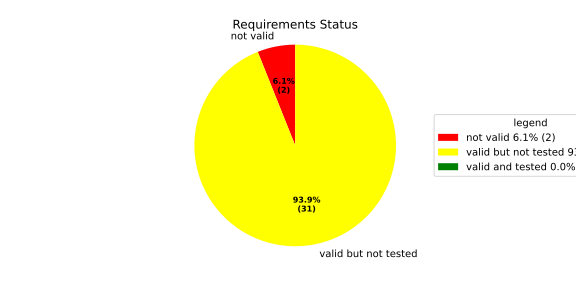
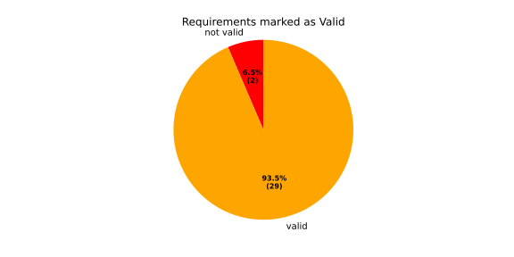
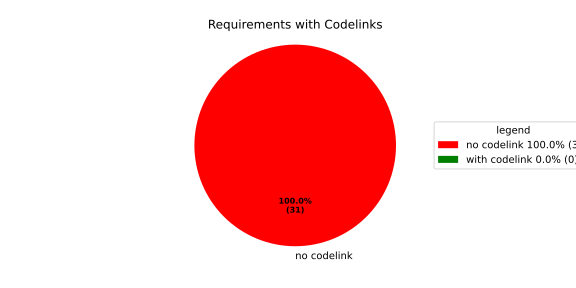
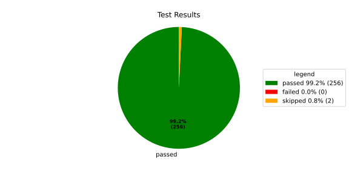
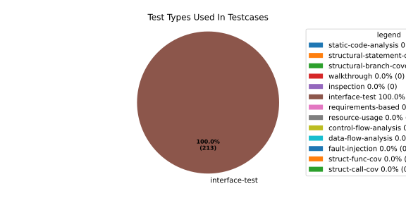
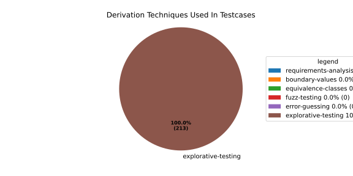

Verification Statistics#
Overview#

In Detail#



Failed Tests
Hint: This table should be empty. Before a PR can be merged all tests have to be successful.
No needs passed the filters
Skipped / Disabled Tests
testcase |
Result |
Fully Verifies |
Partially Verifies |
Test Type |
Derivation Technique |
link |
|---|---|---|---|---|---|---|
ValidateRangeTest/4__RejectsValueAboveMax |
skipped |
interface-test |
explorative-testing |
|||
ValidateRangeTest/4__RejectsValueBelowMin |
skipped |
interface-test |
explorative-testing |
All passed Tests#
testcase |
Result |
Fully Verifies |
Partially Verifies |
Test Type |
Derivation Technique |
link |
|---|---|---|---|---|---|---|
AliveImplTest__DoesNotThrowWhenInterfacePathEnvVarIsSet |
passed |
interface-test |
explorative-testing |
testcase__AliveImplTest__DoesNotThrowWhenInterfacePathEnvVarIsSet_xpewu |
||
AliveImplTest__ReportCheckpointSafeWhenNotConnected |
passed |
interface-test |
explorative-testing |
testcase__AliveImplTest__ReportCheckpointSafeWhenNotConnected_ppvuc |
||
AliveImplTest__ThrowsWhenInterfacePathEnvVarIsNotSet |
passed |
interface-test |
explorative-testing |
testcase__AliveImplTest__ThrowsWhenInterfacePathEnvVarIsNotSet_ekxfw |
||
AliveSupervisionTest__AliveDebouncesThroughFailedBeforeExpired |
passed |
interface-test |
explorative-testing |
testcase__AliveSupervisionTest__AliveDebouncesThroughFailedBeforeExpired_mlnbe |
||
AliveSupervisionTest__AliveReportsEnqueueFailureWhenRingBufferFull |
passed |
interface-test |
explorative-testing |
testcase__AliveSupervisionTest__AliveReportsEnqueueFailureWhenRingBufferFull_byhrd |
||
AliveSupervisionTest__AliveStaysOkWithCorrectHeartbeats |
passed |
interface-test |
explorative-testing |
testcase__AliveSupervisionTest__AliveStaysOkWithCorrectHeartbeats_vekof |
||
AliveSupervisionTest__AliveTransitionsOkToExpiredOnMissingHeartbeat |
passed |
interface-test |
explorative-testing |
testcase__AliveSupervisionTest__AliveTransitionsOkToExpiredOnMissingHeartbeat_jymxo |
||
AliveSupervisionTest__DeactivatesOnProcessCrash |
passed |
interface-test |
explorative-testing |
testcase__AliveSupervisionTest__DeactivatesOnProcessCrash_ypejs |
||
AliveSupervisionTest__DeactivatesOnProcessSigterm |
passed |
interface-test |
explorative-testing |
testcase__AliveSupervisionTest__DeactivatesOnProcessSigterm_hzaal |
||
AliveSupervisionTest__IgnoresIrrelevantProcessStates |
passed |
interface-test |
explorative-testing |
testcase__AliveSupervisionTest__IgnoresIrrelevantProcessStates_aolvb |
||
AliveSupervisionTest__MaxIndicationViolationExpires |
passed |
interface-test |
explorative-testing |
testcase__AliveSupervisionTest__MaxIndicationViolationExpires_whhhi |
||
AliveSupervisionTest__ReactivatesAfterCrash |
passed |
interface-test |
explorative-testing |
|||
ApplicationTypes/ApplicationTypeTest__ConvertsToExpectedValue/Native |
passed |
interface-test |
explorative-testing |
testcase__ApplicationTypes/ApplicationTypeTest__ConvertsToExpectedValue/Native_yxxcz |
||
ApplicationTypes/ApplicationTypeTest__ConvertsToExpectedValue/Reporting |
passed |
interface-test |
explorative-testing |
testcase__ApplicationTypes/ApplicationTypeTest__ConvertsToExpectedValue/Reporting_wcfwr |
||
ApplicationTypes/ApplicationTypeTest__ConvertsToExpectedValue/ReportingAndSupervised |
passed |
interface-test |
explorative-testing |
testcase__ApplicationTypes/ApplicationTypeTest__ConvertsToExpectedValue/ReportingAndSupervised_yxgad |
||
ApplicationTypes/ApplicationTypeTest__ConvertsToExpectedValue/StateManager |
passed |
interface-test |
explorative-testing |
testcase__ApplicationTypes/ApplicationTypeTest__ConvertsToExpectedValue/StateManager_ivuzc |
||
ConverterTest__ConvertAliveSupervisionMissingCycleReturnsError |
passed |
interface-test |
explorative-testing |
testcase__ConverterTest__ConvertAliveSupervisionMissingCycleReturnsError_bifzg |
||
ConverterTest__ConvertAliveSupervisionNullReturnsDefault |
passed |
interface-test |
explorative-testing |
testcase__ConverterTest__ConvertAliveSupervisionNullReturnsDefault_clyua |
||
ConverterTest__ConvertAliveSupervisionValid |
passed |
interface-test |
explorative-testing |
|||
ConverterTest__ConvertApplicationProfileMissingSelfTerminatingReturnsError |
passed |
interface-test |
explorative-testing |
testcase__ConverterTest__ConvertApplicationProfileMissingSelfTerminatingReturnsError_zddjb |
||
ConverterTest__ConvertApplicationProfileMissingTypeReturnsError |
passed |
interface-test |
explorative-testing |
testcase__ConverterTest__ConvertApplicationProfileMissingTypeReturnsError_zrfcs |
||
ConverterTest__ConvertApplicationProfileValid |
passed |
interface-test |
explorative-testing |
testcase__ConverterTest__ConvertApplicationProfileValid_oohxq |
||
ConverterTest__ConvertComponentAliveSupervisionBothIndicationsAbsentReturnsError |
passed |
interface-test |
explorative-testing |
testcase__ConverterTest__ConvertComponentAliveSupervisionBothIndicationsAbsentReturnsError_gvtfi |
||
ConverterTest__ConvertComponentAliveSupervisionMissingReportingCycleReturnsError |
passed |
interface-test |
explorative-testing |
testcase__ConverterTest__ConvertComponentAliveSupervisionMissingReportingCycleReturnsError_ajymy |
||
ConverterTest__ConvertComponentAliveSupervisionMissingToleranceReturnsError |
passed |
interface-test |
explorative-testing |
testcase__ConverterTest__ConvertComponentAliveSupervisionMissingToleranceReturnsError_lgrhj |
||
ConverterTest__ConvertComponentAliveSupervisionNullReturnsDefault |
passed |
interface-test |
explorative-testing |
testcase__ConverterTest__ConvertComponentAliveSupervisionNullReturnsDefault_xhaus |
||
ConverterTest__ConvertComponentAliveSupervisionOnlyMaxIndicationsPresent |
passed |
interface-test |
explorative-testing |
testcase__ConverterTest__ConvertComponentAliveSupervisionOnlyMaxIndicationsPresent_smwht |
||
ConverterTest__ConvertComponentAliveSupervisionOnlyMinIndicationsPresent |
passed |
interface-test |
explorative-testing |
testcase__ConverterTest__ConvertComponentAliveSupervisionOnlyMinIndicationsPresent_ybbrr |
||
ConverterTest__ConvertComponentAliveSupervisionValid |
passed |
interface-test |
explorative-testing |
testcase__ConverterTest__ConvertComponentAliveSupervisionValid_ijedh |
||
ConverterTest__ConvertComponentsValid |
passed |
interface-test |
explorative-testing |
|||
ConverterTest__ConvertComponentsWithInvalidComponentReturnsError |
passed |
interface-test |
explorative-testing |
testcase__ConverterTest__ConvertComponentsWithInvalidComponentReturnsError_wridc |
||
ConverterTest__ConvertComponentValid |
passed |
interface-test |
explorative-testing |
|||
ConverterTest__ConvertDeploymentConfigMissingReadyTimeoutReturnsError |
passed |
interface-test |
explorative-testing |
testcase__ConverterTest__ConvertDeploymentConfigMissingReadyTimeoutReturnsError_ljzfl |
||
ConverterTest__ConvertDeploymentConfigMissingShutdownTimeoutReturnsError |
passed |
interface-test |
explorative-testing |
testcase__ConverterTest__ConvertDeploymentConfigMissingShutdownTimeoutReturnsError_vyqye |
||
ConverterTest__ConvertDeploymentConfigValid |
passed |
interface-test |
explorative-testing |
|||
ConverterTest__ConvertEnvironmentalVariables |
passed |
interface-test |
explorative-testing |
testcase__ConverterTest__ConvertEnvironmentalVariables_fnhgo |
||
ConverterTest__ConvertEnvironmentalVariablesNullReturnsEmpty |
passed |
interface-test |
explorative-testing |
testcase__ConverterTest__ConvertEnvironmentalVariablesNullReturnsEmpty_vglrx |
||
ConverterTest__ConvertFallbackRunTargetMissingTimeoutReturnsError |
passed |
interface-test |
explorative-testing |
testcase__ConverterTest__ConvertFallbackRunTargetMissingTimeoutReturnsError_aevly |
||
ConverterTest__ConvertFallbackRunTargetValid |
passed |
interface-test |
explorative-testing |
testcase__ConverterTest__ConvertFallbackRunTargetValid_nexxj |
||
ConverterTest__ConvertReadyConditionMissingProcessStateReturnsError |
passed |
interface-test |
explorative-testing |
testcase__ConverterTest__ConvertReadyConditionMissingProcessStateReturnsError_ileav |
||
ConverterTest__ConvertReadyConditionValid |
passed |
interface-test |
explorative-testing |
|||
ConverterTest__ConvertRestartActionMissingFieldsReturnsError |
passed |
interface-test |
explorative-testing |
testcase__ConverterTest__ConvertRestartActionMissingFieldsReturnsError_aapjb |
||
ConverterTest__ConvertRestartActionNullReturnsNullopt |
passed |
interface-test |
explorative-testing |
testcase__ConverterTest__ConvertRestartActionNullReturnsNullopt_ifvyd |
||
ConverterTest__ConvertRestartActionValid |
passed |
interface-test |
explorative-testing |
|||
ConverterTest__ConvertRunTargetMissingTransitionTimeoutReturnsError |
passed |
interface-test |
explorative-testing |
testcase__ConverterTest__ConvertRunTargetMissingTransitionTimeoutReturnsError_ynekv |
||
ConverterTest__ConvertRunTargetsValid |
passed |
interface-test |
explorative-testing |
|||
ConverterTest__ConvertRunTargetsWithInvalidRunTargetReturnsError |
passed |
interface-test |
explorative-testing |
testcase__ConverterTest__ConvertRunTargetsWithInvalidRunTargetReturnsError_ldlox |
||
ConverterTest__ConvertRunTargetValid |
passed |
interface-test |
explorative-testing |
|||
ConverterTest__ConvertSandboxMissingGidReturnsError |
passed |
interface-test |
explorative-testing |
testcase__ConverterTest__ConvertSandboxMissingGidReturnsError_veeel |
||
ConverterTest__ConvertSandboxMissingSchedulingPolicyReturnsError |
passed |
interface-test |
explorative-testing |
testcase__ConverterTest__ConvertSandboxMissingSchedulingPolicyReturnsError_pkfts |
||
ConverterTest__ConvertSandboxMissingSchedulingPriorityReturnsError |
passed |
interface-test |
explorative-testing |
testcase__ConverterTest__ConvertSandboxMissingSchedulingPriorityReturnsError_xzdho |
||
ConverterTest__ConvertSandboxMissingUidReturnsError |
passed |
interface-test |
explorative-testing |
testcase__ConverterTest__ConvertSandboxMissingUidReturnsError_ogfku |
||
ConverterTest__ConvertSandboxSupplementaryGidOutOfRangeReturnsError |
passed |
interface-test |
explorative-testing |
testcase__ConverterTest__ConvertSandboxSupplementaryGidOutOfRangeReturnsError_zavpx |
||
ConverterTest__ConvertSandboxUidOutOfRangeReturnsError |
passed |
interface-test |
explorative-testing |
testcase__ConverterTest__ConvertSandboxUidOutOfRangeReturnsError_mcuaf |
||
ConverterTest__ConvertSandboxValid |
passed |
interface-test |
explorative-testing |
|||
ConverterTest__ConvertSwitchRunTargetActionNullReturnsNullopt |
passed |
interface-test |
explorative-testing |
testcase__ConverterTest__ConvertSwitchRunTargetActionNullReturnsNullopt_zmitx |
||
ConverterTest__ConvertSwitchRunTargetActionValid |
passed |
interface-test |
explorative-testing |
testcase__ConverterTest__ConvertSwitchRunTargetActionValid_tdklr |
||
ConverterTest__ConvertWatchdogMissingDeactivateReturnsError |
passed |
interface-test |
explorative-testing |
testcase__ConverterTest__ConvertWatchdogMissingDeactivateReturnsError_gzwjt |
||
ConverterTest__ConvertWatchdogMissingMagicCloseReturnsError |
passed |
interface-test |
explorative-testing |
testcase__ConverterTest__ConvertWatchdogMissingMagicCloseReturnsError_gexxk |
||
ConverterTest__ConvertWatchdogMissingMaxTimeoutReturnsError |
passed |
interface-test |
explorative-testing |
testcase__ConverterTest__ConvertWatchdogMissingMaxTimeoutReturnsError_lffxm |
||
ConverterTest__ConvertWatchdogNullReturnsNullopt |
passed |
interface-test |
explorative-testing |
testcase__ConverterTest__ConvertWatchdogNullReturnsNullopt_irsdk |
||
ConverterTest__ConvertWatchdogValid |
passed |
interface-test |
explorative-testing |
|||
DeadlineFixture__Start_AlreadyRunning |
passed |
interface-test |
explorative-testing |
|||
DeadlineFixture__Start_Succeeds |
passed |
interface-test |
explorative-testing |
|||
DeadlineMonitorBuilderFixture__AddDeadline_Succeeds |
passed |
interface-test |
explorative-testing |
testcase__DeadlineMonitorBuilderFixture__AddDeadline_Succeeds_nagke |
||
DeadlineMonitorBuilderFixture__New_Succeeds |
passed |
interface-test |
explorative-testing |
|||
DeadlineMonitorFixture__GetDeadline_Succeeds |
passed |
interface-test |
explorative-testing |
testcase__DeadlineMonitorFixture__GetDeadline_Succeeds_tmltf |
||
DeadlineMonitorFixture__GetDeadline_Unknown |
passed |
interface-test |
explorative-testing |
|||
EnumConversionTest__ConvertSchedulingPolicyUnsupported |
passed |
interface-test |
explorative-testing |
testcase__EnumConversionTest__ConvertSchedulingPolicyUnsupported_iavqm |
||
EnvironmentTest__AddIncreasesSize |
passed |
interface-test |
explorative-testing |
|||
EnvironmentTest__DefaultConstructedIsEmpty |
passed |
interface-test |
explorative-testing |
|||
EnvironmentTest__EmptyEnvironmentEnvpIsNullTerminated |
passed |
interface-test |
explorative-testing |
testcase__EnvironmentTest__EmptyEnvironmentEnvpIsNullTerminated_wwumw |
||
EnvironmentTest__EnvpReturnsNullTerminatedArray |
passed |
interface-test |
explorative-testing |
testcase__EnvironmentTest__EnvpReturnsNullTerminatedArray_aubkv |
||
EnvironmentTest__EnvpWithMultipleEntries |
passed |
interface-test |
explorative-testing |
|||
EnvironmentTest__MoveAssignmentPreservesEntries |
passed |
interface-test |
explorative-testing |
testcase__EnvironmentTest__MoveAssignmentPreservesEntries_vkydj |
||
EnvironmentTest__MoveConstructorPreservesEntries |
passed |
interface-test |
explorative-testing |
testcase__EnvironmentTest__MoveConstructorPreservesEntries_upclt |
||
EnvironmentTest__RangeBasedForLoopWorks |
passed |
interface-test |
explorative-testing |
|||
EnvironmentTest__ReserveAndAddAvoidReallocation |
passed |
interface-test |
explorative-testing |
testcase__EnvironmentTest__ReserveAndAddAvoidReallocation_lgzmu |
||
EnvironmentTest__SsoLengthStringSurvivesReallocation |
passed |
interface-test |
explorative-testing |
testcase__EnvironmentTest__SsoLengthStringSurvivesReallocation_jfmtl |
||
EnvironmentVariableTest__CStrReturnsKeyEqualsValue |
passed |
interface-test |
explorative-testing |
testcase__EnvironmentVariableTest__CStrReturnsKeyEqualsValue_rkwan |
||
EnvironmentVariableTest__EmptyValue |
passed |
interface-test |
explorative-testing |
|||
EnvironmentVariableTest__KeyAndValueAreAccessible |
passed |
interface-test |
explorative-testing |
testcase__EnvironmentVariableTest__KeyAndValueAreAccessible_kcrth |
||
EnvironmentVariableTest__ValueContainingEquals |
passed |
interface-test |
explorative-testing |
testcase__EnvironmentVariableTest__ValueContainingEquals_apzgz |
||
ExecErrorDomainTest__AllKnownCodesHaveDistinctMessages |
passed |
interface-test |
explorative-testing |
testcase__ExecErrorDomainTest__AllKnownCodesHaveDistinctMessages_qpoka |
||
ExecErrorDomainTest__AllKnownCodesReturnNonEmptyMessage |
passed |
interface-test |
explorative-testing |
testcase__ExecErrorDomainTest__AllKnownCodesReturnNonEmptyMessage_bawzg |
||
ExecErrorDomainTest__UnknownCodeReturnsNonEmptyMessage |
passed |
interface-test |
explorative-testing |
testcase__ExecErrorDomainTest__UnknownCodeReturnsNonEmptyMessage_kkwpr |
||
FlatbufferConfigLoaderTest__CorruptedBufferReturnsInvalidFormat |
passed |
interface-test |
explorative-testing |
testcase__FlatbufferConfigLoaderTest__CorruptedBufferReturnsInvalidFormat_twyac |
||
FlatbufferConfigLoaderTest__LoadAliveSupervision |
passed |
interface-test |
explorative-testing |
testcase__FlatbufferConfigLoaderTest__LoadAliveSupervision_hhuux |
||
FlatbufferConfigLoaderTest__LoadBufferFailsWithGenericErrorReturnsGeneralError |
passed |
interface-test |
explorative-testing |
testcase__FlatbufferConfigLoaderTest__LoadBufferFailsWithGenericErrorReturnsGeneralError_kmatm |
||
FlatbufferConfigLoaderTest__LoadBufferFailsWithNoSuchFileReturnsFileNotFound |
passed |
interface-test |
explorative-testing |
testcase__FlatbufferConfigLoaderTest__LoadBufferFailsWithNoSuchFileReturnsFileNotFound_yzlra |
||
FlatbufferConfigLoaderTest__LoadBufferFailsWithPermissionDeniedReturnsInsufficientPermission |
passed |
interface-test |
explorative-testing |
|||
FlatbufferConfigLoaderTest__LoadComponentAliveSupervision |
passed |
interface-test |
explorative-testing |
testcase__FlatbufferConfigLoaderTest__LoadComponentAliveSupervision_fwfad |
||
FlatbufferConfigLoaderTest__LoadEnvironmentalVariables |
passed |
interface-test |
explorative-testing |
testcase__FlatbufferConfigLoaderTest__LoadEnvironmentalVariables_wsosu |
||
FlatbufferConfigLoaderTest__LoadFallbackRunTarget |
passed |
interface-test |
explorative-testing |
testcase__FlatbufferConfigLoaderTest__LoadFallbackRunTarget_wduqm |
||
FlatbufferConfigLoaderTest__LoadMinimalConfig |
passed |
interface-test |
explorative-testing |
testcase__FlatbufferConfigLoaderTest__LoadMinimalConfig_hdkck |
||
FlatbufferConfigLoaderTest__LoadMultipleComponents |
passed |
interface-test |
explorative-testing |
testcase__FlatbufferConfigLoaderTest__LoadMultipleComponents_abpom |
||
FlatbufferConfigLoaderTest__LoadRestartRecoveryAction |
passed |
interface-test |
explorative-testing |
testcase__FlatbufferConfigLoaderTest__LoadRestartRecoveryAction_wyfqg |
||
FlatbufferConfigLoaderTest__LoadRunTargets |
passed |
interface-test |
explorative-testing |
|||
FlatbufferConfigLoaderTest__LoadSandbox |
passed |
interface-test |
explorative-testing |
|||
FlatbufferConfigLoaderTest__LoadSingleComponent |
passed |
interface-test |
explorative-testing |
testcase__FlatbufferConfigLoaderTest__LoadSingleComponent_yidty |
||
FlatbufferConfigLoaderTest__LoadSwitchRunTargetAction |
passed |
interface-test |
explorative-testing |
testcase__FlatbufferConfigLoaderTest__LoadSwitchRunTargetAction_uchgp |
||
FlatbufferConfigLoaderTest__LoadWatchdog |
passed |
interface-test |
explorative-testing |
|||
FlatbufferConfigLoaderTest__MissingSchemaVersionReturnsInvalidFormat |
passed |
interface-test |
explorative-testing |
testcase__FlatbufferConfigLoaderTest__MissingSchemaVersionReturnsInvalidFormat_qqmfn |
||
FlatbufferConfigLoaderTest__OptionalReadyConditionAbsent |
passed |
interface-test |
explorative-testing |
testcase__FlatbufferConfigLoaderTest__OptionalReadyConditionAbsent_lhddx |
||
FlatbufferConfigLoaderTest__OptionalWatchdogAbsent |
passed |
interface-test |
explorative-testing |
testcase__FlatbufferConfigLoaderTest__OptionalWatchdogAbsent_pkhkp |
||
FlatbufferConfigLoaderTest__WrongSchemaVersionReturnsUnsupportedVersion |
passed |
interface-test |
explorative-testing |
testcase__FlatbufferConfigLoaderTest__WrongSchemaVersionReturnsUnsupportedVersion_zrbjv |
||
HealthMonitor__GetDeadlineMonitor_Available |
passed |
|||||
HealthMonitor__GetDeadlineMonitor_Taken |
passed |
|||||
HealthMonitor__GetDeadlineMonitor_Unknown |
passed |
|||||
HealthMonitor__GetHeartbeatMonitor_Available |
passed |
testcase__HealthMonitor__GetHeartbeatMonitor_Available_aacat |
||||
HealthMonitor__GetHeartbeatMonitor_Taken |
passed |
|||||
HealthMonitor__GetHeartbeatMonitor_Unknown |
passed |
|||||
HealthMonitor__GetLogicMonitor_Available |
passed |
|||||
HealthMonitor__GetLogicMonitor_Taken |
passed |
|||||
HealthMonitor__GetLogicMonitor_Unknown |
passed |
|||||
HealthMonitor__Start_MonitorsNotTaken |
passed |
|||||
HealthMonitor__Start_Succeeds |
passed |
|||||
HealthMonitorBuilderFixture__Build_InvalidCycles |
passed |
interface-test |
explorative-testing |
testcase__HealthMonitorBuilderFixture__Build_InvalidCycles_pdigk |
||
HealthMonitorBuilderFixture__Build_NoMonitors |
passed |
interface-test |
explorative-testing |
testcase__HealthMonitorBuilderFixture__Build_NoMonitors_ktcve |
||
HealthMonitorBuilderFixture__Build_Succeeds |
passed |
interface-test |
explorative-testing |
|||
HealthMonitorBuilderFixture__New_Succeeds |
passed |
interface-test |
explorative-testing |
|||
HealthMonitorTest__Integrated |
passed |
interface-test |
explorative-testing |
|||
HeartbeatMonitor__Heartbeat_Succeeds |
passed |
interface-test |
explorative-testing |
|||
HeartbeatMonitorBuilder__New_Succeeds |
passed |
interface-test |
explorative-testing |
|||
IdentifierHashTest__IdentifierHash_default_created |
passed |
interface-test |
explorative-testing |
testcase__IdentifierHashTest__IdentifierHash_default_created_yhhvi |
||
IdentifierHashTest__IdentifierHash_EqualityOperators |
passed |
interface-test |
explorative-testing |
testcase__IdentifierHashTest__IdentifierHash_EqualityOperators_nnsuj |
||
IdentifierHashTest__IdentifierHash_invalid_hash_no_string_representation |
passed |
interface-test |
explorative-testing |
testcase__IdentifierHashTest__IdentifierHash_invalid_hash_no_string_representation_rxowr |
||
IdentifierHashTest__IdentifierHash_LessThanOperator |
passed |
interface-test |
explorative-testing |
testcase__IdentifierHashTest__IdentifierHash_LessThanOperator_rnbax |
||
IdentifierHashTest__IdentifierHash_no_dangling_pointer_after_source_string_dies |
passed |
interface-test |
explorative-testing |
testcase__IdentifierHashTest__IdentifierHash_no_dangling_pointer_after_source_string_dies_qsjin |
||
IdentifierHashTest__IdentifierHash_with_string_created |
passed |
interface-test |
explorative-testing |
testcase__IdentifierHashTest__IdentifierHash_with_string_created_aygdm |
||
IdentifierHashTest__IdentifierHash_with_string_view_created |
passed |
interface-test |
explorative-testing |
testcase__IdentifierHashTest__IdentifierHash_with_string_view_created_dbpol |
||
LogicMonitorBuilderFixture__AddState_Succeeds |
passed |
interface-test |
explorative-testing |
testcase__LogicMonitorBuilderFixture__AddState_Succeeds_axdxj |
||
LogicMonitorBuilderFixture__New_Succeeds |
passed |
interface-test |
explorative-testing |
|||
LogicMonitorFixture__State_Invalid |
passed |
interface-test |
explorative-testing |
|||
LogicMonitorFixture__State_Succeeds |
passed |
interface-test |
explorative-testing |
|||
LogicMonitorFixture__Transition_Invalid |
passed |
interface-test |
explorative-testing |
|||
LogicMonitorFixture__Transition_Succeeds |
passed |
interface-test |
explorative-testing |
|||
LogicMonitorFixture__Transition_Unknown |
passed |
interface-test |
explorative-testing |
|||
MonitorIfDaemonTest__Active_CheckpointDataForwarded |
passed |
interface-test |
explorative-testing |
testcase__MonitorIfDaemonTest__Active_CheckpointDataForwarded_evumz |
||
MonitorIfDaemonTest__Active_FutureTimestamp_NotForwardedInCurrentCycle |
passed |
interface-test |
explorative-testing |
testcase__MonitorIfDaemonTest__Active_FutureTimestamp_NotForwardedInCurrentCycle_oycau |
||
MonitorIfDaemonTest__Active_FutureTimestampCheckpoint_ConsumedInLaterCycle |
passed |
interface-test |
explorative-testing |
testcase__MonitorIfDaemonTest__Active_FutureTimestampCheckpoint_ConsumedInLaterCycle_veyyy |
||
MonitorIfDaemonTest__Active_MultipleCheckpointsInOneCycle_AllForwarded |
passed |
interface-test |
explorative-testing |
testcase__MonitorIfDaemonTest__Active_MultipleCheckpointsInOneCycle_AllForwarded_gmbms |
||
MonitorIfDaemonTest__Active_NonMatchingCheckpointId_NotForwarded |
passed |
interface-test |
explorative-testing |
testcase__MonitorIfDaemonTest__Active_NonMatchingCheckpointId_NotForwarded_bohck |
||
MonitorIfDaemonTest__Active_OverflowDetected_TransitionsToInactiveOverflow |
passed |
interface-test |
explorative-testing |
testcase__MonitorIfDaemonTest__Active_OverflowDetected_TransitionsToInactiveOverflow_ovitk |
||
MonitorIfDaemonTest__Active_TwoAttachedCheckpoints_RoutedByCheckpointId |
passed |
interface-test |
explorative-testing |
testcase__MonitorIfDaemonTest__Active_TwoAttachedCheckpoints_RoutedByCheckpointId_skqhd |
||
MonitorIfDaemonTest__GetInterfaceName_ReturnsNameGivenAtConstruction |
passed |
interface-test |
explorative-testing |
testcase__MonitorIfDaemonTest__GetInterfaceName_ReturnsNameGivenAtConstruction_iaemz |
||
MonitorIfDaemonTest__InactiveOverflow_NoProcessRestart_DoesNotRepeatNotification |
passed |
interface-test |
explorative-testing |
testcase__MonitorIfDaemonTest__InactiveOverflow_NoProcessRestart_DoesNotRepeatNotification_gdbxg |
||
MonitorIfDaemonTest__InactiveOverflow_ProcessRestartFlag_ClearedAfterNotification |
passed |
interface-test |
explorative-testing |
testcase__MonitorIfDaemonTest__InactiveOverflow_ProcessRestartFlag_ClearedAfterNotification_pqfyy |
||
MonitorIfDaemonTest__InactiveOverflow_ProcessRestarts_PushesOverflowNotificationAgain |
passed |
interface-test |
explorative-testing |
|||
MonitorIfDaemonTest__InitiallyInactive_CheckForNewData_DoesNotNotifyCheckpoint |
passed |
interface-test |
explorative-testing |
testcase__MonitorIfDaemonTest__InitiallyInactive_CheckForNewData_DoesNotNotifyCheckpoint_wjrfl |
||
MonitorIfDaemonTest__ProcessOff_DeactivatesMonitor_NoFurtherDataForwarded |
passed |
interface-test |
explorative-testing |
testcase__MonitorIfDaemonTest__ProcessOff_DeactivatesMonitor_NoFurtherDataForwarded_uialh |
||
MonitorIfDaemonTest__ProcessOffBeforeActivation_RemainsInactive |
passed |
interface-test |
explorative-testing |
testcase__MonitorIfDaemonTest__ProcessOffBeforeActivation_RemainsInactive_kzzyy |
||
MonitorIfDaemonTest__ProcessRunning_ActivatesMonitorOnNextCheckForNewData |
passed |
interface-test |
explorative-testing |
testcase__MonitorIfDaemonTest__ProcessRunning_ActivatesMonitorOnNextCheckForNewData_fkkmk |
||
MonitorIfDaemonTest__ProcessStarting_AlsoActivatesMonitor |
passed |
interface-test |
explorative-testing |
testcase__MonitorIfDaemonTest__ProcessStarting_AlsoActivatesMonitor_xdkbg |
||
MPMCConcurrentQueueTest_Basic__LvaluePushCopiesItem |
passed |
testcase__MPMCConcurrentQueueTest_Basic__LvaluePushCopiesItem_oysfc |
||||
MPMCConcurrentQueueTest_Basic__PopReturnsNulloptOnSemaphoreWaitFailure |
passed |
testcase__MPMCConcurrentQueueTest_Basic__PopReturnsNulloptOnSemaphoreWaitFailure_rgznm |
||||
MPMCConcurrentQueueTest_Basic__PushAndPopPreservesOrder |
passed |
testcase__MPMCConcurrentQueueTest_Basic__PushAndPopPreservesOrder_aijdb |
||||
MPMCConcurrentQueueTest_Basic__PushAndPopSingleItem |
passed |
testcase__MPMCConcurrentQueueTest_Basic__PushAndPopSingleItem_jrxwz |
||||
MPMCConcurrentQueueTest_Basic__RvaluePushWorksWithMoveOnlyType |
passed |
testcase__MPMCConcurrentQueueTest_Basic__RvaluePushWorksWithMoveOnlyType_cxxaj |
||||
MPMCConcurrentQueueTest_Blocking__PopBlocksUntilItemAvailable |
passed |
testcase__MPMCConcurrentQueueTest_Blocking__PopBlocksUntilItemAvailable_ttwcx |
||||
MPMCConcurrentQueueTest_Blocking__PushBlocksWhenFull |
passed |
testcase__MPMCConcurrentQueueTest_Blocking__PushBlocksWhenFull_ecujf |
||||
MPMCConcurrentQueueTest_Blocking__StopUnblocksBlockedConsumer |
passed |
testcase__MPMCConcurrentQueueTest_Blocking__StopUnblocksBlockedConsumer_snzyr |
||||
MPMCConcurrentQueueTest_Blocking__StopUnblocksBlockedProducer |
passed |
testcase__MPMCConcurrentQueueTest_Blocking__StopUnblocksBlockedProducer_inddu |
||||
MPMCConcurrentQueueTest_MPMC__AllItemsDelivered |
passed |
testcase__MPMCConcurrentQueueTest_MPMC__AllItemsDelivered_ztjqe |
||||
MPMCConcurrentQueueTest_Stop__ItemsAreDroppedAfterStop |
passed |
testcase__MPMCConcurrentQueueTest_Stop__ItemsAreDroppedAfterStop_ragzw |
||||
MPMCConcurrentQueueTest_Stop__PopReturnsNulloptWhenStoppedAndEmpty |
passed |
testcase__MPMCConcurrentQueueTest_Stop__PopReturnsNulloptWhenStoppedAndEmpty_cevga |
||||
MPMCConcurrentQueueTest_Stop__PushReturnsFalseAfterStop |
passed |
testcase__MPMCConcurrentQueueTest_Stop__PushReturnsFalseAfterStop_qqnhw |
||||
MPMCConcurrentQueueTest_Timeout__PushWithTimeoutReturnsFalseWhenFull |
passed |
testcase__MPMCConcurrentQueueTest_Timeout__PushWithTimeoutReturnsFalseWhenFull_aeips |
||||
MPMCConcurrentQueueTest_Timeout__PushWithTimeoutSucceedsWhenSlotAvailable |
passed |
testcase__MPMCConcurrentQueueTest_Timeout__PushWithTimeoutSucceedsWhenSlotAvailable_klzpo |
||||
OsHandlerTest__WaitReturnsError_OsHandlerSleepsAndDoesNotCallFindTerminated |
passed |
interface-test |
explorative-testing |
testcase__OsHandlerTest__WaitReturnsError_OsHandlerSleepsAndDoesNotCallFindTerminated_cibtr |
||
OsHandlerTest__WaitReturnsErrorThenProcessId_HandlerRecoversAndInvokesCallback |
passed |
interface-test |
explorative-testing |
testcase__OsHandlerTest__WaitReturnsErrorThenProcessId_HandlerRecoversAndInvokesCallback_nqstd |
||
OsHandlerTest__WaitReturnsProcessId_FindTerminatedIsCalled |
passed |
interface-test |
explorative-testing |
testcase__OsHandlerTest__WaitReturnsProcessId_FindTerminatedIsCalled_chlsq |
||
OsHandlerTest__WaitReturnsProcessIdBeforeRegistration_LaterRegistrationReceivesStoredTermination |
passed |
interface-test |
explorative-testing |
|||
OsHandlerTest__WaitReturnsUnknownPidWhenMapIsFull_OutOfResourcesPathDoesNotNotifyCallbacks |
passed |
interface-test |
explorative-testing |
|||
OsHandlerTest__WaitReturnsZeroPid_OsHandlerSleepsAndDoesNotCallFindTerminated |
passed |
interface-test |
explorative-testing |
testcase__OsHandlerTest__WaitReturnsZeroPid_OsHandlerSleepsAndDoesNotCallFindTerminated_rkttz |
||
ProcessStateClient_UT__ProcessStateClient_ConstructReceiver_Succeeds |
passed |
interface-test |
explorative-testing |
testcase__ProcessStateClient_UT__ProcessStateClient_ConstructReceiver_Succeeds_hodwy |
||
ProcessStateClient_UT__ProcessStateClient_QueueMaxNumberOfProcesses_Succeeds |
passed |
interface-test |
explorative-testing |
testcase__ProcessStateClient_UT__ProcessStateClient_QueueMaxNumberOfProcesses_Succeeds_qohom |
||
ProcessStateClient_UT__ProcessStateClient_QueueOneProcess_Succeeds |
passed |
interface-test |
explorative-testing |
testcase__ProcessStateClient_UT__ProcessStateClient_QueueOneProcess_Succeeds_tmzfz |
||
ProcessStateClient_UT__ProcessStateClient_QueueOneProcessTooMany_Fails |
passed |
interface-test |
explorative-testing |
testcase__ProcessStateClient_UT__ProcessStateClient_QueueOneProcessTooMany_Fails_sspoj |
||
ProcessStates/ProcessStateTest__ConvertsToExpectedValue/Running |
passed |
interface-test |
explorative-testing |
testcase__ProcessStates/ProcessStateTest__ConvertsToExpectedValue/Running_hinlr |
||
ProcessStates/ProcessStateTest__ConvertsToExpectedValue/Terminated |
passed |
interface-test |
explorative-testing |
testcase__ProcessStates/ProcessStateTest__ConvertsToExpectedValue/Terminated_zrytn |
||
RecoveryClientTest__FIFOOrdering |
passed |
interface-test |
explorative-testing |
|||
RecoveryClientTest__GetNextRequest |
passed |
interface-test |
explorative-testing |
|||
RecoveryClientTest__GetNextRequestEmpty |
passed |
interface-test |
explorative-testing |
|||
RecoveryClientTest__RingBufferFull |
passed |
interface-test |
explorative-testing |
|||
RecoveryClientTest__SendSingleRequest |
passed |
interface-test |
explorative-testing |
|||
RunTest__AsPosixProcessCreatesAndDestroysLifeCycleManager |
passed |
testcase__RunTest__AsPosixProcessCreatesAndDestroysLifeCycleManager_sooex |
||||
RunTest__AsPosixProcessForwardsConstructorArgsToApplication |
passed |
testcase__RunTest__AsPosixProcessForwardsConstructorArgsToApplication_dmeur |
||||
RunTest__AsPosixProcessForwardsNonZeroExitCode |
passed |
testcase__RunTest__AsPosixProcessForwardsNonZeroExitCode_lldqd |
||||
RunTest__AsPosixProcessPassesCorrectApplicationTypeToRun |
passed |
testcase__RunTest__AsPosixProcessPassesCorrectApplicationTypeToRun_ajqwz |
||||
RunTest__AsPosixProcessReturnsZeroExitCode |
passed |
|||||
RunTest__RunApplicationFreeFunctionDelegatesToAsPosixProcess |
passed |
testcase__RunTest__RunApplicationFreeFunctionDelegatesToAsPosixProcess_ccing |
||||
RunTest__RunConstructorPassesArgcArgvToApplicationContext |
passed |
testcase__RunTest__RunConstructorPassesArgcArgvToApplicationContext_agerd |
||||
SafeProcessMapTest__ConcurrentFindAndInsertFromMultipleThreads |
passed |
interface-test |
explorative-testing |
testcase__SafeProcessMapTest__ConcurrentFindAndInsertFromMultipleThreads_kzfyg |
||
SafeProcessMapTest__ConcurrentInsertAndFindFromMultipleThreads |
passed |
interface-test |
explorative-testing |
testcase__SafeProcessMapTest__ConcurrentInsertAndFindFromMultipleThreads_hnyqj |
||
SafeProcessMapTest__ConstructWithZeroCapacity |
passed |
interface-test |
explorative-testing |
testcase__SafeProcessMapTest__ConstructWithZeroCapacity_gjmqg |
||
SafeProcessMapTest__FindTerminatedInsertsEntryWhenPidNotPresent |
passed |
interface-test |
explorative-testing |
testcase__SafeProcessMapTest__FindTerminatedInsertsEntryWhenPidNotPresent_ixtlt |
||
SafeProcessMapTest__FindTerminatedMatchesExistingInsertAndCallsCallback |
passed |
interface-test |
explorative-testing |
testcase__SafeProcessMapTest__FindTerminatedMatchesExistingInsertAndCallsCallback_ehuzb |
||
SafeProcessMapTest__FindTerminatedSamePidTwiceYieldsUntilInsertResolves |
passed |
interface-test |
explorative-testing |
testcase__SafeProcessMapTest__FindTerminatedSamePidTwiceYieldsUntilInsertResolves_hsekx |
||
SafeProcessMapTest__FindTerminatedWithNegativePidReturnsInvalid |
passed |
interface-test |
explorative-testing |
testcase__SafeProcessMapTest__FindTerminatedWithNegativePidReturnsInvalid_dewoh |
||
SafeProcessMapTest__FindTerminatedWorksAtMaxTreeDepth |
passed |
interface-test |
explorative-testing |
testcase__SafeProcessMapTest__FindTerminatedWorksAtMaxTreeDepth_adtzi |
||
SafeProcessMapTest__InsertBeyondCapacityReturnsOutOfMemory |
passed |
interface-test |
explorative-testing |
testcase__SafeProcessMapTest__InsertBeyondCapacityReturnsOutOfMemory_qjnie |
||
SafeProcessMapTest__InsertIntoEmptyTreeReturnsZero |
passed |
interface-test |
explorative-testing |
testcase__SafeProcessMapTest__InsertIntoEmptyTreeReturnsZero_zfbaq |
||
SafeProcessMapTest__InsertMatchesExistingFindTerminatedEntry |
passed |
interface-test |
explorative-testing |
testcase__SafeProcessMapTest__InsertMatchesExistingFindTerminatedEntry_fuwrp |
||
SafeProcessMapTest__InsertMultipleNodesThenFindTerminatedRemovesAll |
passed |
interface-test |
explorative-testing |
testcase__SafeProcessMapTest__InsertMultipleNodesThenFindTerminatedRemovesAll_fvowh |
||
SafeProcessMapTest__InsertSamePidTwiceYieldsUntilFindTerminatedResolves |
passed |
interface-test |
explorative-testing |
testcase__SafeProcessMapTest__InsertSamePidTwiceYieldsUntilFindTerminatedResolves_wzwyb |
||
SchedulingPolicies/SchedulingPolicyTest__ConvertsToExpectedPosixValue/SCHED_FIFO |
passed |
interface-test |
explorative-testing |
testcase__SchedulingPolicies/SchedulingPolicyTest__ConvertsToExpectedPosixValue/SCHED_FIFO_soddq |
||
SchedulingPolicies/SchedulingPolicyTest__ConvertsToExpectedPosixValue/SCHED_OTHER |
passed |
interface-test |
explorative-testing |
testcase__SchedulingPolicies/SchedulingPolicyTest__ConvertsToExpectedPosixValue/SCHED_OTHER_oigmk |
||
SchedulingPolicies/SchedulingPolicyTest__ConvertsToExpectedPosixValue/SCHED_RR |
passed |
interface-test |
explorative-testing |
testcase__SchedulingPolicies/SchedulingPolicyTest__ConvertsToExpectedPosixValue/SCHED_RR_pcjci |
||
score/health_monitor/src/rust/test-510566969/tests |
passed |
testcase__score/health_monitor/src/rust/test-510566969/tests_kjjlw |
||||
score/health_monitor/src/rust/test-827801879/loom_tests |
passed |
testcase__score/health_monitor/src/rust/test-827801879/loom_tests_cpmix |
||||
SecondsToMsTest__ConvertsPositiveValue |
passed |
interface-test |
explorative-testing |
|||
SecondsToMsTest__ConvertsZero |
passed |
interface-test |
explorative-testing |
|||
SecondsToMsTest__RejectsNegativeValue |
passed |
interface-test |
explorative-testing |
|||
SecondsToMsTest__RejectsOverflow |
passed |
interface-test |
explorative-testing |
|||
SecondsToMsTest__RejectsSubMillisecond |
passed |
interface-test |
explorative-testing |
|||
StringHelperTest__ConvertGidVectorReturnsEmptyWhenNull |
passed |
interface-test |
explorative-testing |
testcase__StringHelperTest__ConvertGidVectorReturnsEmptyWhenNull_jmcsr |
||
StringHelperTest__ConvertStringVectorReturnsEmptyWhenNull |
passed |
interface-test |
explorative-testing |
testcase__StringHelperTest__ConvertStringVectorReturnsEmptyWhenNull_zsuvv |
||
StringHelperTest__SafeStringReturnsEmptyWhenNull |
passed |
interface-test |
explorative-testing |
testcase__StringHelperTest__SafeStringReturnsEmptyWhenNull_crelr |
||
StringHelperTest__SafeStringReturnsValueWhenNotNull |
passed |
interface-test |
explorative-testing |
testcase__StringHelperTest__SafeStringReturnsValueWhenNotNull_anbko |
||
test_complex_monitoring |
passed |
|||||
test_crash_on_startup |
passed |
|||||
test_incorrect_config_non_reporting |
passed |
|||||
test_process_crash_monitoring |
passed |
|||||
test_process_launch_args |
passed |
|||||
test_process_wrong_binary_failure |
passed |
|||||
test_recovery_action_complex_rep_failure |
passed |
|||||
test_recovery_action_simple_rep_failure |
passed |
|||||
test_smoke |
passed |
|||||
test_switch_run_target |
passed |
|||||
TimeRangeFixture__MinMax |
passed |
interface-test |
explorative-testing |
|||
TimeRangeFixture__New_InvalidOrder |
passed |
interface-test |
explorative-testing |
|||
TimeRangeFixture__New_Succeeds |
passed |
interface-test |
explorative-testing |
|||
ValidateRangeTest/0__AcceptsMaxBoundary |
passed |
interface-test |
explorative-testing |
|||
ValidateRangeTest/0__AcceptsMinBoundary |
passed |
interface-test |
explorative-testing |
|||
ValidateRangeTest/0__AcceptsZero |
passed |
interface-test |
explorative-testing |
|||
ValidateRangeTest/0__RejectsValueAboveMax |
passed |
interface-test |
explorative-testing |
|||
ValidateRangeTest/0__RejectsValueBelowMin |
passed |
interface-test |
explorative-testing |
|||
ValidateRangeTest/1__AcceptsMaxBoundary |
passed |
interface-test |
explorative-testing |
|||
ValidateRangeTest/1__AcceptsMinBoundary |
passed |
interface-test |
explorative-testing |
|||
ValidateRangeTest/1__AcceptsZero |
passed |
interface-test |
explorative-testing |
|||
ValidateRangeTest/1__RejectsValueAboveMax |
passed |
interface-test |
explorative-testing |
|||
ValidateRangeTest/1__RejectsValueBelowMin |
passed |
interface-test |
explorative-testing |
|||
ValidateRangeTest/2__AcceptsMaxBoundary |
passed |
interface-test |
explorative-testing |
|||
ValidateRangeTest/2__AcceptsMinBoundary |
passed |
interface-test |
explorative-testing |
|||
ValidateRangeTest/2__AcceptsZero |
passed |
interface-test |
explorative-testing |
|||
ValidateRangeTest/2__RejectsValueAboveMax |
passed |
interface-test |
explorative-testing |
|||
ValidateRangeTest/2__RejectsValueBelowMin |
passed |
interface-test |
explorative-testing |
|||
ValidateRangeTest/3__AcceptsMaxBoundary |
passed |
interface-test |
explorative-testing |
|||
ValidateRangeTest/3__AcceptsMinBoundary |
passed |
interface-test |
explorative-testing |
|||
ValidateRangeTest/3__AcceptsZero |
passed |
interface-test |
explorative-testing |
|||
ValidateRangeTest/3__RejectsValueAboveMax |
passed |
interface-test |
explorative-testing |
|||
ValidateRangeTest/3__RejectsValueBelowMin |
passed |
interface-test |
explorative-testing |
|||
ValidateRangeTest/4__AcceptsMaxBoundary |
passed |
interface-test |
explorative-testing |
|||
ValidateRangeTest/4__AcceptsMinBoundary |
passed |
interface-test |
explorative-testing |
|||
ValidateRangeTest/4__AcceptsZero |
passed |
interface-test |
explorative-testing |
Details About Testcases#


Test Log Files#
tests-report/tests/integration/process_simple_rep_failure/process_simple_rep_failure/test.log
exec ${PAGER:-/usr/bin/less} "$0" || exit 1
Executing tests from //tests/integration/process_simple_rep_failure:process_simple_rep_failure
-----------------------------------------------------------------------------
============================= test session starts ==============================
platform linux -- Python 3.12.12, pytest-9.0.3, pluggy-1.5.0
rootdir: /home/runner/.bazel/sandbox/processwrapper-sandbox/1099/execroot/_main/bazel-out/k8-fastbuild/bin/tests/integration/process_simple_rep_failure/process_simple_rep_failure.runfiles/score_itf+
configfile: pytest.ini
collected 1 item
../score_itf+::test_recovery_action_simple_rep_failure
-------------------------------- live log setup --------------------------------
[2026-07-08 09:28:28.299] [INFO] [score.itf.plugins.docker] Executing custom image bootstrap command: tests/utils/environments/x86_64-linux/x86_64-linux.sh
[2026-07-08 09:28:28.515] [DEBUG] [docker.utils.config] Trying paths: ['/home/runner/.docker/config.json', '/home/runner/.dockercfg']
[2026-07-08 09:28:28.515] [DEBUG] [docker.utils.config] Found file at path: /home/runner/.docker/config.json
[2026-07-08 09:28:28.516] [DEBUG] [docker.auth] Found 'auths' section
[2026-07-08 09:28:28.516] [DEBUG] [docker.auth] Found entry (registry='https://index.docker.io/v1/', username='githubactions')
[2026-07-08 09:28:28.528] [DEBUG] [urllib3.connectionpool] http://localhost:None "GET /version HTTP/1.1" 200 823
[2026-07-08 09:28:28.594] [DEBUG] [urllib3.connectionpool] http://localhost:None "POST /v1.48/containers/create HTTP/1.1" 201 88
[2026-07-08 09:28:28.597] [DEBUG] [urllib3.connectionpool] http://localhost:None "GET /v1.48/containers/93baf6dc50d3f21dcaac15cc9c749abcf900bbe429291b1c3bfe46b2962e9bd4/json HTTP/1.1" 200 None
[2026-07-08 09:28:28.745] [DEBUG] [urllib3.connectionpool] http://localhost:None "POST /v1.48/containers/93baf6dc50d3f21dcaac15cc9c749abcf900bbe429291b1c3bfe46b2962e9bd4/start HTTP/1.1" 204 0
[2026-07-08 09:28:28.746] [DEBUG] [docker.utils.config] Trying paths: ['/home/runner/.docker/config.json', '/home/runner/.dockercfg']
[2026-07-08 09:28:28.746] [DEBUG] [docker.utils.config] Found file at path: /home/runner/.docker/config.json
[2026-07-08 09:28:28.746] [DEBUG] [docker.auth] Found 'auths' section
[2026-07-08 09:28:28.746] [DEBUG] [docker.auth] Found entry (registry='https://index.docker.io/v1/', username='githubactions')
[2026-07-08 09:28:28.757] [DEBUG] [urllib3.connectionpool] http://localhost:None "GET /version HTTP/1.1" 200 823
[2026-07-08 09:28:29.074] [INFO] [tests.utils.testing_utils.setup_test] Test case setup finished
-------------------------------- live log call ---------------------------------
[2026-07-08 09:28:29.212] [INFO] [launch_manager] 2026/07/08 09:28:29.2909209 2864850 000 ECU1 LM LM log debug verbose 1 Launch Manager Started !!!!
[2026-07-08 09:28:29.226] [INFO] [launch_manager] 2026/07/08 09:28:29.2909210 2864860 000 ECU1 LM LM log debug verbose 1 Loading LCM Configurations...
[2026-07-08 09:28:29.228] [INFO] [launch_manager] 2026/07/08 09:28:29.2909210 2864861 000 ECU1 LM LM log debug verbose 1 ECUCFG_ENV_VAR_ROOTFOLDER set successfully
[2026-07-08 09:28:29.229] [INFO] [launch_manager] 2026/07/08 09:28:29.2909210 2864862 000 ECU1 LM LM log debug verbose 5 FlatBufferParser::getModeGroupPgName: MainPG ( IdentifierHash: 18079021346025578134 )
[2026-07-08 09:28:29.229] [INFO] [launch_manager] 2026/07/08 09:28:29.2909210 2864862 000 ECU1 LM LM log debug verbose 5 FlatBufferParser::getModeGroupPgStateName: MainPG/Startup ( IdentifierHash: 10504605499600661529 )
[2026-07-08 09:28:29.230] [INFO] [launch_manager] 2026/07/08 09:28:29.2909210 2864862 000 ECU1 LM LM log debug verbose 5 FlatBufferParser::getModeGroupPgStateName: MainPG/run_target_app_does_report_krunning_in_time ( IdentifierHash: 11934981641920773349 )
[2026-07-08 09:28:29.231] [INFO] [launch_manager] 2026/07/08 09:28:29.2909210 2864862 000 ECU1 LM LM log debug verbose 5 FlatBufferParser::getModeGroupPgStateName: MainPG/run_target_app_does_not_report_krunning_in_time ( IdentifierHash: 7672161913816744053 )
[2026-07-08 09:28:29.231] [INFO] [launch_manager] 2026/07/08 09:28:29.2909210 2864863 000 ECU1 LM LM log debug verbose 5 FlatBufferParser::getModeGroupPgStateName: MainPG/Off ( IdentifierHash: 15281793077830264047 )
[2026-07-08 09:28:29.231] [INFO] [launch_manager] 2026/07/08 09:28:29.2909210 2864863 000 ECU1 LM LM log debug verbose 5 FlatBufferParser::getModeGroupPgStateName: MainPG/fallback_run_target ( IdentifierHash: 4059409696722237352 )
[2026-07-08 09:28:29.231] [INFO] [launch_manager] 2026/07/08 09:28:29.2909210 2864864 000 ECU1 LM LM log debug verbose 4 parseProcessConfigurations: Process index: 0 executable_path_: /tmp/tests/process_simple_rep_failure/control_client_mock
[2026-07-08 09:28:29.231] [INFO] [launch_manager] 2026/07/08 09:28:29.2909210 2864864 000 ECU1 LM LM log debug verbose 3 Process control_client_mock is Reporting execution state
[2026-07-08 09:28:29.231] [INFO] [launch_manager] 2026/07/08 09:28:29.2909210 2864864 000 ECU1 LM LM log debug verbose 1 Process is STATE_MANAGEMENT function Cluster Affiliation
[2026-07-08 09:28:29.231] [INFO] [launch_manager] 2026/07/08 09:28:29.2909210 2864865 000 ECU1 LM LM log debug verbose 3 Process control_client_mock is Self terminating
[2026-07-08 09:28:29.232] [INFO] [launch_manager] 2026/07/08 09:28:29.2909210 2864865 000 ECU1 LM LM log debug verbose 4 ParseProcessProcessGroup: id:::pg_name_: MainPG , pg_state_name_: MainPG/Startup
[2026-07-08 09:28:29.232] [INFO] [launch_manager] 2026/07/08 09:28:29.2909210 2864865 000 ECU1 LM LM log debug verbose 4 ParseProcessProcessGroup: id:::pg_name_: MainPG , pg_state_name_: MainPG/run_target_app_does_report_krunning_in_time
[2026-07-08 09:28:29.232] [INFO] [launch_manager] 2026/07/08 09:28:29.2909210 2864866 000 ECU1 LM LM log debug verbose 4 ParseProcessProcessGroup: id:::pg_name_: MainPG , pg_state_name_: MainPG/run_target_app_does_not_report_krunning_in_time
[2026-07-08 09:28:29.232] [INFO] [launch_manager] 2026/07/08 09:28:29.2909211 2864866 000 ECU1 LM LM log debug verbose 4 ParseProcessProcessGroup: id:::pg_name_: MainPG , pg_state_name_: MainPG/fallback_run_target
[2026-07-08 09:28:29.232] [INFO] [launch_manager] 2026/07/08 09:28:29.2909211 2864866 000 ECU1 LM LM log debug verbose 4 parseProcessConfigurations: Process index: 1 executable_path_: /tmp/tests/process_simple_rep_failure/process_simple_reporting
[2026-07-08 09:28:29.233] [INFO] [launch_manager] 2026/07/08 09:28:29.2909211 2864867 000 ECU1 LM LM log debug verbose 3 Process component_does_report_krunning_in_time is Reporting execution state
[2026-07-08 09:28:29.233] [INFO] [launch_manager] 2026/07/08 09:28:29.2909211 2864867 000 ECU1 LM LM log debug verbose 1 Process is NOT associated with any function Cluster Affiliation
[2026-07-08 09:28:29.233] [INFO] [launch_manager] 2026/07/08 09:28:29.2909211 2864867 000 ECU1 LM LM log debug verbose 3 Process component_does_report_krunning_in_time is Self terminating
[2026-07-08 09:28:29.233] [INFO] [launch_manager] 2026/07/08 09:28:29.2909211 2864867 000 ECU1 LM LM log debug verbose 4 ParseProcessProcessGroup: id:::pg_name_: MainPG , pg_state_name_: MainPG/run_target_app_does_report_krunning_in_time
[2026-07-08 09:28:29.239] [INFO] [launch_manager] 2026/07/08 09:28:29.2909211 2864868 000 ECU1 LM LM log debug verbose 4 parseProcessConfigurations: Process index: 2 executable_path_: /tmp/tests/process_simple_rep_failure/process_simple_reporting
[2026-07-08 09:28:29.239] [INFO] [launch_manager] 2026/07/08 09:28:29.2909211 2864868 000 ECU1 LM LM log debug verbose 3 Process component_does_not_report_krunning_in_time is Reporting execution state
[2026-07-08 09:28:29.239] [INFO] [launch_manager] 2026/07/08 09:28:29.2909211 2864868 000 ECU1 LM LM log debug verbose 1 Process is NOT associated with any function Cluster Affiliation
[2026-07-08 09:28:29.239] [INFO] [launch_manager] 2026/07/08 09:28:29.2909211 2864869 000 ECU1 LM LM log debug verbose 3 Process component_does_not_report_krunning_in_time is Self terminating
[2026-07-08 09:28:29.239] [INFO] [launch_manager] 2026/07/08 09:28:29.2909211 2864869 000 ECU1 LM LM log debug verbose 4 ParseProcessProcessGroup: id:::pg_name_: MainPG , pg_state_name_: MainPG/run_target_app_does_not_report_krunning_in_time
[2026-07-08 09:28:29.239] [INFO] [launch_manager] 2026/07/08 09:28:29.2909211 2864869 000 ECU1 LM LM log debug verbose 4 parseProcessConfigurations: Process index: 3 executable_path_: /tmp/tests/process_simple_rep_failure/verification_process
[2026-07-08 09:28:29.239] [INFO] [launch_manager] 2026/07/08 09:28:29.2909211 2864870 000 ECU1 LM LM log debug verbose 3 Process verification_component is NOT Reporting execution state
[2026-07-08 09:28:29.239] [INFO] [launch_manager] 2026/07/08 09:28:29.2909211 2864870 000 ECU1 LM LM log debug verbose 1 Process is NOT associated with any function Cluster Affiliation
[2026-07-08 09:28:29.239] [INFO] [launch_manager] 2026/07/08 09:28:29.2909211 2864871 000 ECU1 LM LM log debug verbose 3 Process verification_component is Self terminating
[2026-07-08 09:28:29.240] [INFO] [launch_manager] 2026/07/08 09:28:29.2909211 2864871 000 ECU1 LM LM log debug verbose 4 ParseProcessProcessGroup: id:::pg_name_: MainPG , pg_state_name_: MainPG/fallback_run_target
[2026-07-08 09:28:29.240] [INFO] [launch_manager] 2026/07/08 09:28:29.2909211 2864871 000 ECU1 LM LM log debug verbose 3 Loading SWCL Nr. 0 Succeeded
[2026-07-08 09:28:29.240] [INFO] [launch_manager] 2026/07/08 09:28:29.2909211 2864871 000 ECU1 LM LM log debug verbose 2 1 process group(s)
[2026-07-08 09:28:29.240] [INFO] [launch_manager] 2026/07/08 09:28:29.2909211 2864872 000 ECU1 LM LM log debug verbose 3 Creating graph with 4 nodes
[2026-07-08 09:28:29.240] [INFO] [launch_manager] 2026/07/08 09:28:29.2909211 2864872 000 ECU1 LM LM log debug verbose 1 Process groups initialized successfully
[2026-07-08 09:28:29.240] [INFO] [launch_manager] 2026/07/08 09:28:29.2909211 2864872 000 ECU1 LM LM log debug verbose 1 Process Group initialization done
[2026-07-08 09:28:29.240] [INFO] [launch_manager] 2026/07/08 09:28:29.2909211 2864872 000 ECU1 LM LM log debug verbose 3 Creating Safe Process Map with 4 entries
[2026-07-08 09:28:29.240] [INFO] [launch_manager] 2026/07/08 09:28:29.2909211 2864873 000 ECU1 LM LM log debug verbose 2 Creating job queue with capacity 1024
[2026-07-08 09:28:29.240] [INFO] [launch_manager] 2026/07/08 09:28:29.2909211 2864873 000 ECU1 LM LM log debug verbose 1 Creating worker threads...
[2026-07-08 09:28:29.240] [INFO] [launch_manager] 2026/07/08 09:28:29.2909213 2864888 000 ECU1 LM LM log debug verbose 7 Process group index 0 (with name MainPG ) has 4 processes
[2026-07-08 09:28:29.240] [INFO] [launch_manager] 2026/07/08 09:28:29.2909213 2864888 000 ECU1 LM LM log debug verbose 2 Creating process node with id: 0
[2026-07-08 09:28:29.240] [INFO] [launch_manager] 2026/07/08 09:28:29.2909213 2864889 000 ECU1 LM LM log debug verbose 5 Process 0 has 0 start dependencies
[2026-07-08 09:28:29.241] [INFO] [launch_manager] 2026/07/08 09:28:29.2909213 2864889 000 ECU1 LM LM log debug verbose 2 Creating process node with id: 1
[2026-07-08 09:28:29.241] [INFO] [launch_manager] 2026/07/08 09:28:29.2909213 2864889 000 ECU1 LM LM log debug verbose 5 Process 1 has 0 start dependencies
[2026-07-08 09:28:29.241] [INFO] [launch_manager] 2026/07/08 09:28:29.2909213 2864889 000 ECU1 LM LM log debug verbose 2 Creating process node with id: 2
[2026-07-08 09:28:29.241] [INFO] [launch_manager] 2026/07/08 09:28:29.2909213 2864889 000 ECU1 LM LM log debug verbose 5 Process 2 has 0 start dependencies
[2026-07-08 09:28:29.241] [INFO] [launch_manager] 2026/07/08 09:28:29.2909213 2864890 000 ECU1 LM LM log debug verbose 2 Creating process node with id: 3
[2026-07-08 09:28:29.241] [INFO] [launch_manager] 2026/07/08 09:28:29.2909213 2864890 000 ECU1 LM LM log debug verbose 5 Process 3 has 0 start dependencies
[2026-07-08 09:28:29.241] [INFO] [launch_manager] 2026/07/08 09:28:29.2909213 2864890 000 ECU1 LM LM log debug verbose 3 Created 4 process nodes
[2026-07-08 09:28:29.244] [INFO] [launch_manager] 2026/07/08 09:28:29.2909213 2864891 000 ECU1 LM LM log debug verbose 2 Creating successor lists for process group MainPG
[2026-07-08 09:28:29.245] [INFO] [launch_manager] 2026/07/08 09:28:29.2909213 2864891 000 ECU1 LM LM log debug verbose 1 Graphs initialized
[2026-07-08 09:28:29.245] [INFO] [launch_manager] 2026/07/08 09:28:29.2909213 2864893 000 ECU1 LM Fcty log info verbose 2 Factory for FlatCfg MachineConfig: Loading of HM Machine Configuration succeeded.
[2026-07-08 09:28:29.245] [INFO] [launch_manager] 2026/07/08 09:28:29.2909213 2864893 000 ECU1 LM Fcty log debug verbose 3 Factory for FlatCfg MachineConfig: Alive Supervision buffer size: 100
[2026-07-08 09:28:29.246] [INFO] [launch_manager] 2026/07/08 09:28:29.2909213 2864893 000 ECU1 LM Fcty log debug verbose 3 Factory for FlatCfg MachineConfig: Monitor buffer size: 512
[2026-07-08 09:28:29.247] [INFO] [launch_manager] 2026/07/08 09:28:29.2909213 2864893 000 ECU1 LM Fcty log debug verbose 4 Factory for FlatCfg MachineConfig: Periodicity: 50000000 ns
[2026-07-08 09:28:29.247] [INFO] [launch_manager] 2026/07/08 09:28:29.2909213 2864893 000 ECU1 LM Fcty log debug verbose 3 Factory for FlatCfg MachineConfig: Configured watchdogs: 0
[2026-07-08 09:28:29.248] [INFO] [launch_manager] 2026/07/08 09:28:29.2909213 2864894 000 ECU1 LM Fcty log warn verbose 2 Factory for FlatCfg MachineConfig: No watchdog configured
[2026-07-08 09:28:29.248] [INFO] [launch_manager] 2026/07/08 09:28:29.2909213 2864894 000 ECU1 LM Fcty log debug verbose 2 Software Cluster Handler starts constructing workers: MainCluster
[2026-07-08 09:28:29.248] [INFO] [launch_manager] 2026/07/08 09:28:29.2909213 2864894 000 ECU1 LM Fcty log debug verbose 3 Factory for FlatCfg AR24-11: Successfully created Process States: control_client_mock
[2026-07-08 09:28:29.248] [INFO] [launch_manager] 2026/07/08 09:28:29.2909213 2864895 000 ECU1 LM Fcty log debug verbose 3 Factory for FlatCfg AR24-11: Number of constructed Process States: 1
[2026-07-08 09:28:29.248] [INFO] [launch_manager] 2026/07/08 09:28:29.2909213 2864896 000 ECU1 LM Fcty log debug verbose 3 Factory for FlatCfg AR24-11: Successfully created Alive interface IPC with path: lifecycle_health_control_client_mock
[2026-07-08 09:28:29.248] [INFO] [launch_manager] 2026/07/08 09:28:29.2909214 2864896 000 ECU1 LM Fcty log debug verbose 3 Factory for FlatCfg AR24-11: Number of constructed Alive interface IPCs: 1
[2026-07-08 09:28:29.248] [INFO] [launch_manager] 2026/07/08 09:28:29.2909214 2864896 000 ECU1 LM Fcty log debug verbose 3 Factory for FlatCfg AR24-11: Successfully created Alive Interface: /lifecycle_health_control_client_mock
[2026-07-08 09:28:29.248] [INFO] [launch_manager] 2026/07/08 09:28:29.2909214 2864896 000 ECU1 LM Fcty log debug verbose 3 Factory for FlatCfg AR24-11: Number of constructed Alive interfaces: 1
[2026-07-08 09:28:29.249] [INFO] [launch_manager] 2026/07/08 09:28:29.2909214 2864896 000 ECU1 LM Fcty log debug verbose 3 Factory for FlatCfg AR24-11: Successfully created supervision checkpoint: control_client_mock_checkpoint
[2026-07-08 09:28:29.249] [INFO] [launch_manager] 2026/07/08 09:28:29.2909214 2864896 000 ECU1 LM Fcty log debug verbose 3 Factory for FlatCfg AR24-11: Number of constructed supervision checkpoints: 1
[2026-07-08 09:28:29.249] [INFO] [launch_manager] 2026/07/08 09:28:29.2909214 2864897 000 ECU1 LM Fcty log debug verbose 3 Factory for FlatCfg AR24-11: Successfully created alive supervision worker object: control_client_mock_alive_supervision
[2026-07-08 09:28:29.249] [INFO] [launch_manager] 2026/07/08 09:28:29.2909214 2864897 000 ECU1 LM Fcty log debug verbose 3 Factory for FlatCfg AR24-11: Number of constructed alive supervisions: 1
[2026-07-08 09:28:29.249] [INFO] [launch_manager] 2026/07/08 09:28:29.2909214 2864897 000 ECU1 LM Fcty log info verbose 2 Phm Daemon: The (configured) periodicity in [ns] is set to: 50000000
[2026-07-08 09:28:29.250] [INFO] [launch_manager] 2026/07/08 09:28:29.2909214 2864897 000 ECU1 LM Fcty log debug verbose 2 Phm Daemon: The accuracy of the monotonic system clock in [ns] is: 1
[2026-07-08 09:28:29.250] [INFO] [launch_manager] 2026/07/08 09:28:29.2909214 2864897 000 ECU1 LM Fcty log debug verbose 3 AliveMonitor: Initialization took 0 ms
[2026-07-08 09:28:29.250] [INFO] [launch_manager] 2026/07/08 09:28:29.2909214 2864898 000 ECU1 LM LM log info verbose 1 LCM started successfully
[2026-07-08 09:28:29.250] [INFO] [launch_manager] 2026/07/08 09:28:29.2909214 2864898 000 ECU1 LM LM log debug verbose 3 clock() at run(): 40.212000 ms
[2026-07-08 09:28:29.250] [INFO] [launch_manager] 2026/07/08 09:28:29.2909214 2864899 000 ECU1 LM LM log debug verbose 1 =============STARTING MAINPG STARTUP STATE============
[2026-07-08 09:28:29.250] [INFO] [launch_manager] 2026/07/08 09:28:29.2909214 2864899 000 ECU1 LM LM log debug verbose 9 Graph::setState changes from kSuccess to kInTransition for PG 0 ( MainPG )
[2026-07-08 09:28:29.250] [INFO] [launch_manager] 2026/07/08 09:28:29.2909214 2864899 000 ECU1 LM LM log debug verbose 2 Stop Dependencies: 0
[2026-07-08 09:28:29.250] [INFO] [launch_manager] 2026/07/08 09:28:29.2909214 2864899 000 ECU1 LM LM log debug verbose 2 Stop Dependencies: 0
[2026-07-08 09:28:29.250] [INFO] [launch_manager] 2026/07/08 09:28:29.2909214 2864900 000 ECU1 LM LM log debug verbose 2 Stop Dependencies: 0
[2026-07-08 09:28:29.250] [INFO] [launch_manager] 2026/07/08 09:28:29.2909214 2864900 000 ECU1 LM LM log debug verbose 2 Stop Dependencies: 0
[2026-07-08 09:28:29.250] [INFO] [launch_manager] 2026/07/08 09:28:29.2909214 2864900 000 ECU1 LM LM log debug verbose 2 Start Dependencies: 0
[2026-07-08 09:28:29.250] [INFO] [launch_manager] 2026/07/08 09:28:29.2909214 2864901 000 ECU1 LM LM log debug verbose 2 Start Dependencies: 0
[2026-07-08 09:28:29.250] [INFO] [launch_manager] 2026/07/08 09:28:29.2909214 2864901 000 ECU1 LM LM log debug verbose 2 Start Dependencies: 0
[2026-07-08 09:28:29.251] [INFO] [launch_manager] 2026/07/08 09:28:29.2909214 2864901 000 ECU1 LM LM log debug verbose 2 Start Dependencies: 0
[2026-07-08 09:28:29.253] [INFO] [launch_manager] 2026/07/08 09:28:29.2909214 2864902 000 ECU1 LM LM log debug verbose 6 Starting process 0 ( control_client_mock ) from executable /tmp/tests/process_simple_rep_failure/control_client_mock
[2026-07-08 09:28:29.253] [INFO] [launch_manager] 2026/07/08 09:28:29.2909214 2864903 000 ECU1 LM LM log debug verbose 3 Initialize the control client for control_client_mock process
[2026-07-08 09:28:29.253] [INFO] [launch_manager] 2026/07/08 09:28:29.2909214 2864903 000 ECU1 LM LM log debug verbose 1 ControlClientChannel initialized
[2026-07-08 09:28:29.253] [INFO] [launch_manager] 2026/07/08 09:28:29.2909215 2864908 000 ECU1 LM LM log debug verbose 4 startProcess pid 68 received for process: control_client_mock
[2026-07-08 09:28:29.253] [INFO] [launch_manager] 2026/07/08 09:28:29.2909215 2864908 000 ECU1 LM LM log debug verbose 1 ControlClientChannel obtained from sync.
[2026-07-08 09:28:29.253] [INFO] [launch_manager] [==========] Running 1 test from 1 test suite.
[2026-07-08 09:28:29.253] [INFO] [launch_manager] [----------] Global test environment set-up.
[2026-07-08 09:28:29.254] [INFO] [launch_manager] [----------] 1 test from RecoveryActionSimpleRepFailure
[2026-07-08 09:28:29.254] [INFO] [launch_manager] [ RUN ] RecoveryActionSimpleRepFailure.ControlClientMock
[2026-07-08 09:28:29.255] [INFO] [launch_manager] [ STEP ] Report running from ControlClientMock
[2026-07-08 09:28:29.255] [INFO] [launch_manager] [ END STEP ] Report running from ControlClientMock
[2026-07-08 09:28:29.255] [INFO] [launch_manager] [ STEP ] Activate RunTarget run_target_app_does_report_krunning_in_time
[2026-07-08 09:28:29.255] [INFO] [launch_manager] 2026/07/08 09:28:29.2909220 2864960 000 ECU1 LM LM log debug verbose 1 Request sent. Waiting for acknowledgment...
[2026-07-08 09:28:29.256] [INFO] [launch_manager] 2026/07/08 09:28:29.2909221 2864972 000 ECU1 LM LM log debug verbose 8 Got kRunning for pid 68 ( control_client_mock ) process 0 of group MainPG
[2026-07-08 09:28:29.256] [INFO] [launch_manager] 2026/07/08 09:28:29.2909221 2864972 000 ECU1 LM LM log debug verbose 7 startProcess for MainPG process 0 ( control_client_mock ) done
[2026-07-08 09:28:29.256] [INFO] [launch_manager] 2026/07/08 09:28:29.2909221 2864972 000 ECU1 LM LM log debug verbose 1 Control Client handler nudged
[2026-07-08 09:28:29.256] [INFO] [launch_manager] 2026/07/08 09:28:29.2909221 2864973 000 ECU1 LM LM log debug verbose 3 clock() at successful initial state transition: 41.545000 ms
[2026-07-08 09:28:29.256] [INFO] [launch_manager] 2026/07/08 09:28:29.2909221 2864973 000 ECU1 LM LM log debug verbose 9 Graph::setState changes from kInTransition to kSuccess for PG 0 ( MainPG )
[2026-07-08 09:28:29.256] [INFO] [launch_manager] 2026/07/08 09:28:29.2909221 2864973 000 ECU1 LM LM log info verbose 7 Completed the request for PG MainPG to State MainPG/Startup in 7 ms
[2026-07-08 09:28:29.256] [INFO] [launch_manager] 2026/07/08 09:28:29.2909221 2864973 000 ECU1 LM LM log debug verbose 1 Control Client handler nudged
[2026-07-08 09:28:29.256] [INFO] [launch_manager] 2026/07/08 09:28:29.2909222 2864976 000 ECU1 LM LM log debug verbose 8 ProcessGroupManager::ControlClientHandler: got request kSetStateRequest ( 16 ) re state MainPG/run_target_app_does_report_krunning_in_time of PG MainPG
[2026-07-08 09:28:29.256] [INFO] [launch_manager] 2026/07/08 09:28:29.2909222 2864977 000 ECU1 LM LM log debug verbose 6 Pending state for process group MainPG changed from to MainPG/run_target_app_does_report_krunning_in_time
[2026-07-08 09:28:29.256] [INFO] [launch_manager] 2026/07/08 09:28:29.2909222 2864977 000 ECU1 LM LM log debug verbose 1 Request acknowledged.
[2026-07-08 09:28:29.256] [INFO] [launch_manager] 2026/07/08 09:28:29.2909222 2864977 000 ECU1 LM LM log debug verbose 6 Pending state for process group MainPG changed from MainPG/run_target_app_does_report_krunning_in_time to
[2026-07-08 09:28:29.256] [INFO] [launch_manager] 2026/07/08 09:28:29.2909222 2864977 000 ECU1 LM LM log debug verbose 4 Start transition to MainPG/run_target_app_does_report_krunning_in_time for PG MainPG
[2026-07-08 09:28:29.256] [INFO] [launch_manager] 2026/07/08 09:28:29.2909222 2864978 000 ECU1 LM LM log debug verbose 9 Graph::setState changes from kSuccess to kInTransition for PG 0 ( MainPG )
[2026-07-08 09:28:29.257] [INFO] [launch_manager] 2026/07/08 09:28:29.2909222 2864978 000 ECU1 LM LM log debug verbose 2 Stop Dependencies: 0
[2026-07-08 09:28:29.257] [INFO] [launch_manager] 2026/07/08 09:28:29.2909222 2864978 000 ECU1 LM LM log debug verbose 2 Stop Dependencies: 0
[2026-07-08 09:28:29.257] [INFO] [launch_manager] 2026/07/08 09:28:29.2909222 2864978 000 ECU1 LM LM log debug verbose 2 Stop Dependencies: 0
[2026-07-08 09:28:29.257] [INFO] [launch_manager] 2026/07/08 09:28:29.2909222 2864978 000 ECU1 LM LM log debug verbose 2 Stop Dependencies: 0
[2026-07-08 09:28:29.257] [INFO] [launch_manager] 2026/07/08 09:28:29.2909222 2864978 000 ECU1 LM LM log debug verbose 2 Start Dependencies: 0
[2026-07-08 09:28:29.258] [INFO] [launch_manager] 2026/07/08 09:28:29.2909222 2864979 000 ECU1 LM LM log debug verbose 2 Start Dependencies: 0
[2026-07-08 09:28:29.258] [INFO] [launch_manager] 2026/07/08 09:28:29.2909222 2864979 000 ECU1 LM LM log debug verbose 2 Start Dependencies: 0
[2026-07-08 09:28:29.258] [INFO] [launch_manager] 2026/07/08 09:28:29.2909222 2864979 000 ECU1 LM LM log debug verbose 2 Start Dependencies: 0
[2026-07-08 09:28:29.258] [INFO] [launch_manager] 2026/07/08 09:28:29.2909222 2864979 000 ECU1 LM LM log debug verbose 1 Request acknowledged.
[2026-07-08 09:28:29.258] [INFO] [launch_manager] 2026/07/08 09:28:29.2909222 2864981 000 ECU1 LM LM log debug verbose 6 Starting process 1 ( component_does_report_krunning_in_time ) from executable /tmp/tests/process_simple_rep_failure/process_simple_reporting
[2026-07-08 09:28:29.258] [INFO] [launch_manager] 2026/07/08 09:28:29.2909223 2864988 000 ECU1 LM LM log debug verbose 4 startProcess pid 70 received for process: component_does_report_krunning_in_time
[2026-07-08 09:28:29.259] [INFO] [launch_manager] [==========] Running 1 test from 1 test suite.
[2026-07-08 09:28:29.259] [INFO] [launch_manager] [----------] Global test environment set-up.
[2026-07-08 09:28:29.259] [INFO] [launch_manager] [----------] 1 test from ProcessSimpleRepFailure
[2026-07-08 09:28:29.259] [INFO] [launch_manager] [ RUN ] ProcessSimpleRepFailure.ProcessSimpleReporting
[2026-07-08 09:28:29.259] [INFO] [launch_manager] [ STEP ] Check args
[2026-07-08 09:28:29.260] [INFO] [launch_manager] [ END STEP ] Check args
[2026-07-08 09:28:29.260] [INFO] [launch_manager] [ STEP ] Report running from ProcessSimpleReporting
[2026-07-08 09:28:29.265] [INFO] [launch_manager] 2026/07/08 09:28:29.2909264 2865403 000 ECU1 LM Sprv log debug verbose 6 Process with Id control_client_mock changed state PG MainPG/Startup PS 1
[2026-07-08 09:28:29.265] [INFO] [launch_manager] 2026/07/08 09:28:29.2909264 2865404 000 ECU1 LM Sprv log debug verbose 6 Process with Id control_client_mock changed state PG MainPG/Startup PS 2
[2026-07-08 09:28:29.265] [INFO] [launch_manager] 2026/07/08 09:28:29.2909264 2865404 000 ECU1 LM Sprv log debug verbose 6 Process with Id component_does_report_krunning_in_time changed state PG MainPG/run_target_app_does_report_krunning_in_time PS 1
[2026-07-08 09:28:29.265] [INFO] [launch_manager] 2026/07/08 09:28:29.2909264 2865404 000 ECU1 LM Sprv log info verbose 3 Alive Supervision ( control_client_mock_alive_supervision ) switched to OK.
[2026-07-08 09:28:29.297] [DEBUG] [tests.utils.testing_utils.run_until_file_deployed] Waiting for /tmp/tests/test_end
[2026-07-08 09:28:29.728] [INFO] [launch_manager] [ END STEP ] Report running from ProcessSimpleReporting
[2026-07-08 09:28:29.728] [INFO] [launch_manager] [ OK ] ProcessSimpleRepFailure.ProcessSimpleReporting (502 ms)
[2026-07-08 09:28:29.728] [INFO] [launch_manager] [----------] 1 test from ProcessSimpleRepFailure (502 ms total)
[2026-07-08 09:28:29.728] [INFO] [launch_manager] [----------] Global test environment tear-down
[2026-07-08 09:28:29.729] [INFO] [launch_manager] [==========] 1 test from 1 test suite ran. (502 ms total)
[2026-07-08 09:28:29.729] [INFO] [launch_manager] [ PASSED ] 1 test.
[2026-07-08 09:28:29.729] [INFO] [launch_manager] 2026/07/08 09:28:29.2909727 2870034 000 ECU1 LM LM log debug verbose 8 Got kRunning for pid 70 ( component_does_report_krunning_in_time ) process 1 of group MainPG
[2026-07-08 09:28:29.729] [INFO] [launch_manager] 2026/07/08 09:28:29.2909727 2870035 000 ECU1 LM LM log debug verbose 7 startProcess for MainPG process 1 ( component_does_report_krunning_in_time ) done
[2026-07-08 09:28:29.729] [INFO] [launch_manager] 2026/07/08 09:28:29.2909727 2870035 000 ECU1 LM LM log debug verbose 9 Graph::setState changes from kInTransition to kSuccess for PG 0 ( MainPG )
[2026-07-08 09:28:29.729] [INFO] [launch_manager] 2026/07/08 09:28:29.2909727 2870035 000 ECU1 LM LM log info verbose 7 Completed the request for PG MainPG to State MainPG/run_target_app_does_report_krunning_in_time in 505 ms
[2026-07-08 09:28:29.729] [INFO] [launch_manager] 2026/07/08 09:28:29.2909728 2870036 000 ECU1 LM LM log debug verbose 1 Control Client handler nudged
[2026-07-08 09:28:29.729] [INFO] [launch_manager] 2026/07/08 09:28:29.2909728 2870036 000 ECU1 LM LM log debug verbose 8 ProcessGroupManager::ControlClientHandler: Sending kSetStateSuccess ( 20 ) re state MainPG/run_target_app_does_report_krunning_in_time of PG MainPG
[2026-07-08 09:28:29.729] [INFO] [launch_manager] 2026/07/08 09:28:29.2909728 2870036 000 ECU1 LM LM log debug verbose 1 Response sent.
[2026-07-08 09:28:29.729] [INFO] [launch_manager] 2026/07/08 09:28:29.2909728 2870037 000 ECU1 LM LM log debug verbose 12 Child process 1 of MainPG pid 70 ( component_does_report_krunning_in_time ) for node True terminated with status 0
[2026-07-08 09:28:29.765] [INFO] [launch_manager] 2026/07/08 09:28:29.2909764 2870403 000 ECU1 LM Sprv log debug verbose 6 Process with Id component_does_report_krunning_in_time changed state PG MainPG/run_target_app_does_report_krunning_in_time PS 2
[2026-07-08 09:28:29.765] [INFO] [launch_manager] 2026/07/08 09:28:29.2909764 2870404 000 ECU1 LM Sprv log debug verbose 6 Process with Id component_does_report_krunning_in_time changed state PG MainPG/run_target_app_does_report_krunning_in_time PS 4
[2026-07-08 09:28:29.828] [INFO] [launch_manager] 2026/07/08 09:28:29.2909818 2870941 000 ECU1 LM LM log debug verbose 1
[2026-07-08 09:28:29.828] [INFO] [launch_manager] Response retrieved.
[2026-07-08 09:28:29.828] [INFO] [launch_manager] [ END STEP ] Activate RunTarget run_target_app_does_report_krunning_in_time
[2026-07-08 09:28:29.901] [DEBUG] [tests.utils.testing_utils.run_until_file_deployed] Waiting for /tmp/tests/test_end
[2026-07-08 09:28:30.494] [DEBUG] [tests.utils.testing_utils.run_until_file_deployed] Waiting for /tmp/tests/test_end
[2026-07-08 09:28:30.827] [INFO] [launch_manager] [ STEP ] Verify fallback run target has not been activated
[2026-07-08 09:28:30.828] [INFO] [launch_manager] [ END STEP ] Verify fallback run target has not been activated
[2026-07-08 09:28:30.828] [INFO] [launch_manager] [ STEP ] Activate RunTarget run_target_app_does_not_report_krunning_in_time
[2026-07-08 09:28:30.828] [INFO] [launch_manager] 2026/07/08 09:28:30.2910819 2880947 000 ECU1 LM LM log debug verbose 1 Request sent. Waiting for acknowledgment...
[2026-07-08 09:28:30.828] [INFO] [launch_manager] 2026/07/08 09:28:30.2910819 2880948 000 ECU1 LM LM log debug verbose 8 ProcessGroupManager::ControlClientHandler: got request kSetStateRequest ( 16 ) re state MainPG/run_target_app_does_not_report_krunning_in_time of PG MainPG
[2026-07-08 09:28:30.828] [INFO] [launch_manager] 2026/07/08 09:28:30.2910819 2880948 000 ECU1 LM LM log debug verbose 6 Pending state for process group MainPG changed from to MainPG/run_target_app_does_not_report_krunning_in_time
[2026-07-08 09:28:30.829] [INFO] [launch_manager] 2026/07/08 09:28:30.2910819 2880949 000 ECU1 LM LM log debug verbose 1 Request acknowledged.
[2026-07-08 09:28:30.829] [INFO] [launch_manager] 2026/07/08 09:28:30.2910819 2880949 000 ECU1 LM LM log debug verbose 6 Pending state for process group MainPG changed from MainPG/run_target_app_does_not_report_krunning_in_time to
[2026-07-08 09:28:30.829] [INFO] [launch_manager] 2026/07/08 09:28:30.2910819 2880949 000 ECU1 LM LM log debug verbose 4 Start transition to MainPG/run_target_app_does_not_report_krunning_in_time for PG MainPG
[2026-07-08 09:28:30.829] [INFO] [launch_manager] 2026/07/08 09:28:30.2910819 2880950 000 ECU1 LM LM log debug verbose 9 Graph::setState changes from kSuccess to kInTransition for PG 0 ( MainPG )
[2026-07-08 09:28:30.829] [INFO] [launch_manager] 2026/07/08 09:28:30.2910819 2880950 000 ECU1 LM LM log debug verbose 2 Stop Dependencies: 0
[2026-07-08 09:28:30.829] [INFO] [launch_manager] 2026/07/08 09:28:30.2910819 2880951 000 ECU1 LM LM log debug verbose 2 Stop Dependencies: 0
[2026-07-08 09:28:30.829] [INFO] [launch_manager] 2026/07/08 09:28:30.2910819 2880951 000 ECU1 LM LM log debug verbose 2 Stop Dependencies: 0
[2026-07-08 09:28:30.829] [INFO] [launch_manager] 2026/07/08 09:28:30.2910819 2880951 000 ECU1 LM LM log debug verbose 2 Stop Dependencies: 0
[2026-07-08 09:28:30.830] [INFO] [launch_manager] 2026/07/08 09:28:30.2910819 2880951 000 ECU1 LM LM log debug verbose 2 Start Dependencies: 0
[2026-07-08 09:28:30.830] [INFO] [launch_manager] 2026/07/08 09:28:30.2910819 2880951 000 ECU1 LM LM log debug verbose 2 Start Dependencies: 0
[2026-07-08 09:28:30.831] [INFO] [launch_manager] 2026/07/08 09:28:30.2910819 2880952 000 ECU1 LM LM log debug verbose 2 Start Dependencies: 0
[2026-07-08 09:28:30.835] [INFO] [launch_manager] 2026/07/08 09:28:30.2910819 2880952 000 ECU1 LM LM log debug verbose 2 Start Dependencies: 0
[2026-07-08 09:28:30.835] [INFO] [launch_manager] 2026/07/08 09:28:30.2910819 2880953 000 ECU1 LM LM log debug verbose 6 Starting process 2 ( component_does_not_report_krunning_in_time ) from executable /tmp/tests/process_simple_rep_failure/process_simple_reporting
[2026-07-08 09:28:30.835] [INFO] [launch_manager] 2026/07/08 09:28:30.2910820 2880960 000 ECU1 LM LM log debug verbose 4
[2026-07-08 09:28:30.843] [INFO] [launch_manager] 2026/07/08 09:28:30.2910820 2880961 000 ECU1 LM LM log debug verbose 1
[2026-07-08 09:28:30.843] [INFO] [launch_manager] Request acknowledged.
[2026-07-08 09:28:30.843] [INFO] [launch_manager] startProcess pid 89 received for process: component_does_not_report_krunning_in_time
[2026-07-08 09:28:30.851] [INFO] [launch_manager] [==========] Running 1 test from 1 test suite.
[2026-07-08 09:28:30.852] [INFO] [launch_manager] [----------] Global test environment set-up.
[2026-07-08 09:28:30.852] [INFO] [launch_manager] [----------] 1 test from ProcessSimpleRepFailure
[2026-07-08 09:28:30.852] [INFO] [launch_manager] [ RUN ] ProcessSimpleRepFailure.ProcessSimpleReporting
[2026-07-08 09:28:30.852] [INFO] [launch_manager] [ STEP ] Check args
[2026-07-08 09:28:30.852] [INFO] [launch_manager] [ END STEP ] Check args
[2026-07-08 09:28:30.852] [INFO] [launch_manager] [ STEP ] Report running from ProcessSimpleReporting
[2026-07-08 09:28:30.869] [INFO] [launch_manager] 2026/07/08 09:28:30.2910864 2881403 000 ECU1 LM Sprv log debug verbose 6 Process with Id component_does_not_report_krunning_in_time changed state PG MainPG/run_target_app_does_not_report_krunning_in_time PS 1
[2026-07-08 09:28:31.083] [DEBUG] [tests.utils.testing_utils.run_until_file_deployed] Waiting for /tmp/tests/test_end
[2026-07-08 09:28:31.690] [DEBUG] [tests.utils.testing_utils.run_until_file_deployed] Waiting for /tmp/tests/test_end
[2026-07-08 09:28:31.927] [INFO] [launch_manager] 2026/07/08 09:28:31.2911924 2892000 000 ECU1 LM LM log warn verbose 5 Got kRunning timeout for process 2 ( component_does_not_report_krunning_in_time )
[2026-07-08 09:28:31.927] [INFO] [launch_manager] 2026/07/08 09:28:31.2911924 2892000 000 ECU1 LM LM log debug verbose 5 terminating process 2 ( component_does_not_report_krunning_in_time )
[2026-07-08 09:28:31.927] [INFO] [launch_manager] 2026/07/08 09:28:31.2911924 2892001 000 ECU1 LM LM log debug verbose 9 Requesting termination of process 2 of MainPG pid 89 ( component_does_not_report_krunning_in_time )
[2026-07-08 09:28:31.927] [INFO] [launch_manager] 2026/07/08 09:28:31.2911924 2892001 000 ECU1 LM LM log debug verbose 2 Request termination received for 89
[2026-07-08 09:28:31.930] [INFO] [launch_manager] 2026/07/08 09:28:31.2911930 2892061 000 ECU1 LM Sprv log debug verbose 6
[2026-07-08 09:28:31.946] [INFO] [launch_manager] Process with Id component_does_not_report_krunning_in_time changed state PG MainPG/run_target_app_does_not_report_krunning_in_time PS 3
[2026-07-08 09:28:32.366] [INFO] [launch_manager] [ END STEP ] Report running from ProcessSimpleReporting
[2026-07-08 09:28:32.366] [INFO] [launch_manager] [ OK ] ProcessSimpleRepFailure.ProcessSimpleReporting (1510 ms)
[2026-07-08 09:28:32.366] [INFO] [launch_manager] [----------] 1 test from ProcessSimpleRepFailure (1510 ms total)
[2026-07-08 09:28:32.366] [INFO] [launch_manager] [----------] Global test environment tear-down
[2026-07-08 09:28:32.367] [INFO] [launch_manager] [==========] 1 test from 1 test suite ran. (1510 ms total)
[2026-07-08 09:28:32.367] [INFO] [launch_manager] [ PASSED ] 1 test.
[2026-07-08 09:28:32.378] [INFO] [launch_manager] 2026/07/08 09:28:32.2912372 2896485 000 ECU1 LM LM log debug verbose 12 Child process 2 of MainPG pid 89 ( component_does_not_report_krunning_in_time ) for node True terminated with status 0
[2026-07-08 09:28:32.378] [INFO] [launch_manager] 2026/07/08 09:28:32.2912374 2896497 000 ECU1 LM LM log debug verbose 5 Queuing jobs after regular termination of process wait 2 ( component_does_not_report_krunning_in_time )
[2026-07-08 09:28:32.378] [INFO] [launch_manager] 2026/07/08 09:28:32.2912374 2896498 000 ECU1 LM LM log debug verbose 7 terminateProcess for MainPG process 2 ( component_does_not_report_krunning_in_time ) done
[2026-07-08 09:28:32.379] [INFO] [launch_manager] 2026/07/08 09:28:32.2912374 2896498 000 ECU1 LM LM log debug verbose 9 Graph::setState changes from kInTransition to kAborting for PG 0 ( MainPG )
[2026-07-08 09:28:32.379] [INFO] [launch_manager] 2026/07/08 09:28:32.2912374 2896498 000 ECU1 LM LM log debug verbose 7 startProcess for MainPG process 2 ( component_does_not_report_krunning_in_time ) done
[2026-07-08 09:28:32.385] [INFO] [launch_manager] 2026/07/08 09:28:32.2912374 2896499 000 ECU1 LM LM log debug verbose 9 Graph::setState changes from kAborting to kUndefinedState for PG 0 ( MainPG )
[2026-07-08 09:28:32.385] [INFO] [launch_manager] 2026/07/08 09:28:32.2912374 2896499 000 ECU1 LM LM log debug verbose 1 Control Client handler nudged
[2026-07-08 09:28:32.385] [INFO] [launch_manager] 2026/07/08 09:28:32.2912376 2896520 000 ECU1 LM LM log debug verbose 8
[2026-07-08 09:28:32.388] [INFO] [launch_manager] ProcessGroupManager::ControlClientHandler: Sending kSetStateFailed ( 19 ) re state MainPG/run_target_app_does_not_report_krunning_in_time of PG MainPG
[2026-07-08 09:28:32.388] [INFO] [launch_manager] 2026/07/08 09:28:32.2912376 2896521 000 ECU1 LM LM log debug verbose 1 Response sent.
[2026-07-08 09:28:32.388] [INFO] [launch_manager] 2026/07/08 09:28:32.2912376 2896522 000 ECU1 LM LM log warn verbose 3 Problem discovered in PG MainPG Activating Recovery state.
[2026-07-08 09:28:32.388] [INFO] [launch_manager] 2026/07/08 09:28:32.2912376 2896522 000 ECU1 LM LM log debug verbose 9 Graph::setState changes from kUndefinedState to kInTransition for PG 0 ( MainPG )
[2026-07-08 09:28:32.388] [INFO] [launch_manager] 2026/07/08 09:28:32.2912376 2896522 000 ECU1 LM LM log debug verbose 2 Stop Dependencies: 0
[2026-07-08 09:28:32.389] [INFO] [launch_manager] 2026/07/08 09:28:32.2912376 2896522 000 ECU1 LM LM log debug verbose 2 Stop Dependencies: 0
[2026-07-08 09:28:32.389] [INFO] [launch_manager] 2026/07/08 09:28:32.2912376 2896523 000 ECU1 LM LM log debug verbose 2 Stop Dependencies: 0
[2026-07-08 09:28:32.389] [INFO] [launch_manager] 2026/07/08 09:28:32.2912376 2896523 000 ECU1 LM LM log debug verbose 2 Stop Dependencies: 0
[2026-07-08 09:28:32.389] [INFO] [launch_manager] 2026/07/08 09:28:32.2912376 2896523 000 ECU1 LM LM log debug verbose 2 Start Dependencies: 0
[2026-07-08 09:28:32.389] [INFO] [launch_manager] 2026/07/08 09:28:32.2912376 2896523 000 ECU1 LM LM log debug verbose 2 Start Dependencies: 0
[2026-07-08 09:28:32.419] [INFO] [launch_manager] 2026/07/08 09:28:32.2912376 2896523 000 ECU1 LM LM log debug verbose 2 Start Dependencies: 0
[2026-07-08 09:28:32.419] [INFO] [launch_manager] 2026/07/08 09:28:32.2912376 2896524 000 ECU1 LM LM log debug verbose 2 Start Dependencies: 0
[2026-07-08 09:28:32.419] [INFO] [launch_manager] 2026/07/08 09:28:32.2912376 2896525 000 ECU1 LM LM log debug verbose 6 Starting process 3 ( verification_component ) from executable /tmp/tests/process_simple_rep_failure/verification_process
[2026-07-08 09:28:32.420] [INFO] [launch_manager] 2026/07/08 09:28:32.2912377 2896535 000 ECU1 LM LM log debug verbose 4 startProcess pid 109 received for process: verification_component
[2026-07-08 09:28:32.420] [INFO] [launch_manager] 2026/07/08 09:28:32.2912377 2896536 000 ECU1 LM LM log debug verbose 8 Considered kRunning for Non Reporting Process pid 109 ( verification_component ) process 3 of group MainPG
[2026-07-08 09:28:32.420] [INFO] [launch_manager] 2026/07/08 09:28:32.2912378 2896536 000 ECU1 LM LM log debug verbose 7 startProcess for MainPG process 3 ( verification_component ) done
[2026-07-08 09:28:32.420] [INFO] [launch_manager] 2026/07/08 09:28:32.2912378 2896536 000 ECU1 LM LM log debug verbose 9 Graph::setState changes from kInTransition to kSuccess for PG 0 ( MainPG )
[2026-07-08 09:28:32.421] [INFO] [launch_manager] 2026/07/08 09:28:32.2912378 2896537 000 ECU1 LM LM log info verbose 7 Completed the request for PG MainPG to State MainPG/fallback_run_target in 1 ms
[2026-07-08 09:28:32.421] [INFO] [launch_manager] 2026/07/08 09:28:32.2912378 2896537 000 ECU1 LM LM log debug verbose 1 Control Client handler nudged
[2026-07-08 09:28:32.421] [INFO] [launch_manager] 2026/07/08 09:28:32.2912379 2896546 000 ECU1 LM LM log debug verbose 8 ProcessGroupManager::ControlClientHandler: Sending kSetStateSuccess ( 20 ) re state MainPG/fallback_run_target of PG MainPG
[2026-07-08 09:28:32.422] [INFO] [launch_manager] 2026/07/08 09:28:32.2912379 2896547 000 ECU1 LM LM log debug verbose 1 Failed to send response: response is not empty.
[2026-07-08 09:28:32.425] [INFO] [launch_manager] 2026/07/08 09:28:32.2912379 2896549 000 ECU1 LM LM log debug verbose 1 Control Client handler nudged
[2026-07-08 09:28:32.425] [INFO] [launch_manager] 2026/07/08 09:28:32.2912379 2896551 000 ECU1 LM LM log debug verbose 8 ProcessGroupManager::ControlClientHandler: Sending kSetStateSuccess ( 20 ) re state MainPG/fallback_run_target of PG MainPG
[2026-07-08 09:28:32.425] [INFO] [launch_manager] 2026/07/08 09:28:32.2912379 2896553 000 ECU1 LM LM log debug verbose 1 Failed to send response: response is not empty.
[2026-07-08 09:28:32.425] [INFO] [launch_manager] 2026/07/08 09:28:32.2912379 2896554 000 ECU1 LM LM log debug verbose 1
[2026-07-08 09:28:32.426] [DEBUG] [tests.utils.testing_utils.run_until_file_deployed] Waiting for /tmp/tests/test_end
[2026-07-08 09:28:32.433] [INFO] [launch_manager] Control Client handler nudged
[2026-07-08 09:28:32.433] [INFO] [launch_manager] 2026/07/08 09:28:32.2912380 2896557 000 ECU1 LM LM log debug verbose 8 ProcessGroupManager::ControlClientHandler: Sending kSetStateSuccess ( 20 ) re state MainPG/fallback_run_target of PG MainPG
[2026-07-08 09:28:32.433] [INFO] [launch_manager] 2026/07/08 09:28:32.2912380 2896563 000 ECU1 LM LM log debug verbose 1 Failed to send response: response is not empty.
[2026-07-08 09:28:32.433] [INFO] [launch_manager] 2026/07/08 09:28:32.2912380 2896564 000 ECU1 LM LM log debug verbose 1
[2026-07-08 09:28:32.433] [INFO] [launch_manager] Control Client handler nudged
[2026-07-08 09:28:32.433] [INFO] [launch_manager] 2026/07/08 09:28:32.2912381 2896569 000 ECU1 LM LM log debug verbose 8
[2026-07-08 09:28:32.434] [INFO] [launch_manager] ProcessGroupManager::ControlClientHandler: Sending kSetStateSuccess ( 20 ) re state MainPG/fallback_run_target of PG MainPG
[2026-07-08 09:28:32.434] [INFO] [launch_manager] 2026/07/08 09:28:32.2912384 2896599 000 ECU1 LM LM log debug verbose 1
[2026-07-08 09:28:32.434] [INFO] [launch_manager] Failed to send response: response is not empty.
[2026-07-08 09:28:32.434] [INFO] [launch_manager] 2026/07/08 09:28:32.2912384 2896601 000 ECU1 LM LM log debug verbose 1
[2026-07-08 09:28:32.455] [INFO] [launch_manager] Control Client handler nudged
[2026-07-08 09:28:32.455] [INFO] [launch_manager] 2026/07/08 09:28:32.2912384 2896601 000 ECU1 LM LM log debug verbose 12
[2026-07-08 09:28:32.455] [INFO] [launch_manager] Child process 3 of MainPG pid 109 ( verification_component ) for node True terminated with status 0
[2026-07-08 09:28:32.456] [INFO] [launch_manager] 2026/07/08 09:28:32.2912384 2896602 000 ECU1 LM LM log debug verbose 8 ProcessGroupManager::ControlClientHandler: Sending kSetStateSuccess ( 20 ) re state MainPG/fallback_run_target of PG MainPG
[2026-07-08 09:28:32.456] [INFO] [launch_manager] 2026/07/08 09:28:32.2912384 2896603 000 ECU1 LM LM log debug verbose 1 Failed to send response: response is not empty.
[2026-07-08 09:28:32.456] [INFO] [launch_manager] 2026/07/08 09:28:32.2912384 2896603 000 ECU1 LM LM log debug verbose 1 Control Client handler nudged
[2026-07-08 09:28:32.456] [INFO] [launch_manager] 2026/07/08 09:28:32.2912384 2896603 000 ECU1 LM LM log debug verbose 8 ProcessGroupManager::ControlClientHandler: Sending kSetStateSuccess ( 20 ) re state MainPG/fallback_run_target of PG MainPG
[2026-07-08 09:28:32.456] [INFO] [launch_manager] 2026/07/08 09:28:32.2912384 2896603 000 ECU1 LM LM log debug verbose 1 Failed to send response: response is not empty.
[2026-07-08 09:28:32.463] [INFO] [launch_manager] 2026/07/08 09:28:32.2912384 2896603 000 ECU1 LM LM log debug verbose 1 Control Client handler nudged
[2026-07-08 09:28:32.467] [INFO] [launch_manager] 2026/07/08 09:28:32.2912384 2896604 000 ECU1 LM LM log debug verbose 8 ProcessGroupManager::ControlClientHandler: Sending kSetStateSuccess ( 20 ) re state MainPG/fallback_run_target of PG MainPG
[2026-07-08 09:28:32.467] [INFO] [launch_manager] 2026/07/08 09:28:32.2912384 2896604 000 ECU1 LM LM log debug verbose 1 Failed to send response: response is not empty.
[2026-07-08 09:28:32.467] [INFO] [launch_manager] 2026/07/08 09:28:32.2912384 2896604 000 ECU1 LM LM log debug verbose 1 Control Client handler nudged
[2026-07-08 09:28:32.467] [INFO] [launch_manager] 2026/07/08 09:28:32.2912384 2896604 000 ECU1 LM LM log debug verbose 8 ProcessGroupManager::ControlClientHandler: Sending kSetStateSuccess ( 20 ) re state MainPG/fallback_run_target of PG MainPG
[2026-07-08 09:28:32.467] [INFO] [launch_manager] 2026/07/08 09:28:32.2912384 2896604 000 ECU1 LM LM log debug verbose 1 Failed to send response: response is not empty.
[2026-07-08 09:28:32.467] [INFO] [launch_manager] 2026/07/08 09:28:32.2912384 2896605 000 ECU1 LM LM log debug verbose 1 Control Client handler nudged
[2026-07-08 09:28:32.467] [INFO] [launch_manager] 2026/07/08 09:28:32.2912384 2896605 000 ECU1 LM LM log debug verbose 8 ProcessGroupManager::ControlClientHandler: Sending kSetStateSuccess ( 20 ) re state MainPG/fallback_run_target of PG MainPG
[2026-07-08 09:28:32.467] [INFO] [launch_manager] 2026/07/08 09:28:32.2912384 2896605 000 ECU1 LM LM log debug verbose 1 Failed to send response: response is not empty.
[2026-07-08 09:28:32.467] [INFO] [launch_manager] 2026/07/08 09:28:32.2912384 2896605 000 ECU1 LM LM log debug verbose 1 Control Client handler nudged
[2026-07-08 09:28:32.467] [INFO] [launch_manager] 2026/07/08 09:28:32.2912384 2896605 000 ECU1 LM LM log debug verbose 8 ProcessGroupManager::ControlClientHandler: Sending kSetStateSuccess ( 20 ) re state MainPG/fallback_run_target of PG MainPG
[2026-07-08 09:28:32.467] [INFO] [launch_manager] 2026/07/08 09:28:32.2912384 2896605 000 ECU1 LM LM log debug verbose 1 Failed to send response: response is not empty.
[2026-07-08 09:28:32.468] [INFO] [launch_manager] 2026/07/08 09:28:32.2912385 2896606 000 ECU1 LM LM log debug verbose 1 Control Client handler nudged
[2026-07-08 09:28:32.489] [INFO] [launch_manager] 2026/07/08 09:28:32.2912385 2896606 000 ECU1 LM LM log debug verbose 8 ProcessGroupManager::ControlClientHandler: Sending kSetStateSuccess ( 20 ) re state MainPG/fallback_run_target of PG MainPG
[2026-07-08 09:28:32.489] [INFO] [launch_manager] 2026/07/08 09:28:32.2912385 2896606 000 ECU1 LM LM log debug verbose 1 Failed to send response: response is not empty.
[2026-07-08 09:28:32.489] [INFO] [launch_manager] 2026/07/08 09:28:32.2912385 2896606 000 ECU1 LM LM log debug verbose 1 Control Client handler nudged
[2026-07-08 09:28:32.489] [INFO] [launch_manager] 2026/07/08 09:28:32.2912385 2896606 000 ECU1 LM LM log debug verbose 8 ProcessGroupManager::ControlClientHandler: Sending kSetStateSuccess ( 20 ) re state MainPG/fallback_run_target of PG MainPG
[2026-07-08 09:28:32.490] [INFO] [launch_manager] 2026/07/08 09:28:32.2912385 2896607 000 ECU1 LM LM log debug verbose 1 Failed to send response: response is not empty.
[2026-07-08 09:28:32.490] [INFO] [launch_manager] 2026/07/08 09:28:32.2912385 2896607 000 ECU1 LM LM log debug verbose 1 Control Client handler nudged
[2026-07-08 09:28:32.490] [INFO] [launch_manager] 2026/07/08 09:28:32.2912385 2896607 000 ECU1 LM LM log debug verbose 8 ProcessGroupManager::ControlClientHandler: Sending kSetStateSuccess ( 20 ) re state MainPG/fallback_run_target of PG MainPG
[2026-07-08 09:28:32.490] [INFO] [launch_manager] 2026/07/08 09:28:32.2912385 2896607 000 ECU1 LM LM log debug verbose 1 Failed to send response: response is not empty.
[2026-07-08 09:28:32.490] [INFO] [launch_manager] 2026/07/08 09:28:32.2912385 2896607 000 ECU1 LM LM log debug verbose 1 Control Client handler nudged
[2026-07-08 09:28:32.490] [INFO] [launch_manager] 2026/07/08 09:28:32.2912385 2896608 000 ECU1 LM LM log debug verbose 8 ProcessGroupManager::ControlClientHandler: Sending kSetStateSuccess ( 20 ) re state MainPG/fallback_run_target of PG MainPG
[2026-07-08 09:28:32.490] [INFO] [launch_manager] 2026/07/08 09:28:32.2912385 2896608 000 ECU1 LM LM log debug verbose 1 Failed to send response: response is not empty.
[2026-07-08 09:28:32.490] [INFO] [launch_manager] 2026/07/08 09:28:32.2912385 2896608 000 ECU1 LM LM log debug verbose 1 Control Client handler nudged
[2026-07-08 09:28:32.490] [INFO] [launch_manager] 2026/07/08 09:28:32.2912385 2896608 000 ECU1 LM LM log debug verbose 8 ProcessGroupManager::ControlClientHandler: Sending kSetStateSuccess ( 20 ) re state MainPG/fallback_run_target of PG MainPG
[2026-07-08 09:28:32.490] [INFO] [launch_manager] 2026/07/08 09:28:32.2912385 2896608 000 ECU1 LM LM log debug verbose 1 Failed to send response: response is not empty.
[2026-07-08 09:28:32.490] [INFO] [launch_manager] 2026/07/08 09:28:32.2912385 2896608 000 ECU1 LM LM log debug verbose 1 Control Client handler nudged
[2026-07-08 09:28:32.490] [INFO] [launch_manager] 2026/07/08 09:28:32.2912385 2896609 000 ECU1 LM LM log debug verbose 8 ProcessGroupManager::ControlClientHandler: Sending kSetStateSuccess ( 20 ) re state MainPG/fallback_run_target of PG MainPG
[2026-07-08 09:28:32.490] [INFO] [launch_manager] 2026/07/08 09:28:32.2912385 2896609 000 ECU1 LM LM log debug verbose 1 Failed to send response: response is not empty.
[2026-07-08 09:28:32.490] [INFO] [launch_manager] 2026/07/08 09:28:32.2912385 2896609 000 ECU1 LM LM log debug verbose 1 Control Client handler nudged
[2026-07-08 09:28:32.490] [INFO] [launch_manager] 2026/07/08 09:28:32.2912385 2896609 000 ECU1 LM LM log debug verbose 8 ProcessGroupManager::ControlClientHandler: Sending kSetStateSuccess ( 20 ) re state MainPG/fallback_run_target of PG MainPG
[2026-07-08 09:28:32.490] [INFO] [launch_manager] 2026/07/08 09:28:32.2912385 2896609 000 ECU1 LM LM log debug verbose 1 Failed to send response: response is not empty.
[2026-07-08 09:28:32.491] [INFO] [launch_manager] 2026/07/08 09:28:32.2912385 2896609 000 ECU1 LM LM log debug verbose 1 Control Client handler nudged
[2026-07-08 09:28:32.491] [INFO] [launch_manager] 2026/07/08 09:28:32.2912385 2896610 000 ECU1 LM LM log debug verbose 8 ProcessGroupManager::ControlClientHandler: Sending kSetStateSuccess ( 20 ) re state MainPG/fallback_run_target of PG MainPG
[2026-07-08 09:28:32.491] [INFO] [launch_manager] 2026/07/08 09:28:32.2912385 2896610 000 ECU1 LM LM log debug verbose 1 Failed to send response: response is not empty.
[2026-07-08 09:28:32.491] [INFO] [launch_manager] 2026/07/08 09:28:32.2912385 2896610 000 ECU1 LM LM log debug verbose 1 Control Client handler nudged
[2026-07-08 09:28:32.491] [INFO] [launch_manager] 2026/07/08 09:28:32.2912385 2896611 000 ECU1 LM LM log debug verbose 8 ProcessGroupManager::ControlClientHandler: Sending kSetStateSuccess ( 20 ) re state MainPG/fallback_run_target of PG MainPG
[2026-07-08 09:28:32.491] [INFO] [launch_manager] 2026/07/08 09:28:32.2912385 2896611 000 ECU1 LM LM log debug verbose 1 Failed to send response: response is not empty.
[2026-07-08 09:28:32.491] [INFO] [launch_manager] 2026/07/08 09:28:32.2912385 2896611 000 ECU1 LM LM log debug verbose 1 Control Client handler nudged
[2026-07-08 09:28:32.491] [INFO] [launch_manager] 2026/07/08 09:28:32.2912385 2896611 000 ECU1 LM LM log debug verbose 8 ProcessGroupManager::ControlClientHandler: Sending kSetStateSuccess ( 20 ) re state MainPG/fallback_run_target of PG MainPG
[2026-07-08 09:28:32.491] [INFO] [launch_manager] 2026/07/08 09:28:32.2912385 2896611 000 ECU1 LM LM log debug verbose 1 Failed to send response: response is not empty.
[2026-07-08 09:28:32.491] [INFO] [launch_manager] 2026/07/08 09:28:32.2912385 2896611 000 ECU1 LM LM log debug verbose 1 Control Client handler nudged
[2026-07-08 09:28:32.491] [INFO] [launch_manager] 2026/07/08 09:28:32.2912385 2896612 000 ECU1 LM LM log debug verbose 8 ProcessGroupManager::ControlClientHandler: Sending kSetStateSuccess ( 20 ) re state MainPG/fallback_run_target of PG MainPG
[2026-07-08 09:28:32.491] [INFO] [launch_manager] 2026/07/08 09:28:32.2912385 2896612 000 ECU1 LM LM log debug verbose 1 Failed to send response: response is not empty.
[2026-07-08 09:28:32.491] [INFO] [launch_manager] 2026/07/08 09:28:32.2912385 2896612 000 ECU1 LM LM log debug verbose 1 Control Client handler nudged
[2026-07-08 09:28:32.491] [INFO] [launch_manager] 2026/07/08 09:28:32.2912385 2896612 000 ECU1 LM LM log debug verbose 8 ProcessGroupManager::ControlClientHandler: Sending kSetStateSuccess ( 20 ) re state MainPG/fallback_run_target of PG MainPG
[2026-07-08 09:28:32.491] [INFO] [launch_manager] 2026/07/08 09:28:32.2912385 2896612 000 ECU1 LM LM log debug verbose 1 Failed to send response: response is not empty.
[2026-07-08 09:28:32.491] [INFO] [launch_manager] 2026/07/08 09:28:32.2912385 2896612 000 ECU1 LM LM log debug verbose 1 Control Client handler nudged
[2026-07-08 09:28:32.492] [INFO] [launch_manager] 2026/07/08 09:28:32.2912385 2896613 000 ECU1 LM LM log debug verbose 8 ProcessGroupManager::ControlClientHandler: Sending kSetStateSuccess ( 20 ) re state MainPG/fallback_run_target of PG MainPG
[2026-07-08 09:28:32.492] [INFO] [launch_manager] 2026/07/08 09:28:32.2912385 2896613 000 ECU1 LM LM log debug verbose 1 Failed to send response: response is not empty.
[2026-07-08 09:28:32.492] [INFO] [launch_manager] 2026/07/08 09:28:32.2912385 2896613 000 ECU1 LM LM log debug verbose 1 Control Client handler nudged
[2026-07-08 09:28:32.492] [INFO] [launch_manager] 2026/07/08 09:28:32.2912385 2896613 000 ECU1 LM LM log debug verbose 8 ProcessGroupManager::ControlClientHandler: Sending kSetStateSuccess ( 20 ) re state MainPG/fallback_run_target of PG MainPG
[2026-07-08 09:28:32.492] [INFO] [launch_manager] 2026/07/08 09:28:32.2912385 2896613 000 ECU1 LM LM log debug verbose 1 Failed to send response: response is not empty.
[2026-07-08 09:28:32.492] [INFO] [launch_manager] 2026/07/08 09:28:32.2912385 2896614 000 ECU1 LM LM log debug verbose 1 Control Client handler nudged
[2026-07-08 09:28:32.492] [INFO] [launch_manager] 2026/07/08 09:28:32.2912385 2896614 000 ECU1 LM LM log debug verbose 8 ProcessGroupManager::ControlClientHandler: Sending kSetStateSuccess ( 20 ) re state MainPG/fallback_run_target of PG MainPG
[2026-07-08 09:28:32.520] [INFO] [launch_manager] 2026/07/08 09:28:32.2912385 2896614 000 ECU1 LM LM log debug verbose 1 Failed to send response: response is not empty.
[2026-07-08 09:28:32.520] [INFO] [launch_manager] 2026/07/08 09:28:32.2912385 2896614 000 ECU1 LM LM log debug verbose 1 Control Client handler nudged
[2026-07-08 09:28:32.520] [INFO] [launch_manager] 2026/07/08 09:28:32.2912385 2896615 000 ECU1 LM LM log debug verbose 8 ProcessGroupManager::ControlClientHandler: Sending kSetStateSuccess ( 20 ) re state MainPG/fallback_run_target of PG MainPG
[2026-07-08 09:28:32.520] [INFO] [launch_manager] 2026/07/08 09:28:32.2912385 2896615 000 ECU1 LM LM log debug verbose 1 Failed to send response: response is not empty.
[2026-07-08 09:28:32.520] [INFO] [launch_manager] 2026/07/08 09:28:32.2912385 2896615 000 ECU1 LM LM log debug verbose 1 Control Client handler nudged
[2026-07-08 09:28:32.520] [INFO] [launch_manager] 2026/07/08 09:28:32.2912385 2896615 000 ECU1 LM LM log debug verbose 8 ProcessGroupManager::ControlClientHandler: Sending kSetStateSuccess ( 20 ) re state MainPG/fallback_run_target of PG MainPG
[2026-07-08 09:28:32.521] [INFO] [launch_manager] 2026/07/08 09:28:32.2912385 2896615 000 ECU1 LM LM log debug verbose 1 Failed to send response: response is not empty.
[2026-07-08 09:28:32.521] [INFO] [launch_manager] 2026/07/08 09:28:32.2912385 2896616 000 ECU1 LM LM log debug verbose 1 Control Client handler nudged
[2026-07-08 09:28:32.521] [INFO] [launch_manager] 2026/07/08 09:28:32.2912386 2896616 000 ECU1 LM LM log debug verbose 8 ProcessGroupManager::ControlClientHandler: Sending kSetStateSuccess ( 20 ) re state MainPG/fallback_run_target of PG MainPG
[2026-07-08 09:28:32.521] [INFO] [launch_manager] 2026/07/08 09:28:32.2912386 2896616 000 ECU1 LM LM log debug verbose 1 Failed to send response: response is not empty.
[2026-07-08 09:28:32.521] [INFO] [launch_manager] 2026/07/08 09:28:32.2912386 2896616 000 ECU1 LM LM log debug verbose 1 Control Client handler nudged
[2026-07-08 09:28:32.521] [INFO] [launch_manager] 2026/07/08 09:28:32.2912386 2896616 000 ECU1 LM LM log debug verbose 8 ProcessGroupManager::ControlClientHandler: Sending kSetStateSuccess ( 20 ) re state MainPG/fallback_run_target of PG MainPG
[2026-07-08 09:28:32.521] [INFO] [launch_manager] 2026/07/08 09:28:32.2912386 2896617 000 ECU1 LM LM log debug verbose 1 Failed to send response: response is not empty.
[2026-07-08 09:28:32.521] [INFO] [launch_manager] 2026/07/08 09:28:32.2912386 2896617 000 ECU1 LM LM log debug verbose 1 Control Client handler nudged
[2026-07-08 09:28:32.521] [INFO] [launch_manager] 2026/07/08 09:28:32.2912386 2896617 000 ECU1 LM LM log debug verbose 8 ProcessGroupManager::ControlClientHandler: Sending kSetStateSuccess ( 20 ) re state MainPG/fallback_run_target of PG MainPG
[2026-07-08 09:28:32.521] [INFO] [launch_manager] 2026/07/08 09:28:32.2912386 2896617 000 ECU1 LM LM log debug verbose 1 Failed to send response: response is not empty.
[2026-07-08 09:28:32.521] [INFO] [launch_manager] 2026/07/08 09:28:32.2912386 2896617 000 ECU1 LM LM log debug verbose 1 Control Client handler nudged
[2026-07-08 09:28:32.521] [INFO] [launch_manager] 2026/07/08 09:28:32.2912386 2896618 000 ECU1 LM LM log debug verbose 8 ProcessGroupManager::ControlClientHandler: Sending kSetStateSuccess ( 20 ) re state MainPG/fallback_run_target of PG MainPG
[2026-07-08 09:28:32.521] [INFO] [launch_manager] 2026/07/08 09:28:32.2912386 2896618 000 ECU1 LM LM log debug verbose 1 Failed to send response: response is not empty.
[2026-07-08 09:28:32.522] [INFO] [launch_manager] 2026/07/08 09:28:32.2912386 2896618 000 ECU1 LM LM log debug verbose 1 Control Client handler nudged
[2026-07-08 09:28:32.522] [INFO] [launch_manager] 2026/07/08 09:28:32.2912386 2896618 000 ECU1 LM LM log debug verbose 8 ProcessGroupManager::ControlClientHandler: Sending kSetStateSuccess ( 20 ) re state MainPG/fallback_run_target of PG MainPG
[2026-07-08 09:28:32.522] [INFO] [launch_manager] 2026/07/08 09:28:32.2912386 2896618 000 ECU1 LM LM log debug verbose 1 Failed to send response: response is not empty.
[2026-07-08 09:28:32.522] [INFO] [launch_manager] 2026/07/08 09:28:32.2912386 2896619 000 ECU1 LM LM log debug verbose 1 Control Client handler nudged
[2026-07-08 09:28:32.522] [INFO] [launch_manager] 2026/07/08 09:28:32.2912386 2896619 000 ECU1 LM LM log debug verbose 8 ProcessGroupManager::ControlClientHandler: Sending kSetStateSuccess ( 20 ) re state MainPG/fallback_run_target of PG MainPG
[2026-07-08 09:28:32.522] [INFO] [launch_manager] 2026/07/08 09:28:32.2912386 2896619 000 ECU1 LM LM log debug verbose 1 Failed to send response: response is not empty.
[2026-07-08 09:28:32.522] [INFO] [launch_manager] 2026/07/08 09:28:32.2912386 2896619 000 ECU1 LM LM log debug verbose 1 Control Client handler nudged
[2026-07-08 09:28:32.522] [INFO] [launch_manager] 2026/07/08 09:28:32.2912386 2896620 000 ECU1 LM LM log debug verbose 8 ProcessGroupManager::ControlClientHandler: Sending kSetStateSuccess ( 20 ) re state MainPG/fallback_run_target of PG MainPG
[2026-07-08 09:28:32.522] [INFO] [launch_manager] 2026/07/08 09:28:32.2912386 2896620 000 ECU1 LM LM log debug verbose 1 Failed to send response: response is not empty.
[2026-07-08 09:28:32.522] [INFO] [launch_manager] 2026/07/08 09:28:32.2912386 2896620 000 ECU1 LM LM log debug verbose 1 Control Client handler nudged
[2026-07-08 09:28:32.522] [INFO] [launch_manager] 2026/07/08 09:28:32.2912386 2896621 000 ECU1 LM LM log debug verbose 8 ProcessGroupManager::ControlClientHandler: Sending kSetStateSuccess ( 20 ) re state MainPG/fallback_run_target of PG MainPG
[2026-07-08 09:28:32.522] [INFO] [launch_manager] 2026/07/08 09:28:32.2912386 2896621 000 ECU1 LM LM log debug verbose 1 Failed to send response: response is not empty.
[2026-07-08 09:28:32.523] [INFO] [launch_manager] 2026/07/08 09:28:32.2912386 2896621 000 ECU1 LM LM log debug verbose 1 Control Client handler nudged
[2026-07-08 09:28:32.523] [INFO] [launch_manager] 2026/07/08 09:28:32.2912386 2896621 000 ECU1 LM LM log debug verbose 8 ProcessGroupManager::ControlClientHandler: Sending kSetStateSuccess ( 20 ) re state MainPG/fallback_run_target of PG MainPG
[2026-07-08 09:28:32.523] [INFO] [launch_manager] 2026/07/08 09:28:32.2912386 2896621 000 ECU1 LM LM log debug verbose 1 Failed to send response: response is not empty.
[2026-07-08 09:28:32.523] [INFO] [launch_manager] 2026/07/08 09:28:32.2912386 2896622 000 ECU1 LM LM log debug verbose 1 Control Client handler nudged
[2026-07-08 09:28:32.523] [INFO] [launch_manager] 2026/07/08 09:28:32.2912386 2896622 000 ECU1 LM LM log debug verbose 8 ProcessGroupManager::ControlClientHandler: Sending kSetStateSuccess ( 20 ) re state MainPG/fallback_run_target of PG MainPG
[2026-07-08 09:28:32.523] [INFO] [launch_manager] 2026/07/08 09:28:32.2912386 2896622 000 ECU1 LM LM log debug verbose 1 Failed to send response: response is not empty.
[2026-07-08 09:28:32.550] [INFO] [launch_manager] 2026/07/08 09:28:32.2912386 2896622 000 ECU1 LM LM log debug verbose 1 Control Client handler nudged
[2026-07-08 09:28:32.550] [INFO] [launch_manager] 2026/07/08 09:28:32.2912386 2896623 000 ECU1 LM LM log debug verbose 8 ProcessGroupManager::ControlClientHandler: Sending kSetStateSuccess ( 20 ) re state MainPG/fallback_run_target of PG MainPG
[2026-07-08 09:28:32.550] [INFO] [launch_manager] 2026/07/08 09:28:32.2912386 2896623 000 ECU1 LM LM log debug verbose 1 Failed to send response: response is not empty.
[2026-07-08 09:28:32.550] [INFO] [launch_manager] 2026/07/08 09:28:32.2912386 2896623 000 ECU1 LM LM log debug verbose 1 Control Client handler nudged
[2026-07-08 09:28:32.550] [INFO] [launch_manager] 2026/07/08 09:28:32.2912386 2896623 000 ECU1 LM LM log debug verbose 8 ProcessGroupManager::ControlClientHandler: Sending kSetStateSuccess ( 20 ) re state MainPG/fallback_run_target of PG MainPG
[2026-07-08 09:28:32.550] [INFO] [launch_manager] 2026/07/08 09:28:32.2912386 2896623 000 ECU1 LM LM log debug verbose 1 Failed to send response: response is not empty.
[2026-07-08 09:28:32.551] [INFO] [launch_manager] 2026/07/08 09:28:32.2912386 2896624 000 ECU1 LM LM log debug verbose 1 Control Client handler nudged
[2026-07-08 09:28:32.551] [INFO] [launch_manager] 2026/07/08 09:28:32.2912386 2896624 000 ECU1 LM LM log debug verbose 8 ProcessGroupManager::ControlClientHandler: Sending kSetStateSuccess ( 20 ) re state MainPG/fallback_run_target of PG MainPG
[2026-07-08 09:28:32.551] [INFO] [launch_manager] 2026/07/08 09:28:32.2912386 2896624 000 ECU1 LM LM log debug verbose 1 Failed to send response: response is not empty.
[2026-07-08 09:28:32.551] [INFO] [launch_manager] 2026/07/08 09:28:32.2912386 2896624 000 ECU1 LM LM log debug verbose 1 Control Client handler nudged
[2026-07-08 09:28:32.551] [INFO] [launch_manager] 2026/07/08 09:28:32.2912386 2896625 000 ECU1 LM LM log debug verbose 8 ProcessGroupManager::ControlClientHandler: Sending kSetStateSuccess ( 20 ) re state MainPG/fallback_run_target of PG MainPG
[2026-07-08 09:28:32.551] [INFO] [launch_manager] 2026/07/08 09:28:32.2912386 2896625 000 ECU1 LM LM log debug verbose 1 Failed to send response: response is not empty.
[2026-07-08 09:28:32.551] [INFO] [launch_manager] 2026/07/08 09:28:32.2912386 2896625 000 ECU1 LM LM log debug verbose 1 Control Client handler nudged
[2026-07-08 09:28:32.551] [INFO] [launch_manager] 2026/07/08 09:28:32.2912386 2896625 000 ECU1 LM LM log debug verbose 8 ProcessGroupManager::ControlClientHandler: Sending kSetStateSuccess ( 20 ) re state MainPG/fallback_run_target of PG MainPG
[2026-07-08 09:28:32.551] [INFO] [launch_manager] 2026/07/08 09:28:32.2912386 2896625 000 ECU1 LM LM log debug verbose 1 Failed to send response: response is not empty.
[2026-07-08 09:28:32.551] [INFO] [launch_manager] 2026/07/08 09:28:32.2912386 2896626 000 ECU1 LM LM log debug verbose 1 Control Client handler nudged
[2026-07-08 09:28:32.551] [INFO] [launch_manager] 2026/07/08 09:28:32.2912387 2896626 000 ECU1 LM LM log debug verbose 8 ProcessGroupManager::ControlClientHandler: Sending kSetStateSuccess ( 20 ) re state MainPG/fallback_run_target of PG MainPG
[2026-07-08 09:28:32.551] [INFO] [launch_manager] 2026/07/08 09:28:32.2912387 2896626 000 ECU1 LM LM log debug verbose 1 Failed to send response: response is not empty.
[2026-07-08 09:28:32.551] [INFO] [launch_manager] 2026/07/08 09:28:32.2912387 2896626 000 ECU1 LM LM log debug verbose 1 Control Client handler nudged
[2026-07-08 09:28:32.551] [INFO] [launch_manager] 2026/07/08 09:28:32.2912387 2896627 000 ECU1 LM LM log debug verbose 8 ProcessGroupManager::ControlClientHandler: Sending kSetStateSuccess ( 20 ) re state MainPG/fallback_run_target of PG MainPG
[2026-07-08 09:28:32.552] [INFO] [launch_manager] 2026/07/08 09:28:32.2912387 2896627 000 ECU1 LM LM log debug verbose 1 Failed to send response: response is not empty.
[2026-07-08 09:28:32.552] [INFO] [launch_manager] 2026/07/08 09:28:32.2912387 2896627 000 ECU1 LM LM log debug verbose 1 Control Client handler nudged
[2026-07-08 09:28:32.552] [INFO] [launch_manager] 2026/07/08 09:28:32.2912387 2896627 000 ECU1 LM LM log debug verbose 8 ProcessGroupManager::ControlClientHandler: Sending kSetStateSuccess ( 20 ) re state MainPG/fallback_run_target of PG MainPG
[2026-07-08 09:28:32.552] [INFO] [launch_manager] 2026/07/08 09:28:32.2912387 2896627 000 ECU1 LM LM log debug verbose 1 Failed to send response: response is not empty.
[2026-07-08 09:28:32.552] [INFO] [launch_manager] 2026/07/08 09:28:32.2912387 2896628 000 ECU1 LM LM log debug verbose 1 Control Client handler nudged
[2026-07-08 09:28:32.552] [INFO] [launch_manager] 2026/07/08 09:28:32.2912387 2896628 000 ECU1 LM LM log debug verbose 8 ProcessGroupManager::ControlClientHandler: Sending kSetStateSuccess ( 20 ) re state MainPG/fallback_run_target of PG MainPG
[2026-07-08 09:28:32.552] [INFO] [launch_manager] 2026/07/08 09:28:32.2912387 2896628 000 ECU1 LM LM log debug verbose 1 Failed to send response: response is not empty.
[2026-07-08 09:28:32.552] [INFO] [launch_manager] 2026/07/08 09:28:32.2912387 2896628 000 ECU1 LM LM log debug verbose 1 Control Client handler nudged
[2026-07-08 09:28:32.552] [INFO] [launch_manager] 2026/07/08 09:28:32.2912387 2896629 000 ECU1 LM LM log debug verbose 8 ProcessGroupManager::ControlClientHandler: Sending kSetStateSuccess ( 20 ) re state MainPG/fallback_run_target of PG MainPG
[2026-07-08 09:28:32.552] [INFO] [launch_manager] 2026/07/08 09:28:32.2912387 2896629 000 ECU1 LM LM log debug verbose 1 Failed to send response: response is not empty.
[2026-07-08 09:28:32.552] [INFO] [launch_manager] 2026/07/08 09:28:32.2912387 2896629 000 ECU1 LM LM log debug verbose 1 Control Client handler nudged
[2026-07-08 09:28:32.552] [INFO] [launch_manager] 2026/07/08 09:28:32.2912387 2896629 000 ECU1 LM LM log debug verbose 8 ProcessGroupManager::ControlClientHandler: Sending kSetStateSuccess ( 20 ) re state MainPG/fallback_run_target of PG MainPG
[2026-07-08 09:28:32.552] [INFO] [launch_manager] 2026/07/08 09:28:32.2912387 2896629 000 ECU1 LM LM log debug verbose 1 Failed to send response: response is not empty.
[2026-07-08 09:28:32.552] [INFO] [launch_manager] 2026/07/08 09:28:32.2912387 2896629 000 ECU1 LM LM log debug verbose 1 Control Client handler nudged
[2026-07-08 09:28:32.553] [INFO] [launch_manager] 2026/07/08 09:28:32.2912387 2896631 000 ECU1 LM LM log debug verbose 8 ProcessGroupManager::ControlClientHandler: Sending kSetStateSuccess ( 20 ) re state MainPG/fallback_run_target of PG MainPG
[2026-07-08 09:28:32.553] [INFO] [launch_manager] 2026/07/08 09:28:32.2912387 2896631 000 ECU1 LM LM log debug verbose 1 Failed to send response: response is not empty.
[2026-07-08 09:28:32.553] [INFO] [launch_manager] 2026/07/08 09:28:32.2912387 2896631 000 ECU1 LM LM log debug verbose 1 Control Client handler nudged
[2026-07-08 09:28:32.553] [INFO] [launch_manager] 2026/07/08 09:28:32.2912387 2896632 000 ECU1 LM LM log debug verbose 8 ProcessGroupManager::ControlClientHandler: Sending kSetStateSuccess ( 20 ) re state MainPG/fallback_run_target of PG MainPG
[2026-07-08 09:28:32.553] [INFO] [launch_manager] 2026/07/08 09:28:32.2912387 2896632 000 ECU1 LM LM log debug verbose 1 Failed to send response: response is not empty.
[2026-07-08 09:28:32.582] [INFO] [launch_manager] 2026/07/08 09:28:32.2912387 2896632 000 ECU1 LM LM log debug verbose 1 Control Client handler nudged
[2026-07-08 09:28:32.582] [INFO] [launch_manager] 2026/07/08 09:28:32.2912387 2896632 000 ECU1 LM LM log debug verbose 8 ProcessGroupManager::ControlClientHandler: Sending kSetStateSuccess ( 20 ) re state MainPG/fallback_run_target of PG MainPG
[2026-07-08 09:28:32.582] [INFO] [launch_manager] 2026/07/08 09:28:32.2912387 2896633 000 ECU1 LM LM log debug verbose 1 Failed to send response: response is not empty.
[2026-07-08 09:28:32.582] [INFO] [launch_manager] 2026/07/08 09:28:32.2912387 2896633 000 ECU1 LM LM log debug verbose 1 Control Client handler nudged
[2026-07-08 09:28:32.582] [INFO] [launch_manager] 2026/07/08 09:28:32.2912387 2896633 000 ECU1 LM LM log debug verbose 8 ProcessGroupManager::ControlClientHandler: Sending kSetStateSuccess ( 20 ) re state MainPG/fallback_run_target of PG MainPG
[2026-07-08 09:28:32.583] [INFO] [launch_manager] 2026/07/08 09:28:32.2912387 2896633 000 ECU1 LM LM log debug verbose 1 Failed to send response: response is not empty.
[2026-07-08 09:28:32.583] [INFO] [launch_manager] 2026/07/08 09:28:32.2912387 2896634 000 ECU1 LM LM log debug verbose 1 Control Client handler nudged
[2026-07-08 09:28:32.583] [INFO] [launch_manager] 2026/07/08 09:28:32.2912387 2896634 000 ECU1 LM LM log debug verbose 8 ProcessGroupManager::ControlClientHandler: Sending kSetStateSuccess ( 20 ) re state MainPG/fallback_run_target of PG MainPG
[2026-07-08 09:28:32.583] [INFO] [launch_manager] 2026/07/08 09:28:32.2912387 2896634 000 ECU1 LM LM log debug verbose 1 Failed to send response: response is not empty.
[2026-07-08 09:28:32.583] [INFO] [launch_manager] 2026/07/08 09:28:32.2912387 2896634 000 ECU1 LM LM log debug verbose 1 Control Client handler nudged
[2026-07-08 09:28:32.583] [INFO] [launch_manager] 2026/07/08 09:28:32.2912387 2896635 000 ECU1 LM LM log debug verbose 8 ProcessGroupManager::ControlClientHandler: Sending kSetStateSuccess ( 20 ) re state MainPG/fallback_run_target of PG MainPG
[2026-07-08 09:28:32.583] [INFO] [launch_manager] 2026/07/08 09:28:32.2912387 2896635 000 ECU1 LM LM log debug verbose 1 Failed to send response: response is not empty.
[2026-07-08 09:28:32.583] [INFO] [launch_manager] 2026/07/08 09:28:32.2912387 2896635 000 ECU1 LM LM log debug verbose 1 Control Client handler nudged
[2026-07-08 09:28:32.583] [INFO] [launch_manager] 2026/07/08 09:28:32.2912387 2896635 000 ECU1 LM LM log debug verbose 8 ProcessGroupManager::ControlClientHandler: Sending kSetStateSuccess ( 20 ) re state MainPG/fallback_run_target of PG MainPG
[2026-07-08 09:28:32.583] [INFO] [launch_manager] 2026/07/08 09:28:32.2912387 2896635 000 ECU1 LM LM log debug verbose 1 Failed to send response: response is not empty.
[2026-07-08 09:28:32.583] [INFO] [launch_manager] 2026/07/08 09:28:32.2912387 2896636 000 ECU1 LM LM log debug verbose 1 Control Client handler nudged
[2026-07-08 09:28:32.583] [INFO] [launch_manager] 2026/07/08 09:28:32.2912388 2896636 000 ECU1 LM LM log debug verbose 8 ProcessGroupManager::ControlClientHandler: Sending kSetStateSuccess ( 20 ) re state MainPG/fallback_run_target of PG MainPG
[2026-07-08 09:28:32.583] [INFO] [launch_manager] 2026/07/08 09:28:32.2912388 2896636 000 ECU1 LM LM log debug verbose 1 Failed to send response: response is not empty.
[2026-07-08 09:28:32.583] [INFO] [launch_manager] 2026/07/08 09:28:32.2912388 2896636 000 ECU1 LM LM log debug verbose 1 Control Client handler nudged
[2026-07-08 09:28:32.583] [INFO] [launch_manager] 2026/07/08 09:28:32.2912388 2896637 000 ECU1 LM LM log debug verbose 8 ProcessGroupManager::ControlClientHandler: Sending kSetStateSuccess ( 20 ) re state MainPG/fallback_run_target of PG MainPG
[2026-07-08 09:28:32.583] [INFO] [launch_manager] 2026/07/08 09:28:32.2912388 2896637 000 ECU1 LM LM log debug verbose 1 Failed to send response: response is not empty.
[2026-07-08 09:28:32.583] [INFO] [launch_manager] 2026/07/08 09:28:32.2912388 2896637 000 ECU1 LM LM log debug verbose 1 Control Client handler nudged
[2026-07-08 09:28:32.583] [INFO] [launch_manager] 2026/07/08 09:28:32.2912388 2896637 000 ECU1 LM LM log debug verbose 8 ProcessGroupManager::ControlClientHandler: Sending kSetStateSuccess ( 20 ) re state MainPG/fallback_run_target of PG MainPG
[2026-07-08 09:28:32.584] [INFO] [launch_manager] 2026/07/08 09:28:32.2912388 2896637 000 ECU1 LM LM log debug verbose 1 Failed to send response: response is not empty.
[2026-07-08 09:28:32.584] [INFO] [launch_manager] 2026/07/08 09:28:32.2912388 2896638 000 ECU1 LM LM log debug verbose 1 Control Client handler nudged
[2026-07-08 09:28:32.584] [INFO] [launch_manager] 2026/07/08 09:28:32.2912388 2896638 000 ECU1 LM LM log debug verbose 8 ProcessGroupManager::ControlClientHandler: Sending kSetStateSuccess ( 20 ) re state MainPG/fallback_run_target of PG MainPG
[2026-07-08 09:28:32.584] [INFO] [launch_manager] 2026/07/08 09:28:32.2912388 2896638 000 ECU1 LM LM log debug verbose 1 Failed to send response: response is not empty.
[2026-07-08 09:28:32.584] [INFO] [launch_manager] 2026/07/08 09:28:32.2912388 2896638 000 ECU1 LM LM log debug verbose 1 Control Client handler nudged
[2026-07-08 09:28:32.584] [INFO] [launch_manager] 2026/07/08 09:28:32.2912388 2896638 000 ECU1 LM LM log debug verbose 8 ProcessGroupManager::ControlClientHandler: Sending kSetStateSuccess ( 20 ) re state MainPG/fallback_run_target of PG MainPG
[2026-07-08 09:28:32.584] [INFO] [launch_manager] 2026/07/08 09:28:32.2912388 2896639 000 ECU1 LM LM log debug verbose 1 Failed to send response: response is not empty.
[2026-07-08 09:28:32.584] [INFO] [launch_manager] 2026/07/08 09:28:32.2912388 2896639 000 ECU1 LM LM log debug verbose 1 Control Client handler nudged
[2026-07-08 09:28:32.584] [INFO] [launch_manager] 2026/07/08 09:28:32.2912388 2896639 000 ECU1 LM LM log debug verbose 8 ProcessGroupManager::ControlClientHandler: Sending kSetStateSuccess ( 20 ) re state MainPG/fallback_run_target of PG MainPG
[2026-07-08 09:28:32.584] [INFO] [launch_manager] 2026/07/08 09:28:32.2912388 2896639 000 ECU1 LM LM log debug verbose 1 Failed to send response: response is not empty.
[2026-07-08 09:28:32.584] [INFO] [launch_manager] 2026/07/08 09:28:32.2912388 2896639 000 ECU1 LM LM log debug verbose 1 Control Client handler nudged
[2026-07-08 09:28:32.584] [INFO] [launch_manager] 2026/07/08 09:28:32.2912388 2896640 000 ECU1 LM LM log debug verbose 8 ProcessGroupManager::ControlClientHandler: Sending kSetStateSuccess ( 20 ) re state MainPG/fallback_run_target of PG MainPG
[2026-07-08 09:28:32.584] [INFO] [launch_manager] 2026/07/08 09:28:32.2912388 2896640 000 ECU1 LM LM log debug verbose 1 Failed to send response: response is not empty.
[2026-07-08 09:28:32.584] [INFO] [launch_manager] 2026/07/08 09:28:32.2912388 2896640 000 ECU1 LM LM log debug verbose 1 Control Client handler nudged
[2026-07-08 09:28:32.584] [INFO] [launch_manager] 2026/07/08 09:28:32.2912388 2896641 000 ECU1 LM LM log debug verbose 8 ProcessGroupManager::ControlClientHandler: Sending kSetStateSuccess ( 20 ) re state MainPG/fallback_run_target of PG MainPG
[2026-07-08 09:28:32.585] [INFO] [launch_manager] 2026/07/08 09:28:32.2912388 2896641 000 ECU1 LM LM log debug verbose 1 Failed to send response: response is not empty.
[2026-07-08 09:28:32.585] [INFO] [launch_manager] 2026/07/08 09:28:32.2912388 2896641 000 ECU1 LM LM log debug verbose 1 Control Client handler nudged
[2026-07-08 09:28:32.585] [INFO] [launch_manager] 2026/07/08 09:28:32.2912388 2896641 000 ECU1 LM LM log debug verbose 8 ProcessGroupManager::ControlClientHandler: Sending kSetStateSuccess ( 20 ) re state MainPG/fallback_run_target of PG MainPG
[2026-07-08 09:28:32.585] [INFO] [launch_manager] 2026/07/08 09:28:32.2912388 2896641 000 ECU1 LM LM log debug verbose 1 Failed to send response: response is not empty.
[2026-07-08 09:28:32.612] [INFO] [launch_manager] 2026/07/08 09:28:32.2912388 2896642 000 ECU1 LM LM log debug verbose 1 Control Client handler nudged
[2026-07-08 09:28:32.612] [INFO] [launch_manager] 2026/07/08 09:28:32.2912388 2896642 000 ECU1 LM LM log debug verbose 8 ProcessGroupManager::ControlClientHandler: Sending kSetStateSuccess ( 20 ) re state MainPG/fallback_run_target of PG MainPG
[2026-07-08 09:28:32.612] [INFO] [launch_manager] 2026/07/08 09:28:32.2912388 2896642 000 ECU1 LM LM log debug verbose 1 Failed to send response: response is not empty.
[2026-07-08 09:28:32.612] [INFO] [launch_manager] 2026/07/08 09:28:32.2912388 2896642 000 ECU1 LM LM log debug verbose 1 Control Client handler nudged
[2026-07-08 09:28:32.613] [INFO] [launch_manager] 2026/07/08 09:28:32.2912388 2896642 000 ECU1 LM LM log debug verbose 8 ProcessGroupManager::ControlClientHandler: Sending kSetStateSuccess ( 20 ) re state MainPG/fallback_run_target of PG MainPG
[2026-07-08 09:28:32.613] [INFO] [launch_manager] 2026/07/08 09:28:32.2912388 2896643 000 ECU1 LM LM log debug verbose 1 Failed to send response: response is not empty.
[2026-07-08 09:28:32.613] [INFO] [launch_manager] 2026/07/08 09:28:32.2912388 2896643 000 ECU1 LM LM log debug verbose 1 Control Client handler nudged
[2026-07-08 09:28:32.613] [INFO] [launch_manager] 2026/07/08 09:28:32.2912388 2896643 000 ECU1 LM LM log debug verbose 8 ProcessGroupManager::ControlClientHandler: Sending kSetStateSuccess ( 20 ) re state MainPG/fallback_run_target of PG MainPG
[2026-07-08 09:28:32.613] [INFO] [launch_manager] 2026/07/08 09:28:32.2912388 2896643 000 ECU1 LM LM log debug verbose 1 Failed to send response: response is not empty.
[2026-07-08 09:28:32.613] [INFO] [launch_manager] 2026/07/08 09:28:32.2912388 2896643 000 ECU1 LM LM log debug verbose 1 Control Client handler nudged
[2026-07-08 09:28:32.613] [INFO] [launch_manager] 2026/07/08 09:28:32.2912388 2896644 000 ECU1 LM LM log debug verbose 8 ProcessGroupManager::ControlClientHandler: Sending kSetStateSuccess ( 20 ) re state MainPG/fallback_run_target of PG MainPG
[2026-07-08 09:28:32.613] [INFO] [launch_manager] 2026/07/08 09:28:32.2912388 2896644 000 ECU1 LM LM log debug verbose 1 Failed to send response: response is not empty.
[2026-07-08 09:28:32.613] [INFO] [launch_manager] 2026/07/08 09:28:32.2912388 2896644 000 ECU1 LM LM log debug verbose 1 Control Client handler nudged
[2026-07-08 09:28:32.613] [INFO] [launch_manager] 2026/07/08 09:28:32.2912388 2896644 000 ECU1 LM LM log debug verbose 8 ProcessGroupManager::ControlClientHandler: Sending kSetStateSuccess ( 20 ) re state MainPG/fallback_run_target of PG MainPG
[2026-07-08 09:28:32.613] [INFO] [launch_manager] 2026/07/08 09:28:32.2912388 2896645 000 ECU1 LM LM log debug verbose 1 Failed to send response: response is not empty.
[2026-07-08 09:28:32.613] [INFO] [launch_manager] 2026/07/08 09:28:32.2912388 2896645 000 ECU1 LM LM log debug verbose 1 Control Client handler nudged
[2026-07-08 09:28:32.613] [INFO] [launch_manager] 2026/07/08 09:28:32.2912388 2896645 000 ECU1 LM LM log debug verbose 8 ProcessGroupManager::ControlClientHandler: Sending kSetStateSuccess ( 20 ) re state MainPG/fallback_run_target of PG MainPG
[2026-07-08 09:28:32.614] [INFO] [launch_manager] 2026/07/08 09:28:32.2912388 2896645 000 ECU1 LM LM log debug verbose 1 Failed to send response: response is not empty.
[2026-07-08 09:28:32.614] [INFO] [launch_manager] 2026/07/08 09:28:32.2912388 2896645 000 ECU1 LM LM log debug verbose 1 Control Client handler nudged
[2026-07-08 09:28:32.614] [INFO] [launch_manager] 2026/07/08 09:28:32.2912389 2896646 000 ECU1 LM LM log debug verbose 8 ProcessGroupManager::ControlClientHandler: Sending kSetStateSuccess ( 20 ) re state MainPG/fallback_run_target of PG MainPG
[2026-07-08 09:28:32.614] [INFO] [launch_manager] 2026/07/08 09:28:32.2912389 2896646 000 ECU1 LM LM log debug verbose 1 Failed to send response: response is not empty.
[2026-07-08 09:28:32.614] [INFO] [launch_manager] 2026/07/08 09:28:32.2912389 2896646 000 ECU1 LM LM log debug verbose 1 Control Client handler nudged
[2026-07-08 09:28:32.614] [INFO] [launch_manager] 2026/07/08 09:28:32.2912389 2896646 000 ECU1 LM LM log debug verbose 8 ProcessGroupManager::ControlClientHandler: Sending kSetStateSuccess ( 20 ) re state MainPG/fallback_run_target of PG MainPG
[2026-07-08 09:28:32.614] [INFO] [launch_manager] 2026/07/08 09:28:32.2912389 2896647 000 ECU1 LM LM log debug verbose 1 Failed to send response: response is not empty.
[2026-07-08 09:28:32.614] [INFO] [launch_manager] 2026/07/08 09:28:32.2912389 2896647 000 ECU1 LM LM log debug verbose 1 Control Client handler nudged
[2026-07-08 09:28:32.631] [INFO] [launch_manager] 2026/07/08 09:28:32.2912389 2896647 000 ECU1 LM LM log debug verbose 8 ProcessGroupManager::ControlClientHandler: Sending kSetStateSuccess ( 20 ) re state MainPG/fallback_run_target of PG MainPG
[2026-07-08 09:28:32.631] [INFO] [launch_manager] 2026/07/08 09:28:32.2912389 2896647 000 ECU1 LM LM log debug verbose 1 Failed to send response: response is not empty.
[2026-07-08 09:28:32.631] [INFO] [launch_manager] 2026/07/08 09:28:32.2912389 2896647 000 ECU1 LM LM log debug verbose 1 Control Client handler nudged
[2026-07-08 09:28:32.632] [INFO] [launch_manager] 2026/07/08 09:28:32.2912389 2896648 000 ECU1 LM LM log debug verbose 8 ProcessGroupManager::ControlClientHandler: Sending kSetStateSuccess ( 20 ) re state MainPG/fallback_run_target of PG MainPG
[2026-07-08 09:28:32.632] [INFO] [launch_manager] 2026/07/08 09:28:32.2912389 2896648 000 ECU1 LM LM log debug verbose 1 Failed to send response: response is not empty.
[2026-07-08 09:28:32.632] [INFO] [launch_manager] 2026/07/08 09:28:32.2912389 2896648 000 ECU1 LM LM log debug verbose 1 Control Client handler nudged
[2026-07-08 09:28:32.632] [INFO] [launch_manager] 2026/07/08 09:28:32.2912389 2896648 000 ECU1 LM LM log debug verbose 8 ProcessGroupManager::ControlClientHandler: Sending kSetStateSuccess ( 20 ) re state MainPG/fallback_run_target of PG MainPG
[2026-07-08 09:28:32.632] [INFO] [launch_manager] 2026/07/08 09:28:32.2912389 2896648 000 ECU1 LM LM log debug verbose 1 Failed to send response: response is not empty.
[2026-07-08 09:28:32.632] [INFO] [launch_manager] 2026/07/08 09:28:32.2912389 2896649 000 ECU1 LM LM log debug verbose 1 Control Client handler nudged
[2026-07-08 09:28:32.632] [INFO] [launch_manager] 2026/07/08 09:28:32.2912389 2896649 000 ECU1 LM LM log debug verbose 8 ProcessGroupManager::ControlClientHandler: Sending kSetStateSuccess ( 20 ) re state MainPG/fallback_run_target of PG MainPG
[2026-07-08 09:28:32.632] [INFO] [launch_manager] 2026/07/08 09:28:32.2912389 2896649 000 ECU1 LM LM log debug verbose 1 Failed to send response: response is not empty.
[2026-07-08 09:28:32.632] [INFO] [launch_manager] 2026/07/08 09:28:32.2912389 2896649 000 ECU1 LM LM log debug verbose 1 Control Client handler nudged
[2026-07-08 09:28:32.632] [INFO] [launch_manager] 2026/07/08 09:28:32.2912389 2896651 000 ECU1 LM LM log debug verbose 8 ProcessGroupManager::ControlClientHandler: Sending kSetStateSuccess ( 20 ) re state MainPG/fallback_run_target of PG MainPG
[2026-07-08 09:28:32.632] [INFO] [launch_manager] 2026/07/08 09:28:32.2912389 2896651 000 ECU1 LM LM log debug verbose 1 Failed to send response: response is not empty.
[2026-07-08 09:28:32.632] [INFO] [launch_manager] 2026/07/08 09:28:32.2912389 2896652 000 ECU1 LM LM log debug verbose 1 Control Client handler nudged
[2026-07-08 09:28:32.633] [INFO] [launch_manager] 2026/07/08 09:28:32.2912389 2896653 000 ECU1 LM LM log debug verbose 8 ProcessGroupManager::ControlClientHandler: Sending kSetStateSuccess ( 20 ) re state MainPG/fallback_run_target of PG MainPG
[2026-07-08 09:28:32.633] [INFO] [launch_manager] 2026/07/08 09:28:32.2912389 2896653 000 ECU1 LM LM log debug verbose 1 Failed to send response: response is not empty.
[2026-07-08 09:28:32.633] [INFO] [launch_manager] 2026/07/08 09:28:32.2912389 2896654 000 ECU1 LM LM log debug verbose 1 Control Client handler nudged
[2026-07-08 09:28:32.633] [INFO] [launch_manager] 2026/07/08 09:28:32.2912389 2896654 000 ECU1 LM LM log debug verbose 8 ProcessGroupManager::ControlClientHandler: Sending kSetStateSuccess ( 20 ) re state MainPG/fallback_run_target of PG MainPG
[2026-07-08 09:28:32.633] [INFO] [launch_manager] 2026/07/08 09:28:32.2912389 2896655 000 ECU1 LM LM log debug verbose 1 Failed to send response: response is not empty.
[2026-07-08 09:28:32.633] [INFO] [launch_manager] 2026/07/08 09:28:32.2912389 2896656 000 ECU1 LM LM log debug verbose 1 Control Client handler nudged
[2026-07-08 09:28:32.633] [INFO] [launch_manager] 2026/07/08 09:28:32.2912390 2896656 000 ECU1 LM LM log debug verbose 8 ProcessGroupManager::ControlClientHandler: Sending kSetStateSuccess ( 20 ) re state MainPG/fallback_run_target of PG MainPG
[2026-07-08 09:28:32.633] [INFO] [launch_manager] 2026/07/08 09:28:32.2912390 2896657 000 ECU1 LM LM log debug verbose 1 Failed to send response: response is not empty.
[2026-07-08 09:28:32.633] [INFO] [launch_manager] 2026/07/08 09:28:32.2912390 2896657 000 ECU1 LM LM log debug verbose 1 Control Client handler nudged
[2026-07-08 09:28:32.633] [INFO] [launch_manager] 2026/07/08 09:28:32.2912390 2896658 000 ECU1 LM LM log debug verbose 8 ProcessGroupManager::ControlClientHandler: Sending kSetStateSuccess ( 20 ) re state MainPG/fallback_run_target of PG MainPG
[2026-07-08 09:28:32.633] [INFO] [launch_manager] 2026/07/08 09:28:32.2912390 2896659 000 ECU1 LM LM log debug verbose 1 Failed to send response: response is not empty.
[2026-07-08 09:28:32.633] [INFO] [launch_manager] 2026/07/08 09:28:32.2912390 2896659 000 ECU1 LM LM log debug verbose 1 Control Client handler nudged
[2026-07-08 09:28:32.633] [INFO] [launch_manager] 2026/07/08 09:28:32.2912390 2896660 000 ECU1 LM LM log debug verbose 8 ProcessGroupManager::ControlClientHandler: Sending kSetStateSuccess ( 20 ) re state MainPG/fallback_run_target of PG MainPG
[2026-07-08 09:28:32.633] [INFO] [launch_manager] 2026/07/08 09:28:32.2912390 2896661 000 ECU1 LM LM log debug verbose 1 Failed to send response: response is not empty.
[2026-07-08 09:28:32.634] [INFO] [launch_manager] 2026/07/08 09:28:32.2912390 2896661 000 ECU1 LM LM log debug verbose 1 Control Client handler nudged
[2026-07-08 09:28:32.634] [INFO] [launch_manager] 2026/07/08 09:28:32.2912390 2896662 000 ECU1 LM LM log debug verbose 8 ProcessGroupManager::ControlClientHandler: Sending kSetStateSuccess ( 20 ) re state MainPG/fallback_run_target of PG MainPG
[2026-07-08 09:28:32.634] [INFO] [launch_manager] 2026/07/08 09:28:32.2912390 2896663 000 ECU1 LM LM log debug verbose 1 Failed to send response: response is not empty.
[2026-07-08 09:28:32.634] [INFO] [launch_manager] 2026/07/08 09:28:32.2912390 2896664 000 ECU1 LM LM log debug verbose 1 Control Client handler nudged
[2026-07-08 09:28:32.634] [INFO] [launch_manager] 2026/07/08 09:28:32.2912390 2896664 000 ECU1 LM LM log debug verbose 8 ProcessGroupManager::ControlClientHandler: Sending kSetStateSuccess ( 20 ) re state MainPG/fallback_run_target of PG MainPG
[2026-07-08 09:28:32.634] [INFO] [launch_manager] 2026/07/08 09:28:32.2912390 2896665 000 ECU1 LM LM log debug verbose 1 Failed to send response: response is not empty.
[2026-07-08 09:28:32.661] [INFO] [launch_manager] 2026/07/08 09:28:32.2912390 2896665 000 ECU1 LM LM log debug verbose 1 Control Client handler nudged
[2026-07-08 09:28:32.661] [INFO] [launch_manager] 2026/07/08 09:28:32.2912391 2896666 000 ECU1 LM LM log debug verbose 8 ProcessGroupManager::ControlClientHandler: Sending kSetStateSuccess ( 20 ) re state MainPG/fallback_run_target of PG MainPG
[2026-07-08 09:28:32.661] [INFO] [launch_manager] 2026/07/08 09:28:32.2912391 2896667 000 ECU1 LM LM log debug verbose 1 Failed to send response: response is not empty.
[2026-07-08 09:28:32.661] [INFO] [launch_manager] 2026/07/08 09:28:32.2912391 2896667 000 ECU1 LM LM log debug verbose 1 Control Client handler nudged
[2026-07-08 09:28:32.662] [INFO] [launch_manager] 2026/07/08 09:28:32.2912391 2896668 000 ECU1 LM LM log debug verbose 8 ProcessGroupManager::ControlClientHandler: Sending kSetStateSuccess ( 20 ) re state MainPG/fallback_run_target of PG MainPG
[2026-07-08 09:28:32.662] [INFO] [launch_manager] 2026/07/08 09:28:32.2912391 2896669 000 ECU1 LM LM log debug verbose 1 Failed to send response: response is not empty.
[2026-07-08 09:28:32.662] [INFO] [launch_manager] 2026/07/08 09:28:32.2912391 2896669 000 ECU1 LM LM log debug verbose 1 Control Client handler nudged
[2026-07-08 09:28:32.662] [INFO] [launch_manager] 2026/07/08 09:28:32.2912391 2896671 000 ECU1 LM LM log debug verbose 8 ProcessGroupManager::ControlClientHandler: Sending kSetStateSuccess ( 20 ) re state MainPG/fallback_run_target of PG MainPG
[2026-07-08 09:28:32.662] [INFO] [launch_manager] 2026/07/08 09:28:32.2912391 2896671 000 ECU1 LM LM log debug verbose 1 Failed to send response: response is not empty.
[2026-07-08 09:28:32.662] [INFO] [launch_manager] 2026/07/08 09:28:32.2912391 2896672 000 ECU1 LM LM log debug verbose 1 Control Client handler nudged
[2026-07-08 09:28:32.662] [INFO] [launch_manager] 2026/07/08 09:28:32.2912391 2896673 000 ECU1 LM LM log debug verbose 8 ProcessGroupManager::ControlClientHandler: Sending kSetStateSuccess ( 20 ) re state MainPG/fallback_run_target of PG MainPG
[2026-07-08 09:28:32.662] [INFO] [launch_manager] 2026/07/08 09:28:32.2912391 2896673 000 ECU1 LM LM log debug verbose 1 Failed to send response: response is not empty.
[2026-07-08 09:28:32.662] [INFO] [launch_manager] 2026/07/08 09:28:32.2912391 2896674 000 ECU1 LM LM log debug verbose 1 Control Client handler nudged
[2026-07-08 09:28:32.662] [INFO] [launch_manager] 2026/07/08 09:28:32.2912391 2896675 000 ECU1 LM LM log debug verbose 8 ProcessGroupManager::ControlClientHandler: Sending kSetStateSuccess ( 20 ) re state MainPG/fallback_run_target of PG MainPG
[2026-07-08 09:28:32.663] [INFO] [launch_manager] 2026/07/08 09:28:32.2912391 2896675 000 ECU1 LM LM log debug verbose 1 Failed to send response: response is not empty.
[2026-07-08 09:28:32.663] [INFO] [launch_manager] 2026/07/08 09:28:32.2912392 2896676 000 ECU1 LM LM log debug verbose 1 Control Client handler nudged
[2026-07-08 09:28:32.663] [INFO] [launch_manager] 2026/07/08 09:28:32.2912392 2896677 000 ECU1 LM LM log debug verbose 8 ProcessGroupManager::ControlClientHandler: Sending kSetStateSuccess ( 20 ) re state MainPG/fallback_run_target of PG MainPG
[2026-07-08 09:28:32.663] [INFO] [launch_manager] 2026/07/08 09:28:32.2912392 2896677 000 ECU1 LM LM log debug verbose 1 Failed to send response: response is not empty.
[2026-07-08 09:28:32.663] [INFO] [launch_manager] 2026/07/08 09:28:32.2912392 2896678 000 ECU1 LM LM log debug verbose 1 Control Client handler nudged
[2026-07-08 09:28:32.663] [INFO] [launch_manager] 2026/07/08 09:28:32.2912392 2896679 000 ECU1 LM LM log debug verbose 8 ProcessGroupManager::ControlClientHandler: Sending kSetStateSuccess ( 20 ) re state MainPG/fallback_run_target of PG MainPG
[2026-07-08 09:28:32.663] [INFO] [launch_manager] 2026/07/08 09:28:32.2912392 2896679 000 ECU1 LM LM log debug verbose 1 Failed to send response: response is not empty.
[2026-07-08 09:28:32.663] [INFO] [launch_manager] 2026/07/08 09:28:32.2912392 2896680 000 ECU1 LM LM log debug verbose 1 Control Client handler nudged
[2026-07-08 09:28:32.663] [INFO] [launch_manager] 2026/07/08 09:28:32.2912392 2896681 000 ECU1 LM LM log debug verbose 8 ProcessGroupManager::ControlClientHandler: Sending kSetStateSuccess ( 20 ) re state MainPG/fallback_run_target of PG MainPG
[2026-07-08 09:28:32.663] [INFO] [launch_manager] 2026/07/08 09:28:32.2912392 2896682 000 ECU1 LM LM log debug verbose 1 Failed to send response: response is not empty.
[2026-07-08 09:28:32.663] [INFO] [launch_manager] 2026/07/08 09:28:32.2912392 2896682 000 ECU1 LM LM log debug verbose 1 Control Client handler nudged
[2026-07-08 09:28:32.663] [INFO] [launch_manager] 2026/07/08 09:28:32.2912392 2896683 000 ECU1 LM LM log debug verbose 8 ProcessGroupManager::ControlClientHandler: Sending kSetStateSuccess ( 20 ) re state MainPG/fallback_run_target of PG MainPG
[2026-07-08 09:28:32.663] [INFO] [launch_manager] 2026/07/08 09:28:32.2912392 2896684 000 ECU1 LM LM log debug verbose 1 Failed to send response: response is not empty.
[2026-07-08 09:28:32.663] [INFO] [launch_manager] 2026/07/08 09:28:32.2912392 2896684 000 ECU1 LM LM log debug verbose 1 Control Client handler nudged
[2026-07-08 09:28:32.663] [INFO] [launch_manager] 2026/07/08 09:28:32.2912392 2896685 000 ECU1 LM LM log debug verbose 8 ProcessGroupManager::ControlClientHandler: Sending kSetStateSuccess ( 20 ) re state MainPG/fallback_run_target of PG MainPG
[2026-07-08 09:28:32.664] [INFO] [launch_manager] 2026/07/08 09:28:32.2912393 2896686 000 ECU1 LM LM log debug verbose 1 Failed to send response: response is not empty.
[2026-07-08 09:28:32.664] [INFO] [launch_manager] 2026/07/08 09:28:32.2912393 2896687 000 ECU1 LM LM log debug verbose 1 Control Client handler nudged
[2026-07-08 09:28:32.664] [INFO] [launch_manager] 2026/07/08 09:28:32.2912393 2896687 000 ECU1 LM LM log debug verbose 8 ProcessGroupManager::ControlClientHandler: Sending kSetStateSuccess ( 20 ) re state MainPG/fallback_run_target of PG MainPG
[2026-07-08 09:28:32.664] [INFO] [launch_manager] 2026/07/08 09:28:32.2912393 2896688 000 ECU1 LM LM log debug verbose 1 Failed to send response: response is not empty.
[2026-07-08 09:28:32.691] [INFO] [launch_manager] 2026/07/08 09:28:32.2912393 2896688 000 ECU1 LM LM log debug verbose 1 Control Client handler nudged
[2026-07-08 09:28:32.691] [INFO] [launch_manager] 2026/07/08 09:28:32.2912393 2896689 000 ECU1 LM LM log debug verbose 8 ProcessGroupManager::ControlClientHandler: Sending kSetStateSuccess ( 20 ) re state MainPG/fallback_run_target of PG MainPG
[2026-07-08 09:28:32.691] [INFO] [launch_manager] 2026/07/08 09:28:32.2912393 2896690 000 ECU1 LM LM log debug verbose 1 Failed to send response: response is not empty.
[2026-07-08 09:28:32.691] [INFO] [launch_manager] 2026/07/08 09:28:32.2912393 2896691 000 ECU1 LM LM log debug verbose 1 Control Client handler nudged
[2026-07-08 09:28:32.692] [INFO] [launch_manager] 2026/07/08 09:28:32.2912393 2896691 000 ECU1 LM LM log debug verbose 8 ProcessGroupManager::ControlClientHandler: Sending kSetStateSuccess ( 20 ) re state MainPG/fallback_run_target of PG MainPG
[2026-07-08 09:28:32.692] [INFO] [launch_manager] 2026/07/08 09:28:32.2912393 2896692 000 ECU1 LM LM log debug verbose 1 Failed to send response: response is not empty.
[2026-07-08 09:28:32.692] [INFO] [launch_manager] 2026/07/08 09:28:32.2912393 2896692 000 ECU1 LM LM log debug verbose 1 Control Client handler nudged
[2026-07-08 09:28:32.692] [INFO] [launch_manager] 2026/07/08 09:28:32.2912393 2896693 000 ECU1 LM LM log debug verbose 8 ProcessGroupManager::ControlClientHandler: Sending kSetStateSuccess ( 20 ) re state MainPG/fallback_run_target of PG MainPG
[2026-07-08 09:28:32.692] [INFO] [launch_manager] 2026/07/08 09:28:32.2912393 2896694 000 ECU1 LM LM log debug verbose 1 Failed to send response: response is not empty.
[2026-07-08 09:28:32.692] [INFO] [launch_manager] 2026/07/08 09:28:32.2912393 2896694 000 ECU1 LM LM log debug verbose 1 Control Client handler nudged
[2026-07-08 09:28:32.692] [INFO] [launch_manager] 2026/07/08 09:28:32.2912393 2896695 000 ECU1 LM LM log debug verbose 8 ProcessGroupManager::ControlClientHandler: Sending kSetStateSuccess ( 20 ) re state MainPG/fallback_run_target of PG MainPG
[2026-07-08 09:28:32.692] [INFO] [launch_manager] 2026/07/08 09:28:32.2912393 2896695 000 ECU1 LM LM log debug verbose 1 Failed to send response: response is not empty.
[2026-07-08 09:28:32.692] [INFO] [launch_manager] 2026/07/08 09:28:32.2912394 2896696 000 ECU1 LM LM log debug verbose 1 Control Client handler nudged
[2026-07-08 09:28:32.692] [INFO] [launch_manager] 2026/07/08 09:28:32.2912394 2896696 000 ECU1 LM LM log debug verbose 8 ProcessGroupManager::ControlClientHandler: Sending kSetStateSuccess ( 20 ) re state MainPG/fallback_run_target of PG MainPG
[2026-07-08 09:28:32.692] [INFO] [launch_manager] 2026/07/08 09:28:32.2912394 2896697 000 ECU1 LM LM log debug verbose 1 Failed to send response: response is not empty.
[2026-07-08 09:28:32.692] [INFO] [launch_manager] 2026/07/08 09:28:32.2912394 2896698 000 ECU1 LM LM log debug verbose 1 Control Client handler nudged
[2026-07-08 09:28:32.692] [INFO] [launch_manager] 2026/07/08 09:28:32.2912394 2896698 000 ECU1 LM LM log debug verbose 8 ProcessGroupManager::ControlClientHandler: Sending kSetStateSuccess ( 20 ) re state MainPG/fallback_run_target of PG MainPG
[2026-07-08 09:28:32.693] [INFO] [launch_manager] 2026/07/08 09:28:32.2912394 2896699 000 ECU1 LM LM log debug verbose 1 Failed to send response: response is not empty.
[2026-07-08 09:28:32.693] [INFO] [launch_manager] 2026/07/08 09:28:32.2912394 2896700 000 ECU1 LM LM log debug verbose 1 Control Client handler nudged
[2026-07-08 09:28:32.693] [INFO] [launch_manager] 2026/07/08 09:28:32.2912394 2896701 000 ECU1 LM LM log debug verbose 8 ProcessGroupManager::ControlClientHandler: Sending kSetStateSuccess ( 20 ) re state MainPG/fallback_run_target of PG MainPG
[2026-07-08 09:28:32.693] [INFO] [launch_manager] 2026/07/08 09:28:32.2912394 2896701 000 ECU1 LM LM log debug verbose 1 Failed to send response: response is not empty.
[2026-07-08 09:28:32.693] [INFO] [launch_manager] 2026/07/08 09:28:32.2912394 2896702 000 ECU1 LM LM log debug verbose 1 Control Client handler nudged
[2026-07-08 09:28:32.693] [INFO] [launch_manager] 2026/07/08 09:28:32.2912394 2896702 000 ECU1 LM LM log debug verbose 8 ProcessGroupManager::ControlClientHandler: Sending kSetStateSuccess ( 20 ) re state MainPG/fallback_run_target of PG MainPG
[2026-07-08 09:28:32.693] [INFO] [launch_manager] 2026/07/08 09:28:32.2912394 2896703 000 ECU1 LM LM log debug verbose 1 Failed to send response: response is not empty.
[2026-07-08 09:28:32.693] [INFO] [launch_manager] 2026/07/08 09:28:32.2912394 2896704 000 ECU1 LM LM log debug verbose 1 Control Client handler nudged
[2026-07-08 09:28:32.693] [INFO] [launch_manager] 2026/07/08 09:28:32.2912394 2896704 000 ECU1 LM LM log debug verbose 8 ProcessGroupManager::ControlClientHandler: Sending kSetStateSuccess ( 20 ) re state MainPG/fallback_run_target of PG MainPG
[2026-07-08 09:28:32.693] [INFO] [launch_manager] 2026/07/08 09:28:32.2912394 2896705 000 ECU1 LM LM log debug verbose 1 Failed to send response: response is not empty.
[2026-07-08 09:28:32.693] [INFO] [launch_manager] 2026/07/08 09:28:32.2912394 2896705 000 ECU1 LM LM log debug verbose 1 Control Client handler nudged
[2026-07-08 09:28:32.693] [INFO] [launch_manager] 2026/07/08 09:28:32.2912395 2896706 000 ECU1 LM LM log debug verbose 8 ProcessGroupManager::ControlClientHandler: Sending kSetStateSuccess ( 20 ) re state MainPG/fallback_run_target of PG MainPG
[2026-07-08 09:28:32.693] [INFO] [launch_manager] 2026/07/08 09:28:32.2912395 2896707 000 ECU1 LM LM log debug verbose 1 Failed to send response: response is not empty.
[2026-07-08 09:28:32.693] [INFO] [launch_manager] 2026/07/08 09:28:32.2912395 2896707 000 ECU1 LM LM log debug verbose 1 Control Client handler nudged
[2026-07-08 09:28:32.694] [INFO] [launch_manager] 2026/07/08 09:28:32.2912395 2896708 000 ECU1 LM LM log debug verbose 8 ProcessGroupManager::ControlClientHandler: Sending kSetStateSuccess ( 20 ) re state MainPG/fallback_run_target of PG MainPG
[2026-07-08 09:28:32.694] [INFO] [launch_manager] 2026/07/08 09:28:32.2912395 2896708 000 ECU1 LM LM log debug verbose 1 Failed to send response: response is not empty.
[2026-07-08 09:28:32.694] [INFO] [launch_manager] 2026/07/08 09:28:32.2912396 2896718 000 ECU1 LM LM log debug verbose 1 Control Client handler nudged
[2026-07-08 09:28:32.694] [INFO] [launch_manager] 2026/07/08 09:28:32.2912396 2896719 000 ECU1 LM LM log debug verbose 8 ProcessGroupManager::ControlClientHandler: Sending kSetStateSuccess ( 20 ) re state MainPG/fallback_run_target of PG MainPG
[2026-07-08 09:28:32.694] [INFO] [launch_manager] 2026/07/08 09:28:32.2912396 2896720 000 ECU1 LM LM log debug verbose 1 Failed to send response: response is not empty.
[2026-07-08 09:28:32.694] [INFO] [launch_manager] 2026/07/08 09:28:32.2912396 2896721 000 ECU1 LM LM log debug verbose 1 Control Client handler nudged
[2026-07-08 09:28:32.718] [INFO] [launch_manager] 2026/07/08 09:28:32.2912396 2896721 000 ECU1 LM LM log debug verbose 8 ProcessGroupManager::ControlClientHandler: Sending kSetStateSuccess ( 20 ) re state MainPG/fallback_run_target of PG MainPG
[2026-07-08 09:28:32.718] [INFO] [launch_manager] 2026/07/08 09:28:32.2912396 2896722 000 ECU1 LM LM log debug verbose 1 Failed to send response: response is not empty.
[2026-07-08 09:28:32.718] [INFO] [launch_manager] 2026/07/08 09:28:32.2912396 2896722 000 ECU1 LM LM log debug verbose 1 Control Client handler nudged
[2026-07-08 09:28:32.718] [INFO] [launch_manager] 2026/07/08 09:28:32.2912396 2896723 000 ECU1 LM LM log debug verbose 8 ProcessGroupManager::ControlClientHandler: Sending kSetStateSuccess ( 20 ) re state MainPG/fallback_run_target of PG MainPG
[2026-07-08 09:28:32.719] [INFO] [launch_manager] 2026/07/08 09:28:32.2912396 2896724 000 ECU1 LM LM log debug verbose 1 Failed to send response: response is not empty.
[2026-07-08 09:28:32.719] [INFO] [launch_manager] 2026/07/08 09:28:32.2912396 2896725 000 ECU1 LM LM log debug verbose 1 Control Client handler nudged
[2026-07-08 09:28:32.719] [INFO] [launch_manager] 2026/07/08 09:28:32.2912396 2896725 000 ECU1 LM LM log debug verbose 8 ProcessGroupManager::ControlClientHandler: Sending kSetStateSuccess ( 20 ) re state MainPG/fallback_run_target of PG MainPG
[2026-07-08 09:28:32.719] [INFO] [launch_manager] 2026/07/08 09:28:32.2912397 2896726 000 ECU1 LM LM log debug verbose 1 Failed to send response: response is not empty.
[2026-07-08 09:28:32.719] [INFO] [launch_manager] 2026/07/08 09:28:32.2912397 2896727 000 ECU1 LM LM log debug verbose 1 Control Client handler nudged
[2026-07-08 09:28:32.719] [INFO] [launch_manager] 2026/07/08 09:28:32.2912397 2896727 000 ECU1 LM LM log debug verbose 8 ProcessGroupManager::ControlClientHandler: Sending kSetStateSuccess ( 20 ) re state MainPG/fallback_run_target of PG MainPG
[2026-07-08 09:28:32.719] [INFO] [launch_manager] 2026/07/08 09:28:32.2912397 2896728 000 ECU1 LM LM log debug verbose 1 Failed to send response: response is not empty.
[2026-07-08 09:28:32.719] [INFO] [launch_manager] 2026/07/08 09:28:32.2912397 2896729 000 ECU1 LM LM log debug verbose 1 Control Client handler nudged
[2026-07-08 09:28:32.719] [INFO] [launch_manager] 2026/07/08 09:28:32.2912397 2896729 000 ECU1 LM LM log debug verbose 8 ProcessGroupManager::ControlClientHandler: Sending kSetStateSuccess ( 20 ) re state MainPG/fallback_run_target of PG MainPG
[2026-07-08 09:28:32.719] [INFO] [launch_manager] 2026/07/08 09:28:32.2912397 2896734 000 ECU1 LM LM log debug verbose 1
[2026-07-08 09:28:32.719] [INFO] [launch_manager] Failed to send response: response is not empty.
[2026-07-08 09:28:32.719] [INFO] [launch_manager] 2026/07/08 09:28:32.2912397 2896735 000 ECU1 LM LM log debug verbose 1 Control Client handler nudged
[2026-07-08 09:28:32.720] [INFO] [launch_manager] 2026/07/08 09:28:32.2912398 2896737 000 ECU1 LM LM log debug verbose 8
[2026-07-08 09:28:32.720] [INFO] [launch_manager] ProcessGroupManager::ControlClientHandler: Sending kSetStateSuccess ( 20 ) re state MainPG/fallback_run_target of PG MainPG
[2026-07-08 09:28:32.720] [INFO] [launch_manager] 2026/07/08 09:28:32.2912398 2896738 000 ECU1 LM LM log debug verbose 1
[2026-07-08 09:28:32.720] [INFO] [launch_manager] Failed to send response: response is not empty.
[2026-07-08 09:28:32.720] [INFO] [launch_manager] 2026/07/08 09:28:32.2912398 2896739 000 ECU1 LM LM log debug verbose 1
[2026-07-08 09:28:32.720] [INFO] [launch_manager] Control Client handler nudged
[2026-07-08 09:28:32.720] [INFO] [launch_manager] 2026/07/08 09:28:32.2912398 2896741 000 ECU1 LM LM log debug verbose 8
[2026-07-08 09:28:32.720] [INFO] [launch_manager] ProcessGroupManager::ControlClientHandler: Sending kSetStateSuccess ( 20 ) re state MainPG/fallback_run_target of PG MainPG
[2026-07-08 09:28:32.720] [INFO] [launch_manager] 2026/07/08 09:28:32.2912398 2896742 000 ECU1 LM LM log debug verbose 1
[2026-07-08 09:28:32.720] [INFO] [launch_manager] Failed to send response: response is not empty.
[2026-07-08 09:28:32.721] [INFO] [launch_manager] 2026/07/08 09:28:32.2912398 2896743 000 ECU1 LM LM log debug verbose 1
[2026-07-08 09:28:32.721] [INFO] [launch_manager] Control Client handler nudged
[2026-07-08 09:28:32.721] [INFO] [launch_manager] 2026/07/08 09:28:32.2912398 2896744 000 ECU1 LM LM log debug verbose 8
[2026-07-08 09:28:32.721] [INFO] [launch_manager] ProcessGroupManager::ControlClientHandler: Sending kSetStateSuccess ( 20 ) re state MainPG/fallback_run_target of PG MainPG
[2026-07-08 09:28:32.721] [INFO] [launch_manager] 2026/07/08 09:28:32.2912398 2896745 000 ECU1 LM LM log debug verbose 1
[2026-07-08 09:28:32.762] [INFO] [launch_manager] Failed to send response: response is not empty.
[2026-07-08 09:28:32.762] [INFO] [launch_manager] 2026/07/08 09:28:32.2912400 2896760 000 ECU1 LM LM log debug verbose 1 Control Client handler nudged
[2026-07-08 09:28:32.763] [INFO] [launch_manager] 2026/07/08 09:28:32.2912400 2896760 000 ECU1 LM LM log debug verbose 8 ProcessGroupManager::ControlClientHandler: Sending kSetStateSuccess ( 20 ) re state MainPG/fallback_run_target of PG MainPG
[2026-07-08 09:28:32.763] [INFO] [launch_manager] 2026/07/08 09:28:32.2912400 2896761 000 ECU1 LM LM log debug verbose 1 Failed to send response: response is not empty.
[2026-07-08 09:28:32.763] [INFO] [launch_manager] 2026/07/08 09:28:32.2912400 2896761 000 ECU1 LM LM log debug verbose 1 Control Client handler nudged
[2026-07-08 09:28:32.763] [INFO] [launch_manager] 2026/07/08 09:28:32.2912400 2896761 000 ECU1 LM LM log debug verbose 8 ProcessGroupManager::ControlClientHandler: Sending kSetStateSuccess ( 20 ) re state MainPG/fallback_run_target of PG MainPG
[2026-07-08 09:28:32.763] [INFO] [launch_manager] 2026/07/08 09:28:32.2912400 2896761 000 ECU1 LM LM log debug verbose 1 Failed to send response: response is not empty.
[2026-07-08 09:28:32.763] [INFO] [launch_manager] 2026/07/08 09:28:32.2912400 2896761 000 ECU1 LM LM log debug verbose 1 Control Client handler nudged
[2026-07-08 09:28:32.763] [INFO] [launch_manager] 2026/07/08 09:28:32.2912400 2896762 000 ECU1 LM LM log debug verbose 8 ProcessGroupManager::ControlClientHandler: Sending kSetStateSuccess ( 20 ) re state MainPG/fallback_run_target of PG MainPG
[2026-07-08 09:28:32.763] [INFO] [launch_manager] 2026/07/08 09:28:32.2912400 2896762 000 ECU1 LM LM log debug verbose 1 Failed to send response: response is not empty.
[2026-07-08 09:28:32.763] [INFO] [launch_manager] 2026/07/08 09:28:32.2912400 2896762 000 ECU1 LM LM log debug verbose 1 Control Client handler nudged
[2026-07-08 09:28:32.763] [INFO] [launch_manager] 2026/07/08 09:28:32.2912400 2896762 000 ECU1 LM LM log debug verbose 8 ProcessGroupManager::ControlClientHandler: Sending kSetStateSuccess ( 20 ) re state MainPG/fallback_run_target of PG MainPG
[2026-07-08 09:28:32.763] [INFO] [launch_manager] 2026/07/08 09:28:32.2912400 2896762 000 ECU1 LM LM log debug verbose 1 Failed to send response: response is not empty.
[2026-07-08 09:28:32.763] [INFO] [launch_manager] 2026/07/08 09:28:32.2912400 2896763 000 ECU1 LM LM log debug verbose 1 Control Client handler nudged
[2026-07-08 09:28:32.763] [INFO] [launch_manager] 2026/07/08 09:28:32.2912400 2896763 000 ECU1 LM LM log debug verbose 8 ProcessGroupManager::ControlClientHandler: Sending kSetStateSuccess ( 20 ) re state MainPG/fallback_run_target of PG MainPG
[2026-07-08 09:28:32.763] [INFO] [launch_manager] 2026/07/08 09:28:32.2912400 2896763 000 ECU1 LM LM log debug verbose 1 Failed to send response: response is not empty.
[2026-07-08 09:28:32.764] [INFO] [launch_manager] 2026/07/08 09:28:32.2912400 2896763 000 ECU1 LM LM log debug verbose 1 Control Client handler nudged
[2026-07-08 09:28:32.764] [INFO] [launch_manager] 2026/07/08 09:28:32.2912400 2896763 000 ECU1 LM LM log debug verbose 8 ProcessGroupManager::ControlClientHandler: Sending kSetStateSuccess ( 20 ) re state MainPG/fallback_run_target of PG MainPG
[2026-07-08 09:28:32.764] [INFO] [launch_manager] 2026/07/08 09:28:32.2912400 2896764 000 ECU1 LM LM log debug verbose 1 Failed to send response: response is not empty.
[2026-07-08 09:28:32.764] [INFO] [launch_manager] 2026/07/08 09:28:32.2912400 2896764 000 ECU1 LM LM log debug verbose 1 Control Client handler nudged
[2026-07-08 09:28:32.764] [INFO] [launch_manager] 2026/07/08 09:28:32.2912400 2896764 000 ECU1 LM LM log debug verbose 8 ProcessGroupManager::ControlClientHandler: Sending kSetStateSuccess ( 20 ) re state MainPG/fallback_run_target of PG MainPG
[2026-07-08 09:28:32.764] [INFO] [launch_manager] 2026/07/08 09:28:32.2912400 2896764 000 ECU1 LM LM log debug verbose 1 Failed to send response: response is not empty.
[2026-07-08 09:28:32.764] [INFO] [launch_manager] 2026/07/08 09:28:32.2912400 2896764 000 ECU1 LM LM log debug verbose 1 Control Client handler nudged
[2026-07-08 09:28:32.764] [INFO] [launch_manager] 2026/07/08 09:28:32.2912400 2896765 000 ECU1 LM LM log debug verbose 8 ProcessGroupManager::ControlClientHandler: Sending kSetStateSuccess ( 20 ) re state MainPG/fallback_run_target of PG MainPG
[2026-07-08 09:28:32.786] [INFO] [launch_manager] 2026/07/08 09:28:32.2912400 2896765 000 ECU1 LM LM log debug verbose 1 Failed to send response: response is not empty.
[2026-07-08 09:28:32.786] [INFO] [launch_manager] 2026/07/08 09:28:32.2912400 2896765 000 ECU1 LM LM log debug verbose 1 Control Client handler nudged
[2026-07-08 09:28:32.786] [INFO] [launch_manager] 2026/07/08 09:28:32.2912400 2896765 000 ECU1 LM LM log debug verbose 8 ProcessGroupManager::ControlClientHandler: Sending kSetStateSuccess ( 20 ) re state MainPG/fallback_run_target of PG MainPG
[2026-07-08 09:28:32.786] [INFO] [launch_manager] 2026/07/08 09:28:32.2912400 2896766 000 ECU1 LM LM log debug verbose 1 Failed to send response: response is not empty.
[2026-07-08 09:28:32.787] [INFO] [launch_manager] 2026/07/08 09:28:32.2912401 2896766 000 ECU1 LM LM log debug verbose 1 Control Client handler nudged
[2026-07-08 09:28:32.787] [INFO] [launch_manager] 2026/07/08 09:28:32.2912401 2896766 000 ECU1 LM LM log debug verbose 8 ProcessGroupManager::ControlClientHandler: Sending kSetStateSuccess ( 20 ) re state MainPG/fallback_run_target of PG MainPG
[2026-07-08 09:28:32.787] [INFO] [launch_manager] 2026/07/08 09:28:32.2912401 2896766 000 ECU1 LM LM log debug verbose 1 Failed to send response: response is not empty.
[2026-07-08 09:28:32.787] [INFO] [launch_manager] 2026/07/08 09:28:32.2912401 2896766 000 ECU1 LM LM log debug verbose 1 Control Client handler nudged
[2026-07-08 09:28:32.787] [INFO] [launch_manager] 2026/07/08 09:28:32.2912401 2896767 000 ECU1 LM LM log debug verbose 8 ProcessGroupManager::ControlClientHandler: Sending kSetStateSuccess ( 20 ) re state MainPG/fallback_run_target of PG MainPG
[2026-07-08 09:28:32.787] [INFO] [launch_manager] 2026/07/08 09:28:32.2912401 2896767 000 ECU1 LM LM log debug verbose 1 Failed to send response: response is not empty.
[2026-07-08 09:28:32.787] [INFO] [launch_manager] 2026/07/08 09:28:32.2912401 2896767 000 ECU1 LM LM log debug verbose 1 Control Client handler nudged
[2026-07-08 09:28:32.787] [INFO] [launch_manager] 2026/07/08 09:28:32.2912401 2896767 000 ECU1 LM LM log debug verbose 8 ProcessGroupManager::ControlClientHandler: Sending kSetStateSuccess ( 20 ) re state MainPG/fallback_run_target of PG MainPG
[2026-07-08 09:28:32.787] [INFO] [launch_manager] 2026/07/08 09:28:32.2912401 2896767 000 ECU1 LM LM log debug verbose 1 Failed to send response: response is not empty.
[2026-07-08 09:28:32.787] [INFO] [launch_manager] 2026/07/08 09:28:32.2912401 2896768 000 ECU1 LM LM log debug verbose 1 Control Client handler nudged
[2026-07-08 09:28:32.787] [INFO] [launch_manager] 2026/07/08 09:28:32.2912401 2896768 000 ECU1 LM LM log debug verbose 8 ProcessGroupManager::ControlClientHandler: Sending kSetStateSuccess ( 20 ) re state MainPG/fallback_run_target of PG MainPG
[2026-07-08 09:28:32.787] [INFO] [launch_manager] 2026/07/08 09:28:32.2912401 2896768 000 ECU1 LM LM log debug verbose 1 Failed to send response: response is not empty.
[2026-07-08 09:28:32.787] [INFO] [launch_manager] 2026/07/08 09:28:32.2912401 2896768 000 ECU1 LM LM log debug verbose 1 Control Client handler nudged
[2026-07-08 09:28:32.788] [INFO] [launch_manager] 2026/07/08 09:28:32.2912401 2896768 000 ECU1 LM LM log debug verbose 8 ProcessGroupManager::ControlClientHandler: Sending kSetStateSuccess ( 20 ) re state MainPG/fallback_run_target of PG MainPG
[2026-07-08 09:28:32.788] [INFO] [launch_manager] 2026/07/08 09:28:32.2912401 2896769 000 ECU1 LM LM log debug verbose 1 Failed to send response: response is not empty.
[2026-07-08 09:28:32.788] [INFO] [launch_manager] 2026/07/08 09:28:32.2912401 2896769 000 ECU1 LM LM log debug verbose 1 Control Client handler nudged
[2026-07-08 09:28:32.788] [INFO] [launch_manager] 2026/07/08 09:28:32.2912401 2896769 000 ECU1 LM LM log debug verbose 8 ProcessGroupManager::ControlClientHandler: Sending kSetStateSuccess ( 20 ) re state MainPG/fallback_run_target of PG MainPG
[2026-07-08 09:28:32.788] [INFO] [launch_manager] 2026/07/08 09:28:32.2912401 2896769 000 ECU1 LM LM log debug verbose 1 Failed to send response: response is not empty.
[2026-07-08 09:28:32.788] [INFO] [launch_manager] 2026/07/08 09:28:32.2912401 2896769 000 ECU1 LM LM log debug verbose 1 Control Client handler nudged
[2026-07-08 09:28:32.788] [INFO] [launch_manager] 2026/07/08 09:28:32.2912401 2896770 000 ECU1 LM LM log debug verbose 8 ProcessGroupManager::ControlClientHandler: Sending kSetStateSuccess ( 20 ) re state MainPG/fallback_run_target of PG MainPG
[2026-07-08 09:28:32.788] [INFO] [launch_manager] 2026/07/08 09:28:32.2912401 2896770 000 ECU1 LM LM log debug verbose 1 Failed to send response: response is not empty.
[2026-07-08 09:28:32.788] [INFO] [launch_manager] 2026/07/08 09:28:32.2912401 2896770 000 ECU1 LM LM log debug verbose 1 Control Client handler nudged
[2026-07-08 09:28:32.788] [INFO] [launch_manager] 2026/07/08 09:28:32.2912401 2896771 000 ECU1 LM LM log debug verbose 8 ProcessGroupManager::ControlClientHandler: Sending kSetStateSuccess ( 20 ) re state MainPG/fallback_run_target of PG MainPG
[2026-07-08 09:28:32.788] [INFO] [launch_manager] 2026/07/08 09:28:32.2912401 2896771 000 ECU1 LM LM log debug verbose 1 Failed to send response: response is not empty.
[2026-07-08 09:28:32.788] [INFO] [launch_manager] 2026/07/08 09:28:32.2912401 2896771 000 ECU1 LM LM log debug verbose 1 Control Client handler nudged
[2026-07-08 09:28:32.788] [INFO] [launch_manager] 2026/07/08 09:28:32.2912401 2896771 000 ECU1 LM LM log debug verbose 8 ProcessGroupManager::ControlClientHandler: Sending kSetStateSuccess ( 20 ) re state MainPG/fallback_run_target of PG MainPG
[2026-07-08 09:28:32.789] [INFO] [launch_manager] 2026/07/08 09:28:32.2912401 2896771 000 ECU1 LM LM log debug verbose 1 Failed to send response: response is not empty.
[2026-07-08 09:28:32.789] [INFO] [launch_manager] 2026/07/08 09:28:32.2912401 2896771 000 ECU1 LM LM log debug verbose 1 Control Client handler nudged
[2026-07-08 09:28:32.789] [INFO] [launch_manager] 2026/07/08 09:28:32.2912401 2896772 000 ECU1 LM LM log debug verbose 8 ProcessGroupManager::ControlClientHandler: Sending kSetStateSuccess ( 20 ) re state MainPG/fallback_run_target of PG MainPG
[2026-07-08 09:28:32.789] [INFO] [launch_manager] 2026/07/08 09:28:32.2912401 2896772 000 ECU1 LM LM log debug verbose 1 Failed to send response: response is not empty.
[2026-07-08 09:28:32.789] [INFO] [launch_manager] 2026/07/08 09:28:32.2912401 2896772 000 ECU1 LM LM log debug verbose 1 Control Client handler nudged
[2026-07-08 09:28:32.789] [INFO] [launch_manager] 2026/07/08 09:28:32.2912401 2896772 000 ECU1 LM LM log debug verbose 8 ProcessGroupManager::ControlClientHandler: Sending kSetStateSuccess ( 20 ) re state MainPG/fallback_run_target of PG MainPG
[2026-07-08 09:28:32.789] [INFO] [launch_manager] 2026/07/08 09:28:32.2912401 2896773 000 ECU1 LM LM log debug verbose 1 Failed to send response: response is not empty.
[2026-07-08 09:28:32.820] [INFO] [launch_manager] 2026/07/08 09:28:32.2912401 2896773 000 ECU1 LM LM log debug verbose 1 Control Client handler nudged
[2026-07-08 09:28:32.820] [INFO] [launch_manager] 2026/07/08 09:28:32.2912401 2896773 000 ECU1 LM LM log debug verbose 8 ProcessGroupManager::ControlClientHandler: Sending kSetStateSuccess ( 20 ) re state MainPG/fallback_run_target of PG MainPG
[2026-07-08 09:28:32.820] [INFO] [launch_manager] 2026/07/08 09:28:32.2912401 2896773 000 ECU1 LM LM log debug verbose 1 Failed to send response: response is not empty.
[2026-07-08 09:28:32.820] [INFO] [launch_manager] 2026/07/08 09:28:32.2912401 2896773 000 ECU1 LM LM log debug verbose 1 Control Client handler nudged
[2026-07-08 09:28:32.821] [INFO] [launch_manager] 2026/07/08 09:28:32.2912401 2896774 000 ECU1 LM LM log debug verbose 8 ProcessGroupManager::ControlClientHandler: Sending kSetStateSuccess ( 20 ) re state MainPG/fallback_run_target of PG MainPG
[2026-07-08 09:28:32.821] [INFO] [launch_manager] 2026/07/08 09:28:32.2912401 2896774 000 ECU1 LM LM log debug verbose 1 Failed to send response: response is not empty.
[2026-07-08 09:28:32.821] [INFO] [launch_manager] 2026/07/08 09:28:32.2912401 2896774 000 ECU1 LM LM log debug verbose 1 Control Client handler nudged
[2026-07-08 09:28:32.821] [INFO] [launch_manager] 2026/07/08 09:28:32.2912401 2896774 000 ECU1 LM LM log debug verbose 8 ProcessGroupManager::ControlClientHandler: Sending kSetStateSuccess ( 20 ) re state MainPG/fallback_run_target of PG MainPG
[2026-07-08 09:28:32.821] [INFO] [launch_manager] 2026/07/08 09:28:32.2912401 2896774 000 ECU1 LM LM log debug verbose 1 Failed to send response: response is not empty.
[2026-07-08 09:28:32.821] [INFO] [launch_manager] 2026/07/08 09:28:32.2912401 2896775 000 ECU1 LM LM log debug verbose 1 Control Client handler nudged
[2026-07-08 09:28:32.821] [INFO] [launch_manager] 2026/07/08 09:28:32.2912401 2896775 000 ECU1 LM LM log debug verbose 8 ProcessGroupManager::ControlClientHandler: Sending kSetStateSuccess ( 20 ) re state MainPG/fallback_run_target of PG MainPG
[2026-07-08 09:28:32.821] [INFO] [launch_manager] 2026/07/08 09:28:32.2912401 2896775 000 ECU1 LM LM log debug verbose 1 Failed to send response: response is not empty.
[2026-07-08 09:28:32.821] [INFO] [launch_manager] 2026/07/08 09:28:32.2912401 2896775 000 ECU1 LM LM log debug verbose 1 Control Client handler nudged
[2026-07-08 09:28:32.821] [INFO] [launch_manager] 2026/07/08 09:28:32.2912401 2896775 000 ECU1 LM LM log debug verbose 8 ProcessGroupManager::ControlClientHandler: Sending kSetStateSuccess ( 20 ) re state MainPG/fallback_run_target of PG MainPG
[2026-07-08 09:28:32.821] [INFO] [launch_manager] 2026/07/08 09:28:32.2912401 2896776 000 ECU1 LM LM log debug verbose 1 Failed to send response: response is not empty.
[2026-07-08 09:28:32.821] [INFO] [launch_manager] 2026/07/08 09:28:32.2912402 2896776 000 ECU1 LM LM log debug verbose 1 Control Client handler nudged
[2026-07-08 09:28:32.821] [INFO] [launch_manager] 2026/07/08 09:28:32.2912402 2896776 000 ECU1 LM LM log debug verbose 8 ProcessGroupManager::ControlClientHandler: Sending kSetStateSuccess ( 20 ) re state MainPG/fallback_run_target of PG MainPG
[2026-07-08 09:28:32.821] [INFO] [launch_manager] 2026/07/08 09:28:32.2912402 2896776 000 ECU1 LM LM log debug verbose 1 Failed to send response: response is not empty.
[2026-07-08 09:28:32.822] [INFO] [launch_manager] 2026/07/08 09:28:32.2912402 2896776 000 ECU1 LM LM log debug verbose 1 Control Client handler nudged
[2026-07-08 09:28:32.822] [INFO] [launch_manager] 2026/07/08 09:28:32.2912402 2896776 000 ECU1 LM LM log debug verbose 8 ProcessGroupManager::ControlClientHandler: Sending kSetStateSuccess ( 20 ) re state MainPG/fallback_run_target of PG MainPG
[2026-07-08 09:28:32.822] [INFO] [launch_manager] 2026/07/08 09:28:32.2912402 2896777 000 ECU1 LM LM log debug verbose 1 Failed to send response: response is not empty.
[2026-07-08 09:28:32.822] [INFO] [launch_manager] 2026/07/08 09:28:32.2912402 2896777 000 ECU1 LM LM log debug verbose 1 Control Client handler nudged
[2026-07-08 09:28:32.822] [INFO] [launch_manager] 2026/07/08 09:28:32.2912402 2896777 000 ECU1 LM LM log debug verbose 8 ProcessGroupManager::ControlClientHandler: Sending kSetStateSuccess ( 20 ) re state MainPG/fallback_run_target of PG MainPG
[2026-07-08 09:28:32.822] [INFO] [launch_manager] 2026/07/08 09:28:32.2912402 2896777 000 ECU1 LM LM log debug verbose 1 Failed to send response: response is not empty.
[2026-07-08 09:28:32.835] [INFO] [launch_manager] 2026/07/08 09:28:32.2912402 2896777 000 ECU1 LM LM log debug verbose 1 Control Client handler nudged
[2026-07-08 09:28:32.835] [INFO] [launch_manager] 2026/07/08 09:28:32.2912402 2896778 000 ECU1 LM LM log debug verbose 8 ProcessGroupManager::ControlClientHandler: Sending kSetStateSuccess ( 20 ) re state MainPG/fallback_run_target of PG MainPG
[2026-07-08 09:28:32.835] [INFO] [launch_manager] 2026/07/08 09:28:32.2912402 2896778 000 ECU1 LM LM log debug verbose 1 Failed to send response: response is not empty.
[2026-07-08 09:28:32.835] [INFO] [launch_manager] 2026/07/08 09:28:32.2912402 2896778 000 ECU1 LM LM log debug verbose 1 Control Client handler nudged
[2026-07-08 09:28:32.835] [INFO] [launch_manager] 2026/07/08 09:28:32.2912402 2896778 000 ECU1 LM LM log debug verbose 8 ProcessGroupManager::ControlClientHandler: Sending kSetStateSuccess ( 20 ) re state MainPG/fallback_run_target of PG MainPG
[2026-07-08 09:28:32.836] [INFO] [launch_manager] 2026/07/08 09:28:32.2912402 2896778 000 ECU1 LM LM log debug verbose 1 Failed to send response: response is not empty.
[2026-07-08 09:28:32.836] [INFO] [launch_manager] 2026/07/08 09:28:32.2912402 2896778 000 ECU1 LM LM log debug verbose 1 Control Client handler nudged
[2026-07-08 09:28:32.836] [INFO] [launch_manager] 2026/07/08 09:28:32.2912402 2896779 000 ECU1 LM LM log debug verbose 8 ProcessGroupManager::ControlClientHandler: Sending kSetStateSuccess ( 20 ) re state MainPG/fallback_run_target of PG MainPG
[2026-07-08 09:28:32.836] [INFO] [launch_manager] 2026/07/08 09:28:32.2912402 2896779 000 ECU1 LM LM log debug verbose 1 Failed to send response: response is not empty.
[2026-07-08 09:28:32.836] [INFO] [launch_manager] 2026/07/08 09:28:32.2912402 2896779 000 ECU1 LM LM log debug verbose 1 Control Client handler nudged
[2026-07-08 09:28:32.836] [INFO] [launch_manager] 2026/07/08 09:28:32.2912402 2896779 000 ECU1 LM LM log debug verbose 8 ProcessGroupManager::ControlClientHandler: Sending kSetStateSuccess ( 20 ) re state MainPG/fallback_run_target of PG MainPG
[2026-07-08 09:28:32.860] [INFO] [launch_manager] 2026/07/08 09:28:32.2912402 2896781 000 ECU1 LM LM log debug verbose 1
[2026-07-08 09:28:32.860] [INFO] [launch_manager] Failed to send response: response is not empty.
[2026-07-08 09:28:32.860] [INFO] [launch_manager] 2026/07/08 09:28:32.2912402 2896782 000 ECU1 LM LM log debug verbose 1
[2026-07-08 09:28:32.860] [INFO] [launch_manager] Control Client handler nudged
[2026-07-08 09:28:32.861] [INFO] [launch_manager] 2026/07/08 09:28:32.2912402 2896783 000 ECU1 LM LM log debug verbose 8
[2026-07-08 09:28:32.861] [INFO] [launch_manager] ProcessGroupManager::ControlClientHandler: Sending kSetStateSuccess ( 20 ) re state MainPG/fallback_run_target of PG MainPG
[2026-07-08 09:28:32.861] [INFO] [launch_manager] 2026/07/08 09:28:32.2912402 2896784 000 ECU1 LM LM log debug verbose 1
[2026-07-08 09:28:32.861] [INFO] [launch_manager] Failed to send response: response is not empty.
[2026-07-08 09:28:32.864] [INFO] [launch_manager] 2026/07/08 09:28:32.2912402 2896785 000 ECU1 LM LM log debug verbose 1
[2026-07-08 09:28:32.867] [INFO] [launch_manager] Control Client handler nudged
[2026-07-08 09:28:32.867] [INFO] [launch_manager] 2026/07/08 09:28:32.2912403 2896787 000 ECU1 LM LM log debug verbose 8
[2026-07-08 09:28:32.867] [INFO] [launch_manager] ProcessGroupManager::ControlClientHandler: Sending kSetStateSuccess ( 20 ) re state MainPG/fallback_run_target of PG MainPG
[2026-07-08 09:28:32.868] [INFO] [launch_manager] 2026/07/08 09:28:32.2912404 2896800 000 ECU1 LM LM log debug verbose 1 Failed to send response: response is not empty.
[2026-07-08 09:28:32.868] [INFO] [launch_manager] 2026/07/08 09:28:32.2912404 2896800 000 ECU1 LM LM log debug verbose 1 Control Client handler nudged
[2026-07-08 09:28:32.868] [INFO] [launch_manager] 2026/07/08 09:28:32.2912404 2896801 000 ECU1 LM LM log debug verbose 8 ProcessGroupManager::ControlClientHandler: Sending kSetStateSuccess ( 20 ) re state MainPG/fallback_run_target of PG MainPG
[2026-07-08 09:28:32.871] [INFO] [launch_manager] 2026/07/08 09:28:32.2912404 2896801 000 ECU1 LM LM log debug verbose 1 Failed to send response: response is not empty.
[2026-07-08 09:28:32.871] [INFO] [launch_manager] 2026/07/08 09:28:32.2912404 2896801 000 ECU1 LM LM log debug verbose 1 Control Client handler nudged
[2026-07-08 09:28:32.871] [INFO] [launch_manager] 2026/07/08 09:28:32.2912404 2896801 000 ECU1 LM LM log debug verbose 8 ProcessGroupManager::ControlClientHandler: Sending kSetStateSuccess ( 20 ) re state MainPG/fallback_run_target of PG MainPG
[2026-07-08 09:28:32.871] [INFO] [launch_manager] 2026/07/08 09:28:32.2912404 2896801 000 ECU1 LM LM log debug verbose 1 Failed to send response: response is not empty.
[2026-07-08 09:28:32.871] [INFO] [launch_manager] 2026/07/08 09:28:32.2912404 2896802 000 ECU1 LM LM log debug verbose 1 Control Client handler nudged
[2026-07-08 09:28:32.871] [INFO] [launch_manager] 2026/07/08 09:28:32.2912404 2896802 000 ECU1 LM LM log debug verbose 8 ProcessGroupManager::ControlClientHandler: Sending kSetStateSuccess ( 20 ) re state MainPG/fallback_run_target of PG MainPG
[2026-07-08 09:28:32.872] [INFO] [launch_manager] 2026/07/08 09:28:32.2912404 2896802 000 ECU1 LM LM log debug verbose 1 Failed to send response: response is not empty.
[2026-07-08 09:28:32.872] [INFO] [launch_manager] 2026/07/08 09:28:32.2912404 2896802 000 ECU1 LM LM log debug verbose 1 Control Client handler nudged
[2026-07-08 09:28:32.872] [INFO] [launch_manager] 2026/07/08 09:28:32.2912404 2896802 000 ECU1 LM LM log debug verbose 8 ProcessGroupManager::ControlClientHandler: Sending kSetStateSuccess ( 20 ) re state MainPG/fallback_run_target of PG MainPG
[2026-07-08 09:28:32.872] [INFO] [launch_manager] 2026/07/08 09:28:32.2912404 2896803 000 ECU1 LM LM log debug verbose 1 Failed to send response: response is not empty.
[2026-07-08 09:28:32.872] [INFO] [launch_manager] 2026/07/08 09:28:32.2912404 2896803 000 ECU1 LM LM log debug verbose 1 Control Client handler nudged
[2026-07-08 09:28:32.897] [INFO] [launch_manager] 2026/07/08 09:28:32.2912404 2896803 000 ECU1 LM LM log debug verbose 8 ProcessGroupManager::ControlClientHandler: Sending kSetStateSuccess ( 20 ) re state MainPG/fallback_run_target of PG MainPG
[2026-07-08 09:28:32.897] [INFO] [launch_manager] 2026/07/08 09:28:32.2912404 2896803 000 ECU1 LM LM log debug verbose 1 Failed to send response: response is not empty.
[2026-07-08 09:28:32.897] [INFO] [launch_manager] 2026/07/08 09:28:32.2912404 2896803 000 ECU1 LM LM log debug verbose 1 Control Client handler nudged
[2026-07-08 09:28:32.897] [INFO] [launch_manager] 2026/07/08 09:28:32.2912404 2896804 000 ECU1 LM LM log debug verbose 8 ProcessGroupManager::ControlClientHandler: Sending kSetStateSuccess ( 20 ) re state MainPG/fallback_run_target of PG MainPG
[2026-07-08 09:28:32.898] [INFO] [launch_manager] 2026/07/08 09:28:32.2912404 2896804 000 ECU1 LM LM log debug verbose 1 Failed to send response: response is not empty.
[2026-07-08 09:28:32.898] [INFO] [launch_manager] 2026/07/08 09:28:32.2912404 2896804 000 ECU1 LM LM log debug verbose 1 Control Client handler nudged
[2026-07-08 09:28:32.898] [INFO] [launch_manager] 2026/07/08 09:28:32.2912404 2896804 000 ECU1 LM LM log debug verbose 8 ProcessGroupManager::ControlClientHandler: Sending kSetStateSuccess ( 20 ) re state MainPG/fallback_run_target of PG MainPG
[2026-07-08 09:28:32.898] [INFO] [launch_manager] 2026/07/08 09:28:32.2912404 2896804 000 ECU1 LM LM log debug verbose 1 Failed to send response: response is not empty.
[2026-07-08 09:28:32.898] [INFO] [launch_manager] 2026/07/08 09:28:32.2912404 2896805 000 ECU1 LM LM log debug verbose 1 Control Client handler nudged
[2026-07-08 09:28:32.898] [INFO] [launch_manager] 2026/07/08 09:28:32.2912404 2896805 000 ECU1 LM LM log debug verbose 8 ProcessGroupManager::ControlClientHandler: Sending kSetStateSuccess ( 20 ) re state MainPG/fallback_run_target of PG MainPG
[2026-07-08 09:28:32.898] [INFO] [launch_manager] 2026/07/08 09:28:32.2912404 2896805 000 ECU1 LM LM log debug verbose 1 Failed to send response: response is not empty.
[2026-07-08 09:28:32.900] [INFO] [launch_manager] 2026/07/08 09:28:32.2912404 2896805 000 ECU1 LM LM log debug verbose 1 Control Client handler nudged
[2026-07-08 09:28:32.900] [INFO] [launch_manager] 2026/07/08 09:28:32.2912404 2896805 000 ECU1 LM LM log debug verbose 8 ProcessGroupManager::ControlClientHandler: Sending kSetStateSuccess ( 20 ) re state MainPG/fallback_run_target of PG MainPG
[2026-07-08 09:28:32.900] [INFO] [launch_manager] 2026/07/08 09:28:32.2912404 2896806 000 ECU1 LM LM log debug verbose 1 Failed to send response: response is not empty.
[2026-07-08 09:28:32.900] [INFO] [launch_manager] 2026/07/08 09:28:32.2912405 2896806 000 ECU1 LM LM log debug verbose 1 Control Client handler nudged
[2026-07-08 09:28:32.900] [INFO] [launch_manager] 2026/07/08 09:28:32.2912405 2896806 000 ECU1 LM LM log debug verbose 8 ProcessGroupManager::ControlClientHandler: Sending kSetStateSuccess ( 20 ) re state MainPG/fallback_run_target of PG MainPG
[2026-07-08 09:28:32.900] [INFO] [launch_manager] 2026/07/08 09:28:32.2912405 2896806 000 ECU1 LM LM log debug verbose 1 Failed to send response: response is not empty.
[2026-07-08 09:28:32.900] [INFO] [launch_manager] 2026/07/08 09:28:32.2912405 2896806 000 ECU1 LM LM log debug verbose 1 Control Client handler nudged
[2026-07-08 09:28:32.900] [INFO] [launch_manager] 2026/07/08 09:28:32.2912405 2896807 000 ECU1 LM LM log debug verbose 8 ProcessGroupManager::ControlClientHandler: Sending kSetStateSuccess ( 20 ) re state MainPG/fallback_run_target of PG MainPG
[2026-07-08 09:28:32.901] [INFO] [launch_manager] 2026/07/08 09:28:32.2912405 2896807 000 ECU1 LM LM log debug verbose 1 Failed to send response: response is not empty.
[2026-07-08 09:28:32.901] [INFO] [launch_manager] 2026/07/08 09:28:32.2912405 2896807 000 ECU1 LM LM log debug verbose 1 Control Client handler nudged
[2026-07-08 09:28:32.901] [INFO] [launch_manager] 2026/07/08 09:28:32.2912405 2896807 000 ECU1 LM LM log debug verbose 8 ProcessGroupManager::ControlClientHandler: Sending kSetStateSuccess ( 20 ) re state MainPG/fallback_run_target of PG MainPG
[2026-07-08 09:28:32.901] [INFO] [launch_manager] 2026/07/08 09:28:32.2912405 2896807 000 ECU1 LM LM log debug verbose 1 Failed to send response: response is not empty.
[2026-07-08 09:28:32.901] [INFO] [launch_manager] 2026/07/08 09:28:32.2912405 2896807 000 ECU1 LM LM log debug verbose 1 Control Client handler nudged
[2026-07-08 09:28:32.901] [INFO] [launch_manager] 2026/07/08 09:28:32.2912405 2896808 000 ECU1 LM LM log debug verbose 8 ProcessGroupManager::ControlClientHandler: Sending kSetStateSuccess ( 20 ) re state MainPG/fallback_run_target of PG MainPG
[2026-07-08 09:28:32.901] [INFO] [launch_manager] 2026/07/08 09:28:32.2912405 2896808 000 ECU1 LM LM log debug verbose 1 Failed to send response: response is not empty.
[2026-07-08 09:28:32.901] [INFO] [launch_manager] 2026/07/08 09:28:32.2912405 2896808 000 ECU1 LM LM log debug verbose 1 Control Client handler nudged
[2026-07-08 09:28:32.901] [INFO] [launch_manager] 2026/07/08 09:28:32.2912405 2896808 000 ECU1 LM LM log debug verbose 8 ProcessGroupManager::ControlClientHandler: Sending kSetStateSuccess ( 20 ) re state MainPG/fallback_run_target of PG MainPG
[2026-07-08 09:28:32.901] [INFO] [launch_manager] 2026/07/08 09:28:32.2912405 2896809 000 ECU1 LM LM log debug verbose 1 Failed to send response: response is not empty.
[2026-07-08 09:28:32.901] [INFO] [launch_manager] 2026/07/08 09:28:32.2912405 2896809 000 ECU1 LM LM log debug verbose 1 Control Client handler nudged
[2026-07-08 09:28:32.901] [INFO] [launch_manager] 2026/07/08 09:28:32.2912405 2896809 000 ECU1 LM LM log debug verbose 8 ProcessGroupManager::ControlClientHandler: Sending kSetStateSuccess ( 20 ) re state MainPG/fallback_run_target of PG MainPG
[2026-07-08 09:28:32.901] [INFO] [launch_manager] 2026/07/08 09:28:32.2912405 2896809 000 ECU1 LM LM log debug verbose 1 Failed to send response: response is not empty.
[2026-07-08 09:28:32.901] [INFO] [launch_manager] 2026/07/08 09:28:32.2912405 2896809 000 ECU1 LM LM log debug verbose 1 Control Client handler nudged
[2026-07-08 09:28:32.901] [INFO] [launch_manager] 2026/07/08 09:28:32.2912405 2896810 000 ECU1 LM LM log debug verbose 8 ProcessGroupManager::ControlClientHandler: Sending kSetStateSuccess ( 20 ) re state MainPG/fallback_run_target of PG MainPG
[2026-07-08 09:28:32.901] [INFO] [launch_manager] 2026/07/08 09:28:32.2912405 2896810 000 ECU1 LM LM log debug verbose 1 Failed to send response: response is not empty.
[2026-07-08 09:28:32.902] [INFO] [launch_manager] 2026/07/08 09:28:32.2912405 2896810 000 ECU1 LM LM log debug verbose 1 Control Client handler nudged
[2026-07-08 09:28:32.902] [INFO] [launch_manager] 2026/07/08 09:28:32.2912405 2896811 000 ECU1 LM LM log debug verbose 8 ProcessGroupManager::ControlClientHandler: Sending kSetStateSuccess ( 20 ) re state MainPG/fallback_run_target of PG MainPG
[2026-07-08 09:28:32.902] [INFO] [launch_manager] 2026/07/08 09:28:32.2912405 2896811 000 ECU1 LM LM log debug verbose 1 Failed to send response: response is not empty.
[2026-07-08 09:28:32.902] [INFO] [launch_manager] 2026/07/08 09:28:32.2912405 2896811 000 ECU1 LM LM log debug verbose 1 Control Client handler nudged
[2026-07-08 09:28:32.902] [INFO] [launch_manager] 2026/07/08 09:28:32.2912405 2896811 000 ECU1 LM LM log debug verbose 8 ProcessGroupManager::ControlClientHandler: Sending kSetStateSuccess ( 20 ) re state MainPG/fallback_run_target of PG MainPG
[2026-07-08 09:28:32.902] [INFO] [launch_manager] 2026/07/08 09:28:32.2912405 2896811 000 ECU1 LM LM log debug verbose 1 Failed to send response: response is not empty.
[2026-07-08 09:28:32.902] [INFO] [launch_manager] 2026/07/08 09:28:32.2912405 2896811 000 ECU1 LM LM log debug verbose 1 Control Client handler nudged
[2026-07-08 09:28:32.914] [INFO] [launch_manager] 2026/07/08 09:28:32.2912405 2896812 000 ECU1 LM LM log debug verbose 8 ProcessGroupManager::ControlClientHandler: Sending kSetStateSuccess ( 20 ) re state MainPG/fallback_run_target of PG MainPG
[2026-07-08 09:28:32.915] [INFO] [launch_manager] 2026/07/08 09:28:32.2912405 2896812 000 ECU1 LM LM log debug verbose 1 Failed to send response: response is not empty.
[2026-07-08 09:28:32.915] [INFO] [launch_manager] 2026/07/08 09:28:32.2912405 2896812 000 ECU1 LM LM log debug verbose 1 Control Client handler nudged
[2026-07-08 09:28:32.915] [INFO] [launch_manager] 2026/07/08 09:28:32.2912405 2896812 000 ECU1 LM LM log debug verbose 8 ProcessGroupManager::ControlClientHandler: Sending kSetStateSuccess ( 20 ) re state MainPG/fallback_run_target of PG MainPG
[2026-07-08 09:28:32.915] [INFO] [launch_manager] 2026/07/08 09:28:32.2912405 2896812 000 ECU1 LM LM log debug verbose 1 Failed to send response: response is not empty.
[2026-07-08 09:28:32.915] [INFO] [launch_manager] 2026/07/08 09:28:32.2912405 2896813 000 ECU1 LM LM log debug verbose 1 Control Client handler nudged
[2026-07-08 09:28:32.915] [INFO] [launch_manager] 2026/07/08 09:28:32.2912405 2896813 000 ECU1 LM LM log debug verbose 8 ProcessGroupManager::ControlClientHandler: Sending kSetStateSuccess ( 20 ) re state MainPG/fallback_run_target of PG MainPG
[2026-07-08 09:28:32.915] [INFO] [launch_manager] 2026/07/08 09:28:32.2912405 2896813 000 ECU1 LM LM log debug verbose 1 Failed to send response: response is not empty.
[2026-07-08 09:28:32.915] [INFO] [launch_manager] 2026/07/08 09:28:32.2912405 2896813 000 ECU1 LM LM log debug verbose 1 Control Client handler nudged
[2026-07-08 09:28:32.915] [INFO] [launch_manager] 2026/07/08 09:28:32.2912405 2896813 000 ECU1 LM LM log debug verbose 8 ProcessGroupManager::ControlClientHandler: Sending kSetStateSuccess ( 20 ) re state MainPG/fallback_run_target of PG MainPG
[2026-07-08 09:28:32.915] [INFO] [launch_manager] 2026/07/08 09:28:32.2912405 2896814 000 ECU1 LM LM log debug verbose 1 Failed to send response: response is not empty.
[2026-07-08 09:28:32.915] [INFO] [launch_manager] 2026/07/08 09:28:32.2912405 2896814 000 ECU1 LM LM log debug verbose 1 Control Client handler nudged
[2026-07-08 09:28:32.915] [INFO] [launch_manager] 2026/07/08 09:28:32.2912405 2896814 000 ECU1 LM LM log debug verbose 8 ProcessGroupManager::ControlClientHandler: Sending kSetStateSuccess ( 20 ) re state MainPG/fallback_run_target of PG MainPG
[2026-07-08 09:28:32.916] [INFO] [launch_manager] 2026/07/08 09:28:32.2912405 2896814 000 ECU1 LM LM log debug verbose 1 Failed to send response: response is not empty.
[2026-07-08 09:28:32.916] [INFO] [launch_manager] 2026/07/08 09:28:32.2912405 2896814 000 ECU1 LM LM log debug verbose 1 Control Client handler nudged
[2026-07-08 09:28:32.916] [INFO] [launch_manager] 2026/07/08 09:28:32.2912405 2896815 000 ECU1 LM LM log debug verbose 8 ProcessGroupManager::ControlClientHandler: Sending kSetStateSuccess ( 20 ) re state MainPG/fallback_run_target of PG MainPG
[2026-07-08 09:28:32.916] [INFO] [launch_manager] 2026/07/08 09:28:32.2912405 2896815 000 ECU1 LM LM log debug verbose 1 Failed to send response: response is not empty.
[2026-07-08 09:28:32.916] [INFO] [launch_manager] 2026/07/08 09:28:32.2912405 2896815 000 ECU1 LM LM log debug verbose 1 Control Client handler nudged
[2026-07-08 09:28:32.916] [INFO] [launch_manager] 2026/07/08 09:28:32.2912405 2896815 000 ECU1 LM LM log debug verbose 8 ProcessGroupManager::ControlClientHandler: Sending kSetStateSuccess ( 20 ) re state MainPG/fallback_run_target of PG MainPG
[2026-07-08 09:28:32.916] [INFO] [launch_manager] 2026/07/08 09:28:32.2912405 2896815 000 ECU1 LM LM log debug verbose 1 Failed to send response: response is not empty.
[2026-07-08 09:28:32.916] [INFO] [launch_manager] 2026/07/08 09:28:32.2912405 2896815 000 ECU1 LM LM log debug verbose 1 Control Client handler nudged
[2026-07-08 09:28:32.916] [INFO] [launch_manager] 2026/07/08 09:28:32.2912406 2896816 000 ECU1 LM LM log debug verbose 8 ProcessGroupManager::ControlClientHandler: Sending kSetStateSuccess ( 20 ) re state MainPG/fallback_run_target of PG MainPG
[2026-07-08 09:28:32.916] [INFO] [launch_manager] 2026/07/08 09:28:32.2912406 2896816 000 ECU1 LM LM log debug verbose 1 Failed to send response: response is not empty.
[2026-07-08 09:28:32.916] [INFO] [launch_manager] 2026/07/08 09:28:32.2912406 2896816 000 ECU1 LM LM log debug verbose 1 Control Client handler nudged
[2026-07-08 09:28:32.916] [INFO] [launch_manager] 2026/07/08 09:28:32.2912406 2896816 000 ECU1 LM LM log debug verbose 8 ProcessGroupManager::ControlClientHandler: Sending kSetStateSuccess ( 20 ) re state MainPG/fallback_run_target of PG MainPG
[2026-07-08 09:28:32.916] [INFO] [launch_manager] 2026/07/08 09:28:32.2912406 2896816 000 ECU1 LM LM log debug verbose 1 Failed to send response: response is not empty.
[2026-07-08 09:28:32.917] [INFO] [launch_manager] 2026/07/08 09:28:32.2912406 2896817 000 ECU1 LM LM log debug verbose 1 Control Client handler nudged
[2026-07-08 09:28:32.917] [INFO] [launch_manager] 2026/07/08 09:28:32.2912406 2896817 000 ECU1 LM LM log debug verbose 8 ProcessGroupManager::ControlClientHandler: Sending kSetStateSuccess ( 20 ) re state MainPG/fallback_run_target of PG MainPG
[2026-07-08 09:28:32.917] [INFO] [launch_manager] 2026/07/08 09:28:32.2912406 2896817 000 ECU1 LM LM log debug verbose 1 Failed to send response: response is not empty.
[2026-07-08 09:28:32.917] [INFO] [launch_manager] 2026/07/08 09:28:32.2912406 2896817 000 ECU1 LM LM log debug verbose 1 Control Client handler nudged
[2026-07-08 09:28:32.917] [INFO] [launch_manager] 2026/07/08 09:28:32.2912406 2896817 000 ECU1 LM LM log debug verbose 8 ProcessGroupManager::ControlClientHandler: Sending kSetStateSuccess ( 20 ) re state MainPG/fallback_run_target of PG MainPG
[2026-07-08 09:28:32.937] [INFO] [launch_manager] 2026/07/08 09:28:32.2912406 2896818 000 ECU1 LM LM log debug verbose 1 Failed to send response: response is not empty.
[2026-07-08 09:28:32.937] [INFO] [launch_manager] 2026/07/08 09:28:32.2912406 2896818 000 ECU1 LM LM log debug verbose 1 Control Client handler nudged
[2026-07-08 09:28:32.937] [INFO] [launch_manager] 2026/07/08 09:28:32.2912406 2896818 000 ECU1 LM LM log debug verbose 8 ProcessGroupManager::ControlClientHandler: Sending kSetStateSuccess ( 20 ) re state MainPG/fallback_run_target of PG MainPG
[2026-07-08 09:28:32.937] [INFO] [launch_manager] 2026/07/08 09:28:32.2912406 2896818 000 ECU1 LM LM log debug verbose 1 Failed to send response: response is not empty.
[2026-07-08 09:28:32.938] [INFO] [launch_manager] 2026/07/08 09:28:32.2912406 2896818 000 ECU1 LM LM log debug verbose 1 Control Client handler nudged
[2026-07-08 09:28:32.938] [INFO] [launch_manager] 2026/07/08 09:28:32.2912406 2896819 000 ECU1 LM LM log debug verbose 8 ProcessGroupManager::ControlClientHandler: Sending kSetStateSuccess ( 20 ) re state MainPG/fallback_run_target of PG MainPG
[2026-07-08 09:28:32.938] [INFO] [launch_manager] 2026/07/08 09:28:32.2912406 2896819 000 ECU1 LM LM log debug verbose 1 Failed to send response: response is not empty.
[2026-07-08 09:28:32.938] [INFO] [launch_manager] 2026/07/08 09:28:32.2912406 2896819 000 ECU1 LM LM log debug verbose 1 Control Client handler nudged
[2026-07-08 09:28:32.938] [INFO] [launch_manager] 2026/07/08 09:28:32.2912406 2896819 000 ECU1 LM LM log debug verbose 8 ProcessGroupManager::ControlClientHandler: Sending kSetStateSuccess ( 20 ) re state MainPG/fallback_run_target of PG MainPG
[2026-07-08 09:28:32.938] [INFO] [launch_manager] 2026/07/08 09:28:32.2912406 2896819 000 ECU1 LM LM log debug verbose 1 Failed to send response: response is not empty.
[2026-07-08 09:28:32.938] [INFO] [launch_manager] 2026/07/08 09:28:32.2912406 2896821 000 ECU1 LM LM log debug verbose 1 Control Client handler nudged
[2026-07-08 09:28:32.938] [INFO] [launch_manager] 2026/07/08 09:28:32.2912406 2896821 000 ECU1 LM LM log debug verbose 8 ProcessGroupManager::ControlClientHandler: Sending kSetStateSuccess ( 20 ) re state MainPG/fallback_run_target of PG MainPG
[2026-07-08 09:28:32.938] [INFO] [launch_manager] 2026/07/08 09:28:32.2912406 2896822 000 ECU1 LM LM log debug verbose 1 Failed to send response: response is not empty.
[2026-07-08 09:28:32.938] [INFO] [launch_manager] 2026/07/08 09:28:32.2912406 2896822 000 ECU1 LM LM log debug verbose 1 Control Client handler nudged
[2026-07-08 09:28:32.939] [INFO] [launch_manager] 2026/07/08 09:28:32.2912406 2896822 000 ECU1 LM LM log debug verbose 8 ProcessGroupManager::ControlClientHandler: Sending kSetStateSuccess ( 20 ) re state MainPG/fallback_run_target of PG MainPG
[2026-07-08 09:28:32.939] [INFO] [launch_manager] 2026/07/08 09:28:32.2912406 2896822 000 ECU1 LM LM log debug verbose 1 Failed to send response: response is not empty.
[2026-07-08 09:28:32.939] [INFO] [launch_manager] 2026/07/08 09:28:32.2912406 2896823 000 ECU1 LM LM log debug verbose 1 Control Client handler nudged
[2026-07-08 09:28:32.939] [INFO] [launch_manager] 2026/07/08 09:28:32.2912406 2896823 000 ECU1 LM LM log debug verbose 8 ProcessGroupManager::ControlClientHandler: Sending kSetStateSuccess ( 20 ) re state MainPG/fallback_run_target of PG MainPG
[2026-07-08 09:28:32.939] [INFO] [launch_manager] 2026/07/08 09:28:32.2912406 2896823 000 ECU1 LM LM log debug verbose 1 Failed to send response: response is not empty.
[2026-07-08 09:28:32.941] [INFO] [launch_manager] 2026/07/08 09:28:32.2912406 2896823 000 ECU1 LM LM log debug verbose 1 Control Client handler nudged
[2026-07-08 09:28:32.954] [INFO] [launch_manager] 2026/07/08 09:28:32.2912406 2896823 000 ECU1 LM LM log debug verbose 8 ProcessGroupManager::ControlClientHandler: Sending kSetStateSuccess ( 20 ) re state MainPG/fallback_run_target of PG MainPG
[2026-07-08 09:28:32.954] [INFO] [launch_manager] 2026/07/08 09:28:32.2912406 2896824 000 ECU1 LM LM log debug verbose 1 Failed to send response: response is not empty.
[2026-07-08 09:28:32.955] [INFO] [launch_manager] 2026/07/08 09:28:32.2912406 2896824 000 ECU1 LM LM log debug verbose 1 Control Client handler nudged
[2026-07-08 09:28:32.955] [INFO] [launch_manager] 2026/07/08 09:28:32.2912406 2896824 000 ECU1 LM LM log debug verbose 8 ProcessGroupManager::ControlClientHandler: Sending kSetStateSuccess ( 20 ) re state MainPG/fallback_run_target of PG MainPG
[2026-07-08 09:28:32.955] [INFO] [launch_manager] 2026/07/08 09:28:32.2912406 2896824 000 ECU1 LM LM log debug verbose 1 Failed to send response: response is not empty.
[2026-07-08 09:28:32.955] [INFO] [launch_manager] 2026/07/08 09:28:32.2912406 2896825 000 ECU1 LM LM log debug verbose 1 Control Client handler nudged
[2026-07-08 09:28:32.955] [INFO] [launch_manager] 2026/07/08 09:28:32.2912406 2896825 000 ECU1 LM LM log debug verbose 8 ProcessGroupManager::ControlClientHandler: Sending kSetStateSuccess ( 20 ) re state MainPG/fallback_run_target of PG MainPG
[2026-07-08 09:28:32.955] [INFO] [launch_manager] 2026/07/08 09:28:32.2912406 2896825 000 ECU1 LM LM log debug verbose 1 Failed to send response: response is not empty.
[2026-07-08 09:28:32.955] [INFO] [launch_manager] 2026/07/08 09:28:32.2912406 2896825 000 ECU1 LM LM log debug verbose 1 Control Client handler nudged
[2026-07-08 09:28:32.955] [INFO] [launch_manager] 2026/07/08 09:28:32.2912406 2896826 000 ECU1 LM LM log debug verbose 8 ProcessGroupManager::ControlClientHandler: Sending kSetStateSuccess ( 20 ) re state MainPG/fallback_run_target of PG MainPG
[2026-07-08 09:28:32.955] [INFO] [launch_manager] 2026/07/08 09:28:32.2912407 2896826 000 ECU1 LM LM log debug verbose 1 Failed to send response: response is not empty.
[2026-07-08 09:28:32.955] [INFO] [launch_manager] 2026/07/08 09:28:32.2912407 2896826 000 ECU1 LM LM log debug verbose 1 Control Client handler nudged
[2026-07-08 09:28:32.956] [INFO] [launch_manager] 2026/07/08 09:28:32.2912407 2896826 000 ECU1 LM LM log debug verbose 8 ProcessGroupManager::ControlClientHandler: Sending kSetStateSuccess ( 20 ) re state MainPG/fallback_run_target of PG MainPG
[2026-07-08 09:28:32.956] [INFO] [launch_manager] 2026/07/08 09:28:32.2912407 2896826 000 ECU1 LM LM log debug verbose 1 Failed to send response: response is not empty.
[2026-07-08 09:28:32.956] [INFO] [launch_manager] 2026/07/08 09:28:32.2912407 2896826 000 ECU1 LM LM log debug verbose 1 Control Client handler nudged
[2026-07-08 09:28:32.956] [INFO] [launch_manager] 2026/07/08 09:28:32.2912407 2896827 000 ECU1 LM LM log debug verbose 8 ProcessGroupManager::ControlClientHandler: Sending kSetStateSuccess ( 20 ) re state MainPG/fallback_run_target of PG MainPG
[2026-07-08 09:28:32.956] [INFO] [launch_manager] 2026/07/08 09:28:32.2912407 2896827 000 ECU1 LM LM log debug verbose 1 Failed to send response: response is not empty.
[2026-07-08 09:28:32.956] [INFO] [launch_manager] 2026/07/08 09:28:32.2912407 2896827 000 ECU1 LM LM log debug verbose 1 Control Client handler nudged
[2026-07-08 09:28:32.956] [INFO] [launch_manager] 2026/07/08 09:28:32.2912407 2896827 000 ECU1 LM LM log debug verbose 8 ProcessGroupManager::ControlClientHandler: Sending kSetStateSuccess ( 20 ) re state MainPG/fallback_run_target of PG MainPG
[2026-07-08 09:28:32.956] [INFO] [launch_manager] 2026/07/08 09:28:32.2912407 2896827 000 ECU1 LM LM log debug verbose 1 Failed to send response: response is not empty.
[2026-07-08 09:28:32.956] [INFO] [launch_manager] 2026/07/08 09:28:32.2912407 2896828 000 ECU1 LM LM log debug verbose 1 Control Client handler nudged
[2026-07-08 09:28:32.956] [INFO] [launch_manager] 2026/07/08 09:28:32.2912407 2896828 000 ECU1 LM LM log debug verbose 8 ProcessGroupManager::ControlClientHandler: Sending kSetStateSuccess ( 20 ) re state MainPG/fallback_run_target of PG MainPG
[2026-07-08 09:28:32.957] [INFO] [launch_manager] 2026/07/08 09:28:32.2912407 2896828 000 ECU1 LM LM log debug verbose 1 Failed to send response: response is not empty.
[2026-07-08 09:28:32.957] [INFO] [launch_manager] 2026/07/08 09:28:32.2912407 2896828 000 ECU1 LM LM log debug verbose 1 Control Client handler nudged
[2026-07-08 09:28:32.957] [INFO] [launch_manager] 2026/07/08 09:28:32.2912407 2896828 000 ECU1 LM LM log debug verbose 8 ProcessGroupManager::ControlClientHandler: Sending kSetStateSuccess ( 20 ) re state MainPG/fallback_run_target of PG MainPG
[2026-07-08 09:28:32.957] [INFO] [launch_manager] 2026/07/08 09:28:32.2912407 2896829 000 ECU1 LM LM log debug verbose 1 Failed to send response: response is not empty.
[2026-07-08 09:28:32.957] [INFO] [launch_manager] 2026/07/08 09:28:32.2912407 2896829 000 ECU1 LM LM log debug verbose 1 Control Client handler nudged
[2026-07-08 09:28:32.972] [INFO] [launch_manager] 2026/07/08 09:28:32.2912407 2896829 000 ECU1 LM LM log debug verbose 8 ProcessGroupManager::ControlClientHandler: Sending kSetStateSuccess ( 20 ) re state MainPG/fallback_run_target of PG MainPG
[2026-07-08 09:28:32.972] [INFO] [launch_manager] 2026/07/08 09:28:32.2912407 2896829 000 ECU1 LM LM log debug verbose 1 Failed to send response: response is not empty.
[2026-07-08 09:28:32.972] [INFO] [launch_manager] 2026/07/08 09:28:32.2912407 2896829 000 ECU1 LM LM log debug verbose 1 Control Client handler nudged
[2026-07-08 09:28:32.972] [INFO] [launch_manager] 2026/07/08 09:28:32.2912407 2896830 000 ECU1 LM LM log debug verbose 8 ProcessGroupManager::ControlClientHandler: Sending kSetStateSuccess ( 20 ) re state MainPG/fallback_run_target of PG MainPG
[2026-07-08 09:28:32.972] [INFO] [launch_manager] 2026/07/08 09:28:32.2912407 2896830 000 ECU1 LM LM log debug verbose 1 Failed to send response: response is not empty.
[2026-07-08 09:28:32.972] [INFO] [launch_manager] 2026/07/08 09:28:32.2912407 2896830 000 ECU1 LM LM log debug verbose 1 Control Client handler nudged
[2026-07-08 09:28:32.973] [INFO] [launch_manager] 2026/07/08 09:28:32.2912407 2896831 000 ECU1 LM LM log debug verbose 8 ProcessGroupManager::ControlClientHandler: Sending kSetStateSuccess ( 20 ) re state MainPG/fallback_run_target of PG MainPG
[2026-07-08 09:28:32.973] [INFO] [launch_manager] 2026/07/08 09:28:32.2912407 2896831 000 ECU1 LM LM log debug verbose 1 Failed to send response: response is not empty.
[2026-07-08 09:28:32.973] [INFO] [launch_manager] 2026/07/08 09:28:32.2912407 2896831 000 ECU1 LM LM log debug verbose 1 Control Client handler nudged
[2026-07-08 09:28:32.973] [INFO] [launch_manager] 2026/07/08 09:28:32.2912407 2896831 000 ECU1 LM LM log debug verbose 8 ProcessGroupManager::ControlClientHandler: Sending kSetStateSuccess ( 20 ) re state MainPG/fallback_run_target of PG MainPG
[2026-07-08 09:28:32.973] [INFO] [launch_manager] 2026/07/08 09:28:32.2912407 2896831 000 ECU1 LM LM log debug verbose 1 Failed to send response: response is not empty.
[2026-07-08 09:28:32.974] [INFO] [launch_manager] 2026/07/08 09:28:32.2912407 2896832 000 ECU1 LM LM log debug verbose 1 Control Client handler nudged
[2026-07-08 09:28:32.974] [INFO] [launch_manager] 2026/07/08 09:28:32.2912407 2896832 000 ECU1 LM LM log debug verbose 8 ProcessGroupManager::ControlClientHandler: Sending kSetStateSuccess ( 20 ) re state MainPG/fallback_run_target of PG MainPG
[2026-07-08 09:28:32.974] [INFO] [launch_manager] 2026/07/08 09:28:32.2912407 2896832 000 ECU1 LM LM log debug verbose 1 Failed to send response: response is not empty.
[2026-07-08 09:28:32.974] [INFO] [launch_manager] 2026/07/08 09:28:32.2912407 2896832 000 ECU1 LM LM log debug verbose 1 Control Client handler nudged
[2026-07-08 09:28:32.974] [INFO] [launch_manager] 2026/07/08 09:28:32.2912407 2896833 000 ECU1 LM LM log debug verbose 8 ProcessGroupManager::ControlClientHandler: Sending kSetStateSuccess ( 20 ) re state MainPG/fallback_run_target of PG MainPG
[2026-07-08 09:28:32.974] [INFO] [launch_manager] 2026/07/08 09:28:32.2912407 2896833 000 ECU1 LM LM log debug verbose 1 Failed to send response: response is not empty.
[2026-07-08 09:28:32.974] [INFO] [launch_manager] 2026/07/08 09:28:32.2912407 2896833 000 ECU1 LM LM log debug verbose 1 Control Client handler nudged
[2026-07-08 09:28:32.974] [INFO] [launch_manager] 2026/07/08 09:28:32.2912407 2896833 000 ECU1 LM LM log debug verbose 8 ProcessGroupManager::ControlClientHandler: Sending kSetStateSuccess ( 20 ) re state MainPG/fallback_run_target of PG MainPG
[2026-07-08 09:28:32.974] [INFO] [launch_manager] 2026/07/08 09:28:32.2912407 2896833 000 ECU1 LM LM log debug verbose 1 Failed to send response: response is not empty.
[2026-07-08 09:28:32.974] [INFO] [launch_manager] 2026/07/08 09:28:32.2912407 2896834 000 ECU1 LM LM log debug verbose 1 Control Client handler nudged
[2026-07-08 09:28:32.974] [INFO] [launch_manager] 2026/07/08 09:28:32.2912407 2896834 000 ECU1 LM LM log debug verbose 8 ProcessGroupManager::ControlClientHandler: Sending kSetStateSuccess ( 20 ) re state MainPG/fallback_run_target of PG MainPG
[2026-07-08 09:28:32.975] [INFO] [launch_manager] 2026/07/08 09:28:32.2912407 2896834 000 ECU1 LM LM log debug verbose 1 Failed to send response: response is not empty.
[2026-07-08 09:28:32.975] [INFO] [launch_manager] 2026/07/08 09:28:32.2912407 2896834 000 ECU1 LM LM log debug verbose 1 Control Client handler nudged
[2026-07-08 09:28:32.987] [INFO] [launch_manager] 2026/07/08 09:28:32.2912407 2896835 000 ECU1 LM LM log debug verbose 8 ProcessGroupManager::ControlClientHandler: Sending kSetStateSuccess ( 20 ) re state MainPG/fallback_run_target of PG MainPG
[2026-07-08 09:28:32.987] [INFO] [launch_manager] 2026/07/08 09:28:32.2912407 2896835 000 ECU1 LM LM log debug verbose 1 Failed to send response: response is not empty.
[2026-07-08 09:28:32.987] [INFO] [launch_manager] 2026/07/08 09:28:32.2912407 2896835 000 ECU1 LM LM log debug verbose 1 Control Client handler nudged
[2026-07-08 09:28:32.987] [INFO] [launch_manager] 2026/07/08 09:28:32.2912407 2896835 000 ECU1 LM LM log debug verbose 8 ProcessGroupManager::ControlClientHandler: Sending kSetStateSuccess ( 20 ) re state MainPG/fallback_run_target of PG MainPG
[2026-07-08 09:28:32.987] [INFO] [launch_manager] 2026/07/08 09:28:32.2912407 2896835 000 ECU1 LM LM log debug verbose 1 Failed to send response: response is not empty.
[2026-07-08 09:28:32.988] [INFO] [launch_manager] 2026/07/08 09:28:32.2912407 2896836 000 ECU1 LM LM log debug verbose 1 Control Client handler nudged
[2026-07-08 09:28:32.988] [INFO] [launch_manager] 2026/07/08 09:28:32.2912408 2896836 000 ECU1 LM LM log debug verbose 8 ProcessGroupManager::ControlClientHandler: Sending kSetStateSuccess ( 20 ) re state MainPG/fallback_run_target of PG MainPG
[2026-07-08 09:28:32.988] [INFO] [launch_manager] 2026/07/08 09:28:32.2912408 2896836 000 ECU1 LM LM log debug verbose 1 Failed to send response: response is not empty.
[2026-07-08 09:28:32.988] [INFO] [launch_manager] 2026/07/08 09:28:32.2912408 2896836 000 ECU1 LM LM log debug verbose 1 Control Client handler nudged
[2026-07-08 09:28:32.989] [INFO] [launch_manager] 2026/07/08 09:28:32.2912408 2896837 000 ECU1 LM LM log debug verbose 8 ProcessGroupManager::ControlClientHandler: Sending kSetStateSuccess ( 20 ) re state MainPG/fallback_run_target of PG MainPG
[2026-07-08 09:28:32.989] [INFO] [launch_manager] 2026/07/08 09:28:32.2912408 2896837 000 ECU1 LM LM log debug verbose 1 Failed to send response: response is not empty.
[2026-07-08 09:28:32.989] [INFO] [launch_manager] 2026/07/08 09:28:32.2912408 2896837 000 ECU1 LM LM log debug verbose 1 Control Client handler nudged
[2026-07-08 09:28:32.989] [INFO] [launch_manager] 2026/07/08 09:28:32.2912408 2896837 000 ECU1 LM LM log debug verbose 8 ProcessGroupManager::ControlClientHandler: Sending kSetStateSuccess ( 20 ) re state MainPG/fallback_run_target of PG MainPG
[2026-07-08 09:28:32.989] [INFO] [launch_manager] 2026/07/08 09:28:32.2912408 2896838 000 ECU1 LM LM log debug verbose 1 Failed to send response: response is not empty.
[2026-07-08 09:28:32.989] [INFO] [launch_manager] 2026/07/08 09:28:32.2912408 2896838 000 ECU1 LM LM log debug verbose 1 Control Client handler nudged
[2026-07-08 09:28:32.989] [INFO] [launch_manager] 2026/07/08 09:28:32.2912408 2896838 000 ECU1 LM LM log debug verbose 8 ProcessGroupManager::ControlClientHandler: Sending kSetStateSuccess ( 20 ) re state MainPG/fallback_run_target of PG MainPG
[2026-07-08 09:28:32.990] [INFO] [launch_manager] 2026/07/08 09:28:32.2912408 2896838 000 ECU1 LM LM log debug verbose 1 Failed to send response: response is not empty.
[2026-07-08 09:28:32.990] [INFO] [launch_manager] 2026/07/08 09:28:32.2912408 2896838 000 ECU1 LM LM log debug verbose 1 Control Client handler nudged
[2026-07-08 09:28:32.990] [INFO] [launch_manager] 2026/07/08 09:28:32.2912408 2896839 000 ECU1 LM LM log debug verbose 8 ProcessGroupManager::ControlClientHandler: Sending kSetStateSuccess ( 20 ) re state MainPG/fallback_run_target of PG MainPG
[2026-07-08 09:28:32.990] [INFO] [launch_manager] 2026/07/08 09:28:32.2912408 2896839 000 ECU1 LM LM log debug verbose 1 Failed to send response: response is not empty.
[2026-07-08 09:28:32.990] [INFO] [launch_manager] 2026/07/08 09:28:32.2912408 2896839 000 ECU1 LM LM log debug verbose 1 Control Client handler nudged
[2026-07-08 09:28:32.996] [INFO] [launch_manager] 2026/07/08 09:28:32.2912408 2896839 000 ECU1 LM LM log debug verbose 8 ProcessGroupManager::ControlClientHandler: Sending kSetStateSuccess ( 20 ) re state MainPG/fallback_run_target of PG MainPG
[2026-07-08 09:28:32.996] [INFO] [launch_manager] 2026/07/08 09:28:32.2912408 2896839 000 ECU1 LM LM log debug verbose 1 Failed to send response: response is not empty.
[2026-07-08 09:28:33.001] [INFO] [launch_manager] 2026/07/08 09:28:32.2912408 2896840 000 ECU1 LM LM log debug verbose 1 Control Client handler nudged
[2026-07-08 09:28:33.001] [INFO] [launch_manager] 2026/07/08 09:28:32.2912408 2896840 000 ECU1 LM LM log debug verbose 8 ProcessGroupManager::ControlClientHandler: Sending kSetStateSuccess ( 20 ) re state MainPG/fallback_run_target of PG MainPG
[2026-07-08 09:28:33.001] [INFO] [launch_manager] 2026/07/08 09:28:32.2912408 2896840 000 ECU1 LM LM log debug verbose 1 Failed to send response: response is not empty.
[2026-07-08 09:28:33.002] [INFO] [launch_manager] 2026/07/08 09:28:32.2912408 2896841 000 ECU1 LM LM log debug verbose 1 Control Client handler nudged
[2026-07-08 09:28:33.002] [INFO] [launch_manager] 2026/07/08 09:28:32.2912408 2896841 000 ECU1 LM LM log debug verbose 8 ProcessGroupManager::ControlClientHandler: Sending kSetStateSuccess ( 20 ) re state MainPG/fallback_run_target of PG MainPG
[2026-07-08 09:28:33.002] [INFO] [launch_manager] 2026/07/08 09:28:32.2912408 2896841 000 ECU1 LM LM log debug verbose 1 Failed to send response: response is not empty.
[2026-07-08 09:28:33.002] [INFO] [launch_manager] 2026/07/08 09:28:32.2912408 2896841 000 ECU1 LM LM log debug verbose 1 Control Client handler nudged
[2026-07-08 09:28:33.002] [INFO] [launch_manager] 2026/07/08 09:28:32.2912408 2896841 000 ECU1 LM LM log debug verbose 8 ProcessGroupManager::ControlClientHandler: Sending kSetStateSuccess ( 20 ) re state MainPG/fallback_run_target of PG MainPG
[2026-07-08 09:28:33.003] [INFO] [launch_manager] 2026/07/08 09:28:32.2912408 2896842 000 ECU1 LM LM log debug verbose 1 Failed to send response: response is not empty.
[2026-07-08 09:28:33.003] [INFO] [launch_manager] 2026/07/08 09:28:32.2912408 2896842 000 ECU1 LM LM log debug verbose 1 Control Client handler nudged
[2026-07-08 09:28:33.003] [INFO] [launch_manager] 2026/07/08 09:28:32.2912408 2896842 000 ECU1 LM LM log debug verbose 8 ProcessGroupManager::ControlClientHandler: Sending kSetStateSuccess ( 20 ) re state MainPG/fallback_run_target of PG MainPG
[2026-07-08 09:28:33.003] [INFO] [launch_manager] 2026/07/08 09:28:32.2912408 2896842 000 ECU1 LM LM log debug verbose 1 Failed to send response: response is not empty.
[2026-07-08 09:28:33.003] [INFO] [launch_manager] 2026/07/08 09:28:32.2912408 2896842 000 ECU1 LM LM log debug verbose 1 Control Client handler nudged
[2026-07-08 09:28:33.003] [INFO] [launch_manager] 2026/07/08 09:28:32.2912408 2896843 000 ECU1 LM LM log debug verbose 8 ProcessGroupManager::ControlClientHandler: Sending kSetStateSuccess ( 20 ) re state MainPG/fallback_run_target of PG MainPG
[2026-07-08 09:28:33.003] [INFO] [launch_manager] 2026/07/08 09:28:32.2912408 2896843 000 ECU1 LM LM log debug verbose 1 Failed to send response: response is not empty.
[2026-07-08 09:28:33.004] [INFO] [launch_manager] 2026/07/08 09:28:32.2912408 2896843 000 ECU1 LM LM log debug verbose 1 Control Client handler nudged
[2026-07-08 09:28:33.004] [INFO] [launch_manager] 2026/07/08 09:28:32.2912408 2896843 000 ECU1 LM LM log debug verbose 8 ProcessGroupManager::ControlClientHandler: Sending kSetStateSuccess ( 20 ) re state MainPG/fallback_run_target of PG MainPG
[2026-07-08 09:28:33.004] [INFO] [launch_manager] 2026/07/08 09:28:32.2912408 2896844 000 ECU1 LM LM log debug verbose 1 Failed to send response: response is not empty.
[2026-07-08 09:28:33.004] [INFO] [launch_manager] 2026/07/08 09:28:32.2912408 2896844 000 ECU1 LM LM log debug verbose 1 Control Client handler nudged
[2026-07-08 09:28:33.004] [INFO] [launch_manager] 2026/07/08 09:28:32.2912408 2896844 000 ECU1 LM LM log debug verbose 8 ProcessGroupManager::ControlClientHandler: Sending kSetStateSuccess ( 20 ) re state MainPG/fallback_run_target of PG MainPG
[2026-07-08 09:28:33.004] [INFO] [launch_manager] 2026/07/08 09:28:32.2912408 2896844 000 ECU1 LM LM log debug verbose 1 Failed to send response: response is not empty.
[2026-07-08 09:28:33.004] [INFO] [launch_manager] 2026/07/08 09:28:32.2912408 2896845 000 ECU1 LM LM log debug verbose 1 Control Client handler nudged
[2026-07-08 09:28:33.004] [INFO] [launch_manager] 2026/07/08 09:28:32.2912408 2896845 000 ECU1 LM LM log debug verbose 8 ProcessGroupManager::ControlClientHandler: Sending kSetStateSuccess ( 20 ) re state MainPG/fallback_run_target of PG MainPG
[2026-07-08 09:28:33.004] [INFO] [launch_manager] 2026/07/08 09:28:32.2912408 2896845 000 ECU1 LM LM log debug verbose 1 Failed to send response: response is not empty.
[2026-07-08 09:28:33.004] [INFO] [launch_manager] 2026/07/08 09:28:32.2912408 2896845 000 ECU1 LM LM log debug verbose 1 Control Client handler nudged
[2026-07-08 09:28:33.004] [INFO] [launch_manager] 2026/07/08 09:28:32.2912408 2896845 000 ECU1 LM LM log debug verbose 8 ProcessGroupManager::ControlClientHandler: Sending kSetStateSuccess ( 20 ) re state MainPG/fallback_run_target of PG MainPG
[2026-07-08 09:28:33.005] [INFO] [launch_manager] 2026/07/08 09:28:32.2912408 2896846 000 ECU1 LM LM log debug verbose 1 Failed to send response: response is not empty.
[2026-07-08 09:28:33.005] [INFO] [launch_manager] 2026/07/08 09:28:32.2912409 2896846 000 ECU1 LM LM log debug verbose 1 Control Client handler nudged
[2026-07-08 09:28:33.005] [INFO] [launch_manager] 2026/07/08 09:28:32.2912409 2896846 000 ECU1 LM LM log debug verbose 8 ProcessGroupManager::ControlClientHandler: Sending kSetStateSuccess ( 20 ) re state MainPG/fallback_run_target of PG MainPG
[2026-07-08 09:28:33.005] [INFO] [launch_manager] 2026/07/08 09:28:32.2912409 2896846 000 ECU1 LM LM log debug verbose 1 Failed to send response: response is not empty.
[2026-07-08 09:28:33.005] [INFO] [launch_manager] 2026/07/08 09:28:32.2912409 2896847 000 ECU1 LM LM log debug verbose 1 Control Client handler nudged
[2026-07-08 09:28:33.032] [INFO] [launch_manager] 2026/07/08 09:28:32.2912409 2896847 000 ECU1 LM LM log debug verbose 8 ProcessGroupManager::ControlClientHandler: Sending kSetStateSuccess ( 20 ) re state MainPG/fallback_run_target of PG MainPG
[2026-07-08 09:28:33.032] [INFO] [launch_manager] 2026/07/08 09:28:32.2912409 2896847 000 ECU1 LM LM log debug verbose 1 Failed to send response: response is not empty.
[2026-07-08 09:28:33.032] [INFO] [launch_manager] 2026/07/08 09:28:32.2912409 2896847 000 ECU1 LM LM log debug verbose 1 Control Client handler nudged
[2026-07-08 09:28:33.033] [INFO] [launch_manager] 2026/07/08 09:28:32.2912409 2896848 000 ECU1 LM LM log debug verbose 8 ProcessGroupManager::ControlClientHandler: Sending kSetStateSuccess ( 20 ) re state MainPG/fallback_run_target of PG MainPG
[2026-07-08 09:28:33.033] [INFO] [launch_manager] 2026/07/08 09:28:32.2912409 2896848 000 ECU1 LM LM log debug verbose 1 Failed to send response: response is not empty.
[2026-07-08 09:28:33.033] [INFO] [launch_manager] 2026/07/08 09:28:32.2912409 2896848 000 ECU1 LM LM log debug verbose 1 Control Client handler nudged
[2026-07-08 09:28:33.033] [INFO] [launch_manager] 2026/07/08 09:28:32.2912409 2896848 000 ECU1 LM LM log debug verbose 8 ProcessGroupManager::ControlClientHandler: Sending kSetStateSuccess ( 20 ) re state MainPG/fallback_run_target of PG MainPG
[2026-07-08 09:28:33.033] [INFO] [launch_manager] 2026/07/08 09:28:32.2912409 2896848 000 ECU1 LM LM log debug verbose 1 Failed to send response: response is not empty.
[2026-07-08 09:28:33.033] [INFO] [launch_manager] 2026/07/08 09:28:32.2912409 2896848 000 ECU1 LM LM log debug verbose 1 Control Client handler nudged
[2026-07-08 09:28:33.033] [INFO] [launch_manager] 2026/07/08 09:28:32.2912409 2896849 000 ECU1 LM LM log debug verbose 8 ProcessGroupManager::ControlClientHandler: Sending kSetStateSuccess ( 20 ) re state MainPG/fallback_run_target of PG MainPG
[2026-07-08 09:28:33.033] [INFO] [launch_manager] 2026/07/08 09:28:32.2912409 2896849 000 ECU1 LM LM log debug verbose 1 Failed to send response: response is not empty.
[2026-07-08 09:28:33.034] [INFO] [launch_manager] 2026/07/08 09:28:32.2912409 2896849 000 ECU1 LM LM log debug verbose 1 Control Client handler nudged
[2026-07-08 09:28:33.034] [INFO] [launch_manager] 2026/07/08 09:28:32.2912409 2896849 000 ECU1 LM LM log debug verbose 8 ProcessGroupManager::ControlClientHandler: Sending kSetStateSuccess ( 20 ) re state MainPG/fallback_run_target of PG MainPG
[2026-07-08 09:28:33.034] [INFO] [launch_manager] 2026/07/08 09:28:32.2912409 2896849 000 ECU1 LM LM log debug verbose 1 Failed to send response: response is not empty.
[2026-07-08 09:28:33.034] [INFO] [launch_manager] 2026/07/08 09:28:32.2912410 2896860 000 ECU1 LM LM log debug verbose 1 Control Client handler nudged
[2026-07-08 09:28:33.035] [INFO] [launch_manager] 2026/07/08 09:28:32.2912410 2896861 000 ECU1 LM LM log debug verbose 8
[2026-07-08 09:28:33.045] [INFO] [launch_manager] ProcessGroupManager::ControlClientHandler: Sending kSetStateSuccess ( 20 ) re state MainPG/fallback_run_target of PG MainPG
[2026-07-08 09:28:33.045] [INFO] [launch_manager] 2026/07/08 09:28:32.2912410 2896862 000 ECU1 LM LM log debug verbose 1
[2026-07-08 09:28:33.045] [INFO] [launch_manager] Failed to send response: response is not empty.
[2026-07-08 09:28:33.045] [INFO] [launch_manager] 2026/07/08 09:28:32.2912412 2896880 000 ECU1 LM LM log debug verbose 1 Control Client handler nudged
[2026-07-08 09:28:33.045] [INFO] [launch_manager] 2026/07/08 09:28:32.2912412 2896881 000 ECU1 LM LM log debug verbose 8 ProcessGroupManager::ControlClientHandler: Sending kSetStateSuccess ( 20 ) re state MainPG/fallback_run_target of PG MainPG
[2026-07-08 09:28:33.045] [INFO] [launch_manager] 2026/07/08 09:28:32.2912412 2896881 000 ECU1 LM LM log debug verbose 1 Failed to send response: response is not empty.
[2026-07-08 09:28:33.045] [INFO] [launch_manager] 2026/07/08 09:28:32.2912412 2896881 000 ECU1 LM LM log debug verbose 1 Control Client handler nudged
[2026-07-08 09:28:33.045] [INFO] [launch_manager] 2026/07/08 09:28:32.2912412 2896881 000 ECU1 LM LM log debug verbose 8 ProcessGroupManager::ControlClientHandler: Sending kSetStateSuccess ( 20 ) re state MainPG/fallback_run_target of PG MainPG
[2026-07-08 09:28:33.045] [INFO] [launch_manager] 2026/07/08 09:28:32.2912412 2896881 000 ECU1 LM LM log debug verbose 1 Failed to send response: response is not empty.
[2026-07-08 09:28:33.045] [INFO] [launch_manager] 2026/07/08 09:28:32.2912412 2896882 000 ECU1 LM LM log debug verbose 1 Control Client handler nudged
[2026-07-08 09:28:33.046] [INFO] [launch_manager] 2026/07/08 09:28:32.2912412 2896882 000 ECU1 LM LM log debug verbose 8 ProcessGroupManager::ControlClientHandler: Sending kSetStateSuccess ( 20 ) re state MainPG/fallback_run_target of PG MainPG
[2026-07-08 09:28:33.046] [INFO] [launch_manager] 2026/07/08 09:28:32.2912412 2896882 000 ECU1 LM LM log debug verbose 1 Failed to send response: response is not empty.
[2026-07-08 09:28:33.046] [INFO] [launch_manager] 2026/07/08 09:28:32.2912412 2896882 000 ECU1 LM LM log debug verbose 1 Control Client handler nudged
[2026-07-08 09:28:33.046] [INFO] [launch_manager] 2026/07/08 09:28:32.2912412 2896883 000 ECU1 LM LM log debug verbose 8 ProcessGroupManager::ControlClientHandler: Sending kSetStateSuccess ( 20 ) re state MainPG/fallback_run_target of PG MainPG
[2026-07-08 09:28:33.046] [INFO] [launch_manager] 2026/07/08 09:28:32.2912412 2896883 000 ECU1 LM LM log debug verbose 1 Failed to send response: response is not empty.
[2026-07-08 09:28:33.046] [INFO] [launch_manager] 2026/07/08 09:28:32.2912412 2896883 000 ECU1 LM LM log debug verbose 1 Control Client handler nudged
[2026-07-08 09:28:33.046] [INFO] [launch_manager] 2026/07/08 09:28:32.2912412 2896883 000 ECU1 LM LM log debug verbose 8 ProcessGroupManager::ControlClientHandler: Sending kSetStateSuccess ( 20 ) re state MainPG/fallback_run_target of PG MainPG
[2026-07-08 09:28:33.046] [INFO] [launch_manager] 2026/07/08 09:28:32.2912412 2896883 000 ECU1 LM LM log debug verbose 1 Failed to send response: response is not empty.
[2026-07-08 09:28:33.046] [INFO] [launch_manager] 2026/07/08 09:28:32.2912412 2896884 000 ECU1 LM LM log debug verbose 1 Control Client handler nudged
[2026-07-08 09:28:33.046] [INFO] [launch_manager] 2026/07/08 09:28:32.2912412 2896884 000 ECU1 LM LM log debug verbose 8 ProcessGroupManager::ControlClientHandler: Sending kSetStateSuccess ( 20 ) re state MainPG/fallback_run_target of PG MainPG
[2026-07-08 09:28:33.046] [INFO] [launch_manager] 2026/07/08 09:28:32.2912412 2896884 000 ECU1 LM LM log debug verbose 1 Failed to send response: response is not empty.
[2026-07-08 09:28:33.046] [INFO] [launch_manager] 2026/07/08 09:28:32.2912412 2896884 000 ECU1 LM LM log debug verbose 1 Control Client handler nudged
[2026-07-08 09:28:33.047] [INFO] [launch_manager] 2026/07/08 09:28:32.2912412 2896884 000 ECU1 LM LM log debug verbose 8 ProcessGroupManager::ControlClientHandler: Sending kSetStateSuccess ( 20 ) re state MainPG/fallback_run_target of PG MainPG
[2026-07-08 09:28:33.047] [INFO] [launch_manager] 2026/07/08 09:28:32.2912412 2896885 000 ECU1 LM LM log debug verbose 1 Failed to send response: response is not empty.
[2026-07-08 09:28:33.047] [INFO] [launch_manager] 2026/07/08 09:28:32.2912412 2896885 000 ECU1 LM LM log debug verbose 1 Control Client handler nudged
[2026-07-08 09:28:33.047] [INFO] [launch_manager] 2026/07/08 09:28:32.2912412 2896885 000 ECU1 LM LM log debug verbose 8 ProcessGroupManager::ControlClientHandler: Sending kSetStateSuccess ( 20 ) re state MainPG/fallback_run_target of PG MainPG
[2026-07-08 09:28:33.052] [INFO] [launch_manager] 2026/07/08 09:28:32.2912412 2896885 000 ECU1 LM LM log debug verbose 1 Failed to send response: response is not empty.
[2026-07-08 09:28:33.052] [INFO] [launch_manager] 2026/07/08 09:28:32.2912412 2896885 000 ECU1 LM LM log debug verbose 1 Control Client handler nudged
[2026-07-08 09:28:33.052] [INFO] [launch_manager] 2026/07/08 09:28:32.2912412 2896886 000 ECU1 LM LM log debug verbose 8 ProcessGroupManager::ControlClientHandler: Sending kSetStateSuccess ( 20 ) re state MainPG/fallback_run_target of PG MainPG
[2026-07-08 09:28:33.052] [INFO] [launch_manager] 2026/07/08 09:28:32.2912413 2896886 000 ECU1 LM LM log debug verbose 1 Failed to send response: response is not empty.
[2026-07-08 09:28:33.053] [INFO] [launch_manager] 2026/07/08 09:28:32.2912413 2896886 000 ECU1 LM LM log debug verbose 1 Control Client handler nudged
[2026-07-08 09:28:33.053] [INFO] [launch_manager] 2026/07/08 09:28:32.2912413 2896886 000 ECU1 LM LM log debug verbose 8 ProcessGroupManager::ControlClientHandler: Sending kSetStateSuccess ( 20 ) re state MainPG/fallback_run_target of PG MainPG
[2026-07-08 09:28:33.053] [INFO] [launch_manager] 2026/07/08 09:28:32.2912413 2896886 000 ECU1 LM LM log debug verbose 1 Failed to send response: response is not empty.
[2026-07-08 09:28:33.053] [INFO] [launch_manager] 2026/07/08 09:28:32.2912413 2896887 000 ECU1 LM LM log debug verbose 1 Control Client handler nudged
[2026-07-08 09:28:33.053] [INFO] [launch_manager] 2026/07/08 09:28:32.2912413 2896887 000 ECU1 LM LM log debug verbose 8 ProcessGroupManager::ControlClientHandler: Sending kSetStateSuccess ( 20 ) re state MainPG/fallback_run_target of PG MainPG
[2026-07-08 09:28:33.053] [INFO] [launch_manager] 2026/07/08 09:28:32.2912413 2896887 000 ECU1 LM LM log debug verbose 1 Failed to send response: response is not empty.
[2026-07-08 09:28:33.053] [INFO] [launch_manager] 2026/07/08 09:28:32.2912413 2896887 000 ECU1 LM LM log debug verbose 1 Control Client handler nudged
[2026-07-08 09:28:33.053] [INFO] [launch_manager] 2026/07/08 09:28:32.2912413 2896888 000 ECU1 LM LM log debug verbose 8 ProcessGroupManager::ControlClientHandler: Sending kSetStateSuccess ( 20 ) re state MainPG/fallback_run_target of PG MainPG
[2026-07-08 09:28:33.053] [INFO] [launch_manager] 2026/07/08 09:28:32.2912413 2896888 000 ECU1 LM LM log debug verbose 1 Failed to send response: response is not empty.
[2026-07-08 09:28:33.057] [INFO] [launch_manager] 2026/07/08 09:28:32.2912413 2896888 000 ECU1 LM LM log debug verbose 1 Control Client handler nudged
[2026-07-08 09:28:33.057] [INFO] [launch_manager] 2026/07/08 09:28:32.2912413 2896888 000 ECU1 LM LM log debug verbose 8 ProcessGroupManager::ControlClientHandler: Sending kSetStateSuccess ( 20 ) re state MainPG/fallback_run_target of PG MainPG
[2026-07-08 09:28:33.058] [INFO] [launch_manager] 2026/07/08 09:28:32.2912413 2896888 000 ECU1 LM LM log debug verbose 1 Failed to send response: response is not empty.
[2026-07-08 09:28:33.058] [INFO] [launch_manager] 2026/07/08 09:28:32.2912413 2896889 000 ECU1 LM LM log debug verbose 1 Control Client handler nudged
[2026-07-08 09:28:33.058] [INFO] [launch_manager] 2026/07/08 09:28:32.2912413 2896889 000 ECU1 LM LM log debug verbose 8 ProcessGroupManager::ControlClientHandler: Sending kSetStateSuccess ( 20 ) re state MainPG/fallback_run_target of PG MainPG
[2026-07-08 09:28:33.058] [INFO] [launch_manager] 2026/07/08 09:28:32.2912413 2896889 000 ECU1 LM LM log debug verbose 1 Failed to send response: response is not empty.
[2026-07-08 09:28:33.058] [INFO] [launch_manager] 2026/07/08 09:28:32.2912413 2896889 000 ECU1 LM LM log debug verbose 1 Control Client handler nudged
[2026-07-08 09:28:33.058] [INFO] [launch_manager] 2026/07/08 09:28:32.2912413 2896889 000 ECU1 LM LM log debug verbose 8 ProcessGroupManager::ControlClientHandler: Sending kSetStateSuccess ( 20 ) re state MainPG/fallback_run_target of PG MainPG
[2026-07-08 09:28:33.058] [INFO] [launch_manager] 2026/07/08 09:28:32.2912413 2896890 000 ECU1 LM LM log debug verbose 1 Failed to send response: response is not empty.
[2026-07-08 09:28:33.064] [INFO] [launch_manager] 2026/07/08 09:28:32.2912413 2896890 000 ECU1 LM LM log debug verbose 1 Control Client handler nudged
[2026-07-08 09:28:33.064] [INFO] [launch_manager] 2026/07/08 09:28:32.2912413 2896890 000 ECU1 LM LM log debug verbose 8 ProcessGroupManager::ControlClientHandler: Sending kSetStateSuccess ( 20 ) re state MainPG/fallback_run_target of PG MainPG
[2026-07-08 09:28:33.064] [INFO] [launch_manager] 2026/07/08 09:28:32.2912413 2896891 000 ECU1 LM LM log debug verbose 1 Failed to send response: response is not empty.
[2026-07-08 09:28:33.064] [INFO] [launch_manager] 2026/07/08 09:28:32.2912413 2896891 000 ECU1 LM LM log debug verbose 1 Control Client handler nudged
[2026-07-08 09:28:33.064] [INFO] [launch_manager] 2026/07/08 09:28:32.2912413 2896891 000 ECU1 LM LM log debug verbose 8 ProcessGroupManager::ControlClientHandler: Sending kSetStateSuccess ( 20 ) re state MainPG/fallback_run_target of PG MainPG
[2026-07-08 09:28:33.065] [INFO] [launch_manager] 2026/07/08 09:28:32.2912413 2896891 000 ECU1 LM LM log debug verbose 1 Failed to send response: response is not empty.
[2026-07-08 09:28:33.065] [INFO] [launch_manager] 2026/07/08 09:28:32.2912413 2896891 000 ECU1 LM LM log debug verbose 1 Control Client handler nudged
[2026-07-08 09:28:33.065] [INFO] [launch_manager] 2026/07/08 09:28:32.2912413 2896892 000 ECU1 LM LM log debug verbose 8 ProcessGroupManager::ControlClientHandler: Sending kSetStateSuccess ( 20 ) re state MainPG/fallback_run_target of PG MainPG
[2026-07-08 09:28:33.065] [INFO] [launch_manager] 2026/07/08 09:28:32.2912413 2896892 000 ECU1 LM LM log debug verbose 1 Failed to send response: response is not empty.
[2026-07-08 09:28:33.065] [INFO] [launch_manager] 2026/07/08 09:28:32.2912413 2896892 000 ECU1 LM LM log debug verbose 1 Control Client handler nudged
[2026-07-08 09:28:33.065] [INFO] [launch_manager] 2026/07/08 09:28:32.2912413 2896893 000 ECU1 LM LM log debug verbose 8 ProcessGroupManager::ControlClientHandler: Sending kSetStateSuccess ( 20 ) re state MainPG/fallback_run_target of PG MainPG
[2026-07-08 09:28:33.065] [INFO] [launch_manager] 2026/07/08 09:28:32.2912413 2896893 000 ECU1 LM LM log debug verbose 1 Failed to send response: response is not empty.
[2026-07-08 09:28:33.065] [INFO] [launch_manager] 2026/07/08 09:28:32.2912413 2896893 000 ECU1 LM LM log debug verbose 1 Control Client handler nudged
[2026-07-08 09:28:33.065] [INFO] [launch_manager] 2026/07/08 09:28:32.2912413 2896893 000 ECU1 LM LM log debug verbose 8 ProcessGroupManager::ControlClientHandler: Sending kSetStateSuccess ( 20 ) re state MainPG/fallback_run_target of PG MainPG
[2026-07-08 09:28:33.065] [INFO] [launch_manager] 2026/07/08 09:28:32.2912413 2896893 000 ECU1 LM LM log debug verbose 1 Failed to send response: response is not empty.
[2026-07-08 09:28:33.065] [INFO] [launch_manager] 2026/07/08 09:28:32.2912413 2896894 000 ECU1 LM LM log debug verbose 1 Control Client handler nudged
[2026-07-08 09:28:33.066] [INFO] [launch_manager] 2026/07/08 09:28:32.2912413 2896894 000 ECU1 LM LM log debug verbose 8 ProcessGroupManager::ControlClientHandler: Sending kSetStateSuccess ( 20 ) re state MainPG/fallback_run_target of PG MainPG
[2026-07-08 09:28:33.066] [INFO] [launch_manager] 2026/07/08 09:28:32.2912413 2896894 000 ECU1 LM LM log debug verbose 1 Failed to send response: response is not empty.
[2026-07-08 09:28:33.066] [INFO] [launch_manager] 2026/07/08 09:28:32.2912413 2896894 000 ECU1 LM LM log debug verbose 1 Control Client handler nudged
[2026-07-08 09:28:33.066] [INFO] [launch_manager] 2026/07/08 09:28:32.2912413 2896895 000 ECU1 LM LM log debug verbose 8 ProcessGroupManager::ControlClientHandler: Sending kSetStateSuccess ( 20 ) re state MainPG/fallback_run_target of PG MainPG
[2026-07-08 09:28:33.066] [INFO] [launch_manager] 2026/07/08 09:28:32.2912413 2896895 000 ECU1 LM LM log debug verbose 1 Failed to send response: response is not empty.
[2026-07-08 09:28:33.069] [INFO] [launch_manager] 2026/07/08 09:28:32.2912413 2896895 000 ECU1 LM LM log debug verbose 1 Control Client handler nudged
[2026-07-08 09:28:33.069] [INFO] [launch_manager] 2026/07/08 09:28:32.2912413 2896895 000 ECU1 LM LM log debug verbose 8 ProcessGroupManager::ControlClientHandler: Sending kSetStateSuccess ( 20 ) re state MainPG/fallback_run_target of PG MainPG
[2026-07-08 09:28:33.069] [INFO] [launch_manager] 2026/07/08 09:28:32.2912413 2896896 000 ECU1 LM LM log debug verbose 1 Failed to send response: response is not empty.
[2026-07-08 09:28:33.069] [INFO] [launch_manager] 2026/07/08 09:28:32.2912414 2896896 000 ECU1 LM LM log debug verbose 1 Control Client handler nudged
[2026-07-08 09:28:33.069] [INFO] [launch_manager] 2026/07/08 09:28:32.2912414 2896896 000 ECU1 LM LM log debug verbose 8 ProcessGroupManager::ControlClientHandler: Sending kSetStateSuccess ( 20 ) re state MainPG/fallback_run_target of PG MainPG
[2026-07-08 09:28:33.069] [INFO] [launch_manager] 2026/07/08 09:28:32.2912414 2896896 000 ECU1 LM LM log debug verbose 1 Failed to send response: response is not empty.
[2026-07-08 09:28:33.069] [INFO] [launch_manager] 2026/07/08 09:28:32.2912414 2896896 000 ECU1 LM LM log debug verbose 1 Control Client handler nudged
[2026-07-08 09:28:33.070] [INFO] [launch_manager] 2026/07/08 09:28:32.2912414 2896897 000 ECU1 LM LM log debug verbose 8 ProcessGroupManager::ControlClientHandler: Sending kSetStateSuccess ( 20 ) re state MainPG/fallback_run_target of PG MainPG
[2026-07-08 09:28:33.070] [INFO] [launch_manager] 2026/07/08 09:28:32.2912414 2896897 000 ECU1 LM LM log debug verbose 1 Failed to send response: response is not empty.
[2026-07-08 09:28:33.070] [INFO] [launch_manager] 2026/07/08 09:28:32.2912414 2896897 000 ECU1 LM LM log debug verbose 1 Control Client handler nudged
[2026-07-08 09:28:33.070] [INFO] [launch_manager] 2026/07/08 09:28:32.2912414 2896897 000 ECU1 LM LM log debug verbose 8 ProcessGroupManager::ControlClientHandler: Sending kSetStateSuccess ( 20 ) re state MainPG/fallback_run_target of PG MainPG
[2026-07-08 09:28:33.070] [INFO] [launch_manager] 2026/07/08 09:28:32.2912414 2896898 000 ECU1 LM LM log debug verbose 1 Failed to send response: response is not empty.
[2026-07-08 09:28:33.074] [INFO] [launch_manager] 2026/07/08 09:28:32.2912414 2896898 000 ECU1 LM LM log debug verbose 1 Control Client handler nudged
[2026-07-08 09:28:33.075] [INFO] [launch_manager] 2026/07/08 09:28:32.2912414 2896898 000 ECU1 LM LM log debug verbose 8 ProcessGroupManager::ControlClientHandler: Sending kSetStateSuccess ( 20 ) re state MainPG/fallback_run_target of PG MainPG
[2026-07-08 09:28:33.075] [INFO] [launch_manager] 2026/07/08 09:28:32.2912414 2896898 000 ECU1 LM LM log debug verbose 1 Failed to send response: response is not empty.
[2026-07-08 09:28:33.075] [INFO] [launch_manager] 2026/07/08 09:28:32.2912414 2896899 000 ECU1 LM LM log debug verbose 1 Control Client handler nudged
[2026-07-08 09:28:33.075] [INFO] [launch_manager] 2026/07/08 09:28:32.2912414 2896899 000 ECU1 LM LM log debug verbose 8 ProcessGroupManager::ControlClientHandler: Sending kSetStateSuccess ( 20 ) re state MainPG/fallback_run_target of PG MainPG
[2026-07-08 09:28:33.075] [INFO] [launch_manager] 2026/07/08 09:28:32.2912414 2896899 000 ECU1 LM LM log debug verbose 1 Failed to send response: response is not empty.
[2026-07-08 09:28:33.075] [INFO] [launch_manager] 2026/07/08 09:28:32.2912414 2896899 000 ECU1 LM LM log debug verbose 1 Control Client handler nudged
[2026-07-08 09:28:33.075] [INFO] [launch_manager] 2026/07/08 09:28:32.2912414 2896900 000 ECU1 LM LM log debug verbose 8
[2026-07-08 09:28:33.075] [INFO] [launch_manager] ProcessGroupManager::ControlClientHandler: Sending kSetStateSuccess ( 20 ) re state MainPG/fallback_run_target of PG MainPG
[2026-07-08 09:28:33.075] [INFO] [launch_manager] 2026/07/08 09:28:32.2912414 2896901 000 ECU1 LM LM log debug verbose 1
[2026-07-08 09:28:33.075] [INFO] [launch_manager] Failed to send response: response is not empty.
[2026-07-08 09:28:33.075] [INFO] [launch_manager] 2026/07/08 09:28:32.2912414 2896902 000 ECU1 LM LM log debug verbose 1 Control Client handler nudged
[2026-07-08 09:28:33.075] [INFO] [launch_manager] 2026/07/08 09:28:32.2912414 2896903 000 ECU1 LM LM log debug verbose 8
[2026-07-08 09:28:33.076] [INFO] [launch_manager] ProcessGroupManager::ControlClientHandler: Sending kSetStateSuccess ( 20 ) re state MainPG/fallback_run_target of PG MainPG
[2026-07-08 09:28:33.076] [INFO] [launch_manager] 2026/07/08 09:28:32.2912414 2896904 000 ECU1 LM LM log debug verbose 1 Failed to send response: response is not empty.
[2026-07-08 09:28:33.076] [INFO] [launch_manager] 2026/07/08 09:28:32.2912414 2896905 000 ECU1 LM Sprv log debug verbose 6 Process with Id component_does_not_report_krunning_in_time changed state PG MainPG/run_target_app_does_not_report_krunning_in_time PS 4
[2026-07-08 09:28:33.097] [INFO] [launch_manager] 2026/07/08 09:28:32.2912414 2896905 000 ECU1 LM LM log debug verbose 1 Control Client handler nudged
[2026-07-08 09:28:33.097] [INFO] [launch_manager] 2026/07/08 09:28:32.2912415 2896906 000 ECU1 LM LM log debug verbose 8 ProcessGroupManager::ControlClientHandler: Sending kSetStateSuccess ( 20 ) re state MainPG/fallback_run_target of PG MainPG
[2026-07-08 09:28:33.097] [INFO] [launch_manager] 2026/07/08 09:28:32.2912415 2896906 000 ECU1 LM LM log debug verbose 1 Failed to send response: response is not empty.
[2026-07-08 09:28:33.097] [INFO] [launch_manager] 2026/07/08 09:28:32.2912415 2896906 000 ECU1 LM LM log debug verbose 1 Control Client handler nudged
[2026-07-08 09:28:33.097] [INFO] [launch_manager] 2026/07/08 09:28:32.2912415 2896906 000 ECU1 LM LM log debug verbose 8 ProcessGroupManager::ControlClientHandler: Sending kSetStateSuccess ( 20 ) re state MainPG/fallback_run_target of PG MainPG
[2026-07-08 09:28:33.098] [INFO] [launch_manager] 2026/07/08 09:28:32.2912415 2896907 000 ECU1 LM LM log debug verbose 1 Failed to send response: response is not empty.
[2026-07-08 09:28:33.098] [INFO] [launch_manager] 2026/07/08 09:28:32.2912415 2896907 000 ECU1 LM LM log debug verbose 1 Control Client handler nudged
[2026-07-08 09:28:33.098] [INFO] [launch_manager] 2026/07/08 09:28:32.2912415 2896907 000 ECU1 LM LM log debug verbose 8 ProcessGroupManager::ControlClientHandler: Sending kSetStateSuccess ( 20 ) re state MainPG/fallback_run_target of PG MainPG
[2026-07-08 09:28:33.098] [INFO] [launch_manager] 2026/07/08 09:28:32.2912415 2896907 000 ECU1 LM LM log debug verbose 1 Failed to send response: response is not empty.
[2026-07-08 09:28:33.098] [INFO] [launch_manager] 2026/07/08 09:28:32.2912415 2896908 000 ECU1 LM LM log debug verbose 1 Control Client handler nudged
[2026-07-08 09:28:33.098] [INFO] [launch_manager] 2026/07/08 09:28:32.2912415 2896908 000 ECU1 LM LM log debug verbose 8 ProcessGroupManager::ControlClientHandler: Sending kSetStateSuccess ( 20 ) re state MainPG/fallback_run_target of PG MainPG
[2026-07-08 09:28:33.098] [INFO] [launch_manager] 2026/07/08 09:28:32.2912415 2896908 000 ECU1 LM LM log debug verbose 1 Failed to send response: response is not empty.
[2026-07-08 09:28:33.109] [INFO] [launch_manager] 2026/07/08 09:28:32.2912415 2896908 000 ECU1 LM LM log debug verbose 1 Control Client handler nudged
[2026-07-08 09:28:33.109] [INFO] [launch_manager] 2026/07/08 09:28:32.2912415 2896909 000 ECU1 LM LM log debug verbose 8 ProcessGroupManager::ControlClientHandler: Sending kSetStateSuccess ( 20 ) re state MainPG/fallback_run_target of PG MainPG
[2026-07-08 09:28:33.109] [INFO] [launch_manager] 2026/07/08 09:28:32.2912415 2896909 000 ECU1 LM LM log debug verbose 1 Failed to send response: response is not empty.
[2026-07-08 09:28:33.110] [INFO] [launch_manager] 2026/07/08 09:28:32.2912415 2896909 000 ECU1 LM LM log debug verbose 1 Control Client handler nudged
[2026-07-08 09:28:33.110] [INFO] [launch_manager] 2026/07/08 09:28:32.2912415 2896909 000 ECU1 LM LM log debug verbose 8 ProcessGroupManager::ControlClientHandler: Sending kSetStateSuccess ( 20 ) re state MainPG/fallback_run_target of PG MainPG
[2026-07-08 09:28:33.110] [INFO] [launch_manager] 2026/07/08 09:28:32.2912415 2896909 000 ECU1 LM LM log debug verbose 1 Failed to send response: response is not empty.
[2026-07-08 09:28:33.110] [INFO] [launch_manager] 2026/07/08 09:28:32.2912415 2896910 000 ECU1 LM LM log debug verbose 1 Control Client handler nudged
[2026-07-08 09:28:33.110] [INFO] [launch_manager] 2026/07/08 09:28:32.2912415 2896910 000 ECU1 LM LM log debug verbose 8 ProcessGroupManager::ControlClientHandler: Sending kSetStateSuccess ( 20 ) re state MainPG/fallback_run_target of PG MainPG
[2026-07-08 09:28:33.110] [INFO] [launch_manager] 2026/07/08 09:28:32.2912415 2896910 000 ECU1 LM LM log debug verbose 1 Failed to send response: response is not empty.
[2026-07-08 09:28:33.110] [INFO] [launch_manager] 2026/07/08 09:28:32.2912415 2896911 000 ECU1 LM LM log debug verbose 1 Control Client handler nudged
[2026-07-08 09:28:33.110] [INFO] [launch_manager] 2026/07/08 09:28:32.2912415 2896911 000 ECU1 LM LM log debug verbose 8 ProcessGroupManager::ControlClientHandler: Sending kSetStateSuccess ( 20 ) re state MainPG/fallback_run_target of PG MainPG
[2026-07-08 09:28:33.110] [INFO] [launch_manager] 2026/07/08 09:28:32.2912415 2896911 000 ECU1 LM LM log debug verbose 1 Failed to send response: response is not empty.
[2026-07-08 09:28:33.111] [INFO] [launch_manager] 2026/07/08 09:28:32.2912415 2896911 000 ECU1 LM LM log debug verbose 1 Control Client handler nudged
[2026-07-08 09:28:33.111] [INFO] [launch_manager] 2026/07/08 09:28:32.2912415 2896912 000 ECU1 LM LM log debug verbose 8 ProcessGroupManager::ControlClientHandler: Sending kSetStateSuccess ( 20 ) re state MainPG/fallback_run_target of PG MainPG
[2026-07-08 09:28:33.112] [INFO] [launch_manager] 2026/07/08 09:28:32.2912415 2896912 000 ECU1 LM LM log debug verbose 1 Failed to send response: response is not empty.
[2026-07-08 09:28:33.112] [INFO] [launch_manager] 2026/07/08 09:28:32.2912415 2896912 000 ECU1 LM LM log debug verbose 1 Control Client handler nudged
[2026-07-08 09:28:33.112] [INFO] [launch_manager] 2026/07/08 09:28:32.2912415 2896912 000 ECU1 LM LM log debug verbose 8 ProcessGroupManager::ControlClientHandler: Sending kSetStateSuccess ( 20 ) re state MainPG/fallback_run_target of PG MainPG
[2026-07-08 09:28:33.112] [INFO] [launch_manager] 2026/07/08 09:28:32.2912415 2896913 000 ECU1 LM LM log debug verbose 1 Failed to send response: response is not empty.
[2026-07-08 09:28:33.112] [INFO] [launch_manager] 2026/07/08 09:28:32.2912415 2896913 000 ECU1 LM LM log debug verbose 1 Control Client handler nudged
[2026-07-08 09:28:33.112] [INFO] [launch_manager] 2026/07/08 09:28:32.2912415 2896913 000 ECU1 LM LM log debug verbose 8 ProcessGroupManager::ControlClientHandler: Sending kSetStateSuccess ( 20 ) re state MainPG/fallback_run_target of PG MainPG
[2026-07-08 09:28:33.112] [INFO] [launch_manager] 2026/07/08 09:28:32.2912415 2896913 000 ECU1 LM LM log debug verbose 1 Failed to send response: response is not empty.
[2026-07-08 09:28:33.126] [INFO] [launch_manager] 2026/07/08 09:28:32.2912415 2896914 000 ECU1 LM LM log debug verbose 1 Control Client handler nudged
[2026-07-08 09:28:33.126] [INFO] [launch_manager] 2026/07/08 09:28:32.2912415 2896914 000 ECU1 LM LM log debug verbose 8 ProcessGroupManager::ControlClientHandler: Sending kSetStateSuccess ( 20 ) re state MainPG/fallback_run_target of PG MainPG
[2026-07-08 09:28:33.126] [INFO] [launch_manager] 2026/07/08 09:28:32.2912415 2896914 000 ECU1 LM LM log debug verbose 1 Failed to send response: response is not empty.
[2026-07-08 09:28:33.126] [INFO] [launch_manager] 2026/07/08 09:28:32.2912415 2896914 000 ECU1 LM LM log debug verbose 1 Control Client handler nudged
[2026-07-08 09:28:33.126] [INFO] [launch_manager] 2026/07/08 09:28:32.2912415 2896915 000 ECU1 LM LM log debug verbose 8 ProcessGroupManager::ControlClientHandler: Sending kSetStateSuccess ( 20 ) re state MainPG/fallback_run_target of PG MainPG
[2026-07-08 09:28:33.127] [INFO] [launch_manager] 2026/07/08 09:28:32.2912415 2896915 000 ECU1 LM LM log debug verbose 1 Failed to send response: response is not empty.
[2026-07-08 09:28:33.127] [INFO] [launch_manager] 2026/07/08 09:28:32.2912415 2896915 000 ECU1 LM LM log debug verbose 1 Control Client handler nudged
[2026-07-08 09:28:33.127] [INFO] [launch_manager] 2026/07/08 09:28:32.2912415 2896915 000 ECU1 LM LM log debug verbose 8 ProcessGroupManager::ControlClientHandler: Sending kSetStateSuccess ( 20 ) re state MainPG/fallback_run_target of PG MainPG
[2026-07-08 09:28:33.127] [INFO] [launch_manager] 2026/07/08 09:28:32.2912415 2896916 000 ECU1 LM LM log debug verbose 1 Failed to send response: response is not empty.
[2026-07-08 09:28:33.127] [INFO] [launch_manager] 2026/07/08 09:28:32.2912416 2896916 000 ECU1 LM LM log debug verbose 1 Control Client handler nudged
[2026-07-08 09:28:33.127] [INFO] [launch_manager] 2026/07/08 09:28:32.2912416 2896916 000 ECU1 LM LM log debug verbose 8 ProcessGroupManager::ControlClientHandler: Sending kSetStateSuccess ( 20 ) re state MainPG/fallback_run_target of PG MainPG
[2026-07-08 09:28:33.127] [INFO] [launch_manager] 2026/07/08 09:28:32.2912416 2896916 000 ECU1 LM LM log debug verbose 1 Failed to send response: response is not empty.
[2026-07-08 09:28:33.127] [INFO] [launch_manager] 2026/07/08 09:28:32.2912416 2896917 000 ECU1 LM LM log debug verbose 1 Control Client handler nudged
[2026-07-08 09:28:33.127] [INFO] [launch_manager] 2026/07/08 09:28:32.2912416 2896917 000 ECU1 LM LM log debug verbose 8 ProcessGroupManager::ControlClientHandler: Sending kSetStateSuccess ( 20 ) re state MainPG/fallback_run_target of PG MainPG
[2026-07-08 09:28:33.127] [INFO] [launch_manager] 2026/07/08 09:28:32.2912416 2896917 000 ECU1 LM LM log debug verbose 1 Failed to send response: response is not empty.
[2026-07-08 09:28:33.127] [INFO] [launch_manager] 2026/07/08 09:28:32.2912416 2896917 000 ECU1 LM LM log debug verbose 1 Control Client handler nudged
[2026-07-08 09:28:33.127] [INFO] [launch_manager] 2026/07/08 09:28:32.2912416 2896918 000 ECU1 LM LM log debug verbose 8 ProcessGroupManager::ControlClientHandler: Sending kSetStateSuccess ( 20 ) re state MainPG/fallback_run_target of PG MainPG
[2026-07-08 09:28:33.128] [INFO] [launch_manager] 2026/07/08 09:28:32.2912416 2896918 000 ECU1 LM LM log debug verbose 1 Failed to send response: response is not empty.
[2026-07-08 09:28:33.128] [INFO] [launch_manager] 2026/07/08 09:28:32.2912416 2896918 000 ECU1 LM LM log debug verbose 1 Control Client handler nudged
[2026-07-08 09:28:33.128] [INFO] [launch_manager] 2026/07/08 09:28:32.2912416 2896918 000 ECU1 LM LM log debug verbose 8 ProcessGroupManager::ControlClientHandler: Sending kSetStateSuccess ( 20 ) re state MainPG/fallback_run_target of PG MainPG
[2026-07-08 09:28:33.128] [INFO] [launch_manager] 2026/07/08 09:28:32.2912416 2896919 000 ECU1 LM LM log debug verbose 1 Failed to send response: response is not empty.
[2026-07-08 09:28:33.128] [INFO] [launch_manager] 2026/07/08 09:28:32.2912416 2896919 000 ECU1 LM LM log debug verbose 1 Control Client handler nudged
[2026-07-08 09:28:33.112] [DEBUG] [tests.utils.testing_utils.run_until_file_deployed] Waiting for /tmp/tests/test_end
[2026-07-08 09:28:33.140] [INFO] [launch_manager] 2026/07/08 09:28:32.2912416 2896919 000 ECU1 LM LM log debug verbose 8 ProcessGroupManager::ControlClientHandler: Sending kSetStateSuccess ( 20 ) re state MainPG/fallback_run_target of PG MainPG
[2026-07-08 09:28:33.140] [INFO] [launch_manager] 2026/07/08 09:28:32.2912416 2896919 000 ECU1 LM LM log debug verbose 1 Failed to send response: response is not empty.
[2026-07-08 09:28:33.140] [INFO] [launch_manager] 2026/07/08 09:28:32.2912416 2896920 000 ECU1 LM LM log debug verbose 1 Control Client handler nudged
[2026-07-08 09:28:33.141] [INFO] [launch_manager] 2026/07/08 09:28:32.2912416 2896920 000 ECU1 LM LM log debug verbose 8 ProcessGroupManager::ControlClientHandler: Sending kSetStateSuccess ( 20 ) re state MainPG/fallback_run_target of PG MainPG
[2026-07-08 09:28:33.141] [INFO] [launch_manager] 2026/07/08 09:28:32.2912416 2896920 000 ECU1 LM LM log debug verbose 1 Failed to send response: response is not empty.
[2026-07-08 09:28:33.141] [INFO] [launch_manager] 2026/07/08 09:28:32.2912416 2896921 000 ECU1 LM LM log debug verbose 1 Control Client handler nudged
[2026-07-08 09:28:33.141] [INFO] [launch_manager] 2026/07/08 09:28:32.2912416 2896921 000 ECU1 LM LM log debug verbose 8 ProcessGroupManager::ControlClientHandler: Sending kSetStateSuccess ( 20 ) re state MainPG/fallback_run_target of PG MainPG
[2026-07-08 09:28:33.141] [INFO] [launch_manager] 2026/07/08 09:28:32.2912416 2896921 000 ECU1 LM LM log debug verbose 1 Failed to send response: response is not empty.
[2026-07-08 09:28:33.141] [INFO] [launch_manager] 2026/07/08 09:28:32.2912416 2896921 000 ECU1 LM LM log debug verbose 1 Control Client handler nudged
[2026-07-08 09:28:33.141] [INFO] [launch_manager] 2026/07/08 09:28:32.2912416 2896921 000 ECU1 LM LM log debug verbose 8 ProcessGroupManager::ControlClientHandler: Sending kSetStateSuccess ( 20 ) re state MainPG/fallback_run_target of PG MainPG
[2026-07-08 09:28:33.141] [INFO] [launch_manager] 2026/07/08 09:28:32.2912416 2896922 000 ECU1 LM LM log debug verbose 1 Failed to send response: response is not empty.
[2026-07-08 09:28:33.141] [INFO] [launch_manager] 2026/07/08 09:28:32.2912416 2896922 000 ECU1 LM LM log debug verbose 1 Control Client handler nudged
[2026-07-08 09:28:33.141] [INFO] [launch_manager] 2026/07/08 09:28:32.2912416 2896922 000 ECU1 LM LM log debug verbose 8 ProcessGroupManager::ControlClientHandler: Sending kSetStateSuccess ( 20 ) re state MainPG/fallback_run_target of PG MainPG
[2026-07-08 09:28:33.141] [INFO] [launch_manager] 2026/07/08 09:28:32.2912416 2896922 000 ECU1 LM LM log debug verbose 1 Failed to send response: response is not empty.
[2026-07-08 09:28:33.141] [INFO] [launch_manager] 2026/07/08 09:28:32.2912416 2896922 000 ECU1 LM LM log debug verbose 1 Control Client handler nudged
[2026-07-08 09:28:33.141] [INFO] [launch_manager] 2026/07/08 09:28:32.2912416 2896923 000 ECU1 LM LM log debug verbose 8 ProcessGroupManager::ControlClientHandler: Sending kSetStateSuccess ( 20 ) re state MainPG/fallback_run_target of PG MainPG
[2026-07-08 09:28:33.141] [INFO] [launch_manager] 2026/07/08 09:28:32.2912416 2896923 000 ECU1 LM LM log debug verbose 1 Failed to send response: response is not empty.
[2026-07-08 09:28:33.141] [INFO] [launch_manager] 2026/07/08 09:28:32.2912416 2896923 000 ECU1 LM LM log debug verbose 1 Control Client handler nudged
[2026-07-08 09:28:33.142] [INFO] [launch_manager] 2026/07/08 09:28:32.2912416 2896923 000 ECU1 LM LM log debug verbose 8 ProcessGroupManager::ControlClientHandler: Sending kSetStateSuccess ( 20 ) re state MainPG/fallback_run_target of PG MainPG
[2026-07-08 09:28:33.142] [INFO] [launch_manager] 2026/07/08 09:28:32.2912416 2896924 000 ECU1 LM LM log debug verbose 1 Failed to send response: response is not empty.
[2026-07-08 09:28:33.142] [INFO] [launch_manager] 2026/07/08 09:28:32.2912416 2896924 000 ECU1 LM LM log debug verbose 1 Control Client handler nudged
[2026-07-08 09:28:33.142] [INFO] [launch_manager] 2026/07/08 09:28:32.2912416 2896924 000 ECU1 LM LM log debug verbose 8 ProcessGroupManager::ControlClientHandler: Sending kSetStateSuccess ( 20 ) re state MainPG/fallback_run_target of PG MainPG
[2026-07-08 09:28:33.142] [INFO] [launch_manager] 2026/07/08 09:28:32.2912416 2896924 000 ECU1 LM LM log debug verbose 1 Failed to send response: response is not empty.
[2026-07-08 09:28:33.142] [INFO] [launch_manager] 2026/07/08 09:28:32.2912416 2896924 000 ECU1 LM LM log debug verbose 1 Control Client handler nudged
[2026-07-08 09:28:33.145] [INFO] [launch_manager] 2026/07/08 09:28:32.2912416 2896925 000 ECU1 LM LM log debug verbose 8 ProcessGroupManager::ControlClientHandler: Sending kSetStateSuccess ( 20 ) re state MainPG/fallback_run_target of PG MainPG
[2026-07-08 09:28:33.145] [INFO] [launch_manager] 2026/07/08 09:28:32.2912416 2896925 000 ECU1 LM LM log debug verbose 1 Failed to send response: response is not empty.
[2026-07-08 09:28:33.145] [INFO] [launch_manager] 2026/07/08 09:28:32.2912416 2896925 000 ECU1 LM LM log debug verbose 1 Control Client handler nudged
[2026-07-08 09:28:33.145] [INFO] [launch_manager] 2026/07/08 09:28:32.2912416 2896925 000 ECU1 LM LM log debug verbose 8 ProcessGroupManager::ControlClientHandler: Sending kSetStateSuccess ( 20 ) re state MainPG/fallback_run_target of PG MainPG
[2026-07-08 09:28:33.145] [INFO] [launch_manager] 2026/07/08 09:28:32.2912416 2896926 000 ECU1 LM LM log debug verbose 1 Failed to send response: response is not empty.
[2026-07-08 09:28:33.145] [INFO] [launch_manager] 2026/07/08 09:28:32.2912417 2896926 000 ECU1 LM LM log debug verbose 1 Control Client handler nudged
[2026-07-08 09:28:33.145] [INFO] [launch_manager] 2026/07/08 09:28:32.2912417 2896926 000 ECU1 LM LM log debug verbose 8 ProcessGroupManager::ControlClientHandler: Sending kSetStateSuccess ( 20 ) re state MainPG/fallback_run_target of PG MainPG
[2026-07-08 09:28:33.146] [INFO] [launch_manager] 2026/07/08 09:28:32.2912417 2896926 000 ECU1 LM LM log debug verbose 1 Failed to send response: response is not empty.
[2026-07-08 09:28:33.146] [INFO] [launch_manager] 2026/07/08 09:28:32.2912417 2896926 000 ECU1 LM LM log debug verbose 1 Control Client handler nudged
[2026-07-08 09:28:33.146] [INFO] [launch_manager] 2026/07/08 09:28:32.2912417 2896927 000 ECU1 LM LM log debug verbose 8 ProcessGroupManager::ControlClientHandler: Sending kSetStateSuccess ( 20 ) re state MainPG/fallback_run_target of PG MainPG
[2026-07-08 09:28:33.146] [INFO] [launch_manager] 2026/07/08 09:28:32.2912417 2896927 000 ECU1 LM LM log debug verbose 1 Failed to send response: response is not empty.
[2026-07-08 09:28:33.146] [INFO] [launch_manager] 2026/07/08 09:28:32.2912417 2896927 000 ECU1 LM LM log debug verbose 1 Control Client handler nudged
[2026-07-08 09:28:33.146] [INFO] [launch_manager] 2026/07/08 09:28:32.2912417 2896927 000 ECU1 LM LM log debug verbose 8 ProcessGroupManager::ControlClientHandler: Sending kSetStateSuccess ( 20 ) re state MainPG/fallback_run_target of PG MainPG
[2026-07-08 09:28:33.162] [INFO] [launch_manager] 2026/07/08 09:28:32.2912417 2896928 000 ECU1 LM LM log debug verbose 1 Failed to send response: response is not empty.
[2026-07-08 09:28:33.162] [INFO] [launch_manager] 2026/07/08 09:28:32.2912417 2896928 000 ECU1 LM LM log debug verbose 1 Control Client handler nudged
[2026-07-08 09:28:33.162] [INFO] [launch_manager] 2026/07/08 09:28:32.2912417 2896928 000 ECU1 LM LM log debug verbose 8 ProcessGroupManager::ControlClientHandler: Sending kSetStateSuccess ( 20 ) re state MainPG/fallback_run_target of PG MainPG
[2026-07-08 09:28:33.162] [INFO] [launch_manager] 2026/07/08 09:28:32.2912417 2896928 000 ECU1 LM LM log debug verbose 1 Failed to send response: response is not empty.
[2026-07-08 09:28:33.162] [INFO] [launch_manager] 2026/07/08 09:28:32.2912417 2896928 000 ECU1 LM LM log debug verbose 1 Control Client handler nudged
[2026-07-08 09:28:33.163] [INFO] [launch_manager] 2026/07/08 09:28:32.2912417 2896929 000 ECU1 LM LM log debug verbose 8 ProcessGroupManager::ControlClientHandler: Sending kSetStateSuccess ( 20 ) re state MainPG/fallback_run_target of PG MainPG
[2026-07-08 09:28:33.163] [INFO] [launch_manager] 2026/07/08 09:28:32.2912417 2896929 000 ECU1 LM LM log debug verbose 1 Failed to send response: response is not empty.
[2026-07-08 09:28:33.163] [INFO] [launch_manager] 2026/07/08 09:28:32.2912417 2896929 000 ECU1 LM LM log debug verbose 1 Control Client handler nudged
[2026-07-08 09:28:33.163] [INFO] [launch_manager] 2026/07/08 09:28:32.2912417 2896929 000 ECU1 LM LM log debug verbose 8 ProcessGroupManager::ControlClientHandler: Sending kSetStateSuccess ( 20 ) re state MainPG/fallback_run_target of PG MainPG
[2026-07-08 09:28:33.163] [INFO] [launch_manager] 2026/07/08 09:28:32.2912417 2896929 000 ECU1 LM LM log debug verbose 1 Failed to send response: response is not empty.
[2026-07-08 09:28:33.163] [INFO] [launch_manager] 2026/07/08 09:28:32.2912417 2896930 000 ECU1 LM LM log debug verbose 1 Control Client handler nudged
[2026-07-08 09:28:33.163] [INFO] [launch_manager] 2026/07/08 09:28:32.2912417 2896931 000 ECU1 LM LM log debug verbose 8 ProcessGroupManager::ControlClientHandler: Sending kSetStateSuccess ( 20 ) re state MainPG/fallback_run_target of PG MainPG
[2026-07-08 09:28:33.163] [INFO] [launch_manager] 2026/07/08 09:28:32.2912417 2896932 000 ECU1 LM LM log debug verbose 1
[2026-07-08 09:28:33.163] [INFO] [launch_manager] Failed to send response: response is not empty.
[2026-07-08 09:28:33.163] [INFO] [launch_manager] 2026/07/08 09:28:32.2912417 2896932 000 ECU1 LM LM log debug verbose 1
[2026-07-08 09:28:33.163] [INFO] [launch_manager] Control Client handler nudged
[2026-07-08 09:28:33.164] [INFO] [launch_manager] 2026/07/08 09:28:32.2912417 2896933 000 ECU1 LM LM log debug verbose 8
[2026-07-08 09:28:33.164] [INFO] [launch_manager] ProcessGroupManager::ControlClientHandler: Sending kSetStateSuccess ( 20 ) re state MainPG/fallback_run_target of PG MainPG
[2026-07-08 09:28:33.164] [INFO] [launch_manager] 2026/07/08 09:28:32.2912417 2896934 000 ECU1 LM LM log debug verbose 1 Failed to send response: response is not empty.
[2026-07-08 09:28:33.164] [INFO] [launch_manager] 2026/07/08 09:28:32.2912417 2896934 000 ECU1 LM LM log debug verbose 1 Control Client handler nudged
[2026-07-08 09:28:33.164] [INFO] [launch_manager] 2026/07/08 09:28:32.2912417 2896935 000 ECU1 LM LM log debug verbose 8 ProcessGroupManager::ControlClientHandler: Sending kSetStateSuccess ( 20 ) re state MainPG/fallback_run_target of PG MainPG
[2026-07-08 09:28:33.167] [INFO] [launch_manager] 2026/07/08 09:28:32.2912418 2896936 000 ECU1 LM LM log debug verbose 1 Failed to send response: response is not empty.
[2026-07-08 09:28:33.167] [INFO] [launch_manager] 2026/07/08 09:28:32.2912418 2896937 000 ECU1 LM LM log debug verbose 1 Control Client handler nudged
[2026-07-08 09:28:33.167] [INFO] [launch_manager] 2026/07/08 09:28:32.2912418 2896938 000 ECU1 LM LM log debug verbose 8 ProcessGroupManager::ControlClientHandler: Sending kSetStateSuccess ( 20 ) re state MainPG/fallback_run_target of PG MainPG
[2026-07-08 09:28:33.167] [INFO] [launch_manager] 2026/07/08 09:28:32.2912418 2896939 000 ECU1 LM LM log debug verbose 1 Failed to send response: response is not empty.
[2026-07-08 09:28:33.167] [INFO] [launch_manager] 2026/07/08 09:28:32.2912418 2896940 000 ECU1 LM LM log debug verbose 1 Control Client handler nudged
[2026-07-08 09:28:33.168] [INFO] [launch_manager] 2026/07/08 09:28:32.2912418 2896941 000 ECU1 LM LM log debug verbose 8 ProcessGroupManager::ControlClientHandler: Sending kSetStateSuccess ( 20 ) re state MainPG/fallback_run_target of PG MainPG
[2026-07-08 09:28:33.168] [INFO] [launch_manager] 2026/07/08 09:28:32.2912418 2896942 000 ECU1 LM LM log debug verbose 1 Failed to send response: response is not empty.
[2026-07-08 09:28:33.168] [INFO] [launch_manager] 2026/07/08 09:28:32.2912418 2896942 000 ECU1 LM LM log debug verbose 1 Control Client handler nudged
[2026-07-08 09:28:33.168] [INFO] [launch_manager] 2026/07/08 09:28:32.2912418 2896943 000 ECU1 LM LM log debug verbose 8 ProcessGroupManager::ControlClientHandler: Sending kSetStateSuccess ( 20 ) re state MainPG/fallback_run_target of PG MainPG
[2026-07-08 09:28:33.168] [INFO] [launch_manager] 2026/07/08 09:28:32.2912418 2896944 000 ECU1 LM LM log debug verbose 1 Failed to send response: response is not empty.
[2026-07-08 09:28:33.168] [INFO] [launch_manager] 2026/07/08 09:28:32.2912418 2896945 000 ECU1 LM LM log debug verbose 1 Control Client handler nudged
[2026-07-08 09:28:33.168] [INFO] [launch_manager] 2026/07/08 09:28:32.2912419 2896946 000 ECU1 LM LM log debug verbose 8 ProcessGroupManager::ControlClientHandler: Sending kSetStateSuccess ( 20 ) re state MainPG/fallback_run_target of PG MainPG
[2026-07-08 09:28:33.187] [INFO] [launch_manager] 2026/07/08 09:28:32.2912419 2896946 000 ECU1 LM LM log debug verbose 1 Failed to send response: response is not empty.
[2026-07-08 09:28:33.187] [INFO] [launch_manager] 2026/07/08 09:28:32.2912419 2896947 000 ECU1 LM LM log debug verbose 1 Control Client handler nudged
[2026-07-08 09:28:33.187] [INFO] [launch_manager] 2026/07/08 09:28:32.2912419 2896948 000 ECU1 LM LM log debug verbose 8
[2026-07-08 09:28:33.187] [INFO] [launch_manager] ProcessGroupManager::ControlClientHandler: Sending kSetStateSuccess ( 20 ) re state MainPG/fallback_run_target of PG MainPG
[2026-07-08 09:28:33.188] [INFO] [launch_manager] 2026/07/08 09:28:32.2912419 2896949 000 ECU1 LM LM log debug verbose 1 Failed to send response: response is not empty.
[2026-07-08 09:28:33.188] [INFO] [launch_manager] 2026/07/08 09:28:32.2912419 2896950 000 ECU1 LM LM log debug verbose 1 Control Client handler nudged
[2026-07-08 09:28:33.188] [INFO] [launch_manager] 2026/07/08 09:28:32.2912419 2896951 000 ECU1 LM LM log debug verbose 8 ProcessGroupManager::ControlClientHandler: Sending kSetStateSuccess ( 20 ) re state MainPG/fallback_run_target of PG MainPG
[2026-07-08 09:28:33.188] [INFO] [launch_manager] 2026/07/08 09:28:32.2912419 2896953 000 ECU1 LM LM log debug verbose 1 Failed to send response: response is not empty.
[2026-07-08 09:28:33.188] [INFO] [launch_manager] 2026/07/08 09:28:32.2912419 2896954 000 ECU1 LM LM log debug verbose 1 Control Client handler nudged
[2026-07-08 09:28:33.188] [INFO] [launch_manager] 2026/07/08 09:28:32.2912419 2896955 000 ECU1 LM LM log debug verbose 8
[2026-07-08 09:28:33.188] [INFO] [launch_manager] ProcessGroupManager::ControlClientHandler: Sending kSetStateSuccess ( 20 ) re state MainPG/fallback_run_target of PG MainPG
[2026-07-08 09:28:33.188] [INFO] [launch_manager] 2026/07/08 09:28:32.2912419 2896956 000 ECU1 LM LM log debug verbose 1
[2026-07-08 09:28:33.188] [INFO] [launch_manager] Failed to send response: response is not empty.
[2026-07-08 09:28:33.188] [INFO] [launch_manager] 2026/07/08 09:28:32.2912420 2896956 000 ECU1 LM LM log debug verbose 1
[2026-07-08 09:28:33.188] [INFO] [launch_manager] Control Client handler nudged
[2026-07-08 09:28:33.188] [INFO] [launch_manager] 2026/07/08 09:28:32.2912420 2896959 000 ECU1 LM LM log debug verbose 8 ProcessGroupManager::ControlClientHandler: Sending kSetStateSuccess ( 20 ) re state MainPG/fallback_run_target of PG MainPG
[2026-07-08 09:28:33.189] [INFO] [launch_manager] 2026/07/08 09:28:32.2912420 2896960 000 ECU1 LM LM log debug verbose 1 Failed to send response: response is not empty.
[2026-07-08 09:28:33.189] [INFO] [launch_manager] 2026/07/08 09:28:32.2912420 2896961 000 ECU1 LM LM log debug verbose 1
[2026-07-08 09:28:33.189] [INFO] [launch_manager] Control Client handler nudged
[2026-07-08 09:28:33.189] [INFO] [launch_manager] 2026/07/08 09:28:32.2912420 2896962 000 ECU1 LM LM log debug verbose 8
[2026-07-08 09:28:33.189] [INFO] [launch_manager] ProcessGroupManager::ControlClientHandler: Sending kSetStateSuccess ( 20 ) re state MainPG/fallback_run_target of PG MainPG
[2026-07-08 09:28:33.191] [INFO] [launch_manager] 2026/07/08 09:28:32.2912420 2896964 000 ECU1 LM LM log debug verbose 1 Failed to send response: response is not empty.
[2026-07-08 09:28:33.191] [INFO] [launch_manager] 2026/07/08 09:28:32.2912420 2896965 000 ECU1 LM LM log debug verbose 1 Control Client handler nudged
[2026-07-08 09:28:33.191] [INFO] [launch_manager] 2026/07/08 09:28:32.2912420 2896965 000 ECU1 LM LM log debug verbose 8 ProcessGroupManager::ControlClientHandler: Sending kSetStateSuccess ( 20 ) re state MainPG/fallback_run_target of PG MainPG
[2026-07-08 09:28:33.191] [INFO] [launch_manager] 2026/07/08 09:28:32.2912421 2896966 000 ECU1 LM LM log debug verbose 1 Failed to send response: response is not empty.
[2026-07-08 09:28:33.191] [INFO] [launch_manager] 2026/07/08 09:28:32.2912421 2896967 000 ECU1 LM LM log debug verbose 1 Control Client handler nudged
[2026-07-08 09:28:33.191] [INFO] [launch_manager] 2026/07/08 09:28:32.2912421 2896968 000 ECU1 LM LM log debug verbose 8 ProcessGroupManager::ControlClientHandler: Sending kSetStateSuccess ( 20 ) re state MainPG/fallback_run_target of PG MainPG
[2026-07-08 09:28:33.191] [INFO] [launch_manager] 2026/07/08 09:28:32.2912421 2896968 000 ECU1 LM LM log debug verbose 1 Failed to send response: response is not empty.
[2026-07-08 09:28:33.192] [INFO] [launch_manager] 2026/07/08 09:28:32.2912421 2896969 000 ECU1 LM LM log debug verbose 1 Control Client handler nudged
[2026-07-08 09:28:33.192] [INFO] [launch_manager] 2026/07/08 09:28:32.2912421 2896970 000 ECU1 LM LM log debug verbose 8 ProcessGroupManager::ControlClientHandler: Sending kSetStateSuccess ( 20 ) re state MainPG/fallback_run_target of PG MainPG
[2026-07-08 09:28:33.192] [INFO] [launch_manager] 2026/07/08 09:28:32.2912421 2896970 000 ECU1 LM LM log debug verbose 1
[2026-07-08 09:28:33.192] [INFO] [launch_manager] Failed to send response: response is not empty.
[2026-07-08 09:28:33.197] [INFO] [launch_manager] 2026/07/08 09:28:32.2912421 2896971 000 ECU1 LM LM log debug verbose 1 Control Client handler nudged
[2026-07-08 09:28:33.203] [INFO] [launch_manager] 2026/07/08 09:28:32.2912421 2896972 000 ECU1 LM LM log debug verbose 8
[2026-07-08 09:28:33.203] [INFO] [launch_manager] ProcessGroupManager::ControlClientHandler: Sending kSetStateSuccess ( 20 ) re state MainPG/fallback_run_target of PG MainPG
[2026-07-08 09:28:33.204] [INFO] [launch_manager] 2026/07/08 09:28:32.2912421 2896973 000 ECU1 LM LM log debug verbose 1 Failed to send response: response is not empty.
[2026-07-08 09:28:33.204] [INFO] [launch_manager] 2026/07/08 09:28:32.2912421 2896973 000 ECU1 LM LM log debug verbose 1 Control Client handler nudged
[2026-07-08 09:28:33.205] [INFO] [launch_manager] 2026/07/08 09:28:32.2912421 2896974 000 ECU1 LM LM log debug verbose 8
[2026-07-08 09:28:33.205] [INFO] [launch_manager] ProcessGroupManager::ControlClientHandler: Sending kSetStateSuccess ( 20 ) re state MainPG/fallback_run_target of PG MainPG
[2026-07-08 09:28:33.205] [INFO] [launch_manager] 2026/07/08 09:28:32.2912421 2896975 000 ECU1 LM LM log debug verbose 1 Failed to send response: response is not empty.
[2026-07-08 09:28:33.205] [INFO] [launch_manager] 2026/07/08 09:28:32.2912421 2896975 000 ECU1 LM LM log debug verbose 1
[2026-07-08 09:28:33.206] [INFO] [launch_manager] Control Client handler nudged
[2026-07-08 09:28:33.208] [INFO] [launch_manager] 2026/07/08 09:28:32.2912422 2896976 000 ECU1 LM LM log debug verbose 8 ProcessGroupManager::ControlClientHandler: Sending kSetStateSuccess ( 20 ) re state MainPG/fallback_run_target of PG MainPG
[2026-07-08 09:28:33.212] [INFO] [launch_manager] 2026/07/08 09:28:32.2912422 2896977 000 ECU1 LM LM log debug verbose 1
[2026-07-08 09:28:33.212] [INFO] [launch_manager] Failed to send response: response is not empty.
[2026-07-08 09:28:33.213] [INFO] [launch_manager] 2026/07/08 09:28:32.2912422 2896978 000 ECU1 LM LM log debug verbose 1
[2026-07-08 09:28:33.213] [INFO] [launch_manager] Control Client handler nudged
[2026-07-08 09:28:33.213] [INFO] [launch_manager] 2026/07/08 09:28:32.2912422 2896979 000 ECU1 LM LM log debug verbose 8 ProcessGroupManager::ControlClientHandler: Sending kSetStateSuccess ( 20 ) re state MainPG/fallback_run_target of PG MainPG
[2026-07-08 09:28:33.213] [INFO] [launch_manager] 2026/07/08 09:28:32.2912422 2896979 000 ECU1 LM LM log debug verbose 1
[2026-07-08 09:28:33.256] [INFO] [launch_manager] Failed to send response: response is not empty.
[2026-07-08 09:28:33.256] [INFO] [launch_manager] 2026/07/08 09:28:32.2912422 2896980 000 ECU1 LM LM log debug verbose 1 Control Client handler nudged
[2026-07-08 09:28:33.256] [INFO] [launch_manager] 2026/07/08 09:28:32.2912422 2896981 000 ECU1 LM LM log debug verbose 8
[2026-07-08 09:28:33.259] [INFO] [launch_manager] ProcessGroupManager::ControlClientHandler: Sending kSetStateSuccess ( 20 ) re state MainPG/fallback_run_target of PG MainPG
[2026-07-08 09:28:33.259] [INFO] [launch_manager] 2026/07/08 09:28:32.2912422 2896982 000 ECU1 LM LM log debug verbose 1 Failed to send response: response is not empty.
[2026-07-08 09:28:33.259] [INFO] [launch_manager] 2026/07/08 09:28:32.2912422 2896983 000 ECU1 LM LM log debug verbose 1
[2026-07-08 09:28:33.305] [INFO] [launch_manager] Control Client handler nudged
[2026-07-08 09:28:33.306] [INFO] [launch_manager] 2026/07/08 09:28:32.2912422 2896984 000 ECU1 LM LM log debug verbose 8
[2026-07-08 09:28:33.306] [INFO] [launch_manager] ProcessGroupManager::ControlClientHandler: Sending kSetStateSuccess ( 20 ) re state MainPG/fallback_run_target of PG MainPG
[2026-07-08 09:28:33.306] [INFO] [launch_manager] 2026/07/08 09:28:32.2912422 2896984 000 ECU1 LM LM log debug verbose 1
[2026-07-08 09:28:33.306] [INFO] [launch_manager] Failed to send response: response is not empty.
[2026-07-08 09:28:33.306] [INFO] [launch_manager] 2026/07/08 09:28:32.2912422 2896985 000 ECU1 LM LM log debug verbose 1 Control Client handler nudged
[2026-07-08 09:28:33.306] [INFO] [launch_manager] 2026/07/08 09:28:32.2912423 2896986 000 ECU1 LM LM log debug verbose 8 ProcessGroupManager::ControlClientHandler: Sending kSetStateSuccess ( 20 ) re state MainPG/fallback_run_target of PG MainPG
[2026-07-08 09:28:33.306] [INFO] [launch_manager] 2026/07/08 09:28:32.2912423 2896987 000 ECU1 LM LM log debug verbose 1 Failed to send response: response is not empty.
[2026-07-08 09:28:33.307] [INFO] [launch_manager] 2026/07/08 09:28:32.2912423 2896988 000 ECU1 LM LM log debug verbose 1 Control Client handler nudged
[2026-07-08 09:28:33.307] [INFO] [launch_manager] 2026/07/08 09:28:32.2912423 2896988 000 ECU1 LM LM log debug verbose 8 ProcessGroupManager::ControlClientHandler: Sending kSetStateSuccess ( 20 ) re state MainPG/fallback_run_target of PG MainPG
[2026-07-08 09:28:33.307] [INFO] [launch_manager] 2026/07/08 09:28:32.2912423 2896989 000 ECU1 LM LM log debug verbose 1 Failed to send response: response is not empty.
[2026-07-08 09:28:33.307] [INFO] [launch_manager] 2026/07/08 09:28:32.2912423 2896989 000 ECU1 LM LM log debug verbose 1 Control Client handler nudged
[2026-07-08 09:28:33.307] [INFO] [launch_manager] 2026/07/08 09:28:32.2912423 2896989 000 ECU1 LM LM log debug verbose 8 ProcessGroupManager::ControlClientHandler: Sending kSetStateSuccess ( 20 ) re state MainPG/fallback_run_target of PG MainPG
[2026-07-08 09:28:33.307] [INFO] [launch_manager] 2026/07/08 09:28:32.2912423 2896990 000 ECU1 LM LM log debug verbose 1 Failed to send response: response is not empty.
[2026-07-08 09:28:33.307] [INFO] [launch_manager] 2026/07/08 09:28:32.2912423 2896990 000 ECU1 LM LM log debug verbose 1 Control Client handler nudged
[2026-07-08 09:28:33.307] [INFO] [launch_manager] 2026/07/08 09:28:32.2912423 2896990 000 ECU1 LM LM log debug verbose 8 ProcessGroupManager::ControlClientHandler: Sending kSetStateSuccess ( 20 ) re state MainPG/fallback_run_target of PG MainPG
[2026-07-08 09:28:33.307] [INFO] [launch_manager] 2026/07/08 09:28:32.2912423 2896990 000 ECU1 LM LM log debug verbose 1 Failed to send response: response is not empty.
[2026-07-08 09:28:33.307] [INFO] [launch_manager] 2026/07/08 09:28:32.2912423 2896991 000 ECU1 LM LM log debug verbose 1 Control Client handler nudged
[2026-07-08 09:28:33.307] [INFO] [launch_manager] 2026/07/08 09:28:32.2912423 2896991 000 ECU1 LM LM log debug verbose 8 ProcessGroupManager::ControlClientHandler: Sending kSetStateSuccess ( 20 ) re state MainPG/fallback_run_target of PG MainPG
[2026-07-08 09:28:33.307] [INFO] [launch_manager] 2026/07/08 09:28:32.2912423 2896991 000 ECU1 LM LM log debug verbose 1 Failed to send response: response is not empty.
[2026-07-08 09:28:33.307] [INFO] [launch_manager] 2026/07/08 09:28:32.2912423 2896991 000 ECU1 LM LM log debug verbose 1 Control Client handler nudged
[2026-07-08 09:28:33.307] [INFO] [launch_manager] 2026/07/08 09:28:32.2912423 2896992 000 ECU1 LM LM log debug verbose 8 ProcessGroupManager::ControlClientHandler: Sending kSetStateSuccess ( 20 ) re state MainPG/fallback_run_target of PG MainPG
[2026-07-08 09:28:33.307] [INFO] [launch_manager] 2026/07/08 09:28:32.2912423 2896992 000 ECU1 LM LM log debug verbose 1 Failed to send response: response is not empty.
[2026-07-08 09:28:33.308] [INFO] [launch_manager] 2026/07/08 09:28:32.2912423 2896992 000 ECU1 LM LM log debug verbose 1 Control Client handler nudged
[2026-07-08 09:28:33.308] [INFO] [launch_manager] 2026/07/08 09:28:32.2912423 2896992 000 ECU1 LM LM log debug verbose 8 ProcessGroupManager::ControlClientHandler: Sending kSetStateSuccess ( 20 ) re state MainPG/fallback_run_target of PG MainPG
[2026-07-08 09:28:33.308] [INFO] [launch_manager] 2026/07/08 09:28:32.2912423 2896992 000 ECU1 LM LM log debug verbose 1 Failed to send response: response is not empty.
[2026-07-08 09:28:33.308] [INFO] [launch_manager] 2026/07/08 09:28:32.2912423 2896992 000 ECU1 LM LM log debug verbose 1 Control Client handler nudged
[2026-07-08 09:28:33.308] [INFO] [launch_manager] 2026/07/08 09:28:32.2912423 2896993 000 ECU1 LM LM log debug verbose 8 ProcessGroupManager::ControlClientHandler: Sending kSetStateSuccess ( 20 ) re state MainPG/fallback_run_target of PG MainPG
[2026-07-08 09:28:33.308] [INFO] [launch_manager] 2026/07/08 09:28:32.2912423 2896993 000 ECU1 LM LM log debug verbose 1 Failed to send response: response is not empty.
[2026-07-08 09:28:33.326] [INFO] [launch_manager] 2026/07/08 09:28:32.2912423 2896993 000 ECU1 LM LM log debug verbose 1 Control Client handler nudged
[2026-07-08 09:28:33.326] [INFO] [launch_manager] 2026/07/08 09:28:32.2912423 2896993 000 ECU1 LM LM log debug verbose 8 ProcessGroupManager::ControlClientHandler: Sending kSetStateSuccess ( 20 ) re state MainPG/fallback_run_target of PG MainPG
[2026-07-08 09:28:33.326] [INFO] [launch_manager] 2026/07/08 09:28:32.2912423 2896994 000 ECU1 LM LM log debug verbose 1 Failed to send response: response is not empty.
[2026-07-08 09:28:33.326] [INFO] [launch_manager] 2026/07/08 09:28:32.2912423 2896994 000 ECU1 LM LM log debug verbose 1 Control Client handler nudged
[2026-07-08 09:28:33.326] [INFO] [launch_manager] 2026/07/08 09:28:32.2912423 2896994 000 ECU1 LM LM log debug verbose 8 ProcessGroupManager::ControlClientHandler: Sending kSetStateSuccess ( 20 ) re state MainPG/fallback_run_target of PG MainPG
[2026-07-08 09:28:33.327] [INFO] [launch_manager] 2026/07/08 09:28:32.2912423 2896994 000 ECU1 LM LM log debug verbose 1 Failed to send response: response is not empty.
[2026-07-08 09:28:33.327] [INFO] [launch_manager] 2026/07/08 09:28:32.2912423 2896994 000 ECU1 LM LM log debug verbose 1 Control Client handler nudged
[2026-07-08 09:28:33.327] [INFO] [launch_manager] 2026/07/08 09:28:32.2912423 2896995 000 ECU1 LM LM log debug verbose 8 ProcessGroupManager::ControlClientHandler: Sending kSetStateSuccess ( 20 ) re state MainPG/fallback_run_target of PG MainPG
[2026-07-08 09:28:33.327] [INFO] [launch_manager] 2026/07/08 09:28:32.2912423 2896995 000 ECU1 LM LM log debug verbose 1 Failed to send response: response is not empty.
[2026-07-08 09:28:33.327] [INFO] [launch_manager] 2026/07/08 09:28:32.2912423 2896995 000 ECU1 LM LM log debug verbose 1 Control Client handler nudged
[2026-07-08 09:28:33.327] [INFO] [launch_manager] 2026/07/08 09:28:32.2912423 2896995 000 ECU1 LM LM log debug verbose 8 ProcessGroupManager::ControlClientHandler: Sending kSetStateSuccess ( 20 ) re state MainPG/fallback_run_target of PG MainPG
[2026-07-08 09:28:33.330] [INFO] [launch_manager] 2026/07/08 09:28:32.2912423 2896996 000 ECU1 LM LM log debug verbose 1 Failed to send response: response is not empty.
[2026-07-08 09:28:33.330] [INFO] [launch_manager] 2026/07/08 09:28:32.2912424 2896996 000 ECU1 LM LM log debug verbose 1 Control Client handler nudged
[2026-07-08 09:28:33.330] [INFO] [launch_manager] 2026/07/08 09:28:32.2912424 2896996 000 ECU1 LM LM log debug verbose 8 ProcessGroupManager::ControlClientHandler: Sending kSetStateSuccess ( 20 ) re state MainPG/fallback_run_target of PG MainPG
[2026-07-08 09:28:33.330] [INFO] [launch_manager] 2026/07/08 09:28:32.2912424 2896996 000 ECU1 LM LM log debug verbose 1 Failed to send response: response is not empty.
[2026-07-08 09:28:33.330] [INFO] [launch_manager] 2026/07/08 09:28:32.2912424 2896996 000 ECU1 LM LM log debug verbose 1 Control Client handler nudged
[2026-07-08 09:28:33.331] [INFO] [launch_manager] 2026/07/08 09:28:32.2912424 2896997 000 ECU1 LM LM log debug verbose 8 ProcessGroupManager::ControlClientHandler: Sending kSetStateSuccess ( 20 ) re state MainPG/fallback_run_target of PG MainPG
[2026-07-08 09:28:33.331] [INFO] [launch_manager] 2026/07/08 09:28:32.2912424 2896997 000 ECU1 LM LM log debug verbose 1 Failed to send response: response is not empty.
[2026-07-08 09:28:33.331] [INFO] [launch_manager] 2026/07/08 09:28:32.2912424 2896997 000 ECU1 LM LM log debug verbose 1 Control Client handler nudged
[2026-07-08 09:28:33.331] [INFO] [launch_manager] 2026/07/08 09:28:32.2912424 2896997 000 ECU1 LM LM log debug verbose 8 ProcessGroupManager::ControlClientHandler: Sending kSetStateSuccess ( 20 ) re state MainPG/fallback_run_target of PG MainPG
[2026-07-08 09:28:33.331] [INFO] [launch_manager] 2026/07/08 09:28:32.2912424 2896998 000 ECU1 LM LM log debug verbose 1 Failed to send response: response is not empty.
[2026-07-08 09:28:33.331] [INFO] [launch_manager] 2026/07/08 09:28:32.2912424 2896998 000 ECU1 LM LM log debug verbose 1 Control Client handler nudged
[2026-07-08 09:28:33.333] [INFO] [launch_manager] 2026/07/08 09:28:32.2912424 2896998 000 ECU1 LM LM log debug verbose 8 ProcessGroupManager::ControlClientHandler: Sending kSetStateSuccess ( 20 ) re state MainPG/fallback_run_target of PG MainPG
[2026-07-08 09:28:33.333] [INFO] [launch_manager] 2026/07/08 09:28:32.2912424 2896998 000 ECU1 LM LM log debug verbose 1 Failed to send response: response is not empty.
[2026-07-08 09:28:33.333] [INFO] [launch_manager] 2026/07/08 09:28:32.2912424 2896998 000 ECU1 LM LM log debug verbose 1 Control Client handler nudged
[2026-07-08 09:28:33.334] [INFO] [launch_manager] 2026/07/08 09:28:32.2912424 2896999 000 ECU1 LM LM log debug verbose 8 ProcessGroupManager::ControlClientHandler: Sending kSetStateSuccess ( 20 ) re state MainPG/fallback_run_target of PG MainPG
[2026-07-08 09:28:33.334] [INFO] [launch_manager] 2026/07/08 09:28:32.2912424 2896999 000 ECU1 LM LM log debug verbose 1 Failed to send response: response is not empty.
[2026-07-08 09:28:33.334] [INFO] [launch_manager] 2026/07/08 09:28:32.2912424 2896999 000 ECU1 LM LM log debug verbose 1 Control Client handler nudged
[2026-07-08 09:28:33.334] [INFO] [launch_manager] 2026/07/08 09:28:32.2912424 2896999 000 ECU1 LM LM log debug verbose 8 ProcessGroupManager::ControlClientHandler: Sending kSetStateSuccess ( 20 ) re state MainPG/fallback_run_target of PG MainPG
[2026-07-08 09:28:33.341] [INFO] [launch_manager] 2026/07/08 09:28:32.2912424 2896999 000 ECU1 LM LM log debug verbose 1 Failed to send response: response is not empty.
[2026-07-08 09:28:33.341] [INFO] [launch_manager] 2026/07/08 09:28:32.2912424 2897000 000 ECU1 LM LM log debug verbose 1 Control Client handler nudged
[2026-07-08 09:28:33.341] [INFO] [launch_manager] 2026/07/08 09:28:32.2912424 2897000 000 ECU1 LM LM log debug verbose 8 ProcessGroupManager::ControlClientHandler: Sending kSetStateSuccess ( 20 ) re state MainPG/fallback_run_target of PG MainPG
[2026-07-08 09:28:33.341] [INFO] [launch_manager] 2026/07/08 09:28:32.2912424 2897000 000 ECU1 LM LM log debug verbose 1 Failed to send response: response is not empty.
[2026-07-08 09:28:33.341] [INFO] [launch_manager] 2026/07/08 09:28:32.2912424 2897001 000 ECU1 LM LM log debug verbose 1 Control Client handler nudged
[2026-07-08 09:28:33.342] [INFO] [launch_manager] 2026/07/08 09:28:32.2912424 2897001 000 ECU1 LM LM log debug verbose 8 ProcessGroupManager::ControlClientHandler: Sending kSetStateSuccess ( 20 ) re state MainPG/fallback_run_target of PG MainPG
[2026-07-08 09:28:33.342] [INFO] [launch_manager] 2026/07/08 09:28:32.2912424 2897001 000 ECU1 LM LM log debug verbose 1 Failed to send response: response is not empty.
[2026-07-08 09:28:33.342] [INFO] [launch_manager] 2026/07/08 09:28:32.2912424 2897001 000 ECU1 LM LM log debug verbose 1 Control Client handler nudged
[2026-07-08 09:28:33.342] [INFO] [launch_manager] 2026/07/08 09:28:32.2912424 2897001 000 ECU1 LM LM log debug verbose 8 ProcessGroupManager::ControlClientHandler: Sending kSetStateSuccess ( 20 ) re state MainPG/fallback_run_target of PG MainPG
[2026-07-08 09:28:33.342] [INFO] [launch_manager] 2026/07/08 09:28:32.2912424 2897002 000 ECU1 LM LM log debug verbose 1 Failed to send response: response is not empty.
[2026-07-08 09:28:33.342] [INFO] [launch_manager] 2026/07/08 09:28:32.2912424 2897002 000 ECU1 LM LM log debug verbose 1 Control Client handler nudged
[2026-07-08 09:28:33.344] [INFO] [launch_manager] 2026/07/08 09:28:32.2912424 2897002 000 ECU1 LM LM log debug verbose 8 ProcessGroupManager::ControlClientHandler: Sending kSetStateSuccess ( 20 ) re state MainPG/fallback_run_target of PG MainPG
[2026-07-08 09:28:33.344] [INFO] [launch_manager] 2026/07/08 09:28:32.2912424 2897002 000 ECU1 LM LM log debug verbose 1 Failed to send response: response is not empty.
[2026-07-08 09:28:33.344] [INFO] [launch_manager] 2026/07/08 09:28:32.2912424 2897002 000 ECU1 LM LM log debug verbose 1 Control Client handler nudged
[2026-07-08 09:28:33.344] [INFO] [launch_manager] 2026/07/08 09:28:32.2912424 2897003 000 ECU1 LM LM log debug verbose 8 ProcessGroupManager::ControlClientHandler: Sending kSetStateSuccess ( 20 ) re state MainPG/fallback_run_target of PG MainPG
[2026-07-08 09:28:33.344] [INFO] [launch_manager] 2026/07/08 09:28:32.2912424 2897003 000 ECU1 LM LM log debug verbose 1 Failed to send response: response is not empty.
[2026-07-08 09:28:33.344] [INFO] [launch_manager] 2026/07/08 09:28:32.2912424 2897003 000 ECU1 LM LM log debug verbose 1 Control Client handler nudged
[2026-07-08 09:28:33.344] [INFO] [launch_manager] 2026/07/08 09:28:32.2912424 2897003 000 ECU1 LM LM log debug verbose 8 ProcessGroupManager::ControlClientHandler: Sending kSetStateSuccess ( 20 ) re state MainPG/fallback_run_target of PG MainPG
[2026-07-08 09:28:33.345] [INFO] [launch_manager] 2026/07/08 09:28:32.2912424 2897004 000 ECU1 LM LM log debug verbose 1 Failed to send response: response is not empty.
[2026-07-08 09:28:33.345] [INFO] [launch_manager] 2026/07/08 09:28:32.2912424 2897004 000 ECU1 LM LM log debug verbose 1 Control Client handler nudged
[2026-07-08 09:28:33.345] [INFO] [launch_manager] 2026/07/08 09:28:32.2912424 2897004 000 ECU1 LM LM log debug verbose 8 ProcessGroupManager::ControlClientHandler: Sending kSetStateSuccess ( 20 ) re state MainPG/fallback_run_target of PG MainPG
[2026-07-08 09:28:33.345] [INFO] [launch_manager] 2026/07/08 09:28:32.2912424 2897004 000 ECU1 LM LM log debug verbose 1 Failed to send response: response is not empty.
[2026-07-08 09:28:33.345] [INFO] [launch_manager] 2026/07/08 09:28:32.2912424 2897004 000 ECU1 LM LM log debug verbose 1 Control Client handler nudged
[2026-07-08 09:28:33.345] [INFO] [launch_manager] 2026/07/08 09:28:32.2912424 2897005 000 ECU1 LM LM log debug verbose 8 ProcessGroupManager::ControlClientHandler: Sending kSetStateSuccess ( 20 ) re state MainPG/fallback_run_target of PG MainPG
[2026-07-08 09:28:33.350] [INFO] [launch_manager] 2026/07/08 09:28:32.2912424 2897005 000 ECU1 LM LM log debug verbose 1 Failed to send response: response is not empty.
[2026-07-08 09:28:33.350] [INFO] [launch_manager] 2026/07/08 09:28:32.2912424 2897005 000 ECU1 LM LM log debug verbose 1 Control Client handler nudged
[2026-07-08 09:28:33.350] [INFO] [launch_manager] 2026/07/08 09:28:32.2912424 2897005 000 ECU1 LM LM log debug verbose 8 ProcessGroupManager::ControlClientHandler: Sending kSetStateSuccess ( 20 ) re state MainPG/fallback_run_target of PG MainPG
[2026-07-08 09:28:33.350] [INFO] [launch_manager] 2026/07/08 09:28:32.2912424 2897005 000 ECU1 LM LM log debug verbose 1 Failed to send response: response is not empty.
[2026-07-08 09:28:33.350] [INFO] [launch_manager] 2026/07/08 09:28:32.2912424 2897006 000 ECU1 LM LM log debug verbose 1 Control Client handler nudged
[2026-07-08 09:28:33.351] [INFO] [launch_manager] 2026/07/08 09:28:32.2912425 2897006 000 ECU1 LM LM log debug verbose 8 ProcessGroupManager::ControlClientHandler: Sending kSetStateSuccess ( 20 ) re state MainPG/fallback_run_target of PG MainPG
[2026-07-08 09:28:33.351] [INFO] [launch_manager] 2026/07/08 09:28:32.2912425 2897006 000 ECU1 LM LM log debug verbose 1 Failed to send response: response is not empty.
[2026-07-08 09:28:33.351] [INFO] [launch_manager] 2026/07/08 09:28:32.2912425 2897006 000 ECU1 LM LM log debug verbose 1 Control Client handler nudged
[2026-07-08 09:28:33.351] [INFO] [launch_manager] 2026/07/08 09:28:32.2912425 2897007 000 ECU1 LM LM log debug verbose 8 ProcessGroupManager::ControlClientHandler: Sending kSetStateSuccess ( 20 ) re state MainPG/fallback_run_target of PG MainPG
[2026-07-08 09:28:33.351] [INFO] [launch_manager] 2026/07/08 09:28:32.2912425 2897007 000 ECU1 LM LM log debug verbose 1 Failed to send response: response is not empty.
[2026-07-08 09:28:33.351] [INFO] [launch_manager] 2026/07/08 09:28:32.2912425 2897007 000 ECU1 LM LM log debug verbose 1 Control Client handler nudged
[2026-07-08 09:28:33.351] [INFO] [launch_manager] 2026/07/08 09:28:32.2912425 2897007 000 ECU1 LM LM log debug verbose 8 ProcessGroupManager::ControlClientHandler: Sending kSetStateSuccess ( 20 ) re state MainPG/fallback_run_target of PG MainPG
[2026-07-08 09:28:33.366] [INFO] [launch_manager] 2026/07/08 09:28:32.2912425 2897007 000 ECU1 LM LM log debug verbose 1 Failed to send response: response is not empty.
[2026-07-08 09:28:33.366] [INFO] [launch_manager] 2026/07/08 09:28:32.2912425 2897008 000 ECU1 LM LM log debug verbose 1 Control Client handler nudged
[2026-07-08 09:28:33.366] [INFO] [launch_manager] 2026/07/08 09:28:32.2912425 2897008 000 ECU1 LM LM log debug verbose 8 ProcessGroupManager::ControlClientHandler: Sending kSetStateSuccess ( 20 ) re state MainPG/fallback_run_target of PG MainPG
[2026-07-08 09:28:33.366] [INFO] [launch_manager] 2026/07/08 09:28:32.2912425 2897008 000 ECU1 LM LM log debug verbose 1 Failed to send response: response is not empty.
[2026-07-08 09:28:33.367] [INFO] [launch_manager] 2026/07/08 09:28:32.2912425 2897008 000 ECU1 LM LM log debug verbose 1 Control Client handler nudged
[2026-07-08 09:28:33.367] [INFO] [launch_manager] 2026/07/08 09:28:32.2912425 2897008 000 ECU1 LM LM log debug verbose 8 ProcessGroupManager::ControlClientHandler: Sending kSetStateSuccess ( 20 ) re state MainPG/fallback_run_target of PG MainPG
[2026-07-08 09:28:33.367] [INFO] [launch_manager] 2026/07/08 09:28:32.2912425 2897009 000 ECU1 LM LM log debug verbose 1 Failed to send response: response is not empty.
[2026-07-08 09:28:33.367] [INFO] [launch_manager] 2026/07/08 09:28:32.2912425 2897009 000 ECU1 LM LM log debug verbose 1 Control Client handler nudged
[2026-07-08 09:28:33.367] [INFO] [launch_manager] 2026/07/08 09:28:32.2912425 2897009 000 ECU1 LM LM log debug verbose 8 ProcessGroupManager::ControlClientHandler: Sending kSetStateSuccess ( 20 ) re state MainPG/fallback_run_target of PG MainPG
[2026-07-08 09:28:33.367] [INFO] [launch_manager] 2026/07/08 09:28:32.2912425 2897009 000 ECU1 LM LM log debug verbose 1 Failed to send response: response is not empty.
[2026-07-08 09:28:33.367] [INFO] [launch_manager] 2026/07/08 09:28:32.2912425 2897009 000 ECU1 LM LM log debug verbose 1 Control Client handler nudged
[2026-07-08 09:28:33.367] [INFO] [launch_manager] 2026/07/08 09:28:32.2912426 2897020 000 ECU1 LM LM log debug verbose 8 ProcessGroupManager::ControlClientHandler: Sending kSetStateSuccess ( 20 ) re state MainPG/fallback_run_target of PG MainPG
[2026-07-08 09:28:33.367] [INFO] [launch_manager] 2026/07/08 09:28:32.2912426 2897021 000 ECU1 LM LM log debug verbose 1 Failed to send response: response is not empty.
[2026-07-08 09:28:33.367] [INFO] [launch_manager] 2026/07/08 09:28:32.2912426 2897022 000 ECU1 LM LM log debug verbose 1 Control Client handler nudged
[2026-07-08 09:28:33.367] [INFO] [launch_manager] 2026/07/08 09:28:32.2912426 2897023 000 ECU1 LM LM log debug verbose 8 ProcessGroupManager::ControlClientHandler: Sending kSetStateSuccess ( 20 ) re state MainPG/fallback_run_target of PG MainPG
[2026-07-08 09:28:33.367] [INFO] [launch_manager] 2026/07/08 09:28:32.2912426 2897023 000 ECU1 LM LM log debug verbose 1 Failed to send response: response is not empty.
[2026-07-08 09:28:33.367] [INFO] [launch_manager] 2026/07/08 09:28:32.2912426 2897024 000 ECU1 LM LM log debug verbose 1 Control Client handler nudged
[2026-07-08 09:28:33.367] [INFO] [launch_manager] 2026/07/08 09:28:32.2912426 2897025 000 ECU1 LM LM log debug verbose 8 ProcessGroupManager::ControlClientHandler: Sending kSetStateSuccess ( 20 ) re state MainPG/fallback_run_target of PG MainPG
[2026-07-08 09:28:33.367] [INFO] [launch_manager] 2026/07/08 09:28:32.2912427 2897026 000 ECU1 LM LM log debug verbose 1 Failed to send response: response is not empty.
[2026-07-08 09:28:33.368] [INFO] [launch_manager] 2026/07/08 09:28:32.2912427 2897026 000 ECU1 LM LM log debug verbose 1 Control Client handler nudged
[2026-07-08 09:28:33.368] [INFO] [launch_manager] 2026/07/08 09:28:32.2912427 2897027 000 ECU1 LM LM log debug verbose 8 ProcessGroupManager::ControlClientHandler: Sending kSetStateSuccess ( 20 ) re state MainPG/fallback_run_target of PG MainPG
[2026-07-08 09:28:33.368] [INFO] [launch_manager] 2026/07/08 09:28:32.2912427 2897028 000 ECU1 LM LM log debug verbose 1 Failed to send response: response is not empty.
[2026-07-08 09:28:33.368] [INFO] [launch_manager] 2026/07/08 09:28:32.2912427 2897029 000 ECU1 LM LM log debug verbose 1 Control Client handler nudged
[2026-07-08 09:28:33.368] [INFO] [launch_manager] 2026/07/08 09:28:32.2912427 2897030 000 ECU1 LM LM log debug verbose 8 ProcessGroupManager::ControlClientHandler: Sending kSetStateSuccess ( 20 ) re state MainPG/fallback_run_target of PG MainPG
[2026-07-08 09:28:33.406] [INFO] [launch_manager] 2026/07/08 09:28:32.2912427 2897031 000 ECU1 LM LM log debug verbose 1 Failed to send response: response is not empty.
[2026-07-08 09:28:33.407] [INFO] [launch_manager] 2026/07/08 09:28:32.2912427 2897031 000 ECU1 LM LM log debug verbose 1 Control Client handler nudged
[2026-07-08 09:28:33.407] [INFO] [launch_manager] 2026/07/08 09:28:32.2912427 2897032 000 ECU1 LM LM log debug verbose 8 ProcessGroupManager::ControlClientHandler: Sending kSetStateSuccess ( 20 ) re state MainPG/fallback_run_target of PG MainPG
[2026-07-08 09:28:33.407] [INFO] [launch_manager] 2026/07/08 09:28:32.2912427 2897033 000 ECU1 LM LM log debug verbose 1 Failed to send response: response is not empty.
[2026-07-08 09:28:33.407] [INFO] [launch_manager] 2026/07/08 09:28:32.2912427 2897034 000 ECU1 LM LM log debug verbose 1 Control Client handler nudged
[2026-07-08 09:28:33.407] [INFO] [launch_manager] 2026/07/08 09:28:32.2912427 2897035 000 ECU1 LM LM log debug verbose 8 ProcessGroupManager::ControlClientHandler: Sending kSetStateSuccess ( 20 ) re state MainPG/fallback_run_target of PG MainPG
[2026-07-08 09:28:33.407] [INFO] [launch_manager] 2026/07/08 09:28:32.2912427 2897036 000 ECU1 LM LM log debug verbose 1 Failed to send response: response is not empty.
[2026-07-08 09:28:33.411] [INFO] [launch_manager] 2026/07/08 09:28:32.2912428 2897036 000 ECU1 LM LM log debug verbose 1 Control Client handler nudged
[2026-07-08 09:28:33.411] [INFO] [launch_manager] 2026/07/08 09:28:32.2912428 2897037 000 ECU1 LM LM log debug verbose 8 ProcessGroupManager::ControlClientHandler: Sending kSetStateSuccess ( 20 ) re state MainPG/fallback_run_target of PG MainPG
[2026-07-08 09:28:33.411] [INFO] [launch_manager] 2026/07/08 09:28:32.2912428 2897038 000 ECU1 LM LM log debug verbose 1 Failed to send response: response is not empty.
[2026-07-08 09:28:33.411] [INFO] [launch_manager] 2026/07/08 09:28:32.2912428 2897039 000 ECU1 LM LM log debug verbose 1 Control Client handler nudged
[2026-07-08 09:28:33.411] [INFO] [launch_manager] 2026/07/08 09:28:32.2912428 2897040 000 ECU1 LM LM log debug verbose 8 ProcessGroupManager::ControlClientHandler: Sending kSetStateSuccess ( 20 ) re state MainPG/fallback_run_target of PG MainPG
[2026-07-08 09:28:33.411] [INFO] [launch_manager] 2026/07/08 09:28:32.2912428 2897041 000 ECU1 LM LM log debug verbose 1 Failed to send response: response is not empty.
[2026-07-08 09:28:33.411] [INFO] [launch_manager] 2026/07/08 09:28:32.2912428 2897041 000 ECU1 LM LM log debug verbose 1 Control Client handler nudged
[2026-07-08 09:28:33.411] [INFO] [launch_manager] 2026/07/08 09:28:32.2912428 2897042 000 ECU1 LM LM log debug verbose 8 ProcessGroupManager::ControlClientHandler: Sending kSetStateSuccess ( 20 ) re state MainPG/fallback_run_target of PG MainPG
[2026-07-08 09:28:33.411] [INFO] [launch_manager] 2026/07/08 09:28:32.2912429 2897049 000 ECU1 LM LM log debug verbose 1 Failed to send response: response is not empty.
[2026-07-08 09:28:33.411] [INFO] [launch_manager] 2026/07/08 09:28:32.2912429 2897049 000 ECU1 LM LM log debug verbose 1 Control Client handler nudged
[2026-07-08 09:28:33.412] [INFO] [launch_manager] 2026/07/08 09:28:32.2912429 2897050 000 ECU1 LM LM log debug verbose 8 ProcessGroupManager::ControlClientHandler: Sending kSetStateSuccess ( 20 ) re state MainPG/fallback_run_target of PG MainPG
[2026-07-08 09:28:33.412] [INFO] [launch_manager] 2026/07/08 09:28:32.2912429 2897050 000 ECU1 LM LM log debug verbose 1 Failed to send response: response is not empty.
[2026-07-08 09:28:33.412] [INFO] [launch_manager] 2026/07/08 09:28:32.2912429 2897050 000 ECU1 LM LM log debug verbose 1 Control Client handler nudged
[2026-07-08 09:28:33.412] [INFO] [launch_manager] 2026/07/08 09:28:32.2912429 2897050 000 ECU1 LM LM log debug verbose 8 ProcessGroupManager::ControlClientHandler: Sending kSetStateSuccess ( 20 ) re state MainPG/fallback_run_target of PG MainPG
[2026-07-08 09:28:33.412] [INFO] [launch_manager] 2026/07/08 09:28:32.2912429 2897051 000 ECU1 LM LM log debug verbose 1 Failed to send response: response is not empty.
[2026-07-08 09:28:33.558] [INFO] [launch_manager] 2026/07/08 09:28:32.2912429 2897051 000 ECU1 LM LM log debug verbose 1 Control Client handler nudged
[2026-07-08 09:28:33.558] [INFO] [launch_manager] 2026/07/08 09:28:32.2912429 2897051 000 ECU1 LM LM log debug verbose 8 ProcessGroupManager::ControlClientHandler: Sending kSetStateSuccess ( 20 ) re state MainPG/fallback_run_target of PG MainPG
[2026-07-08 09:28:33.558] [INFO] [launch_manager] 2026/07/08 09:28:32.2912429 2897051 000 ECU1 LM LM log debug verbose 1 Failed to send response: response is not empty.
[2026-07-08 09:28:33.558] [INFO] [launch_manager] 2026/07/08 09:28:32.2912429 2897052 000 ECU1 LM LM log debug verbose 1 Control Client handler nudged
[2026-07-08 09:28:33.558] [INFO] [launch_manager] 2026/07/08 09:28:32.2912429 2897052 000 ECU1 LM LM log debug verbose 8 ProcessGroupManager::ControlClientHandler: Sending kSetStateSuccess ( 20 ) re state MainPG/fallback_run_target of PG MainPG
[2026-07-08 09:28:33.558] [INFO] [launch_manager] 2026/07/08 09:28:32.2912429 2897052 000 ECU1 LM LM log debug verbose 1 Failed to send response: response is not empty.
[2026-07-08 09:28:33.559] [INFO] [launch_manager] 2026/07/08 09:28:32.2912429 2897052 000 ECU1 LM LM log debug verbose 1 Control Client handler nudged
[2026-07-08 09:28:33.559] [INFO] [launch_manager] 2026/07/08 09:28:32.2912429 2897053 000 ECU1 LM LM log debug verbose 8 ProcessGroupManager::ControlClientHandler: Sending kSetStateSuccess ( 20 ) re state MainPG/fallback_run_target of PG MainPG
[2026-07-08 09:28:33.559] [INFO] [launch_manager] 2026/07/08 09:28:32.2912429 2897053 000 ECU1 LM LM log debug verbose 1 Failed to send response: response is not empty.
[2026-07-08 09:28:33.559] [INFO] [launch_manager] 2026/07/08 09:28:32.2912429 2897053 000 ECU1 LM LM log debug verbose 1 Control Client handler nudged
[2026-07-08 09:28:33.559] [INFO] [launch_manager] 2026/07/08 09:28:32.2912429 2897053 000 ECU1 LM LM log debug verbose 8 ProcessGroupManager::ControlClientHandler: Sending kSetStateSuccess ( 20 ) re state MainPG/fallback_run_target of PG MainPG
[2026-07-08 09:28:33.559] [INFO] [launch_manager] 2026/07/08 09:28:32.2912429 2897053 000 ECU1 LM LM log debug verbose 1 Failed to send response: response is not empty.
[2026-07-08 09:28:33.562] [INFO] [launch_manager] 2026/07/08 09:28:32.2912429 2897054 000 ECU1 LM LM log debug verbose 1 Control Client handler nudged
[2026-07-08 09:28:33.562] [INFO] [launch_manager] 2026/07/08 09:28:32.2912429 2897054 000 ECU1 LM LM log debug verbose 8 ProcessGroupManager::ControlClientHandler: Sending kSetStateSuccess ( 20 ) re state MainPG/fallback_run_target of PG MainPG
[2026-07-08 09:28:33.562] [INFO] [launch_manager] 2026/07/08 09:28:32.2912429 2897054 000 ECU1 LM LM log debug verbose 1 Failed to send response: response is not empty.
[2026-07-08 09:28:33.562] [INFO] [launch_manager] 2026/07/08 09:28:32.2912429 2897054 000 ECU1 LM LM log debug verbose 1 Control Client handler nudged
[2026-07-08 09:28:33.562] [INFO] [launch_manager] 2026/07/08 09:28:32.2912429 2897055 000 ECU1 LM LM log debug verbose 8 ProcessGroupManager::ControlClientHandler: Sending kSetStateSuccess ( 20 ) re state MainPG/fallback_run_target of PG MainPG
[2026-07-08 09:28:33.563] [INFO] [launch_manager] 2026/07/08 09:28:32.2912429 2897055 000 ECU1 LM LM log debug verbose 1 Failed to send response: response is not empty.
[2026-07-08 09:28:33.563] [INFO] [launch_manager] 2026/07/08 09:28:32.2912429 2897055 000 ECU1 LM LM log debug verbose 1 Control Client handler nudged
[2026-07-08 09:28:33.563] [INFO] [launch_manager] 2026/07/08 09:28:32.2912429 2897055 000 ECU1 LM LM log debug verbose 8 ProcessGroupManager::ControlClientHandler: Sending kSetStateSuccess ( 20 ) re state MainPG/fallback_run_target of PG MainPG
[2026-07-08 09:28:33.563] [INFO] [launch_manager] 2026/07/08 09:28:32.2912429 2897056 000 ECU1 LM LM log debug verbose 1 Failed to send response: response is not empty.
[2026-07-08 09:28:33.593] [INFO] [launch_manager] 2026/07/08 09:28:32.2912430 2897056 000 ECU1 LM LM log debug verbose 1 Control Client handler nudged
[2026-07-08 09:28:33.594] [INFO] [launch_manager] 2026/07/08 09:28:32.2912430 2897056 000 ECU1 LM LM log debug verbose 8 ProcessGroupManager::ControlClientHandler: Sending kSetStateSuccess ( 20 ) re state MainPG/fallback_run_target of PG MainPG
[2026-07-08 09:28:33.594] [INFO] [launch_manager] 2026/07/08 09:28:32.2912430 2897056 000 ECU1 LM LM log debug verbose 1 Failed to send response: response is not empty.
[2026-07-08 09:28:33.594] [INFO] [launch_manager] 2026/07/08 09:28:32.2912430 2897056 000 ECU1 LM LM log debug verbose 1 Control Client handler nudged
[2026-07-08 09:28:33.595] [INFO] [launch_manager] 2026/07/08 09:28:32.2912430 2897057 000 ECU1 LM LM log debug verbose 8 ProcessGroupManager::ControlClientHandler: Sending kSetStateSuccess ( 20 ) re state MainPG/fallback_run_target of PG MainPG
[2026-07-08 09:28:33.604] [INFO] [launch_manager] 2026/07/08 09:28:32.2912430 2897057 000 ECU1 LM LM log debug verbose 1 Failed to send response: response is not empty.
[2026-07-08 09:28:33.604] [INFO] [launch_manager] 2026/07/08 09:28:32.2912430 2897057 000 ECU1 LM LM log debug verbose 1 Control Client handler nudged
[2026-07-08 09:28:33.604] [INFO] [launch_manager] 2026/07/08 09:28:32.2912430 2897058 000 ECU1 LM LM log debug verbose 8 ProcessGroupManager::ControlClientHandler: Sending kSetStateSuccess ( 20 ) re state MainPG/fallback_run_target of PG MainPG
[2026-07-08 09:28:33.605] [INFO] [launch_manager] 2026/07/08 09:28:32.2912430 2897060 000 ECU1 LM LM log debug verbose 1 Failed to send response: response is not empty.
[2026-07-08 09:28:33.605] [INFO] [launch_manager] 2026/07/08 09:28:32.2912430 2897060 000 ECU1 LM LM log debug verbose 1 Control Client handler nudged
[2026-07-08 09:28:33.605] [INFO] [launch_manager] 2026/07/08 09:28:32.2912430 2897061 000 ECU1 LM LM log debug verbose 8 ProcessGroupManager::ControlClientHandler: Sending kSetStateSuccess ( 20 ) re state MainPG/fallback_run_target of PG MainPG
[2026-07-08 09:28:33.605] [INFO] [launch_manager] 2026/07/08 09:28:32.2912430 2897061 000 ECU1 LM LM log debug verbose 1 Failed to send response: response is not empty.
[2026-07-08 09:28:33.605] [INFO] [launch_manager] 2026/07/08 09:28:32.2912430 2897061 000 ECU1 LM LM log debug verbose 1 Control Client handler nudged
[2026-07-08 09:28:33.617] [INFO] [launch_manager] 2026/07/08 09:28:32.2912430 2897061 000 ECU1 LM LM log debug verbose 8 ProcessGroupManager::ControlClientHandler: Sending kSetStateSuccess ( 20 ) re state MainPG/fallback_run_target of PG MainPG
[2026-07-08 09:28:33.628] [INFO] [launch_manager] 2026/07/08 09:28:32.2912430 2897062 000 ECU1 LM LM log debug verbose 1 Failed to send response: response is not empty.
[2026-07-08 09:28:33.628] [INFO] [launch_manager] 2026/07/08 09:28:32.2912430 2897062 000 ECU1 LM LM log debug verbose 1 Control Client handler nudged
[2026-07-08 09:28:33.628] [INFO] [launch_manager] 2026/07/08 09:28:32.2912430 2897062 000 ECU1 LM LM log debug verbose 8 ProcessGroupManager::ControlClientHandler: Sending kSetStateSuccess ( 20 ) re state MainPG/fallback_run_target of PG MainPG
[2026-07-08 09:28:33.628] [INFO] [launch_manager] 2026/07/08 09:28:32.2912430 2897062 000 ECU1 LM LM log debug verbose 1 Failed to send response: response is not empty.
[2026-07-08 09:28:33.629] [INFO] [launch_manager] 2026/07/08 09:28:32.2912430 2897063 000 ECU1 LM LM log debug verbose 1 Control Client handler nudged
[2026-07-08 09:28:33.629] [INFO] [launch_manager] 2026/07/08 09:28:32.2912430 2897063 000 ECU1 LM LM log debug verbose 8 ProcessGroupManager::ControlClientHandler: Sending kSetStateSuccess ( 20 ) re state MainPG/fallback_run_target of PG MainPG
[2026-07-08 09:28:33.629] [INFO] [launch_manager] 2026/07/08 09:28:32.2912430 2897063 000 ECU1 LM LM log debug verbose 1 Failed to send response: response is not empty.
[2026-07-08 09:28:33.629] [INFO] [launch_manager] 2026/07/08 09:28:32.2912430 2897063 000 ECU1 LM LM log debug verbose 1 Control Client handler nudged
[2026-07-08 09:28:33.629] [INFO] [launch_manager] 2026/07/08 09:28:32.2912430 2897064 000 ECU1 LM LM log debug verbose 8 ProcessGroupManager::ControlClientHandler: Sending kSetStateSuccess ( 20 ) re state MainPG/fallback_run_target of PG MainPG
[2026-07-08 09:28:33.632] [INFO] [launch_manager] 2026/07/08 09:28:32.2912430 2897064 000 ECU1 LM LM log debug verbose 1 Failed to send response: response is not empty.
[2026-07-08 09:28:33.632] [INFO] [launch_manager] 2026/07/08 09:28:32.2912430 2897064 000 ECU1 LM LM log debug verbose 1 Control Client handler nudged
[2026-07-08 09:28:33.639] [INFO] [launch_manager] 2026/07/08 09:28:32.2912430 2897064 000 ECU1 LM LM log debug verbose 8 ProcessGroupManager::ControlClientHandler: Sending kSetStateSuccess ( 20 ) re state MainPG/fallback_run_target of PG MainPG
[2026-07-08 09:28:33.639] [INFO] [launch_manager] 2026/07/08 09:28:32.2912430 2897064 000 ECU1 LM LM log debug verbose 1 Failed to send response: response is not empty.
[2026-07-08 09:28:33.639] [INFO] [launch_manager] 2026/07/08 09:28:32.2912430 2897065 000 ECU1 LM LM log debug verbose 1 Control Client handler nudged
[2026-07-08 09:28:33.639] [INFO] [launch_manager] 2026/07/08 09:28:32.2912430 2897065 000 ECU1 LM LM log debug verbose 8 ProcessGroupManager::ControlClientHandler: Sending kSetStateSuccess ( 20 ) re state MainPG/fallback_run_target of PG MainPG
[2026-07-08 09:28:33.640] [INFO] [launch_manager] 2026/07/08 09:28:32.2912430 2897065 000 ECU1 LM LM log debug verbose 1 Failed to send response: response is not empty.
[2026-07-08 09:28:33.640] [INFO] [launch_manager] 2026/07/08 09:28:32.2912430 2897065 000 ECU1 LM LM log debug verbose 1 Control Client handler nudged
[2026-07-08 09:28:33.640] [INFO] [launch_manager] 2026/07/08 09:28:32.2912430 2897065 000 ECU1 LM LM log debug verbose 8 ProcessGroupManager::ControlClientHandler: Sending kSetStateSuccess ( 20 ) re state MainPG/fallback_run_target of PG MainPG
[2026-07-08 09:28:33.640] [INFO] [launch_manager] 2026/07/08 09:28:32.2912430 2897066 000 ECU1 LM LM log debug verbose 1 Failed to send response: response is not empty.
[2026-07-08 09:28:33.640] [INFO] [launch_manager] 2026/07/08 09:28:32.2912431 2897066 000 ECU1 LM LM log debug verbose 1 Control Client handler nudged
[2026-07-08 09:28:33.640] [INFO] [launch_manager] 2026/07/08 09:28:32.2912431 2897066 000 ECU1 LM LM log debug verbose 8 ProcessGroupManager::ControlClientHandler: Sending kSetStateSuccess ( 20 ) re state MainPG/fallback_run_target of PG MainPG
[2026-07-08 09:28:33.670] [INFO] [launch_manager] 2026/07/08 09:28:32.2912431 2897066 000 ECU1 LM LM log debug verbose 1 Response retrieved.
[2026-07-08 09:28:33.670] [INFO] [launch_manager] 2026/07/08 09:28:32.2912431 2897066 000 ECU1 LM LM log debug verbose 1 Response sent.
[2026-07-08 09:28:33.670] [INFO] [launch_manager] [ END STEP ] Activate RunTarget run_target_app_does_not_report_krunning_in_time
[2026-07-08 09:28:33.670] [INFO] [launch_manager] 2026/07/08 09:28:32.2912531 2898068 000 ECU1 LM LM log debug verbose 1 Response retrieved.
[2026-07-08 09:28:33.671] [INFO] [launch_manager] [ STEP ] Verify fallback run target was activated
[2026-07-08 09:28:33.671] [INFO] [launch_manager] [ END STEP ] Verify fallback run target was activated
[2026-07-08 09:28:33.671] [INFO] [launch_manager] [ STEP ] Activate RunTarget Off
[2026-07-08 09:28:33.671] [INFO] [launch_manager] 2026/07/08 09:28:33.2913466 2907422 000 ECU1 LM LM log debug verbose 1 Request sent. Waiting for acknowledgment...
[2026-07-08 09:28:33.671] [INFO] [launch_manager] 2026/07/08 09:28:33.2913477 2907531 000 ECU1 LM LM log debug verbose 8 ProcessGroupManager::ControlClientHandler: got request kSetStateRequest ( 16 ) re state MainPG/Off of PG MainPG
[2026-07-08 09:28:33.671] [INFO] [launch_manager] 2026/07/08 09:28:33.2913477 2907532 000 ECU1 LM LM log debug verbose 6 Pending state for process group MainPG changed from to MainPG/Off
[2026-07-08 09:28:33.671] [INFO] [launch_manager] 2026/07/08 09:28:33.2913477 2907532 000 ECU1 LM LM log debug verbose 1 Request acknowledged.
[2026-07-08 09:28:33.671] [INFO] [launch_manager] 2026/07/08 09:28:33.2913477 2907532 000 ECU1 LM LM log debug verbose 6 Pending state for process group MainPG changed from MainPG/Off to
[2026-07-08 09:28:33.671] [INFO] [launch_manager] 2026/07/08 09:28:33.2913477 2907532 000 ECU1 LM LM log debug verbose 4 Start transition to MainPG/Off for PG MainPG
[2026-07-08 09:28:33.671] [INFO] [launch_manager] 2026/07/08 09:28:33.2913477 2907532 000 ECU1 LM LM log debug verbose 9 Graph::setState changes from kSuccess to kInTransition for PG 0 ( MainPG )
[2026-07-08 09:28:33.671] [INFO] [launch_manager] 2026/07/08 09:28:33.2913477 2907533 000 ECU1 LM LM log debug verbose 2 Stop Dependencies: 0
[2026-07-08 09:28:33.672] [INFO] [launch_manager] 2026/07/08 09:28:33.2913477 2907533 000 ECU1 LM LM log debug verbose 2 Stop Dependencies: 0
[2026-07-08 09:28:33.672] [INFO] [launch_manager] 2026/07/08 09:28:33.2913477 2907533 000 ECU1 LM LM log debug verbose 2 Stop Dependencies: 0
[2026-07-08 09:28:33.672] [INFO] [launch_manager] 2026/07/08 09:28:33.2913477 2907533 000 ECU1 LM LM log debug verbose 2 Stop Dependencies: 0
[2026-07-08 09:28:33.672] [INFO] [launch_manager] 2026/07/08 09:28:33.2913477 2907534 000 ECU1 LM LM log debug verbose 5 terminating process 0 ( control_client_mock )
[2026-07-08 09:28:33.672] [INFO] [launch_manager] 2026/07/08 09:28:33.2913477 2907534 000 ECU1 LM LM log debug verbose 9 Requesting termination of process 0 of MainPG pid 68 ( control_client_mock )
[2026-07-08 09:28:33.672] [INFO] [launch_manager] 2026/07/08 09:28:33.2913477 2907534 000 ECU1 LM LM log debug verbose 2 Request termination received for 68
[2026-07-08 09:28:33.709] [INFO] [launch_manager] 2026/07/08 09:28:33.2913478 2907538 000 ECU1 LM LM log debug verbose 1 Request acknowledged.
[2026-07-08 09:28:33.709] [INFO] [launch_manager] [ END STEP ] Activate RunTarget Off
[2026-07-08 09:28:33.709] [INFO] [launch_manager] 2026/07/08 09:28:33.2913517 2907931 000 ECU1 LM Sprv log debug verbose 6 Process with Id control_client_mock changed state PG MainPG/Off PS 3
[2026-07-08 09:28:33.709] [INFO] [launch_manager] 2026/07/08 09:28:33.2913517 2907931 000 ECU1 LM Sprv log debug verbose 3 Alive Supervision ( control_client_mock_alive_supervision ) switched to DEACTIVATED.
[2026-07-08 09:28:33.710] [INFO] [launch_manager] [ OK ] RecoveryActionSimpleRepFailure.ControlClientMock (4326 ms)
[2026-07-08 09:28:33.710] [INFO] [launch_manager] [----------] 1 test from RecoveryActionSimpleRepFailure (4326 ms total)
[2026-07-08 09:28:33.710] [INFO] [launch_manager] [----------] Global test environment tear-down
[2026-07-08 09:28:33.710] [INFO] [launch_manager] [==========] 1 test from 1 test suite ran. (4326 ms total)
[2026-07-08 09:28:33.710] [INFO] [launch_manager] [ PASSED ] 1 test.
[2026-07-08 09:28:33.710] [INFO] [launch_manager] 2026/07/08 09:28:33.2913544 2908197 000 ECU1 LM LM log debug verbose 12 Child process 0 of MainPG pid 68 ( control_client_mock ) for node True terminated with status 0
[2026-07-08 09:28:33.710] [INFO] [launch_manager] 2026/07/08 09:28:33.2913547 2908227 000 ECU1 LM LM log debug verbose 5 Queuing jobs after regular termination of process wait 0 ( control_client_mock )
[2026-07-08 09:28:33.710] [INFO] [launch_manager] 2026/07/08 09:28:33.2913547 2908228 000 ECU1 LM LM log debug verbose 7 terminateProcess for MainPG process 0 ( control_client_mock ) done
[2026-07-08 09:28:33.710] [INFO] [launch_manager] 2026/07/08 09:28:33.2913547 2908228 000 ECU1 LM LM log debug verbose 2 Start Dependencies: 0
[2026-07-08 09:28:33.711] [INFO] [launch_manager] 2026/07/08 09:28:33.2913547 2908228 000 ECU1 LM LM log debug verbose 2 Start Dependencies: 0
[2026-07-08 09:28:33.711] [INFO] [launch_manager] 2026/07/08 09:28:33.2913547 2908228 000 ECU1 LM LM log debug verbose 2 Start Dependencies: 0
[2026-07-08 09:28:33.711] [INFO] [launch_manager] 2026/07/08 09:28:33.2913547 2908229 000 ECU1 LM LM log debug verbose 2 Start Dependencies: 0
[2026-07-08 09:28:33.711] [INFO] [launch_manager] 2026/07/08 09:28:33.2913547 2908229 000 ECU1 LM LM log debug verbose 9 Graph::setState changes from kInTransition to kSuccess for PG 0 ( MainPG )
[2026-07-08 09:28:33.711] [INFO] [launch_manager] 2026/07/08 09:28:33.2913547 2908229 000 ECU1 LM LM log info verbose 7 Completed the request for PG MainPG to State MainPG/Off in 69 ms
[2026-07-08 09:28:33.719] [INFO] [launch_manager] 2026/07/08 09:28:33.2913547 2908230 000 ECU1 LM LM log debug verbose 1 Control Client handler nudged
[2026-07-08 09:28:33.748] [INFO] [launch_manager] 2026/07/08 09:28:33.2913574 2908497 000 ECU1 LM Sprv log debug verbose 6 Process with Id control_client_mock changed state PG MainPG/Off PS 4
[2026-07-08 09:28:34.159] [INFO] [launch_manager] 2026/07/08 09:28:34.2914157 2914329 000 ECU1 LM LM log debug verbose 1 Cancel all process group transitions
[2026-07-08 09:28:34.159] [INFO] [launch_manager] 2026/07/08 09:28:34.2914157 2914329 000 ECU1 LM LM log debug verbose 9 Graph::setState changes from kSuccess to kUndefinedState for PG 0 ( MainPG )
[2026-07-08 09:28:34.159] [INFO] [launch_manager] 2026/07/08 09:28:34.2914157 2914329 000 ECU1 LM LM log debug verbose 1 Wait for process group cancellations
[2026-07-08 09:28:34.159] [INFO] [launch_manager] 2026/07/08 09:28:34.2914157 2914330 000 ECU1 LM LM log debug verbose 1 Start transitioning process groups to Off state
[2026-07-08 09:28:34.159] [INFO] [launch_manager] 2026/07/08 09:28:34.2914157 2914330 000 ECU1 LM LM log debug verbose 9 Graph::setState changes from kUndefinedState to kInTransition for PG 0 ( MainPG )
[2026-07-08 09:28:34.159] [INFO] [launch_manager] 2026/07/08 09:28:34.2914157 2914330 000 ECU1 LM LM log debug verbose 2 Stop Dependencies: 0
[2026-07-08 09:28:34.160] [INFO] [launch_manager] 2026/07/08 09:28:34.2914157 2914330 000 ECU1 LM LM log debug verbose 2 Stop Dependencies: 0
[2026-07-08 09:28:34.160] [INFO] [launch_manager] 2026/07/08 09:28:34.2914157 2914331 000 ECU1 LM LM log debug verbose 2 Stop Dependencies: 0
[2026-07-08 09:28:34.160] [INFO] [launch_manager] 2026/07/08 09:28:34.2914157 2914331 000 ECU1 LM LM log debug verbose 2 Stop Dependencies: 0
[2026-07-08 09:28:34.160] [INFO] [launch_manager] 2026/07/08 09:28:34.2914157 2914331 000 ECU1 LM LM log debug verbose 2 Start Dependencies: 0
[2026-07-08 09:28:34.160] [INFO] [launch_manager] 2026/07/08 09:28:34.2914157 2914331 000 ECU1 LM LM log debug verbose 2 Start Dependencies: 0
[2026-07-08 09:28:34.160] [INFO] [launch_manager] 2026/07/08 09:28:34.2914157 2914331 000 ECU1 LM LM log debug verbose 2 Start Dependencies: 0
[2026-07-08 09:28:34.160] [INFO] [launch_manager] 2026/07/08 09:28:34.2914157 2914332 000 ECU1 LM LM log debug verbose 2 Start Dependencies: 0
[2026-07-08 09:28:34.160] [INFO] [launch_manager] 2026/07/08 09:28:34.2914157 2914332 000 ECU1 LM LM log debug verbose 9 Graph::setState changes from kInTransition to kSuccess for PG 0 ( MainPG )
[2026-07-08 09:28:34.160] [INFO] [launch_manager] 2026/07/08 09:28:34.2914157 2914332 000 ECU1 LM LM log info verbose 7 Completed the request for PG MainPG to State MainPG/Off in 0 ms
[2026-07-08 09:28:34.160] [INFO] [launch_manager] 2026/07/08 09:28:34.2914157 2914332 000 ECU1 LM LM log debug verbose 1 Control Client handler nudged
[2026-07-08 09:28:34.160] [INFO] [launch_manager] 2026/07/08 09:28:34.2914157 2914333 000 ECU1 LM LM log debug verbose 1 Wait for all process groups to complete the transition
[2026-07-08 09:28:34.250] [INFO] [launch_manager] 2026/07/08 09:28:34.2914248 2915241 000 ECU1 LM LM log debug verbose 1 LCM run successfully
[2026-07-08 09:28:34.275] [INFO] [launch_manager] 2026/07/08 09:28:34.2914266 2915423 000 ECU1 LM Fcty log info verbose 1
[2026-07-08 09:28:34.276] [INFO] [launch_manager] Phm Daemon: Received termination request - shutting down
[2026-07-08 09:28:34.303] [INFO] [launch_manager] 2026/07/08 09:28:34.2914282 2915579 000 ECU1 LM LM log debug verbose 1 Graph destroyed
[2026-07-08 09:28:34.312] [INFO] [launch_manager] 2026/07/08 09:28:34.2914282 2915580 000 ECU1 LM LM log info verbose 2 Launch Manager completed with exit code value: 0
PASSED [100%]
- generated xml file: /home/runner/.bazel/sandbox/processwrapper-sandbox/1099/execroot/_main/bazel-out/k8-fastbuild/testlogs/tests/integration/process_simple_rep_failure/process_simple_rep_failure/test.xml -
============================== 1 passed in 6.97s ===============================
tests-report/tests/integration/process_wrong_binary_failure/process_wrong_binary_failure/test.log
exec ${PAGER:-/usr/bin/less} "$0" || exit 1
Executing tests from //tests/integration/process_wrong_binary_failure:process_wrong_binary_failure
-----------------------------------------------------------------------------
============================= test session starts ==============================
platform linux -- Python 3.12.12, pytest-9.0.3, pluggy-1.5.0
rootdir: /home/runner/.bazel/sandbox/processwrapper-sandbox/1092/execroot/_main/bazel-out/k8-fastbuild/bin/tests/integration/process_wrong_binary_failure/process_wrong_binary_failure.runfiles/score_itf+
configfile: pytest.ini
collected 1 item
../score_itf+::test_process_wrong_binary_failure
-------------------------------- live log setup --------------------------------
[2026-07-08 09:28:19.175] [INFO] [score.itf.plugins.docker] Executing custom image bootstrap command: tests/utils/environments/x86_64-linux/x86_64-linux.sh
[2026-07-08 09:28:19.698] [DEBUG] [docker.utils.config] Trying paths: ['/home/runner/.docker/config.json', '/home/runner/.dockercfg']
[2026-07-08 09:28:19.698] [DEBUG] [docker.utils.config] Found file at path: /home/runner/.docker/config.json
[2026-07-08 09:28:19.699] [DEBUG] [docker.auth] Found 'auths' section
[2026-07-08 09:28:19.699] [DEBUG] [docker.auth] Found entry (registry='https://index.docker.io/v1/', username='githubactions')
[2026-07-08 09:28:19.711] [DEBUG] [urllib3.connectionpool] http://localhost:None "GET /version HTTP/1.1" 200 823
[2026-07-08 09:28:19.775] [DEBUG] [urllib3.connectionpool] http://localhost:None "POST /v1.48/containers/create HTTP/1.1" 201 88
[2026-07-08 09:28:19.779] [DEBUG] [urllib3.connectionpool] http://localhost:None "GET /v1.48/containers/9529b5508c98a96dd6221b54a14a32e4e14ede203d933e90e93ff884def80ca5/json HTTP/1.1" 200 None
[2026-07-08 09:28:19.950] [DEBUG] [urllib3.connectionpool] http://localhost:None "POST /v1.48/containers/9529b5508c98a96dd6221b54a14a32e4e14ede203d933e90e93ff884def80ca5/start HTTP/1.1" 204 0
[2026-07-08 09:28:19.951] [DEBUG] [docker.utils.config] Trying paths: ['/home/runner/.docker/config.json', '/home/runner/.dockercfg']
[2026-07-08 09:28:19.951] [DEBUG] [docker.utils.config] Found file at path: /home/runner/.docker/config.json
[2026-07-08 09:28:19.951] [DEBUG] [docker.auth] Found 'auths' section
[2026-07-08 09:28:19.951] [DEBUG] [docker.auth] Found entry (registry='https://index.docker.io/v1/', username='githubactions')
[2026-07-08 09:28:20.016] [DEBUG] [urllib3.connectionpool] http://localhost:None "GET /version HTTP/1.1" 200 823
[2026-07-08 09:28:20.246] [INFO] [tests.utils.testing_utils.setup_test] Test case setup finished
-------------------------------- live log call ---------------------------------
[2026-07-08 09:28:20.395] [INFO] [launch_manager] 2026/07/08 09:28:20.2900384 2776599 000 ECU1 LM LM log debug verbose 1
[2026-07-08 09:28:20.396] [INFO] [launch_manager] Launch Manager Started !!!!
[2026-07-08 09:28:20.396] [INFO] [launch_manager] 2026/07/08 09:28:20.2900384 2776603 000 ECU1 LM LM log debug verbose 1
[2026-07-08 09:28:20.396] [INFO] [launch_manager] Loading LCM Configurations...
[2026-07-08 09:28:20.396] [INFO] [launch_manager] 2026/07/08 09:28:20.2900384 2776605 000 ECU1 LM LM log debug verbose 1
[2026-07-08 09:28:20.396] [INFO] [launch_manager] ECUCFG_ENV_VAR_ROOTFOLDER set successfully
[2026-07-08 09:28:20.396] [INFO] [launch_manager] 2026/07/08 09:28:20.2900385 2776607 000 ECU1 LM LM log debug verbose 5 FlatBufferParser::getModeGroupPgName: MainPG ( IdentifierHash: 18079021346025578134 )
[2026-07-08 09:28:20.396] [INFO] [launch_manager] 2026/07/08 09:28:20.2900385 2776608 000 ECU1 LM LM log debug verbose 5
[2026-07-08 09:28:20.397] [INFO] [launch_manager] FlatBufferParser::getModeGroupPgStateName: MainPG/Startup ( IdentifierHash: 10504605499600661529 )
[2026-07-08 09:28:20.397] [INFO] [launch_manager] 2026/07/08 09:28:20.2900385 2776609 000 ECU1 LM LM log debug verbose 5
[2026-07-08 09:28:20.397] [INFO] [launch_manager] FlatBufferParser::getModeGroupPgStateName: MainPG/run_target_with_missing_binary ( IdentifierHash: 13113169863542733312 )
[2026-07-08 09:28:20.397] [INFO] [launch_manager] 2026/07/08 09:28:20.2900385 2776610 000 ECU1 LM LM log debug verbose 5
[2026-07-08 09:28:20.398] [INFO] [launch_manager] FlatBufferParser::getModeGroupPgStateName: MainPG/Off ( IdentifierHash: 15281793077830264047 )
[2026-07-08 09:28:20.398] [INFO] [launch_manager] 2026/07/08 09:28:20.2900385 2776611 000 ECU1 LM LM log debug verbose 5
[2026-07-08 09:28:20.398] [INFO] [launch_manager] FlatBufferParser::getModeGroupPgStateName: MainPG/fallback_run_target ( IdentifierHash: 4059409696722237352 )
[2026-07-08 09:28:20.398] [INFO] [launch_manager] 2026/07/08 09:28:20.2900385 2776613 000 ECU1 LM LM log debug verbose 4
[2026-07-08 09:28:20.399] [INFO] [launch_manager] parseProcessConfigurations: Process index: 0 executable_path_: /tmp/tests/process_wrong_binary_failure/control_client_mock
[2026-07-08 09:28:20.399] [INFO] [launch_manager] 2026/07/08 09:28:20.2900385 2776614 000 ECU1 LM LM log debug verbose 3
[2026-07-08 09:28:20.399] [INFO] [launch_manager] Process control_client_mock is Reporting execution state
[2026-07-08 09:28:20.400] [INFO] [launch_manager] 2026/07/08 09:28:20.2900386 2776616 000 ECU1 LM LM log debug verbose 1
[2026-07-08 09:28:20.400] [INFO] [launch_manager] Process is STATE_MANAGEMENT function Cluster Affiliation
[2026-07-08 09:28:20.401] [INFO] [launch_manager] 2026/07/08 09:28:20.2900386 2776617 000 ECU1 LM LM log debug verbose 3
[2026-07-08 09:28:20.401] [INFO] [launch_manager] Process control_client_mock is Self terminating
[2026-07-08 09:28:20.401] [INFO] [launch_manager] 2026/07/08 09:28:20.2900386 2776619 000 ECU1 LM LM log debug verbose 4
[2026-07-08 09:28:20.401] [INFO] [launch_manager] ParseProcessProcessGroup: id:::pg_name_: MainPG , pg_state_name_: MainPG/Startup
[2026-07-08 09:28:20.401] [INFO] [launch_manager] 2026/07/08 09:28:20.2900386 2776620 000 ECU1 LM LM log debug verbose 4
[2026-07-08 09:28:20.401] [INFO] [launch_manager] ParseProcessProcessGroup: id:::pg_name_: MainPG , pg_state_name_: MainPG/run_target_with_missing_binary
[2026-07-08 09:28:20.403] [INFO] [launch_manager] 2026/07/08 09:28:20.2900386 2776623 000 ECU1 LM LM log debug verbose 4
[2026-07-08 09:28:20.403] [INFO] [launch_manager] ParseProcessProcessGroup: id:::pg_name_: MainPG , pg_state_name_: MainPG/fallback_run_target
[2026-07-08 09:28:20.403] [INFO] [launch_manager] 2026/07/08 09:28:20.2900386 2776624 000 ECU1 LM LM log debug verbose 4
[2026-07-08 09:28:20.404] [INFO] [launch_manager] parseProcessConfigurations: Process index: 1 executable_path_: /tmp/tests/process_wrong_binary_failure/abc_complex_reporting_process
[2026-07-08 09:28:20.404] [INFO] [launch_manager] 2026/07/08 09:28:20.2900387 2776626 000 ECU1 LM LM log debug verbose 3
[2026-07-08 09:28:20.404] [INFO] [launch_manager] Process component_with_missing_binary is Reporting execution state
[2026-07-08 09:28:20.408] [INFO] [launch_manager] 2026/07/08 09:28:20.2900387 2776627 000 ECU1 LM LM log debug verbose 1
[2026-07-08 09:28:20.408] [INFO] [launch_manager] Process is NOT associated with any function Cluster Affiliation
[2026-07-08 09:28:20.409] [INFO] [launch_manager] 2026/07/08 09:28:20.2900387 2776629 000 ECU1 LM LM log debug verbose 3
[2026-07-08 09:28:20.409] [INFO] [launch_manager] Process component_with_missing_binary is Self terminating
[2026-07-08 09:28:20.409] [INFO] [launch_manager] 2026/07/08 09:28:20.2900387 2776631 000 ECU1 LM LM log debug verbose 4 ParseProcessProcessGroup: id:::pg_name_: MainPG , pg_state_name_: MainPG/run_target_with_missing_binary
[2026-07-08 09:28:20.410] [INFO] [launch_manager] 2026/07/08 09:28:20.2900387 2776632 000 ECU1 LM LM log debug verbose 4 parseProcessConfigurations: Process index: 2 executable_path_: /tmp/tests/process_wrong_binary_failure/verification_process
[2026-07-08 09:28:20.410] [INFO] [launch_manager] 2026/07/08 09:28:20.2900387 2776633 000 ECU1 LM LM log debug verbose 3
[2026-07-08 09:28:20.410] [INFO] [launch_manager] Process verification_component is NOT Reporting execution state
[2026-07-08 09:28:20.411] [INFO] [launch_manager] 2026/07/08 09:28:20.2900387 2776634 000 ECU1 LM LM log debug verbose 1
[2026-07-08 09:28:20.411] [INFO] [launch_manager] Process is NOT associated with any function Cluster Affiliation
[2026-07-08 09:28:20.411] [INFO] [launch_manager] 2026/07/08 09:28:20.2900387 2776634 000 ECU1 LM LM log debug verbose 3
[2026-07-08 09:28:20.412] [INFO] [launch_manager] Process verification_component is Self terminating
[2026-07-08 09:28:20.413] [INFO] [launch_manager] 2026/07/08 09:28:20.2900387 2776635 000 ECU1 LM LM log debug verbose 4
[2026-07-08 09:28:20.414] [INFO] [launch_manager] ParseProcessProcessGroup: id:::pg_name_: MainPG , pg_state_name_: MainPG/fallback_run_target
[2026-07-08 09:28:20.415] [INFO] [launch_manager] 2026/07/08 09:28:20.2900388 2776637 000 ECU1 LM LM log debug verbose 3
[2026-07-08 09:28:20.417] [INFO] [launch_manager] Loading SWCL Nr. 0 Succeeded
[2026-07-08 09:28:20.417] [INFO] [launch_manager] 2026/07/08 09:28:20.2900388 2776638 000 ECU1 LM LM log debug verbose 2
[2026-07-08 09:28:20.417] [INFO] [launch_manager] 1 process group(s)
[2026-07-08 09:28:20.417] [INFO] [launch_manager] 2026/07/08 09:28:20.2900388 2776638 000 ECU1 LM LM log debug verbose 3 Creating graph with 3 nodes
[2026-07-08 09:28:20.421] [INFO] [launch_manager] 2026/07/08 09:28:20.2900388 2776640 000 ECU1 LM LM log debug verbose 1
[2026-07-08 09:28:20.422] [INFO] [launch_manager] Process groups initialized successfully
[2026-07-08 09:28:20.423] [INFO] [launch_manager] 2026/07/08 09:28:20.2900388 2776641 000 ECU1 LM LM log debug verbose 1
[2026-07-08 09:28:20.423] [INFO] [launch_manager] Process Group initialization done
[2026-07-08 09:28:20.424] [INFO] [launch_manager] 2026/07/08 09:28:20.2900388 2776642 000 ECU1 LM LM log debug verbose 3 Creating Safe Process Map with 3 entries
[2026-07-08 09:28:20.425] [INFO] [launch_manager] 2026/07/08 09:28:20.2900388 2776643 000 ECU1 LM LM log debug verbose 2 Creating job queue with capacity 1024
[2026-07-08 09:28:20.425] [INFO] [launch_manager] 2026/07/08 09:28:20.2900388 2776644 000 ECU1 LM LM log debug verbose 1 Creating worker threads...
[2026-07-08 09:28:20.425] [INFO] [launch_manager] 2026/07/08 09:28:20.2900390 2776660 000 ECU1 LM LM log debug verbose 7 Process group index 0 (with name MainPG ) has 3 processes
[2026-07-08 09:28:20.425] [INFO] [launch_manager] 2026/07/08 09:28:20.2900390 2776660 000 ECU1 LM LM log debug verbose 2 Creating process node with id: 0
[2026-07-08 09:28:20.431] [INFO] [launch_manager] 2026/07/08 09:28:20.2900390 2776661 000 ECU1 LM LM log debug verbose 5 Process 0 has 0 start dependencies
[2026-07-08 09:28:20.432] [INFO] [launch_manager] 2026/07/08 09:28:20.2900390 2776661 000 ECU1 LM LM log debug verbose 2 Creating process node with id: 1
[2026-07-08 09:28:20.432] [INFO] [launch_manager] 2026/07/08 09:28:20.2900390 2776661 000 ECU1 LM LM log debug verbose 5 Process 1 has 0 start dependencies
[2026-07-08 09:28:20.432] [INFO] [launch_manager] 2026/07/08 09:28:20.2900390 2776661 000 ECU1 LM LM log debug verbose 2 Creating process node with id: 2
[2026-07-08 09:28:20.433] [INFO] [launch_manager] 2026/07/08 09:28:20.2900390 2776661 000 ECU1 LM LM log debug verbose 5 Process 2 has 0 start dependencies
[2026-07-08 09:28:20.433] [INFO] [launch_manager] 2026/07/08 09:28:20.2900390 2776662 000 ECU1 LM LM log debug verbose 3 Created 3 process nodes
[2026-07-08 09:28:20.433] [INFO] [launch_manager] 2026/07/08 09:28:20.2900390 2776662 000 ECU1 LM LM log debug verbose 2 Creating successor lists for process group MainPG
[2026-07-08 09:28:20.433] [INFO] [launch_manager] 2026/07/08 09:28:20.2900390 2776662 000 ECU1 LM LM log debug verbose 1 Graphs initialized
[2026-07-08 09:28:20.434] [INFO] [launch_manager] 2026/07/08 09:28:20.2900390 2776664 000 ECU1 LM Fcty log info verbose 2
[2026-07-08 09:28:20.434] [INFO] [launch_manager] Factory for FlatCfg MachineConfig: Loading of HM Machine Configuration succeeded.
[2026-07-08 09:28:20.434] [INFO] [launch_manager] 2026/07/08 09:28:20.2900390 2776665 000 ECU1 LM Fcty log debug verbose 3
[2026-07-08 09:28:20.434] [INFO] [launch_manager] Factory for FlatCfg MachineConfig: Alive Supervision buffer size: 100
[2026-07-08 09:28:20.447] [INFO] [launch_manager] 2026/07/08 09:28:20.2900391 2776667 000 ECU1 LM Fcty log debug verbose 3
[2026-07-08 09:28:20.448] [INFO] [launch_manager] Factory for FlatCfg MachineConfig: Monitor buffer size: 512
[2026-07-08 09:28:20.449] [INFO] [launch_manager] 2026/07/08 09:28:20.2900391 2776668 000 ECU1 LM Fcty log debug verbose 4
[2026-07-08 09:28:20.449] [INFO] [launch_manager] Factory for FlatCfg MachineConfig: Periodicity: 50000000 ns
[2026-07-08 09:28:20.449] [INFO] [launch_manager] 2026/07/08 09:28:20.2900391 2776669 000 ECU1 LM Fcty log debug verbose 3
[2026-07-08 09:28:20.451] [INFO] [launch_manager] Factory for FlatCfg MachineConfig: Configured watchdogs: 0
[2026-07-08 09:28:20.451] [INFO] [launch_manager] 2026/07/08 09:28:20.2900391 2776671 000 ECU1 LM Fcty log warn verbose 2
[2026-07-08 09:28:20.452] [INFO] [launch_manager] Factory for FlatCfg MachineConfig: No watchdog configured
[2026-07-08 09:28:20.452] [INFO] [launch_manager] 2026/07/08 09:28:20.2900391 2776673 000 ECU1 LM Fcty log debug verbose 2
[2026-07-08 09:28:20.452] [INFO] [launch_manager] Software Cluster Handler starts constructing workers: MainCluster
[2026-07-08 09:28:20.452] [INFO] [launch_manager] 2026/07/08 09:28:20.2900391 2776675 000 ECU1 LM Fcty log debug verbose 3
[2026-07-08 09:28:20.452] [INFO] [launch_manager] Factory for FlatCfg AR24-11: Successfully created Process States: control_client_mock
[2026-07-08 09:28:20.452] [INFO] [launch_manager] 2026/07/08 09:28:20.2900392 2776676 000 ECU1 LM Fcty log debug verbose 3
[2026-07-08 09:28:20.452] [INFO] [launch_manager] Factory for FlatCfg AR24-11: Number of constructed Process States: 1
[2026-07-08 09:28:20.453] [INFO] [launch_manager] 2026/07/08 09:28:20.2900392 2776679 000 ECU1 LM Fcty log debug verbose 3
[2026-07-08 09:28:20.453] [INFO] [launch_manager] Factory for FlatCfg AR24-11: Successfully created Alive interface IPC with path: lifecycle_health_control_client_mock
[2026-07-08 09:28:20.453] [INFO] [launch_manager] 2026/07/08 09:28:20.2900392 2776681 000 ECU1 LM Fcty log debug verbose 3
[2026-07-08 09:28:20.453] [INFO] [launch_manager] Factory for FlatCfg AR24-11: Number of constructed Alive interface IPCs: 1
[2026-07-08 09:28:20.462] [INFO] [launch_manager] 2026/07/08 09:28:20.2900392 2776682 000 ECU1 LM Fcty log debug verbose 3
[2026-07-08 09:28:20.463] [INFO] [launch_manager] Factory for FlatCfg AR24-11: Successfully created Alive Interface: /lifecycle_health_control_client_mock
[2026-07-08 09:28:20.463] [INFO] [launch_manager] 2026/07/08 09:28:20.2900392 2776684 000 ECU1 LM Fcty log debug verbose 3
[2026-07-08 09:28:20.463] [INFO] [launch_manager] Factory for FlatCfg AR24-11: Number of constructed Alive interfaces: 1
[2026-07-08 09:28:20.464] [INFO] [launch_manager] 2026/07/08 09:28:20.2900392 2776685 000 ECU1 LM Fcty log debug verbose 3
[2026-07-08 09:28:20.464] [INFO] [launch_manager] Factory for FlatCfg AR24-11: Successfully created supervision checkpoint: control_client_mock_checkpoint
[2026-07-08 09:28:20.464] [INFO] [launch_manager] 2026/07/08 09:28:20.2900393 2776687 000 ECU1 LM Fcty log debug verbose 3
[2026-07-08 09:28:20.468] [INFO] [launch_manager] Factory for FlatCfg AR24-11: Number of constructed supervision checkpoints: 1
[2026-07-08 09:28:20.468] [INFO] [launch_manager] 2026/07/08 09:28:20.2900393 2776689 000 ECU1 LM Fcty log debug verbose 3
[2026-07-08 09:28:20.468] [INFO] [launch_manager] Factory for FlatCfg AR24-11: Successfully created alive supervision worker object: control_client_mock_alive_supervision
[2026-07-08 09:28:20.468] [INFO] [launch_manager] 2026/07/08 09:28:20.2900394 2776700 000 ECU1 LM Fcty log debug verbose 3 Factory for FlatCfg AR24-11: Number of constructed alive supervisions: 1
[2026-07-08 09:28:20.469] [INFO] [launch_manager] 2026/07/08 09:28:20.2900394 2776700 000 ECU1 LM Fcty log info verbose 2 Phm Daemon: The (configured) periodicity in [ns] is set to: 50000000
[2026-07-08 09:28:20.469] [INFO] [launch_manager] 2026/07/08 09:28:20.2900394 2776701 000 ECU1 LM Fcty log debug verbose 2 Phm Daemon: The accuracy of the monotonic system clock in [ns] is: 1
[2026-07-08 09:28:20.473] [INFO] [launch_manager] 2026/07/08 09:28:20.2900394 2776701 000 ECU1 LM Fcty log debug verbose 3 AliveMonitor: Initialization took 3 ms
[2026-07-08 09:28:20.473] [INFO] [launch_manager] 2026/07/08 09:28:20.2900394 2776701 000 ECU1 LM LM log info verbose 1 LCM started successfully
[2026-07-08 09:28:20.473] [INFO] [launch_manager] 2026/07/08 09:28:20.2900394 2776702 000 ECU1 LM LM log debug verbose 3 clock() at run(): 39.249000 ms
[2026-07-08 09:28:20.474] [INFO] [launch_manager] 2026/07/08 09:28:20.2900394 2776703 000 ECU1 LM LM log debug verbose 1 =============STARTING MAINPG STARTUP STATE============
[2026-07-08 09:28:20.474] [INFO] [launch_manager] 2026/07/08 09:28:20.2900394 2776704 000 ECU1 LM LM log debug verbose 9 Graph::setState changes from kSuccess to kInTransition for PG 0 ( MainPG )
[2026-07-08 09:28:20.474] [INFO] [launch_manager] 2026/07/08 09:28:20.2900394 2776704 000 ECU1 LM LM log debug verbose 2 Stop Dependencies: 0
[2026-07-08 09:28:20.474] [INFO] [launch_manager] 2026/07/08 09:28:20.2900394 2776704 000 ECU1 LM LM log debug verbose 2 Stop Dependencies: 0
[2026-07-08 09:28:20.474] [INFO] [launch_manager] 2026/07/08 09:28:20.2900394 2776705 000 ECU1 LM LM log debug verbose 2 Stop Dependencies: 0
[2026-07-08 09:28:20.475] [INFO] [launch_manager] 2026/07/08 09:28:20.2900394 2776705 000 ECU1 LM LM log debug verbose 2 Start Dependencies: 0
[2026-07-08 09:28:20.476] [INFO] [launch_manager] 2026/07/08 09:28:20.2900395 2776707 000 ECU1 LM LM log debug verbose 2 Start Dependencies: 0
[2026-07-08 09:28:20.478] [INFO] [launch_manager] 2026/07/08 09:28:20.2900395 2776707 000 ECU1 LM LM log debug verbose 2 Start Dependencies: 0
[2026-07-08 09:28:20.478] [INFO] [launch_manager] 2026/07/08 09:28:20.2900395 2776708 000 ECU1 LM LM log debug verbose 6
[2026-07-08 09:28:20.478] [INFO] [launch_manager] Starting process 0 ( control_client_mock ) from executable /tmp/tests/process_wrong_binary_failure/control_client_mock
[2026-07-08 09:28:20.478] [INFO] [launch_manager] 2026/07/08 09:28:20.2900395 2776710 000 ECU1 LM LM log debug verbose 3
[2026-07-08 09:28:20.478] [INFO] [launch_manager] Initialize the control client for control_client_mock process
[2026-07-08 09:28:20.479] [INFO] [launch_manager] 2026/07/08 09:28:20.2900395 2776712 000 ECU1 LM LM log debug verbose 1
[2026-07-08 09:28:20.479] [INFO] [launch_manager] ControlClientChannel initialized
[2026-07-08 09:28:20.479] [INFO] [launch_manager] 2026/07/08 09:28:20.2900397 2776734 000 ECU1 LM LM log debug verbose 4 startProcess pid 68 received for process: control_client_mock
[2026-07-08 09:28:20.480] [DEBUG] [tests.utils.testing_utils.run_until_file_deployed] Waiting for /tmp/tests/test_end
[2026-07-08 09:28:20.480] [INFO] [launch_manager] 2026/07/08 09:28:20.2900397 2776734 000 ECU1 LM LM log debug verbose 1 ControlClientChannel obtained from sync.
[2026-07-08 09:28:20.480] [INFO] [launch_manager] [==========] Running 1 test from 1 test suite.
[2026-07-08 09:28:20.481] [INFO] [launch_manager] [----------] Global test environment set-up.
[2026-07-08 09:28:20.481] [INFO] [launch_manager] [----------] 1 test from MissingBinaryFailure
[2026-07-08 09:28:20.482] [INFO] [launch_manager] [ RUN ] MissingBinaryFailure.ControlClientMock
[2026-07-08 09:28:20.482] [INFO] [launch_manager] [ STEP ] Report kRunning from ControlClientMock
[2026-07-08 09:28:20.483] [INFO] [launch_manager] [ END STEP ] Report kRunning from ControlClientMock
[2026-07-08 09:28:20.483] [INFO] [launch_manager] [ STEP ] Activate RunTarget containing a component with a missing binary
[2026-07-08 09:28:20.483] [INFO] [launch_manager] 2026/07/08 09:28:20.2900404 2776798 000 ECU1 LM LM log debug verbose 1 Request sent. Waiting for acknowledgment...
[2026-07-08 09:28:20.484] [INFO] [launch_manager] 2026/07/08 09:28:20.2900405 2776811 000 ECU1 LM LM log debug verbose 8 Got kRunning for pid 68 ( control_client_mock ) process 0 of group MainPG
[2026-07-08 09:28:20.484] [INFO] [launch_manager] 2026/07/08 09:28:20.2900405 2776812 000 ECU1 LM LM log debug verbose 7
[2026-07-08 09:28:20.484] [INFO] [launch_manager] startProcess for MainPG process 0 ( control_client_mock ) done
[2026-07-08 09:28:20.485] [INFO] [launch_manager] 2026/07/08 09:28:20.2900405 2776814 000 ECU1 LM LM log debug verbose 1 Control Client handler nudged
[2026-07-08 09:28:20.485] [INFO] [launch_manager] 2026/07/08 09:28:20.2900405 2776815 000 ECU1 LM LM log debug verbose 8
[2026-07-08 09:28:20.485] [INFO] [launch_manager] ProcessGroupManager::ControlClientHandler: got request kSetStateRequest ( 16 ) re state MainPG/run_target_with_missing_binary of PG MainPG
[2026-07-08 09:28:20.485] [INFO] [launch_manager] 2026/07/08 09:28:20.2900406 2776817 000 ECU1 LM LM log debug verbose 3
[2026-07-08 09:28:20.486] [INFO] [launch_manager] clock() at successful initial state transition: 40.819000 ms
[2026-07-08 09:28:20.486] [INFO] [launch_manager] 2026/07/08 09:28:20.2900406 2776819 000 ECU1 LM LM log debug verbose 9 Graph::setState changes from kInTransition to kSuccess for PG 0 ( MainPG )
[2026-07-08 09:28:20.486] [INFO] [launch_manager] 2026/07/08 09:28:20.2900406 2776821 000 ECU1 LM LM log info verbose 7 Completed the request for PG MainPG to State MainPG/Startup in 11 ms
[2026-07-08 09:28:20.486] [INFO] [launch_manager] 2026/07/08 09:28:20.2900406 2776821 000 ECU1 LM LM log debug verbose 1 Control Client handler nudged
[2026-07-08 09:28:20.488] [INFO] [launch_manager] 2026/07/08 09:28:20.2900406 2776823 000 ECU1 LM LM log debug verbose 6 Pending state for process group MainPG changed from to MainPG/run_target_with_missing_binary
[2026-07-08 09:28:20.488] [INFO] [launch_manager] 2026/07/08 09:28:20.2900406 2776824 000 ECU1 LM LM log debug verbose 9 Graph::setState changes from kSuccess to kUndefinedState for PG 0 ( MainPG )
[2026-07-08 09:28:20.488] [INFO] [launch_manager] 2026/07/08 09:28:20.2900406 2776825 000 ECU1 LM LM log debug verbose 1 2026/07/08 09:28:20.2900407 2776826 000 ECU1 LM LM log debug verbose 1 Request acknowledged.
[2026-07-08 09:28:20.488] [INFO] [launch_manager] 2026/07/08 09:28:20.2900407 2776827 000 ECU1 LM LM log debug verbose 6 Request acknowledged.
[2026-07-08 09:28:20.489] [INFO] [launch_manager] Pending state for process group MainPG changed from MainPG/run_target_with_missing_binary to
[2026-07-08 09:28:20.489] [INFO] [launch_manager] 2026/07/08 09:28:20.2900407 2776829 000 ECU1 LM LM log debug verbose 4 Start transition to MainPG/run_target_with_missing_binary for PG MainPG
[2026-07-08 09:28:20.489] [INFO] [launch_manager] 2026/07/08 09:28:20.2900407 2776830 000 ECU1 LM LM log debug verbose 9
[2026-07-08 09:28:20.489] [INFO] [launch_manager] Graph::setState changes from kUndefinedState to kInTransition for PG 0 ( MainPG )
[2026-07-08 09:28:20.489] [INFO] [launch_manager] 2026/07/08 09:28:20.2900407 2776834 000 ECU1 LM LM log debug verbose 2 Stop Dependencies: 0
[2026-07-08 09:28:20.489] [INFO] [launch_manager] 2026/07/08 09:28:20.2900407 2776835 000 ECU1 LM LM log debug verbose 2 Stop Dependencies: 0
[2026-07-08 09:28:20.489] [INFO] [launch_manager] 2026/07/08 09:28:20.2900407 2776835 000 ECU1 LM LM log debug verbose 2 Stop Dependencies: 0
[2026-07-08 09:28:20.490] [INFO] [launch_manager] 2026/07/08 09:28:20.2900407 2776835 000 ECU1 LM LM log debug verbose 2 Start Dependencies: 0
[2026-07-08 09:28:20.490] [INFO] [launch_manager] 2026/07/08 09:28:20.2900408 2776836 000 ECU1 LM LM log debug verbose 2 Start Dependencies: 0
[2026-07-08 09:28:20.490] [INFO] [launch_manager] 2026/07/08 09:28:20.2900408 2776836 000 ECU1 LM LM log debug verbose 2 Start Dependencies: 0
[2026-07-08 09:28:20.490] [INFO] [launch_manager] 2026/07/08 09:28:20.2900408 2776837 000 ECU1 LM LM log debug verbose 6 Starting process 1 ( component_with_missing_binary ) from executable /tmp/tests/process_wrong_binary_failure/abc_complex_reporting_process
[2026-07-08 09:28:20.490] [INFO] [launch_manager] 2026/07/08 09:28:20.2900408 2776838 000 ECU1 LM LM log error verbose 2 File does not exist or is not executable: /tmp/tests/process_wrong_binary_failure/abc_complex_reporting_process
[2026-07-08 09:28:20.491] [INFO] [launch_manager] 2026/07/08 09:28:20.2900408 2776839 000 ECU1 LM LM log debug verbose 9 Graph::setState changes from kInTransition to kAborting for PG 0 ( MainPG )
[2026-07-08 09:28:20.491] [INFO] [launch_manager] 2026/07/08 09:28:20.2900408 2776839 000 ECU1 LM LM log debug verbose 7 startProcess for MainPG process 1 ( component_with_missing_binary ) done
[2026-07-08 09:28:20.491] [INFO] [launch_manager] 2026/07/08 09:28:20.2900408 2776840 000 ECU1 LM LM log debug verbose 9 Graph::setState changes from kAborting to kUndefinedState for PG 0 ( MainPG )
[2026-07-08 09:28:20.492] [INFO] [launch_manager] 2026/07/08 09:28:20.2900408 2776840 000 ECU1 LM LM log debug verbose 1 Control Client handler nudged
[2026-07-08 09:28:20.493] [INFO] [launch_manager] 2026/07/08 09:28:20.2900410 2776857 000 ECU1 LM LM log debug verbose 8 ProcessGroupManager::ControlClientHandler: Sending kSetStateFailed ( 19 ) re state MainPG/run_target_with_missing_binary of PG MainPG
[2026-07-08 09:28:20.493] [INFO] [launch_manager] 2026/07/08 09:28:20.2900410 2776858 000 ECU1 LM LM log debug verbose 1 Response sent.
[2026-07-08 09:28:20.493] [INFO] [launch_manager] 2026/07/08 09:28:20.2900410 2776858 000 ECU1 LM LM log warn verbose 3 Problem discovered in PG MainPG Activating Recovery state.
[2026-07-08 09:28:20.494] [INFO] [launch_manager] 2026/07/08 09:28:20.2900410 2776859 000 ECU1 LM LM log debug verbose 9 Graph::setState changes from kUndefinedState to kInTransition for PG 0 ( MainPG )
[2026-07-08 09:28:20.494] [INFO] [launch_manager] 2026/07/08 09:28:20.2900410 2776859 000 ECU1 LM LM log debug verbose 2 Stop Dependencies: 0
[2026-07-08 09:28:20.494] [INFO] [launch_manager] 2026/07/08 09:28:20.2900410 2776860 000 ECU1 LM LM log debug verbose 2 Stop Dependencies: 0
[2026-07-08 09:28:20.495] [INFO] [launch_manager] 2026/07/08 09:28:20.2900410 2776860 000 ECU1 LM LM log debug verbose 2 Stop Dependencies: 0
[2026-07-08 09:28:20.496] [INFO] [launch_manager] 2026/07/08 09:28:20.2900410 2776860 000 ECU1 LM LM log debug verbose 2 Start Dependencies: 0
[2026-07-08 09:28:20.496] [INFO] [launch_manager] 2026/07/08 09:28:20.2900410 2776860 000 ECU1 LM LM log debug verbose 2
[2026-07-08 09:28:20.496] [INFO] [launch_manager] Start Dependencies: 0
[2026-07-08 09:28:20.496] [INFO] [launch_manager] 2026/07/08 09:28:20.2900410 2776861 000 ECU1 LM LM log debug verbose 2 Start Dependencies: 0
[2026-07-08 09:28:20.496] [INFO] [launch_manager] 2026/07/08 09:28:20.2900410 2776862 000 ECU1 LM LM log debug verbose 6 Starting process 2 ( verification_component ) from executable /tmp/tests/process_wrong_binary_failure/verification_process
[2026-07-08 09:28:20.497] [INFO] [launch_manager] 2026/07/08 09:28:20.2900411 2776867 000 ECU1 LM LM log debug verbose 4 startProcess pid 70 received for process: verification_component
[2026-07-08 09:28:20.497] [INFO] [launch_manager] 2026/07/08 09:28:20.2900411 2776867 000 ECU1 LM LM log debug verbose 8 Considered kRunning for Non Reporting Process pid 70 ( verification_component ) process 2 of group MainPG
[2026-07-08 09:28:20.497] [INFO] [launch_manager] 2026/07/08 09:28:20.2900411 2776868 000 ECU1 LM LM log debug verbose 7 startProcess for MainPG process 2 ( verification_component ) done
[2026-07-08 09:28:20.497] [INFO] [launch_manager] 2026/07/08 09:28:20.2900411 2776868 000 ECU1 LM LM log debug verbose 9 Graph::setState changes from kInTransition to kSuccess for PG 0 ( MainPG )
[2026-07-08 09:28:20.497] [INFO] [launch_manager] 2026/07/08 09:28:20.2900411 2776868 000 ECU1 LM LM log info verbose 7 Completed the request for PG MainPG to State MainPG/fallback_run_target in 0 ms
[2026-07-08 09:28:20.497] [INFO] [launch_manager] 2026/07/08 09:28:20.2900411 2776868 000 ECU1 LM LM log debug verbose 1 Control Client handler nudged
[2026-07-08 09:28:20.497] [INFO] [launch_manager] 2026/07/08 09:28:20.2900412 2776883 000 ECU1 LM LM log debug verbose 8 ProcessGroupManager::ControlClientHandler: Sending kSetStateSuccess ( 20 ) re state MainPG/fallback_run_target of PG MainPG
[2026-07-08 09:28:20.497] [INFO] [launch_manager] 2026/07/08 09:28:20.2900412 2776883 000 ECU1 LM LM log debug verbose 1 Failed to send response: response is not empty.
[2026-07-08 09:28:20.497] [INFO] [launch_manager] 2026/07/08 09:28:20.2900412 2776883 000 ECU1 LM LM log debug verbose 1 Control Client handler nudged
[2026-07-08 09:28:20.497] [INFO] [launch_manager] 2026/07/08 09:28:20.2900412 2776883 000 ECU1 LM LM log debug verbose 8 ProcessGroupManager::ControlClientHandler: Sending kSetStateSuccess ( 20 ) re state MainPG/fallback_run_target of PG MainPG
[2026-07-08 09:28:20.498] [INFO] [launch_manager] 2026/07/08 09:28:20.2900412 2776884 000 ECU1 LM LM log debug verbose 1 Failed to send response: response is not empty.
[2026-07-08 09:28:20.498] [INFO] [launch_manager] 2026/07/08 09:28:20.2900412 2776884 000 ECU1 LM LM log debug verbose 1 Control Client handler nudged
[2026-07-08 09:28:20.498] [INFO] [launch_manager] 2026/07/08 09:28:20.2900412 2776885 000 ECU1 LM LM log debug verbose 8 ProcessGroupManager::ControlClientHandler: Sending kSetStateSuccess ( 20 ) re state MainPG/fallback_run_target of PG MainPG
[2026-07-08 09:28:20.498] [INFO] [launch_manager] 2026/07/08 09:28:20.2900412 2776885 000 ECU1 LM LM log debug verbose 1 Failed to send response: response is not empty.
[2026-07-08 09:28:20.498] [INFO] [launch_manager] 2026/07/08 09:28:20.2900412 2776885 000 ECU1 LM LM log debug verbose 1 Control Client handler nudged
[2026-07-08 09:28:20.498] [INFO] [launch_manager] 2026/07/08 09:28:20.2900412 2776885 000 ECU1 LM LM log debug verbose 8 ProcessGroupManager::ControlClientHandler: Sending kSetStateSuccess ( 20 ) re state MainPG/fallback_run_target of PG MainPG
[2026-07-08 09:28:20.498] [INFO] [launch_manager] 2026/07/08 09:28:20.2900413 2776886 000 ECU1 LM LM log debug verbose 1 Failed to send response: response is not empty.
[2026-07-08 09:28:20.498] [INFO] [launch_manager] 2026/07/08 09:28:20.2900413 2776886 000 ECU1 LM LM log debug verbose 1 Control Client handler nudged
[2026-07-08 09:28:20.498] [INFO] [launch_manager] 2026/07/08 09:28:20.2900413 2776886 000 ECU1 LM LM log debug verbose 8 ProcessGroupManager::ControlClientHandler: Sending kSetStateSuccess ( 20 ) re state MainPG/fallback_run_target of PG MainPG
[2026-07-08 09:28:20.498] [INFO] [launch_manager] 2026/07/08 09:28:20.2900413 2776886 000 ECU1 LM LM log debug verbose 1 Failed to send response: response is not empty.
[2026-07-08 09:28:20.498] [INFO] [launch_manager] 2026/07/08 09:28:20.2900413 2776887 000 ECU1 LM LM log debug verbose 1 Control Client handler nudged
[2026-07-08 09:28:20.501] [INFO] [launch_manager] 2026/07/08 09:28:20.2900413 2776887 000 ECU1 LM LM log debug verbose 8
[2026-07-08 09:28:20.502] [INFO] [launch_manager] ProcessGroupManager::ControlClientHandler: Sending kSetStateSuccess ( 20 ) re state MainPG/fallback_run_target of PG MainPG
[2026-07-08 09:28:20.502] [INFO] [launch_manager] 2026/07/08 09:28:20.2900413 2776889 000 ECU1 LM LM log debug verbose 1
[2026-07-08 09:28:20.502] [INFO] [launch_manager] Failed to send response: response is not empty.
[2026-07-08 09:28:20.502] [INFO] [launch_manager] 2026/07/08 09:28:20.2900413 2776890 000 ECU1 LM LM log debug verbose 1 Control Client handler nudged
[2026-07-08 09:28:20.502] [INFO] [launch_manager] 2026/07/08 09:28:20.2900413 2776891 000 ECU1 LM LM log debug verbose 8
[2026-07-08 09:28:20.503] [INFO] [launch_manager] ProcessGroupManager::ControlClientHandler: Sending kSetStateSuccess ( 20 ) re state MainPG/fallback_run_target of PG MainPG
[2026-07-08 09:28:20.503] [INFO] [launch_manager] 2026/07/08 09:28:20.2900413 2776893 000 ECU1 LM LM log debug verbose 1
[2026-07-08 09:28:20.503] [INFO] [launch_manager] Failed to send response: response is not empty.
[2026-07-08 09:28:20.503] [INFO] [launch_manager] 2026/07/08 09:28:20.2900413 2776895 000 ECU1 LM LM log debug verbose 1
[2026-07-08 09:28:20.503] [INFO] [launch_manager] Control Client handler nudged
[2026-07-08 09:28:20.503] [INFO] [launch_manager] 2026/07/08 09:28:20.2900414 2776897 000 ECU1 LM LM log debug verbose 8
[2026-07-08 09:28:20.503] [INFO] [launch_manager] ProcessGroupManager::ControlClientHandler: Sending kSetStateSuccess ( 20 ) re state MainPG/fallback_run_target of PG MainPG
[2026-07-08 09:28:20.503] [INFO] [launch_manager] 2026/07/08 09:28:20.2900414 2776897 000 ECU1 LM LM log debug verbose 1 Failed to send response: response is not empty.
[2026-07-08 09:28:20.503] [INFO] [launch_manager] 2026/07/08 09:28:20.2900414 2776900 000 ECU1 LM LM log debug verbose 1
[2026-07-08 09:28:20.503] [INFO] [launch_manager] Control Client handler nudged
[2026-07-08 09:28:20.503] [INFO] [launch_manager] 2026/07/08 09:28:20.2900414 2776901 000 ECU1 LM LM log debug verbose 8
[2026-07-08 09:28:20.504] [INFO] [launch_manager] ProcessGroupManager::ControlClientHandler: Sending kSetStateSuccess ( 20 ) re state MainPG/fallback_run_target of PG MainPG
[2026-07-08 09:28:20.504] [INFO] [launch_manager] 2026/07/08 09:28:20.2900414 2776902 000 ECU1 LM LM log debug verbose 1 Failed to send response: response is not empty.
[2026-07-08 09:28:20.504] [INFO] [launch_manager] 2026/07/08 09:28:20.2900414 2776903 000 ECU1 LM LM log debug verbose 1
[2026-07-08 09:28:20.504] [INFO] [launch_manager] Control Client handler nudged
[2026-07-08 09:28:20.504] [INFO] [launch_manager] 2026/07/08 09:28:20.2900414 2776905 000 ECU1 LM LM log debug verbose 8
[2026-07-08 09:28:20.504] [INFO] [launch_manager] ProcessGroupManager::ControlClientHandler: Sending kSetStateSuccess ( 20 ) re state MainPG/fallback_run_target of PG MainPG
[2026-07-08 09:28:20.504] [INFO] [launch_manager] 2026/07/08 09:28:20.2900415 2776906 000 ECU1 LM LM log debug verbose 1 Failed to send response: response is not empty.
[2026-07-08 09:28:20.504] [INFO] [launch_manager] 2026/07/08 09:28:20.2900415 2776907 000 ECU1 LM LM log debug verbose 1
[2026-07-08 09:28:20.504] [INFO] [launch_manager] Control Client handler nudged
[2026-07-08 09:28:20.505] [INFO] [launch_manager] 2026/07/08 09:28:20.2900415 2776909 000 ECU1 LM LM log debug verbose 8
[2026-07-08 09:28:20.505] [INFO] [launch_manager] ProcessGroupManager::ControlClientHandler: Sending kSetStateSuccess ( 20 ) re state MainPG/fallback_run_target of PG MainPG
[2026-07-08 09:28:20.505] [INFO] [launch_manager] 2026/07/08 09:28:20.2900415 2776911 000 ECU1 LM LM log debug verbose 1 Failed to send response: response is not empty.
[2026-07-08 09:28:20.505] [INFO] [launch_manager] 2026/07/08 09:28:20.2900415 2776911 000 ECU1 LM LM log debug verbose 1
[2026-07-08 09:28:20.505] [INFO] [launch_manager] Control Client handler nudged
[2026-07-08 09:28:20.505] [INFO] [launch_manager] 2026/07/08 09:28:20.2900415 2776913 000 ECU1 LM LM log debug verbose 8
[2026-07-08 09:28:20.505] [INFO] [launch_manager] ProcessGroupManager::ControlClientHandler: Sending kSetStateSuccess ( 20 ) re state MainPG/fallback_run_target of PG MainPG
[2026-07-08 09:28:20.505] [INFO] [launch_manager] 2026/07/08 09:28:20.2900415 2776915 000 ECU1 LM LM log debug verbose 1 Failed to send response: response is not empty.
[2026-07-08 09:28:20.505] [INFO] [launch_manager] 2026/07/08 09:28:20.2900416 2776916 000 ECU1 LM LM log debug verbose 1
[2026-07-08 09:28:20.505] [INFO] [launch_manager] Control Client handler nudged
[2026-07-08 09:28:20.506] [INFO] [launch_manager] 2026/07/08 09:28:20.2900416 2776917 000 ECU1 LM LM log debug verbose 8
[2026-07-08 09:28:20.506] [INFO] [launch_manager] ProcessGroupManager::ControlClientHandler: Sending kSetStateSuccess ( 20 ) re state MainPG/fallback_run_target of PG MainPG
[2026-07-08 09:28:20.506] [INFO] [launch_manager] 2026/07/08 09:28:20.2900416 2776918 000 ECU1 LM LM log debug verbose 1
[2026-07-08 09:28:20.506] [INFO] [launch_manager] Failed to send response: response is not empty.
[2026-07-08 09:28:20.506] [INFO] [launch_manager] 2026/07/08 09:28:20.2900416 2776920 000 ECU1 LM LM log debug verbose 1
[2026-07-08 09:28:20.506] [INFO] [launch_manager] Control Client handler nudged
[2026-07-08 09:28:20.506] [INFO] [launch_manager] 2026/07/08 09:28:20.2900416 2776922 000 ECU1 LM LM log debug verbose 8
[2026-07-08 09:28:20.506] [INFO] [launch_manager] ProcessGroupManager::ControlClientHandler: Sending kSetStateSuccess ( 20 ) re state MainPG/fallback_run_target of PG MainPG
[2026-07-08 09:28:20.506] [INFO] [launch_manager] 2026/07/08 09:28:20.2900416 2776923 000 ECU1 LM LM log debug verbose 1
[2026-07-08 09:28:20.506] [INFO] [launch_manager] Failed to send response: response is not empty.
[2026-07-08 09:28:20.506] [INFO] [launch_manager] 2026/07/08 09:28:20.2900416 2776925 000 ECU1 LM LM log debug verbose 1 Control Client handler nudged
[2026-07-08 09:28:20.507] [INFO] [launch_manager] 2026/07/08 09:28:20.2900417 2776930 000 ECU1 LM LM log debug verbose 8
[2026-07-08 09:28:20.507] [INFO] [launch_manager] ProcessGroupManager::ControlClientHandler: Sending kSetStateSuccess ( 20 ) re state MainPG/fallback_run_target of PG MainPG
[2026-07-08 09:28:20.507] [INFO] [launch_manager] 2026/07/08 09:28:20.2900417 2776931 000 ECU1 LM LM log debug verbose 1 Failed to send response: response is not empty.
[2026-07-08 09:28:20.507] [INFO] [launch_manager] 2026/07/08 09:28:20.2900417 2776932 000 ECU1 LM LM log debug verbose 1
[2026-07-08 09:28:20.507] [INFO] [launch_manager] Control Client handler nudged
[2026-07-08 09:28:20.507] [INFO] [launch_manager] 2026/07/08 09:28:20.2900417 2776933 000 ECU1 LM LM log debug verbose 8
[2026-07-08 09:28:20.507] [INFO] [launch_manager] ProcessGroupManager::ControlClientHandler: Sending kSetStateSuccess ( 20 ) re state MainPG/fallback_run_target of PG MainPG
[2026-07-08 09:28:20.507] [INFO] [launch_manager] 2026/07/08 09:28:20.2900417 2776934 000 ECU1 LM LM log debug verbose 1
[2026-07-08 09:28:20.507] [INFO] [launch_manager] Failed to send response: response is not empty.
[2026-07-08 09:28:20.507] [INFO] [launch_manager] 2026/07/08 09:28:20.2900417 2776935 000 ECU1 LM LM log debug verbose 1
[2026-07-08 09:28:20.508] [INFO] [launch_manager] Control Client handler nudged
[2026-07-08 09:28:20.508] [INFO] [launch_manager] 2026/07/08 09:28:20.2900418 2776936 000 ECU1 LM LM log debug verbose 8
[2026-07-08 09:28:20.508] [INFO] [launch_manager] ProcessGroupManager::ControlClientHandler: Sending kSetStateSuccess ( 20 ) re state MainPG/fallback_run_target of PG MainPG
[2026-07-08 09:28:20.508] [INFO] [launch_manager] 2026/07/08 09:28:20.2900418 2776937 000 ECU1 LM LM log debug verbose 1 Failed to send response: response is not empty.
[2026-07-08 09:28:20.508] [INFO] [launch_manager] 2026/07/08 09:28:20.2900418 2776938 000 ECU1 LM LM log debug verbose 1
[2026-07-08 09:28:20.508] [INFO] [launch_manager] Control Client handler nudged
[2026-07-08 09:28:20.508] [INFO] [launch_manager] 2026/07/08 09:28:20.2900418 2776939 000 ECU1 LM LM log debug verbose 8
[2026-07-08 09:28:20.508] [INFO] [launch_manager] ProcessGroupManager::ControlClientHandler: Sending kSetStateSuccess ( 20 ) re state MainPG/fallback_run_target of PG MainPG
[2026-07-08 09:28:20.509] [INFO] [launch_manager] 2026/07/08 09:28:20.2900419 2776948 000 ECU1 LM LM log debug verbose 1
[2026-07-08 09:28:20.509] [INFO] [launch_manager] Failed to send response: response is not empty.
[2026-07-08 09:28:20.509] [INFO] [launch_manager] 2026/07/08 09:28:20.2900419 2776950 000 ECU1 LM LM log debug verbose 1
[2026-07-08 09:28:20.509] [INFO] [launch_manager] Control Client handler nudged
[2026-07-08 09:28:20.509] [INFO] [launch_manager] 2026/07/08 09:28:20.2900419 2776951 000 ECU1 LM LM log debug verbose 8
[2026-07-08 09:28:20.509] [INFO] [launch_manager] ProcessGroupManager::ControlClientHandler: Sending kSetStateSuccess ( 20 ) re state MainPG/fallback_run_target of PG MainPG
[2026-07-08 09:28:20.509] [INFO] [launch_manager] 2026/07/08 09:28:20.2900419 2776952 000 ECU1 LM LM log debug verbose 1
[2026-07-08 09:28:20.509] [INFO] [launch_manager] Failed to send response: response is not empty.
[2026-07-08 09:28:20.509] [INFO] [launch_manager] 2026/07/08 09:28:20.2900419 2776953 000 ECU1 LM LM log debug verbose 1
[2026-07-08 09:28:20.509] [INFO] [launch_manager] Control Client handler nudged
[2026-07-08 09:28:20.510] [INFO] [launch_manager] 2026/07/08 09:28:20.2900419 2776954 000 ECU1 LM LM log debug verbose 8
[2026-07-08 09:28:20.510] [INFO] [launch_manager] ProcessGroupManager::ControlClientHandler: Sending kSetStateSuccess ( 20 ) re state MainPG/fallback_run_target of PG MainPG
[2026-07-08 09:28:20.510] [INFO] [launch_manager] 2026/07/08 09:28:20.2900419 2776955 000 ECU1 LM LM log debug verbose 1
[2026-07-08 09:28:20.510] [INFO] [launch_manager] Failed to send response: response is not empty.
[2026-07-08 09:28:20.510] [INFO] [launch_manager] 2026/07/08 09:28:20.2900420 2776956 000 ECU1 LM LM log debug verbose 1
[2026-07-08 09:28:20.510] [INFO] [launch_manager] Control Client handler nudged
[2026-07-08 09:28:20.510] [INFO] [launch_manager] 2026/07/08 09:28:20.2900420 2776957 000 ECU1 LM LM log debug verbose 8
[2026-07-08 09:28:20.510] [INFO] [launch_manager] ProcessGroupManager::ControlClientHandler: Sending kSetStateSuccess ( 20 ) re state MainPG/fallback_run_target of PG MainPG
[2026-07-08 09:28:20.510] [INFO] [launch_manager] 2026/07/08 09:28:20.2900420 2776958 000 ECU1 LM LM log debug verbose 1
[2026-07-08 09:28:20.511] [INFO] [launch_manager] Failed to send response: response is not empty.
[2026-07-08 09:28:20.511] [INFO] [launch_manager] 2026/07/08 09:28:20.2900420 2776959 000 ECU1 LM LM log debug verbose 1 Control Client handler nudged
[2026-07-08 09:28:20.511] [INFO] [launch_manager] 2026/07/08 09:28:20.2900420 2776960 000 ECU1 LM LM log debug verbose 8
[2026-07-08 09:28:20.511] [INFO] [launch_manager] ProcessGroupManager::ControlClientHandler: Sending kSetStateSuccess ( 20 ) re state MainPG/fallback_run_target of PG MainPG
[2026-07-08 09:28:20.511] [INFO] [launch_manager] 2026/07/08 09:28:20.2900420 2776961 000 ECU1 LM LM log debug verbose 1
[2026-07-08 09:28:20.511] [INFO] [launch_manager] Failed to send response: response is not empty.
[2026-07-08 09:28:20.511] [INFO] [launch_manager] 2026/07/08 09:28:20.2900420 2776962 000 ECU1 LM LM log debug verbose 1 Control Client handler nudged
[2026-07-08 09:28:20.511] [INFO] [launch_manager] 2026/07/08 09:28:20.2900420 2776963 000 ECU1 LM LM log debug verbose 8 ProcessGroupManager::ControlClientHandler: Sending kSetStateSuccess ( 20 ) re state MainPG/fallback_run_target of PG MainPG
[2026-07-08 09:28:20.511] [INFO] [launch_manager] 2026/07/08 09:28:20.2900420 2776964 000 ECU1 LM LM log debug verbose 1 Failed to send response: response is not empty.
[2026-07-08 09:28:20.511] [INFO] [launch_manager] 2026/07/08 09:28:20.2900420 2776964 000 ECU1 LM LM log debug verbose 1 Control Client handler nudged
[2026-07-08 09:28:20.511] [INFO] [launch_manager] 2026/07/08 09:28:20.2900420 2776965 000 ECU1 LM LM log debug verbose 8 ProcessGroupManager::ControlClientHandler: Sending kSetStateSuccess ( 20 ) re state MainPG/fallback_run_target of PG MainPG
[2026-07-08 09:28:20.511] [INFO] [launch_manager] 2026/07/08 09:28:20.2900421 2776966 000 ECU1 LM LM log debug verbose 1 Failed to send response: response is not empty.
[2026-07-08 09:28:20.512] [INFO] [launch_manager] 2026/07/08 09:28:20.2900421 2776968 000 ECU1 LM LM log debug verbose 1 Control Client handler nudged
[2026-07-08 09:28:20.512] [INFO] [launch_manager] 2026/07/08 09:28:20.2900421 2776969 000 ECU1 LM LM log debug verbose 8
[2026-07-08 09:28:20.512] [INFO] [launch_manager] ProcessGroupManager::ControlClientHandler: Sending kSetStateSuccess ( 20 ) re state MainPG/fallback_run_target of PG MainPG
[2026-07-08 09:28:20.512] [INFO] [launch_manager] 2026/07/08 09:28:20.2900421 2776970 000 ECU1 LM LM log debug verbose 1 Failed to send response: response is not empty.
[2026-07-08 09:28:20.512] [INFO] [launch_manager] 2026/07/08 09:28:20.2900421 2776973 000 ECU1 LM LM log debug verbose 1 Control Client handler nudged
[2026-07-08 09:28:20.512] [INFO] [launch_manager] 2026/07/08 09:28:20.2900421 2776974 000 ECU1 LM LM log debug verbose 8 ProcessGroupManager::ControlClientHandler: Sending kSetStateSuccess ( 20 ) re state MainPG/fallback_run_target of PG MainPG
[2026-07-08 09:28:20.512] [INFO] [launch_manager] 2026/07/08 09:28:20.2900421 2776975 000 ECU1 LM LM log debug verbose 1
[2026-07-08 09:28:20.512] [INFO] [launch_manager] Failed to send response: response is not empty.
[2026-07-08 09:28:20.512] [INFO] [launch_manager] 2026/07/08 09:28:20.2900422 2776977 000 ECU1 LM LM log debug verbose 1 Control Client handler nudged
[2026-07-08 09:28:20.512] [INFO] [launch_manager] 2026/07/08 09:28:20.2900422 2776977 000 ECU1 LM LM log debug verbose 8 ProcessGroupManager::ControlClientHandler: Sending kSetStateSuccess ( 20 ) re state MainPG/fallback_run_target of PG MainPG
[2026-07-08 09:28:20.512] [INFO] [launch_manager] 2026/07/08 09:28:20.2900422 2776978 000 ECU1 LM LM log debug verbose 1 Failed to send response: response is not empty.
[2026-07-08 09:28:20.512] [INFO] [launch_manager] 2026/07/08 09:28:20.2900422 2776978 000 ECU1 LM LM log debug verbose 1 Control Client handler nudged
[2026-07-08 09:28:20.513] [INFO] [launch_manager] 2026/07/08 09:28:20.2900422 2776979 000 ECU1 LM LM log debug verbose 8 ProcessGroupManager::ControlClientHandler: Sending kSetStateSuccess ( 20 ) re state MainPG/fallback_run_target of PG MainPG
[2026-07-08 09:28:20.513] [INFO] [launch_manager] 2026/07/08 09:28:20.2900422 2776981 000 ECU1 LM LM log debug verbose 1 Failed to send response: response is not empty.
[2026-07-08 09:28:20.513] [INFO] [launch_manager] 2026/07/08 09:28:20.2900422 2776981 000 ECU1 LM LM log debug verbose 1 Control Client handler nudged
[2026-07-08 09:28:20.513] [INFO] [launch_manager] 2026/07/08 09:28:20.2900422 2776983 000 ECU1 LM LM log debug verbose 8 ProcessGroupManager::ControlClientHandler: Sending kSetStateSuccess ( 20 ) re state MainPG/fallback_run_target of PG MainPG
[2026-07-08 09:28:20.513] [INFO] [launch_manager] 2026/07/08 09:28:20.2900422 2776984 000 ECU1 LM LM log debug verbose 1 Failed to send response: response is not empty.
[2026-07-08 09:28:20.513] [INFO] [launch_manager] 2026/07/08 09:28:20.2900422 2776984 000 ECU1 LM LM log debug verbose 1 Control Client handler nudged
[2026-07-08 09:28:20.513] [INFO] [launch_manager] 2026/07/08 09:28:20.2900422 2776985 000 ECU1 LM LM log debug verbose 8 ProcessGroupManager::ControlClientHandler: Sending kSetStateSuccess ( 20 ) re state MainPG/fallback_run_target of PG MainPG
[2026-07-08 09:28:20.513] [INFO] [launch_manager] 2026/07/08 09:28:20.2900422 2776985 000 ECU1 LM LM log debug verbose 1 Failed to send response: response is not empty.
[2026-07-08 09:28:20.513] [INFO] [launch_manager] 2026/07/08 09:28:20.2900422 2776987 000 ECU1 LM LM log debug verbose 1 Control Client handler nudged
[2026-07-08 09:28:20.513] [INFO] [launch_manager] 2026/07/08 09:28:20.2900423 2776989 000 ECU1 LM LM log debug verbose 8 ProcessGroupManager::ControlClientHandler: Sending kSetStateSuccess ( 20 ) re state MainPG/fallback_run_target of PG MainPG
[2026-07-08 09:28:20.513] [INFO] [launch_manager] 2026/07/08 09:28:20.2900423 2776990 000 ECU1 LM LM log debug verbose 1 Failed to send response: response is not empty.
[2026-07-08 09:28:20.513] [INFO] [launch_manager] 2026/07/08 09:28:20.2900423 2776990 000 ECU1 LM LM log debug verbose 1 Control Client handler nudged
[2026-07-08 09:28:20.513] [INFO] [launch_manager] 2026/07/08 09:28:20.2900423 2776991 000 ECU1 LM LM log debug verbose 8 ProcessGroupManager::ControlClientHandler: Sending kSetStateSuccess ( 20 ) re state MainPG/fallback_run_target of PG MainPG
[2026-07-08 09:28:20.513] [INFO] [launch_manager] 2026/07/08 09:28:20.2900423 2776992 000 ECU1 LM LM log debug verbose 1 Failed to send response: response is not empty.
[2026-07-08 09:28:20.514] [INFO] [launch_manager] 2026/07/08 09:28:20.2900423 2776992 000 ECU1 LM LM log debug verbose 1 Control Client handler nudged
[2026-07-08 09:28:20.514] [INFO] [launch_manager] 2026/07/08 09:28:20.2900423 2776992 000 ECU1 LM LM log debug verbose 8 ProcessGroupManager::ControlClientHandler: Sending kSetStateSuccess ( 20 ) re state MainPG/fallback_run_target of PG MainPG
[2026-07-08 09:28:20.514] [INFO] [launch_manager] 2026/07/08 09:28:20.2900423 2776993 000 ECU1 LM LM log debug verbose 1 Failed to send response: response is not empty.
[2026-07-08 09:28:20.514] [INFO] [launch_manager] 2026/07/08 09:28:20.2900423 2776994 000 ECU1 LM LM log debug verbose 1 Control Client handler nudged
[2026-07-08 09:28:20.514] [INFO] [launch_manager] 2026/07/08 09:28:20.2900423 2776995 000 ECU1 LM LM log debug verbose 8 ProcessGroupManager::ControlClientHandler: Sending kSetStateSuccess ( 20 ) re state MainPG/fallback_run_target of PG MainPG
[2026-07-08 09:28:20.514] [INFO] [launch_manager] 2026/07/08 09:28:20.2900423 2776995 000 ECU1 LM LM log debug verbose 1 Failed to send response: response is not empty.
[2026-07-08 09:28:20.514] [INFO] [launch_manager] 2026/07/08 09:28:20.2900423 2776997 000 ECU1 LM LM log debug verbose 1 Control Client handler nudged
[2026-07-08 09:28:20.514] [INFO] [launch_manager] 2026/07/08 09:28:20.2900424 2776998 000 ECU1 LM LM log debug verbose 8 ProcessGroupManager::ControlClientHandler: Sending kSetStateSuccess ( 20 ) re state MainPG/fallback_run_target of PG MainPG
[2026-07-08 09:28:20.514] [INFO] [launch_manager] 2026/07/08 09:28:20.2900424 2777000 000 ECU1 LM LM log debug verbose 1 Failed to send response: response is not empty.
[2026-07-08 09:28:20.514] [INFO] [launch_manager] 2026/07/08 09:28:20.2900425 2777010 000 ECU1 LM LM log debug verbose 1 Control Client handler nudged
[2026-07-08 09:28:20.515] [INFO] [launch_manager] 2026/07/08 09:28:20.2900425 2777011 000 ECU1 LM LM log debug verbose 8 ProcessGroupManager::ControlClientHandler: Sending kSetStateSuccess ( 20 ) re state MainPG/fallback_run_target of PG MainPG
[2026-07-08 09:28:20.515] [INFO] [launch_manager] 2026/07/08 09:28:20.2900425 2777012 000 ECU1 LM LM log debug verbose 1 Failed to send response: response is not empty.
[2026-07-08 09:28:20.515] [INFO] [launch_manager] 2026/07/08 09:28:20.2900425 2777013 000 ECU1 LM LM log debug verbose 1 Control Client handler nudged
[2026-07-08 09:28:20.515] [INFO] [launch_manager] 2026/07/08 09:28:20.2900425 2777014 000 ECU1 LM LM log debug verbose 8 ProcessGroupManager::ControlClientHandler: Sending kSetStateSuccess ( 20 ) re state MainPG/fallback_run_target of PG MainPG
[2026-07-08 09:28:20.515] [INFO] [launch_manager] 2026/07/08 09:28:20.2900425 2777015 000 ECU1 LM LM log debug verbose 1 Failed to send response: response is not empty.
[2026-07-08 09:28:20.515] [INFO] [launch_manager] 2026/07/08 09:28:20.2900425 2777015 000 ECU1 LM LM log debug verbose 1 Control Client handler nudged
[2026-07-08 09:28:20.515] [INFO] [launch_manager] 2026/07/08 09:28:20.2900426 2777016 000 ECU1 LM LM log debug verbose 8 ProcessGroupManager::ControlClientHandler: Sending kSetStateSuccess ( 20 ) re state MainPG/fallback_run_target of PG MainPG
[2026-07-08 09:28:20.515] [INFO] [launch_manager] 2026/07/08 09:28:20.2900426 2777017 000 ECU1 LM LM log debug verbose 1 Failed to send response: response is not empty.
[2026-07-08 09:28:20.515] [INFO] [launch_manager] 2026/07/08 09:28:20.2900426 2777018 000 ECU1 LM LM log debug verbose 1 Control Client handler nudged
[2026-07-08 09:28:20.515] [INFO] [launch_manager] 2026/07/08 09:28:20.2900426 2777019 000 ECU1 LM LM log debug verbose 8 ProcessGroupManager::ControlClientHandler: Sending kSetStateSuccess ( 20 ) re state MainPG/fallback_run_target of PG MainPG
[2026-07-08 09:28:20.515] [INFO] [launch_manager] 2026/07/08 09:28:20.2900426 2777020 000 ECU1 LM LM log debug verbose 1 Failed to send response: response is not empty.
[2026-07-08 09:28:20.515] [INFO] [launch_manager] 2026/07/08 09:28:20.2900426 2777021 000 ECU1 LM LM log debug verbose 1 Control Client handler nudged
[2026-07-08 09:28:20.516] [INFO] [launch_manager] 2026/07/08 09:28:20.2900426 2777022 000 ECU1 LM LM log debug verbose 8 ProcessGroupManager::ControlClientHandler: Sending kSetStateSuccess ( 20 ) re state MainPG/fallback_run_target of PG MainPG
[2026-07-08 09:28:20.516] [INFO] [launch_manager] 2026/07/08 09:28:20.2900426 2777022 000 ECU1 LM LM log debug verbose 1 Failed to send response: response is not empty.
[2026-07-08 09:28:20.516] [INFO] [launch_manager] 2026/07/08 09:28:20.2900426 2777023 000 ECU1 LM LM log debug verbose 1 Control Client handler nudged
[2026-07-08 09:28:20.516] [INFO] [launch_manager] 2026/07/08 09:28:20.2900426 2777025 000 ECU1 LM LM log debug verbose 8
[2026-07-08 09:28:20.516] [INFO] [launch_manager] ProcessGroupManager::ControlClientHandler: Sending kSetStateSuccess ( 20 ) re state MainPG/fallback_run_target of PG MainPG
[2026-07-08 09:28:20.516] [INFO] [launch_manager] 2026/07/08 09:28:20.2900427 2777029 000 ECU1 LM LM log debug verbose 1
[2026-07-08 09:28:20.516] [INFO] [launch_manager] Failed to send response: response is not empty.
[2026-07-08 09:28:20.517] [INFO] [launch_manager] 2026/07/08 09:28:20.2900427 2777031 000 ECU1 LM LM log debug verbose 1
[2026-07-08 09:28:20.517] [INFO] [launch_manager] Control Client handler nudged
[2026-07-08 09:28:20.517] [INFO] [launch_manager] 2026/07/08 09:28:20.2900427 2777034 000 ECU1 LM LM log debug verbose 8
[2026-07-08 09:28:20.517] [INFO] [launch_manager] ProcessGroupManager::ControlClientHandler: Sending kSetStateSuccess ( 20 ) re state MainPG/fallback_run_target of PG MainPG
[2026-07-08 09:28:20.517] [INFO] [launch_manager] 2026/07/08 09:28:20.2900428 2777036 000 ECU1 LM LM log debug verbose 1
[2026-07-08 09:28:20.517] [INFO] [launch_manager] Failed to send response: response is not empty.
[2026-07-08 09:28:20.517] [INFO] [launch_manager] 2026/07/08 09:28:20.2900428 2777039 000 ECU1 LM LM log debug verbose 1
[2026-07-08 09:28:20.517] [INFO] [launch_manager] Control Client handler nudged
[2026-07-08 09:28:20.517] [INFO] [launch_manager] 2026/07/08 09:28:20.2900428 2777042 000 ECU1 LM LM log debug verbose 8
[2026-07-08 09:28:20.518] [INFO] [launch_manager] ProcessGroupManager::ControlClientHandler: Sending kSetStateSuccess ( 20 ) re state MainPG/fallback_run_target of PG MainPG
[2026-07-08 09:28:20.518] [INFO] [launch_manager] 2026/07/08 09:28:20.2900428 2777050 000 ECU1 LM LM log debug verbose 1
[2026-07-08 09:28:20.518] [INFO] [launch_manager] Failed to send response: response is not empty.
[2026-07-08 09:28:20.518] [INFO] [launch_manager] 2026/07/08 09:28:20.2900429 2777052 000 ECU1 LM LM log debug verbose 1
[2026-07-08 09:28:20.518] [INFO] [launch_manager] Control Client handler nudged
[2026-07-08 09:28:20.518] [INFO] [launch_manager] 2026/07/08 09:28:20.2900429 2777055 000 ECU1 LM LM log debug verbose 8
[2026-07-08 09:28:20.518] [INFO] [launch_manager] ProcessGroupManager::ControlClientHandler: Sending kSetStateSuccess ( 20 ) re state MainPG/fallback_run_target of PG MainPG
[2026-07-08 09:28:20.518] [INFO] [launch_manager] 2026/07/08 09:28:20.2900430 2777057 000 ECU1 LM LM log debug verbose 1
[2026-07-08 09:28:20.519] [INFO] [launch_manager] Failed to send response: response is not empty.
[2026-07-08 09:28:20.519] [INFO] [launch_manager] 2026/07/08 09:28:20.2900430 2777059 000 ECU1 LM LM log debug verbose 1
[2026-07-08 09:28:20.519] [INFO] [launch_manager] Control Client handler nudged
[2026-07-08 09:28:20.519] [INFO] [launch_manager] 2026/07/08 09:28:20.2900430 2777062 000 ECU1 LM LM log debug verbose 8
[2026-07-08 09:28:20.519] [INFO] [launch_manager] ProcessGroupManager::ControlClientHandler: Sending kSetStateSuccess ( 20 ) re state MainPG/fallback_run_target of PG MainPG
[2026-07-08 09:28:20.519] [INFO] [launch_manager] 2026/07/08 09:28:20.2900430 2777064 000 ECU1 LM LM log debug verbose 1
[2026-07-08 09:28:20.519] [INFO] [launch_manager] Failed to send response: response is not empty.
[2026-07-08 09:28:20.519] [INFO] [launch_manager] 2026/07/08 09:28:20.2900430 2777065 000 ECU1 LM LM log debug verbose 1
[2026-07-08 09:28:20.519] [INFO] [launch_manager] Control Client handler nudged
[2026-07-08 09:28:20.520] [INFO] [launch_manager] 2026/07/08 09:28:20.2900431 2777067 000 ECU1 LM LM log debug verbose 8
[2026-07-08 09:28:20.520] [INFO] [launch_manager] ProcessGroupManager::ControlClientHandler: Sending kSetStateSuccess ( 20 ) re state MainPG/fallback_run_target of PG MainPG
[2026-07-08 09:28:20.520] [INFO] [launch_manager] 2026/07/08 09:28:20.2900431 2777068 000 ECU1 LM LM log debug verbose 1
[2026-07-08 09:28:20.520] [INFO] [launch_manager] Failed to send response: response is not empty.
[2026-07-08 09:28:20.520] [INFO] [launch_manager] 2026/07/08 09:28:20.2900431 2777070 000 ECU1 LM LM log debug verbose 1
[2026-07-08 09:28:20.520] [INFO] [launch_manager] Control Client handler nudged
[2026-07-08 09:28:20.520] [INFO] [launch_manager] 2026/07/08 09:28:20.2900431 2777073 000 ECU1 LM LM log debug verbose 8
[2026-07-08 09:28:20.520] [INFO] [launch_manager] ProcessGroupManager::ControlClientHandler: Sending kSetStateSuccess ( 20 ) re state MainPG/fallback_run_target of PG MainPG
[2026-07-08 09:28:20.520] [INFO] [launch_manager] 2026/07/08 09:28:20.2900431 2777075 000 ECU1 LM LM log debug verbose 1
[2026-07-08 09:28:20.521] [INFO] [launch_manager] Failed to send response: response is not empty.
[2026-07-08 09:28:20.521] [INFO] [launch_manager] 2026/07/08 09:28:20.2900432 2777076 000 ECU1 LM LM log debug verbose 1
[2026-07-08 09:28:20.521] [INFO] [launch_manager] Control Client handler nudged
[2026-07-08 09:28:20.521] [INFO] [launch_manager] 2026/07/08 09:28:20.2900432 2777084 000 ECU1 LM LM log debug verbose 8
[2026-07-08 09:28:20.521] [INFO] [launch_manager] ProcessGroupManager::ControlClientHandler: Sending kSetStateSuccess ( 20 ) re state MainPG/fallback_run_target of PG MainPG
[2026-07-08 09:28:20.521] [INFO] [launch_manager] 2026/07/08 09:28:20.2900432 2777085 000 ECU1 LM LM log debug verbose 1
[2026-07-08 09:28:20.521] [INFO] [launch_manager] Failed to send response: response is not empty.
[2026-07-08 09:28:20.521] [INFO] [launch_manager] 2026/07/08 09:28:20.2900433 2777087 000 ECU1 LM LM log debug verbose 1
[2026-07-08 09:28:20.521] [INFO] [launch_manager] Control Client handler nudged
[2026-07-08 09:28:20.522] [INFO] [launch_manager] 2026/07/08 09:28:20.2900434 2777100 000 ECU1 LM LM log debug verbose 8
[2026-07-08 09:28:20.522] [INFO] [launch_manager] ProcessGroupManager::ControlClientHandler: Sending kSetStateSuccess ( 20 ) re state MainPG/fallback_run_target of PG MainPG
[2026-07-08 09:28:20.522] [INFO] [launch_manager] 2026/07/08 09:28:20.2900434 2777102 000 ECU1 LM LM log debug verbose 1
[2026-07-08 09:28:20.522] [INFO] [launch_manager] Failed to send response: response is not empty.
[2026-07-08 09:28:20.522] [INFO] [launch_manager] 2026/07/08 09:28:20.2900434 2777104 000 ECU1 LM LM log debug verbose 1
[2026-07-08 09:28:20.522] [INFO] [launch_manager] Control Client handler nudged
[2026-07-08 09:28:20.522] [INFO] [launch_manager] 2026/07/08 09:28:20.2900434 2777105 000 ECU1 LM LM log debug verbose 8
[2026-07-08 09:28:20.522] [INFO] [launch_manager] ProcessGroupManager::ControlClientHandler: Sending kSetStateSuccess ( 20 ) re state MainPG/fallback_run_target of PG MainPG
[2026-07-08 09:28:20.522] [INFO] [launch_manager] 2026/07/08 09:28:20.2900435 2777107 000 ECU1 LM LM log debug verbose 1
[2026-07-08 09:28:20.523] [INFO] [launch_manager] Failed to send response: response is not empty.
[2026-07-08 09:28:20.523] [INFO] [launch_manager] 2026/07/08 09:28:20.2900435 2777109 000 ECU1 LM LM log debug verbose 1
[2026-07-08 09:28:20.523] [INFO] [launch_manager] Control Client handler nudged
[2026-07-08 09:28:20.523] [INFO] [launch_manager] 2026/07/08 09:28:20.2900435 2777110 000 ECU1 LM LM log debug verbose 8
[2026-07-08 09:28:20.523] [INFO] [launch_manager] ProcessGroupManager::ControlClientHandler: Sending kSetStateSuccess ( 20 ) re state MainPG/fallback_run_target of PG MainPG
[2026-07-08 09:28:20.523] [INFO] [launch_manager] 2026/07/08 09:28:20.2900435 2777114 000 ECU1 LM LM log debug verbose 1
[2026-07-08 09:28:20.523] [INFO] [launch_manager] Failed to send response: response is not empty.
[2026-07-08 09:28:20.523] [INFO] [launch_manager] 2026/07/08 09:28:20.2900436 2777117 000 ECU1 LM LM log debug verbose 1
[2026-07-08 09:28:20.524] [INFO] [launch_manager] Control Client handler nudged
[2026-07-08 09:28:20.524] [INFO] [launch_manager] 2026/07/08 09:28:20.2900436 2777119 000 ECU1 LM LM log debug verbose 8
[2026-07-08 09:28:20.524] [INFO] [launch_manager] ProcessGroupManager::ControlClientHandler: Sending kSetStateSuccess ( 20 ) re state MainPG/fallback_run_target of PG MainPG
[2026-07-08 09:28:20.524] [INFO] [launch_manager] 2026/07/08 09:28:20.2900436 2777122 000 ECU1 LM LM log debug verbose 1
[2026-07-08 09:28:20.524] [INFO] [launch_manager] Failed to send response: response is not empty.
[2026-07-08 09:28:20.524] [INFO] [launch_manager] 2026/07/08 09:28:20.2900436 2777123 000 ECU1 LM LM log debug verbose 1
[2026-07-08 09:28:20.525] [INFO] [launch_manager] Control Client handler nudged
[2026-07-08 09:28:20.525] [INFO] [launch_manager] 2026/07/08 09:28:20.2900436 2777125 000 ECU1 LM LM log debug verbose 8
[2026-07-08 09:28:20.525] [INFO] [launch_manager] ProcessGroupManager::ControlClientHandler: Sending kSetStateSuccess ( 20 ) re state MainPG/fallback_run_target of PG MainPG
[2026-07-08 09:28:20.525] [INFO] [launch_manager] 2026/07/08 09:28:20.2900437 2777127 000 ECU1 LM LM log debug verbose 1
[2026-07-08 09:28:20.525] [INFO] [launch_manager] Failed to send response: response is not empty.
[2026-07-08 09:28:20.525] [INFO] [launch_manager] 2026/07/08 09:28:20.2900437 2777128 000 ECU1 LM LM log debug verbose 1
[2026-07-08 09:28:20.525] [INFO] [launch_manager] Control Client handler nudged
[2026-07-08 09:28:20.525] [INFO] [launch_manager] 2026/07/08 09:28:20.2900437 2777130 000 ECU1 LM LM log debug verbose 8
[2026-07-08 09:28:20.526] [INFO] [launch_manager] ProcessGroupManager::ControlClientHandler: Sending kSetStateSuccess ( 20 ) re state MainPG/fallback_run_target of PG MainPG
[2026-07-08 09:28:20.526] [INFO] [launch_manager] 2026/07/08 09:28:20.2900437 2777131 000 ECU1 LM LM log debug verbose 1
[2026-07-08 09:28:20.526] [INFO] [launch_manager] Failed to send response: response is not empty.
[2026-07-08 09:28:20.526] [INFO] [launch_manager] 2026/07/08 09:28:20.2900437 2777133 000 ECU1 LM LM log debug verbose 1
[2026-07-08 09:28:20.526] [INFO] [launch_manager] Control Client handler nudged
[2026-07-08 09:28:20.526] [INFO] [launch_manager] 2026/07/08 09:28:20.2900437 2777135 000 ECU1 LM LM log debug verbose 8
[2026-07-08 09:28:20.526] [INFO] [launch_manager] ProcessGroupManager::ControlClientHandler: Sending kSetStateSuccess ( 20 ) re state MainPG/fallback_run_target of PG MainPG
[2026-07-08 09:28:20.527] [INFO] [launch_manager] 2026/07/08 09:28:20.2900438 2777137 000 ECU1 LM LM log debug verbose 1
[2026-07-08 09:28:20.528] [INFO] [launch_manager] Failed to send response: response is not empty.
[2026-07-08 09:28:20.528] [INFO] [launch_manager] 2026/07/08 09:28:20.2900438 2777140 000 ECU1 LM LM log debug verbose 1 Control Client handler nudged
[2026-07-08 09:28:20.529] [INFO] [launch_manager] 2026/07/08 09:28:20.2900438 2777141 000 ECU1 LM LM log debug verbose 8 ProcessGroupManager::ControlClientHandler: Sending kSetStateSuccess ( 20 ) re state MainPG/fallback_run_target of PG MainPG
[2026-07-08 09:28:20.529] [INFO] [launch_manager] 2026/07/08 09:28:20.2900438 2777144 000 ECU1 LM LM log debug verbose 1 Failed to send response: response is not empty.
[2026-07-08 09:28:20.529] [INFO] [launch_manager] 2026/07/08 09:28:20.2900439 2777146 000 ECU1 LM LM log debug verbose 1 Control Client handler nudged
[2026-07-08 09:28:20.529] [INFO] [launch_manager] 2026/07/08 09:28:20.2900439 2777149 000 ECU1 LM LM log debug verbose 8 ProcessGroupManager::ControlClientHandler: Sending kSetStateSuccess ( 20 ) re state MainPG/fallback_run_target of PG MainPG
[2026-07-08 09:28:20.530] [INFO] [launch_manager] 2026/07/08 09:28:20.2900439 2777151 000 ECU1 LM LM log debug verbose 1 Failed to send response: response is not empty.
[2026-07-08 09:28:20.530] [INFO] [launch_manager] 2026/07/08 09:28:20.2900439 2777152 000 ECU1 LM LM log debug verbose 1 Control Client handler nudged
[2026-07-08 09:28:20.530] [INFO] [launch_manager] 2026/07/08 09:28:20.2900439 2777154 000 ECU1 LM LM log debug verbose 8 ProcessGroupManager::ControlClientHandler: Sending kSetStateSuccess ( 20 ) re state MainPG/fallback_run_target of PG MainPG
[2026-07-08 09:28:20.530] [INFO] [launch_manager] 2026/07/08 09:28:20.2900441 2777171 000 ECU1 LM LM log debug verbose 1 Failed to send response: response is not empty.
[2026-07-08 09:28:20.530] [INFO] [launch_manager] 2026/07/08 09:28:20.2900441 2777172 000 ECU1 LM LM log debug verbose 1 Control Client handler nudged
[2026-07-08 09:28:20.530] [INFO] [launch_manager] 2026/07/08 09:28:20.2900441 2777174 000 ECU1 LM LM log debug verbose 8 ProcessGroupManager::ControlClientHandler: Sending kSetStateSuccess ( 20 ) re state MainPG/fallback_run_target of PG MainPG
[2026-07-08 09:28:20.530] [INFO] [launch_manager] 2026/07/08 09:28:20.2900441 2777175 000 ECU1 LM LM log debug verbose 1 Failed to send response: response is not empty.
[2026-07-08 09:28:20.530] [INFO] [launch_manager] 2026/07/08 09:28:20.2900442 2777176 000 ECU1 LM LM log debug verbose 1 Control Client handler nudged
[2026-07-08 09:28:20.531] [INFO] [launch_manager] 2026/07/08 09:28:20.2900442 2777178 000 ECU1 LM LM log debug verbose 8 ProcessGroupManager::ControlClientHandler: Sending kSetStateSuccess ( 20 ) re state MainPG/fallback_run_target of PG MainPG
[2026-07-08 09:28:20.531] [INFO] [launch_manager] 2026/07/08 09:28:20.2900442 2777179 000 ECU1 LM LM log debug verbose 1 Failed to send response: response is not empty.
[2026-07-08 09:28:20.531] [INFO] [launch_manager] 2026/07/08 09:28:20.2900442 2777181 000 ECU1 LM LM log debug verbose 1 Control Client handler nudged
[2026-07-08 09:28:20.531] [INFO] [launch_manager] 2026/07/08 09:28:20.2900442 2777182 000 ECU1 LM LM log debug verbose 8 ProcessGroupManager::ControlClientHandler: Sending kSetStateSuccess ( 20 ) re state MainPG/fallback_run_target of PG MainPG
[2026-07-08 09:28:20.531] [INFO] [launch_manager] 2026/07/08 09:28:20.2900442 2777183 000 ECU1 LM LM log debug verbose 1 Failed to send response: response is not empty.
[2026-07-08 09:28:20.531] [INFO] [launch_manager] 2026/07/08 09:28:20.2900442 2777184 000 ECU1 LM LM log debug verbose 1 Control Client handler nudged
[2026-07-08 09:28:20.531] [INFO] [launch_manager] 2026/07/08 09:28:20.2900443 2777186 000 ECU1 LM LM log debug verbose 8 ProcessGroupManager::ControlClientHandler: Sending kSetStateSuccess ( 20 ) re state MainPG/fallback_run_target of PG MainPG
[2026-07-08 09:28:20.531] [INFO] [launch_manager] 2026/07/08 09:28:20.2900443 2777187 000 ECU1 LM LM log debug verbose 1 Failed to send response: response is not empty.
[2026-07-08 09:28:20.532] [INFO] [launch_manager] 2026/07/08 09:28:20.2900443 2777189 000 ECU1 LM LM log debug verbose 1 Control Client handler nudged
[2026-07-08 09:28:20.532] [INFO] [launch_manager] 2026/07/08 09:28:20.2900443 2777190 000 ECU1 LM LM log debug verbose 8 ProcessGroupManager::ControlClientHandler: Sending kSetStateSuccess ( 20 ) re state MainPG/fallback_run_target of PG MainPG
[2026-07-08 09:28:20.532] [INFO] [launch_manager] 2026/07/08 09:28:20.2900443 2777192 000 ECU1 LM LM log debug verbose 1 Failed to send response: response is not empty.
[2026-07-08 09:28:20.532] [INFO] [launch_manager] 2026/07/08 09:28:20.2900443 2777193 000 ECU1 LM LM log debug verbose 1 Control Client handler nudged
[2026-07-08 09:28:20.532] [INFO] [launch_manager] 2026/07/08 09:28:20.2900443 2777194 000 ECU1 LM LM log debug verbose 8 ProcessGroupManager::ControlClientHandler: Sending kSetStateSuccess ( 20 ) re state MainPG/fallback_run_target of PG MainPG
[2026-07-08 09:28:20.532] [INFO] [launch_manager] 2026/07/08 09:28:20.2900443 2777196 000 ECU1 LM LM log debug verbose 1 Failed to send response: response is not empty.
[2026-07-08 09:28:20.532] [INFO] [launch_manager] 2026/07/08 09:28:20.2900444 2777197 000 ECU1 LM LM log debug verbose 1 Control Client handler nudged
[2026-07-08 09:28:20.532] [INFO] [launch_manager] 2026/07/08 09:28:20.2900444 2777198 000 ECU1 LM LM log debug verbose 8 ProcessGroupManager::ControlClientHandler: Sending kSetStateSuccess ( 20 ) re state MainPG/fallback_run_target of PG MainPG
[2026-07-08 09:28:20.533] [INFO] [launch_manager] 2026/07/08 09:28:20.2900444 2777200 000 ECU1 LM LM log debug verbose 1 Failed to send response: response is not empty.
[2026-07-08 09:28:20.533] [INFO] [launch_manager] 2026/07/08 09:28:20.2900444 2777201 000 ECU1 LM LM log debug verbose 1 Control Client handler nudged
[2026-07-08 09:28:20.533] [INFO] [launch_manager] 2026/07/08 09:28:20.2900444 2777203 000 ECU1 LM LM log debug verbose 8 ProcessGroupManager::ControlClientHandler: Sending kSetStateSuccess ( 20 ) re state MainPG/fallback_run_target of PG MainPG
[2026-07-08 09:28:20.533] [INFO] [launch_manager] 2026/07/08 09:28:20.2900444 2777203 000 ECU1 LM LM log debug verbose 1 Failed to send response: response is not empty.
[2026-07-08 09:28:20.534] [INFO] [launch_manager] 2026/07/08 09:28:20.2900444 2777203 000 ECU1 LM LM log debug verbose 1 Control Client handler nudged
[2026-07-08 09:28:20.534] [INFO] [launch_manager] 2026/07/08 09:28:20.2900444 2777204 000 ECU1 LM LM log debug verbose 8 ProcessGroupManager::ControlClientHandler: Sending kSetStateSuccess ( 20 ) re state MainPG/fallback_run_target of PG MainPG
[2026-07-08 09:28:20.534] [INFO] [launch_manager] 2026/07/08 09:28:20.2900444 2777204 000 ECU1 LM Sprv log debug verbose 6 Process with Id control_client_mock changed state PG MainPG/Startup PS 1
[2026-07-08 09:28:20.534] [INFO] [launch_manager] 2026/07/08 09:28:20.2900444 2777204 000 ECU1 LM Sprv log debug verbose 6 Process with Id control_client_mock changed state PG MainPG/Startup PS 2
[2026-07-08 09:28:20.534] [INFO] [launch_manager] 2026/07/08 09:28:20.2900444 2777205 000 ECU1 LM Sprv log debug verbose 6 Process with Id component_with_missing_binary changed state PG MainPG/run_target_with_missing_binary PS 1
[2026-07-08 09:28:20.534] [INFO] [launch_manager] 2026/07/08 09:28:20.2900444 2777205 000 ECU1 LM Sprv log debug verbose 6 Process with Id component_with_missing_binary changed state PG MainPG/run_target_with_missing_binary PS 4
[2026-07-08 09:28:20.534] [INFO] [launch_manager] 2026/07/08 09:28:20.2900444 2777205 000 ECU1 LM Sprv log info verbose 3 Alive Supervision ( control_client_mock_alive_supervision ) switched to OK.
[2026-07-08 09:28:20.534] [INFO] [launch_manager] 2026/07/08 09:28:20.2900444 2777205 000 ECU1 LM LM log debug verbose 1 Failed to send response: response is not empty.
[2026-07-08 09:28:20.535] [INFO] [launch_manager] 2026/07/08 09:28:20.2900444 2777206 000 ECU1 LM LM log debug verbose 1 Control Client handler nudged
[2026-07-08 09:28:20.535] [INFO] [launch_manager] 2026/07/08 09:28:20.2900445 2777206 000 ECU1 LM LM log debug verbose 8 ProcessGroupManager::ControlClientHandler: Sending kSetStateSuccess ( 20 ) re state MainPG/fallback_run_target of PG MainPG
[2026-07-08 09:28:20.535] [INFO] [launch_manager] 2026/07/08 09:28:20.2900445 2777206 000 ECU1 LM LM log debug verbose 1 Failed to send response: response is not empty.
[2026-07-08 09:28:20.535] [INFO] [launch_manager] 2026/07/08 09:28:20.2900445 2777206 000 ECU1 LM LM log debug verbose 1 Control Client handler nudged
[2026-07-08 09:28:20.535] [INFO] [launch_manager] 2026/07/08 09:28:20.2900445 2777206 000 ECU1 LM LM log debug verbose 8 ProcessGroupManager::ControlClientHandler: Sending kSetStateSuccess ( 20 ) re state MainPG/fallback_run_target of PG MainPG
[2026-07-08 09:28:20.535] [INFO] [launch_manager] 2026/07/08 09:28:20.2900445 2777207 000 ECU1 LM LM log debug verbose 1 Failed to send response: response is not empty.
[2026-07-08 09:28:20.535] [INFO] [launch_manager] 2026/07/08 09:28:20.2900445 2777207 000 ECU1 LM LM log debug verbose 1 Control Client handler nudged
[2026-07-08 09:28:20.536] [INFO] [launch_manager] 2026/07/08 09:28:20.2900445 2777207 000 ECU1 LM LM log debug verbose 8 ProcessGroupManager::ControlClientHandler: Sending kSetStateSuccess ( 20 ) re state MainPG/fallback_run_target of PG MainPG
[2026-07-08 09:28:20.536] [INFO] [launch_manager] 2026/07/08 09:28:20.2900445 2777207 000 ECU1 LM LM log debug verbose 1 Failed to send response: response is not empty.
[2026-07-08 09:28:20.536] [INFO] [launch_manager] 2026/07/08 09:28:20.2900445 2777207 000 ECU1 LM LM log debug verbose 1 Control Client handler nudged
[2026-07-08 09:28:20.536] [INFO] [launch_manager] 2026/07/08 09:28:20.2900445 2777208 000 ECU1 LM LM log debug verbose 8 ProcessGroupManager::ControlClientHandler: Sending kSetStateSuccess ( 20 ) re state MainPG/fallback_run_target of PG MainPG
[2026-07-08 09:28:20.536] [INFO] [launch_manager] 2026/07/08 09:28:20.2900445 2777208 000 ECU1 LM LM log debug verbose 1 Failed to send response: response is not empty.
[2026-07-08 09:28:20.536] [INFO] [launch_manager] 2026/07/08 09:28:20.2900445 2777208 000 ECU1 LM LM log debug verbose 1 Control Client handler nudged
[2026-07-08 09:28:20.537] [INFO] [launch_manager] 2026/07/08 09:28:20.2900445 2777208 000 ECU1 LM LM log debug verbose 8 ProcessGroupManager::ControlClientHandler: Sending kSetStateSuccess ( 20 ) re state MainPG/fallback_run_target of PG MainPG
[2026-07-08 09:28:20.537] [INFO] [launch_manager] 2026/07/08 09:28:20.2900445 2777208 000 ECU1 LM LM log debug verbose 1 Failed to send response: response is not empty.
[2026-07-08 09:28:20.537] [INFO] [launch_manager] 2026/07/08 09:28:20.2900445 2777209 000 ECU1 LM LM log debug verbose 1 Control Client handler nudged
[2026-07-08 09:28:20.537] [INFO] [launch_manager] 2026/07/08 09:28:20.2900445 2777209 000 ECU1 LM LM log debug verbose 8 ProcessGroupManager::ControlClientHandler: Sending kSetStateSuccess ( 20 ) re state MainPG/fallback_run_target of PG MainPG
[2026-07-08 09:28:20.537] [INFO] [launch_manager] 2026/07/08 09:28:20.2900445 2777209 000 ECU1 LM LM log debug verbose 1 Failed to send response: response is not empty.
[2026-07-08 09:28:20.538] [INFO] [launch_manager] 2026/07/08 09:28:20.2900445 2777209 000 ECU1 LM LM log debug verbose 1 Control Client handler nudged
[2026-07-08 09:28:20.538] [INFO] [launch_manager] 2026/07/08 09:28:20.2900445 2777209 000 ECU1 LM LM log debug verbose 8 ProcessGroupManager::ControlClientHandler: Sending kSetStateSuccess ( 20 ) re state MainPG/fallback_run_target of PG MainPG
[2026-07-08 09:28:20.538] [INFO] [launch_manager] 2026/07/08 09:28:20.2900445 2777210 000 ECU1 LM LM log debug verbose 1 Failed to send response: response is not empty.
[2026-07-08 09:28:20.538] [INFO] [launch_manager] 2026/07/08 09:28:20.2900445 2777210 000 ECU1 LM LM log debug verbose 1 Control Client handler nudged
[2026-07-08 09:28:20.538] [INFO] [launch_manager] 2026/07/08 09:28:20.2900445 2777210 000 ECU1 LM LM log debug verbose 8 ProcessGroupManager::ControlClientHandler: Sending kSetStateSuccess ( 20 ) re state MainPG/fallback_run_target of PG MainPG
[2026-07-08 09:28:20.538] [INFO] [launch_manager] 2026/07/08 09:28:20.2900445 2777210 000 ECU1 LM LM log debug verbose 1 Failed to send response: response is not empty.
[2026-07-08 09:28:20.538] [INFO] [launch_manager] 2026/07/08 09:28:20.2900445 2777211 000 ECU1 LM LM log debug verbose 1 Control Client handler nudged
[2026-07-08 09:28:20.538] [INFO] [launch_manager] 2026/07/08 09:28:20.2900445 2777211 000 ECU1 LM LM log debug verbose 8 ProcessGroupManager::ControlClientHandler: Sending kSetStateSuccess ( 20 ) re state MainPG/fallback_run_target of PG MainPG
[2026-07-08 09:28:20.538] [INFO] [launch_manager] 2026/07/08 09:28:20.2900445 2777211 000 ECU1 LM LM log debug verbose 1 Failed to send response: response is not empty.
[2026-07-08 09:28:20.539] [INFO] [launch_manager] 2026/07/08 09:28:20.2900445 2777211 000 ECU1 LM LM log debug verbose 1 Control Client handler nudged
[2026-07-08 09:28:20.539] [INFO] [launch_manager] 2026/07/08 09:28:20.2900445 2777211 000 ECU1 LM LM log debug verbose 8 ProcessGroupManager::ControlClientHandler: Sending kSetStateSuccess ( 20 ) re state MainPG/fallback_run_target of PG MainPG
[2026-07-08 09:28:20.539] [INFO] [launch_manager] 2026/07/08 09:28:20.2900445 2777212 000 ECU1 LM LM log debug verbose 1 Failed to send response: response is not empty.
[2026-07-08 09:28:20.539] [INFO] [launch_manager] 2026/07/08 09:28:20.2900445 2777212 000 ECU1 LM LM log debug verbose 1 Control Client handler nudged
[2026-07-08 09:28:20.539] [INFO] [launch_manager] 2026/07/08 09:28:20.2900445 2777212 000 ECU1 LM LM log debug verbose 8 ProcessGroupManager::ControlClientHandler: Sending kSetStateSuccess ( 20 ) re state MainPG/fallback_run_target of PG MainPG
[2026-07-08 09:28:20.539] [INFO] [launch_manager] 2026/07/08 09:28:20.2900445 2777212 000 ECU1 LM LM log debug verbose 1 Failed to send response: response is not empty.
[2026-07-08 09:28:20.539] [INFO] [launch_manager] 2026/07/08 09:28:20.2900445 2777212 000 ECU1 LM LM log debug verbose 1 Control Client handler nudged
[2026-07-08 09:28:20.539] [INFO] [launch_manager] 2026/07/08 09:28:20.2900445 2777213 000 ECU1 LM LM log debug verbose 8 ProcessGroupManager::ControlClientHandler: Sending kSetStateSuccess ( 20 ) re state MainPG/fallback_run_target of PG MainPG
[2026-07-08 09:28:20.539] [INFO] [launch_manager] 2026/07/08 09:28:20.2900445 2777213 000 ECU1 LM LM log debug verbose 1 Failed to send response: response is not empty.
[2026-07-08 09:28:20.539] [INFO] [launch_manager] 2026/07/08 09:28:20.2900445 2777213 000 ECU1 LM LM log debug verbose 1 Control Client handler nudged
[2026-07-08 09:28:20.539] [INFO] [launch_manager] 2026/07/08 09:28:20.2900445 2777213 000 ECU1 LM LM log debug verbose 8 ProcessGroupManager::ControlClientHandler: Sending kSetStateSuccess ( 20 ) re state MainPG/fallback_run_target of PG MainPG
[2026-07-08 09:28:20.540] [INFO] [launch_manager] 2026/07/08 09:28:20.2900445 2777213 000 ECU1 LM LM log debug verbose 1 Failed to send response: response is not empty.
[2026-07-08 09:28:20.540] [INFO] [launch_manager] 2026/07/08 09:28:20.2900445 2777213 000 ECU1 LM LM log debug verbose 1 Control Client handler nudged
[2026-07-08 09:28:20.540] [INFO] [launch_manager] 2026/07/08 09:28:20.2900445 2777214 000 ECU1 LM LM log debug verbose 8 ProcessGroupManager::ControlClientHandler: Sending kSetStateSuccess ( 20 ) re state MainPG/fallback_run_target of PG MainPG
[2026-07-08 09:28:20.540] [INFO] [launch_manager] 2026/07/08 09:28:20.2900445 2777214 000 ECU1 LM LM log debug verbose 1 Failed to send response: response is not empty.
[2026-07-08 09:28:20.540] [INFO] [launch_manager] 2026/07/08 09:28:20.2900445 2777214 000 ECU1 LM LM log debug verbose 1 Control Client handler nudged
[2026-07-08 09:28:20.540] [INFO] [launch_manager] 2026/07/08 09:28:20.2900445 2777214 000 ECU1 LM LM log debug verbose 8 ProcessGroupManager::ControlClientHandler: Sending kSetStateSuccess ( 20 ) re state MainPG/fallback_run_target of PG MainPG
[2026-07-08 09:28:20.540] [INFO] [launch_manager] 2026/07/08 09:28:20.2900445 2777214 000 ECU1 LM LM log debug verbose 1 Failed to send response: response is not empty.
[2026-07-08 09:28:20.540] [INFO] [launch_manager] 2026/07/08 09:28:20.2900445 2777215 000 ECU1 LM LM log debug verbose 1 Control Client handler nudged
[2026-07-08 09:28:20.540] [INFO] [launch_manager] 2026/07/08 09:28:20.2900445 2777215 000 ECU1 LM LM log debug verbose 8 ProcessGroupManager::ControlClientHandler: Sending kSetStateSuccess ( 20 ) re state MainPG/fallback_run_target of PG MainPG
[2026-07-08 09:28:20.540] [INFO] [launch_manager] 2026/07/08 09:28:20.2900445 2777215 000 ECU1 LM LM log debug verbose 1 Failed to send response: response is not empty.
[2026-07-08 09:28:20.540] [INFO] [launch_manager] 2026/07/08 09:28:20.2900445 2777215 000 ECU1 LM LM log debug verbose 1 Control Client handler nudged
[2026-07-08 09:28:20.541] [INFO] [launch_manager] 2026/07/08 09:28:20.2900445 2777215 000 ECU1 LM LM log debug verbose 8 ProcessGroupManager::ControlClientHandler: Sending kSetStateSuccess ( 20 ) re state MainPG/fallback_run_target of PG MainPG
[2026-07-08 09:28:20.541] [INFO] [launch_manager] 2026/07/08 09:28:20.2900445 2777216 000 ECU1 LM LM log debug verbose 1 Failed to send response: response is not empty.
[2026-07-08 09:28:20.541] [INFO] [launch_manager] 2026/07/08 09:28:20.2900446 2777216 000 ECU1 LM LM log debug verbose 1 Control Client handler nudged
[2026-07-08 09:28:20.541] [INFO] [launch_manager] 2026/07/08 09:28:20.2900446 2777216 000 ECU1 LM LM log debug verbose 8 ProcessGroupManager::ControlClientHandler: Sending kSetStateSuccess ( 20 ) re state MainPG/fallback_run_target of PG MainPG
[2026-07-08 09:28:20.541] [INFO] [launch_manager] 2026/07/08 09:28:20.2900446 2777216 000 ECU1 LM LM log debug verbose 1 Failed to send response: response is not empty.
[2026-07-08 09:28:20.541] [INFO] [launch_manager] 2026/07/08 09:28:20.2900446 2777216 000 ECU1 LM LM log debug verbose 1 Control Client handler nudged
[2026-07-08 09:28:20.541] [INFO] [launch_manager] 2026/07/08 09:28:20.2900446 2777216 000 ECU1 LM LM log debug verbose 8 ProcessGroupManager::ControlClientHandler: Sending kSetStateSuccess ( 20 ) re state MainPG/fallback_run_target of PG MainPG
[2026-07-08 09:28:20.541] [INFO] [launch_manager] 2026/07/08 09:28:20.2900446 2777217 000 ECU1 LM LM log debug verbose 1 Failed to send response: response is not empty.
[2026-07-08 09:28:20.541] [INFO] [launch_manager] 2026/07/08 09:28:20.2900446 2777217 000 ECU1 LM LM log debug verbose 1 Control Client handler nudged
[2026-07-08 09:28:20.541] [INFO] [launch_manager] 2026/07/08 09:28:20.2900446 2777217 000 ECU1 LM LM log debug verbose 8 ProcessGroupManager::ControlClientHandler: Sending kSetStateSuccess ( 20 ) re state MainPG/fallback_run_target of PG MainPG
[2026-07-08 09:28:20.541] [INFO] [launch_manager] 2026/07/08 09:28:20.2900446 2777217 000 ECU1 LM LM log debug verbose 1 Failed to send response: response is not empty.
[2026-07-08 09:28:20.541] [INFO] [launch_manager] 2026/07/08 09:28:20.2900446 2777217 000 ECU1 LM LM log debug verbose 1 Control Client handler nudged
[2026-07-08 09:28:20.542] [INFO] [launch_manager] 2026/07/08 09:28:20.2900446 2777218 000 ECU1 LM LM log debug verbose 8 ProcessGroupManager::ControlClientHandler: Sending kSetStateSuccess ( 20 ) re state MainPG/fallback_run_target of PG MainPG
[2026-07-08 09:28:20.542] [INFO] [launch_manager] 2026/07/08 09:28:20.2900446 2777218 000 ECU1 LM LM log debug verbose 1 Failed to send response: response is not empty.
[2026-07-08 09:28:20.542] [INFO] [launch_manager] 2026/07/08 09:28:20.2900446 2777218 000 ECU1 LM LM log debug verbose 1 Control Client handler nudged
[2026-07-08 09:28:20.542] [INFO] [launch_manager] 2026/07/08 09:28:20.2900446 2777218 000 ECU1 LM LM log debug verbose 8 ProcessGroupManager::ControlClientHandler: Sending kSetStateSuccess ( 20 ) re state MainPG/fallback_run_target of PG MainPG
[2026-07-08 09:28:20.542] [INFO] [launch_manager] 2026/07/08 09:28:20.2900446 2777218 000 ECU1 LM LM log debug verbose 1 Failed to send response: response is not empty.
[2026-07-08 09:28:20.542] [INFO] [launch_manager] 2026/07/08 09:28:20.2900446 2777218 000 ECU1 LM LM log debug verbose 1 Control Client handler nudged
[2026-07-08 09:28:20.542] [INFO] [launch_manager] 2026/07/08 09:28:20.2900446 2777219 000 ECU1 LM LM log debug verbose 8 ProcessGroupManager::ControlClientHandler: Sending kSetStateSuccess ( 20 ) re state MainPG/fallback_run_target of PG MainPG
[2026-07-08 09:28:20.542] [INFO] [launch_manager] 2026/07/08 09:28:20.2900446 2777219 000 ECU1 LM LM log debug verbose 1 Failed to send response: response is not empty.
[2026-07-08 09:28:20.542] [INFO] [launch_manager] 2026/07/08 09:28:20.2900446 2777219 000 ECU1 LM LM log debug verbose 1 Control Client handler nudged
[2026-07-08 09:28:20.543] [INFO] [launch_manager] 2026/07/08 09:28:20.2900446 2777219 000 ECU1 LM LM log debug verbose 8 ProcessGroupManager::ControlClientHandler: Sending kSetStateSuccess ( 20 ) re state MainPG/fallback_run_target of PG MainPG
[2026-07-08 09:28:20.543] [INFO] [launch_manager] 2026/07/08 09:28:20.2900446 2777219 000 ECU1 LM LM log debug verbose 1 Failed to send response: response is not empty.
[2026-07-08 09:28:20.543] [INFO] [launch_manager] 2026/07/08 09:28:20.2900446 2777221 000 ECU1 LM LM log debug verbose 1 Control Client handler nudged
[2026-07-08 09:28:20.543] [INFO] [launch_manager] 2026/07/08 09:28:20.2900446 2777221 000 ECU1 LM LM log debug verbose 8 ProcessGroupManager::ControlClientHandler: Sending kSetStateSuccess ( 20 ) re state MainPG/fallback_run_target of PG MainPG
[2026-07-08 09:28:20.543] [INFO] [launch_manager] 2026/07/08 09:28:20.2900446 2777223 000 ECU1 LM LM log debug verbose 1 Failed to send response: response is not empty.
[2026-07-08 09:28:20.543] [INFO] [launch_manager] 2026/07/08 09:28:20.2900446 2777224 000 ECU1 LM LM log debug verbose 1 Control Client handler nudged
[2026-07-08 09:28:20.543] [INFO] [launch_manager] 2026/07/08 09:28:20.2900446 2777225 000 ECU1 LM LM log debug verbose 8 ProcessGroupManager::ControlClientHandler: Sending kSetStateSuccess ( 20 ) re state MainPG/fallback_run_target of PG MainPG
[2026-07-08 09:28:20.544] [INFO] [launch_manager] 2026/07/08 09:28:20.2900447 2777226 000 ECU1 LM LM log debug verbose 1 Failed to send response: response is not empty.
[2026-07-08 09:28:20.544] [INFO] [launch_manager] 2026/07/08 09:28:20.2900447 2777227 000 ECU1 LM LM log debug verbose 1 Control Client handler nudged
[2026-07-08 09:28:20.544] [INFO] [launch_manager] 2026/07/08 09:28:20.2900447 2777229 000 ECU1 LM LM log debug verbose 8 ProcessGroupManager::ControlClientHandler: Sending kSetStateSuccess ( 20 ) re state MainPG/fallback_run_target of PG MainPG
[2026-07-08 09:28:20.544] [INFO] [launch_manager] 2026/07/08 09:28:20.2900447 2777231 000 ECU1 LM LM log debug verbose 1 Failed to send response: response is not empty.
[2026-07-08 09:28:20.544] [INFO] [launch_manager] 2026/07/08 09:28:20.2900447 2777232 000 ECU1 LM LM log debug verbose 1 Control Client handler nudged
[2026-07-08 09:28:20.544] [INFO] [launch_manager] 2026/07/08 09:28:20.2900447 2777235 000 ECU1 LM LM log debug verbose 8 ProcessGroupManager::ControlClientHandler: Sending kSetStateSuccess ( 20 ) re state MainPG/fallback_run_target of PG MainPG
[2026-07-08 09:28:20.544] [INFO] [launch_manager] 2026/07/08 09:28:20.2900448 2777236 000 ECU1 LM LM log debug verbose 1 Failed to send response: response is not empty.
[2026-07-08 09:28:20.544] [INFO] [launch_manager] 2026/07/08 09:28:20.2900448 2777239 000 ECU1 LM LM log debug verbose 1 Control Client handler nudged
[2026-07-08 09:28:20.545] [INFO] [launch_manager] 2026/07/08 09:28:20.2900448 2777240 000 ECU1 LM LM log debug verbose 8 ProcessGroupManager::ControlClientHandler: Sending kSetStateSuccess ( 20 ) re state MainPG/fallback_run_target of PG MainPG
[2026-07-08 09:28:20.545] [INFO] [launch_manager] 2026/07/08 09:28:20.2900448 2777243 000 ECU1 LM LM log debug verbose 1 Failed to send response: response is not empty.
[2026-07-08 09:28:20.545] [INFO] [launch_manager] 2026/07/08 09:28:20.2900448 2777244 000 ECU1 LM LM log debug verbose 1 Control Client handler nudged
[2026-07-08 09:28:20.545] [INFO] [launch_manager] 2026/07/08 09:28:20.2900448 2777245 000 ECU1 LM LM log debug verbose 8 ProcessGroupManager::ControlClientHandler: Sending kSetStateSuccess ( 20 ) re state MainPG/fallback_run_target of PG MainPG
[2026-07-08 09:28:20.545] [INFO] [launch_manager] 2026/07/08 09:28:20.2900449 2777251 000 ECU1 LM LM log debug verbose 1 Failed to send response: response is not empty.
[2026-07-08 09:28:20.545] [INFO] [launch_manager] 2026/07/08 09:28:20.2900449 2777252 000 ECU1 LM LM log debug verbose 1 Control Client handler nudged
[2026-07-08 09:28:20.545] [INFO] [launch_manager] 2026/07/08 09:28:20.2900449 2777253 000 ECU1 LM LM log debug verbose 8 ProcessGroupManager::ControlClientHandler: Sending kSetStateSuccess ( 20 ) re state MainPG/fallback_run_target of PG MainPG
[2026-07-08 09:28:20.545] [INFO] [launch_manager] 2026/07/08 09:28:20.2900449 2777255 000 ECU1 LM LM log debug verbose 1 Failed to send response: response is not empty.
[2026-07-08 09:28:20.545] [INFO] [launch_manager] 2026/07/08 09:28:20.2900450 2777256 000 ECU1 LM LM log debug verbose 1 Control Client handler nudged
[2026-07-08 09:28:20.546] [INFO] [launch_manager] 2026/07/08 09:28:20.2900450 2777257 000 ECU1 LM LM log debug verbose 8 ProcessGroupManager::ControlClientHandler: Sending kSetStateSuccess ( 20 ) re state MainPG/fallback_run_target of PG MainPG
[2026-07-08 09:28:20.546] [INFO] [launch_manager] 2026/07/08 09:28:20.2900450 2777259 000 ECU1 LM LM log debug verbose 1 Failed to send response: response is not empty.
[2026-07-08 09:28:20.546] [INFO] [launch_manager] 2026/07/08 09:28:20.2900450 2777260 000 ECU1 LM LM log debug verbose 1 Control Client handler nudged
[2026-07-08 09:28:20.546] [INFO] [launch_manager] 2026/07/08 09:28:20.2900450 2777261 000 ECU1 LM LM log debug verbose 8 ProcessGroupManager::ControlClientHandler: Sending kSetStateSuccess ( 20 ) re state MainPG/fallback_run_target of PG MainPG
[2026-07-08 09:28:20.546] [INFO] [launch_manager] 2026/07/08 09:28:20.2900450 2777263 000 ECU1 LM LM log debug verbose 1 Failed to send response: response is not empty.
[2026-07-08 09:28:20.546] [INFO] [launch_manager] 2026/07/08 09:28:20.2900450 2777264 000 ECU1 LM LM log debug verbose 1 Control Client handler nudged
[2026-07-08 09:28:20.546] [INFO] [launch_manager] 2026/07/08 09:28:20.2900451 2777267 000 ECU1 LM LM log debug verbose 8 ProcessGroupManager::ControlClientHandler: Sending kSetStateSuccess ( 20 ) re state MainPG/fallback_run_target of PG MainPG
[2026-07-08 09:28:20.546] [INFO] [launch_manager] 2026/07/08 09:28:20.2900451 2777268 000 ECU1 LM LM log debug verbose 1 Failed to send response: response is not empty.
[2026-07-08 09:28:20.546] [INFO] [launch_manager] 2026/07/08 09:28:20.2900451 2777270 000 ECU1 LM LM log debug verbose 1 Control Client handler nudged
[2026-07-08 09:28:20.546] [INFO] [launch_manager] 2026/07/08 09:28:20.2900451 2777272 000 ECU1 LM LM log debug verbose 8 ProcessGroupManager::ControlClientHandler: Sending kSetStateSuccess ( 20 ) re state MainPG/fallback_run_target of PG MainPG
[2026-07-08 09:28:20.546] [INFO] [launch_manager] 2026/07/08 09:28:20.2900451 2777275 000 ECU1 LM LM log debug verbose 1 Failed to send response: response is not empty.
[2026-07-08 09:28:20.546] [INFO] [launch_manager] 2026/07/08 09:28:20.2900452 2777276 000 ECU1 LM LM log debug verbose 1 Control Client handler nudged
[2026-07-08 09:28:20.546] [INFO] [launch_manager] 2026/07/08 09:28:20.2900452 2777278 000 ECU1 LM LM log debug verbose 8 ProcessGroupManager::ControlClientHandler: Sending kSetStateSuccess ( 20 ) re state MainPG/fallback_run_target of PG MainPG
[2026-07-08 09:28:20.547] [INFO] [launch_manager] 2026/07/08 09:28:20.2900453 2777291 000 ECU1 LM LM log debug verbose 1 Failed to send response: response is not empty.
[2026-07-08 09:28:20.547] [INFO] [launch_manager] 2026/07/08 09:28:20.2900453 2777292 000 ECU1 LM LM log debug verbose 1 Control Client handler nudged
[2026-07-08 09:28:20.547] [INFO] [launch_manager] 2026/07/08 09:28:20.2900453 2777293 000 ECU1 LM LM log debug verbose 8 ProcessGroupManager::ControlClientHandler: Sending kSetStateSuccess ( 20 ) re state MainPG/fallback_run_target of PG MainPG
[2026-07-08 09:28:20.547] [INFO] [launch_manager] 2026/07/08 09:28:20.2900453 2777295 000 ECU1 LM LM log debug verbose 1 Failed to send response: response is not empty.
[2026-07-08 09:28:20.547] [INFO] [launch_manager] 2026/07/08 09:28:20.2900454 2777296 000 ECU1 LM LM log debug verbose 1 Control Client handler nudged
[2026-07-08 09:28:20.547] [INFO] [launch_manager] 2026/07/08 09:28:20.2900454 2777297 000 ECU1 LM LM log debug verbose 8 ProcessGroupManager::ControlClientHandler: Sending kSetStateSuccess ( 20 ) re state MainPG/fallback_run_target of PG MainPG
[2026-07-08 09:28:20.547] [INFO] [launch_manager] 2026/07/08 09:28:20.2900454 2777299 000 ECU1 LM LM log debug verbose 1 Failed to send response: response is not empty.
[2026-07-08 09:28:20.547] [INFO] [launch_manager] 2026/07/08 09:28:20.2900454 2777300 000 ECU1 LM LM log debug verbose 1 Control Client handler nudged
[2026-07-08 09:28:20.547] [INFO] [launch_manager] 2026/07/08 09:28:20.2900454 2777302 000 ECU1 LM LM log debug verbose 8 ProcessGroupManager::ControlClientHandler: Sending kSetStateSuccess ( 20 ) re state MainPG/fallback_run_target of PG MainPG
[2026-07-08 09:28:20.547] [INFO] [launch_manager] 2026/07/08 09:28:20.2900454 2777303 000 ECU1 LM LM log debug verbose 1 Failed to send response: response is not empty.
[2026-07-08 09:28:20.547] [INFO] [launch_manager] 2026/07/08 09:28:20.2900454 2777304 000 ECU1 LM LM log debug verbose 1 Control Client handler nudged
[2026-07-08 09:28:20.547] [INFO] [launch_manager] 2026/07/08 09:28:20.2900455 2777306 000 ECU1 LM LM log debug verbose 8 ProcessGroupManager::ControlClientHandler: Sending kSetStateSuccess ( 20 ) re state MainPG/fallback_run_target of PG MainPG
[2026-07-08 09:28:20.547] [INFO] [launch_manager] 2026/07/08 09:28:20.2900455 2777307 000 ECU1 LM LM log debug verbose 1 Failed to send response: response is not empty.
[2026-07-08 09:28:20.548] [INFO] [launch_manager] 2026/07/08 09:28:20.2900455 2777308 000 ECU1 LM LM log debug verbose 1 Control Client handler nudged
[2026-07-08 09:28:20.548] [INFO] [launch_manager] 2026/07/08 09:28:20.2900455 2777310 000 ECU1 LM LM log debug verbose 8 ProcessGroupManager::ControlClientHandler: Sending kSetStateSuccess ( 20 ) re state MainPG/fallback_run_target of PG MainPG
[2026-07-08 09:28:20.548] [INFO] [launch_manager] 2026/07/08 09:28:20.2900455 2777311 000 ECU1 LM LM log debug verbose 1 Failed to send response: response is not empty.
[2026-07-08 09:28:20.548] [INFO] [launch_manager] 2026/07/08 09:28:20.2900455 2777313 000 ECU1 LM LM log debug verbose 1 Control Client handler nudged
[2026-07-08 09:28:20.548] [INFO] [launch_manager] 2026/07/08 09:28:20.2900455 2777314 000 ECU1 LM LM log debug verbose 8 ProcessGroupManager::ControlClientHandler: Sending kSetStateSuccess ( 20 ) re state MainPG/fallback_run_target of PG MainPG
[2026-07-08 09:28:20.548] [INFO] [launch_manager] 2026/07/08 09:28:20.2900456 2777316 000 ECU1 LM LM log debug verbose 1 Failed to send response: response is not empty.
[2026-07-08 09:28:20.548] [INFO] [launch_manager] 2026/07/08 09:28:20.2900456 2777317 000 ECU1 LM LM log debug verbose 1 Control Client handler nudged
[2026-07-08 09:28:20.548] [INFO] [launch_manager] 2026/07/08 09:28:20.2900456 2777318 000 ECU1 LM LM log debug verbose 8 ProcessGroupManager::ControlClientHandler: Sending kSetStateSuccess ( 20 ) re state MainPG/fallback_run_target of PG MainPG
[2026-07-08 09:28:20.548] [INFO] [launch_manager] 2026/07/08 09:28:20.2900456 2777320 000 ECU1 LM LM log debug verbose 1 Failed to send response: response is not empty.
[2026-07-08 09:28:20.548] [INFO] [launch_manager] 2026/07/08 09:28:20.2900456 2777321 000 ECU1 LM LM log debug verbose 1 Control Client handler nudged
[2026-07-08 09:28:20.548] [INFO] [launch_manager] 2026/07/08 09:28:20.2900456 2777323 000 ECU1 LM LM log debug verbose 8 ProcessGroupManager::ControlClientHandler: Sending kSetStateSuccess ( 20 ) re state MainPG/fallback_run_target of PG MainPG
[2026-07-08 09:28:20.548] [INFO] [launch_manager] 2026/07/08 09:28:20.2900456 2777324 000 ECU1 LM LM log debug verbose 1 Failed to send response: response is not empty.
[2026-07-08 09:28:20.548] [INFO] [launch_manager] 2026/07/08 09:28:20.2900456 2777326 000 ECU1 LM LM log debug verbose 1 Control Client handler nudged
[2026-07-08 09:28:20.549] [INFO] [launch_manager] 2026/07/08 09:28:20.2900457 2777327 000 ECU1 LM LM log debug verbose 8 ProcessGroupManager::ControlClientHandler: Sending kSetStateSuccess ( 20 ) re state MainPG/fallback_run_target of PG MainPG
[2026-07-08 09:28:20.549] [INFO] [launch_manager] 2026/07/08 09:28:20.2900457 2777328 000 ECU1 LM LM log debug verbose 1 Failed to send response: response is not empty.
[2026-07-08 09:28:20.549] [INFO] [launch_manager] 2026/07/08 09:28:20.2900457 2777329 000 ECU1 LM LM log debug verbose 1 Control Client handler nudged
[2026-07-08 09:28:20.549] [INFO] [launch_manager] 2026/07/08 09:28:20.2900457 2777331 000 ECU1 LM LM log debug verbose 8 ProcessGroupManager::ControlClientHandler: Sending kSetStateSuccess ( 20 ) re state MainPG/fallback_run_target of PG MainPG
[2026-07-08 09:28:20.549] [INFO] [launch_manager] 2026/07/08 09:28:20.2900457 2777334 000 ECU1 LM LM log debug verbose 1 Failed to send response: response is not empty.
[2026-07-08 09:28:20.549] [INFO] [launch_manager] 2026/07/08 09:28:20.2900459 2777350 000 ECU1 LM LM log debug verbose 1 Control Client handler nudged
[2026-07-08 09:28:20.549] [INFO] [launch_manager] 2026/07/08 09:28:20.2900459 2777351 000 ECU1 LM LM log debug verbose 8 ProcessGroupManager::ControlClientHandler: Sending kSetStateSuccess ( 20 ) re state MainPG/fallback_run_target of PG MainPG
[2026-07-08 09:28:20.549] [INFO] [launch_manager] 2026/07/08 09:28:20.2900459 2777351 000 ECU1 LM LM log debug verbose 1 Failed to send response: response is not empty.
[2026-07-08 09:28:20.549] [INFO] [launch_manager] 2026/07/08 09:28:20.2900459 2777351 000 ECU1 LM LM log debug verbose 1 Control Client handler nudged
[2026-07-08 09:28:20.549] [INFO] [launch_manager] 2026/07/08 09:28:20.2900459 2777351 000 ECU1 LM LM log debug verbose 8 ProcessGroupManager::ControlClientHandler: Sending kSetStateSuccess ( 20 ) re state MainPG/fallback_run_target of PG MainPG
[2026-07-08 09:28:20.551] [INFO] [launch_manager] 2026/07/08 09:28:20.2900459 2777351 000 ECU1 LM LM log debug verbose 1 Failed to send response: response is not empty.
[2026-07-08 09:28:20.551] [INFO] [launch_manager] 2026/07/08 09:28:20.2900459 2777351 000 ECU1 LM LM log debug verbose 1 Control Client handler nudged
[2026-07-08 09:28:20.551] [INFO] [launch_manager] 2026/07/08 09:28:20.2900459 2777352 000 ECU1 LM LM log debug verbose 8 ProcessGroupManager::ControlClientHandler: Sending kSetStateSuccess ( 20 ) re state MainPG/fallback_run_target of PG MainPG
[2026-07-08 09:28:20.551] [INFO] [launch_manager] 2026/07/08 09:28:20.2900459 2777352 000 ECU1 LM LM log debug verbose 1 Failed to send response: response is not empty.
[2026-07-08 09:28:20.551] [INFO] [launch_manager] 2026/07/08 09:28:20.2900459 2777352 000 ECU1 LM LM log debug verbose 1 Control Client handler nudged
[2026-07-08 09:28:20.551] [INFO] [launch_manager] 2026/07/08 09:28:20.2900459 2777352 000 ECU1 LM LM log debug verbose 8 ProcessGroupManager::ControlClientHandler: Sending kSetStateSuccess ( 20 ) re state MainPG/fallback_run_target of PG MainPG
[2026-07-08 09:28:20.552] [INFO] [launch_manager] 2026/07/08 09:28:20.2900459 2777352 000 ECU1 LM LM log debug verbose 1 Failed to send response: response is not empty.
[2026-07-08 09:28:20.552] [INFO] [launch_manager] 2026/07/08 09:28:20.2900459 2777353 000 ECU1 LM LM log debug verbose 1 Control Client handler nudged
[2026-07-08 09:28:20.552] [INFO] [launch_manager] 2026/07/08 09:28:20.2900459 2777353 000 ECU1 LM LM log debug verbose 8 ProcessGroupManager::ControlClientHandler: Sending kSetStateSuccess ( 20 ) re state MainPG/fallback_run_target of PG MainPG
[2026-07-08 09:28:20.552] [INFO] [launch_manager] 2026/07/08 09:28:20.2900459 2777353 000 ECU1 LM LM log debug verbose 1 Failed to send response: response is not empty.
[2026-07-08 09:28:20.552] [INFO] [launch_manager] 2026/07/08 09:28:20.2900459 2777353 000 ECU1 LM LM log debug verbose 1 Control Client handler nudged
[2026-07-08 09:28:20.552] [INFO] [launch_manager] 2026/07/08 09:28:20.2900459 2777353 000 ECU1 LM LM log debug verbose 8 ProcessGroupManager::ControlClientHandler: Sending kSetStateSuccess ( 20 ) re state MainPG/fallback_run_target of PG MainPG
[2026-07-08 09:28:20.552] [INFO] [launch_manager] 2026/07/08 09:28:20.2900459 2777354 000 ECU1 LM LM log debug verbose 1 Failed to send response: response is not empty.
[2026-07-08 09:28:20.552] [INFO] [launch_manager] 2026/07/08 09:28:20.2900459 2777354 000 ECU1 LM LM log debug verbose 1 Control Client handler nudged
[2026-07-08 09:28:20.552] [INFO] [launch_manager] 2026/07/08 09:28:20.2900459 2777354 000 ECU1 LM LM log debug verbose 8 ProcessGroupManager::ControlClientHandler: Sending kSetStateSuccess ( 20 ) re state MainPG/fallback_run_target of PG MainPG
[2026-07-08 09:28:20.552] [INFO] [launch_manager] 2026/07/08 09:28:20.2900459 2777354 000 ECU1 LM LM log debug verbose 1 Failed to send response: response is not empty.
[2026-07-08 09:28:20.552] [INFO] [launch_manager] 2026/07/08 09:28:20.2900459 2777354 000 ECU1 LM LM log debug verbose 1 Control Client handler nudged
[2026-07-08 09:28:20.552] [INFO] [launch_manager] 2026/07/08 09:28:20.2900459 2777355 000 ECU1 LM LM log debug verbose 8 ProcessGroupManager::ControlClientHandler: Sending kSetStateSuccess ( 20 ) re state MainPG/fallback_run_target of PG MainPG
[2026-07-08 09:28:20.552] [INFO] [launch_manager] 2026/07/08 09:28:20.2900459 2777355 000 ECU1 LM LM log debug verbose 1 Failed to send response: response is not empty.
[2026-07-08 09:28:20.552] [INFO] [launch_manager] 2026/07/08 09:28:20.2900459 2777355 000 ECU1 LM LM log debug verbose 1 Control Client handler nudged
[2026-07-08 09:28:20.553] [INFO] [launch_manager] 2026/07/08 09:28:20.2900459 2777355 000 ECU1 LM LM log debug verbose 8 ProcessGroupManager::ControlClientHandler: Sending kSetStateSuccess ( 20 ) re state MainPG/fallback_run_target of PG MainPG
[2026-07-08 09:28:20.553] [INFO] [launch_manager] 2026/07/08 09:28:20.2900459 2777355 000 ECU1 LM LM log debug verbose 1 Failed to send response: response is not empty.
[2026-07-08 09:28:20.553] [INFO] [launch_manager] 2026/07/08 09:28:20.2900459 2777356 000 ECU1 LM LM log debug verbose 1 Control Client handler nudged
[2026-07-08 09:28:20.553] [INFO] [launch_manager] 2026/07/08 09:28:20.2900460 2777356 000 ECU1 LM LM log debug verbose 8 ProcessGroupManager::ControlClientHandler: Sending kSetStateSuccess ( 20 ) re state MainPG/fallback_run_target of PG MainPG
[2026-07-08 09:28:20.553] [INFO] [launch_manager] 2026/07/08 09:28:20.2900460 2777356 000 ECU1 LM LM log debug verbose 1 Failed to send response: response is not empty.
[2026-07-08 09:28:20.553] [INFO] [launch_manager] 2026/07/08 09:28:20.2900460 2777358 000 ECU1 LM LM log debug verbose 1 Control Client handler nudged
[2026-07-08 09:28:20.553] [INFO] [launch_manager] 2026/07/08 09:28:20.2900460 2777359 000 ECU1 LM LM log debug verbose 8 ProcessGroupManager::ControlClientHandler: Sending kSetStateSuccess ( 20 ) re state MainPG/fallback_run_target of PG MainPG
[2026-07-08 09:28:20.553] [INFO] [launch_manager] 2026/07/08 09:28:20.2900460 2777359 000 ECU1 LM LM log debug verbose 1 Failed to send response: response is not empty.
[2026-07-08 09:28:20.553] [INFO] [launch_manager] 2026/07/08 09:28:20.2900460 2777359 000 ECU1 LM LM log debug verbose 1 Control Client handler nudged
[2026-07-08 09:28:20.553] [INFO] [launch_manager] 2026/07/08 09:28:20.2900460 2777360 000 ECU1 LM LM log debug verbose 8 ProcessGroupManager::ControlClientHandler: Sending kSetStateSuccess ( 20 ) re state MainPG/fallback_run_target of PG MainPG
[2026-07-08 09:28:20.554] [INFO] [launch_manager] 2026/07/08 09:28:20.2900460 2777360 000 ECU1 LM LM log debug verbose 1 Failed to send response: response is not empty.
[2026-07-08 09:28:20.554] [INFO] [launch_manager] 2026/07/08 09:28:20.2900460 2777361 000 ECU1 LM LM log debug verbose 1 Control Client handler nudged
[2026-07-08 09:28:20.554] [INFO] [launch_manager] 2026/07/08 09:28:20.2900460 2777361 000 ECU1 LM LM log debug verbose 8 ProcessGroupManager::ControlClientHandler: Sending kSetStateSuccess ( 20 ) re state MainPG/fallback_run_target of PG MainPG
[2026-07-08 09:28:20.554] [INFO] [launch_manager] 2026/07/08 09:28:20.2900460 2777362 000 ECU1 LM LM log debug verbose 1 Failed to send response: response is not empty.
[2026-07-08 09:28:20.556] [INFO] [launch_manager] 2026/07/08 09:28:20.2900460 2777362 000 ECU1 LM LM log debug verbose 1 Control Client handler nudged
[2026-07-08 09:28:20.556] [INFO] [launch_manager] 2026/07/08 09:28:20.2900460 2777363 000 ECU1 LM LM log debug verbose 8 ProcessGroupManager::ControlClientHandler: Sending kSetStateSuccess ( 20 ) re state MainPG/fallback_run_target of PG MainPG
[2026-07-08 09:28:20.556] [INFO] [launch_manager] 2026/07/08 09:28:20.2900460 2777364 000 ECU1 LM LM log debug verbose 1 Failed to send response: response is not empty.
[2026-07-08 09:28:20.556] [INFO] [launch_manager] 2026/07/08 09:28:20.2900460 2777364 000 ECU1 LM LM log debug verbose 1 Control Client handler nudged
[2026-07-08 09:28:20.556] [INFO] [launch_manager] 2026/07/08 09:28:20.2900460 2777365 000 ECU1 LM LM log debug verbose 8 ProcessGroupManager::ControlClientHandler: Sending kSetStateSuccess ( 20 ) re state MainPG/fallback_run_target of PG MainPG
[2026-07-08 09:28:20.556] [INFO] [launch_manager] 2026/07/08 09:28:20.2900460 2777365 000 ECU1 LM LM log debug verbose 1 Failed to send response: response is not empty.
[2026-07-08 09:28:20.556] [INFO] [launch_manager] 2026/07/08 09:28:20.2900460 2777365 000 ECU1 LM LM log debug verbose 1 Control Client handler nudged
[2026-07-08 09:28:20.556] [INFO] [launch_manager] 2026/07/08 09:28:20.2900460 2777366 000 ECU1 LM LM log debug verbose 8 ProcessGroupManager::ControlClientHandler: Sending kSetStateSuccess ( 20 ) re state MainPG/fallback_run_target of PG MainPG
[2026-07-08 09:28:20.556] [INFO] [launch_manager] 2026/07/08 09:28:20.2900461 2777366 000 ECU1 LM LM log debug verbose 1 Failed to send response: response is not empty.
[2026-07-08 09:28:20.556] [INFO] [launch_manager] 2026/07/08 09:28:20.2900461 2777366 000 ECU1 LM LM log debug verbose 1 Control Client handler nudged
[2026-07-08 09:28:20.556] [INFO] [launch_manager] 2026/07/08 09:28:20.2900461 2777367 000 ECU1 LM LM log debug verbose 8 ProcessGroupManager::ControlClientHandler: Sending kSetStateSuccess ( 20 ) re state MainPG/fallback_run_target of PG MainPG
[2026-07-08 09:28:20.556] [INFO] [launch_manager] 2026/07/08 09:28:20.2900461 2777367 000 ECU1 LM LM log debug verbose 1 Failed to send response: response is not empty.
[2026-07-08 09:28:20.557] [INFO] [launch_manager] 2026/07/08 09:28:20.2900461 2777367 000 ECU1 LM LM log debug verbose 1 Control Client handler nudged
[2026-07-08 09:28:20.557] [INFO] [launch_manager] 2026/07/08 09:28:20.2900461 2777367 000 ECU1 LM LM log debug verbose 8 ProcessGroupManager::ControlClientHandler: Sending kSetStateSuccess ( 20 ) re state MainPG/fallback_run_target of PG MainPG
[2026-07-08 09:28:20.557] [INFO] [launch_manager] 2026/07/08 09:28:20.2900461 2777368 000 ECU1 LM LM log debug verbose 1 Failed to send response: response is not empty.
[2026-07-08 09:28:20.557] [INFO] [launch_manager] 2026/07/08 09:28:20.2900461 2777368 000 ECU1 LM LM log debug verbose 1 Control Client handler nudged
[2026-07-08 09:28:20.557] [INFO] [launch_manager] 2026/07/08 09:28:20.2900461 2777368 000 ECU1 L
[2026-07-08 09:28:20.557] [INFO] [launch_manager] M LM log debug verbose 8 ProcessGroupManager::ControlClientHandler: Sending kSetStateSuccess ( 20 ) re state MainPG/fallback_run_target of PG MainPG
[2026-07-08 09:28:20.557] [INFO] [launch_manager] 2026/07/08 09:28:20.2900461 2777368 000 ECU1 LM LM log debug verbose 1 Failed to send response: response is not empty.
[2026-07-08 09:28:20.557] [INFO] [launch_manager] 2026/07/08 09:28:20.2900461 2777368 000 ECU1 LM LM log debug verbose 1 Control Client handler nudged
[2026-07-08 09:28:20.557] [INFO] [launch_manager] 2026/07/08 09:28:20.2900461 2777369 000 ECU1 LM LM log debug verbose 8 ProcessGroupManager::ControlClientHandler: Sending kSetStateSuccess ( 20 ) re state MainPG/fallback_run_target of PG MainPG
[2026-07-08 09:28:20.557] [INFO] [launch_manager] 2026/07/08 09:28:20.2900461 2777369 000 ECU1 LM LM log debug verbose 1 Failed to send response: response is not empty.
[2026-07-08 09:28:20.557] [INFO] [launch_manager] 2026/07/08 09:28:20.2900461 2777369 000 ECU1 LM LM log debug verbose 1 Control Client handler nudged
[2026-07-08 09:28:20.557] [INFO] [launch_manager] 2026/07/08 09:28:20.2900461 2777369 000 ECU1 LM LM log debug verbose 8 ProcessGroupManager::ControlClientHandler: Sending kSetStateSuccess ( 20 ) re state MainPG/fallback_run_target of PG MainPG
[2026-07-08 09:28:20.558] [INFO] [launch_manager] 2026/07/08 09:28:20.2900461 2777369 000 ECU1 LM LM log debug verbose 1 Failed to send response: response is not empty.
[2026-07-08 09:28:20.558] [INFO] [launch_manager] 2026/07/08 09:28:20.2900461 2777369 000 ECU1 LM LM log debug verbose 1 Control Client handler nudged
[2026-07-08 09:28:20.558] [INFO] [launch_manager] 2026/07/08 09:28:20.2900461 2777370 000 ECU1 LM LM log debug verbose 8 ProcessGroupManager::ControlClientHandler: Sending kSetStateSuccess ( 20 ) re state MainPG/fallback_run_target of PG MainPG
[2026-07-08 09:28:20.558] [INFO] [launch_manager] 2026/07/08 09:28:20.2900461 2777370 000 ECU1 LM LM log debug verbose 1 Failed to send response: response is not empty.
[2026-07-08 09:28:20.558] [INFO] [launch_manager] 2026/07/08 09:28:20.2900461 2777370 000 ECU1 LM LM log debug verbose 1 Control Client handler nudged
[2026-07-08 09:28:20.558] [INFO] [launch_manager] 2026/07/08 09:28:20.2900461 2777371 000 ECU1 LM LM log debug verbose 8 ProcessGroupManager::ControlClientHandler: Sending kSetStateSuccess ( 20 ) re state MainPG/fallback_run_target of PG MainPG
[2026-07-08 09:28:20.558] [INFO] [launch_manager] 2026/07/08 09:28:20.2900461 2777371 000 ECU1 LM LM log debug verbose 1 Failed to send response: response is not empty.
[2026-07-08 09:28:20.558] [INFO] [launch_manager] 2026/07/08 09:28:20.2900461 2777371 000 ECU1 LM LM log debug verbose 1 Control Client handler nudged
[2026-07-08 09:28:20.558] [INFO] [launch_manager] 2026/07/08 09:28:20.2900461 2777371 000 ECU1 LM LM log debug verbose 8 ProcessGroupManager::ControlClientHandler: Sending kSetStateSuccess ( 20 ) re state MainPG/fallback_run_target of PG MainPG
[2026-07-08 09:28:20.558] [INFO] [launch_manager] 2026/07/08 09:28:20.2900461 2777371 000 ECU1 LM LM log debug verbose 1 Failed to send response: response is not empty.
[2026-07-08 09:28:20.558] [INFO] [launch_manager] 2026/07/08 09:28:20.2900461 2777371 000 ECU1 LM LM log debug verbose 1 Control Client handler nudged
[2026-07-08 09:28:20.559] [INFO] [launch_manager] 2026/07/08 09:28:20.2900461 2777372 000 ECU1 LM LM log debug verbose 8 ProcessGroupManager::ControlClientHandler: Sending kSetStateSuccess ( 20 ) re state MainPG/fallback_run_target of PG MainPG
[2026-07-08 09:28:20.559] [INFO] [launch_manager] 2026/07/08 09:28:20.2900461 2777372 000 ECU1 LM LM log debug verbose 1 Failed to send response: response is not empty.
[2026-07-08 09:28:20.559] [INFO] [launch_manager] 2026/07/08 09:28:20.2900461 2777372 000 ECU1 LM LM log debug verbose 1 Control Client handler nudged
[2026-07-08 09:28:20.559] [INFO] [launch_manager] 2026/07/08 09:28:20.2900461 2777372 000 ECU1 LM LM log debug verbose 8 ProcessGroupManager::ControlClientHandler: Sending kSetStateSuccess ( 20 ) re state MainPG/fallback_run_target of PG MainPG
[2026-07-08 09:28:20.559] [INFO] [launch_manager] 2026/07/08 09:28:20.2900461 2777372 000 ECU1 LM LM log debug verbose 1 Failed to send response: response is not empty.
[2026-07-08 09:28:20.559] [INFO] [launch_manager] 2026/07/08 09:28:20.2900461 2777373 000 ECU1 LM LM log debug verbose 1 Control Client handler nudged
[2026-07-08 09:28:20.559] [INFO] [launch_manager] 2026/07/08 09:28:20.2900461 2777373 000 ECU1 LM LM log debug verbose 8 ProcessGroupManager::ControlClientHandler: Sending kSetStateSuccess ( 20 ) re state MainPG/fallback_run_target of PG MainPG
[2026-07-08 09:28:20.559] [INFO] [launch_manager] 2026/07/08 09:28:20.2900461 2777373 000 ECU1 LM LM log debug verbose 1 Failed to send response: response is not empty.
[2026-07-08 09:28:20.559] [INFO] [launch_manager] 2026/07/08 09:28:20.2900461 2777373 000 ECU1 LM LM log debug verbose 1 Control Client handler nudged
[2026-07-08 09:28:20.559] [INFO] [launch_manager] 2026/07/08 09:28:20.2900461 2777373 000 ECU1 LM LM log debug verbose 8 ProcessGroupManager::ControlClientHandler: Sending kSetStateSuccess ( 20 ) re state MainPG/fallback_run_target of PG MainPG
[2026-07-08 09:28:20.559] [INFO] [launch_manager] 2026/07/08 09:28:20.2900461 2777374 000 ECU1 LM LM log debug verbose 1 Failed to send response: response is not empty.
[2026-07-08 09:28:20.559] [INFO] [launch_manager] 2026/07/08 09:28:20.2900461 2777374 000 ECU1 LM LM log debug verbose 1 Control Client handler nudged
[2026-07-08 09:28:20.559] [INFO] [launch_manager] 2026/07/08 09:28:20.2900461 2777374 000 ECU1 LM LM log debug verbose 8 ProcessGroupManager::ControlClientHandler: Sending kSetStateSuccess ( 20 ) re state MainPG/fallback_run_target of PG MainPG
[2026-07-08 09:28:20.559] [INFO] [launch_manager] 2026/07/08 09:28:20.2900461 2777374 000 ECU1 LM LM log debug verbose 1 Failed to send response: response is not empty.
[2026-07-08 09:28:20.559] [INFO] [launch_manager] 2026/07/08 09:28:20.2900461 2777374 000 ECU1 LM LM log debug verbose 1 Control Client handler nudged
[2026-07-08 09:28:20.559] [INFO] [launch_manager] 2026/07/08 09:28:20.2900461 2777375 000 ECU1 LM LM log debug verbose 8 ProcessGroupManager::ControlClientHandler: Sending kSetStateSuccess ( 20 ) re state MainPG/fallback_run_target of PG MainPG
[2026-07-08 09:28:20.560] [INFO] [launch_manager] 2026/07/08 09:28:20.2900461 2777375 000 ECU1 LM LM log debug verbose 1 Failed to send response: response is not empty.
[2026-07-08 09:28:20.560] [INFO] [launch_manager] 2026/07/08 09:28:20.2900461 2777375 000 ECU1 LM LM log debug verbose 1 Control Client handler nudged
[2026-07-08 09:28:20.560] [INFO] [launch_manager] 2026/07/08 09:28:20.2900461 2777375 000 ECU1 LM LM log debug verbose 8 ProcessGroupManager::ControlClientHandler: Sending kSetStateSuccess ( 20 ) re state MainPG/fallback_run_target of PG MainPG
[2026-07-08 09:28:20.560] [INFO] [launch_manager] 2026/07/08 09:28:20.2900461 2777375 000 ECU1 LM LM log debug verbose 1 Failed to send response: response is not empty.
[2026-07-08 09:28:20.560] [INFO] [launch_manager] 2026/07/08 09:28:20.2900461 2777375 000 ECU1 LM LM log debug verbose 1 Control Client handler nudged
[2026-07-08 09:28:20.560] [INFO] [launch_manager] 2026/07/08 09:28:20.2900462 2777376 000 ECU1 LM LM log debug verbose 8 ProcessGroupManager::ControlClientHandler: Sending kSetStateSuccess ( 20 ) re state MainPG/fallback_run_target of PG MainPG
[2026-07-08 09:28:20.560] [INFO] [launch_manager] 2026/07/08 09:28:20.2900462 2777376 000 ECU1 LM LM log debug verbose 1 Failed to send response: response is not empty.
[2026-07-08 09:28:20.560] [INFO] [launch_manager] 2026/07/08 09:28:20.2900462 2777376 000 ECU1 LM LM log debug verbose 1 Control Client handler nudged
[2026-07-08 09:28:20.560] [INFO] [launch_manager] 2026/07/08 09:28:20.2900462 2777377 000 ECU1 LM LM log debug verbose 8 ProcessGroupManager::ControlClientHandler: Sending kSetStateSuccess ( 20 ) re state MainPG/fallback_run_target of PG MainPG
[2026-07-08 09:28:20.560] [INFO] [launch_manager] 2026/07/08 09:28:20.2900462 2777378 000 ECU1 LM LM log debug verbose 1 Failed to send response: response is not empty.
[2026-07-08 09:28:20.560] [INFO] [launch_manager] 2026/07/08 09:28:20.2900462 2777379 000 ECU1 LM LM log debug verbose 1 Control Client handler nudged
[2026-07-08 09:28:20.560] [INFO] [launch_manager] 2026/07/08 09:28:20.2900462 2777379 000 ECU1 LM LM log debug verbose 8 ProcessGroupManager::ControlClientHandler: Sending kSetStateSuccess ( 20 ) re state MainPG/fallback_run_target of PG MainPG
[2026-07-08 09:28:20.560] [INFO] [launch_manager] 2026/07/08 09:28:20.2900462 2777380 000 ECU1 LM LM log debug verbose 1 Failed to send response: response is not empty.
[2026-07-08 09:28:20.560] [INFO] [launch_manager] 2026/07/08 09:28:20.2900462 2777380 000 ECU1 LM LM log debug verbose 1 Control Client handler nudged
[2026-07-08 09:28:20.560] [INFO] [launch_manager] 2026/07/08 09:28:20.2900462 2777380 000 ECU1 LM LM log debug verbose 8 ProcessGroupManager::ControlClientHandler: Sending kSetStateSuccess ( 20 ) re state MainPG/fallback_run_target of PG MainPG
[2026-07-08 09:28:20.561] [INFO] [launch_manager] 2026/07/08 09:28:20.2900462 2777382 000 ECU1 LM LM log debug verbose 1 Failed to send response: response is not empty.
[2026-07-08 09:28:20.561] [INFO] [launch_manager] 2026/07/08 09:28:20.2900462 2777383 000 ECU1 LM LM log debug verbose 1 Control Client handler nudged
[2026-07-08 09:28:20.561] [INFO] [launch_manager] 2026/07/08 09:28:20.2900462 2777383 000 ECU1 LM LM log debug verbose 8 ProcessGroupManager::ControlClientHandler: Sending kSetStateSuccess ( 20 ) re state MainPG/fallback_run_target of PG MainPG
[2026-07-08 09:28:20.561] [INFO] [launch_manager] 2026/07/08 09:28:20.2900462 2777385 000 ECU1 LM LM log debug verbose 1 Failed to send response: response is not empty.
[2026-07-08 09:28:20.561] [INFO] [launch_manager] 2026/07/08 09:28:20.2900463 2777386 000 ECU1 LM LM log debug verbose 1 Control Client handler nudged
[2026-07-08 09:28:20.561] [INFO] [launch_manager] 2026/07/08 09:28:20.2900463 2777390 000 ECU1 LM LM log debug verbose 8 ProcessGroupManager::ControlClientHandler: Sending kSetStateSuccess ( 20 ) re state MainPG/fallback_run_target of PG MainPG
[2026-07-08 09:28:20.561] [INFO] [launch_manager] 2026/07/08 09:28:20.2900463 2777390 000 ECU1 LM LM log debug verbose 1 Failed to send response: response is not empty.
[2026-07-08 09:28:20.561] [INFO] [launch_manager] 2026/07/08 09:28:20.2900463 2777390 000 ECU1 LM LM log debug verbose 1 Control Client handler nudged
[2026-07-08 09:28:20.561] [INFO] [launch_manager] 2026/07/08 09:28:20.2900463 2777391 000 ECU1 LM LM log debug verbose 8 ProcessGroupManager::ControlClientHandler: Sending kSetStateSuccess ( 20 ) re state MainPG/fallback_run_target of PG MainPG
[2026-07-08 09:28:20.561] [INFO] [launch_manager] 2026/07/08 09:28:20.2900463 2777391 000 ECU1 LM LM log debug verbose 1 Failed to send response: response is not empty.
[2026-07-08 09:28:20.561] [INFO] [launch_manager] 2026/07/08 09:28:20.2900463 2777392 000 ECU1 LM LM log debug verbose 1 Control Client handler nudged
[2026-07-08 09:28:20.561] [INFO] [launch_manager] 2026/07/08 09:28:20.2900463 2777392 000 ECU1 LM LM log debug verbose 8 ProcessGroupManager::ControlClientHandler: Sending kSetStateSuccess ( 20 ) re state MainPG/fallback_run_target of PG MainPG
[2026-07-08 09:28:20.561] [INFO] [launch_manager] 2026/07/08 09:28:20.2900463 2777393 000 ECU1 LM LM log debug verbose 1 Failed to send response: response is not empty.
[2026-07-08 09:28:20.561] [INFO] [launch_manager] 2026/07/08 09:28:20.2900463 2777393 000 ECU1 LM LM log debug verbose 1 Control Client handler nudged
[2026-07-08 09:28:20.561] [INFO] [launch_manager] 2026/07/08 09:28:20.2900463 2777393 000 ECU1 LM LM log debug verbose 8 ProcessGroupManager::ControlClientHandler: Sending kSetStateSuccess ( 20 ) re state MainPG/fallback_run_target of PG MainPG
[2026-07-08 09:28:20.561] [INFO] [launch_manager] 2026/07/08 09:28:20.2900463 2777393 000 ECU1 LM LM log debug verbose 1 Failed to send response: response is not empty.
[2026-07-08 09:28:20.561] [INFO] [launch_manager] 2026/07/08 09:28:20.2900464 2777400 000 ECU1 LM LM log debug verbose 1 Control Client handler nudged
[2026-07-08 09:28:20.562] [INFO] [launch_manager] 2026/07/08 09:28:20.2900464 2777401 000 ECU1 LM LM log debug verbose 8 ProcessGroupManager::ControlClientHandler: Sending kSetStateSuccess ( 20 ) re state MainPG/fallback_run_target of PG MainPG
[2026-07-08 09:28:20.562] [INFO] [launch_manager] 2026/07/08 09:28:20.2900464 2777401 000 ECU1 LM LM log debug verbose 1 Failed to send response: response is not empty.
[2026-07-08 09:28:20.562] [INFO] [launch_manager] 2026/07/08 09:28:20.2900464 2777401 000 ECU1 LM LM log debug verbose 1 Control Client handler nudged
[2026-07-08 09:28:20.562] [INFO] [launch_manager] 2026/07/08 09:28:20.2900464 2777401 000 ECU1 LM LM log debug verbose 8 ProcessGroupManager::ControlClientHandler: Sending kSetStateSuccess ( 20 ) re state MainPG/fallback_run_target of PG MainPG
[2026-07-08 09:28:20.562] [INFO] [launch_manager] 2026/07/08 09:28:20.2900464 2777402 000 ECU1 LM LM log debug verbose 1 Failed to send response: response is not empty.
[2026-07-08 09:28:20.562] [INFO] [launch_manager] 2026/07/08 09:28:20.2900464 2777402 000 ECU1 LM LM log debug verbose 1 Control Client handler nudged
[2026-07-08 09:28:20.562] [INFO] [launch_manager] 2026/07/08 09:28:20.2900464 2777403 000 ECU1 LM LM log debug verbose 8 ProcessGroupManager::ControlClientHandler: Sending kSetStateSuccess ( 20 ) re state MainPG/fallback_run_target of PG MainPG
[2026-07-08 09:28:20.562] [INFO] [launch_manager] 2026/07/08 09:28:20.2900464 2777403 000 ECU1 LM LM log debug verbose 1 Failed to send response: response is not empty.
[2026-07-08 09:28:20.562] [INFO] [launch_manager] 2026/07/08 09:28:20.2900464 2777403 000 ECU1 LM LM log debug verbose 1 Control Client handler nudged
[2026-07-08 09:28:20.562] [INFO] [launch_manager] 2026/07/08 09:28:20.2900464 2777404 000 ECU1 LM LM log debug verbose 8 ProcessGroupManager::ControlClientHandler: Sending kSetStateSuccess ( 20 ) re state MainPG/fallback_run_target of PG MainPG
[2026-07-08 09:28:20.562] [INFO] [launch_manager] 2026/07/08 09:28:20.2900464 2777404 000 ECU1 LM LM log debug verbose 1 Failed to send response: response is not empty.
[2026-07-08 09:28:20.562] [INFO] [launch_manager] 2026/07/08 09:28:20.2900464 2777404 000 ECU1 LM LM log debug verbose 1 Control Client handler nudged
[2026-07-08 09:28:20.562] [INFO] [launch_manager] 2026/07/08 09:28:20.2900464 2777404 000 ECU1 LM LM log debug verbose 8 ProcessGroupManager::ControlClientHandler: Sending kSetStateSuccess ( 20 ) re state MainPG/fallback_run_target of PG MainPG
[2026-07-08 09:28:20.562] [INFO] [launch_manager] 2026/07/08 09:28:20.2900464 2777405 000 ECU1 LM LM log debug verbose 1 Failed to send response: response is not empty.
[2026-07-08 09:28:20.563] [INFO] [launch_manager] 2026/07/08 09:28:20.2900464 2777405 000 ECU1 LM LM log debug verbose 1 Control Client handler nudged
[2026-07-08 09:28:20.563] [INFO] [launch_manager] 2026/07/08 09:28:20.2900464 2777405 000 ECU1 LM LM log debug verbose 8 ProcessGroupManager::ControlClientHandler: Sending kSetStateSuccess ( 20 ) re state MainPG/fallback_run_target of PG MainPG
[2026-07-08 09:28:20.563] [INFO] [launch_manager] 2026/07/08 09:28:20.2900464 2777405 000 ECU1 LM LM log debug verbose 1 Failed to send response: response is not empty.
[2026-07-08 09:28:20.563] [INFO] [launch_manager] 2026/07/08 09:28:20.2900464 2777405 000 ECU1 LM LM log debug verbose 1 Control Client handler nudged
[2026-07-08 09:28:20.563] [INFO] [launch_manager] 2026/07/08 09:28:20.2900465 2777406 000 ECU1 LM LM log debug verbose 8 ProcessGroupManager::ControlClientHandler: Sending kSetStateSuccess ( 20 ) re state MainPG/fallback_run_target of PG MainPG
[2026-07-08 09:28:20.563] [INFO] [launch_manager] 2026/07/08 09:28:20.2900465 2777406 000 ECU1 LM LM log debug verbose 1 Failed to send response: response is not empty.
[2026-07-08 09:28:20.563] [INFO] [launch_manager] 2026/07/08 09:28:20.2900465 2777406 000 ECU1 LM LM log debug verbose 1 Control Client handler nudged
[2026-07-08 09:28:20.563] [INFO] [launch_manager] 2026/07/08 09:28:20.2900465 2777407 000 ECU1 LM LM log debug verbose 8 ProcessGroupManager::ControlClientHandler: Sending kSetStateSuccess ( 20 ) re state MainPG/fallback_run_target of PG MainPG
[2026-07-08 09:28:20.563] [INFO] [launch_manager] 2026/07/08 09:28:20.2900465 2777407 000 ECU1 LM LM log debug verbose 1 Failed to send response: response is not empty.
[2026-07-08 09:28:20.563] [INFO] [launch_manager] 2026/07/08 09:28:20.2900465 2777407 000 ECU1 LM LM log debug verbose 1 Control Client handler nudged
[2026-07-08 09:28:20.563] [INFO] [launch_manager] 2026/07/08 09:28:20.2900465 2777407 000 ECU1 LM LM log debug verbose 8 ProcessGroupManager::ControlClientHandler: Sending kSetStateSuccess ( 20 ) re state MainPG/fallback_run_target of PG MainPG
[2026-07-08 09:28:20.563] [INFO] [launch_manager] 2026/07/08 09:28:20.2900465 2777409 000 ECU1 LM LM log debug verbose 1 Failed to send response: response is not empty.
[2026-07-08 09:28:20.563] [INFO] [launch_manager] 2026/07/08 09:28:20.2900465 2777409 000 ECU1 LM LM log debug verbose 1 Control Client handler nudged
[2026-07-08 09:28:20.563] [INFO] [launch_manager] 2026/07/08 09:28:20.2900465 2777410 000 ECU1 LM LM log debug verbose 8 ProcessGroupManager::ControlClientHandler: Sending kSetStateSuccess ( 20 ) re state MainPG/fallback_run_target of PG MainPG
[2026-07-08 09:28:20.563] [INFO] [launch_manager] 2026/07/08 09:28:20.2900465 2777411 000 ECU1 LM LM log debug verbose 1 Failed to send response: response is not empty.
[2026-07-08 09:28:20.563] [INFO] [launch_manager] 2026/07/08 09:28:20.2900465 2777411 000 ECU1 LM LM log debug verbose 1 Control Client handler nudged
[2026-07-08 09:28:20.564] [INFO] [launch_manager] 2026/07/08 09:28:20.2900466 2777420 000 ECU1 LM LM log debug verbose 8 ProcessGroupManager::ControlClientHandler: Sending kSetStateSuccess ( 20 ) re state MainPG/fallback_run_target of PG MainPG
[2026-07-08 09:28:20.564] [INFO] [launch_manager] 2026/07/08 09:28:20.2900466 2777420 000 ECU1 LM LM log debug verbose 1 Failed to send response: response is not empty.
[2026-07-08 09:28:20.564] [INFO] [launch_manager] 2026/07/08 09:28:20.2900466 2777421 000 ECU1 LM LM log debug verbose 1 Control Client handler nudged
[2026-07-08 09:28:20.564] [INFO] [launch_manager] 2026/07/08 09:28:20.2900466 2777421 000 ECU1 LM LM log debug verbose 8 ProcessGroupManager::ControlClientHandler: Sending kSetStateSuccess ( 20 ) re state MainPG/fallback_run_target of PG MainPG
[2026-07-08 09:28:20.564] [INFO] [launch_manager] 2026/07/08 09:28:20.2900466 2777421 000 ECU1 LM LM log debug verbose 1 Failed to send response: response is not empty.
[2026-07-08 09:28:20.564] [INFO] [launch_manager] 2026/07/08 09:28:20.2900466 2777422 000 ECU1 LM LM log debug verbose 1 Control Client handler nudged
[2026-07-08 09:28:20.564] [INFO] [launch_manager] 2026/07/08 09:28:20.2900466 2777422 000 ECU1 LM LM log debug verbose 8 ProcessGroupManager::ControlClientHandler: Sending kSetStateSuccess ( 20 ) re state MainPG/fallback_run_target of PG MainPG
[2026-07-08 09:28:20.564] [INFO] [launch_manager] 2026/07/08 09:28:20.2900466 2777423 000 ECU1 LM LM log debug verbose 1 Failed to send response: response is not empty.
[2026-07-08 09:28:20.564] [INFO] [launch_manager] 2026/07/08 09:28:20.2900466 2777423 000 ECU1 LM LM log debug verbose 1 Control Client handler nudged
[2026-07-08 09:28:20.564] [INFO] [launch_manager] 2026/07/08 09:28:20.2900466 2777424 000 ECU1 LM LM log debug verbose 8 ProcessGroupManager::ControlClientHandler: Sending kSetStateSuccess ( 20 ) re state MainPG/fallback_run_target of PG MainPG
[2026-07-08 09:28:20.564] [INFO] [launch_manager] 2026/07/08 09:28:20.2900466 2777424 000 ECU1 LM LM log debug verbose 1 Failed to send response: response is not empty.
[2026-07-08 09:28:20.564] [INFO] [launch_manager] 2026/07/08 09:28:20.2900466 2777425 000 ECU1 LM LM log debug verbose 1 Control Client handler nudged
[2026-07-08 09:28:20.565] [INFO] [launch_manager] 2026/07/08 09:28:20.2900466 2777426 000 ECU1 LM LM log debug verbose 8 ProcessGroupManager::ControlClientHandler: Sending kSetStateSuccess ( 20 ) re state MainPG/fallback_run_target of PG MainPG
[2026-07-08 09:28:20.565] [INFO] [launch_manager] 2026/07/08 09:28:20.2900467 2777426 000 ECU1 LM LM log debug verbose 1 Failed to send response: response is not empty.
[2026-07-08 09:28:20.565] [INFO] [launch_manager] 2026/07/08 09:28:20.2900467 2777426 000 ECU1 LM LM log debug verbose 1 Control Client handler nudged
[2026-07-08 09:28:20.565] [INFO] [launch_manager] 2026/07/08 09:28:20.2900467 2777427 000 ECU1 LM LM log debug verbose 8 ProcessGroupManager::ControlClientHandler: Sending kSetStateSuccess ( 20 ) re state MainPG/fallback_run_target of PG MainPG
[2026-07-08 09:28:20.565] [INFO] [launch_manager] 2026/07/08 09:28:20.2900467 2777427 000 ECU1 LM LM log debug verbose 1 Failed to send response: response is not empty.
[2026-07-08 09:28:20.565] [INFO] [launch_manager] 2026/07/08 09:28:20.2900467 2777427 000 ECU1 LM LM log debug verbose 1 Control Client handler nudged
[2026-07-08 09:28:20.565] [INFO] [launch_manager] 2026/07/08 09:28:20.2900467 2777428 000 ECU1 LM LM log debug verbose 8 ProcessGroupManager::ControlClientHandler: Sending kSetStateSuccess ( 20 ) re state MainPG/fallback_run_target of PG MainPG
[2026-07-08 09:28:20.565] [INFO] [launch_manager] 2026/07/08 09:28:20.2900467 2777428 000 ECU1 LM LM log debug verbose 1 Failed to send response: response is not empty.
[2026-07-08 09:28:20.565] [INFO] [launch_manager] 2026/07/08 09:28:20.2900467 2777428 000 ECU1 LM LM log debug verbose 1 Control Client handler nudged
[2026-07-08 09:28:20.565] [INFO] [launch_manager] 2026/07/08 09:28:20.2900467 2777429 000 ECU1 LM LM log debug verbose 8 ProcessGroupManager::ControlClientHandler: Sending kSetStateSuccess ( 20 ) re state MainPG/fallback_run_target of PG MainPG
[2026-07-08 09:28:20.565] [INFO] [launch_manager] 2026/07/08 09:28:20.2900467 2777430 000 ECU1 LM LM log debug verbose 1 Failed to send response: response is not empty.
[2026-07-08 09:28:20.565] [INFO] [launch_manager] 2026/07/08 09:28:20.2900467 2777430 000 ECU1 LM LM log debug verbose 1 Control Client handler nudged
[2026-07-08 09:28:20.565] [INFO] [launch_manager] 2026/07/08 09:28:20.2900467 2777431 000 ECU1 LM LM log debug verbose 8 ProcessGroupManager::ControlClientHandler: Sending kSetStateSuccess ( 20 ) re state MainPG/fallback_run_target of PG MainPG
[2026-07-08 09:28:20.565] [INFO] [launch_manager] 2026/07/08 09:28:20.2900467 2777431 000 ECU1 LM LM log debug verbose 1 Failed to send response: response is not empty.
[2026-07-08 09:28:20.565] [INFO] [launch_manager] 2026/07/08 09:28:20.2900467 2777431 000 ECU1 LM LM log debug verbose 1 Control Client handler nudged
[2026-07-08 09:28:20.565] [INFO] [launch_manager] 2026/07/08 09:28:20.2900467 2777432 000 ECU1 LM LM log debug verbose 8 ProcessGroupManager::ControlClientHandler: Sending kSetStateSuccess ( 20 ) re state MainPG/fallback_run_target of PG MainPG
[2026-07-08 09:28:20.566] [INFO] [launch_manager] 2026/07/08 09:28:20.2900467 2777432 000 ECU1 LM LM log debug verbose 1 Failed to send response: response is not empty.
[2026-07-08 09:28:20.566] [INFO] [launch_manager] 2026/07/08 09:28:20.2900467 2777432 000 ECU1 LM LM log debug verbose 1 Control Client handler nudged
[2026-07-08 09:28:20.566] [INFO] [launch_manager] 2026/07/08 09:28:20.2900467 2777432 000 ECU1 LM LM log debug verbose 8 ProcessGroupManager::ControlClientHandler: Sending kSetStateSuccess ( 20 ) re state MainPG/fallback_run_target of PG MainPG
[2026-07-08 09:28:20.566] [INFO] [launch_manager] 2026/07/08 09:28:20.2900467 2777433 000 ECU1 LM LM log debug verbose 1 Failed to send response: response is not empty.
[2026-07-08 09:28:20.566] [INFO] [launch_manager] 2026/07/08 09:28:20.2900467 2777433 000 ECU1 LM LM log debug verbose 1 Control Client handler nudged
[2026-07-08 09:28:20.566] [INFO] [launch_manager] 2026/07/08 09:28:20.2900467 2777433 000 ECU1 LM LM log debug verbose 8 ProcessGroupManager::ControlClientHandler: Sending kSetStateSuccess ( 20 ) re state MainPG/fallback_run_target of PG MainPG
[2026-07-08 09:28:20.566] [INFO] [launch_manager] 2026/07/08 09:28:20.2900467 2777433 000 ECU1 LM LM log debug verbose 1 Failed to send response: response is not empty.
[2026-07-08 09:28:20.566] [INFO] [launch_manager] 2026/07/08 09:28:20.2900467 2777434 000 ECU1 LM LM log debug verbose 1 Control Client handler nudged
[2026-07-08 09:28:20.566] [INFO] [launch_manager] 2026/07/08 09:28:20.2900467 2777434 000 ECU1 LM LM log debug verbose 8 ProcessGroupManager::ControlClientHandler: Sending kSetStateSuccess ( 20 ) re state MainPG/fallback_run_target of PG MainPG
[2026-07-08 09:28:20.566] [INFO] [launch_manager] 2026/07/08 09:28:20.2900467 2777435 000 ECU1 LM LM log debug verbose 1 Failed to send response: response is not empty.
[2026-07-08 09:28:20.566] [INFO] [launch_manager] 2026/07/08 09:28:20.2900467 2777435 000 ECU1 LM LM log debug verbose 1 Control Client handler nudged
[2026-07-08 09:28:20.566] [INFO] [launch_manager] 2026/07/08 09:28:20.2900467 2777436 000 ECU1 LM LM log debug verbose 8 ProcessGroupManager::ControlClientHandler: Sending kSetStateSuccess ( 20 ) re state MainPG/fallback_run_target of PG MainPG
[2026-07-08 09:28:20.566] [INFO] [launch_manager] 2026/07/08 09:28:20.2900468 2777436 000 ECU1 LM LM log debug verbose 1 Failed to send response: response is not empty.
[2026-07-08 09:28:20.566] [INFO] [launch_manager] 2026/07/08 09:28:20.2900468 2777436 000 ECU1 LM LM log debug verbose 1 Control Client handler nudged
[2026-07-08 09:28:20.567] [INFO] [launch_manager] 2026/07/08 09:28:20.2900468 2777437 000 ECU1 LM LM log debug verbose 8 ProcessGroupManager::ControlClientHandler: Sending kSetStateSuccess ( 20 ) re state MainPG/fallback_run_target of PG MainPG
[2026-07-08 09:28:20.567] [INFO] [launch_manager] 2026/07/08 09:28:20.2900468 2777437 000 ECU1 LM LM log debug verbose 1 Failed to send response: response is not empty.
[2026-07-08 09:28:20.567] [INFO] [launch_manager] 2026/07/08 09:28:20.2900468 2777437 000 ECU1 LM LM log debug verbose 1 Control Client handler nudged
[2026-07-08 09:28:20.567] [INFO] [launch_manager] 2026/07/08 09:28:20.2900468 2777439 000 ECU1 LM LM log debug verbose 8 ProcessGroupManager::ControlClientHandler: Sending kSetStateSuccess ( 20 ) re state MainPG/fallback_run_target of PG MainPG
[2026-07-08 09:28:20.567] [INFO] [launch_manager] 2026/07/08 09:28:20.2900468 2777439 000 ECU1 LM LM log debug verbose 1 Failed to send response: response is not empty.
[2026-07-08 09:28:20.567] [INFO] [launch_manager] 2026/07/08 09:28:20.2900468 2777439 000 ECU1 LM LM log debug verbose 1 Control Client handler nudged
[2026-07-08 09:28:20.567] [INFO] [launch_manager] 2026/07/08 09:28:20.2900468 2777446 000 ECU1 LM LM log debug verbose 8 ProcessGroupManager::ControlClientHandler: Sending kSetStateSuccess ( 20 ) re state MainPG/fallback_run_target of PG MainPG
[2026-07-08 09:28:20.567] [INFO] [launch_manager] 2026/07/08 09:28:20.2900469 2777446 000 ECU1 LM LM log debug verbose 1 Failed to send response: response is not empty.
[2026-07-08 09:28:20.567] [INFO] [launch_manager] 2026/07/08 09:28:20.2900469 2777447 000 ECU1 LM LM log debug verbose 1 Control Client handler nudged
[2026-07-08 09:28:20.567] [INFO] [launch_manager] 2026/07/08 09:28:20.2900469 2777447 000 ECU1 LM LM log debug verbose 8 ProcessGroupManager::ControlClientHandler: Sending kSetStateSuccess ( 20 ) re state MainPG/fallback_run_target of PG MainPG
[2026-07-08 09:28:20.567] [INFO] [launch_manager] 2026/07/08 09:28:20.2900469 2777448 000 ECU1 LM LM log debug verbose 1 Failed to send response: response is not empty.
[2026-07-08 09:28:20.567] [INFO] [launch_manager] 2026/07/08 09:28:20.2900469 2777448 000 ECU1 LM LM log debug verbose 1 Control Client handler nudged
[2026-07-08 09:28:20.567] [INFO] [launch_manager] 2026/07/08 09:28:20.2900469 2777450 000 ECU1 LM LM log debug verbose 8 ProcessGroupManager::ControlClientHandler: Sending kSetStateSuccess ( 20 ) re state MainPG/fallback_run_target of PG MainPG
[2026-07-08 09:28:20.567] [INFO] [launch_manager] 2026/07/08 09:28:20.2900469 2777450 000 ECU1 LM LM log debug verbose 1 Failed to send response: response is not empty.
[2026-07-08 09:28:20.567] [INFO] [launch_manager] 2026/07/08 09:28:20.2900469 2777450 000 ECU1 LM LM log debug verbose 1 Control Client handler nudged
[2026-07-08 09:28:20.568] [INFO] [launch_manager] 2026/07/08 09:28:20.2900469 2777453 000 ECU1 LM LM log debug verbose 8 ProcessGroupManager::ControlClientHandler: Sending kSetStateSuccess ( 20 ) re state MainPG/fallback_run_target of PG MainPG
[2026-07-08 09:28:20.568] [INFO] [launch_manager] 2026/07/08 09:28:20.2900469 2777455 000 ECU1 LM LM log debug verbose 1 Failed to send response: response is not empty.
[2026-07-08 09:28:20.568] [INFO] [launch_manager] 2026/07/08 09:28:20.2900470 2777456 000 ECU1 LM LM log debug verbose 1 Control Client handler nudged
[2026-07-08 09:28:20.568] [INFO] [launch_manager] 2026/07/08 09:28:20.2900470 2777457 000 ECU1 LM LM log debug verbose 8 ProcessGroupManager::ControlClientHandler: Sending kSetStateSuccess ( 20 ) re state MainPG/fallback_run_target of PG MainPG
[2026-07-08 09:28:20.568] [INFO] [launch_manager] 2026/07/08 09:28:20.2900471 2777470 000 ECU1 LM LM log debug verbose 1 Failed to send response: response is not empty.
[2026-07-08 09:28:20.568] [INFO] [launch_manager] 2026/07/08 09:28:20.2900471 2777471 000 ECU1 LM LM log debug verbose 1 Control Client handler nudged
[2026-07-08 09:28:20.568] [INFO] [launch_manager] 2026/07/08 09:28:20.2900471 2777471 000 ECU1 LM LM log debug verbose 8 ProcessGroupManager::ControlClientHandler: Sending kSetStateSuccess ( 20 ) re state MainPG/fallback_run_target of PG MainPG
[2026-07-08 09:28:20.568] [INFO] [launch_manager] 2026/07/08 09:28:20.2900471 2777471 000 ECU1 LM LM log debug verbose 1 Failed to send response: response is not empty.
[2026-07-08 09:28:20.568] [INFO] [launch_manager] 2026/07/08 09:28:20.2900471 2777471 000 ECU1 LM LM log debug verbose 1 Control Client handler nudged
[2026-07-08 09:28:20.568] [INFO] [launch_manager] 2026/07/08 09:28:20.2900471 2777472 000 ECU1 LM LM log debug verbose 8 ProcessGroupManager::ControlClientHandler: Sending kSetStateSuccess ( 20 ) re state MainPG/fallback_run_target of PG MainPG
[2026-07-08 09:28:20.568] [INFO] [launch_manager] 2026/07/08 09:28:20.2900471 2777472 000 ECU1 LM LM log debug verbose 1 Failed to send response: response is not empty.
[2026-07-08 09:28:20.568] [INFO] [launch_manager] 2026/07/08 09:28:20.2900471 2777472 000 ECU1 LM LM log debug verbose 1 Control Client handler nudged
[2026-07-08 09:28:20.568] [INFO] [launch_manager] 2026/07/08 09:28:20.2900471 2777472 000 ECU1 LM LM log debug verbose 8 ProcessGroupManager::ControlClientHandler: Sending kSetStateSuccess ( 20 ) re state MainPG/fallback_run_target of PG MainPG
[2026-07-08 09:28:20.568] [INFO] [launch_manager] 2026/07/08 09:28:20.2900471 2777473 000 ECU1 LM LM log debug verbose 1 Failed to send response: response is not empty.
[2026-07-08 09:28:20.569] [INFO] [launch_manager] 2026/07/08 09:28:20.2900471 2777473 000 ECU1 LM LM log debug verbose 1 Control Client handler nudged
[2026-07-08 09:28:20.569] [INFO] [launch_manager] 2026/07/08 09:28:20.2900471 2777473 000 ECU1 LM LM log debug verbose 8 ProcessGroupManager::ControlClientHandler: Sending kSetStateSuccess ( 20 ) re state MainPG/fallback_run_target of PG MainPG
[2026-07-08 09:28:20.569] [INFO] [launch_manager] 2026/07/08 09:28:20.2900471 2777473 000 ECU1 LM LM log debug verbose 1 Failed to send response: response is not empty.
[2026-07-08 09:28:20.569] [INFO] [launch_manager] 2026/07/08 09:28:20.2900471 2777474 000 ECU1 LM LM log debug verbose 1 Control Client handler nudged
[2026-07-08 09:28:20.569] [INFO] [launch_manager] 2026/07/08 09:28:20.2900471 2777474 000 ECU1 LM LM log debug verbose 8 ProcessGroupManager::ControlClientHandler: Sending kSetStateSuccess ( 20 ) re state MainPG/fallback_run_target of PG MainPG
[2026-07-08 09:28:20.569] [INFO] [launch_manager] 2026/07/08 09:28:20.2900471 2777474 000 ECU1 LM LM log debug verbose 1 Failed to send response: response is not empty.
[2026-07-08 09:28:20.569] [INFO] [launch_manager] 2026/07/08 09:28:20.2900471 2777474 000 ECU1 LM LM log debug verbose 1 Control Client handler nudged
[2026-07-08 09:28:20.569] [INFO] [launch_manager] 2026/07/08 09:28:20.2900471 2777475 000 ECU1 LM LM log debug verbose 8 ProcessGroupManager::ControlClientHandler: Sending kSetStateSuccess ( 20 ) re state MainPG/fallback_run_target of PG MainPG
[2026-07-08 09:28:20.569] [INFO] [launch_manager] 2026/07/08 09:28:20.2900471 2777475 000 ECU1 LM LM log debug verbose 1 Failed to send response: response is not empty.
[2026-07-08 09:28:20.569] [INFO] [launch_manager] 2026/07/08 09:28:20.2900471 2777475 000 ECU1 LM LM log debug verbose 1 Control Client handler nudged
[2026-07-08 09:28:20.569] [INFO] [launch_manager] 2026/07/08 09:28:20.2900471 2777475 000 ECU1 LM LM log debug verbose 8 ProcessGroupManager::ControlClientHandler: Sending kSetStateSuccess ( 20 ) re state MainPG/fallback_run_target of PG MainPG
[2026-07-08 09:28:20.569] [INFO] [launch_manager] 2026/07/08 09:28:20.2900471 2777476 000 ECU1 LM LM log debug verbose 1 Failed to send response: response is not empty.
[2026-07-08 09:28:20.569] [INFO] [launch_manager] 2026/07/08 09:28:20.2900472 2777476 000 ECU1 LM LM log debug verbose 1 Control Client handler nudged
[2026-07-08 09:28:20.569] [INFO] [launch_manager] 2026/07/08 09:28:20.2900472 2777476 000 ECU1 LM LM log debug verbose 8 ProcessGroupManager::ControlClientHandler: Sending kSetStateSuccess ( 20 ) re state MainPG/fallback_run_target of PG MainPG
[2026-07-08 09:28:20.569] [INFO] [launch_manager] 2026/07/08 09:28:20.2900472 2777476 000 ECU1 LM LM log debug verbose 1 Failed to send response: response is not empty.
[2026-07-08 09:28:20.569] [INFO] [launch_manager] 2026/07/08 09:28:20.2900472 2777476 000 ECU1 LM LM log debug verbose 1 Control Client handler nudged
[2026-07-08 09:28:20.569] [INFO] [launch_manager] 2026/07/08 09:28:20.2900472 2777477 000 ECU1 LM LM log debug verbose 8 ProcessGroupManager::ControlClientHandler: Sending kSetStateSuccess ( 20 ) re state MainPG/fallback_run_target of PG MainPG
[2026-07-08 09:28:20.570] [INFO] [launch_manager] 2026/07/08 09:28:20.2900472 2777477 000 ECU1 LM LM log debug verbose 1 Failed to send response: response is not empty.
[2026-07-08 09:28:20.570] [INFO] [launch_manager] 2026/07/08 09:28:20.2900472 2777477 000 ECU1 LM LM log debug verbose 1 Control Client handler nudged
[2026-07-08 09:28:20.570] [INFO] [launch_manager] 2026/07/08 09:28:20.2900472 2777478 000 ECU1 LM LM log debug verbose 8 ProcessGroupManager::ControlClientHandler: Sending kSetStateSuccess ( 20 ) re state MainPG/fallback_run_target of PG MainPG
[2026-07-08 09:28:20.570] [INFO] [launch_manager] 2026/07/08 09:28:20.2900472 2777478 000 ECU1 LM LM log debug verbose 1 Failed to send response: response is not empty.
[2026-07-08 09:28:20.570] [INFO] [launch_manager] 2026/07/08 09:28:20.2900472 2777478 000 ECU1 LM LM log debug verbose 1 Control Client handler nudged
[2026-07-08 09:28:20.570] [INFO] [launch_manager] 2026/07/08 09:28:20.2900472 2777478 000 ECU1 LM LM log debug verbose 8 ProcessGroupManager::ControlClientHandler: Sending kSetStateSuccess ( 20 ) re state MainPG/fallback_run_target of PG MainPG
[2026-07-08 09:28:20.570] [INFO] [launch_manager] 2026/07/08 09:28:20.2900472 2777478 000 ECU1 LM LM log debug verbose 1 Failed to send response: response is not empty.
[2026-07-08 09:28:20.570] [INFO] [launch_manager] 2026/07/08 09:28:20.2900472 2777479 000 ECU1 LM LM log debug verbose 1 Control Client handler nudged
[2026-07-08 09:28:20.570] [INFO] [launch_manager] 2026/07/08 09:28:20.2900472 2777479 000 ECU1 LM LM log debug verbose 8 ProcessGroupManager::ControlClientHandler: Sending kSetStateSuccess ( 20 ) re state MainPG/fallback_run_target of PG MainPG
[2026-07-08 09:28:20.570] [INFO] [launch_manager] 2026/07/08 09:28:20.2900472 2777479 000 ECU1 LM LM log debug verbose 1 Failed to send response: response is not empty.
[2026-07-08 09:28:20.570] [INFO] [launch_manager] 2026/07/08 09:28:20.2900472 2777479 000 ECU1 LM LM log debug verbose 1 Control Client handler nudged
[2026-07-08 09:28:20.570] [INFO] [launch_manager] 2026/07/08 09:28:20.2900472 2777480 000 ECU1 LM LM log debug verbose 8 ProcessGroupManager::ControlClientHandler: Sending kSetStateSuccess ( 20 ) re state MainPG/fallback_run_target of PG MainPG
[2026-07-08 09:28:20.570] [INFO] [launch_manager] 2026/07/08 09:28:20.2900472 2777480 000 ECU1 LM LM log debug verbose 1 Failed to send response: response is not empty.
[2026-07-08 09:28:20.570] [INFO] [launch_manager] 2026/07/08 09:28:20.2900472 2777480 000 ECU1 LM LM log debug verbose 1 Control Client handler nudged
[2026-07-08 09:28:20.570] [INFO] [launch_manager] 2026/07/08 09:28:20.2900472 2777481 000 ECU1 LM LM log debug verbose 8 ProcessGroupManager::ControlClientHandler: Sending kSetStateSuccess ( 20 ) re state MainPG/fallback_run_target of PG MainPG
[2026-07-08 09:28:20.571] [INFO] [launch_manager] 2026/07/08 09:28:20.2900472 2777481 000 ECU1 LM LM log debug verbose 1 Failed to send response: response is not empty.
[2026-07-08 09:28:20.571] [INFO] [launch_manager] 2026/07/08 09:28:20.2900472 2777481 000 ECU1 LM LM log debug verbose 1 Control Client handler nudged
[2026-07-08 09:28:20.571] [INFO] [launch_manager] 2026/07/08 09:28:20.2900472 2777481 000 ECU1 LM LM log debug verbose 8 ProcessGroupManager::ControlClientHandler: Sending kSetStateSuccess ( 20 ) re state MainPG/fallback_run_target of PG MainPG
[2026-07-08 09:28:20.571] [INFO] [launch_manager] 2026/07/08 09:28:20.2900472 2777482 000 ECU1 LM LM log debug verbose 1 Failed to send response: response is not empty.
[2026-07-08 09:28:20.571] [INFO] [launch_manager] 2026/07/08 09:28:20.2900472 2777482 000 ECU1 LM LM log debug verbose 1 Control Client handler nudged
[2026-07-08 09:28:20.571] [INFO] [launch_manager] 2026/07/08 09:28:20.2900472 2777482 000 ECU1 LM LM log debug verbose 8 ProcessGroupManager::ControlClientHandler: Sending kSetStateSuccess ( 20 ) re state MainPG/fallback_run_target of PG MainPG
[2026-07-08 09:28:20.571] [INFO] [launch_manager] 2026/07/08 09:28:20.2900472 2777482 000 ECU1 LM LM log debug verbose 1 Failed to send response: response is not empty.
[2026-07-08 09:28:20.571] [INFO] [launch_manager] 2026/07/08 09:28:20.2900472 2777482 000 ECU1 LM LM log debug verbose 1 Control Client handler nudged
[2026-07-08 09:28:20.571] [INFO] [launch_manager] 2026/07/08 09:28:20.2900472 2777483 000 ECU1 LM LM log debug verbose 8 ProcessGroupManager::ControlClientHandler: Sending kSetStateSuccess ( 20 ) re state MainPG/fallback_run_target of PG MainPG
[2026-07-08 09:28:20.572] [INFO] [launch_manager] 2026/07/08 09:28:20.2900472 2777483 000 ECU1 LM LM log debug verbose 1 Failed to send response: response is not empty.
[2026-07-08 09:28:20.572] [INFO] [launch_manager] 2026/07/08 09:28:20.2900472 2777483 000 ECU1 LM LM log debug verbose 1 Control Client handler nudged
[2026-07-08 09:28:20.573] [INFO] [launch_manager] 2026/07/08 09:28:20.2900472 2777484 000 ECU1 LM LM log debug verbose 8 ProcessGroupManager::ControlClientHandler: Sending kSetStateSuccess ( 20 ) re state MainPG/fallback_run_target of PG MainPG
[2026-07-08 09:28:20.574] [INFO] [launch_manager] 2026/07/08 09:28:20.2900472 2777484 000 ECU1 LM LM log debug verbose 1 Failed to send response: response is not empty.
[2026-07-08 09:28:20.574] [INFO] [launch_manager] 2026/07/08 09:28:20.2900472 2777484 000 ECU1 LM LM log debug verbose 1 Control Client handler nudged
[2026-07-08 09:28:20.574] [INFO] [launch_manager] 2026/07/08 09:28:20.2900472 2777484 000 ECU1 LM LM log debug verbose 8 ProcessGroupManager::ControlClientHandler: Sending kSetStateSuccess ( 20 ) re state MainPG/fallback_run_target of PG MainPG
[2026-07-08 09:28:20.574] [INFO] [launch_manager] 2026/07/08 09:28:20.2900472 2777484 000 ECU1 LM LM log debug verbose 1 Failed to send response: response is not empty.
[2026-07-08 09:28:20.574] [INFO] [launch_manager] 2026/07/08 09:28:20.2900472 2777485 000 ECU1 LM LM log debug verbose 1 Control Client handler nudged
[2026-07-08 09:28:20.574] [INFO] [launch_manager] 2026/07/08 09:28:20.2900472 2777485 000 ECU1 LM LM log debug verbose 8 ProcessGroupManager::ControlClientHandler: Sending kSetStateSuccess ( 20 ) re state MainPG/fallback_run_target of PG MainPG
[2026-07-08 09:28:20.574] [INFO] [launch_manager] 2026/07/08 09:28:20.2900472 2777485 000 ECU1 LM LM log debug verbose 1 Failed to send response: response is not empty.
[2026-07-08 09:28:20.574] [INFO] [launch_manager] 2026/07/08 09:28:20.2900472 2777485 000 ECU1 LM LM log debug verbose 1 Control Client handler nudged
[2026-07-08 09:28:20.575] [INFO] [launch_manager] 2026/07/08 09:28:20.2900473 2777486 000 ECU1 LM LM log debug verbose 8 ProcessGroupManager::ControlClientHandler: Sending kSetStateSuccess ( 20 ) re state MainPG/fallback_run_target of PG MainPG
[2026-07-08 09:28:20.575] [INFO] [launch_manager] 2026/07/08 09:28:20.2900473 2777486 000 ECU1 LM LM log debug verbose 1 Failed to send response: response is not empty.
[2026-07-08 09:28:20.575] [INFO] [launch_manager] 2026/07/08 09:28:20.2900473 2777486 000 ECU1 LM LM log debug verbose 1 Control Client handler nudged
[2026-07-08 09:28:20.575] [INFO] [launch_manager] 2026/07/08 09:28:20.2900473 2777486 000 ECU1 LM LM log debug verbose 8 ProcessGroupManager::ControlClientHandler: Sending kSetStateSuccess ( 20 ) re state MainPG/fallback_run_target of PG MainPG
[2026-07-08 09:28:20.575] [INFO] [launch_manager] 2026/07/08 09:28:20.2900473 2777487 000 ECU1 LM LM log debug verbose 1 Failed to send response: response is not empty.
[2026-07-08 09:28:20.575] [INFO] [launch_manager] 2026/07/08 09:28:20.2900473 2777487 000 ECU1 LM LM log debug verbose 1 Control Client handler nudged
[2026-07-08 09:28:20.575] [INFO] [launch_manager] 2026/07/08 09:28:20.2900473 2777487 000 ECU1 LM LM log debug verbose 8 ProcessGroupManager::ControlClientHandler: Sending kSetStateSuccess ( 20 ) re state MainPG/fallback_run_target of PG MainPG
[2026-07-08 09:28:20.575] [INFO] [launch_manager] 2026/07/08 09:28:20.2900473 2777487 000 ECU1 LM LM log debug verbose 1 Failed to send response: response is not empty.
[2026-07-08 09:28:20.575] [INFO] [launch_manager] 2026/07/08 09:28:20.2900473 2777488 000 ECU1 LM LM log debug verbose 1 Control Client handler nudged
[2026-07-08 09:28:20.575] [INFO] [launch_manager] 2026/07/08 09:28:20.2900473 2777488 000 ECU1 LM LM log debug verbose 8 ProcessGroupManager::ControlClientHandler: Sending kSetStateSuccess ( 20 ) re state MainPG/fallback_run_target of PG MainPG
[2026-07-08 09:28:20.575] [INFO] [launch_manager] 2026/07/08 09:28:20.2900473 2777488 000 ECU1 LM LM log debug verbose 1 Failed to send response: response is not empty.
[2026-07-08 09:28:20.576] [INFO] [launch_manager] 2026/07/08 09:28:20.2900473 2777488 000 ECU1 LM LM log debug verbose 1 Control Client handler nudged
[2026-07-08 09:28:20.576] [INFO] [launch_manager] 2026/07/08 09:28:20.2900473 2777489 000 ECU1 LM LM log debug verbose 8 ProcessGroupManager::ControlClientHandler: Sending kSetStateSuccess ( 20 ) re state MainPG/fallback_run_target of PG MainPG
[2026-07-08 09:28:20.576] [INFO] [launch_manager] 2026/07/08 09:28:20.2900473 2777489 000 ECU1 LM LM log debug verbose 1 Failed to send response: response is not empty.
[2026-07-08 09:28:20.576] [INFO] [launch_manager] 2026/07/08 09:28:20.2900473 2777489 000 ECU1 LM LM log debug verbose 1 Control Client handler nudged
[2026-07-08 09:28:20.576] [INFO] [launch_manager] 2026/07/08 09:28:20.2900473 2777489 000 ECU1 LM LM log debug verbose 8 ProcessGroupManager::ControlClientHandler: Sending kSetStateSuccess ( 20 ) re state MainPG/fallback_run_target of PG MainPG
[2026-07-08 09:28:20.576] [INFO] [launch_manager] 2026/07/08 09:
[2026-07-08 09:28:20.576] [INFO] [launch_manager] 28:20.2900473 2777500 000 ECU1 LM LM log debug verbose 1 Failed to send response: response is not empty.
[2026-07-08 09:28:20.577] [INFO] [launch_manager] 2026/07/08 09:28:20.2900474 2777502 000 ECU1 LM LM log debug verbose 1 Control Client handler nudged
[2026-07-08 09:28:20.577] [INFO] [launch_manager] 2026/07/08 09:28:20.2900474 2777504 000 ECU1 LM LM log debug verbose 8 ProcessGroupManager::ControlClientHandler: Sending kSetStateSuccess ( 20 ) re state MainPG/fallback_run_target of PG MainPG
[2026-07-08 09:28:20.577] [INFO] [launch_manager] 2026/07/08 09:28:20.2900474 2777505 000 ECU1 LM LM log debug verbose 1 Failed to send response: response is not empty.
[2026-07-08 09:28:20.577] [INFO] [launch_manager] 2026/07/08 09:28:20.2900475 2777507 000 ECU1 LM LM log debug verbose 1 Control Client handler nudged
[2026-07-08 09:28:20.577] [INFO] [launch_manager] 2026/07/08 09:28:20.2900475 2777508 000 ECU1 LM LM log debug verbose 8 ProcessGroupManager::ControlClientHandler: Sending kSetStateSuccess ( 20 ) re state MainPG/fallback_run_target of PG MainPG
[2026-07-08 09:28:20.577] [INFO] [launch_manager] 2026/07/08 09:28:20.2900475 2777508 000 ECU1 LM LM log debug verbose 1 Failed to send response: response is not empty.
[2026-07-08 09:28:20.577] [INFO] [launch_manager] 2026/07/08 09:28:20.2900475 2777508 000 ECU1 LM LM log debug verbose 1 Control Client handler nudged
[2026-07-08 09:28:20.578] [INFO] [launch_manager] 2026/07/08 09:28:20.2900475 2777510 000 ECU1 LM LM log debug verbose 8 ProcessGroupManager::ControlClientHandler: Sending kSetStateSuccess ( 20 ) re state MainPG/fallback_run_target of PG MainPG
[2026-07-08 09:28:20.578] [INFO] [launch_manager] 2026/07/08 09:28:20.2900475 2777511 000 ECU1 LM LM log debug verbose 1 Failed to send response: response is not empty.
[2026-07-08 09:28:20.578] [INFO] [launch_manager] 2026/07/08 09:28:20.2900475 2777511 000 ECU1 LM LM log debug verbose 1 Control Client handler nudged
[2026-07-08 09:28:20.578] [INFO] [launch_manager] 2026/07/08 09:28:20.2900475 2777511 000 ECU1 LM LM log debug verbose 8 ProcessGroupManager::ControlClientHandler: Sending kSetStateSuccess ( 20 ) re state MainPG/fallback_run_target of PG MainPG
[2026-07-08 09:28:20.578] [INFO] [launch_manager] 2026/07/08 09:28:20.2900475 2777513 000 ECU1 LM LM log debug verbose 1 Failed to send response: response is not empty.
[2026-07-08 09:28:20.578] [INFO] [launch_manager] 2026/07/08 09:28:20.2900475 2777515 000 ECU1 LM LM log debug verbose 1 Control Client handler nudged
[2026-07-08 09:28:20.578] [INFO] [launch_manager] 2026/07/08 09:28:20.2900476 2777517 000 ECU1 LM LM log debug verbose 8 ProcessGroupManager::ControlClientHandler: Sending kSetStateSuccess ( 20 ) re state MainPG/fallback_run_target of PG MainPG
[2026-07-08 09:28:20.578] [INFO] [launch_manager] 2026/07/08 09:28:20.2900476 2777517 000 ECU1 LM LM log debug verbose 1 Failed to send response: response is not empty.
[2026-07-08 09:28:20.578] [INFO] [launch_manager] 2026/07/08 09:28:20.2900476 2777518 000 ECU1 LM LM log debug verbose 1 Control Client handler nudged
[2026-07-08 09:28:20.579] [INFO] [launch_manager] 2026/07/08 09:28:20.2900476 2777518 000 ECU1 LM LM log debug verbose 8 ProcessGroupManager::ControlClientHandler: Sending kSetStateSuccess ( 20 ) re state MainPG/fallback_run_target of PG MainPG
[2026-07-08 09:28:20.579] [INFO] [launch_manager] 2026/07/08 09:28:20.2900476 2777518 000 ECU1 LM LM log debug verbose 1 Failed to send response: response is not empty.
[2026-07-08 09:28:20.579] [INFO] [launch_manager] 2026/07/08 09:28:20.2900476 2777518 000 ECU1 LM LM log debug verbose 1 Control Client handler nudged
[2026-07-08 09:28:20.579] [INFO] [launch_manager] 2026/07/08 09:28:20.2900476 2777519 000 ECU1 LM LM log debug verbose 8 ProcessGroupManager::ControlClientHandler: Sending kSetStateSuccess ( 20 ) re state MainPG/fallback_run_target of PG MainPG
[2026-07-08 09:28:20.579] [INFO] [launch_manager] 2026/07/08 09:28:20.2900476 2777519 000 ECU1 LM LM log debug verbose 1 Failed to send response: response is not empty.
[2026-07-08 09:28:20.579] [INFO] [launch_manager] 2026/07/08 09:28:20.2900476 2777519 000 ECU1 LM LM log debug verbose 1 Control Client handler nudged
[2026-07-08 09:28:20.579] [INFO] [launch_manager] 2026/07/08 09:28:20.2900476 2777519 000 ECU1 LM LM log debug verbose 8 ProcessGroupManager::ControlClientHandler: Sending kSetStateSuccess ( 20 ) re state MainPG/fallback_run_target of PG MainPG
[2026-07-08 09:28:20.579] [INFO] [launch_manager] 2026/07/08 09:28:20.2900476 2777519 000 ECU1 LM LM log debug verbose 1 Failed to send response: response is not empty.
[2026-07-08 09:28:20.580] [INFO] [launch_manager] 2026/07/08 09:28:20.2900476 2777520 000 ECU1 LM LM log debug verbose 1 Control Client handler nudged
[2026-07-08 09:28:20.580] [INFO] [launch_manager] 2026/07/08 09:28:20.2900476 2777520 000 ECU1 LM LM log debug verbose 8 ProcessGroupManager::ControlClientHandler: Sending kSetStateSuccess ( 20 ) re state MainPG/fallback_run_target of PG MainPG
[2026-07-08 09:28:20.580] [INFO] [launch_manager] 2026/07/08 09:28:20.2900476 2777520 000 ECU1 LM LM log debug verbose 1 Failed to send response: response is not empty.
[2026-07-08 09:28:20.580] [INFO] [launch_manager] 2026/07/08 09:28:20.2900476 2777521 000 ECU1 LM LM log debug verbose 1 Control Client handler nudged
[2026-07-08 09:28:20.580] [INFO] [launch_manager] 2026/07/08 09:28:20.2900476 2777521 000 ECU1 LM LM log debug verbose 8 ProcessGroupManager::ControlClientHandler: Sending kSetStateSuccess ( 20 ) re state MainPG/fallback_run_target of PG MainPG
[2026-07-08 09:28:20.580] [INFO] [launch_manager] 2026/07/08 09:28:20.2900476 2777521 000 ECU1 LM LM log debug verbose 1 Failed to send response: response is not empty.
[2026-07-08 09:28:20.580] [INFO] [launch_manager] 2026/07/08 09:28:20.2900476 2777521 000 ECU1 LM LM log debug verbose 1 Control Client handler nudged
[2026-07-08 09:28:20.580] [INFO] [launch_manager] 2026/07/08 09:28:20.2900476 2777522 000 ECU1 LM LM log debug verbose 8 ProcessGroupManager::ControlClientHandler: Sending kSetStateSuccess ( 20 ) re state MainPG/fallback_run_target of PG MainPG
[2026-07-08 09:28:20.580] [INFO] [launch_manager] 2026/07/08 09:28:20.2900476 2777522 000 ECU1 LM LM log debug verbose 1 Failed to send response: response is not empty.
[2026-07-08 09:28:20.580] [INFO] [launch_manager] 2026/07/08 09:28:20.2900476 2777522 000 ECU1 LM LM log debug verbose 1 Control Client handler nudged
[2026-07-08 09:28:20.581] [INFO] [launch_manager] 2026/07/08 09:28:20.2900476 2777522 000 ECU1 LM LM log debug verbose 8 ProcessGroupManager::ControlClientHandler: Sending kSetStateSuccess ( 20 ) re state MainPG/fallback_run_target of PG MainPG
[2026-07-08 09:28:20.581] [INFO] [launch_manager] 2026/07/08 09:28:20.2900476 2777522 000 ECU1 LM LM log debug verbose 1 Failed to send response: response is not empty.
[2026-07-08 09:28:20.581] [INFO] [launch_manager] 2026/07/08 09:28:20.2900476 2777523 000 ECU1 LM LM log debug verbose 1 Control Client handler nudged
[2026-07-08 09:28:20.581] [INFO] [launch_manager] 2026/07/08 09:28:20.2900476 2777523 000 ECU1 LM LM log debug verbose 8 ProcessGroupManager::ControlClientHandler: Sending kSetStateSuccess ( 20 ) re state MainPG/fallback_run_target of PG MainPG
[2026-07-08 09:28:20.581] [INFO] [launch_manager] 2026/07/08 09:28:20.2900476 2777523 000 ECU1 LM LM log debug verbose 1 Failed to send response: response is not empty.
[2026-07-08 09:28:20.581] [INFO] [launch_manager] 2026/07/08 09:28:20.2900476 2777523 000 ECU1 LM LM log debug verbose 1 Control Client handler nudged
[2026-07-08 09:28:20.581] [INFO] [launch_manager] 2026/07/08 09:28:20.2900476 2777524 000 ECU1 LM LM log debug verbose 8 ProcessGroupManager::ControlClientHandler: Sending kSetStateSuccess ( 20 ) re state MainPG/fallback_run_target of PG MainPG
[2026-07-08 09:28:20.581] [INFO] [launch_manager] 2026/07/08 09:28:20.2900476 2777524 000 ECU1 LM LM log debug verbose 1 Failed to send response: response is not empty.
[2026-07-08 09:28:20.582] [INFO] [launch_manager] 2026/07/08 09:28:20.2900476 2777524 000 ECU1 LM LM log debug verbose 1 Control Client handler nudged
[2026-07-08 09:28:20.582] [INFO] [launch_manager] 2026/07/08 09:28:20.2900476 2777524 000 ECU1 LM LM log debug verbose 8 ProcessGroupManager::ControlClientHandler: Sending kSetStateSuccess ( 20 ) re state MainPG/fallback_run_target of PG MainPG
[2026-07-08 09:28:20.582] [INFO] [launch_manager] 2026/07/08 09:28:20.2900476 2777524 000 ECU1 LM LM log debug verbose 1 Failed to send response: response is not empty.
[2026-07-08 09:28:20.582] [INFO] [launch_manager] 2026/07/08 09:28:20.2900476 2777525 000 ECU1 LM LM log debug verbose 1 Control Client handler nudged
[2026-07-08 09:28:20.582] [INFO] [launch_manager] 2026/07/08 09:28:20.2900478 2777540 000 ECU1 LM LM log debug verbose 8 ProcessGroupManager::ControlClientHandler: Sending kSetStateSuccess ( 20 ) re state MainPG/fallback_run_target of PG MainPG
[2026-07-08 09:28:20.582] [INFO] [launch_manager] 2026/07/08 09:28:20.2900478 2777540 000 ECU1 LM LM log debug verbose 1 Failed to send response: response is not empty.
[2026-07-08 09:28:20.582] [INFO] [launch_manager] 2026/07/08 09:28:20.2900478 2777540 000 ECU1 LM LM log debug verbose 1 Control Client handler nudged
[2026-07-08 09:28:20.582] [INFO] [launch_manager] 2026/07/08 09:28:20.2900478 2777541 000 ECU1 LM LM log debug verbose 8 ProcessGroupManager::ControlClientHandler: Sending kSetStateSuccess ( 20 ) re state MainPG/fallback_run_target of PG MainPG
[2026-07-08 09:28:20.582] [INFO] [launch_manager] 2026/07/08 09:28:20.2900478 2777541 000 ECU1 LM LM log debug verbose 1 Failed to send response: response is not empty.
[2026-07-08 09:28:20.583] [INFO] [launch_manager] 2026/07/08 09:28:20.2900478 2777541 000 ECU1 LM LM log debug verbose 1 Control Client handler nudged
[2026-07-08 09:28:20.583] [INFO] [launch_manager] 2026/07/08 09:28:20.2900478 2777542 000 ECU1 LM LM log debug verbose 8 ProcessGroupManager::ControlClientHandler: Sending kSetStateSuccess ( 20 ) re state MainPG/fallback_run_target of PG MainPG
[2026-07-08 09:28:20.583] [INFO] [launch_manager] 2026/07/08 09:28:20.2900478 2777542 000 ECU1 LM LM log debug verbose 1 Failed to send response: response is not empty.
[2026-07-08 09:28:20.583] [INFO] [launch_manager] 2026/07/08 09:28:20.2900478 2777542 000 ECU1 LM LM log debug verbose 1 Control Client handler nudged
[2026-07-08 09:28:20.583] [INFO] [launch_manager] 2026/07/08 09:28:20.2900478 2777542 000 ECU1 LM LM log debug verbose 8 ProcessGroupManager::ControlClientHandler: Sending kSetStateSuccess ( 20 ) re state MainPG/fallback_run_target of PG MainPG
[2026-07-08 09:28:20.583] [INFO] [launch_manager] 2026/07/08 09:28:20.2900478 2777543 000 ECU1 LM LM log debug verbose 1 Failed to send response: response is not empty.
[2026-07-08 09:28:20.583] [INFO] [launch_manager] 2026/07/08 09:28:20.2900478 2777543 000 ECU1 LM LM log debug verbose 1 Control Client handler nudged
[2026-07-08 09:28:20.583] [INFO] [launch_manager] 2026/07/08 09:28:20.2900478 2777543 000 ECU1 LM LM log debug verbose 8 ProcessGroupManager::ControlClientHandler: Sending kSetStateSuccess ( 20 ) re state MainPG/fallback_run_target of PG MainPG
[2026-07-08 09:28:20.583] [INFO] [launch_manager] 2026/07/08 09:28:20.2900478 2777543 000 ECU1 LM LM log debug verbose 1 Failed to send response: response is not empty.
[2026-07-08 09:28:20.583] [INFO] [launch_manager] 2026/07/08 09:28:20.2900478 2777544 000 ECU1 LM LM log debug verbose 1 Control Client handler nudged
[2026-07-08 09:28:20.583] [INFO] [launch_manager] 2026/07/08 09:28:20.2900478 2777544 000 ECU1 LM LM log debug verbose 8 ProcessGroupManager::ControlClientHandler: Sending kSetStateSuccess ( 20 ) re state MainPG/fallback_run_target of PG MainPG
[2026-07-08 09:28:20.583] [INFO] [launch_manager] 2026/07/08 09:28:20.2900478 2777544 000 ECU1 LM LM log debug verbose 1 Failed to send response: response is not empty.
[2026-07-08 09:28:20.584] [INFO] [launch_manager] 2026/07/08 09:28:20.2900478 2777544 000 ECU1 LM LM log debug verbose 1 Control Client handler nudged
[2026-07-08 09:28:20.584] [INFO] [launch_manager] 2026/07/08 09:28:20.2900478 2777545 000 ECU1 LM LM log debug verbose 8 ProcessGroupManager::ControlClientHandler: Sending kSetStateSuccess ( 20 ) re state MainPG/fallback_run_target of PG MainPG
[2026-07-08 09:28:20.584] [INFO] [launch_manager] 2026/07/08 09:28:20.2900478 2777545 000 ECU1 LM LM log debug verbose 1 Failed to send response: response is not empty.
[2026-07-08 09:28:20.584] [INFO] [launch_manager] 2026/07/08 09:28:20.2900478 2777545 000 ECU1 LM LM log debug verbose 1 Control Client handler nudged
[2026-07-08 09:28:20.584] [INFO] [launch_manager] 2026/07/08 09:28:20.2900478 2777545 000 ECU1 LM LM log debug verbose 8 ProcessGroupManager::ControlClientHandler: Sending kSetStateSuccess ( 20 ) re state MainPG/fallback_run_target of PG MainPG
[2026-07-08 09:28:20.584] [INFO] [launch_manager] 2026/07/08 09:28:20.2900479 2777546 000 ECU1 LM LM log debug verbose 1 Failed to send response: response is not empty.
[2026-07-08 09:28:20.584] [INFO] [launch_manager] 2026/07/08 09:28:20.2900479 2777546 000 ECU1 LM LM log debug verbose 1 Control Client handler nudged
[2026-07-08 09:28:20.584] [INFO] [launch_manager] 2026/07/08 09:28:20.2900479 2777546 000 ECU1 LM LM log debug verbose 8 ProcessGroupManager::ControlClientHandler: Sending kSetStateSuccess ( 20 ) re state MainPG/fallback_run_target of PG MainPG
[2026-07-08 09:28:20.584] [INFO] [launch_manager] 2026/07/08 09:28:20.2900479 2777546 000 ECU1 LM LM log debug verbose 1 Failed to send response: response is not empty.
[2026-07-08 09:28:20.585] [INFO] [launch_manager] 2026/07/08 09:28:20.2900479 2777547 000 ECU1 LM LM log debug verbose 1 Control Client handler nudged
[2026-07-08 09:28:20.585] [INFO] [launch_manager] 2026/07/08 09:28:20.2900479 2777547 000 ECU1 LM LM log debug verbose 8 ProcessGroupManager::ControlClientHandler: Sending kSetStateSuccess ( 20 ) re state MainPG/fallback_run_target of PG MainPG
[2026-07-08 09:28:20.585] [INFO] [launch_manager] 2026/07/08 09:28:20.2900479 2777547 000 ECU1 LM LM log debug verbose 1 Failed to send response: response is not empty.
[2026-07-08 09:28:20.585] [INFO] [launch_manager] 2026/07/08 09:28:20.2900479 2777547 000 ECU1 LM LM log debug verbose 1 Control Client handler nudged
[2026-07-08 09:28:20.585] [INFO] [launch_manager] 2026/07/08 09:28:20.2900479 2777548 000 ECU1 LM LM log debug verbose 8 ProcessGroupManager::ControlClientHandler: Sending kSetStateSuccess ( 20 ) re state MainPG/fallback_run_target of PG MainPG
[2026-07-08 09:28:20.585] [INFO] [launch_manager] 2026/07/08 09:28:20.2900479 2777548 000 ECU1 LM LM log debug verbose 1 Failed to send response: response is not empty.
[2026-07-08 09:28:20.585] [INFO] [launch_manager] 2026/07/08 09:28:20.2900479 2777548 000 ECU1 LM LM log debug verbose 1 Control Client handler nudged
[2026-07-08 09:28:20.586] [INFO] [launch_manager] 2026/07/08 09:28:20.2900479 2777549 000 ECU1 LM LM log debug verbose 8 ProcessGroupManager::ControlClientHandler: Sending kSetStateSuccess ( 20 ) re state MainPG/fallback_run_target of PG MainPG
[2026-07-08 09:28:20.586] [INFO] [launch_manager] 2026/07/08 09:28:20.2900479 2777552 000 ECU1 LM LM log debug verbose 1 Failed to send response: response is not empty.
[2026-07-08 09:28:20.586] [INFO] [launch_manager] 2026/07/08 09:28:20.2900479 2777553 000 ECU1 LM LM log debug verbose 1 Control Client handler nudged
[2026-07-08 09:28:20.586] [INFO] [launch_manager] 2026/07/08 09:28:20.2900479 2777555 000 ECU1 LM LM log debug verbose 8 ProcessGroupManager::ControlClientHandler: Sending kSetStateSuccess ( 20 ) re state MainPG/fallback_run_target of PG MainPG
[2026-07-08 09:28:20.586] [INFO] [launch_manager] 2026/07/08 09:28:20.2900480 2777557 000 ECU1 LM LM log debug verbose 1 Failed to send response: response is not empty.
[2026-07-08 09:28:20.586] [INFO] [launch_manager] 2026/07/08 09:28:20.2900480 2777558 000 ECU1 LM LM log debug verbose 1 Control Client handler nudged
[2026-07-08 09:28:20.586] [INFO] [launch_manager] 2026/07/08 09:28:20.2900480 2777560 000 ECU1 LM LM log debug verbose 8 ProcessGroupManager::ControlClientHandler: Sending kSetStateSuccess ( 20 ) re state MainPG/fallback_run_target of PG MainPG
[2026-07-08 09:28:20.586] [INFO] [launch_manager] 2026/07/08 09:28:20.2900480 2777564 000 ECU1 LM LM log debug verbose 1 Failed to send response: response is not empty.
[2026-07-08 09:28:20.586] [INFO] [launch_manager] 2026/07/08 09:28:20.2900480 2777565 000 ECU1 LM LM log debug verbose 1 Control Client handler nudged
[2026-07-08 09:28:20.586] [INFO] [launch_manager] 2026/07/08 09:28:20.2900481 2777568 000 ECU1 LM LM log debug verbose 8 ProcessGroupManager::ControlClientHandler: Sending kSetStateSuccess ( 20 ) re state MainPG/fallback_run_target of PG MainPG
[2026-07-08 09:28:20.586] [INFO] [launch_manager] 2026/07/08 09:28:20.2900481 2777571 000 ECU1 LM LM log debug verbose 1 Failed to send response: response is not empty.
[2026-07-08 09:28:20.586] [INFO] [launch_manager] 2026/07/08 09:28:20.2900481 2777572 000 ECU1 LM LM log debug verbose 1 Control Client handler nudged
[2026-07-08 09:28:20.586] [INFO] [launch_manager] 2026/07/08 09:28:20.2900481 2777576 000 ECU1 LM LM log debug verbose 8 ProcessGroupManager::ControlClientHandler: Sending kSetStateSuccess ( 20 ) re state MainPG/fallback_run_target of PG MainPG
[2026-07-08 09:28:20.586] [INFO] [launch_manager] 2026/07/08 09:28:20.2900482 2777577 000 ECU1 LM LM log debug verbose 1 Failed to send response: response is not empty.
[2026-07-08 09:28:20.587] [INFO] [launch_manager] 2026/07/08 09:28:20.2900482 2777579 000 ECU1 LM LM log debug verbose 1 Control Client handler nudged
[2026-07-08 09:28:20.587] [INFO] [launch_manager] 2026/07/08 09:28:20.2900482 2777583 000 ECU1 LM LM log debug verbose 8 ProcessGroupManager::ControlClientHandler: Sending kSetStateSuccess ( 20 ) re state MainPG/fallback_run_target of PG MainPG
[2026-07-08 09:28:20.587] [INFO] [launch_manager] 2026/07/08 09:28:20.2900482 2777584 000 ECU1 LM LM log debug verbose 1 Failed to send response: response is not empty.
[2026-07-08 09:28:20.587] [INFO] [launch_manager] 2026/07/08 09:28:20.2900482 2777586 000 ECU1 LM LM log debug verbose 1 Control Client handler nudged
[2026-07-08 09:28:20.587] [INFO] [launch_manager] 2026/07/08 09:28:20.2900483 2777589 000 ECU1 LM LM log debug verbose 8 ProcessGroupManager::ControlClientHandler: Sending kSetStateSuccess ( 20 ) re state MainPG/fallback_run_target of PG MainPG
[2026-07-08 09:28:20.587] [INFO] [launch_manager] 2026/07/08 09:28:20.2900483 2777591 000 ECU1 LM LM log debug verbose 1 Failed to send response: response is not empty.
[2026-07-08 09:28:20.587] [INFO] [launch_manager] 2026/07/08 09:28:20.2900483 2777593 000 ECU1 LM LM log debug verbose 1 Control Client handler nudged
[2026-07-08 09:28:20.587] [INFO] [launch_manager] 2026/07/08 09:28:20.2900484 2777596 000 ECU1 LM LM log debug verbose 8 ProcessGroupManager::ControlClientHandler: Sending kSetStateSuccess ( 20 ) re state MainPG/fallback_run_target of PG MainPG
[2026-07-08 09:28:20.587] [INFO] [launch_manager] 2026/07/08 09:28:20.2900484 2777600 000 ECU1 LM LM log debug verbose 1 Failed to send response: response is not empty.
[2026-07-08 09:28:20.587] [INFO] [launch_manager] 2026/07/08 09:28:20.2900484 2777602 000 ECU1 LM LM log debug verbose 1 Control Client handler nudged
[2026-07-08 09:28:20.587] [INFO] [launch_manager] 2026/07/08 09:28:20.2900484 2777604 000 ECU1 LM LM log debug verbose 8 ProcessGroupManager::ControlClientHandler: Sending kSetStateSuccess ( 20 ) re state MainPG/fallback_run_target of PG MainPG
[2026-07-08 09:28:20.588] [INFO] [launch_manager] 2026/07/08 09:28:20.2900485 2777610 000 ECU1 LM LM log debug verbose 1 Failed to send response: response is not empty.
[2026-07-08 09:28:20.588] [INFO] [launch_manager] 2026/07/08 09:28:20.2900485 2777610 000 ECU1 LM LM log debug verbose 1 Control Client handler nudged
[2026-07-08 09:28:20.588] [INFO] [launch_manager] 2026/07/08 09:28:20.2900485 2777611 000 ECU1 LM LM log debug verbose 8 ProcessGroupManager::ControlClientHandler: Sending kSetStateSuccess ( 20 ) re state MainPG/fallback_run_target of PG MainPG
[2026-07-08 09:28:20.588] [INFO] [launch_manager] 2026/07/08 09:28:20.2900485 2777611 000 ECU1 LM LM log debug verbose 1 Failed to send response: response is not empty.
[2026-07-08 09:28:20.588] [INFO] [launch_manager] 2026/07/08 09:28:20.2900485 2777611 000 ECU1 LM LM log debug verbose 1 Control Client handler nudged
[2026-07-08 09:28:20.588] [INFO] [launch_manager] 2026/07/08 09:28:20.2900485 2777612 000 ECU1 LM LM log debug verbose 8 ProcessGroupManager::ControlClientHandler: Sending kSetStateSuccess ( 20 ) re state MainPG/fallback_run_target of PG MainPG
[2026-07-08 09:28:20.588] [INFO] [launch_manager] 2026/07/08 09:28:20.2900485 2777612 000 ECU1 LM LM log debug verbose 1 Failed to send response: response is not empty.
[2026-07-08 09:28:20.588] [INFO] [launch_manager] 2026/07/08 09:28:20.2900485 2777612 000 ECU1 LM LM log debug verbose 1 Control Client handler nudged
[2026-07-08 09:28:20.589] [INFO] [launch_manager] 2026/07/08 09:28:20.2900485 2777612 000 ECU1 LM LM log debug verbose 8 ProcessGroupManager::ControlClientHandler: Sending kSetStateSuccess ( 20 ) re state MainPG/fallback_run_target of PG MainPG
[2026-07-08 09:28:20.589] [INFO] [launch_manager] 2026/07/08 09:28:20.2900485 2777613 000 ECU1 LM LM log debug verbose 1 Failed to send response: response is not empty.
[2026-07-08 09:28:20.589] [INFO] [launch_manager] 2026/07/08 09:28:20.2900485 2777613 000 ECU1 LM LM log debug verbose 1 Control Client handler nudged
[2026-07-08 09:28:20.589] [INFO] [launch_manager] 2026/07/08 09:28:20.2900485 2777613 000 ECU1 LM LM log debug verbose 8 ProcessGroupManager::ControlClientHandler: Sending kSetStateSuccess ( 20 ) re state MainPG/fallback_run_target of PG MainPG
[2026-07-08 09:28:20.590] [INFO] [launch_manager] 2026/07/08 09:28:20.2900485 2777613 000 ECU1 LM LM log debug verbose 1 Failed to send response: response is not empty.
[2026-07-08 09:28:20.590] [INFO] [launch_manager] 2026/07/08 09:28:20.2900485 2777613 000 ECU1 LM LM log debug verbose 1 Control Client handler nudged
[2026-07-08 09:28:20.590] [INFO] [launch_manager] 2026/07/08 09:28:20.2900485 2777614 000 ECU1 LM LM log debug verbose 8 ProcessGroupManager::ControlClientHandler: Sending kSetStateSuccess ( 20 ) re state MainPG/fallback_run_target of PG MainPG
[2026-07-08 09:28:20.590] [INFO] [launch_manager] 2026/07/08 09:28:20.2900485 2777614 000 ECU1 LM LM log debug verbose 1 Failed to send response: response is not empty.
[2026-07-08 09:28:20.590] [INFO] [launch_manager] 2026/07/08 09:28:20.2900485 2777614 000 ECU1 LM LM log debug verbose 1 Control Client handler nudged
[2026-07-08 09:28:20.590] [INFO] [launch_manager] 2026/07/08 09:28:20.2900485 2777615 000 ECU1 LM LM log debug verbose 8 ProcessGroupManager::ControlClientHandler: Sending kSetStateSuccess ( 20 ) re state MainPG/fallback_run_target of PG MainPG
[2026-07-08 09:28:20.590] [INFO] [launch_manager] 2026/07/08 09:28:20.2900485 2777615 000 ECU1 LM LM log debug verbose 1 Failed to send response: response is not empty.
[2026-07-08 09:28:20.591] [INFO] [launch_manager] 2026/07/08 09:28:20.2900485 2777615 000 ECU1 LM LM log debug verbose 1 Control Client handler nudged
[2026-07-08 09:28:20.591] [INFO] [launch_manager] 2026/07/08 09:28:20.2900485 2777615 000 ECU1 LM LM log debug verbose 8 ProcessGroupManager::ControlClientHandler: Sending kSetStateSuccess ( 20 ) re state MainPG/fallback_run_target of PG MainPG
[2026-07-08 09:28:20.591] [INFO] [launch_manager] 2026/07/08 09:28:20.2900485 2777616 000 ECU1 LM LM log debug verbose 1 Failed to send response: response is not empty.
[2026-07-08 09:28:20.600] [INFO] [launch_manager] 2026/07/08 09:28:20.2900486 2777616 000 ECU1 LM LM log debug verbose 1 Control Client handler nudged
[2026-07-08 09:28:20.603] [INFO] [launch_manager] 2026/07/08 09:28:20.2900486 2777616 000 ECU1 LM LM log debug verbose 8 ProcessGroupManager::ControlClientHandler: Sending kSetStateSuccess ( 20 ) re state MainPG/fallback_run_target of PG MainPG
[2026-07-08 09:28:20.603] [INFO] [launch_manager] 2026/07/08 09:28:20.2900486 2777616 000 ECU1 LM LM log debug verbose 1 Failed to send response: response is not empty.
[2026-07-08 09:28:20.603] [INFO] [launch_manager] 2026/07/08 09:28:20.2900486 2777617 000 ECU1 LM LM log debug verbose 1 Control Client handler nudged
[2026-07-08 09:28:20.603] [INFO] [launch_manager] 2026/07/08 09:28:20.2900486 2777617 000 ECU1 LM LM log debug verbose 8 ProcessGroupManager::ControlClientHandler: Sending kSetStateSuccess ( 20 ) re state MainPG/fallback_run_target of PG MainPG
[2026-07-08 09:28:20.603] [INFO] [launch_manager] 2026/07/08 09:28:20.2900486 2777617 000 ECU1 LM LM log debug verbose 1 Failed to send response: response is not empty.
[2026-07-08 09:28:20.603] [INFO] [launch_manager] 2026/07/08 09:28:20.2900486 2777617 000 ECU1 LM LM log debug verbose 1 Control Client handler nudged
[2026-07-08 09:28:20.603] [INFO] [launch_manager] 2026/07/08 09:28:20.2900486 2777618 000 ECU1 LM LM log debug verbose 8 ProcessGroupManager::ControlClientHandler: Sending kSetStateSuccess ( 20 ) re state MainPG/fallback_run_target of PG MainPG
[2026-07-08 09:28:20.603] [INFO] [launch_manager] 2026/07/08 09:28:20.2900486 2777618 000 ECU1 LM LM log debug verbose 1 Failed to send response: response is not empty.
[2026-07-08 09:28:20.604] [INFO] [launch_manager] 2026/07/08 09:28:20.2900486 2777618 000 ECU1 LM LM log debug verbose 1 Control Client handler nudged
[2026-07-08 09:28:20.604] [INFO] [launch_manager] 2026/07/08 09:28:20.2900486 2777618 000 ECU1 LM LM log debug verbose 8 ProcessGroupManager::ControlClientHandler: Sending kSetStateSuccess ( 20 ) re state MainPG/fallback_run_target of PG MainPG
[2026-07-08 09:28:20.604] [INFO] [launch_manager] 2026/07/08 09:28:20.2900486 2777619 000 ECU1 LM LM log debug verbose 1 Failed to send response: response is not empty.
[2026-07-08 09:28:20.604] [INFO] [launch_manager] 2026/07/08 09:28:20.2900486 2777619 000 ECU1 LM LM log debug verbose 1 Control Client handler nudged
[2026-07-08 09:28:20.604] [INFO] [launch_manager] 2026/07/08 09:28:20.2900486 2777619 000 ECU1 LM LM log debug verbose 8 ProcessGroupManager::ControlClientHandler: Sending kSetStateSuccess ( 20 ) re state MainPG/fallback_run_target of PG MainPG
[2026-07-08 09:28:20.607] [INFO] [launch_manager] 2026/07/08 09:28:20.2900486 2777619 000 ECU1 LM LM log debug verbose 1 Failed to send response: response is not empty.
[2026-07-08 09:28:20.607] [INFO] [launch_manager] 2026/07/08 09:28:20.2900486 2777640 000 ECU1 LM LM log debug verbose 1 Control Client handler nudged
[2026-07-08 09:28:20.607] [INFO] [launch_manager] 2026/07/08 09:28:20.2900488 2777641 000 ECU1 LM LM log debug verbose 8 ProcessGroupManager::ControlClientHandler: Sending kSetStateSuccess ( 20 ) re state MainPG/fallback_run_target of PG MainPG
[2026-07-08 09:28:20.607] [INFO] [launch_manager] 2026/07/08 09:28:20.2900488 2777641 000 ECU1 LM LM log debug verbose 1 Failed to send response: response is not empty.
[2026-07-08 09:28:20.607] [INFO] [launch_manager] 2026/07/08 09:28:20.2900488 2777641 000 ECU1 LM LM log debug verbose 1 Control Client handler nudged
[2026-07-08 09:28:20.607] [INFO] [launch_manager] 2026/07/08 09:28:20.2900488 2777641 000 ECU1 LM LM log debug verbose 8 ProcessGroupManager::ControlClientHandler: Sending kSetStateSuccess ( 20 ) re state MainPG/fallback_run_target of PG MainPG
[2026-07-08 09:28:20.608] [INFO] [launch_manager] 2026/07/08 09:28:20.2900488 2777641 000 ECU1 LM LM log debug verbose 1 Failed to send response: response is not empty.
[2026-07-08 09:28:20.608] [INFO] [launch_manager] 2026/07/08 09:28:20.2900488 2777642 000 ECU1 LM LM log debug verbose 1 Control Client handler nudged
[2026-07-08 09:28:20.608] [INFO] [launch_manager] 2026/07/08 09:28:20.2900488 2777642 000 ECU1 LM LM log debug verbose 8 ProcessGroupManager::ControlClientHandler: Sending kSetStateSuccess ( 20 ) re state MainPG/fallback_run_target of PG MainPG
[2026-07-08 09:28:20.608] [INFO] [launch_manager] 2026/07/08 09:28:20.2900488 2777642 000 ECU1 LM LM log debug verbose 1 Failed to send response: response is not empty.
[2026-07-08 09:28:20.608] [INFO] [launch_manager] 2026/07/08 09:28:20.2900488 2777642 000 ECU1 LM LM log debug verbose 1 Control Client handler nudged
[2026-07-08 09:28:20.608] [INFO] [launch_manager] 2026/07/08 09:28:20.2900488 2777643 000 ECU1 LM LM log debug verbose 8 ProcessGroupManager::ControlClientHandler: Sending kSetStateSuccess ( 20 ) re state MainPG/fallback_run_target of PG MainPG
[2026-07-08 09:28:20.608] [INFO] [launch_manager] 2026/07/08 09:28:20.2900488 2777643 000 ECU1 LM LM log debug verbose 1 Failed to send response: response is not empty.
[2026-07-08 09:28:20.608] [INFO] [launch_manager] 2026/07/08 09:28:20.2900488 2777643 000 ECU1 LM LM log debug verbose 1 Control Client handler nudged
[2026-07-08 09:28:20.608] [INFO] [launch_manager] 2026/07/08 09:28:20.2900488 2777643 000 ECU1 LM LM log debug verbose 8 ProcessGroupManager::ControlClientHandler: Sending kSetStateSuccess ( 20 ) re state MainPG/fallback_run_target of PG MainPG
[2026-07-08 09:28:20.608] [INFO] [launch_manager] 2026/07/08 09:28:20.2900488 2777644 000 ECU1 LM LM log debug verbose 1 Failed to send response: response is not empty.
[2026-07-08 09:28:20.608] [INFO] [launch_manager] 2026/07/08 09:28:20.2900488 2777644 000 ECU1 LM LM log debug verbose 1 Control Client handler nudged
[2026-07-08 09:28:20.609] [INFO] [launch_manager] 2026/07/08 09:28:20.2900488 2777644 000 ECU1 LM LM log debug verbose 8 ProcessGroupManager::ControlClientHandler: Sending kSetStateSuccess ( 20 ) re state MainPG/fallback_run_target of PG MainPG
[2026-07-08 09:28:20.609] [INFO] [launch_manager] 2026/07/08 09:28:20.2900488 2777644 000 ECU1 LM LM log debug verbose 1 Failed to send response: response is not empty.
[2026-07-08 09:28:20.609] [INFO] [launch_manager] 2026/07/08 09:28:20.2900488 2777645 000 ECU1 LM LM log debug verbose 1 Control Client handler nudged
[2026-07-08 09:28:20.609] [INFO] [launch_manager] 2026/07/08 09:28:20.2900488 2777645 000 ECU1 LM LM log debug verbose 8 ProcessGroupManager::ControlClientHandler: Sending kSetStateSuccess ( 20 ) re state MainPG/fallback_run_target of PG MainPG
[2026-07-08 09:28:20.609] [INFO] [launch_manager] 2026/07/08 09:28:20.2900488 2777645 000 ECU1 LM LM log debug verbose 1 Failed to send response: response is not empty.
[2026-07-08 09:28:20.612] [INFO] [launch_manager] 2026/07/08 09:28:20.2900488 2777645 000 ECU1 LM LM log debug verbose 1 Control Client handler nudged
[2026-07-08 09:28:20.612] [INFO] [launch_manager] 2026/07/08 09:28:20.2900489 2777646 000 ECU1 LM LM log debug verbose 8 ProcessGroupManager::ControlClientHandler: Sending kSetStateSuccess ( 20 ) re state MainPG/fallback_run_target of PG MainPG
[2026-07-08 09:28:20.612] [INFO] [launch_manager] 2026/07/08 09:28:20.2900489 2777646 000 ECU1 LM LM log debug verbose 1 Failed to send response: response is not empty.
[2026-07-08 09:28:20.612] [INFO] [launch_manager] 2026/07/08 09:28:20.2900489 2777646 000 ECU1 LM LM log debug verbose 1 Control Client handler nudged
[2026-07-08 09:28:20.612] [INFO] [launch_manager] 2026/07/08 09:28:20.2900489 2777646 000 ECU1 LM LM log debug verbose 8 ProcessGroupManager::ControlClientHandler: Sending kSetStateSuccess ( 20 ) re state MainPG/fallback_run_target of PG MainPG
[2026-07-08 09:28:20.612] [INFO] [launch_manager] 2026/07/08 09:28:20.2900489 2777647 000 ECU1 LM LM log debug verbose 1 Failed to send response: response is not empty.
[2026-07-08 09:28:20.616] [INFO] [launch_manager] 2026/07/08 09:28:20.2900489 2777647 000 ECU1 LM LM log debug verbose 1 Control Client handler nudged
[2026-07-08 09:28:20.616] [INFO] [launch_manager] 2026/07/08 09:28:20.2900489 2777647 000 ECU1 LM LM log debug verbose 8 ProcessGroupManager::ControlClientHandler: Sending kSetStateSuccess ( 20 ) re state MainPG/fallback_run_target of PG MainPG
[2026-07-08 09:28:20.616] [INFO] [launch_manager] 2026/07/08 09:28:20.2900489 2777647 000 ECU1 LM LM log debug verbose 1 Failed to send response: response is not empty.
[2026-07-08 09:28:20.616] [INFO] [launch_manager] 2026/07/08 09:28:20.2900489 2777648 000 ECU1 LM LM log debug verbose 1 Control Client handler nudged
[2026-07-08 09:28:20.616] [INFO] [launch_manager] 2026/07/08 09:28:20.2900489 2777648 000 ECU1 LM LM log debug verbose 8 ProcessGroupManager::ControlClientHandler: Sending kSetStateSuccess ( 20 ) re state MainPG/fallback_run_target of PG MainPG
[2026-07-08 09:28:20.617] [INFO] [launch_manager] 2026/07/08 09:28:20.2900489 2777648 000 ECU1 LM LM log debug verbose 1 Failed to send response: response is not empty.
[2026-07-08 09:28:20.617] [INFO] [launch_manager] 2026/07/08 09:28:20.2900489 2777648 000 ECU1 LM LM log debug verbose 1 Control Client handler nudged
[2026-07-08 09:28:20.617] [INFO] [launch_manager] 2026/07/08 09:28:20.2900489 2777649 000 ECU1 LM LM log debug verbose 8 ProcessGroupManager::ControlClientHandler: Sending kSetStateSuccess ( 20 ) re state MainPG/fallback_run_target of PG MainPG
[2026-07-08 09:28:20.617] [INFO] [launch_manager] 2026/07/08 09:28:20.2900489 2777649 000 ECU1 LM LM log debug verbose 1 Failed to send response: response is not empty.
[2026-07-08 09:28:20.617] [INFO] [launch_manager] 2026/07/08 09:28:20.2900489 2777649 000 ECU1 LM LM log debug verbose 1 Control Client handler nudged
[2026-07-08 09:28:20.617] [INFO] [launch_manager] 2026/07/08 09:28:20.2900489 2777650 000 ECU1 LM LM log debug verbose 8 ProcessGroupManager::ControlClientHandler: Sending kSetStateSuccess ( 20 ) re state MainPG/fallback_run_target of PG MainPG
[2026-07-08 09:28:20.617] [INFO] [launch_manager] 2026/07/08 09:28:20.2900489 2777651 000 ECU1 LM LM log debug verbose 1 Failed to send response: response is not empty.
[2026-07-08 09:28:20.617] [INFO] [launch_manager] 2026/07/08 09:28:20.2900489 2777651 000 ECU1 LM LM log debug verbose 1 Control Client handler nudged
[2026-07-08 09:28:20.617] [INFO] [launch_manager] 2026/07/08 09:28:20.2900489 2777652 000 ECU1 LM LM log debug verbose 8 ProcessGroupManager::ControlClientHandler: Sending kSetStateSuccess ( 20 ) re state MainPG/fallback_run_target of PG MainPG
[2026-07-08 09:28:20.617] [INFO] [launch_manager] 2026/07/08 09:28:20.2900489 2777653 000 ECU1 LM LM log debug verbose 1 Failed to send response: response is not empty.
[2026-07-08 09:28:20.617] [INFO] [launch_manager] 2026/07/08 09:28:20.2900489 2777653 000 ECU1 LM LM log debug verbose 1 Control Client handler nudged
[2026-07-08 09:28:20.617] [INFO] [launch_manager] 2026/07/08 09:28:20.2900489 2777655 000 ECU1 LM LM log debug verbose 8 ProcessGroupManager::ControlClientHandler: Sending kSetStateSuccess ( 20 ) re state MainPG/fallback_run_target of PG MainPG
[2026-07-08 09:28:20.618] [INFO] [launch_manager] 2026/07/08 09:28:20.2900490 2777657 000 ECU1 LM LM log debug verbose 1 Failed to send response: response is not empty.
[2026-07-08 09:28:20.618] [INFO] [launch_manager] 2026/07/08 09:28:20.2900490 2777658 000 ECU1 LM LM log debug verbose 1 Control Client handler nudged
[2026-07-08 09:28:20.618] [INFO] [launch_manager] 2026/07/08 09:28:20.2900490 2777659 000 ECU1 LM LM log debug verbose 8 ProcessGroupManager::ControlClientHandler: Sending kSetStateSuccess ( 20 ) re state MainPG/fallback_run_target of PG MainPG
[2026-07-08 09:28:20.618] [INFO] [launch_manager] 2026/07/08 09:28:20.2900490 2777659 000 ECU1 LM LM log debug verbose 1 Failed to send response: response is not empty.
[2026-07-08 09:28:20.618] [INFO] [launch_manager] 2026/07/08 09:28:20.2900490 2777661 000 ECU1 LM LM log debug verbose 1 Control Client handler nudged
[2026-07-08 09:28:20.618] [INFO] [launch_manager] 2026/07/08 09:28:20.2900490 2777663 000 ECU1 LM LM log debug verbose 8 ProcessGroupManager::ControlClientHandler: Sending kSetStateSuccess ( 20 ) re state MainPG/fallback_run_target of PG MainPG
[2026-07-08 09:28:20.618] [INFO] [launch_manager] 2026/07/08 09:28:20.2900490 2777665 000 ECU1 LM LM log debug verbose 1 Failed to send response: response is not empty.
[2026-07-08 09:28:20.618] [INFO] [launch_manager] 2026/07/08 09:28:20.2900491 2777666 000 ECU1 LM LM log debug verbose 1 Control Client handler nudged
[2026-07-08 09:28:20.618] [INFO] [launch_manager] 2026/07/08 09:28:20.2900491 2777668 000 ECU1 LM LM log debug verbose 8 ProcessGroupManager::ControlClientHandler: Sending kSetStateSuccess ( 20 ) re state MainPG/fallback_run_target of PG MainPG
[2026-07-08 09:28:20.618] [INFO] [launch_manager] 2026/07/08 09:28:20.2900491 2777670 000 ECU1 LM LM log debug verbose 1 Failed to send response: response is not empty.
[2026-07-08 09:28:20.618] [INFO] [launch_manager] 2026/07/08 09:28:20.2900491 2777671 000 ECU1 LM LM log debug verbose 1 Control Client handler nudged
[2026-07-08 09:28:20.618] [INFO] [launch_manager] 2026/07/08 09:28:20.2900491 2777673 000 ECU1 LM LM log debug verbose 8 ProcessGroupManager::ControlClientHandler: Sending kSetStateSuccess ( 20 ) re state MainPG/fallback_run_target of PG MainPG
[2026-07-08 09:28:20.619] [INFO] [launch_manager] 2026/07/08 09:28:20.2900491 2777675 000 ECU1 LM LM log debug verbose 1 Failed to send response: response is not empty.
[2026-07-08 09:28:20.619] [INFO] [launch_manager] 2026/07/08 09:28:20.2900492 2777677 000 ECU1 LM LM log debug verbose 1 Control Client handler nudged
[2026-07-08 09:28:20.619] [INFO] [launch_manager] 2026/07/08 09:28:20.2900492 2777678 000 ECU1 LM LM log debug verbose 8 ProcessGroupManager::ControlClientHandler: Sending kSetStateSuccess ( 20 ) re state MainPG/fallback_run_target of PG MainPG
[2026-07-08 09:28:20.619] [INFO] [launch_manager] 2026/07/08 09:28:20.2900492 2777680 000 ECU1 LM LM log debug verbose 1 Failed to send response: response is not empty.
[2026-07-08 09:28:20.619] [INFO] [launch_manager] 2026/07/08 09:28:20.2900492 2777682 000 ECU1 LM LM log debug verbose 1 Control Client handler nudged
[2026-07-08 09:28:20.619] [INFO] [launch_manager] 2026/07/08 09:28:20.2900492 2777683 000 ECU1 LM LM log debug verbose 8 ProcessGroupManager::ControlClientHandler: Sending kSetStateSuccess ( 20 ) re state MainPG/fallback_run_target of PG MainPG
[2026-07-08 09:28:20.619] [INFO] [launch_manager] 2026/07/08 09:28:20.2900492 2777685 000 ECU1 LM LM log debug verbose 1 Failed to send response: response is not empty.
[2026-07-08 09:28:20.619] [INFO] [launch_manager] 2026/07/08 09:28:20.2900493 2777686 000 ECU1 LM LM log debug verbose 1 Control Client handler nudged
[2026-07-08 09:28:20.619] [INFO] [launch_manager] 2026/07/08 09:28:20.2900493 2777688 000 ECU1 LM LM log debug verbose 8 ProcessGroupManager::ControlClientHandler: Sending kSetStateSuccess ( 20 ) re state MainPG/fallback_run_target of PG MainPG
[2026-07-08 09:28:20.619] [INFO] [launch_manager] 2026/07/08 09:28:20.2900493 2777689 000 ECU1 LM LM log debug verbose 1 Failed to send response: response is not empty.
[2026-07-08 09:28:20.619] [INFO] [launch_manager] 2026/07/08 09:28:20.2900493 2777691 000 ECU1 LM LM log debug verbose 1 Control Client handler nudged
[2026-07-08 09:28:20.619] [INFO] [launch_manager] 2026/07/08 09:28:20.2900493 2777693 000 ECU1 LM LM log debug verbose 8 ProcessGroupManager::ControlClientHandler: Sending kSetStateSuccess ( 20 ) re state MainPG/fallback_run_target of PG MainPG
[2026-07-08 09:28:20.620] [INFO] [launch_manager] 2026/07/08 09:28:20.2900494 2777697 000 ECU1 LM LM log debug verbose 1 Failed to send response: response is not empty.
[2026-07-08 09:28:20.620] [INFO] [launch_manager] 2026/07/08 09:28:20.2900494 2777698 000 ECU1 LM LM log debug verbose 1 Control Client handler nudged
[2026-07-08 09:28:20.620] [INFO] [launch_manager] 2026/07/08 09:28:20.2900494 2777701 000 ECU1 LM LM log debug verbose 8 ProcessGroupManager::ControlClientHandler: Sending kSetStateSuccess ( 20 ) re state MainPG/fallback_run_target of PG MainPG
[2026-07-08 09:28:20.620] [INFO] [launch_manager] 2026/07/08 09:28:20.2900494 2777703 000 ECU1 LM LM log debug verbose 1 Failed to send response: response is not empty.
[2026-07-08 09:28:20.620] [INFO] [launch_manager] 2026/07/08 09:28:20.2900495 2777706 000 ECU1 LM LM log debug verbose 1 Control Client handler nudged
[2026-07-08 09:28:20.620] [INFO] [launch_manager] 2026/07/08 09:28:20.2900495 2777713 000 ECU1 LM LM log debug verbose 12 Child process 2 of MainPG pid 70 ( verification_component ) for node True terminated with status 0
[2026-07-08 09:28:20.620] [INFO] [launch_manager] 2026/07/08 09:28:20.2900495 2777714 000 ECU1 LM LM log debug verbose 8 ProcessGroupManager::ControlClientHandler: Sending kSetStateSuccess ( 20 ) re state MainPG/fallback_run_target of PG MainPG
[2026-07-08 09:28:20.620] [INFO] [launch_manager] 2026/07/08 09:28:20.2900495 2777714 000 ECU1 LM LM log debug verbose 1 Failed to send response: response is not empty.
[2026-07-08 09:28:20.620] [INFO] [launch_manager] 2026/07/08 09:28:20.2900495 2777715 000 ECU1 LM LM log debug verbose 1 Control Client handler nudged
[2026-07-08 09:28:20.620] [INFO] [launch_manager] 2026/07/08 09:28:20.2900495 2777715 000 ECU1 LM LM log debug verbose 8 ProcessGroupManager::ControlClientHandler: Sending kSetStateSuccess ( 20 ) re state MainPG/fallback_run_target of PG MainPG
[2026-07-08 09:28:20.620] [INFO] [launch_manager] 2026/07/08 09:28:20.2900495 2777715 000 ECU1 LM LM log debug verbose 1 Failed to send response: response is not empty.
[2026-07-08 09:28:20.621] [INFO] [launch_manager] 2026/07/08 09:28:20.2900495 2777715 000 ECU1 LM LM log debug verbose 1 Control Client handler nudged
[2026-07-08 09:28:20.621] [INFO] [launch_manager] 2026/07/08 09:28:20.2900496 2777716 000 ECU1 LM LM log debug verbose 8 ProcessGroupManager::ControlClientHandler: Sending kSetStateSuccess ( 20 ) re state MainPG/fallback_run_target of PG MainPG
[2026-07-08 09:28:20.621] [INFO] [launch_manager] 2026/07/08 09:28:20.2900496 2777716 000 ECU1 LM LM log debug verbose 1 Failed to send response: response is not empty.
[2026-07-08 09:28:20.621] [INFO] [launch_manager] 2026/07/08 09:28:20.2900496 2777716 000 ECU1 LM LM log debug verbose 1 Control Client handler nudged
[2026-07-08 09:28:20.621] [INFO] [launch_manager] 2026/07/08 09:28:20.2900496 2777717 000 ECU1 LM LM log debug verbose 8 ProcessGroupManager::ControlClientHandler: Sending kSetStateSuccess ( 20 ) re state MainPG/fallback_run_target of PG MainPG
[2026-07-08 09:28:20.621] [INFO] [launch_manager] 2026/07/08 09:28:20.2900496 2777717 000 ECU1 LM LM log debug verbose 1 Failed to send response: response is not empty.
[2026-07-08 09:28:20.621] [INFO] [launch_manager] 2026/07/08 09:28:20.2900496 2777717 000 ECU1 LM LM log debug verbose 1 Control Client handler nudged
[2026-07-08 09:28:20.621] [INFO] [launch_manager] 2026/07/08 09:28:20.2900496 2777717 000 ECU1 LM LM log debug verbose 8 ProcessGroupManager::ControlClientHandler: Sending kSetStateSuccess ( 20 ) re state MainPG/fallback_run_target of PG MainPG
[2026-07-08 09:28:20.621] [INFO] [launch_manager] 2026/07/08 09:28:20.2900496 2777718 000 ECU1 LM LM log debug verbose 1 Failed to send response: response is not empty.
[2026-07-08 09:28:20.621] [INFO] [launch_manager] 2026/07/08 09:28:20.2900496 2777718 000 ECU1 LM LM log debug verbose 1 Control Client handler nudged
[2026-07-08 09:28:20.621] [INFO] [launch_manager] 2026/07/08 09:28:20.2900496 2777718 000 ECU1 LM LM log debug verbose 8 ProcessGroupManager::ControlClientHandler: Sending kSetStateSuccess ( 20 ) re state MainPG/fallback_run_target of PG MainPG
[2026-07-08 09:28:20.622] [INFO] [launch_manager] 2026/07/08 09:28:20.2900496 2777718 000 ECU1 LM LM log debug verbose 1 Failed to send response: response is not empty.
[2026-07-08 09:28:20.622] [INFO] [launch_manager] 2026/07/08 09:28:20.2900496 2777719 000 ECU1 LM LM log debug verbose 1 Control Client handler nudged
[2026-07-08 09:28:20.622] [INFO] [launch_manager] 2026/07/08 09:28:20.2900496 2777719 000 ECU1 LM LM log debug verbose 8 ProcessGroupManager::ControlClientHandler: Sending kSetStateSuccess ( 20 ) re state MainPG/fallback_run_target of PG MainPG
[2026-07-08 09:28:20.622] [INFO] [launch_manager] 2026/0
[2026-07-08 09:28:20.622] [INFO] [launch_manager] 7/08 09:28:20.2900496 2777719 000 ECU1 LM LM log debug verbose 1 Failed to send response: response is not empty.
[2026-07-08 09:28:20.622] [INFO] [launch_manager] 2026/07/08 09:28:20.2900496 2777719 000 ECU1 LM LM log debug verbose 1 Control Client handler nudged
[2026-07-08 09:28:20.622] [INFO] [launch_manager] 2026/07/08 09:28:20.2900496 2777720 000 ECU1 LM LM log debug verbose 8 ProcessGroupManager::ControlClientHandler: Sending kSetStateSuccess ( 20 ) re state MainPG/fallback_run_target of PG MainPG
[2026-07-08 09:28:20.622] [INFO] [launch_manager] 2026/07/08 09:28:20.2900496 2777720 000 ECU1 LM LM log debug verbose 1 Failed to send response: response is not empty.
[2026-07-08 09:28:20.622] [INFO] [launch_manager] 2026/07/08 09:28:20.2900496 2777721 000 ECU1 LM LM log debug verbose 1 Control Client handler nudged
[2026-07-08 09:28:20.622] [INFO] [launch_manager] 2026/07/08 09:28:20.2900496 2777721 000 ECU1 LM LM log debug verbose 8 ProcessGroupManager::ControlClientHandler: Sending kSetStateSuccess ( 20 ) re state MainPG/fallback_run_target of PG MainPG
[2026-07-08 09:28:20.623] [INFO] [launch_manager] 2026/07/08 09:28:20.2900496 2777721 000 ECU1 LM LM log debug verbose 1 Failed to send response: response is not empty.
[2026-07-08 09:28:20.623] [INFO] [launch_manager] 2026/07/08 09:28:20.2900496 2777721 000 ECU1 LM LM log debug verbose 1 Control Client handler nudged
[2026-07-08 09:28:20.623] [INFO] [launch_manager] 2026/07/08 09:28:20.2900496 2777722 000 ECU1 LM LM log debug verbose 8 ProcessGroupManager::ControlClientHandler: Sending kSetStateSuccess ( 20 ) re state MainPG/fallback_run_target of PG MainPG
[2026-07-08 09:28:20.623] [INFO] [launch_manager] 2026/07/08 09:28:20.2900496 2777722 000 ECU1 LM LM log debug verbose 1 Failed to send response: response is not empty.
[2026-07-08 09:28:20.623] [INFO] [launch_manager] 2026/07/08 09:28:20.2900496 2777722 000 ECU1 LM LM log debug verbose 1 Control Client handler nudged
[2026-07-08 09:28:20.623] [INFO] [launch_manager] 2026/07/08 09:28:20.2900496 2777722 000 ECU1 LM LM log debug verbose 8 ProcessGroupManager::ControlClientHandler: Sending kSetStateSuccess ( 20 ) re state MainPG/fallback_run_target of PG MainPG
[2026-07-08 09:28:20.623] [INFO] [launch_manager] 2026/07/08 09:28:20.2900496 2777723 000 ECU1 LM LM log debug verbose 1 Failed to send response: response is not empty.
[2026-07-08 09:28:20.623] [INFO] [launch_manager] 2026/07/08 09:28:20.2900496 2777723 000 ECU1 LM LM log debug verbose 1 Control Client handler nudged
[2026-07-08 09:28:20.624] [INFO] [launch_manager] 2026/07/08 09:28:20.2900496 2777723 000 ECU1 LM LM log debug verbose 8 ProcessGroupManager::ControlClientHandler: Sending kSetStateSuccess ( 20 ) re state MainPG/fallback_run_target of PG MainPG
[2026-07-08 09:28:20.624] [INFO] [launch_manager] 2026/07/08 09:28:20.2900496 2777723 000 ECU1 LM LM log debug verbose 1 Failed to send response: response is not empty.
[2026-07-08 09:28:20.624] [INFO] [launch_manager] 2026/07/08 09:28:20.2900496 2777724 000 ECU1 LM LM log debug verbose 1 Control Client handler nudged
[2026-07-08 09:28:20.625] [INFO] [launch_manager] 2026/07/08 09:28:20.2900496 2777724 000 ECU1 LM LM log debug verbose 8 ProcessGroupManager::ControlClientHandler: Sending kSetStateSuccess ( 20 ) re state MainPG/fallback_run_target of PG MainPG
[2026-07-08 09:28:20.625] [INFO] [launch_manager] 2026/07/08 09:28:20.2900496 2777724 000 ECU1 LM LM log debug verbose 1 Failed to send response: response is not empty.
[2026-07-08 09:28:20.625] [INFO] [launch_manager] 2026/07/08 09:28:20.2900496 2777724 000 ECU1 LM LM log debug verbose 1 Control Client handler nudged
[2026-07-08 09:28:20.626] [INFO] [launch_manager] 2026/07/08 09:28:20.2900496 2777725 000 ECU1 LM LM log debug verbose 8 ProcessGroupManager::ControlClientHandler: Sending kSetStateSuccess ( 20 ) re state MainPG/fallback_run_target of PG MainPG
[2026-07-08 09:28:20.626] [INFO] [launch_manager] 2026/07/08 09:28:20.2900496 2777725 000 ECU1 LM LM log debug verbose 1 Failed to send response: response is not empty.
[2026-07-08 09:28:20.626] [INFO] [launch_manager] 2026/07/08 09:28:20.2900496 2777725 000 ECU1 LM LM log debug verbose 1 Control Client handler nudged
[2026-07-08 09:28:20.626] [INFO] [launch_manager] 2026/07/08 09:28:20.2900496 2777725 000 ECU1 LM LM log debug verbose 8 ProcessGroupManager::ControlClientHandler: Sending kSetStateSuccess ( 20 ) re state MainPG/fallback_run_target of PG MainPG
[2026-07-08 09:28:20.627] [INFO] [launch_manager] 2026/07/08 09:28:20.2900496 2777726 000 ECU1 LM LM log debug verbose 1 Failed to send response: response is not empty.
[2026-07-08 09:28:20.627] [INFO] [launch_manager] 2026/07/08 09:28:20.2900497 2777726 000 ECU1 LM LM log debug verbose 1 Control Client handler nudged
[2026-07-08 09:28:20.627] [INFO] [launch_manager] 2026/07/08 09:28:20.2900497 2777726 000 ECU1 LM LM log debug verbose 8 ProcessGroupManager::ControlClientHandler: Sending kSetStateSuccess ( 20 ) re state MainPG/fallback_run_target of PG MainPG
[2026-07-08 09:28:20.628] [INFO] [launch_manager] 2026/07/08 09:28:20.2900497 2777726 000 ECU1 LM LM log debug verbose 1 Failed to send response: response is not empty.
[2026-07-08 09:28:20.628] [INFO] [launch_manager] 2026/07/08 09:28:20.2900497 2777727 000 ECU1 LM LM log debug verbose 1 Control Client handler nudged
[2026-07-08 09:28:20.629] [INFO] [launch_manager] 2026/07/08 09:28:20.2900497 2777727 000 ECU1 LM LM log debug verbose 8 ProcessGroupManager::ControlClientHandler: Sending kSetStateSuccess ( 20 ) re state MainPG/fallback_run_target of PG MainPG
[2026-07-08 09:28:20.629] [INFO] [launch_manager] 2026/07/08 09:28:20.2900497 2777727 000 ECU1 LM LM log debug verbose 1 Failed to send response: response is not empty.
[2026-07-08 09:28:20.631] [INFO] [launch_manager] 2026/07/08 09:28:20.2900497 2777727 000 ECU1 LM LM log debug verbose 1 Control Client handler nudged
[2026-07-08 09:28:20.631] [INFO] [launch_manager] 2026/07/08 09:28:20.2900497 2777728 000 ECU1 LM LM log debug verbose 8 ProcessGroupManager::ControlClientHandler: Sending kSetStateSuccess ( 20 ) re state MainPG/fallback_run_target of PG MainPG
[2026-07-08 09:28:20.631] [INFO] [launch_manager] 2026/07/08 09:28:20.2900497 2777728 000 ECU1 LM LM log debug verbose 1 Failed to send response: response is not empty.
[2026-07-08 09:28:20.631] [INFO] [launch_manager] 2026/07/08 09:28:20.2900497 2777728 000 ECU1 LM LM log debug verbose 1 Control Client handler nudged
[2026-07-08 09:28:20.631] [INFO] [launch_manager] 2026/07/08 09:28:20.2900497 2777729 000 ECU1 LM LM log debug verbose 8 ProcessGroupManager::ControlClientHandler: Sending kSetStateSuccess ( 20 ) re state MainPG/fallback_run_target of PG MainPG
[2026-07-08 09:28:20.631] [INFO] [launch_manager] 2026/07/08 09:28:20.2900497 2777729 000 ECU1 LM LM log debug verbose 1 Failed to send response: response is not empty.
[2026-07-08 09:28:20.631] [INFO] [launch_manager] 2026/07/08 09:28:20.2900497 2777729 000 ECU1 LM LM log debug verbose 1 Control Client handler nudged
[2026-07-08 09:28:20.631] [INFO] [launch_manager] 2026/07/08 09:28:20.2900497 2777729 000 ECU1 LM LM log debug verbose 8 ProcessGroupManager::ControlClientHandler: Sending kSetStateSuccess ( 20 ) re state MainPG/fallback_run_target of PG MainPG
[2026-07-08 09:28:20.631] [INFO] [launch_manager] 2026/07/08 09:28:20.2900497 2777730 000 ECU1 LM LM log debug verbose 1 Failed to send response: response is not empty.
[2026-07-08 09:28:20.631] [INFO] [launch_manager] 2026/07/08 09:28:20.2900499 2777751 000 ECU1 LM LM log debug verbose 1 Control Client handler nudged
[2026-07-08 09:28:20.632] [INFO] [launch_manager] 2026/07/08 09:28:20.2900499 2777753 000 ECU1 LM LM log debug verbose 8 ProcessGroupManager::ControlClientHandler: Sending kSetStateSuccess ( 20 ) re state MainPG/fallback_run_target of PG MainPG
[2026-07-08 09:28:20.632] [INFO] [launch_manager] 2026/07/08 09:28:20.2900499 2777754 000 ECU1 LM LM log debug verbose 1 Failed to send response: response is not empty.
[2026-07-08 09:28:20.632] [INFO] [launch_manager] 2026/07/08 09:28:20.2900500 2777756 000 ECU1 LM LM log debug verbose 1 Control Client handler nudged
[2026-07-08 09:28:20.632] [INFO] [launch_manager] 2026/07/08 09:28:20.2900500 2777757 000 ECU1 LM LM log debug verbose 8 ProcessGroupManager::ControlClientHandler: Sending kSetStateSuccess ( 20 ) re state MainPG/fallback_run_target of PG MainPG
[2026-07-08 09:28:20.632] [INFO] [launch_manager] 2026/07/08 09:28:20.2900500 2777758 000 ECU1 LM LM log debug verbose 1 Failed to send response: response is not empty.
[2026-07-08 09:28:20.632] [INFO] [launch_manager] 2026/07/08 09:28:20.2900500 2777759 000 ECU1 LM LM log debug verbose 1 Control Client handler nudged
[2026-07-08 09:28:20.632] [INFO] [launch_manager] 2026/07/08 09:28:20.2900500 2777761 000 ECU1 LM LM log debug verbose 8 ProcessGroupManager::ControlClientHandler: Sending kSetStateSuccess ( 20 ) re state MainPG/fallback_run_target of PG MainPG
[2026-07-08 09:28:20.632] [INFO] [launch_manager] 2026/07/08 09:28:20.2900500 2777762 000 ECU1 LM LM log debug verbose 1 Failed to send response: response is not empty.
[2026-07-08 09:28:20.632] [INFO] [launch_manager] 2026/07/08 09:28:20.2900500 2777764 000 ECU1 LM LM log debug verbose 1 Control Client handler nudged
[2026-07-08 09:28:20.632] [INFO] [launch_manager] 2026/07/08 09:28:20.2900500 2777765 000 ECU1 LM LM log debug verbose 8 ProcessGroupManager::ControlClientHandler: Sending kSetStateSuccess ( 20 ) re state MainPG/fallback_run_target of PG MainPG
[2026-07-08 09:28:20.632] [INFO] [launch_manager] 2026/07/08 09:28:20.2900501 2777767 000 ECU1 LM LM log debug verbose 1 Failed to send response: response is not empty.
[2026-07-08 09:28:20.633] [INFO] [launch_manager] 2026/07/08 09:28:20.2900501 2777768 000 ECU1 LM LM log debug verbose 1 Control Client handler nudged
[2026-07-08 09:28:20.633] [INFO] [launch_manager] 2026/07/08 09:28:20.2900501 2777769 000 ECU1 LM LM log debug verbose 8 ProcessGroupManager::ControlClientHandler: Sending kSetStateSuccess ( 20 ) re state MainPG/fallback_run_target of PG MainPG
[2026-07-08 09:28:20.633] [INFO] [launch_manager] 2026/07/08 09:28:20.2900501 2777770 000 ECU1 LM LM log debug verbose 1 Failed to send response: response is not empty.
[2026-07-08 09:28:20.633] [INFO] [launch_manager] 2026/07/08 09:28:20.2900501 2777772 000 ECU1 LM LM log debug verbose 1 Response retrieved.
[2026-07-08 09:28:20.633] [INFO] [launch_manager] [ END STEP ] Activate RunTarget containing a component with a missing binary
[2026-07-08 09:28:20.633] [INFO] [launch_manager] 2026/07/08 09:28:20.2900501 2777773 000 ECU1 LM LM log debug verbose 1 Control Client handler nudged
[2026-07-08 09:28:20.633] [INFO] [launch_manager] 2026/07/08 09:28:20.2900501 2777775 000 ECU1 LM LM log debug verbose 8 ProcessGroupManager::ControlClientHandler: Sending kSetStateSuccess ( 20 ) re state MainPG/fallback_run_target of PG MainPG
[2026-07-08 09:28:20.633] [INFO] [launch_manager] 2026/07/08 09:28:20.2900502 2777776 000 ECU1 LM LM log debug verbose 1 Response sent.
[2026-07-08 09:28:20.633] [INFO] [launch_manager] 2026/07/08 09:28:20.2900601 2778774 000 ECU1 LM LM log debug verbose 1 Response retrieved.
[2026-07-08 09:28:21.058] [DEBUG] [tests.utils.testing_utils.run_until_file_deployed] Waiting for /tmp/tests/test_end
[2026-07-08 09:28:21.504] [INFO] [launch_manager] [ STEP ] Verify fallback run target was activated
[2026-07-08 09:28:21.505] [INFO] [launch_manager] [ END STEP ] Verify fallback run target was activated
[2026-07-08 09:28:21.505] [INFO] [launch_manager] [ STEP ] Activate RunTarget Off
[2026-07-08 09:28:21.506] [INFO] [launch_manager] 2026/07/08 09:28:21.2901501 2787775 000 ECU1 LM LM log debug verbose 1 Request sent. Waiting for acknowledgment...
[2026-07-08 09:28:21.507] [INFO] [launch_manager] 2026/07/08 09:28:21.2901503 2787786 000 ECU1 LM LM log debug verbose 8 ProcessGroupManager::ControlClientHandler: got request kSetStateRequest ( 16 ) re state MainPG/Off of PG MainPG
[2026-07-08 09:28:21.507] [INFO] [launch_manager] 2026/07/08 09:28:21.2901503 2787787 000 ECU1 LM LM log debug verbose 6 Pending state for process group MainPG changed from to MainPG/Off
[2026-07-08 09:28:21.507] [INFO] [launch_manager] 2026/07/08 09:28:21.2901503 2787787 000 ECU1 LM LM log debug verbose 1 Request acknowledged.
[2026-07-08 09:28:21.508] [INFO] [launch_manager] 2026/07/08 09:28:21.2901503 2787792 000 ECU1 LM LM log debug verbose 6 Pending state for process group MainPG changed from MainPG/Off to
[2026-07-08 09:28:21.509] [INFO] [launch_manager] 2026/07/08 09:28:21.2901503 2787792 000 ECU1 LM LM log debug verbose 4 Start transition to MainPG/Off for PG MainPG
[2026-07-08 09:28:21.509] [INFO] [launch_manager] 2026/07/08 09:28:21.2901503 2787792 000 ECU1 LM LM log debug verbose 9 Graph::setState changes from kSuccess to kInTransition for PG 0 ( MainPG )
[2026-07-08 09:28:21.509] [INFO] [launch_manager] 2026/07/08 09:28:21.2901503 2787793 000 ECU1 LM LM log debug verbose 2 Stop Dependencies: 0
[2026-07-08 09:28:21.509] [INFO] [launch_manager] 2026/07/08 09:28:21.2901503 2787793 000 ECU1 LM LM log debug verbose 2 Stop Dependencies: 0
[2026-07-08 09:28:21.509] [INFO] [launch_manager] 2026/07/08 09:28:21.2901503 2787793 000 ECU1 LM LM log debug verbose 2 Stop Dependencies: 0
[2026-07-08 09:28:21.510] [INFO] [launch_manager] 2026/07/08 09:28:21.2901503 2787795 000 ECU1 LM LM log debug verbose 5 terminating process 0 ( control_client_mock )
[2026-07-08 09:28:21.510] [INFO] [launch_manager] 2026/07/08 09:28:21.2901503 2787795 000 ECU1 LM LM log debug verbose 9 Requesting termination of process 0 of MainPG pid 68 ( control_client_mock )
[2026-07-08 09:28:21.510] [INFO] [launch_manager] 2026/07/08 09:28:21.2901503 2787795 000 ECU1 LM LM log debug verbose 2 Request termination received for 68
[2026-07-08 09:28:21.513] [INFO] [launch_manager] 2026/07/08 09:28:21.2901504 2787798 000 ECU1 LM LM log debug verbose 1 Request acknowledged.
[2026-07-08 09:28:21.513] [INFO] [launch_manager] [ END STEP ] Activate RunTarget Off
[2026-07-08 09:28:21.513] [INFO] [launch_manager] [ OK ] MissingBinaryFailure.ControlClientMock (1106 ms)
[2026-07-08 09:28:21.513] [INFO] [launch_manager] [----------] 1 test from MissingBinaryFailure (1106 ms total)
[2026-07-08 09:28:21.513] [INFO] [launch_manager] [----------] Global test environment tear-down
[2026-07-08 09:28:21.514] [INFO] [launch_manager] [==========] 1 test from 1 test suite ran. (1106 ms total)
[2026-07-08 09:28:21.514] [INFO] [launch_manager] [ PASSED ] 1 test.
[2026-07-08 09:28:21.514] [INFO] [launch_manager] 2026/07/08 09:28:21.2901507 2787834 000 ECU1 LM LM log debug verbose 12 Child process 0 of MainPG pid 68 ( control_client_mock ) for node True terminated with status 0
[2026-07-08 09:28:21.514] [INFO] [launch_manager] 2026/07/08 09:28:21.2901508 2787839 000 ECU1 LM LM log debug verbose 5 Queuing jobs after regular termination of process wait 0 ( control_client_mock )
[2026-07-08 09:28:21.517] [INFO] [launch_manager] 2026/07/08 09:28:21.2901508 2787840 000 ECU1 LM LM log debug verbose 7 terminateProcess for MainPG process 0 ( control_client_mock ) done
[2026-07-08 09:28:21.517] [INFO] [launch_manager] 2026/07/08 09:28:21.2901508 2787840 000 ECU1 LM LM log debug verbose 2 Start Dependencies: 0
[2026-07-08 09:28:21.518] [INFO] [launch_manager] 2026/07/08 09:28:21.2901508 2787841 000 ECU1 LM LM log debug verbose 2 Start Dependencies: 0
[2026-07-08 09:28:21.519] [INFO] [launch_manager] 2026/07/08 09:28:21.2901508 2787841 000 ECU1 LM LM log debug verbose 2 Start Dependencies: 0
[2026-07-08 09:28:21.519] [INFO] [launch_manager] 2026/07/08 09:28:21.2901508 2787841 000 ECU1 LM LM log debug verbose 9 Graph::setState changes from kInTransition to kSuccess for PG 0 ( MainPG )
[2026-07-08 09:28:21.521] [INFO] [launch_manager] 2026/07/08 09:28:21.2901508 2787841 000 ECU1 LM LM log info verbose 7 Completed the request for PG MainPG to State MainPG/Off in 5 ms
[2026-07-08 09:28:21.523] [INFO] [launch_manager] 2026/07/08 09:28:21.2901508 2787842 000 ECU1 LM LM log debug verbose 1 Control Client handler nudged
[2026-07-08 09:28:21.547] [INFO] [launch_manager] 2026/07/08 09:28:21.2901544 2788203 000 ECU1 LM Sprv log debug verbose 6 Process with Id control_client_mock changed state PG MainPG/Off PS 3
[2026-07-08 09:28:21.547] [INFO] [launch_manager] 2026/07/08 09:28:21.2901544 2788203 000 ECU1 LM Sprv log debug verbose 6 Process with Id control_client_mock changed state PG MainPG/Off PS 4
[2026-07-08 09:28:21.548] [INFO] [launch_manager] 2026/07/08 09:28:21.2901544 2788204 000 ECU1 LM Sprv log debug verbose 3 Alive Supervision ( control_client_mock_alive_supervision ) switched to DEACTIVATED.
[2026-07-08 09:28:21.816] [INFO] [launch_manager] 2026/07/08 09:28:21.2901812 2790879 000 ECU1 LM LM log debug verbose 1 Cancel all process group transitions
[2026-07-08 09:28:21.816] [INFO] [launch_manager] 2026/07/08 09:28:21.2901812 2790879 000 ECU1 LM LM log debug verbose 9
[2026-07-08 09:28:21.817] [INFO] [launch_manager] Graph::setState changes from kSuccess to kUndefinedState for PG 0 ( MainPG )
[2026-07-08 09:28:21.817] [INFO] [launch_manager] 2026/07/08 09:28:21.2901812 2790880 000 ECU1 LM LM log debug verbose 1 Wait for process group cancellations
[2026-07-08 09:28:21.817] [INFO] [launch_manager] 2026/07/08 09:28:21.2901812 2790880 000 ECU1 LM LM log debug verbose 1 Start transitioning process groups to Off state
[2026-07-08 09:28:21.817] [INFO] [launch_manager] 2026/07/08 09:28:21.2901812 2790880 000 ECU1 LM LM log debug verbose 9 Graph::setState changes from kUndefinedState to kInTransition for PG 0 ( MainPG )
[2026-07-08 09:28:21.817] [INFO] [launch_manager] 2026/07/08 09:28:21.2901812 2790881 000 ECU1 LM LM log debug verbose 2 Stop Dependencies: 0
[2026-07-08 09:28:21.817] [INFO] [launch_manager] 2026/07/08 09:28:21.2901812 2790881 000 ECU1 LM LM log debug verbose 2 Stop Dependencies: 0
[2026-07-08 09:28:21.817] [INFO] [launch_manager] 2026/07/08 09:28:21.2901812 2790881 000 ECU1 LM LM log debug verbose 2 Stop Dependencies: 0
[2026-07-08 09:28:21.817] [INFO] [launch_manager] 2026/07/08 09:28:21.2901812 2790882 000 ECU1 LM LM log debug verbose 2 Start Dependencies: 0
[2026-07-08 09:28:21.818] [INFO] [launch_manager] 2026/07/08 09:28:21.2901812 2790882 000 ECU1 LM LM log debug verbose 2 Start Dependencies: 0
[2026-07-08 09:28:21.818] [INFO] [launch_manager] 2026/07/08 09:28:21.2901812 2790882 000 ECU1 LM LM log debug verbose 2 Start Dependencies: 0
[2026-07-08 09:28:21.818] [INFO] [launch_manager] 2026/07/08 09:28:21.2901812 2790882 000 ECU1 LM LM log debug verbose 9 Graph::setState changes from kInTransition to kSuccess for PG 0 ( MainPG )
[2026-07-08 09:28:21.818] [INFO] [launch_manager] 2026/07/08 09:28:21.2901812 2790883 000 ECU1 LM LM log info verbose 7 Completed the request for PG MainPG to State MainPG/Off in 0 ms
[2026-07-08 09:28:21.818] [INFO] [launch_manager] 2026/07/08 09:28:21.2901812 2790883 000 ECU1 LM LM log debug verbose 1 Control Client handler nudged
[2026-07-08 09:28:21.818] [INFO] [launch_manager] 2026/07/08 09:28:21.2901812 2790883 000 ECU1 LM LM log debug verbose 1 Wait for all process groups to complete the transition
[2026-07-08 09:28:21.912] [INFO] [launch_manager] 2026/07/08 09:28:21.2901908 2791843 000 ECU1 LM LM log debug verbose 1
[2026-07-08 09:28:21.912] [INFO] [launch_manager] LCM run successfully
[2026-07-08 09:28:21.947] [INFO] [launch_manager] 2026/07/08 09:28:21.2901944 2792203 000 ECU1 LM Fcty log info verbose 1
[2026-07-08 09:28:21.947] [INFO] [launch_manager] Phm Daemon: Received termination request - shutting down
[2026-07-08 09:28:21.954] [INFO] [launch_manager] 2026/07/08 09:28:21.2901948 2792236 000 ECU1 LM LM log debug verbose 1 Graph destroyed
[2026-07-08 09:28:21.954] [INFO] [launch_manager] 2026/07/08 09:28:21.2901948 2792237 000 ECU1 LM LM log info verbose 2 Launch Manager completed with exit code value: 0
PASSED [100%]
- generated xml file: /home/runner/.bazel/sandbox/processwrapper-sandbox/1092/execroot/_main/bazel-out/k8-fastbuild/testlogs/tests/integration/process_wrong_binary_failure/process_wrong_binary_failure/test.xml -
============================== 1 passed in 3.58s ===============================
tests-report/tests/integration/process_complex_rep_failure/process_complex_rep_failure/test.log
exec ${PAGER:-/usr/bin/less} "$0" || exit 1
Executing tests from //tests/integration/process_complex_rep_failure:process_complex_rep_failure
-----------------------------------------------------------------------------
============================= test session starts ==============================
platform linux -- Python 3.12.12, pytest-9.0.3, pluggy-1.5.0
rootdir: /home/runner/.bazel/sandbox/processwrapper-sandbox/1086/execroot/_main/bazel-out/k8-fastbuild/bin/tests/integration/process_complex_rep_failure/process_complex_rep_failure.runfiles/score_itf+
configfile: pytest.ini
collected 1 item
../score_itf+::test_recovery_action_complex_rep_failure
-------------------------------- live log setup --------------------------------
[2026-07-08 09:28:14.989] [INFO] [score.itf.plugins.docker] Executing custom image bootstrap command: tests/utils/environments/x86_64-linux/x86_64-linux.sh
[2026-07-08 09:28:15.322] [DEBUG] [docker.utils.config] Trying paths: ['/home/runner/.docker/config.json', '/home/runner/.dockercfg']
[2026-07-08 09:28:15.323] [DEBUG] [docker.utils.config] Found file at path: /home/runner/.docker/config.json
[2026-07-08 09:28:15.323] [DEBUG] [docker.auth] Found 'auths' section
[2026-07-08 09:28:15.323] [DEBUG] [docker.auth] Found entry (registry='https://index.docker.io/v1/', username='githubactions')
[2026-07-08 09:28:15.348] [DEBUG] [urllib3.connectionpool] http://localhost:None "GET /version HTTP/1.1" 200 823
[2026-07-08 09:28:15.367] [DEBUG] [urllib3.connectionpool] http://localhost:None "POST /v1.48/containers/create HTTP/1.1" 201 88
[2026-07-08 09:28:15.369] [DEBUG] [urllib3.connectionpool] http://localhost:None "GET /v1.48/containers/977c14e5081ece7839399b2b4a0f097f02b63f6e94cf256cce9aca358c3e6263/json HTTP/1.1" 200 None
[2026-07-08 09:28:15.531] [DEBUG] [urllib3.connectionpool] http://localhost:None "POST /v1.48/containers/977c14e5081ece7839399b2b4a0f097f02b63f6e94cf256cce9aca358c3e6263/start HTTP/1.1" 204 0
[2026-07-08 09:28:15.532] [DEBUG] [docker.utils.config] Trying paths: ['/home/runner/.docker/config.json', '/home/runner/.dockercfg']
[2026-07-08 09:28:15.532] [DEBUG] [docker.utils.config] Found file at path: /home/runner/.docker/config.json
[2026-07-08 09:28:15.532] [DEBUG] [docker.auth] Found 'auths' section
[2026-07-08 09:28:15.533] [DEBUG] [docker.auth] Found entry (registry='https://index.docker.io/v1/', username='githubactions')
[2026-07-08 09:28:15.540] [DEBUG] [urllib3.connectionpool] http://localhost:None "GET /version HTTP/1.1" 200 823
[2026-07-08 09:28:15.774] [INFO] [tests.utils.testing_utils.setup_test] Test case setup finished
-------------------------------- live log call ---------------------------------
[2026-07-08 09:28:15.918] [INFO] [launch_manager] 2026/07/08 09:28:15.2895914 2731903 000 ECU1 LM LM log debug verbose 1 Launch Manager Started !!!!
[2026-07-08 09:28:15.920] [INFO] [launch_manager] 2026/07/08 09:28:15.2895915 2731907 000 ECU1 LM LM log debug verbose 1
[2026-07-08 09:28:15.922] [INFO] [launch_manager] Loading LCM Configurations...
[2026-07-08 09:28:15.922] [INFO] [launch_manager] 2026/07/08 09:28:15.2895915 2731908 000 ECU1 LM LM log debug verbose 1
[2026-07-08 09:28:15.922] [INFO] [launch_manager] ECUCFG_ENV_VAR_ROOTFOLDER set successfully
[2026-07-08 09:28:15.923] [INFO] [launch_manager] 2026/07/08 09:28:15.2895915 2731911 000 ECU1 LM LM log debug verbose 5
[2026-07-08 09:28:15.923] [INFO] [launch_manager] FlatBufferParser::getModeGroupPgName: MainPG ( IdentifierHash: 18079021346025578134 )
[2026-07-08 09:28:15.923] [INFO] [launch_manager] 2026/07/08 09:28:15.2895915 2731913 000 ECU1 LM LM log debug verbose 5
[2026-07-08 09:28:15.924] [INFO] [launch_manager] FlatBufferParser::getModeGroupPgStateName: MainPG/Startup ( IdentifierHash: 10504605499600661529 )
[2026-07-08 09:28:15.924] [INFO] [launch_manager] 2026/07/08 09:28:15.2895915 2731914 000 ECU1 LM LM log debug verbose 5
[2026-07-08 09:28:15.924] [INFO] [launch_manager] FlatBufferParser::getModeGroupPgStateName: MainPG/run_target_app_does_report_krunning_in_time ( IdentifierHash: 11934981641920773349 )
[2026-07-08 09:28:15.926] [INFO] [launch_manager] 2026/07/08 09:28:15.2895915 2731915 000 ECU1 LM LM log debug verbose 5 FlatBufferParser::getModeGroupPgStateName: MainPG/run_target_app_does_not_report_krunning_in_time ( IdentifierHash: 7672161913816744053 )
[2026-07-08 09:28:15.926] [INFO] [launch_manager] 2026/07/08 09:28:15.2895916 2731916 000 ECU1 LM LM log debug verbose 5 FlatBufferParser::getModeGroupPgStateName: MainPG/Off ( IdentifierHash: 15281793077830264047 )
[2026-07-08 09:28:15.927] [INFO] [launch_manager] 2026/07/08 09:28:15.2895916 2731918 000 ECU1 LM LM log debug verbose 5
[2026-07-08 09:28:15.927] [INFO] [launch_manager] FlatBufferParser::getModeGroupPgStateName: MainPG/fallback_run_target ( IdentifierHash: 4059409696722237352 )
[2026-07-08 09:28:15.927] [INFO] [launch_manager] 2026/07/08 09:28:15.2895916 2731920 000 ECU1 LM LM log debug verbose 4 parseProcessConfigurations: Process index: 0 executable_path_: /tmp/tests/process_complex_rep_failure/control_client_mock
[2026-07-08 09:28:15.927] [INFO] [launch_manager] 2026/07/08 09:28:15.2895916 2731921 000 ECU1 LM LM log debug verbose 3 Process control_client_mock is Reporting execution state
[2026-07-08 09:28:15.928] [INFO] [launch_manager] 2026/07/08 09:28:15.2895916 2731922 000 ECU1 LM LM log debug verbose 1 Process is STATE_MANAGEMENT function Cluster Affiliation
[2026-07-08 09:28:15.928] [INFO] [launch_manager] 2026/07/08 09:28:15.2895916 2731923 000 ECU1 LM LM log debug verbose 3 Process control_client_mock is Self terminating
[2026-07-08 09:28:15.928] [INFO] [launch_manager] 2026/07/08 09:28:15.2895916 2731925 000 ECU1 LM LM log debug verbose 4
[2026-07-08 09:28:15.928] [INFO] [launch_manager] ParseProcessProcessGroup: id:::pg_name_: MainPG , pg_state_name_: MainPG/Startup
[2026-07-08 09:28:15.928] [INFO] [launch_manager] 2026/07/08 09:28:15.2895917 2731926 000 ECU1 LM LM log debug verbose 4 ParseProcessProcessGroup: id:::pg_name_: MainPG , pg_state_name_: MainPG/run_target_app_does_report_krunning_in_time
[2026-07-08 09:28:15.929] [INFO] [launch_manager] 2026/07/08 09:28:15.2895917 2731927 000 ECU1 LM LM log debug verbose 4 ParseProcessProcessGroup: id:::pg_name_: MainPG , pg_state_name_: MainPG/run_target_app_does_not_report_krunning_in_time
[2026-07-08 09:28:15.929] [INFO] [launch_manager] 2026/07/08 09:28:15.2895917 2731928 000 ECU1 LM LM log debug verbose 4
[2026-07-08 09:28:15.929] [INFO] [launch_manager] ParseProcessProcessGroup: id:::pg_name_: MainPG , pg_state_name_: MainPG/fallback_run_target
[2026-07-08 09:28:15.929] [INFO] [launch_manager] 2026/07/08 09:28:15.2895917 2731930 000 ECU1 LM LM log debug verbose 4 parseProcessConfigurations: Process index: 1 executable_path_: /tmp/tests/process_complex_rep_failure/complex_reporting_process
[2026-07-08 09:28:15.929] [INFO] [launch_manager] 2026/07/08 09:28:15.2895917 2731932 000 ECU1 LM LM log debug verbose 3 Process component_does_report_krunning_in_time is Reporting execution state
[2026-07-08 09:28:15.929] [INFO] [launch_manager] 2026/07/08 09:28:15.2895917 2731933 000 ECU1 LM LM log debug verbose 1 Process is NOT associated with any function Cluster Affiliation
[2026-07-08 09:28:15.930] [INFO] [launch_manager] 2026/07/08 09:28:15.2895917 2731934 000 ECU1 LM LM log debug verbose 3 Process component_does_report_krunning_in_time is Self terminating
[2026-07-08 09:28:15.930] [INFO] [launch_manager] 2026/07/08 09:28:15.2895917 2731935 000 ECU1 LM LM log debug verbose 4 ParseProcessProcessGroup: id:::pg_name_: MainPG , pg_state_name_: MainPG/run_target_app_does_report_krunning_in_time
[2026-07-08 09:28:15.930] [INFO] [launch_manager] 2026/07/08 09:28:15.2895918 2731936 000 ECU1 LM LM log debug verbose 4
[2026-07-08 09:28:15.931] [INFO] [launch_manager] parseProcessConfigurations: Process index: 2 executable_path_: /tmp/tests/process_complex_rep_failure/complex_reporting_process
[2026-07-08 09:28:15.931] [INFO] [launch_manager] 2026/07/08 09:28:15.2895918 2731938 000 ECU1 LM LM log debug verbose 3
[2026-07-08 09:28:15.931] [INFO] [launch_manager] Process component_does_not_report_krunning_in_time is Reporting execution state
[2026-07-08 09:28:15.931] [INFO] [launch_manager] 2026/07/08 09:28:15.2895918 2731939 000 ECU1 LM LM log debug verbose 1 Process is NOT associated with any function Cluster Affiliation
[2026-07-08 09:28:15.931] [INFO] [launch_manager] 2026/07/08 09:28:15.2895918 2731940 000 ECU1 LM LM log debug verbose 3 Process component_does_not_report_krunning_in_time is Self terminating
[2026-07-08 09:28:15.931] [INFO] [launch_manager] 2026/07/08 09:28:15.2895918 2731941 000 ECU1 LM LM log debug verbose 4
[2026-07-08 09:28:15.932] [INFO] [launch_manager] ParseProcessProcessGroup: id:::pg_name_: MainPG , pg_state_name_: MainPG/run_target_app_does_not_report_krunning_in_time
[2026-07-08 09:28:15.932] [INFO] [launch_manager] 2026/07/08 09:28:15.2895918 2731943 000 ECU1 LM LM log debug verbose 4 parseProcessConfigurations: Process index: 3 executable_path_: /tmp/tests/process_complex_rep_failure/verification_process
[2026-07-08 09:28:15.932] [INFO] [launch_manager] 2026/07/08 09:28:15.2895918 2731944 000 ECU1 LM LM log debug verbose 3 Process verification_component is NOT Reporting execution state
[2026-07-08 09:28:15.934] [INFO] [launch_manager] 2026/07/08 09:28:15.2895918 2731945 000 ECU1 LM LM log debug verbose 1
[2026-07-08 09:28:15.935] [INFO] [launch_manager] Process is NOT associated with any function Cluster Affiliation
[2026-07-08 09:28:15.936] [INFO] [launch_manager] 2026/07/08 09:28:15.2895919 2731947 000 ECU1 LM LM log debug verbose 3
[2026-07-08 09:28:15.936] [INFO] [launch_manager] Process verification_component is Self terminating
[2026-07-08 09:28:15.937] [INFO] [launch_manager] 2026/07/08 09:28:15.2895919 2731948 000 ECU1 LM LM log debug verbose 4 ParseProcessProcessGroup: id:::pg_name_: MainPG , pg_state_name_: MainPG/fallback_run_target
[2026-07-08 09:28:15.937] [INFO] [launch_manager] 2026/07/08 09:28:15.2895919 2731949 000 ECU1 LM LM log debug verbose 3
[2026-07-08 09:28:15.938] [INFO] [launch_manager] Loading SWCL Nr. 0 Succeeded
[2026-07-08 09:28:15.938] [INFO] [launch_manager] 2026/07/08 09:28:15.2895919 2731950 000 ECU1 LM LM log debug verbose 2
[2026-07-08 09:28:15.938] [INFO] [launch_manager] 1 process group(s)
[2026-07-08 09:28:15.939] [INFO] [launch_manager] 2026/07/08 09:28:15.2895919 2731951 000 ECU1 LM LM log debug verbose 3
[2026-07-08 09:28:15.939] [INFO] [launch_manager] Creating graph with 4 nodes
[2026-07-08 09:28:15.940] [INFO] [launch_manager] 2026/07/08 09:28:15.2895919 2731952 000 ECU1 LM LM log debug verbose 1 Process groups initialized successfully
[2026-07-08 09:28:15.940] [INFO] [launch_manager] 2026/07/08 09:28:15.2895919 2731953 000 ECU1 LM LM log debug verbose 1
[2026-07-08 09:28:15.940] [INFO] [launch_manager] Process Group initialization done
[2026-07-08 09:28:15.940] [INFO] [launch_manager] 2026/07/08 09:28:15.2895919 2731954 000 ECU1 LM LM log debug verbose 3
[2026-07-08 09:28:15.941] [INFO] [launch_manager] Creating Safe Process Map with 4 entries
[2026-07-08 09:28:15.941] [INFO] [launch_manager] 2026/07/08 09:28:15.2895919 2731955 000 ECU1 LM LM log debug verbose 2
[2026-07-08 09:28:15.942] [INFO] [launch_manager] Creating job queue with capacity 1024
[2026-07-08 09:28:15.942] [INFO] [launch_manager] 2026/07/08 09:28:15.2895920 2731957 000 ECU1 LM LM log debug verbose 1
[2026-07-08 09:28:15.943] [INFO] [launch_manager] Creating worker threads...
[2026-07-08 09:28:15.943] [INFO] [launch_manager] 2026/07/08 09:28:15.2895921 2731975 000 ECU1 LM LM log debug verbose 7
[2026-07-08 09:28:15.943] [INFO] [launch_manager] Process group index 0 (with name MainPG ) has 4 processes
[2026-07-08 09:28:15.943] [INFO] [launch_manager] 2026/07/08 09:28:15.2895922 2731977 000 ECU1 LM LM log debug verbose 2
[2026-07-08 09:28:15.943] [INFO] [launch_manager] Creating process node with id: 0
[2026-07-08 09:28:15.943] [INFO] [launch_manager] 2026/07/08 09:28:15.2895922 2731979 000 ECU1 LM LM log debug verbose 5
[2026-07-08 09:28:15.943] [INFO] [launch_manager] Process 0 has 0 start dependencies
[2026-07-08 09:28:15.943] [INFO] [launch_manager] 2026/07/08 09:28:15.2895922 2731982 000 ECU1 LM LM log debug verbose 2
[2026-07-08 09:28:15.943] [INFO] [launch_manager] Creating process node with id: 1
[2026-07-08 09:28:15.944] [INFO] [launch_manager] 2026/07/08 09:28:15.2895922 2731985 000 ECU1 LM LM log debug verbose 5
[2026-07-08 09:28:15.944] [INFO] [launch_manager] Process 1 has 0 start dependencies
[2026-07-08 09:28:15.944] [INFO] [launch_manager] 2026/07/08 09:28:15.2895923 2731986 000 ECU1 LM LM log debug verbose 2
[2026-07-08 09:28:15.944] [INFO] [launch_manager] Creating process node with id: 2
[2026-07-08 09:28:15.945] [INFO] [launch_manager] 2026/07/08 09:28:15.2895923 2731989 000 ECU1 LM LM log debug verbose 5
[2026-07-08 09:28:15.946] [INFO] [launch_manager] Process 2 has 0 start dependencies
[2026-07-08 09:28:15.946] [INFO] [launch_manager] 2026/07/08 09:28:15.2895923 2731991 000 ECU1 LM LM log debug verbose 2
[2026-07-08 09:28:15.946] [INFO] [launch_manager] Creating process node with id: 3
[2026-07-08 09:28:15.947] [INFO] [launch_manager] 2026/07/08 09:28:15.2895924 2731998 000 ECU1 LM LM log debug verbose 5
[2026-07-08 09:28:15.947] [INFO] [launch_manager] Process 3 has 0 start dependencies
[2026-07-08 09:28:15.947] [INFO] [launch_manager] 2026/07/08 09:28:15.2895925 2732006 000 ECU1 LM LM log debug verbose 3
[2026-07-08 09:28:15.947] [INFO] [launch_manager] Created 4 process nodes
[2026-07-08 09:28:15.947] [INFO] [launch_manager] 2026/07/08 09:28:15.2895925 2732009 000 ECU1 LM LM log debug verbose 2
[2026-07-08 09:28:15.947] [INFO] [launch_manager] Creating successor lists for process group MainPG
[2026-07-08 09:28:15.947] [INFO] [launch_manager] 2026/07/08 09:28:15.2895925 2732012 000 ECU1 LM LM log debug verbose 1
[2026-07-08 09:28:15.948] [INFO] [launch_manager] Graphs initialized
[2026-07-08 09:28:15.948] [INFO] [launch_manager] 2026/07/08 09:28:15.2895925 2732031 000 ECU1 LM Fcty log info verbose 2 Factory for FlatCfg MachineConfig: Loading of HM Machine Configuration succeeded.
[2026-07-08 09:28:15.948] [INFO] [launch_manager] 2026/07/08 09:28:15.2895927 2732032 000 ECU1 LM Fcty log debug verbose 3 Factory for FlatCfg MachineConfig: Alive Supervision buffer size: 100
[2026-07-08 09:28:15.948] [INFO] [launch_manager] 2026/07/08 09:28:15.2895927 2732032 000 ECU1 LM Fcty log debug verbose 3 Factory for FlatCfg MachineConfig: Monitor buffer size: 512
[2026-07-08 09:28:15.948] [INFO] [launch_manager] 2026/07/08 09:28:15.2895927 2732032 000 ECU1 LM Fcty log debug verbose 4 Factory for FlatCfg MachineConfig: Periodicity: 50000000 ns
[2026-07-08 09:28:15.948] [INFO] [launch_manager] 2026/07/08 09:28:15.2895927 2732033 000 ECU1 LM Fcty log debug verbose 3 Factory for FlatCfg MachineConfig: Configured watchdogs: 0
[2026-07-08 09:28:15.948] [INFO] [launch_manager] 2026/07/08 09:28:15.2895927 2732033 000 ECU1 LM Fcty log warn verbose 2 Factory for FlatCfg MachineConfig: No watchdog configured
[2026-07-08 09:28:15.948] [INFO] [launch_manager] 2026/07/08 09:28:15.2895927 2732034 000 ECU1 LM Fcty log debug verbose 2 Software Cluster Handler starts constructing workers: MainCluster
[2026-07-08 09:28:15.948] [INFO] [launch_manager] 2026/07/08 09:28:15.2895927 2732034 000 ECU1 LM Fcty log debug verbose 3 Factory for FlatCfg AR24-11: Successfully created Process States: control_client_mock
[2026-07-08 09:28:15.949] [INFO] [launch_manager] 2026/07/08 09:28:15.2895927 2732034 000 ECU1 LM Fcty log debug verbose 3 Factory for FlatCfg AR24-11: Number of constructed Process States: 1
[2026-07-08 09:28:15.949] [INFO] [launch_manager] 2026/07/08 09:28:15.2895927 2732035 000 ECU1 LM Fcty log debug verbose 3 Factory for FlatCfg AR24-11: Successfully created Alive interface IPC with path: lifecycle_health_control_client_mock
[2026-07-08 09:28:15.949] [INFO] [launch_manager] 2026/07/08 09:28:15.2895927 2732036 000 ECU1 LM Fcty log debug verbose 3 Factory for FlatCfg AR24-11: Number of constructed Alive interface IPCs: 1
[2026-07-08 09:28:15.949] [INFO] [launch_manager] 2026/07/08 09:28:15.2895928 2732036 000 ECU1 LM Fcty log debug verbose 3 Factory for FlatCfg AR24-11: Successfully created Alive Interface: /lifecycle_health_control_client_mock
[2026-07-08 09:28:15.949] [INFO] [launch_manager] 2026/07/08 09:28:15.2895928 2732036 000 ECU1 LM Fcty log debug verbose 3 Factory for FlatCfg AR24-11: Number of constructed Alive interfaces: 1
[2026-07-08 09:28:15.950] [INFO] [launch_manager] 2026/07/08 09:28:15.2895928 2732036 000 ECU1 LM Fcty log debug verbose 3 Factory for FlatCfg AR24-11: Successfully created supervision checkpoint: control_client_mock_checkpoint
[2026-07-08 09:28:15.950] [INFO] [launch_manager] 2026/07/08 09:28:15.2895928 2732037 000 ECU1 LM Fcty log debug verbose 3 Factory for FlatCfg AR24-11: Number of constructed supervision checkpoints: 1
[2026-07-08 09:28:15.950] [INFO] [launch_manager] 2026/07/08 09:28:15.2895928 2732037 000 ECU1 LM Fcty log debug verbose 3 Factory for FlatCfg AR24-11: Successfully created alive supervision worker object: control_client_mock_alive_supervision
[2026-07-08 09:28:15.950] [INFO] [launch_manager] 2026/07/08 09:28:15.2895928 2732037 000 ECU1 LM Fcty log debug verbose 3 Factory for FlatCfg AR24-11: Number of constructed alive supervisions: 1
[2026-07-08 09:28:15.950] [INFO] [launch_manager] 2026/07/08 09:28:15.2895928 2732038 000 ECU1 LM Fcty log info verbose 2 Phm Daemon: The (configured) periodicity in [ns] is set to: 50000000
[2026-07-08 09:28:15.950] [INFO] [launch_manager] 2026/07/08 09:28:15.2895928 2732038 000 ECU1 LM Fcty log debug verbose 2 Phm Daemon: The accuracy of the monotonic system clock in [ns] is: 1
[2026-07-08 09:28:15.950] [INFO] [launch_manager] 2026/07/08 09:28:15.2895928 2732038 000 ECU1 LM Fcty log debug verbose 3 AliveMonitor: Initialization took 2 ms
[2026-07-08 09:28:15.950] [INFO] [launch_manager] 2026/07/08 09:28:15.2895928 2732039 000 ECU1 LM LM log info verbose 1 LCM started successfully
[2026-07-08 09:28:15.950] [INFO] [launch_manager] 2026/07/08 09:28:15.2895928 2732039 000 ECU1 LM LM log debug verbose 3 clock() at run(): 42.546000 ms
[2026-07-08 09:28:15.950] [INFO] [launch_manager] 2026/07/08 09:28:15.2895928 2732041 000 ECU1 LM LM log debug verbose 1 =============STARTING MAINPG STARTUP STATE============
[2026-07-08 09:28:15.951] [INFO] [launch_manager] 2026/07/08 09:28:15.2895928 2732041 000 ECU1 LM LM log debug verbose 9 Graph::setState changes from kSuccess to kInTransition for PG 0 ( MainPG )
[2026-07-08 09:28:15.951] [INFO] [launch_manager] 2026/07/08 09:28:15.2895928 2732042 000 ECU1 LM LM log debug verbose 2 Stop Dependencies: 0
[2026-07-08 09:28:15.951] [INFO] [launch_manager] 2026/07/08 09:28:15.2895928 2732042 000 ECU1 LM LM log debug verbose 2 Stop Dependencies: 0
[2026-07-08 09:28:15.951] [INFO] [launch_manager] 2026/07/08 09:28:15.2895928 2732042 000 ECU1 LM LM log debug verbose 2 Stop Dependencies: 0
[2026-07-08 09:28:15.951] [INFO] [launch_manager] 2026/07/08 09:28:15.2895928 2732043 000 ECU1 LM LM log debug verbose 2 Stop Dependencies: 0
[2026-07-08 09:28:15.951] [INFO] [launch_manager] 2026/07/08 09:28:15.2895928 2732044 000 ECU1 LM LM log debug verbose 2 Start Dependencies: 0
[2026-07-08 09:28:15.951] [INFO] [launch_manager] 2026/07/08 09:28:15.2895928 2732044 000 ECU1 LM LM log debug verbose 2 Start Dependencies: 0
[2026-07-08 09:28:15.951] [INFO] [launch_manager] 2026/07/08 09:28:15.2895928 2732044 000 ECU1 LM LM log debug verbose 2 Start Dependencies: 0
[2026-07-08 09:28:15.951] [INFO] [launch_manager] 2026/07/08 09:28:15.2895928 2732045 000 ECU1 LM LM log debug verbose 2 Start Dependencies: 0
[2026-07-08 09:28:15.951] [INFO] [launch_manager] 2026/07/08 09:28:15.2895930 2732064 000 ECU1 LM LM log debug verbose 6
[2026-07-08 09:28:15.951] [INFO] [launch_manager] Starting process 0 ( control_client_mock ) from executable /tmp/tests/process_complex_rep_failure/control_client_mock
[2026-07-08 09:28:15.951] [INFO] [launch_manager] 2026/07/08 09:28:15.2895931 2732068 000 ECU1 LM LM log debug verbose 3
[2026-07-08 09:28:15.952] [INFO] [launch_manager] Initialize the control client for control_client_mock process
[2026-07-08 09:28:15.952] [INFO] [launch_manager] 2026/07/08 09:28:15.2895931 2732070 000 ECU1 LM LM log debug verbose 1
[2026-07-08 09:28:15.952] [INFO] [launch_manager] ControlClientChannel initialized
[2026-07-08 09:28:15.952] [INFO] [launch_manager] 2026/07/08 09:28:15.2895932 2732080 000 ECU1 LM LM log debug verbose 4
[2026-07-08 09:28:15.952] [INFO] [launch_manager] startProcess pid 68 received for process: control_client_mock
[2026-07-08 09:28:15.953] [INFO] [launch_manager] 2026/07/08 09:28:15.2895932 2732083 000 ECU1 LM LM log debug verbose 1
[2026-07-08 09:28:15.953] [INFO] [launch_manager] ControlClientChannel obtained from sync.
[2026-07-08 09:28:15.953] [INFO] [launch_manager] [==========] Running 1 test from 1 test suite.
[2026-07-08 09:28:15.953] [INFO] [launch_manager] [----------] Global test environment set-up.
[2026-07-08 09:28:15.953] [INFO] [launch_manager] [----------] 1 test from RecoveryActionComplexRepFailure
[2026-07-08 09:28:15.953] [INFO] [launch_manager] [ RUN ] RecoveryActionComplexRepFailure.ControlClientMock
[2026-07-08 09:28:15.953] [INFO] [launch_manager] [ STEP ] Report running from ControlClientMock
[2026-07-08 09:28:15.953] [INFO] [launch_manager] [ END STEP ] Report running from ControlClientMock
[2026-07-08 09:28:15.954] [INFO] [launch_manager] [ STEP ] Activate RunTarget run_target_app_does_report_krunning_in_time
[2026-07-08 09:28:15.954] [INFO] [launch_manager] 2026/07/08 09:28:15.2895939 2732147 000 ECU1 LM LM log debug verbose 8
[2026-07-08 09:28:15.954] [INFO] [launch_manager] Got kRunning for pid 68 ( control_client_mock ) process 0 of group MainPG
[2026-07-08 09:28:15.954] [INFO] [launch_manager] 2026/07/08 09:28:15.2895939 2732151 000 ECU1 LM LM log debug verbose 7
[2026-07-08 09:28:15.954] [INFO] [launch_manager] startProcess for MainPG process 0 ( control_client_mock ) done
[2026-07-08 09:28:15.954] [INFO] [launch_manager] 2026/07/08 09:28:15.2895940 2732156 000 ECU1 LM LM log debug verbose 1
[2026-07-08 09:28:15.954] [INFO] [launch_manager] Control Client handler nudged
[2026-07-08 09:28:15.954] [INFO] [launch_manager] 2026/07/08 09:28:15.2895940 2732160 000 ECU1 LM LM log debug verbose 3
[2026-07-08 09:28:15.955] [INFO] [launch_manager] clock() at successful initial state transition: 44.442000 ms
[2026-07-08 09:28:15.955] [INFO] [launch_manager] 2026/07/08 09:28:15.2895940 2732163 000 ECU1 LM LM log debug verbose 9
[2026-07-08 09:28:15.955] [INFO] [launch_manager] Graph::setState changes from kInTransition to kSuccess for PG 0 ( MainPG )
[2026-07-08 09:28:15.955] [INFO] [launch_manager] 2026/07/08 09:28:15.2895941 2732168 000 ECU1 LM LM log info verbose 7
[2026-07-08 09:28:15.955] [INFO] [launch_manager] Completed the request for PG MainPG to State MainPG/Startup in 12 ms
[2026-07-08 09:28:15.955] [INFO] [launch_manager] 2026/07/08 09:28:15.2895941 2732169 000 ECU1 LM LM log debug verbose 1 Control Client handler nudged
[2026-07-08 09:28:15.955] [INFO] [launch_manager] 2026/07/08 09:28:15.2895941 2732171 000 ECU1 LM LM log debug verbose 1 2026/07/08 09:28:15.2895941 2732171 000 ECU1 LM LM log debug verbose 8 ProcessGroupManager::ControlClientHandler: got request kSetStateRequest ( 16 ) re state MainPG/run_target_app_does_report_krunning_in_time of PG MainPG
[2026-07-08 09:28:15.955] [INFO] [launch_manager] 2026/07/08 09:28:15.2895941 2732172 000 ECU1 LM LM log debug verbose 6 Pending state for process group MainPG changed from to MainPG/run_target_app_does_report_krunning_in_time
[2026-07-08 09:28:15.955] [INFO] [launch_manager] 2026/07/08 09:28:15.2895941 2732172 000 ECU1 LM LM log debug verbose 1 Request acknowledged.
[2026-07-08 09:28:15.956] [INFO] [launch_manager] Request sent. Waiting for acknowledgment...
[2026-07-08 09:28:15.956] [INFO] [launch_manager] 2026/07/08 09:28:15.2895941 2732172 000 ECU1 LM LM log debug verbose 6 Pending state for process group MainPG changed from MainPG/run_target_app_does_report_krunning_in_time to
[2026-07-08 09:28:15.956] [INFO] [launch_manager] 2026/07/08 09:28:15.2895941 2732173 000 ECU1 LM LM log debug verbose 4 Start transition to MainPG/run_target_app_does_report_krunning_in_time for PG MainPG
[2026-07-08 09:28:15.956] [INFO] [launch_manager] 2026/07/08 09:28:15.2895941 2732173 000 ECU1 LM LM log debug verbose 9 Graph::setState changes from kSuccess to kInTransition for PG 0 ( MainPG )
[2026-07-08 09:28:15.956] [INFO] [launch_manager] 2026/07/08 09:28:15.2895941 2732173 000 ECU1 LM LM log debug verbose 2 Stop Dependencies: 0
[2026-07-08 09:28:15.956] [INFO] [launch_manager] 2026/07/08 09:28:15.2895941 2732173 000 ECU1 LM LM log debug verbose 2 Stop Dependencies: 0
[2026-07-08 09:28:15.956] [INFO] [launch_manager] 2026/07/08 09:28:15.2895941 2732174 000 ECU1 LM LM log debug verbose 2 Stop Dependencies: 0
[2026-07-08 09:28:15.956] [INFO] [launch_manager] 2026/07/08 09:28:15.2895941 2732174 000 ECU1 LM LM log debug verbose 2 Stop Dependencies: 0
[2026-07-08 09:28:15.956] [INFO] [launch_manager] 2026/07/08 09:28:15.2895941 2732174 000 ECU1 LM LM log debug verbose 2 Start Dependencies: 0
[2026-07-08 09:28:15.956] [INFO] [launch_manager] 2026/07/08 09:28:15.2895941 2732174 000 ECU1 LM LM log debug verbose 2 Start Dependencies: 0
[2026-07-08 09:28:15.956] [INFO] [launch_manager] 2026/07/08 09:28:15.2895941 2732175 000 ECU1 LM LM log debug verbose 2 Start Dependencies: 0
[2026-07-08 09:28:15.956] [INFO] [launch_manager] 2026/07/08 09:28:15.2895941 2732175 000 ECU1 LM LM log debug verbose 2 Start Dependencies: 0
[2026-07-08 09:28:15.956] [INFO] [launch_manager] 2026/07/08 09:28:15.2895941 2732176 000 ECU1 LM LM log debug verbose 1 2026/07/08 09:28:15.2895941 2732176 000 ECU1 LM LM log debug verbose 6 Starting process 1 ( component_does_report_krunning_in_time ) from executable /tmp/tests/process_complex_rep_failure/complex_reporting_process
[2026-07-08 09:28:15.957] [INFO] [launch_manager] Request acknowledged.
[2026-07-08 09:28:15.957] [INFO] [launch_manager] 2026/07/08 09:28:15.2895942 2732183 000 ECU1 LM LM log debug verbose 4
[2026-07-08 09:28:15.957] [INFO] [launch_manager] startProcess pid 70 received for process: component_does_report_krunning_in_time
[2026-07-08 09:28:15.957] [INFO] [launch_manager] [==========] Running 1 test from 1 test suite.
[2026-07-08 09:28:15.957] [INFO] [launch_manager] [----------] Global test environment set-up.
[2026-07-08 09:28:15.957] [INFO] [launch_manager] [----------] 1 test from ComplexReportingProcess
[2026-07-08 09:28:15.957] [INFO] [launch_manager] [ RUN ] ComplexReportingProcess.ReportsRunning
[2026-07-08 09:28:15.957] [INFO] [launch_manager] [ STEP ] Check args
[2026-07-08 09:28:15.957] [INFO] [launch_manager] [ END STEP ] Check args
[2026-07-08 09:28:15.957] [INFO] [launch_manager] [ STEP ] Report running from ProcessComplexReporting
[2026-07-08 09:28:15.979] [INFO] [launch_manager] 2026/07/08 09:28:15.2895978 2732540 000 ECU1 LM Sprv log debug verbose 6 Process with Id control_client_mock changed state PG MainPG/Startup PS 1
[2026-07-08 09:28:15.979] [INFO] [launch_manager] 2026/07/08 09:28:15.2895978 2732541 000 ECU1 LM Sprv log debug verbose 6 Process with Id control_client_mock changed state PG MainPG/Startup PS 2
[2026-07-08 09:28:15.979] [INFO] [launch_manager] 2026/07/08 09:28:15.2895978 2732541 000 ECU1 LM Sprv log debug verbose 6 Process with Id component_does_report_krunning_in_time changed state PG MainPG/run_target_app_does_report_krunning_in_time PS 1
[2026-07-08 09:28:15.979] [INFO] [launch_manager] 2026/07/08 09:28:15.2895978 2732541 000 ECU1 LM Sprv log info verbose 3 Alive Supervision ( control_client_mock_alive_supervision ) switched to OK.
[2026-07-08 09:28:15.983] [DEBUG] [tests.utils.testing_utils.run_until_file_deployed] Waiting for /tmp/tests/test_end
[2026-07-08 09:28:16.448] [INFO] [launch_manager] 2026/07/08 09:28:16.2896447 2737235 000 ECU1 LM DFLT log info verbose 1
[2026-07-08 09:28:16.448] [INFO] [launch_manager] Initializing LifeCycleManager
[2026-07-08 09:28:16.448] [INFO] [launch_manager] 2026/07/08 09:28:16.2896448 2737238 000 ECU1 LM DFLT log info verbose 1
[2026-07-08 09:28:16.449] [INFO] [launch_manager] LifeCycleManager started
[2026-07-08 09:28:16.449] [INFO] [launch_manager] 2026/07/08 09:28:16.2896448 2737240 000 ECU1 LM DFLT log info verbose 1 Signal handler started
[2026-07-08 09:28:16.449] [INFO] [launch_manager] 2026/07/08 09:28:16.2896448 2737241 000 ECU1 LM DFLT log info verbose 1 Running Application
[2026-07-08 09:28:16.449] [INFO] [launch_manager] 2026/07/08 09:28:16.2896448 2737241 000 ECU1 LM DFLT log info verbose 1 Reporting kRunning to Launch Manager
[2026-07-08 09:28:16.450] [INFO] [launch_manager] 2026/07/08 09:28:16.2896450 2737263 000 ECU1 LM DFLT log info verbose 1
[2026-07-08 09:28:16.451] [INFO] [launch_manager] Shutting down Application
[2026-07-08 09:28:16.451] [INFO] [launch_manager] 2026/07/08 09:28:16.2896451 2737266 000 ECU1 LM DFLT log info verbose 4
[2026-07-08 09:28:16.451] [INFO] [launch_manager] Application /tmp/tests/process_complex_rep_failure/complex_reporting_process run finished with 0
[2026-07-08 09:28:16.452] [INFO] [launch_manager] 2026/07/08 09:28:16.2896451 2737268 000 ECU1 LM DFLT log info verbose 1 Signal SIGTERM received, requesting to stop the app
[2026-07-08 09:28:16.452] [INFO] [launch_manager] [ END STEP ] Report running from ProcessComplexReporting
[2026-07-08 09:28:16.452] [INFO] [launch_manager] [ OK ] ComplexReportingProcess.ReportsRunning (504 ms)
[2026-07-08 09:28:16.452] [INFO] [launch_manager] [----------] 1 test from ComplexReportingProcess (504 ms total)
[2026-07-08 09:28:16.453] [INFO] [launch_manager] [----------] Global test environment tear-down
[2026-07-08 09:28:16.453] [INFO] [launch_manager] [==========] 1 test from 1 test suite ran. (504 ms total)
[2026-07-08 09:28:16.453] [INFO] [launch_manager] [ PASSED ] 1 test.
[2026-07-08 09:28:16.453] [INFO] [launch_manager] 2026/07/08 09:28:16.2896452 2737279 000 ECU1 LM LM log debug verbose 8 Got kRunning for pid 70 ( component_does_report_krunning_in_time ) process 1 of group MainPG
[2026-07-08 09:28:16.453] [INFO] [launch_manager] 2026/07/08 09:28:16.2896452 2737281 000 ECU1 LM LM log debug verbose 7 startProcess for MainPG process 1 ( component_does_report_krunning_in_time ) done
[2026-07-08 09:28:16.453] [INFO] [launch_manager] 2026/07/08 09:28:16.2896452 2737281 000 ECU1 LM LM log debug verbose 9 Graph::setState changes from kInTransition to kSuccess for PG 0 ( MainPG )
[2026-07-08 09:28:16.453] [INFO] [launch_manager] 2026/07/08 09:28:16.2896452 2737281 000 ECU1 LM LM log info verbose 7 Completed the request for PG MainPG to State MainPG/run_target_app_does_report_krunning_in_time in 510 ms
[2026-07-08 09:28:16.453] [INFO] [launch_manager] 2026/07/08 09:28:16.2896452 2737282 000 ECU1 LM LM log debug verbose 1 Control Client handler nudged
[2026-07-08 09:28:16.453] [INFO] [launch_manager] 2026/07/08 09:28:16.2896452 2737283 000 ECU1 LM LM log debug verbose 12 Child process 1 of MainPG pid 70 ( component_does_report_krunning_in_time ) for node True terminated with status 0
[2026-07-08 09:28:16.454] [INFO] [launch_manager] 2026/07/08 09:28:16.2896454 2737300 000 ECU1 LM LM log debug verbose 8 ProcessGroupManager::ControlClientHandler: Sending kSetStateSuccess ( 20 ) re state MainPG/run_target_app_does_report_krunning_in_time of PG MainPG
[2026-07-08 09:28:16.454] [INFO] [launch_manager] 2026/07/08 09:28:16.2896454 2737301 000 ECU1 LM LM log debug verbose 1 Response sent.
[2026-07-08 09:28:16.479] [INFO] [launch_manager] 2026/07/08 09:28:16.2896478 2737540 000 ECU1 LM Sprv log debug verbose 6 Process with Id component_does_report_krunning_in_time changed state PG MainPG/run_target_app_does_report_krunning_in_time PS 2
[2026-07-08 09:28:16.479] [INFO] [launch_manager] 2026/07/08 09:28:16.2896478 2737541 000 ECU1 LM Sprv log debug verbose 6 Process with Id component_does_report_krunning_in_time changed state PG MainPG/run_target_app_does_report_krunning_in_time PS 4
[2026-07-08 09:28:16.537] [INFO] [launch_manager] 2026/07/08 09:28:16.2896536 2738126 000 ECU1 LM LM log debug verbose 1
[2026-07-08 09:28:16.544] [INFO] [launch_manager] Response retrieved.
[2026-07-08 09:28:16.545] [INFO] [launch_manager] [ END STEP ] Activate RunTarget run_target_app_does_report_krunning_in_time
[2026-07-08 09:28:16.557] [DEBUG] [tests.utils.testing_utils.run_until_file_deployed] Waiting for /tmp/tests/test_end
[2026-07-08 09:28:17.122] [DEBUG] [tests.utils.testing_utils.run_until_file_deployed] Waiting for /tmp/tests/test_end
[2026-07-08 09:28:17.537] [INFO] [launch_manager] [ STEP ] Verify fallback run target has not been activated
[2026-07-08 09:28:17.538] [INFO] [launch_manager] [ END STEP ] Verify fallback run target has not been activated
[2026-07-08 09:28:17.538] [INFO] [launch_manager] [ STEP ] Activate RunTarget run_target_app_does_not_report_krunning_in_time
[2026-07-08 09:28:17.538] [INFO] [launch_manager] 2026/07/08 09:28:17.2897537 2748131 000 ECU1 LM LM log debug verbose 1 Request sent. Waiting for acknowledgment...
[2026-07-08 09:28:17.542] [INFO] [launch_manager] 2026/07/08 09:28:17.2897538 2748142 000 ECU1 LM LM log debug verbose 8 ProcessGroupManager::ControlClientHandler: got request kSetStateRequest ( 16 ) re state MainPG/run_target_app_does_not_report_krunning_in_time of PG MainPG
[2026-07-08 09:28:17.543] [INFO] [launch_manager] 2026/07/08 09:28:17.2897538 2748142 000 ECU1 LM LM log debug verbose 6 Pending state for process group MainPG changed from to MainPG/run_target_app_does_not_report_krunning_in_time
[2026-07-08 09:28:17.543] [INFO] [launch_manager] 2026/07/08 09:28:17.2897538 2748143 000 ECU1 LM LM log debug verbose 1 Request acknowledged.
[2026-07-08 09:28:17.544] [INFO] [launch_manager] 2026/07/08 09:28:17.2897538 2748143 000 ECU1 LM LM log debug verbose 6 Pending state for process group MainPG changed from MainPG/run_target_app_does_not_report_krunning_in_time to
[2026-07-08 09:28:17.544] [INFO] [launch_manager] 2026/07/08 09:28:17.2897538 2748143 000 ECU1 LM LM log debug verbose 4 Start transition to MainPG/run_target_app_does_not_report_krunning_in_time for PG MainPG
[2026-07-08 09:28:17.544] [INFO] [launch_manager] 2026/07/08 09:28:17.2897538 2748143 000 ECU1 LM LM log debug verbose 9 Graph::setState changes from kSuccess to kInTransition for PG 0 ( MainPG )
[2026-07-08 09:28:17.544] [INFO] [launch_manager] 2026/07/08 09:28:17.2897538 2748144 000 ECU1 LM LM log debug verbose 2 Stop Dependencies: 0
[2026-07-08 09:28:17.544] [INFO] [launch_manager] 2026/07/08 09:28:17.2897538 2748144 000 ECU1 LM LM log debug verbose 2 Stop Dependencies: 0
[2026-07-08 09:28:17.544] [INFO] [launch_manager] 2026/07/08 09:28:17.2897538 2748144 000 ECU1 LM LM log debug verbose 2 Stop Dependencies: 0
[2026-07-08 09:28:17.544] [INFO] [launch_manager] 2026/07/08 09:28:17.2897538 2748144 000 ECU1 LM LM log debug verbose 2 Stop Dependencies: 0
[2026-07-08 09:28:17.544] [INFO] [launch_manager] 2026/07/08 09:28:17.2897538 2748144 000 ECU1 LM LM log debug verbose 2 Start Dependencies: 0
[2026-07-08 09:28:17.544] [INFO] [launch_manager] 2026/07/08 09:28:17.2897538 2748145 000 ECU1 LM LM log debug verbose 2 Start Dependencies: 0
[2026-07-08 09:28:17.544] [INFO] [launch_manager] 2026/07/08 09:28:17.2897538 2748145 000 ECU1 LM LM log debug verbose 2 Start Dependencies: 0
[2026-07-08 09:28:17.544] [INFO] [launch_manager] 2026/07/08 09:28:17.2897538 2748145 000 ECU1 LM LM log debug verbose 2 Start Dependencies: 0
[2026-07-08 09:28:17.545] [INFO] [launch_manager] 2026/07/08 09:28:17.2897539 2748148 000 ECU1 LM LM log debug verbose 6 Starting process 2 ( component_does_not_report_krunning_in_time ) from executable /tmp/tests/process_complex_rep_failure/complex_reporting_process
[2026-07-08 09:28:17.545] [INFO] [launch_manager] 2026/07/08 09:28:17.2897539 2748153 000 ECU1 LM LM log debug verbose 1 Request acknowledged.
[2026-07-08 09:28:17.545] [INFO] [launch_manager] 2026/07/08 09:28:17.2897541 2748167 000 ECU1 LM LM log debug verbose 4
[2026-07-08 09:28:17.545] [INFO] [launch_manager] startProcess pid 89 received for process: component_does_not_report_krunning_in_time
[2026-07-08 09:28:17.545] [INFO] [launch_manager] [==========] Running 1 test from 1 test suite.
[2026-07-08 09:28:17.545] [INFO] [launch_manager] [----------] Global test environment set-up.
[2026-07-08 09:28:17.545] [INFO] [launch_manager] [----------] 1 test from ComplexReportingProcess
[2026-07-08 09:28:17.546] [INFO] [launch_manager] [ RUN ] ComplexReportingProcess.ReportsRunning
[2026-07-08 09:28:17.546] [INFO] [launch_manager] [ STEP ] Check args
[2026-07-08 09:28:17.546] [INFO] [launch_manager] [ END STEP ] Check args
[2026-07-08 09:28:17.546] [INFO] [launch_manager] [ STEP ] Report running from ProcessComplexReporting
[2026-07-08 09:28:17.578] [INFO] [launch_manager] 2026/07/08 09:28:17.2897578 2748540 000 ECU1 LM Sprv log debug verbose 6
[2026-07-08 09:28:17.579] [INFO] [launch_manager] Process with Id component_does_not_report_krunning_in_time changed state PG MainPG/run_target_app_does_not_report_krunning_in_time PS 1
[2026-07-08 09:28:17.690] [DEBUG] [tests.utils.testing_utils.run_until_file_deployed] Waiting for /tmp/tests/test_end
[2026-07-08 09:28:18.259] [DEBUG] [tests.utils.testing_utils.run_until_file_deployed] Waiting for /tmp/tests/test_end
[2026-07-08 09:28:18.649] [INFO] [launch_manager] 2026/07/08 09:28:18.2898643 2759187 000 ECU1 LM LM log warn verbose 5 Got kRunning timeout for process 2 ( component_does_not_report_krunning_in_time )
[2026-07-08 09:28:18.649] [INFO] [launch_manager] 2026/07/08 09:28:18.2898643 2759187 000 ECU1 LM LM log debug verbose 5 terminating process 2 ( component_does_not_report_krunning_in_time )
[2026-07-08 09:28:18.650] [INFO] [launch_manager] 2026/07/08 09:28:18.2898643 2759188 000 ECU1 LM LM log debug verbose 9 Requesting termination of process 2 of MainPG pid 89 ( component_does_not_report_krunning_in_time )
[2026-07-08 09:28:18.650] [INFO] [launch_manager] 2026/07/08 09:28:18.2898643 2759188 000 ECU1 LM LM log debug verbose 2 Request termination received for 89
[2026-07-08 09:28:18.681] [INFO] [launch_manager] 2026/07/08 09:28:18.2898678 2759540 000 ECU1 LM Sprv log debug verbose 6 Process with Id component_does_not_report_krunning_in_time changed state PG MainPG/run_target_app_does_not_report_krunning_in_time PS 3
[2026-07-08 09:28:18.837] [DEBUG] [tests.utils.testing_utils.run_until_file_deployed] Waiting for /tmp/tests/test_end
[2026-07-08 09:28:19.049] [INFO] [launch_manager] 2026/07/08 09:28:19.2899044 2763202 000 ECU1 LM DFLT log info verbose 1 Initializing LifeCycleManager
[2026-07-08 09:28:19.049] [INFO] [launch_manager] 2026/07/08 09:28:19.2899047 2763231 000 ECU1 LM DFLT log info verbose 1 LifeCycleManager started
[2026-07-08 09:28:19.049] [INFO] [launch_manager] 2026/07/08 09:28:19.2899047 2763232 000 ECU1 LM DFLT log info verbose 1 Signal handler started
[2026-07-08 09:28:19.049] [INFO] [launch_manager] 2026/07/08 09:28:19.2899047 2763233 000 ECU1 LM DFLT log info verbose 1 Running Application
[2026-07-08 09:28:19.049] [INFO] [launch_manager] 2026/07/08 09:28:19.2899047 2763233 000 ECU1 LM DFLT log info verbose 1 Reporting kRunning to Launch Manager
[2026-07-08 09:28:19.050] [INFO] [launch_manager] 2026/07/08 09:28:19.2899047 2763234 000 ECU1 LM DFLT log info verbose 1 Shutting down Application
[2026-07-08 09:28:19.050] [INFO] [launch_manager] 2026/07/08 09:28:19.2899047 2763235 000 ECU1 LM DFLT log info verbose 4 Application /tmp/tests/process_complex_rep_failure/complex_reporting_process run finished with 0
[2026-07-08 09:28:19.050] [INFO] [launch_manager] 2026/07/08 09:28:19.2899047 2763235 000 ECU1 LM DFLT log info verbose 1 Signal SIGTERM received, requesting to stop the app
[2026-07-08 09:28:19.050] [INFO] [launch_manager] [ END STEP ] Report running from ProcessComplexReporting
[2026-07-08 09:28:19.050] [INFO] [launch_manager] [ OK ] ComplexReportingProcess.ReportsRunning (1504 ms)
[2026-07-08 09:28:19.050] [INFO] [launch_manager] [----------] 1 test from ComplexReportingProcess (1504 ms total)
[2026-07-08 09:28:19.050] [INFO] [launch_manager] [----------] Global test environment tear-down
[2026-07-08 09:28:19.054] [INFO] [launch_manager] [==========] 1 test from 1 test suite ran. (1505 ms total)
[2026-07-08 09:28:19.054] [INFO] [launch_manager] [ PASSED ] 1 test.
[2026-07-08 09:28:19.054] [INFO] [launch_manager] 2026/07/08 09:28:19.2899049 2763247 000 ECU1 LM LM log debug verbose 12 Child process 2 of MainPG pid 89 ( component_does_not_report_krunning_in_time ) for node True terminated with status 0
[2026-07-08 09:28:19.054] [INFO] [launch_manager] 2026/07/08 09:28:19.2899050 2763265 000 ECU1 LM LM log debug verbose 5 Queuing jobs after regular termination of process wait 2 ( component_does_not_report_krunning_in_time )
[2026-07-08 09:28:19.055] [INFO] [launch_manager] 2026/07/08 09:28:19.2899050 2763265 000 ECU1 LM LM log debug verbose 7 terminateProcess for MainPG process 2 ( component_does_not_report_krunning_in_time ) done
[2026-07-08 09:28:19.055] [INFO] [launch_manager] 2026/07/08 09:28:19.2899051 2763266 000 ECU1 LM LM log debug verbose 9 Graph::setState changes from kInTransition to kAborting for PG 0 ( MainPG )
[2026-07-08 09:28:19.055] [INFO] [launch_manager] 2026/07/08 09:28:19.2899051 2763267 000 ECU1 LM LM log debug verbose 7 startProcess for MainPG process 2 ( component_does_not_report_krunning_in_time ) done
[2026-07-08 09:28:19.064] [INFO] [launch_manager] 2026/07/08 09:28:19.2899051 2763267 000 ECU1 LM LM log debug verbose 9 Graph::setState changes from kAborting to kUndefinedState for PG 0 ( MainPG )
[2026-07-08 09:28:19.064] [INFO] [launch_manager] 2026/07/08 09:28:19.2899051 2763267 000 ECU1 LM LM log debug verbose 1 Control Client handler nudged
[2026-07-08 09:28:19.064] [INFO] [launch_manager] 2026/07/08 09:28:19.2899051 2763268 000 ECU1 LM LM log debug verbose 8 ProcessGroupManager::ControlClientHandler: Sending kSetStateFailed ( 19 ) re state MainPG/run_target_app_does_not_report_krunning_in_time of PG MainPG
[2026-07-08 09:28:19.064] [INFO] [launch_manager] 2026/07/08 09:28:19.2899051 2763268 000 ECU1 LM LM log debug verbose 1
[2026-07-08 09:28:19.065] [INFO] [launch_manager] Response sent.
[2026-07-08 09:28:19.065] [INFO] [launch_manager] 2026/07/08 09:28:19.2899051 2763268 000 ECU1 LM LM log warn verbose 3 Problem discovered in PG MainPG Activating Recovery state.
[2026-07-08 09:28:19.065] [INFO] [launch_manager] 2026/07/08 09:28:19.2899051 2763269 000 ECU1 LM LM log debug verbose 9 Graph::setState changes from kUndefinedState to kInTransition for PG 0 ( MainPG )
[2026-07-08 09:28:19.065] [INFO] [launch_manager] 2026/07/08 09:28:19.2899051 2763269 000 ECU1 LM LM log debug verbose 2 Stop Dependencies: 0
[2026-07-08 09:28:19.065] [INFO] [launch_manager] 2026/07/08 09:28:19.2899051 2763269 000 ECU1 LM LM log debug verbose 2 Stop Dependencies: 0
[2026-07-08 09:28:19.065] [INFO] [launch_manager] 2026/07/08 09:28:19.2899051 2763270 000 ECU1 LM LM log debug verbose 2 Stop Dependencies: 0
[2026-07-08 09:28:19.065] [INFO] [launch_manager] 2026/07/08 09:28:19.2899051 2763270 000 ECU1 LM LM log debug verbose 2 Stop Dependencies: 0
[2026-07-08 09:28:19.065] [INFO] [launch_manager] 2026/07/08 09:28:19.2899051 2763270 000 ECU1 LM LM log debug verbose 2 Start Dependencies: 0
[2026-07-08 09:28:19.065] [INFO] [launch_manager] 2026/07/08 09:28:19.2899051 2763271 000 ECU1 LM LM log debug verbose 2 Start Dependencies: 0
[2026-07-08 09:28:19.065] [INFO] [launch_manager] 2026/07/08 09:28:19.2899051 2763271 000 ECU1 LM LM log debug verbose 2 Start Dependencies: 0
[2026-07-08 09:28:19.066] [INFO] [launch_manager] 2026/07/08 09:28:19.2899051 2763271 000 ECU1 LM LM log debug verbose 2 Start Dependencies: 0
[2026-07-08 09:28:19.066] [INFO] [launch_manager] 2026/07/08 09:28:19.2899051 2763272 000 ECU1 LM LM log debug verbose 6 Starting process 3 ( verification_component ) from executable /tmp/tests/process_complex_rep_failure/verification_process
[2026-07-08 09:28:19.066] [INFO] [launch_manager] 2026/07/08 09:28:19.2899052 2763279 000 ECU1 LM LM log debug verbose 4
[2026-07-08 09:28:19.066] [INFO] [launch_manager] startProcess pid 109 received for process: verification_component
[2026-07-08 09:28:19.066] [INFO] [launch_manager] 2026/07/08 09:28:19.2899052 2763281 000 ECU1 LM LM log debug verbose 8 Considered kRunning for Non Reporting Process pid 109 ( verification_component ) process 3 of group MainPG
[2026-07-08 09:28:19.066] [INFO] [launch_manager] 2026/07/08 09:28:19.2899052 2763281 000 ECU1 LM LM log debug verbose 7 startProcess for MainPG process 3 ( verification_component ) done
[2026-07-08 09:28:19.066] [INFO] [launch_manager] 2026/07/08 09:28:19.2899052 2763282 000 ECU1 LM LM log debug verbose 9 Graph::setState changes from kInTransition to kSuccess for PG 0 ( MainPG )
[2026-07-08 09:28:19.066] [INFO] [launch_manager] 2026/07/08 09:28:19.2899052 2763283 000 ECU1 LM LM log info verbose 7 Completed the request for PG MainPG to State MainPG/fallback_run_target in 1 ms
[2026-07-08 09:28:19.066] [INFO] [launch_manager] 2026/07/08 09:28:19.2899052 2763283 000 ECU1 LM LM log debug verbose 1 Control Client handler nudged
[2026-07-08 09:28:19.067] [INFO] [launch_manager] 2026/07/08 09:28:19.2899054 2763299 000 ECU1 LM LM log debug verbose 8 ProcessGroupManager::ControlClientHandler: Sending kSetStateSuccess ( 20 ) re state MainPG/fallback_run_target of PG MainPG
[2026-07-08 09:28:19.067] [INFO] [launch_manager] 2026/07/08 09:28:19.2899054 2763300 000 ECU1 LM LM log debug verbose 1 Failed to send response: response is not empty.
[2026-07-08 09:28:19.067] [INFO] [launch_manager] 2026/07/08 09:28:19.2899054 2763300 000 ECU1 LM LM log debug verbose 1 Control Client handler nudged
[2026-07-08 09:28:19.067] [INFO] [launch_manager] 2026/07/08 09:28:19.2899054 2763301 000 ECU1 LM LM log debug verbose 8 ProcessGroupManager::ControlClientHandler: Sending kSetStateSuccess ( 20 ) re state MainPG/fallback_run_target of PG MainPG
[2026-07-08 09:28:19.074] [INFO] [launch_manager] 2026/07/08 09:28:19.2899054 2763301 000 ECU1 LM LM log debug verbose 1 Failed to send response: response is not empty.
[2026-07-08 09:28:19.074] [INFO] [launch_manager] 2026/07/08 09:28:19.2899054 2763301 000 ECU1 LM LM log debug verbose 1 Control Client handler nudged
[2026-07-08 09:28:19.075] [INFO] [launch_manager] 2026/07/08 09:28:19.2899054 2763301 000 ECU1 LM LM log debug verbose 8 ProcessGroupManager::ControlClientHandler: Sending kSetStateSuccess ( 20 ) re state MainPG/fallback_run_target of PG MainPG
[2026-07-08 09:28:19.075] [INFO] [launch_manager] 2026/07/08 09:28:19.2899054 2763301 000 ECU1 LM LM log debug verbose 1 Failed to send response: response is not empty.
[2026-07-08 09:28:19.075] [INFO] [launch_manager] 2026/07/08 09:28:19.2899054 2763302 000 ECU1 LM LM log debug verbose 1 Control Client handler nudged
[2026-07-08 09:28:19.075] [INFO] [launch_manager] 2026/07/08 09:28:19.2899054 2763302 000 ECU1 LM LM log debug verbose 8 ProcessGroupManager::ControlClientHandler: Sending kSetStateSuccess ( 20 ) re state MainPG/fallback_run_target of PG MainPG
[2026-07-08 09:28:19.083] [INFO] [launch_manager] 2026/07/08 09:28:19.2899054 2763302 000 ECU1 LM LM log debug verbose 1 Failed to send response: response is not empty.
[2026-07-08 09:28:19.084] [INFO] [launch_manager] 2026/07/08 09:28:19.2899054 2763302 000 ECU1 LM LM log debug verbose 1 Control Client handler nudged
[2026-07-08 09:28:19.086] [INFO] [launch_manager] 2026/07/08 09:28:19.2899054 2763303 000 ECU1 LM LM log debug verbose 8 ProcessGroupManager::ControlClientHandler: Sending kSetStateSuccess ( 20 ) re state MainPG/fallback_run_target of PG MainPG
[2026-07-08 09:28:19.109] [INFO] [launch_manager] 2026/07/08 09:28:19.2899054 2763303 000 ECU1 LM LM log debug verbose 1 Failed to send response: response is not empty.
[2026-07-08 09:28:19.109] [INFO] [launch_manager] 2026/07/08 09:28:19.2899054 2763303 000 ECU1 LM LM log debug verbose 1 Control Client handler nudged
[2026-07-08 09:28:19.110] [INFO] [launch_manager] 2026/07/08 09:28:19.2899054 2763303 000 ECU1 LM LM log debug verbose 8 ProcessGroupManager::ControlClientHandler: Sending kSetStateSuccess ( 20 ) re state MainPG/fallback_run_target of PG MainPG
[2026-07-08 09:28:19.110] [INFO] [launch_manager] 2026/07/08 09:28:19.2899054 2763304 000 ECU1 LM LM log debug verbose 1 Failed to send response: response is not empty.
[2026-07-08 09:28:19.110] [INFO] [launch_manager] 2026/07/08 09:28:19.2899054 2763304 000 ECU1 LM LM log debug verbose 1 Control Client handler nudged
[2026-07-08 09:28:19.110] [INFO] [launch_manager] 2026/07/08 09:28:19.2899054 2763304 000 ECU1 LM LM log debug verbose 8 ProcessGroupManager::ControlClientHandler: Sending kSetStateSuccess ( 20 ) re state MainPG/fallback_run_target of PG MainPG
[2026-07-08 09:28:19.118] [INFO] [launch_manager] 2026/07/08 09:28:19.2899054 2763304 000 ECU1 LM LM log debug verbose 1 Failed to send response: response is not empty.
[2026-07-08 09:28:19.118] [INFO] [launch_manager] 2026/07/08 09:28:19.2899054 2763305 000 ECU1 LM LM log debug verbose 1 Control Client handler nudged
[2026-07-08 09:28:19.120] [INFO] [launch_manager] 2026/07/08 09:28:19.2899054 2763305 000 ECU1 LM LM log debug verbose 8 ProcessGroupManager::ControlClientHandler: Sending kSetStateSuccess ( 20 ) re state MainPG/fallback_run_target of PG MainPG
[2026-07-08 09:28:19.123] [INFO] [launch_manager] 2026/07/08 09:28:19.2899054 2763305 000 ECU1 LM LM log debug verbose 1 Failed to send response: response is not empty.
[2026-07-08 09:28:19.123] [INFO] [launch_manager] 2026/07/08 09:28:19.2899054 2763305 000 ECU1 LM LM log debug verbose 1 Control Client handler nudged
[2026-07-08 09:28:19.123] [INFO] [launch_manager] 2026/07/08 09:28:19.2899055 2763306 000 ECU1 LM LM log debug verbose 8 ProcessGroupManager::ControlClientHandler: Sending kSetStateSuccess ( 20 ) re state MainPG/fallback_run_target of PG MainPG
[2026-07-08 09:28:19.123] [INFO] [launch_manager] 2026/07/08 09:28:19.2899055 2763306 000 ECU1 LM LM log debug verbose 1 Failed to send response: response is not empty.
[2026-07-08 09:28:19.123] [INFO] [launch_manager] 2026/07/08 09:28:19.2899055 2763306 000 ECU1 LM LM log debug verbose 1 Control Client handler nudged
[2026-07-08 09:28:19.123] [INFO] [launch_manager] 2026/07/08 09:28:19.2899055 2763306 000 ECU1 LM LM log debug verbose 8 ProcessGroupManager::ControlClientHandler: Sending kSetStateSuccess ( 20 ) re state MainPG/fallback_run_target of PG MainPG
[2026-07-08 09:28:19.124] [INFO] [launch_manager] 2026/07/08 09:28:19.2899055 2763307 000 ECU1 LM LM log debug verbose 1 Failed to send response: response is not empty.
[2026-07-08 09:28:19.124] [INFO] [launch_manager] 2026/07/08 09:28:19.2899055 2763307 000 ECU1 LM LM log debug verbose 1 Control Client handler nudged
[2026-07-08 09:28:19.124] [INFO] [launch_manager] 2026/07/08 09:28:19.2899055 2763307 000 ECU1 LM LM log debug verbose 8 ProcessGroupManager::ControlClientHandler: Sending kSetStateSuccess ( 20 ) re state MainPG/fallback_run_target of PG MainPG
[2026-07-08 09:28:19.124] [INFO] [launch_manager] 2026/07/08 09:28:19.2899055 2763307 000 ECU1 LM LM log debug verbose 1 Failed to send response: response is not empty.
[2026-07-08 09:28:19.124] [INFO] [launch_manager] 2026/07/08 09:28:19.2899055 2763308 000 ECU1 LM LM log debug verbose 1 Control Client handler nudged
[2026-07-08 09:28:19.126] [INFO] [launch_manager] 2026/07/08 09:28:19.2899055 2763308 000 ECU1 LM LM log debug verbose 8 ProcessGroupManager::ControlClientHandler: Sending kSetStateSuccess ( 20 ) re state MainPG/fallback_run_target of PG MainPG
[2026-07-08 09:28:19.126] [INFO] [launch_manager] 2026/07/08 09:28:19.2899055 2763308 000 ECU1 LM LM log debug verbose 1 Failed to send response: response is not empty.
[2026-07-08 09:28:19.126] [INFO] [launch_manager] 2026/07/08 09:28:19.2899055 2763308 000 ECU1 LM LM log debug verbose 1 Control Client handler nudged
[2026-07-08 09:28:19.127] [INFO] [launch_manager] 2026/07/08 09:28:19.2899055 2763309 000 ECU1 LM LM log debug verbose 8 ProcessGroupManager::ControlClientHandler: Sending kSetStateSuccess ( 20 ) re state MainPG/fallback_run_target of PG MainPG
[2026-07-08 09:28:19.129] [INFO] [launch_manager] 2026/07/08 09:28:19.2899055 2763309 000 ECU1 LM LM log debug verbose 1 Failed to send response: response is not empty.
[2026-07-08 09:28:19.129] [INFO] [launch_manager] 2026/07/08 09:28:19.2899055 2763309 000 ECU1 LM LM log debug verbose 1 Control Client handler nudged
[2026-07-08 09:28:19.138] [INFO] [launch_manager] 2026/07/08 09:28:19.2899055 2763310 000 ECU1 LM LM log debug verbose 8
[2026-07-08 09:28:19.138] [INFO] [launch_manager] ProcessGroupManager::ControlClientHandler: Sending kSetStateSuccess ( 20 ) re state MainPG/fallback_run_target of PG MainPG
[2026-07-08 09:28:19.139] [INFO] [launch_manager] 2026/07/08 09:28:19.2899055 2763311 000 ECU1 LM LM log debug verbose 12 Child process 3 of MainPG pid 109 ( verification_component ) for node True terminated with status 0
[2026-07-08 09:28:19.139] [INFO] [launch_manager] 2026/07/08 09:28:19.2899055 2763312 000 ECU1 LM LM log debug verbose 1 Failed to send response: response is not empty.
[2026-07-08 09:28:19.139] [INFO] [launch_manager] 2026/07/08 09:28:19.2899055 2763312 000 ECU1 LM LM log debug verbose 1 Control Client handler nudged
[2026-07-08 09:28:19.139] [INFO] [launch_manager] 2026/07/08 09:28:19.2899055 2763312 000 ECU1 LM LM log debug verbose 8 ProcessGroupManager::ControlClientHandler: Sending kSetStateSuccess ( 20 ) re state MainPG/fallback_run_target of PG MainPG
[2026-07-08 09:28:19.140] [INFO] [launch_manager] 2026/07/08 09:28:19.2899055 2763312 000 ECU1 LM LM log debug verbose 1 Failed to send response: response is not empty.
[2026-07-08 09:28:19.140] [INFO] [launch_manager] 2026/07/08 09:28:19.2899055 2763313 000 ECU1 LM LM log debug verbose 1 Control Client handler nudged
[2026-07-08 09:28:19.140] [INFO] [launch_manager] 2026/07/08 09:28:19.2899055 2763313 000 ECU1 LM LM log debug verbose 8 ProcessGroupManager::ControlClientHandler: Sending kSetStateSuccess ( 20 ) re state MainPG/fallback_run_target of PG MainPG
[2026-07-08 09:28:19.140] [INFO] [launch_manager] 2026/07/08 09:28:19.2899055 2763313 000 ECU1 LM LM log debug verbose 1 Failed to send response: response is not empty.
[2026-07-08 09:28:19.140] [INFO] [launch_manager] 2026/07/08 09:28:19.2899055 2763313 000 ECU1 LM LM log debug verbose 1 Control Client handler nudged
[2026-07-08 09:28:19.140] [INFO] [launch_manager] 2026/07/08 09:28:19.2899055 2763314 000 ECU1 LM LM log debug verbose 8 ProcessGroupManager::ControlClientHandler: Sending kSetStateSuccess ( 20 ) re state MainPG/fallback_run_target of PG MainPG
[2026-07-08 09:28:19.140] [INFO] [launch_manager] 2026/07/08 09:28:19.2899055 2763314 000 ECU1 LM LM log debug verbose 1 Failed to send response: response is not empty.
[2026-07-08 09:28:19.140] [INFO] [launch_manager] 2026/07/08 09:28:19.2899055 2763314 000 ECU1 LM LM log debug verbose 1 Control Client handler nudged
[2026-07-08 09:28:19.140] [INFO] [launch_manager] 2026/07/08 09:28:19.2899055 2763314 000 ECU1 LM LM log debug verbose 8 ProcessGroupManager::ControlClientHandler: Sending kSetStateSuccess ( 20 ) re state MainPG/fallback_run_target of PG MainPG
[2026-07-08 09:28:19.141] [INFO] [launch_manager] 2026/07/08 09:28:19.2899055 2763315 000 ECU1 LM LM log debug verbose 1 Failed to send response: response is not empty.
[2026-07-08 09:28:19.141] [INFO] [launch_manager] 2026/07/08 09:28:19.2899055 2763315 000 ECU1 LM LM log debug verbose 1 Control Client handler nudged
[2026-07-08 09:28:19.141] [INFO] [launch_manager] 2026/07/08 09:28:19.2899055 2763315 000 ECU1 LM LM log debug verbose 8 ProcessGroupManager::ControlClientHandler: Sending kSetStateSuccess ( 20 ) re state MainPG/fallback_run_target of PG MainPG
[2026-07-08 09:28:19.141] [INFO] [launch_manager] 2026/07/08 09:28:19.2899055 2763315 000 ECU1 LM LM log debug verbose 1 Failed to send response: response is not empty.
[2026-07-08 09:28:19.141] [INFO] [launch_manager] 2026/07/08 09:28:19.2899055 2763316 000 ECU1 LM LM log debug verbose 1 Control Client handler nudged
[2026-07-08 09:28:19.143] [INFO] [launch_manager] 2026/07/08 09:28:19.2899056 2763316 000 ECU1 LM LM log debug verbose 8 ProcessGroupManager::ControlClientHandler: Sending kSetStateSuccess ( 20 ) re state MainPG/fallback_run_target of PG MainPG
[2026-07-08 09:28:19.143] [INFO] [launch_manager] 2026/07/08 09:28:19.2899056 2763316 000 ECU1 LM LM log debug verbose 1 Failed to send response: response is not empty.
[2026-07-08 09:28:19.143] [INFO] [launch_manager] 2026/07/08 09:28:19.2899056 2763316 000 ECU1 LM LM log debug verbose 1 Control Client handler nudged
[2026-07-08 09:28:19.143] [INFO] [launch_manager] 2026/07/08 09:28:19.2899056 2763317 000 ECU1 LM LM log debug verbose 8 ProcessGroupManager::ControlClientHandler: Sending kSetStateSuccess ( 20 ) re state MainPG/fallback_run_target of PG MainPG
[2026-07-08 09:28:19.144] [INFO] [launch_manager] 2026/07/08 09:28:19.2899056 2763317 000 ECU1 LM LM log debug verbose 1 Failed to send response: response is not empty.
[2026-07-08 09:28:19.144] [INFO] [launch_manager] 2026/07/08 09:28:19.2899056 2763317 000 ECU1 LM LM log debug verbose 1 Control Client handler nudged
[2026-07-08 09:28:19.144] [INFO] [launch_manager] 2026/07/08 09:28:19.2899056 2763317 000 ECU1 LM LM log debug verbose 8 ProcessGroupManager::ControlClientHandler: Sending kSetStateSuccess ( 20 ) re state MainPG/fallback_run_target of PG MainPG
[2026-07-08 09:28:19.144] [INFO] [launch_manager] 2026/07/08 09:28:19.2899056 2763318 000 ECU1 LM LM log debug verbose 1 Failed to send response: response is not empty.
[2026-07-08 09:28:19.144] [INFO] [launch_manager] 2026/07/08 09:28:19.2899056 2763318 000 ECU1 LM LM log debug verbose 1 Control Client handler nudged
[2026-07-08 09:28:19.144] [INFO] [launch_manager] 2026/07/08 09:28:19.2899056 2763318 000 ECU1 LM LM log debug verbose 8 ProcessGroupManager::ControlClientHandler: Sending kSetStateSuccess ( 20 ) re state MainPG/fallback_run_target of PG MainPG
[2026-07-08 09:28:19.144] [INFO] [launch_manager] 2026/07/08 09:28:19.2899056 2763318 000 ECU1 LM LM log debug verbose 1 Failed to send response: response is not empty.
[2026-07-08 09:28:19.144] [INFO] [launch_manager] 2026/07/08 09:28:19.2899056 2763319 000 ECU1 LM LM log debug verbose 1 Control Client handler nudged
[2026-07-08 09:28:19.144] [INFO] [launch_manager] 2026/07/08 09:28:19.2899056 2763319 000 ECU1 LM LM log debug verbose 8 ProcessGroupManager::ControlClientHandler: Sending kSetStateSuccess ( 20 ) re state MainPG/fallback_run_target of PG MainPG
[2026-07-08 09:28:19.144] [INFO] [launch_manager] 2026/07/08 09:28:19.2899056 2763319 000 ECU1 LM LM log debug verbose 1 Failed to send response: response is not empty.
[2026-07-08 09:28:19.144] [INFO] [launch_manager] 2026/07/08 09:28:19.2899056 2763319 000 ECU1 LM LM log debug verbose 1 Control Client handler nudged
[2026-07-08 09:28:19.144] [INFO] [launch_manager] 2026/07/08 09:28:19.2899056 2763320 000 ECU1 LM LM log debug verbose 8 ProcessGroupManager::ControlClientHandler: Sending kSetStateSuccess ( 20 ) re state MainPG/fallback_run_target of PG MainPG
[2026-07-08 09:28:19.144] [INFO] [launch_manager] 2026/07/08 09:28:19.2899056 2763320 000 ECU1 LM LM log debug verbose 1 Failed to send response: response is not empty.
[2026-07-08 09:28:19.145] [INFO] [launch_manager] 2026/07/08 09:28:19.2899056 2763320 000 ECU1 LM LM log debug verbose 1 Control Client handler nudged
[2026-07-08 09:28:19.145] [INFO] [launch_manager] 2026/07/08 09:28:19.2899056 2763321 000 ECU1 LM LM log debug verbose 8 ProcessGroupManager::ControlClientHandler: Sending kSetStateSuccess ( 20 ) re state MainPG/fallback_run_target of PG MainPG
[2026-07-08 09:28:19.150] [INFO] [launch_manager] 2026/07/08 09:28:19.2899056 2763321 000 ECU1 LM LM log debug verbose 1 Failed to send response: response is not empty.
[2026-07-08 09:28:19.150] [INFO] [launch_manager] 2026/07/08 09:28:19.2899056 2763321 000 ECU1 LM LM log debug verbose 1 Control Client handler nudged
[2026-07-08 09:28:19.150] [INFO] [launch_manager] 2026/07/08 09:28:19.2899056 2763322 000 ECU1 LM LM log debug verbose 8 ProcessGroupManager::ControlClientHandler: Sending kSetStateSuccess ( 20 ) re state MainPG/fallback_run_target of PG MainPG
[2026-07-08 09:28:19.150] [INFO] [launch_manager] 2026/07/08 09:28:19.2899056 2763322 000 ECU1 LM LM log debug verbose 1 Failed to send response: response is not empty.
[2026-07-08 09:28:19.150] [INFO] [launch_manager] 2026/07/08 09:28:19.2899056 2763322 000 ECU1 LM LM log debug verbose 1 Control Client handler nudged
[2026-07-08 09:28:19.150] [INFO] [launch_manager] 2026/07/08 09:28:19.2899056 2763322 000 ECU1 LM LM log debug verbose 8 ProcessGroupManager::ControlClientHandler: Sending kSetStateSuccess ( 20 ) re state MainPG/fallback_run_target of PG MainPG
[2026-07-08 09:28:19.151] [INFO] [launch_manager] 2026/07/08 09:28:19.2899056 2763322 000 ECU1 LM LM log debug verbose 1 Failed to send response: response is not empty.
[2026-07-08 09:28:19.151] [INFO] [launch_manager] 2026/07/08 09:28:19.2899056 2763323 000 ECU1 LM LM log debug verbose 1 Control Client handler nudged
[2026-07-08 09:28:19.151] [INFO] [launch_manager] 2026/07/08 09:28:19.2899056 2763323 000 ECU1 LM LM log debug verbose 8 ProcessGroupManager::ControlClientHandler: Sending kSetStateSuccess ( 20 ) re state MainPG/fallback_run_target of PG MainPG
[2026-07-08 09:28:19.151] [INFO] [launch_manager] 2026/07/08 09:28:19.2899056 2763323 000 ECU1 LM LM log debug verbose 1 Failed to send response: response is not empty.
[2026-07-08 09:28:19.160] [INFO] [launch_manager] 2026/07/08 09:28:19.2899056 2763323 000 ECU1 LM LM log debug verbose 1 Control Client handler nudged
[2026-07-08 09:28:19.160] [INFO] [launch_manager] 2026/07/08 09:28:19.2899056 2763324 000 ECU1 LM LM log debug verbose 8 ProcessGroupManager::ControlClientHandler: Sending kSetStateSuccess ( 20 ) re state MainPG/fallback_run_target of PG MainPG
[2026-07-08 09:28:19.160] [INFO] [launch_manager] 2026/07/08 09:28:19.2899056 2763324 000 ECU1 LM LM log debug verbose 1 Failed to send response: response is not empty.
[2026-07-08 09:28:19.160] [INFO] [launch_manager] 2026/07/08 09:28:19.2899056 2763324 000 ECU1 LM LM log debug verbose 1 Control Client handler nudged
[2026-07-08 09:28:19.160] [INFO] [launch_manager] 2026/07/08 09:28:19.2899056 2763324 000 ECU1 LM LM log debug verbose 8 ProcessGroupManager::ControlClientHandler: Sending kSetStateSuccess ( 20 ) re state MainPG/fallback_run_target of PG MainPG
[2026-07-08 09:28:19.160] [INFO] [launch_manager] 2026/07/08 09:28:19.2899056 2763325 000 ECU1 LM LM log debug verbose 1 Failed to send response: response is not empty.
[2026-07-08 09:28:19.161] [INFO] [launch_manager] 2026/07/08 09:28:19.2899056 2763325 000 ECU1 LM LM log debug verbose 1 Control Client handler nudged
[2026-07-08 09:28:19.161] [INFO] [launch_manager] 2026/07/08 09:28:19.2899056 2763325 000 ECU1 LM LM log debug verbose 8 ProcessGroupManager::ControlClientHandler: Sending kSetStateSuccess ( 20 ) re state MainPG/fallback_run_target of PG MainPG
[2026-07-08 09:28:19.161] [INFO] [launch_manager] 2026/07/08 09:28:19.2899056 2763325 000 ECU1 LM LM log debug verbose 1 Failed to send response: response is not empty.
[2026-07-08 09:28:19.161] [INFO] [launch_manager] 2026/07/08 09:28:19.2899056 2763325 000 ECU1 LM LM log debug verbose 1 Control Client handler nudged
[2026-07-08 09:28:19.161] [INFO] [launch_manager] 2026/07/08 09:28:19.2899057 2763326 000 ECU1 LM LM log debug verbose 8 ProcessGroupManager::ControlClientHandler: Sending kSetStateSuccess ( 20 ) re state MainPG/fallback_run_target of PG MainPG
[2026-07-08 09:28:19.161] [INFO] [launch_manager] 2026/07/08 09:28:19.2899057 2763326 000 ECU1 LM LM log debug verbose 1 Failed to send response: response is not empty.
[2026-07-08 09:28:19.161] [INFO] [launch_manager] 2026/07/08 09:28:19.2899057 2763326 000 ECU1 LM LM log debug verbose 1 Control Client handler nudged
[2026-07-08 09:28:19.161] [INFO] [launch_manager] 2026/07/08 09:28:19.2899057 2763327 000 ECU1 LM LM log debug verbose 8 ProcessGroupManager::ControlClientHandler: Sending kSetStateSuccess ( 20 ) re state MainPG/fallback_run_target of PG MainPG
[2026-07-08 09:28:19.161] [INFO] [launch_manager] 2026/07/08 09:28:19.2899057 2763327 000 ECU1 LM LM log debug verbose 1 Failed to send response: response is not empty.
[2026-07-08 09:28:19.161] [INFO] [launch_manager] 2026/07/08 09:28:19.2899057 2763327 000 ECU1 LM LM log debug verbose 1 Control Client handler nudged
[2026-07-08 09:28:19.161] [INFO] [launch_manager] 2026/07/08 09:28:19.2899057 2763327 000 ECU1 LM LM log debug verbose 8 ProcessGroupManager::ControlClientHandler: Sending kSetStateSuccess ( 20 ) re state MainPG/fallback_run_target of PG MainPG
[2026-07-08 09:28:19.161] [INFO] [launch_manager] 2026/07/08 09:28:19.2899057 2763327 000 ECU1 LM LM log debug verbose 1 Failed to send response: response is not empty.
[2026-07-08 09:28:19.162] [INFO] [launch_manager] 2026/07/08 09:28:19.2899057 2763328 000 ECU1 LM LM log debug verbose 1 Control Client handler nudged
[2026-07-08 09:28:19.162] [INFO] [launch_manager] 2026/07/08 09:28:19.2899057 2763328 000 ECU1 LM LM log debug verbose 8 ProcessGroupManager::ControlClientHandler: Sending kSetStateSuccess ( 20 ) re state MainPG/fallback_run_target of PG MainPG
[2026-07-08 09:28:19.162] [INFO] [launch_manager] 2026/07/08 09:28:19.2899057 2763328 000 ECU1 LM LM log debug verbose 1 Failed to send response: response is not empty.
[2026-07-08 09:28:19.162] [INFO] [launch_manager] 2026/07/08 09:28:19.2899057 2763328 000 ECU1 LM LM log debug verbose 1 Control Client handler nudged
[2026-07-08 09:28:19.162] [INFO] [launch_manager] 2026/07/08 09:28:19.2899057 2763329 000 ECU1 LM LM log debug verbose 8 ProcessGroupManager::ControlClientHandler: Sending kSetStateSuccess ( 20 ) re state MainPG/fallback_run_target of PG MainPG
[2026-07-08 09:28:19.162] [INFO] [launch_manager] 2026/07/08 09:28:19.2899057 2763329 000 ECU1 LM LM log debug verbose 1 Failed to send response: response is not empty.
[2026-07-08 09:28:19.162] [INFO] [launch_manager] 2026/07/08 09:28:19.2899057 2763329 000 ECU1 LM LM log debug verbose 1 Control Client handler nudged
[2026-07-08 09:28:19.162] [INFO] [launch_manager] 2026/07/08 09:28:19.2899057 2763329 000 ECU1 LM LM log debug verbose 8 ProcessGroupManager::ControlClientHandler: Sending kSetStateSuccess ( 20 ) re state MainPG/fallback_run_target of PG MainPG
[2026-07-08 09:28:19.162] [INFO] [launch_manager] 2026/07/08 09:28:19.2899057 2763330 000 ECU1 LM LM log debug verbose 1 Failed to send response: response is not empty.
[2026-07-08 09:28:19.162] [INFO] [launch_manager] 2026/07/08 09:28:19.2899057 2763330 000 ECU1 LM LM log debug verbose 1 Control Client handler nudged
[2026-07-08 09:28:19.162] [INFO] [launch_manager] 2026/07/08 09:28:19.2899057 2763331 000 ECU1 LM LM log debug verbose 8 ProcessGroupManager::ControlClientHandler: Sending kSetStateSuccess ( 20 ) re state MainPG/fallback_run_target of PG MainPG
[2026-07-08 09:28:19.163] [INFO] [launch_manager] 2026/07/08 09:28:19.2899057 2763331 000 ECU1 LM LM log debug verbose 1 Failed to send response: response is not empty.
[2026-07-08 09:28:19.163] [INFO] [launch_manager] 2026/07/08 09:28:19.2899057 2763331 000 ECU1 LM LM log debug verbose 1 Control Client handler nudged
[2026-07-08 09:28:19.163] [INFO] [launch_manager] 2026/07/08 09:28:19.2899057 2763331 000 ECU1 LM LM log debug verbose 8 ProcessGroupManager::ControlClientHandler: Sending kSetStateSuccess ( 20 ) re state MainPG/fallback_run_target of PG MainPG
[2026-07-08 09:28:19.163] [INFO] [launch_manager] 2026/07/08 09:28:19.2899057 2763331 000 ECU1 LM LM log debug verbose 1 Failed to send response: response is not empty.
[2026-07-08 09:28:19.163] [INFO] [launch_manager] 2026/07/08 09:28:19.2899057 2763332 000 ECU1 LM LM log debug verbose 1 Control Client handler nudged
[2026-07-08 09:28:19.175] [INFO] [launch_manager] 2026/07/08 09:28:19.2899057 2763332 000 ECU1 LM LM log debug verbose 8 ProcessGroupManager::ControlClientHandler: Sending kSetStateSuccess ( 20 ) re state MainPG/fallback_run_target of PG MainPG
[2026-07-08 09:28:19.175] [INFO] [launch_manager] 2026/07/08 09:28:19.2899057 2763332 000 ECU1 LM LM log debug verbose 1 Failed to send response: response is not empty.
[2026-07-08 09:28:19.175] [INFO] [launch_manager] 2026/07/08 09:28:19.2899057 2763332 000 ECU1 LM LM log debug verbose 1 Control Client handler nudged
[2026-07-08 09:28:19.175] [INFO] [launch_manager] 2026/07/08 09:28:19.2899057 2763333 000 ECU1 LM LM log debug verbose 8 ProcessGroupManager::ControlClientHandler: Sending kSetStateSuccess ( 20 ) re state MainPG/fallback_run_target of PG MainPG
[2026-07-08 09:28:19.175] [INFO] [launch_manager] 2026/07/08 09:28:19.2899057 2763333 000 ECU1 LM LM log debug verbose 1 Failed to send response: response is not empty.
[2026-07-08 09:28:19.176] [INFO] [launch_manager] 2026/07/08 09:28:19.2899057 2763333 000 ECU1 LM LM log debug verbose 1 Control Client handler nudged
[2026-07-08 09:28:19.176] [INFO] [launch_manager] 2026/07/08 09:28:19.2899057 2763333 000 ECU1 LM LM log debug verbose 8 ProcessGroupManager::ControlClientHandler: Sending kSetStateSuccess ( 20 ) re state MainPG/fallback_run_target of PG MainPG
[2026-07-08 09:28:19.176] [INFO] [launch_manager] 2026/07/08 09:28:19.2899057 2763334 000 ECU1 LM LM log debug verbose 1 Failed to send response: response is not empty.
[2026-07-08 09:28:19.176] [INFO] [launch_manager] 2026/07/08 09:28:19.2899057 2763334 000 ECU1 LM LM log debug verbose 1 Control Client handler nudged
[2026-07-08 09:28:19.176] [INFO] [launch_manager] 2026/07/08 09:28:19.2899057 2763334 000 ECU1 LM LM log debug verbose 8 ProcessGroupManager::ControlClientHandler: Sending kSetStateSuccess ( 20 ) re state MainPG/fallback_run_target of PG MainPG
[2026-07-08 09:28:19.176] [INFO] [launch_manager] 2026/07/08 09:28:19.2899057 2763334 000 ECU1 LM LM log debug verbose 1 Failed to send response: response is not empty.
[2026-07-08 09:28:19.176] [INFO] [launch_manager] 2026/07/08 09:28:19.2899057 2763335 000 ECU1 LM LM log debug verbose 1 Control Client handler nudged
[2026-07-08 09:28:19.176] [INFO] [launch_manager] 2026/07/08 09:28:19.2899057 2763335 000 ECU1 LM LM log debug verbose 8 ProcessGroupManager::ControlClientHandler: Sending kSetStateSuccess ( 20 ) re state MainPG/fallback_run_target of PG MainPG
[2026-07-08 09:28:19.176] [INFO] [launch_manager] 2026/07/08 09:28:19.2899057 2763335 000 ECU1 LM LM log debug verbose 1 Failed to send response: response is not empty.
[2026-07-08 09:28:19.176] [INFO] [launch_manager] 2026/07/08 09:28:19.2899057 2763335 000 ECU1 LM LM log debug verbose 1 Control Client handler nudged
[2026-07-08 09:28:19.176] [INFO] [launch_manager] 2026/07/08 09:28:19.2899058 2763336 000 ECU1 LM LM log debug verbose 8 ProcessGroupManager::ControlClientHandler: Sending kSetStateSuccess ( 20 ) re state MainPG/fallback_run_target of PG MainPG
[2026-07-08 09:28:19.176] [INFO] [launch_manager] 2026/07/08 09:28:19.2899058 2763336 000 ECU1 LM LM log debug verbose 1 Failed to send response: response is not empty.
[2026-07-08 09:28:19.177] [INFO] [launch_manager] 2026/07/08 09:28:19.2899058 2763336 000 ECU1 LM LM log debug verbose 1 Control Client handler nudged
[2026-07-08 09:28:19.177] [INFO] [launch_manager] 2026/07/08 09:28:19.2899058 2763336 000 ECU1 LM LM log debug verbose 8 ProcessGroupManager::ControlClientHandler: Sending kSetStateSuccess ( 20 ) re state MainPG/fallback_run_target of PG MainPG
[2026-07-08 09:28:19.177] [INFO] [launch_manager] 2026/07/08 09:28:19.2899058 2763337 000 ECU1 LM LM log debug verbose 1 Failed to send response: response is not empty.
[2026-07-08 09:28:19.177] [INFO] [launch_manager] 2026/07/08 09:28:19.2899058 2763337 000 ECU1 LM LM log debug verbose 1 Control Client handler nudged
[2026-07-08 09:28:19.177] [INFO] [launch_manager] 2026/07/08 09:28:19.2899058 2763337 000 ECU1 LM LM log debug verbose 8 ProcessGroupManager::ControlClientHandler: Sending kSetStateSuccess ( 20 ) re state MainPG/fallback_run_target of PG MainPG
[2026-07-08 09:28:19.177] [INFO] [launch_manager] 2026/07/08 09:28:19.2899058 2763337 000 ECU1 LM LM log debug verbose 1 Failed to send response: response is not empty.
[2026-07-08 09:28:19.177] [INFO] [launch_manager] 2026/07/08 09:28:19.2899058 2763337 000 ECU1 LM LM log debug verbose 1 Control Client handler nudged
[2026-07-08 09:28:19.177] [INFO] [launch_manager] 2026/07/08 09:28:19.2899058 2763338 000 ECU1 LM LM log debug verbose 8 ProcessGroupManager::ControlClientHandler: Sending kSetStateSuccess ( 20 ) re state MainPG/fallback_run_target of PG MainPG
[2026-07-08 09:28:19.177] [INFO] [launch_manager] 2026/07/08 09:28:19.2899058 2763338 000 ECU1 LM LM log debug verbose 1 Failed to send response: response is not empty.
[2026-07-08 09:28:19.177] [INFO] [launch_manager] 2026/07/08 09:28:19.2899058 2763338 000 ECU1 LM LM log debug verbose 1 Control Client handler nudged
[2026-07-08 09:28:19.177] [INFO] [launch_manager] 2026/07/08 09:28:19.2899058 2763339 000 ECU1 LM LM log debug verbose 8 ProcessGroupManager::ControlClientHandler: Sending kSetStateSuccess ( 20 ) re state MainPG/fallback_run_target of PG MainPG
[2026-07-08 09:28:19.178] [INFO] [launch_manager] 2026/07/08 09:28:19.2899058 2763339 000 ECU1 LM LM log debug verbose 1 Failed to send response: response is not empty.
[2026-07-08 09:28:19.178] [INFO] [launch_manager] 2026/07/08 09:28:19.2899058 2763339 000 ECU1 LM LM log debug verbose 1 Control Client handler nudged
[2026-07-08 09:28:19.178] [INFO] [launch_manager] 2026/07/08 09:28:19.2899058 2763339 000 ECU1 LM LM log debug verbose 8 ProcessGroupManager::ControlClientHandler: Sending kSetStateSuccess ( 20 ) re state MainPG/fallback_run_target of PG MainPG
[2026-07-08 09:28:19.189] [INFO] [launch_manager] 2026/07/08 09:28:19.2899058 2763340 000 ECU1 LM LM log debug verbose 1 Failed to send response: response is not empty.
[2026-07-08 09:28:19.189] [INFO] [launch_manager] 2026/07/08 09:28:19.2899058 2763341 000 ECU1 LM LM log debug verbose 1 Control Client handler nudged
[2026-07-08 09:28:19.189] [INFO] [launch_manager] 2026/07/08 09:28:19.2899058 2763341 000 ECU1 LM LM log debug verbose 8 ProcessGroupManager::ControlClientHandler: Sending kSetStateSuccess ( 20 ) re state MainPG/fallback_run_target of PG MainPG
[2026-07-08 09:28:19.189] [INFO] [launch_manager] 2026/07/08 09:28:19.2899058 2763341 000 ECU1 LM LM log debug verbose 1 Failed to send response: response is not empty.
[2026-07-08 09:28:19.189] [INFO] [launch_manager] 2026/07/08 09:28:19.2899058 2763341 000 ECU1 LM LM log debug verbose 1 Control Client handler nudged
[2026-07-08 09:28:19.190] [INFO] [launch_manager] 2026/07/08 09:28:19.2899058 2763342 000 ECU1 LM LM log debug verbose 8 ProcessGroupManager::ControlClientHandler: Sending kSetStateSuccess ( 20 ) re state MainPG/fallback_run_target of PG MainPG
[2026-07-08 09:28:19.190] [INFO] [launch_manager] 2026/07/08 09:28:19.2899058 2763342 000 ECU1 LM LM log debug verbose 1 Failed to send response: response is not empty.
[2026-07-08 09:28:19.190] [INFO] [launch_manager] 2026/07/08 09:28:19.2899058 2763342 000 ECU1 LM LM log debug verbose 1 Control Client handler nudged
[2026-07-08 09:28:19.190] [INFO] [launch_manager] 2026/07/08 09:28:19.2899058 2763342 000 ECU1 LM LM log debug verbose 8 ProcessGroupManager::ControlClientHandler: Sending kSetStateSuccess ( 20 ) re state MainPG/fallback_run_target of PG MainPG
[2026-07-08 09:28:19.190] [INFO] [launch_manager] 2026/07/08 09:28:19.2899058 2763343 000 ECU1 LM LM log debug verbose 1 Failed to send response: response is not empty.
[2026-07-08 09:28:19.190] [INFO] [launch_manager] 2026/07/08 09:28:19.2899058 2763343 000 ECU1 LM LM log debug verbose 1 Control Client handler nudged
[2026-07-08 09:28:19.190] [INFO] [launch_manager] 2026/07/08 09:28:19.2899058 2763343 000 ECU1 LM LM log debug verbose 8 ProcessGroupManager::ControlClientHandler: Sending kSetStateSuccess ( 20 ) re state MainPG/fallback_run_target of PG MainPG
[2026-07-08 09:28:19.190] [INFO] [launch_manager] 2026/07/08 09:28:19.2899058 2763343 000 ECU1 LM LM log debug verbose 1 Failed to send response: response is not empty.
[2026-07-08 09:28:19.190] [INFO] [launch_manager] 2026/07/08 09:28:19.2899058 2763343 000 ECU1 LM LM log debug verbose 1 Control Client handler nudged
[2026-07-08 09:28:19.190] [INFO] [launch_manager] 2026/07/08 09:28:19.2899058 2763344 000 ECU1 LM LM log debug verbose 8 ProcessGroupManager::ControlClientHandler: Sending kSetStateSuccess ( 20 ) re state MainPG/fallback_run_target of PG MainPG
[2026-07-08 09:28:19.190] [INFO] [launch_manager] 2026/07/08 09:28:19.2899058 2763344 000 ECU1 LM LM log debug verbose 1 Failed to send response: response is not empty.
[2026-07-08 09:28:19.190] [INFO] [launch_manager] 2026/07/08 09:28:19.2899058 2763344 000 ECU1 LM LM log debug verbose 1 Control Client handler nudged
[2026-07-08 09:28:19.191] [INFO] [launch_manager] 2026/07/08 09:28:19.2899058 2763344 000 ECU1 LM LM log debug verbose 8 ProcessGroupManager::ControlClientHandler: Sending kSetStateSuccess ( 20 ) re state MainPG/fallback_run_target of PG MainPG
[2026-07-08 09:28:19.191] [INFO] [launch_manager] 2026/07/08 09:28:19.2899058 2763345 000 ECU1 LM LM log debug verbose 1 Failed to send response: response is not empty.
[2026-07-08 09:28:19.191] [INFO] [launch_manager] 2026/07/08 09:28:19.2899058 2763345 000 ECU1 LM LM log debug verbose 1 Control Client handler nudged
[2026-07-08 09:28:19.191] [INFO] [launch_manager] 2026/07/08 09:28:19.2899058 2763345 000 ECU1 LM LM log debug verbose 8 ProcessGroupManager::ControlClientHandler: Sending kSetStateSuccess ( 20 ) re state MainPG/fallback_run_target of PG MainPG
[2026-07-08 09:28:19.191] [INFO] [launch_manager] 2026/07/08 09:28:19.2899058 2763345 000 ECU1 LM LM log debug verbose 1 Failed to send response: response is not empty.
[2026-07-08 09:28:19.191] [INFO] [launch_manager] 2026/07/08 09:28:19.2899058 2763346 000 ECU1 LM LM log debug verbose 1 Control Client handler nudged
[2026-07-08 09:28:19.191] [INFO] [launch_manager] 2026/07/08 09:28:19.2899059 2763346 000 ECU1 LM LM log debug verbose 8 ProcessGroupManager::ControlClientHandler: Sending kSetStateSuccess ( 20 ) re state MainPG/fallback_run_target of PG MainPG
[2026-07-08 09:28:19.191] [INFO] [launch_manager] 2026/07/08 09:28:19.2899059 2763346 000 ECU1 LM LM log debug verbose 1 Failed to send response: response is not empty.
[2026-07-08 09:28:19.191] [INFO] [launch_manager] 2026/07/08 09:28:19.2899059 2763346 000 ECU1 LM LM log debug verbose 1 Control Client handler nudged
[2026-07-08 09:28:19.191] [INFO] [launch_manager] 2026/07/08 09:28:19.2899059 2763347 000 ECU1 LM LM log debug verbose 8 ProcessGroupManager::ControlClientHandler: Sending kSetStateSuccess ( 20 ) re state MainPG/fallback_run_target of PG MainPG
[2026-07-08 09:28:19.191] [INFO] [launch_manager] 2026/07/08 09:28:19.2899059 2763347 000 ECU1 LM LM log debug verbose 1 Failed to send response: response is not empty.
[2026-07-08 09:28:19.191] [INFO] [launch_manager] 2026/07/08 09:28:19.2899059 2763347 000 ECU1 LM LM log debug verbose 1 Control Client handler nudged
[2026-07-08 09:28:19.192] [INFO] [launch_manager] 2026/07/08 09:28:19.2899059 2763347 000 ECU1 LM LM log debug verbose 8 ProcessGroupManager::ControlClientHandler: Sending kSetStateSuccess ( 20 ) re state MainPG/fallback_run_target of PG MainPG
[2026-07-08 09:28:19.192] [INFO] [launch_manager] 2026/07/08 09:28:19.2899059 2763348 000 ECU1 LM LM log debug verbose 1 Failed to send response: response is not empty.
[2026-07-08 09:28:19.192] [INFO] [launch_manager] 2026/07/08 09:28:19.2899059 2763348 000 ECU1 LM LM log debug verbose 1 Control Client handler nudged
[2026-07-08 09:28:19.192] [INFO] [launch_manager] 2026/07/08 09:28:19.2899059 2763348 000 ECU1 LM LM log debug verbose 8 ProcessGroupManager::ControlClientHandler: Sending kSetStateSuccess ( 20 ) re state MainPG/fallback_run_target of PG MainPG
[2026-07-08 09:28:19.192] [INFO] [launch_manager] 2026/07/08 09:28:19.2899059 2763348 000 ECU1 LM LM log debug verbose 1 Failed to send response: response is not empty.
[2026-07-08 09:28:19.205] [INFO] [launch_manager] 2026/07/08 09:28:19.2899059 2763348 000 ECU1 LM LM log debug verbose 1 Control Client handler nudged
[2026-07-08 09:28:19.205] [INFO] [launch_manager] 2026/07/08 09:28:19.2899059 2763349 000 ECU1 LM LM log debug verbose 8 ProcessGroupManager::ControlClientHandler: Sending kSetStateSuccess ( 20 ) re state MainPG/fallback_run_target of PG MainPG
[2026-07-08 09:28:19.205] [INFO] [launch_manager] 2026/07/08 09:28:19.2899059 2763349 000 ECU1 LM LM log debug verbose 1 Failed to send response: response is not empty.
[2026-07-08 09:28:19.205] [INFO] [launch_manager] 2026/07/08 09:28:19.2899059 2763349 000 ECU1 LM LM log debug verbose 1 Control Client handler nudged
[2026-07-08 09:28:19.205] [INFO] [launch_manager] 2026/07/08 09:28:19.2899059 2763350 000 ECU1 LM LM log debug verbose 8 ProcessGroupManager::ControlClientHandler: Sending kSetStateSuccess ( 20 ) re state MainPG/fallback_run_target of PG MainPG
[2026-07-08 09:28:19.206] [INFO] [launch_manager] 2026/07/08 09:28:19.2899059 2763351 000 ECU1 LM LM log debug verbose 1 Failed to send response: response is not empty.
[2026-07-08 09:28:19.206] [INFO] [launch_manager] 2026/07/08 09:28:19.2899059 2763351 000 ECU1 LM LM log debug verbose 1 Control Client handler nudged
[2026-07-08 09:28:19.206] [INFO] [launch_manager] 2026/07/08 09:28:19.2899059 2763351 000 ECU1 LM LM log debug verbose 8 ProcessGroupManager::ControlClientHandler: Sending kSetStateSuccess ( 20 ) re state MainPG/fallback_run_target of PG MainPG
[2026-07-08 09:28:19.206] [INFO] [launch_manager] 2026/07/08 09:28:19.2899059 2763351 000 ECU1 LM LM log debug verbose 1 Failed to send response: response is not empty.
[2026-07-08 09:28:19.206] [INFO] [launch_manager] 2026/07/08 09:28:19.2899059 2763351 000 ECU1 LM LM log debug verbose 1 Control Client handler nudged
[2026-07-08 09:28:19.206] [INFO] [launch_manager] 2026/07/08 09:28:19.2899059 2763352 000 ECU1 LM LM log debug verbose 8 ProcessGroupManager::ControlClientHandler: Sending kSetStateSuccess ( 20 ) re state MainPG/fallback_run_target of PG MainPG
[2026-07-08 09:28:19.206] [INFO] [launch_manager] 2026/07/08 09:28:19.2899059 2763352 000 ECU1 LM LM log debug verbose 1 Failed to send response: response is not empty.
[2026-07-08 09:28:19.206] [INFO] [launch_manager] 2026/07/08 09:28:19.2899059 2763352 000 ECU1 LM LM log debug verbose 1 Control Client handler nudged
[2026-07-08 09:28:19.206] [INFO] [launch_manager] 2026/07/08 09:28:19.2899059 2763353 000 ECU1 LM LM log debug verbose 8 ProcessGroupManager::ControlClientHandler: Sending kSetStateSuccess ( 20 ) re state MainPG/fallback_run_target of PG MainPG
[2026-07-08 09:28:19.206] [INFO] [launch_manager] 2026/07/08 09:28:19.2899059 2763353 000 ECU1 LM LM log debug verbose 1 Failed to send response: response is not empty.
[2026-07-08 09:28:19.206] [INFO] [launch_manager] 2026/07/08 09:28:19.2899059 2763353 000 ECU1 LM LM log debug verbose 1 Control Client handler nudged
[2026-07-08 09:28:19.206] [INFO] [launch_manager] 2026/07/08 09:28:19.2899059 2763353 000 ECU1 LM LM log debug verbose 8 ProcessGroupManager::ControlClientHandler: Sending kSetStateSuccess ( 20 ) re state MainPG/fallback_run_target of PG MainPG
[2026-07-08 09:28:19.206] [INFO] [launch_manager] 2026/07/08 09:28:19.2899059 2763353 000 ECU1 LM LM log debug verbose 1 Failed to send response: response is not empty.
[2026-07-08 09:28:19.207] [INFO] [launch_manager] 2026/07/08 09:28:19.2899059 2763354 000 ECU1 LM LM log debug verbose 1 Control Client handler nudged
[2026-07-08 09:28:19.207] [INFO] [launch_manager] 2026/07/08 09:28:19.2899059 2763354 000 ECU1 LM LM log debug verbose 8 ProcessGroupManager::ControlClientHandler: Sending kSetStateSuccess ( 20 ) re state MainPG/fallback_run_target of PG MainPG
[2026-07-08 09:28:19.207] [INFO] [launch_manager] 2026/07/08 09:28:19.2899059 2763354 000 ECU1 LM LM log debug verbose 1 Failed to send response: response is not empty.
[2026-07-08 09:28:19.207] [INFO] [launch_manager] 2026/07/08 09:28:19.2899059 2763354 000 ECU1 LM LM log debug verbose 1 Control Client handler nudged
[2026-07-08 09:28:19.207] [INFO] [launch_manager] 2026/07/08 09:28:19.2899059 2763355 000 ECU1 LM LM log debug verbose 8 ProcessGroupManager::ControlClientHandler: Sending kSetStateSuccess ( 20 ) re state MainPG/fallback_run_target of PG MainPG
[2026-07-08 09:28:19.207] [INFO] [launch_manager] 2026/07/08 09:28:19.2899059 2763355 000 ECU1 LM LM log debug verbose 1 Failed to send response: response is not empty.
[2026-07-08 09:28:19.207] [INFO] [launch_manager] 2026/07/08 09:28:19.2899059 2763355 000 ECU1 LM LM log debug verbose 1 Control Client handler nudged
[2026-07-08 09:28:19.207] [INFO] [launch_manager] 2026/07/08 09:28:19.2899059 2763355 000 ECU1 LM LM log debug verbose 8 ProcessGroupManager::ControlClientHandler: Sending kSetStateSuccess ( 20 ) re state MainPG/fallback_run_target of PG MainPG
[2026-07-08 09:28:19.207] [INFO] [launch_manager] 2026/07/08 09:28:19.2899060 2763356 000 ECU1 LM LM log debug verbose 1 Failed to send response: response is not empty.
[2026-07-08 09:28:19.207] [INFO] [launch_manager] 2026/07/08 09:28:19.2899060 2763356 000 ECU1 LM LM log debug verbose 1 Control Client handler nudged
[2026-07-08 09:28:19.207] [INFO] [launch_manager] 2026/07/08 09:28:19.2899060 2763356 000 ECU1 LM LM log debug verbose 8 ProcessGroupManager::ControlClientHandler: Sending kSetStateSuccess ( 20 ) re state MainPG/fallback_run_target of PG MainPG
[2026-07-08 09:28:19.207] [INFO] [launch_manager] 2026/07/08 09:28:19.2899060 2763356 000 ECU1 LM LM log debug verbose 1 Failed to send response: response is not empty.
[2026-07-08 09:28:19.207] [INFO] [launch_manager] 2026/07/08 09:28:19.2899060 2763357 000 ECU1 LM LM log debug verbose 1 Control Client handler nudged
[2026-07-08 09:28:19.207] [INFO] [launch_manager] 2026/07/08 09:28:19.2899060 2763357 000 ECU1 LM LM log debug verbose 8 ProcessGroupManager::ControlClientHandler: Sending kSetStateSuccess ( 20 ) re state MainPG/fallback_run_target of PG MainPG
[2026-07-08 09:28:19.207] [INFO] [launch_manager] 2026/07/08 09:28:19.2899060 2763357 000 ECU1 LM LM log debug verbose 1 Failed to send response: response is not empty.
[2026-07-08 09:28:19.208] [INFO] [launch_manager] 2026/07/08 09:28:19.2899060 2763357 000 ECU1 LM LM log debug verbose 1 Control Client handler nudged
[2026-07-08 09:28:19.208] [INFO] [launch_manager] 2026/07/08 09:28:19.2899060 2763358 000 ECU1 LM LM log debug verbose 8 ProcessGroupManager::ControlClientHandler: Sending kSetStateSuccess ( 20 ) re state MainPG/fallback_run_target of PG MainPG
[2026-07-08 09:28:19.208] [INFO] [launch_manager] 2026/07/08 09:28:19.2899060 2763358 000 ECU1 LM LM log debug verbose 1 Failed to send response: response is not empty.
[2026-07-08 09:28:19.208] [INFO] [launch_manager] 2026/07/08 09:28:19.2899060 2763358 000 ECU1 LM LM log debug verbose 1 Control Client handler nudged
[2026-07-08 09:28:19.208] [INFO] [launch_manager] 2026/07/08 09:28:19.2899060 2763358 000 ECU1 LM LM log debug verbose 8 ProcessGroupManager::ControlClientHandler: Sending kSetStateSuccess ( 20 ) re state MainPG/fallback_run_target of PG MainPG
[2026-07-08 09:28:19.208] [INFO] [launch_manager] 2026/07/08 09:28:19.2899060 2763359 000 ECU1 LM LM log debug verbose 1 Failed to send response: response is not empty.
[2026-07-08 09:28:19.221] [INFO] [launch_manager] 2026/07/08 09:28:19.2899060 2763359 000 ECU1 LM LM log debug verbose 1 Control Client handler nudged
[2026-07-08 09:28:19.221] [INFO] [launch_manager] 2026/07/08 09:28:19.2899060 2763359 000 ECU1 LM LM log debug verbose 8 ProcessGroupManager::ControlClientHandler: Sending kSetStateSuccess ( 20 ) re state MainPG/fallback_run_target of PG MainPG
[2026-07-08 09:28:19.221] [INFO] [launch_manager] 2026/07/08 09:28:19.2899060 2763359 000 ECU1 LM LM log debug verbose 1 Failed to send response: response is not empty.
[2026-07-08 09:28:19.221] [INFO] [launch_manager] 2026/07/08 09:28:19.2899060 2763359 000 ECU1 LM LM log debug verbose 1 Control Client handler nudged
[2026-07-08 09:28:19.221] [INFO] [launch_manager] 2026/07/08 09:28:19.2899060 2763360 000 ECU1 LM LM log debug verbose 8 ProcessGroupManager::ControlClientHandler: Sending kSetStateSuccess ( 20 ) re state MainPG/fallback_run_target of PG MainPG
[2026-07-08 09:28:19.222] [INFO] [launch_manager] 2026/07/08 09:28:19.2899060 2763360 000 ECU1 LM LM log debug verbose 1 Failed to send response: response is not empty.
[2026-07-08 09:28:19.222] [INFO] [launch_manager] 2026/07/08 09:28:19.2899060 2763361 000 ECU1 LM LM log debug verbose 1 Control Client handler nudged
[2026-07-08 09:28:19.222] [INFO] [launch_manager] 2026/07/08 09:28:19.2899060 2763361 000 ECU1 LM LM log debug verbose 8 ProcessGroupManager::ControlClientHandler: Sending kSetStateSuccess ( 20 ) re state MainPG/fallback_run_target of PG MainPG
[2026-07-08 09:28:19.222] [INFO] [launch_manager] 2026/07/08 09:28:19.2899060 2763361 000 ECU1 LM LM log debug verbose 1 Failed to send response: response is not empty.
[2026-07-08 09:28:19.222] [INFO] [launch_manager] 2026/07/08 09:28:19.2899060 2763361 000 ECU1 LM LM log debug verbose 1 Control Client handler nudged
[2026-07-08 09:28:19.222] [INFO] [launch_manager] 2026/07/08 09:28:19.2899060 2763362 000 ECU1 LM LM log debug verbose 8 ProcessGroupManager::ControlClientHandler: Sending kSetStateSuccess ( 20 ) re state MainPG/fallback_run_target of PG MainPG
[2026-07-08 09:28:19.222] [INFO] [launch_manager] 2026/07/08 09:28:19.2899060 2763362 000 ECU1 LM LM log debug verbose 1 Failed to send response: response is not empty.
[2026-07-08 09:28:19.222] [INFO] [launch_manager] 2026/07/08 09:28:19.2899060 2763362 000 ECU1 LM LM log debug verbose 1 Control Client handler nudged
[2026-07-08 09:28:19.222] [INFO] [launch_manager] 2026/07/08 09:28:19.2899060 2763363 000 ECU1 LM LM log debug verbose 8 ProcessGroupManager::ControlClientHandler: Sending kSetStateSuccess ( 20 ) re state MainPG/fallback_run_target of PG MainPG
[2026-07-08 09:28:19.222] [INFO] [launch_manager] 2026/07/08 09:28:19.2899060 2763363 000 ECU1 LM LM log debug verbose 1 Failed to send response: response is not empty.
[2026-07-08 09:28:19.222] [INFO] [launch_manager] 2026/07/08 09:28:19.2899060 2763363 000 ECU1 LM LM log debug verbose 1 Control Client handler nudged
[2026-07-08 09:28:19.222] [INFO] [launch_manager] 2026/07/08 09:28:19.2899060 2763363 000 ECU1 LM LM log debug verbose 8 ProcessGroupManager::ControlClientHandler: Sending kSetStateSuccess ( 20 ) re state MainPG/fallback_run_target of PG MainPG
[2026-07-08 09:28:19.223] [INFO] [launch_manager] 2026/07/08 09:28:19.2899060 2763363 000 ECU1 LM LM log debug verbose 1 Failed to send response: response is not empty.
[2026-07-08 09:28:19.223] [INFO] [launch_manager] 2026/07/08 09:28:19.2899060 2763364 000 ECU1 LM LM log debug verbose 1 Control Client handler nudged
[2026-07-08 09:28:19.223] [INFO] [launch_manager] 2026/07/08 09:28:19.2899060 2763364 000 ECU1 LM LM log debug verbose 8 ProcessGroupManager::ControlClientHandler: Sending kSetStateSuccess ( 20 ) re state MainPG/fallback_run_target of PG MainPG
[2026-07-08 09:28:19.223] [INFO] [launch_manager] 2026/07/08 09:28:19.2899060 2763364 000 ECU1 LM LM log debug verbose 1 Failed to send response: response is not empty.
[2026-07-08 09:28:19.223] [INFO] [launch_manager] 2026/07/08 09:28:19.2899060 2763364 000 ECU1 LM LM log debug verbose 1 Control Client handler nudged
[2026-07-08 09:28:19.223] [INFO] [launch_manager] 2026/07/08 09:28:19.2899060 2763365 000 ECU1 LM LM log debug verbose 8 ProcessGroupManager::ControlClientHandler: Sending kSetStateSuccess ( 20 ) re state MainPG/fallback_run_target of PG MainPG
[2026-07-08 09:28:19.223] [INFO] [launch_manager] 2026/07/08 09:28:19.2899060 2763365 000 ECU1 LM LM log debug verbose 1 Failed to send response: response is not empty.
[2026-07-08 09:28:19.223] [INFO] [launch_manager] 2026/07/08 09:28:19.2899060 2763365 000 ECU1 LM LM log debug verbose 1 Control Client handler nudged
[2026-07-08 09:28:19.223] [INFO] [launch_manager] 2026/07/08 09:28:19.2899060 2763366 000 ECU1 LM LM log debug verbose 8 ProcessGroupManager::ControlClientHandler: Sending kSetStateSuccess ( 20 ) re state MainPG/fallback_run_target of PG MainPG
[2026-07-08 09:28:19.223] [INFO] [launch_manager] 2026/07/08 09:28:19.2899061 2763366 000 ECU1 LM LM log debug verbose 1 Failed to send response: response is not empty.
[2026-07-08 09:28:19.223] [INFO] [launch_manager] 2026/07/08 09:28:19.2899061 2763366 000 ECU1 LM LM log debug verbose 1 Control Client handler nudged
[2026-07-08 09:28:19.223] [INFO] [launch_manager] 2026/07/08 09:28:19.2899061 2763366 000 ECU1 LM LM log debug verbose 8 ProcessGroupManager::ControlClientHandler: Sending kSetStateSuccess ( 20 ) re state MainPG/fallback_run_target of PG MainPG
[2026-07-08 09:28:19.224] [INFO] [launch_manager] 2026/07/08 09:28:19.2899061 2763367 000 ECU1 LM LM log debug verbose 1 Failed to send response: response is not empty.
[2026-07-08 09:28:19.224] [INFO] [launch_manager] 2026/07/08 09:28:19.2899061 2763367 000 ECU1 LM LM log debug verbose 1 Control Client handler nudged
[2026-07-08 09:28:19.224] [INFO] [launch_manager] 2026/07/08 09:28:19.2899061 2763367 000 ECU1 LM LM log debug verbose 8 ProcessGroupManager::ControlClientHandler: Sending kSetStateSuccess ( 20 ) re state MainPG/fallback_run_target of PG MainPG
[2026-07-08 09:28:19.224] [INFO] [launch_manager] 2026/07/08 09:28:19.2899061 2763367 000 ECU1 LM LM log debug verbose 1 Failed to send response: response is not empty.
[2026-07-08 09:28:19.224] [INFO] [launch_manager] 2026/07/08 09:28:19.2899061 2763367 000 ECU1 LM LM log debug verbose 1 Control Client handler nudged
[2026-07-08 09:28:19.239] [INFO] [launch_manager] 2026/07/08 09:28:19.2899061 2763368 000 ECU1 LM LM log debug verbose 8 ProcessGroupManager::ControlClientHandler: Sending kSetStateSuccess ( 20 ) re state MainPG/fallback_run_target of PG MainPG
[2026-07-08 09:28:19.239] [INFO] [launch_manager] 2026/07/08 09:28:19.2899061 2763368 000 ECU1 LM LM log debug verbose 1 Failed to send response: response is not empty.
[2026-07-08 09:28:19.239] [INFO] [launch_manager] 2026/07/08 09:28:19.2899061 2763368 000 ECU1 LM LM log debug verbose 1 Control Client handler nudged
[2026-07-08 09:28:19.240] [INFO] [launch_manager] 2026/07/08 09:28:19.2899061 2763369 000 ECU1 LM LM log debug verbose 8 ProcessGroupManager::ControlClientHandler: Sending kSetStateSuccess ( 20 ) re state MainPG/fallback_run_target of PG MainPG
[2026-07-08 09:28:19.240] [INFO] [launch_manager] 2026/07/08 09:28:19.2899061 2763369 000 ECU1 LM LM log debug verbose 1 Failed to send response: response is not empty.
[2026-07-08 09:28:19.240] [INFO] [launch_manager] 2026/07/08 09:28:19.2899061 2763369 000 ECU1 LM LM log debug verbose 1 Control Client handler nudged
[2026-07-08 09:28:19.240] [INFO] [launch_manager] 2026/07/08 09:28:19.2899061 2763369 000 ECU1 LM LM log debug verbose 8 ProcessGroupManager::ControlClientHandler: Sending kSetStateSuccess ( 20 ) re state MainPG/fallback_run_target of PG MainPG
[2026-07-08 09:28:19.240] [INFO] [launch_manager] 2026/07/08 09:28:19.2899061 2763370 000 ECU1 LM LM log debug verbose 1 Failed to send response: response is not empty.
[2026-07-08 09:28:19.240] [INFO] [launch_manager] 2026/07/08 09:28:19.2899061 2763371 000 ECU1 LM LM log debug verbose 1 Control Client handler nudged
[2026-07-08 09:28:19.240] [INFO] [launch_manager] 2026/07/08 09:28:19.2899061 2763371 000 ECU1 LM LM log debug verbose 8 ProcessGroupManager::ControlClientHandler: Sending kSetStateSuccess ( 20 ) re state MainPG/fallback_run_target of PG MainPG
[2026-07-08 09:28:19.240] [INFO] [launch_manager] 2026/07/08 09:28:19.2899061 2763371 000 ECU1 LM LM log debug verbose 1 Failed to send response: response is not empty.
[2026-07-08 09:28:19.240] [INFO] [launch_manager] 2026/07/08 09:28:19.2899061 2763371 000 ECU1 LM LM log debug verbose 1 Control Client handler nudged
[2026-07-08 09:28:19.240] [INFO] [launch_manager] 2026/07/08 09:28:19.2899061 2763372 000 ECU1 LM LM log debug verbose 8 ProcessGroupManager::ControlClientHandler: Sending kSetStateSuccess ( 20 ) re state MainPG/fallback_run_target of PG MainPG
[2026-07-08 09:28:19.241] [INFO] [launch_manager] 2026/07/08 09:28:19.2899061 2763372 000 ECU1 LM LM log debug verbose 1 Failed to send response: response is not empty.
[2026-07-08 09:28:19.241] [INFO] [launch_manager] 2026/07/08 09:28:19.2899061 2763372 000 ECU1 LM LM log debug verbose 1 Control Client handler nudged
[2026-07-08 09:28:19.241] [INFO] [launch_manager] 2026/07/08 09:28:19.2899061 2763372 000 ECU1 LM LM log debug verbose 8 ProcessGroupManager::ControlClientHandler: Sending kSetStateSuccess ( 20 ) re state MainPG/fallback_run_target of PG MainPG
[2026-07-08 09:28:19.241] [INFO] [launch_manager] 2026/07/08 09:28:19.2899061 2763373 000 ECU1 LM LM log debug verbose 1 Failed to send response: response is not empty.
[2026-07-08 09:28:19.241] [INFO] [launch_manager] 2026/07/08 09:28:19.2899061 2763373 000 ECU1 LM LM log debug verbose 1 Control Client handler nudged
[2026-07-08 09:28:19.241] [INFO] [launch_manager] 2026/07/08 09:28:19.2899061 2763373 000 ECU1 LM LM log debug verbose 8 ProcessGroupManager::ControlClientHandler: Sending kSetStateSuccess ( 20 ) re state MainPG/fallback_run_target of PG MainPG
[2026-07-08 09:28:19.241] [INFO] [launch_manager] 2026/07/08 09:28:19.2899061 2763373 000 ECU1 LM LM log debug verbose 1 Failed to send response: response is not empty.
[2026-07-08 09:28:19.250] [INFO] [launch_manager] 2026/07/08 09:28:19.2899061 2763374 000 ECU1 LM LM log debug verbose 1 Control Client handler nudged
[2026-07-08 09:28:19.250] [INFO] [launch_manager] 2026/07/08 09:28:19.2899061 2763374 000 ECU1 LM LM log debug verbose 8 ProcessGroupManager::ControlClientHandler: Sending kSetStateSuccess ( 20 ) re state MainPG/fallback_run_target of PG MainPG
[2026-07-08 09:28:19.250] [INFO] [launch_manager] 2026/07/08 09:28:19.2899061 2763374 000 ECU1 LM LM log debug verbose 1 Failed to send response: response is not empty.
[2026-07-08 09:28:19.250] [INFO] [launch_manager] 2026/07/08 09:28:19.2899061 2763374 000 ECU1 LM LM log debug verbose 1 Control Client handler nudged
[2026-07-08 09:28:19.251] [INFO] [launch_manager] 2026/07/08 09:28:19.2899061 2763374 000 ECU1 LM LM log debug verbose 8 ProcessGroupManager::ControlClientHandler: Sending kSetStateSuccess ( 20 ) re state MainPG/fallback_run_target of PG MainPG
[2026-07-08 09:28:19.251] [INFO] [launch_manager] 2026/07/08 09:28:19.2899061 2763375 000 ECU1 LM LM log debug verbose 1 Failed to send response: response is not empty.
[2026-07-08 09:28:19.251] [INFO] [launch_manager] 2026/07/08 09:28:19.2899061 2763375 000 ECU1 LM LM log debug verbose 1 Control Client handler nudged
[2026-07-08 09:28:19.251] [INFO] [launch_manager] 2026/07/08 09:28:19.2899061 2763375 000 ECU1 LM LM log debug verbose 8 ProcessGroupManager::ControlClientHandler: Sending kSetStateSuccess ( 20 ) re state MainPG/fallback_run_target of PG MainPG
[2026-07-08 09:28:19.251] [INFO] [launch_manager] 2026/07/08 09:28:19.2899061 2763375 000 ECU1 LM LM log debug verbose 1 Failed to send response: response is not empty.
[2026-07-08 09:28:19.251] [INFO] [launch_manager] 2026/07/08 09:28:19.2899061 2763376 000 ECU1 LM LM log debug verbose 1 Control Client handler nudged
[2026-07-08 09:28:19.251] [INFO] [launch_manager] 2026/07/08 09:28:19.2899062 2763376 000 ECU1 LM LM log debug verbose 8 ProcessGroupManager::ControlClientHandler: Sending kSetStateSuccess ( 20 ) re state MainPG/fallback_run_target of PG MainPG
[2026-07-08 09:28:19.251] [INFO] [launch_manager] 2026/07/08 09:28:19.2899062 2763376 000 ECU1 LM LM log debug verbose 1 Failed to send response: response is not empty.
[2026-07-08 09:28:19.251] [INFO] [launch_manager] 2026/07/08 09:28:19.2899062 2763376 000 ECU1 LM LM log debug verbose 1 Control Client handler nudged
[2026-07-08 09:28:19.251] [INFO] [launch_manager] 2026/07/08 09:28:19.2899062 2763376 000 ECU1 LM LM log debug verbose 8 ProcessGroupManager::ControlClientHandler: Sending kSetStateSuccess ( 20 ) re state MainPG/fallback_run_target of PG MainPG
[2026-07-08 09:28:19.251] [INFO] [launch_manager] 2026/07/08 09:28:19.2899062 2763377 000 ECU1 LM LM log debug verbose 1 Failed to send response: response is not empty.
[2026-07-08 09:28:19.251] [INFO] [launch_manager] 2026/07/08 09:28:19.2899062 2763377 000 ECU1 LM LM log debug verbose 1 Control Client handler nudged
[2026-07-08 09:28:19.251] [INFO] [launch_manager] 2026/07/08 09:28:19.2899062 2763377 000 ECU1 LM LM log debug verbose 8 ProcessGroupManager::ControlClientHandler: Sending kSetStateSuccess ( 20 ) re state MainPG/fallback_run_target of PG MainPG
[2026-07-08 09:28:19.251] [INFO] [launch_manager] 2026/07/08 09:28:19.2899062 2763377 000 ECU1 LM LM log debug verbose 1 Failed to send response: response is not empty.
[2026-07-08 09:28:19.252] [INFO] [launch_manager] 2026/07/08 09:28:19.2899062 2763378 000 ECU1 LM LM log debug verbose 1 Control Client handler nudged
[2026-07-08 09:28:19.252] [INFO] [launch_manager] 2026/07/08 09:28:19.2899062 2763378 000 ECU1 LM LM log debug verbose 8 ProcessGroupManager::ControlClientHandler: Sending kSetStateSuccess ( 20 ) re state MainPG/fallback_run_target of PG MainPG
[2026-07-08 09:28:19.252] [INFO] [launch_manager] 2026/07/08 09:28:19.2899062 2763378 000 ECU1 LM LM log debug verbose 1 Failed to send response: response is not empty.
[2026-07-08 09:28:19.252] [INFO] [launch_manager] 2026/07/08 09:28:19.2899062 2763378 000 ECU1 LM LM log debug verbose 1 Control Client handler nudged
[2026-07-08 09:28:19.252] [INFO] [launch_manager] 2026/07/08 09:28:19.2899062 2763379 000 ECU1 LM LM log debug verbose 8 ProcessGroupManager::ControlClientHandler: Sending kSetStateSuccess ( 20 ) re state MainPG/fallback_run_target of PG MainPG
[2026-07-08 09:28:19.252] [INFO] [launch_manager] 2026/07/08 09:28:19.2899062 2763379 000 ECU1 LM LM log debug verbose 1 Failed to send response: response is not empty.
[2026-07-08 09:28:19.252] [INFO] [launch_manager] 2026/07/08 09:28:19.2899062 2763379 000 ECU1 LM LM log debug verbose 1 Control Client handler nudged
[2026-07-08 09:28:19.252] [INFO] [launch_manager] 2026/07/08 09:28:19.2899062 2763379 000 ECU1 LM LM log debug verbose 8 ProcessGroupManager::ControlClientHandler: Sending kSetStateSuccess ( 20 ) re state MainPG/fallback_run_target of PG MainPG
[2026-07-08 09:28:19.252] [INFO] [launch_manager] 2026/07/08 09:28:19.2899062 2763380 000 ECU1 LM LM log debug verbose 1 Failed to send response: response is not empty.
[2026-07-08 09:28:19.252] [INFO] [launch_manager] 2026/07/08 09:28:19.2899062 2763380 000 ECU1 LM LM log debug verbose 1 Control Client handler nudged
[2026-07-08 09:28:19.252] [INFO] [launch_manager] 2026/07/08 09:28:19.2899062 2763380 000 ECU1 LM LM log debug verbose 8 ProcessGroupManager::ControlClientHandler: Sending kSetStateSuccess ( 20 ) re state MainPG/fallback_run_target of PG MainPG
[2026-07-08 09:28:19.252] [INFO] [launch_manager] 2026/07/08 09:28:19.2899062 2763381 000 ECU1 LM LM log debug verbose 1 Failed to send response: response is not empty.
[2026-07-08 09:28:19.252] [INFO] [launch_manager] 2026/07/08 09:28:19.2899062 2763381 000 ECU1 LM LM log debug verbose 1 Control Client handler nudged
[2026-07-08 09:28:19.253] [INFO] [launch_manager] 2026/07/08 09:28:19.2899062 2763381 000 ECU1 LM LM log debug verbose 8 ProcessGroupManager::ControlClientHandler: Sending kSetStateSuccess ( 20 ) re state MainPG/fallback_run_target of PG MainPG
[2026-07-08 09:28:19.253] [INFO] [launch_manager] 2026/07/08 09:28:19.2899062 2763381 000 ECU1 LM LM log debug verbose 1 Failed to send response: response is not empty.
[2026-07-08 09:28:19.253] [INFO] [launch_manager] 2026/07/08 09:28:19.2899062 2763381 000 ECU1 LM LM log debug verbose 1 Control Client handler nudged
[2026-07-08 09:28:19.253] [INFO] [launch_manager] 2026/07/08 09:28:19.2899062 2763382 000 ECU1 LM LM log debug verbose 8 ProcessGroupManager::ControlClientHandler: Sending kSetStateSuccess ( 20 ) re state MainPG/fallback_run_target of PG MainPG
[2026-07-08 09:28:19.253] [INFO] [launch_manager] 2026/07/08 09:28:19.2899062 2763382 000 ECU1 LM LM log debug verbose 1 Failed to send response: response is not empty.
[2026-07-08 09:28:19.253] [INFO] [launch_manager] 2026/07/08 09:28:19.2899062 2763382 000 ECU1 LM LM log debug verbose 1 Control Client handler nudged
[2026-07-08 09:28:19.262] [INFO] [launch_manager] 2026/07/08 09:28:19.2899062 2763383 000 ECU1 LM LM log debug verbose 8 ProcessGroupManager::ControlClientHandler: Sending kSetStateSuccess ( 20 ) re state MainPG/fallback_run_target of PG MainPG
[2026-07-08 09:28:19.262] [INFO] [launch_manager] 2026/07/08 09:28:19.2899062 2763383 000 ECU1 LM LM log debug verbose 1 Failed to send response: response is not empty.
[2026-07-08 09:28:19.262] [INFO] [launch_manager] 2026/07/08 09:28:19.2899062 2763383 000 ECU1 LM LM log debug verbose 1 Control Client handler nudged
[2026-07-08 09:28:19.262] [INFO] [launch_manager] 2026/07/08 09:28:19.2899062 2763383 000 ECU1 LM LM log debug verbose 8 ProcessGroupManager::ControlClientHandler: Sending kSetStateSuccess ( 20 ) re state MainPG/fallback_run_target of PG MainPG
[2026-07-08 09:28:19.262] [INFO] [launch_manager] 2026/07/08 09:28:19.2899062 2763384 000 ECU1 LM LM log debug verbose 1 Failed to send response: response is not empty.
[2026-07-08 09:28:19.262] [INFO] [launch_manager] 2026/07/08 09:28:19.2899062 2763384 000 ECU1 LM LM log debug verbose 1 Control Client handler nudged
[2026-07-08 09:28:19.262] [INFO] [launch_manager] 2026/07/08 09:28:19.2899062 2763384 000 ECU1 LM LM log debug verbose 8 ProcessGroupManager::ControlClientHandler: Sending kSetStateSuccess ( 20 ) re state MainPG/fallback_run_target of PG MainPG
[2026-07-08 09:28:19.263] [INFO] [launch_manager] 2026/07/08 09:28:19.2899062 2763384 000 ECU1 LM LM log debug verbose 1 Failed to send response: response is not empty.
[2026-07-08 09:28:19.263] [INFO] [launch_manager] 2026/07/08 09:28:19.2899062 2763384 000 ECU1 LM LM log debug verbose 1 Control Client handler nudged
[2026-07-08 09:28:19.263] [INFO] [launch_manager] 2026/07/08 09:28:19.2899062 2763385 000 ECU1 LM LM log debug verbose 8 ProcessGroupManager::ControlClientHandler: Sending kSetStateSuccess ( 20 ) re state MainPG/fallback_run_target of PG MainPG
[2026-07-08 09:28:19.263] [INFO] [launch_manager] 2026/07/08 09:28:19.2899062 2763385 000 ECU1 LM LM log debug verbose 1 Failed to send response: response is not empty.
[2026-07-08 09:28:19.263] [INFO] [launch_manager] 2026/07/08 09:28:19.2899062 2763385 000 ECU1 LM LM log debug verbose 1 Control Client handler nudged
[2026-07-08 09:28:19.263] [INFO] [launch_manager] 2026/07/08 09:28:19.2899062 2763386 000 ECU1 LM LM log debug verbose 8 ProcessGroupManager::ControlClientHandler: Sending kSetStateSuccess ( 20 ) re state MainPG/fallback_run_target of PG MainPG
[2026-07-08 09:28:19.263] [INFO] [launch_manager] 2026/07/08 09:28:19.2899063 2763386 000 ECU1 LM LM log debug verbose 1 Failed to send response: response is not empty.
[2026-07-08 09:28:19.263] [INFO] [launch_manager] 2026/07/08 09:28:19.2899063 2763386 000 ECU1 LM LM log debug verbose 1 Control Client handler nudged
[2026-07-08 09:28:19.263] [INFO] [launch_manager] 2026/07/08 09:28:19.2899063 2763386 000 ECU1 LM LM log debug verbose 8 ProcessGroupManager::ControlClientHandler: Sending kSetStateSuccess ( 20 ) re state MainPG/fallback_run_target of PG MainPG
[2026-07-08 09:28:19.263] [INFO] [launch_manager] 2026/07/08 09:28:19.2899063 2763387 000 ECU1 LM LM log debug verbose 1 Failed to send response: response is not empty.
[2026-07-08 09:28:19.263] [INFO] [launch_manager] 2026/07/08 09:28:19.2899063 2763387 000 ECU1 LM LM log debug verbose 1 Control Client handler nudged
[2026-07-08 09:28:19.263] [INFO] [launch_manager] 2026/07/08 09:28:19.2899063 2763387 000 ECU1 LM LM log debug verbose 8 ProcessGroupManager::ControlClientHandler: Sending kSetStateSuccess ( 20 ) re state MainPG/fallback_run_target of PG MainPG
[2026-07-08 09:28:19.263] [INFO] [launch_manager] 2026/07/08 09:28:19.2899063 2763387 000 ECU1 LM LM log debug verbose 1 Failed to send response: response is not empty.
[2026-07-08 09:28:19.264] [INFO] [launch_manager] 2026/07/08 09:28:19.2899063 2763387 000 ECU1 LM LM log debug verbose 1 Control Client handler nudged
[2026-07-08 09:28:19.264] [INFO] [launch_manager] 2026/07/08 09:28:19.2899063 2763388 000 ECU1 LM LM log debug verbose 8 ProcessGroupManager::ControlClientHandler: Sending kSetStateSuccess ( 20 ) re state MainPG/fallback_run_target of PG MainPG
[2026-07-08 09:28:19.264] [INFO] [launch_manager] 2026/07/08 09:28:19.2899063 2763388 000 ECU1 LM LM log debug verbose 1 Failed to send response: response is not empty.
[2026-07-08 09:28:19.264] [INFO] [launch_manager] 2026/07/08 09:28:19.2899063 2763388 000 ECU1 LM LM log debug verbose 1 Control Client handler nudged
[2026-07-08 09:28:19.264] [INFO] [launch_manager] 2026/07/08 09:28:19.2899063 2763389 000 ECU1 LM LM log debug verbose 8 ProcessGroupManager::ControlClientHandler: Sending kSetStateSuccess ( 20 ) re state MainPG/fallback_run_target of PG MainPG
[2026-07-08 09:28:19.280] [INFO] [launch_manager] 2026/07/08 09:28:19.2899063 2763389 000 ECU1 LM LM log debug verbose 1 Failed to send response: response is not empty.
[2026-07-08 09:28:19.280] [INFO] [launch_manager] 2026/07/08 09:28:19.2899063 2763389 000 ECU1 LM LM log debug verbose 1 Control Client handler nudged
[2026-07-08 09:28:19.280] [INFO] [launch_manager] 2026/07/08 09:28:19.2899063 2763389 000 ECU1 LM LM log debug verbose 8 ProcessGroupManager::ControlClientHandler: Sending kSetStateSuccess ( 20 ) re state MainPG/fallback_run_target of PG MainPG
[2026-07-08 09:28:19.280] [INFO] [launch_manager] 2026/07/08 09:28:19.2899063 2763389 000 ECU1 LM LM log debug verbose 1 Failed to send response: response is not empty.
[2026-07-08 09:28:19.281] [INFO] [launch_manager] 2026/07/08 09:28:19.2899063 2763390 000 ECU1 LM LM log debug verbose 1 Control Client handler nudged
[2026-07-08 09:28:19.281] [INFO] [launch_manager] 2026/07/08 09:28:19.2899063 2763390 000 ECU1 LM LM log debug verbose 8 ProcessGroupManager::ControlClientHandler: Sending kSetStateSuccess ( 20 ) re state MainPG/fallback_run_target of PG MainPG
[2026-07-08 09:28:19.281] [INFO] [launch_manager] 2026/07/08 09:28:19.2899063 2763390 000 ECU1 LM LM log debug verbose 1 Failed to send response: response is not empty.
[2026-07-08 09:28:19.281] [INFO] [launch_manager] 2026/07/08 09:28:19.2899063 2763391 000 ECU1 LM LM log debug verbose 1 Control Client handler nudged
[2026-07-08 09:28:19.281] [INFO] [launch_manager] 2026/07/08 09:28:19.2899063 2763391 000 ECU1 LM LM log debug verbose 8 ProcessGroupManager::ControlClientHandler: Sending kSetStateSuccess ( 20 ) re state MainPG/fallback_run_target of PG MainPG
[2026-07-08 09:28:19.281] [INFO] [launch_manager] 2026/07/08 09:28:19.2899063 2763391 000 ECU1 LM LM log debug verbose 1 Failed to send response: response is not empty.
[2026-07-08 09:28:19.281] [INFO] [launch_manager] 2026/07/08 09:28:19.2899063 2763391 000 ECU1 LM LM log debug verbose 1 Control Client handler nudged
[2026-07-08 09:28:19.281] [INFO] [launch_manager] 2026/07/08 09:28:19.2899063 2763392 000 ECU1 LM LM log debug verbose 8 ProcessGroupManager::ControlClientHandler: Sending kSetStateSuccess ( 20 ) re state MainPG/fallback_run_target of PG MainPG
[2026-07-08 09:28:19.281] [INFO] [launch_manager] 2026/07/08 09:28:19.2899063 2763392 000 ECU1 LM LM log debug verbose 1 Failed to send response: response is not empty.
[2026-07-08 09:28:19.282] [INFO] [launch_manager] 2026/07/08 09:28:19.2899063 2763392 000 ECU1 LM LM log debug verbose 1 Control Client handler nudged
[2026-07-08 09:28:19.282] [INFO] [launch_manager] 2026/07/08 09:28:19.2899063 2763392 000 ECU1 LM LM log debug verbose 8 ProcessGroupManager::ControlClientHandler: Sending kSetStateSuccess ( 20 ) re state MainPG/fallback_run_target of PG MainPG
[2026-07-08 09:28:19.282] [INFO] [launch_manager] 2026/07/08 09:28:19.2899063 2763393 000 ECU1 LM LM log debug verbose 1 Failed to send response: response is not empty.
[2026-07-08 09:28:19.282] [INFO] [launch_manager] 2026/07/08 09:28:19.2899063 2763393 000 ECU1 LM LM log debug verbose 1 Control Client handler nudged
[2026-07-08 09:28:19.282] [INFO] [launch_manager] 2026/07/08 09:28:19.2899063 2763393 000 ECU1 LM LM log debug verbose 8 ProcessGroupManager::ControlClientHandler: Sending kSetStateSuccess ( 20 ) re state MainPG/fallback_run_target of PG MainPG
[2026-07-08 09:28:19.282] [INFO] [launch_manager] 2026/07/08 09:28:19.2899063 2763393 000 ECU1 LM LM log debug verbose 1 Failed to send response: response is not empty.
[2026-07-08 09:28:19.282] [INFO] [launch_manager] 2026/07/08 09:28:19.2899063 2763393 000 ECU1 LM LM log debug verbose 1 Control Client handler nudged
[2026-07-08 09:28:19.282] [INFO] [launch_manager] 2026/07/08 09:28:19.2899063 2763394 000 ECU1 LM LM log debug verbose 8 ProcessGroupManager::ControlClientHandler: Sending kSetStateSuccess ( 20 ) re state MainPG/fallback_run_target of PG MainPG
[2026-07-08 09:28:19.282] [INFO] [launch_manager] 2026/07/08 09:28:19.2899063 2763394 000 ECU1 LM LM log debug verbose 1 Failed to send response: response is not empty.
[2026-07-08 09:28:19.282] [INFO] [launch_manager] 2026/07/08 09:28:19.2899063 2763394 000 ECU1 LM LM log debug verbose 1 Control Client handler nudged
[2026-07-08 09:28:19.282] [INFO] [launch_manager] 2026/07/08 09:28:19.2899063 2763394 000 ECU1 LM LM log debug verbose 8 ProcessGroupManager::ControlClientHandler: Sending kSetStateSuccess ( 20 ) re state MainPG/fallback_run_target of PG MainPG
[2026-07-08 09:28:19.283] [INFO] [launch_manager] 2026/07/08 09:28:19.2899063 2763394 000 ECU1 LM LM log debug verbose 1 Failed to send response: response is not empty.
[2026-07-08 09:28:19.283] [INFO] [launch_manager] 2026/07/08 09:28:19.2899063 2763395 000 ECU1 LM LM log debug verbose 1 Control Client handler nudged
[2026-07-08 09:28:19.283] [INFO] [launch_manager] 2026/07/08 09:28:19.2899063 2763395 000 ECU1 LM LM log debug verbose 8 ProcessGroupManager::ControlClientHandler: Sending kSetStateSuccess ( 20 ) re state MainPG/fallback_run_target of PG MainPG
[2026-07-08 09:28:19.283] [INFO] [launch_manager] 2026/07/08 09:28:19.2899063 2763395 000 ECU1 LM LM log debug verbose 1 Failed to send response: response is not empty.
[2026-07-08 09:28:19.283] [INFO] [launch_manager] 2026/07/08 09:28:19.2899063 2763395 000 ECU1 LM LM log debug verbose 1 Control Client handler nudged
[2026-07-08 09:28:19.296] [INFO] [launch_manager] 2026/07/08 09:28:19.2899063 2763396 000 ECU1 LM LM log debug verbose 8 ProcessGroupManager::ControlClientHandler: Sending kSetStateSuccess ( 20 ) re state MainPG/fallback_run_target of PG MainPG
[2026-07-08 09:28:19.296] [INFO] [launch_manager] 2026/07/08 09:28:19.2899064 2763396 000 ECU1 LM LM log debug verbose 1 Failed to send response: response is not empty.
[2026-07-08 09:28:19.296] [INFO] [launch_manager] 2026/07/08 09:28:19.2899064 2763396 000 ECU1 LM LM log debug verbose 1 Control Client handler nudged
[2026-07-08 09:28:19.296] [INFO] [launch_manager] 2026/07/08 09:28:19.2899064 2763396 000 ECU1 LM LM log debug verbose 8 ProcessGroupManager::ControlClientHandler: Sending kSetStateSuccess ( 20 ) re state MainPG/fallback_run_target of PG MainPG
[2026-07-08 09:28:19.296] [INFO] [launch_manager] 2026/07/08 09:28:19.2899064 2763396 000 ECU1 LM LM log debug verbose 1 Failed to send response: response is not empty.
[2026-07-08 09:28:19.296] [INFO] [launch_manager] 2026/07/08 09:28:19.2899064 2763397 000 ECU1 LM LM log debug verbose 1 Control Client handler nudged
[2026-07-08 09:28:19.296] [INFO] [launch_manager] 2026/07/08 09:28:19.2899064 2763397 000 ECU1 LM LM log debug verbose 8 ProcessGroupManager::ControlClientHandler: Sending kSetStateSuccess ( 20 ) re state MainPG/fallback_run_target of PG MainPG
[2026-07-08 09:28:19.297] [INFO] [launch_manager] 2026/07/08 09:28:19.2899064 2763397 000 ECU1 LM LM log debug verbose 1 Failed to send response: response is not empty.
[2026-07-08 09:28:19.297] [INFO] [launch_manager] 2026/07/08 09:28:19.2899064 2763397 000 ECU1 LM LM log debug verbose 1 Control Client handler nudged
[2026-07-08 09:28:19.297] [INFO] [launch_manager] 2026/07/08 09:28:19.2899064 2763398 000 ECU1 LM LM log debug verbose 8 ProcessGroupManager::ControlClientHandler: Sending kSetStateSuccess ( 20 ) re state MainPG/fallback_run_target of PG MainPG
[2026-07-08 09:28:19.297] [INFO] [launch_manager] 2026/07/08 09:28:19.2899064 2763398 000 ECU1 LM LM log debug verbose 1 Failed to send response: response is not empty.
[2026-07-08 09:28:19.297] [INFO] [launch_manager] 2026/07/08 09:28:19.2899064 2763398 000 ECU1 LM LM log debug verbose 1 Control Client handler nudged
[2026-07-08 09:28:19.297] [INFO] [launch_manager] 2026/07/08 09:28:19.2899064 2763398 000 ECU1 LM LM log debug verbose 8 ProcessGroupManager::ControlClientHandler: Sending kSetStateSuccess ( 20 ) re state MainPG/fallback_run_target of PG MainPG
[2026-07-08 09:28:19.297] [INFO] [launch_manager] 2026/07/08 09:28:19.2899064 2763398 000 ECU1 LM LM log debug verbose 1 Failed to send response: response is not empty.
[2026-07-08 09:28:19.297] [INFO] [launch_manager] 2026/07/08 09:28:19.2899064 2763399 000 ECU1 LM LM log debug verbose 1 Control Client handler nudged
[2026-07-08 09:28:19.297] [INFO] [launch_manager] 2026/07/08 09:28:19.2899064 2763399 000 ECU1 LM LM log debug verbose 8 ProcessGroupManager::ControlClientHandler: Sending kSetStateSuccess ( 20 ) re state MainPG/fallback_run_target of PG MainPG
[2026-07-08 09:28:19.297] [INFO] [launch_manager] 2026/07/08 09:28:19.2899064 2763399 000 ECU1 LM LM log debug verbose 1 Failed to send response: response is not empty.
[2026-07-08 09:28:19.297] [INFO] [launch_manager] 2026/07/08 09:28:19.2899064 2763399 000 ECU1 LM LM log debug verbose 1 Control Client handler nudged
[2026-07-08 09:28:19.298] [INFO] [launch_manager] 2026/07/08 09:28:19.2899064 2763400 000 ECU1 LM LM log debug verbose 8 ProcessGroupManager::ControlClientHandler: Sending kSetStateSuccess ( 20 ) re state MainPG/fallback_run_target of PG MainPG
[2026-07-08 09:28:19.298] [INFO] [launch_manager] 2026/07/08 09:28:19.2899064 2763401 000 ECU1 LM LM log debug verbose 1 Failed to send response: response is not empty.
[2026-07-08 09:28:19.298] [INFO] [launch_manager] 2026/07/08 09:28:19.2899064 2763401 000 ECU1 LM LM log debug verbose 1 Control Client handler nudged
[2026-07-08 09:28:19.298] [INFO] [launch_manager] 2026/07/08 09:28:19.2899064 2763401 000 ECU1 LM LM log debug verbose 8 ProcessGroupManager::ControlClientHandler: Sending kSetStateSuccess ( 20 ) re state MainPG/fallback_run_target of PG MainPG
[2026-07-08 09:28:19.309] [INFO] [launch_manager] 2026/07/08 09:28:19.2899064 2763401 000 ECU1 LM LM log debug verbose 1 Failed to send response: response is not empty.
[2026-07-08 09:28:19.309] [INFO] [launch_manager] 2026/07/08 09:28:19.2899064 2763402 000 ECU1 LM LM log debug verbose 1 Control Client handler nudged
[2026-07-08 09:28:19.309] [INFO] [launch_manager] 2026/07/08 09:28:19.2899064 2763402 000 ECU1 LM LM log debug verbose 8 ProcessGroupManager::ControlClientHandler: Sending kSetStateSuccess ( 20 ) re state MainPG/fallback_run_target of PG MainPG
[2026-07-08 09:28:19.309] [INFO] [launch_manager] 2026/07/08 09:28:19.2899064 2763402 000 ECU1 LM LM log debug verbose 1 Failed to send response: response is not empty.
[2026-07-08 09:28:19.309] [INFO] [launch_manager] 2026/07/08 09:28:19.2899064 2763402 000 ECU1 LM LM log debug verbose 1 Control Client handler nudged
[2026-07-08 09:28:19.309] [INFO] [launch_manager] 2026/07/08 09:28:19.2899064 2763403 000 ECU1 LM LM log debug verbose 8 ProcessGroupManager::ControlClientHandler: Sending kSetStateSuccess ( 20 ) re state MainPG/fallback_run_target of PG MainPG
[2026-07-08 09:28:19.309] [INFO] [launch_manager] 2026/07/08 09:28:19.2899064 2763403 000 ECU1 LM LM log debug verbose 1 Failed to send response: response is not empty.
[2026-07-08 09:28:19.310] [INFO] [launch_manager] 2026/07/08 09:28:19.2899064 2763403 000 ECU1 LM LM log debug verbose 1 Control Client handler nudged
[2026-07-08 09:28:19.310] [INFO] [launch_manager] 2026/07/08 09:28:19.2899064 2763403 000 ECU1 LM LM log debug verbose 8 ProcessGroupManager::ControlClientHandler: Sending kSetStateSuccess ( 20 ) re state MainPG/fallback_run_target of PG MainPG
[2026-07-08 09:28:19.310] [INFO] [launch_manager] 2026/07/08 09:28:19.2899064 2763403 000 ECU1 LM LM log debug verbose 1 Failed to send response: response is not empty.
[2026-07-08 09:28:19.310] [INFO] [launch_manager] 2026/07/08 09:28:19.2899064 2763404 000 ECU1 LM LM log debug verbose 1 Control Client handler nudged
[2026-07-08 09:28:19.310] [INFO] [launch_manager] 2026/07/08 09:28:19.2899064 2763404 000 ECU1 LM LM log debug verbose 8 ProcessGroupManager::ControlClientHandler: Sending kSetStateSuccess ( 20 ) re state MainPG/fallback_run_target of PG MainPG
[2026-07-08 09:28:19.310] [INFO] [launch_manager] 2026/07/08 09:28:19.2899064 2763404 000 ECU1 LM LM log debug verbose 1 Failed to send response: response is not empty.
[2026-07-08 09:28:19.310] [INFO] [launch_manager] 2026/07/08 09:28:19.2899064 2763404 000 ECU1 LM LM log debug verbose 1 Control Client handler nudged
[2026-07-08 09:28:19.310] [INFO] [launch_manager] 2026/07/08 09:28:19.2899064 2763405 000 ECU1 LM LM log debug verbose 8 ProcessGroupManager::ControlClientHandler: Sending kSetStateSuccess ( 20 ) re state MainPG/fallback_run_target of PG MainPG
[2026-07-08 09:28:19.310] [INFO] [launch_manager] 2026/07/08 09:28:19.2899064 2763405 000 ECU1 LM LM log debug verbose 1 Failed to send response: response is not empty.
[2026-07-08 09:28:19.310] [INFO] [launch_manager] 2026/07/08 09:28:19.2899064 2763405 000 ECU1 LM LM log debug verbose 1 Control Client handler nudged
[2026-07-08 09:28:19.310] [INFO] [launch_manager] 2026/07/08 09:28:19.2899064 2763406 000 ECU1 LM LM log debug verbose 8 ProcessGroupManager::ControlClientHandler: Sending kSetStateSuccess ( 20 ) re state MainPG/fallback_run_target of PG MainPG
[2026-07-08 09:28:19.310] [INFO] [launch_manager] 2026/07/08 09:28:19.2899065 2763406 000 ECU1 LM LM log debug verbose 1 Failed to send response: response is not empty.
[2026-07-08 09:28:19.310] [INFO] [launch_manager] 2026/07/08 09:28:19.2899065 2763406 000 ECU1 LM LM log debug verbose 1 Control Client handler nudged
[2026-07-08 09:28:19.311] [INFO] [launch_manager] 2026/07/08 09:28:19.2899065 2763406 000 ECU1 LM LM log debug verbose 8 ProcessGroupManager::ControlClientHandler: Sending kSetStateSuccess ( 20 ) re state MainPG/fallback_run_target of PG MainPG
[2026-07-08 09:28:19.311] [INFO] [launch_manager] 2026/07/08 09:28:19.2899065 2763406 000 ECU1 LM LM log debug verbose 1 Failed to send response: response is not empty.
[2026-07-08 09:28:19.311] [INFO] [launch_manager] 2026/07/08 09:28:19.2899065 2763407 000 ECU1 LM LM log debug verbose 1 Control Client handler nudged
[2026-07-08 09:28:19.311] [INFO] [launch_manager] 2026/07/08 09:28:19.2899065 2763407 000 ECU1 LM LM log debug verbose 8 ProcessGroupManager::ControlClientHandler: Sending kSetStateSuccess ( 20 ) re state MainPG/fallback_run_target of PG MainPG
[2026-07-08 09:28:19.311] [INFO] [launch_manager] 2026/07/08 09:28:19.2899065 2763407 000 ECU1 LM LM log debug verbose 1 Failed to send response: response is not empty.
[2026-07-08 09:28:19.311] [INFO] [launch_manager] 2026/07/08 09:28:19.2899065 2763407 000 ECU1 LM LM log debug verbose 1 Control Client handler nudged
[2026-07-08 09:28:19.311] [INFO] [launch_manager] 2026/07/08 09:28:19.2899065 2763408 000 ECU1 LM LM log debug verbose 8 ProcessGroupManager::ControlClientHandler: Sending kSetStateSuccess ( 20 ) re state MainPG/fallback_run_target of PG MainPG
[2026-07-08 09:28:19.323] [INFO] [launch_manager] 2026/07/08 09:28:19.2899065 2763408 000 ECU1 LM LM log debug verbose 1 Failed to send response: response is not empty.
[2026-07-08 09:28:19.323] [INFO] [launch_manager] 2026/07/08 09:28:19.2899065 2763408 000 ECU1 LM LM log debug verbose 1 Control Client handler nudged
[2026-07-08 09:28:19.323] [INFO] [launch_manager] 2026/07/08 09:28:19.2899065 2763409 000 ECU1 LM LM log debug verbose 8 ProcessGroupManager::ControlClientHandler: Sending kSetStateSuccess ( 20 ) re state MainPG/fallback_run_target of PG MainPG
[2026-07-08 09:28:19.323] [INFO] [launch_manager] 2026/07/08 09:28:19.2899065 2763409 000 ECU1 LM LM log debug verbose 1 Failed to send response: response is not empty.
[2026-07-08 09:28:19.324] [INFO] [launch_manager] 2026/07/08 09:28:19.2899065 2763409 000 ECU1 LM LM log debug verbose 1 Control Client handler nudged
[2026-07-08 09:28:19.324] [INFO] [launch_manager] 2026/07/08 09:28:19.2899065 2763409 000 ECU1 LM LM log debug verbose 8 ProcessGroupManager::ControlClientHandler: Sending kSetStateSuccess ( 20 ) re state MainPG/fallback_run_target of PG MainPG
[2026-07-08 09:28:19.324] [INFO] [launch_manager] 2026/07/08 09:28:19.2899065 2763409 000 ECU1 LM LM log debug verbose 1 Failed to send response: response is not empty.
[2026-07-08 09:28:19.324] [INFO] [launch_manager] 2026/07/08 09:28:19.2899065 2763410 000 ECU1 LM LM log debug verbose 1 Control Client handler nudged
[2026-07-08 09:28:19.324] [INFO] [launch_manager] 2026/07/08 09:28:19.2899065 2763410 000 ECU1 LM LM log debug verbose 8 ProcessGroupManager::ControlClientHandler: Sending kSetStateSuccess ( 20 ) re state MainPG/fallback_run_target of PG MainPG
[2026-07-08 09:28:19.324] [INFO] [launch_manager] 2026/07/08 09:28:19.2899065 2763411 000 ECU1 LM LM log debug verbose 1 Failed to send response: response is not empty.
[2026-07-08 09:28:19.324] [INFO] [launch_manager] 2026/07/08 09:28:19.2899065 2763411 000 ECU1 LM LM log debug verbose 1 Control Client handler nudged
[2026-07-08 09:28:19.324] [INFO] [launch_manager] 2026/07/08 09:28:19.2899065 2763411 000 ECU1 LM LM log debug verbose 8 ProcessGroupManager::ControlClientHandler: Sending kSetStateSuccess ( 20 ) re state MainPG/fallback_run_target of PG MainPG
[2026-07-08 09:28:19.324] [INFO] [launch_manager] 2026/07/08 09:28:19.2899065 2763411 000 ECU1 LM LM log debug verbose 1 Failed to send response: response is not empty.
[2026-07-08 09:28:19.324] [INFO] [launch_manager] 2026/07/08 09:28:19.2899065 2763411 000 ECU1 LM LM log debug verbose 1 Control Client handler nudged
[2026-07-08 09:28:19.324] [INFO] [launch_manager] 2026/07/08 09:28:19.2899065 2763412 000 ECU1 LM LM log debug verbose 8 ProcessGroupManager::ControlClientHandler: Sending kSetStateSuccess ( 20 ) re state MainPG/fallback_run_target of PG MainPG
[2026-07-08 09:28:19.324] [INFO] [launch_manager] 2026/07/08 09:28:19.2899065 2763412 000 ECU1 LM LM log debug verbose 1 Failed to send response: response is not empty.
[2026-07-08 09:28:19.325] [INFO] [launch_manager] 2026/07/08 09:28:19.2899065 2763412 000 ECU1 LM LM log debug verbose 1 Control Client handler nudged
[2026-07-08 09:28:19.325] [INFO] [launch_manager] 2026/07/08 09:28:19.2899065 2763413 000 ECU1 LM LM log debug verbose 8 ProcessGroupManager::ControlClientHandler: Sending kSetStateSuccess ( 20 ) re state MainPG/fallback_run_target of PG MainPG
[2026-07-08 09:28:19.325] [INFO] [launch_manager] 2026/07/08 09:28:19.2899065 2763413 000 ECU1 LM LM log debug verbose 1 Failed to send response: response is not empty.
[2026-07-08 09:28:19.325] [INFO] [launch_manager] 2026/07/08 09:28:19.2899065 2763413 000 ECU1 LM LM log debug verbose 1 Control Client handler nudged
[2026-07-08 09:28:19.325] [INFO] [launch_manager] 2026/07/08 09:28:19.2899065 2763413 000 ECU1 LM LM log debug verbose 8 ProcessGroupManager::ControlClientHandler: Sending kSetStateSuccess ( 20 ) re state MainPG/fallback_run_target of PG MainPG
[2026-07-08 09:28:19.325] [INFO] [launch_manager] 2026/07/08 09:28:19.2899065 2763414 000 ECU1 LM LM log debug verbose 1 Failed to send response: response is not empty.
[2026-07-08 09:28:19.325] [INFO] [launch_manager] 2026/07/08 09:28:19.2899065 2763414 000 ECU1 LM LM log debug verbose 1 Control Client handler nudged
[2026-07-08 09:28:19.325] [INFO] [launch_manager] 2026/07/08 09:28:19.2899065 2763414 000 ECU1 LM LM log debug verbose 8 ProcessGroupManager::ControlClientHandler: Sending kSetStateSuccess ( 20 ) re state MainPG/fallback_run_target of PG MainPG
[2026-07-08 09:28:19.325] [INFO] [launch_manager] 2026/07/08 09:28:19.2899065 2763414 000 ECU1 LM LM log debug verbose 1 Failed to send response: response is not empty.
[2026-07-08 09:28:19.325] [INFO] [launch_manager] 2026/07/08 09:28:19.2899065 2763415 000 ECU1 LM LM log debug verbose 1 Control Client handler nudged
[2026-07-08 09:28:19.325] [INFO] [launch_manager] 2026/07/08 09:28:19.2899065 2763415 000 ECU1 LM LM log debug verbose 8 ProcessGroupManager::ControlClientHandler: Sending kSetStateSuccess ( 20 ) re state MainPG/fallback_run_target of PG MainPG
[2026-07-08 09:28:19.325] [INFO] [launch_manager] 2026/07/08 09:28:19.2899065 2763415 000 ECU1 LM LM log debug verbose 1 Failed to send response: response is not empty.
[2026-07-08 09:28:19.326] [INFO] [launch_manager] 2026/07/08 09:28:19.2899065 2763415 000 ECU1 LM LM log debug verbose 1 Control Client handler nudged
[2026-07-08 09:28:19.326] [INFO] [launch_manager] 2026/07/08 09:28:19.2899065 2763416 000 ECU1 LM LM log debug verbose 8 ProcessGroupManager::ControlClientHandler: Sending kSetStateSuccess ( 20 ) re state MainPG/fallback_run_target of PG MainPG
[2026-07-08 09:28:19.326] [INFO] [launch_manager] 2026/07/08 09:28:19.2899066 2763416 000 ECU1 LM LM log debug verbose 1 Failed to send response: response is not empty.
[2026-07-08 09:28:19.326] [INFO] [launch_manager] 2026/07/08 09:28:19.2899066 2763416 000 ECU1 LM LM log debug verbose 1 Control Client handler nudged
[2026-07-08 09:28:19.331] [INFO] [launch_manager] 2026/07/08 09:28:19.2899066 2763416 000 ECU1 LM LM log debug verbose 8 ProcessGroupManager::ControlClientHandler: Sending kSetStateSuccess ( 20 ) re state MainPG/fallback_run_target of PG MainPG
[2026-07-08 09:28:19.332] [INFO] [launch_manager] 2026/07/08 09:28:19.2899066 2763417 000 ECU1 LM LM log debug verbose 1 Failed to send response: response is not empty.
[2026-07-08 09:28:19.332] [INFO] [launch_manager] 2026/07/08 09:28:19.2899066 2763417 000 ECU1 LM LM log debug verbose 1 Control Client handler nudged
[2026-07-08 09:28:19.332] [INFO] [launch_manager] 2026/07/08 09:28:19.2899066 2763417 000 ECU1 LM LM log debug verbose 8 ProcessGroupManager::ControlClientHandler: Sending kSetStateSuccess ( 20 ) re state MainPG/fallback_run_target of PG MainPG
[2026-07-08 09:28:19.332] [INFO] [launch_manager] 2026/07/08 09:28:19.2899066 2763417 000 ECU1 LM LM log debug verbose 1 Failed to send response: response is not empty.
[2026-07-08 09:28:19.332] [INFO] [launch_manager] 2026/07/08 09:28:19.2899066 2763418 000 ECU1 LM LM log debug verbose 1 Control Client handler nudged
[2026-07-08 09:28:19.332] [INFO] [launch_manager] 2026/07/08 09:28:19.2899066 2763418 000 ECU1 LM LM log debug verbose 8 ProcessGroupManager::ControlClientHandler: Sending kSetStateSuccess ( 20 ) re state MainPG/fallback_run_target of PG MainPG
[2026-07-08 09:28:19.332] [INFO] [launch_manager] 2026/07/08 09:28:19.2899066 2763418 000 ECU1 LM LM log debug verbose 1 Failed to send response: response is not empty.
[2026-07-08 09:28:19.332] [INFO] [launch_manager] 2026/07/08 09:28:19.2899066 2763418 000 ECU1 LM LM log debug verbose 1 Control Client handler nudged
[2026-07-08 09:28:19.332] [INFO] [launch_manager] 2026/07/08 09:28:19.2899066 2763419 000 ECU1 LM LM log debug verbose 8 ProcessGroupManager::ControlClientHandler: Sending kSetStateSuccess ( 20 ) re state MainPG/fallback_run_target of PG MainPG
[2026-07-08 09:28:19.332] [INFO] [launch_manager] 2026/07/08 09:28:19.2899066 2763419 000 ECU1 LM LM log debug verbose 1 Failed to send response: response is not empty.
[2026-07-08 09:28:19.332] [INFO] [launch_manager] 2026/07/08 09:28:19.2899066 2763419 000 ECU1 LM LM log debug verbose 1 Control Client handler nudged
[2026-07-08 09:28:19.333] [INFO] [launch_manager] 2026/07/08 09:28:19.2899066 2763420 000 ECU1 LM LM log debug verbose 8 ProcessGroupManager::ControlClientHandler: Sending kSetStateSuccess ( 20 ) re state MainPG/fallback_run_target of PG MainPG
[2026-07-08 09:28:19.333] [INFO] [launch_manager] 2026/07/08 09:28:19.2899066 2763420 000 ECU1 LM LM log debug verbose 1 Failed to send response: response is not empty.
[2026-07-08 09:28:19.333] [INFO] [launch_manager] 2026/07/08 09:28:19.2899066 2763420 000 ECU1 LM LM log debug verbose 1 Control Client handler nudged
[2026-07-08 09:28:19.333] [INFO] [launch_manager] 2026/07/08 09:28:19.2899066 2763421 000 ECU1 LM LM log debug verbose 8 ProcessGroupManager::ControlClientHandler: Sending kSetStateSuccess ( 20 ) re state MainPG/fallback_run_target of PG MainPG
[2026-07-08 09:28:19.333] [INFO] [launch_manager] 2026/07/08 09:28:19.2899066 2763421 000 ECU1 LM LM log debug verbose 1 Failed to send response: response is not empty.
[2026-07-08 09:28:19.333] [INFO] [launch_manager] 2026/07/08 09:28:19.2899066 2763421 000 ECU1 LM LM log debug verbose 1 Control Client handler nudged
[2026-07-08 09:28:19.333] [INFO] [launch_manager] 2026/07/08 09:28:19.2899066 2763421 000 ECU1 LM LM log debug verbose 8 ProcessGroupManager::ControlClientHandler: Sending kSetStateSuccess ( 20 ) re state MainPG/fallback_run_target of PG MainPG
[2026-07-08 09:28:19.333] [INFO] [launch_manager] 2026/07/08 09:28:19.2899066 2763422 000 ECU1 LM LM log debug verbose 1 Failed to send response: response is not empty.
[2026-07-08 09:28:19.333] [INFO] [launch_manager] 2026/07/08 09:28:19.2899066 2763422 000 ECU1 LM LM log debug verbose 1 Control Client handler nudged
[2026-07-08 09:28:19.333] [INFO] [launch_manager] 2026/07/08 09:28:19.2899066 2763422 000 ECU1 LM LM log debug verbose 8 ProcessGroupManager::ControlClientHandler: Sending kSetStateSuccess ( 20 ) re state MainPG/fallback_run_target of PG MainPG
[2026-07-08 09:28:19.333] [INFO] [launch_manager] 2026/07/08 09:28:19.2899066 2763422 000 ECU1 LM LM log debug verbose 1 Failed to send response: response is not empty.
[2026-07-08 09:28:19.334] [INFO] [launch_manager] 2026/07/08 09:28:19.2899066 2763423 000 ECU1 LM LM log debug verbose 1 Control Client handler nudged
[2026-07-08 09:28:19.334] [INFO] [launch_manager] 2026/07/08 09:28:19.2899066 2763423 000 ECU1 LM LM log debug verbose 8 ProcessGroupManager::ControlClientHandler: Sending kSetStateSuccess ( 20 ) re state MainPG/fallback_run_target of PG MainPG
[2026-07-08 09:28:19.334] [INFO] [launch_manager] 2026/07/08 09:28:19.2899066 2763423 000 ECU1 LM LM log debug verbose 1 Failed to send response: response is not empty.
[2026-07-08 09:28:19.334] [INFO] [launch_manager] 2026/07/08 09:28:19.2899066 2763423 000 ECU1 LM LM log debug verbose 1 Control Client handler nudged
[2026-07-08 09:28:19.334] [INFO] [launch_manager] 2026/07/08 09:28:19.2899066 2763424 000 ECU1 LM LM log debug verbose 8 ProcessGroupManager::ControlClientHandler: Sending kSetStateSuccess ( 20 ) re state MainPG/fallback_run_target of PG MainPG
[2026-07-08 09:28:19.344] [INFO] [launch_manager] 2026/07/08 09:28:19.2899066 2763424 000 ECU1 LM LM log debug verbose 1 Failed to send response: response is not empty.
[2026-07-08 09:28:19.344] [INFO] [launch_manager] 2026/07/08 09:28:19.2899066 2763424 000 ECU1 LM LM log debug verbose 1 Control Client handler nudged
[2026-07-08 09:28:19.344] [INFO] [launch_manager] 2026/07/08 09:28:19.2899066 2763424 000 ECU1 LM LM log debug verbose 8 ProcessGroupManager::ControlClientHandler: Sending kSetStateSuccess ( 20 ) re state MainPG/fallback_run_target of PG MainPG
[2026-07-08 09:28:19.344] [INFO] [launch_manager] 2026/07/08 09:28:19.2899066 2763425 000 ECU1 LM LM log debug verbose 1 Failed to send response: response is not empty.
[2026-07-08 09:28:19.344] [INFO] [launch_manager] 2026/07/08 09:28:19.2899066 2763425 000 ECU1 LM LM log debug verbose 1 Control Client handler nudged
[2026-07-08 09:28:19.344] [INFO] [launch_manager] 2026/07/08 09:28:19.2899066 2763425 000 ECU1 LM LM log debug verbose 8 ProcessGroupManager::ControlClientHandler: Sending kSetStateSuccess ( 20 ) re state MainPG/fallback_run_target of PG MainPG
[2026-07-08 09:28:19.344] [INFO] [launch_manager] 2026/07/08 09:28:19.2899066 2763425 000 ECU1 LM LM log debug verbose 1 Failed to send response: response is not empty.
[2026-07-08 09:28:19.345] [INFO] [launch_manager] 2026/07/08 09:28:19.2899066 2763426 000 ECU1 LM LM log debug verbose 1 Control Client handler nudged
[2026-07-08 09:28:19.345] [INFO] [launch_manager] 2026/07/08 09:28:19.2899067 2763426 000 ECU1 LM LM log debug verbose 8 ProcessGroupManager::ControlClientHandler: Sending kSetStateSuccess ( 20 ) re state MainPG/fallback_run_target of PG MainPG
[2026-07-08 09:28:19.345] [INFO] [launch_manager] 2026/07/08 09:28:19.2899067 2763426 000 ECU1 LM LM log debug verbose 1 Failed to send response: response is not empty.
[2026-07-08 09:28:19.345] [INFO] [launch_manager] 2026/07/08 09:28:19.2899067 2763426 000 ECU1 LM LM log debug verbose 1 Control Client handler nudged
[2026-07-08 09:28:19.345] [INFO] [launch_manager] 2026/07/08 09:28:19.2899067 2763427 000 ECU1 LM LM log debug verbose 8 ProcessGroupManager::ControlClientHandler: Sending kSetStateSuccess ( 20 ) re state MainPG/fallback_run_target of PG MainPG
[2026-07-08 09:28:19.345] [INFO] [launch_manager] 2026/07/08 09:28:19.2899067 2763427 000 ECU1 LM LM log debug verbose 1 Failed to send response: response is not empty.
[2026-07-08 09:28:19.345] [INFO] [launch_manager] 2026/07/08 09:28:19.2899067 2763427 000 ECU1 LM LM log debug verbose 1 Control Client handler nudged
[2026-07-08 09:28:19.345] [INFO] [launch_manager] 2026/07/08 09:28:19.2899067 2763428 000 ECU1 LM LM log debug verbose 8 ProcessGroupManager::ControlClientHandler: Sending kSetStateSuccess ( 20 ) re state MainPG/fallback_run_target of PG MainPG
[2026-07-08 09:28:19.345] [INFO] [launch_manager] 2026/07/08 09:28:19.2899067 2763428 000 ECU1 LM LM log debug verbose 1 Failed to send response: response is not empty.
[2026-07-08 09:28:19.345] [INFO] [launch_manager] 2026/07/08 09:28:19.2899067 2763428 000 ECU1 LM LM log debug verbose 1 Control Client handler nudged
[2026-07-08 09:28:19.345] [INFO] [launch_manager] 2026/07/08 09:28:19.2899067 2763428 000 ECU1 LM LM log debug verbose 8 ProcessGroupManager::ControlClientHandler: Sending kSetStateSuccess ( 20 ) re state MainPG/fallback_run_target of PG MainPG
[2026-07-08 09:28:19.345] [INFO] [launch_manager] 2026/07/08 09:28:19.2899067 2763428 000 ECU1 LM LM log debug verbose 1 Failed to send response: response is not empty.
[2026-07-08 09:28:19.346] [INFO] [launch_manager] 2026/07/08 09:28:19.2899067 2763429 000 ECU1 LM LM log debug verbose 1 Control Client handler nudged
[2026-07-08 09:28:19.346] [INFO] [launch_manager] 2026/07/08 09:28:19.2899067 2763429 000 ECU1 LM LM log debug verbose 8 ProcessGroupManager::ControlClientHandler: Sending kSetStateSuccess ( 20 ) re state MainPG/fallback_run_target of PG MainPG
[2026-07-08 09:28:19.346] [INFO] [launch_manager] 2026/07/08 09:28:19.2899067 2763429 000 ECU1 LM LM log debug verbose 1 Failed to send response: response is not empty.
[2026-07-08 09:28:19.346] [INFO] [launch_manager] 2026/07/08 09:28:19.2899067 2763429 000 ECU1 LM LM log debug verbose 1 Control Client handler nudged
[2026-07-08 09:28:19.346] [INFO] [launch_manager] 2026/07/08 09:28:19.2899067 2763431 000 ECU1 LM LM log debug verbose 8
[2026-07-08 09:28:19.350] [INFO] [launch_manager] ProcessGroupManager::ControlClientHandler: Sending kSetStateSuccess ( 20 ) re state MainPG/fallback_run_target of PG MainPG
[2026-07-08 09:28:19.351] [INFO] [launch_manager] 2026/07/08 09:28:19.2899067 2763431 000 ECU1 LM LM log debug verbose 1 Failed to send response: response is not empty.
[2026-07-08 09:28:19.351] [INFO] [launch_manager] 2026/07/08 09:28:19.2899067 2763432 000 ECU1 LM LM log debug verbose 1
[2026-07-08 09:28:19.351] [INFO] [launch_manager] Control Client handler nudged
[2026-07-08 09:28:19.351] [INFO] [launch_manager] 2026/07/08 09:28:19.2899067 2763433 000 ECU1 LM LM log debug verbose 8
[2026-07-08 09:28:19.351] [INFO] [launch_manager] ProcessGroupManager::ControlClientHandler: Sending kSetStateSuccess ( 20 ) re state MainPG/fallback_run_target of PG MainPG
[2026-07-08 09:28:19.351] [INFO] [launch_manager] 2026/07/08 09:28:19.2899067 2763434 000 ECU1 LM LM log debug verbose 1 Failed to send response: response is not empty.
[2026-07-08 09:28:19.351] [INFO] [launch_manager] 2026/07/08 09:28:19.2899067 2763435 000 ECU1 LM LM log debug verbose 1
[2026-07-08 09:28:19.351] [INFO] [launch_manager] Control Client handler nudged
[2026-07-08 09:28:19.352] [INFO] [launch_manager] 2026/07/08 09:28:19.2899067 2763436 000 ECU1 LM LM log debug verbose 8
[2026-07-08 09:28:19.352] [INFO] [launch_manager] ProcessGroupManager::ControlClientHandler: Sending kSetStateSuccess ( 20 ) re state MainPG/fallback_run_target of PG MainPG
[2026-07-08 09:28:19.352] [INFO] [launch_manager] 2026/07/08 09:28:19.2899068 2763436 000 ECU1 LM LM log debug verbose 1
[2026-07-08 09:28:19.352] [INFO] [launch_manager] Failed to send response: response is not empty.
[2026-07-08 09:28:19.352] [INFO] [launch_manager] 2026/07/08 09:28:19.2899068 2763437 000 ECU1 LM LM log debug verbose 1
[2026-07-08 09:28:19.352] [INFO] [launch_manager] Control Client handler nudged
[2026-07-08 09:28:19.352] [INFO] [launch_manager] 2026/07/08 09:28:19.2899068 2763438 000 ECU1 LM LM log debug verbose 8 ProcessGroupManager::ControlClientHandler: Sending kSetStateSuccess ( 20 ) re state MainPG/fallback_run_target of PG MainPG
[2026-07-08 09:28:19.352] [INFO] [launch_manager] 2026/07/08 09:28:19.2899068 2763439 000 ECU1 LM LM log debug verbose 1
[2026-07-08 09:28:19.353] [INFO] [launch_manager] Failed to send response: response is not empty.
[2026-07-08 09:28:19.353] [INFO] [launch_manager] 2026/07/08 09:28:19.2899068 2763440 000 ECU1 LM LM log debug verbose 1
[2026-07-08 09:28:19.353] [INFO] [launch_manager] Control Client handler nudged
[2026-07-08 09:28:19.366] [INFO] [launch_manager] 2026/07/08 09:28:19.2899068 2763441 000 ECU1 LM LM log debug verbose 8 ProcessGroupManager::ControlClientHandler: Sending kSetStateSuccess ( 20 ) re state MainPG/fallback_run_target of PG MainPG
[2026-07-08 09:28:19.366] [INFO] [launch_manager] 2026/07/08 09:28:19.2899068 2763442 000 ECU1 LM LM log debug verbose 1
[2026-07-08 09:28:19.366] [INFO] [launch_manager] Failed to send response: response is not empty.
[2026-07-08 09:28:19.367] [INFO] [launch_manager] 2026/07/08 09:28:19.2899068 2763443 000 ECU1 LM LM log debug verbose 1
[2026-07-08 09:28:19.367] [INFO] [launch_manager] Control Client handler nudged
[2026-07-08 09:28:19.367] [INFO] [launch_manager] 2026/07/08 09:28:19.2899068 2763444 000 ECU1 LM LM log debug verbose 8 ProcessGroupManager::ControlClientHandler: Sending kSetStateSuccess ( 20 ) re state MainPG/fallback_run_target of PG MainPG
[2026-07-08 09:28:19.367] [INFO] [launch_manager] 2026/07/08 09:28:19.2899068 2763444 000 ECU1 LM LM log debug verbose 1
[2026-07-08 09:28:19.367] [INFO] [launch_manager] Failed to send response: response is not empty.
[2026-07-08 09:28:19.367] [INFO] [launch_manager] 2026/07/08 09:28:19.2899068 2763445 000 ECU1 LM LM log debug verbose 1 Control Client handler nudged
[2026-07-08 09:28:19.367] [INFO] [launch_manager] 2026/07/08 09:28:19.2899069 2763446 000 ECU1 LM LM log debug verbose 8
[2026-07-08 09:28:19.367] [INFO] [launch_manager] ProcessGroupManager::ControlClientHandler: Sending kSetStateSuccess ( 20 ) re state MainPG/fallback_run_target of PG MainPG
[2026-07-08 09:28:19.368] [INFO] [launch_manager] 2026/07/08 09:28:19.2899069 2763447 000 ECU1 LM LM log debug verbose 1 Failed to send response: response is not empty.
[2026-07-08 09:28:19.368] [INFO] [launch_manager] 2026/07/08 09:28:19.2899069 2763448 000 ECU1 LM LM log debug verbose 1
[2026-07-08 09:28:19.368] [INFO] [launch_manager] Control Client handler nudged
[2026-07-08 09:28:19.368] [INFO] [launch_manager] 2026/07/08 09:28:19.2899069 2763448 000 ECU1 LM LM log debug verbose 8
[2026-07-08 09:28:19.368] [INFO] [launch_manager] ProcessGroupManager::ControlClientHandler: Sending kSetStateSuccess ( 20 ) re state MainPG/fallback_run_target of PG MainPG
[2026-07-08 09:28:19.368] [INFO] [launch_manager] 2026/07/08 09:28:19.2899069 2763449 000 ECU1 LM LM log debug verbose 1 Failed to send response: response is not empty.
[2026-07-08 09:28:19.368] [INFO] [launch_manager] 2026/07/08 09:28:19.2899069 2763450 000 ECU1 LM LM log debug verbose 1
[2026-07-08 09:28:19.368] [INFO] [launch_manager] Control Client handler nudged
[2026-07-08 09:28:19.368] [INFO] [launch_manager] 2026/07/08 09:28:19.2899069 2763451 000 ECU1 LM LM log debug verbose 8 ProcessGroupManager::ControlClientHandler: Sending kSetStateSuccess ( 20 ) re state MainPG/fallback_run_target of PG MainPG
[2026-07-08 09:28:19.369] [INFO] [launch_manager] 2026/07/08 09:28:19.2899069 2763452 000 ECU1 LM LM log debug verbose 1 Failed to send response: response is not empty.
[2026-07-08 09:28:19.369] [INFO] [launch_manager] 2026/07/08 09:28:19.2899069 2763453 000 ECU1 LM LM log debug verbose 1
[2026-07-08 09:28:19.369] [INFO] [launch_manager] Control Client handler nudged
[2026-07-08 09:28:19.369] [INFO] [launch_manager] 2026/07/08 09:28:19.2899069 2763454 000 ECU1 LM LM log debug verbose 8 ProcessGroupManager::ControlClientHandler: Sending kSetStateSuccess ( 20 ) re state MainPG/fallback_run_target of PG MainPG
[2026-07-08 09:28:19.372] [INFO] [launch_manager] 2026/07/08 09:28:19.2899069 2763455 000 ECU1 LM LM log debug verbose 1
[2026-07-08 09:28:19.372] [INFO] [launch_manager] Failed to send response: response is not empty.
[2026-07-08 09:28:19.372] [INFO] [launch_manager] 2026/07/08 09:28:19.2899069 2763455 000 ECU1 LM LM log debug verbose 1 Control Client handler nudged
[2026-07-08 09:28:19.372] [INFO] [launch_manager] 2026/07/08 09:28:19.2899070 2763456 000 ECU1 LM LM log debug verbose 8
[2026-07-08 09:28:19.373] [INFO] [launch_manager] ProcessGroupManager::ControlClientHandler: Sending kSetStateSuccess ( 20 ) re state MainPG/fallback_run_target of PG MainPG
[2026-07-08 09:28:19.373] [INFO] [launch_manager] 2026/07/08 09:28:19.2899070 2763457 000 ECU1 LM LM log debug verbose 1
[2026-07-08 09:28:19.373] [INFO] [launch_manager] Failed to send response: response is not empty.
[2026-07-08 09:28:19.373] [INFO] [launch_manager] 2026/07/08 09:28:19.2899070 2763458 000 ECU1 LM LM log debug verbose 1
[2026-07-08 09:28:19.374] [INFO] [launch_manager] Control Client handler nudged
[2026-07-08 09:28:19.375] [INFO] [launch_manager] 2026/07/08 09:28:19.2899070 2763459 000 ECU1 LM LM log debug verbose 8 ProcessGroupManager::ControlClientHandler: Sending kSetStateSuccess ( 20 ) re state MainPG/fallback_run_target of PG MainPG
[2026-07-08 09:28:19.375] [INFO] [launch_manager] 2026/07/08 09:28:19.2899070 2763460 000 ECU1 LM LM log debug verbose 1 Failed to send response: response is not empty.
[2026-07-08 09:28:19.375] [INFO] [launch_manager] 2026/07/08 09:28:19.2899070 2763461 000 ECU1 LM LM log debug verbose 1
[2026-07-08 09:28:19.375] [INFO] [launch_manager] Control Client handler nudged
[2026-07-08 09:28:19.375] [INFO] [launch_manager] 2026/07/08 09:28:19.2899070 2763462 000 ECU1 LM LM log debug verbose 8 ProcessGroupManager::ControlClientHandler: Sending kSetStateSuccess ( 20 ) re state MainPG/fallback_run_target of PG MainPG
[2026-07-08 09:28:19.375] [INFO] [launch_manager] 2026/07/08 09:28:19.2899070 2763463 000 ECU1 LM LM log debug verbose 1 Failed to send response: response is not empty.
[2026-07-08 09:28:19.375] [INFO] [launch_manager] 2026/07/08 09:28:19.2899070 2763463 000 ECU1 LM LM log debug verbose 1
[2026-07-08 09:28:19.375] [INFO] [launch_manager] Control Client handler nudged
[2026-07-08 09:28:19.376] [INFO] [launch_manager] 2026/07/08 09:28:19.2899070 2763464 000 ECU1 LM LM log debug verbose 8 ProcessGroupManager::ControlClientHandler: Sending kSetStateSuccess ( 20 ) re state MainPG/fallback_run_target of PG MainPG
[2026-07-08 09:28:19.376] [INFO] [launch_manager] 2026/07/08 09:28:19.2899070 2763465 000 ECU1 LM LM log debug verbose 1 Failed to send response: response is not empty.
[2026-07-08 09:28:19.376] [INFO] [launch_manager] 2026/07/08 09:28:19.2899071 2763466 000 ECU1 LM LM log debug verbose 1
[2026-07-08 09:28:19.376] [INFO] [launch_manager] Control Client handler nudged
[2026-07-08 09:28:19.381] [INFO] [launch_manager] 2026/07/08 09:28:19.2899071 2763467 000 ECU1 LM LM log debug verbose 8 ProcessGroupManager::ControlClientHandler: Sending kSetStateSuccess ( 20 ) re state MainPG/fallback_run_target of PG MainPG
[2026-07-08 09:28:19.381] [INFO] [launch_manager] 2026/07/08 09:28:19.2899071 2763468 000 ECU1 LM LM log debug verbose 1
[2026-07-08 09:28:19.381] [INFO] [launch_manager] Failed to send response: response is not empty.
[2026-07-08 09:28:19.381] [INFO] [launch_manager] 2026/07/08 09:28:19.2899071 2763469 000 ECU1 LM LM log debug verbose 1
[2026-07-08 09:28:19.381] [INFO] [launch_manager] Control Client handler nudged
[2026-07-08 09:28:19.381] [INFO] [launch_manager] 2026/07/08 09:28:19.2899071 2763470 000 ECU1 LM LM log debug verbose 8 ProcessGroupManager::ControlClientHandler: Sending kSetStateSuccess ( 20 ) re state MainPG/fallback_run_target of PG MainPG
[2026-07-08 09:28:19.381] [INFO] [launch_manager] 2026/07/08 09:28:19.2899071 2763470 000 ECU1 LM LM log debug verbose 1
[2026-07-08 09:28:19.381] [INFO] [launch_manager] Failed to send response: response is not empty.
[2026-07-08 09:28:19.382] [INFO] [launch_manager] 2026/07/08 09:28:19.2899071 2763471 000 ECU1 LM LM log debug verbose 1
[2026-07-08 09:28:19.383] [INFO] [launch_manager] Control Client handler nudged
[2026-07-08 09:28:19.383] [INFO] [launch_manager] 2026/07/08 09:28:19.2899071 2763472 000 ECU1 LM LM log debug verbose 8
[2026-07-08 09:28:19.383] [INFO] [launch_manager] ProcessGroupManager::ControlClientHandler: Sending kSetStateSuccess ( 20 ) re state MainPG/fallback_run_target of PG MainPG
[2026-07-08 09:28:19.383] [INFO] [launch_manager] 2026/07/08 09:28:19.2899071 2763473 000 ECU1 LM LM log debug verbose 1 Failed to send response: response is not empty.
[2026-07-08 09:28:19.383] [INFO] [launch_manager] 2026/07/08 09:28:19.2899071 2763474 000 ECU1 LM LM log debug verbose 1
[2026-07-08 09:28:19.383] [INFO] [launch_manager] Control Client handler nudged
[2026-07-08 09:28:19.383] [INFO] [launch_manager] 2026/07/08 09:28:19.2899071 2763475 000 ECU1 LM LM log debug verbose 8
[2026-07-08 09:28:19.384] [INFO] [launch_manager] ProcessGroupManager::ControlClientHandler: Sending kSetStateSuccess ( 20 ) re state MainPG/fallback_run_target of PG MainPG
[2026-07-08 09:28:19.392] [INFO] [launch_manager] 2026/07/08 09:28:19.2899071 2763476 000 ECU1 LM LM log debug verbose 1 Failed to send response: response is not empty.
[2026-07-08 09:28:19.392] [INFO] [launch_manager] 2026/07/08 09:28:19.2899072 2763476 000 ECU1 LM LM log debug verbose 1 Control Client handler nudged
[2026-07-08 09:28:19.392] [INFO] [launch_manager] 2026/07/08 09:28:19.2899072 2763476 000 ECU1 LM LM log debug verbose 8 ProcessGroupManager::ControlClientHandler: Sending kSetStateSuccess ( 20 ) re state MainPG/fallback_run_target of PG MainPG
[2026-07-08 09:28:19.393] [INFO] [launch_manager] 2026/07/08 09:28:19.2899072 2763476 000 ECU1 LM LM log debug verbose 1 Failed to send response: response is not empty.
[2026-07-08 09:28:19.393] [INFO] [launch_manager] 2026/07/08 09:28:19.2899072 2763477 000 ECU1 LM LM log debug verbose 1 Control Client handler nudged
[2026-07-08 09:28:19.393] [INFO] [launch_manager] 2026/07/08 09:28:19.2899072 2763477 000 ECU1 LM LM log debug verbose 8 ProcessGroupManager::ControlClientHandler: Sending kSetStateSuccess ( 20 ) re state MainPG/fallback_run_target of PG MainPG
[2026-07-08 09:28:19.393] [INFO] [launch_manager] 2026/07/08 09:28:19.2899072 2763477 000 ECU1 LM LM log debug verbose 1 Failed to send response: response is not empty.
[2026-07-08 09:28:19.393] [INFO] [launch_manager] 2026/07/08 09:28:19.2899072 2763477 000 ECU1 LM LM log debug verbose 1 Control Client handler nudged
[2026-07-08 09:28:19.393] [INFO] [launch_manager] 2026/07/08 09:28:19.2899072 2763478 000 ECU1 LM LM log debug verbose 8 ProcessGroupManager::ControlClientHandler: Sending kSetStateSuccess ( 20 ) re state MainPG/fallback_run_target of PG MainPG
[2026-07-08 09:28:19.393] [INFO] [launch_manager] 2026/07/08 09:28:19.2899072 2763478 000 ECU1 LM LM log debug verbose 1 Failed to send response: response is not empty.
[2026-07-08 09:28:19.393] [INFO] [launch_manager] 2026/07/08 09:28:19.2899072 2763478 000 ECU1 LM LM log debug verbose 1 Control Client handler nudged
[2026-07-08 09:28:19.393] [INFO] [launch_manager] 2026/07/08 09:28:19.2899072 2763478 000 ECU1 LM LM log debug verbose 8 ProcessGroupManager::ControlClientHandler: Sending kSetStateSuccess ( 20 ) re state MainPG/fallback_run_target of PG MainPG
[2026-07-08 09:28:19.393] [INFO] [launch_manager] 2026/07/08 09:28:19.2899072 2763479 000 ECU1 LM LM log debug verbose 1 Failed to send response: response is not empty.
[2026-07-08 09:28:19.393] [INFO] [launch_manager] 2026/07/08 09:28:19.2899072 2763479 000 ECU1 LM LM log debug verbose 1 Control Client handler nudged
[2026-07-08 09:28:19.394] [INFO] [launch_manager] 2026/07/08 09:28:19.2899072 2763479 000 ECU1 LM LM log debug verbose 8 ProcessGroupManager::ControlClientHandler: Sending kSetStateSuccess ( 20 ) re state MainPG/fallback_run_target of PG MainPG
[2026-07-08 09:28:19.394] [INFO] [launch_manager] 2026/07/08 09:28:19.2899072 2763479 000 ECU1 LM LM log debug verbose 1 Failed to send response: response is not empty.
[2026-07-08 09:28:19.394] [INFO] [launch_manager] 2026/07/08 09:28:19.2899072 2763479 000 ECU1 LM LM log debug verbose 1 Control Client handler nudged
[2026-07-08 09:28:19.394] [INFO] [launch_manager] 2026/07/08 09:28:19.2899072 2763480 000 ECU1 LM LM log debug verbose 8 ProcessGroupManager::ControlClientHandler: Sending kSetStateSuccess ( 20 ) re state MainPG/fallback_run_target of PG MainPG
[2026-07-08 09:28:19.394] [INFO] [launch_manager] 2026/07/08 09:28:19.2899072 2763480 000 ECU1 LM LM log debug verbose 1 Failed to send response: response is not empty.
[2026-07-08 09:28:19.394] [INFO] [launch_manager] 2026/07/08 09:28:19.2899072 2763481 000 ECU1 LM LM log debug verbose 1 Control Client handler nudged
[2026-07-08 09:28:19.399] [INFO] [launch_manager] 2026/07/08 09:28:19.2899072 2763481 000 ECU1 LM LM log debug verbose 8 ProcessGroupManager::ControlClientHandler: Sending kSetStateSuccess ( 20 ) re state MainPG/fallback_run_target of PG MainPG
[2026-07-08 09:28:19.399] [INFO] [launch_manager] 2026/07/08 09:28:19.2899072 2763481 000 ECU1 LM LM log debug verbose 1 Failed to send response: response is not empty.
[2026-07-08 09:28:19.399] [INFO] [launch_manager] 2026/07/08 09:28:19.2899072 2763481 000 ECU1 LM LM log debug verbose 1 Control Client handler nudged
[2026-07-08 09:28:19.400] [INFO] [launch_manager] 2026/07/08 09:28:19.2899072 2763482 000 ECU1 LM LM log debug verbose 8 ProcessGroupManager::ControlClientHandler: Sending kSetStateSuccess ( 20 ) re state MainPG/fallback_run_target of PG MainPG
[2026-07-08 09:28:19.400] [INFO] [launch_manager] 2026/07/08 09:28:19.2899072 2763482 000 ECU1 LM LM log debug verbose 1 Failed to send response: response is not empty.
[2026-07-08 09:28:19.400] [INFO] [launch_manager] 2026/07/08 09:28:19.2899072 2763482 000 ECU1 LM LM log debug verbose 1 Control Client handler nudged
[2026-07-08 09:28:19.400] [INFO] [launch_manager] 2026/07/08 09:28:19.2899072 2763482 000 ECU1 LM LM log debug verbose 8 ProcessGroupManager::ControlClientHandler: Sending kSetStateSuccess ( 20 ) re state MainPG/fallback_run_target of PG MainPG
[2026-07-08 09:28:19.400] [INFO] [launch_manager] 2026/07/08 09:28:19.2899072 2763482 000 ECU1 LM LM log debug verbose 1 Failed to send response: response is not empty.
[2026-07-08 09:28:19.400] [INFO] [launch_manager] 2026/07/08 09:28:19.2899072 2763483 000 ECU1 LM LM log debug verbose 1 Control Client handler nudged
[2026-07-08 09:28:19.400] [INFO] [launch_manager] 2026/07/08 09:28:19.2899072 2763483 000 ECU1 LM LM log debug verbose 8 ProcessGroupManager::ControlClientHandler: Sending kSetStateSuccess ( 20 ) re state MainPG/fallback_run_target of PG MainPG
[2026-07-08 09:28:19.400] [INFO] [launch_manager] 2026/07/08 09:28:19.2899072 2763483 000 ECU1 LM LM log debug verbose 1 Failed to send response: response is not empty.
[2026-07-08 09:28:19.400] [INFO] [launch_manager] 2026/07/08 09:28:19.2899072 2763483 000 ECU1 LM LM log debug verbose 1 Control Client handler nudged
[2026-07-08 09:28:19.400] [INFO] [launch_manager] 2026/07/08 09:28:19.2899072 2763484 000 ECU1 LM LM log debug verbose 8 ProcessGroupManager::ControlClientHandler: Sending kSetStateSuccess ( 20 ) re state MainPG/fallback_run_target of PG MainPG
[2026-07-08 09:28:19.400] [INFO] [launch_manager] 2026/07/08 09:28:19.2899072 2763484 000 ECU1 LM LM log debug verbose 1 Failed to send response: response is not empty.
[2026-07-08 09:28:19.400] [INFO] [launch_manager] 2026/07/08 09:28:19.2899072 2763484 000 ECU1 LM LM log debug verbose 1 Control Client handler nudged
[2026-07-08 09:28:19.400] [INFO] [launch_manager] 2026/07/08 09:28:19.2899072 2763484 000 ECU1 LM LM log debug verbose 8 ProcessGroupManager::ControlClientHandler: Sending kSetStateSuccess ( 20 ) re state MainPG/fallback_run_target of PG MainPG
[2026-07-08 09:28:19.401] [INFO] [launch_manager] 2026/07/08 09:28:19.2899072 2763485 000 ECU1 LM LM log debug verbose 1 Failed to send response: response is not empty.
[2026-07-08 09:28:19.401] [INFO] [launch_manager] 2026/07/08 09:28:19.2899072 2763485 000 ECU1 LM LM log debug verbose 1 Control Client handler nudged
[2026-07-08 09:28:19.401] [INFO] [launch_manager] 2026/07/08 09:28:19.2899072 2763485 000 ECU1 LM LM log debug verbose 8 ProcessGroupManager::ControlClientHandler: Sending kSetStateSuccess ( 20 ) re state MainPG/fallback_run_target of PG MainPG
[2026-07-08 09:28:19.401] [INFO] [launch_manager] 2026/07/08 09:28:19.2899072 2763485 000 ECU1 LM LM log debug verbose 1 Failed to send response: response is not empty.
[2026-07-08 09:28:19.401] [INFO] [launch_manager] 2026/07/08 09:28:19.2899072 2763486 000 ECU1 LM LM log debug verbose 1 Control Client handler nudged
[2026-07-08 09:28:19.401] [INFO] [launch_manager] 2026/07/08 09:28:19.2899073 2763486 000 ECU1 LM LM log debug verbose 8 ProcessGroupManager::ControlClientHandler: Sending kSetStateSuccess ( 20 ) re state MainPG/fallback_run_target of PG MainPG
[2026-07-08 09:28:19.401] [INFO] [launch_manager] 2026/07/08 09:28:19.2899073 2763486 000 ECU1 LM LM log debug verbose 1 Failed to send response: response is not empty.
[2026-07-08 09:28:19.401] [INFO] [launch_manager] 2026/07/08 09:28:19.2899073 2763486 000 ECU1 LM LM log debug verbose 1 Control Client handler nudged
[2026-07-08 09:28:19.401] [INFO] [launch_manager] 2026/07/08 09:28:19.2899073 2763487 000 ECU1 LM LM log debug verbose 8 ProcessGroupManager::ControlClientHandler: Sending kSetStateSuccess ( 20 ) re state MainPG/fallback_run_target of PG MainPG
[2026-07-08 09:28:19.401] [INFO] [launch_manager] 2026/07/08 09:28:19.2899073 2763487 000 ECU1 LM LM log debug verbose 1 Failed to send response: response is not empty.
[2026-07-08 09:28:19.401] [INFO] [launch_manager] 2026/07/08 09:28:19.2899073 2763487 000 ECU1 LM LM log debug verbose 1 Control Client handler nudged
[2026-07-08 09:28:19.401] [INFO] [launch_manager] 2026/07/08 09:28:19.2899073 2763487 000 ECU1 LM LM log debug verbose 8 ProcessGroupManager::ControlClientHandler: Sending kSetStateSuccess ( 20 ) re state MainPG/fallback_run_target of PG MainPG
[2026-07-08 09:28:19.401] [INFO] [launch_manager] 2026/07/08 09:28:19.2899073 2763488 000 ECU1 LM LM log debug verbose 1 Failed to send response: response is not empty.
[2026-07-08 09:28:19.401] [INFO] [launch_manager] 2026/07/08 09:28:19.2899073 2763488 000 ECU1 LM LM log debug verbose 1 Control Client handler nudged
[2026-07-08 09:28:19.402] [INFO] [launch_manager] 2026/07/08 09:28:19.2899073 2763488 000 ECU1 LM LM log debug verbose 8 ProcessGroupManager::ControlClientHandler: Sending kSetStateSuccess ( 20 ) re state MainPG/fallback_run_target of PG MainPG
[2026-07-08 09:28:19.402] [INFO] [launch_manager] 2026/07/08 09:28:19.2899073 2763488 000 ECU1 LM LM log debug verbose 1 Failed to send response: response is not empty.
[2026-07-08 09:28:19.402] [INFO] [launch_manager] 2026/07/08 09:28:19.2899073 2763488 000 ECU1 LM LM log debug verbose 1 Control Client handler nudged
[2026-07-08 09:28:19.402] [INFO] [launch_manager] 2026/07/08 09:28:19.2899073 2763489 000 ECU1 LM LM log debug verbose 8 ProcessGroupManager::ControlClientHandler: Sending kSetStateSuccess ( 20 ) re state MainPG/fallback_run_target of PG MainPG
[2026-07-08 09:28:19.402] [INFO] [launch_manager] 2026/07/08 09:28:19.2899073 2763489 000 ECU1 LM LM log debug verbose 1 Failed to send response: response is not empty.
[2026-07-08 09:28:19.418] [INFO] [launch_manager] 2026/07/08 09:28:19.2899073 2763489 000 ECU1 LM LM log debug verbose 1 Control Client handler nudged
[2026-07-08 09:28:19.419] [INFO] [launch_manager] 2026/07/08 09:28:19.2899073 2763490 000 ECU1 LM LM log debug verbose 8 ProcessGroupManager::ControlClientHandler: Sending kSetStateSuccess ( 20 ) re state MainPG/fallback_run_target of PG MainPG
[2026-07-08 09:28:19.419] [INFO] [launch_manager] 2026/07/08 09:28:19.2899073 2763491 000 ECU1 LM LM log debug verbose 1
[2026-07-08 09:28:19.422] [INFO] [launch_manager] Failed to send response: response is not empty.
[2026-07-08 09:28:19.423] [INFO] [launch_manager] 2026/07/08 09:28:19.2899073 2763492 000 ECU1 LM LM log debug verbose 1 Control Client handler nudged
[2026-07-08 09:28:19.423] [DEBUG] [tests.utils.testing_utils.run_until_file_deployed] Waiting for /tmp/tests/test_end
[2026-07-08 09:28:19.425] [INFO] [launch_manager] 2026/07/08 09:28:19.2899073 2763493 000 ECU1 LM LM log debug verbose 8
[2026-07-08 09:28:19.426] [INFO] [launch_manager] ProcessGroupManager::ControlClientHandler: Sending kSetStateSuccess ( 20 ) re state MainPG/fallback_run_target of PG MainPG
[2026-07-08 09:28:19.426] [INFO] [launch_manager] 2026/07/08 09:28:19.2899073 2763494 000 ECU1 LM LM log debug verbose 1 Failed to send response: response is not empty.
[2026-07-08 09:28:19.426] [INFO] [launch_manager] 2026/07/08 09:28:19.2899073 2763494 000 ECU1 LM LM log debug verbose 1
[2026-07-08 09:28:19.426] [INFO] [launch_manager] Control Client handler nudged
[2026-07-08 09:28:19.426] [INFO] [launch_manager] 2026/07/08 09:28:19.2899073 2763495 000 ECU1 LM LM log debug verbose 8 ProcessGroupManager::ControlClientHandler: Sending kSetStateSuccess ( 20 ) re state MainPG/fallback_run_target of PG MainPG
[2026-07-08 09:28:19.426] [INFO] [launch_manager] 2026/07/08 09:28:19.2899074 2763496 000 ECU1 LM LM log debug verbose 1 Failed to send response: response is not empty.
[2026-07-08 09:28:19.426] [INFO] [launch_manager] 2026/07/08 09:28:19.2899074 2763497 000 ECU1 LM LM log debug verbose 1
[2026-07-08 09:28:19.426] [INFO] [launch_manager] Control Client handler nudged
[2026-07-08 09:28:19.426] [INFO] [launch_manager] 2026/07/08 09:28:19.2899074 2763498 000 ECU1 LM LM log debug verbose 8
[2026-07-08 09:28:19.427] [INFO] [launch_manager] ProcessGroupManager::ControlClientHandler: Sending kSetStateSuccess ( 20 ) re state MainPG/fallback_run_target of PG MainPG
[2026-07-08 09:28:19.427] [INFO] [launch_manager] 2026/07/08 09:28:19.2899074 2763499 000 ECU1 LM LM log debug verbose 1 Failed to send response: response is not empty.
[2026-07-08 09:28:19.427] [INFO] [launch_manager] 2026/07/08 09:28:19.2899074 2763499 000 ECU1 LM LM log debug verbose 1 Control Client handler nudged
[2026-07-08 09:28:19.427] [INFO] [launch_manager] 2026/07/08 09:28:19.2899074 2763501 000 ECU1 LM LM log debug verbose 8
[2026-07-08 09:28:19.430] [INFO] [launch_manager] ProcessGroupManager::ControlClientHandler: Sending kSetStateSuccess ( 20 ) re state MainPG/fallback_run_target of PG MainPG
[2026-07-08 09:28:19.430] [INFO] [launch_manager] 2026/07/08 09:28:19.2899074 2763501 000 ECU1 LM LM log debug verbose 1 Failed to send response: response is not empty.
[2026-07-08 09:28:19.430] [INFO] [launch_manager] 2026/07/08 09:28:19.2899074 2763502 000 ECU1 LM LM log debug verbose 1
[2026-07-08 09:28:19.430] [INFO] [launch_manager] Control Client handler nudged
[2026-07-08 09:28:19.430] [INFO] [launch_manager] 2026/07/08 09:28:19.2899074 2763503 000 ECU1 LM LM log debug verbose 8 ProcessGroupManager::ControlClientHandler: Sending kSetStateSuccess ( 20 ) re state MainPG/fallback_run_target of PG MainPG
[2026-07-08 09:28:19.430] [INFO] [launch_manager] 2026/07/08 09:28:19.2899074 2763504 000 ECU1 LM LM log debug verbose 1
[2026-07-08 09:28:19.430] [INFO] [launch_manager] Failed to send response: response is not empty.
[2026-07-08 09:28:19.430] [INFO] [launch_manager] 2026/07/08 09:28:19.2899074 2763505 000 ECU1 LM LM log debug verbose 1
[2026-07-08 09:28:19.431] [INFO] [launch_manager] Control Client handler nudged
[2026-07-08 09:28:19.431] [INFO] [launch_manager] 2026/07/08 09:28:19.2899075 2763506 000 ECU1 LM LM log debug verbose 8 ProcessGroupManager::ControlClientHandler: Sending kSetStateSuccess ( 20 ) re state MainPG/fallback_run_target of PG MainPG
[2026-07-08 09:28:19.431] [INFO] [launch_manager] 2026/07/08 09:28:19.2899075 2763507 000 ECU1 LM LM log debug verbose 1
[2026-07-08 09:28:19.431] [INFO] [launch_manager] Failed to send response: response is not empty.
[2026-07-08 09:28:19.431] [INFO] [launch_manager] 2026/07/08 09:28:19.2899075 2763507 000 ECU1 LM LM log debug verbose 1
[2026-07-08 09:28:19.431] [INFO] [launch_manager] Control Client handler nudged
[2026-07-08 09:28:19.431] [INFO] [launch_manager] 2026/07/08 09:28:19.2899075 2763508 000 ECU1 LM LM log debug verbose 8 ProcessGroupManager::ControlClientHandler: Sending kSetStateSuccess ( 20 ) re state MainPG/fallback_run_target of PG MainPG
[2026-07-08 09:28:19.431] [INFO] [launch_manager] 2026/07/08 09:28:19.2899075 2763509 000 ECU1 LM LM log debug verbose 1 Failed to send response: response is not empty.
[2026-07-08 09:28:19.431] [INFO] [launch_manager] 2026/07/08 09:28:19.2899075 2763510 000 ECU1 LM LM log debug verbose 1
[2026-07-08 09:28:19.432] [INFO] [launch_manager] Control Client handler nudged
[2026-07-08 09:28:19.442] [INFO] [launch_manager] 2026/07/08 09:28:19.2899075 2763511 000 ECU1 LM LM log debug verbose 8 ProcessGroupManager::ControlClientHandler: Sending kSetStateSuccess ( 20 ) re state MainPG/fallback_run_target of PG MainPG
[2026-07-08 09:28:19.443] [INFO] [launch_manager] 2026/07/08 09:28:19.2899075 2763512 000 ECU1 LM LM log debug verbose 1
[2026-07-08 09:28:19.443] [INFO] [launch_manager] Failed to send response: response is not empty.
[2026-07-08 09:28:19.443] [INFO] [launch_manager] 2026/07/08 09:28:19.2899075 2763513 000 ECU1 LM LM log debug verbose 1 Control Client handler nudged
[2026-07-08 09:28:19.443] [INFO] [launch_manager] 2026/07/08 09:28:19.2899075 2763514 000 ECU1 LM LM log debug verbose 8
[2026-07-08 09:28:19.443] [INFO] [launch_manager] ProcessGroupManager::ControlClientHandler: Sending kSetStateSuccess ( 20 ) re state MainPG/fallback_run_target of PG MainPG
[2026-07-08 09:28:19.443] [INFO] [launch_manager] 2026/07/08 09:28:19.2899075 2763515 000 ECU1 LM LM log debug verbose 1
[2026-07-08 09:28:19.443] [INFO] [launch_manager] Failed to send response: response is not empty.
[2026-07-08 09:28:19.443] [INFO] [launch_manager] 2026/07/08 09:28:19.2899075 2763515 000 ECU1 LM LM log debug verbose 1
[2026-07-08 09:28:19.443] [INFO] [launch_manager] Control Client handler nudged
[2026-07-08 09:28:19.443] [INFO] [launch_manager] 2026/07/08 09:28:19.2899076 2763516 000 ECU1 LM LM log debug verbose 8
[2026-07-08 09:28:19.444] [INFO] [launch_manager] ProcessGroupManager::ControlClientHandler: Sending kSetStateSuccess ( 20 ) re state MainPG/fallback_run_target of PG MainPG
[2026-07-08 09:28:19.444] [INFO] [launch_manager] 2026/07/08 09:28:19.2899076 2763517 000 ECU1 LM LM log debug verbose 1
[2026-07-08 09:28:19.444] [INFO] [launch_manager] Failed to send response: response is not empty.
[2026-07-08 09:28:19.444] [INFO] [launch_manager] 2026/07/08 09:28:19.2899076 2763518 000 ECU1 LM LM log debug verbose 1 Control Client handler nudged
[2026-07-08 09:28:19.444] [INFO] [launch_manager] 2026/07/08 09:28:19.2899076 2763519 000 ECU1 LM LM log debug verbose 8 ProcessGroupManager::ControlClientHandler: Sending kSetStateSuccess ( 20 ) re state MainPG/fallback_run_target of PG MainPG
[2026-07-08 09:28:19.444] [INFO] [launch_manager] 2026/07/08 09:28:19.2899076 2763520 000 ECU1 LM LM log debug verbose 1
[2026-07-08 09:28:19.448] [INFO] [launch_manager] Failed to send response: response is not empty.
[2026-07-08 09:28:19.449] [INFO] [launch_manager] 2026/07/08 09:28:19.2899076 2763521 000 ECU1 LM LM log debug verbose 1 Control Client handler nudged
[2026-07-08 09:28:19.449] [INFO] [launch_manager] 2026/07/08 09:28:19.2899076 2763522 000 ECU1 LM LM log debug verbose 8
[2026-07-08 09:28:19.449] [INFO] [launch_manager] ProcessGroupManager::ControlClientHandler: Sending kSetStateSuccess ( 20 ) re state MainPG/fallback_run_target of PG MainPG
[2026-07-08 09:28:19.454] [INFO] [launch_manager] 2026/07/08 09:28:19.2899076 2763522 000 ECU1 LM LM log debug verbose 1 Failed to send response: response is not empty.
[2026-07-08 09:28:19.454] [INFO] [launch_manager] 2026/07/08 09:28:19.2899076 2763523 000 ECU1 LM LM log debug verbose 1
[2026-07-08 09:28:19.454] [INFO] [launch_manager] Control Client handler nudged
[2026-07-08 09:28:19.454] [INFO] [launch_manager] 2026/07/08 09:28:19.2899076 2763524 000 ECU1 LM LM log debug verbose 8 ProcessGroupManager::ControlClientHandler: Sending kSetStateSuccess ( 20 ) re state MainPG/fallback_run_target of PG MainPG
[2026-07-08 09:28:19.454] [INFO] [launch_manager] 2026/07/08 09:28:19.2899076 2763524 000 ECU1 LM LM log debug verbose 1 Failed to send response: response is not empty.
[2026-07-08 09:28:19.455] [INFO] [launch_manager] 2026/07/08 09:28:19.2899076 2763525 000 ECU1 LM LM log debug verbose 1
[2026-07-08 09:28:19.455] [INFO] [launch_manager] Control Client handler nudged
[2026-07-08 09:28:19.456] [INFO] [launch_manager] 2026/07/08 09:28:19.2899077 2763526 000 ECU1 LM LM log debug verbose 8
[2026-07-08 09:28:19.456] [INFO] [launch_manager] ProcessGroupManager::ControlClientHandler: Sending kSetStateSuccess ( 20 ) re state MainPG/fallback_run_target of PG MainPG
[2026-07-08 09:28:19.457] [INFO] [launch_manager] 2026/07/08 09:28:19.2899077 2763527 000 ECU1 LM LM log debug verbose 1
[2026-07-08 09:28:19.457] [INFO] [launch_manager] Failed to send response: response is not empty.
[2026-07-08 09:28:19.459] [INFO] [launch_manager] 2026/07/08 09:28:19.2899077 2763528 000 ECU1 LM LM log debug verbose 1
[2026-07-08 09:28:19.463] [INFO] [launch_manager] Control Client handler nudged
[2026-07-08 09:28:19.464] [INFO] [launch_manager] 2026/07/08 09:28:19.2899077 2763529 000 ECU1 LM LM log debug verbose 8 ProcessGroupManager::ControlClientHandler: Sending kSetStateSuccess ( 20 ) re state MainPG/fallback_run_target of PG MainPG
[2026-07-08 09:28:19.464] [INFO] [launch_manager] 2026/07/08 09:28:19.2899077 2763530 000 ECU1 LM LM log debug verbose 1 Failed to send response: response is not empty.
[2026-07-08 09:28:19.464] [INFO] [launch_manager] 2026/07/08 09:28:19.2899077 2763531 000 ECU1 LM LM log debug verbose 1 Control Client handler nudged
[2026-07-08 09:28:19.473] [INFO] [launch_manager] 2026/07/08 09:28:19.2899077 2763531 000 ECU1 LM LM log debug verbose 8
[2026-07-08 09:28:19.473] [INFO] [launch_manager] ProcessGroupManager::ControlClientHandler: Sending kSetStateSuccess ( 20 ) re state MainPG/fallback_run_target of PG MainPG
[2026-07-08 09:28:19.473] [INFO] [launch_manager] 2026/07/08 09:28:19.2899077 2763532 000 ECU1 LM LM log debug verbose 1 Failed to send response: response is not empty.
[2026-07-08 09:28:19.473] [INFO] [launch_manager] 2026/07/08 09:28:19.2899077 2763533 000 ECU1 LM LM log debug verbose 1
[2026-07-08 09:28:19.473] [INFO] [launch_manager] Control Client handler nudged
[2026-07-08 09:28:19.473] [INFO] [launch_manager] 2026/07/08 09:28:19.2899077 2763534 000 ECU1 LM LM log debug verbose 8
[2026-07-08 09:28:19.474] [INFO] [launch_manager] ProcessGroupManager::ControlClientHandler: Sending kSetStateSuccess ( 20 ) re state MainPG/fallback_run_target of PG MainPG
[2026-07-08 09:28:19.474] [INFO] [launch_manager] 2026/07/08 09:28:19.2899077 2763535 000 ECU1 LM LM log debug verbose 1
[2026-07-08 09:28:19.474] [INFO] [launch_manager] Failed to send response: response is not empty.
[2026-07-08 09:28:19.474] [INFO] [launch_manager] 2026/07/08 09:28:19.2899078 2763536 000 ECU1 LM LM log debug verbose 1
[2026-07-08 09:28:19.474] [INFO] [launch_manager] Control Client handler nudged
[2026-07-08 09:28:19.474] [INFO] [launch_manager] 2026/07/08 09:28:19.2899078 2763537 000 ECU1 LM LM log debug verbose 8 ProcessGroupManager::ControlClientHandler: Sending kSetStateSuccess ( 20 ) re state MainPG/fallback_run_target of PG MainPG
[2026-07-08 09:28:19.474] [INFO] [launch_manager] 2026/07/08 09:28:19.2899078 2763538 000 ECU1 LM LM log debug verbose 1 Failed to send response: response is not empty.
[2026-07-08 09:28:19.474] [INFO] [launch_manager] 2026/07/08 09:28:19.2899078 2763538 000 ECU1 LM LM log debug verbose 1 Control Client handler nudged
[2026-07-08 09:28:19.474] [INFO] [launch_manager] 2026/07/08 09:28:19.2899078 2763539 000 ECU1 LM LM log debug verbose 8 ProcessGroupManager::ControlClientHandler: Sending kSetStateSuccess ( 20 ) re state MainPG/fallback_run_target of PG MainPG
[2026-07-08 09:28:19.474] [INFO] [launch_manager] 2026/07/08 09:28:19.2899078 2763540 000 ECU1 LM LM log debug verbose 1 Failed to send response: response is not empty.
[2026-07-08 09:28:19.475] [INFO] [launch_manager] 2026/07/08 09:28:19.2899078 2763541 000 ECU1 LM LM log debug verbose 1 Control Client handler nudged
[2026-07-08 09:28:19.475] [INFO] [launch_manager] 2026/07/08 09:28:19.2899078 2763542 000 ECU1 LM Sprv log debug verbose 6 Process with Id component_does_not_report_krunning_in_time changed state PG MainPG/run_target_app_does_not_report_krunning_in_time PS 4
[2026-07-08 09:28:19.475] [INFO] [launch_manager] 2026/07/08 09:28:19.2899078 2763543 000 ECU1 LM LM log debug verbose 8 ProcessGroupManager::ControlClientHandler: Sending kSetStateSuccess ( 20 ) re state MainPG/fallback_run_target of PG MainPG
[2026-07-08 09:28:19.475] [INFO] [launch_manager] 2026/07/08 09:28:19.2899078 2763543 000 ECU1 LM LM log debug verbose 1 Failed to send response: response is not empty.
[2026-07-08 09:28:19.475] [INFO] [launch_manager] 2026/07/08 09:28:19.2899078 2763543 000 ECU1 LM LM log debug verbose 1 Control Client handler nudged
[2026-07-08 09:28:19.475] [INFO] [launch_manager] 2026/07/08 09:28:19.2899078 2763544 000 ECU1 LM LM log debug verbose 8 ProcessGroupManager::ControlClientHandler: Sending kSetStateSuccess ( 20 ) re state MainPG/fallback_run_target of PG MainPG
[2026-07-08 09:28:19.480] [INFO] [launch_manager] 2026/07/08 09:28:19.2899078 2763544 000 ECU1 LM LM log debug verbose 1 Failed to send response: response is not empty.
[2026-07-08 09:28:19.480] [INFO] [launch_manager] 2026/07/08 09:28:19.2899078 2763544 000 ECU1 LM LM log debug verbose 1 Control Client handler nudged
[2026-07-08 09:28:19.480] [INFO] [launch_manager] 2026/07/08 09:28:19.2899078 2763545 000 ECU1 LM LM log debug verbose 8 ProcessGroupManager::ControlClientHandler: Sending kSetStateSuccess ( 20 ) re state MainPG/fallback_run_target of PG MainPG
[2026-07-08 09:28:19.480] [INFO] [launch_manager] 2026/07/08 09:28:19.2899078 2763545 000 ECU1 LM LM log debug verbose 1 Failed to send response: response is not empty.
[2026-07-08 09:28:19.480] [INFO] [launch_manager] 2026/07/08 09:28:19.2899078 2763545 000 ECU1 LM LM log debug verbose 1 Control Client handler nudged
[2026-07-08 09:28:19.480] [INFO] [launch_manager] 2026/07/08 09:28:19.2899078 2763545 000 ECU1 LM LM log debug verbose 8 ProcessGroupManager::ControlClientHandler: Sending kSetStateSuccess ( 20 ) re state MainPG/fallback_run_target of PG MainPG
[2026-07-08 09:28:19.480] [INFO] [launch_manager] 2026/07/08 09:28:19.2899078 2763546 000 ECU1 LM LM log debug verbose 1 Failed to send response: response is not empty.
[2026-07-08 09:28:19.480] [INFO] [launch_manager] 2026/07/08 09:28:19.2899079 2763546 000 ECU1 LM LM log debug verbose 1 Control Client handler nudged
[2026-07-08 09:28:19.481] [INFO] [launch_manager] 2026/07/08 09:28:19.2899079 2763546 000 ECU1 LM LM log debug verbose 8 ProcessGroupManager::ControlClientHandler: Sending kSetStateSuccess ( 20 ) re state MainPG/fallback_run_target of PG MainPG
[2026-07-08 09:28:19.481] [INFO] [launch_manager] 2026/07/08 09:28:19.2899079 2763546 000 ECU1 LM LM log debug verbose 1 Failed to send response: response is not empty.
[2026-07-08 09:28:19.481] [INFO] [launch_manager] 2026/07/08 09:28:19.2899079 2763547 000 ECU1 LM LM log debug verbose 1 Control Client handler nudged
[2026-07-08 09:28:19.481] [INFO] [launch_manager] 2026/07/08 09:28:19.2899079 2763547 000 ECU1 LM LM log debug verbose 8 ProcessGroupManager::ControlClientHandler: Sending kSetStateSuccess ( 20 ) re state MainPG/fallback_run_target of PG MainPG
[2026-07-08 09:28:19.481] [INFO] [launch_manager] 2026/07/08 09:28:19.2899079 2763547 000 ECU1 LM LM log debug verbose 1 Failed to send response: response is not empty.
[2026-07-08 09:28:19.481] [INFO] [launch_manager] 2026/07/08 09:28:19.2899079 2763547 000 ECU1 LM LM log debug verbose 1 Control Client handler nudged
[2026-07-08 09:28:19.481] [INFO] [launch_manager] 2026/07/08 09:28:19.2899079 2763548 000 ECU1 LM LM log debug verbose 8 ProcessGroupManager::ControlClientHandler: Sending kSetStateSuccess ( 20 ) re state MainPG/fallback_run_target of PG MainPG
[2026-07-08 09:28:19.481] [INFO] [launch_manager] 2026/07/08 09:28:19.2899079 2763548 000 ECU1 LM LM log debug verbose 1 Failed to send response: response is not empty.
[2026-07-08 09:28:19.481] [INFO] [launch_manager] 2026/07/08 09:28:19.2899079 2763548 000 ECU1 LM LM log debug verbose 1 Control Client handler nudged
[2026-07-08 09:28:19.481] [INFO] [launch_manager] 2026/07/08 09:28:19.2899079 2763548 000 ECU1 LM LM log debug verbose 8 ProcessGroupManager::ControlClientHandler: Sending kSetStateSuccess ( 20 ) re state MainPG/fallback_run_target of PG MainPG
[2026-07-08 09:28:19.481] [INFO] [launch_manager] 2026/07/08 09:28:19.2899079 2763549 000 ECU1 LM LM log debug verbose 1 Failed to send response: response is not empty.
[2026-07-08 09:28:19.481] [INFO] [launch_manager] 2026/07/08 09:28:19.2899079 2763549 000 ECU1 LM LM log debug verbose 1 Control Client handler nudged
[2026-07-08 09:28:19.482] [INFO] [launch_manager] 2026/07/08 09:28:19.2899079 2763549 000 ECU1 LM LM log debug verbose 8 ProcessGroupManager::ControlClientHandler: Sending kSetStateSuccess ( 20 ) re state MainPG/fallback_run_target of PG MainPG
[2026-07-08 09:28:19.482] [INFO] [launch_manager] 2026/07/08 09:28:19.2899079 2763549 000 ECU1 LM LM log debug verbose 1 Failed to send response: response is not empty.
[2026-07-08 09:28:19.482] [INFO] [launch_manager] 2026/07/08 09:28:19.2899079 2763549 000 ECU1 LM LM log debug verbose 1 Control Client handler nudged
[2026-07-08 09:28:19.482] [INFO] [launch_manager] 2026/07/08 09:28:19.2899079 2763550 000 ECU1 LM LM log debug verbose 8 ProcessGroupManager::ControlClientHandler: Sending kSetStateSuccess ( 20 ) re state MainPG/fallback_run_target of PG MainPG
[2026-07-08 09:28:19.482] [INFO] [launch_manager] 2026/07/08 09:28:19.2899079 2763550 000 ECU1 LM LM log debug verbose 1 Failed to send response: response is not empty.
[2026-07-08 09:28:19.483] [INFO] [launch_manager] 2026/07/08 09:28:19.2899079 2763550 000 ECU1 LM LM log debug verbose 1 Control Client handler nudged
[2026-07-08 09:28:19.483] [INFO] [launch_manager] 2026/07/08 09:28:19.2899079 2763551 000 ECU1 LM LM log debug verbose 8 ProcessGroupManager::ControlClientHandler: Sending kSetStateSuccess ( 20 ) re state MainPG/fallback_run_target of PG MainPG
[2026-07-08 09:28:19.483] [INFO] [launch_manager] 2026/07/08 09:28:19.2899079 2763551 000 ECU1 LM LM log debug verbose 1 Failed to send response: response is not empty.
[2026-07-08 09:28:19.483] [INFO] [launch_manager] 2026/07/08 09:28:19.2899079 2763551 000 ECU1 LM LM log debug verbose 1 Control Client handler nudged
[2026-07-08 09:28:19.483] [INFO] [launch_manager] 2026/07/08 09:28:19.2899079 2763551 000 ECU1 LM LM log debug verbose 8 ProcessGroupManager::ControlClientHandler: Sending kSetStateSuccess ( 20 ) re state MainPG/fallback_run_target of PG MainPG
[2026-07-08 09:28:19.483] [INFO] [launch_manager] 2026/07/08 09:28:19.2899079 2763552 000 ECU1 LM LM log debug verbose 1 Failed to send response: response is not empty.
[2026-07-08 09:28:19.483] [INFO] [launch_manager] 2026/07/08 09:28:19.2899079 2763552 000 ECU1 LM LM log debug verbose 1 Control Client handler nudged
[2026-07-08 09:28:19.483] [INFO] [launch_manager] 2026/07/08 09:28:19.2899079 2763552 000 ECU1 LM LM log debug verbose 8 ProcessGroupManager::ControlClientHandler: Sending kSetStateSuccess ( 20 ) re state MainPG/fallback_run_target of PG MainPG
[2026-07-08 09:28:19.483] [INFO] [launch_manager] 2026/07/08 09:28:19.2899079 2763552 000 ECU1 LM LM log debug verbose 1 Failed to send response: response is not empty.
[2026-07-08 09:28:19.484] [INFO] [launch_manager] 2026/07/08 09:28:19.2899079 2763553 000 ECU1 LM LM log debug verbose 1 Control Client handler nudged
[2026-07-08 09:28:19.484] [INFO] [launch_manager] 2026/07/08 09:28:19.2899079 2763553 000 ECU1 LM LM log debug verbose 8 ProcessGroupManager::ControlClientHandler: Sending kSetStateSuccess ( 20 ) re state MainPG/fallback_run_target of PG MainPG
[2026-07-08 09:28:19.484] [INFO] [launch_manager] 2026/07/08 09:28:19.2899079 2763553 000 ECU1 LM LM log debug verbose 1 Failed to send response: response is not empty.
[2026-07-08 09:28:19.484] [INFO] [launch_manager] 2026/07/08 09:28:19.2899079 2763553 000 ECU1 LM LM log debug verbose 1 Control Client handler nudged
[2026-07-08 09:28:19.484] [INFO] [launch_manager] 2026/07/08 09:28:19.2899079 2763554 000 ECU1 LM LM log debug verbose 8 ProcessGroupManager::ControlClientHandler: Sending kSetStateSuccess ( 20 ) re state MainPG/fallback_run_target of PG MainPG
[2026-07-08 09:28:19.484] [INFO] [launch_manager] 2026/07/08 09:28:19.2899079 2763554 000 ECU1 LM LM log debug verbose 1 Failed to send response: response is not empty.
[2026-07-08 09:28:19.484] [INFO] [launch_manager] 2026/07/08 09:28:19.2899079 2763554 000 ECU1 LM LM log debug verbose 1 Control Client handler nudged
[2026-07-08 09:28:19.484] [INFO] [launch_manager] 2026/07/08 09:28:19.2899079 2763554 000 ECU1 LM LM log debug verbose 8 ProcessGroupManager::ControlClientHandler: Sending kSetStateSuccess ( 20 ) re state MainPG/fallback_run_target of PG MainPG
[2026-07-08 09:28:19.484] [INFO] [launch_manager] 2026/07/08 09:28:19.2899079 2763555 000 ECU1 LM LM log debug verbose 1 Failed to send response: response is not empty.
[2026-07-08 09:28:19.484] [INFO] [launch_manager] 2026/07/08 09:28:19.2899079 2763555 000 ECU1 LM LM log debug verbose 1 Control Client handler nudged
[2026-07-08 09:28:19.485] [INFO] [launch_manager] 2026/07/08 09:28:19.2899079 2763555 000 ECU1 LM LM log debug verbose 8 ProcessGroupManager::ControlClientHandler: Sending kSetStateSuccess ( 20 ) re state MainPG/fallback_run_target of PG MainPG
[2026-07-08 09:28:19.485] [INFO] [launch_manager] 2026/07/08 09:28:19.2899079 2763555 000 ECU1 LM LM log debug verbose 1 Failed to send response: response is not empty.
[2026-07-08 09:28:19.485] [INFO] [launch_manager] 2026/07/08 09:28:19.2899079 2763555 000 ECU1 LM LM log debug verbose 1 Control Client handler nudged
[2026-07-08 09:28:19.485] [INFO] [launch_manager] 2026/07/08 09:28:19.2899080 2763556 000 ECU1 LM LM log debug verbose 8 ProcessGroupManager::ControlClientHandler: Sending kSetStateSuccess ( 20 ) re state MainPG/fallback_run_target of PG MainPG
[2026-07-08 09:28:19.485] [INFO] [launch_manager] 2026/07/08 09:28:19.2899080 2763556 000 ECU1 LM LM log debug verbose 1 Failed to send response: response is not empty.
[2026-07-08 09:28:19.491] [INFO] [launch_manager] 2026/07/08 09:28:19.2899080 2763556 000 ECU1 LM LM log debug verbose 1 Control Client handler nudged
[2026-07-08 09:28:19.491] [INFO] [launch_manager] 2026/07/08 09:28:19.2899080 2763557 000 ECU1 LM LM log debug verbose 8 ProcessGroupManager::ControlClientHandler: Sending kSetStateSuccess ( 20 ) re state MainPG/fallback_run_target of PG MainPG
[2026-07-08 09:28:19.491] [INFO] [launch_manager] 2026/07/08 09:28:19.2899080 2763557 000 ECU1 LM LM log debug verbose 1 Failed to send response: response is not empty.
[2026-07-08 09:28:19.491] [INFO] [launch_manager] 2026/07/08 09:28:19.2899080 2763557 000 ECU1 LM LM log debug verbose 1 Control Client handler nudged
[2026-07-08 09:28:19.491] [INFO] [launch_manager] 2026/07/08 09:28:19.2899080 2763557 000 ECU1 LM LM log debug verbose 8 ProcessGroupManager::ControlClientHandler: Sending kSetStateSuccess ( 20 ) re state MainPG/fallback_run_target of PG MainPG
[2026-07-08 09:28:19.491] [INFO] [launch_manager] 2026/07/08 09:28:19.2899080 2763558 000 ECU1 LM LM log debug verbose 1 Failed to send response: response is not empty.
[2026-07-08 09:28:19.492] [INFO] [launch_manager] 2026/07/08 09:28:19.2899080 2763558 000 ECU1 LM LM log debug verbose 1 Control Client handler nudged
[2026-07-08 09:28:19.492] [INFO] [launch_manager] 2026/07/08 09:28:19.2899080 2763558 000 ECU1 LM LM log debug verbose 8 ProcessGroupManager::ControlClientHandler: Sending kSetStateSuccess ( 20 ) re state MainPG/fallback_run_target of PG MainPG
[2026-07-08 09:28:19.492] [INFO] [launch_manager] 2026/07/08 09:28:19.2899080 2763558 000 ECU1 LM LM log debug verbose 1 Failed to send response: response is not empty.
[2026-07-08 09:28:19.492] [INFO] [launch_manager] 2026/07/08 09:28:19.2899080 2763559 000 ECU1 LM LM log debug verbose 1 Control Client handler nudged
[2026-07-08 09:28:19.492] [INFO] [launch_manager] 2026/07/08 09:28:19.2899080 2763559 000 ECU1 LM LM log debug verbose 8 ProcessGroupManager::ControlClientHandler: Sending kSetStateSuccess ( 20 ) re state MainPG/fallback_run_target of PG MainPG
[2026-07-08 09:28:19.492] [INFO] [launch_manager] 2026/07/08 09:28:19.2899080 2763559 000 ECU1 LM LM log debug verbose 1 Failed to send response: response is not empty.
[2026-07-08 09:28:19.492] [INFO] [launch_manager] 2026/07/08 09:28:19.2899080 2763559 000 ECU1 LM LM log debug verbose 1 Control Client handler nudged
[2026-07-08 09:28:19.492] [INFO] [launch_manager] 2026/07/08 09:28:19.2899080 2763560 000 ECU1 LM LM log debug verbose 8 ProcessGroupManager::ControlClientHandler: Sending kSetStateSuccess ( 20 ) re state MainPG/fallback_run_target of PG MainPG
[2026-07-08 09:28:19.492] [INFO] [launch_manager] 2026/07/08 09:28:19.2899080 2763560 000 ECU1 LM LM log debug verbose 1 Failed to send response: response is not empty.
[2026-07-08 09:28:19.492] [INFO] [launch_manager] 2026/07/08 09:28:19.2899080 2763560 000 ECU1 LM LM log debug verbose 1 Control Client handler nudged
[2026-07-08 09:28:19.492] [INFO] [launch_manager] 2026/07/08 09:28:19.2899080 2763561 000 ECU1 LM LM log debug verbose 8 ProcessGroupManager::ControlClientHandler: Sending kSetStateSuccess ( 20 ) re state MainPG/fallback_run_target of PG MainPG
[2026-07-08 09:28:19.492] [INFO] [launch_manager] 2026/07/08 09:28:19.2899080 2763561 000 ECU1 LM LM log debug verbose 1 Failed to send response: response is not empty.
[2026-07-08 09:28:19.493] [INFO] [launch_manager] 2026/07/08 09:28:19.2899080 2763561 000 ECU1 LM LM log debug verbose 1 Control Client handler nudged
[2026-07-08 09:28:19.493] [INFO] [launch_manager] 2026/07/08 09:28:19.2899080 2763561 000 ECU1 LM LM log debug verbose 8 ProcessGroupManager::ControlClientHandler: Sending kSetStateSuccess ( 20 ) re state MainPG/fallback_run_target of PG MainPG
[2026-07-08 09:28:19.493] [INFO] [launch_manager] 2026/07/08 09:28:19.2899080 2763562 000 ECU1 LM LM log debug verbose 1 Failed to send response: response is not empty.
[2026-07-08 09:28:19.493] [INFO] [launch_manager] 2026/07/08 09:28:19.2899080 2763562 000 ECU1 LM LM log debug verbose 1 Control Client handler nudged
[2026-07-08 09:28:19.493] [INFO] [launch_manager] 2026/07/08 09:28:19.2899080 2763562 000 ECU1 LM LM log debug verbose 8 ProcessGroupManager::ControlClientHandler: Sending kSetStateSuccess ( 20 ) re state MainPG/fallback_run_target of PG MainPG
[2026-07-08 09:28:19.493] [INFO] [launch_manager] 2026/07/08 09:28:19.2899080 2763562 000 ECU1 LM LM log debug verbose 1 Failed to send response: response is not empty.
[2026-07-08 09:28:19.493] [INFO] [launch_manager] 2026/07/08 09:28:19.2899080 2763563 000 ECU1 LM LM log debug verbose 1 Control Client handler nudged
[2026-07-08 09:28:19.493] [INFO] [launch_manager] 2026/07/08 09:28:19.2899080 2763563 000 ECU1 LM LM log debug verbose 8 ProcessGroupManager::ControlClientHandler: Sending kSetStateSuccess ( 20 ) re state MainPG/fallback_run_target of PG MainPG
[2026-07-08 09:28:19.493] [INFO] [launch_manager] 2026/07/08 09:28:19.2899080 2763563 000 ECU1 LM LM log debug verbose 1 Failed to send response: response is not empty.
[2026-07-08 09:28:19.493] [INFO] [launch_manager] 2026/07/08 09:28:19.2899080 2763563 000 ECU1 LM LM log debug verbose 1 Control Client handler nudged
[2026-07-08 09:28:19.493] [INFO] [launch_manager] 2026/07/08 09:28:19.2899080 2763564 000 ECU1 LM LM log debug verbose 8 ProcessGroupManager::ControlClientHandler: Sending kSetStateSuccess ( 20 ) re state MainPG/fallback_run_target of PG MainPG
[2026-07-08 09:28:19.493] [INFO] [launch_manager] 2026/07/08 09:28:19.2899080 2763564 000 ECU1 LM LM log debug verbose 1 Failed to send response: response is not empty.
[2026-07-08 09:28:19.494] [INFO] [launch_manager] 2026/07/08 09:28:19.2899080 2763564 000 ECU1 LM LM log debug verbose 1 Control Client handler nudged
[2026-07-08 09:28:19.494] [INFO] [launch_manager] 2026/07/08 09:28:19.2899080 2763564 000 ECU1 LM LM log debug verbose 8 ProcessGroupManager::ControlClientHandler: Sending kSetStateSuccess ( 20 ) re state MainPG/fallback_run_target of PG MainPG
[2026-07-08 09:28:19.494] [INFO] [launch_manager] 2026/07/08 09:28:19.2899080 2763565 000 ECU1 LM LM log debug verbose 1 Failed to send response: response is not empty.
[2026-07-08 09:28:19.494] [INFO] [launch_manager] 2026/07/08 09:28:19.2899080 2763565 000 ECU1 LM LM log debug verbose 1 Control Client handler nudged
[2026-07-08 09:28:19.494] [INFO] [launch_manager] 2026/07/08 09:28:19.2899080 2763565 000 ECU1 LM LM log debug verbose 8 ProcessGroupManager::ControlClientHandler: Sending kSetStateSuccess ( 20 ) re state MainPG/fallback_run_target of PG MainPG
[2026-07-08 09:28:19.500] [INFO] [launch_manager] 2026/07/08 09:28:19.2899080 2763565 000 ECU1 LM LM log debug verbose 1 Failed to send response: response is not empty.
[2026-07-08 09:28:19.500] [INFO] [launch_manager] 2026/07/08 09:28:19.2899080 2763565 000 ECU1 LM LM log debug verbose 1 Control Client handler nudged
[2026-07-08 09:28:19.500] [INFO] [launch_manager] 2026/07/08 09:28:19.2899081 2763566 000 ECU1 LM LM log debug verbose 8 ProcessGroupManager::ControlClientHandler: Sending kSetStateSuccess ( 20 ) re state MainPG/fallback_run_target of PG MainPG
[2026-07-08 09:28:19.500] [INFO] [launch_manager] 2026/07/08 09:28:19.2899081 2763566 000 ECU1 LM LM log debug verbose 1 Failed to send response: response is not empty.
[2026-07-08 09:28:19.500] [INFO] [launch_manager] 2026/07/08 09:28:19.2899081 2763566 000 ECU1 LM LM log debug verbose 1 Control Client handler nudged
[2026-07-08 09:28:19.501] [INFO] [launch_manager] 2026/07/08 09:28:19.2899081 2763567 000 ECU1 LM LM log debug verbose 8 ProcessGroupManager::ControlClientHandler: Sending kSetStateSuccess ( 20 ) re state MainPG/fallback_run_target of PG MainPG
[2026-07-08 09:28:19.501] [INFO] [launch_manager] 2026/07/08 09:28:19.2899081 2763567 000 ECU1 LM LM log debug verbose 1 Failed to send response: response is not empty.
[2026-07-08 09:28:19.501] [INFO] [launch_manager] 2026/07/08 09:28:19.2899081 2763567 000 ECU1 LM LM log debug verbose 1 Control Client handler nudged
[2026-07-08 09:28:19.501] [INFO] [launch_manager] 2026/07/08 09:28:19.2899081 2763567 000 ECU1 LM LM log debug verbose 8 ProcessGroupManager::ControlClientHandler: Sending kSetStateSuccess ( 20 ) re state MainPG/fallback_run_target of PG MainPG
[2026-07-08 09:28:19.501] [INFO] [launch_manager] 2026/07/08 09:28:19.2899081 2763567 000 ECU1 LM LM log debug verbose 1 Failed to send response: response is not empty.
[2026-07-08 09:28:19.502] [INFO] [launch_manager] 2026/07/08 09:28:19.2899081 2763568 000 ECU1 LM LM log debug verbose 1 Control Client handler nudged
[2026-07-08 09:28:19.502] [INFO] [launch_manager] 2026/07/08 09:28:19.2899081 2763568 000 ECU1 LM LM log debug verbose 8 ProcessGroupManager::ControlClientHandler: Sending kSetStateSuccess ( 20 ) re state MainPG/fallback_run_target of PG MainPG
[2026-07-08 09:28:19.502] [INFO] [launch_manager] 2026/07/08 09:28:19.2899081 2763568 000 ECU1 LM LM log debug verbose 1 Failed to send response: response is not empty.
[2026-07-08 09:28:19.502] [INFO] [launch_manager] 2026/07/08 09:28:19.2899081 2763568 000 ECU1 LM LM log debug verbose 1 Control Client handler nudged
[2026-07-08 09:28:19.502] [INFO] [launch_manager] 2026/07/08 09:28:19.2899081 2763569 000 ECU1 LM LM log debug verbose 8 ProcessGroupManager::ControlClientHandler: Sending kSetStateSuccess ( 20 ) re state MainPG/fallback_run_target of PG MainPG
[2026-07-08 09:28:19.502] [INFO] [launch_manager] 2026/07/08 09:28:19.2899081 2763569 000 ECU1 LM LM log debug verbose 1 Failed to send response: response is not empty.
[2026-07-08 09:28:19.502] [INFO] [launch_manager] 2026/07/08 09:28:19.2899081 2763569 000 ECU1 LM LM log debug verbose 1 Control Client handler nudged
[2026-07-08 09:28:19.502] [INFO] [launch_manager] 2026/07/08 09:28:19.2899081 2763569 000 ECU1 LM LM log debug verbose 8 ProcessGroupManager::ControlClientHandler: Sending kSetStateSuccess ( 20 ) re state MainPG/fallback_run_target of PG MainPG
[2026-07-08 09:28:19.517] [INFO] [launch_manager] 2026/07/08 09:28:19.2899081 2763570 000 ECU1 LM LM log debug verbose 1 Failed to send response: response is not empty.
[2026-07-08 09:28:19.517] [INFO] [launch_manager] 2026/07/08 09:28:19.2899081 2763571 000 ECU1 LM LM log debug verbose 1 Control Client handler nudged
[2026-07-08 09:28:19.517] [INFO] [launch_manager] 2026/07/08 09:28:19.2899081 2763571 000 ECU1 LM LM log debug verbose 8 ProcessGroupManager::ControlClientHandler: Sending kSetStateSuccess ( 20 ) re state MainPG/fallback_run_target of PG MainPG
[2026-07-08 09:28:19.517] [INFO] [launch_manager] 2026/07/08 09:28:19.2899081 2763571 000 ECU1 LM LM log debug verbose 1 Failed to send response: response is not empty.
[2026-07-08 09:28:19.517] [INFO] [launch_manager] 2026/07/08 09:28:19.2899081 2763571 000 ECU1 LM LM log debug verbose 1 Control Client handler nudged
[2026-07-08 09:28:19.517] [INFO] [launch_manager] 2026/07/08 09:28:19.2899081 2763572 000 ECU1 LM LM log debug verbose 8 ProcessGroupManager::ControlClientHandler: Sending kSetStateSuccess ( 20 ) re state MainPG/fallback_run_target of PG MainPG
[2026-07-08 09:28:19.518] [INFO] [launch_manager] 2026/07/08 09:28:19.2899081 2763572 000 ECU1 LM LM log debug verbose 1 Failed to send response: response is not empty.
[2026-07-08 09:28:19.518] [INFO] [launch_manager] 2026/07/08 09:28:19.2899081 2763572 000 ECU1 LM LM log debug verbose 1 Control Client handler nudged
[2026-07-08 09:28:19.518] [INFO] [launch_manager] 2026/07/08 09:28:19.2899081 2763572 000 ECU1 LM LM log debug verbose 8 ProcessGroupManager::ControlClientHandler: Sending kSetStateSuccess ( 20 ) re state MainPG/fallback_run_target of PG MainPG
[2026-07-08 09:28:19.518] [INFO] [launch_manager] 2026/07/08 09:28:19.2899081 2763573 000 ECU1 LM LM log debug verbose 1 Failed to send response: response is not empty.
[2026-07-08 09:28:19.524] [INFO] [launch_manager] 2026/07/08 09:28:19.2899081 2763573 000 ECU1 LM LM log debug verbose 1 Control Client handler nudged
[2026-07-08 09:28:19.524] [INFO] [launch_manager] 2026/07/08 09:28:19.2899081 2763573 000 ECU1 LM LM log debug verbose 8 ProcessGroupManager::ControlClientHandler: Sending kSetStateSuccess ( 20 ) re state MainPG/fallback_run_target of PG MainPG
[2026-07-08 09:28:19.524] [INFO] [launch_manager] 2026/07/08 09:28:19.2899081 2763573 000 ECU1 LM LM log debug verbose 1 Failed to send response: response is not empty.
[2026-07-08 09:28:19.524] [INFO] [launch_manager] 2026/07/08 09:28:19.2899081 2763574 000 ECU1 LM LM log debug verbose 1 Control Client handler nudged
[2026-07-08 09:28:19.524] [INFO] [launch_manager] 2026/07/08 09:28:19.2899081 2763574 000 ECU1 LM LM log debug verbose 8 ProcessGroupManager::ControlClientHandler: Sending kSetStateSuccess ( 20 ) re state MainPG/fallback_run_target of PG MainPG
[2026-07-08 09:28:19.524] [INFO] [launch_manager] 2026/07/08 09:28:19.2899081 2763574 000 ECU1 LM LM log debug verbose 1 Failed to send response: response is not empty.
[2026-07-08 09:28:19.524] [INFO] [launch_manager] 2026/07/08 09:28:19.2899081 2763574 000 ECU1 LM LM log debug verbose 1 Control Client handler nudged
[2026-07-08 09:28:19.524] [INFO] [launch_manager] 2026/07/08 09:28:19.2899081 2763575 000 ECU1 LM LM log debug verbose 8 ProcessGroupManager::ControlClientHandler: Sending kSetStateSuccess ( 20 ) re state MainPG/fallback_run_target of PG MainPG
[2026-07-08 09:28:19.524] [INFO] [launch_manager] 2026/07/08 09:28:19.2899081 2763575 000 ECU1 LM LM log debug verbose 1 Failed to send response: response is not empty.
[2026-07-08 09:28:19.524] [INFO] [launch_manager] 2026/07/08 09:28:19.2899081 2763575 000 ECU1 LM LM log debug verbose 1 Control Client handler nudged
[2026-07-08 09:28:19.525] [INFO] [launch_manager] 2026/07/08 09:28:19.2899081 2763575 000 ECU1 LM LM log debug verbose 8 ProcessGroupManager::ControlClientHandler: Sending kSetStateSuccess ( 20 ) re state MainPG/fallback_run_target of PG MainPG
[2026-07-08 09:28:19.525] [INFO] [launch_manager] 2026/07/08 09:28:19.2899081 2763575 000 ECU1 LM LM log debug verbose 1 Failed to send response: response is not empty.
[2026-07-08 09:28:19.525] [INFO] [launch_manager] 2026/07/08 09:28:19.2899081 2763576 000 ECU1 LM LM log debug verbose 1 Control Client handler nudged
[2026-07-08 09:28:19.525] [INFO] [launch_manager] 2026/07/08 09:28:19.2899082 2763576 000 ECU1 LM LM log debug verbose 8 ProcessGroupManager::ControlClientHandler: Sending kSetStateSuccess ( 20 ) re state MainPG/fallback_run_target of PG MainPG
[2026-07-08 09:28:19.525] [INFO] [launch_manager] 2026/07/08 09:28:19.2899082 2763576 000 ECU1 LM LM log debug verbose 1 Failed to send response: response is not empty.
[2026-07-08 09:28:19.525] [INFO] [launch_manager] 2026/07/08 09:28:19.2899082 2763576 000 ECU1 LM LM log debug verbose 1 Control Client handler nudged
[2026-07-08 09:28:19.525] [INFO] [launch_manager] 2026/07/08 09:28:19.2899082 2763577 000 ECU1 LM LM log debug verbose 8 ProcessGroupManager::ControlClientHandler: Sending kSetStateSuccess ( 20 ) re state MainPG/fallback_run_target of PG MainPG
[2026-07-08 09:28:19.525] [INFO] [launch_manager] 2026/07/08 09:28:19.2899082 2763577 000 ECU1 LM LM log debug verbose 1 Failed to send response: response is not empty.
[2026-07-08 09:28:19.525] [INFO] [launch_manager] 2026/07/08 09:28:19.2899082 2763577 000 ECU1 LM LM log debug verbose 1 Control Client handler nudged
[2026-07-08 09:28:19.525] [INFO] [launch_manager] 2026/07/08 09:28:19.2899082 2763577 000 ECU1 LM LM log debug verbose 8 ProcessGroupManager::ControlClientHandler: Sending kSetStateSuccess ( 20 ) re state MainPG/fallback_run_target of PG MainPG
[2026-07-08 09:28:19.525] [INFO] [launch_manager] 2026/07/08 09:28:19.2899082 2763578 000 ECU1 LM LM log debug verbose 1 Failed to send response: response is not empty.
[2026-07-08 09:28:19.526] [INFO] [launch_manager] 2026/07/08 09:28:19.2899082 2763578 000 ECU1 LM LM log debug verbose 1 Control Client handler nudged
[2026-07-08 09:28:19.526] [INFO] [launch_manager] 2026/07/08 09:28:19.2899082 2763578 000 ECU1 LM LM log debug verbose 8 ProcessGroupManager::ControlClientHandler: Sending kSetStateSuccess ( 20 ) re state MainPG/fallback_run_target of PG MainPG
[2026-07-08 09:28:19.526] [INFO] [launch_manager] 2026/07/08 09:28:19.2899082 2763578 000 ECU1 LM LM log debug verbose 1 Failed to send response: response is not empty.
[2026-07-08 09:28:19.526] [INFO] [launch_manager] 2026/07/08 09:28:19.2899082 2763579 000 ECU1 LM LM log debug verbose 1 Control Client handler nudged
[2026-07-08 09:28:19.526] [INFO] [launch_manager] 2026/07/08 09:28:19.2899082 2763579 000 ECU1 LM LM log debug verbose 8 ProcessGroupManager::ControlClientHandler: Sending kSetStateSuccess ( 20 ) re state MainPG/fallback_run_target of PG MainPG
[2026-07-08 09:28:19.531] [INFO] [launch_manager] 2026/07/08 09:28:19.2899082 2763579 000 ECU1 LM LM log debug verbose 1 Failed to send response: response is not empty.
[2026-07-08 09:28:19.531] [INFO] [launch_manager] 2026/07/08 09:28:19.2899082 2763579 000 ECU1 LM LM log debug verbose 1 Control Client handler nudged
[2026-07-08 09:28:19.532] [INFO] [launch_manager] 2026/07/08 09:28:19.2899082 2763580 000 ECU1 LM LM log debug verbose 8 ProcessGroupManager::ControlClientHandler: Sending kSetStateSuccess ( 20 ) re state MainPG/fallback_run_target of PG MainPG
[2026-07-08 09:28:19.532] [INFO] [launch_manager] 2026/07/08 09:28:19.2899082 2763580 000 ECU1 LM LM log debug verbose 1 Failed to send response: response is not empty.
[2026-07-08 09:28:19.532] [INFO] [launch_manager] 2026/07/08 09:28:19.2899082 2763580 000 ECU1 LM LM log debug verbose 1 Control Client handler nudged
[2026-07-08 09:28:19.533] [INFO] [launch_manager] 2026/07/08 09:28:19.2899082 2763581 000 ECU1 LM LM log debug verbose 8 ProcessGroupManager::ControlClientHandler: Sending kSetStateSuccess ( 20 ) re state MainPG/fallback_run_target of PG MainPG
[2026-07-08 09:28:19.533] [INFO] [launch_manager] 2026/07/08 09:28:19.2899082 2763581 000 ECU1 LM LM log debug verbose 1 Failed to send response: response is not empty.
[2026-07-08 09:28:19.534] [INFO] [launch_manager] 2026/07/08 09:28:19.2899082 2763581 000 ECU1 LM LM log debug verbose 1 Control Client handler nudged
[2026-07-08 09:28:19.535] [INFO] [launch_manager] 2026/07/08 09:28:19.2899082 2763581 000 ECU1 LM LM log debug verbose 8 ProcessGroupManager::ControlClientHandler: Sending kSetStateSuccess ( 20 ) re state MainPG/fallback_run_target of PG MainPG
[2026-07-08 09:28:19.536] [INFO] [launch_manager] 2026/07/08 09:28:19.2899082 2763582 000 ECU1 LM LM log debug verbose 1 Failed to send response: response is not empty.
[2026-07-08 09:28:19.536] [INFO] [launch_manager] 2026/07/08 09:28:19.2899082 2763582 000 ECU1 LM LM log debug verbose 1 Control Client handler nudged
[2026-07-08 09:28:19.537] [INFO] [launch_manager] 2026/07/08 09:28:19.2899082 2763582 000 ECU1 LM LM log debug verbose 8 ProcessGroupManager::ControlClientHandler: Sending kSetStateSuccess ( 20 ) re state MainPG/fallback_run_target of PG MainPG
[2026-07-08 09:28:19.538] [INFO] [launch_manager] 2026/07/08 09:28:19.2899082 2763582 000 ECU1 LM LM log debug verbose 1 Failed to send response: response is not empty.
[2026-07-08 09:28:19.538] [INFO] [launch_manager] 2026/07/08 09:28:19.2899082 2763582 000 ECU1 LM LM log debug verbose 1 Control Client handler nudged
[2026-07-08 09:28:19.539] [INFO] [launch_manager] 2026/07/08 09:28:19.2899082 2763583 000 ECU1 LM LM log debug verbose 8 ProcessGroupManager::ControlClientHandler: Sending kSetStateSuccess ( 20 ) re state MainPG/fallback_run_target of PG MainPG
[2026-07-08 09:28:19.540] [INFO] [launch_manager] 2026/07/08 09:28:19.2899082 2763583 000 ECU1 LM LM log debug verbose 1 Failed to send response: response is not empty.
[2026-07-08 09:28:19.541] [INFO] [launch_manager] 2026/07/08 09:28:19.2899082 2763583 000 ECU1 LM LM log debug verbose 1 Control Client handler nudged
[2026-07-08 09:28:19.542] [INFO] [launch_manager] 2026/07/08 09:28:19.2899082 2763584 000 ECU1 LM LM log debug verbose 8 ProcessGroupManager::ControlClientHandler: Sending kSetStateSuccess ( 20 ) re state MainPG/fallback_run_target of PG MainPG
[2026-07-08 09:28:19.542] [INFO] [launch_manager] 2026/07/08 09:28:19.2899082 2763584 000 ECU1 LM LM log debug verbose 1 Failed to send response: response is not empty.
[2026-07-08 09:28:19.543] [INFO] [launch_manager] 2026/07/08 09:28:19.2899082 2763584 000 ECU1 LM LM log debug verbose 1 Control Client handler nudged
[2026-07-08 09:28:19.544] [INFO] [launch_manager] 2026/07/08 09:28:19.2899082 2763584 000 ECU1 LM LM log debug verbose 8 ProcessGroupManager::ControlClientHandler: Sending kSetStateSuccess ( 20 ) re state MainPG/fallback_run_target of PG MainPG
[2026-07-08 09:28:19.545] [INFO] [launch_manager] 2026/07/08 09:28:19.2899082 2763584 000 ECU1 LM LM log debug verbose 1 Failed to send response: response is not empty.
[2026-07-08 09:28:19.546] [INFO] [launch_manager] 2026/07/08 09:28:19.2899082 2763585 000 ECU1 LM LM log debug verbose 1 Control Client handler nudged
[2026-07-08 09:28:19.547] [INFO] [launch_manager] 2026/07/08 09:28:19.2899082 2763585 000 ECU1 LM LM log debug verbose 8 ProcessGroupManager::ControlClientHandler: Sending kSetStateSuccess ( 20 ) re state MainPG/fallback_run_target of PG MainPG
[2026-07-08 09:28:19.548] [INFO] [launch_manager] 2026/07/08 09:28:19.2899082 2763585 000 ECU1 LM LM log debug verbose 1 Failed to send response: response is not empty.
[2026-07-08 09:28:19.548] [INFO] [launch_manager] 2026/07/08 09:28:19.2899082 2763585 000 ECU1 LM LM log debug verbose 1 Control Client handler nudged
[2026-07-08 09:28:19.549] [INFO] [launch_manager] 2026/07/08 09:28:19.2899083 2763586 000 ECU1 LM LM log debug verbose 8 ProcessGroupManager::ControlClientHandler: Sending kSetStateSuccess ( 20 ) re state MainPG/fallback_run_target of PG MainPG
[2026-07-08 09:28:19.550] [INFO] [launch_manager] 2026/07/08 09:28:19.2899083 2763586 000 ECU1 LM LM log debug verbose 1 Failed to send response: response is not empty.
[2026-07-08 09:28:19.551] [INFO] [launch_manager] 2026/07/08 09:28:19.2899083 2763586 000 ECU1 LM LM log debug verbose 1 Control Client handler nudged
[2026-07-08 09:28:19.552] [INFO] [launch_manager] 2026/07/08 09:28:19.2899083 2763586 000 ECU1 LM LM log debug verbose 8 ProcessGroupManager::ControlClientHandler: Sending kSetStateSuccess ( 20 ) re state MainPG/fallback_run_target of PG MainPG
[2026-07-08 09:28:19.552] [INFO] [launch_manager] 2026/07/08 09:28:19.2899083 2763587 000 ECU1 LM LM log debug verbose 1 Failed to send response: response is not empty.
[2026-07-08 09:28:19.553] [INFO] [launch_manager] 2026/07/08 09:28:19.2899083 2763587 000 ECU1 LM LM log debug verbose 1 Control Client handler nudged
[2026-07-08 09:28:19.554] [INFO] [launch_manager] 2026/07/08 09:28:19.2899083 2763587 000 ECU1 LM LM log debug verbose 8 ProcessGroupManager::ControlClientHandler: Sending kSetStateSuccess ( 20 ) re state MainPG/fallback_run_target of PG MainPG
[2026-07-08 09:28:19.554] [INFO] [launch_manager] 2026/07/08 09:28:19.2899083 2763587 000 ECU1 LM LM log debug verbose 1 Failed to send response: response is not empty.
[2026-07-08 09:28:19.555] [INFO] [launch_manager] 2026/07/08 09:28:19.2899083 2763587 000 ECU1 LM LM log debug verbose 1 Control Client handler nudged
[2026-07-08 09:28:19.555] [INFO] [launch_manager] 2026/07/08 09:28:19.2899083 2763588 000 ECU1 LM LM log debug verbose 8 ProcessGroupManager::ControlClientHandler: Sending kSetStateSuccess ( 20 ) re state MainPG/fallback_run_target of PG MainPG
[2026-07-08 09:28:19.555] [INFO] [launch_manager] 2026/07/08 09:28:19.2899083 2763588 000 ECU1 LM LM log debug verbose 1 Failed to send response: response is not empty.
[2026-07-08 09:28:19.556] [INFO] [launch_manager] 2026/07/08 09:28:19.2899083 2763588 000 ECU1 LM LM log debug verbose 1 Control Client handler nudged
[2026-07-08 09:28:19.556] [INFO] [launch_manager] 2026/07/08 09:28:19.2899083 2763589 000 ECU1 LM LM log debug verbose 8 ProcessGroupManager::ControlClientHandler: Sending kSetStateSuccess ( 20 ) re state MainPG/fallback_run_target of PG MainPG
[2026-07-08 09:28:19.556] [INFO] [launch_manager] 2026/07/08 09:28:19.2899083 2763589 000 ECU1 LM LM log debug verbose 1 Failed to send response: response is not empty.
[2026-07-08 09:28:19.556] [INFO] [launch_manager] 2026/07/08 09:28:19.2899083 2763589 000 ECU1 LM LM log debug verbose 1 Control Client handler nudged
[2026-07-08 09:28:19.556] [INFO] [launch_manager] 2026/07/08 09:28:19.2899083 2763589 000 ECU1 LM LM log debug verbose 8 ProcessGroupManager::ControlClientHandler: Sending kSetStateSuccess ( 20 ) re state MainPG/fallback_run_target of PG MainPG
[2026-07-08 09:28:19.556] [INFO] [launch_manager] 2026/07/08 09:28:19.2899083 2763589 000 ECU1 LM LM log debug verbose 1 Failed to send response: response is not empty.
[2026-07-08 09:28:19.556] [INFO] [launch_manager] 2026/07/08 09:28:19.2899083 2763591 000 ECU1 LM LM log debug verbose 1 Control Client handler nudged
[2026-07-08 09:28:19.556] [INFO] [launch_manager] 2026/07/08 09:28:19.2899083 2763592 000 ECU1 LM LM log debug verbose 8 ProcessGroupManager::ControlClientHandler: Sending kSetStateSuccess ( 20 ) re state MainPG/fallback_run_target of PG MainPG
[2026-07-08 09:28:19.556] [INFO] [launch_manager] 2026/07/08 09:28:19.2899083 2763593 000 ECU1 LM LM log debug verbose 1 Failed to send response: response is not empty.
[2026-07-08 09:28:19.556] [INFO] [launch_manager] 2026/07/08 09:28:19.2899083 2763593 000 ECU1 LM LM log debug verbose 1 Control Client handler nudged
[2026-07-08 09:28:19.556] [INFO] [launch_manager] 2026/07/08 09:28:19.2899083 2763594 000 ECU1 LM LM log debug verbose 8 ProcessGroupManager::ControlClientHandler: Sending kSetStateSuccess ( 20 ) re state MainPG/fallback_run_target of PG MainPG
[2026-07-08 09:28:19.556] [INFO] [launch_manager] 2026/07/08 09:28:19.2899083 2763595 000 ECU1 LM LM log debug verbose 1 Failed to send response: response is not empty.
[2026-07-08 09:28:19.557] [INFO] [launch_manager] 2026/07/08 09:28:19.2899084 2763596 000 ECU1 LM LM log debug verbose 1 Control Client handler nudged
[2026-07-08 09:28:19.557] [INFO] [launch_manager] 2026/07/08 09:28:19.2899084 2763597 000 ECU1 LM LM log debug verbose 8 ProcessGroupManager::ControlClientHandler: Sending kSetStateSuccess ( 20 ) re state MainPG/fallback_run_target of PG MainPG
[2026-07-08 09:28:19.557] [INFO] [launch_manager] 2026/07/08 09:28:19.2899084 2763598 000 ECU1 LM LM log debug verbose 1 Failed to send response: response is not empty.
[2026-07-08 09:28:19.557] [INFO] [launch_manager] 2026/07/08 09:28:19.2899084 2763599 000 ECU1 LM LM log debug verbose 1 Control Client handler nudged
[2026-07-08 09:28:19.557] [INFO] [launch_manager] 2026/07/08 09:28:19.2899084 2763600 000 ECU1 LM LM log debug verbose 8 ProcessGroupManager::ControlClientHandler: Sending kSetStateSuccess ( 20 ) re state MainPG/fallback_run_target of PG MainPG
[2026-07-08 09:28:19.562] [INFO] [launch_manager] 2026/07/08 09:28:19.2899084 2763601 000 ECU1 LM LM log debug verbose 1 Failed to send response: response is not empty.
[2026-07-08 09:28:19.562] [INFO] [launch_manager] 2026/07/08 09:28:19.2899084 2763601 000 ECU1 LM LM log debug verbose 1 Control Client handler nudged
[2026-07-08 09:28:19.562] [INFO] [launch_manager] 2026/07/08 09:28:19.2899084 2763602 000 ECU1 LM LM log debug verbose 8 ProcessGroupManager::ControlClientHandler: Sending kSetStateSuccess ( 20 ) re state MainPG/fallback_run_target of PG MainPG
[2026-07-08 09:28:19.562] [INFO] [launch_manager] 2026/07/08 09:28:19.2899084 2763603 000 ECU1 LM LM log debug verbose 1 Failed to send response: response is not empty.
[2026-07-08 09:28:19.562] [INFO] [launch_manager] 2026/07/08 09:28:19.2899084 2763604 000 ECU1 LM LM log debug verbose 1 Control Client handler nudged
[2026-07-08 09:28:19.562] [INFO] [launch_manager] 2026/07/08 09:28:19.2899084 2763605 000 ECU1 LM LM log debug verbose 8 ProcessGroupManager::ControlClientHandler: Sending kSetStateSuccess ( 20 ) re state MainPG/fallback_run_target of PG MainPG
[2026-07-08 09:28:19.563] [INFO] [launch_manager] 2026/07/08 09:28:19.2899084 2763605 000 ECU1 LM LM log debug verbose 1 Failed to send response: response is not empty.
[2026-07-08 09:28:19.563] [INFO] [launch_manager] 2026/07/08 09:28:19.2899085 2763606 000 ECU1 LM LM log debug verbose 1 Control Client handler nudged
[2026-07-08 09:28:19.563] [INFO] [launch_manager] 2026/07/08 09:28:19.2899085 2763607 000 ECU1 LM LM log debug verbose 8 ProcessGroupManager::ControlClientHandler: Sending kSetStateSuccess ( 20 ) re state MainPG/fallback_run_target of PG MainPG
[2026-07-08 09:28:19.563] [INFO] [launch_manager] 2026/07/08 09:28:19.2899085 2763608 000 ECU1 LM LM log debug verbose 1 Failed to send response: response is not empty.
[2026-07-08 09:28:19.563] [INFO] [launch_manager] 2026/07/08 09:28:19.2899085 2763609 000 ECU1 LM LM log debug verbose 1 Control Client handler nudged
[2026-07-08 09:28:19.563] [INFO] [launch_manager] 2026/07/08 09:28:19.2899085 2763610 000 ECU1 LM LM log debug verbose 8 ProcessGroupManager::ControlClientHandler: Sending kSetStateSuccess ( 20 ) re state MainPG/fallback_run_target of PG MainPG
[2026-07-08 09:28:19.563] [INFO] [launch_manager] 2026/07/08 09:28:19.2899085 2763611 000 ECU1 LM LM log debug verbose 1 Failed to send response: response is not empty.
[2026-07-08 09:28:19.563] [INFO] [launch_manager] 2026/07/08 09:28:19.2899085 2763612 000 ECU1 LM LM log debug verbose 1 Control Client handler nudged
[2026-07-08 09:28:19.563] [INFO] [launch_manager] 2026/07/08 09:28:19.2899085 2763612 000 ECU1 LM LM log debug verbose 8 ProcessGroupManager::ControlClientHandler: Sending kSetStateSuccess ( 20 ) re state MainPG/fallback_run_target of PG MainPG
[2026-07-08 09:28:19.563] [INFO] [launch_manager] 2026/07/08 09:28:19.2899085 2763613 000 ECU1 LM LM log debug verbose 1 Failed to send response: response is not empty.
[2026-07-08 09:28:19.567] [INFO] [launch_manager] 2026/07/08 09:28:19.2899085 2763614 000 ECU1 LM LM log debug verbose 1 Control Client handler nudged
[2026-07-08 09:28:19.569] [INFO] [launch_manager] 2026/07/08 09:28:19.2899085 2763615 000 ECU1 LM LM log debug verbose 8 ProcessGroupManager::ControlClientHandler: Sending kSetStateSuccess ( 20 ) re state MainPG/fallback_run_target of PG MainPG
[2026-07-08 09:28:19.569] [INFO] [launch_manager] 2026/07/08 09:28:19.2899086 2763616 000 ECU1 LM LM log debug verbose 1 Failed to send response: response is not empty.
[2026-07-08 09:28:19.569] [INFO] [launch_manager] 2026/07/08 09:28:19.2899086 2763617 000 ECU1 LM LM log debug verbose 1 Control Client handler nudged
[2026-07-08 09:28:19.569] [INFO] [launch_manager] 2026/07/08 09:28:19.2899086 2763618 000 ECU1 LM LM log debug verbose 8 ProcessGroupManager::ControlClientHandler: Sending kSetStateSuccess ( 20 ) re state MainPG/fallback_run_target of PG MainPG
[2026-07-08 09:28:19.569] [INFO] [launch_manager] 2026/07/08 09:28:19.2899086 2763618 000 ECU1 LM LM log debug verbose 1 Failed to send response: response is not empty.
[2026-07-08 09:28:19.569] [INFO] [launch_manager] 2026/07/08 09:28:19.2899086 2763619 000 ECU1 LM LM log debug verbose 1 Control Client handler nudged
[2026-07-08 09:28:19.570] [INFO] [launch_manager] 2026/07/08 09:28:19.2899086 2763620 000 ECU1 LM LM log debug verbose 8 ProcessGroupManager::ControlClientHandler: Sending kSetStateSuccess ( 20 ) re state MainPG/fallback_run_target of PG MainPG
[2026-07-08 09:28:19.571] [INFO] [launch_manager] 2026/07/08 09:28:19.2899086 2763621 000 ECU1 LM LM log debug verbose 1 Failed to send response: response is not empty.
[2026-07-08 09:28:19.571] [INFO] [launch_manager] 2026/07/08 09:28:19.2899086 2763622 000 ECU1 LM LM log debug verbose 1 Control Client handler nudged
[2026-07-08 09:28:19.571] [INFO] [launch_manager] 2026/07/08 09:28:19.2899086 2763623 000 ECU1 LM LM log debug verbose 8 ProcessGroupManager::ControlClientHandler: Sending kSetStateSuccess ( 20 ) re state MainPG/fallback_run_target of PG MainPG
[2026-07-08 09:28:19.571] [INFO] [launch_manager] 2026/07/08 09:28:19.2899086 2763624 000 ECU1 LM LM log debug verbose 1 Failed to send response: response is not empty.
[2026-07-08 09:28:19.571] [INFO] [launch_manager] 2026/07/08 09:28:19.2899086 2763624 000 ECU1 LM LM log debug verbose 1 Control Client handler nudged
[2026-07-08 09:28:19.572] [INFO] [launch_manager] 2026/07/08 09:28:19.2899086 2763625 000 ECU1 LM LM log debug verbose 8 ProcessGroupManager::ControlClientHandler: Sending kSetStateSuccess ( 20 ) re state MainPG/fallback_run_target of PG MainPG
[2026-07-08 09:28:19.572] [INFO] [launch_manager] 2026/07/08 09:28:19.2899087 2763626 000 ECU1 LM LM log debug verbose 1 Failed to send response: response is not empty.
[2026-07-08 09:28:19.573] [INFO] [launch_manager] 2026/07/08 09:28:19.2899087 2763627 000 ECU1 LM LM log debug verbose 1 Control Client handler nudged
[2026-07-08 09:28:19.573] [INFO] [launch_manager] 2026/07/08 09:28:19.2899087 2763628 000 ECU1 LM LM log debug verbose 8 ProcessGroupManager::ControlClientHandler: Sending kSetStateSuccess ( 20 ) re s
[2026-07-08 09:28:19.574] [INFO] [launch_manager] tate MainPG/fallback_run_target of PG MainPG
[2026-07-08 09:28:19.574] [INFO] [launch_manager] 2026/07/08 09:28:19.2899087 2763629 000 ECU1 LM LM log debug verbose 1 Failed to send response: response is not empty.
[2026-07-08 09:28:19.574] [INFO] [launch_manager] 2026/07/08 09:28:19.2899087 2763629 000 ECU1 LM LM log debug verbose 1 Control Client handler nudged
[2026-07-08 09:28:19.574] [INFO] [launch_manager] 2026/07/08 09:28:19.2899087 2763631 000 ECU1 LM LM log debug verbose 8 ProcessGroupManager::ControlClientHandler: Sending kSetStateSuccess ( 20 ) re state MainPG/fallback_run_target of PG MainPG
[2026-07-08 09:28:19.574] [INFO] [launch_manager] 2026/07/08 09:28:19.2899087 2763632 000 ECU1 LM LM log debug verbose 1 Failed to send response: response is not empty.
[2026-07-08 09:28:19.574] [INFO] [launch_manager] 2026/07/08 09:28:19.2899087 2763632 000 ECU1 LM LM log debug verbose 1 Control Client handler nudged
[2026-07-08 09:28:19.574] [INFO] [launch_manager] 2026/07/08 09:28:19.2899087 2763633 000 ECU1 LM LM log debug verbose 8 ProcessGroupManager::ControlClientHandler: Sending kSetStateSuccess ( 20 ) re state MainPG/fallback_run_target of PG MainPG
[2026-07-08 09:28:19.575] [INFO] [launch_manager] 2026/07/08 09:28:19.2899087 2763634 000 ECU1 LM LM log debug verbose 1 Failed to send response: response is not empty.
[2026-07-08 09:28:19.575] [INFO] [launch_manager] 2026/07/08 09:28:19.2899087 2763635 000 ECU1 LM LM log debug verbose 1 Control Client handler nudged
[2026-07-08 09:28:19.575] [INFO] [launch_manager] 2026/07/08 09:28:19.2899088 2763636 000 ECU1 LM LM log debug verbose 8 ProcessGroupManager::ControlClientHandler: Sending kSetStateSuccess ( 20 ) re state MainPG/fallback_run_target of PG MainPG
[2026-07-08 09:28:19.575] [INFO] [launch_manager] 2026/07/08 09:28:19.2899088 2763636 000 ECU1 LM LM log debug verbose 1 Failed to send response: response is not empty.
[2026-07-08 09:28:19.578] [INFO] [launch_manager] 2026/07/08 09:28:19.2899088 2763637 000 ECU1 LM LM log debug verbose 1 Control Client handler nudged
[2026-07-08 09:28:19.578] [INFO] [launch_manager] 2026/07/08 09:28:19.2899088 2763638 000 ECU1 LM LM log debug verbose 8 ProcessGroupManager::ControlClientHandler: Sending kSetStateSuccess ( 20 ) re state MainPG/fallback_run_target of PG MainPG
[2026-07-08 09:28:19.578] [INFO] [launch_manager] 2026/07/08 09:28:19.2899088 2763639 000 ECU1 LM LM log debug verbose 1 Failed to send response: response is not empty.
[2026-07-08 09:28:19.579] [INFO] [launch_manager] 2026/07/08 09:28:19.2899088 2763640 000 ECU1 LM LM log debug verbose 1 Control Client handler nudged
[2026-07-08 09:28:19.579] [INFO] [launch_manager] 2026/07/08 09:28:19.2899088 2763641 000 ECU1 LM LM log debug verbose 8 ProcessGroupManager::ControlClientHandler: Sending kSetStateSuccess ( 20 ) re state MainPG/fallback_run_target of PG MainPG
[2026-07-08 09:28:19.579] [INFO] [launch_manager] 2026/07/08 09:28:19.2899088 2763641 000 ECU1 LM LM log debug verbose 1 Failed to send response: response is not empty.
[2026-07-08 09:28:19.579] [INFO] [launch_manager] 2026/07/08 09:28:19.2899088 2763642 000 ECU1 LM LM log debug verbose 1 Control Client handler nudged
[2026-07-08 09:28:19.579] [INFO] [launch_manager] 2026/07/08 09:28:19.2899088 2763643 000 ECU1 LM LM log debug verbose 8 ProcessGroupManager::ControlClientHandler: Sending kSetStateSuccess ( 20 ) re state MainPG/fallback_run_target of PG MainPG
[2026-07-08 09:28:19.579] [INFO] [launch_manager] 2026/07/08 09:28:19.2899088 2763644 000 ECU1 LM LM log debug verbose 1 Failed to send response: response is not empty.
[2026-07-08 09:28:19.579] [INFO] [launch_manager] 2026/07/08 09:28:19.2899088 2763645 000 ECU1 LM LM log debug verbose 1 Control Client handler nudged
[2026-07-08 09:28:19.579] [INFO] [launch_manager] 2026/07/08 09:28:19.2899089 2763646 000 ECU1 LM LM log debug verbose 8 ProcessGroupManager::ControlClientHandler: Sending kSetStateSuccess ( 20 ) re state MainPG/fallback_run_target of PG MainPG
[2026-07-08 09:28:19.579] [INFO] [launch_manager] 2026/07/08 09:28:19.2899089 2763647 000 ECU1 LM LM log debug verbose 1 Failed to send response: response is not empty.
[2026-07-08 09:28:19.579] [INFO] [launch_manager] 2026/07/08 09:28:19.2899089 2763647 000 ECU1 LM LM log debug verbose 1 Control Client handler nudged
[2026-07-08 09:28:19.579] [INFO] [launch_manager] 2026/07/08 09:28:19.2899089 2763648 000 ECU1 LM LM log debug verbose 8 ProcessGroupManager::ControlClientHandler: Sending kSetStateSuccess ( 20 ) re state MainPG/fallback_run_target of PG MainPG
[2026-07-08 09:28:19.580] [INFO] [launch_manager] 2026/07/08 09:28:19.2899089 2763649 000 ECU1 LM LM log debug verbose 1 Failed to send response: response is not empty.
[2026-07-08 09:28:19.582] [INFO] [launch_manager] 2026/07/08 09:28:19.2899089 2763650 000 ECU1 LM LM log debug verbose 1 Control Client handler nudged
[2026-07-08 09:28:19.582] [INFO] [launch_manager] 2026/07/08 09:28:19.2899089 2763651 000 ECU1 LM LM log debug verbose 8 ProcessGroupManager::ControlClientHandler: Sending kSetStateSuccess ( 20 ) re state MainPG/fallback_run_target of PG MainPG
[2026-07-08 09:28:19.582] [INFO] [launch_manager] 2026/07/08 09:28:19.2899089 2763652 000 ECU1 LM LM log debug verbose 1 Failed to send response: response is not empty.
[2026-07-08 09:28:19.583] [INFO] [launch_manager] 2026/07/08 09:28:19.2899089 2763653 000 ECU1 LM LM log debug verbose 1 Control Client handler nudged
[2026-07-08 09:28:19.583] [INFO] [launch_manager] 2026/07/08 09:28:19.2899089 2763654 000 ECU1 LM LM log debug verbose 8 ProcessGroupManager::ControlClientHandler: Sending kSetStateSuccess ( 20 ) re state MainPG/fallback_run_target of PG MainPG
[2026-07-08 09:28:19.583] [INFO] [launch_manager] 2026/07/08 09:28:19.2899089 2763655 000 ECU1 LM LM log debug verbose 1 Failed to send response: response is not empty.
[2026-07-08 09:28:19.583] [INFO] [launch_manager] 2026/07/08 09:28:19.2899089 2763655 000 ECU1 LM LM log debug verbose 1 Control Client handler nudged
[2026-07-08 09:28:19.583] [INFO] [launch_manager] 2026/07/08 09:28:19.2899090 2763656 000 ECU1 LM LM log debug verbose 8 ProcessGroupManager::ControlClientHandler: Sending kSetStateSuccess ( 20 ) re state MainPG/fallback_run_target of PG MainPG
[2026-07-08 09:28:19.584] [INFO] [launch_manager] 2026/07/08 09:28:19.2899090 2763657 000 ECU1 LM LM log debug verbose 1 Failed to send response: response is not empty.
[2026-07-08 09:28:19.584] [INFO] [launch_manager] 2026/07/08 09:28:19.2899090 2763658 000 ECU1 LM LM log debug verbose 1 Control Client handler nudged
[2026-07-08 09:28:19.585] [INFO] [launch_manager] 2026/07/08 09:28:19.2899090 2763659 000 ECU1 LM LM log debug verbose 8 ProcessGroupManager::ControlClientHandler: Sending kSetStateSuccess ( 20 ) re state MainPG/fallback_run_target of PG MainPG
[2026-07-08 09:28:19.585] [INFO] [launch_manager] 2026/07/08 09:28:19.2899090 2763659 000 ECU1 LM LM log debug verbose 1 Failed to send response: response is not empty.
[2026-07-08 09:28:19.585] [INFO] [launch_manager] 2026/07/08 09:28:19.2899090 2763660 000 ECU1 LM LM log debug verbose 1 Control Client handler nudged
[2026-07-08 09:28:19.585] [INFO] [launch_manager] 2026/07/08 09:28:19.2899090 2763661 000 ECU1 LM LM log debug verbose 8 ProcessGroupManager::ControlClientHandler: Sending kSetStateSuccess ( 20 ) re state MainPG/fallback_run_target of PG MainPG
[2026-07-08 09:28:19.585] [INFO] [launch_manager] 2026/07/08 09:28:19.2899090 2763662 000 ECU1 LM LM log debug verbose 1 Failed to send response: response is not empty.
[2026-07-08 09:28:19.586] [INFO] [launch_manager] 2026/07/08 09:28:19.2899090 2763663 000 ECU1 LM LM log debug verbose 1 Control Client handler nudged
[2026-07-08 09:28:19.587] [INFO] [launch_manager] 2026/07/08 09:28:19.2899090 2763664 000 ECU1 LM LM log debug verbose 8 ProcessGroupManager::ControlClientHandler: Sending kSetStateSuccess ( 20 ) re state MainPG/fallback_run_target of PG MainPG
[2026-07-08 09:28:19.587] [INFO] [launch_manager] 2026/07/08 09:28:19.2899090 2763665 000 ECU1 LM LM log debug verbose 1 Failed to send response: response is not empty.
[2026-07-08 09:28:19.587] [INFO] [launch_manager] 2026/07/08 09:28:19.2899090 2763666 000 ECU1 LM LM log debug verbose 1 Control Client handler nudged
[2026-07-08 09:28:19.587] [INFO] [launch_manager] 2026/07/08 09:28:19.2899091 2763666 000 ECU1 LM LM log debug verbose 8 ProcessGroupManager::ControlClientHandler: Sending kSetStateSuccess ( 20 ) re state MainPG/fallback_run_target of PG MainPG
[2026-07-08 09:28:19.587] [INFO] [launch_manager] 2026/07/08 09:28:19.2899091 2763666 000 ECU1 LM LM log debug verbose 1 Failed to send response: response is not empty.
[2026-07-08 09:28:19.587] [INFO] [launch_manager] 2026/07/08 09:28:19.2899091 2763666 000 ECU1 LM LM log debug verbose 1 Control Client handler nudged
[2026-07-08 09:28:19.587] [INFO] [launch_manager] 2026/07/08 09:28:19.2899091 2763667 000 ECU1 LM LM log debug verbose 8 ProcessGroupManager::ControlClientHandler: Sending kSetStateSuccess ( 20 ) re state MainPG/fallback_run_target of PG MainPG
[2026-07-08 09:28:19.587] [INFO] [launch_manager] 2026/07/08 09:28:19.2899091 2763667 000 ECU1 LM LM log debug verbose 1 Failed to send response: response is not empty.
[2026-07-08 09:28:19.587] [INFO] [launch_manager] 2026/07/08 09:28:19.2899091 2763667 000 ECU1 LM LM log debug verbose 1 Control Client handler nudged
[2026-07-08 09:28:19.587] [INFO] [launch_manager] 2026/07/08 09:28:19.2899091 2763668 000 ECU1 LM LM log debug verbose 8 ProcessGroupManager::ControlClientHandler: Sending kSetStateSuccess ( 20 ) re state MainPG/fallback_run_target of PG MainPG
[2026-07-08 09:28:19.587] [INFO] [launch_manager] 2026/07/08 09:28:19.2899091 2763668 000 ECU1 LM LM log debug verbose 1 Failed to send response: response is not empty.
[2026-07-08 09:28:19.587] [INFO] [launch_manager] 2026/07/08 09:28:19.2899091 2763668 000 ECU1 LM LM log debug verbose 1 Control Client handler nudged
[2026-07-08 09:28:19.588] [INFO] [launch_manager] 2026/07/08 09:28:19.2899091 2763668 000 ECU1 LM LM log debug verbose 8 ProcessGroupManager::ControlClientHandler: Sending kSetStateSuccess ( 20 ) re state MainPG/fallback_run_target of PG MainPG
[2026-07-08 09:28:19.588] [INFO] [launch_manager] 2026/07/08 09:28:19.2899091 2763668 000 ECU1 LM LM log debug verbose 1 Failed to send response: response is not empty.
[2026-07-08 09:28:19.588] [INFO] [launch_manager] 2026/07/08 09:28:19.2899091 2763669 000 ECU1 LM LM log debug verbose 1 Control Client handler nudged
[2026-07-08 09:28:19.588] [INFO] [launch_manager] 2026/07/08 09:28:19.2899091 2763669 000 ECU1 LM LM log debug verbose 8 ProcessGroupManager::ControlClientHandler: Sending kSetStateSuccess ( 20 ) re state MainPG/fallback_run_target of PG MainPG
[2026-07-08 09:28:19.588] [INFO] [launch_manager] 2026/07/08 09:28:19.2899091 2763669 000 ECU1 LM LM log debug verbose 1 Failed to send response: response is not empty.
[2026-07-08 09:28:19.588] [INFO] [launch_manager] 2026/07/08 09:28:19.2899091 2763669 000 ECU1 LM LM log debug verbose 1 Control Client handler nudged
[2026-07-08 09:28:19.591] [INFO] [launch_manager] 2026/07/08 09:28:19.2899091 2763670 000 ECU1 LM LM log debug verbose 8 ProcessGroupManager::ControlClientHandler: Sending kSetStateSuccess ( 20 ) re state MainPG/fallback_run_target of PG MainPG
[2026-07-08 09:28:19.592] [INFO] [launch_manager] 2026/07/08 09:28:19.2899091 2763670 000 ECU1 LM LM log debug verbose 1 Failed to send response: response is not empty.
[2026-07-08 09:28:19.592] [INFO] [launch_manager] 2026/07/08 09:28:19.2899091 2763670 000 ECU1 LM LM log debug verbose 1 Control Client handler nudged
[2026-07-08 09:28:19.592] [INFO] [launch_manager] 2026/07/08 09:28:19.2899091 2763670 000 ECU1 LM LM log debug verbose 8 ProcessGroupManager::ControlClientHandler: Sending kSetStateSuccess ( 20 ) re state MainPG/fallback_run_target of PG MainPG
[2026-07-08 09:28:19.594] [INFO] [launch_manager] 2026/07/08 09:28:19.2899091 2763671 000 ECU1 LM LM log debug verbose 1 Failed to send response: response is not empty.
[2026-07-08 09:28:19.594] [INFO] [launch_manager] 2026/07/08 09:28:19.2899091 2763671 000 ECU1 LM LM log debug verbose 1 Control Client handler nudged
[2026-07-08 09:28:19.594] [INFO] [launch_manager] 2026/07/08 09:28:19.2899091 2763671 000 ECU1 LM LM log debug verbose 8 ProcessGroupManager::ControlClientHandler: Sending kSetStateSuccess ( 20 ) re state MainPG/fallback_run_target of PG MainPG
[2026-07-08 09:28:19.594] [INFO] [launch_manager] 2026/07/08 09:28:19.2899091 2763671 000 ECU1 LM LM log debug verbose 1 Failed to send response: response is not empty.
[2026-07-08 09:28:19.594] [INFO] [launch_manager] 2026/07/08 09:28:19.2899091 2763672 000 ECU1 LM LM log debug verbose 1 Control Client handler nudged
[2026-07-08 09:28:19.594] [INFO] [launch_manager] 2026/07/08 09:28:19.2899091 2763672 000 ECU1 LM LM log debug verbose 8 ProcessGroupManager::ControlClientHandler: Sending kSetStateSuccess ( 20 ) re state MainPG/fallback_run_target of PG MainPG
[2026-07-08 09:28:19.595] [INFO] [launch_manager] 2026/07/08 09:28:19.2899091 2763672 000 ECU1 LM LM log debug verbose 1 Failed to send response: response is not empty.
[2026-07-08 09:28:19.595] [INFO] [launch_manager] 2026/07/08 09:28:19.2899091 2763672 000 ECU1 LM LM log debug verbose 1 Control Client handler nudged
[2026-07-08 09:28:19.595] [INFO] [launch_manager] 2026/07/08 09:28:19.2899091 2763673 000 ECU1 LM LM log debug verbose 8 ProcessGroupManager::ControlClientHandler: Sending kSetStateSuccess ( 20 ) re state MainPG/fallback_run_target of PG MainPG
[2026-07-08 09:28:19.595] [INFO] [launch_manager] 2026/07/08 09:28:19.2899091 2763673 000 ECU1 LM LM log debug verbose 1 Failed to send response: response is not empty.
[2026-07-08 09:28:19.595] [INFO] [launch_manager] 2026/07/08 09:28:19.2899091 2763673 000 ECU1 LM LM log debug verbose 1 Control Client handler nudged
[2026-07-08 09:28:19.595] [INFO] [launch_manager] 2026/07/08 09:28:19.2899091 2763673 000 ECU1 LM LM log debug verbose 8 ProcessGroupManager::ControlClientHandler: Sending kSetStateSuccess ( 20 ) re state MainPG/fallback_run_target of PG MainPG
[2026-07-08 09:28:19.595] [INFO] [launch_manager] 2026/07/08 09:28:19.2899091 2763674 000 ECU1 LM LM log debug verbose 1 Failed to send response: response is not empty.
[2026-07-08 09:28:19.595] [INFO] [launch_manager] 2026/07/08 09:28:19.2899091 2763674 000 ECU1 LM LM log debug verbose 1 Control Client handler nudged
[2026-07-08 09:28:19.595] [INFO] [launch_manager] 2026/07/08 09:28:19.2899091 2763674 000 ECU1 LM LM log debug verbose 8 ProcessGroupManager::ControlClientHandler: Sending kSetStateSuccess ( 20 ) re state MainPG/fallback_run_target of PG MainPG
[2026-07-08 09:28:19.595] [INFO] [launch_manager] 2026/07/08 09:28:19.2899091 2763674 000 ECU1 LM LM log debug verbose 1 Failed to send response: response is not empty.
[2026-07-08 09:28:19.595] [INFO] [launch_manager] 2026/07/08 09:28:19.2899091 2763675 000 ECU1 LM LM log debug verbose 1 Control Client handler nudged
[2026-07-08 09:28:19.596] [INFO] [launch_manager] 2026/07/08 09:28:19.2899091 2763675 000 ECU1 LM LM log debug verbose 8 ProcessGroupManager::ControlClientHandler: Sending kSetStateSuccess ( 20 ) re state MainPG/fallback_run_target of PG MainPG
[2026-07-08 09:28:19.596] [INFO] [launch_manager] 2026/07/08 09:28:19.2899091 2763675 000 ECU1 LM LM log debug verbose 1 Failed to send response: response is not empty.
[2026-07-08 09:28:19.596] [INFO] [launch_manager] 2026/07/08 09:28:19.2899091 2763675 000 ECU1 LM LM log debug verbose 1 Control Client handler nudged
[2026-07-08 09:28:19.596] [INFO] [launch_manager] 2026/07/08 09:28:19.2899091 2763676 000 ECU1 LM LM log debug verbose 8 ProcessGroupManager::ControlClientHandler: Sending kSetStateSuccess ( 20 ) re state MainPG/fallback_run_target of PG MainPG
[2026-07-08 09:28:19.596] [INFO] [launch_manager] 2026/07/08 09:28:19.2899092 2763676 000 ECU1 LM LM log debug verbose 1 Failed to send response: response is not empty.
[2026-07-08 09:28:19.601] [INFO] [launch_manager] 2026/07/08 09:28:19.2899092 2763676 000 ECU1 LM LM log debug verbose 1 Control Client handler nudged
[2026-07-08 09:28:19.601] [INFO] [launch_manager] 2026/07/08 09:28:19.2899092 2763676 000 ECU1 LM LM log debug verbose 8 ProcessGroupManager::ControlClientHandler: Sending kSetStateSuccess ( 20 ) re state MainPG/fallback_run_target of PG MainPG
[2026-07-08 09:28:19.601] [INFO] [launch_manager] 2026/07/08 09:28:19.2899092 2763677 000 ECU1 LM LM log debug verbose 1 Failed to send response: response is not empty.
[2026-07-08 09:28:19.601] [INFO] [launch_manager] 2026/07/08 09:28:19.2899092 2763677 000 ECU1 LM LM log debug verbose 1 Control Client handler nudged
[2026-07-08 09:28:19.601] [INFO] [launch_manager] 2026/07/08 09:28:19.2899092 2763677 000 ECU1 LM LM log debug verbose 8 ProcessGroupManager::ControlClientHandler: Sending kSetStateSuccess ( 20 ) re state MainPG/fallback_run_target of PG MainPG
[2026-07-08 09:28:19.602] [INFO] [launch_manager] 2026/07/08 09:28:19.2899092 2763677 000 ECU1 LM LM log debug verbose 1 Failed to send response: response is not empty.
[2026-07-08 09:28:19.602] [INFO] [launch_manager] 2026/07/08 09:28:19.2899092 2763677 000 ECU1 LM LM log debug verbose 1 Control Client handler nudged
[2026-07-08 09:28:19.602] [INFO] [launch_manager] 2026/07/08 09:28:19.2899092 2763678 000 ECU1 LM LM log debug verbose 8 ProcessGroupManager::ControlClientHandler: Sending kSetStateSuccess ( 20 ) re state MainPG/fallback_run_target of PG MainPG
[2026-07-08 09:28:19.602] [INFO] [launch_manager] 2026/07/08 09:28:19.2899092 2763678 000 ECU1 LM LM log debug verbose 1 Failed to send response: response is not empty.
[2026-07-08 09:28:19.602] [INFO] [launch_manager] 2026/07/08 09:28:19.2899092 2763678 000 ECU1 LM LM log debug verbose 1 Control Client handler nudged
[2026-07-08 09:28:19.602] [INFO] [launch_manager] 2026/07/08 09:28:19.2899092 2763679 000 ECU1 LM LM log debug verbose 8 ProcessGroupManager::ControlClientHandler: Sending kSetStateSuccess ( 20 ) re state MainPG/fallback_run_target of PG MainPG
[2026-07-08 09:28:19.603] [INFO] [launch_manager] 2026/07/08 09:28:19.2899092 2763679 000 ECU1 LM LM log debug verbose 1 Failed to send response: response is not empty.
[2026-07-08 09:28:19.603] [INFO] [launch_manager] 2026/07/08 09:28:19.2899092 2763679 000 ECU1 LM LM log debug verbose 1 Control Client handler nudged
[2026-07-08 09:28:19.603] [INFO] [launch_manager] 2026/07/08 09:28:19.2899092 2763679 000 ECU1 LM LM log debug verbose 8 ProcessGroupManager::ControlClientHandler: Sending kSetStateSuccess ( 20 ) re state MainPG/fallback_run_target of PG MainPG
[2026-07-08 09:28:19.603] [INFO] [launch_manager] 2026/07/08 09:28:19.2899092 2763679 000 ECU1 LM LM log debug verbose 1 Failed to send response: response is not empty.
[2026-07-08 09:28:19.603] [INFO] [launch_manager] 2026/07/08 09:28:19.2899092 2763681 000 ECU1 LM LM log debug verbose 1 Control Client handler nudged
[2026-07-08 09:28:19.603] [INFO] [launch_manager] 2026/07/08 09:28:19.2899092 2763682 000 ECU1 LM LM log debug verbose 8 ProcessGroupManager::ControlClientHandler: Sending kSetStateSuccess ( 20 ) re state MainPG/fallback_run_target of PG MainPG
[2026-07-08 09:28:19.603] [INFO] [launch_manager] 2026/07/08 09:28:19.2899092 2763682 000 ECU1 LM LM log debug verbose 1 Failed to send response: response is not empty.
[2026-07-08 09:28:19.606] [INFO] [launch_manager] 2026/07/08 09:28:19.2899092 2763683 000 ECU1 LM LM log debug verbose 1 Control Client handler nudged
[2026-07-08 09:28:19.606] [INFO] [launch_manager] 2026/07/08 09:28:19.2899092 2763684 000 ECU1 LM LM log debug verbose 8 ProcessGroupManager::ControlClientHandler: Sending kSetStateSuccess ( 20 ) re state MainPG/fallback_run_target of PG MainPG
[2026-07-08 09:28:19.606] [INFO] [launch_manager] 2026/07/08 09:28:19.2899092 2763685 000 ECU1 LM LM log debug verbose 1 Failed to send response: response is not empty.
[2026-07-08 09:28:19.606] [INFO] [launch_manager] 2026/07/08 09:28:19.2899092 2763686 000 ECU1 LM LM log debug verbose 1 Control Client handler nudged
[2026-07-08 09:28:19.606] [INFO] [launch_manager] 2026/07/08 09:28:19.2899093 2763687 000 ECU1 LM LM log debug verbose 8 ProcessGroupManager::ControlClientHandler: Sending kSetStateSuccess ( 20 ) re state MainPG/fallback_run_target of PG MainPG
[2026-07-08 09:28:19.606] [INFO] [launch_manager] 2026/07/08 09:28:19.2899093 2763687 000 ECU1 LM LM log debug verbose 1 Failed to send response: response is not empty.
[2026-07-08 09:28:19.606] [INFO] [launch_manager] 2026/07/08 09:28:19.2899093 2763688 000 ECU1 LM LM log debug verbose 1 Control Client handler nudged
[2026-07-08 09:28:19.606] [INFO] [launch_manager] 2026/07/08 09:28:19.2899093 2763689 000 ECU1 LM LM log debug verbose 8 ProcessGroupManager::ControlClientHandler: Sending kSetStateSuccess ( 20 ) re state MainPG/fallback_run_target of PG MainPG
[2026-07-08 09:28:19.607] [INFO] [launch_manager] 2026/07/08 09:28:19.2899093 2763690 000 ECU1 LM LM log debug verbose 1 Failed to send response: response is not empty.
[2026-07-08 09:28:19.607] [INFO] [launch_manager] 2026/07/08 09:28:19.2899093 2763691 000 ECU1 LM LM log debug verbose 1 Control Client handler nudged
[2026-07-08 09:28:19.607] [INFO] [launch_manager] 2026/07/08 09:28:19.2899093 2763692 000 ECU1 LM LM log debug verbose 8 ProcessGroupManager::ControlClientHandler: Sending kSetStateSuccess ( 20 ) re state MainPG/fallback_run_target of PG MainPG
[2026-07-08 09:28:19.607] [INFO] [launch_manager] 2026/07/08 09:28:19.2899093 2763692 000 ECU1 LM LM log debug verbose 1 Failed to send response: response is not empty.
[2026-07-08 09:28:19.607] [INFO] [launch_manager] 2026/07/08 09:28:19.2899093 2763693 000 ECU1 LM LM log debug verbose 1 Control Client handler nudged
[2026-07-08 09:28:19.607] [INFO] [launch_manager] 2026/07/08 09:28:19.2899093 2763694 000 ECU1 LM LM log debug verbose 8 ProcessGroupManager::ControlClientHandler: Sending kSetStateSuccess ( 20 ) re state MainPG/fallback_run_target of PG MainPG
[2026-07-08 09:28:19.607] [INFO] [launch_manager] 2026/07/08 09:28:19.2899093 2763695 000 ECU1 LM LM log debug verbose 1 Failed to send response: response is not empty.
[2026-07-08 09:28:19.614] [INFO] [launch_manager] 2026/07/08 09:28:19.2899094 2763696 000 ECU1 LM LM log debug verbose 1 Control Client handler nudged
[2026-07-08 09:28:19.614] [INFO] [launch_manager] 2026/07/08 09:28:19.2899094 2763697 000 ECU1 LM LM log debug verbose 8 ProcessGroupManager::ControlClientHandler: Sending kSetStateSuccess ( 20 ) re state MainPG/fallback_run_target of PG MainPG
[2026-07-08 09:28:19.614] [INFO] [launch_manager] 2026/07/08 09:28:19.2899094 2763698 000 ECU1 LM LM log debug verbose 1 Failed to send response: response is not empty.
[2026-07-08 09:28:19.615] [INFO] [launch_manager] 2026/07/08 09:28:19.2899094 2763699 000 ECU1 LM LM log debug verbose 1 Control Client handler nudged
[2026-07-08 09:28:19.615] [INFO] [launch_manager] 2026/07/08 09:28:19.2899094 2763700 000 ECU1 LM LM log debug verbose 8 ProcessGroupManager::ControlClientHandler: Sending kSetStateSuccess ( 20 ) re state MainPG/fallback_run_target of PG MainPG
[2026-07-08 09:28:19.615] [INFO] [launch_manager] 2026/07/08 09:28:19.2899094 2763701 000 ECU1 LM LM log debug verbose 1 Failed to send response: response is not empty.
[2026-07-08 09:28:19.615] [INFO] [launch_manager] 2026/07/08 09:28:19.2899094 2763701 000 ECU1 LM LM log debug verbose 1 Control Client handler nudged
[2026-07-08 09:28:19.615] [INFO] [launch_manager] 2026/07/08 09:28:19.2899094 2763702 000 ECU1 LM LM log debug verbose 8 ProcessGroupManager::ControlClientHandler: Sending kSetStateSuccess ( 20 ) re state MainPG/fallback_run_target of PG MainPG
[2026-07-08 09:28:19.615] [INFO] [launch_manager] 2026/07/08 09:28:19.2899094 2763703 000 ECU1 LM LM log debug verbose 1 Failed to send response: response is not empty.
[2026-07-08 09:28:19.615] [INFO] [launch_manager] 2026/07/08 09:28:19.2899094 2763704 000 ECU1 LM LM log debug verbose 1 Control Client handler nudged
[2026-07-08 09:28:19.615] [INFO] [launch_manager] 2026/07/08 09:28:19.2899094 2763705 000 ECU1 LM LM log debug verbose 8 ProcessGroupManager::ControlClientHandler: Sending kSetStateSuccess ( 20 ) re state MainPG/fallback_run_target of PG MainPG
[2026-07-08 09:28:19.615] [INFO] [launch_manager] 2026/07/08 09:28:19.2899095 2763706 000 ECU1 LM LM log debug verbose 1 Failed to send response: response is not empty.
[2026-07-08 09:28:19.615] [INFO] [launch_manager] 2026/07/08 09:28:19.2899095 2763707 000 ECU1 LM LM log debug verbose 1 Control Client handler nudged
[2026-07-08 09:28:19.616] [INFO] [launch_manager] 2026/07/08 09:28:19.2899095 2763708 000 ECU1 LM LM log debug verbose 8 ProcessGroupManager::ControlClientHandler: Sending kSetStateSuccess ( 20 ) re state MainPG/fallback_run_target of PG MainPG
[2026-07-08 09:28:19.616] [INFO] [launch_manager] 2026/07/08 09:28:19.2899095 2763708 000 ECU1 LM LM log debug verbose 1 Failed to send response: response is not empty.
[2026-07-08 09:28:19.616] [INFO] [launch_manager] 2026/07/08 09:28:19.2899095 2763709 000 ECU1 LM LM log debug verbose 1 Control Client handler nudged
[2026-07-08 09:28:19.616] [INFO] [launch_manager] 2026/07/08 09:28:19.2899095 2763710 000 ECU1 LM LM log debug verbose 8 ProcessGroupManager::ControlClientHandler: Sending kSetStateSuccess ( 20 ) re state MainPG/fallback_run_target of PG MainPG
[2026-07-08 09:28:19.616] [INFO] [launch_manager] 2026/07/08 09:28:19.2899095 2763711 000 ECU1 LM LM log debug verbose 1 Failed to send response: response is not empty.
[2026-07-08 09:28:19.616] [INFO] [launch_manager] 2026/07/08 09:28:19.2899095 2763712 000 ECU1 LM LM log debug verbose 1 Control Client handler nudged
[2026-07-08 09:28:19.616] [INFO] [launch_manager] 2026/07/08 09:28:19.2899095 2763713 000 ECU1 LM LM log debug verbose 8 ProcessGroupManager::ControlClientHandler: Sending kSetStateSuccess ( 20 ) re state MainPG/fallback_run_target of PG MainPG
[2026-07-08 09:28:19.616] [INFO] [launch_manager] 2026/07/08 09:28:19.2899095 2763714 000 ECU1 LM LM log debug verbose 1 Failed to send response: response is not empty.
[2026-07-08 09:28:19.616] [INFO] [launch_manager] 2026/07/08 09:28:19.2899095 2763715 000 ECU1 LM LM log debug verbose 1 Control Client handler nudged
[2026-07-08 09:28:19.617] [INFO] [launch_manager] 2026/07/08 09:28:19.2899095 2763716 000 ECU1 LM LM log debug verbose 8 ProcessGroupManager::ControlClientHandler: Sending kSetStateSuccess ( 20 ) re state MainPG/fallback_run_target of PG MainPG
[2026-07-08 09:28:19.617] [INFO] [launch_manager] 2026/07/08 09:28:19.2899096 2763716 000 ECU1 LM LM log debug verbose 1 Failed to send response: response is not empty.
[2026-07-08 09:28:19.617] [INFO] [launch_manager] 2026/07/08 09:28:19.2899096 2763717 000 ECU1 LM LM log debug verbose 1 Control Client handler nudged
[2026-07-08 09:28:19.617] [INFO] [launch_manager] 2026/07/08 09:28:19.2899096 2763718 000 ECU1 LM LM log debug verbose 8 ProcessGroupManager::ControlClientHandler: Sending kSetStateSuccess ( 20 ) re state MainPG/fallback_run_target of PG MainPG
[2026-07-08 09:28:19.617] [INFO] [launch_manager] 2026/07/08 09:28:19.2899096 2763719 000 ECU1 LM LM log debug verbose 1 Failed to send response: response is not empty.
[2026-07-08 09:28:19.625] [INFO] [launch_manager] 2026/07/08 09:28:19.2899096 2763720 000 ECU1 LM LM log debug verbose 1 Control Client handler nudged
[2026-07-08 09:28:19.625] [INFO] [launch_manager] 2026/07/08 09:28:19.2899096 2763721 000 ECU1 LM LM log debug verbose 8 ProcessGroupManager::ControlClientHandler: Sending kSetStateSuccess ( 20 ) re state MainPG/fallback_run_target of PG MainPG
[2026-07-08 09:28:19.625] [INFO] [launch_manager] 2026/07/08 09:28:19.2899096 2763722 000 ECU1 LM LM log debug verbose 1 Failed to send response: response is not empty.
[2026-07-08 09:28:19.625] [INFO] [launch_manager] 2026/07/08 09:28:19.2899096 2763723 000 ECU1 LM LM log debug verbose 1 Control Client handler nudged
[2026-07-08 09:28:19.625] [INFO] [launch_manager] 2026/07/08 09:28:19.2899096 2763724 000 ECU1 LM LM log debug verbose 8 ProcessGroupManager::ControlClientHandler: Sending kSetStateSuccess ( 20 ) re state MainPG/fallback_run_target of PG MainPG
[2026-07-08 09:28:19.625] [INFO] [launch_manager] 2026/07/08 09:28:19.2899096 2763725 000 ECU1 LM LM log debug verbose 1 Failed to send response: response is not empty.
[2026-07-08 09:28:19.626] [INFO] [launch_manager] 2026/07/08 09:28:19.2899096 2763725 000 ECU1 LM LM log debug verbose 1 Control Client handler nudged
[2026-07-08 09:28:19.626] [INFO] [launch_manager] 2026/07/08 09:28:19.2899097 2763726 000 ECU1 LM LM log debug verbose 8 ProcessGroupManager::ControlClientHandler: Sending kSetStateSuccess ( 20 ) re state MainPG/fallback_run_target of PG MainPG
[2026-07-08 09:28:19.626] [INFO] [launch_manager] 2026/07/08 09:28:19.2899097 2763727 000 ECU1 LM LM log debug verbose 1 Failed to send response: response is not empty.
[2026-07-08 09:28:19.626] [INFO] [launch_manager] 2026/07/08 09:28:19.2899098 2763740 000 ECU1 LM LM log debug verbose 1 Control Client handler nudged
[2026-07-08 09:28:19.626] [INFO] [launch_manager] 2026/07/08 09:28:19.2899098 2763741 000 ECU1 LM LM log debug verbose 8 ProcessGroupManager::ControlClientHandler: Sending kSetStateSuccess ( 20 ) re state MainPG/fallback_run_target of PG MainPG
[2026-07-08 09:28:19.626] [INFO] [launch_manager] 2026/07/08 09:28:19.2899098 2763741 000 ECU1 LM LM log debug verbose 1 Failed to send response: response is not empty.
[2026-07-08 09:28:19.626] [INFO] [launch_manager] 2026/07/08 09:28:19.2899098 2763741 000 ECU1 LM LM log debug verbose 1 Control Client handler nudged
[2026-07-08 09:28:19.628] [INFO] [launch_manager] 2026/07/08 09:28:19.2899098 2763741 000 ECU1 LM LM log debug verbose 8 ProcessGroupManager::ControlClientHandler: Sending kSetStateSuccess ( 20 ) re state MainPG/fallback_run_target of PG MainPG
[2026-07-08 09:28:19.628] [INFO] [launch_manager] 2026/07/08 09:28:19.2899098 2763741 000 ECU1 LM LM log debug verbose 1 Failed to send response: response is not empty.
[2026-07-08 09:28:19.628] [INFO] [launch_manager] 2026/07/08 09:28:19.2899098 2763742 000 ECU1 LM LM log debug verbose 1 Control Client handler nudged
[2026-07-08 09:28:19.628] [INFO] [launch_manager] 2026/07/08 09:28:19.2899098 2763742 000 ECU1 LM LM log debug verbose 8 ProcessGroupManager::ControlClientHandler: Sending kSetStateSuccess ( 20 ) re state MainPG/fallback_run_target of PG MainPG
[2026-07-08 09:28:19.628] [INFO] [launch_manager] 2026/07/08 09:28:19.2899098 2763742 000 ECU1 LM LM log debug verbose 1 Failed to send response: response is not empty.
[2026-07-08 09:28:19.628] [INFO] [launch_manager] 2026/07/08 09:28:19.2899098 2763742 000 ECU1 LM LM log debug verbose 1 Control Client handler nudged
[2026-07-08 09:28:19.629] [INFO] [launch_manager] 2026/07/08 09:28:19.2899098 2763743 000 ECU1 LM LM log debug verbose 8 ProcessGroupManager::ControlClientHandler: Sending kSetStateSuccess ( 20 ) re state MainPG/fallback_run_target of PG MainPG
[2026-07-08 09:28:19.629] [INFO] [launch_manager] 2026/07/08 09:28:19.2899098 2763743 000 ECU1 LM LM log debug verbose 1 Failed to send response: response is not empty.
[2026-07-08 09:28:19.629] [INFO] [launch_manager] 2026/07/08 09:28:19.2899098 2763743 000 ECU1 LM LM log debug verbose 1 Control Client handler nudged
[2026-07-08 09:28:19.629] [INFO] [launch_manager] 2026/07/08 09:28:19.2899098 2763743 000 ECU1 LM LM log debug verbose 8 ProcessGroupManager::ControlClientHandler: Sending kSetStateSuccess ( 20 ) re state MainPG/fallback_run_target of PG MainPG
[2026-07-08 09:28:19.629] [INFO] [launch_manager] 2026/07/08 09:28:19.2899098 2763744 000 ECU1 LM LM log debug verbose 1 Failed to send response: response is not empty.
[2026-07-08 09:28:19.635] [INFO] [launch_manager] 2026/07/08 09:28:19.2899098 2763744 000 ECU1 LM LM log debug verbose 1 Control Client handler nudged
[2026-07-08 09:28:19.635] [INFO] [launch_manager] 2026/07/08 09:28:19.2899098 2763744 000 ECU1 LM LM log debug verbose 8 ProcessGroupManager::ControlClientHandler: Sending kSetStateSuccess ( 20 ) re state MainPG/fallback_run_target of PG MainPG
[2026-07-08 09:28:19.635] [INFO] [launch_manager] 2026/07/08 09:28:19.2899098 2763744 000 ECU1 LM LM log debug verbose 1 Failed to send response: response is not empty.
[2026-07-08 09:28:19.635] [INFO] [launch_manager] 2026/07/08 09:28:19.2899098 2763745 000 ECU1 LM LM log debug verbose 1 Control Client handler nudged
[2026-07-08 09:28:19.635] [INFO] [launch_manager] 2026/07/08 09:28:19.2899098 2763745 000 ECU1 LM LM log debug verbose 8 ProcessGroupManager::ControlClientHandler: Sending kSetStateSuccess ( 20 ) re state MainPG/fallback_run_target of PG MainPG
[2026-07-08 09:28:19.636] [INFO] [launch_manager] 2026/07/08 09:28:19.2899098 2763745 000 ECU1 LM LM log debug verbose 1 Failed to send response: response is not empty.
[2026-07-08 09:28:19.636] [INFO] [launch_manager] 2026/07/08 09:28:19.2899098 2763745 000 ECU1 LM LM log debug verbose 1 Control Client handler nudged
[2026-07-08 09:28:19.637] [INFO] [launch_manager] 2026/07/08 09:28:19.2899098 2763746 000 ECU1 LM LM log debug verbose 8 ProcessGroupManager::ControlClientHandler: Sending kSetStateSuccess ( 20 ) re state MainPG/fallback_run_target of PG MainPG
[2026-07-08 09:28:19.637] [INFO] [launch_manager] 2026/07/08 09:28:19.2899099 2763746 000 ECU1 LM LM log debug verbose 1 Failed to send response: response is not empty.
[2026-07-08 09:28:19.639] [INFO] [launch_manager] 2026/07/08 09:28:19.2899099 2763746 000 ECU1 LM LM log debug verbose 1 Control Client handler nudged
[2026-07-08 09:28:19.639] [INFO] [launch_manager] 2026/07/08 09:28:19.2899099 2763746 000 ECU1 LM LM log debug verbose 8 ProcessGroupManager::ControlClientHandler: Sending kSetStateSuccess ( 20 ) re state MainPG/fallback_run_target of PG MainPG
[2026-07-08 09:28:19.640] [INFO] [launch_manager] 2026/07/08 09:28:19.2899099 2763747 000 ECU1 LM LM log debug verbose 1 Failed to send response: response is not empty.
[2026-07-08 09:28:19.641] [INFO] [launch_manager] 2026/07/08 09:28:19.2899099 2763747 000 ECU1 LM LM log debug verbose 1 Control Client handler nudged
[2026-07-08 09:28:19.641] [INFO] [launch_manager] 2026/07/08 09:28:19.2899099 2763747 000 ECU1 LM LM log debug verbose 8 ProcessGroupManager::ControlClientHandler: Sending kSetStateSuccess ( 20 ) re state MainPG/fallback_run_target of PG MainPG
[2026-07-08 09:28:19.642] [INFO] [launch_manager] 2026/07/08 09:28:19.2899099 2763747 000 ECU1 LM LM log debug verbose 1 Failed to send response: response is not empty.
[2026-07-08 09:28:19.642] [INFO] [launch_manager] 2026/07/08 09:28:19.2899099 2763747 000 ECU1 LM LM log debug verbose 1 Control Client handler nudged
[2026-07-08 09:28:19.642] [INFO] [launch_manager] 2026/07/08 09:28:19.2899099 2763748 000 ECU1 LM LM log debug verbose 8 ProcessGroupManager::ControlClientHandler: Sending kSetStateSuccess ( 20 ) re state MainPG/fallback_run_target of PG MainPG
[2026-07-08 09:28:19.642] [INFO] [launch_manager] 2026/07/08 09:28:19.2899099 2763748 000 ECU1 LM LM log debug verbose 1 Failed to send response: response is not empty.
[2026-07-08 09:28:19.642] [INFO] [launch_manager] 2026/07/08 09:28:19.2899099 2763748 000 ECU1 LM LM log debug verbose 1 Control Client handler nudged
[2026-07-08 09:28:19.642] [INFO] [launch_manager] 2026/07/08 09:28:19.2899099 2763748 000 ECU1 LM LM log debug verbose 8 ProcessGroupManager::ControlClientHandler: Sending kSetStateSuccess ( 20 ) re state MainPG/fallback_run_target of PG MainPG
[2026-07-08 09:28:19.642] [INFO] [launch_manager] 2026/07/08 09:28:19.2899099 2763749 000 ECU1 LM LM log debug verbose 1 Failed to send response: response is not empty.
[2026-07-08 09:28:19.643] [INFO] [launch_manager] 2026/07/08 09:28:19.2899099 2763749 000 ECU1 LM LM log debug verbose 1 Control Client handler nudged
[2026-07-08 09:28:19.643] [INFO] [launch_manager] 2026/07/08 09:28:19.2899099 2763749 000 ECU1 LM LM log debug verbose 8 ProcessGroupManager::ControlClientHandler: Sending kSetStateSuccess ( 20 ) re state MainPG/fallback_run_target of PG MainPG
[2026-07-08 09:28:19.643] [INFO] [launch_manager] 2026/07/08 09:28:19.2899099 2763749 000 ECU1 LM LM log debug verbose 1 Failed to send response: response is not empty.
[2026-07-08 09:28:19.643] [INFO] [launch_manager] 2026/07/08 09:28:19.2899099 2763749 000 ECU1 LM LM log debug verbose 1 Control Client handler nudged
[2026-07-08 09:28:19.647] [INFO] [launch_manager] 2026/07/08 09:28:19.2899099 2763750 000 ECU1 LM LM log debug verbose 8 ProcessGroupManager::ControlClientHandler: Sending kSetStateSuccess ( 20 ) re state MainPG/fallback_run_target of PG MainPG
[2026-07-08 09:28:19.648] [INFO] [launch_manager] 2026/07/08 09:28:19.2899099 2763750 000 ECU1 LM LM log debug verbose 1 Failed to send response: response is not empty.
[2026-07-08 09:28:19.649] [INFO] [launch_manager] 2026/07/08 09:28:19.2899099 2763750 000 ECU1 LM LM log debug verbose 1 Control Client handler nudged
[2026-07-08 09:28:19.649] [INFO] [launch_manager] 2026/07/08 09:28:19.2899099 2763751 000 ECU1 LM LM log debug verbose 8 ProcessGroupManager::ControlClientHandler: Sending kSetStateSuccess ( 20 ) re state MainPG/fallback_run_target of PG MainPG
[2026-07-08 09:28:19.650] [INFO] [launch_manager] 2026/07/08 09:28:19.2899099 2763751 000 ECU1 LM LM log debug verbose 1 Failed to send response: response is not empty.
[2026-07-08 09:28:19.651] [INFO] [launch_manager] 2026/07/08 09:28:19.2899099 2763751 000 ECU1 LM LM log debug verbose 1 Control Client handler nudged
[2026-07-08 09:28:19.651] [INFO] [launch_manager] 2026/07/08 09:28:19.2899099 2763751 000 ECU1 LM LM log debug verbose 8 ProcessGroupManager::ControlClientHandler: Sending kSetStateSuccess ( 20 ) re state MainPG/fallback_run_target of PG MainPG
[2026-07-08 09:28:19.652] [INFO] [launch_manager] 2026/07/08 09:28:19.2899099 2763752 000 ECU1 LM LM log debug verbose 1 Failed to send response: response is not empty.
[2026-07-08 09:28:19.653] [INFO] [launch_manager] 2026/07/08 09:28:19.2899099 2763752 000 ECU1 LM LM log debug verbose 1 Control Client handler nudged
[2026-07-08 09:28:19.653] [INFO] [launch_manager] 2026/07/08 09:28:19.2899099 2763752 000 ECU1 LM LM log debug verbose 8 ProcessGroupManager::ControlClientHandler: Sending kSetStateSuccess ( 20 ) re state MainPG/fallback_run_target of PG MainPG
[2026-07-08 09:28:19.654] [INFO] [launch_manager] 2026/07/08 09:28:19.2899099 2763752 000 ECU1 LM LM log debug verbose 1 Failed to send response: response is not empty.
[2026-07-08 09:28:19.654] [INFO] [launch_manager] 2026/07/08 09:28:19.2899099 2763752 000 ECU1 LM LM log debug verbose 1 Control Client handler nudged
[2026-07-08 09:28:19.654] [INFO] [launch_manager] 2026/07/08 09:28:19.2899099 2763753 000 ECU1 LM LM log debug verbose 8 ProcessGroupManager::ControlClientHandler: Sending kSetStateSuccess ( 20 ) re state MainPG/fallback_run_target of PG MainPG
[2026-07-08 09:28:19.654] [INFO] [launch_manager] 2026/07/08 09:28:19.2899099 2763753 000 ECU1 LM LM log debug verbose 1 Failed to send response: response is not empty.
[2026-07-08 09:28:19.654] [INFO] [launch_manager] 2026/07/08 09:28:19.2899099 2763753 000 ECU1 LM LM log debug verbose 1 Control Client handler nudged
[2026-07-08 09:28:19.654] [INFO] [launch_manager] 2026/07/08 09:28:19.2899099 2763753 000 ECU1 LM LM log debug verbose 8 ProcessGroupManager::ControlClientHandler: Sending kSetStateSuccess ( 20 ) re state MainPG/fallback_run_target of PG MainPG
[2026-07-08 09:28:19.654] [INFO] [launch_manager] 2026/07/08 09:28:19.2899099 2763754 000 ECU1 LM LM log debug verbose 1 Failed to send response: response is not empty.
[2026-07-08 09:28:19.655] [INFO] [launch_manager] 2026/07/08 09:28:19.2899099 2763754 000 ECU1 LM LM log debug verbose 1 Control Client handler nudged
[2026-07-08 09:28:19.655] [INFO] [launch_manager] 2026/07/08 09:28:19.2899099 2763754 000 ECU1 LM LM log debug verbose 8 ProcessGroupManager::ControlClientHandler: Sending kSetStateSuccess ( 20 ) re state MainPG/fallback_run_target of PG MainPG
[2026-07-08 09:28:19.655] [INFO] [launch_manager] 2026/07/08 09:28:19.2899099 2763754 000 ECU1 LM LM log debug verbose 1 Failed to send response: response is not empty.
[2026-07-08 09:28:19.655] [INFO] [launch_manager] 2026/07/08 09:28:19.2899099 2763755 000 ECU1 LM LM log debug verbose 1 Control Client handler nudged
[2026-07-08 09:28:19.655] [INFO] [launch_manager] 2026/07/08 09:28:19.2899099 2763755 000 ECU1 LM LM log debug verbose 8 ProcessGroupManager::ControlClientHandler: Sending kSetStateSuccess ( 20 ) re state MainPG/fallback_run_target of PG MainPG
[2026-07-08 09:28:19.659] [INFO] [launch_manager] 2026/07/08 09:28:19.2899099 2763755 000 ECU1 LM LM log debug verbose 1 Failed to send response: response is not empty.
[2026-07-08 09:28:19.659] [INFO] [launch_manager] 2026/07/08 09:28:19.2899099 2763755 000 ECU1 LM LM log debug verbose 1 Control Client handler nudged
[2026-07-08 09:28:19.660] [INFO] [launch_manager] 2026/07/08 09:28:19.2899099 2763756 000 ECU1 LM LM log debug verbose 8 ProcessGroupManager::ControlClientHandler: Sending kSetStateSuccess ( 20 ) re state MainPG/fallback_run_target of PG MainPG
[2026-07-08 09:28:19.661] [INFO] [launch_manager] 2026/07/08 09:28:19.2899100 2763756 000 ECU1 LM LM log debug verbose 1 Failed to send response: response is not empty.
[2026-07-08 09:28:19.662] [INFO] [launch_manager] 2026/07/08 09:28:19.2899100 2763756 000 ECU1 LM LM log debug verbose 1 Control Client handler nudged
[2026-07-08 09:28:19.662] [INFO] [launch_manager] 2026/07/08 09:28:19.2899100 2763756 000 ECU1 LM LM log debug verbose 8 ProcessGroupManager::ControlClientHandler: Sending kSetStateSuccess ( 20 ) re state MainPG/fallback_run_target of PG MainPG
[2026-07-08 09:28:19.663] [INFO] [launch_manager] 2026/07/08 09:28:19.2899100 2763757 000 ECU1 LM LM log debug verbose 1 Failed to send response: response is not empty.
[2026-07-08 09:28:19.663] [INFO] [launch_manager] 2026/07/08 09:28:19.2899100 2763757 000 ECU1 LM LM log debug verbose 1 Control Client handler nudged
[2026-07-08 09:28:19.664] [INFO] [launch_manager] 2026/07/08 09:28:19.2899100 2763757 000 ECU1 LM LM log debug verbose 8 ProcessGroupManager::ControlClientHandler: Sending kSetStateSuccess ( 20 ) re state MainPG/fallback_run_target of PG MainPG
[2026-07-08 09:28:19.665] [INFO] [launch_manager] 2026/07/08 09:28:19.2899100 2763757 000 ECU1 LM LM log debug verbose 1 Failed to send response: response is not empty.
[2026-07-08 09:28:19.665] [INFO] [launch_manager] 2026/07/08 09:28:19.2899100 2763758 000 ECU1 LM LM log debug verbose 1 Control Client handler nudged
[2026-07-08 09:28:19.666] [INFO] [launch_manager] 2026/07/08 09:28:19.2899100 2763758 000 ECU1 LM LM log debug verbose 8 ProcessGroupManager::ControlClientHandler: Sending kSetStateSuccess ( 20 ) re state MainPG/fallback_run_target of PG MainPG
[2026-07-08 09:28:19.666] [INFO] [launch_manager] 2026/07/08 09:28:19.2899100 2763758 000 ECU1 LM LM log debug verbose 1 Failed to send response: response is not empty.
[2026-07-08 09:28:19.666] [INFO] [launch_manager] 2026/07/08 09:28:19.2899100 2763758 000 ECU1 LM LM log debug verbose 1 Control Client handler nudged
[2026-07-08 09:28:19.668] [INFO] [launch_manager] 2026/07/08 09:28:19.2899100 2763759 000 ECU1 LM LM log debug verbose 8 ProcessGroupManager::ControlClientHandler: Sending kSetStateSuccess ( 20 ) re state MainPG/fallback_run_target of PG MainPG
[2026-07-08 09:28:19.668] [INFO] [launch_manager] 2026/07/08 09:28:19.2899100 2763759 000 ECU1 LM LM log debug verbose 1 Failed to send response: response is not empty.
[2026-07-08 09:28:19.668] [INFO] [launch_manager] 2026/07/08 09:28:19.2899100 2763759 000 ECU1 LM LM log debug verbose 1 Control Client handler nudged
[2026-07-08 09:28:19.670] [INFO] [launch_manager] 2026/07/08 09:28:19.2899100 2763759 000 ECU1 LM LM log debug verbose 8 ProcessGroupManager::ControlClientHandler: Sending kSetStateSuccess ( 20 ) re state MainPG/fallback_run_target of PG MainPG
[2026-07-08 09:28:19.670] [INFO] [launch_manager] 2026/07/08 09:28:19.2899100 2763760 000 ECU1 LM LM log debug verbose 1 Failed to send response: response is not empty.
[2026-07-08 09:28:19.671] [INFO] [launch_manager] 2026/07/08 09:28:19.2899100 2763761 000 ECU1 LM LM log debug verbose 1 Control Client handler nudged
[2026-07-08 09:28:19.672] [INFO] [launch_manager] 2026/07/08 09:28:19.2899100 2763762 000 ECU1 LM LM log debug verbose 8 ProcessGroupManager::ControlClientHandler: Sending kSetStateSuccess ( 20 ) re state MainPG/fallback_run_target of PG MainPG
[2026-07-08 09:28:19.672] [INFO] [launch_manager] 2026/07/08 09:28:19.2899100 2763763 000 ECU1 LM LM log debug verbose 1 Failed to send response: response is not empty.
[2026-07-08 09:28:19.673] [INFO] [launch_manager] 2026/07/08 09:28:19.2899100 2763764 000 ECU1 LM LM log debug verbose 1 Control Client handler nudged
[2026-07-08 09:28:19.674] [INFO] [launch_manager] 2026/07/08 09:28:19.2899100 2763765 000 ECU1 LM LM log debug verbose 8 ProcessGroupManager::ControlClientHandler: Sending kSetStateSuccess ( 20 ) re state MainPG/fallback_run_target of PG MainPG
[2026-07-08 09:28:19.674] [INFO] [launch_manager] 2026/07/08 09:28:19.2899101 2763766 000 ECU1 LM LM log debug verbose 1 Failed to send response: response is not empty.
[2026-07-08 09:28:19.675] [INFO] [launch_manager] 2026/07/08 09:28:19.2899101 2763767 000 ECU1 LM LM log debug verbose 1 Control Client handler nudged
[2026-07-08 09:28:19.676] [INFO] [launch_manager] 2026/07/08 09:28:19.2899101 2763768 000 ECU1 LM LM log debug verbose 8 ProcessGroupManager::ControlClientHandler: Sending kSetStateSuccess ( 20 ) re state MainPG/fallback_run_target of PG MainPG
[2026-07-08 09:28:19.676] [INFO] [launch_manager] 2026/07/08 09:28:19.2899101 2763768 000 ECU1 LM LM log debug verbose 1 Failed to send response: response is not empty.
[2026-07-08 09:28:19.677] [INFO] [launch_manager] 2026/07/08 09:28:19.2899101 2763769 000 ECU1 LM LM log debug verbose 1 Control Client handler nudged
[2026-07-08 09:28:19.678] [INFO] [launch_manager] 2026/07/08 09:28:19.2899101 2763770 000 ECU1 LM LM log debug verbose 8 ProcessGroupManager::ControlClientHandler: Sending kSetStateSuccess ( 20 ) re state MainPG/fallback_run_target of PG MainPG
[2026-07-08 09:28:19.679] [INFO] [launch_manager] 2026/07/08 09:28:19.2899101 2763771 000 ECU1 LM LM log debug verbose 1 Failed to send response: response is not empty.
[2026-07-08 09:28:19.679] [INFO] [launch_manager] 2026/07/08 09:28:19.2899101 2763772 000 ECU1 LM LM log debug verbose 1 Control Client handler nudged
[2026-07-08 09:28:19.680] [INFO] [launch_manager] 2026/07/08 09:28:19.2899101 2763773 000 ECU1 LM LM log debug verbose 8 ProcessGroupManager::ControlClientHandler: Sending kSetStateSuccess ( 20 ) re state MainPG/fallback_run_target of PG MainPG
[2026-07-08 09:28:19.680] [INFO] [launch_manager] 2026/07/08 09:28:19.2899101 2763774 000 ECU1 LM LM log debug verbose 1 Failed to send response: response is not empty.
[2026-07-08 09:28:19.680] [INFO] [launch_manager] 2026/07/08 09:28:19.2899101 2763775 000 ECU1 LM LM log debug verbose 1 Control Client handler nudged
[2026-07-08 09:28:19.680] [INFO] [launch_manager] 2026/07/08 09:28:19.2899101 2763776 000 ECU1 LM LM log debug verbose 8 ProcessGroupManager::ControlClientHandler: Sending kSetStateSuccess ( 20 ) re state MainPG/fallback_run_target of PG MainPG
[2026-07-08 09:28:19.680] [INFO] [launch_manager] 2026/07/08 09:28:19.2899102 2763776 000 ECU1 LM LM log debug verbose 1 Failed to send response: response is not empty.
[2026-07-08 09:28:19.682] [INFO] [launch_manager] 2026/07/08 09:28:19.2899102 2763777 000 ECU1 LM LM log debug verbose 1 Control Client handler nudged
[2026-07-08 09:28:19.682] [INFO] [launch_manager] 2026/07/08 09:28:19.2899102 2763778 000 ECU1 LM LM log debug verbose 8 ProcessGroupManager::ControlClientHandler: Sending kSetStateSuccess ( 20 ) re state MainPG/fallback_run_target of PG MainPG
[2026-07-08 09:28:19.682] [INFO] [launch_manager] 2026/07/08 09:28:19.2899102 2763779 000 ECU1 LM LM log debug verbose 1 Failed to send response: response is not empty.
[2026-07-08 09:28:19.682] [INFO] [launch_manager] 2026/07/08 09:28:19.2899102 2763780 000 ECU1 LM LM log debug verbose 1 Control Client handler nudged
[2026-07-08 09:28:19.682] [INFO] [launch_manager] 2026/07/08 09:28:19.2899102 2763781 000 ECU1 LM LM log debug verbose 8 ProcessGroupManager::ControlClientHandler: Sending kSetStateSuccess ( 20 ) re state MainPG/fallback_run_target of PG MainPG
[2026-07-08 09:28:19.682] [INFO] [launch_manager] 2026/07/08 09:28:19.2899102 2763782 000 ECU1 LM LM log debug verbose 1 Failed to send response: response is not empty.
[2026-07-08 09:28:19.682] [INFO] [launch_manager] 2026/07/08 09:28:19.2899102 2763783 000 ECU1 LM LM log debug verbose 1 Control Client handler nudged
[2026-07-08 09:28:19.682] [INFO] [launch_manager] 2026/07/08 09:28:19.2899102 2763784 000 ECU1 LM LM log debug verbose 8 ProcessGroupManager::ControlClientHandler: Sending kSetStateSuccess ( 20 ) re state MainPG/fallback_run_target of PG MainPG
[2026-07-08 09:28:19.682] [INFO] [launch_manager] 2026/07/08 09:28:19.2899102 2763784 000 ECU1 LM LM log debug verbose 1 Failed to send response: response is not empty.
[2026-07-08 09:28:19.682] [INFO] [launch_manager] 2026/07/08 09:28:19.2899102 2763784 000 ECU1 LM LM log debug verbose 1 Control Client handler nudged
[2026-07-08 09:28:19.682] [INFO] [launch_manager] 2026/07/08 09:28:19.2899102 2763784 000 ECU1 LM LM log debug verbose 8 ProcessGroupManager::ControlClientHandler: Sending kSetStateSuccess ( 20 ) re state MainPG/fallback_run_target of PG MainPG
[2026-07-08 09:28:19.686] [INFO] [launch_manager] 2026/07/08 09:28:19.2899102 2763785 000 ECU1 LM LM log debug verbose 1 Failed to send response: response is not empty.
[2026-07-08 09:28:19.687] [INFO] [launch_manager] 2026/07/08 09:28:19.2899102 2763785 000 ECU1 LM LM log debug verbose 1 Control Client handler nudged
[2026-07-08 09:28:19.688] [INFO] [launch_manager] 2026/07/08 09:28:19.2899102 2763785 000 ECU1 LM LM log debug verbose 8 ProcessGroupManager::ControlClientHandler: Sending kSetStateSuccess ( 20 ) re state MainPG/fallback_run_target of PG MainPG
[2026-07-08 09:28:19.688] [INFO] [launch_manager] 2026/07/08 09:28:19.2899102 2763785 000 ECU1 LM LM log debug verbose 1 Failed to send response: response is not empty.
[2026-07-08 09:28:19.689] [INFO] [launch_manager] 2026/07/08 09:28:19.2899102 2763785 000 ECU1 LM LM log debug verbose 1 Control Client handler nudged
[2026-07-08 09:28:19.689] [INFO] [launch_manager] 2026/07/08 09:28:19.2899103 2763786 000 ECU1 LM LM log debug verbose 8 ProcessGroupManager::ControlClientHandler: Sending kSetStateSuccess ( 20 ) re state MainPG/fallback_run_target of PG MainPG
[2026-07-08 09:28:19.690] [INFO] [launch_manager] 2026/07/08 09:28:19.2899103 2763786 000 ECU1 LM LM log debug verbose 1 Failed to send response: response is not empty.
[2026-07-08 09:28:19.690] [INFO] [launch_manager] 2026/07/08 09:28:19.2899103 2763786 000 ECU1 LM LM log debug verbose 1 Control Client handler nudged
[2026-07-08 09:28:19.691] [INFO] [launch_manager] 2026/07/08 09:28:19.2899103 2763787 000 ECU1 LM LM log debug verbose 8 ProcessGroupManager::ControlClientHandler: Sending kSetStateSuccess ( 20 ) re state MainPG/fallback_run_target of PG MainPG
[2026-07-08 09:28:19.691] [INFO] [launch_manager] 2026/07/08 09:28:19.2899103 2763787 000 ECU1 LM LM log debug verbose 1 Failed to send response: response is not empty.
[2026-07-08 09:28:19.691] [INFO] [launch_manager] 2026/07/08 09:28:19.2899103 2763787 000 ECU1 LM LM log debug verbose 1 Control Client handler nudged
[2026-07-08 09:28:19.691] [INFO] [launch_manager] 2026/07/08 09:28:19.2899103 2763787 000 ECU1 LM LM log debug verbose 8 ProcessGroupManager::ControlClientHandler: Sending kSetStateSuccess ( 20 ) re state MainPG/fallback_run_target of PG MainPG
[2026-07-08 09:28:19.691] [INFO] [launch_manager] 2026/07/08 09:28:19.2899103 2763787 000 ECU1 LM LM log debug verbose 1 Failed to send response: response is not empty.
[2026-07-08 09:28:19.691] [INFO] [launch_manager] 2026/07/08 09:28:19.2899103 2763788 000 ECU1 LM LM log debug verbose 1 Control Client handler nudged
[2026-07-08 09:28:19.692] [INFO] [launch_manager] 2026/07/08 09:28:19.2899103 2763788 000 ECU1 LM LM log debug verbose 8 ProcessGroupManager::ControlClientHandler: Sending kSetStateSuccess ( 20 ) re state MainPG/fallback_run_target of PG MainPG
[2026-07-08 09:28:19.692] [INFO] [launch_manager] 2026/07/08 09:28:19.2899103 2763788 000 ECU1 LM LM log debug verbose 1 Failed to send response: response is not empty.
[2026-07-08 09:28:19.692] [INFO] [launch_manager] 2026/07/08 09:28:19.2899103 2763788 000 ECU1 LM LM log debug verbose 1 Control Client handler nudged
[2026-07-08 09:28:19.692] [INFO] [launch_manager] 2026/07/08 09:28:19.2899103 2763789 000 ECU1 LM LM log debug verbose 8 ProcessGroupManager::ControlClientHandler: Sending kSetStateSuccess ( 20 ) re state MainPG/fallback_run_target of PG MainPG
[2026-07-08 09:28:19.692] [INFO] [launch_manager] 2026/07/08 09:28:19.2899103 2763789 000 ECU1 LM LM log debug verbose 1 Failed to send response: response is not empty.
[2026-07-08 09:28:19.692] [INFO] [launch_manager] 2026/07/08 09:28:19.2899103 2763789 000 ECU1 LM LM log debug verbose 1 Control Client handler nudged
[2026-07-08 09:28:19.692] [INFO] [launch_manager] 2026/07/08 09:28:19.2899103 2763789 000 ECU1 LM LM log debug verbose 8 ProcessGroupManager::ControlClientHandler: Sending kSetStateSuccess ( 20 ) re state MainPG/fallback_run_target of PG MainPG
[2026-07-08 09:28:19.692] [INFO] [launch_manager] 2026/07/08 09:28:19.2899103 2763790 000 ECU1 LM LM log debug verbose 1 Failed to send response: response is not empty.
[2026-07-08 09:28:19.692] [INFO] [launch_manager] 2026/07/08 09:28:19.2899103 2763790 000 ECU1 LM LM log debug verbose 1 Control Client handler nudged
[2026-07-08 09:28:19.692] [INFO] [launch_manager] 2026/07/08 09:28:19.2899103 2763790 000 ECU1 LM LM log debug verbose 8 ProcessGroupManager::ControlClientHandler: Sending kSetStateSuccess ( 20 ) re state MainPG/fallback_run_target of PG MainPG
[2026-07-08 09:28:19.699] [INFO] [launch_manager] 2026/07/08 09:28:19.2899103 2763791 000 ECU1 LM LM log debug verbose 1 Failed to send response: response is not empty.
[2026-07-08 09:28:19.699] [INFO] [launch_manager] 2026/07/08 09:28:19.2899103 2763791 000 ECU1 LM LM log debug verbose 1 Control Client handler nudged
[2026-07-08 09:28:19.699] [INFO] [launch_manager] 2026/07/08 09:28:19.2899103 2763791 000 ECU1 LM LM log debug verbose 8 ProcessGroupManager::ControlClientHandler: Sending kSetStateSuccess ( 20 ) re state MainPG/fallback_run_target of PG MainPG
[2026-07-08 09:28:19.700] [INFO] [launch_manager] 2026/07/08 09:28:19.2899103 2763791 000 ECU1 LM LM log debug verbose 1 Failed to send response: response is not empty.
[2026-07-08 09:28:19.700] [INFO] [launch_manager] 2026/07/08 09:28:19.2899103 2763792 000 ECU1 LM LM log debug verbose 1 Control Client handler nudged
[2026-07-08 09:28:19.700] [INFO] [launch_manager] 2026/07/08 09:28:19.2899103 2763792 000 ECU1 LM LM log debug verbose 8 ProcessGroupManager::ControlClientHandler: Sending kSetStateSuccess ( 20 ) re state MainPG/fallback_run_target of PG MainPG
[2026-07-08 09:28:19.700] [INFO] [launch_manager] 2026/07/08 09:28:19.2899103 2763792 000 ECU1 LM LM log debug verbose 1 Failed to send response: response is not empty.
[2026-07-08 09:28:19.700] [INFO] [launch_manager] 2026/07/08 09:28:19.2899103 2763792 000 ECU1 LM LM log debug verbose 1 Control Client handler nudged
[2026-07-08 09:28:19.700] [INFO] [launch_manager] 2026/07/08 09:28:19.2899103 2763793 000 ECU1 LM LM log debug verbose 8 ProcessGroupManager::ControlClientHandler: Sending kSetStateSuccess ( 20 ) re state MainPG/fallback_run_target of PG MainPG
[2026-07-08 09:28:19.700] [INFO] [launch_manager] 2026/07/08 09:28:19.2899103 2763793 000 ECU1 LM LM log debug verbose 1 Failed to send response: response is not empty.
[2026-07-08 09:28:19.700] [INFO] [launch_manager] 2026/07/08 09:28:19.2899103 2763793 000 ECU1 LM LM log debug verbose 1 Control Client handler nudged
[2026-07-08 09:28:19.700] [INFO] [launch_manager] 2026/07/08 09:28:19.2899103 2763793 000 ECU1 LM LM log debug verbose 8 ProcessGroupManager::ControlClientHandler: Sending kSetStateSuccess ( 20 ) re state MainPG/fallback_run_target of PG MainPG
[2026-07-08 09:28:19.700] [INFO] [launch_manager] 2026/07/08 09:28:19.2899103 2763794 000 ECU1 LM LM log debug verbose 1 Failed to send response: response is not empty.
[2026-07-08 09:28:19.700] [INFO] [launch_manager] 2026/07/08 09:28:19.2899103 2763794 000 ECU1 LM LM log debug verbose 1 Control Client handler nudged
[2026-07-08 09:28:19.700] [INFO] [launch_manager] 2026/07/08 09:28:19.2899103 2763794 000 ECU1 LM LM log debug verbose 8 ProcessGroupManager::ControlClientHandler: Sending kSetStateSuccess ( 20 ) re state MainPG/fallback_run_target of PG MainPG
[2026-07-08 09:28:19.701] [INFO] [launch_manager] 2026/07/08 09:28:19.2899103 2763794 000 ECU1 LM LM log debug verbose 1 Failed to send response: response is not empty.
[2026-07-08 09:28:19.701] [INFO] [launch_manager] 2026/07/08 09:28:19.2899103 2763795 000 ECU1 LM LM log debug verbose 1 Control Client handler nudged
[2026-07-08 09:28:19.701] [INFO] [launch_manager] 2026/07/08 09:28:19.2899103 2763795 000 ECU1 LM LM log debug verbose 8 ProcessGroupManager::ControlClientHandler: Sending kSetStateSuccess ( 20 ) re state MainPG/fallback_run_target of PG MainPG
[2026-07-08 09:28:19.701] [INFO] [launch_manager] 2026/07/08 09:28:19.2899103 2763795 000 ECU1 LM LM log debug verbose 1 Failed to send response: response is not empty.
[2026-07-08 09:28:19.701] [INFO] [launch_manager] 2026/07/08 09:28:19.2899103 2763795 000 ECU1 LM LM log debug verbose 1 Control Client handler nudged
[2026-07-08 09:28:19.701] [INFO] [launch_manager] 2026/07/08 09:28:19.2899103 2763796 000 ECU1 LM LM log debug verbose 8 ProcessGroupManager::ControlClientHandler: Sending kSetStateSuccess ( 20 ) re state MainPG/fallback_run_target of PG MainPG
[2026-07-08 09:28:19.701] [INFO] [launch_manager] 2026/07/08 09:28:19.2899104 2763796 000 ECU1 LM LM log debug verbose 1 Failed to send response: response is not empty.
[2026-07-08 09:28:19.701] [INFO] [launch_manager] 2026/07/08 09:28:19.2899104 2763796 000 ECU1 LM LM log debug verbose 1 Control Client handler nudged
[2026-07-08 09:28:19.701] [INFO] [launch_manager] 2026/07/08 09:28:19.2899104 2763796 000 ECU1 LM LM log debug verbose 8 ProcessGroupManager::ControlClientHandler: Sending kSetStateSuccess ( 20 ) re state MainPG/fallback_run_target of PG MainPG
[2026-07-08 09:28:19.711] [INFO] [launch_manager] 2026/07/08 09:28:19.2899104 2763797 000 ECU1 LM LM log debug verbose 1 Failed to send response: response is not empty.
[2026-07-08 09:28:19.711] [INFO] [launch_manager] 2026/07/08 09:28:19.2899104 2763797 000 ECU1 LM LM log debug verbose 1 Control Client handler nudged
[2026-07-08 09:28:19.711] [INFO] [launch_manager] 2026/07/08 09:28:19.2899104 2763797 000 ECU1 LM LM log debug verbose 8 ProcessGroupManager::ControlClientHandler: Sending kSetStateSuccess ( 20 ) re state MainPG/fallback_run_target of PG MainPG
[2026-07-08 09:28:19.713] [INFO] [launch_manager] 2026/07/08 09:28:19.2899104 2763797 000 ECU1 LM LM log debug verbose 1 Failed to send response: response is not empty.
[2026-07-08 09:28:19.713] [INFO] [launch_manager] 2026/07/08 09:28:19.2899104 2763797 000 ECU1 LM LM log debug verbose 1 Control Client handler nudged
[2026-07-08 09:28:19.714] [INFO] [launch_manager] 2026/07/08 09:28:19.2899104 2763798 000 ECU1 LM LM log debug verbose 8 ProcessGroupManager::ControlClientHandler: Sending kSetStateSuccess ( 20 ) re state MainPG/fallback_run_target of PG MainPG
[2026-07-08 09:28:19.714] [INFO] [launch_manager] 2026/07/08 09:28:19.2899104 2763798 000 ECU1 LM LM log debug verbose 1 Failed to send response: response is not empty.
[2026-07-08 09:28:19.714] [INFO] [launch_manager] 2026/07/08 09:28:19.2899104 2763798 000 ECU1 LM LM log debug verbose 1 Control Client handler nudged
[2026-07-08 09:28:19.714] [INFO] [launch_manager] 2026/07/08 09:28:19.2899104 2763799 000 ECU1 LM LM log debug verbose 8 ProcessGroupManager::ControlClientHandler: Sending kSetStateSuccess ( 20 ) re state MainPG/fallback_run_target of PG MainPG
[2026-07-08 09:28:19.714] [INFO] [launch_manager] 2026/07/08 09:28:19.2899104 2763799 000 ECU1 LM LM log debug verbose 1 Failed to send response: response is not empty.
[2026-07-08 09:28:19.714] [INFO] [launch_manager] 2026/07/08 09:28:19.2899104 2763799 000 ECU1 LM LM log debug verbose 1 Control Client handler nudged
[2026-07-08 09:28:19.715] [INFO] [launch_manager] 2026/07/08 09:28:19.2899104 2763799 000 ECU1 LM LM log debug verbose 8 ProcessGroupManager::ControlClientHandler: Sending kSetStateSuccess ( 20 ) re state MainPG/fallback_run_target of PG MainPG
[2026-07-08 09:28:19.715] [INFO] [launch_manager] 2026/07/08 09:28:19.2899104 2763800 000 ECU1 LM LM log debug verbose 1 Failed to send response: response is not empty.
[2026-07-08 09:28:19.715] [INFO] [launch_manager] 2026/07/08 09:28:19.2899105 2763811 000 ECU1 LM LM log debug verbose 1 Control Client handler nudged
[2026-07-08 09:28:19.715] [INFO] [launch_manager] 2026/07/08 09:28:19.2899105 2763811 000 ECU1 LM LM log debug verbose 8 ProcessGroupManager::ControlClientHandler: Sending kSetStateSuccess ( 20 ) re state MainPG/fallback_run_target of PG MainPG
[2026-07-08 09:28:19.715] [INFO] [launch_manager] 2026/07/08 09:28:19.2899105 2763811 000 ECU1 LM LM log debug verbose 1 Failed to send response: response is not empty.
[2026-07-08 09:28:19.718] [INFO] [launch_manager] 2026/07/08 09:28:19.2899105 2763811 000 ECU1 LM LM log debug verbose 1 Control Client handler nudged
[2026-07-08 09:28:19.718] [INFO] [launch_manager] 2026/07/08 09:28:19.2899105 2763812 000 ECU1 LM LM log debug verbose 8 ProcessGroupManager::ControlClientHandler: Sending kSetStateSuccess ( 20 ) re state MainPG/fallback_run_target of PG MainPG
[2026-07-08 09:28:19.719] [INFO] [launch_manager] 2026/07/08 09:28:19.2899105 2763812 000 ECU1 LM LM log debug verbose 1 Failed to send response: response is not empty.
[2026-07-08 09:28:19.719] [INFO] [launch_manager] 2026/07/08 09:28:19.2899105 2763812 000 ECU1 LM LM log debug verbose 1 Control Client handler nudged
[2026-07-08 09:28:19.720] [INFO] [launch_manager] 2026/07/08 09:28:19.2899105 2763812 000 ECU1 LM LM log debug verbose 8 ProcessGroupManager::ControlClientHandler: Sending kSetStateSuccess ( 20 ) re state MainPG/fallback_run_target of PG MainPG
[2026-07-08 09:28:19.720] [INFO] [launch_manager] 2026/07/08 09:28:19.2899105 2763813 000 ECU1 LM LM log debug verbose 1 Failed to send response: response is not empty.
[2026-07-08 09:28:19.720] [INFO] [launch_manager] 2026/07/08 09:28:19.2899105 2763813 000 ECU1 LM LM log debug verbose 1 Control Client handler nudged
[2026-07-08 09:28:19.721] [INFO] [launch_manager] 2026/07/08 09:28:19.2899105 2763813 000 ECU1 LM LM log debug verbose 8 ProcessGroupManager::ControlClientHandler: Sending kSetStateSuccess ( 20 ) re state MainPG/fallback_run_target of PG MainPG
[2026-07-08 09:28:19.721] [INFO] [launch_manager] 2026/07/08 09:28:19.2899105 2763813 000 ECU1 LM LM log debug verbose 1 Failed to send response: response is not empty.
[2026-07-08 09:28:19.721] [INFO] [launch_manager] 2026/07/08 09:28:19.2899105 2763814 000 ECU1 LM LM log debug verbose 1 Control Client handler nudged
[2026-07-08 09:28:19.722] [INFO] [launch_manager] 2026/07/08 09:28:19.2899105 2763814 000 ECU1 LM LM log debug verbose 8 ProcessGroupManager::ControlClientHandler: Sending kSetStateSuccess ( 20 ) re state MainPG/fallback_run_target of PG MainPG
[2026-07-08 09:28:19.722] [INFO] [launch_manager] 2026/07/08 09:28:19.2899105 2763814 000 ECU1 LM LM log debug verbose 1 Failed to send response: response is not empty.
[2026-07-08 09:28:19.722] [INFO] [launch_manager] 2026/07/08 09:28:19.2899105 2763814 000 ECU1 LM LM log debug verbose 1 Control Client handler nudged
[2026-07-08 09:28:19.722] [INFO] [launch_manager] 2026/07/08 09:28:19.2899105 2763815 000 ECU1 LM LM log debug verbose 8 ProcessGroupManager::ControlClientHandler: Sending kSetStateSuccess ( 20 ) re state MainPG/fallback_run_target of PG MainPG
[2026-07-08 09:28:19.723] [INFO] [launch_manager] 2026/07/08 09:28:19.2899105 2763815 000 ECU1 LM LM log debug verbose 1 Failed to send response: response is not empty.
[2026-07-08 09:28:19.723] [INFO] [launch_manager] 2026/07/08 09:28:19.2899105 2763815 000 ECU1 LM LM log debug verbose 1 Control Client handler nudged
[2026-07-08 09:28:19.723] [INFO] [launch_manager] 2026/07/08 09:28:19.2899105 2763816 000 ECU1 LM LM log debug verbose 8 ProcessGroupManager::ControlClientHandler: Sending kSetStateSuccess ( 20 ) re state MainPG/fallback_run_target of PG MainPG
[2026-07-08 09:28:19.723] [INFO] [launch_manager] 2026/07/08 09:28:19.2899106 2763816 000 ECU1 LM LM log debug verbose 1 Failed to send response: response is not empty.
[2026-07-08 09:28:19.723] [INFO] [launch_manager] 2026/07/08 09:28:19.2899106 2763816 000 ECU1 LM LM log debug verbose 1 Control Client handler nudged
[2026-07-08 09:28:19.723] [INFO] [launch_manager] 2026/07/08 09:28:19.2899106 2763816 000 ECU1 LM LM log debug verbose 8 ProcessGroupManager::ControlClientHandler: Sending kSetStateSuccess ( 20 ) re state MainPG/fallback_run_target of PG MainPG
[2026-07-08 09:28:19.724] [INFO] [launch_manager] 2026/07/08 09:28:19.2899106 2763817 000 ECU1 LM LM log debug verbose 1 Failed to send response: response is not empty.
[2026-07-08 09:28:19.724] [INFO] [launch_manager] 2026/07/08 09:28:19.2899106 2763817 000 ECU1 LM LM log debug verbose 1 Control Client handler nudged
[2026-07-08 09:28:19.724] [INFO] [launch_manager] 2026/07/08 09:28:19.2899106 2763817 000 ECU1 LM LM log debug verbose 8 ProcessGroupManager::ControlClientHandler: Sending kSetStateSuccess ( 20 ) re state MainPG/fallback_run_target of PG MainPG
[2026-07-08 09:28:19.724] [INFO] [launch_manager] 2026/07/08 09:28:19.2899106 2763817 000 ECU1 LM LM log debug verbose 1 Failed to send response: response is not empty.
[2026-07-08 09:28:19.724] [INFO] [launch_manager] 2026/07/08 09:28:19.2899106 2763817 000 ECU1 LM LM log debug verbose 1 Control Client handler nudged
[2026-07-08 09:28:19.724] [INFO] [launch_manager] 2026/07/08 09:28:19.2899106 2763818 000 ECU1 LM LM log debug verbose 8 ProcessGroupManager::ControlClientHandler: Sending kSetStateSuccess ( 20 ) re state MainPG/fallback_run_target of PG MainPG
[2026-07-08 09:28:19.724] [INFO] [launch_manager] 2026/07/08 09:28:19.2899106 2763818 000 ECU1 LM LM log debug verbose 1 Failed to send response: response is not empty.
[2026-07-08 09:28:19.725] [INFO] [launch_manager] 2026/07/08 09:28:19.2899106 2763818 000 ECU1 LM LM log debug verbose 1 Control Client handler nudged
[2026-07-08 09:28:19.726] [INFO] [launch_manager] 2026/07/08 09:28:19.2899106 2763819 000 ECU1 LM LM log debug verbose 8 ProcessGroupManager::ControlClientHandler: Sending kSetStateSuccess ( 20 ) re state MainPG/fallback_run_target of PG MainPG
[2026-07-08 09:28:19.726] [INFO] [launch_manager] 2026/07/08 09:28:19.2899106 2763819 000 ECU1 LM LM log debug verbose 1 Failed to send response: response is not empty.
[2026-07-08 09:28:19.726] [INFO] [launch_manager] 2026/07/08 09:28:19.2899106 2763819 000 ECU1 LM LM log debug verbose 1 Control Client handler nudged
[2026-07-08 09:28:19.726] [INFO] [launch_manager] 2026/07/08 09:28:19.2899106 2763819 000 ECU1 LM LM log debug verbose 8 ProcessGroupManager::ControlClientHandler: Sending kSetStateSuccess ( 20 ) re state MainPG/fallback_run_target of PG MainPG
[2026-07-08 09:28:19.726] [INFO] [launch_manager] 2026/07/08 09:28:19.2899106 2763819 000 ECU1 LM LM log debug verbose 1 Failed to send response: response is not empty.
[2026-07-08 09:28:19.726] [INFO] [launch_manager] 2026/07/08 09:28:19.2899106 2763820 000 ECU1 LM LM log debug verbose 1 Control Client handler nudged
[2026-07-08 09:28:19.727] [INFO] [launch_manager] 2026/07/08 09:28:19.2899106 2763820 000 ECU1 LM LM log debug verbose 8 ProcessGroupManager::ControlClientHandler: Sending kSetStateSuccess ( 20 ) re state MainPG/fallback_run_target of PG MainPG
[2026-07-08 09:28:19.727] [INFO] [launch_manager] 2026/07/08 09:28:19.2899106 2763821 000 ECU1 LM LM log debug verbose 1 Failed to send response: response is not empty.
[2026-07-08 09:28:19.727] [INFO] [launch_manager] 2026/07/08 09:28:19.2899106 2763821 000 ECU1 LM LM log debug verbose 1 Control Client handler nudged
[2026-07-08 09:28:19.727] [INFO] [launch_manager] 2026/07/08 09:28:19.2899106 2763821 000 ECU1 LM LM log debug verbose 8 ProcessGroupManager::ControlClientHandler: Sending kSetStateSuccess ( 20 ) re state MainPG/fallback_run_target of PG MainPG
[2026-07-08 09:28:19.727] [INFO] [launch_manager] 2026/07/08 09:28:19.2899106 2763821 000 ECU1 LM LM log debug verbose 1 Failed to send response: response is not empty.
[2026-07-08 09:28:19.727] [INFO] [launch_manager] 2026/07/08 09:28:19.2899106 2763821 000 ECU1 LM LM log debug verbose 1 Control Client handler nudged
[2026-07-08 09:28:19.727] [INFO] [launch_manager] 2026/07/08 09:28:19.2899106 2763822 000 ECU1 LM LM log debug verbose 8 ProcessGroupManager::ControlClientHandler: Sending kSetStateSuccess ( 20 ) re state MainPG/fallback_run_target of PG MainPG
[2026-07-08 09:28:19.727] [INFO] [launch_manager] 2026/07/08 09:28:19.2899106 2763822 000 ECU1 LM LM log debug verbose 1 Failed to send response: response is not empty.
[2026-07-08 09:28:19.727] [INFO] [launch_manager] 2026/07/08 09:28:19.2899106 2763822 000 ECU1 LM LM log debug verbose 1 Control Client handler nudged
[2026-07-08 09:28:19.728] [INFO] [launch_manager] 2026/07/08 09:28:19.2899106 2763822 000 ECU1 LM LM log debug verbose 8 ProcessGroupManager::ControlClientHandler: Sending kSetStateSuccess ( 20 ) re state MainPG/fallback_run_target of PG MainPG
[2026-07-08 09:28:19.728] [INFO] [launch_manager] 2026/07/08 09:28:19.2899106 2763823 000 ECU1 LM LM log debug verbose 1 Failed to send response: response is not empty.
[2026-07-08 09:28:19.728] [INFO] [launch_manager] 2026/07/08 09:28:19.2899106 2763823 000 ECU1 LM LM log debug verbose 1 Control Client handler nudged
[2026-07-08 09:28:19.728] [INFO] [launch_manager] 2026/07/08 09:28:19.2899106 2763823 000 ECU1 LM LM log debug verbose 8 ProcessGroupManager::ControlClientHandler: Sending kSetStateSuccess ( 20 ) re state MainPG/fallback_run_target of PG MainPG
[2026-07-08 09:28:19.728] [INFO] [launch_manager] 2026/07/08 09:28:19.2899106 2763823 000 ECU1 LM LM log debug verbose 1 Failed to send response: response is not empty.
[2026-07-08 09:28:19.728] [INFO] [launch_manager] 2026/07/08 09:28:19.2899106 2763824 000 ECU1 LM LM log debug verbose 1 Control Client handler nudged
[2026-07-08 09:28:19.728] [INFO] [launch_manager] 2026/07/08 09:28:19.2899106 2763824 000 ECU1 LM LM log debug verbose 8 ProcessGroupManager::ControlClientHandler: Sending kSetStateSuccess ( 20 ) re state MainPG/fallback_run_target of PG MainPG
[2026-07-08 09:28:19.729] [INFO] [launch_manager] 2026/07/08 09:28:19.2899106 2763824 000 ECU1 LM LM log debug verbose 1 Failed to send response: response is not empty.
[2026-07-08 09:28:19.729] [INFO] [launch_manager] 2026/07/08 09:28:19.2899106 2763824 000 ECU1 LM LM log debug verbose 1 Control Client handler nudged
[2026-07-08 09:28:19.729] [INFO] [launch_manager] 2026/07/08 09:28:19.2899106 2763825 000 ECU1 LM LM log debug verbose 8 ProcessGroupManager::ControlClientHandler: Sending kSetStateSuccess ( 20 ) re state MainPG/fallback_run_target of PG MainPG
[2026-07-08 09:28:19.729] [INFO] [launch_manager] 2026/07/08 09:28:19.2899106 2763825 000 ECU1 LM LM log debug verbose 1 Failed to send response: response is not empty.
[2026-07-08 09:28:19.732] [INFO] [launch_manager] 2026/07/08 09:28:19.2899106 2763825 000 ECU1 LM LM log debug verbose 1 Control Client handler nudged
[2026-07-08 09:28:19.732] [INFO] [launch_manager] 2026/07/08 09:28:19.2899106 2763826 000 ECU1 LM LM log debug verbose 8 ProcessGroupManager::ControlClientHandler: Sending kSetStateSuccess ( 20 ) re state MainPG/fallback_run_target of PG MainPG
[2026-07-08 09:28:19.732] [INFO] [launch_manager] 2026/07/08 09:28:19.2899107 2763826 000 ECU1 LM LM log debug verbose 1 Failed to send response: response is not empty.
[2026-07-08 09:28:19.732] [INFO] [launch_manager] 2026/07/08 09:28:19.2899107 2763826 000 ECU1 LM LM log debug verbose 1 Control Client handler nudged
[2026-07-08 09:28:19.732] [INFO] [launch_manager] 2026/07/08 09:28:19.2899107 2763826 000 ECU1 LM LM log debug verbose 8 ProcessGroupManager::ControlClientHandler: Sending kSetStateSuccess ( 20 ) re state MainPG/fallback_run_target of PG MainPG
[2026-07-08 09:28:19.732] [INFO] [launch_manager] 2026/07/08 09:28:19.2899107 2763826 000 ECU1 LM LM log debug verbose 1 Failed to send response: response is not empty.
[2026-07-08 09:28:19.732] [INFO] [launch_manager] 2026/07/08 09:28:19.2899107 2763827 000 ECU1 LM LM log debug verbose 1 Control Client handler nudged
[2026-07-08 09:28:19.733] [INFO] [launch_manager] 2026/07/08 09:28:19.2899107 2763827 000 ECU1 LM LM log debug verbose 8 ProcessGroupManager::ControlClientHandler: Sending kSetStateSuccess ( 20 ) re state MainPG/fallback_run_target of PG MainPG
[2026-07-08 09:28:19.733] [INFO] [launch_manager] 2026/07/08 09:28:19.2899107 2763827 000 ECU1 LM LM log debug verbose 1 Failed to send response: response is not empty.
[2026-07-08 09:28:19.733] [INFO] [launch_manager] 2026/07/08 09:28:19.2899107 2763827 000 ECU1 LM LM log debug verbose 1 Control Client handler nudged
[2026-07-08 09:28:19.733] [INFO] [launch_manager] 2026/07/08 09:28:19.2899107 2763828 000 ECU1 LM LM log debug verbose 8 ProcessGroupManager::ControlClientHandler: Sending kSetStateSuccess ( 20 ) re state MainPG/fallback_run_target of PG MainPG
[2026-07-08 09:28:19.733] [INFO] [launch_manager] 2026/07/08 09:28:19.2899107 2763828 000 ECU1 LM LM log debug verbose 1 Failed to send response: response is not empty.
[2026-07-08 09:28:19.733] [INFO] [launch_manager] 2026/07/08 09:28:19.2899107 2763828 000 ECU1 LM LM log debug verbose 1 Control Client handler nudged
[2026-07-08 09:28:19.733] [INFO] [launch_manager] 2026/07/08 09:28:19.2899107 2763829 000 ECU1 LM LM log debug verbose 8 ProcessGroupManager::ControlClientHandler: Sending kSetStateSuccess ( 20 ) re state MainPG/fallback_run_target of PG MainPG
[2026-07-08 09:28:19.733] [INFO] [launch_manager] 2026/07/08 09:28:19.2899107 2763829 000 ECU1 LM LM log debug verbose 1 Failed to send response: response is not empty.
[2026-07-08 09:28:19.733] [INFO] [launch_manager] 2026/07/08 09:28:19.2899107 2763829 000 ECU1 LM LM log debug verbose 1 Control Client handler nudged
[2026-07-08 09:28:19.733] [INFO] [launch_manager] 2026/07/08 09:28:19.2899107 2763829 000 ECU1 LM LM log debug verbose 8 ProcessGroupManager::ControlClientHandler: Sending kSetStateSuccess ( 20 ) re state MainPG/fallback_run_target of PG MainPG
[2026-07-08 09:28:19.734] [INFO] [launch_manager] 2026/07/08 09:28:19.2899107 2763829 000 ECU1 LM LM log debug verbose 1 Failed to send response: response is not empty.
[2026-07-08 09:28:19.734] [INFO] [launch_manager] 2026/07/08 09:28:19.2899107 2763830 000 ECU1 LM LM log debug verbose 1 Control Client handler nudged
[2026-07-08 09:28:19.734] [INFO] [launch_manager] 2026/07/08 09:28:19.2899107 2763830 000 ECU1 LM LM log debug verbose 8 ProcessGroupManager::ControlClientHandler: Sending kSetStateSuccess ( 20 ) re state MainPG/fallback_run_target of PG MainPG
[2026-07-08 09:28:19.734] [INFO] [launch_manager] 2026/07/08 09:28:19.2899107 2763830 000 ECU1 LM LM log debug verbose 1 Failed to send response: response is not empty.
[2026-07-08 09:28:19.734] [INFO] [launch_manager] 2026/07/08 09:28:19.2899107 2763831 000 ECU1 LM LM log debug verbose 1 Control Client handler nudged
[2026-07-08 09:28:19.734] [INFO] [launch_manager] 2026/07/08 09:28:19.2899107 2763831 000 ECU1 LM LM log debug verbose 8 ProcessGroupManager::ControlClientHandler: Sending kSetStateSuccess ( 20 ) re state MainPG/fallback_run_target of PG MainPG
[2026-07-08 09:28:19.734] [INFO] [launch_manager] 2026/07/08 09:28:19.2899107 2763831 000 ECU1 LM LM log debug verbose 1 Failed to send response: response is not empty.
[2026-07-08 09:28:19.734] [INFO] [launch_manager] 2026/07/08 09:28:19.2899107 2763831 000 ECU1 LM LM log debug verbose 1 Control Client handler nudged
[2026-07-08 09:28:19.734] [INFO] [launch_manager] 2026/07/08 09:28:19.2899107 2763832 000 ECU1 LM LM log debug verbose 8 ProcessGroupManager::ControlClientHandler: Sending kSetStateSuccess ( 20 ) re state MainPG/fallback_run_target of PG MainPG
[2026-07-08 09:28:19.734] [INFO] [launch_manager] 2026/07/08 09:28:19.2899107 2763832 000 ECU1 LM LM log debug verbose 1 Failed to send response: response is not empty.
[2026-07-08 09:28:19.734] [INFO] [launch_manager] 2026/07/08 09:28:19.2899107 2763832 000 ECU1 LM LM log debug verbose 1 Control Client handler nudged
[2026-07-08 09:28:19.734] [INFO] [launch_manager] 2026/07/08 09:28:19.2899107 2763832 000 ECU1 LM LM log debug verbose 8 ProcessGroupManager::ControlClientHandler: Sending kSetStateSuccess ( 20 ) re state MainPG/fallback_run_target of PG MainPG
[2026-07-08 09:28:19.734] [INFO] [launch_manager] 2026/07/08 09:28:19.2899107 2763832 000 ECU1 LM LM log debug verbose 1 Failed to send response: response is not empty.
[2026-07-08 09:28:19.735] [INFO] [launch_manager] 2026/07/08 09:28:19.2899107 2763833 000 ECU1 LM LM log debug verbose 1 Control Client handler nudged
[2026-07-08 09:28:19.735] [INFO] [launch_manager] 2026/07/08 09:28:19.2899107 2763833 000 ECU1 LM LM log debug verbose 8 ProcessGroupManager::ControlClientHandler: Sending kSetStateSuccess ( 20 ) re state MainPG/fallback_run_target of PG MainPG
[2026-07-08 09:28:19.735] [INFO] [launch_manager] 2026/07/08 09:28:19.2899107 2763833 000 ECU1 LM LM log debug verbose 1 Failed to send response: response is not empty.
[2026-07-08 09:28:19.735] [INFO] [launch_manager] 2026/07/08 09:28:19.2899107 2763833 000 ECU1 LM LM log debug verbose 1 Control Client handler nudged
[2026-07-08 09:28:19.735] [INFO] [launch_manager] 2026/07/08 09:28:19.2899107 2763833 000 ECU1 LM LM log debug verbose 8 ProcessGroupManager::ControlClientHandler: Sending kSetStateSuccess ( 20 ) re state MainPG/fallback_run_target of PG MainPG
[2026-07-08 09:28:19.735] [INFO] [launch_manager] 2026/07/08 09:28:19.2899107 2763834 000 ECU1 LM LM log debug verbose 1 Failed to send response: response is not empty.
[2026-07-08 09:28:19.736] [INFO] [launch_manager] 2026/07/08 09:28:19.2899107 2763834 000 ECU1 LM LM log debug verbose 1 Control Client handler nudged
[2026-07-08 09:28:19.736] [INFO] [launch_manager] 2026/07/08 09:28:19.2899107 2763834 000 ECU1 LM LM log debug verbose 8 ProcessGroupManager::ControlClientHandler: Sending kSetStateSuccess ( 20 ) re state MainPG/fallback_run_target of PG MainPG
[2026-07-08 09:28:19.736] [INFO] [launch_manager] 2026/07/08 09:28:19.2899107 2763834 000 ECU1 LM LM log debug verbose 1 Failed to send response: response is not empty.
[2026-07-08 09:28:19.736] [INFO] [launch_manager] 2026/07/08 09:28:19.2899107 2763834 000 ECU1 LM LM log debug verbose 1 Control Client handler nudged
[2026-07-08 09:28:19.736] [INFO] [launch_manager] 2026/07/08 09:28:19.2899107 2763835 000 ECU1 LM LM log debug verbose 8 ProcessGroupManager::ControlClientHandler: Sending kSetStateSuccess ( 20 ) re state MainPG/fallback_run_target of PG MainPG
[2026-07-08 09:28:19.736] [INFO] [launch_manager] 2026/07/08 09:28:19.2899107 2763835 000 ECU1 LM LM log debug verbose 1 Failed to send response: response is not empty.
[2026-07-08 09:28:19.736] [INFO] [launch_manager] 2026/07/08 09:28:19.2899107 2763835 000 ECU1 LM LM log debug verbose 1 Control Client handler nudged
[2026-07-08 09:28:19.736] [INFO] [launch_manager] 2026/07/08 09:28:19.2899107 2763835 000 ECU1 LM LM log debug verbose 8 ProcessGroupManager::ControlClientHandler: Sending kSetStateSuccess ( 20 ) re state MainPG/fallback_run_target of PG MainPG
[2026-07-08 09:28:19.736] [INFO] [launch_manager] 2026/07/08 09:28:19.2899108 2763836 000 ECU1 LM LM log debug verbose 1 Failed to send response: response is not empty.
[2026-07-08 09:28:19.736] [INFO] [launch_manager] 2026/07/08 09:28:19.2899108 2763836 000 ECU1 LM LM log debug verbose 1 Control Client handler nudged
[2026-07-08 09:28:19.736] [INFO] [launch_manager] 2026/07/08 09:28:19.2899108 2763836 000 ECU1 LM LM log debug verbose 8 ProcessGroupManager::ControlClientHandler: Sending kSetStateSuccess ( 20 ) re state MainPG/fallback_run_target of PG MainPG
[2026-07-08 09:28:19.736] [INFO] [launch_manager] 2026/07/08 09:28:19.2899108 2763836 000 ECU1 LM LM log debug verbose 1 Failed to send response: response is not empty.
[2026-07-08 09:28:19.736] [INFO] [launch_manager] 2026/07/08 09:28:19.2899108 2763837 000 ECU1 LM LM log debug verbose 1 Control Client handler nudged
[2026-07-08 09:28:19.737] [INFO] [launch_manager] 2026/07/08 09:28:19.2899108 2763837 000 ECU1 LM LM log debug verbose 8 ProcessGroupManager::ControlClientHandler: Sending kSetStateSuccess ( 20 ) re state MainPG/fallback_run_target of PG MainPG
[2026-07-08 09:28:19.737] [INFO] [launch_manager] 2026/07/08 09:28:19.2899108 2763837 000 ECU1 LM LM log debug verbose 1 Failed to send response: response is not empty.
[2026-07-08 09:28:19.737] [INFO] [launch_manager] 2026/07/08 09:28:19.2899108 2763837 000 ECU1 LM LM log debug verbose 1 Control Client handler nudged
[2026-07-08 09:28:19.737] [INFO] [launch_manager] 2026/07/08 09:28:19.2899108 2763838 000 ECU1 LM LM log debug verbose 8 ProcessGroupManager::ControlClientHandler: Sending kSetStateSuccess ( 20 ) re state MainPG/fallback_run_target of PG MainPG
[2026-07-08 09:28:19.737] [INFO] [launch_manager] 2026/07/08 09:28:19.2899108 2763838 000 ECU1 LM LM log debug verbose 1 Failed to send response: response is not empty.
[2026-07-08 09:28:19.737] [INFO] [launch_manager] 2026/07/08 09:28:19.2899108 2763838 000 ECU1 LM LM log debug verbose 1 Control Client handler nudged
[2026-07-08 09:28:19.737] [INFO] [launch_manager] 2026/07/08 09:28:19.2899108 2763838 000 ECU1 LM LM log debug verbose 8 ProcessGroupManager::ControlClientHandler: Sending kSetStateSuccess ( 20 ) re state MainPG/fallback_run_target of PG MainPG
[2026-07-08 09:28:19.737] [INFO] [launch_manager] 2026/07/08 09:28:19.2899108 2763838 000 ECU1 LM LM log debug verbose 1 Failed to send response: response is not empty.
[2026-07-08 09:28:19.737] [INFO] [launch_manager] 2026/07/08 09:28:19.2899108 2763839 000 ECU1 LM LM log debug verbose 1 Control Client handler nudged
[2026-07-08 09:28:19.737] [INFO] [launch_manager] 2026/07/08 09:28:19.2899108 2763839 000 ECU1 LM LM log debug verbose 8 ProcessGroupManager::ControlClientHandler: Sending kSetStateSuccess ( 20 ) re state MainPG/fallback_run_target of PG MainPG
[2026-07-08 09:28:19.737] [INFO] [launch_manager] 2026/07/08 09:28:19.2899108 2763839 000 ECU1 LM LM log debug verbose 1 Failed to send response: response is not empty.
[2026-07-08 09:28:19.737] [INFO] [launch_manager] 2026/07/08 09:28:19.2899108 2763839 000 ECU1 LM LM log debug verbose 1 Control Client handler nudged
[2026-07-08 09:28:19.737] [INFO] [launch_manager] 2026/07/08 09:28:19.2899108 2763840 000 ECU1 LM LM log debug verbose 8 ProcessGroupManager::ControlClientHandler: Sending kSetStateSuccess ( 20 ) re state MainPG/fallback_run_target of PG MainPG
[2026-07-08 09:28:19.737] [INFO] [launch_manager] 2026/07/08 09:28:19.2899108 2763841 000 ECU1 LM LM log debug verbose 1 Failed to send response: response is not empty.
[2026-07-08 09:28:19.737] [INFO] [launch_manager] 2026/07/08 09:28:19.2899108 2763842 000 ECU1 LM LM log debug verbose 1 Control Client handler nudged
[2026-07-08 09:28:19.737] [INFO] [launch_manager] 2026/07/08 09:28:19.2899108 2763843 000 ECU1 LM LM log debug verbose 8 ProcessGroupManager::ControlClientHandler: Sending kSetStateSuccess ( 20 ) re state MainPG/fallback_run_target of PG MainPG
[2026-07-08 09:28:19.738] [INFO] [launch_manager] 2026/07/08 09:28:19.2899108 2763844 000 ECU1 LM LM log debug verbose 1 Failed to send response: response is not empty.
[2026-07-08 09:28:19.738] [INFO] [launch_manager] 2026/07/08 09:28:19.2899108 2763845 000 ECU1 LM LM log debug verbose 1 Control Client handler nudged
[2026-07-08 09:28:19.738] [INFO] [launch_manager] 2026/07/08 09:28:19.2899108 2763846 000 ECU1 LM LM log debug verbose 8 ProcessGroupManager::ControlClientHandler: Sending kSetStateSuccess ( 20 ) re state MainPG/fallback_run_target of PG MainPG
[2026-07-08 09:28:19.738] [INFO] [launch_manager] 2026/07/08 09:28:19.2899109 2763847 000 ECU1 LM LM log debug verbose 1 Failed to send response: response is not empty.
[2026-07-08 09:28:19.738] [INFO] [launch_manager] 2026/07/08 09:28:19.2899109 2763848 000 ECU1 LM LM log debug verbose 1 Control Client handler nudged
[2026-07-08 09:28:19.738] [INFO] [launch_manager] 2026/07/08 09:28:19.2899109 2763848 000 ECU1 LM LM log debug verbose 8 ProcessGroupManager::ControlClientHandler: Sending kSetStateSuccess ( 20 ) re state MainPG/fallback_run_target of PG MainPG
[2026-07-08 09:28:19.741] [INFO] [launch_manager] 2026/07/08 09:28:19.2899109 2763849 000 ECU1 LM LM log debug verbose 1 Failed to send response: response is not empty.
[2026-07-08 09:28:19.741] [INFO] [launch_manager] 2026/07/08 09:28:19.2899109 2763850 000 ECU1 LM LM log debug verbose 1 Control Client handler nudged
[2026-07-08 09:28:19.741] [INFO] [launch_manager] 2026/07/08 09:28:19.2899109 2763851 000 ECU1 LM LM log debug verbose 8 ProcessGroupManager::ControlClientHandler: Sending kSetStateSuccess ( 20 ) re state MainPG/fallback_run_target of PG MainPG
[2026-07-08 09:28:19.741] [INFO] [launch_manager] 2026/07/08 09:28:19.2899110 2763861 000 ECU1 LM LM log debug verbose 1 Failed to send response: response is not empty.
[2026-07-08 09:28:19.741] [INFO] [launch_manager] 2026/07/08 09:28:19.2899110 2763861 000 ECU1 LM LM log debug verbose 1 Control Client handler nudged
[2026-07-08 09:28:19.741] [INFO] [launch_manager] 2026/07/08 09:28:19.2899110 2763862 000 ECU1 LM LM log debug verbose 8 ProcessGroupManager::ControlClientHandler: Sending kSetStateSuccess ( 20 ) re state MainPG/fallback_run_target of PG MainPG
[2026-07-08 09:28:19.741] [INFO] [launch_manager] 2026/07/08 09:28:19.2899110 2763863 000 ECU1 LM LM log debug verbose 1 Failed to send response: response is not empty.
[2026-07-08 09:28:19.742] [INFO] [launch_manager] 2026/07/08 09:28:19.2899110 2763864 000 ECU1 LM LM log debug verbose 1 Control Client handler nudged
[2026-07-08 09:28:19.742] [INFO] [launch_manager] 2026/07/08 09:28:19.2899110 2763865 000 ECU1 LM LM log debug verbose 8 ProcessGroupManager::ControlClientHandler: Sending kSetStateSuccess ( 20 ) re state MainPG/fallback_run_target of PG MainPG
[2026-07-08 09:28:19.742] [INFO] [launch_manager] 2026/07/08 09:28:19.2899111 2763866 000 ECU1 LM LM log debug verbose 1 Failed to send response: response is not empty.
[2026-07-08 09:28:19.742] [INFO] [launch_manager] 2026/07/08 09:28:19.2899111 2763867 000 ECU1 LM LM log debug verbose 1 Control Client handler nudged
[2026-07-08 09:28:19.742] [INFO] [launch_manager] 2026/07/08 09:28:19.2899111 2763868 000 ECU1 LM LM log debug verbose 8 ProcessGroupManager::ControlClientHandler: Sending kSetStateSuccess ( 20 ) re state MainPG/fallback_run_target of PG MainPG
[2026-07-08 09:28:19.742] [INFO] [launch_manager] 2026/07/08 09:28:19.2899111 2763869 000 ECU1 LM LM log debug verbose 1 Failed to send response: response is not empty.
[2026-07-08 09:28:19.742] [INFO] [launch_manager] 2026/07/08 09:28:19.2899111 2763869 000 ECU1 LM LM log debug verbose 1 Control Client handler nudged
[2026-07-08 09:28:19.742] [INFO] [launch_manager] 2026/07/08 09:28:19.2899111 2763870 000 ECU1 LM LM log debug verbose 8 ProcessGroupManager::ControlClientHandler: Sending kSetStateSuccess ( 20 ) re state MainPG/fallback_run_target of PG MainPG
[2026-07-08 09:28:19.742] [INFO] [launch_manager] 2026/07/08 09:28:19.2899111 2763871 000 ECU1 LM LM log debug verbose 1 Failed to send response: response is not empty.
[2026-07-08 09:28:19.742] [INFO] [launch_manager] 2026/07/08 09:28:19.2899111 2763872 000 ECU1 LM LM log debug verbose 1 Control Client handler nudged
[2026-07-08 09:28:19.742] [INFO] [launch_manager] 2026/07/08 09:28:19.2899111 2763873 000 ECU1 LM LM log debug
[2026-07-08 09:28:19.745] [INFO] [launch_manager] verbose 8 ProcessGroupManager::ControlClientHandler: Sending kSetStateSuccess ( 20 ) re state MainPG/fallback_run_target of PG MainPG
[2026-07-08 09:28:19.745] [INFO] [launch_manager] 2026/07/08 09:28:19.2899111 2763873 000 ECU1 LM LM log debug verbose 1 Failed to send response: response is not empty.
[2026-07-08 09:28:19.745] [INFO] [launch_manager] 2026/07/08 09:28:19.2899111 2763874 000 ECU1 LM LM log debug verbose 1 Control Client handler nudged
[2026-07-08 09:28:19.745] [INFO] [launch_manager] 2026/07/08 09:28:19.2899111 2763875 000 ECU1 LM LM log debug verbose 8 ProcessGroupManager::ControlClientHandler: Sending kSetStateSuccess ( 20 ) re state MainPG/fallback_run_target of PG MainPG
[2026-07-08 09:28:19.745] [INFO] [launch_manager] 2026/07/08 09:28:19.2899112 2763876 000 ECU1 LM LM log debug verbose 1 Failed to send response: response is not empty.
[2026-07-08 09:28:19.745] [INFO] [launch_manager] 2026/07/08 09:28:19.2899112 2763877 000 ECU1 LM LM log debug verbose 1 Control Client handler nudged
[2026-07-08 09:28:19.745] [INFO] [launch_manager] 2026/07/08 09:28:19.2899112 2763878 000 ECU1 LM LM log debug verbose 8 ProcessGroupManager::ControlClientHandler: Sending kSetStateSuccess ( 20 ) re state MainPG/fallback_run_target of PG MainPG
[2026-07-08 09:28:19.746] [INFO] [launch_manager] 2026/07/08 09:28:19.2899112 2763879 000 ECU1 LM LM log debug verbose 1 Failed to send response: response is not empty.
[2026-07-08 09:28:19.746] [INFO] [launch_manager] 2026/07/08 09:28:19.2899112 2763879 000 ECU1 LM LM log debug verbose 1 Control Client handler nudged
[2026-07-08 09:28:19.746] [INFO] [launch_manager] 2026/07/08 09:28:19.2899112 2763881 000 ECU1 LM LM log debug verbose 8 ProcessGroupManager::ControlClientHandler: Sending kSetStateSuccess ( 20 ) re state MainPG/fallback_run_target of PG MainPG
[2026-07-08 09:28:19.746] [INFO] [launch_manager] 2026/07/08 09:28:19.2899112 2763881 000 ECU1 LM LM log debug verbose 1 Failed to send response: response is not empty.
[2026-07-08 09:28:19.746] [INFO] [launch_manager] 2026/07/08 09:28:19.2899112 2763882 000 ECU1 LM LM log debug verbose 1 Control Client handler nudged
[2026-07-08 09:28:19.746] [INFO] [launch_manager] 2026/07/08 09:28:19.2899112 2763883 000 ECU1 LM LM log debug verbose 8 ProcessGroupManager::ControlClientHandler: Sending kSetStateSuccess ( 20 ) re state MainPG/fallback_run_target of PG MainPG
[2026-07-08 09:28:19.748] [INFO] [launch_manager] 2026/07/08 09:28:19.2899112 2763884 000 ECU1 LM LM log debug verbose 1 Failed to send response: response is not empty.
[2026-07-08 09:28:19.748] [INFO] [launch_manager] 2026/07/08 09:28:19.2899112 2763884 000 ECU1 LM LM log debug verbose 1 Control Client handler nudged
[2026-07-08 09:28:19.748] [INFO] [launch_manager] 2026/07/08 09:28:19.2899112 2763885 000 ECU1 LM LM log debug verbose 8 ProcessGroupManager::ControlClientHandler: Sending kSetStateSuccess ( 20 ) re state MainPG/fallback_run_target of PG MainPG
[2026-07-08 09:28:19.748] [INFO] [launch_manager] 2026/07/08 09:28:19.2899113 2763886 000 ECU1 LM LM log debug verbose 1 Failed to send response: response is not empty.
[2026-07-08 09:28:19.748] [INFO] [launch_manager] 2026/07/08 09:28:19.2899113 2763887 000 ECU1 LM LM log debug verbose 1 Control Client handler nudged
[2026-07-08 09:28:19.748] [INFO] [launch_manager] 2026/07/08 09:28:19.2899113 2763888 000 ECU1 LM LM log debug verbose 8 ProcessGroupManager::ControlClientHandler: Sending kSetStateSuccess ( 20 ) re state MainPG/fallback_run_target of PG MainPG
[2026-07-08 09:28:19.748] [INFO] [launch_manager] 2026/07/08 09:28:19.2899113 2763889 000 ECU1 LM LM log debug verbose 1 Failed to send response: response is not empty.
[2026-07-08 09:28:19.749] [INFO] [launch_manager] 2026/07/08 09:28:19.2899113 2763889 000 ECU1 LM LM log debug verbose 1 Control Client handler nudged
[2026-07-08 09:28:19.749] [INFO] [launch_manager] 2026/07/08 09:28:19.2899113 2763890 000 ECU1 LM LM log debug verbose 8 ProcessGroupManager::ControlClientHandler: Sending kSetStateSuccess ( 20 ) re state MainPG/fallback_run_target of PG MainPG
[2026-07-08 09:28:19.749] [INFO] [launch_manager] 2026/07/08 09:28:19.2899113 2763891 000 ECU1 LM LM log debug verbose 1 Failed to send response: response is not empty.
[2026-07-08 09:28:19.749] [INFO] [launch_manager] 2026/07/08 09:28:19.2899113 2763892 000 ECU1 LM LM log debug verbose 1 Control Client handler nudged
[2026-07-08 09:28:19.749] [INFO] [launch_manager] 2026/07/08 09:28:19.2899113 2763893 000 ECU1 LM LM log debug verbose 8 ProcessGroupManager::ControlClientHandler: Sending kSetStateSuccess ( 20 ) re state MainPG/fallback_run_target of PG MainPG
[2026-07-08 09:28:19.749] [INFO] [launch_manager] 2026/07/08 09:28:19.2899113 2763894 000 ECU1 LM LM log debug verbose 1 Failed to send response: response is not empty.
[2026-07-08 09:28:19.749] [INFO] [launch_manager] 2026/07/08 09:28:19.2899113 2763894 000 ECU1 LM LM log debug verbose 1 Control Client handler nudged
[2026-07-08 09:28:19.749] [INFO] [launch_manager] 2026/07/08 09:28:19.2899113 2763895 000 ECU1 LM LM log debug verbose 8 ProcessGroupManager::ControlClientHandler: Sending kSetStateSuccess ( 20 ) re state MainPG/fallback_run_target of PG MainPG
[2026-07-08 09:28:19.749] [INFO] [launch_manager] 2026/07/08 09:28:19.2899114 2763896 000 ECU1 LM LM log debug verbose 1 Failed to send response: response is not empty.
[2026-07-08 09:28:19.749] [INFO] [launch_manager] 2026/07/08 09:28:19.2899114 2763897 000 ECU1 LM LM log debug verbose 1 Control Client handler nudged
[2026-07-08 09:28:19.749] [INFO] [launch_manager] 2026/07/08 09:28:19.2899114 2763898 000 ECU1 LM LM log debug verbose 8 ProcessGroupManager::ControlClientHandler: Sending kSetStateSuccess ( 20 ) re state MainPG/fallback_run_target of PG MainPG
[2026-07-08 09:28:19.749] [INFO] [launch_manager] 2026/07/08 09:28:19.2899114 2763899 000 ECU1 LM LM log debug verbose 1 Failed to send response: response is not empty.
[2026-07-08 09:28:19.750] [INFO] [launch_manager] 2026/07/08 09:28:19.2899114 2763900 000 ECU1 LM LM log debug verbose 1 Control Client handler nudged
[2026-07-08 09:28:19.750] [INFO] [launch_manager] 2026/07/08 09:28:19.2899114 2763901 000 ECU1 LM LM log debug verbose 8 ProcessGroupManager::ControlClientHandler: Sending kSetStateSuccess ( 20 ) re state MainPG/fallback_run_target of PG MainPG
[2026-07-08 09:28:19.750] [INFO] [launch_manager] 2026/07/08 09:28:19.2899114 2763902 000 ECU1 LM LM log debug verbose 1 Failed to send response: response is not empty.
[2026-07-08 09:28:19.750] [INFO] [launch_manager] 2026/07/08 09:28:19.2899114 2763903 000 ECU1 LM LM log debug verbose 1 Control Client handler nudged
[2026-07-08 09:28:19.750] [INFO] [launch_manager] 2026/07/08 09:28:19.2899114 2763904 000 ECU1 LM LM log debug verbose 8 ProcessGroupManager::ControlClientHandler: Sending kSetStateSuccess ( 20 ) re state MainPG/fallback_run_target of PG MainPG
[2026-07-08 09:28:19.750] [INFO] [launch_manager] 2026/07/08 09:28:19.2899114 2763905 000 ECU1 LM LM log debug verbose 1 Failed to send response: response is not empty.
[2026-07-08 09:28:19.750] [INFO] [launch_manager] 2026/07/08 09:28:19.2899114 2763905 000 ECU1 LM LM log debug verbose 1 Control Client handler nudged
[2026-07-08 09:28:19.750] [INFO] [launch_manager] 2026/07/08 09:28:19.2899115 2763906 000 ECU1 LM LM log debug verbose 8 ProcessGroupManager::ControlClientHandler: Sending kSetStateSuccess ( 20 ) re state MainPG/fallback_run_target of PG MainPG
[2026-07-08 09:28:19.750] [INFO] [launch_manager] 2026/07/08 09:28:19.2899115 2763907 000 ECU1 LM LM log debug verbose 1 Failed to send response: response is not empty.
[2026-07-08 09:28:19.750] [INFO] [launch_manager] 2026/07/08 09:28:19.2899115 2763907 000 ECU1 LM LM log debug verbose 1 Control Client handler nudged
[2026-07-08 09:28:19.750] [INFO] [launch_manager] 2026/07/08 09:28:19.2899115 2763908 000 ECU1 LM LM log debug verbose 8 ProcessGroupManager::ControlClientHandler: Sending kSetStateSuccess ( 20 ) re state MainPG/fallback_run_target of PG MainPG
[2026-07-08 09:28:19.750] [INFO] [launch_manager] 2026/07/08 09:28:19.2899115 2763909 000 ECU1 LM LM log debug verbose 1 Failed to send response: response is not empty.
[2026-07-08 09:28:19.750] [INFO] [launch_manager] 2026/07/08 09:28:19.2899115 2763910 000 ECU1 LM LM log debug verbose 1 Control Client handler nudged
[2026-07-08 09:28:19.751] [INFO] [launch_manager] 2026/07/08 09:28:19.2899115 2763911 000 ECU1 LM LM log debug verbose 8 ProcessGroupManager::ControlClientHandler: Sending kSetStateSuccess ( 20 ) re state MainPG/fallback_run_target of PG MainPG
[2026-07-08 09:28:19.751] [INFO] [launch_manager] 2026/07/08 09:28:19.2899115 2763912 000 ECU1 LM LM log debug verbose 1 Failed to send response: response is not empty.
[2026-07-08 09:28:19.751] [INFO] [launch_manager] 2026/07/08 09:28:19.2899115 2763912 000 ECU1 LM LM log debug verbose 1 Control Client handler nudged
[2026-07-08 09:28:19.751] [INFO] [launch_manager] 2026/07/08 09:28:19.2899115 2763912 000 ECU1 LM LM log debug verbose 8 ProcessGroupManager::ControlClientHandler: Sending kSetStateSuccess ( 20 ) re state MainPG/fallback_run_target of PG MainPG
[2026-07-08 09:28:19.751] [INFO] [launch_manager] 2026/07/08 09:28:19.2899115 2763913 000 ECU1 LM LM log debug verbose 1 Failed to send response: response is not empty.
[2026-07-08 09:28:19.751] [INFO] [launch_manager] 2026/07/08 09:28:19.2899115 2763913 000 ECU1 LM LM log debug verbose 1 Control Client handler nudged
[2026-07-08 09:28:19.751] [INFO] [launch_manager] 2026/07/08 09:28:19.2899115 2763913 000 ECU1 LM LM log debug verbose 8 ProcessGroupManager::ControlClientHandler: Sending kSetStateSuccess ( 20 ) re state MainPG/fallback_run_target of PG MainPG
[2026-07-08 09:28:19.754] [INFO] [launch_manager] 2026/07/08 09:28:19.2899115 2763913 000 ECU1 LM LM log debug verbose 1 Failed to send response: response is not empty.
[2026-07-08 09:28:19.754] [INFO] [launch_manager] 2026/07/08 09:28:19.2899115 2763914 000 ECU1 LM LM log debug verbose 1 Control Client handler nudged
[2026-07-08 09:28:19.754] [INFO] [launch_manager] 2026/07/08 09:28:19.2899115 2763914 000 ECU1 LM LM log debug verbose 8 ProcessGroupManager::ControlClientHandler: Sending kSetStateSuccess ( 20 ) re state MainPG/fallback_run_target of PG MainPG
[2026-07-08 09:28:19.754] [INFO] [launch_manager] 2026/07/08 09:28:19.2899115 2763914 000 ECU1 LM LM log debug verbose 1 Failed to send response: response is not empty.
[2026-07-08 09:28:19.754] [INFO] [launch_manager] 2026/07/08 09:28:19.2899115 2763915 000 ECU1 LM LM log debug verbose 1 Control Client handler nudged
[2026-07-08 09:28:19.755] [INFO] [launch_manager] 2026/07/08 09:28:19.2899115 2763915 000 ECU1 LM LM log debug verbose 8 ProcessGroupManager::ControlClientHandler: Sending kSetStateSuccess ( 20 ) re state MainPG/fallback_run_target of PG MainPG
[2026-07-08 09:28:19.755] [INFO] [launch_manager] 2026/07/08 09:28:19.2899115 2763915 000 ECU1 LM LM log debug verbose 1 Failed to send response: response is not empty.
[2026-07-08 09:28:19.755] [INFO] [launch_manager] 2026/07/08 09:28:19.2899115 2763916 000 ECU1 LM LM log debug verbose 1 Control Client handler nudged
[2026-07-08 09:28:19.755] [INFO] [launch_manager] 2026/07/08 09:28:19.2899116 2763916 000 ECU1 LM LM log debug verbose 8 ProcessGroupManager::ControlClientHandler: Sending kSetStateSuccess ( 20 ) re state MainPG/fallback_run_target of PG MainPG
[2026-07-08 09:28:19.755] [INFO] [launch_manager] 2026/07/08 09:28:19.2899116 2763916 000 ECU1 LM LM log debug verbose 1 Failed to send response: response is not empty.
[2026-07-08 09:28:19.755] [INFO] [launch_manager] 2026/07/08 09:28:19.2899116 2763916 000 ECU1 LM LM log debug verbose 1 Control Client handler nudged
[2026-07-08 09:28:19.755] [INFO] [launch_manager] 2026/07/08 09:28:19.2899116 2763917 000 ECU1 LM LM log debug verbose 8 ProcessGroupManager::ControlClientHandler: Sending kSetStateSuccess ( 20 ) re state MainPG/fallback_run_target of PG MainPG
[2026-07-08 09:28:19.755] [INFO] [launch_manager] 2026/07/08 09:28:19.2899116 2763917 000 ECU1 LM LM log debug verbose 1 Failed to send response: response is not empty.
[2026-07-08 09:28:19.755] [INFO] [launch_manager] 2026/07/08 09:28:19.2899116 2763917 000 ECU1 LM LM log debug verbose 1 Control Client handler nudged
[2026-07-08 09:28:19.755] [INFO] [launch_manager] 2026/07/08 09:28:19.2899116 2763917 000 ECU1 LM LM log debug verbose 8 ProcessGroupManager::ControlClientHandler: Sending kSetStateSuccess ( 20 ) re state MainPG/fallback_run_target of PG MainPG
[2026-07-08 09:28:19.755] [INFO] [launch_manager] 2026/07/08 09:28:19.2899116 2763917 000 ECU1 LM LM log debug verbose 1 Failed to send response: response is not empty.
[2026-07-08 09:28:19.756] [INFO] [launch_manager] 2026/07/08 09:28:19.2899116 2763918 000 ECU1 LM LM log debug verbose 1 Control Client handler nudged
[2026-07-08 09:28:19.756] [INFO] [launch_manager] 2026/07/08 09:28:19.2899116 2763918 000 ECU1 LM LM log debug verbose 8 ProcessGroupManager::ControlClientHandler: Sending kSetStateSuccess ( 20 ) re state MainPG/fallback_run_target of PG MainPG
[2026-07-08 09:28:19.756] [INFO] [launch_manager] 2026/07/08 09:28:19.2899116 2763918 000 ECU1 LM LM log debug verbose 1 Failed to send response: response is not empty.
[2026-07-08 09:28:19.756] [INFO] [launch_manager] 2026/07/08 09:28:19.2899116 2763918 000 ECU1 LM LM log debug verbose 1 Control Client handler nudged
[2026-07-08 09:28:19.756] [INFO] [launch_manager] 2026/07/08 09:28:19.2899116 2763918 000 ECU1 LM LM log debug verbose 8 ProcessGroupManager::ControlClientHandler: Sending kSetStateSuccess ( 20 ) re state MainPG/fallback_run_target of PG MainPG
[2026-07-08 09:28:19.756] [INFO] [launch_manager] 2026/07/08 09:28:19.2899116 2763918 000 ECU1 LM LM log debug verbose 1 Failed to send response: response is not empty.
[2026-07-08 09:28:19.757] [INFO] [launch_manager] 2026/07/08 09:28:19.2899116 2763919 000 ECU1 LM LM log debug verbose 1 Control Client handler nudged
[2026-07-08 09:28:19.757] [INFO] [launch_manager] 2026/07/08 09:28:19.2899116 2763919 000 ECU1 LM LM log debug verbose 8 ProcessGroupManager::ControlClientHandler: Sending kSetStateSuccess ( 20 ) re state MainPG/fallback_run_target of PG MainPG
[2026-07-08 09:28:19.757] [INFO] [launch_manager] 2026/07/08 09:28:19.2899116 2763919 000 ECU1 LM LM log debug verbose 1 Failed to send response: response is not empty.
[2026-07-08 09:28:19.758] [INFO] [launch_manager] 2026/07/08 09:28:19.2899116 2763919 000 ECU1 LM LM log debug verbose 1 Control Client handler nudged
[2026-07-08 09:28:19.758] [INFO] [launch_manager] 2026/07/08 09:28:19.2899116 2763920 000 ECU1 LM LM log debug verbose 8 ProcessGroupManager::ControlClientHandler: Sending kSetStateSuccess ( 20 ) re state MainPG/fallback_run_target of PG MainPG
[2026-07-08 09:28:19.758] [INFO] [launch_manager] 2026/07/08 09:28:19.2899116 2763920 000 ECU1 LM LM log debug verbose 1 Failed to send response: response is not empty.
[2026-07-08 09:28:19.759] [INFO] [launch_manager] 2026/07/08 09:28:19.2899116 2763920 000 ECU1 LM LM log debug verbose 1 Control Client handler nudged
[2026-07-08 09:28:19.759] [INFO] [launch_manager] 2026/07/08 09:28:19.2899116 2763920 000 ECU1 LM LM log debug verbose 8 ProcessGroupManager::ControlClientHandler: Sending kSetStateSuccess ( 20 ) re state MainPG/fallback_run_target of PG MainPG
[2026-07-08 09:28:19.759] [INFO] [launch_manager] 2026/07/08 09:28:19.2899116 2763921 000 ECU1 LM LM log debug verbose 1 Failed to send response: response is not empty.
[2026-07-08 09:28:19.760] [INFO] [launch_manager] 2026/07/08 09:28:19.2899116 2763921 000 ECU1 LM LM log debug verbose 1 Control Client handler nudged
[2026-07-08 09:28:19.760] [INFO] [launch_manager] 2026/07/08 09:28:19.2899116 2763921 000 ECU1 LM LM log debug verbose 8 ProcessGroupManager::ControlClientHandler: Sending kSetStateSuccess ( 20 ) re state MainPG/fallback_run_target of PG MainPG
[2026-07-08 09:28:19.760] [INFO] [launch_manager] 2026/07/08 09:28:19.2899116 2763921 000 ECU1 LM LM log debug verbose 1 Failed to send response: response is not empty.
[2026-07-08 09:28:19.760] [INFO] [launch_manager] 2026/07/08 09:28:19.2899116 2763922 000 ECU1 LM LM log debug verbose 1 Control Client handler nudged
[2026-07-08 09:28:19.761] [INFO] [launch_manager] 2026/07/08 09:28:19.2899116 2763922 000 ECU1 LM LM log debug verbose 8 ProcessGroupManager::ControlClientHandler: Sending kSetStateSuccess ( 20 ) re state MainPG/fallback_run_target of PG MainPG
[2026-07-08 09:28:19.761] [INFO] [launch_manager] 2026/07/08 09:28:19.2899116 2763922 000 ECU1 LM LM log debug verbose 1 Failed to send response: response is not empty.
[2026-07-08 09:28:19.761] [INFO] [launch_manager] 2026/07/08 09:28:19.2899116 2763922 000 ECU1 LM LM log debug verbose 1 Control Client handler nudged
[2026-07-08 09:28:19.761] [INFO] [launch_manager] 2026/07/08 09:28:19.2899116 2763923 000 ECU1 LM LM log debug verbose 8 ProcessGroupManager::ControlClientHandler: Sending kSetStateSuccess ( 20 ) re state MainPG/fallback_run_target of PG MainPG
[2026-07-08 09:28:19.762] [INFO] [launch_manager] 2026/07/08 09:28:19.2899116 2763923 000 ECU1 LM LM log debug verbose 1 Failed to send response: response is not empty.
[2026-07-08 09:28:19.762] [INFO] [launch_manager] 2026/07/08 09:28:19.2899116 2763923 000 ECU1 LM LM log debug verbose 1 Control Client handler nudged
[2026-07-08 09:28:19.762] [INFO] [launch_manager] 2026/07/08 09:28:19.2899116 2763923 000 ECU1 LM LM log debug verbose 8 ProcessGroupManager::ControlClientHandler: Sending kSetStateSuccess ( 20 ) re state MainPG/fallback_run_target of PG MainPG
[2026-07-08 09:28:19.762] [INFO] [launch_manager] 2026/07/08 09:28:19.2899116 2763923 000 ECU1 LM LM log debug verbose 1 Failed to send response: response is not empty.
[2026-07-08 09:28:19.763] [INFO] [launch_manager] 2026/07/08 09:28:19.2899116 2763924 000 ECU1 LM LM log debug verbose 1 Control Client handler nudged
[2026-07-08 09:28:19.763] [INFO] [launch_manager] 2026/07/08 09:28:19.2899116 2763924 000 ECU1 LM LM log debug verbose 8 ProcessGroupManager::ControlClientHandler: Sending kSetStateSuccess ( 20 ) re state MainPG/fallback_run_target of PG MainPG
[2026-07-08 09:28:19.763] [INFO] [launch_manager] 2026/07/08 09:28:19.2899116 2763924 000 ECU1 LM LM log debug verbose 1 Failed to send response: response is not empty.
[2026-07-08 09:28:19.763] [INFO] [launch_manager] 2026/07/08 09:28:19.2899116 2763924 000 ECU1 LM LM log debug verbose 1 Control Client handler nudged
[2026-07-08 09:28:19.763] [INFO] [launch_manager] 2026/07/08 09:28:19.2899116 2763925 000 ECU1 LM LM log debug verbose 8 ProcessGroupManager::ControlClientHandler: Sending kSetStateSuccess ( 20 ) re state MainPG/fallback_run_target of PG MainPG
[2026-07-08 09:28:19.763] [INFO] [launch_manager] 2026/07/08 09:28:19.2899116 2763925 000 ECU1 LM LM log debug verbose 1 Failed to send response: response is not empty.
[2026-07-08 09:28:19.764] [INFO] [launch_manager] 2026/07/08 09:28:19.2899116 2763925 000 ECU1 LM LM log debug verbose 1 Control Client handler nudged
[2026-07-08 09:28:19.764] [INFO] [launch_manager] 2026/07/08 09:28:19.2899116 2763925 000 ECU1 LM LM log debug verbose 8 ProcessGroupManager::ControlClientHandler: Sending kSetStateSuccess ( 20 ) re state MainPG/fallback_run_target of PG MainPG
[2026-07-08 09:28:19.764] [INFO] [launch_manager] 2026/07/08 09:28:19.2899116 2763926 000 ECU1 LM LM log debug verbose 1 Failed to send response: response is not empty.
[2026-07-08 09:28:19.764] [INFO] [launch_manager] 2026/07/08 09:28:19.2899117 2763926 000 ECU1 LM LM log debug verbose 1 Control Client handler nudged
[2026-07-08 09:28:19.764] [INFO] [launch_manager] 2026/07/08 09:28:19.2899117 2763926 000 ECU1 LM LM log debug verbose 8 ProcessGroupManager::ControlClientHandler: Sending kSetStateSuccess ( 20 ) re state MainPG/fallback_run_target of PG MainPG
[2026-07-08 09:28:19.765] [INFO] [launch_manager] 2026/07/08 09:28:19.2899117 2763926 000 ECU1 LM LM log debug verbose 1 Failed to send response: response is not empty.
[2026-07-08 09:28:19.765] [INFO] [launch_manager] 2026/07/08 09:28:19.2899117 2763927 000 ECU1 LM LM log debug verbose 1 Control Client handler nudged
[2026-07-08 09:28:19.765] [INFO] [launch_manager] 2026/07/08 09:28:19.2899117 2763927 000 ECU1 LM LM log debug verbose 8 ProcessGroupManager::ControlClientHandler: Sending kSetStateSuccess ( 20 ) re state MainPG/fallback_run_target of PG MainPG
[2026-07-08 09:28:19.765] [INFO] [launch_manager] 2026/07/08 09:28:19.2899117 2763927 000 ECU1 LM LM log debug verbose 1 Failed to send response: response is not empty.
[2026-07-08 09:28:19.765] [INFO] [launch_manager] 2026/07/08 09:28:19.2899117 2763927 000 ECU1 LM LM log debug verbose 1 Control Client handler nudged
[2026-07-08 09:28:19.765] [INFO] [launch_manager] 2026/07/08 09:28:19.2899117 2763928 000 ECU1 LM LM log debug verbose 8 ProcessGroupManager::ControlClientHandler: Sending kSetStateSuccess ( 20 ) re state MainPG/fallback_run_target of PG MainPG
[2026-07-08 09:28:19.765] [INFO] [launch_manager] 2026/07/08 09:28:19.2899117 2763928 000 ECU1 LM LM log debug verbose 1 Failed to send response: response is not empty.
[2026-07-08 09:28:19.766] [INFO] [launch_manager] 2026/07/08 09:28:19.2899117 2763928 000 ECU1 LM LM log debug verbose 1 Control Client handler nudged
[2026-07-08 09:28:19.766] [INFO] [launch_manager] 2026/07/08 09:28:19.2899117 2763928 000 ECU1 LM LM log debug verbose 8 ProcessGroupManager::ControlClientHandler: Sending kSetStateSuccess ( 20 ) re state MainPG/fallback_run_target of PG MainPG
[2026-07-08 09:28:19.766] [INFO] [launch_manager] 2026/07/08 09:28:19.2899117 2763929 000 ECU1 LM LM log debug verbose 1 Failed to send response: response is not empty.
[2026-07-08 09:28:19.766] [INFO] [launch_manager] 2026/07/08 09:28:19.2899117 2763929 000 ECU1 LM LM log debug verbose 1 Control Client handler nudged
[2026-07-08 09:28:19.766] [INFO] [launch_manager] 2026/07/08 09:28:19.2899117 2763929 000 ECU1 LM LM log debug verbose 8 ProcessGroupManager::ControlClientHandler: Sending kSetStateSuccess ( 20 ) re state MainPG/fallback_run_target of PG MainPG
[2026-07-08 09:28:19.766] [INFO] [launch_manager] 2026/07/08 09:28:19.2899117 2763929 000 ECU1 LM LM log debug verbose 1 Failed to send response: response is not empty.
[2026-07-08 09:28:19.766] [INFO] [launch_manager] 2026/07/08 09:28:19.2899117 2763930 000 ECU1 LM LM log debug verbose 1 Control Client handler nudged
[2026-07-08 09:28:19.766] [INFO] [launch_manager] 2026/07/08 09:28:19.2899117 2763931 000 ECU1 LM LM log debug verbose 8 ProcessGroupManager::ControlClientHandler: Sending kSetStateSuccess ( 20 ) re state MainPG/fallback_run_target of PG MainPG
[2026-07-08 09:28:19.766] [INFO] [launch_manager] 2026/07/08 09:28:19.2899117 2763932 000 ECU1 LM LM log debug verbose 1 Failed to send response: response is not empty.
[2026-07-08 09:28:19.766] [INFO] [launch_manager] 2026/07/08 09:28:19.2899117 2763933 000 ECU1 LM LM log debug verbose 1 Control Client handler nudged
[2026-07-08 09:28:19.766] [INFO] [launch_manager] 2026/07/08 09:28:19.2899117 2763934 000 ECU1 LM LM log debug verbose 8 ProcessGroupManager::ControlClientHandler: Sending kSetStateSuccess ( 20 ) re state MainPG/fallback_run_target of PG MainPG
[2026-07-08 09:28:19.766] [INFO] [launch_manager] 2026/07/08 09:28:19.2899117 2763934 000 ECU1 LM LM log debug verbose 1 Failed to send response: response is not empty.
[2026-07-08 09:28:19.767] [INFO] [launch_manager] 2026/07/08 09:28:19.2899117 2763935 000 ECU1 LM LM log debug verbose 1 Control Client handler nudged
[2026-07-08 09:28:19.767] [INFO] [launch_manager] 2026/07/08 09:28:19.2899118 2763936 000 ECU1 LM LM log debug verbose 8 ProcessGroupManager::ControlClientHandler: Sending kSetStateSuccess ( 20 ) re state MainPG/fallback_run_target of PG MainPG
[2026-07-08 09:28:19.767] [INFO] [launch_manager] 2026/07/08 09:28:19.2899118 2763937 000 ECU1 LM LM log debug verbose 1 Failed to send response: response is not empty.
[2026-07-08 09:28:19.767] [INFO] [launch_manager] 2026/07/08 09:28:19.2899118 2763938 000 ECU1 LM LM log debug verbose 1 Control Client handler nudged
[2026-07-08 09:28:19.767] [INFO] [launch_manager] 2026/07/08 09:28:19.2899118 2763939 000 ECU1 LM LM log debug verbose 8 ProcessGroupManager::ControlClientHandler: Sending kSetStateSuccess ( 20 ) re state MainPG/fallback_run_target of PG MainPG
[2026-07-08 09:28:19.770] [INFO] [launch_manager] 2026/07/08 09:28:19.2899118 2763939 000 ECU1 LM LM log debug verbose 1 Failed to send response: response is not empty.
[2026-07-08 09:28:19.770] [INFO] [launch_manager] 2026/07/08 09:28:19.2899118 2763940 000 ECU1 LM LM log debug verbose 1 Control Client handler nudged
[2026-07-08 09:28:19.770] [INFO] [launch_manager] 2026/07/08 09:28:19.2899118 2763941 000 ECU1 LM LM log debug verbose 8 ProcessGroupManager::ControlClientHandler: Sending kSetStateSuccess ( 20 ) re state MainPG/fallback_run_target of PG MainPG
[2026-07-08 09:28:19.770] [INFO] [launch_manager] 2026/07/08 09:28:19.2899118 2763942 000 ECU1 LM LM log debug verbose 1 Failed to send response: response is not empty.
[2026-07-08 09:28:19.770] [INFO] [launch_manager] 2026/07/08 09:28:19.2899118 2763943 000 ECU1 LM LM log debug verbose 1 Control Client handler nudged
[2026-07-08 09:28:19.770] [INFO] [launch_manager] 2026/07/08 09:28:19.2899118 2763944 000 ECU1 LM LM log debug verbose 8 ProcessGroupManager::ControlClientHandler: Sending kSetStateSuccess ( 20 ) re state MainPG/fallback_run_target of PG MainPG
[2026-07-08 09:28:19.771] [INFO] [launch_manager] 2026/07/08 09:28:19.2899118 2763945 000 ECU1 LM LM log debug verbose 1 Failed to send response: response is not empty.
[2026-07-08 09:28:19.771] [INFO] [launch_manager] 2026/07/08 09:28:19.2899118 2763945 000 ECU1 LM LM log debug verbose 1 Control Client handler nudged
[2026-07-08 09:28:19.771] [INFO] [launch_manager] 2026/07/08 09:28:19.2899119 2763946 000 ECU1 LM LM log debug verbose 8 ProcessGroupManager::ControlClientHandler: Sending kSetStateSuccess ( 20 ) re state MainPG/fallback_run_target of PG MainPG
[2026-07-08 09:28:19.771] [INFO] [launch_manager] 2026/07/08 09:28:19.2899119 2763947 000 ECU1 LM LM log debug verbose 1 Failed to send response: response is not empty.
[2026-07-08 09:28:19.771] [INFO] [launch_manager] 2026/07/08 09:28:19.2899119 2763948 000 ECU1 LM LM log debug verbose 1 Control Client handler nudged
[2026-07-08 09:28:19.771] [INFO] [launch_manager] 2026/07/08 09:28:19.2899119 2763949 000 ECU1 LM LM log debug verbose 8 ProcessGroupManager::ControlClientHandler: Sending kSetStateSuccess ( 20 ) re state MainPG/fallback_run_target of PG MainPG
[2026-07-08 09:28:19.771] [INFO] [launch_manager] 2026/07/08 09:28:19.2899119 2763950 000 ECU1 LM LM log debug verbose 1 Failed to send response: response is not empty.
[2026-07-08 09:28:19.771] [INFO] [launch_manager] 2026/07/08 09:28:19.2899119 2763951 000 ECU1 LM LM log debug verbose 1 Control Client handler nudged
[2026-07-08 09:28:19.771] [INFO] [launch_manager] 2026/07/08 09:28:19.2899119 2763952 000 ECU1 LM LM log debug verbose 8 ProcessGroupManager::ControlClientHandler: Sending kSetStateSuccess ( 20 ) re state MainPG/fallback_run_target of PG MainPG
[2026-07-08 09:28:19.771] [INFO] [launch_manager] 2026/07/08 09:28:19.2899119 2763952 000 ECU1 LM LM log debug verbose 1 Failed to send response: response is not empty.
[2026-07-08 09:28:19.771] [INFO] [launch_manager] 2026/07/08 09:28:19.2899119 2763953 000 ECU1 LM LM log debug verbose 1 Control Client handler nudged
[2026-07-08 09:28:19.771] [INFO] [launch_manager] 2026/07/08 09:28:19.2899119 2763954 000 ECU1 LM LM log debug verbose 8 ProcessGroupManager::ControlClientHandler: Sending kSetStateSuccess ( 20 ) re state MainPG/fallback_run_target of PG MainPG
[2026-07-08 09:28:19.771] [INFO] [launch_manager] 2026/07/08 09:28:19.2899119 2763955 000 ECU1 LM LM log debug verbose 1 Failed to send response: response is not empty.
[2026-07-08 09:28:19.771] [INFO] [launch_manager] 2026/07/08 09:28:19.2899120 2763956 000 ECU1 LM LM log debug verbose 1 Control Client handler nudged
[2026-07-08 09:28:19.772] [INFO] [launch_manager] 2026/07/08 09:28:19.2899120 2763957 000 ECU1 LM LM log debug verbose 8 ProcessGroupManager::ControlClientHandler: Sending kSetStateSuccess ( 20 ) re state MainPG/fallback_run_target of PG MainPG
[2026-07-08 09:28:19.772] [INFO] [launch_manager] 2026/07/08 09:28:19.2899120 2763958 000 ECU1 LM LM log debug verbose 1 Failed to send response: response is not empty.
[2026-07-08 09:28:19.772] [INFO] [launch_manager] 2026/07/08 09:28:19.2899120 2763958 000 ECU1 LM LM log debug verbose 1 Control Client handler nudged
[2026-07-08 09:28:19.772] [INFO] [launch_manager] 2026/07/08 09:28:19.2899120 2763959 000 ECU1 LM LM log debug verbose 8 ProcessGroupManager::ControlClientHandler: Sending kSetStateSuccess ( 20 ) re state MainPG/fallback_run_target of PG MainPG
[2026-07-08 09:28:19.772] [INFO] [launch_manager] 2026/07/08 09:28:19.2899120 2763960 000 ECU1 LM LM log debug verbose 1 Failed to send response: response is not empty.
[2026-07-08 09:28:19.772] [INFO] [launch_manager] 2026/07/08 09:28:19.2899120 2763961 000 ECU1 LM LM log debug verbose 1 Control Client handler nudged
[2026-07-08 09:28:19.772] [INFO] [launch_manager] 2026/07/08 09:28:19.2899120 2763962 000 ECU1 LM LM log debug verbose 8 ProcessGroupManager::ControlClientHandler: Sending kSetStateSuccess ( 20 ) re state MainPG/fallback_run_target of PG MainPG
[2026-07-08 09:28:19.772] [INFO] [launch_manager] 2026/07/08 09:28:19.2899120 2763963 000 ECU1 LM LM log debug verbose 1 Failed to send response: response is not empty.
[2026-07-08 09:28:19.772] [INFO] [launch_manager] 2026/07/08 09:28:19.2899120 2763964 000 ECU1 LM LM log debug verbose 1 Control Client handler nudged
[2026-07-08 09:28:19.772] [INFO] [launch_manager] 2026/07/08 09:28:19.2899120 2763965 000 ECU1 LM LM log debug verbose 8 ProcessGroupManager::ControlClientHandler: Sending kSetStateSuccess ( 20 ) re state MainPG/fallback_run_target of PG MainPG
[2026-07-08 09:28:19.772] [INFO] [launch_manager] 2026/07/08 09:28:19.2899120 2763965 000 ECU1 LM LM log debug verbose 1 Failed to send response: response is not empty.
[2026-07-08 09:28:19.772] [INFO] [launch_manager] 2026/07/08 09:28:19.2899121 2763966 000 ECU1 LM LM log debug verbose 1 Control Client handler nudged
[2026-07-08 09:28:19.772] [INFO] [launch_manager] 2026/07/08 09:28:19.2899121 2763967 000 ECU1 LM LM log debug verbose 8 ProcessGroupManager::ControlClientHandler: Sending kSetStateSuccess ( 20 ) re state MainPG/fallback_run_target of PG MainPG
[2026-07-08 09:28:19.773] [INFO] [launch_manager] 2026/07/08 09:28:19.2899122 2763980 000 ECU1 LM LM log debug verbose 1 Failed to send response: response is not empty.
[2026-07-08 09:28:19.773] [INFO] [launch_manager] 2026/07/08 09:28:19.2899122 2763980 000 ECU1 LM LM log debug verbose 1 Control Client handler nudged
[2026-07-08 09:28:19.773] [INFO] [launch_manager] 2026/07/08 09:28:19.2899122 2763981 000 ECU1 LM LM log debug verbose 8 ProcessGroupManager::ControlClientHandler: Sending kSetStateSuccess ( 20 ) re state MainPG/fallback_run_target of PG MainPG
[2026-07-08 09:28:19.773] [INFO] [launch_manager] 2026/07/08 09:28:19.2899122 2763981 000 ECU1 LM LM log debug verbose 1 Failed to send response: response is not empty.
[2026-07-08 09:28:19.773] [INFO] [launch_manager] 2026/07/08 09:28:19.2899122 2763981 000 ECU1 LM LM log debug verbose 1 Control Client handler nudged
[2026-07-08 09:28:19.775] [INFO] [launch_manager] 2026/07/08 09:28:19.2899122 2763982 000 ECU1 LM LM log debug verbose 8 ProcessGroupManager::ControlClientHandler: Sending kSetStateSuccess ( 20 ) re state MainPG/fallback_run_target of PG MainPG
[2026-07-08 09:28:19.775] [INFO] [launch_manager] 2026/07/08 09:28:19.2899122 2763982 000 ECU1 LM LM log debug verbose 1 Failed to send response: response is not empty.
[2026-07-08 09:28:19.775] [INFO] [launch_manager] 2026/07/08 09:28:19.2899122 2763982 000 ECU1 LM LM log debug verbose 1 Control Client handler nudged
[2026-07-08 09:28:19.775] [INFO] [launch_manager] 2026/07/08 09:28:19.2899122 2763982 000 ECU1 LM LM log debug verbose 8 ProcessGroupManager::ControlClientHandler: Sending kSetStateSuccess ( 20 ) re state MainPG/fallback_run_target of PG MainPG
[2026-07-08 09:28:19.775] [INFO] [launch_manager] 2026/07/08 09:28:19.2899122 2763982 000 ECU1 LM LM log debug verbose 1 Failed to send response: response is not empty.
[2026-07-08 09:28:19.775] [INFO] [launch_manager] 2026/07/08 09:28:19.2899122 2763983 000 ECU1 LM LM log debug verbose 1 Control Client handler nudged
[2026-07-08 09:28:19.776] [INFO] [launch_manager] 2026/07/08 09:28:19.2899122 2763983 000 ECU1 LM LM log debug verbose 8 ProcessGroupManager::ControlClientHandler: Sending kSetStateSuccess ( 20 ) re state MainPG/fallback_run_target of PG MainPG
[2026-07-08 09:28:19.776] [INFO] [launch_manager] 2026/07/08 09:28:19.2899122 2763983 000 ECU1 LM LM log debug verbose 1 Failed to send response: response is not empty.
[2026-07-08 09:28:19.776] [INFO] [launch_manager] 2026/07/08 09:28:19.2899122 2763983 000 ECU1 LM LM log debug verbose 1 Control Client handler nudged
[2026-07-08 09:28:19.776] [INFO] [launch_manager] 2026/07/08 09:28:19.2899122 2763984 000 ECU1 LM LM log debug verbose 8 ProcessGroupManager::ControlClientHandler: Sending kSetStateSuccess ( 20 ) re state MainPG/fallback_run_target of PG MainPG
[2026-07-08 09:28:19.776] [INFO] [launch_manager] 2026/07/08 09:28:19.2899122 2763984 000 ECU1 LM LM log debug verbose 1 Failed to send response: response is not empty.
[2026-07-08 09:28:19.776] [INFO] [launch_manager] 2026/07/08 09:28:19.2899122 2763984 000 ECU1 LM LM log debug verbose 1 Control Client handler nudged
[2026-07-08 09:28:19.776] [INFO] [launch_manager] 2026/07/08 09:28:19.2899122 2763985 000 ECU1 LM LM log debug verbose 8 ProcessGroupManager::ControlClientHandler: Sending kSetStateSuccess ( 20 ) re state MainPG/fallback_run_target of PG MainPG
[2026-07-08 09:28:19.776] [INFO] [launch_manager] 2026/07/08 09:28:19.2899122 2763985 000 ECU1 LM LM log debug verbose 1 Failed to send response: response is not empty.
[2026-07-08 09:28:19.776] [INFO] [launch_manager] 2026/07/08 09:28:19.2899122 2763985 000 ECU1 LM LM log debug verbose 1 Control Client handler nudged
[2026-07-08 09:28:19.776] [INFO] [launch_manager] 2026/07/08 09:28:19.2899122 2763985 000 ECU1 LM LM log debug verbose 8 ProcessGroupManager::ControlClientHandler: Sending kSetStateSuccess ( 20 ) re state MainPG/fallback_run_target of PG MainPG
[2026-07-08 09:28:19.776] [INFO] [launch_manager] 2026/07/08 09:28:19.2899122 2763986 000 ECU1 LM LM log debug verbose 1 Failed to send response: response is not empty.
[2026-07-08 09:28:19.776] [INFO] [launch_manager] 2026/07/08 09:28:19.2899123 2763986 000 ECU1 LM LM log debug verbose 1 Control Client handler nudged
[2026-07-08 09:28:19.776] [INFO] [launch_manager] 2026/07/08 09:28:19.2899123 2763986 000 ECU1 LM LM log debug verbose 8 ProcessGroupManager::ControlClientHandler: Sending kSetStateSuccess ( 20 ) re state MainPG/fallback_run_target of PG MainPG
[2026-07-08 09:28:19.776] [INFO] [launch_manager] 2026/07/08 09:28:19.2899123 2763986 000 ECU1 LM LM log debug verbose 1 Failed to send response: response is not empty.
[2026-07-08 09:28:19.777] [INFO] [launch_manager] 2026/07/08 09:28:19.2899123 2763987 000 ECU1 LM LM log debug verbose 1 Control Client handler nudged
[2026-07-08 09:28:19.777] [INFO] [launch_manager] 2026/07/08 09:28:19.2899123 2763987 000 ECU1 LM LM log debug verbose 8 ProcessGroupManager::ControlClientHandler: Sending kSetStateSuccess ( 20 ) re state MainPG/fallback_run_target of PG MainPG
[2026-07-08 09:28:19.777] [INFO] [launch_manager] 2026/07/08 09:28:19.2899123 2763987 000 ECU1 LM LM log debug verbose 1 Failed to send response: response is not empty.
[2026-07-08 09:28:19.779] [INFO] [launch_manager] 2026/07/08 09:28:19.2899123 2763987 000 ECU1 LM LM log debug verbose 1 Control Client handler nudged
[2026-07-08 09:28:19.779] [INFO] [launch_manager] 2026/07/08 09:28:19.2899123 2763988 000 ECU1 LM LM log debug verbose 8 ProcessGroupManager::ControlClientHandler: Sending kSetStateSuccess ( 20 ) re state MainPG/fallback_run_target of PG MainPG
[2026-07-08 09:28:19.779] [INFO] [launch_manager] 2026/07/08 09:28:19.2899123 2763988 000 ECU1 LM LM log debug verbose 1 Failed to send response: response is not empty.
[2026-07-08 09:28:19.779] [INFO] [launch_manager] 2026/07/08 09:28:19.2899123 2763988 000 ECU1 LM LM log debug verbose 1 Control Client handler nudged
[2026-07-08 09:28:19.779] [INFO] [launch_manager] 2026/07/08 09:28:19.2899123 2763988 000 ECU1 LM LM log debug verbose 8 ProcessGroupManager::ControlClientHandler: Sending kSetStateSuccess ( 20 ) re state MainPG/fallback_run_target of PG MainPG
[2026-07-08 09:28:19.779] [INFO] [launch_manager] 2026/07/08 09:28:19.2899123 2763988 000 ECU1 LM LM log debug verbose 1 Failed to send response: response is not empty.
[2026-07-08 09:28:19.779] [INFO] [launch_manager] 2026/07/08 09:28:19.2899123 2763989 000 ECU1 LM LM log debug verbose 1 Control Client handler nudged
[2026-07-08 09:28:19.779] [INFO] [launch_manager] 2026/07/08 09:28:19.2899123 2763989 000 ECU1 LM LM log debug verbose 8 ProcessGroupManager::ControlClientHandler: Sending kSetStateSuccess ( 20 ) re state MainPG/fallback_run_target of PG MainPG
[2026-07-08 09:28:19.779] [INFO] [launch_manager] 2026/07/08 09:28:19.2899123 2763989 000 ECU1 LM LM log debug verbose 1 Failed to send response: response is not empty.
[2026-07-08 09:28:19.779] [INFO] [launch_manager] 2026/07/08 09:28:19.2899123 2763989 000 ECU1 LM LM log debug verbose 1 Control Client handler nudged
[2026-07-08 09:28:19.780] [INFO] [launch_manager] 2026/07/08 09:28:19.2899123 2763990 000 ECU1 LM LM log debug verbose 8 ProcessGroupManager::ControlClientHandler: Sending kSetStateSuccess ( 20 ) re state MainPG/fallback_run_target of PG MainPG
[2026-07-08 09:28:19.780] [INFO] [launch_manager] 2026/07/08 09:28:19.2899123 2763990 000 ECU1 LM LM log debug verbose 1 Failed to send response: response is not empty.
[2026-07-08 09:28:19.780] [INFO] [launch_manager] 2026/07/08 09:28:19.2899123 2763990 000 ECU1 LM LM log debug verbose 1 Control Client handler nudged
[2026-07-08 09:28:19.780] [INFO] [launch_manager] 2026/07/08 09:28:19.2899123 2763991 000 ECU1 LM LM log debug verbose 8 ProcessGroupManager::ControlClientHandler: Sending kSetStateSuccess ( 20 ) re state MainPG/fallback_run_target of PG MainPG
[2026-07-08 09:28:19.780] [INFO] [launch_manager] 2026/07/08 09:28:19.2899123 2763991 000 ECU1 LM LM log debug verbose 1 Failed to send response: response is not empty.
[2026-07-08 09:28:19.780] [INFO] [launch_manager] 2026/07/08 09:28:19.2899123 2763991 000 ECU1 LM LM log debug verbose 1 Control Client handler nudged
[2026-07-08 09:28:19.781] [INFO] [launch_manager] 2026/07/08 09:28:19.2899123 2763992 000 ECU1 LM LM log debug verbose 8 ProcessGroupManager::ControlClientHandler: Sending kSetStateSuccess ( 20 ) re state MainPG/fallback_run_target of PG MainPG
[2026-07-08 09:28:19.781] [INFO] [launch_manager] 2026/07/08 09:28:19.2899123 2763992 000 ECU1 LM LM log debug verbose 1 Failed to send response: response is not empty.
[2026-07-08 09:28:19.781] [INFO] [launch_manager] 2026/07/08 09:28:19.2899123 2763992 000 ECU1 LM LM log debug verbose 1 Control Client handler nudged
[2026-07-08 09:28:19.781] [INFO] [launch_manager] 2026/07/08 09:28:19.2899123 2763992 000 ECU1 LM LM log debug verbose 8 ProcessGroupManager::ControlClientHandler: Sending kSetStateSuccess ( 20 ) re state MainPG/fallback_run_target of PG MainPG
[2026-07-08 09:28:19.781] [INFO] [launch_manager] 2026/07/08 09:28:19.2899123 2763992 000 ECU1 LM LM log debug verbose 1 Failed to send response: response is not empty.
[2026-07-08 09:28:19.782] [INFO] [launch_manager] 2026/07/08 09:28:19.2899123 2763993 000 ECU1 LM LM log debug verbose 1 Control Client handler nudged
[2026-07-08 09:28:19.782] [INFO] [launch_manager] 2026/07/08 09:28:19.2899123 2763993 000 ECU1 LM LM log debug verbose 8 ProcessGroupManager::ControlClientHandler: Sending kSetStateSuccess ( 20 ) re state MainPG/fallback_run_target of PG MainPG
[2026-07-08 09:28:19.782] [INFO] [launch_manager] 2026/07/08 09:28:19.2899123 2763993 000 ECU1 LM LM log debug verbose 1 Failed to send response: response is not empty.
[2026-07-08 09:28:19.782] [INFO] [launch_manager] 2026/07/08 09:28:19.2899123 2763993 000 ECU1 LM LM log debug verbose 1 Control Client handler nudged
[2026-07-08 09:28:19.782] [INFO] [launch_manager] 2026/07/08 09:28:19.2899123 2763993 000 ECU1 LM LM log debug verbose 8 ProcessGroupManager::ControlClientHandler: Sending kSetStateSuccess ( 20 ) re state MainPG/fallback_run_target of PG MainPG
[2026-07-08 09:28:19.785] [INFO] [launch_manager] 2026/07/08 09:28:19.2899123 2763994 000 ECU1 LM LM log debug verbose 1 Failed to send response: response is not empty.
[2026-07-08 09:28:19.785] [INFO] [launch_manager] 2026/07/08 09:28:19.2899123 2763994 000 ECU1 LM LM log debug verbose 1 Control Client handler nudged
[2026-07-08 09:28:19.786] [INFO] [launch_manager] 2026/07/08 09:28:19.2899123 2763994 000 ECU1 LM LM log debug verbose 8 ProcessGroupManager::ControlClientHandler: Sending kSetStateSuccess ( 20 ) re state MainPG/fallback_run_target of PG MainPG
[2026-07-08 09:28:19.786] [INFO] [launch_manager] 2026/07/08 09:28:19.2899123 2763994 000 ECU1 LM LM log debug verbose 1 Failed to send response: response is not empty.
[2026-07-08 09:28:19.786] [INFO] [launch_manager] 2026/07/08 09:28:19.2899123 2763994 000 ECU1 LM LM log debug verbose 1 Control Client handler nudged
[2026-07-08 09:28:19.786] [INFO] [launch_manager] 2026/07/08 09:28:19.2899123 2763995 000 ECU1 LM LM log debug verbose 8 ProcessGroupManager::ControlClientHandler: Sending kSetStateSuccess ( 20 ) re state MainPG/fallback_run_target of PG MainPG
[2026-07-08 09:28:19.786] [INFO] [launch_manager] 2026/07/08 09:28:19.2899123 2763995 000 ECU1 LM LM log debug verbose 1 Failed to send response: response is not empty.
[2026-07-08 09:28:19.790] [INFO] [launch_manager] 2026/07/08 09:28:19.2899123 2763995 000 ECU1 LM LM log debug verbose 1 Control Client handler nudged
[2026-07-08 09:28:19.790] [INFO] [launch_manager] 2026/07/08 09:28:19.2899123 2763995 000 ECU1 LM LM log debug verbose 8 ProcessGroupManager::ControlClientHandler: Sending kSetStateSuccess ( 20 ) re state MainPG/fallback_run_target of PG MainPG
[2026-07-08 09:28:19.791] [INFO] [launch_manager] 2026/07/08 09:28:19.2899123 2763995 000 ECU1 LM LM log debug verbose 1 Failed to send response: response is not empty.
[2026-07-08 09:28:19.791] [INFO] [launch_manager] 2026/07/08 09:28:19.2899124 2763996 000 ECU1 LM LM log debug verbose 1 Control Client handler nudged
[2026-07-08 09:28:19.791] [INFO] [launch_manager] 2026/07/08 09:28:19.2899124 2763996 000 ECU1 LM LM log debug verbose 8 ProcessGroupManager::ControlClientHandler: Sending kSetStateSuccess ( 20 ) re state MainPG/fallback_run_target of PG MainPG
[2026-07-08 09:28:19.792] [INFO] [launch_manager] 2026/07/08 09:28:19.2899124 2763996 000 ECU1 LM LM log debug verbose 1 Failed to send response: response is not empty.
[2026-07-08 09:28:19.792] [INFO] [launch_manager] 2026/07/08 09:28:19.2899124 2763996 000 ECU1 LM LM log debug verbose 1 Control Client handler nudged
[2026-07-08 09:28:19.792] [INFO] [launch_manager] 2026/07/08 09:28:19.2899124 2763997 000 ECU1 LM LM log debug verbose 8 ProcessGroupManager::ControlClientHandler: Sending kSetStateSuccess ( 20 ) re state MainPG/fallback_run_target of PG MainPG
[2026-07-08 09:28:19.792] [INFO] [launch_manager] 2026/07/08 09:28:19.2899124 2763997 000 ECU1 LM LM log debug verbose 1 Failed to send response: response is not empty.
[2026-07-08 09:28:19.794] [INFO] [launch_manager] 2026/07/08 09:28:19.2899124 2763997 000 ECU1 LM LM log debug verbose 1 Control Client handler nudged
[2026-07-08 09:28:19.808] [INFO] [launch_manager] 2026/07/08 09:28:19.2899124 2763997 000 ECU1 LM LM log debug verbose 8 ProcessGroupManager::ControlClientHandler: Sending kSetStateSuccess ( 20 ) re state MainPG/fallback_run_target of PG MainPG
[2026-07-08 09:28:19.809] [INFO] [launch_manager] 2026/07/08 09:28:19.2899124
[2026-07-08 09:28:19.809] [INFO] [launch_manager] 2763998 000 ECU1 LM LM log debug verbose 1 Failed to send response: response is not empty.
[2026-07-08 09:28:19.809] [INFO] [launch_manager] 2026/07/08 09:28:19.2899124 2763998 000 ECU1 LM LM log debug verbose 1 Control Client handler nudged
[2026-07-08 09:28:19.810] [INFO] [launch_manager] 2026/07/08 09:28:19.2899124 2763998 000 ECU1 LM LM log debug verbose 8 ProcessGroupManager::ControlClientHandler: Sending kSetStateSuccess ( 20 ) re state MainPG/fallback_run_target of PG MainPG
[2026-07-08 09:28:19.810] [INFO] [launch_manager] 2026/07/08 09:28:19.2899124 2763998 000 ECU1 LM LM log debug verbose 1 Failed to send response: response is not empty.
[2026-07-08 09:28:19.810] [INFO] [launch_manager] 2026/07/08 09:28:19.2899124 2763999 000 ECU1 LM LM log debug verbose 1 Control Client handler nudged
[2026-07-08 09:28:19.810] [INFO] [launch_manager] 2026/07/08 09:28:19.2899124 2763999 000 ECU1 LM LM log debug verbose 8 ProcessGroupManager::ControlClientHandler: Sending kSetStateSuccess ( 20 ) re state MainPG/fallback_run_target of PG MainPG
[2026-07-08 09:28:19.810] [INFO] [launch_manager] 2026/07/08 09:28:19.2899124 2763999 000 ECU1 LM LM log debug verbose 1 Failed to send response: response is not empty.
[2026-07-08 09:28:19.810] [INFO] [launch_manager] 2026/07/08 09:28:19.2899124 2763999 000 ECU1 LM LM log debug verbose 1 Control Client handler nudged
[2026-07-08 09:28:19.810] [INFO] [launch_manager] 2026/07/08 09:28:19.2899124 2764000 000 ECU1 LM LM log debug verbose 8 ProcessGroupManager::ControlClientHandler: Sending kSetStateSuccess ( 20 ) re state MainPG/fallback_run_target of PG MainPG
[2026-07-08 09:28:19.810] [INFO] [launch_manager] 2026/07/08 09:28:19.2899124 2764001 000 ECU1 LM LM log debug verbose 1 Failed to send response: response is not empty.
[2026-07-08 09:28:19.810] [INFO] [launch_manager] 2026/07/08 09:28:19.2899124 2764002 000 ECU1 LM LM log debug verbose 1 Control Client handler nudged
[2026-07-08 09:28:19.810] [INFO] [launch_manager] 2026/07/08 09:28:19.2899124 2764002 000 ECU1 LM LM log debug verbose 8 ProcessGroupManager::ControlClientHandler: Sending kSetStateSuccess ( 20 ) re state MainPG/fallback_run_target of PG MainPG
[2026-07-08 09:28:19.810] [INFO] [launch_manager] 2026/07/08 09:28:19.2899124 2764002 000 ECU1 LM LM log debug verbose 1 Failed to send response: response is not empty.
[2026-07-08 09:28:19.810] [INFO] [launch_manager] 2026/07/08 09:28:19.2899124 2764003 000 ECU1 LM LM log debug verbose 1 Control Client handler nudged
[2026-07-08 09:28:19.810] [INFO] [launch_manager] 2026/07/08 09:28:19.2899124 2764003 000 ECU1 LM LM log debug verbose 8 ProcessGroupManager::ControlClientHandler: Sending kSetStateSuccess ( 20 ) re state MainPG/fallback_run_target of PG MainPG
[2026-07-08 09:28:19.811] [INFO] [launch_manager] 2026/07/08 09:28:19.2899124 2764003 000 ECU1 LM LM log debug verbose 1 Failed to send response: response is not empty.
[2026-07-08 09:28:19.811] [INFO] [launch_manager] 2026/07/08 09:28:19.2899124 2764003 000 ECU1 LM LM log debug verbose 1 Control Client handler nudged
[2026-07-08 09:28:19.811] [INFO] [launch_manager] 2026/07/08 09:28:19.2899124 2764004 000 ECU1 LM LM log debug verbose 8 ProcessGroupManager::ControlClientHandler: Sending kSetStateSuccess ( 20 ) re state MainPG/fallback_run_target of PG MainPG
[2026-07-08 09:28:19.811] [INFO] [launch_manager] 2026/07/08 09:28:19.2899124 2764004 000 ECU1 LM LM log debug verbose 1 Failed to send response: response is not empty.
[2026-07-08 09:28:19.811] [INFO] [launch_manager] 2026/07/08 09:28:19.2899124 2764004 000 ECU1 LM LM log debug verbose 1 Control Client handler nudged
[2026-07-08 09:28:19.813] [INFO] [launch_manager] 2026/07/08 09:28:19.2899124 2764004 000 ECU1 LM LM log debug verbose 8 ProcessGroupManager::ControlClientHandler: Sending kSetStateSuccess ( 20 ) re state MainPG/fallback_run_target of PG MainPG
[2026-07-08 09:28:19.813] [INFO] [launch_manager] 2026/07/08 09:28:19.2899124 2764005 000 ECU1 LM LM log debug verbose 1 Failed to send response: response is not empty.
[2026-07-08 09:28:19.813] [INFO] [launch_manager] 2026/07/08 09:28:19.2899124 2764005 000 ECU1 LM LM log debug verbose 1 Control Client handler nudged
[2026-07-08 09:28:19.813] [INFO] [launch_manager] 2026/07/08 09:28:19.2899124 2764005 000 ECU1 LM LM log debug verbose 8 ProcessGroupManager::ControlClientHandler: Sending kSetStateSuccess ( 20 ) re state MainPG/fallback_run_target of PG MainPG
[2026-07-08 09:28:19.813] [INFO] [launch_manager] 2026/07/08 09:28:19.2899124 2764005 000 ECU1 LM LM log debug verbose 1 Failed to send response: response is not empty.
[2026-07-08 09:28:19.813] [INFO] [launch_manager] 2026/07/08 09:28:19.2899124 2764006 000 ECU1 LM LM log debug verbose 1 Control Client handler nudged
[2026-07-08 09:28:19.814] [INFO] [launch_manager] 2026/07/08 09:28:19.2899125 2764006 000 ECU1 LM LM log debug verbose 8 ProcessGroupManager::ControlClientHandler: Sending kSetStateSuccess ( 20 ) re state MainPG/fallback_run_target of PG MainPG
[2026-07-08 09:28:19.814] [INFO] [launch_manager] 2026/07/08 09:28:19.2899125 2764006 000 ECU1 LM LM log debug verbose 1 Failed to send response: response is not empty.
[2026-07-08 09:28:19.814] [INFO] [launch_manager] 2026/07/08 09:28:19.2899125 2764006 000 ECU1 LM LM log debug verbose 1 Control Client handler nudged
[2026-07-08 09:28:19.814] [INFO] [launch_manager] 2026/07/08 09:28:19.2899125 2764007 000 ECU1 LM LM log debug verbose 8 ProcessGroupManager::ControlClientHandler: Sending kSetStateSuccess ( 20 ) re state MainPG/fallback_run_target of PG MainPG
[2026-07-08 09:28:19.814] [INFO] [launch_manager] 2026/07/08 09:28:19.2899125 2764007 000 ECU1 LM LM log debug verbose 1 Failed to send response: response is not empty.
[2026-07-08 09:28:19.814] [INFO] [launch_manager] 2026/07/08 09:28:19.2899125 2764007 000 ECU1 LM LM log debug verbose 1 Control Client handler nudged
[2026-07-08 09:28:19.814] [INFO] [launch_manager] 2026/07/08 09:28:19.2899125 2764007 000 ECU1 LM LM log debug verbose 8 ProcessGroupManager::ControlClientHandler: Sending kSetStateSuccess ( 20 ) re state MainPG/fallback_run_target of PG MainPG
[2026-07-08 09:28:19.814] [INFO] [launch_manager] 2026/07/08 09:28:19.2899125 2764008 000 ECU1 LM LM log debug verbose 1 Failed to send response: response is not empty.
[2026-07-08 09:28:19.814] [INFO] [launch_manager] 2026/07/08 09:28:19.2899125 2764008 000 ECU1 LM LM log debug verbose 1 Control Client handler nudged
[2026-07-08 09:28:19.814] [INFO] [launch_manager] 2026/07/08 09:28:19.2899125 2764008 000 ECU1 LM LM log debug verbose 8 ProcessGroupManager::ControlClientHandler: Sending kSetStateSuccess ( 20 ) re state MainPG/fallback_run_target of PG MainPG
[2026-07-08 09:28:19.814] [INFO] [launch_manager] 2026/07/08 09:28:19.2899125 2764008 000 ECU1 LM LM log debug verbose 1 Failed to send response: response is not empty.
[2026-07-08 09:28:19.814] [INFO] [launch_manager] 2026/07/08 09:28:19.2899125 2764009 000 ECU1 LM LM log debug verbose 1 Control Client handler nudged
[2026-07-08 09:28:19.814] [INFO] [launch_manager] 2026/07/08 09:28:19.2899125 2764009 000 ECU1 LM LM log debug verbose 8 ProcessGroupManager::ControlClientHandler: Sending kSetStateSuccess ( 20 ) re state MainPG/fallback_run_target of PG MainPG
[2026-07-08 09:28:19.815] [INFO] [launch_manager] 2026/07/08 09:28:19.2899125 2764009 000 ECU1 LM LM log debug verbose 1 Failed to send response: response is not empty.
[2026-07-08 09:28:19.815] [INFO] [launch_manager] 2026/07/08 09:28:19.2899125 2764009 000 ECU1 LM LM log debug verbose 1 Control Client handler nudged
[2026-07-08 09:28:19.815] [INFO] [launch_manager] 2026/07/08 09:28:19.2899125 2764010 000 ECU1 LM LM log debug verbose 8 ProcessGroupManager::ControlClientHandler: Sending kSetStateSuccess ( 20 ) re state MainPG/fallback_run_target of PG MainPG
[2026-07-08 09:28:19.815] [INFO] [launch_manager] 2026/07/08 09:28:19.2899125 2764010 000 ECU1 LM LM log debug verbose 1 Failed to send response: response is not empty.
[2026-07-08 09:28:19.815] [INFO] [launch_manager] 2026/07/08 09:28:19.2899125 2764010 000 ECU1 LM LM log debug verbose 1 Control Client handler nudged
[2026-07-08 09:28:19.815] [INFO] [launch_manager] 2026/07/08 09:28:19.2899125 2764011 000 ECU1 LM LM log debug verbose 8 ProcessGroupManager::ControlClientHandler: Sending kSetStateSuccess ( 20 ) re state MainPG/fallback_run_target of PG MainPG
[2026-07-08 09:28:19.815] [INFO] [launch_manager] 2026/07/08 09:28:19.2899125 2764011 000 ECU1 LM LM log debug verbose 1 Failed to send response: response is not empty.
[2026-07-08 09:28:19.815] [INFO] [launch_manager] 2026/07/08 09:28:19.2899125 2764011 000 ECU1 LM LM log debug verbose 1 Control Client handler nudged
[2026-07-08 09:28:19.815] [INFO] [launch_manager] 2026/07/08 09:28:19.2899125 2764012 000 ECU1 LM LM log debug verbose 8 ProcessGroupManager::ControlClientHandler: Sending kSetStateSuccess ( 20 ) re state MainPG/fallback_run_target of PG MainPG
[2026-07-08 09:28:19.815] [INFO] [launch_manager] 2026/07/08 09:28:19.2899125 2764012 000 ECU1 LM LM log debug verbose 1 Failed to send response: response is not empty.
[2026-07-08 09:28:19.824] [INFO] [launch_manager] 2026/07/08 09:28:19.2899125 2764012 000 ECU1 LM LM log debug verbose 1 Control Client handler nudged
[2026-07-08 09:28:19.824] [INFO] [launch_manager] 2026/07/08 09:28:19.2899125 2764012 000 ECU1 LM LM log debug verbose 8 ProcessGroupManager::ControlClientHandler: Sending kSetStateSuccess ( 20 ) re state MainPG/fallback_run_target of PG MainPG
[2026-07-08 09:28:19.824] [INFO] [launch_manager] 2026/07/08 09:28:19.2899125 2764012 000 ECU1 LM LM log debug verbose 1 Failed to send response: response is not empty.
[2026-07-08 09:28:19.824] [INFO] [launch_manager] 2026/07/08 09:28:19.2899125 2764013 000 ECU1 LM LM log debug verbose 1 Control Client handler nudged
[2026-07-08 09:28:19.824] [INFO] [launch_manager] 2026/07/08 09:28:19.2899125 2764013 000 ECU1 LM LM log debug verbose 8 ProcessGroupManager::ControlClientHandler: Sending kSetStateSuccess ( 20 ) re state MainPG/fallback_run_target of PG MainPG
[2026-07-08 09:28:19.828] [INFO] [launch_manager] 2026/07/08 09:28:19.2899125 2764013 000 ECU1 LM LM log debug verbose 1 Failed to send response: response is not empty.
[2026-07-08 09:28:19.828] [INFO] [launch_manager] 2026/07/08 09:28:19.2899125 2764013 000 ECU1 LM LM log debug verbose 1 Control Client handler nudged
[2026-07-08 09:28:19.828] [INFO] [launch_manager] 2026/07/08 09:28:19.2899125 2764014 000 ECU1 LM LM log debug verbose 8 ProcessGroupManager::ControlClientHandler: Sending kSetStateSuccess ( 20 ) re state MainPG/fallback_run_target of PG MainPG
[2026-07-08 09:28:19.828] [INFO] [launch_manager] 2026/07/08 09:28:19.2899125 2764014 000 ECU1 LM LM log debug verbose 1 Failed to send response: response is not empty.
[2026-07-08 09:28:19.828] [INFO] [launch_manager] 2026/07/08 09:28:19.2899125 2764014 000 ECU1 LM LM log debug verbose 1 Control Client handler nudged
[2026-07-08 09:28:19.828] [INFO] [launch_manager] 2026/07/08 09:28:19.2899125 2764014 000 ECU1 LM LM log debug verbose 8 ProcessGroupManager::ControlClientHandler: Sending kSetStateSuccess ( 20 ) re state MainPG/fallback_run_target of PG MainPG
[2026-07-08 09:28:19.829] [INFO] [launch_manager] 2026/07/08 09:28:19.2899125 2764015 000 ECU1 LM LM log debug verbose 1 Failed to send response: response is not empty.
[2026-07-08 09:28:19.829] [INFO] [launch_manager] 2026/07/08 09:28:19.2899125 2764015 000 ECU1 LM LM log debug verbose 1 Control Client handler nudged
[2026-07-08 09:28:19.829] [INFO] [launch_manager] 2026/07/08 09:28:19.2899125 2764015 000 ECU1 LM LM log debug verbose 8 ProcessGroupManager::ControlClientHandler: Sending kSetStateSuccess ( 20 ) re state MainPG/fallback_run_target of PG MainPG
[2026-07-08 09:28:19.829] [INFO] [launch_manager] 2026/07/08 09:28:19.2899125 2764015 000 ECU1 LM LM log debug verbose 1 Failed to send response: response is not empty.
[2026-07-08 09:28:19.829] [INFO] [launch_manager] 2026/07/08 09:28:19.2899125 2764016 000 ECU1 LM LM log debug verbose 1 Control Client handler nudged
[2026-07-08 09:28:19.829] [INFO] [launch_manager] 2026/07/08 09:28:19.2899126 2764016 000 ECU1 LM LM log debug verbose 8 ProcessGroupManager::ControlClientHandler: Sending kSetStateSuccess ( 20 ) re state MainPG/fallback_run_target of PG MainPG
[2026-07-08 09:28:19.829] [INFO] [launch_manager] 2026/07/08 09:28:19.2899126 2764016 000 ECU1 LM LM log debug verbose 1 Failed to send response: response is not empty.
[2026-07-08 09:28:19.829] [INFO] [launch_manager] 2026/07/08 09:28:19.2899126 2764016 000 ECU1 LM LM log debug verbose 1 Control Client handler nudged
[2026-07-08 09:28:19.829] [INFO] [launch_manager] 2026/07/08 09:28:19.2899126 2764017 000 ECU1 LM LM log debug verbose 8 ProcessGroupManager::ControlClientHandler: Sending kSetStateSuccess ( 20 ) re state MainPG/fallback_run_target of PG MainPG
[2026-07-08 09:28:19.829] [INFO] [launch_manager] 2026/07/08 09:28:19.2899126 2764017 000 ECU1 LM LM log debug verbose 1 Failed to send response: response is not empty.
[2026-07-08 09:28:19.829] [INFO] [launch_manager] 2026/07/08 09:28:19.2899126 2764017 000 ECU1 LM LM log debug verbose 1 Control Client handler nudged
[2026-07-08 09:28:19.830] [INFO] [launch_manager] 2026/07/08 09:28:19.2899126 2764017 000 ECU1 LM LM log debug verbose 8 ProcessGroupManager::ControlClientHandler: Sending kSetStateSuccess ( 20 ) re state MainPG/fallback_run_target of PG MainPG
[2026-07-08 09:28:19.830] [INFO] [launch_manager] 2026/07/08 09:28:19.2899126 2764018 000 ECU1 LM LM log debug verbose 1 Failed to send response: response is not empty.
[2026-07-08 09:28:19.830] [INFO] [launch_manager] 2026/07/08 09:28:19.2899126 2764018 000 ECU1 LM LM log debug verbose 1 Control Client handler nudged
[2026-07-08 09:28:19.830] [INFO] [launch_manager] 2026/07/08 09:28:19.2899126 2764018 000 ECU1 LM LM log debug verbose 8 ProcessGroupManager::ControlClientHandler: Sending kSetStateSuccess ( 20 ) re state MainPG/fallback_run_target of PG MainPG
[2026-07-08 09:28:19.831] [INFO] [launch_manager] 2026/07/08 09:28:19.2899126 2764019 000 ECU1 LM LM log debug verbose 1 Failed to send response: response is not empty.
[2026-07-08 09:28:19.831] [INFO] [launch_manager] 2026/07/08 09:28:19.2899126 2764019 000 ECU1 LM LM log debug verbose 1 Control Client handler nudged
[2026-07-08 09:28:19.831] [INFO] [launch_manager] 2026/07/08 09:28:19.2899126 2764019 000 ECU1 LM LM log debug verbose 8 ProcessGroupManager::ControlClientHandler: Sending kSetStateSuccess ( 20 ) re state MainPG/fallback_run_target of PG MainPG
[2026-07-08 09:28:19.832] [INFO] [launch_manager] 2026/07/08 09:28:19.2899126 2764019 000 ECU1 LM LM log debug verbose 1 Failed to send response: response is not empty.
[2026-07-08 09:28:19.832] [INFO] [launch_manager] 2026/07/08 09:28:19.2899126 2764020 000 ECU1 LM LM log debug verbose 1 Control Client handler nudged
[2026-07-08 09:28:19.832] [INFO] [launch_manager] 2026/07/08 09:28:19.2899126 2764021 000 ECU1 LM LM log debug verbose 8 ProcessGroupManager::ControlClientHandler: Sending kSetStateSuccess ( 20 ) re state MainPG/fallback_run_target of PG MainPG
[2026-07-08 09:28:19.832] [INFO] [launch_manager] 2026/07/08 09:28:19.2899126 2764022 000 ECU1 LM LM log debug verbose 1 Failed to send response: response is not empty.
[2026-07-08 09:28:19.832] [INFO] [launch_manager] 2026/07/08 09:28:19.2899126 2764023 000 ECU1 LM LM log debug verbose 1 Control Client handler nudged
[2026-07-08 09:28:19.832] [INFO] [launch_manager] 2026/07/08 09:28:19.2899126 2764024 000 ECU1 LM LM log debug verbose 8 ProcessGroupManager::ControlClientHandler: Sending kSetStateSuccess ( 20 ) re state MainPG/fallback_run_target of PG MainPG
[2026-07-08 09:28:19.832] [INFO] [launch_manager] 2026/07/08 09:28:19.2899126 2764025 000 ECU1 LM LM log debug verbose 1 Failed to send response: response is not empty.
[2026-07-08 09:28:19.832] [INFO] [launch_manager] 2026/07/08 09:28:19.2899126 2764026 000 ECU1 LM LM log debug verbose 1 Control Client handler nudged
[2026-07-08 09:28:19.832] [INFO] [launch_manager] 2026/07/08 09:28:19.2899127 2764026 000 ECU1 LM LM log debug verbose 8 ProcessGroupManager::ControlClientHandler: Sending kSetStateSuccess ( 20 ) re state MainPG/fallback_run_target of PG MainPG
[2026-07-08 09:28:19.832] [INFO] [launch_manager] 2026/07/08 09:28:19.2899127 2764027 000 ECU1 LM LM log debug verbose 1 Failed to send response: response is not empty.
[2026-07-08 09:28:19.832] [INFO] [launch_manager] 2026/07/08 09:28:19.2899127 2764028 000 ECU1 LM LM log debug verbose 1 Control Client handler nudged
[2026-07-08 09:28:19.832] [INFO] [launch_manager] 2026/07/08 09:28:19.2899127 2764029 000 ECU1 LM LM log debug verbose 8 ProcessGroupManager::ControlClientHandler: Sending kSetStateSuccess ( 20 ) re state MainPG/fallback_run_target of PG MainPG
[2026-07-08 09:28:19.833] [INFO] [launch_manager] 2026/07/08 09:28:19.2899127 2764030 000 ECU1 LM LM log debug verbose 1 Failed to send response: response is not empty.
[2026-07-08 09:28:19.833] [INFO] [launch_manager] 2026/07/08 09:28:19.2899127 2764031 000 ECU1 LM LM log debug verbose 1 Control Client handler nudged
[2026-07-08 09:28:19.834] [INFO] [launch_manager] 2026/07/08 09:28:19.2899127 2764032 000 ECU1 LM LM log debug verbose 8 ProcessGroupManager::ControlClientHandler: Sending kSetStateSuccess ( 20 ) re state MainPG/fallback_run_target of PG MainPG
[2026-07-08 09:28:19.834] [INFO] [launch_manager] 2026/07/08 09:28:19.2899127 2764033 000 ECU1 LM LM log debug verbose 1 Failed to send response: response is not empty.
[2026-07-08 09:28:19.834] [INFO] [launch_manager] 2026/07/08 09:28:19.2899127 2764034 000 ECU1 LM LM log debug verbose 1 Control Client handler nudged
[2026-07-08 09:28:19.834] [INFO] [launch_manager] 2026/07/08 09:28:19.2899127 2764035 000 ECU1 LM LM log debug verbose 8 ProcessGroupManager::ControlClientHandler: Sending kSetStateSuccess ( 20 ) re state MainPG/fallback_run_target of PG MainPG
[2026-07-08 09:28:19.834] [INFO] [launch_manager] 2026/07/08 09:28:19.2899128 2764036 000 ECU1 LM LM log debug verbose 1 Failed to send response: response is not empty.
[2026-07-08 09:28:19.834] [INFO] [launch_manager] 2026/07/08 09:28:19.2899128 2764037 000 ECU1 LM LM log debug verbose 1 Control Client handler nudged
[2026-07-08 09:28:19.834] [INFO] [launch_manager] 2026/07/08 09:28:19.2899128 2764037 000 ECU1 LM LM log debug verbose 8 ProcessGroupManager::ControlClientHandler: Sending kSetStateSuccess ( 20 ) re state MainPG/fallback_run_target of PG MainPG
[2026-07-08 09:28:19.834] [INFO] [launch_manager] 2026/07/08 09:28:19.2899128 2764038 000 ECU1 LM LM log debug verbose 1 Failed to send response: response is not empty.
[2026-07-08 09:28:19.834] [INFO] [launch_manager] 2026/07/08 09:28:19.2899128 2764039 000 ECU1 LM LM log debug verbose 1 Control Client handler nudged
[2026-07-08 09:28:19.835] [INFO] [launch_manager] 2026/07/08 09:28:19.2899128 2764040 000 ECU1 LM LM log debug verbose 8 ProcessGroupManager::ControlClientHandler: Sending kSetStateSuccess ( 20 ) re state MainPG/fallback_run_target of PG MainPG
[2026-07-08 09:28:19.835] [INFO] [launch_manager] 2026/07/08 09:28:19.2899128 2764041 000 ECU1 LM LM log debug verbose 1 Failed to send response: response is not empty.
[2026-07-08 09:28:19.835] [INFO] [launch_manager] 2026/07/08 09:28:19.2899128 2764042 000 ECU1 LM LM log debug verbose 1 Control Client handler nudged
[2026-07-08 09:28:19.835] [INFO] [launch_manager] 2026/07/08 09:28:19.2899128 2764043 000 ECU1 LM LM log debug verbose 8 ProcessGroupManager::ControlClientHandler: Sending kSetStateSuccess ( 20 ) re state MainPG/fallback_run_target of PG MainPG
[2026-07-08 09:28:19.835] [INFO] [launch_manager] 2026/07/08 09:28:19.2899128 2764043 000 ECU1 LM LM log debug verbose 1 Failed to send response: response is not empty.
[2026-07-08 09:28:19.835] [INFO] [launch_manager] 2026/07/08 09:28:19.2899128 2764044 000 ECU1 LM LM log debug verbose 1 Control Client handler nudged
[2026-07-08 09:28:19.835] [INFO] [launch_manager] 2026/07/08 09:28:19.2899128 2764045 000 ECU1 LM LM log debug verbose 8 ProcessGroupManager::ControlClientHandler: Sending kSetStateSuccess ( 20 ) re state MainPG/fallback_run_target of PG MainPG
[2026-07-08 09:28:19.835] [INFO] [launch_manager] 2026/07/08 09:28:19.2899129 2764046 000 ECU1 LM LM log debug verbose 1 Failed to send response: response is not empty.
[2026-07-08 09:28:19.836] [INFO] [launch_manager] 2026/07/08 09:28:19.2899129 2764047 000 ECU1 LM LM log debug verbose 1 Control Client handler nudged
[2026-07-08 09:28:19.836] [INFO] [launch_manager] 2026/07/08 09:28:19.2899129 2764048 000 ECU1 LM LM log debug verbose 8 ProcessGroupManager::ControlClientHandler: Sending kSetStateSuccess ( 20 ) re state MainPG/fallback_run_target of PG MainPG
[2026-07-08 09:28:19.836] [INFO] [launch_manager] 2026/07/08 09:28:19.2899129 2764049 000 ECU1 LM LM log debug verbose 1 Failed to send response: response is not empty.
[2026-07-08 09:28:19.836] [INFO] [launch_manager] 2026/07/08 09:28:19.2899129 2764049 000 ECU1 LM LM log debug verbose 1 Control Client handler nudged
[2026-07-08 09:28:19.836] [INFO] [launch_manager] 2026/07/08 09:28:19.2899129 2764050 000 ECU1 LM LM log debug verbose 8 ProcessGroupManager::ControlClientHandler: Sending kSetStateSuccess ( 20 ) re state MainPG/fallback_run_target of PG MainPG
[2026-07-08 09:28:19.836] [INFO] [launch_manager] 2026/07/08 09:28:19.2899129 2764051 000 ECU1 LM LM log debug verbose 1 Failed to send response: response is not empty.
[2026-07-08 09:28:19.836] [INFO] [launch_manager] 2026/07/08 09:28:19.2899129 2764052 000 ECU1 LM LM log debug verbose 1 Control Client handler nudged
[2026-07-08 09:28:19.836] [INFO] [launch_manager] 2026/07/08 09:28:19.2899129 2764053 000 ECU1 LM LM log debug verbose 8 ProcessGroupManager::ControlClientHandler: Sending kSetStateSuccess ( 20 ) re state MainPG/fallback_run_target of PG MainPG
[2026-07-08 09:28:19.837] [INFO] [launch_manager] 2026/07/08 09:28:19.2899129 2764054 000 ECU1 LM LM log debug verbose 1 Failed to send response: response is not empty.
[2026-07-08 09:28:19.837] [INFO] [launch_manager] 2026/07/08 09:28:19.2899129 2764055 000 ECU1 LM LM log debug verbose 1 Control Client handler nudged
[2026-07-08 09:28:19.837] [INFO] [launch_manager] 2026/07/08 09:28:19.2899130 2764056 000 ECU1 LM LM log debug verbose 8 ProcessGroupManager::ControlClientHandler: Sending kSetStateSuccess ( 20 ) re state MainPG/fallback_run_target of PG MainPG
[2026-07-08 09:28:19.837] [INFO] [launch_manager] 2026/07/08 09:28:19.2899130 2764057 000 ECU1 LM LM log debug verbose 1 Failed to send response: response is not empty.
[2026-07-08 09:28:19.837] [INFO] [launch_manager] 2026/07/08 09:28:19.2899130 2764058 000 ECU1 LM LM log debug verbose 1 Control Client handler nudged
[2026-07-08 09:28:19.837] [INFO] [launch_manager] 2026/07/08 09:28:19.2899130 2764059 000 ECU1 LM LM log debug verbose 8 ProcessGroupManager::ControlClientHandler: Sending kSetStateSuccess ( 20 ) re state MainPG/fallback_run_target of PG MainPG
[2026-07-08 09:28:19.837] [INFO] [launch_manager] 2026/07/08 09:28:19.2899130 2764060 000 ECU1 LM LM log debug verbose 1 Failed to send response: response is not empty.
[2026-07-08 09:28:19.838] [INFO] [launch_manager] 2026/07/08 09:28:19.2899130 2764061 000 ECU1 LM LM log debug verbose 1 Control Client handler nudged
[2026-07-08 09:28:19.838] [INFO] [launch_manager] 2026/07/08 09:28:19.2899130 2764062 000 ECU1 LM LM log debug verbose 8 ProcessGroupManager::ControlClientHandler: Sending kSetStateSuccess ( 20 ) re state MainPG/fallback_run_target of PG MainPG
[2026-07-08 09:28:19.838] [INFO] [launch_manager] 2026/07/08 09:28:19.2899130 2764062 000 ECU1 LM LM log debug verbose 1 Failed to send response: response is not empty.
[2026-07-08 09:28:19.838] [INFO] [launch_manager] 2026/07/08 09:28:19.2899130 2764063 000 ECU1 LM LM log debug verbose 1 Control Client handler nudged
[2026-07-08 09:28:19.838] [INFO] [launch_manager] 2026/07/08 09:28:19.2899130 2764063 000 ECU1 LM LM log debug verbose 8 ProcessGroupManager::ControlClientHandler: Sending kSetStateSuccess ( 20 ) re state MainPG/fallback_run_target of PG MainPG
[2026-07-08 09:28:19.838] [INFO] [launch_manager] 2026/07/08 09:28:19.2899130 2764063 000 ECU1 LM LM log debug verbose 1 Failed to send response: response is not empty.
[2026-07-08 09:28:19.838] [INFO] [launch_manager] 2026/07/08 09:28:19.2899130 2764063 000 ECU1 LM LM log debug verbose 1 Control Client handler nudged
[2026-07-08 09:28:19.838] [INFO] [launch_manager] 2026/07/08 09:28:19.2899130 2764064 000 ECU1 LM LM log debug verbose 8 ProcessGroupManager::ControlClientHandler: Sending kSetStateSuccess ( 20 ) re state MainPG/fallback_run_target of PG MainPG
[2026-07-08 09:28:19.838] [INFO] [launch_manager] 2026/07/08 09:28:19.2899130 2764064 000 ECU1 LM LM log debug verbose 1 Failed to send response: response is not empty.
[2026-07-08 09:28:19.838] [INFO] [launch_manager] 2026/07/08 09:28:19.2899130 2764064 000 ECU1 LM LM log debug verbose 1 Control Client handler nudged
[2026-07-08 09:28:19.838] [INFO] [launch_manager] 2026/07/08 09:28:19.2899130 2764065 000 ECU1 LM LM log debug verbose 8 ProcessGroupManager::ControlClientHandler: Sending kSetStateSuccess ( 20 ) re state MainPG/fallback_run_target of PG MainPG
[2026-07-08 09:28:19.838] [INFO] [launch_manager] 2026/07/08 09:28:19.2899130 2764065 000 ECU1 LM LM log debug verbose 1 Failed to send response: response is not empty.
[2026-07-08 09:28:19.839] [INFO] [launch_manager] 2026/07/08 09:28:19.2899130 2764065 000 ECU1 LM LM log debug verbose 1 Control Client handler nudged
[2026-07-08 09:28:19.839] [INFO] [launch_manager] 2026/07/08 09:28:19.2899130 2764065 000 ECU1 LM LM log debug verbose 8 ProcessGroupManager::ControlClientHandler: Sending kSetStateSuccess ( 20 ) re state MainPG/fallback_run_target of PG MainPG
[2026-07-08 09:28:19.839] [INFO] [launch_manager] 2026/07/08 09:28:19.2899130 2764066 000 ECU1 LM LM log debug verbose 1 Failed to send response: response is not empty.
[2026-07-08 09:28:19.839] [INFO] [launch_manager] 2026/07/08 09:28:19.2899131 2764066 000 ECU1 LM LM log debug verbose 1 Control Client handler nudged
[2026-07-08 09:28:19.839] [INFO] [launch_manager] 2026/07/08 09:28:19.2899131 2764066 000 ECU1 LM LM log debug verbose 8 ProcessGroupManager::ControlClientHandler: Sending kSetStateSuccess ( 20 ) re state MainPG/fallback_run_target of PG MainPG
[2026-07-08 09:28:19.839] [INFO] [launch_manager] 2026/07/08 09:28:19.2899131 2764066 000 ECU1 LM LM log debug verbose 1 Failed to send response: response is not empty.
[2026-07-08 09:28:19.839] [INFO] [launch_manager] 2026/07/08 09:28:19.2899131 2764067 000 ECU1 LM LM log debug verbose 1 Control Client handler nudged
[2026-07-08 09:28:19.839] [INFO] [launch_manager] 2026/07/08 09:28:19.2899131 2764067 000 ECU1 LM LM log debug verbose 8 ProcessGroupManager::ControlClientHandler: Sending kSetStateSuccess ( 20 ) re state MainPG/fallback_run_target of PG MainPG
[2026-07-08 09:28:19.839] [INFO] [launch_manager] 2026/07/08 09:28:19.2899131 2764067 000 ECU1 LM LM log debug verbose 1 Failed to send response: response is not empty.
[2026-07-08 09:28:19.839] [INFO] [launch_manager] 2026/07/08 09:28:19.2899131 2764067 000 ECU1 LM LM log debug verbose 1 Control Client handler nudged
[2026-07-08 09:28:19.839] [INFO] [launch_manager] 2026/07/08 09:28:19.2899131 2764068 000 ECU1 LM LM log debug verbose 8 ProcessGroupManager::ControlClientHandler: Sending kSetStateSuccess ( 20 ) re state MainPG/fallback_run_target of PG MainPG
[2026-07-08 09:28:19.839] [INFO] [launch_manager] 2026/07/08 09:28:19.2899131 2764068 000 ECU1 LM LM log debug verbose 1 Failed to send response: response is not empty.
[2026-07-08 09:28:19.839] [INFO] [launch_manager] 2026/07/08 09:28:19.2899131 2764068 000 ECU1 LM LM log debug verbose 1 Control Client handler nudged
[2026-07-08 09:28:19.839] [INFO] [launch_manager] 2026/07/08 09:28:19.2899131 2764068 000 ECU1 LM LM log debug verbose 8 ProcessGroupManager::ControlClientHandler: Sending kSetStateSuccess ( 20 ) re state MainPG/fallback_run_target of PG MainPG
[2026-07-08 09:28:19.839] [INFO] [launch_manager] 2026/07/08 09:28:19.2899131 2764069 000 ECU1 LM LM log debug verbose 1 Failed to send response: response is not empty.
[2026-07-08 09:28:19.839] [INFO] [launch_manager] 2026/07/08 09:28:19.2899131 2764069 000 ECU1 LM LM log debug verbose 1 Control Client handler nudged
[2026-07-08 09:28:19.840] [INFO] [launch_manager] 2026/07/08 09:28:19.2899131 2764069 000 ECU1 LM LM log debug verbose 8 ProcessGroupManager::ControlClientHandler: Sending kSetStateSuccess ( 20 ) re state MainPG/fallback_run_target of PG MainPG
[2026-07-08 09:28:19.840] [INFO] [launch_manager] 2026/07/08 09:28:19.2899131 2764069 000 ECU1 LM LM log debug verbose 1 Failed to send response: response is not empty.
[2026-07-08 09:28:19.840] [INFO] [launch_manager] 2026/07/08 09:28:19.2899131 2764069 000 ECU1 LM LM log debug verbose 1 Control Client handler nudged
[2026-07-08 09:28:19.840] [INFO] [launch_manager] 2026/07/08 09:28:19.2899131 2764070 000 ECU1 LM LM log debug verbose 8 ProcessGroupManager::ControlClientHandler: Sending kSetStateSuccess ( 20 ) re state MainPG/fallback_run_target of PG MainPG
[2026-07-08 09:28:19.840] [INFO] [launch_manager] 2026/07/08 09:28:19.2899131 2764070 000 ECU1 LM LM log debug verbose 1 Failed to send response: response is not empty.
[2026-07-08 09:28:19.840] [INFO] [launch_manager] 2026/07/08 09:28:19.2899131 2764070 000 ECU1 LM LM log debug verbose 1 Control Client handler nudged
[2026-07-08 09:28:19.840] [INFO] [launch_manager] 2026/07/08 09:28:19.2899131 2764071 000 ECU1 LM LM log debug verbose 8 ProcessGroupManager::ControlClientHandler: Sending kSetStateSuccess ( 20 ) re state MainPG/fallback_run_target of PG MainPG
[2026-07-08 09:28:19.840] [INFO] [launch_manager] 2026/07/08 09:28:19.2899131 2764071 000 ECU1 LM LM log debug verbose 1 Failed to send response: response is not empty.
[2026-07-08 09:28:19.840] [INFO] [launch_manager] 2026/07/08 09:28:19.2899131 2764071 000 ECU1 LM LM log debug verbose 1 Control Client handler nudged
[2026-07-08 09:28:19.840] [INFO] [launch_manager] 2026/07/08 09:28:19.2899131 2764072 000 ECU1 LM LM log debug verbose 8 ProcessGroupManager::ControlClientHandler: Sending kSetStateSuccess ( 20 ) re state MainPG/fallback_run_target of PG MainPG
[2026-07-08 09:28:19.840] [INFO] [launch_manager] 2026/07/08 09:28:19.2899131 2764072 000 ECU1 LM LM log debug verbose 1 Failed to send response: response is not empty.
[2026-07-08 09:28:19.840] [INFO] [launch_manager] 2026/07/08 09:28:19.2899131 2764072 000 ECU1 LM LM log debug verbose 1 Control Client handler nudged
[2026-07-08 09:28:19.840] [INFO] [launch_manager] 2026/07/08 09:28:19.2899131 2764072 000 ECU1 LM LM log debug verbose 8 ProcessGroupManager::ControlClientHandler: Sending kSetStateSuccess ( 20 ) re state MainPG/fallback_run_target of PG MainPG
[2026-07-08 09:28:19.841] [INFO] [launch_manager] 2026/07/08 09:28:19.2899131 2764073 000 ECU1 LM LM log debug verbose 1 Failed to send response: response is not empty.
[2026-07-08 09:28:19.841] [INFO] [launch_manager] 2026/07/08 09:28:19.2899131 2764073 000 ECU1 LM LM log debug verbose 1 Control Client handler nudged
[2026-07-08 09:28:19.841] [INFO] [launch_manager] 2026/07/08 09:28:19.2899131 2764073 000 ECU1 LM LM log debug verbose 8 ProcessGroupManager::ControlClientHandler: Sending kSetStateSuccess ( 20 ) re state MainPG/fallback_run_target of PG MainPG
[2026-07-08 09:28:19.841] [INFO] [launch_manager] 2026/07/08 09:28:19.2899131 2764073 000 ECU1 LM LM log debug verbose 1 Failed to send response: response is not empty.
[2026-07-08 09:28:19.841] [INFO] [launch_manager] 2026/07/08 09:28:19.2899131 2764073 000 ECU1 LM LM log debug verbose 1 Control Client handler nudged
[2026-07-08 09:28:19.841] [INFO] [launch_manager] 2026/07/08 09:28:19.2899131 2764074 000 ECU1 LM LM log debug verbose 8 ProcessGroupManager::ControlClientHandler: Sending kSetStateSuccess ( 20 ) re state MainPG/fallback_run_target of PG MainPG
[2026-07-08 09:28:19.841] [INFO] [launch_manager] 2026/07/08 09:28:19.2899131 2764074 000 ECU1 LM LM log debug verbose 1 Failed to send response: response is not empty.
[2026-07-08 09:28:19.841] [INFO] [launch_manager] 2026/07/08 09:28:19.2899131 2764074 000 ECU1 LM LM log debug verbose 1 Control Client handler nudged
[2026-07-08 09:28:19.841] [INFO] [launch_manager] 2026/07/08 09:28:19.2899131 2764075 000 ECU1 LM LM log debug verbose 8 ProcessGroupManager::ControlClientHandler: Sending kSetStateSuccess ( 20 ) re state MainPG/fallback_run_target of PG MainPG
[2026-07-08 09:28:19.841] [INFO] [launch_manager] 2026/07/08 09:28:19.2899131 2764075 000 ECU1 LM LM log debug verbose 1 Failed to send response: response is not empty.
[2026-07-08 09:28:19.841] [INFO] [launch_manager] 2026/07/08 09:28:19.2899131 2764075 000 ECU1 LM LM log debug verbose 1 Control Client handler nudged
[2026-07-08 09:28:19.841] [INFO] [launch_manager] 2026/07/08 09:28:19.2899131 2764075 000 ECU1 LM LM log debug verbose 8 ProcessGroupManager::ControlClientHandler: Sending kSetStateSuccess ( 20 ) re state MainPG/fallback_run_target of PG MainPG
[2026-07-08 09:28:19.841] [INFO] [launch_manager] 2026/07/08 09:28:19.2899131 2764076 000 ECU1 LM LM log debug verbose 1 Failed to send response: response is not empty.
[2026-07-08 09:28:19.841] [INFO] [launch_manager] 2026/07/08 09:28:19.2899132 2764076 000 ECU1 LM LM log debug verbose 1 Control Client handler nudged
[2026-07-08 09:28:19.842] [INFO] [launch_manager] 2026/07/08 09:28:19.2899132 2764076 000 ECU1 LM LM log debug verbose 8 ProcessGroupManager::ControlClientHandler: Sending kSetStateSuccess ( 20 ) re state MainPG/fallback_run_target of PG MainPG
[2026-07-08 09:28:19.842] [INFO] [launch_manager] 2026/07/08 09:28:19.2899132 2764076 000 ECU1 LM LM log debug verbose 1 Failed to send response: response is not empty.
[2026-07-08 09:28:19.842] [INFO] [launch_manager] 2026/07/08 09:28:19.2899132 2764076 000 ECU1 LM LM log debug verbose 1 Control Client handler nudged
[2026-07-08 09:28:19.842] [INFO] [launch_manager] 2026/07/08 09:28:19.2899132 2764077 000 ECU1 LM LM log debug verbose 8 ProcessGroupManager::ControlClientHandler: Sending kSetStateSuccess ( 20 ) re state MainPG/fallback_run_target of PG MainPG
[2026-07-08 09:28:19.842] [INFO] [launch_manager] 2026/07/08 09:28:19.2899132 2764077 000 ECU1 LM LM log debug verbose 1 Failed to send response: response is not empty.
[2026-07-08 09:28:19.842] [INFO] [launch_manager] 2026/07/08 09:28:19.2899132 2764077 000 ECU1 LM LM log debug verbose 1 Control Client handler nudged
[2026-07-08 09:28:19.842] [INFO] [launch_manager] 2026/07/08 09:28:19.2899132 2764077 000 ECU1 LM LM log debug verbose 8 ProcessGroupManager::ControlClientHandler: Sending kSetStateSuccess ( 20 ) re state MainPG/fallback_run_target of PG MainPG
[2026-07-08 09:28:19.842] [INFO] [launch_manager] 2026/07/08 09:28:19.2899132 2764078 000 ECU1 LM LM log debug verbose 1 Failed to send response: response is not empty.
[2026-07-08 09:28:19.842] [INFO] [launch_manager] 2026/07/08 09:28:19.2899132 2764078 000 ECU1 LM LM log debug verbose 1 Control Client handler nudged
[2026-07-08 09:28:19.842] [INFO] [launch_manager] 2026/07/08 09:28:19.2899132 2764078 000 ECU1 LM LM log debug verbose 8 ProcessGroupManager::ControlClientHandler: Sending kSetStateSuccess ( 20 ) re state MainPG/fallback_run_target of PG MainPG
[2026-07-08 09:28:19.842] [INFO] [launch_manager] 2026/07/08 09:28:19.2899132 2764078 000 ECU1 LM LM log debug verbose 1 Failed to send response: response is not empty.
[2026-07-08 09:28:19.842] [INFO] [launch_manager] 2026/07/08 09:28:19.2899132 2764079 000 ECU1 LM LM log debug verbose 1 Control Client handler nudged
[2026-07-08 09:28:19.842] [INFO] [launch_manager] 2026/07/08 09:28:19.2899132 2764079 000 ECU1 LM LM log debug verbose 8 ProcessGroupManager::ControlClientHandler: Sending kSetStateSuccess ( 20 ) re state MainPG/fallback_run_target of PG MainPG
[2026-07-08 09:28:19.843] [INFO] [launch_manager] 2026/07/08 09:28:19.2899132 2764079 000 ECU1 LM LM log debug verbose 1 Failed to send response: response is not empty.
[2026-07-08 09:28:19.843] [INFO] [launch_manager] 2026/07/08 09:28:19.2899132 2764079 000 ECU1 LM LM log debug verbose 1 Control Client handler nudged
[2026-07-08 09:28:19.843] [INFO] [launch_manager] 2026/07/08 09:28:19.2899132 2764080 000 ECU1 LM LM log debug verbose 8 ProcessGroupManager::ControlClientHandler: Sending kSetStateSuccess ( 20 ) re state MainPG/fallback_run_target of PG MainPG
[2026-07-08 09:28:19.843] [INFO] [launch_manager] 2026/07/08 09:28:19.2899132 2764080 000 ECU1 LM LM log debug verbose 1 Failed to send response: response is not empty.
[2026-07-08 09:28:19.843] [INFO] [launch_manager] 2026/07/08 09:28:19.2899132 2764080 000 ECU1 LM LM log debug verbose 1 Control Client handler nudged
[2026-07-08 09:28:19.843] [INFO] [launch_manager] 2026/07/08 09:28:19.2899132 2764081 000 ECU1 LM LM log debug verbose 8 ProcessGroupManager::ControlClientHandler: Sending kSetStateSuccess ( 20 ) re state MainPG/fallback_run_target of PG MainPG
[2026-07-08 09:28:19.843] [INFO] [launch_manager] 2026/07/08 09:28:19.2899132 2764081 000 ECU1 LM LM log debug verbose 1 Failed to send response: response is not empty.
[2026-07-08 09:28:19.843] [INFO] [launch_manager] 2026/07/08 09:28:19.2899132 2764081 000 ECU1 LM LM log debug verbose 1 Control Client handler nudged
[2026-07-08 09:28:19.843] [INFO] [launch_manager] 2026/07/08 09:28:19.2899132 2764081 000 ECU1 LM LM log debug verbose 8 ProcessGroupManager::ControlClientHandler: Sending kSetStateSuccess ( 20 ) re state MainPG/fallback_run_target of PG MainPG
[2026-07-08 09:28:19.843] [INFO] [launch_manager] 2026/07/08 09:28:19.2899132 2764082 000 ECU1 LM LM log debug verbose 1 Failed to send response: response is not empty.
[2026-07-08 09:28:19.843] [INFO] [launch_manager] 2026/07/08 09:28:19.2899132 2764082 000 ECU1 LM LM log debug verbose 1 Control Client handler nudged
[2026-07-08 09:28:19.844] [INFO] [launch_manager] 2026/07/08 09:28:19.2899132 2764082 000 ECU1 LM LM log debug verbose 8 ProcessGroupManager::ControlClientHandler: Sending kSetStateSuccess ( 20 ) re state MainPG/fallback_run_target of PG MainPG
[2026-07-08 09:28:19.844] [INFO] [launch_manager] 2026/07/08 09:28:19.2899132 2764082 000 ECU1 LM LM log debug verbose 1 Failed to send response: response is not empty.
[2026-07-08 09:28:19.844] [INFO] [launch_manager] 2026/07/08 09:28:19.2899132 2764082 000 ECU1 LM LM log debug verbose 1 Control Client handler nudged
[2026-07-08 09:28:19.844] [INFO] [launch_manager] 2026/07/08 09:28:19.2899132 2764083 000 ECU1 LM LM log debug verbose 8 ProcessGroupManager::ControlClientHandler: Sending kSetStateSuccess ( 20 ) re state MainPG/fallback_run_target of PG MainPG
[2026-07-08 09:28:19.844] [INFO] [launch_manager] 2026/07/08 09:28:19.2899132 2764083 000 ECU1 LM LM log debug verbose 1 Failed to send response: response is not empty.
[2026-07-08 09:28:19.844] [INFO] [launch_manager] 2026/07/08 09:28:19.2899132 2764083 000 ECU1 LM LM log debug verbose 1 Control Client handler nudged
[2026-07-08 09:28:19.844] [INFO] [launch_manager] 2026/07/08 09:28:19.2899132 2764084 000 ECU1 LM LM log debug verbose 8 ProcessGroupManager::ControlClientHandler: Sending kSetStateSuccess ( 20 ) re state MainPG/fallback_run_target of PG MainPG
[2026-07-08 09:28:19.844] [INFO] [launch_manager] 2026/07/08 09:28:19.2899132 2764084 000 ECU1 LM LM log debug verbose 1 Failed to send response: response is not empty.
[2026-07-08 09:28:19.844] [INFO] [launch_manager] 2026/07/08 09:28:19.2899132 2764084 000 ECU1 LM LM log debug verbose 1 Control Client handler nudged
[2026-07-08 09:28:19.844] [INFO] [launch_manager] 2026/07/08 09:28:19.2899132 2764084 000 ECU1 LM LM log debug verbose 8 ProcessGroupManager::ControlClientHandler: Sending kSetStateSuccess ( 20 ) re state MainPG/fallback_run_target of PG MainPG
[2026-07-08 09:28:19.844] [INFO] [launch_manager] 2026/07/08 09:28:19.2899132 2764085 000 ECU1 LM LM log debug verbose 1 Failed to send response: response is not empty.
[2026-07-08 09:28:19.844] [INFO] [launch_manager] 2026/07/08 09:28:19.2899132 2764085 000 ECU1 LM LM log debug verbose 1 Control Client handler nudged
[2026-07-08 09:28:19.844] [INFO] [launch_manager] 2026/07/08 09:28:19.2899132 2764085 000 ECU1 LM LM log debug verbose 8 ProcessGroupManager::ControlClientHandler: Sending kSetStateSuccess ( 20 ) re state MainPG/fallback_run_target of PG MainPG
[2026-07-08 09:28:19.845] [INFO] [launch_manager] 2026/07/08 09:28:19.2899132 2764085 000 ECU1 LM LM log debug verbose 1 Failed to send response: response is not empty.
[2026-07-08 09:28:19.845] [INFO] [launch_manager] 2026/07/08 09:28:19.2899132 2764086 000 ECU1 LM LM log debug verbose 1 Control Client handler nudged
[2026-07-08 09:28:19.845] [INFO] [launch_manager] 2026/07/08 09:28:19.2899133 2764086 000 ECU1 LM LM log debug verbose 8 ProcessGroupManager::ControlClientHandler: Sending kSetStateSuccess ( 20 ) re state MainPG/fallback_run_target of PG MainPG
[2026-07-08 09:28:19.845] [INFO] [launch_manager] 2026/07/08 09:28:19.2899133 2764086 000 ECU1 LM LM log debug verbose 1 Failed to send response: response is not empty.
[2026-07-08 09:28:19.845] [INFO] [launch_manager] 2026/07/08 09:28:19.2899133 2764086 000 ECU1 LM LM log debug verbose 1 Control Client handler nudged
[2026-07-08 09:28:19.845] [INFO] [launch_manager] 2026/07/08 09:28:19.2899133 2764087 000 ECU1 LM LM log debug verbose 8 ProcessGroupManager::ControlClientHandler: Sending kSetStateSuccess ( 20 ) re state MainPG/fallback_run_target of PG MainPG
[2026-07-08 09:28:19.845] [INFO] [launch_manager] 2026/07/08 09:28:19.2899133 2764087 000 ECU1 LM LM log debug verbose 1 Failed to send response: response is not empty.
[2026-07-08 09:28:19.845] [INFO] [launch_manager] 2026/07/08 09:28:19.2899133 2764087 000 ECU1 LM LM log debug verbose 1 Control Client handler nudged
[2026-07-08 09:28:19.845] [INFO] [launch_manager] 2026/07/08 09:28:19.2899133 2764087 000 ECU1 LM LM log debug verbose 8 ProcessGroupManager::ControlClientHandler: Sending kSetStateSuccess ( 20 ) re state MainPG/fallback_run_target of PG MainPG
[2026-07-08 09:28:19.845] [INFO] [launch_manager] 2026/07/08 09:28:19.2899133 2764088 000 ECU1 LM LM log debug verbose 1 Failed to send response: response is not empty.
[2026-07-08 09:28:19.845] [INFO] [launch_manager] 2026/07/08 09:28:19.2899133 2764088 000 ECU1 LM LM log debug verbose 1 Control Client handler nudged
[2026-07-08 09:28:19.845] [INFO] [launch_manager] 2026/07/08 09:28:19.2899133 2764088 000 ECU1 LM LM log debug verbose 8 ProcessGroupManager::ControlClientHandler: Sending kSetStateSuccess ( 20 ) re state MainPG/fallback_run_target of PG MainPG
[2026-07-08 09:28:19.845] [INFO] [launch_manager] 2026/07/08 09:28:19.2899133 2764088 000 ECU1 LM LM log debug verbose 1 Failed to send response: response is not empty.
[2026-07-08 09:28:19.845] [INFO] [launch_manager] 2026/07/08 09:28:19.2899133 2764089 000 ECU1 LM LM log debug verbose 1 Control Client handler nudged
[2026-07-08 09:28:19.845] [INFO] [launch_manager] 2026/07/08 09:28:19.2899133 2764089 000 ECU1 LM LM log debug verbose 8 ProcessGroupManager::ControlClientHandler: Sending kSetStateSuccess ( 20 ) re state MainPG/fallback_run_target of PG MainPG
[2026-07-08 09:28:19.846] [INFO] [launch_manager] 2026/07/08 09:28:19.2899133 2764089 000 ECU1 LM LM log debug verbose 1 Failed to send response: response is not empty.
[2026-07-08 09:28:19.846] [INFO] [launch_manager] 2026/07/08 09:28:19.2899133 2764089 000 ECU1 LM LM log debug verbose 1 Control Client handler nudged
[2026-07-08 09:28:19.846] [INFO] [launch_manager] 2026/07/08 09:28:19.2899133 2764090 000 ECU1 LM LM log debug verbose 8 ProcessGroupManager::ControlClientHandler: Sending kSetStateSuccess ( 20 ) re state MainPG/fallback_run_target of PG MainPG
[2026-07-08 09:28:19.846] [INFO] [launch_manager] 2026/07/08 09:28:19.2899133 2764091 000 ECU1 LM LM log debug verbose 1 Failed to send response: response is not empty.
[2026-07-08 09:28:19.846] [INFO] [launch_manager] 2026/07/08 09:28:19.2899133 2764092 000 ECU1 LM LM log debug verbose 1 C
[2026-07-08 09:28:19.846] [INFO] [launch_manager] ontrol Client handler nudged
[2026-07-08 09:28:19.846] [INFO] [launch_manager] 2026/07/08 09:28:19.2899133 2764093 000 ECU1 LM LM log debug verbose 8 ProcessGroupManager::ControlClientHandler: Sending kSetStateSuccess ( 20 ) re state MainPG/fallback_run_target of PG MainPG
[2026-07-08 09:28:19.846] [INFO] [launch_manager] 2026/07/08 09:28:19.2899133 2764094 000 ECU1 LM LM log debug verbose 1 Failed to send response: response is not empty.
[2026-07-08 09:28:19.846] [INFO] [launch_manager] 2026/07/08 09:28:19.2899133 2764094 000 ECU1 LM LM log debug verbose 1 Control Client handler nudged
[2026-07-08 09:28:19.846] [INFO] [launch_manager] 2026/07/08 09:28:19.2899133 2764095 000 ECU1 LM LM log debug verbose 8 ProcessGroupManager::ControlClientHandler: Sending kSetStateSuccess ( 20 ) re state MainPG/fallback_run_target of PG MainPG
[2026-07-08 09:28:19.846] [INFO] [launch_manager] 2026/07/08 09:28:19.2899134 2764096 000 ECU1 LM LM log debug verbose 1 Failed to send response: response is not empty.
[2026-07-08 09:28:19.846] [INFO] [launch_manager] 2026/07/08 09:28:19.2899134 2764097 000 ECU1 LM LM log debug verbose 1 Control Client handler nudged
[2026-07-08 09:28:19.846] [INFO] [launch_manager] 2026/07/08 09:28:19.2899134 2764098 000 ECU1 LM LM log debug verbose 8 ProcessGroupManager::ControlClientHandler: Sending kSetStateSuccess ( 20 ) re state MainPG/fallback_run_target of PG MainPG
[2026-07-08 09:28:19.847] [INFO] [launch_manager] 2026/07/08 09:28:19.2899134 2764099 000 ECU1 LM LM log debug verbose 1 Failed to send response: response is not empty.
[2026-07-08 09:28:19.847] [INFO] [launch_manager] 2026/07/08 09:28:19.2899134 2764100 000 ECU1 LM LM log debug verbose 1 Control Client handler nudged
[2026-07-08 09:28:19.847] [INFO] [launch_manager] 2026/07/08 09:28:19.2899134 2764101 000 ECU1 LM LM log debug verbose 8 ProcessGroupManager::ControlClientHandler: Sending kSetStateSuccess ( 20 ) re state MainPG/fallback_run_target of PG MainPG
[2026-07-08 09:28:19.847] [INFO] [launch_manager] 2026/07/08 09:28:19.2899134 2764102 000 ECU1 LM LM log debug verbose 1 Failed to send response: response is not empty.
[2026-07-08 09:28:19.847] [INFO] [launch_manager] 2026/07/08 09:28:19.2899134 2764102 000 ECU1 LM LM log debug verbose 1 Control Client handler nudged
[2026-07-08 09:28:19.847] [INFO] [launch_manager] 2026/07/08 09:28:19.2899134 2764103 000 ECU1 LM LM log debug verbose 8 ProcessGroupManager::ControlClientHandler: Sending kSetStateSuccess ( 20 ) re state MainPG/fallback_run_target of PG MainPG
[2026-07-08 09:28:19.847] [INFO] [launch_manager] 2026/07/08 09:28:19.2899134 2764104 000 ECU1 LM LM log debug verbose 1 Failed to send response: response is not empty.
[2026-07-08 09:28:19.847] [INFO] [launch_manager] 2026/07/08 09:28:19.2899134 2764105 000 ECU1 LM LM log debug verbose 1 Control Client handler nudged
[2026-07-08 09:28:19.847] [INFO] [launch_manager] 2026/07/08 09:28:19.2899135 2764106 000 ECU1 LM LM log debug verbose 8 ProcessGroupManager::ControlClientHandler: Sending kSetStateSuccess ( 20 ) re state MainPG/fallback_run_target of PG MainPG
[2026-07-08 09:28:19.847] [INFO] [launch_manager] 2026/07/08 09:28:19.2899135 2764107 000 ECU1 LM LM log debug verbose 1 Failed to send response: response is not empty.
[2026-07-08 09:28:19.847] [INFO] [launch_manager] 2026/07/08 09:28:19.2899135 2764107 000 ECU1 LM LM log debug verbose 1 Control Client handler nudged
[2026-07-08 09:28:19.847] [INFO] [launch_manager] 2026/07/08 09:28:19.2899135 2764108 000 ECU1 LM LM log debug verbose 8 ProcessGroupManager::ControlClientHandler: Sending kSetStateSuccess ( 20 ) re state MainPG/fallback_run_target of PG MainPG
[2026-07-08 09:28:19.848] [INFO] [launch_manager] 2026/07/08 09:28:19.2899135 2764109 000 ECU1 LM LM log debug verbose 1 Failed to send response: response is not empty.
[2026-07-08 09:28:19.848] [INFO] [launch_manager] 2026/07/08 09:28:19.2899135 2764110 000 ECU1 LM LM log debug verbose 1 Control Client handler nudged
[2026-07-08 09:28:19.848] [INFO] [launch_manager] 2026/07/08 09:28:19.2899135 2764111 000 ECU1 LM LM log debug verbose 8 ProcessGroupManager::ControlClientHandler: Sending kSetStateSuccess ( 20 ) re state MainPG/fallback_run_target of PG MainPG
[2026-07-08 09:28:19.848] [INFO] [launch_manager] 2026/07/08 09:28:19.2899135 2764112 000 ECU1 LM LM log debug verbose 1 Failed to send response: response is not empty.
[2026-07-08 09:28:19.848] [INFO] [launch_manager] 2026/07/08 09:28:19.2899135 2764113 000 ECU1 LM LM log debug verbose 1 Control Client handler nudged
[2026-07-08 09:28:19.848] [INFO] [launch_manager] 2026/07/08 09:28:19.2899135 2764114 000 ECU1 LM LM log debug verbose 8 ProcessGroupManager::ControlClientHandler: Sending kSetStateSuccess ( 20 ) re state MainPG/fallback_run_target of PG MainPG
[2026-07-08 09:28:19.848] [INFO] [launch_manager] 2026/07/08 09:28:19.2899135 2764114 000 ECU1 LM LM log debug verbose 1 Failed to send response: response is not empty.
[2026-07-08 09:28:19.848] [INFO] [launch_manager] 2026/07/08 09:28:19.2899135 2764115 000 ECU1 LM LM log debug verbose 1 Control Client handler nudged
[2026-07-08 09:28:19.848] [INFO] [launch_manager] 2026/07/08 09:28:19.2899136 2764116 000 ECU1 LM LM log debug verbose 8 ProcessGroupManager::ControlClientHandler: Sending kSetStateSuccess ( 20 ) re state MainPG/fallback_run_target of PG MainPG
[2026-07-08 09:28:19.848] [INFO] [launch_manager] 2026/07/08 09:28:19.2899136 2764117 000 ECU1 LM LM log debug verbose 1 Failed to send response: response is not empty.
[2026-07-08 09:28:19.849] [INFO] [launch_manager] 2026/07/08 09:28:19.2899136 2764118 000 ECU1 LM LM log debug verbose 1 Control Client handler nudged
[2026-07-08 09:28:19.849] [INFO] [launch_manager] 2026/07/08 09:28:19.2899136 2764119 000 ECU1 LM LM log debug verbose 8 ProcessGroupManager::ControlClientHandler: Sending kSetStateSuccess ( 20 ) re state MainPG/fallback_run_target of PG MainPG
[2026-07-08 09:28:19.849] [INFO] [launch_manager] 2026/07/08 09:28:19.2899136 2764120 000 ECU1 LM LM log debug verbose 1 Failed to send response: response is not empty.
[2026-07-08 09:28:19.849] [INFO] [launch_manager] 2026/07/08 09:28:19.2899136 2764121 000 ECU1 LM LM log debug verbose 1 Control Client handler nudged
[2026-07-08 09:28:19.849] [INFO] [launch_manager] 2026/07/08 09:28:19.2899136 2764122 000 ECU1 LM LM log debug verbose 8 ProcessGroupManager::ControlClientHandler: Sending kSetStateSuccess ( 20 ) re state MainPG/fallback_run_target of PG MainPG
[2026-07-08 09:28:19.851] [INFO] [launch_manager] 2026/07/08 09:28:19.2899136 2764123 000 ECU1 LM LM log debug verbose 1 Failed to send response: response is not empty.
[2026-07-08 09:28:19.852] [INFO] [launch_manager] 2026/07/08 09:28:19.2899136 2764123 000 ECU1 LM LM log debug verbose 1 Control Client handler nudged
[2026-07-08 09:28:19.852] [INFO] [launch_manager] 2026/07/08 09:28:19.2899136 2764124 000 ECU1 LM LM log debug verbose 8 ProcessGroupManager::ControlClientHandler: Sending kSetStateSuccess ( 20 ) re state MainPG/fallback_run_target of PG MainPG
[2026-07-08 09:28:19.852] [INFO] [launch_manager] 2026/07/08 09:28:19.2899136 2764125 000 ECU1 LM LM log debug verbose 1 Failed to send response: response is not empty.
[2026-07-08 09:28:19.852] [INFO] [launch_manager] 2026/07/08 09:28:19.2899137 2764126 000 ECU1 LM LM log debug verbose 1 Control Client handler nudged
[2026-07-08 09:28:19.852] [INFO] [launch_manager] 2026/07/08 09:28:19.2899137 2764127 000 ECU1 LM LM log debug verbose 8 ProcessGroupManager::ControlClientHandler: Sending kSetStateSuccess ( 20 ) re state MainPG/fallback_run_target of PG MainPG
[2026-07-08 09:28:19.852] [INFO] [launch_manager] 2026/07/08 09:28:19.2899137 2764128 000 ECU1 LM LM log debug verbose 1 Failed to send response: response is not empty.
[2026-07-08 09:28:19.852] [INFO] [launch_manager] 2026/07/08 09:28:19.2899137 2764129 000 ECU1 LM LM log debug verbose 1 Control Client handler nudged
[2026-07-08 09:28:19.852] [INFO] [launch_manager] 2026/07/08 09:28:19.2899137 2764130 000 ECU1 LM LM log debug verbose 8 ProcessGroupManager::ControlClientHandler: Sending kSetStateSuccess ( 20 ) re state MainPG/fallback_run_target of PG MainPG
[2026-07-08 09:28:19.852] [INFO] [launch_manager] 2026/07/08 09:28:19.2899137 2764131 000 ECU1 LM LM log debug verbose 1 Failed to send response: response is not empty.
[2026-07-08 09:28:19.852] [INFO] [launch_manager] 2026/07/08 09:28:19.2899137 2764131 000 ECU1 LM LM log debug verbose 1 Control Client handler nudged
[2026-07-08 09:28:19.852] [INFO] [launch_manager] 2026/07/08 09:28:19.2899137 2764132 000 ECU1 LM LM log debug verbose 8 ProcessGroupManager::ControlClientHandler: Sending kSetStateSuccess ( 20 ) re state MainPG/fallback_run_target of PG MainPG
[2026-07-08 09:28:19.852] [INFO] [launch_manager] 2026/07/08 09:28:19.2899137 2764133 000 ECU1 LM LM log debug verbose 1 Failed to send response: response is not empty.
[2026-07-08 09:28:19.853] [INFO] [launch_manager] 2026/07/08 09:28:19.2899137 2764134 000 ECU1 LM LM log debug verbose 1 Control Client handler nudged
[2026-07-08 09:28:19.853] [INFO] [launch_manager] 2026/07/08 09:28:19.2899137 2764135 000 ECU1 LM LM log debug verbose 8 ProcessGroupManager::ControlClientHandler: Sending kSetStateSuccess ( 20 ) re state MainPG/fallback_run_target of PG MainPG
[2026-07-08 09:28:19.853] [INFO] [launch_manager] 2026/07/08 09:28:19.2899138 2764136 000 ECU1 LM LM log debug verbose 1 Failed to send response: response is not empty.
[2026-07-08 09:28:19.853] [INFO] [launch_manager] 2026/07/08 09:28:19.2899138 2764137 000 ECU1 LM LM log debug verbose 1 Control Client handler nudged
[2026-07-08 09:28:19.858] [INFO] [launch_manager] 2026/07/08 09:28:19.2899138 2764138 000 ECU1 LM LM log debug verbose 8 ProcessGroupManager::ControlClientHandler: Sending kSetStateSuccess ( 20 ) re state MainPG/fallback_run_target of PG MainPG
[2026-07-08 09:28:19.858] [INFO] [launch_manager] 2026/07/08 09:28:19.2899138 2764139 000 ECU1 LM LM log debug verbose 1 Failed to send response: response is not empty.
[2026-07-08 09:28:19.858] [INFO] [launch_manager] 2026/07/08 09:28:19.2899138 2764139 000 ECU1 LM LM log debug verbose 1 Control Client handler nudged
[2026-07-08 09:28:19.858] [INFO] [launch_manager] 2026/07/08 09:28:19.2899138 2764141 000 ECU1 LM LM log debug verbose 8 ProcessGroupManager::ControlClientHandler: Sending kSetStateSuccess ( 20 ) re state MainPG/fallback_run_target of PG MainPG
[2026-07-08 09:28:19.859] [INFO] [launch_manager] 2026/07/08 09:28:19.2899138 2764141 000 ECU1 LM LM log debug verbose 1 Failed to send response: response is not empty.
[2026-07-08 09:28:19.859] [INFO] [launch_manager] 2026/07/08 09:28:19.2899138 2764142 000 ECU1 LM LM log debug verbose 1 Control Client handler nudged
[2026-07-08 09:28:19.859] [INFO] [launch_manager] 2026/07/08 09:28:19.2899138 2764143 000 ECU1 LM LM log debug verbose 8 ProcessGroupManager::ControlClientHandler: Sending kSetStateSuccess ( 20 ) re state MainPG/fallback_run_target of PG MainPG
[2026-07-08 09:28:19.859] [INFO] [launch_manager] 2026/07/08 09:28:19.2899138 2764144 000 ECU1 LM LM log debug verbose 1 Failed to send response: response is not empty.
[2026-07-08 09:28:19.859] [INFO] [launch_manager] 2026/07/08 09:28:19.2899138 2764145 000 ECU1 LM LM log debug verbose 1 Control Client handler nudged
[2026-07-08 09:28:19.860] [INFO] [launch_manager] 2026/07/08 09:28:19.2899139 2764146 000 ECU1 LM LM log debug verbose 8 ProcessGroupManager::ControlClientHandler: Sending kSetStateSuccess ( 20 ) re state MainPG/fallback_run_target of PG MainPG
[2026-07-08 09:28:19.860] [INFO] [launch_manager] 2026/07/08 09:28:19.2899139 2764147 000 ECU1 LM LM log debug verbose 1 Failed to send response: response is not empty.
[2026-07-08 09:28:19.861] [INFO] [launch_manager] 2026/07/08 09:28:19.2899139 2764147 000 ECU1 LM LM log debug verbose 1 Control Client handler nudged
[2026-07-08 09:28:19.861] [INFO] [launch_manager] 2026/07/08 09:28:19.2899139 2764148 000 ECU1 LM LM log debug verbose 8 ProcessGroupManager::ControlClientHandler: Sending kSetStateSuccess ( 20 ) re state MainPG/fallback_run_target of PG MainPG
[2026-07-08 09:28:19.861] [INFO] [launch_manager] 2026/07/08 09:28:19.2899139 2764149 000 ECU1 LM LM log debug verbose 1 Failed to send response: response is not empty.
[2026-07-08 09:28:19.861] [INFO] [launch_manager] 2026/07/08 09:28:19.2899139 2764150 000 ECU1 LM LM log debug verbose 1 Control Client handler nudged
[2026-07-08 09:28:19.861] [INFO] [launch_manager] 2026/07/08 09:28:19.2899139 2764151 000 ECU1 LM LM log debug verbose 8 ProcessGroupManager::ControlClientHandler: Sending kSetStateSuccess ( 20 ) re state MainPG/fallback_run_target of PG MainPG
[2026-07-08 09:28:19.861] [INFO] [launch_manager] 2026/07/08 09:28:19.2899139 2764152 000 ECU1 LM LM log debug verbose 1 Failed to send response: response is not empty.
[2026-07-08 09:28:19.862] [INFO] [launch_manager] 2026/07/08 09:28:19.2899139 2764153 000 ECU1 LM LM log debug verbose 1 Control Client handler nudged
[2026-07-08 09:28:19.862] [INFO] [launch_manager] 2026/07/08 09:28:19.2899139 2764154 000 ECU1 LM LM log debug verbose 8 ProcessGroupManager::ControlClientHandler: Sending kSetStateSuccess ( 20 ) re state MainPG/fallback_run_target of PG MainPG
[2026-07-08 09:28:19.862] [INFO] [launch_manager] 2026/07/08 09:28:19.2899139 2764155 000 ECU1 LM LM log debug verbose 1 Failed to send response: response is not empty.
[2026-07-08 09:28:19.863] [INFO] [launch_manager] 2026/07/08 09:28:19.2899139 2764155 000 ECU1 LM LM log debug verbose 1 Control Client handler nudged
[2026-07-08 09:28:19.863] [INFO] [launch_manager] 2026/07/08 09:28:19.2899140 2764156 000 ECU1 LM LM log debug verbose 8 ProcessGroupManager::ControlClientHandler: Sending kSetStateSuccess ( 20 ) re state MainPG/fallback_run_target of PG MainPG
[2026-07-08 09:28:19.863] [INFO] [launch_manager] 2026/07/08 09:28:19.2899140 2764157 000 ECU1 LM LM log debug verbose 1 Failed to send response: response is not empty.
[2026-07-08 09:28:19.863] [INFO] [launch_manager] 2026/07/08 09:28:19.2899140 2764158 000 ECU1 LM LM log debug verbose 1 Control Client handler nudged
[2026-07-08 09:28:19.863] [INFO] [launch_manager] 2026/07/08 09:28:19.2899140 2764159 000 ECU1 LM LM log debug verbose 8 ProcessGroupManager::ControlClientHandler: Sending kSetStateSuccess ( 20 ) re state MainPG/fallback_run_target of PG MainPG
[2026-07-08 09:28:19.863] [INFO] [launch_manager] 2026/07/08 09:28:19.2899140 2764159 000 ECU1 LM LM log debug verbose 1 Failed to send response: response is not empty.
[2026-07-08 09:28:19.864] [INFO] [launch_manager] 2026/07/08 09:28:19.2899140 2764159 000 ECU1 LM LM log debug verbose 1 Control Client handler nudged
[2026-07-08 09:28:19.864] [INFO] [launch_manager] 2026/07/08 09:28:19.2899140 2764160 000 ECU1 LM LM log debug verbose 8 ProcessGroupManager::ControlClientHandler: Sending kSetStateSuccess ( 20 ) re state MainPG/fallback_run_target of PG MainPG
[2026-07-08 09:28:19.864] [INFO] [launch_manager] 2026/07/08 09:28:19.2899140 2764160 000 ECU1 LM LM log debug verbose 1 Failed to send response: response is not empty.
[2026-07-08 09:28:19.864] [INFO] [launch_manager] 2026/07/08 09:28:19.2899140 2764160 000 ECU1 LM LM log debug verbose 1 Control Client handler nudged
[2026-07-08 09:28:19.864] [INFO] [launch_manager] 2026/07/08 09:28:19.2899140 2764161 000 ECU1 LM LM log debug verbose 8 ProcessGroupManager::ControlClientHandler: Sending kSetStateSuccess ( 20 ) re state MainPG/fallback_run_target of PG MainPG
[2026-07-08 09:28:19.864] [INFO] [launch_manager] 2026/07/08 09:28:19.2899140 2764161 000 ECU1 LM LM log debug verbose 1 Failed to send response: response is not empty.
[2026-07-08 09:28:19.864] [INFO] [launch_manager] 2026/07/08 09:28:19.2899140 2764161 000 ECU1 LM LM log debug verbose 1 Control Client handler nudged
[2026-07-08 09:28:19.864] [INFO] [launch_manager] 2026/07/08 09:28:19.2899140 2764161 000 ECU1 LM LM log debug verbose 8 ProcessGroupManager::ControlClientHandler: Sending kSetStateSuccess ( 20 ) re state MainPG/fallback_run_target of PG MainPG
[2026-07-08 09:28:19.864] [INFO] [launch_manager] 2026/07/08 09:28:19.2899140 2764162 000 ECU1 LM LM log debug verbose 1 Failed to send response: response is not empty.
[2026-07-08 09:28:19.864] [INFO] [launch_manager] 2026/07/08 09:28:19.2899140 2764162 000 ECU1 LM LM log debug verbose 1 Control Client handler nudged
[2026-07-08 09:28:19.864] [INFO] [launch_manager] 2026/07/08 09:28:19.2899140 2764162 000 ECU1 LM LM log debug verbose 8 ProcessGroupManager::ControlClientHandler: Sending kSetStateSuccess ( 20 ) re state MainPG/fallback_run_target of PG MainPG
[2026-07-08 09:28:19.864] [INFO] [launch_manager] 2026/07/08 09:28:19.2899140 2764162 000 ECU1 LM LM log debug verbose 1 Response sent.
[2026-07-08 09:28:19.865] [INFO] [launch_manager] 2026/07/08 09:28:19.2899140 2764163 000 ECU1 LM LM log debug verbose 1 Response retrieved.
[2026-07-08 09:28:19.865] [INFO] [launch_manager] [ END STEP ] Activate RunTarget run_target_app_does_not_report_krunning_in_time
[2026-07-08 09:28:19.865] [INFO] [launch_manager] 2026/07/08 09:28:19.2899240 2765164 000 ECU1 LM LM log debug verbose 1 Response retrieved.
[2026-07-08 09:28:20.010] [DEBUG] [tests.utils.testing_utils.run_until_file_deployed] Waiting for /tmp/tests/test_end
[2026-07-08 09:28:20.141] [INFO] [launch_manager] [ STEP ] Verify fallback run target was activated
[2026-07-08 09:28:20.143] [INFO] [launch_manager] [ END STEP ] Verify fallback run target was activated
[2026-07-08 09:28:20.144] [INFO] [launch_manager] [ STEP ] Activate RunTarget Off
[2026-07-08 09:28:20.144] [INFO] [launch_manager] 2026/07/08 09:28:20.2900140 2774165 000 ECU1 LM LM log debug verbose 1 Request sent. Waiting for acknowledgment...
[2026-07-08 09:28:20.144] [INFO] [launch_manager] 2026/07/08 09:28:20.2900142 2774176 000 ECU1 LM LM log debug verbose 8 ProcessGroupManager::ControlClientHandler: got request kSetStateRequest ( 16 ) re state MainPG/Off of PG MainPG
[2026-07-08 09:28:20.144] [INFO] [launch_manager] 2026/07/08 09:28:20.2900142 2774177 000 ECU1 LM LM log debug verbose 6 Pending state for process group MainPG changed from to MainPG/Off
[2026-07-08 09:28:20.145] [INFO] [launch_manager] 2026/07/08 09:28:20.2900142 2774177 000 ECU1 LM LM log debug verbose 1 Request acknowledged.
[2026-07-08 09:28:20.145] [INFO] [launch_manager] 2026/07/08 09:28:20.2900142 2774177 000 ECU1 LM LM log debug verbose 6 Pending state for process group MainPG changed from MainPG/Off to
[2026-07-08 09:28:20.146] [INFO] [launch_manager] 2026/07/08 09:28:20.2900142 2774177 000 ECU1 LM LM log debug verbose 4 Start transition to MainPG/Off for PG MainPG
[2026-07-08 09:28:20.147] [INFO] [launch_manager] 2026/07/08 09:28:20.2900142 2774178 000 ECU1 LM LM log debug verbose 9 Graph::setState changes from kSuccess to kInTransition for PG 0 ( MainPG )
[2026-07-08 09:28:20.147] [INFO] [launch_manager] 2026/07/08 09:28:20.2900142 2774178 000 ECU1 LM LM log debug verbose 2 Stop Dependencies: 0
[2026-07-08 09:28:20.148] [INFO] [launch_manager] 2026/07/08 09:28:20.2900142 2774178 000 ECU1 LM LM log debug verbose 2 Stop Dependencies: 0
[2026-07-08 09:28:20.148] [INFO] [launch_manager] 2026/07/08 09:28:20.2900142 2774179 000 ECU1 LM LM log debug verbose 2 Stop Dependencies: 0
[2026-07-08 09:28:20.148] [INFO] [launch_manager] 2026/07/08 09:28:20.2900142 2774179 000 ECU1 LM LM log debug verbose 2 Stop Dependencies: 0
[2026-07-08 09:28:20.148] [INFO] [launch_manager] 2026/07/08 09:28:20.2900142 2774180 000 ECU1 LM LM log debug verbose 5
[2026-07-08 09:28:20.148] [INFO] [launch_manager] terminating process 0 ( control_client_mock )
[2026-07-08 09:28:20.153] [INFO] [launch_manager] 2026/07/08 09:28:20.2900142 2774182 000 ECU1 LM LM log debug verbose 9
[2026-07-08 09:28:20.153] [INFO] [launch_manager] Requesting termination of process 0 of MainPG pid 68 ( control_client_mock )
[2026-07-08 09:28:20.153] [INFO] [launch_manager] 2026/07/08 09:28:20.2900142 2774184 000 ECU1 LM LM log debug verbose 2
[2026-07-08 09:28:20.153] [INFO] [launch_manager] Request termination received for 68
[2026-07-08 09:28:20.154] [INFO] [launch_manager] 2026/07/08 09:28:20.2900143 2774188 000 ECU1 LM LM log debug verbose 1 Request acknowledged.
[2026-07-08 09:28:20.154] [INFO] [launch_manager] [ END STEP ] Activate RunTarget Off
[2026-07-08 09:28:20.154] [INFO] [launch_manager] [ OK ] RecoveryActionComplexRepFailure.ControlClientMock (4212 ms)
[2026-07-08 09:28:20.154] [INFO] [launch_manager] [----------] 1 test from RecoveryActionComplexRepFailure (4212 ms total)
[2026-07-08 09:28:20.154] [INFO] [launch_manager] [----------] Global test environment tear-down
[2026-07-08 09:28:20.154] [INFO] [launch_manager] [==========] 1 test from 1 test suite ran. (4213 ms total)
[2026-07-08 09:28:20.154] [INFO] [launch_manager] [ PASSED ] 1 test.
[2026-07-08 09:28:20.155] [INFO] [launch_manager] 2026/07/08 09:28:20.2900148 2774245 000 ECU1 LM LM log debug verbose 12 Child process 0 of MainPG pid 68 ( control_client_mock ) for node True terminated with status 0
[2026-07-08 09:28:20.155] [INFO] [launch_manager] 2026/07/08 09:28:20.2900149 2774249 000 ECU1 LM LM log debug verbose 5 Queuing jobs after regular termination of process wait 0 ( control_client_mock )
[2026-07-08 09:28:20.156] [INFO] [launch_manager] 2026/07/08 09:28:20.2900149 2774250 000 ECU1 LM LM log debug verbose 7 terminateProcess for MainPG process 0 ( control_client_mock ) done
[2026-07-08 09:28:20.157] [INFO] [launch_manager] 2026/07/08 09:28:20.2900149 2774251 000 ECU1 LM LM log debug verbose 2
[2026-07-08 09:28:20.157] [INFO] [launch_manager] Start Dependencies: 0
[2026-07-08 09:28:20.158] [INFO] [launch_manager] 2026/07/08 09:28:20.2900149 2774252 000 ECU1 LM LM log debug verbose 2
[2026-07-08 09:28:20.159] [INFO] [launch_manager] Start Dependencies: 0
[2026-07-08 09:28:20.159] [INFO] [launch_manager] 2026/07/08 09:28:20.2900149 2774253 000 ECU1 LM LM log debug verbose 2 Start Dependencies: 0
[2026-07-08 09:28:20.159] [INFO] [launch_manager] 2026/07/08 09:28:20.2900149 2774253 000 ECU1 LM LM log debug verbose 2
[2026-07-08 09:28:20.159] [INFO] [launch_manager] Start Dependencies: 0
[2026-07-08 09:28:20.160] [INFO] [launch_manager] 2026/07/08 09:28:20.2900149 2774255 000 ECU1 LM LM log debug verbose 9
[2026-07-08 09:28:20.160] [INFO] [launch_manager] Graph::setState changes from kInTransition to kSuccess for PG 0 ( MainPG )
[2026-07-08 09:28:20.160] [INFO] [launch_manager] 2026/07/08 09:28:20.2900150 2774256 000 ECU1 LM LM log info verbose 7
[2026-07-08 09:28:20.160] [INFO] [launch_manager] Completed the request for PG MainPG to State MainPG/Off in 7 ms
[2026-07-08 09:28:20.161] [INFO] [launch_manager] 2026/07/08 09:28:20.2900150 2774257 000 ECU1 LM LM log debug verbose 1
[2026-07-08 09:28:20.161] [INFO] [launch_manager] Control Client handler nudged
[2026-07-08 09:28:20.184] [INFO] [launch_manager] 2026/07/08 09:28:20.2900178 2774541 000 ECU1 LM Sprv log debug verbose 6
[2026-07-08 09:28:20.184] [INFO] [launch_manager] Process with Id control_client_mock changed state PG MainPG/Off PS 3
[2026-07-08 09:28:20.184] [INFO] [launch_manager] 2026/07/08 09:28:20.2900178 2774543 000 ECU1 LM Sprv log debug verbose 6 Process with Id control_client_mock changed state PG MainPG/Off PS 4
[2026-07-08 09:28:20.184] [INFO] [launch_manager] 2026/07/08 09:28:20.2900178 2774544 000 ECU1 LM Sprv log debug verbose 3 Alive Supervision ( control_client_mock_alive_supervision ) switched to DEACTIVATED.
[2026-07-08 09:28:20.654] [INFO] [launch_manager] 2026/07/08 09:28:20.2900654 2779298 000 ECU1 LM LM log debug verbose 1 Cancel all process group transitions
[2026-07-08 09:28:20.655] [INFO] [launch_manager] 2026/07/08 09:28:20.2900654 2779300 000 ECU1 LM LM log debug verbose 9
[2026-07-08 09:28:20.655] [INFO] [launch_manager] Graph::setState changes from kSuccess to kUndefinedState for PG 0 ( MainPG )
[2026-07-08 09:28:20.655] [INFO] [launch_manager] 2026/07/08 09:28:20.2900654 2779301 000 ECU1 LM LM log debug verbose 1 Wait for process group cancellations
[2026-07-08 09:28:20.656] [INFO] [launch_manager] 2026/07/08 09:28:20.2900654 2779301 000 ECU1 LM LM log debug verbose 1 Start transitioning process groups to Off state
[2026-07-08 09:28:20.656] [INFO] [launch_manager] 2026/07/08 09:28:20.2900654 2779302 000 ECU1 LM LM log debug verbose 9
[2026-07-08 09:28:20.656] [INFO] [launch_manager] Graph::setState changes from kUndefinedState to kInTransition for PG 0 ( MainPG )
[2026-07-08 09:28:20.656] [INFO] [launch_manager] 2026/07/08 09:28:20.2900654 2779303 000 ECU1 LM LM log debug verbose 2 Stop Dependencies: 0
[2026-07-08 09:28:20.656] [INFO] [launch_manager] 2026/07/08 09:28:20.2900654 2779304 000 ECU1 LM LM log debug verbose 2
[2026-07-08 09:28:20.656] [INFO] [launch_manager] Stop Dependencies: 0
[2026-07-08 09:28:20.656] [INFO] [launch_manager] 2026/07/08 09:28:20.2900654 2779304 000 ECU1 LM LM log debug verbose 2
[2026-07-08 09:28:20.656] [INFO] [launch_manager] Stop Dependencies: 0
[2026-07-08 09:28:20.657] [INFO] [launch_manager] 2026/07/08 09:28:20.2900654 2779305 000 ECU1 LM LM log debug verbose 2
[2026-07-08 09:28:20.657] [INFO] [launch_manager] Stop Dependencies: 0
[2026-07-08 09:28:20.657] [INFO] [launch_manager] 2026/07/08 09:28:20.2900654 2779306 000 ECU1 LM LM log debug verbose 2 Start Dependencies: 0
[2026-07-08 09:28:20.657] [INFO] [launch_manager] 2026/07/08 09:28:20.2900655 2779306 000 ECU1 LM LM log debug verbose 2
[2026-07-08 09:28:20.657] [INFO] [launch_manager] Start Dependencies: 0
[2026-07-08 09:28:20.657] [INFO] [launch_manager] 2026/07/08 09:28:20.2900655 2779307 000 ECU1 LM LM log debug verbose 2 Start Dependencies: 0
[2026-07-08 09:28:20.657] [INFO] [launch_manager] 2026/07/08 09:28:20.2900655 2779308 000 ECU1 LM LM log debug verbose 2 Start Dependencies: 0
[2026-07-08 09:28:20.657] [INFO] [launch_manager] 2026/07/08 09:28:20.2900655 2779308 000 ECU1 LM LM log debug verbose 9 Graph::setState changes from kInTransition to kSuccess for PG 0 ( MainPG )
[2026-07-08 09:28:20.658] [INFO] [launch_manager] 2026/07/08 09:28:20.2900655 2779309 000 ECU1 LM LM log info verbose 7
[2026-07-08 09:28:20.658] [INFO] [launch_manager] Completed the request for PG MainPG to State MainPG/Off in 0 ms
[2026-07-08 09:28:20.658] [INFO] [launch_manager] 2026/07/08 09:28:20.2900655 2779310 000 ECU1 LM LM log debug verbose 1
[2026-07-08 09:28:20.658] [INFO] [launch_manager] Control Client handler nudged
[2026-07-08 09:28:20.658] [INFO] [launch_manager] 2026/07/08 09:28:20.2900655 2779311 000 ECU1 LM LM log debug verbose 1
[2026-07-08 09:28:20.658] [INFO] [launch_manager] Wait for all process groups to complete the transition
[2026-07-08 09:28:20.757] [INFO] [launch_manager] 2026/07/08 09:28:20.2900753 2780294 000 ECU1 LM LM log debug verbose 1
[2026-07-08 09:28:20.757] [INFO] [launch_manager] LCM run successfully
[2026-07-08 09:28:20.788] [INFO] [launch_manager] 2026/07/08 09:28:20.2900778 2780540 000 ECU1 LM Fcty log info verbose 1 Phm Daemon: Received termination request - shutting down
[2026-07-08 09:28:20.788] [INFO] [launch_manager] 2026/07/08 09:28:20.2900780 2780556 000 ECU1 LM LM log debug verbose 1 Graph destroyed
[2026-07-08 09:28:20.788] [INFO] [launch_manager] 2026/07/08 09:28:20.2900780 2780557 000 ECU1 LM LM log info verbose 2 Launch Manager completed with exit code value: 0
PASSED [100%]
- generated xml file: /home/runner/.bazel/sandbox/processwrapper-sandbox/1086/execroot/_main/bazel-out/k8-fastbuild/testlogs/tests/integration/process_complex_rep_failure/process_complex_rep_failure/test.xml -
============================== 1 passed in 6.72s ===============================
tests-report/tests/integration/switch_run_target/switch_run_target/test.log
exec ${PAGER:-/usr/bin/less} "$0" || exit 1
Executing tests from //tests/integration/switch_run_target:switch_run_target
-----------------------------------------------------------------------------
============================= test session starts ==============================
platform linux -- Python 3.12.12, pytest-9.0.3, pluggy-1.5.0
rootdir: /home/runner/.bazel/sandbox/processwrapper-sandbox/1072/execroot/_main/bazel-out/k8-fastbuild/bin/tests/integration/switch_run_target/switch_run_target.runfiles/score_itf+
configfile: pytest.ini
collected 1 item
../score_itf+::test_switch_run_target
-------------------------------- live log setup --------------------------------
[2026-07-08 09:28:08.465] [INFO] [score.itf.plugins.docker] Executing custom image bootstrap command: tests/utils/environments/x86_64-linux/x86_64-linux.sh
[2026-07-08 09:28:08.704] [DEBUG] [docker.utils.config] Trying paths: ['/home/runner/.docker/config.json', '/home/runner/.dockercfg']
[2026-07-08 09:28:08.705] [DEBUG] [docker.utils.config] Found file at path: /home/runner/.docker/config.json
[2026-07-08 09:28:08.705] [DEBUG] [docker.auth] Found 'auths' section
[2026-07-08 09:28:08.705] [DEBUG] [docker.auth] Found entry (registry='https://index.docker.io/v1/', username='githubactions')
[2026-07-08 09:28:08.720] [DEBUG] [urllib3.connectionpool] http://localhost:None "GET /version HTTP/1.1" 200 823
[2026-07-08 09:28:08.779] [DEBUG] [urllib3.connectionpool] http://localhost:None "POST /v1.48/containers/create HTTP/1.1" 201 88
[2026-07-08 09:28:08.786] [DEBUG] [urllib3.connectionpool] http://localhost:None "GET /v1.48/containers/b0e8c63fa6b3694e4938afb735845d64d6164012ef9dbce3a4b34b0413ad125e/json HTTP/1.1" 200 None
[2026-07-08 09:28:08.983] [DEBUG] [urllib3.connectionpool] http://localhost:None "POST /v1.48/containers/b0e8c63fa6b3694e4938afb735845d64d6164012ef9dbce3a4b34b0413ad125e/start HTTP/1.1" 204 0
[2026-07-08 09:28:08.984] [DEBUG] [docker.utils.config] Trying paths: ['/home/runner/.docker/config.json', '/home/runner/.dockercfg']
[2026-07-08 09:28:08.984] [DEBUG] [docker.utils.config] Found file at path: /home/runner/.docker/config.json
[2026-07-08 09:28:08.984] [DEBUG] [docker.auth] Found 'auths' section
[2026-07-08 09:28:08.984] [DEBUG] [docker.auth] Found entry (registry='https://index.docker.io/v1/', username='githubactions')
[2026-07-08 09:28:08.994] [DEBUG] [urllib3.connectionpool] http://localhost:None "GET /version HTTP/1.1" 200 823
[2026-07-08 09:28:09.344] [INFO] [tests.utils.testing_utils.setup_test] Test case setup finished
-------------------------------- live log call ---------------------------------
[2026-07-08 09:28:09.492] [INFO] [launch_manager] 2026/07/08 09:28:09.2889477 2667531 000 ECU1 LM LM log debug verbose 1 Launch Manager Started !!!!
[2026-07-08 09:28:09.492] [INFO] [launch_manager] 2026/07/08 09:28:09.2889477 2667534 000 ECU1 LM LM log debug verbose 1 Loading LCM Configurations...
[2026-07-08 09:28:09.492] [INFO] [launch_manager] 2026/07/08 09:28:09.2889477 2667534 000 ECU1 LM LM log debug verbose 1 ECUCFG_ENV_VAR_ROOTFOLDER set successfully
[2026-07-08 09:28:09.493] [INFO] [launch_manager] 2026/07/08 09:28:09.2889477 2667535 000 ECU1 LM LM log debug verbose 5 FlatBufferParser::getModeGroupPgName: MainPG ( IdentifierHash: 18079021346025578134 )
[2026-07-08 09:28:09.493] [INFO] [launch_manager] 2026/07/08 09:28:09.2889477 2667535 000 ECU1 LM LM log debug verbose 5 FlatBufferParser::getModeGroupPgStateName: MainPG/Startup ( IdentifierHash: 10504605499600661529 )
[2026-07-08 09:28:09.493] [INFO] [launch_manager] 2026/07/08 09:28:09.2889478 2667536 000 ECU1 LM LM log debug verbose 5 FlatBufferParser::getModeGroupPgStateName: MainPG/run_target_a ( IdentifierHash: 4535707649935996147 )
[2026-07-08 09:28:09.493] [INFO] [launch_manager] 2026/07/08 09:28:09.2889478 2667536 000 ECU1 LM LM log debug verbose 5 FlatBufferParser::getModeGroupPgStateName: MainPG/run_target_c ( IdentifierHash: 6199163020077258462 )
[2026-07-08 09:28:09.493] [INFO] [launch_manager] 2026/07/08 09:28:09.2889478 2667536 000 ECU1 LM LM log debug verbose 5 FlatBufferParser::getModeGroupPgStateName: MainPG/Off ( IdentifierHash: 15281793077830264047 )
[2026-07-08 09:28:09.493] [INFO] [launch_manager] 2026/07/08 09:28:09.2889478 2667537 000 ECU1 LM LM log debug verbose 5 FlatBufferParser::getModeGroupPgStateName: MainPG/fallback_run_target ( IdentifierHash: 4059409696722237352 )
[2026-07-08 09:28:09.493] [INFO] [launch_manager] 2026/07/08 09:28:09.2889478 2667537 000 ECU1 LM LM log debug verbose 4 parseProcessConfigurations: Process index: 0 executable_path_: /tmp/tests/switch_run_target/control_client_mock
[2026-07-08 09:28:09.493] [INFO] [launch_manager] 2026/07/08 09:28:09.2889478 2667538 000 ECU1 LM LM log debug verbose 3 Process component_initial is Reporting execution state
[2026-07-08 09:28:09.493] [INFO] [launch_manager] 2026/07/08 09:28:09.2889478 2667538 000 ECU1 LM LM log debug verbose 1 Process is STATE_MANAGEMENT function Cluster Affiliation
[2026-07-08 09:28:09.493] [INFO] [launch_manager] 2026/07/08 09:28:09.2889478 2667538 000 ECU1 LM LM log debug verbose 3 Process component_initial is NOT Self terminating
[2026-07-08 09:28:09.494] [INFO] [launch_manager] 2026/07/08 09:28:09.2889478 2667538 000 ECU1 LM LM log debug verbose 4 ParseProcessProcessGroup: id:::pg_name_: MainPG , pg_state_name_: MainPG/Startup
[2026-07-08 09:28:09.494] [INFO] [launch_manager] 2026/07/08 09:28:09.2889478 2667539 000 ECU1 LM LM log debug verbose 4 ParseProcessProcessGroup: id:::pg_name_: MainPG , pg_state_name_: MainPG/run_target_a
[2026-07-08 09:28:09.494] [INFO] [launch_manager] 2026/07/08 09:28:09.2889478 2667539 000 ECU1 LM LM log debug verbose 4 parseProcessConfigurations: Process index: 1 executable_path_: /tmp/tests/switch_run_target/component_a
[2026-07-08 09:28:09.494] [INFO] [launch_manager] 2026/07/08 09:28:09.2889478 2667542 000 ECU1 LM LM log debug verbose 3 Process component_a is Reporting execution state
[2026-07-08 09:28:09.494] [INFO] [launch_manager] 2026/07/08 09:28:09.2889478 2667542 000 ECU1 LM LM log debug verbose 1 Process is NOT associated with any function Cluster Affiliation
[2026-07-08 09:28:09.494] [INFO] [launch_manager] 2026/07/08 09:28:09.2889478 2667542 000 ECU1 LM LM log debug verbose 3 Process component_a is NOT Self terminating
[2026-07-08 09:28:09.494] [INFO] [launch_manager] 2026/07/08 09:28:09.2889478 2667542 000 ECU1 LM LM log debug verbose 4 ParseProcessExecutionDependency: target process path: component_b ID: component_b
[2026-07-08 09:28:09.494] [INFO] [launch_manager] 2026/07/08 09:28:09.2889478 2667543 000 ECU1 LM LM log debug verbose 4 ParseProcessProcessGroup: id:::pg_name_: MainPG , pg_state_name_: MainPG/run_target_a
[2026-07-08 09:28:09.494] [INFO] [launch_manager] 2026/07/08 09:28:09.2889478 2667543 000 ECU1 LM LM log debug verbose 4 parseProcessConfigurations: Process index: 2 executable_path_: /tmp/tests/switch_run_target/component_b
[2026-07-08 09:28:09.494] [INFO] [launch_manager] 2026/07/08 09:28:09.2889478 2667544 000 ECU1 LM LM log debug verbose 3 Process component_b is Reporting execution state
[2026-07-08 09:28:09.495] [INFO] [launch_manager] 2026/07/08 09:28:09.2889478 2667544 000 ECU1 LM LM log debug verbose 1 Process is NOT associated with any function Cluster Affiliation
[2026-07-08 09:28:09.495] [INFO] [launch_manager] 2026/07/08 09:28:09.2889478 2667544 000 ECU1 LM LM log debug verbose 3 Process component_b is NOT Self terminating
[2026-07-08 09:28:09.495] [INFO] [launch_manager] 2026/07/08 09:28:09.2889478 2667544 000 ECU1 LM LM log debug verbose 4 ParseProcessProcessGroup: id:::pg_name_: MainPG , pg_state_name_: MainPG/run_target_a
[2026-07-08 09:28:09.495] [INFO] [launch_manager] 2026/07/08 09:28:09.2889478 2667545 000 ECU1 LM LM log debug verbose 4 parseProcessConfigurations: Process index: 3 executable_path_: /tmp/tests/switch_run_target/reporting_process
[2026-07-08 09:28:09.495] [INFO] [launch_manager] 2026/07/08 09:28:09.2889478 2667545 000 ECU1 LM LM log debug verbose 3 Process component_e is Reporting execution state
[2026-07-08 09:28:09.498] [INFO] [launch_manager] 2026/07/08 09:28:09.2889478 2667545 000 ECU1 LM LM log debug verbose 1 Process is NOT associated with any function Cluster Affiliation
[2026-07-08 09:28:09.498] [INFO] [launch_manager] 2026/07/08 09:28:09.2889478 2667545 000 ECU1 LM LM log debug verbose 3 Process component_e is NOT Self terminating
[2026-07-08 09:28:09.498] [INFO] [launch_manager] 2026/07/08 09:28:09.2889479 2667546 000 ECU1 LM LM log debug verbose 4 parseProcessConfigurations: Process index: 4 executable_path_: /tmp/tests/switch_run_target/component_d
[2026-07-08 09:28:09.498] [INFO] [launch_manager] 2026/07/08 09:28:09.2889479 2667546 000 ECU1 LM LM log debug verbose 3 Process component_d is Reporting execution state
[2026-07-08 09:28:09.498] [INFO] [launch_manager] 2026/07/08 09:28:09.2889479 2667546 000 ECU1 LM LM log debug verbose 1 Process is NOT associated with any function Cluster Affiliation
[2026-07-08 09:28:09.499] [INFO] [launch_manager] 2026/07/08 09:28:09.2889479 2667547 000 ECU1 LM LM log debug verbose 3 Process component_d is NOT Self terminating
[2026-07-08 09:28:09.499] [INFO] [launch_manager] 2026/07/08 09:28:09.2889479 2667547 000 ECU1 LM LM log debug verbose 4 ParseProcessProcessGroup: id:::pg_name_: MainPG , pg_state_name_: MainPG/run_target_a
[2026-07-08 09:28:09.499] [INFO] [launch_manager] 2026/07/08 09:28:09.2889479 2667547 000 ECU1 LM LM log debug verbose 4 ParseProcessProcessGroup: id:::pg_name_: MainPG , pg_state_name_: MainPG/run_target_c
[2026-07-08 09:28:09.499] [INFO] [launch_manager] 2026/07/08 09:28:09.2889479 2667547 000 ECU1 LM LM log debug verbose 3 Loading SWCL Nr. 0 Succeeded
[2026-07-08 09:28:09.499] [INFO] [launch_manager] 2026/07/08 09:28:09.2889479 2667548 000 ECU1 LM LM log debug verbose 2 1 process group(s)
[2026-07-08 09:28:09.499] [INFO] [launch_manager] 2026/07/08 09:28:09.2889479 2667548 000 ECU1 LM LM log debug verbose 3 Creating graph with 4 nodes
[2026-07-08 09:28:09.499] [INFO] [launch_manager] 2026/07/08 09:28:09.2889479 2667548 000 ECU1 LM LM log debug verbose 1 Process groups initialized successfully
[2026-07-08 09:28:09.499] [INFO] [launch_manager] 2026/07/08 09:28:09.2889479 2667548 000 ECU1 LM LM log debug verbose 1 Process Group initialization done
[2026-07-08 09:28:09.499] [INFO] [launch_manager] 2026/07/08 09:28:09.2889479 2667548 000 ECU1 LM LM log debug verbose 3 Creating Safe Process Map with 4 entries
[2026-07-08 09:28:09.499] [INFO] [launch_manager] 2026/07/08 09:28:09.2889479 2667549 000 ECU1 LM LM log debug verbose 2 Creating job queue with capacity 1024
[2026-07-08 09:28:09.500] [INFO] [launch_manager] 2026/07/08 09:28:09.2889479 2667549 000 ECU1 LM LM log debug verbose 1 Creating worker threads...
[2026-07-08 09:28:09.500] [INFO] [launch_manager] 2026/07/08 09:28:09.2889481 2667567 000 ECU1 LM LM log debug verbose 7 Process group index 0 (with name MainPG ) has 4 processes
[2026-07-08 09:28:09.500] [INFO] [launch_manager] 2026/07/08 09:28:09.2889481 2667567 000 ECU1 LM LM log debug verbose 2 Creating process node with id: 0
[2026-07-08 09:28:09.500] [INFO] [launch_manager] 2026/07/08 09:28:09.2889481 2667568 000 ECU1 LM LM log debug verbose 5 Process 0 has 0 start dependencies
[2026-07-08 09:28:09.500] [INFO] [launch_manager] 2026/07/08 09:28:09.2889481 2667568 000 ECU1 LM LM log debug verbose 2 Creating process node with id: 1
[2026-07-08 09:28:09.500] [INFO] [launch_manager] 2026/07/08 09:28:09.2889481 2667568 000 ECU1 LM LM log debug verbose 5 Process 1 has 1 start dependencies
[2026-07-08 09:28:09.500] [INFO] [launch_manager] 2026/07/08 09:28:09.2889481 2667568 000 ECU1 LM LM log debug verbose 2 Creating process node with id: 2
[2026-07-08 09:28:09.500] [INFO] [launch_manager] 2026/07/08 09:28:09.2889481 2667569 000 ECU1 LM LM log debug verbose 5 Process 2 has 0 start dependencies
[2026-07-08 09:28:09.500] [INFO] [launch_manager] 2026/07/08 09:28:09.2889481 2667569 000 ECU1 LM LM log debug verbose 2 Creating process node with id: 3
[2026-07-08 09:28:09.500] [INFO] [launch_manager] 2026/07/08 09:28:09.2889481 2667569 000 ECU1 LM LM log debug verbose 5 Process 3 has 0 start dependencies
[2026-07-08 09:28:09.500] [INFO] [launch_manager] 2026/07/08 09:28:09.2889481 2667569 000 ECU1 LM LM log debug verbose 3 Created 4 process nodes
[2026-07-08 09:28:09.501] [INFO] [launch_manager] 2026/07/08 09:28:09.2889481 2667570 000 ECU1 LM LM log debug verbose 2 Creating successor lists for process group MainPG
[2026-07-08 09:28:09.501] [INFO] [launch_manager] 2026/07/08 09:28:09.2889481 2667570 000 ECU1 LM LM log debug verbose 4 Adding kRunning successor for process 2 : 1
[2026-07-08 09:28:09.501] [INFO] [launch_manager] 2026/07/08 09:28:09.2889481 2667570 000 ECU1 LM LM log debug verbose 4 Added successor node dependency: 2 -> 1
[2026-07-08 09:28:09.501] [INFO] [launch_manager] 2026/07/08 09:28:09.2889481 2667571 000 ECU1 LM LM log debug verbose 1 Graphs initialized
[2026-07-08 09:28:09.508] [INFO] [launch_manager] 2026/07/08 09:28:09.2889481 2667573 000 ECU1 LM Fcty log info verbose 2 Factory for FlatCfg MachineConfig: Loading of HM Machine Configuration succeeded.
[2026-07-08 09:28:09.508] [INFO] [launch_manager] 2026/07/08 09:28:09.2889481 2667573 000 ECU1 LM Fcty log debug verbose 3 Factory for FlatCfg MachineConfig: Alive Supervision buffer size: 100
[2026-07-08 09:28:09.508] [INFO] [launch_manager] 2026/07/08 09:28:09.2889481 2667573 000 ECU1 LM Fcty log debug verbose 3 Factory for FlatCfg MachineConfig: Monitor buffer size: 512
[2026-07-08 09:28:09.508] [INFO] [launch_manager] 2026/07/08 09:28:09.2889481 2667573 000 ECU1 LM Fcty log debug verbose 4 Factory for FlatCfg MachineConfig: Periodicity: 50000000 ns
[2026-07-08 09:28:09.508] [INFO] [launch_manager] 2026/07/08 09:28:09.2889481 2667574 000 ECU1 LM Fcty log debug verbose 3 Factory for FlatCfg MachineConfig: Configured watchdogs: 0
[2026-07-08 09:28:09.508] [INFO] [launch_manager] 2026/07/08 09:28:09.2889481 2667574 000 ECU1 LM Fcty log warn verbose 2 Factory for FlatCfg MachineConfig: No watchdog configured
[2026-07-08 09:28:09.508] [INFO] [launch_manager] 2026/07/08 09:28:09.2889481 2667575 000 ECU1 LM Fcty log debug verbose 2 Software Cluster Handler starts constructing workers: MainCluster
[2026-07-08 09:28:09.508] [INFO] [launch_manager] 2026/07/08 09:28:09.2889481 2667575 000 ECU1 LM Fcty log debug verbose 3 Factory for FlatCfg AR24-11: Successfully created Process States: component_initial
[2026-07-08 09:28:09.508] [INFO] [launch_manager] 2026/07/08 09:28:09.2889481 2667575 000 ECU1 LM Fcty log debug verbose 3 Factory for FlatCfg AR24-11: Number of constructed Process States: 1
[2026-07-08 09:28:09.509] [INFO] [launch_manager] 2026/07/08 09:28:09.2889482 2667576 000 ECU1 LM Fcty log debug verbose 3 Factory for FlatCfg AR24-11: Successfully created Alive interface IPC with path: lifecycle_health_component_initial
[2026-07-08 09:28:09.509] [INFO] [launch_manager] 2026/07/08 09:28:09.2889482 2667577 000 ECU1 LM Fcty log debug verbose 3 Factory for FlatCfg AR24-11: Number of constructed Alive interface IPCs: 1
[2026-07-08 09:28:09.509] [INFO] [launch_manager] 2026/07/08 09:28:09.2889482 2667577 000 ECU1 LM Fcty log debug verbose 3 Factory for FlatCfg AR24-11: Successfully created Alive Interface: /lifecycle_health_component_initial
[2026-07-08 09:28:09.509] [INFO] [launch_manager] 2026/07/08 09:28:09.2889482 2667577 000 ECU1 LM Fcty log debug verbose 3 Factory for FlatCfg AR24-11: Number of constructed Alive interfaces: 1
[2026-07-08 09:28:09.509] [INFO] [launch_manager] 2026/07/08 09:28:09.2889482 2667577 000 ECU1 LM Fcty log debug verbose 3 Factory for FlatCfg AR24-11: Successfully created supervision checkpoint: component_initial_checkpoint
[2026-07-08 09:28:09.509] [INFO] [launch_manager] 2026/07/08 09:28:09.2889482 2667578 000 ECU1 LM Fcty log debug verbose 3 Factory for FlatCfg AR24-11: Number of constructed supervision checkpoints: 1
[2026-07-08 09:28:09.509] [INFO] [launch_manager] 2026/07/08 09:28:09.2889482 2667578 000 ECU1 LM Fcty log debug verbose 3 Factory for FlatCfg AR24-11: Successfully created alive supervision worker object: component_initial_alive_supervision
[2026-07-08 09:28:09.509] [INFO] [launch_manager] 2026/07/08 09:28:09.2889482 2667578 000 ECU1 LM Fcty log debug verbose 3 Factory for FlatCfg AR24-11: Number of constructed alive supervisions: 1
[2026-07-08 09:28:09.509] [INFO] [launch_manager] 2026/07/08 09:28:09.2889482 2667579 000 ECU1 LM Fcty log info verbose 2 Phm Daemon: The (configured) periodicity in [ns] is set to: 50000000
[2026-07-08 09:28:09.509] [INFO] [launch_manager] 2026/07/08 09:28:09.2889482 2667579 000 ECU1 LM Fcty log debug verbose 2 Phm Daemon: The accuracy of the monotonic system clock in [ns] is: 1
[2026-07-08 09:28:09.509] [INFO] [launch_manager] 2026/07/08 09:28:09.2889482 2667579 000 ECU1 LM Fcty log debug verbose 3 AliveMonitor: Initialization took 0 ms
[2026-07-08 09:28:09.509] [INFO] [launch_manager] 2026/07/08 09:28:09.2889482 2667580 000 ECU1 LM LM log info verbose 1 LCM started successfully
[2026-07-08 09:28:09.510] [INFO] [launch_manager] 2026/07/08 09:28:09.2889482 2667580 000 ECU1 LM LM log debug verbose 3 clock() at run(): 39.786000 ms
[2026-07-08 09:28:09.510] [INFO] [launch_manager] 2026/07/08 09:28:09.2889482 2667581 000 ECU1 LM LM log debug verbose 1 =============STARTING MAINPG STARTUP STATE============
[2026-07-08 09:28:09.510] [INFO] [launch_manager] 2026/07/08 09:28:09.2889482 2667582 000 ECU1 LM LM log debug verbose 9 Graph::setState changes from kSuccess to kInTransition for PG 0 ( MainPG )
[2026-07-08 09:28:09.510] [INFO] [launch_manager] 2026/07/08 09:28:09.2889482 2667582 000 ECU1 LM LM log debug verbose 2 Stop Dependencies: 0
[2026-07-08 09:28:09.510] [INFO] [launch_manager] 2026/07/08 09:28:09.2889482 2667582 000 ECU1 LM LM log debug verbose 2 Stop Dependencies: 0
[2026-07-08 09:28:09.513] [INFO] [launch_manager] 2026/07/08 09:28:09.2889482 2667582 000 ECU1 LM LM log debug verbose 2 Stop Dependencies: 0
[2026-07-08 09:28:09.513] [INFO] [launch_manager] 2026/07/08 09:28:09.2889482 2667583 000 ECU1 LM LM log debug verbose 2 Stop Dependencies: 0
[2026-07-08 09:28:09.513] [INFO] [launch_manager] 2026/07/08 09:28:09.2889482 2667583 000 ECU1 LM LM log debug verbose 2 Start Dependencies: 0
[2026-07-08 09:28:09.513] [INFO] [launch_manager] 2026/07/08 09:28:09.2889482 2667583 000 ECU1 LM LM log debug verbose 2 Start Dependencies: 1
[2026-07-08 09:28:09.513] [INFO] [launch_manager] 2026/07/08 09:28:09.2889482 2667583 000 ECU1 LM LM log debug verbose 2 Start Dependencies: 0
[2026-07-08 09:28:09.513] [INFO] [launch_manager] 2026/07/08 09:28:09.2889482 2667583 000 ECU1 LM LM log debug verbose 2 Start Dependencies: 0
[2026-07-08 09:28:09.514] [INFO] [launch_manager] 2026/07/08 09:28:09.2889482 2667584 000 ECU1 LM LM log debug verbose 6 Starting process 0 ( component_initial ) from executable /tmp/tests/switch_run_target/control_client_mock
[2026-07-08 09:28:09.514] [INFO] [launch_manager] 2026/07/08 09:28:09.2889482 2667585 000 ECU1 LM LM log debug verbose 3 Initialize the control client for component_initial process
[2026-07-08 09:28:09.514] [INFO] [launch_manager] 2026/07/08 09:28:09.2889482 2667586 000 ECU1 LM LM log debug verbose 1 ControlClientChannel initialized
[2026-07-08 09:28:09.514] [INFO] [launch_manager] 2026/07/08 09:28:09.2889483 2667591 000 ECU1 LM LM log debug verbose 4 startProcess pid 69 received for process: component_initial
[2026-07-08 09:28:09.514] [INFO] [launch_manager] 2026/07/08 09:28:09.2889483 2667591 000 ECU1 LM LM log debug verbose 1 ControlClientChannel obtained from sync.
[2026-07-08 09:28:09.520] [INFO] [launch_manager] [==========] Running 1 test from 1 test suite.
[2026-07-08 09:28:09.522] [INFO] [launch_manager] [----------] Global test environment set-up.
[2026-07-08 09:28:09.523] [INFO] [launch_manager] [----------] 1 test from SwitchRunTarget
[2026-07-08 09:28:09.523] [INFO] [launch_manager] [ RUN ] SwitchRunTarget.ControlClientMock
[2026-07-08 09:28:09.523] [INFO] [launch_manager] [ STEP ] Report running
[2026-07-08 09:28:09.523] [INFO] [launch_manager] [ END STEP ] Report running
[2026-07-08 09:28:09.523] [INFO] [launch_manager] [ STEP ] Activate run target A
[2026-07-08 09:28:09.524] [INFO] [launch_manager] 2026/07/08 09:28:09.2889494 2667701 000 ECU1 LM LM log debug verbose 8 Got kRunning for pid 69 ( component_initial ) process 0 of group MainPG
[2026-07-08 09:28:09.524] [INFO] [launch_manager] 2026/07/08 09:28:09.2889494 2667702 000 ECU1 LM LM log debug verbose 7 startProcess for MainPG process 0 ( component_initial ) done
[2026-07-08 09:28:09.524] [INFO] [launch_manager] 2026/07/08 09:28:09.2889494 2667702 000 ECU1 LM LM log debug verbose 1 Control Client handler nudged
[2026-07-08 09:28:09.524] [INFO] [launch_manager] 2026/07/08 09:28:09.2889494 2667702 000 ECU1 LM LM log debug verbose 3
[2026-07-08 09:28:09.524] [INFO] [launch_manager] clock() at successful initial state transition: 41.291000 ms
[2026-07-08 09:28:09.524] [INFO] [launch_manager] 2026/07/08 09:28:09.2889494 2667703 000 ECU1 LM LM log debug verbose 9
[2026-07-08 09:28:09.525] [INFO] [launch_manager] Graph::setState changes from kInTransition to kSuccess for PG 0 ( MainPG )
[2026-07-08 09:28:09.525] [INFO] [launch_manager] 2026/07/08 09:28:09.2889494 2667705 000 ECU1 LM LM log info verbose 7
[2026-07-08 09:28:09.525] [INFO] [launch_manager] Completed the request for PG MainPG to State MainPG/Startup in 12 ms
[2026-07-08 09:28:09.525] [INFO] [launch_manager] 2026/07/08 09:28:09.2889495 2667706 000 ECU1 LM LM log debug verbose 1
[2026-07-08 09:28:09.526] [INFO] [launch_manager] Control Client handler nudged
[2026-07-08 09:28:09.526] [INFO] [launch_manager] 2026/07/08 09:28:09.2889495 2667709 000 ECU1 LM LM log debug verbose 8
[2026-07-08 09:28:09.527] [INFO] [launch_manager] ProcessGroupManager::ControlClientHandler: got request kSetStateRequest ( 16 ) re state MainPG/run_target_a of PG MainPG
[2026-07-08 09:28:09.527] [INFO] [launch_manager] 2026/07/08 09:28:09.2889495 2667710 000 ECU1 LM LM log debug verbose 6
[2026-07-08 09:28:09.529] [INFO] [launch_manager] Pending state for process group MainPG changed from to MainPG/run_target_a
[2026-07-08 09:28:09.529] [INFO] [launch_manager] 2026/07/08 09:28:09.2889495 2667711 000 ECU1 LM LM log debug verbose 1
[2026-07-08 09:28:09.529] [INFO] [launch_manager] Request acknowledged.
[2026-07-08 09:28:09.529] [INFO] [launch_manager] 2026/07/08 09:28:09.2889495 2667712 000 ECU1 LM LM log debug verbose 6
[2026-07-08 09:28:09.529] [INFO] [launch_manager] Pending state for process group MainPG changed from MainPG/run_target_a to
[2026-07-08 09:28:09.529] [INFO] [launch_manager] 2026/07/08 09:28:09.2889495 2667713 000 ECU1 LM LM log debug verbose 4 2026/07/08 09:28:09.2889495 2667713 000 ECU1 LM LM log debug verbose 1 Request sent. Waiting for acknowledgment...
[2026-07-08 09:28:09.530] [INFO] [launch_manager] Start transition to MainPG/run_target_a for PG MainPG
[2026-07-08 09:28:09.530] [INFO] [launch_manager] 2026/07/08 09:28:09.2889495 2667715 000 ECU1 LM LM log debug verbose 9
[2026-07-08 09:28:09.530] [INFO] [launch_manager] 2026/07/08 09:28:09.2889496 2667717 000 ECU1 LM LM log debug verbose 1
[2026-07-08 09:28:09.530] [INFO] [launch_manager] Request acknowledged.
[2026-07-08 09:28:09.530] [INFO] [launch_manager] Graph::setState changes from kSuccess to kInTransition for PG 0 ( MainPG )
[2026-07-08 09:28:09.531] [INFO] [launch_manager] 2026/07/08 09:28:09.2889497 2667730 000 ECU1 LM LM log debug verbose 2 Stop Dependencies: 0
[2026-07-08 09:28:09.531] [INFO] [launch_manager] 2026/07/08 09:28:09.2889497 2667731 000 ECU1 LM LM log debug verbose 2 Stop Dependencies: 0
[2026-07-08 09:28:09.531] [INFO] [launch_manager] 2026/07/08 09:28:09.2889497 2667731 000 ECU1 LM LM log debug verbose 2 Stop Dependencies: 0
[2026-07-08 09:28:09.532] [INFO] [launch_manager] 2026/07/08 09:28:09.2889497 2667731 000 ECU1 LM LM log debug verbose 2 Stop Dependencies: 0
[2026-07-08 09:28:09.532] [INFO] [launch_manager] 2026/07/08 09:28:09.2889497 2667731 000 ECU1 LM LM log debug verbose 2 Start Dependencies: 0
[2026-07-08 09:28:09.533] [INFO] [launch_manager] 2026/07/08 09:28:09.2889497 2667731 000 ECU1 LM LM log debug verbose 2 Start Dependencies: 1
[2026-07-08 09:28:09.533] [INFO] [launch_manager] 2026/07/08 09:28:09.2889497 2667732 000 ECU1 LM LM log debug verbose 2 Start Dependencies: 0
[2026-07-08 09:28:09.534] [INFO] [launch_manager] 2026/07/08 09:28:09.2889497 2667732 000 ECU1 LM LM log debug verbose 2
[2026-07-08 09:28:09.534] [INFO] [launch_manager] Start Dependencies: 0
[2026-07-08 09:28:09.535] [INFO] [launch_manager] 2026/07/08 09:28:09.2889497 2667733 000 ECU1 LM LM log debug verbose 6 Starting process 2 ( component_b ) from executable /tmp/tests/switch_run_target/component_b
[2026-07-08 09:28:09.535] [INFO] [launch_manager] 2026/07/08 09:28:09.2889497 2667735 000 ECU1 LM LM log debug verbose 6
[2026-07-08 09:28:09.535] [INFO] [launch_manager] Starting process 3 ( component_d ) from executable /tmp/tests/switch_run_target/component_d
[2026-07-08 09:28:09.535] [INFO] [launch_manager] 2026/07/08 09:28:09.2889499 2667747 000 ECU1 LM LM log debug verbose 4 startProcess pid 72 received for process: component_d
[2026-07-08 09:28:09.536] [INFO] [launch_manager] 2026/07/08 09:28:09.2889499 2667748 000 ECU1 LM LM log debug verbose 4 startProcess pid 71 received for process: component_b
[2026-07-08 09:28:09.536] [INFO] [launch_manager] [==========] Running 1 test from 1 test suite.
[2026-07-08 09:28:09.536] [INFO] [launch_manager] [----------] Global test environment set-up.
[2026-07-08 09:28:09.536] [INFO] [launch_manager] [----------] 1 test from ComponentB
[2026-07-08 09:28:09.536] [INFO] [launch_manager] [ RUN ] ComponentB.RunAndVerify
[2026-07-08 09:28:09.536] [INFO] [launch_manager] [ STEP ] Verify startup order
[2026-07-08 09:28:09.536] [INFO] [launch_manager] [ END STEP ] Verify startup order
[2026-07-08 09:28:09.539] [INFO] [launch_manager] [ STEP ] Report running
[2026-07-08 09:28:09.539] [INFO] [launch_manager] [==========] Running 1 test from 1 test suite.
[2026-07-08 09:28:09.539] [INFO] [launch_manager] [----------] Global test environment set-up.
[2026-07-08 09:28:09.539] [INFO] [launch_manager] [----------] 1 test from ComponentD
[2026-07-08 09:28:09.539] [INFO] [launch_manager] [ RUN ] ComponentD.RunAndVerify
[2026-07-08 09:28:09.540] [INFO] [launch_manager] [ STEP ] Report running
[2026-07-08 09:28:09.540] [INFO] [launch_manager] [ END STEP ] Report running
[2026-07-08 09:28:09.540] [INFO] [launch_manager] [ END STEP ] Report running
[2026-07-08 09:28:09.540] [INFO] [launch_manager] 2026/07/08 09:28:09.2889526 2668024 000 ECU1 LM LM log debug verbose 8 Got kRunning for pid 71 ( component_b ) process 2 of group MainPG
[2026-07-08 09:28:09.540] [INFO] [launch_manager] 2026/07/08 09:28:09.2889526 2668033 000 ECU1 LM LM log debug verbose 7 startProcess for MainPG process 2 ( component_b ) done
[2026-07-08 09:28:09.540] [INFO] [launch_manager] 2026/07/08 09:28:09.2889527 2668034 000 ECU1 LM LM log debug verbose 6 Starting process 1 ( component_a ) from executable /tmp/tests/switch_run_target/component_a
[2026-07-08 09:28:09.541] [INFO] [launch_manager] 2026/07/08 09:28:09.2889528 2668042 000 ECU1 LM LM log debug verbose 8 Got kRunning for pid 72 ( component_d ) process 3 of group MainPG
[2026-07-08 09:28:09.541] [INFO] [launch_manager] 2026/07/08 09:28:09.2889528 2668043 000 ECU1 LM LM log debug verbose 7 startProcess for MainPG process 3 ( component_d ) done
[2026-07-08 09:28:09.541] [INFO] [launch_manager] 2026/07/08 09:28:09.2889530 2668061 000 ECU1 LM LM log debug verbose 4
[2026-07-08 09:28:09.541] [INFO] [launch_manager] startProcess pid 73 received for process: component_a
[2026-07-08 09:28:09.541] [INFO] [launch_manager] [==========] Running 1 test from 1 test suite.
[2026-07-08 09:28:09.541] [INFO] [launch_manager] [----------] Global test environment set-up.
[2026-07-08 09:28:09.543] [INFO] [launch_manager] [----------] 1 test from ComponentA
[2026-07-08 09:28:09.543] [INFO] [launch_manager] [ RUN ] ComponentA.RunAndVerify
[2026-07-08 09:28:09.543] [INFO] [launch_manager] [ STEP ] Report running
[2026-07-08 09:28:09.543] [INFO] [launch_manager] 2026/07/08 09:28:09.2889532 2668081 000 ECU1 LM Sprv log debug verbose 6
[2026-07-08 09:28:09.544] [INFO] [launch_manager] Process with Id component_initial changed state PG MainPG/Startup PS 1
[2026-07-08 09:28:09.545] [INFO] [launch_manager] 2026/07/08 09:28:09.2889532 2668083 000 ECU1 LM Sprv log debug verbose 6
[2026-07-08 09:28:09.545] [INFO] [launch_manager] Process with Id component_initial changed state PG MainPG/Startup PS 2
[2026-07-08 09:28:09.545] [INFO] [launch_manager] 2026/07/08 09:28:09.2889532 2668085 000 ECU1 LM Sprv log debug verbose 6
[2026-07-08 09:28:09.545] [INFO] [launch_manager] Process with Id component_b changed state PG MainPG/run_target_a PS 1
[2026-07-08 09:28:09.546] [INFO] [launch_manager] 2026/07/08 09:28:09.2889533 2668086 000 ECU1 LM Sprv log debug verbose 6
[2026-07-08 09:28:09.546] [INFO] [launch_manager] Process with Id component_d changed state PG MainPG/run_target_a PS 1
[2026-07-08 09:28:09.546] [INFO] [launch_manager] 2026/07/08 09:28:09.2889533 2668088 000 ECU1 LM Sprv log debug verbose 6
[2026-07-08 09:28:09.546] [INFO] [launch_manager] Process with Id component_b changed state PG MainPG/run_target_a PS 2
[2026-07-08 09:28:09.546] [INFO] [launch_manager] 2026/07/08 09:28:09.2889533 2668089 000 ECU1 LM Sprv log debug verbose 6 Process with Id component_a changed state PG MainPG/run_target_a PS 1
[2026-07-08 09:28:09.546] [INFO] [launch_manager] 2026/07/08 09:28:09.2889533 2668090 000 ECU1 LM Sprv log debug verbose 6 Process with Id component_d changed state PG MainPG/run_target_a PS 2
[2026-07-08 09:28:09.546] [INFO] [launch_manager] 2026/07/08 09:28:09.2889533 2668090 000 ECU1 LM Sprv log info verbose 3 Alive Supervision ( component_initial_alive_supervision ) switched to OK.
[2026-07-08 09:28:09.546] [INFO] [launch_manager] [ END STEP ] Report running
[2026-07-08 09:28:09.547] [INFO] [launch_manager] [ STEP ] Verify startup order
[2026-07-08 09:28:09.547] [INFO] [launch_manager] [ END STEP ] Verify startup order
[2026-07-08 09:28:09.547] [INFO] [launch_manager] 2026/07/08 09:28:09.2889534 2668105 000 ECU1 LM LM log debug verbose 8
[2026-07-08 09:28:09.547] [INFO] [launch_manager] Got kRunning for pid 73 ( component_a ) process 1 of group MainPG
[2026-07-08 09:28:09.547] [INFO] [launch_manager] 2026/07/08 09:28:09.2889535 2668107 000 ECU1 LM LM log debug verbose 7 startProcess for MainPG process 1 ( component_a ) done
[2026-07-08 09:28:09.550] [INFO] [launch_manager] 2026/07/08 09:28:09.2889535 2668108 000 ECU1 LM LM log debug verbose 9
[2026-07-08 09:28:09.550] [INFO] [launch_manager] Graph::setState changes from kInTransition to kSuccess for PG 0 ( MainPG )
[2026-07-08 09:28:09.550] [INFO] [launch_manager] 2026/07/08 09:28:09.2889535 2668109 000 ECU1 LM LM log info verbose 7
[2026-07-08 09:28:09.550] [INFO] [launch_manager] Completed the request for PG MainPG to State MainPG/run_target_a in 39 ms
[2026-07-08 09:28:09.550] [INFO] [launch_manager] 2026/07/08 09:28:09.2889536 2668120 000 ECU1 LM LM log debug verbose 1 Control Client handler nudged
[2026-07-08 09:28:09.550] [INFO] [launch_manager] 2026/07/08 09:28:09.2889536 2668121 000 ECU1 LM LM log debug verbose 8 ProcessGroupManager::ControlClientHandler: Sending kSetStateSuccess ( 20 ) re state MainPG/run_target_a of PG MainPG
[2026-07-08 09:28:09.550] [INFO] [launch_manager] 2026/07/08 09:28:09.2889536 2668121 000 ECU1 LM LM log debug verbose 1 Response sent.
[2026-07-08 09:28:09.578] [DEBUG] [tests.utils.testing_utils.run_until_file_deployed] Waiting for /tmp/tests/test_end
[2026-07-08 09:28:09.583] [INFO] [launch_manager] 2026/07/08 09:28:09.2889582 2668581 000 ECU1 LM Sprv log debug verbose 6 Process with Id component_a changed state PG MainPG/run_target_a PS 2
[2026-07-08 09:28:09.590] [INFO] [launch_manager] 2026/07/08 09:28:09.2889590 2668659 000 ECU1 LM LM log debug verbose 1 Response retrieved.
[2026-07-08 09:28:09.590] [INFO] [launch_manager] [ END STEP ] Activate run target A
[2026-07-08 09:28:09.590] [INFO] [launch_manager] [ STEP ] Verify running processes
[2026-07-08 09:28:09.590] [INFO] [launch_manager] [ END STEP ] Verify running processes
[2026-07-08 09:28:09.590] [INFO] [launch_manager] [ STEP ] Activate RunTarget Startup
[2026-07-08 09:28:09.591] [INFO] [launch_manager] 2026/07/08 09:28:09.2889590 2668661 000 ECU1 LM LM log debug verbose 1 Request sent. Waiting for acknowledgment...
[2026-07-08 09:28:09.591] [INFO] [launch_manager] 2026/07/08 09:28:09.2889591 2668670 000 ECU1 LM LM log debug verbose 8
[2026-07-08 09:28:09.591] [INFO] [launch_manager] ProcessGroupManager::ControlClientHandler: got request kSetStateRequest ( 16 ) re state MainPG/Startup of PG MainPG
[2026-07-08 09:28:09.592] [INFO] [launch_manager] 2026/07/08 09:28:09.2889591 2668671 000 ECU1 LM LM log debug verbose 6
[2026-07-08 09:28:09.592] [INFO] [launch_manager] Pending state for process group MainPG changed from to MainPG/Startup
[2026-07-08 09:28:09.593] [INFO] [launch_manager] 2026/07/08 09:28:09.2889591 2668672 000 ECU1 LM LM log debug verbose 1
[2026-07-08 09:28:09.593] [INFO] [launch_manager] Request acknowledged.
[2026-07-08 09:28:09.594] [INFO] [launch_manager] 2026/07/08 09:28:09.2889591 2668672 000 ECU1 LM LM log debug verbose 1 Request acknowledged.
[2026-07-08 09:28:09.594] [INFO] [launch_manager] 2026/07/08 09:28:09.2889591 2668673 000 ECU1 LM LM log debug verbose 6
[2026-07-08 09:28:09.594] [INFO] [launch_manager] Pending state for process group MainPG changed from MainPG/Startup to
[2026-07-08 09:28:09.594] [INFO] [launch_manager] 2026/07/08 09:28:09.2889591 2668675 000 ECU1 LM LM log debug verbose 4
[2026-07-08 09:28:09.594] [INFO] [launch_manager] Start transition to MainPG/Startup for PG MainPG
[2026-07-08 09:28:09.594] [INFO] [launch_manager] 2026/07/08 09:28:09.2889592 2668676 000 ECU1 LM LM log debug verbose 9
[2026-07-08 09:28:09.596] [INFO] [launch_manager] Graph::setState changes from kSuccess to kInTransition for PG 0 ( MainPG )
[2026-07-08 09:28:09.596] [INFO] [launch_manager] 2026/07/08 09:28:09.2889592 2668677 000 ECU1 LM LM log debug verbose 2
[2026-07-08 09:28:09.596] [INFO] [launch_manager] Stop Dependencies: 0
[2026-07-08 09:28:09.596] [INFO] [launch_manager] 2026/07/08 09:28:09.2889592 2668678 000 ECU1 LM LM log debug verbose 2
[2026-07-08 09:28:09.597] [INFO] [launch_manager] Stop Dependencies: 0
[2026-07-08 09:28:09.597] [INFO] [launch_manager] 2026/07/08 09:28:09.2889592 2668679 000 ECU1 LM LM log debug verbose 2
[2026-07-08 09:28:09.597] [INFO] [launch_manager] Stop Dependencies: 1
[2026-07-08 09:28:09.597] [INFO] [launch_manager] 2026/07/08 09:28:09.2889593 2668690 000 ECU1 LM LM log debug verbose 2 Stop Dependencies: 0
[2026-07-08 09:28:09.598] [INFO] [launch_manager] 2026/07/08 09:28:09.2889593 2668691 000 ECU1 LM LM log debug verbose 5 terminating process 3 ( component_d )
[2026-07-08 09:28:09.598] [INFO] [launch_manager] 2026/07/08 09:28:09.2889593 2668692 000 ECU1 LM LM log debug verbose 5 terminating process 1 ( component_a )
[2026-07-08 09:28:09.598] [INFO] [launch_manager] 2026/07/08 09:28:09.2889593 2668693 000 ECU1 LM LM log debug verbose 9 Requesting termination of process 3 of MainPG pid 72 ( component_d )
[2026-07-08 09:28:09.599] [INFO] [launch_manager] 2026/07/08 09:28:09.2889593 2668693 000 ECU1 LM LM log debug verbose 2 Request termination received for 72
[2026-07-08 09:28:09.599] [INFO] [launch_manager] 2026/07/08 09:28:09.2889593 2668694 000 ECU1 LM LM log debug verbose 9 Requesting termination of process 1 of MainPG pid 73 ( component_a )
[2026-07-08 09:28:09.599] [INFO] [launch_manager] 2026/07/08 09:28:09.2889593 2668694 000 ECU1 LM LM log debug verbose 2 Request termination received for 73
[2026-07-08 09:28:09.599] [INFO] [launch_manager] [ STEP ] Verify termination order
[2026-07-08 09:28:09.599] [INFO] [launch_manager] [ END STEP ] Verify termination order
[2026-07-08 09:28:09.599] [INFO] [launch_manager] [ OK ] ComponentD.RunAndVerify (74 ms)
[2026-07-08 09:28:09.599] [INFO] [launch_manager] [----------] 1 test from ComponentD (74 ms total)
[2026-07-08 09:28:09.599] [INFO] [launch_manager] [----------] Global test environment tear-down
[2026-07-08 09:28:09.599] [INFO] [launch_manager] [ OK ] ComponentA.RunAndVerify (62 ms)
[2026-07-08 09:28:09.599] [INFO] [launch_manager] [----------] 1 test from ComponentA (63 ms total)
[2026-07-08 09:28:09.601] [INFO] [launch_manager] [----------] Global test environment tear-down
[2026-07-08 09:28:09.601] [INFO] [launch_manager] [==========] 1 test from 1 test suite ran. (74 ms total)
[2026-07-08 09:28:09.601] [INFO] [launch_manager] [ PASSED ] 1 test.
[2026-07-08 09:28:09.601] [INFO] [launch_manager] [==========] 1 test from 1 test suite ran. (63 ms total)
[2026-07-08 09:28:09.601] [INFO] [launch_manager] [ PASSED ] 1 test.
[2026-07-08 09:28:09.602] [INFO] [launch_manager] 2026/07/08 09:28:09.2889594 2668703 000 ECU1 LM LM log debug verbose 12 Child process 3 of MainPG pid 72 ( component_d ) for node True terminated with status 0
[2026-07-08 09:28:09.602] [INFO] [launch_manager] 2026/07/08 09:28:09.2889594 2668704 000 ECU1 LM LM log debug verbose 12 Child process 1 of MainPG pid 73 ( component_a ) for node True terminated with status 0
[2026-07-08 09:28:09.602] [INFO] [launch_manager] 2026/07/08 09:28:09.2889595 2668715 000 ECU1 LM LM log debug verbose 5 Queuing jobs after regular termination of process wait 3 ( component_d )
[2026-07-08 09:28:09.602] [INFO] [launch_manager] 2026/07/08 09:28:09.2889596 2668716 000 ECU1 LM LM log debug verbose 7 terminateProcess for MainPG process 3 ( component_d ) done
[2026-07-08 09:28:09.602] [INFO] [launch_manager] 2026/07/08 09:28:09.2889596 2668716 000 ECU1 LM LM log debug verbose 5 Queuing jobs after regular termination of process wait 1 ( component_a )
[2026-07-08 09:28:09.602] [INFO] [launch_manager] 2026/07/08 09:28:09.2889596 2668717 000 ECU1 LM LM log debug verbose 7 terminateProcess for MainPG process 1 ( component_a ) done
[2026-07-08 09:28:09.602] [INFO] [launch_manager] 2026/07/08 09:28:09.2889596 2668717 000 ECU1 LM LM log debug verbose 5 terminating process 2 ( component_b )
[2026-07-08 09:28:09.603] [INFO] [launch_manager] 2026/07/08 09:28:09.2889596 2668717 000 ECU1 LM LM log debug verbose 9 Requesting termination of process 2 of MainPG pid 71 ( component_b )
[2026-07-08 09:28:09.603] [INFO] [launch_manager] 2026/07/08 09:28:09.2889596 2668718 000 ECU1 LM LM log debug verbose 2 Request termination received for 71
[2026-07-08 09:28:09.603] [INFO] [launch_manager] [ STEP ] Verify termination order
[2026-07-08 09:28:09.603] [INFO] [launch_manager] [ END STEP ] Verify termination order
[2026-07-08 09:28:09.603] [INFO] [launch_manager] [ OK ] ComponentB.RunAndVerify (83 ms)
[2026-07-08 09:28:09.604] [INFO] [launch_manager] [----------] 1 test from ComponentB (83 ms total)
[2026-07-08 09:28:09.604] [INFO] [launch_manager] [----------] Global test environment tear-down
[2026-07-08 09:28:09.604] [INFO] [launch_manager] [==========] 1 test from 1 test suite ran. (83 ms total)
[2026-07-08 09:28:09.604] [INFO] [launch_manager] [ PASSED ] 1 test.
[2026-07-08 09:28:09.604] [INFO] [launch_manager] 2026/07/08 09:28:09.2889597 2668727 000 ECU1 LM LM log debug verbose 12 Child process 2 of MainPG pid 71 ( component_b ) for node True terminated with status 0
[2026-07-08 09:28:09.604] [INFO] [launch_manager] 2026/07/08 09:28:09.2889598 2668739 000 ECU1 LM LM log debug verbose 5 Queuing jobs after regular termination of process wait 2 ( component_b )
[2026-07-08 09:28:09.604] [INFO] [launch_manager] 2026/07/08 09:28:09.2889598 2668740 000 ECU1 LM LM log debug verbose 7 terminateProcess for MainPG process 2 ( component_b ) done
[2026-07-08 09:28:09.604] [INFO] [launch_manager] 2026/07/08 09:28:09.2889598 2668740 000 ECU1 LM LM log debug verbose 2 Start Dependencies: 0
[2026-07-08 09:28:09.604] [INFO] [launch_manager] 2026/07/08 09:28:09.2889598 2668741 000 ECU1 LM LM log debug verbose 2 Start Dependencies: 1
[2026-07-08 09:28:09.605] [INFO] [launch_manager] 2026/07/08 09:28:09.2889598 2668741 000 ECU1 LM LM log debug verbose 2 Start Dependencies: 0
[2026-07-08 09:28:09.605] [INFO] [launch_manager] 2026/07/08 09:28:09.2889598 2668741 000 ECU1 LM LM log debug verbose 2 Start Dependencies: 0
[2026-07-08 09:28:09.605] [INFO] [launch_manager] 2026/07/08 09:28:09.2889598 2668741 000 ECU1 LM LM log debug verbose 9 Graph::setState changes from kInTransition to kSuccess for PG 0 ( MainPG )
[2026-07-08 09:28:09.605] [INFO] [launch_manager] 2026/07/08 09:28:09.2889598 2668742 000 ECU1 LM LM log info verbose 7 Completed the request for PG MainPG to State MainPG/Startup in 6 ms
[2026-07-08 09:28:09.605] [INFO] [launch_manager] 2026/07/08 09:28:09.2889598 2668742 000 ECU1 LM LM log debug verbose 1 Control Client handler nudged
[2026-07-08 09:28:09.605] [INFO] [launch_manager] 2026/07/08 09:28:09.2889599 2668754 000 ECU1 LM LM log debug verbose 8 ProcessGroupManager::ControlClientHandler: Sending kSetStateSuccess ( 20 ) re state MainPG/Startup of PG MainPG
[2026-07-08 09:28:09.605] [INFO] [launch_manager] 2026/07/08 09:28:09.2889599 2668754 000 ECU1 LM LM log debug verbose 1 Response sent.
[2026-07-08 09:28:09.632] [INFO] [launch_manager] 2026/07/08 09:28:09.2889632 2669081 000 ECU1 LM Sprv log debug verbose 6 Process with Id component_d changed state PG MainPG/Startup PS 3
[2026-07-08 09:28:09.633] [INFO] [launch_manager] 2026/07/08 09:28:09.2889632 2669081 000 ECU1 LM Sprv log debug verbose 6 Process with Id component_a changed state PG MainPG/Startup PS 3
[2026-07-08 09:28:09.633] [INFO] [launch_manager] 2026/07/08 09:28:09.2889632 2669081 000 ECU1 LM Sprv log debug verbose 6 Process with Id component_d changed state PG MainPG/Startup PS 4
[2026-07-08 09:28:09.633] [INFO] [launch_manager] 2026/07/08 09:28:09.2889632 2669082 000 ECU1 LM Sprv log debug verbose 6
[2026-07-08 09:28:09.634] [INFO] [launch_manager] Process with Id component_a changed state PG MainPG/Startup PS 4
[2026-07-08 09:28:09.634] [INFO] [launch_manager] 2026/07/08 09:28:09.2889632 2669084 000 ECU1 LM Sprv log debug verbose 6
[2026-07-08 09:28:09.634] [INFO] [launch_manager] Process with Id component_b changed state PG MainPG/Startup PS 3
[2026-07-08 09:28:09.635] [INFO] [launch_manager] 2026/07/08 09:28:09.2889632 2669085 000 ECU1 LM Sprv log debug verbose 6
[2026-07-08 09:28:09.635] [INFO] [launch_manager] Process with Id component_b changed state PG MainPG/Startup PS 4
[2026-07-08 09:28:09.692] [INFO] [launch_manager] 2026/07/08 09:28:09.2889690 2669665 000 ECU1 LM LM log debug verbose 1 Response retrieved.
[2026-07-08 09:28:09.692] [INFO] [launch_manager] [ END STEP ] Activate RunTarget Startup
[2026-07-08 09:28:09.692] [INFO] [launch_manager] [ STEP ] Activate RunTarget Off
[2026-07-08 09:28:09.692] [INFO] [launch_manager] 2026/07/08 09:28:09.2889691 2669666 000 ECU1 LM LM log debug verbose 1 Request sent. Waiting for acknowledgment...
[2026-07-08 09:28:09.693] [INFO] [launch_manager] 2026/07/08 09:28:09.2889692 2669682 000 ECU1 LM LM log debug verbose 8
[2026-07-08 09:28:09.693] [INFO] [launch_manager] ProcessGroupManager::ControlClientHandler: got request kSetStateRequest ( 16 ) re state MainPG/Off of PG MainPG
[2026-07-08 09:28:09.693] [INFO] [launch_manager] 2026/07/08 09:28:09.2889692 2669683 000 ECU1 LM LM log debug verbose 6 Pending state for process group MainPG changed from to MainPG/Off
[2026-07-08 09:28:09.693] [INFO] [launch_manager] 2026/07/08 09:28:09.2889692 2669683 000 ECU1 LM LM log debug verbose 1 Request acknowledged.
[2026-07-08 09:28:09.694] [INFO] [launch_manager] 2026/07/08 09:28:09.2889692 2669684 000 ECU1 LM LM log debug verbose 6 Pending state for process group MainPG changed from MainPG/Off to
[2026-07-08 09:28:09.694] [INFO] [launch_manager] 2026/07/08 09:28:09.2889692 2669684 000 ECU1 LM LM log debug verbose 4 Start transition to MainPG/Off for PG MainPG
[2026-07-08 09:28:09.694] [INFO] [launch_manager] 2026/07/08 09:28:09.2889692 2669684 000 ECU1 LM LM log debug verbose 9 Graph::setState changes from kSuccess to kInTransition for PG 0 ( MainPG )
[2026-07-08 09:28:09.694] [INFO] [launch_manager] 2026/07/08 09:28:09.2889692 2669684 000 ECU1 LM LM log debug verbose 2 Stop Dependencies: 0
[2026-07-08 09:28:09.694] [INFO] [launch_manager] 2026/07/08 09:28:09.2889692 2669685 000 ECU1 LM LM log debug verbose 2 Stop Dependencies: 0
[2026-07-08 09:28:09.694] [INFO] [launch_manager] 2026/07/08 09:28:09.2889692 2669685 000 ECU1 LM LM log debug verbose 2 Stop Dependencies: 0
[2026-07-08 09:28:09.694] [INFO] [launch_manager] 2026/07/08 09:28:09.2889692 2669685 000 ECU1 LM LM log debug verbose 2 Stop Dependencies: 0
[2026-07-08 09:28:09.696] [INFO] [launch_manager] 2026/07/08 09:28:09.2889693 2669686 000 ECU1 LM LM log debug verbose 5 terminating process 0 ( component_initial )
[2026-07-08 09:28:09.696] [INFO] [launch_manager] 2026/07/08 09:28:09.2889693 2669687 000 ECU1 LM LM log debug verbose 9 Requesting termination of process 0 of MainPG pid 69 ( component_initial )
[2026-07-08 09:28:09.696] [INFO] [launch_manager] 2026/07/08 09:28:09.2889693 2669687 000 ECU1 LM LM log debug verbose 2 Request termination received for 69
[2026-07-08 09:28:09.697] [INFO] [launch_manager] 2026/07/08 09:28:09.2889693 2669691 000 ECU1 LM LM log debug verbose 1 Request acknowledged.
[2026-07-08 09:28:09.697] [INFO] [launch_manager] [ END STEP ] Activate RunTarget Off
[2026-07-08 09:28:09.732] [INFO] [launch_manager] 2026/07/08 09:28:09.2889732 2670081 000 ECU1 LM Sprv log debug verbose 6 Process with Id component_initial changed state PG MainPG/Off PS 3
[2026-07-08 09:28:09.733] [INFO] [launch_manager] 2026/07/08 09:28:09.2889732 2670082 000 ECU1 LM Sprv log debug verbose 3
[2026-07-08 09:28:09.733] [INFO] [launch_manager] Alive Supervision ( component_initial_alive_supervision ) switched to DEACTIVATED.
[2026-07-08 09:28:09.791] [INFO] [launch_manager] [ OK ] SwitchRunTarget.ControlClientMock (302 ms)
[2026-07-08 09:28:09.792] [INFO] [launch_manager] [----------] 1 test from SwitchRunTarget (302 ms total)
[2026-07-08 09:28:09.792] [INFO] [launch_manager] [----------] Global test environment tear-down
[2026-07-08 09:28:09.792] [INFO] [launch_manager] [==========] 1 test from 1 test suite ran. (304 ms total)
[2026-07-08 09:28:09.792] [INFO] [launch_manager] [ PASSED ] 1 test.
[2026-07-08 09:28:09.792] [INFO] [launch_manager] 2026/07/08 09:28:09.2889792 2670682 000 ECU1 LM LM log debug verbose 12
[2026-07-08 09:28:09.794] [INFO] [launch_manager] Child process 0 of MainPG pid 69 ( component_initial ) for node True terminated with status 0
[2026-07-08 09:28:09.794] [INFO] [launch_manager] 2026/07/08 09:28:09.2889794 2670696 000 ECU1 LM LM log debug verbose 5 Queuing jobs after regular termination of process wait 0 ( component_initial )
[2026-07-08 09:28:09.794] [INFO] [launch_manager] 2026/07/08 09:28:09.2889794 2670697 000 ECU1 LM LM log debug verbose 7 terminateProcess for MainPG process 0 ( component_initial ) done
[2026-07-08 09:28:09.794] [INFO] [launch_manager] 2026/07/08 09:28:09.2889794 2670697 000 ECU1 LM LM log debug verbose 2 Start Dependencies: 0
[2026-07-08 09:28:09.794] [INFO] [launch_manager] 2026/07/08 09:28:09.2889794 2670697 000 ECU1 LM LM log debug verbose 2 Start Dependencies: 1
[2026-07-08 09:28:09.794] [INFO] [launch_manager] 2026/07/08 09:28:09.2889794 2670698 000 ECU1 LM LM log debug verbose 2 Start Dependencies: 0
[2026-07-08 09:28:09.794] [INFO] [launch_manager] 2026/07/08 09:28:09.2889794 2670698 000 ECU1 LM LM log debug verbose 2 Start Dependencies: 0
[2026-07-08 09:28:09.794] [INFO] [launch_manager] 2026/07/08 09:28:09.2889794 2670698 000 ECU1 LM LM log debug verbose 9 Graph::setState changes from kInTransition to kSuccess for PG 0 ( MainPG )
[2026-07-08 09:28:09.795] [INFO] [launch_manager] 2026/07/08 09:28:09.2889794 2670698 000 ECU1 LM LM log info verbose 7 Completed the request for PG MainPG to State MainPG/Off in 101 ms
[2026-07-08 09:28:09.795] [INFO] [launch_manager] 2026/07/08 09:28:09.2889794 2670699 000 ECU1 LM LM log debug verbose 1 Control Client handler nudged
[2026-07-08 09:28:09.832] [INFO] [launch_manager] 2026/07/08 09:28:09.2889832 2671081 000 ECU1 LM Sprv log debug verbose 6 Process with Id component_initial changed state PG MainPG/Off PS 4
[2026-07-08 09:28:10.302] [INFO] [launch_manager] 2026/07/08 09:28:10.2890299 2675751 000 ECU1 LM LM log debug verbose 1 Cancel all process group transitions
[2026-07-08 09:28:10.302] [INFO] [launch_manager] 2026/07/08 09:28:10.2890299 2675751 000 ECU1 LM LM log debug verbose 9 Graph::setState changes from kSuccess to kUndefinedState for PG 0 ( MainPG )
[2026-07-08 09:28:10.303] [INFO] [launch_manager] 2026/07/08 09:28:10.2890299 2675752 000 ECU1 LM LM log debug verbose 1 Wait for process group cancellations
[2026-07-08 09:28:10.303] [INFO] [launch_manager] 2026/07/08 09:28:10.2890299 2675752 000 ECU1 LM LM log debug verbose 1 Start transitioning process groups to Off state
[2026-07-08 09:28:10.303] [INFO] [launch_manager] 2026/07/08 09:28:10.2890299 2675752 000 ECU1 LM LM log debug verbose 9 Graph::setState changes from kUndefinedState to kInTransition for PG 0 ( MainPG )
[2026-07-08 09:28:10.303] [INFO] [launch_manager] 2026/07/08 09:28:10.2890299 2675752 000 ECU1 LM LM log debug verbose 2 Stop Dependencies: 0
[2026-07-08 09:28:10.303] [INFO] [launch_manager] 2026/07/08 09:28:10.2890299 2675752 000 ECU1 LM LM log debug verbose 2 Stop Dependencies: 0
[2026-07-08 09:28:10.303] [INFO] [launch_manager] 2026/07/08 09:28:10.2890299 2675753 000 ECU1 LM LM log debug verbose 2 Stop Dependencies: 0
[2026-07-08 09:28:10.303] [INFO] [launch_manager] 2026/07/08 09:28:10.2890299 2675753 000 ECU1 LM LM log debug verbose 2 Stop Dependencies: 0
[2026-07-08 09:28:10.303] [INFO] [launch_manager] 2026/07/08 09:28:10.2890299 2675753 000 ECU1 LM LM log debug verbose 2 Start Dependencies: 0
[2026-07-08 09:28:10.303] [INFO] [launch_manager] 2026/07/08 09:28:10.2890299 2675753 000 ECU1 LM LM log debug verbose 2 Start Dependencies: 1
[2026-07-08 09:28:10.303] [INFO] [launch_manager] 2026/07/08 09:28:10.2890299 2675753 000 ECU1 LM LM log debug verbose 2 Start Dependencies: 0
[2026-07-08 09:28:10.303] [INFO] [launch_manager] 2026/07/08 09:28:10.2890299 2675754 000 ECU1 LM LM log debug verbose 2 Start Dependencies: 0
[2026-07-08 09:28:10.303] [INFO] [launch_manager] 2026/07/08 09:28:10.2890299 2675754 000 ECU1 LM LM log debug verbose 9 Graph::setState changes from kInTransition to kSuccess for PG 0 ( MainPG )
[2026-07-08 09:28:10.304] [INFO] [launch_manager] 2026/07/08 09:28:10.2890299 2675754 000 ECU1 LM LM log info verbose 7 Completed the request for PG MainPG to State MainPG/Off in 0 ms
[2026-07-08 09:28:10.304] [INFO] [launch_manager] 2026/07/08 09:28:10.2890299 2675754 000 ECU1 LM LM log debug verbose 1 Control Client handler nudged
[2026-07-08 09:28:10.304] [INFO] [launch_manager] 2026/07/08 09:28:10.2890299 2675755 000 ECU1 LM LM log debug verbose 1 Wait for all process groups to complete the transition
[2026-07-08 09:28:10.396] [INFO] [launch_manager] 2026/07/08 09:28:10.2890393 2676693 000 ECU1 LM LM log debug verbose 1 LCM run successfully
[2026-07-08 09:28:10.435] [INFO] [launch_manager] 2026/07/08 09:28:10.2890432 2677081 000 ECU1 LM Fcty log info verbose 1 Phm Daemon: Received termination request - shutting down
[2026-07-08 09:28:10.448] [INFO] [launch_manager] 2026/07/08 09:28:10.2890434 2677099 000 ECU1 LM LM log debug verbose 1 Graph destroyed
[2026-07-08 09:28:10.448] [INFO] [launch_manager] 2026/07/08 09:28:10.2890434 2677099 000 ECU1 LM LM log info verbose 2 Launch Manager completed with exit code value: 0
PASSED [100%]
- generated xml file: /home/runner/.bazel/sandbox/processwrapper-sandbox/1072/execroot/_main/bazel-out/k8-fastbuild/testlogs/tests/integration/switch_run_target/switch_run_target/test.xml -
============================== 1 passed in 2.81s ===============================
tests-report/tests/integration/complex_monitoring/complex_monitoring/test.log
exec ${PAGER:-/usr/bin/less} "$0" || exit 1
Executing tests from //tests/integration/complex_monitoring:complex_monitoring
-----------------------------------------------------------------------------
============================= test session starts ==============================
platform linux -- Python 3.12.12, pytest-9.0.3, pluggy-1.5.0
rootdir: /home/runner/.bazel/sandbox/processwrapper-sandbox/1306/execroot/_main/bazel-out/k8-fastbuild/bin/tests/integration/complex_monitoring/complex_monitoring.runfiles/score_itf+
configfile: pytest.ini
collected 1 item
../score_itf+::test_complex_monitoring
-------------------------------- live log setup --------------------------------
[2026-07-08 09:31:47.696] [INFO] [score.itf.plugins.docker] Executing custom image bootstrap command: tests/utils/environments/x86_64-linux/x86_64-linux.sh
[2026-07-08 09:31:48.238] [DEBUG] [docker.utils.config] Trying paths: ['/home/runner/.docker/config.json', '/home/runner/.dockercfg']
[2026-07-08 09:31:48.238] [DEBUG] [docker.utils.config] Found file at path: /home/runner/.docker/config.json
[2026-07-08 09:31:48.239] [DEBUG] [docker.auth] Found 'auths' section
[2026-07-08 09:31:48.239] [DEBUG] [docker.auth] Found entry (registry='https://index.docker.io/v1/', username='githubactions')
[2026-07-08 09:31:48.258] [DEBUG] [urllib3.connectionpool] http://localhost:None "GET /version HTTP/1.1" 200 823
[2026-07-08 09:31:48.812] [DEBUG] [urllib3.connectionpool] http://localhost:None "POST /v1.48/containers/create HTTP/1.1" 201 88
[2026-07-08 09:31:48.814] [DEBUG] [urllib3.connectionpool] http://localhost:None "GET /v1.48/containers/6e82e5e965cb8e67d6316fe91559a883d5cfafffbca718719c711841d0a92902/json HTTP/1.1" 200 None
[2026-07-08 09:31:49.017] [DEBUG] [urllib3.connectionpool] http://localhost:None "POST /v1.48/containers/6e82e5e965cb8e67d6316fe91559a883d5cfafffbca718719c711841d0a92902/start HTTP/1.1" 204 0
[2026-07-08 09:31:49.018] [DEBUG] [docker.utils.config] Trying paths: ['/home/runner/.docker/config.json', '/home/runner/.dockercfg']
[2026-07-08 09:31:49.018] [DEBUG] [docker.utils.config] Found file at path: /home/runner/.docker/config.json
[2026-07-08 09:31:49.018] [DEBUG] [docker.auth] Found 'auths' section
[2026-07-08 09:31:49.019] [DEBUG] [docker.auth] Found entry (registry='https://index.docker.io/v1/', username='githubactions')
[2026-07-08 09:31:49.029] [DEBUG] [urllib3.connectionpool] http://localhost:None "GET /version HTTP/1.1" 200 823
[2026-07-08 09:31:49.335] [INFO] [tests.utils.testing_utils.setup_test] Test case setup finished
-------------------------------- live log call ---------------------------------
[2026-07-08 09:31:49.469] [INFO] [launch_manager] 2026/07/08 09:31:49.3109463 4867395 000 ECU1 LM LM log debug verbose 1 Launch Manager Started !!!!
[2026-07-08 09:31:49.472] [INFO] [launch_manager] 2026/07/08 09:31:49.3109464 4867397 000 ECU1 LM LM log debug verbose 1 Loading LCM Configurations...
[2026-07-08 09:31:49.472] [INFO] [launch_manager] 2026/07/08 09:31:49.3109464 4867397 000 ECU1 LM LM log debug verbose 1 ECUCFG_ENV_VAR_ROOTFOLDER set successfully
[2026-07-08 09:31:49.472] [INFO] [launch_manager] 2026/07/08 09:31:49.3109464 4867398 000 ECU1 LM LM log debug verbose 5 FlatBufferParser::getModeGroupPgName: MainPG ( IdentifierHash: 18079021346025578134 )
[2026-07-08 09:31:49.472] [INFO] [launch_manager] 2026/07/08 09:31:49.3109464 4867399 000 ECU1 LM LM log debug verbose 5 FlatBufferParser::getModeGroupPgStateName: MainPG/Startup ( IdentifierHash: 10504605499600661529 )
[2026-07-08 09:31:49.472] [INFO] [launch_manager] 2026/07/08 09:31:49.3109464 4867399 000 ECU1 LM LM log debug verbose 5 FlatBufferParser::getModeGroupPgStateName: MainPG/run_target_complex_monitoring ( IdentifierHash: 581828208140588256 )
[2026-07-08 09:31:49.472] [INFO] [launch_manager] 2026/07/08 09:31:49.3109464 4867399 000 ECU1 LM LM log debug verbose 5 FlatBufferParser::getModeGroupPgStateName: MainPG/Off ( IdentifierHash: 15281793077830264047 )
[2026-07-08 09:31:49.496] [INFO] [launch_manager] 2026/07/08 09:31:49.3109464 4867400 000 ECU1 LM LM log debug verbose 5 FlatBufferParser::getModeGroupPgStateName: MainPG/fallback_run_target ( IdentifierHash: 4059409696722237352 )
[2026-07-08 09:31:49.496] [INFO] [launch_manager] 2026/07/08 09:31:49.3109464 4867402 000 ECU1 LM LM log debug verbose 4 parseProcessConfigurations: Process index: 0 executable_path_: /tmp/tests/complex_monitoring/control_client_mock
[2026-07-08 09:31:49.496] [INFO] [launch_manager] 2026/07/08 09:31:49.3109464 4867402 000 ECU1 LM LM log debug verbose 3 Process control_client_mock is Reporting execution state
[2026-07-08 09:31:49.496] [INFO] [launch_manager] 2026/07/08 09:31:49.3109464 4867402 000 ECU1 LM LM log debug verbose 1 Process is STATE_MANAGEMENT function Cluster Affiliation
[2026-07-08 09:31:49.497] [INFO] [launch_manager] 2026/07/08 09:31:49.3109464 4867403 000 ECU1 LM LM log debug verbose 3 Process control_client_mock is NOT Self terminating
[2026-07-08 09:31:49.497] [INFO] [launch_manager] 2026/07/08 09:31:49.3109464 4867403 000 ECU1 LM LM log debug verbose 4 ParseProcessProcessGroup: id:::pg_name_: MainPG , pg_state_name_: MainPG/Startup
[2026-07-08 09:31:49.497] [INFO] [launch_manager] 2026/07/08 09:31:49.3109464 4867403 000 ECU1 LM LM log debug verbose 4 ParseProcessProcessGroup: id:::pg_name_: MainPG , pg_state_name_: MainPG/run_target_complex_monitoring
[2026-07-08 09:31:49.497] [INFO] [launch_manager] 2026/07/08 09:31:49.3109464 4867404 000 ECU1 LM LM log debug verbose 4 ParseProcessProcessGroup: id:::pg_name_: MainPG , pg_state_name_: MainPG/fallback_run_target
[2026-07-08 09:31:49.497] [INFO] [launch_manager] 2026/07/08 09:31:49.3109464 4867404 000 ECU1 LM LM log debug verbose 4 parseProcessConfigurations: Process index: 1 executable_path_: /tmp/tests/complex_monitoring/component_complex_monitoring
[2026-07-08 09:31:49.497] [INFO] [launch_manager] 2026/07/08 09:31:49.3109464 4867404 000 ECU1 LM LM log debug verbose 3 Process component_complex_monitoring is Reporting execution state
[2026-07-08 09:31:49.497] [INFO] [launch_manager] 2026/07/08 09:31:49.3109464 4867405 000 ECU1 LM LM log debug verbose 1 Process is NOT associated with any function Cluster Affiliation
[2026-07-08 09:31:49.497] [INFO] [launch_manager] 2026/07/08 09:31:49.3109464 4867405 000 ECU1 LM LM log debug verbose 3 Process component_complex_monitoring is NOT Self terminating
[2026-07-08 09:31:49.497] [INFO] [launch_manager] 2026/07/08 09:31:49.3109464 4867405 000 ECU1 LM LM log debug verbose 4 ParseProcessProcessGroup: id:::pg_name_: MainPG , pg_state_name_: MainPG/run_target_complex_monitoring
[2026-07-08 09:31:49.497] [INFO] [launch_manager] 2026/07/08 09:31:49.3109465 4867406 000 ECU1 LM LM log debug verbose 4 parseProcessConfigurations: Process index: 2 executable_path_: /tmp/tests/complex_monitoring/verification_process
[2026-07-08 09:31:49.497] [INFO] [launch_manager] 2026/07/08 09:31:49.3109465 4867406 000 ECU1 LM LM log debug verbose 3 Process verification_component is NOT Reporting execution state
[2026-07-08 09:31:49.497] [INFO] [launch_manager] 2026/07/08 09:31:49.3109465 4867406 000 ECU1 LM LM log debug verbose 1 Process is NOT associated with any function Cluster Affiliation
[2026-07-08 09:31:49.498] [INFO] [launch_manager] 2026/07/08 09:31:49.3109465 4867406 000 ECU1 LM LM log debug verbose 3 Process verification_component is Self terminating
[2026-07-08 09:31:49.498] [INFO] [launch_manager] 2026/07/08 09:31:49.3109465 4867407 000 ECU1 LM LM log debug verbose 4 ParseProcessProcessGroup: id:::pg_name_: MainPG , pg_state_name_: MainPG/fallback_run_target
[2026-07-08 09:31:49.498] [INFO] [launch_manager] 2026/07/08 09:31:49.3109465 4867407 000 ECU1 LM LM log debug verbose 3 Loading SWCL Nr. 0 Succeeded
[2026-07-08 09:31:49.498] [INFO] [launch_manager] 2026/07/08 09:31:49.3109465 4867407 000 ECU1 LM LM log debug verbose 2 1 process group(s)
[2026-07-08 09:31:49.498] [INFO] [launch_manager] 2026/07/08 09:31:49.3109465 4867408 000 ECU1 LM LM log debug verbose 3 Creating graph with 3 nodes
[2026-07-08 09:31:49.498] [INFO] [launch_manager] 2026/07/08 09:31:49.3109465 4867408 000 ECU1 LM LM log debug verbose 1 Process groups initialized successfully
[2026-07-08 09:31:49.498] [INFO] [launch_manager] 2026/07/08 09:31:49.3109465 4867408 000 ECU1 LM LM log debug verbose 1 Process Group initialization done
[2026-07-08 09:31:49.498] [INFO] [launch_manager] 2026/07/08 09:31:49.3109465 4867408 000 ECU1 LM LM log debug verbose 3 Creating Safe Process Map with 3 entries
[2026-07-08 09:31:49.498] [INFO] [launch_manager] 2026/07/08 09:31:49.3109465 4867409 000 ECU1 LM LM log debug verbose 2 Creating job queue with capacity 1024
[2026-07-08 09:31:49.498] [INFO] [launch_manager] 2026/07/08 09:31:49.3109465 4867409 000 ECU1 LM LM log debug verbose 1 Creating worker threads...
[2026-07-08 09:31:49.512] [INFO] [launch_manager] 2026/07/08 09:31:49.3109467 4867427 000 ECU1 LM LM log debug verbose 7 Process group index 0 (with name MainPG ) has 3 processes
[2026-07-08 09:31:49.512] [INFO] [launch_manager] 2026/07/08 09:31:49.3109467 4867427 000 ECU1 LM LM log debug verbose 2 Creating process node with id: 0
[2026-07-08 09:31:49.512] [INFO] [launch_manager] 2026/07/08 09:31:49.3109467 4867428 000 ECU1 LM LM log debug verbose 5 Process 0 has 0 start dependencies
[2026-07-08 09:31:49.512] [INFO] [launch_manager] 2026/07/08 09:31:49.3109467 4867428 000 ECU1 LM LM log debug verbose 2 Creating process node with id: 1
[2026-07-08 09:31:49.512] [INFO] [launch_manager] 2026/07/08 09:31:49.3109467 4867428 000 ECU1 LM LM log debug verbose 5 Process 1 has 0 start dependencies
[2026-07-08 09:31:49.512] [INFO] [launch_manager] 2026/07/08 09:31:49.3109467 4867428 000 ECU1 LM LM log debug verbose 2 Creating process node with id: 2
[2026-07-08 09:31:49.512] [INFO] [launch_manager] 2026/07/08 09:31:49.3109467 4867429 000 ECU1 LM LM log debug verbose 5 Process 2 has 0 start dependencies
[2026-07-08 09:31:49.513] [INFO] [launch_manager] 2026/07/08 09:31:49.3109467 4867429 000 ECU1 LM LM log debug verbose 3 Created 3 process nodes
[2026-07-08 09:31:49.513] [INFO] [launch_manager] 2026/07/08 09:31:49.3109467 4867429 000 ECU1 LM LM log debug verbose 2 Creating successor lists for process group MainPG
[2026-07-08 09:31:49.513] [INFO] [launch_manager] 2026/07/08 09:31:49.3109467 4867429 000 ECU1 LM LM log debug verbose 1 Graphs initialized
[2026-07-08 09:31:49.513] [INFO] [launch_manager] 2026/07/08 09:31:49.3109467 4867431 000 ECU1 LM Fcty log info verbose 2 Factory for FlatCfg MachineConfig: Loading of HM Machine Configuration succeeded.
[2026-07-08 09:31:49.513] [INFO] [launch_manager] 2026/07/08 09:31:49.3109467 4867432 000 ECU1 LM Fcty log debug verbose 3 Factory for FlatCfg MachineConfig: Alive Supervision buffer size: 100
[2026-07-08 09:31:49.513] [INFO] [launch_manager] 2026/07/08 09:31:49.3109467 4867432 000 ECU1 LM Fcty log debug verbose 3 Factory for FlatCfg MachineConfig: Monitor buffer size: 512
[2026-07-08 09:31:49.513] [INFO] [launch_manager] 2026/07/08 09:31:49.3109467 4867432 000 ECU1 LM Fcty log debug verbose 4 Factory for FlatCfg MachineConfig: Periodicity: 50000000 ns
[2026-07-08 09:31:49.513] [INFO] [launch_manager] 2026/07/08 09:31:49.3109467 4867432 000 ECU1 LM Fcty log debug verbose 3 Factory for FlatCfg MachineConfig: Configured watchdogs: 0
[2026-07-08 09:31:49.513] [INFO] [launch_manager] 2026/07/08 09:31:49.3109467 4867432 000 ECU1 LM Fcty log warn verbose 2 Factory for FlatCfg MachineConfig: No watchdog configured
[2026-07-08 09:31:49.513] [INFO] [launch_manager] 2026/07/08 09:31:49.3109467 4867433 000 ECU1 LM Fcty log debug verbose 2 Software Cluster Handler starts constructing workers: MainCluster
[2026-07-08 09:31:49.513] [INFO] [launch_manager] 2026/07/08 09:31:49.3109467 4867433 000 ECU1 LM Fcty log debug verbose 3 Factory for FlatCfg AR24-11: Successfully created Process States: control_client_mock
[2026-07-08 09:31:49.513] [INFO] [launch_manager] 2026/07/08 09:31:49.3109467 4867434 000 ECU1 LM Fcty log debug verbose 3 Factory for FlatCfg AR24-11: Successfully created Process States: component_complex_monitoring
[2026-07-08 09:31:49.513] [INFO] [launch_manager] 2026/07/08 09:31:49.3109467 4867434 000 ECU1 LM Fcty log debug verbose 3 Factory for FlatCfg AR24-11: Number of constructed Process States: 2
[2026-07-08 09:31:49.514] [INFO] [launch_manager] 2026/07/08 09:31:49.3109467 4867435 000 ECU1 LM Fcty log debug verbose 3 Factory for FlatCfg AR24-11: Successfully created Alive interface IPC with path: lifecycle_health_control_client_mock
[2026-07-08 09:31:49.514] [INFO] [launch_manager] 2026/07/08 09:31:49.3109468 4867436 000 ECU1 LM Fcty log debug verbose 3 Factory for FlatCfg AR24-11: Successfully created Alive interface IPC with path: lifecycle_health_component_complex_monitoring
[2026-07-08 09:31:49.514] [INFO] [launch_manager] 2026/07/08 09:31:49.3109468 4867436 000 ECU1 LM Fcty log debug verbose 3 Factory for FlatCfg AR24-11: Number of constructed Alive interface IPCs: 2
[2026-07-08 09:31:49.514] [INFO] [launch_manager] 2026/07/08 09:31:49.3109468 4867436 000 ECU1 LM Fcty log debug verbose 3 Factory for FlatCfg AR24-11: Successfully created Alive Interface: /lifecycle_health_control_client_mock
[2026-07-08 09:31:49.514] [INFO] [launch_manager] 2026/07/08 09:31:49.3109468 4867436 000 ECU1 LM Fcty log debug verbose 3 Factory for FlatCfg AR24-11: Successfully created Alive Interface: /lifecycle_health_component_complex_monitoring
[2026-07-08 09:31:49.514] [INFO] [launch_manager] 2026/07/08 09:31:49.3109468 4867437 000 ECU1 LM Fcty log debug verbose 3 Factory for FlatCfg AR24-11: Number of constructed Alive interfaces: 2
[2026-07-08 09:31:49.514] [INFO] [launch_manager] 2026/07/08 09:31:49.3109468 4867437 000 ECU1 LM Fcty log debug verbose 3 Factory for FlatCfg AR24-11: Successfully created supervision checkpoint: control_client_mock_checkpoint
[2026-07-08 09:31:49.514] [INFO] [launch_manager] 2026/07/08 09:31:49.3109468 4867437 000 ECU1 LM Fcty log debug verbose 3 Factory for FlatCfg AR24-11: Successfully created supervision checkpoint: component_complex_monitoring_checkpoint
[2026-07-08 09:31:49.514] [INFO] [launch_manager] 2026/07/08 09:31:49.3109468 4867437 000 ECU1 LM Fcty log debug verbose 3 Factory for FlatCfg AR24-11: Number of constructed supervision checkpoints: 2
[2026-07-08 09:31:49.514] [INFO] [launch_manager] 2026/07/08 09:31:49.3109468 4867438 000 ECU1 LM Fcty log debug verbose 3 Factory for FlatCfg AR24-11: Successfully created alive supervision worker object: control_client_mock_alive_supervision
[2026-07-08 09:31:49.514] [INFO] [launch_manager] 2026/07/08 09:31:49.3109468 4867438 000 ECU1 LM Fcty log debug verbose 3 Factory for FlatCfg AR24-11: Successfully created alive supervision worker object: component_complex_monitoring_alive_supervision
[2026-07-08 09:31:49.514] [INFO] [launch_manager] 2026/07/08 09:31:49.3109468 4867438 000 ECU1 LM Fcty log debug verbose 3 Factory for FlatCfg AR24-11: Number of constructed alive supervisions: 2
[2026-07-08 09:31:49.515] [INFO] [launch_manager] 2026/07/08 09:31:49.3109468 4867439 000 ECU1 LM Fcty log info verbose 2 Phm Daemon: The (configured) periodicity in [ns] is set to: 50000000
[2026-07-08 09:31:49.515] [INFO] [launch_manager] 2026/07/08 09:31:49.3109468 4867439 000 ECU1 LM Fcty log debug verbose 2 Phm Daemon: The accuracy of the monotonic system clock in [ns] is: 1
[2026-07-08 09:31:49.515] [INFO] [launch_manager] 2026/07/08 09:31:49.3109468 4867439 000 ECU1 LM Fcty log debug verbose 3 AliveMonitor: Initialization took 0 ms
[2026-07-08 09:31:49.515] [INFO] [launch_manager] 2026/07/08 09:31:49.3109468 4867439 000 ECU1 LM LM log info verbose 1 LCM started successfully
[2026-07-08 09:31:49.528] [INFO] [launch_manager] 2026/07/08 09:31:49.3109468 4867440 000 ECU1 LM LM log debug verbose 3 clock() at run(): 39.232000 ms
[2026-07-08 09:31:49.529] [INFO] [launch_manager] 2026/07/08 09:31:49.3109468 4867441 000 ECU1 LM LM log debug verbose 1 =============STARTING MAINPG STARTUP STATE============
[2026-07-08 09:31:49.529] [INFO] [launch_manager] 2026/07/08 09:31:49.3109468 4867441 000 ECU1 LM LM log debug verbose 9 Graph::setState changes from kSuccess to kInTransition for PG 0 ( MainPG )
[2026-07-08 09:31:49.529] [INFO] [launch_manager] 2026/07/08 09:31:49.3109468 4867441 000 ECU1 LM LM log debug verbose 2 Stop Dependencies: 0
[2026-07-08 09:31:49.529] [INFO] [launch_manager] 2026/07/08 09:31:49.3109468 4867442 000 ECU1 LM LM log debug verbose 2 Stop Dependencies: 0
[2026-07-08 09:31:49.529] [INFO] [launch_manager] 2026/07/08 09:31:49.3109468 4867442 000 ECU1 LM LM log debug verbose 2 Stop Dependencies: 0
[2026-07-08 09:31:49.529] [INFO] [launch_manager] 2026/07/08 09:31:49.3109468 4867442 000 ECU1 LM LM log debug verbose 2 Start Dependencies: 0
[2026-07-08 09:31:49.530] [INFO] [launch_manager] 2026/07/08 09:31:49.3109468 4867442 000 ECU1 LM LM log debug verbose 2 Start Dependencies: 0
[2026-07-08 09:31:49.530] [INFO] [launch_manager] 2026/07/08 09:31:49.3109468 4867442 000 ECU1 LM LM log debug verbose 2 Start Dependencies: 0
[2026-07-08 09:31:49.530] [INFO] [launch_manager] 2026/07/08 09:31:49.3109468 4867443 000 ECU1 LM LM log debug verbose 6 Starting process 0 ( control_client_mock ) from executable /tmp/tests/complex_monitoring/control_client_mock
[2026-07-08 09:31:49.530] [INFO] [launch_manager] 2026/07/08 09:31:49.3109468 4867444 000 ECU1 LM LM log debug verbose 3 Initialize the control client for control_client_mock process
[2026-07-08 09:31:49.530] [INFO] [launch_manager] 2026/07/08 09:31:49.3109468 4867445 000 ECU1 LM LM log debug verbose 1 ControlClientChannel initialized
[2026-07-08 09:31:49.531] [INFO] [launch_manager] 2026/07/08 09:31:49.3109469 4867449 000 ECU1 LM LM log debug verbose 4 startProcess pid 70 received for process: control_client_mock
[2026-07-08 09:31:49.532] [INFO] [launch_manager] 2026/07/08 09:31:49.3109469 4867449 000 ECU1 LM LM log debug verbose 1 ControlClientChannel obtained from sync.
[2026-07-08 09:31:49.533] [INFO] [launch_manager] [==========] Running 1 test from 1 test suite.
[2026-07-08 09:31:49.534] [INFO] [launch_manager] [----------] Global test environment set-up.
[2026-07-08 09:31:49.534] [INFO] [launch_manager] [----------] 1 test from ComplexMonitoring
[2026-07-08 09:31:49.538] [INFO] [launch_manager] [ RUN ] ComplexMonitoring.ControlClientMock
[2026-07-08 09:31:49.538] [INFO] [launch_manager] [ STEP ] Report running
[2026-07-08 09:31:49.539] [INFO] [launch_manager] [ END STEP ] Report running
[2026-07-08 09:31:49.540] [INFO] [launch_manager] [ STEP ] Launch monitored process
[2026-07-08 09:31:49.540] [INFO] [launch_manager] 2026/07/08 09:31:49.3109474 4867497 000 ECU1 LM LM log debug verbose 8 Got kRunning for pid 70 ( control_client_mock ) process 0 of group MainPG
[2026-07-08 09:31:49.544] [INFO] [launch_manager] 2026/07/08 09:31:49.3109474 4867497 000 ECU1 LM LM log debug verbose 7 startProcess for MainPG process 0 ( control_client_mock ) done
[2026-07-08 09:31:49.544] [INFO] [launch_manager] 2026/07/08 09:31:49.3109474 4867498 000 ECU1 LM LM log debug verbose 1 Control Client handler nudged
[2026-07-08 09:31:49.544] [INFO] [launch_manager] 2026/07/08 09:31:49.3109474 4867498 000 ECU1 LM LM log debug verbose 3 clock() at successful initial state transition: 40.496000 ms
[2026-07-08 09:31:49.544] [INFO] [launch_manager] 2026/07/08 09:31:49.3109474 4867498 000 ECU1 LM LM log debug verbose 9 Graph::setState changes from kInTransition to kSuccess for PG 0 ( MainPG )
[2026-07-08 09:31:49.544] [INFO] [launch_manager] 2026/07/08 09:31:49.3109474 4867498 000 ECU1 LM LM log info verbose 7 Completed the request for PG MainPG to State MainPG/Startup in 5 ms
[2026-07-08 09:31:49.544] [INFO] [launch_manager] 2026/07/08 09:31:49.3109474 4867498 000 ECU1 LM LM log debug verbose 1 Control Client handler nudged
[2026-07-08 09:31:49.545] [INFO] [launch_manager] 2026/07/08 09:31:49.3109474 4867505 000 ECU1 LM LM log debug verbose 1 Request sent. Waiting for acknowledgment...
[2026-07-08 09:31:49.545] [INFO] [launch_manager] 2026/07/08 09:31:49.3109474 4867505 000 ECU1 LM LM log debug verbose 8 ProcessGroupManager::ControlClientHandler: got request kSetStateRequest ( 16 ) re state MainPG/run_target_complex_monitoring of PG MainPG
[2026-07-08 09:31:49.545] [INFO] [launch_manager] 2026/07/08 09:31:49.3109475 4867506 000 ECU1 LM LM log debug verbose 6
[2026-07-08 09:31:49.545] [INFO] [launch_manager] Pending state for process group MainPG changed from to MainPG/run_target_complex_monitoring
[2026-07-08 09:31:49.545] [INFO] [launch_manager] 2026/07/08 09:31:49.3109475 4867506 000 ECU1 LM LM log debug verbose 1 Request acknowledged.
[2026-07-08 09:31:49.545] [INFO] [launch_manager] 2026/07/08 09:31:49.3109475 4867506 000 ECU1 LM LM log debug verbose 6 Pending state for process group MainPG changed from MainPG/run_target_complex_monitoring to
[2026-07-08 09:31:49.548] [INFO] [launch_manager] 2026/07/08 09:31:49.3109475 4867507 000 ECU1 LM LM log debug verbose 4 Start transition to MainPG/run_target_complex_monitoring for PG MainPG
[2026-07-08 09:31:49.548] [INFO] [launch_manager] 2026/07/08 09:31:49.3109475 4867507 000 ECU1 LM LM log debug verbose 9 Graph::setState changes from kSuccess to kInTransition for PG 0 ( MainPG )
[2026-07-08 09:31:49.553] [INFO] [launch_manager] 2026/07/08 09:31:49.3109475 4867507 000 ECU1 LM LM log debug verbose 2 Stop Dependencies: 0
[2026-07-08 09:31:49.553] [INFO] [launch_manager] 2026/07/08 09:31:49.3109475 4867507 000 ECU1 LM LM log debug verbose 2 Stop Dependencies: 0
[2026-07-08 09:31:49.553] [INFO] [launch_manager] 2026/07/08 09:31:49.3109475 4867508 000 ECU1 LM LM log debug verbose 2 Stop Dependencies: 0
[2026-07-08 09:31:49.553] [INFO] [launch_manager] 2026/07/08 09:31:49.3109475 4867508 000 ECU1 LM LM log debug verbose 2 Start Dependencies: 0
[2026-07-08 09:31:49.554] [INFO] [launch_manager] 2026/07/08 09:31:49.3109475 4867508 000 ECU1 LM LM log debug verbose 2 Start Dependencies: 0
[2026-07-08 09:31:49.554] [INFO] [launch_manager] 2026/07/08 09:31:49.3109475 4867508 000 ECU1 LM LM log debug verbose 2 Start Dependencies: 0
[2026-07-08 09:31:49.554] [INFO] [launch_manager] 2026/07/08 09:31:49.3109475 4867509 000 ECU1 LM LM log debug verbose 1 Request acknowledged.
[2026-07-08 09:31:49.554] [INFO] [launch_manager] 2026/07/08 09:31:49.3109475 4867509 000 ECU1 LM LM log debug verbose 6 Starting process 1 ( component_complex_monitoring ) from executable /tmp/tests/complex_monitoring/component_complex_monitoring
[2026-07-08 09:31:49.554] [INFO] [launch_manager] 2026/07/08 09:31:49.3109475 4867515 000 ECU1 LM LM log debug verbose 4 startProcess pid 72 received for process: component_complex_monitoring
[2026-07-08 09:31:49.554] [INFO] [launch_manager] [==========] Running 1 test from 1 test suite.
[2026-07-08 09:31:49.554] [INFO] [launch_manager] [----------] Global test environment set-up.
[2026-07-08 09:31:49.554] [INFO] [launch_manager] [----------] 1 test from ComplexMonitoring
[2026-07-08 09:31:49.554] [INFO] [launch_manager] [ RUN ] ComplexMonitoring.ComponentComplexMonitoring
[2026-07-08 09:31:49.555] [INFO] [launch_manager] [2026/07/08 09:31:49.4834998][72][HMON][DEBUG] ScoreSupervisorAPIClient: Creating with IDENTIFIER=component_complex_monitoring
[2026-07-08 09:31:49.555] [INFO] [launch_manager] [2026/07/08 09:31:49.4864483][72][HMON][INFO] Monitoring thread started.
[2026-07-08 09:31:49.555] [INFO] [launch_manager] [ STEP ] Report running
[2026-07-08 09:31:49.555] [INFO] [launch_manager] [ END STEP ] Report running
[2026-07-08 09:31:49.555] [INFO] [launch_manager] [ STEP ] Send heartbeats for 1 second
[2026-07-08 09:31:49.555] [INFO] [launch_manager] 2026/07/08 09:31:49.3109488 4867643 000 ECU1 LM LM log debug verbose 8 Got kRunning for pid 72 ( component_complex_monitoring ) process 1 of group MainPG
[2026-07-08 09:31:49.555] [INFO] [launch_manager] 2026/07/08 09:31:49.3109488 4867644 000 ECU1 LM LM log debug verbose 7 startProcess for MainPG process 1 ( component_complex_monitoring ) done
[2026-07-08 09:31:49.555] [INFO] [launch_manager] 2026/07/08 09:31:49.3109488 4867644 000 ECU1 LM LM log debug verbose 9 Graph::setState changes from kInTransition to kSuccess for PG 0 ( MainPG )
[2026-07-08 09:31:49.555] [INFO] [launch_manager] 2026/07/08 09:31:49.3109488 4867644 000 ECU1 LM LM log info verbose 7 Completed the request for PG MainPG to State MainPG/run_target_complex_monitoring in 13 ms
[2026-07-08 09:31:49.555] [INFO] [launch_manager] 2026/07/08 09:31:49.3109488 4867645 000 ECU1 LM LM log debug verbose 1 Control Client handler nudged
[2026-07-08 09:31:49.556] [INFO] [launch_manager] 2026/07/08 09:31:49.3109489 4867655 000 ECU1 LM LM log debug verbose 8 ProcessGroupManager::ControlClientHandler: Sending kSetStateSuccess ( 20 ) re state MainPG/run_target_complex_monitoring of PG MainPG
[2026-07-08 09:31:49.563] [INFO] [launch_manager] 2026/07/08 09:31:49.3109489 4867655 000 ECU1 LM LM log debug verbose 1 Response sent.
[2026-07-08 09:31:49.563] [INFO] [launch_manager] 2026/07/08 09:31:49.3109518 4867944 000 ECU1 LM Sprv log debug verbose 6 Process with Id control_client_mock changed state PG MainPG/Startup PS 1
[2026-07-08 09:31:49.563] [INFO] [launch_manager] 2026/07/08 09:31:49.3109518 4867945 000 ECU1 LM Sprv log debug verbose 6 Process with Id control_client_mock changed state PG MainPG/Startup PS 2
[2026-07-08 09:31:49.564] [INFO] [launch_manager] 2026/07/08 09:31:49.3109519 4867946 000 ECU1 LM Sprv log debug verbose 6 Process with Id component_complex_monitoring changed state PG MainPG/run_target_complex_monitoring PS 1
[2026-07-08 09:31:49.564] [INFO] [launch_manager] 2026/07/08 09:31:49.3109519 4867947 000 ECU1 LM Sprv log debug verbose 6 Process with Id component_complex_monitoring changed state PG MainPG/run_target_complex_monitoring PS 2
[2026-07-08 09:31:49.564] [INFO] [launch_manager] 2026/07/08 09:31:49.3109519 4867948 000 ECU1 LM Sprv log info verbose 3
[2026-07-08 09:31:49.564] [INFO] [launch_manager] Alive Supervision ( control_client_mock_alive_supervision ) switched to OK.
[2026-07-08 09:31:49.564] [INFO] [launch_manager] 2026/07/08 09:31:49.3109519 4867949 000 ECU1 LM Sprv log info verbose 3 Alive Supervision ( component_complex_monitoring_alive_supervision ) switched to OK.
[2026-07-08 09:31:49.574] [INFO] [launch_manager] 2026/07/08 09:31:49.3109572 4868476 000 ECU1 LM LM log debug verbose 1 Response retrieved.
[2026-07-08 09:31:49.574] [INFO] [launch_manager] [ END STEP ] Launch monitored process
[2026-07-08 09:31:49.626] [DEBUG] [tests.utils.testing_utils.run_until_file_deployed] Waiting for /tmp/tests/test_end
[2026-07-08 09:31:50.210] [DEBUG] [tests.utils.testing_utils.run_until_file_deployed] Waiting for /tmp/tests/test_end
[2026-07-08 09:31:50.545] [INFO] [launch_manager] [ END STEP ] Send heartbeats for 1 second
[2026-07-08 09:31:50.590] [INFO] [launch_manager] [2026/07/08 09:31:50.5900879][72][HMON][INFO] Monitoring thread exiting.
[2026-07-08 09:31:50.590] [INFO] [launch_manager] [ OK ] ComplexMonitoring.ComponentComplexMonitoring (1107 ms)
[2026-07-08 09:31:50.591] [INFO] [launch_manager] [----------] 1 test from ComplexMonitoring (1107 ms total)
[2026-07-08 09:31:50.591] [INFO] [launch_manager] [----------] Global test environment tear-down
[2026-07-08 09:31:50.591] [INFO] [launch_manager] [==========] 1 test from 1 test suite ran. (1107 ms total)
[2026-07-08 09:31:50.591] [INFO] [launch_manager] [ PASSED ] 1 test.
[2026-07-08 09:31:50.790] [DEBUG] [tests.utils.testing_utils.run_until_file_deployed] Waiting for /tmp/tests/test_end
[2026-07-08 09:31:50.827] [INFO] [launch_manager] 2026/07/08 09:31:50.3110818 4880944 000 ECU1 LM Sprv log warn verbose 13 Alive Supervision ( component_complex_monitoring_alive_supervision ) switched to EXPIRED , due to 0 reported alive indication(s) (expected >= 1 ). Failed supervision cycles: 0 / 0
[2026-07-08 09:31:50.827] [INFO] [launch_manager] 2026/07/08 09:31:50.3110818 4880945 000 ECU1 LM Sprv log debug verbose 3 Recovery request enqueued successfully for alive supervision component_complex_monitoring_alive_supervision failure
[2026-07-08 09:31:50.901] [INFO] [launch_manager] 2026/07/08 09:31:50.3110898 4881745 000 ECU1 LM LM log debug verbose 4 recoveryActionHandler: Processing recovery request for PG component_complex_monitoring to state MainPG/fallback_run_target
[2026-07-08 09:31:50.901] [INFO] [launch_manager] 2026/07/08 09:31:50.3110899 4881747 000 ECU1 LM LM log debug verbose 6
[2026-07-08 09:31:50.902] [INFO] [launch_manager] Pending state for process group MainPG changed from to MainPG/fallback_run_target
[2026-07-08 09:31:51.003] [INFO] [launch_manager] 2026/07/08 09:31:50.3110999 4882749 000 ECU1 LM LM log debug verbose 6
[2026-07-08 09:31:51.003] [INFO] [launch_manager] Pending state for process group MainPG changed from MainPG/fallback_run_target to
[2026-07-08 09:31:51.003] [INFO] [launch_manager] 2026/07/08 09:31:50.3110999 4882752 000 ECU1 LM LM log debug verbose 4 Start transition to MainPG/fallback_run_target for PG MainPG
[2026-07-08 09:31:51.004] [INFO] [launch_manager] 2026/07/08 09:31:50.3110999 4882753 000 ECU1 LM LM log debug verbose 9 Graph::setState changes from kSuccess to kInTransition for PG 0 ( MainPG )
[2026-07-08 09:31:51.004] [INFO] [launch_manager] 2026/07/08 09:31:50.3110999 4882753 000 ECU1 LM LM log debug verbose 2 Stop Dependencies: 0
[2026-07-08 09:31:51.004] [INFO] [launch_manager] 2026/07/08 09:31:50.3110999 4882754 000 ECU1 LM LM log debug verbose 2 Stop Dependencies: 0
[2026-07-08 09:31:51.004] [INFO] [launch_manager] 2026/07/08 09:31:50.3110999 4882755 000 ECU1 LM LM log debug verbose 2
[2026-07-08 09:31:51.004] [INFO] [launch_manager] Stop Dependencies: 0
[2026-07-08 09:31:51.004] [INFO] [launch_manager] 2026/07/08 09:31:51.3111000 4882756 000 ECU1 LM LM log debug verbose 5 terminating process 1 ( component_complex_monitoring )
[2026-07-08 09:31:51.004] [INFO] [launch_manager] 2026/07/08 09:31:51.3111000 4882757 000 ECU1 LM LM log debug verbose 9 Requesting termination of process 1 of MainPG pid 72 ( component_complex_monitoring )
[2026-07-08 09:31:51.007] [INFO] [launch_manager] 2026/07/08 09:31:51.3111000 4882757 000 ECU1 LM LM log debug verbose 2 Request termination received for 72
[2026-07-08 09:31:51.021] [INFO] [launch_manager] 2026/07/08 09:31:51.3111018 4882944 000 ECU1 LM Sprv log debug verbose 6 Process with Id component_complex_monitoring changed state PG MainPG/fallback_run_target PS 3
[2026-07-08 09:31:51.021] [INFO] [launch_manager] 2026/07/08 09:31:51.3111018 4882946 000 ECU1 LM Sprv log debug verbose 3
[2026-07-08 09:31:51.021] [INFO] [launch_manager] Alive Supervision ( component_complex_monitoring_alive_supervision ) switched to DEACTIVATED.
[2026-07-08 09:31:51.210] [INFO] [launch_manager] 2026/07/08 09:31:51.3111200 4884758 000 ECU1 LM LM log warn verbose 5 Process 1 ( component_complex_monitoring ) did not respond to SIGTERM, sending SIGKILL
[2026-07-08 09:31:51.210] [INFO] [launch_manager] 2026/07/08 09:31:51.3111200 4884759 000 ECU1 LM LM log debug verbose 2 Forced termination received for pid 72
[2026-07-08 09:31:51.210] [INFO] [launch_manager] 2026/07/08 09:31:51.3111200 4884764 000 ECU1 LM LM log debug verbose 12 Child process 1 of MainPG pid 72 ( component_complex_monitoring ) for node True terminated with status 9
[2026-07-08 09:31:51.211] [INFO] [launch_manager] 2026/07/08 09:31:51.3111202 4884780 000 ECU1 LM LM log debug verbose 7 terminateProcess for MainPG process 1 ( component_complex_monitoring ) done
[2026-07-08 09:31:51.211] [INFO] [launch_manager] 2026/07/08 09:31:51.3111202 4884781 000 ECU1 LM LM log debug verbose 2 Start Dependencies: 0
[2026-07-08 09:31:51.211] [INFO] [launch_manager] 2026/07/08 09:31:51.3111202 4884781 000 ECU1 LM LM log debug verbose 2 Start Dependencies: 0
[2026-07-08 09:31:51.211] [INFO] [launch_manager] 2026/07/08 09:31:51.3111202 4884781 000 ECU1 LM LM log debug verbose 2 Start Dependencies: 0
[2026-07-08 09:31:51.211] [INFO] [launch_manager] 2026/07/08 09:31:51.3111202 4884782 000 ECU1 LM LM log debug verbose 6 Starting process 2 ( verification_component ) from executable /tmp/tests/complex_monitoring/verification_process
[2026-07-08 09:31:51.211] [INFO] [launch_manager] 2026/07/08 09:31:51.3111203 4884787 000 ECU1 LM LM log debug verbose 4 startProcess pid 93 received for process: verification_component
[2026-07-08 09:31:51.211] [INFO] [launch_manager] 2026/07/08 09:31:51.3111203 4884788 000 ECU1 LM LM log debug verbose 8 Considered kRunning for Non Reporting Process pid 93 ( verification_component ) process 2 of group MainPG
[2026-07-08 09:31:51.211] [INFO] [launch_manager] 2026/07/08 09:31:51.3111203 4884788 000 ECU1 LM LM log debug verbose 7 startProcess for MainPG process 2 ( verification_component ) done
[2026-07-08 09:31:51.212] [INFO] [launch_manager] 2026/07/08 09:31:51.3111203 4884789 000 ECU1 LM LM log debug verbose 9 Graph::setState changes from kInTransition to kSuccess for PG 0 ( MainPG )
[2026-07-08 09:31:51.212] [INFO] [launch_manager] 2026/07/08 09:31:51.3111203 4884789 000 ECU1 LM LM log info verbose 7 Completed the request for PG MainPG to State MainPG/fallback_run_target in 304 ms
[2026-07-08 09:31:51.212] [INFO] [launch_manager] 2026/07/08 09:31:51.3111203 4884789 000 ECU1 LM LM log debug verbose 1 Control Client handler nudged
[2026-07-08 09:31:51.212] [INFO] [launch_manager] 2026/07/08 09:31:51.3111205 4884807 000 ECU1 LM LM log debug verbose 12
[2026-07-08 09:31:51.212] [INFO] [launch_manager] Child process 2 of MainPG pid 93 ( verification_component ) for node True terminated with status 0
[2026-07-08 09:31:51.212] [INFO] [launch_manager] 2026/07/08 09:31:51.3111205 4884810 000 ECU1 LM LM log debug verbose 8
[2026-07-08 09:31:51.212] [INFO] [launch_manager] ProcessGroupManager::ControlClientHandler: Sending kSetStateSuccess ( 20 ) re state MainPG/fallback_run_target of PG MainPG
[2026-07-08 09:31:51.212] [INFO] [launch_manager] 2026/07/08 09:31:51.3111205 4884812 000 ECU1 LM LM log debug verbose 1
[2026-07-08 09:31:51.212] [INFO] [launch_manager] Response sent.
[2026-07-08 09:31:51.230] [INFO] [launch_manager] 2026/07/08 09:31:51.3111218 4884944 000 ECU1 LM Sprv log debug verbose 6
[2026-07-08 09:31:51.230] [INFO] [launch_manager] Process with Id component_complex_monitoring changed state PG MainPG/fallback_run_target PS 4
[2026-07-08 09:31:51.275] [INFO] [launch_manager] 2026/07/08 09:31:51.3111273 4885494 000 ECU1 LM LM log debug verbose 1 Response retrieved.
[2026-07-08 09:31:51.366] [DEBUG] [tests.utils.testing_utils.run_until_file_deployed] Waiting for /tmp/tests/test_end
[2026-07-08 09:31:51.572] [INFO] [launch_manager] [ STEP ] Verify state changed to fallback run target
[2026-07-08 09:31:51.573] [INFO] [launch_manager] [ END STEP ] Verify state changed to fallback run target
[2026-07-08 09:31:51.573] [INFO] [launch_manager] [ STEP ] Activate Off run target
[2026-07-08 09:31:51.573] [INFO] [launch_manager] 2026/07/08 09:31:51.3111572 4888482 000 ECU1 LM LM log debug verbose 1 Request sent. Waiting for acknowledgment...
[2026-07-08 09:31:51.574] [INFO] [launch_manager] 2026/07/08 09:31:51.3111572 4888485 000 ECU1 LM LM log debug verbose 8 ProcessGroupManager::ControlClientHandler: got request kSetStateRequest ( 16 ) re state MainPG/Off of PG MainPG
[2026-07-08 09:31:51.574] [INFO] [launch_manager] 2026/07/08 09:31:51.3111572 4888485 000 ECU1 LM LM log debug verbose 6 Pending state for process group MainPG changed from to MainPG/Off
[2026-07-08 09:31:51.574] [INFO] [launch_manager] 2026/07/08 09:31:51.3111572 4888486 000 ECU1 LM LM log debug verbose 1 Request acknowledged.
[2026-07-08 09:31:51.574] [INFO] [launch_manager] 2026/07/08 09:31:51.3111573 4888486 000 ECU1 LM LM log debug verbose 6 Pending state for process group MainPG changed from MainPG/Off to
[2026-07-08 09:31:51.574] [INFO] [launch_manager] 2026/07/08 09:31:51.3111573 4888486 000 ECU1 LM LM log debug verbose 4 Start transition to MainPG/Off for PG MainPG
[2026-07-08 09:31:51.574] [INFO] [launch_manager] 2026/07/08 09:31:51.3111573 4888487 000 ECU1 LM LM log debug verbose 9 Graph::setState changes from kSuccess to kInTransition for PG 0 ( MainPG )
[2026-07-08 09:31:51.574] [INFO] [launch_manager] 2026/07/08 09:31:51.3111573 4888487 000 ECU1 LM LM log debug verbose 2 Stop Dependencies: 0
[2026-07-08 09:31:51.576] [INFO] [launch_manager] 2026/07/08 09:31:51.3111573 4888487 000 ECU1 LM LM log debug verbose 2 Stop Dependencies: 0
[2026-07-08 09:31:51.578] [INFO] [launch_manager] 2026/07/08 09:31:51.3111573 4888487 000 ECU1 LM LM log debug verbose 2 Stop Dependencies: 0
[2026-07-08 09:31:51.579] [INFO] [launch_manager] 2026/07/08 09:31:51.3111573 4888488 000 ECU1 LM LM log debug verbose 5 terminating process 0 ( control_client_mock )
[2026-07-08 09:31:51.584] [INFO] [launch_manager] 2026/07/08 09:31:51.3111573 4888489 000 ECU1 LM LM log debug verbose 9 Requesting termination of process 0 of MainPG pid 70 ( control_client_mock )
[2026-07-08 09:31:51.584] [INFO] [launch_manager] 2026/07/08 09:31:51.3111573 4888490 000 ECU1 LM LM log debug verbose 2 Request termination received for 70
[2026-07-08 09:31:51.584] [INFO] [launch_manager] 2026/07/08 09:31:51.3111573 4888495 000 ECU1 LM LM log debug verbose 1 Request acknowledged.
[2026-07-08 09:31:51.584] [INFO] [launch_manager] [ END STEP ] Activate Off run target
[2026-07-08 09:31:51.584] [INFO] [launch_manager] [ OK ] ComplexMonitoring.ControlClientMock (2103 ms)
[2026-07-08 09:31:51.584] [INFO] [launch_manager] [----------] 1 test from ComplexMonitoring (2103 ms total)
[2026-07-08 09:31:51.584] [INFO] [launch_manager] [----------] Global test environment tear-down
[2026-07-08 09:31:51.584] [INFO] [launch_manager] [==========] 1 test from 1 test suite ran. (2103 ms total)
[2026-07-08 09:31:51.584] [INFO] [launch_manager] [ PASSED ] 1 test.
[2026-07-08 09:31:51.586] [INFO] [launch_manager] 2026/07/08 09:31:51.3111575 4888514 000 ECU1 LM LM log debug verbose 12 Child process 0 of MainPG pid 70 ( control_client_mock ) for node True terminated with status 0
[2026-07-08 09:31:51.586] [INFO] [launch_manager] 2026/07/08 09:31:51.3111577 4888535 000 ECU1 LM LM log debug verbose 5 Queuing jobs after regular termination of process wait 0 ( control_client_mock )
[2026-07-08 09:31:51.589] [INFO] [launch_manager] 2026/07/08 09:31:51.3111577 4888535 000 ECU1 LM LM log debug verbose 7 terminateProcess for MainPG process 0 ( control_client_mock ) done
[2026-07-08 09:31:51.589] [INFO] [launch_manager] 2026/07/08 09:31:51.3111578 4888536 000 ECU1 LM LM log debug verbose 2 Start Dependencies: 0
[2026-07-08 09:31:51.589] [INFO] [launch_manager] 2026/07/08 09:31:51.3111578 4888536 000 ECU1 LM LM log debug verbose 2 Start Dependencies: 0
[2026-07-08 09:31:51.589] [INFO] [launch_manager] 2026/07/08 09:31:51.3111578 4888537 000 ECU1 LM LM log debug verbose 2 Start Dependencies: 0
[2026-07-08 09:31:51.592] [INFO] [launch_manager] 2026/07/08 09:31:51.3111578 4888537 000 ECU1 LM LM log debug verbose 9 Graph::setState changes from kInTransition to kSuccess for PG 0 ( MainPG )
[2026-07-08 09:31:51.592] [INFO] [launch_manager] 2026/07/08 09:31:51.3111578 4888538 000 ECU1 LM LM log info verbose 7 Completed the request for PG MainPG to State MainPG/Off in 5 ms
[2026-07-08 09:31:51.592] [INFO] [launch_manager] 2026/07/08 09:31:51.3111578 4888538 000 ECU1 LM LM log debug verbose 1
[2026-07-08 09:31:51.592] [INFO] [launch_manager] Control Client handler nudged
[2026-07-08 09:31:51.627] [INFO] [launch_manager] 2026/07/08 09:31:51.3111618 4888944 000 ECU1 LM Sprv log debug verbose 6 Process with Id control_client_mock changed state PG MainPG/Off PS 3
[2026-07-08 09:31:51.627] [INFO] [launch_manager] 2026/07/08 09:31:51.3111618 4888945 000 ECU1 LM Sprv log debug verbose 6 Process with Id control_client_mock changed state PG MainPG/Off PS 4
[2026-07-08 09:31:51.627] [INFO] [launch_manager] 2026/07/08 09:31:51.3111618 4888945 000 ECU1 LM Sprv log debug verbose 3 Alive Supervision ( control_client_mock_alive_supervision ) switched to DEACTIVATED.
[2026-07-08 09:31:52.086] [INFO] [launch_manager] 2026/07/08 09:31:52.3112083 4893589 000 ECU1 LM LM log debug verbose 1 Cancel all process group transitions
[2026-07-08 09:31:52.086] [INFO] [launch_manager] 2026/07/08 09:31:52.3112083 4893590 000 ECU1 LM LM log debug verbose 9 Graph::setState changes from kSuccess to kUndefinedState for PG 0 ( MainPG )
[2026-07-08 09:31:52.086] [INFO] [launch_manager] 2026/07/08 09:31:52.3112083 4893590 000 ECU1 LM LM log debug verbose 1 Wait for process group cancellations
[2026-07-08 09:31:52.087] [INFO] [launch_manager] 2026/07/08 09:31:52.3112083 4893590 000 ECU1 LM LM log debug verbose 1 Start transitioning process groups to Off state
[2026-07-08 09:31:52.087] [INFO] [launch_manager] 2026/07/08 09:31:52.3112083 4893591 000 ECU1 LM LM log debug verbose 9 Graph::setState changes from kUndefinedState to kInTransition for PG 0 ( MainPG )
[2026-07-08 09:31:52.087] [INFO] [launch_manager] 2026/07/08 09:31:52.3112083 4893592 000 ECU1 LM LM log debug verbose 2
[2026-07-08 09:31:52.087] [INFO] [launch_manager] Stop Dependencies: 0
[2026-07-08 09:31:52.087] [INFO] [launch_manager] 2026/07/08 09:31:52.3112083 4893593 000 ECU1 LM LM log debug verbose 2
[2026-07-08 09:31:52.087] [INFO] [launch_manager] Stop Dependencies: 0
[2026-07-08 09:31:52.087] [INFO] [launch_manager] 2026/07/08 09:31:52.3112083 4893594 000 ECU1 LM LM log debug verbose 2
[2026-07-08 09:31:52.088] [INFO] [launch_manager] Stop Dependencies: 0
[2026-07-08 09:31:52.088] [INFO] [launch_manager] 2026/07/08 09:31:52.3112083 4893595 000 ECU1 LM LM log debug verbose 2
[2026-07-08 09:31:52.088] [INFO] [launch_manager] Start Dependencies: 0
[2026-07-08 09:31:52.088] [INFO] [launch_manager] 2026/07/08 09:31:52.3112083 4893596 000 ECU1 LM LM log debug verbose 2 Start Dependencies: 0
[2026-07-08 09:31:52.088] [INFO] [launch_manager] 2026/07/08 09:31:52.3112084 4893596 000 ECU1 LM LM log debug verbose 2 Start Dependencies: 0
[2026-07-08 09:31:52.088] [INFO] [launch_manager] 2026/07/08 09:31:52.3112084 4893597 000 ECU1 LM LM log debug verbose 9
[2026-07-08 09:31:52.088] [INFO] [launch_manager] Graph::setState changes from kInTransition to kSuccess for PG 0 ( MainPG )
[2026-07-08 09:31:52.088] [INFO] [launch_manager] 2026/07/08 09:31:52.3112084 4893598 000 ECU1 LM LM log info verbose 7
[2026-07-08 09:31:52.089] [INFO] [launch_manager] Completed the request for PG MainPG to State MainPG/Off in 0 ms
[2026-07-08 09:31:52.089] [INFO] [launch_manager] 2026/07/08 09:31:52.3112084 4893599 000 ECU1 LM LM log debug verbose 1 Control Client handler nudged
[2026-07-08 09:31:52.089] [INFO] [launch_manager] 2026/07/08 09:31:52.3112084 4893600 000 ECU1 LM LM log debug verbose 1
[2026-07-08 09:31:52.089] [INFO] [launch_manager] Wait for all process groups to complete the transition
[2026-07-08 09:31:52.176] [INFO] [launch_manager] 2026/07/08 09:31:52.3112176 4894522 000 ECU1 LM LM log debug verbose 1 LCM run successfully
[2026-07-08 09:31:52.219] [INFO] [launch_manager] 2026/07/08 09:31:52.3112218 4894944 000 ECU1 LM Fcty log info verbose 1 Phm Daemon: Received termination request - shutting down
[2026-07-08 09:31:52.220] [INFO] [launch_manager] 2026/07/08 09:31:52.3112220 4894962 000 ECU1 LM LM log debug verbose 1 Graph destroyed
[2026-07-08 09:31:52.221] [INFO] [launch_manager] 2026/07/08 09:31:52.3112220 4894962 000 ECU1 LM LM log info verbose 2 Launch Manager completed with exit code value: 0
PASSED [100%]
- generated xml file: /home/runner/.bazel/sandbox/processwrapper-sandbox/1306/execroot/_main/bazel-out/k8-fastbuild/testlogs/tests/integration/complex_monitoring/complex_monitoring/test.xml -
============================== 1 passed in 5.29s ===============================
tests-report/tests/integration/process_crash_monitoring/process_crash_monitoring/test.log
exec ${PAGER:-/usr/bin/less} "$0" || exit 1
Executing tests from //tests/integration/process_crash_monitoring:process_crash_monitoring
-----------------------------------------------------------------------------
============================= test session starts ==============================
platform linux -- Python 3.12.12, pytest-9.0.3, pluggy-1.5.0
rootdir: /home/runner/.bazel/sandbox/processwrapper-sandbox/1047/execroot/_main/bazel-out/k8-fastbuild/bin/tests/integration/process_crash_monitoring/process_crash_monitoring.runfiles/score_itf+
configfile: pytest.ini
collected 1 item
../score_itf+::test_process_crash_monitoring
-------------------------------- live log setup --------------------------------
[2026-07-08 09:28:02.934] [INFO] [score.itf.plugins.docker] Executing custom image bootstrap command: tests/utils/environments/x86_64-linux/x86_64-linux.sh
[2026-07-08 09:28:03.290] [DEBUG] [docker.utils.config] Trying paths: ['/home/runner/.docker/config.json', '/home/runner/.dockercfg']
[2026-07-08 09:28:03.291] [DEBUG] [docker.utils.config] Found file at path: /home/runner/.docker/config.json
[2026-07-08 09:28:03.291] [DEBUG] [docker.auth] Found 'auths' section
[2026-07-08 09:28:03.291] [DEBUG] [docker.auth] Found entry (registry='https://index.docker.io/v1/', username='githubactions')
[2026-07-08 09:28:03.304] [DEBUG] [urllib3.connectionpool] http://localhost:None "GET /version HTTP/1.1" 200 823
[2026-07-08 09:28:03.358] [DEBUG] [urllib3.connectionpool] http://localhost:None "POST /v1.48/containers/create HTTP/1.1" 201 88
[2026-07-08 09:28:03.362] [DEBUG] [urllib3.connectionpool] http://localhost:None "GET /v1.48/containers/2affe300719da88a3c46ff36ab33aa22c659f445caa5d2ceab952f3f92fb6b60/json HTTP/1.1" 200 None
[2026-07-08 09:28:03.522] [DEBUG] [urllib3.connectionpool] http://localhost:None "POST /v1.48/containers/2affe300719da88a3c46ff36ab33aa22c659f445caa5d2ceab952f3f92fb6b60/start HTTP/1.1" 204 0
[2026-07-08 09:28:03.522] [DEBUG] [docker.utils.config] Trying paths: ['/home/runner/.docker/config.json', '/home/runner/.dockercfg']
[2026-07-08 09:28:03.522] [DEBUG] [docker.utils.config] Found file at path: /home/runner/.docker/config.json
[2026-07-08 09:28:03.523] [DEBUG] [docker.auth] Found 'auths' section
[2026-07-08 09:28:03.523] [DEBUG] [docker.auth] Found entry (registry='https://index.docker.io/v1/', username='githubactions')
[2026-07-08 09:28:03.539] [DEBUG] [urllib3.connectionpool] http://localhost:None "GET /version HTTP/1.1" 200 823
[2026-07-08 09:28:03.756] [INFO] [tests.utils.testing_utils.setup_test] Test case setup finished
-------------------------------- live log call ---------------------------------
[2026-07-08 09:28:03.881] [INFO] [launch_manager] 2026/07/08 09:28:03.2883872 2611482 000 ECU1 LM LM log debug verbose 1 Launch Manager Started !!!!
[2026-07-08 09:28:03.882] [INFO] [launch_manager] 2026/07/08 09:28:03.2883872 2611485 000 ECU1 LM LM log debug verbose 1 Loading LCM Configurations...
[2026-07-08 09:28:03.882] [INFO] [launch_manager] 2026/07/08 09:28:03.2883873 2611486 000 ECU1 LM LM log debug verbose 1
[2026-07-08 09:28:03.882] [INFO] [launch_manager] ECUCFG_ENV_VAR_ROOTFOLDER set successfully
[2026-07-08 09:28:03.882] [INFO] [launch_manager] 2026/07/08 09:28:03.2883873 2611487 000 ECU1 LM LM log debug verbose 5
[2026-07-08 09:28:03.883] [INFO] [launch_manager] FlatBufferParser::getModeGroupPgName: MainPG ( IdentifierHash: 18079021346025578134 )
[2026-07-08 09:28:03.884] [INFO] [launch_manager] 2026/07/08 09:28:03.2883873 2611488 000 ECU1 LM LM log debug verbose 5 FlatBufferParser::getModeGroupPgStateName: MainPG/Startup ( IdentifierHash: 10504605499600661529 )
[2026-07-08 09:28:03.884] [INFO] [launch_manager] 2026/07/08 09:28:03.2883873 2611489 000 ECU1 LM LM log debug verbose 5
[2026-07-08 09:28:03.884] [INFO] [launch_manager] FlatBufferParser::getModeGroupPgStateName: MainPG/run_target_crashing_app_on_runtime ( IdentifierHash: 2790219684262892047 )
[2026-07-08 09:28:03.884] [INFO] [launch_manager] 2026/07/08 09:28:03.2883873 2611491 000 ECU1 LM LM log debug verbose 5
[2026-07-08 09:28:03.884] [INFO] [launch_manager] FlatBufferParser::getModeGroupPgStateName: MainPG/Off ( IdentifierHash: 15281793077830264047 )
[2026-07-08 09:28:03.885] [INFO] [launch_manager] 2026/07/08 09:28:03.2883873 2611492 000 ECU1 LM LM log debug verbose 5 FlatBufferParser::getModeGroupPgStateName: MainPG/fallback_run_target ( IdentifierHash: 4059409696722237352 )
[2026-07-08 09:28:03.885] [INFO] [launch_manager] 2026/07/08 09:28:03.2883873 2611493 000 ECU1 LM LM log debug verbose 4
[2026-07-08 09:28:03.885] [INFO] [launch_manager] parseProcessConfigurations: Process index: 0 executable_path_: /tmp/tests/process_crash_monitoring/control_client_mock
[2026-07-08 09:28:03.885] [INFO] [launch_manager] 2026/07/08 09:28:03.2883873 2611493 000 ECU1 LM LM log debug verbose 3 Process control_client_mock is Reporting execution state
[2026-07-08 09:28:03.886] [INFO] [launch_manager] 2026/07/08 09:28:03.2883873 2611494 000 ECU1 LM LM log debug verbose 1 Process is STATE_MANAGEMENT function Cluster Affiliation
[2026-07-08 09:28:03.887] [INFO] [launch_manager] 2026/07/08 09:28:03.2883873 2611494 000 ECU1 LM LM log debug verbose 3 Process control_client_mock is NOT Self terminating
[2026-07-08 09:28:03.887] [INFO] [launch_manager] 2026/07/08 09:28:03.2883873 2611494 000 ECU1 LM LM log debug verbose 4 ParseProcessProcessGroup: id:::pg_name_: MainPG , pg_state_name_: MainPG/Startup
[2026-07-08 09:28:03.887] [INFO] [launch_manager] 2026/07/08 09:28:03.2883873 2611494 000 ECU1 LM LM log debug verbose 4 ParseProcessProcessGroup: id:::pg_name_: MainPG , pg_state_name_: MainPG/run_target_crashing_app_on_runtime
[2026-07-08 09:28:03.887] [INFO] [launch_manager] 2026/07/08 09:28:03.2883873 2611495 000 ECU1 LM LM log debug verbose 4 ParseProcessProcessGroup: id:::pg_name_: MainPG , pg_state_name_: MainPG/fallback_run_target
[2026-07-08 09:28:03.887] [INFO] [launch_manager] 2026/07/08 09:28:03.2883873 2611495 000 ECU1 LM LM log debug verbose 4 parseProcessConfigurations: Process index: 1 executable_path_: /tmp/tests/process_crash_monitoring/process_crashing_on_runtime
[2026-07-08 09:28:03.887] [INFO] [launch_manager] 2026/07/08 09:28:03.2883873 2611495 000 ECU1 LM LM log debug verbose 3 Process component_crashing_on_runtime is Reporting execution state
[2026-07-08 09:28:03.887] [INFO] [launch_manager] 2026/07/08 09:28:03.2883873 2611495 000 ECU1 LM LM log debug verbose 1 Process is NOT associated with any function Cluster Affiliation
[2026-07-08 09:28:03.888] [INFO] [launch_manager] 2026/07/08 09:28:03.2883873 2611496 000 ECU1 LM LM log debug verbose 3 Process component_crashing_on_runtime is NOT Self terminating
[2026-07-08 09:28:03.888] [INFO] [launch_manager] 2026/07/08 09:28:03.2883874 2611496 000 ECU1 LM LM log debug verbose 4 ParseProcessProcessGroup: id:::pg_name_: MainPG , pg_state_name_: MainPG/run_target_crashing_app_on_runtime
[2026-07-08 09:28:03.888] [INFO] [launch_manager] 2026/07/08 09:28:03.2883874 2611496 000 ECU1 LM LM log debug verbose 4 parseProcessConfigurations: Process index: 2 executable_path_: /tmp/tests/process_crash_monitoring/verification_process
[2026-07-08 09:28:03.888] [INFO] [launch_manager] 2026/07/08 09:28:03.2883874 2611496 000 ECU1 LM LM log debug verbose 3 Process verification_component is NOT Reporting execution state
[2026-07-08 09:28:03.889] [INFO] [launch_manager] 2026/07/08 09:28:03.2883874 2611497 000 ECU1 LM LM log debug verbose 1 Process is NOT associated with any function Cluster Affiliation
[2026-07-08 09:28:03.889] [INFO] [launch_manager] 2026/07/08 09:28:03.2883874 2611497 000 ECU1 LM LM log debug verbose 3 Process verification_component is Self terminating
[2026-07-08 09:28:03.889] [INFO] [launch_manager] 2026/07/08 09:28:03.2883874 2611497 000 ECU1 LM LM log debug verbose 4 ParseProcessProcessGroup: id:::pg_name_: MainPG , pg_state_name_: MainPG/fallback_run_target
[2026-07-08 09:28:03.889] [INFO] [launch_manager] 2026/07/08 09:28:03.2883874 2611497 000 ECU1 LM LM log debug verbose 3 Loading SWCL Nr. 0 Succeeded
[2026-07-08 09:28:03.889] [INFO] [launch_manager] 2026/07/08 09:28:03.2883874 2611498 000 ECU1 LM LM log debug verbose 2 1 process group(s)
[2026-07-08 09:28:03.889] [INFO] [launch_manager] 2026/07/08 09:28:03.2883874 2611498 000 ECU1 LM LM log debug verbose 3 Creating graph with 3 nodes
[2026-07-08 09:28:03.891] [INFO] [launch_manager] 2026/07/08 09:28:03.2883874 2611498 000 ECU1 LM LM log debug verbose 1 Process groups initialized successfully
[2026-07-08 09:28:03.894] [INFO] [launch_manager] 2026/07/08 09:28:03.2883874 2611498 000 ECU1 LM LM log debug verbose 1 Process Group initialization done
[2026-07-08 09:28:03.894] [INFO] [launch_manager] 2026/07/08 09:28:03.2883874 2611498 000 ECU1 LM LM log debug verbose 3 Creating Safe Process Map with 3 entries
[2026-07-08 09:28:03.894] [INFO] [launch_manager] 2026/07/08 09:28:03.2883874 2611498 000 ECU1 LM LM log debug verbose 2 Creating job queue with capacity 1024
[2026-07-08 09:28:03.894] [INFO] [launch_manager] 2026/07/08 09:28:03.2883874 2611499 000 ECU1 LM LM log debug verbose 1 Creating worker threads...
[2026-07-08 09:28:03.895] [INFO] [launch_manager] 2026/07/08 09:28:03.2883875 2611512 000 ECU1 LM LM log debug verbose 7 Process group index 0 (with name MainPG ) has 3 processes
[2026-07-08 09:28:03.896] [INFO] [launch_manager] 2026/07/08 09:28:03.2883875 2611513 000 ECU1 LM LM log debug verbose 2
[2026-07-08 09:28:03.896] [INFO] [launch_manager] Creating process node with id: 0
[2026-07-08 09:28:03.896] [INFO] [launch_manager] 2026/07/08 09:28:03.2883875 2611514 000 ECU1 LM LM log debug verbose 5 Process 0 has 0 start dependencies
[2026-07-08 09:28:03.896] [INFO] [launch_manager] 2026/07/08 09:28:03.2883875 2611514 000 ECU1 LM LM log debug verbose 2
[2026-07-08 09:28:03.897] [INFO] [launch_manager] Creating process node with id: 1
[2026-07-08 09:28:03.897] [INFO] [launch_manager] 2026/07/08 09:28:03.2883875 2611515 000 ECU1 LM LM log debug verbose 5
[2026-07-08 09:28:03.900] [INFO] [launch_manager] Process 1 has 0 start dependencies
[2026-07-08 09:28:03.900] [INFO] [launch_manager] 2026/07/08 09:28:03.2883876 2611516 000 ECU1 LM LM log debug verbose 2
[2026-07-08 09:28:03.900] [INFO] [launch_manager] Creating process node with id: 2
[2026-07-08 09:28:03.900] [INFO] [launch_manager] 2026/07/08 09:28:03.2883876 2611517 000 ECU1 LM LM log debug verbose 5
[2026-07-08 09:28:03.900] [INFO] [launch_manager] Process 2 has 0 start dependencies
[2026-07-08 09:28:03.900] [INFO] [launch_manager] 2026/07/08 09:28:03.2883876 2611519 000 ECU1 LM LM log debug verbose 3
[2026-07-08 09:28:03.900] [INFO] [launch_manager] Created 3 process nodes
[2026-07-08 09:28:03.900] [INFO] [launch_manager] 2026/07/08 09:28:03.2883876 2611521 000 ECU1 LM LM log debug verbose 2
[2026-07-08 09:28:03.901] [INFO] [launch_manager] Creating successor lists for process group MainPG
[2026-07-08 09:28:03.901] [INFO] [launch_manager] 2026/07/08 09:28:03.2883876 2611522 000 ECU1 LM LM log debug verbose 1
[2026-07-08 09:28:03.901] [INFO] [launch_manager] Graphs initialized
[2026-07-08 09:28:03.901] [INFO] [launch_manager] 2026/07/08 09:28:03.2883876 2611526 000 ECU1 LM Fcty log info verbose 2
[2026-07-08 09:28:03.901] [INFO] [launch_manager] Factory for FlatCfg MachineConfig: Loading of HM Machine Configuration succeeded.
[2026-07-08 09:28:03.907] [INFO] [launch_manager] 2026/07/08 09:28:03.2883877 2611527 000 ECU1 LM Fcty log debug verbose 3
[2026-07-08 09:28:03.907] [INFO] [launch_manager] Factory for FlatCfg MachineConfig: Alive Supervision buffer size: 100
[2026-07-08 09:28:03.908] [INFO] [launch_manager] 2026/07/08 09:28:03.2883877 2611529 000 ECU1 LM Fcty log debug verbose 3
[2026-07-08 09:28:03.908] [INFO] [launch_manager] Factory for FlatCfg MachineConfig: Monitor buffer size: 512
[2026-07-08 09:28:03.908] [INFO] [launch_manager] 2026/07/08 09:28:03.2883877 2611531 000 ECU1 LM Fcty log debug verbose 4
[2026-07-08 09:28:03.908] [INFO] [launch_manager] Factory for FlatCfg MachineConfig: Periodicity: 50000000 ns
[2026-07-08 09:28:03.908] [INFO] [launch_manager] 2026/07/08 09:28:03.2883877 2611532 000 ECU1 LM Fcty log debug verbose 3
[2026-07-08 09:28:03.909] [INFO] [launch_manager] Factory for FlatCfg MachineConfig: Configured watchdogs: 0
[2026-07-08 09:28:03.909] [INFO] [launch_manager] 2026/07/08 09:28:03.2883877 2611534 000 ECU1 LM Fcty log warn verbose 2
[2026-07-08 09:28:03.909] [INFO] [launch_manager] Factory for FlatCfg MachineConfig: No watchdog configured
[2026-07-08 09:28:03.909] [INFO] [launch_manager] 2026/07/08 09:28:03.2883878 2611536 000 ECU1 LM Fcty log debug verbose 2
[2026-07-08 09:28:03.909] [INFO] [launch_manager] Software Cluster Handler starts constructing workers: MainCluster
[2026-07-08 09:28:03.909] [INFO] [launch_manager] 2026/07/08 09:28:03.2883878 2611538 000 ECU1 LM Fcty log debug verbose 3
[2026-07-08 09:28:03.909] [INFO] [launch_manager] Factory for FlatCfg AR24-11: Successfully created Process States: control_client_mock
[2026-07-08 09:28:03.909] [INFO] [launch_manager] 2026/07/08 09:28:03.2883878 2611539 000 ECU1 LM Fcty log debug verbose 3
[2026-07-08 09:28:03.910] [INFO] [launch_manager] Factory for FlatCfg AR24-11: Number of constructed Process States: 1
[2026-07-08 09:28:03.910] [INFO] [launch_manager] 2026/07/08 09:28:03.2883878 2611542 000 ECU1 LM Fcty log debug verbose 3
[2026-07-08 09:28:03.910] [INFO] [launch_manager] Factory for FlatCfg AR24-11: Successfully created Alive interface IPC with path: lifecycle_health_control_client_mock
[2026-07-08 09:28:03.910] [INFO] [launch_manager] 2026/07/08 09:28:03.2883878 2611544 000 ECU1 LM Fcty log debug verbose 3
[2026-07-08 09:28:03.910] [INFO] [launch_manager] Factory for FlatCfg AR24-11: Number of constructed Alive interface IPCs: 1
[2026-07-08 09:28:03.910] [INFO] [launch_manager] 2026/07/08 09:28:03.2883879 2611546 000 ECU1 LM Fcty log debug verbose 3
[2026-07-08 09:28:03.910] [INFO] [launch_manager] Factory for FlatCfg AR24-11: Successfully created Alive Interface: /lifecycle_health_control_client_mock
[2026-07-08 09:28:03.910] [INFO] [launch_manager] 2026/07/08 09:28:03.2883879 2611548 000 ECU1 LM Fcty log debug verbose 3
[2026-07-08 09:28:03.911] [INFO] [launch_manager] Factory for FlatCfg AR24-11: Number of constructed Alive interfaces: 1
[2026-07-08 09:28:03.911] [INFO] [launch_manager] 2026/07/08 09:28:03.2883879 2611550 000 ECU1 LM Fcty log debug verbose 3
[2026-07-08 09:28:03.911] [INFO] [launch_manager] Factory for FlatCfg AR24-11: Successfully created supervision checkpoint: control_client_mock_checkpoint
[2026-07-08 09:28:03.911] [INFO] [launch_manager] 2026/07/08 09:28:03.2883879 2611552 000 ECU1 LM Fcty log debug verbose 3
[2026-07-08 09:28:03.911] [INFO] [launch_manager] Factory for FlatCfg AR24-11: Number of constructed supervision checkpoints: 1
[2026-07-08 09:28:03.911] [INFO] [launch_manager] 2026/07/08 09:28:03.2883879 2611554 000 ECU1 LM Fcty log debug verbose 3
[2026-07-08 09:28:03.911] [INFO] [launch_manager] Factory for FlatCfg AR24-11: Successfully created alive supervision worker object: control_client_mock_alive_supervision
[2026-07-08 09:28:03.911] [INFO] [launch_manager] 2026/07/08 09:28:03.2883880 2611557 000 ECU1 LM Fcty log debug verbose 3
[2026-07-08 09:28:03.911] [INFO] [launch_manager] Factory for FlatCfg AR24-11: Number of constructed alive supervisions: 1
[2026-07-08 09:28:03.911] [INFO] [launch_manager] 2026/07/08 09:28:03.2883880 2611559 000 ECU1 LM Fcty log info verbose 2
[2026-07-08 09:28:03.911] [INFO] [launch_manager] Phm Daemon: The (configured) periodicity in [ns] is set to: 50000000
[2026-07-08 09:28:03.912] [INFO] [launch_manager] 2026/07/08 09:28:03.2883880 2611560 000 ECU1 LM Fcty log debug verbose 2
[2026-07-08 09:28:03.912] [INFO] [launch_manager] Phm Daemon: The accuracy of the monotonic system clock in [ns] is: 1
[2026-07-08 09:28:03.912] [INFO] [launch_manager] 2026/07/08 09:28:03.2883880 2611562 000 ECU1 LM Fcty log debug verbose 3
[2026-07-08 09:28:03.912] [INFO] [launch_manager] AliveMonitor: Initialization took 3 ms
[2026-07-08 09:28:03.912] [INFO] [launch_manager] 2026/07/08 09:28:03.2883880 2611564 000 ECU1 LM LM log info verbose 1
[2026-07-08 09:28:03.912] [INFO] [launch_manager] LCM started successfully
[2026-07-08 09:28:03.913] [INFO] [launch_manager] 2026/07/08 09:28:03.2883881 2611566 000 ECU1 LM LM log debug verbose 3
[2026-07-08 09:28:03.913] [INFO] [launch_manager] clock() at run(): 37.040000 ms
[2026-07-08 09:28:03.913] [INFO] [launch_manager] 2026/07/08 09:28:03.2883881 2611569 000 ECU1 LM LM log debug verbose 1
[2026-07-08 09:28:03.913] [INFO] [launch_manager] =============STARTING MAINPG STARTUP STATE============
[2026-07-08 09:28:03.913] [INFO] [launch_manager] 2026/07/08 09:28:03.2883881 2611572 000 ECU1 LM LM log debug verbose 9
[2026-07-08 09:28:03.913] [INFO] [launch_manager] Graph::setState changes from kSuccess to kInTransition for PG 0 ( MainPG )
[2026-07-08 09:28:03.913] [INFO] [launch_manager] 2026/07/08 09:28:03.2883881 2611574 000 ECU1 LM LM log debug verbose 2
[2026-07-08 09:28:03.913] [INFO] [launch_manager] Stop Dependencies: 0
[2026-07-08 09:28:03.914] [INFO] [launch_manager] 2026/07/08 09:28:03.2883882 2611576 000 ECU1 LM LM log debug verbose 2
[2026-07-08 09:28:03.914] [INFO] [launch_manager] Stop Dependencies: 0
[2026-07-08 09:28:03.914] [INFO] [launch_manager] 2026/07/08 09:28:03.2883882 2611578 000 ECU1 LM LM log debug verbose 2
[2026-07-08 09:28:03.914] [INFO] [launch_manager] Stop Dependencies: 0
[2026-07-08 09:28:03.914] [INFO] [launch_manager] 2026/07/08 09:28:03.2883882 2611579 000 ECU1 LM LM log debug verbose 2
[2026-07-08 09:28:03.914] [INFO] [launch_manager] Start Dependencies: 0
[2026-07-08 09:28:03.914] [INFO] [launch_manager] 2026/07/08 09:28:03.2883882 2611582 000 ECU1 LM LM log debug verbose 2
[2026-07-08 09:28:03.914] [INFO] [launch_manager] Start Dependencies: 0
[2026-07-08 09:28:03.915] [INFO] [launch_manager] 2026/07/08 09:28:03.2883882 2611583 000 ECU1 LM LM log debug verbose 2
[2026-07-08 09:28:03.915] [INFO] [launch_manager] Start Dependencies: 0
[2026-07-08 09:28:03.915] [INFO] [launch_manager] 2026/07/08 09:28:03.2883882 2611586 000 ECU1 LM LM log debug verbose 6
[2026-07-08 09:28:03.915] [INFO] [launch_manager] Starting process 0 ( control_client_mock ) from executable /tmp/tests/process_crash_monitoring/control_client_mock
[2026-07-08 09:28:03.915] [INFO] [launch_manager] 2026/07/08 09:28:03.2883883 2611588 000 ECU1 LM LM log debug verbose 3
[2026-07-08 09:28:03.915] [INFO] [launch_manager] Initialize the control client for control_client_mock process
[2026-07-08 09:28:03.916] [INFO] [launch_manager] 2026/07/08 09:28:03.2883883 2611591 000 ECU1 LM LM log debug verbose 1
[2026-07-08 09:28:03.916] [INFO] [launch_manager] ControlClientChannel initialized
[2026-07-08 09:28:03.916] [INFO] [launch_manager] 2026/07/08 09:28:03.2883884 2611598 000 ECU1 LM LM log debug verbose 4
[2026-07-08 09:28:03.916] [INFO] [launch_manager] startProcess pid 68 received for process: control_client_mock
[2026-07-08 09:28:03.916] [INFO] [launch_manager] 2026/07/08 09:28:03.2883885 2611611 000 ECU1 LM LM log debug verbose 1
[2026-07-08 09:28:03.916] [INFO] [launch_manager] ControlClientChannel obtained from sync.
[2026-07-08 09:28:03.916] [INFO] [launch_manager] [==========] Running 1 test from 1 test suite.
[2026-07-08 09:28:03.917] [INFO] [launch_manager] [----------] Global test environment set-up.
[2026-07-08 09:28:03.917] [INFO] [launch_manager] [----------] 1 test from ProcessCrashMonitoring
[2026-07-08 09:28:03.917] [INFO] [launch_manager] [ RUN ] ProcessCrashMonitoring.ControlClientMock
[2026-07-08 09:28:03.917] [INFO] [launch_manager] [ STEP ] Report running
[2026-07-08 09:28:03.917] [INFO] [launch_manager] [ END STEP ] Report running
[2026-07-08 09:28:03.918] [INFO] [launch_manager] [ STEP ] Start crashing process
[2026-07-08 09:28:03.918] [INFO] [launch_manager] 2026/07/08 09:28:03.2883890 2611661 000 ECU1 LM LM log debug verbose 1 Request sent. Waiting for acknowledgment...
[2026-07-08 09:28:03.918] [INFO] [launch_manager] 2026/07/08 09:28:03.2883890 2611663 000 ECU1 LM LM log debug verbose 8
[2026-07-08 09:28:03.920] [INFO] [launch_manager] Got kRunning for pid 68 ( control_client_mock ) process 0 of group MainPG
[2026-07-08 09:28:03.920] [INFO] [launch_manager] 2026/07/08 09:28:03.2883890 2611665 000 ECU1 LM LM log debug verbose 7
[2026-07-08 09:28:03.924] [INFO] [launch_manager] startProcess for MainPG process 0 ( control_client_mock ) done
[2026-07-08 09:28:03.924] [INFO] [launch_manager] 2026/07/08 09:28:03.2883891 2611668 000 ECU1 LM LM log debug verbose 1
[2026-07-08 09:28:03.924] [INFO] [launch_manager] Control Client handler nudged
[2026-07-08 09:28:03.924] [INFO] [launch_manager] 2026/07/08 09:28:03.2883891 2611670 000 ECU1 LM LM log debug verbose 3
[2026-07-08 09:28:03.925] [INFO] [launch_manager] clock() at successful initial state transition: 38.729000 ms
[2026-07-08 09:28:03.925] [INFO] [launch_manager] 2026/07/08 09:28:03.2883891 2611671 000 ECU1 LM LM log debug verbose 9
[2026-07-08 09:28:03.925] [INFO] [launch_manager] Graph::setState changes from kInTransition to kSuccess for PG 0 ( MainPG )
[2026-07-08 09:28:03.925] [INFO] [launch_manager] 2026/07/08 09:28:03.2883891 2611672 000 ECU1 LM LM log info verbose 7
[2026-07-08 09:28:03.925] [INFO] [launch_manager] Completed the request for PG MainPG to State MainPG/Startup in 10 ms
[2026-07-08 09:28:03.925] [INFO] [launch_manager] 2026/07/08 09:28:03.2883891 2611674 000 ECU1 LM LM log debug verbose 1 Control Client handler nudged
[2026-07-08 09:28:03.926] [INFO] [launch_manager] 2026/07/08 09:28:03.2883891 2611675 000 ECU1 LM LM log debug verbose 8
[2026-07-08 09:28:03.926] [INFO] [launch_manager] ProcessGroupManager::ControlClientHandler: got request kSetStateRequest ( 16 ) re state MainPG/run_target_crashing_app_on_runtime of PG MainPG
[2026-07-08 09:28:03.931] [INFO] [launch_manager] 2026/07/08 09:28:03.2883892 2611677 000 ECU1 LM LM log debug verbose 6
[2026-07-08 09:28:03.931] [INFO] [launch_manager] Pending state for process group MainPG changed from to MainPG/run_target_crashing_app_on_runtime
[2026-07-08 09:28:03.931] [INFO] [launch_manager] 2026/07/08 09:28:03.2883892 2611678 000 ECU1 LM LM log debug verbose 1
[2026-07-08 09:28:03.931] [INFO] [launch_manager] Request acknowledged.
[2026-07-08 09:28:03.931] [INFO] [launch_manager] 2026/07/08 09:28:03.2883892 2611679 000 ECU1 LM LM log debug verbose 6 Pending state for process group MainPG changed from MainPG/run_target_crashing_app_on_runtime to
[2026-07-08 09:28:03.932] [INFO] [launch_manager] 2026/07/08 09:28:03.2883892 2611681 000 ECU1 LM LM log debug verbose 4
[2026-07-08 09:28:03.932] [INFO] [launch_manager] Start transition to MainPG/run_target_crashing_app_on_runtime for PG MainPG
[2026-07-08 09:28:03.932] [INFO] [launch_manager] 2026/07/08 09:28:03.2883892 2611683 000 ECU1 LM LM log debug verbose 9
[2026-07-08 09:28:03.932] [INFO] [launch_manager] Graph::setState changes from kSuccess to kInTransition for PG 0 ( MainPG )
[2026-07-08 09:28:03.932] [INFO] [launch_manager] 2026/07/08 09:28:03.2883893 2611686 000 ECU1 LM LM log debug verbose 2
[2026-07-08 09:28:03.932] [INFO] [launch_manager] Stop Dependencies: 0
[2026-07-08 09:28:03.932] [INFO] [launch_manager] 2026/07/08 09:28:03.2883893 2611688 000 ECU1 LM LM log debug verbose 2
[2026-07-08 09:28:03.933] [INFO] [launch_manager] Stop Dependencies: 0
[2026-07-08 09:28:03.933] [INFO] [launch_manager] 2026/07/08 09:28:03.2883893 2611690 000 ECU1 LM LM log debug verbose 2
[2026-07-08 09:28:03.933] [INFO] [launch_manager] Stop Dependencies: 0
[2026-07-08 09:28:03.933] [INFO] [launch_manager] 2026/07/08 09:28:03.2883893 2611692 000 ECU1 LM LM log debug verbose 2
[2026-07-08 09:28:03.933] [INFO] [launch_manager] 2026/07/08 09:28:03.2883893 2611694 000 ECU1 LM LM log debug verbose 1
[2026-07-08 09:28:03.933] [INFO] [launch_manager] Start Dependencies: 0
[2026-07-08 09:28:03.933] [INFO] [launch_manager] 2026/07/08 09:28:03.2883893 2611695 000 ECU1 LM LM log debug verbose 2 Request acknowledged.
[2026-07-08 09:28:03.934] [INFO] [launch_manager] Start Dependencies: 0
[2026-07-08 09:28:03.934] [INFO] [launch_manager] 2026/07/08 09:28:03.2883894 2611697 000 ECU1 LM LM log debug verbose 2
[2026-07-08 09:28:03.934] [INFO] [launch_manager] Start Dependencies: 0
[2026-07-08 09:28:03.934] [INFO] [launch_manager] 2026/07/08 09:28:03.2883894 2611700 000 ECU1 LM LM log debug verbose 6
[2026-07-08 09:28:03.934] [INFO] [launch_manager] Starting process 1 ( component_crashing_on_runtime ) from executable /tmp/tests/process_crash_monitoring/process_crashing_on_runtime
[2026-07-08 09:28:03.934] [INFO] [launch_manager] 2026/07/08 09:28:03.2883895 2611707 000 ECU1 LM LM log debug verbose 4
[2026-07-08 09:28:03.934] [INFO] [launch_manager] startProcess pid 70 received for process: component_crashing_on_runtime
[2026-07-08 09:28:03.934] [INFO] [launch_manager] [==========] Running 1 test from 1 test suite.
[2026-07-08 09:28:03.935] [INFO] [launch_manager] [----------] Global test environment set-up.
[2026-07-08 09:28:03.935] [INFO] [launch_manager] [----------] 1 test from ProcessCrashMonitoring
[2026-07-08 09:28:03.935] [INFO] [launch_manager] [ RUN ] ProcessCrashMonitoring.CrashingProcess
[2026-07-08 09:28:03.935] [INFO] [launch_manager] [ STEP ] Report running
[2026-07-08 09:28:03.935] [INFO] [launch_manager] [ END STEP ] Report running
[2026-07-08 09:28:03.935] [INFO] [launch_manager] [ OK ] ProcessCrashMonitoring.CrashingProcess (2 ms)
[2026-07-08 09:28:03.935] [INFO] [launch_manager] [----------] 1 test from ProcessCrashMonitoring (2 ms total)
[2026-07-08 09:28:03.935] [INFO] [launch_manager] [----------] Global test environment tear-down
[2026-07-08 09:28:03.935] [INFO] [launch_manager] [==========] 1 test from 1 test suite ran. (2 ms total)
[2026-07-08 09:28:03.935] [INFO] [launch_manager] [ PASSED ] 1 test.
[2026-07-08 09:28:03.935] [INFO] [launch_manager] 2026/07/08 09:28:03.2883901 2611771 000 ECU1 LM LM log debug verbose 8 Got kRunning for pid 70 ( component_crashing_on_runtime ) process 1 of group MainPG
[2026-07-08 09:28:03.936] [INFO] [launch_manager] 2026/07/08 09:28:03.2883901 2611771 000 ECU1 LM LM log debug verbose 7 startProcess for MainPG process 1 ( component_crashing_on_runtime ) done
[2026-07-08 09:28:03.936] [INFO] [launch_manager] 2026/07/08 09:28:03.2883901 2611772 000 ECU1 LM LM log debug verbose 9 Graph::setState changes from kInTransition to kSuccess for PG 0 ( MainPG )
[2026-07-08 09:28:03.936] [INFO] [launch_manager] 2026/07/08 09:28:03.2883901 2611772 000 ECU1 LM LM log info verbose 7 Completed the request for PG MainPG to State MainPG/run_target_crashing_app_on_runtime in 9 ms
[2026-07-08 09:28:03.936] [INFO] [launch_manager] 2026/07/08 09:28:03.2883901 2611772 000 ECU1 LM LM log debug verbose 1 Control Client handler nudged
[2026-07-08 09:28:03.936] [INFO] [launch_manager] 2026/07/08 09:28:03.2883902 2611783 000 ECU1 LM LM log debug verbose 8 ProcessGroupManager::ControlClientHandler: Sending kSetStateSuccess ( 20 ) re state MainPG/run_target_crashing_app_on_runtime of PG MainPG
[2026-07-08 09:28:03.936] [INFO] [launch_manager] 2026/07/08 09:28:03.2883902 2611784 000 ECU1 LM LM log debug verbose 1 Response sent.
[2026-07-08 09:28:03.936] [INFO] [launch_manager] 2026/07/08 09:28:03.2883930 2612065 000 ECU1 LM Sprv log debug verbose 6 Process with Id control_client_mock changed state PG MainPG/Startup PS 1
[2026-07-08 09:28:03.936] [INFO] [launch_manager] 2026/07/08 09:28:03.2883931 2612066 000 ECU1 LM Sprv log debug verbose 6 Process with Id control_client_mock changed state PG MainPG/Startup PS 2
[2026-07-08 09:28:03.936] [INFO] [launch_manager] 2026/07/08 09:28:03.2883931 2612066 000 ECU1 LM Sprv log debug verbose 6 Process with Id component_crashing_on_runtime changed state PG MainPG/run_target_crashing_app_on_runtime PS 1
[2026-07-08 09:28:03.936] [INFO] [launch_manager] 2026/07/08 09:28:03.2883931 2612066 000 ECU1 LM Sprv log debug verbose 6 Process with Id component_crashing_on_runtime changed state PG MainPG/run_target_crashing_app_on_runtime PS 2
[2026-07-08 09:28:03.936] [INFO] [launch_manager] 2026/07/08 09:28:03.2883931 2612067 000 ECU1 LM Sprv log info verbose 3 Alive Supervision ( control_client_mock_alive_supervision ) switched to OK.
[2026-07-08 09:28:03.972] [DEBUG] [tests.utils.testing_utils.run_until_file_deployed] Waiting for /tmp/tests/test_end
[2026-07-08 09:28:03.988] [INFO] [launch_manager] 2026/07/08 09:28:03.2883987 2612635 000 ECU1 LM LM log debug verbose 1 Response retrieved.
[2026-07-08 09:28:03.988] [INFO] [launch_manager] [ END STEP ] Start crashing process
[2026-07-08 09:28:04.537] [DEBUG] [tests.utils.testing_utils.run_until_file_deployed] Waiting for /tmp/tests/test_end
[2026-07-08 09:28:04.900] [INFO] [launch_manager] Process crashing...
[2026-07-08 09:28:05.031] [INFO] [launch_manager] 2026/07/08 09:28:05.2885030 2623057 000 ECU1 LM LM log debug verbose 12 Child process 1 of MainPG pid 70 ( component_crashing_on_runtime ) for node True terminated with status 134
[2026-07-08 09:28:05.031] [INFO] [launch_manager] 2026/07/08 09:28:05.2885030 2623059 000 ECU1 LM LM log warn verbose 7 unexpected termination of process 1 pid 70 ( component_crashing_on_runtime )
[2026-07-08 09:28:05.031] [INFO] [launch_manager] 2026/07/08 09:28:05.2885030 2623060 000 ECU1 LM LM log debug verbose 9 Graph::setState changes from kSuccess to kUndefinedState for PG 0 ( MainPG )
[2026-07-08 09:28:05.031] [INFO] [launch_manager] 2026/07/08 09:28:05.2885030 2623065 000 ECU1 LM Sprv log debug verbose 6 Process with Id component_crashing_on_runtime changed state PG MainPG/run_target_crashing_app_on_runtime PS 4
[2026-07-08 09:28:05.120] [INFO] [launch_manager] 2026/07/08 09:28:05.2885116 2623919 000 ECU1 LM LM log warn verbose 3 Problem discovered in PG MainPG Activating Recovery state.
[2026-07-08 09:28:05.120] [INFO] [launch_manager] 2026/07/08 09:28:05.2885116 2623920 000 ECU1 LM LM log debug verbose 9 Graph::setState changes from kUndefinedState to kInTransition for PG 0 ( MainPG )
[2026-07-08 09:28:05.120] [INFO] [launch_manager] 2026/07/08 09:28:05.2885116 2623920 000 ECU1 LM LM log debug verbose 2 Stop Dependencies: 0
[2026-07-08 09:28:05.120] [INFO] [launch_manager] 2026/07/08 09:28:05.2885116 2623920 000 ECU1 LM LM log debug verbose 2 Stop Dependencies: 0
[2026-07-08 09:28:05.120] [INFO] [launch_manager] 2026/07/08 09:28:05.2885116 2623920 000 ECU1 LM LM log debug verbose 2 Stop Dependencies: 0
[2026-07-08 09:28:05.120] [INFO] [launch_manager] 2026/07/08 09:28:05.2885116 2623921 000 ECU1 LM LM log debug verbose 2 Start Dependencies: 0
[2026-07-08 09:28:05.120] [INFO] [launch_manager] 2026/07/08 09:28:05.2885116 2623921 000 ECU1 LM LM log debug verbose 2 Start Dependencies: 0
[2026-07-08 09:28:05.120] [INFO] [launch_manager] 2026/07/08 09:28:05.2885116 2623921 000 ECU1 LM LM log debug verbose 2 Start Dependencies: 0
[2026-07-08 09:28:05.121] [INFO] [launch_manager] 2026/07/08 09:28:05.2885117 2623931 000 ECU1 LM LM log debug verbose 6 Starting process 2 ( verification_component ) from executable /tmp/tests/process_crash_monitoring/verification_process
[2026-07-08 09:28:05.121] [INFO] [launch_manager] 2026/07/08 09:28:05.2885118 2623936 000 ECU1 LM LM log debug verbose 4 startProcess pid 88 received for process: verification_component
[2026-07-08 09:28:05.121] [INFO] [launch_manager] 2026/07/08 09:28:05.2885118 2623937 000 ECU1 LM LM log debug verbose 8 Considered kRunning for Non Reporting Process pid 88 ( verification_component ) process 2 of group MainPG
[2026-07-08 09:28:05.121] [INFO] [launch_manager] 2026/07/08 09:28:05.2885118 2623937 000 ECU1 LM LM log debug verbose 7 startProcess for MainPG process 2 ( verification_component ) done
[2026-07-08 09:28:05.121] [INFO] [launch_manager] 2026/07/08 09:28:05.2885118 2623937 000 ECU1 LM LM log debug verbose 9 Graph::setState changes from kInTransition to kSuccess for PG 0 ( MainPG )
[2026-07-08 09:28:05.121] [INFO] [launch_manager] 2026/07/08 09:28:05.2885118 2623938 000 ECU1 LM LM log info verbose 7 Completed the request for PG MainPG to State MainPG/fallback_run_target in 1 ms
[2026-07-08 09:28:05.121] [INFO] [launch_manager] 2026/07/08 09:28:05.2885118 2623938 000 ECU1 LM LM log debug verbose 1 Control Client handler nudged
[2026-07-08 09:28:05.121] [INFO] [launch_manager] 2026/07/08 09:28:05.2885119 2623951 000 ECU1 LM LM log debug verbose 8 ProcessGroupManager::ControlClientHandler: Sending kSetStateSuccess ( 20 ) re state MainPG/fallback_run_target of PG MainPG
[2026-07-08 09:28:05.122] [INFO] [launch_manager] 2026/07/08 09:28:05.2885119 2623951 000 ECU1 LM LM log debug verbose 1 Response sent.
[2026-07-08 09:28:05.122] [INFO] [launch_manager] 2026/07/08 09:28:05.2885119 2623953 000 ECU1 LM LM log debug verbose 12
[2026-07-08 09:28:05.122] [INFO] [launch_manager] Child process 2 of MainPG pid 88 ( verification_component ) for node True terminated with status 0
[2026-07-08 09:28:05.123] [DEBUG] [tests.utils.testing_utils.run_until_file_deployed] Waiting for /tmp/tests/test_end
[2026-07-08 09:28:05.142] [INFO] [launch_manager] [ STEP ] Verify state changed to fallback run target
[2026-07-08 09:28:05.143] [INFO] [launch_manager] [ END STEP ] Verify state changed to fallback run target
[2026-07-08 09:28:05.143] [INFO] [launch_manager] [ STEP ] Activate RunTarget Off
[2026-07-08 09:28:05.143] [INFO] [launch_manager] 2026/07/08 09:28:05.2885141 2624172 000 ECU1 LM LM log debug verbose 1 Request sent. Waiting for acknowledgment...
[2026-07-08 09:28:05.143] [INFO] [launch_manager] 2026/07/08 09:28:05.2885143 2624191 000 ECU1 LM LM log debug verbose 8 ProcessGroupManager::ControlClientHandler: got request kSetStateRequest ( 16 ) re state MainPG/Off of PG MainPG
[2026-07-08 09:28:05.144] [INFO] [launch_manager] 2026/07/08 09:28:05.2885143 2624191 000 ECU1 LM LM log debug verbose 6 Pending state for process group MainPG changed from to MainPG/Off
[2026-07-08 09:28:05.146] [INFO] [launch_manager] 2026/07/08 09:28:05.2885143 2624192 000 ECU1 LM LM log debug verbose 1
[2026-07-08 09:28:05.146] [INFO] [launch_manager] Request acknowledged.
[2026-07-08 09:28:05.147] [INFO] [launch_manager] 2026/07/08 09:28:05.2885143 2624194 000 ECU1 LM LM log debug verbose 6 Pending state for process group MainPG changed from MainPG/Off to
[2026-07-08 09:28:05.147] [INFO] [launch_manager] 2026/07/08 09:28:05.2885143 2624195 000 ECU1 LM LM log debug verbose 4
[2026-07-08 09:28:05.147] [INFO] [launch_manager] 2026/07/08 09:28:05.2885143 2624195 000 ECU1 LM LM log debug verbose 1 Request acknowledged.
[2026-07-08 09:28:05.147] [INFO] [launch_manager] [ END STEP ] Activate RunTarget Off
[2026-07-08 09:28:05.147] [INFO] [launch_manager] Start transition to MainPG/Off for PG MainPG
[2026-07-08 09:28:05.147] [INFO] [launch_manager] 2026/07/08 09:28:05.2885146 2624221 000 ECU1 LM LM log debug verbose 9 Graph::setState changes from kSuccess to kInTransition for PG 0 ( MainPG )
[2026-07-08 09:28:05.147] [INFO] [launch_manager] 2026/07/08 09:28:05.2885146 2624221 000 ECU1 LM LM log debug verbose 2 Stop Dependencies: 0
[2026-07-08 09:28:05.147] [INFO] [launch_manager] 2026/07/08 09:28:05.2885146 2624221 000 ECU1 LM LM log debug verbose 2 Stop Dependencies: 0
[2026-07-08 09:28:05.147] [INFO] [launch_manager] 2026/07/08 09:28:05.2885146 2624221 000 ECU1 LM LM log debug verbose 2 Stop Dependencies: 0
[2026-07-08 09:28:05.148] [INFO] [launch_manager] 2026/07/08 09:28:05.2885146 2624222 000 ECU1 LM LM log debug verbose 5 terminating process 0 ( control_client_mock )
[2026-07-08 09:28:05.148] [INFO] [launch_manager] 2026/07/08 09:28:05.2885146 2624223 000 ECU1 LM LM log debug verbose 9 Requesting termination of process 0 of MainPG pid 68 ( control_client_mock )
[2026-07-08 09:28:05.148] [INFO] [launch_manager] 2026/07/08 09:28:05.2885146 2624223 000 ECU1 LM LM log debug verbose 2
[2026-07-08 09:28:05.148] [INFO] [launch_manager] Request termination received for 68
[2026-07-08 09:28:05.184] [INFO] [launch_manager] 2026/07/08 09:28:05.2885180 2624566 000 ECU1 LM Sprv log debug verbose 6 Process with Id control_client_mock changed state PG MainPG/Off PS 3
[2026-07-08 09:28:05.184] [INFO] [launch_manager] 2026/07/08 09:28:05.2885181 2624566 000 ECU1 LM Sprv log debug verbose 3 Alive Supervision ( control_client_mock_alive_supervision ) switched to DEACTIVATED.
[2026-07-08 09:28:05.189] [INFO] [launch_manager] [ OK ] ProcessCrashMonitoring.ControlClientMock (1302 ms)
[2026-07-08 09:28:05.190] [INFO] [launch_manager] [----------] 1 test from ProcessCrashMonitoring (1302 ms total)
[2026-07-08 09:28:05.190] [INFO] [launch_manager] [----------] Global test environment tear-down
[2026-07-08 09:28:05.190] [INFO] [launch_manager] [==========] 1 test from 1 test suite ran. (1303 ms total)
[2026-07-08 09:28:05.190] [INFO] [launch_manager] [ PASSED ] 1 test.
[2026-07-08 09:28:05.191] [INFO] [launch_manager] 2026/07/08 09:28:05.2885191 2624667 000 ECU1 LM LM log debug verbose 12 Child process 0 of MainPG pid 68 ( control_client_mock ) for node True terminated with status 0
[2026-07-08 09:28:05.193] [INFO] [launch_manager] 2026/07/08 09:28:05.2885193 2624687 000 ECU1 LM LM log debug verbose 5
[2026-07-08 09:28:05.193] [INFO] [launch_manager] Queuing jobs after regular termination of process wait 0 ( control_client_mock )
[2026-07-08 09:28:05.193] [INFO] [launch_manager] 2026/07/08 09:28:05.2885193 2624689 000 ECU1 LM LM log debug verbose 7
[2026-07-08 09:28:05.193] [INFO] [launch_manager] terminateProcess for MainPG process 0 ( control_client_mock ) done
[2026-07-08 09:28:05.194] [INFO] [launch_manager] 2026/07/08 09:28:05.2885193 2624691 000 ECU1 LM LM log debug verbose 2 Start Dependencies: 0
[2026-07-08 09:28:05.194] [INFO] [launch_manager] 2026/07/08 09:28:05.2885193 2624694 000 ECU1 LM LM log debug verbose 2 Start Dependencies: 0
[2026-07-08 09:28:05.194] [INFO] [launch_manager] 2026/07/08 09:28:05.2885193 2624694 000 ECU1 LM LM log debug verbose 2 Start Dependencies: 0
[2026-07-08 09:28:05.194] [INFO] [launch_manager] 2026/07/08 09:28:05.2885193 2624695 000 ECU1 LM LM log debug verbose 9 Graph::setState changes from kInTransition to kSuccess for PG 0 ( MainPG )
[2026-07-08 09:28:05.194] [INFO] [launch_manager] 2026/07/08 09:28:05.2885193 2624695 000 ECU1 LM LM log info verbose 7 Completed the request for PG MainPG to State MainPG/Off in 50 ms
[2026-07-08 09:28:05.194] [INFO] [launch_manager] 2026/07/08 09:28:05.2885193 2624695 000 ECU1 LM LM log debug verbose 1 Control Client handler nudged
[2026-07-08 09:28:05.231] [INFO] [launch_manager] 2026/07/08 09:28:05.2885230 2625066 000 ECU1 LM Sprv log debug verbose 6 Process with Id control_client_mock changed state PG MainPG/Off PS 4
[2026-07-08 09:28:05.804] [INFO] [launch_manager] 2026/07/08 09:28:05.2885802 2630786 000 ECU1 LM LM log debug verbose 1 Cancel all process group transitions
[2026-07-08 09:28:05.805] [INFO] [launch_manager] 2026/07/08 09:28:05.2885803 2630787 000 ECU1 LM LM log debug verbose 9 Graph::setState changes from kSuccess to kUndefinedState for PG 0 ( MainPG )
[2026-07-08 09:28:05.805] [INFO] [launch_manager] 2026/07/08 09:28:05.2885803 2630788 000 ECU1 LM LM log debug verbose 1 Wait for process group cancellations
[2026-07-08 09:28:05.805] [INFO] [launch_manager] 2026/07/08 09:28:05.2885803 2630790 000 ECU1 LM LM log debug verbose 1 Start transitioning process groups to Off state
[2026-07-08 09:28:05.805] [INFO] [launch_manager] 2026/07/08 09:28:05.2885803 2630791 000 ECU1 LM LM log debug verbose 9 Graph::setState changes from kUndefinedState to kInTransition for PG 0 ( MainPG )
[2026-07-08 09:28:05.805] [INFO] [launch_manager] 2026/07/08 09:28:05.2885803 2630792 000 ECU1 LM LM log debug verbose 2 Stop Dependencies: 0
[2026-07-08 09:28:05.805] [INFO] [launch_manager] 2026/07/08 09:28:05.2885803 2630795 000 ECU1 LM LM log debug verbose 2 Stop Dependencies: 0
[2026-07-08 09:28:05.805] [INFO] [launch_manager] 2026/07/08 09:28:05.2885804 2630796 000 ECU1 LM LM log debug verbose 2 Stop Dependencies: 0
[2026-07-08 09:28:05.805] [INFO] [launch_manager] 2026/07/08 09:28:05.2885804 2630797 000 ECU1 LM LM log debug verbose 2 Start Dependencies: 0
[2026-07-08 09:28:05.806] [INFO] [launch_manager] 2026/07/08 09:28:05.2885804 2630798 000 ECU1 LM LM log debug verbose 2 Start Dependencies: 0
[2026-07-08 09:28:05.806] [INFO] [launch_manager] 2026/07/08 09:28:05.2885804 2630799 000 ECU1 LM LM log debug verbose 2
[2026-07-08 09:28:05.806] [INFO] [launch_manager] Start Dependencies: 0
[2026-07-08 09:28:05.806] [INFO] [launch_manager] 2026/07/08 09:28:05.2885804 2630801 000 ECU1 LM LM log debug verbose 9
[2026-07-08 09:28:05.806] [INFO] [launch_manager] Graph::setState changes from kInTransition to kSuccess for PG 0 ( MainPG )
[2026-07-08 09:28:05.806] [INFO] [launch_manager] 2026/07/08 09:28:05.2885804 2630802 000 ECU1 LM LM log info verbose 7
[2026-07-08 09:28:05.806] [INFO] [launch_manager] Completed the request for PG MainPG to State MainPG/Off in 1 ms
[2026-07-08 09:28:05.807] [INFO] [launch_manager] 2026/07/08 09:28:05.2885804 2630804 000 ECU1 LM LM log debug verbose 1
[2026-07-08 09:28:05.807] [INFO] [launch_manager] Control Client handler nudged
[2026-07-08 09:28:05.807] [INFO] [launch_manager] 2026/07/08 09:28:05.2885804 2630806 000 ECU1 LM LM log debug verbose 1
[2026-07-08 09:28:05.807] [INFO] [launch_manager] Wait for all process groups to complete the transition
[2026-07-08 09:28:05.892] [INFO] [launch_manager] 2026/07/08 09:28:05.2885891 2631675 000 ECU1 LM LM log debug verbose 1
[2026-07-08 09:28:05.894] [INFO] [launch_manager] LCM run successfully
[2026-07-08 09:28:05.931] [INFO] [launch_manager] 2026/07/08 09:28:05.2885930 2632065 000 ECU1 LM Fcty log info verbose 1 Phm Daemon: Received termination request - shutting down
[2026-07-08 09:28:05.934] [INFO] [launch_manager] 2026/07/08 09:28:05.2885932 2632084 000 ECU1 LM LM log debug verbose 1 Graph destroyed
[2026-07-08 09:28:05.934] [INFO] [launch_manager] 2026/07/08 09:28:05.2885932 2632085 000 ECU1 LM LM log info verbose 2 Launch Manager completed with exit code value: 0
PASSED [100%]
- generated xml file: /home/runner/.bazel/sandbox/processwrapper-sandbox/1047/execroot/_main/bazel-out/k8-fastbuild/testlogs/tests/integration/process_crash_monitoring/process_crash_monitoring/test.xml -
============================== 1 passed in 3.75s ===============================
tests-report/tests/integration/incorrect_config_non_reporting/incorrect_config_non_reporting/test.log
exec ${PAGER:-/usr/bin/less} "$0" || exit 1
Executing tests from //tests/integration/incorrect_config_non_reporting:incorrect_config_non_reporting
-----------------------------------------------------------------------------
============================= test session starts ==============================
platform linux -- Python 3.12.12, pytest-9.0.3, pluggy-1.5.0
rootdir: /home/runner/.bazel/sandbox/processwrapper-sandbox/1083/execroot/_main/bazel-out/k8-fastbuild/bin/tests/integration/incorrect_config_non_reporting/incorrect_config_non_reporting.runfiles/score_itf+
configfile: pytest.ini
collected 1 item
../score_itf+::test_incorrect_config_non_reporting
-------------------------------- live log setup --------------------------------
[2026-07-08 09:28:14.552] [INFO] [score.itf.plugins.docker] Executing custom image bootstrap command: tests/utils/environments/x86_64-linux/x86_64-linux.sh
[2026-07-08 09:28:14.948] [DEBUG] [docker.utils.config] Trying paths: ['/home/runner/.docker/config.json', '/home/runner/.dockercfg']
[2026-07-08 09:28:14.949] [DEBUG] [docker.utils.config] Found file at path: /home/runner/.docker/config.json
[2026-07-08 09:28:14.949] [DEBUG] [docker.auth] Found 'auths' section
[2026-07-08 09:28:14.949] [DEBUG] [docker.auth] Found entry (registry='https://index.docker.io/v1/', username='githubactions')
[2026-07-08 09:28:14.971] [DEBUG] [urllib3.connectionpool] http://localhost:None "GET /version HTTP/1.1" 200 823
[2026-07-08 09:28:15.058] [DEBUG] [urllib3.connectionpool] http://localhost:None "POST /v1.48/containers/create HTTP/1.1" 201 88
[2026-07-08 09:28:15.062] [DEBUG] [urllib3.connectionpool] http://localhost:None "GET /v1.48/containers/191d51be90391b3821fc61913d125f920b153111893898316ed14b523976f9cc/json HTTP/1.1" 200 None
[2026-07-08 09:28:15.365] [DEBUG] [urllib3.connectionpool] http://localhost:None "POST /v1.48/containers/191d51be90391b3821fc61913d125f920b153111893898316ed14b523976f9cc/start HTTP/1.1" 204 0
[2026-07-08 09:28:15.366] [DEBUG] [docker.utils.config] Trying paths: ['/home/runner/.docker/config.json', '/home/runner/.dockercfg']
[2026-07-08 09:28:15.366] [DEBUG] [docker.utils.config] Found file at path: /home/runner/.docker/config.json
[2026-07-08 09:28:15.366] [DEBUG] [docker.auth] Found 'auths' section
[2026-07-08 09:28:15.366] [DEBUG] [docker.auth] Found entry (registry='https://index.docker.io/v1/', username='githubactions')
[2026-07-08 09:28:15.376] [DEBUG] [urllib3.connectionpool] http://localhost:None "GET /version HTTP/1.1" 200 823
[2026-07-08 09:28:15.581] [INFO] [tests.utils.testing_utils.setup_test] Test case setup finished
-------------------------------- live log call ---------------------------------
[2026-07-08 09:28:15.740] [INFO] [launch_manager] 2026/07/08 09:28:15.2895735 2730113 000 ECU1 LM LM log debug verbose 1 Launch Manager Started !!!!
[2026-07-08 09:28:15.740] [INFO] [launch_manager] 2026/07/08 09:28:15.2895736 2730116 000 ECU1 LM LM log debug verbose 1 Loading LCM Configurations...
[2026-07-08 09:28:15.740] [INFO] [launch_manager] 2026/07/08 09:28:15.2895736 2730117 000 ECU1 LM LM log debug verbose 1 ECUCFG_ENV_VAR_ROOTFOLDER set successfully
[2026-07-08 09:28:15.741] [INFO] [launch_manager] 2026/07/08 09:28:15.2895736 2730118 000 ECU1 LM LM log debug verbose 5 FlatBufferParser::getModeGroupPgName: MainPG ( IdentifierHash: 18079021346025578134 )
[2026-07-08 09:28:15.741] [INFO] [launch_manager] 2026/07/08 09:28:15.2895736 2730118 000 ECU1 LM LM log debug verbose 5 FlatBufferParser::getModeGroupPgStateName: MainPG/Startup ( IdentifierHash: 10504605499600661529 )
[2026-07-08 09:28:15.741] [INFO] [launch_manager] 2026/07/08 09:28:15.2895736 2730118 000 ECU1 LM LM log debug verbose 5 FlatBufferParser::getModeGroupPgStateName: MainPG/Off ( IdentifierHash: 15281793077830264047 )
[2026-07-08 09:28:15.741] [INFO] [launch_manager] 2026/07/08 09:28:15.2895736 2730118 000 ECU1 LM LM log debug verbose 5 FlatBufferParser::getModeGroupPgStateName: MainPG/fallback_run_target ( IdentifierHash: 4059409696722237352 )
[2026-07-08 09:28:15.741] [INFO] [launch_manager] 2026/07/08 09:28:15.2895736 2730119 000 ECU1 LM LM log debug verbose 4 parseProcessConfigurations: Process index: 0 executable_path_: /tmp/tests/incorrect_config_non_reporting/non_reporting_process
[2026-07-08 09:28:15.743] [INFO] [launch_manager] 2026/07/08 09:28:15.2895736 2730120 000 ECU1 LM LM log debug verbose 3 Process non_reporting_process is NOT Reporting execution state
[2026-07-08 09:28:15.744] [INFO] [launch_manager] 2026/07/08 09:28:15.2895736 2730120 000 ECU1 LM LM log debug verbose 1 Process is NOT associated with any function Cluster Affiliation
[2026-07-08 09:28:15.744] [INFO] [launch_manager] 2026/07/08 09:28:15.2895736 2730121 000 ECU1 LM LM log debug verbose 3 Process non_reporting_process is Self terminating
[2026-07-08 09:28:15.745] [INFO] [launch_manager] 2026/07/08 09:28:15.2895736 2730121 000 ECU1 LM LM log debug verbose 4 ParseProcessProcessGroup: id:::pg_name_: MainPG , pg_state_name_: MainPG/Startup
[2026-07-08 09:28:15.745] [INFO] [launch_manager] 2026/07/08 09:28:15.2895736 2730121 000 ECU1 LM LM log debug verbose 3 Loading SWCL Nr. 0 Succeeded
[2026-07-08 09:28:15.745] [INFO] [launch_manager] 2026/07/08 09:28:15.2895736 2730121 000 ECU1 LM LM log debug verbose 2 1 process group(s)
[2026-07-08 09:28:15.745] [INFO] [launch_manager] 2026/07/08 09:28:15.2895736 2730122 000 ECU1 LM LM log debug verbose 3 Creating graph with 1 nodes
[2026-07-08 09:28:15.745] [INFO] [launch_manager] 2026/07/08 09:28:15.2895736 2730122 000 ECU1 LM LM log debug verbose 1 Process groups initialized successfully
[2026-07-08 09:28:15.745] [INFO] [launch_manager] 2026/07/08 09:28:15.2895736 2730122 000 ECU1 LM LM log debug verbose 1 Process Group initialization done
[2026-07-08 09:28:15.745] [INFO] [launch_manager] 2026/07/08 09:28:15.2895736 2730122 000 ECU1 LM LM log debug verbose 3 Creating Safe Process Map with 1 entries
[2026-07-08 09:28:15.745] [INFO] [launch_manager] 2026/07/08 09:28:15.2895736 2730122 000 ECU1 LM LM log debug verbose 2 Creating job queue with capacity 1024
[2026-07-08 09:28:15.746] [INFO] [launch_manager] 2026/07/08 09:28:15.2895736 2730123 000 ECU1 LM LM log debug verbose 1 Creating worker threads...
[2026-07-08 09:28:15.746] [INFO] [launch_manager] 2026/07/08 09:28:15.2895738 2730136 000 ECU1 LM LM log debug verbose 7 Process group index 0 (with name MainPG ) has 1 processes
[2026-07-08 09:28:15.746] [INFO] [launch_manager] 2026/07/08 09:28:15.2895738 2730136 000 ECU1 LM LM log debug verbose 2 Creating process node with id: 0
[2026-07-08 09:28:15.746] [INFO] [launch_manager] 2026/07/08 09:28:15.2895738 2730136 000 ECU1 LM LM log debug verbose 5 Process 0 has 0 start dependencies
[2026-07-08 09:28:15.746] [INFO] [launch_manager] 2026/07/08 09:28:15.2895738 2730137 000 ECU1 LM LM log debug verbose 3 Created 1 process nodes
[2026-07-08 09:28:15.746] [INFO] [launch_manager] 2026/07/08 09:28:15.2895738 2730137 000 ECU1 LM LM log debug verbose 2 Creating successor lists for process group MainPG
[2026-07-08 09:28:15.747] [INFO] [launch_manager] 2026/07/08 09:28:15.2895738 2730137 000 ECU1 LM LM log debug verbose 1 Graphs initialized
[2026-07-08 09:28:15.747] [INFO] [launch_manager] 2026/07/08 09:28:15.2895738 2730139 000 ECU1 LM Fcty log info verbose 2 Factory for FlatCfg MachineConfig: Loading of HM Machine Configuration succeeded.
[2026-07-08 09:28:15.747] [INFO] [launch_manager] 2026/07/08 09:28:15.2895738 2730139 000 ECU1 LM Fcty log debug verbose 3 Factory for FlatCfg MachineConfig: Alive Supervision buffer size: 100
[2026-07-08 09:28:15.747] [INFO] [launch_manager] 2026/07/08 09:28:15.2895738 2730139 000 ECU1 LM Fcty log debug verbose 3 Factory for FlatCfg MachineConfig: Monitor buffer size: 512
[2026-07-08 09:28:15.747] [INFO] [launch_manager] 2026/07/08 09:28:15.2895738 2730140 000 ECU1 LM Fcty log debug verbose 4 Factory for FlatCfg MachineConfig: Periodicity: 50000000 ns
[2026-07-08 09:28:15.747] [INFO] [launch_manager] 2026/07/08 09:28:15.2895738 2730140 000 ECU1 LM Fcty log debug verbose 3 Factory for FlatCfg MachineConfig: Configured watchdogs: 0
[2026-07-08 09:28:15.747] [INFO] [launch_manager] 2026/07/08 09:28:15.2895738 2730140 000 ECU1 LM Fcty log warn verbose 2 Factory for FlatCfg MachineConfig: No watchdog configured
[2026-07-08 09:28:15.747] [INFO] [launch_manager] 2026/07/08 09:28:15.2895738 2730141 000 ECU1 LM Fcty log debug verbose 2 Software Cluster Handler starts constructing workers: MainCluster
[2026-07-08 09:28:15.747] [INFO] [launch_manager] 2026/07/08 09:28:15.2895738 2730141 000 ECU1 LM Fcty log debug verbose 3 Factory for FlatCfg AR24-11: Number of constructed Process States: 0
[2026-07-08 09:28:15.748] [INFO] [launch_manager] 2026/07/08 09:28:15.2895738 2730141 000 ECU1 LM Fcty log debug verbose 3 Factory for FlatCfg AR24-11: Number of constructed Alive interface IPCs: 0
[2026-07-08 09:28:15.748] [INFO] [launch_manager] 2026/07/08 09:28:15.2895738 2730141 000 ECU1 LM Fcty log debug verbose 3 Factory for FlatCfg AR24-11: Number of constructed Alive interfaces: 0
[2026-07-08 09:28:15.748] [INFO] [launch_manager] 2026/07/08 09:28:15.2895738 2730142 000 ECU1 LM Fcty log debug verbose 3 Factory for FlatCfg AR24-11: Number of constructed supervision checkpoints: 0
[2026-07-08 09:28:15.748] [INFO] [launch_manager] 2026/07/08 09:28:15.2895738 2730142 000 ECU1 LM Fcty log debug verbose 3 Factory for FlatCfg AR24-11: Number of constructed alive supervisions: 0
[2026-07-08 09:28:15.748] [INFO] [launch_manager] 2026/07/08 09:28:15.2895738 2730142 000 ECU1 LM Fcty log info verbose 2 Phm Daemon: The (configured) periodicity in [ns] is set to: 50000000
[2026-07-08 09:28:15.748] [INFO] [launch_manager] 2026/07/08 09:28:15.2895738 2730142 000 ECU1 LM Fcty log debug verbose 2 Phm Daemon: The accuracy of the monotonic system clock in [ns] is: 1
[2026-07-08 09:28:15.748] [INFO] [launch_manager] 2026/07/08 09:28:15.2895738 2730143 000 ECU1 LM Fcty log debug verbose 3 AliveMonitor: Initialization took 0 ms
[2026-07-08 09:28:15.748] [INFO] [launch_manager] 2026/07/08 09:28:15.2895738 2730144 000 ECU1 LM LM log info verbose 1 LCM started successfully
[2026-07-08 09:28:15.748] [INFO] [launch_manager] 2026/07/08 09:28:15.2895738 2730144 000 ECU1 LM LM log debug verbose 3 clock() at run(): 41.541000 ms
[2026-07-08 09:28:15.749] [INFO] [launch_manager] 2026/07/08 09:28:15.2895738 2730145 000 ECU1 LM LM log debug verbose 1 =============STARTING MAINPG STARTUP STATE============
[2026-07-08 09:28:15.749] [INFO] [launch_manager] 2026/07/08 09:28:15.2895738 2730145 000 ECU1 LM LM log debug verbose 9 Graph::setState changes from kSuccess to kInTransition for PG 0 ( MainPG )
[2026-07-08 09:28:15.749] [INFO] [launch_manager] 2026/07/08 09:28:15.2895738 2730145 000 ECU1 LM LM log debug verbose 2 Stop Dependencies: 0
[2026-07-08 09:28:15.749] [INFO] [launch_manager] 2026/07/08 09:28:15.2895738 2730146 000 ECU1 LM LM log debug verbose 2 Start Dependencies: 0
[2026-07-08 09:28:15.749] [INFO] [launch_manager] 2026/07/08 09:28:15.2895739 2730147 000 ECU1 LM LM log debug verbose 6 Starting process 0 ( non_reporting_process ) from executable /tmp/tests/incorrect_config_non_reporting/non_reporting_process
[2026-07-08 09:28:15.749] [INFO] [launch_manager] 2026/07/08 09:28:15.2895739 2730153 000 ECU1 LM LM log debug verbose 4 startProcess pid 68 received for process: non_reporting_process
[2026-07-08 09:28:15.749] [INFO] [launch_manager] 2026/07/08 09:28:15.2895739 2730153 000 ECU1 LM LM log debug verbose 8 Considered kRunning for Non Reporting Process pid 68 ( non_reporting_process ) process 0 of group MainPG
[2026-07-08 09:28:15.749] [INFO] [launch_manager] 2026/07/08 09:28:15.2895739 2730154 000 ECU1 LM LM log debug verbose 7 startProcess for MainPG process 0 ( non_reporting_process ) done
[2026-07-08 09:28:15.749] [INFO] [launch_manager] 2026/07/08 09:28:15.2895739 2730154 000 ECU1 LM LM log debug verbose 1 Control Client handler nudged
[2026-07-08 09:28:15.749] [INFO] [launch_manager] 2026/07/08 09:28:15.2895739 2730154 000 ECU1 LM LM log debug verbose 3 clock() at successful initial state transition: 42.449000 ms
[2026-07-08 09:28:15.750] [INFO] [launch_manager] 2026/07/08 09:28:15.2895739 2730155 000 ECU1 LM LM log debug verbose 9 Graph::setState changes from kInTransition to kSuccess for PG 0 ( MainPG )
[2026-07-08 09:28:15.750] [INFO] [launch_manager] 2026/07/08 09:28:15.2895739 2730155 000 ECU1 LM LM log info verbose 7 Completed the request for PG MainPG to State MainPG/Startup in 0 ms
[2026-07-08 09:28:15.750] [INFO] [launch_manager] 2026/07/08 09:28:15.2895739 2730155 000 ECU1 LM LM log debug verbose 1 Control Client handler nudged
[2026-07-08 09:28:15.750] [INFO] [launch_manager] [==========] Running 1 test from 1 test suite.
[2026-07-08 09:28:15.750] [INFO] [launch_manager] [----------] Global test environment set-up.
[2026-07-08 09:28:15.750] [INFO] [launch_manager] [----------] 1 test from NonReporting
[2026-07-08 09:28:15.750] [INFO] [launch_manager] [ RUN ] NonReporting.Process
[2026-07-08 09:28:15.750] [INFO] [launch_manager] 2026/07/08 09:28:15.2895743 2730188 000 ECU1 LM LM log error verbose 3
[2026-07-08 09:28:15.751] [INFO] [launch_manager] [Lifecycle client] FD 3 is invalid for kRunning report
[2026-07-08 09:28:15.751] [INFO] [launch_manager] [ OK ] NonReporting.Process (2 ms)
[2026-07-08 09:28:15.751] [INFO] [launch_manager] [----------] 1 test from NonReporting (2 ms total)
[2026-07-08 09:28:15.751] [INFO] [launch_manager] [----------] Global test environment tear-down
[2026-07-08 09:28:15.751] [INFO] [launch_manager] [==========] 1 test from 1 test suite ran. (3 ms total)
[2026-07-08 09:28:15.751] [INFO] [launch_manager] [ PASSED ] 1 test.
[2026-07-08 09:28:15.840] [INFO] [launch_manager] 2026/07/08 09:28:15.2895839 2731149 000 ECU1 LM LM log debug verbose 12
[2026-07-08 09:28:15.840] [INFO] [launch_manager] Child process 0 of MainPG pid 68 ( non_reporting_process ) for node True terminated with status 0
[2026-07-08 09:28:15.947] [INFO] [launch_manager] 2026/07/08 09:28:15.2895944 2732198 000 ECU1 LM LM log debug verbose 1
[2026-07-08 09:28:15.947] [INFO] [launch_manager] Cancel all process group transitions
[2026-07-08 09:28:15.947] [INFO] [launch_manager] 2026/07/08 09:28:15.2895944 2732200 000 ECU1 LM LM log debug verbose 9
[2026-07-08 09:28:15.948] [INFO] [launch_manager] Graph::setState changes from kSuccess to kUndefinedState for PG 0 ( MainPG )
[2026-07-08 09:28:15.948] [INFO] [launch_manager] 2026/07/08 09:28:15.2895944 2732202 000 ECU1 LM LM log debug verbose 1
[2026-07-08 09:28:15.948] [INFO] [launch_manager] Wait for process group cancellations
[2026-07-08 09:28:15.948] [INFO] [launch_manager] 2026/07/08 09:28:15.2895944 2732203 000 ECU1 LM LM log debug verbose 1
[2026-07-08 09:28:15.948] [INFO] [launch_manager] Start transitioning process groups to Off state
[2026-07-08 09:28:15.948] [INFO] [launch_manager] 2026/07/08 09:28:15.2895944 2732205 000 ECU1 LM LM log debug verbose 9
[2026-07-08 09:28:15.948] [INFO] [launch_manager] Graph::setState changes from kUndefinedState to kInTransition for PG 0 ( MainPG )
[2026-07-08 09:28:15.949] [INFO] [launch_manager] 2026/07/08 09:28:15.2895945 2732206 000 ECU1 LM LM log debug verbose 2
[2026-07-08 09:28:15.949] [INFO] [launch_manager] Stop Dependencies: 0
[2026-07-08 09:28:15.949] [INFO] [launch_manager] 2026/07/08 09:28:15.2895945 2732208 000 ECU1 LM LM log debug verbose 2
[2026-07-08 09:28:15.949] [INFO] [launch_manager] Start Dependencies: 0
[2026-07-08 09:28:15.949] [INFO] [launch_manager] 2026/07/08 09:28:15.2895945 2732210 000 ECU1 LM LM log debug verbose 9 Graph::setState changes from kInTransition to kSuccess for PG 0 ( MainPG )
[2026-07-08 09:28:15.950] [INFO] [launch_manager] 2026/07/08 09:28:15.2895945 2732211 000 ECU1 LM LM log info verbose 7 Completed the request for PG MainPG to State MainPG/Off in 0 ms
[2026-07-08 09:28:15.950] [INFO] [launch_manager] 2026/07/08 09:28:15.2895945 2732212 000 ECU1 LM LM log debug verbose 1
[2026-07-08 09:28:15.950] [INFO] [launch_manager] Control Client handler nudged
[2026-07-08 09:28:15.951] [INFO] [launch_manager] 2026/07/08 09:28:15.2895945 2732213 000 ECU1 LM LM log debug verbose 1
[2026-07-08 09:28:15.953] [INFO] [launch_manager] Wait for all process groups to complete the transition
[2026-07-08 09:28:16.040] [INFO] [launch_manager] 2026/07/08 09:28:16.2896039 2733156 000 ECU1 LM LM log debug verbose 1
[2026-07-08 09:28:16.040] [INFO] [launch_manager] LCM run successfully
[2026-07-08 09:28:16.089] [INFO] [launch_manager] 2026/07/08 09:28:16.2896088 2733644 000 ECU1 LM Fcty log info verbose 1 Phm Daemon: Received termination request - shutting down
[2026-07-08 09:28:16.090] [INFO] [launch_manager] 2026/07/08 09:28:16.2896090 2733660 000 ECU1 LM LM log debug verbose 1 Graph destroyed
[2026-07-08 09:28:16.091] [INFO] [launch_manager] 2026/07/08 09:28:16.2896090 2733660 000 ECU1 LM LM log info verbose 2 Launch Manager completed with exit code value: 0
PASSED [100%]
- generated xml file: /home/runner/.bazel/sandbox/processwrapper-sandbox/1083/execroot/_main/bazel-out/k8-fastbuild/testlogs/tests/integration/incorrect_config_non_reporting/incorrect_config_non_reporting/test.xml -
============================== 1 passed in 2.15s ===============================
tests-report/tests/integration/process_launch_args/process_launch_args/test.log
exec ${PAGER:-/usr/bin/less} "$0" || exit 1
Executing tests from //tests/integration/process_launch_args:process_launch_args
-----------------------------------------------------------------------------
============================= test session starts ==============================
platform linux -- Python 3.12.12, pytest-9.0.3, pluggy-1.5.0
rootdir: /home/runner/.bazel/sandbox/processwrapper-sandbox/1008/execroot/_main/bazel-out/k8-fastbuild/bin/tests/integration/process_launch_args/process_launch_args.runfiles/score_itf+
configfile: pytest.ini
collected 1 item
../score_itf+::test_process_launch_args
-------------------------------- live log setup --------------------------------
[2026-07-08 09:27:54.147] [INFO] [score.itf.plugins.docker] Executing custom image bootstrap command: tests/utils/environments/x86_64-linux/x86_64-linux.sh
[2026-07-08 09:27:57.914] [DEBUG] [docker.utils.config] Trying paths: ['/home/runner/.docker/config.json', '/home/runner/.dockercfg']
[2026-07-08 09:27:57.914] [DEBUG] [docker.utils.config] Found file at path: /home/runner/.docker/config.json
[2026-07-08 09:27:57.915] [DEBUG] [docker.auth] Found 'auths' section
[2026-07-08 09:27:57.915] [DEBUG] [docker.auth] Found entry (registry='https://index.docker.io/v1/', username='githubactions')
[2026-07-08 09:27:57.926] [DEBUG] [urllib3.connectionpool] http://localhost:None "GET /version HTTP/1.1" 200 823
[2026-07-08 09:27:57.964] [DEBUG] [urllib3.connectionpool] http://localhost:None "POST /v1.48/containers/create HTTP/1.1" 201 88
[2026-07-08 09:27:57.967] [DEBUG] [urllib3.connectionpool] http://localhost:None "GET /v1.48/containers/8c1f99ab177e8f3650fee51db6b35ba50ba2fb9b3d99786e1810a5891cc6a5f5/json HTTP/1.1" 200 None
[2026-07-08 09:27:58.217] [DEBUG] [urllib3.connectionpool] http://localhost:None "POST /v1.48/containers/8c1f99ab177e8f3650fee51db6b35ba50ba2fb9b3d99786e1810a5891cc6a5f5/start HTTP/1.1" 204 0
[2026-07-08 09:27:58.220] [DEBUG] [docker.utils.config] Trying paths: ['/home/runner/.docker/config.json', '/home/runner/.dockercfg']
[2026-07-08 09:27:58.220] [DEBUG] [docker.utils.config] Found file at path: /home/runner/.docker/config.json
[2026-07-08 09:27:58.220] [DEBUG] [docker.auth] Found 'auths' section
[2026-07-08 09:27:58.221] [DEBUG] [docker.auth] Found entry (registry='https://index.docker.io/v1/', username='githubactions')
[2026-07-08 09:27:58.240] [DEBUG] [urllib3.connectionpool] http://localhost:None "GET /version HTTP/1.1" 200 823
[2026-07-08 09:27:58.464] [INFO] [tests.utils.testing_utils.setup_test] Test case setup finished
-------------------------------- live log call ---------------------------------
[2026-07-08 09:27:58.603] [INFO] [launch_manager] 2026/07/08 09:27:58.2878601 2558769 000 ECU1 LM LM log debug verbose 1 Launch Manager Started !!!!
[2026-07-08 09:27:58.604] [INFO] [launch_manager] 2026/07/08 09:27:58.2878601 2558772 000 ECU1 LM LM log debug verbose 1 Loading LCM Configurations...
[2026-07-08 09:27:58.604] [INFO] [launch_manager] 2026/07/08 09:27:58.2878601 2558773 000 ECU1 LM LM log debug verbose 1 ECUCFG_ENV_VAR_ROOTFOLDER set successfully
[2026-07-08 09:27:58.604] [INFO] [launch_manager] 2026/07/08 09:27:58.2878601 2558774 000 ECU1 LM LM log debug verbose 5 FlatBufferParser::getModeGroupPgName: MainPG ( IdentifierHash: 18079021346025578134 )
[2026-07-08 09:27:58.604] [INFO] [launch_manager] 2026/07/08 09:27:58.2878601 2558774 000 ECU1 LM LM log debug verbose 5 FlatBufferParser::getModeGroupPgStateName: MainPG/Startup ( IdentifierHash: 10504605499600661529 )
[2026-07-08 09:27:58.604] [INFO] [launch_manager] 2026/07/08 09:27:58.2878601 2558775 000 ECU1 LM LM log debug verbose 5 FlatBufferParser::getModeGroupPgStateName: MainPG/fallback_run_target ( IdentifierHash: 4059409696722237352 )
[2026-07-08 09:27:58.604] [INFO] [launch_manager] 2026/07/08 09:27:58.2878601 2558776 000 ECU1 LM LM log debug verbose 4 parseProcessConfigurations: Process index: 0 executable_path_: /tmp/tests/process_launch_args/process_initial
[2026-07-08 09:27:58.604] [INFO] [launch_manager] 2026/07/08 09:27:58.2878602 2558776 000 ECU1 LM LM log debug verbose 3 Process component_initial is Reporting execution state
[2026-07-08 09:27:58.604] [INFO] [launch_manager] 2026/07/08 09:27:58.2878602 2558776 000 ECU1 LM LM log debug verbose 1 Process is NOT associated with any function Cluster Affiliation
[2026-07-08 09:27:58.604] [INFO] [launch_manager] 2026/07/08 09:27:58.2878602 2558776 000 ECU1 LM LM log debug verbose 3 Process component_initial is Self terminating
[2026-07-08 09:27:58.604] [INFO] [launch_manager] 2026/07/08 09:27:58.2878602 2558777 000 ECU1 LM LM log debug verbose 4 ParseProcessProcessGroup: id:::pg_name_: MainPG , pg_state_name_: MainPG/Startup
[2026-07-08 09:27:58.605] [INFO] [launch_manager] 2026/07/08 09:27:58.2878602 2558777 000 ECU1 LM LM log debug verbose 3 Loading SWCL Nr. 0 Succeeded
[2026-07-08 09:27:58.605] [INFO] [launch_manager] 2026/07/08 09:27:58.2878602 2558777 000 ECU1 LM LM log debug verbose 2 1 process group(s)
[2026-07-08 09:27:58.605] [INFO] [launch_manager] 2026/07/08 09:27:58.2878602 2558777 000 ECU1 LM LM log debug verbose 3 Creating graph with 1 nodes
[2026-07-08 09:27:58.605] [INFO] [launch_manager] 2026/07/08 09:27:58.2878602 2558778 000 ECU1 LM LM log debug verbose 1 Process groups initialized successfully
[2026-07-08 09:27:58.605] [INFO] [launch_manager] 2026/07/08 09:27:58.2878602 2558778 000 ECU1 LM LM log debug verbose 1 Process Group initialization done
[2026-07-08 09:27:58.605] [INFO] [launch_manager] 2026/07/08 09:27:58.2878602 2558778 000 ECU1 LM LM log debug verbose 3 Creating Safe Process Map with 1 entries
[2026-07-08 09:27:58.605] [INFO] [launch_manager] 2026/07/08 09:27:58.2878602 2558778 000 ECU1 LM LM log debug verbose 2 Creating job queue with capacity 1024
[2026-07-08 09:27:58.605] [INFO] [launch_manager] 2026/07/08 09:27:58.2878602 2558779 000 ECU1 LM LM log debug verbose 1 Creating worker threads...
[2026-07-08 09:27:58.607] [INFO] [launch_manager] 2026/07/08 09:27:58.2878603 2558795 000 ECU1 LM LM log debug verbose 7 Process group index 0 (with name MainPG ) has 1 processes
[2026-07-08 09:27:58.609] [INFO] [launch_manager] 2026/07/08 09:27:58.2878604 2558796 000 ECU1 LM LM log debug verbose 2 Creating process node with id: 0
[2026-07-08 09:27:58.611] [INFO] [launch_manager] 2026/07/08 09:27:58.2878604 2558796 000 ECU1 LM LM log debug verbose 5 Process 0 has 0 start dependencies
[2026-07-08 09:27:58.611] [INFO] [launch_manager] 2026/07/08 09:27:58.2878604 2558796 000 ECU1 LM LM log debug verbose 3 Created 1 process nodes
[2026-07-08 09:27:58.612] [INFO] [launch_manager] 2026/07/08 09:27:58.2878604 2558797 000 ECU1 LM LM log debug verbose 2 Creating successor lists for process group MainPG
[2026-07-08 09:27:58.612] [INFO] [launch_manager] 2026/07/08 09:27:58.2878604 2558797 000 ECU1 LM LM log debug verbose 1 Graphs initialized
[2026-07-08 09:27:58.612] [INFO] [launch_manager] 2026/07/08 09:27:58.2878604 2558799 000 ECU1 LM Fcty log info verbose 2 Factory for FlatCfg MachineConfig: Loading of HM Machine Configuration succeeded.
[2026-07-08 09:27:58.612] [INFO] [launch_manager] 2026/07/08 09:27:58.2878604 2558799 000 ECU1 LM Fcty log debug verbose 3 Factory for FlatCfg MachineConfig: Alive Supervision buffer size: 100
[2026-07-08 09:27:58.612] [INFO] [launch_manager] 2026/07/08 09:27:58.2878604 2558799 000 ECU1 LM Fcty log debug verbose 3 Factory for FlatCfg MachineConfig: Monitor buffer size: 512
[2026-07-08 09:27:58.613] [INFO] [launch_manager] 2026/07/08 09:27:58.2878604 2558799 000 ECU1 LM Fcty log debug verbose 4 Factory for FlatCfg MachineConfig: Periodicity: 50000000 ns
[2026-07-08 09:27:58.613] [INFO] [launch_manager] 2026/07/08 09:27:58.2878604 2558800 000 ECU1 LM Fcty log debug verbose 3 Factory for FlatCfg MachineConfig: Configured watchdogs: 0
[2026-07-08 09:27:58.615] [INFO] [launch_manager] 2026/07/08 09:27:58.2878604 2558801 000 ECU1 LM Fcty log warn verbose 2 Factory for FlatCfg MachineConfig: No watchdog configured
[2026-07-08 09:27:58.615] [INFO] [launch_manager] 2026/07/08 09:27:58.2878604 2558801 000 ECU1 LM Fcty log debug verbose 2 Software Cluster Handler starts constructing workers: MainCluster
[2026-07-08 09:27:58.615] [INFO] [launch_manager] 2026/07/08 09:27:58.2878604 2558802 000 ECU1 LM Fcty log debug verbose 3 Factory for FlatCfg AR24-11: Number of constructed Process States: 0
[2026-07-08 09:27:58.618] [INFO] [launch_manager] 2026/07/08 09:27:58.2878604 2558802 000 ECU1 LM Fcty log debug verbose 3 Factory for FlatCfg AR24-11: Number of constructed Alive interface IPCs: 0
[2026-07-08 09:27:58.618] [INFO] [launch_manager] 2026/07/08 09:27:58.2878604 2558802 000 ECU1 LM Fcty log debug verbose 3 Factory for FlatCfg AR24-11: Number of constructed Alive interfaces: 0
[2026-07-08 09:27:58.618] [INFO] [launch_manager] 2026/07/08 09:27:58.2878604 2558802 000 ECU1 LM Fcty log debug verbose 3 Factory for FlatCfg AR24-11: Number of constructed supervision checkpoints: 0
[2026-07-08 09:27:58.618] [INFO] [launch_manager] 2026/07/08 09:27:58.2878604 2558803 000 ECU1 LM Fcty log debug verbose 3 Factory for FlatCfg AR24-11: Number of constructed alive supervisions: 0
[2026-07-08 09:27:58.619] [INFO] [launch_manager] 2026/07/08 09:27:58.2878604 2558803 000 ECU1 LM Fcty log info verbose 2 Phm Daemon: The (configured) periodicity in [ns] is set to: 50000000
[2026-07-08 09:27:58.619] [INFO] [launch_manager] 2026/07/08 09:27:58.2878604 2558803 000 ECU1 LM Fcty log debug verbose 2 Phm Daemon: The accuracy of the monotonic system clock in [ns] is: 1
[2026-07-08 09:27:58.619] [INFO] [launch_manager] 2026/07/08 09:27:58.2878604 2558803 000 ECU1 LM Fcty log debug verbose 3 AliveMonitor: Initialization took 0 ms
[2026-07-08 09:27:58.619] [INFO] [launch_manager] 2026/07/08 09:27:58.2878604 2558804 000 ECU1 LM LM log info verbose 1 LCM started successfully
[2026-07-08 09:27:58.619] [INFO] [launch_manager] 2026/07/08 09:27:58.2878604 2558804 000 ECU1 LM LM log debug verbose 3 clock() at run(): 39.070000 ms
[2026-07-08 09:27:58.624] [INFO] [launch_manager] 2026/07/08 09:27:58.2878604 2558805 000 ECU1 LM LM log debug verbose 1 =============STARTING MAINPG STARTUP STATE============
[2026-07-08 09:27:58.625] [INFO] [launch_manager] 2026/07/08 09:27:58.2878604 2558805 000 ECU1 LM LM log debug verbose 9 Graph::setState changes from kSuccess to kInTransition for PG 0 ( MainPG )
[2026-07-08 09:27:58.625] [INFO] [launch_manager] 2026/07/08 09:27:58.2878605 2558806 000 ECU1 LM LM log debug verbose 2 Stop Dependencies: 0
[2026-07-08 09:27:58.625] [INFO] [launch_manager] 2026/07/08 09:27:58.2878605 2558806 000 ECU1 LM LM log debug verbose 2 Start Dependencies: 0
[2026-07-08 09:27:58.626] [INFO] [launch_manager] 2026/07/08 09:27:58.2878605 2558807 000 ECU1 LM LM log debug verbose 6 Starting process 0 ( component_initial ) from executable /tmp/tests/process_launch_args/process_initial
[2026-07-08 09:27:58.626] [INFO] [launch_manager] 2026/07/08 09:27:58.2878605 2558813 000 ECU1 LM LM log debug verbose 4 startProcess pid 66 received for process: component_initial
[2026-07-08 09:27:58.627] [INFO] [launch_manager] [==========] Running 1 test from 1 test suite.
[2026-07-08 09:27:58.627] [INFO] [launch_manager] [----------] Global test environment set-up.
[2026-07-08 09:27:58.628] [INFO] [launch_manager] [----------] 1 test from ProcessLaunchArgs
[2026-07-08 09:27:58.628] [INFO] [launch_manager] [ RUN ] ProcessLaunchArgs.ProcessInitial
[2026-07-08 09:27:58.629] [INFO] [launch_manager] [ STEP ] Report running
[2026-07-08 09:27:58.632] [INFO] [launch_manager] [ END STEP ] Report running
[2026-07-08 09:27:58.632] [INFO] [launch_manager] [ STEP ] Check args
[2026-07-08 09:27:58.632] [INFO] [launch_manager] [ END STEP ] Check args
[2026-07-08 09:27:58.633] [INFO] [launch_manager] [ OK ] ProcessLaunchArgs.ProcessInitial (4 ms)
[2026-07-08 09:27:58.633] [INFO] [launch_manager] [----------] 1 test from ProcessLaunchArgs (4 ms total)
[2026-07-08 09:27:58.633] [INFO] [launch_manager] 2026/07/08 09:27:58.2878621 2558977 000 ECU1 LM LM log debug verbose 8
[2026-07-08 09:27:58.633] [INFO] [launch_manager] [----------] Global test environment tear-down
[2026-07-08 09:27:58.633] [INFO] [launch_manager] Got kRunning for pid 66 ( component_initial ) process 0 of group MainPG
[2026-07-08 09:27:58.633] [INFO] [launch_manager] 2026/07/08 09:27:58.2878622 2558982 000 ECU1 LM LM log debug verbose 7
[2026-07-08 09:27:58.633] [INFO] [launch_manager] startProcess for MainPG process 0 ( component_initial ) done
[2026-07-08 09:27:58.633] [INFO] [launch_manager] 2026/07/08 09:27:58.2878622 2558983 000 ECU1 LM LM log debug verbose 1
[2026-07-08 09:27:58.634] [INFO] [launch_manager] Control Client handler nudged
[2026-07-08 09:27:58.634] [INFO] [launch_manager] 2026/07/08 09:27:58.2878623 2558986 000 ECU1 LM LM log debug verbose 3
[2026-07-08 09:27:58.634] [INFO] [launch_manager] clock() at successful initial state transition: 40.485000 ms
[2026-07-08 09:27:58.634] [INFO] [launch_manager] 2026/07/08 09:27:58.2878623 2558987 000 ECU1 LM LM log debug verbose 9
[2026-07-08 09:27:58.634] [INFO] [launch_manager] [==========] 1 test from 1 test suite ran. (14 ms total)
[2026-07-08 09:27:58.634] [INFO] [launch_manager] [ PASSED ] 1 test.
[2026-07-08 09:27:58.634] [INFO] [launch_manager] Graph::setState changes from kInTransition to kSuccess for PG 0 ( MainPG )
[2026-07-08 09:27:58.635] [INFO] [launch_manager] 2026/07/08 09:27:58.2878623 2558990 000 ECU1 LM LM log info verbose 7
[2026-07-08 09:27:58.635] [INFO] [launch_manager] Completed the request for PG MainPG to State MainPG/Startup in 18 ms
[2026-07-08 09:27:58.635] [INFO] [launch_manager] 2026/07/08 09:27:58.2878623 2558991 000 ECU1 LM LM log debug verbose 1
[2026-07-08 09:27:58.638] [INFO] [launch_manager] Control Client handler nudged
[2026-07-08 09:27:58.660] [INFO] [launch_manager] 2026/07/08 09:27:58.2878655 2559311 000 ECU1 LM Sprv log debug verbose 6 Process with Id component_initial changed state PG MainPG/Startup PS 1
[2026-07-08 09:27:58.661] [INFO] [launch_manager] 2026/07/08 09:27:58.2878655 2559312 000 ECU1 LM Sprv log debug verbose 6 Process with Id component_initial changed state PG MainPG/Startup PS 2
[2026-07-08 09:27:58.706] [INFO] [launch_manager] 2026/07/08 09:27:58.2878705 2559814 000 ECU1 LM LM log debug verbose 12
[2026-07-08 09:27:58.706] [INFO] [launch_manager] Child process 0 of MainPG pid 66 ( component_initial ) for node True terminated with status 0
[2026-07-08 09:27:58.755] [INFO] [launch_manager] 2026/07/08 09:27:58.2878754 2560305 000 ECU1 LM Sprv log debug verbose 6 Process with Id component_initial changed state PG MainPG/Startup PS 4
[2026-07-08 09:27:58.827] [INFO] [launch_manager] 2026/07/08 09:27:58.2878824 2561003 000 ECU1 LM LM log debug verbose 1 Cancel all process group transitions
[2026-07-08 09:27:58.827] [INFO] [launch_manager] 2026/07/08 09:27:58.2878824 2561004 000 ECU1 LM LM log debug verbose 9 Graph::setState changes from kSuccess to kUndefinedState for PG 0 ( MainPG )
[2026-07-08 09:27:58.827] [INFO] [launch_manager] 2026/07/08 09:27:58.2878824 2561004 000 ECU1 LM LM log debug verbose 1 Wait for process group cancellations
[2026-07-08 09:27:58.828] [INFO] [launch_manager] 2026/07/08 09:27:58.2878824 2561004 000 ECU1 LM LM log debug verbose 1 Start transitioning process groups to Off state
[2026-07-08 09:27:58.828] [INFO] [launch_manager] 2026/07/08 09:27:58.2878824 2561005 000 ECU1 LM LM log debug verbose 9 Graph::setState changes from kUndefinedState to kInTransition for PG 0 ( MainPG )
[2026-07-08 09:27:58.828] [INFO] [launch_manager] 2026/07/08 09:27:58.2878824 2561005 000 ECU1 LM LM log debug verbose 2 Stop Dependencies: 0
[2026-07-08 09:27:58.828] [INFO] [launch_manager] 2026/07/08 09:27:58.2878824 2561005 000 ECU1 LM LM log debug verbose 2 Start Dependencies: 0
[2026-07-08 09:27:58.828] [INFO] [launch_manager] 2026/07/08 09:27:58.2878824 2561005 000 ECU1 LM LM log debug verbose 9 Graph::setState changes from kInTransition to kSuccess for PG 0 ( MainPG )
[2026-07-08 09:27:58.828] [INFO] [launch_manager] 2026/07/08 09:27:58.2878824 2561006 000 ECU1 LM LM log info verbose 7 Completed the request for PG MainPG to State Off in 0 ms
[2026-07-08 09:27:58.828] [INFO] [launch_manager] 2026/07/08 09:27:58.2878825 2561006 000 ECU1 LM LM log debug verbose 1 Control Client handler nudged
[2026-07-08 09:27:58.828] [INFO] [launch_manager] 2026/07/08 09:27:58.2878825 2561006 000 ECU1 LM LM log debug verbose 1 Wait for all process groups to complete the transition
[2026-07-08 09:27:58.909] [INFO] [launch_manager] 2026/07/08 09:27:58.2878907 2561834 000 ECU1 LM LM log debug verbose 1 LCM run successfully
[2026-07-08 09:27:58.957] [INFO] [launch_manager] 2026/07/08 09:27:58.2878954 2562305 000 ECU1 LM Fcty log info verbose 1 Phm Daemon: Received termination request - shutting down
[2026-07-08 09:27:58.958] [INFO] [launch_manager] 2026/07/08 09:27:58.2878958 2562337 000 ECU1 LM LM log debug verbose 1
[2026-07-08 09:27:58.958] [INFO] [launch_manager] Graph destroyed
[2026-07-08 09:27:58.958] [INFO] [launch_manager] 2026/07/08 09:27:58.2878958 2562338 000 ECU1 LM LM log info verbose 2 Launch Manager completed with exit code value: 0
PASSED [100%]
- generated xml file: /home/runner/.bazel/sandbox/processwrapper-sandbox/1008/execroot/_main/bazel-out/k8-fastbuild/testlogs/tests/integration/process_launch_args/process_launch_args/test.xml -
============================== 1 passed in 5.50s ===============================
tests-report/tests/integration/crash_on_startup/crash_on_startup/test.log
exec ${PAGER:-/usr/bin/less} "$0" || exit 1
Executing tests from //tests/integration/crash_on_startup:crash_on_startup
-----------------------------------------------------------------------------
============================= test session starts ==============================
platform linux -- Python 3.12.12, pytest-9.0.3, pluggy-1.5.0
rootdir: /home/runner/.bazel/sandbox/processwrapper-sandbox/1100/execroot/_main/bazel-out/k8-fastbuild/bin/tests/integration/crash_on_startup/crash_on_startup.runfiles/score_itf+
configfile: pytest.ini
collected 1 item
../score_itf+::test_crash_on_startup
-------------------------------- live log setup --------------------------------
[2026-07-08 09:28:28.424] [INFO] [score.itf.plugins.docker] Executing custom image bootstrap command: tests/utils/environments/x86_64-linux/x86_64-linux.sh
[2026-07-08 09:28:28.641] [DEBUG] [docker.utils.config] Trying paths: ['/home/runner/.docker/config.json', '/home/runner/.dockercfg']
[2026-07-08 09:28:28.642] [DEBUG] [docker.utils.config] Found file at path: /home/runner/.docker/config.json
[2026-07-08 09:28:28.642] [DEBUG] [docker.auth] Found 'auths' section
[2026-07-08 09:28:28.643] [DEBUG] [docker.auth] Found entry (registry='https://index.docker.io/v1/', username='githubactions')
[2026-07-08 09:28:28.657] [DEBUG] [urllib3.connectionpool] http://localhost:None "GET /version HTTP/1.1" 200 823
[2026-07-08 09:28:28.673] [DEBUG] [urllib3.connectionpool] http://localhost:None "POST /v1.48/containers/create HTTP/1.1" 201 88
[2026-07-08 09:28:28.675] [DEBUG] [urllib3.connectionpool] http://localhost:None "GET /v1.48/containers/a84789cdfccbd91a228c3dcbff765b992b679e536b2d7eeeb2c4e3c49caa662c/json HTTP/1.1" 200 None
[2026-07-08 09:28:28.875] [DEBUG] [urllib3.connectionpool] http://localhost:None "POST /v1.48/containers/a84789cdfccbd91a228c3dcbff765b992b679e536b2d7eeeb2c4e3c49caa662c/start HTTP/1.1" 204 0
[2026-07-08 09:28:28.875] [DEBUG] [docker.utils.config] Trying paths: ['/home/runner/.docker/config.json', '/home/runner/.dockercfg']
[2026-07-08 09:28:28.875] [DEBUG] [docker.utils.config] Found file at path: /home/runner/.docker/config.json
[2026-07-08 09:28:28.876] [DEBUG] [docker.auth] Found 'auths' section
[2026-07-08 09:28:28.876] [DEBUG] [docker.auth] Found entry (registry='https://index.docker.io/v1/', username='githubactions')
[2026-07-08 09:28:28.887] [DEBUG] [urllib3.connectionpool] http://localhost:None "GET /version HTTP/1.1" 200 823
[2026-07-08 09:28:29.209] [INFO] [tests.utils.testing_utils.setup_test] Test case setup finished
-------------------------------- live log call ---------------------------------
[2026-07-08 09:28:29.362] [INFO] [launch_manager] 2026/07/08 09:28:29.2909361 2866375 000 ECU1 LM LM log debug verbose 1 Launch Manager Started !!!!
[2026-07-08 09:28:29.362] [INFO] [launch_manager] 2026/07/08 09:28:29.2909362 2866378 000 ECU1 LM LM log debug verbose 1 Loading LCM Configurations...
[2026-07-08 09:28:29.362] [INFO] [launch_manager] 2026/07/08 09:28:29.2909362 2866379 000 ECU1 LM LM log debug verbose 1 ECUCFG_ENV_VAR_ROOTFOLDER set successfully
[2026-07-08 09:28:29.384] [INFO] [launch_manager] 2026/07/08 09:28:29.2909362 2866380 000 ECU1 LM LM log debug verbose 5 FlatBufferParser::getModeGroupPgName: MainPG ( IdentifierHash: 18079021346025578134 )
[2026-07-08 09:28:29.384] [INFO] [launch_manager] 2026/07/08 09:28:29.2909362 2866381 000 ECU1 LM LM log debug verbose 5 FlatBufferParser::getModeGroupPgStateName: MainPG/Startup ( IdentifierHash: 10504605499600661529 )
[2026-07-08 09:28:29.384] [INFO] [launch_manager] 2026/07/08 09:28:29.2909362 2866381 000 ECU1 LM LM log debug verbose 5 FlatBufferParser::getModeGroupPgStateName: MainPG/run_target_crash_on_startup_twice ( IdentifierHash: 16083544560338850016 )
[2026-07-08 09:28:29.385] [INFO] [launch_manager] 2026/07/08 09:28:29.2909362 2866381 000 ECU1 LM LM log debug verbose 5 FlatBufferParser::getModeGroupPgStateName: MainPG/run_target_crash_on_startup_always ( IdentifierHash: 12093248490838190123 )
[2026-07-08 09:28:29.385] [INFO] [launch_manager] 2026/07/08 09:28:29.2909362 2866382 000 ECU1 LM LM log debug verbose 5 FlatBufferParser::getModeGroupPgStateName: MainPG/Off ( IdentifierHash: 15281793077830264047 )
[2026-07-08 09:28:29.385] [INFO] [launch_manager] 2026/07/08 09:28:29.2909362 2866382 000 ECU1 LM LM log debug verbose 5 FlatBufferParser::getModeGroupPgStateName: MainPG/fallback_run_target ( IdentifierHash: 4059409696722237352 )
[2026-07-08 09:28:29.385] [INFO] [launch_manager] 2026/07/08 09:28:29.2909362 2866383 000 ECU1 LM LM log debug verbose 4 parseProcessConfigurations: Process index: 0 executable_path_: /tmp/tests/crash_on_startup/control_client_mock
[2026-07-08 09:28:29.385] [INFO] [launch_manager] 2026/07/08 09:28:29.2909362 2866383 000 ECU1 LM LM log debug verbose 3 Process control_client_mock is Reporting execution state
[2026-07-08 09:28:29.385] [INFO] [launch_manager] 2026/07/08 09:28:29.2909362 2866383 000 ECU1 LM LM log debug verbose 1 Process is STATE_MANAGEMENT function Cluster Affiliation
[2026-07-08 09:28:29.385] [INFO] [launch_manager] 2026/07/08 09:28:29.2909362 2866384 000 ECU1 LM LM log debug verbose 3 Process control_client_mock is NOT Self terminating
[2026-07-08 09:28:29.385] [INFO] [launch_manager] 2026/07/08 09:28:29.2909362 2866384 000 ECU1 LM LM log debug verbose 4 ParseProcessProcessGroup: id:::pg_name_: MainPG , pg_state_name_: MainPG/Startup
[2026-07-08 09:28:29.385] [INFO] [launch_manager] 2026/07/08 09:28:29.2909362 2866384 000 ECU1 LM LM log debug verbose 4 ParseProcessProcessGroup: id:::pg_name_: MainPG , pg_state_name_: MainPG/run_target_crash_on_startup_twice
[2026-07-08 09:28:29.385] [INFO] [launch_manager] 2026/07/08 09:28:29.2909362 2866385 000 ECU1 LM LM log debug verbose 4 ParseProcessProcessGroup: id:::pg_name_: MainPG , pg_state_name_: MainPG/run_target_crash_on_startup_always
[2026-07-08 09:28:29.385] [INFO] [launch_manager] 2026/07/08 09:28:29.2909362 2866385 000 ECU1 LM LM log debug verbose 4 ParseProcessProcessGroup: id:::pg_name_: MainPG , pg_state_name_: MainPG/fallback_run_target
[2026-07-08 09:28:29.386] [INFO] [launch_manager] 2026/07/08 09:28:29.2909362 2866386 000 ECU1 LM LM log debug verbose 4 parseProcessConfigurations: Process index: 1 executable_path_: /tmp/tests/crash_on_startup/process_crashing_on_startup_twice
[2026-07-08 09:28:29.386] [INFO] [launch_manager] 2026/07/08 09:28:29.2909363 2866386 000 ECU1 LM LM log debug verbose 3 Process process_crashing_on_startup_twice is Reporting execution state
[2026-07-08 09:28:29.386] [INFO] [launch_manager] 2026/07/08 09:28:29.2909363 2866386 000 ECU1 LM LM log debug verbose 1 Process is NOT associated with any function Cluster Affiliation
[2026-07-08 09:28:29.386] [INFO] [launch_manager] 2026/07/08 09:28:29.2909363 2866386 000 ECU1 LM LM log debug verbose 3 Process process_crashing_on_startup_twice is NOT Self terminating
[2026-07-08 09:28:29.386] [INFO] [launch_manager] 2026/07/08 09:28:29.2909363 2866387 000 ECU1 LM LM log debug verbose 4 ParseProcessProcessGroup: id:::pg_name_: MainPG , pg_state_name_: MainPG/run_target_crash_on_startup_twice
[2026-07-08 09:28:29.386] [INFO] [launch_manager] 2026/07/08 09:28:29.2909363 2866387 000 ECU1 LM LM log debug verbose 4 parseProcessConfigurations: Process index: 2 executable_path_: /tmp/tests/crash_on_startup/process_crashing_on_startup_always
[2026-07-08 09:28:29.386] [INFO] [launch_manager] 2026/07/08 09:28:29.2909363 2866387 000 ECU1 LM LM log debug verbose 3 Process process_crashing_on_startup_always is Reporting execution state
[2026-07-08 09:28:29.386] [INFO] [launch_manager] 2026/07/08 09:28:29.2909363 2866388 000 ECU1 LM LM log debug verbose 1 Process is NOT associated with any function Cluster Affiliation
[2026-07-08 09:28:29.386] [INFO] [launch_manager] 2026/07/08 09:28:29.2909363 2866388 000 ECU1 LM LM log debug verbose 3 Process process_crashing_on_startup_always is NOT Self terminating
[2026-07-08 09:28:29.386] [INFO] [launch_manager] 2026/07/08 09:28:29.2909363 2866388 000 ECU1 LM LM log debug verbose 4 ParseProcessProcessGroup: id:::pg_name_: MainPG , pg_state_name_: MainPG/run_target_crash_on_startup_always
[2026-07-08 09:28:29.386] [INFO] [launch_manager] 2026/07/08 09:28:29.2909363 2866389 000 ECU1 LM LM log debug verbose 4 parseProcessConfigurations: Process index: 3 executable_path_: /tmp/tests/crash_on_startup/verification_process
[2026-07-08 09:28:29.386] [INFO] [launch_manager] 2026/07/08 09:28:29.2909363 2866389 000 ECU1 LM LM log debug verbose 3 Process verification_component is NOT Reporting execution state
[2026-07-08 09:28:29.386] [INFO] [launch_manager] 2026/07/08 09:28:29.2909363 2866389 000 ECU1 LM LM log debug verbose 1 Process is NOT associated with any function Cluster Affiliation
[2026-07-08 09:28:29.387] [INFO] [launch_manager] 2026/07/08 09:28:29.2909363 2866390 000 ECU1 LM LM log debug verbose 3 Process verification_component is Self terminating
[2026-07-08 09:28:29.387] [INFO] [launch_manager] 2026/07/08 09:28:29.2909363 2866392 000 ECU1 LM LM log debug verbose 4 ParseProcessProcessGroup: id:::pg_name_: MainPG , pg_state_name_: MainPG/fallback_run_target
[2026-07-08 09:28:29.387] [INFO] [launch_manager] 2026/07/08 09:28:29.2909363 2866393 000 ECU1 LM LM log debug verbose 3 Loading SWCL Nr. 0 Succeeded
[2026-07-08 09:28:29.404] [INFO] [launch_manager] 2026/07/08 09:28:29.2909363 2866394 000 ECU1 LM LM log debug verbose 2 1 process group(s)
[2026-07-08 09:28:29.404] [INFO] [launch_manager] 2026/07/08 09:28:29.2909363 2866394 000 ECU1 LM LM log debug verbose 3
[2026-07-08 09:28:29.404] [INFO] [launch_manager] Creating graph with 4 nodes
[2026-07-08 09:28:29.405] [INFO] [launch_manager] 2026/07/08 09:28:29.2909363 2866395 000 ECU1 LM LM log debug verbose 1 Process groups initialized successfully
[2026-07-08 09:28:29.406] [INFO] [launch_manager] 2026/07/08 09:28:29.2909364 2866396 000 ECU1 LM LM log debug verbose 1 Process Group initialization done
[2026-07-08 09:28:29.407] [INFO] [launch_manager] 2026/07/08 09:28:29.2909364 2866396 000 ECU1 LM LM log debug verbose 3 Creating Safe Process Map with 4 entries
[2026-07-08 09:28:29.408] [INFO] [launch_manager] 2026/07/08 09:28:29.2909364 2866397 000 ECU1 LM LM log debug verbose 2
[2026-07-08 09:28:29.409] [INFO] [launch_manager] Creating job queue with capacity 1024
[2026-07-08 09:28:29.410] [INFO] [launch_manager] 2026/07/08 09:28:29.2909364 2866398 000 ECU1 LM LM log debug verbose 1 Creating worker threads...
[2026-07-08 09:28:29.411] [INFO] [launch_manager] 2026/07/08 09:28:29.2909367 2866427 000 ECU1 LM LM log debug verbose 7 Process group index 0 (with name MainPG ) has 4 processes
[2026-07-08 09:28:29.412] [INFO] [launch_manager] 2026/07/08 09:28:29.2909367 2866427 000 ECU1 LM LM log debug verbose 2 Creating process node with id: 0
[2026-07-08 09:28:29.412] [INFO] [launch_manager] 2026/07/08 09:28:29.2909367 2866428 000 ECU1 LM LM log debug verbose 5 Process 0 has 0 start dependencies
[2026-07-08 09:28:29.412] [INFO] [launch_manager] 2026/07/08 09:28:29.2909367 2866428 000 ECU1 LM LM log debug verbose 2 Creating process node with id: 1
[2026-07-08 09:28:29.412] [INFO] [launch_manager] 2026/07/08 09:28:29.2909367 2866428 000 ECU1 LM LM log debug verbose 5 Process 1 has 0 start dependencies
[2026-07-08 09:28:29.416] [INFO] [launch_manager] 2026/07/08 09:28:29.2909367 2866428 000 ECU1 LM LM log debug verbose 2 Creating process node with id: 2
[2026-07-08 09:28:29.416] [INFO] [launch_manager] 2026/07/08 09:28:29.2909367 2866429 000 ECU1 LM LM log debug verbose 5 Process 2 has 0 start dependencies
[2026-07-08 09:28:29.416] [INFO] [launch_manager] 2026/07/08 09:28:29.2909367 2866429 000 ECU1 LM LM log debug verbose 2 Creating process node with id: 3
[2026-07-08 09:28:29.416] [INFO] [launch_manager] 2026/07/08 09:28:29.2909367 2866429 000 ECU1 LM LM log debug verbose 5 Process 3 has 0 start dependencies
[2026-07-08 09:28:29.416] [INFO] [launch_manager] 2026/07/08 09:28:29.2909367 2866429 000 ECU1 LM LM log debug verbose 3 Created 4 process nodes
[2026-07-08 09:28:29.416] [INFO] [launch_manager] 2026/07/08 09:28:29.2909367 2866429 000 ECU1 LM LM log debug verbose 2 Creating successor lists for process group MainPG
[2026-07-08 09:28:29.416] [INFO] [launch_manager] 2026/07/08 09:28:29.2909367 2866430 000 ECU1 LM LM log debug verbose 1 Graphs initialized
[2026-07-08 09:28:29.418] [INFO] [launch_manager] 2026/07/08 09:28:29.2909367 2866432 000 ECU1 LM Fcty log info verbose 2 Factory for FlatCfg MachineConfig: Loading of HM Machine Configuration succeeded.
[2026-07-08 09:28:29.418] [INFO] [launch_manager] 2026/07/08 09:28:29.2909367 2866432 000 ECU1 LM Fcty log debug verbose 3 Factory for FlatCfg MachineConfig: Alive Supervision buffer size: 100
[2026-07-08 09:28:29.418] [INFO] [launch_manager] 2026/07/08 09:28:29.2909367 2866432 000 ECU1 LM Fcty log debug verbose 3 Factory for FlatCfg MachineConfig: Monitor buffer size: 512
[2026-07-08 09:28:29.418] [INFO] [launch_manager] 2026/07/08 09:28:29.2909367 2866433 000 ECU1 LM Fcty log debug verbose 4 Factory for FlatCfg MachineConfig: Periodicity: 50000000 ns
[2026-07-08 09:28:29.422] [INFO] [launch_manager] 2026/07/08 09:28:29.2909367 2866433 000 ECU1 LM Fcty log debug verbose 3 Factory for FlatCfg MachineConfig: Configured watchdogs: 0
[2026-07-08 09:28:29.422] [INFO] [launch_manager] 2026/07/08 09:28:29.2909367 2866433 000 ECU1 LM Fcty log warn verbose 2 Factory for FlatCfg MachineConfig: No watchdog configured
[2026-07-08 09:28:29.422] [INFO] [launch_manager] 2026/07/08 09:28:29.2909367 2866434 000 ECU1 LM Fcty log debug verbose 2 Software Cluster Handler starts constructing workers: MainCluster
[2026-07-08 09:28:29.422] [INFO] [launch_manager] 2026/07/08 09:28:29.2909367 2866434 000 ECU1 LM Fcty log debug verbose 3 Factory for FlatCfg AR24-11: Successfully created Process States: control_client_mock
[2026-07-08 09:28:29.422] [INFO] [launch_manager] 2026/07/08 09:28:29.2909367 2866434 000 ECU1 LM Fcty log debug verbose 3 Factory for FlatCfg AR24-11: Number of constructed Process States: 1
[2026-07-08 09:28:29.422] [INFO] [launch_manager] 2026/07/08 09:28:29.2909367 2866435 000 ECU1 LM Fcty log debug verbose 3 Factory for FlatCfg AR24-11: Successfully created Alive interface IPC with path: lifecycle_health_control_client_mock
[2026-07-08 09:28:29.423] [INFO] [launch_manager] 2026/07/08 09:28:29.2909368 2866436 000 ECU1 LM Fcty log debug verbose 3 Factory for FlatCfg AR24-11: Number of constructed Alive interface IPCs: 1
[2026-07-08 09:28:29.423] [INFO] [launch_manager] 2026/07/08 09:28:29.2909368 2866436 000 ECU1 LM Fcty log debug verbose 3 Factory for FlatCfg AR24-11: Successfully created Alive Interface: /lifecycle_health_control_client_mock
[2026-07-08 09:28:29.423] [INFO] [launch_manager] 2026/07/08 09:28:29.2909368 2866436 000 ECU1 LM Fcty log debug verbose 3 Factory for FlatCfg AR24-11: Number of constructed Alive interfaces: 1
[2026-07-08 09:28:29.423] [INFO] [launch_manager] 2026/07/08 09:28:29.2909368 2866436 000 ECU1 LM Fcty log debug verbose 3 Factory for FlatCfg AR24-11: Successfully created supervision checkpoint: control_client_mock_checkpoint
[2026-07-08 09:28:29.428] [INFO] [launch_manager] 2026/07/08 09:28:29.2909368 2866437 000 ECU1 LM Fcty log debug verbose 3 Factory for FlatCfg AR24-11: Number of constructed supervision checkpoints: 1
[2026-07-08 09:28:29.428] [INFO] [launch_manager] 2026/07/08 09:28:29.2909368 2866437 000 ECU1 LM Fcty log debug verbose 3 Factory for FlatCfg AR24-11: Successfully created alive supervision worker object: control_client_mock_alive_supervision
[2026-07-08 09:28:29.428] [INFO] [launch_manager] 2026/07/08 09:28:29.2909368 2866437 000 ECU1 LM Fcty log debug verbose 3 Factory for FlatCfg AR24-11: Number of constructed alive supervisions: 1
[2026-07-08 09:28:29.428] [INFO] [launch_manager] 2026/07/08 09:28:29.2909368 2866438 000 ECU1 LM Fcty log info verbose 2 Phm Daemon: The (configured) periodicity in [ns] is set to: 50000000
[2026-07-08 09:28:29.428] [INFO] [launch_manager] 2026/07/08 09:28:29.2909368 2866438 000 ECU1 LM Fcty log debug verbose 2 Phm Daemon: The accuracy of the monotonic system clock in [ns] is: 1
[2026-07-08 09:28:29.428] [INFO] [launch_manager] 2026/07/08 09:28:29.2909368 2866438 000 ECU1 LM Fcty log debug verbose 3 AliveMonitor: Initialization took 0 ms
[2026-07-08 09:28:29.428] [INFO] [launch_manager] 2026/07/08 09:28:29.2909368 2866439 000 ECU1 LM LM log info verbose 1 LCM started successfully
[2026-07-08 09:28:29.428] [INFO] [launch_manager] 2026/07/08 09:28:29.2909368 2866439 000 ECU1 LM LM log debug verbose 3 clock() at run(): 41.640000 ms
[2026-07-08 09:28:29.429] [INFO] [launch_manager] 2026/07/08 09:28:29.2909368 2866440 000 ECU1 LM LM log debug verbose 1 =============STARTING MAINPG STARTUP STATE============
[2026-07-08 09:28:29.429] [INFO] [launch_manager] 2026/07/08 09:28:29.2909368 2866441 000 ECU1 LM LM log debug verbose 9 Graph::setState changes from kSuccess to kInTransition for PG 0 ( MainPG )
[2026-07-08 09:28:29.429] [INFO] [launch_manager] 2026/07/08 09:28:29.2909368 2866441 000 ECU1 LM LM log debug verbose 2 Stop Dependencies: 0
[2026-07-08 09:28:29.429] [INFO] [launch_manager] 2026/07/08 09:28:29.2909368 2866441 000 ECU1 LM LM log debug verbose 2 Stop Dependencies: 0
[2026-07-08 09:28:29.431] [INFO] [launch_manager] 2026/07/08 09:28:29.2909368 2866442 000 ECU1 LM LM log debug verbose 2 Stop Dependencies: 0
[2026-07-08 09:28:29.431] [INFO] [launch_manager] 2026/07/08 09:28:29.2909368 2866442 000 ECU1 LM LM log debug verbose 2 Stop Dependencies: 0
[2026-07-08 09:28:29.431] [INFO] [launch_manager] 2026/07/08 09:28:29.2909368 2866442 000 ECU1 LM LM log debug verbose 2 Start Dependencies: 0
[2026-07-08 09:28:29.432] [INFO] [launch_manager] 2026/07/08 09:28:29.2909368 2866442 000 ECU1 LM LM log debug verbose 2 Start Dependencies: 0
[2026-07-08 09:28:29.432] [INFO] [launch_manager] 2026/07/08 09:28:29.2909368 2866443 000 ECU1 LM LM log debug verbose 2 Start Dependencies: 0
[2026-07-08 09:28:29.432] [INFO] [launch_manager] 2026/07/08 09:28:29.2909368 2866443 000 ECU1 LM LM log debug verbose 2 Start Dependencies: 0
[2026-07-08 09:28:29.432] [INFO] [launch_manager] 2026/07/08 09:28:29.2909368 2866444 000 ECU1 LM LM log debug verbose 6 Starting process 0 ( control_client_mock ) from executable /tmp/tests/crash_on_startup/control_client_mock
[2026-07-08 09:28:29.432] [INFO] [launch_manager] 2026/07/08 09:28:29.2909368 2866445 000 ECU1 LM LM log debug verbose 3 Initialize the control client for control_client_mock process
[2026-07-08 09:28:29.432] [INFO] [launch_manager] 2026/07/08 09:28:29.2909368 2866445 000 ECU1 LM LM log debug verbose 1 ControlClientChannel initialized
[2026-07-08 09:28:29.439] [INFO] [launch_manager] 2026/07/08 09:28:29.2909370 2866461 000 ECU1 LM LM log debug verbose 4 startProcess pid 67 received for process: control_client_mock
[2026-07-08 09:28:29.439] [INFO] [launch_manager] 2026/07/08 09:28:29.2909370 2866461 000 ECU1 LM LM log debug verbose 1 ControlClientChannel obtained from sync.
[2026-07-08 09:28:29.439] [INFO] [launch_manager] [==========] Running 1 test from 1 test suite.
[2026-07-08 09:28:29.439] [INFO] [launch_manager] [----------] Global test environment set-up.
[2026-07-08 09:28:29.440] [INFO] [launch_manager] [----------] 1 test from CrashOnStartup
[2026-07-08 09:28:29.440] [INFO] [launch_manager] [ RUN ] CrashOnStartup.ControlClientMock
[2026-07-08 09:28:29.440] [INFO] [launch_manager] [ STEP ] Report running
[2026-07-08 09:28:29.440] [INFO] [launch_manager] [ END STEP ] Report running
[2026-07-08 09:28:29.440] [INFO] [launch_manager] [ STEP ] Launch process crashing on startup twice
[2026-07-08 09:28:29.440] [INFO] [launch_manager] 2026/07/08 09:28:29.2909375 2866508 000 ECU1 LM LM log debug verbose 1 Request sent. Waiting for acknowledgment...
[2026-07-08 09:28:29.440] [INFO] [launch_manager] 2026/07/08 09:28:29.2909375 2866509 000 ECU1 LM LM log debug verbose 8 Got kRunning for pid 67 ( control_client_mock ) process 0 of group MainPG
[2026-07-08 09:28:29.440] [INFO] [launch_manager] 2026/07/08 09:28:29.2909375 2866509 000 ECU1 LM LM log debug verbose 7 startProcess for MainPG process 0 ( control_client_mock ) done
[2026-07-08 09:28:29.440] [INFO] [launch_manager] 2026/07/08 09:28:29.2909375 2866511 000 ECU1 LM LM log debug verbose 1 Control Client handler nudged
[2026-07-08 09:28:29.441] [INFO] [launch_manager] 2026/07/08 09:28:29.2909375 2866511 000 ECU1 LM LM log debug verbose 3 clock() at successful initial state transition: 43.143000 ms
[2026-07-08 09:28:29.441] [INFO] [launch_manager] 2026/07/08 09:28:29.2909375 2866511 000 ECU1 LM LM log debug verbose 9 Graph::setState changes from kInTransition to kSuccess for PG 0 ( MainPG )
[2026-07-08 09:28:29.443] [INFO] [launch_manager] 2026/07/08 09:28:29.2909375 2866513 000 ECU1 LM LM log info verbose 7 Completed the request for PG MainPG to State MainPG/Startup in 7 ms
[2026-07-08 09:28:29.443] [INFO] [launch_manager] 2026/07/08 09:28:29.2909375 2866513 000 ECU1 LM LM log debug verbose 1 Control Client handler nudged
[2026-07-08 09:28:29.443] [INFO] [launch_manager] 2026/07/08 09:28:29.2909377 2866527 000 ECU1 LM LM log debug verbose 8 ProcessGroupManager::ControlClientHandler: got request kSetStateRequest ( 16 ) re state MainPG/run_target_crash_on_startup_twice of PG MainPG
[2026-07-08 09:28:29.446] [INFO] [launch_manager] 2026/07/08 09:28:29.2909377 2866527 000 ECU1 LM LM log debug verbose 6 Pending state for process group MainPG changed from to MainPG/run_target_crash_on_startup_twice
[2026-07-08 09:28:29.446] [INFO] [launch_manager] 2026/07/08 09:28:29.2909377 2866528 000 ECU1 LM LM log debug verbose 1 Request acknowledged.
[2026-07-08 09:28:29.446] [INFO] [launch_manager] 2026/07/08 09:28:29.2909377 2866528 000 ECU1 LM LM log debug verbose 6 Pending state for process group MainPG changed from MainPG/run_target_crash_on_startup_twice to
[2026-07-08 09:28:29.446] [INFO] [launch_manager] 2026/07/08 09:28:29.2909377 2866528 000 ECU1 LM LM log debug verbose 4 Start transition to MainPG/run_target_crash_on_startup_twice for PG MainPG
[2026-07-08 09:28:29.446] [INFO] [launch_manager] 2026/07/08 09:28:29.2909377 2866529 000 ECU1 LM LM log debug verbose 9 Graph::setState changes from kSuccess to kInTransition for PG 0 ( MainPG )
[2026-07-08 09:28:29.447] [INFO] [launch_manager] 2026/07/08 09:28:29.2909377 2866529 000 ECU1 LM LM log debug verbose 2 Stop Dependencies: 0
[2026-07-08 09:28:29.447] [INFO] [launch_manager] 2026/07/08 09:28:29.2909377 2866529 000 ECU1 LM LM log debug verbose 2 Stop Dependencies: 0
[2026-07-08 09:28:29.447] [INFO] [launch_manager] 2026/07/08 09:28:29.2909377 2866529 000 ECU1 LM LM log debug verbose 2 Stop Dependencies: 0
[2026-07-08 09:28:29.447] [INFO] [launch_manager] 2026/07/08 09:28:29.2909377 2866529 000 ECU1 LM LM log debug verbose 2 Stop Dependencies: 0
[2026-07-08 09:28:29.447] [INFO] [launch_manager] 2026/07/08 09:28:29.2909377 2866530 000 ECU1 LM LM log debug verbose 1 Request acknowledged.
[2026-07-08 09:28:29.450] [INFO] [launch_manager] 2026/07/08 09:28:29.2909377 2866530 000 ECU1 LM LM log debug verbose 2 Start Dependencies: 0
[2026-07-08 09:28:29.450] [INFO] [launch_manager] 2026/07/08 09:28:29.2909377 2866531 000 ECU1 LM LM log debug verbose 2 Start Dependencies: 0
[2026-07-08 09:28:29.450] [INFO] [launch_manager] 2026/07/08 09:28:29.2909377 2866531 000 ECU1 LM LM log debug verbose 2 Start Dependencies: 0
[2026-07-08 09:28:29.450] [INFO] [launch_manager] 2026/07/08 09:28:29.2909377 2866531 000 ECU1 LM LM log debug verbose 2 Start Dependencies: 0
[2026-07-08 09:28:29.451] [INFO] [launch_manager] 2026/07/08 09:28:29.2909377 2866532 000 ECU1 LM LM log debug verbose 6 Starting process 1 ( process_crashing_on_startup_twice ) from executable /tmp/tests/crash_on_startup/process_crashing_on_startup_twice
[2026-07-08 09:28:29.451] [INFO] [launch_manager] 2026/07/08 09:28:29.2909378 2866537 000 ECU1 LM LM log debug verbose 4 startProcess pid 69 received for process: process_crashing_on_startup_twice
[2026-07-08 09:28:29.451] [INFO] [launch_manager] Process crashing on startup...
[2026-07-08 09:28:29.451] [INFO] [launch_manager] 2026/07/08 09:28:29.2909418 2866941 000 ECU1 LM Sprv log debug verbose 6 Process with Id control_client_mock changed state PG MainPG/Startup PS 1
[2026-07-08 09:28:29.452] [INFO] [launch_manager] 2026/07/08 09:28:29.2909418 2866941 000 ECU1 LM Sprv log debug verbose 6 Process with Id control_client_mock changed state PG MainPG/Startup PS 2
[2026-07-08 09:28:29.457] [INFO] [launch_manager] 2026/07/08 09:28:29.2909418 2866942 000 ECU1 LM Sprv log debug verbose 6 Process with Id process_crashing_on_startup_twice changed state PG MainPG/run_target_crash_on_startup_twice PS 1
[2026-07-08 09:28:29.457] [INFO] [launch_manager] 2026/07/08 09:28:29.2909418 2866942 000 ECU1 LM Sprv log info verbose 3 Alive Supervision ( control_client_mock_alive_supervision ) switched to OK.
[2026-07-08 09:28:29.466] [DEBUG] [tests.utils.testing_utils.run_until_file_deployed] Waiting for /tmp/tests/test_end
[2026-07-08 09:28:29.517] [INFO] [launch_manager] 2026/07/08 09:28:29.2909504 2867902 000 ECU1 LM LM log debug verbose 12
[2026-07-08 09:28:29.517] [INFO] [launch_manager] Child process 1 of MainPG pid 69 ( process_crashing_on_startup_twice ) for node True terminated with status 134
[2026-07-08 09:28:29.517] [INFO] [launch_manager] 2026/07/08 09:28:29.2909516 2867921 000 ECU1 LM LM log warn verbose 7
[2026-07-08 09:28:29.517] [INFO] [launch_manager] unexpected termination of process 1 pid 69 ( process_crashing_on_startup_twice )
[2026-07-08 09:28:29.520] [INFO] [launch_manager] 2026/07/08 09:28:29.2909518 2867940 000 ECU1 LM Sprv log debug verbose 6 Process with Id process_crashing_on_startup_twice changed state PG MainPG/run_target_crash_on_startup_twice PS 4
[2026-07-08 09:28:29.622] [INFO] [launch_manager] 2026/07/08 09:28:29.2909618 2868944 000 ECU1 LM LM log warn verbose 5
[2026-07-08 09:28:29.622] [INFO] [launch_manager] Got kRunning timeout for process 1 ( process_crashing_on_startup_twice )
[2026-07-08 09:28:29.623] [INFO] [launch_manager] 2026/07/08 09:28:29.2909619 2868948 000 ECU1 LM LM log debug verbose 5
[2026-07-08 09:28:29.623] [INFO] [launch_manager] terminating process 1 ( process_crashing_on_startup_twice )
[2026-07-08 09:28:29.623] [INFO] [launch_manager] 2026/07/08 09:28:29.2909619 2868951 000 ECU1 LM LM log debug verbose 7
[2026-07-08 09:28:29.623] [INFO] [launch_manager] terminateProcess for MainPG process 1 ( process_crashing_on_startup_twice ) done
[2026-07-08 09:28:29.624] [INFO] [launch_manager] 2026/07/08 09:28:29.2909622 2868977 000 ECU1 LM LM log debug verbose 4
[2026-07-08 09:28:29.627] [INFO] [launch_manager] startProcess pid 75 received for process: process_crashing_on_startup_twice
[2026-07-08 09:28:29.627] [INFO] [launch_manager] Process crashing on startup...
[2026-07-08 09:28:29.668] [INFO] [launch_manager] 2026/07/08 09:28:29.2909668 2869440 000 ECU1 LM Sprv log debug verbose 6 Process with Id process_crashing_on_startup_twice changed state PG MainPG/run_target_crash_on_startup_twice PS 1
[2026-07-08 09:28:29.779] [INFO] [launch_manager] 2026/07/08 09:28:29.2909773 2870495 000 ECU1 LM LM log debug verbose 12 Child process 1 of MainPG pid 75 ( process_crashing_on_startup_twice ) for node True terminated with status 134
[2026-07-08 09:28:29.779] [INFO] [launch_manager] 2026/07/08 09:28:29.2909774 2870496 000 ECU1 LM LM log warn verbose 7 unexpected termination of process 1 pid 75 ( process_crashing_on_startup_twice )
[2026-07-08 09:28:29.823] [INFO] [launch_manager] 2026/07/08 09:28:29.2909818 2870940 000 ECU1 LM Sprv log debug verbose 6 Process with Id process_crashing_on_startup_twice changed state PG MainPG/run_target_crash_on_startup_twice PS 4
[2026-07-08 09:28:29.892] [INFO] [launch_manager] 2026/07/08 09:28:29.2909875 2871509 000 ECU1 LM LM log warn verbose 5 Got kRunning timeout for process 1 ( process_crashing_on_startup_twice )
[2026-07-08 09:28:29.892] [INFO] [launch_manager] 2026/07/08 09:28:29.2909875 2871509 000 ECU1 LM LM log debug verbose 5 terminating process 1 ( process_crashing_on_startup_twice )
[2026-07-08 09:28:29.892] [INFO] [launch_manager] 2026/07/08 09:28:29.2909875 2871509 000 ECU1 LM LM log debug verbose 7 terminateProcess for MainPG process 1 ( process_crashing_on_startup_twice ) done
[2026-07-08 09:28:29.893] [INFO] [launch_manager] 2026/07/08 09:28:29.2909876 2871516 000 ECU1 LM LM log debug verbose 4 startProcess pid 76 received for process: process_crashing_on_startup_twice
[2026-07-08 09:28:29.893] [INFO] [launch_manager] Process starting successfully...
[2026-07-08 09:28:29.895] [INFO] [launch_manager] [==========] Running 1 test from 1 test suite.
[2026-07-08 09:28:29.895] [INFO] [launch_manager] [----------] Global test environment set-up.
[2026-07-08 09:28:29.895] [INFO] [launch_manager] [----------] 1 test from CrashOnStartup
[2026-07-08 09:28:29.895] [INFO] [launch_manager] [ RUN ] CrashOnStartup.ProcessCrashingOnStartupTwice
[2026-07-08 09:28:29.895] [INFO] [launch_manager] [ STEP ] Report running
[2026-07-08 09:28:29.895] [INFO] [launch_manager] [ END STEP ] Report running
[2026-07-08 09:28:29.895] [INFO] [launch_manager] [ OK ] CrashOnStartup.ProcessCrashingOnStartupTwice (2 ms)
[2026-07-08 09:28:29.895] [INFO] [launch_manager] [----------] 1 test from CrashOnStartup (2 ms total)
[2026-07-08 09:28:29.896] [INFO] [launch_manager] [----------] Global test environment tear-down
[2026-07-08 09:28:29.896] [INFO] [launch_manager] [==========] 1 test from 1 test suite ran. (2 ms total)
[2026-07-08 09:28:29.896] [INFO] [launch_manager] [ PASSED ] 1 test.
[2026-07-08 09:28:29.896] [INFO] [launch_manager] 2026/07/08 09:28:29.2909880 2871558 000 ECU1 LM LM log debug verbose 8 Got kRunning for pid 76 ( process_crashing_on_startup_twice ) process 1 of group MainPG
[2026-07-08 09:28:29.913] [INFO] [launch_manager] 2026/07/08 09:28:29.2909880 2871559 000 ECU1 LM LM log debug verbose 7
[2026-07-08 09:28:29.913] [INFO] [launch_manager] startProcess for MainPG process 1 ( process_crashing_on_startup_twice ) done
[2026-07-08 09:28:29.913] [INFO] [launch_manager] 2026/07/08 09:28:29.2909880 2871561 000 ECU1 LM LM log debug verbose 9 Graph::setState changes from kInTransition to kSuccess for PG 0 ( MainPG )
[2026-07-08 09:28:29.913] [INFO] [launch_manager] 2026/07/08 09:28:29.2909880 2871561 000 ECU1 LM LM log info verbose 7 Completed the request for PG MainPG to State MainPG/run_target_crash_on_startup_twice in 503 ms
[2026-07-08 09:28:29.914] [INFO] [launch_manager] 2026/07/08 09:28:29.2909880 2871561 000 ECU1 LM LM log debug verbose 1 Control Client handler nudged
[2026-07-08 09:28:29.914] [INFO] [launch_manager] 2026/07/08 09:28:29.2909881 2871575 000 ECU1 LM LM log debug verbose 8 ProcessGroupManager::ControlClientHandler: Sending kSetStateSuccess ( 20 ) re state MainPG/run_target_crash_on_startup_twice of PG MainPG
[2026-07-08 09:28:29.914] [INFO] [launch_manager] 2026/07/08 09:28:29.2909881 2871575 000 ECU1 LM LM log debug verbose 1 Response sent.
[2026-07-08 09:28:29.918] [INFO] [launch_manager] 2026/07/08 09:28:29.2909918 2871940 000 ECU1 LM Sprv log debug verbose 6 Process with Id process_crashing_on_startup_twice changed state PG MainPG/run_target_crash_on_startup_twice PS 1
[2026-07-08 09:28:29.918] [INFO] [launch_manager] 2026/07/08 09:28:29.2909918 2871941 000 ECU1 LM Sprv log debug verbose 6 Process with Id process_crashing_on_startup_twice changed state PG MainPG/run_target_crash_on_startup_twice PS 2
[2026-07-08 09:28:29.979] [INFO] [launch_manager] 2026/07/08 09:28:29.2909973 2872486 000 ECU1 LM LM log debug verbose 1 Response retrieved.
[2026-07-08 09:28:29.979] [INFO] [launch_manager] [ END STEP ] Launch process crashing on startup twice
[2026-07-08 09:28:29.979] [INFO] [launch_manager] [ STEP ] Verify fallback run target was not activated, i.e. process eventually started successfully
[2026-07-08 09:28:29.979] [INFO] [launch_manager] [ END STEP ] Verify fallback run target was not activated, i.e. process eventually started successfully
[2026-07-08 09:28:29.979] [INFO] [launch_manager] [ STEP ] Attempt to launch process crashing on startup always
[2026-07-08 09:28:29.979] [INFO] [launch_manager] 2026/07/08 09:28:29.2909973 2872488 000 ECU1 LM LM log debug verbose 1 Request sent. Waiting for acknowledgment...
[2026-07-08 09:28:29.979] [INFO] [launch_manager] 2026/07/08 09:28:29.2909973 2872493 000 ECU1 LM LM log debug verbose 8 ProcessGroupManager::ControlClientHandler: got request kSetStateRequest ( 16 ) re state MainPG/run_target_crash_on_startup_always of PG MainPG
[2026-07-08 09:28:29.980] [INFO] [launch_manager] 2026/07/08 09:28:29.2909973 2872494 000 ECU1 LM LM log debug verbose 6 Pending state for process group MainPG changed from to MainPG/run_target_crash_on_startup_always
[2026-07-08 09:28:29.980] [INFO] [launch_manager] 2026/07/08 09:28:29.2909973 2872494 000 ECU1 LM LM log debug verbose 1 Request acknowledged.
[2026-07-08 09:28:29.980] [INFO] [launch_manager] 2026/07/08 09:28:29.2909973 2872494 000 ECU1 LM LM log debug verbose 6 Pending state for process group MainPG changed from MainPG/run_target_crash_on_startup_always to
[2026-07-08 09:28:29.980] [INFO] [launch_manager] 2026/07/08 09:28:29.2909973 2872494 000 ECU1 LM LM log debug verbose 4 Start transition to MainPG/run_target_crash_on_startup_always for PG MainPG
[2026-07-08 09:28:29.980] [INFO] [launch_manager] 2026/07/08 09:28:29.2909973 2872495 000 ECU1 LM LM log debug verbose 9 Graph::setState changes from kSuccess to kInTransition for PG 0 ( MainPG )
[2026-07-08 09:28:29.980] [INFO] [launch_manager] 2026/07/08 09:28:29.2909973 2872495 000 ECU1 LM LM log debug verbose 2 Stop Dependencies: 0
[2026-07-08 09:28:29.980] [INFO] [launch_manager] 2026/07/08 09:28:29.2909973 2872495 000 ECU1 LM LM log debug verbose 2 Stop Dependencies: 0
[2026-07-08 09:28:29.980] [INFO] [launch_manager] 2026/07/08 09:28:29.2909973 2872495 000 ECU1 LM LM log debug verbose 2 Stop Dependencies: 0
[2026-07-08 09:28:29.981] [INFO] [launch_manager] 2026/07/08 09:28:29.2909973 2872495 000 ECU1 LM LM log debug verbose 2 Stop Dependencies: 0
[2026-07-08 09:28:29.981] [INFO] [launch_manager] 2026/07/08 09:28:29.2909974 2872497 000 ECU1 LM LM log debug verbose 5
[2026-07-08 09:28:29.981] [INFO] [launch_manager] terminating process 1 ( process_crashing_on_startup_twice )
[2026-07-08 09:28:29.981] [INFO] [launch_manager] 2026/07/08 09:28:29.2909974 2872498 000 ECU1 LM LM log debug verbose 9
[2026-07-08 09:28:29.987] [INFO] [launch_manager] Requesting termination of process 1 of MainPG pid 76 ( process_crashing_on_startup_twice )
[2026-07-08 09:28:29.987] [INFO] [launch_manager] 2026/07/08 09:28:29.2909974 2872499 000 ECU1 LM LM log debug verbose 2
[2026-07-08 09:28:29.987] [INFO] [launch_manager] 2026/07/08 09:28:29.2909974 2872499 000 ECU1 LM LM log debug verbose 1 Request termination received for 76
[2026-07-08 09:28:29.988] [INFO] [launch_manager] Request acknowledged.
[2026-07-08 09:28:29.988] [INFO] [launch_manager] 2026/07/08 09:28:29.2909974 2872504 000 ECU1 LM LM log debug verbose 12 Child process 1 of MainPG pid 76 ( process_crashing_on_startup_twice ) for node True terminated with status 0
[2026-07-08 09:28:29.988] [INFO] [launch_manager] 2026/07/08 09:28:29.2909976 2872521 000 ECU1 LM LM log debug verbose 5 Queuing jobs after regular termination of process wait 1 ( process_crashing_on_startup_twice )
[2026-07-08 09:28:29.988] [INFO] [launch_manager] 2026/07/08 09:28:29.2909976 2872522 000 ECU1 LM LM log debug verbose 7 terminateProcess for MainPG process 1 ( process_crashing_on_startup_twice ) done
[2026-07-08 09:28:29.988] [INFO] [launch_manager] 2026/07/08 09:28:29.2909976 2872522 000 ECU1 LM LM log debug verbose 2 Start Dependencies: 0
[2026-07-08 09:28:29.988] [INFO] [launch_manager] 2026/07/08 09:28:29.2909976 2872522 000 ECU1 LM LM log debug verbose 2 Start Dependencies: 0
[2026-07-08 09:28:29.988] [INFO] [launch_manager] 2026/07/08 09:28:29.2909976 2872523 000 ECU1 LM LM log debug verbose 2 Start Dependencies: 0
[2026-07-08 09:28:29.988] [INFO] [launch_manager] 2026/07/08 09:28:29.2909976 2872523 000 ECU1 LM LM log debug verbose 2 Start Dependencies: 0
[2026-07-08 09:28:29.988] [INFO] [launch_manager] 2026/07/08 09:28:29.2909976 2872524 000 ECU1 LM LM log debug verbose 6 Starting process 2 ( process_crashing_on_startup_always ) from executable /tmp/tests/crash_on_startup/process_crashing_on_startup_always
[2026-07-08 09:28:29.988] [INFO] [launch_manager] 2026/07/08 09:28:29.2909977 2872531 000 ECU1 LM LM log debug verbose 4 startProcess pid 77 received for process: process_crashing_on_startup_always
[2026-07-08 09:28:29.989] [INFO] [launch_manager] Process crashing on startup (always)...
[2026-07-08 09:28:30.020] [INFO] [launch_manager] 2026/07/08 09:28:30.2910018 2872940 000 ECU1 LM Sprv log debug verbose 6
[2026-07-08 09:28:30.020] [INFO] [launch_manager] Process with Id process_crashing_on_startup_twice changed state PG MainPG/run_target_crash_on_startup_always PS 3
[2026-07-08 09:28:30.021] [INFO] [launch_manager] 2026/07/08 09:28:30.2910018 2872943 000 ECU1 LM Sprv log debug verbose 6 Process with Id process_crashing_on_startup_twice changed state PG MainPG/run_target_crash_on_startup_always PS 4
[2026-07-08 09:28:30.023] [INFO] [launch_manager] 2026/07/08 09:28:30.2910018 2872943 000 ECU1 LM Sprv log debug verbose 6 Process with Id process_crashing_on_startup_always changed state PG MainPG/run_target_crash_on_startup_always PS 1
[2026-07-08 09:28:30.066] [DEBUG] [tests.utils.testing_utils.run_until_file_deployed] Waiting for /tmp/tests/test_end
[2026-07-08 09:28:30.102] [INFO] [launch_manager] 2026/07/08 09:28:30.2910092 2873684 000 ECU1 LM LM log debug verbose 12 Child process 2 of MainPG pid 77 ( process_crashing_on_startup_always ) for node True terminated with status 134
[2026-07-08 09:28:30.103] [INFO] [launch_manager] 2026/07/08 09:28:30.2910092 2873684 000 ECU1 LM LM log warn verbose 7 unexpected termination of process 2 pid 77 ( process_crashing_on_startup_always )
[2026-07-08 09:28:30.125] [INFO] [launch_manager] 2026/07/08 09:28:30.2910118 2873940 000 ECU1 LM Sprv log debug verbose 6
[2026-07-08 09:28:30.126] [INFO] [launch_manager] Process with Id process_crashing_on_startup_always changed state PG MainPG/run_target_crash_on_startup_always PS 4
[2026-07-08 09:28:30.194] [INFO] [launch_manager] 2026/07/08 09:28:30.2910193 2874688 000 ECU1 LM LM log warn verbose 5 Got kRunning timeout for process 2 ( process_crashing_on_startup_always )
[2026-07-08 09:28:30.194] [INFO] [launch_manager] 2026/07/08 09:28:30.2910193 2874689 000 ECU1 LM LM log debug verbose 5 terminating process 2 ( process_crashing_on_startup_always )
[2026-07-08 09:28:30.194] [INFO] [launch_manager] 2026/07/08 09:28:30.2910193 2874689 000 ECU1 LM LM log debug verbose 7 terminateProcess for MainPG process 2 ( process_crashing_on_startup_always ) done
[2026-07-08 09:28:30.194] [INFO] [launch_manager] 2026/07/08 09:28:30.2910194 2874696 000 ECU1 LM LM log debug verbose 4 startProcess pid 83 received for process: process_crashing_on_startup_always
[2026-07-08 09:28:30.195] [INFO] [launch_manager] Process crashing on startup (always)...
[2026-07-08 09:28:30.218] [INFO] [launch_manager] 2026/07/08 09:28:30.2910218 2874940 000 ECU1 LM Sprv log debug verbose 6 Process with Id process_crashing_on_startup_always changed state PG MainPG/run_target_crash_on_startup_always PS 1
[2026-07-08 09:28:30.333] [INFO] [launch_manager] 2026/07/08 09:28:30.2910332 2876083 000 ECU1 LM LM log debug verbose 12 Child process 2 of MainPG pid 83 ( process_crashing_on_startup_always ) for node True terminated with status 134
[2026-07-08 09:28:30.333] [INFO] [launch_manager] 2026/07/08 09:28:30.2910332 2876084 000 ECU1 LM LM log warn verbose 7 unexpected termination of process 2 pid 83 ( process_crashing_on_startup_always )
[2026-07-08 09:28:30.368] [INFO] [launch_manager] 2026/07/08 09:28:30.2910368 2876440 000 ECU1 LM Sprv log debug verbose 6 Process with Id process_crashing_on_startup_always changed state PG MainPG/run_target_crash_on_startup_always PS 4
[2026-07-08 09:28:30.451] [INFO] [launch_manager] 2026/07/08 09:28:30.2910434 2877104 000 ECU1 LM LM log warn verbose 5 Got kRunning timeout for process 2 ( process_crashing_on_startup_always )
[2026-07-08 09:28:30.452] [INFO] [launch_manager] 2026/07/08 09:28:30.2910434 2877105 000 ECU1 LM LM log debug verbose 5
[2026-07-08 09:28:30.452] [INFO] [launch_manager] terminating process 2 ( process_crashing_on_startup_always )
[2026-07-08 09:28:30.452] [INFO] [launch_manager] 2026/07/08 09:28:30.2910435 2877106 000 ECU1 LM LM log debug verbose 7
[2026-07-08 09:28:30.452] [INFO] [launch_manager] terminateProcess for MainPG process 2 ( process_crashing_on_startup_always ) done
[2026-07-08 09:28:30.453] [INFO] [launch_manager] 2026/07/08 09:28:30.2910435 2877115 000 ECU1 LM LM log debug verbose 4
[2026-07-08 09:28:30.457] [INFO] [launch_manager] startProcess pid 84 received for process: process_crashing_on_startup_always
[2026-07-08 09:28:30.462] [INFO] [launch_manager] Process crashing on startup (always)...
[2026-07-08 09:28:30.485] [INFO] [launch_manager] 2026/07/08 09:28:30.2910468 2877441 000 ECU1 LM Sprv log debug verbose 6 Process with Id process_crashing_on_startup_always changed state PG MainPG/run_target_crash_on_startup_always PS 1
[2026-07-08 09:28:30.557] [INFO] [launch_manager] 2026/07/08 09:28:30.2910557 2878329 000 ECU1 LM LM log debug verbose 12 Child process 2 of MainPG pid 84 ( process_crashing_on_startup_always ) for node True terminated with status 134
[2026-07-08 09:28:30.558] [INFO] [launch_manager] 2026/07/08 09:28:30.2910557 2878329 000 ECU1 LM LM log warn verbose 7 unexpected termination of process 2 pid 84 ( process_crashing_on_startup_always )
[2026-07-08 09:28:30.571] [INFO] [launch_manager] 2026/07/08 09:28:30.2910568 2878440 000 ECU1 LM Sprv log debug verbose 6 Process with Id process_crashing_on_startup_always changed state PG MainPG/run_target_crash_on_startup_always PS 4
[2026-07-08 09:28:30.657] [INFO] [launch_manager] 2026/07/08 09:28:30.2910657 2879333 000 ECU1 LM LM log warn verbose 5 Got kRunning timeout for process 2 ( process_crashing_on_startup_always )
[2026-07-08 09:28:30.658] [INFO] [launch_manager] 2026/07/08 09:28:30.2910657 2879333 000 ECU1 LM LM log debug verbose 5 terminating process 2 ( process_crashing_on_startup_always )
[2026-07-08 09:28:30.658] [INFO] [launch_manager] 2026/07/08 09:28:30.2910657 2879333 000 ECU1 LM LM log debug verbose 7 terminateProcess for MainPG process 2 ( process_crashing_on_startup_always ) done
[2026-07-08 09:28:30.658] [INFO] [launch_manager] 2026/07/08 09:28:30.2910657 2879334 000 ECU1 LM LM log debug verbose 9 Graph::setState changes from kInTransition to kAborting for PG 0 ( MainPG )
[2026-07-08 09:28:30.658] [INFO] [launch_manager] 2026/07/08 09:28:30.2910657 2879334 000 ECU1 LM LM log debug verbose 7 startProcess for MainPG process 2 ( process_crashing_on_startup_always ) done
[2026-07-08 09:28:30.660] [INFO] [launch_manager] 2026/07/08 09:28:30.2910657 2879335 000 ECU1 LM LM log debug verbose 9 Graph::setState changes from kAborting to kUndefinedState for PG 0 ( MainPG )
[2026-07-08 09:28:30.660] [INFO] [launch_manager] 2026/07/08 09:28:30.2910657 2879335 000 ECU1 LM LM log debug verbose 1 Control Client handler nudged
[2026-07-08 09:28:30.660] [INFO] [launch_manager] 2026/07/08 09:28:30.2910658 2879344 000 ECU1 LM LM log debug verbose 8 ProcessGroupManager::ControlClientHandler: Sending kFailedUnexpectedTerminationOnEnter ( 23 ) re state MainPG/run_target_crash_on_startup_always of PG MainPG
[2026-07-08 09:28:30.660] [INFO] [launch_manager] 2026/07/08 09:28:30.2910658 2879344 000 ECU1 LM LM log debug verbose 1 Response sent.
[2026-07-08 09:28:30.660] [INFO] [launch_manager] 2026/07/08 09:28:30.2910658 2879345 000 ECU1 LM LM log warn verbose 3 Problem discovered in PG MainPG Activating Recovery state.
[2026-07-08 09:28:30.660] [INFO] [launch_manager] 2026/07/08 09:28:30.2910658 2879345 000 ECU1 LM LM log debug verbose 9 Graph::setState changes from kUndefinedState to kInTransition for PG 0 ( MainPG )
[2026-07-08 09:28:30.661] [INFO] [launch_manager] 2026/07/08 09:28:30.2910658 2879345 000 ECU1 LM LM log debug verbose 2 Stop Dependencies: 0
[2026-07-08 09:28:30.661] [INFO] [launch_manager] 2026/07/08 09:28:30.2910658 2879345 000 ECU1 LM LM log debug verbose 2 Stop Dependencies: 0
[2026-07-08 09:28:30.661] [INFO] [launch_manager] 2026/07/08 09:28:30.2910658 2879346 000 ECU1 LM LM log debug verbose 2 Stop Dependencies: 0
[2026-07-08 09:28:30.661] [INFO] [launch_manager] 2026/07/08 09:28:30.2910659 2879346 000 ECU1 LM LM log debug verbose 2 Stop Dependencies: 0
[2026-07-08 09:28:30.661] [INFO] [launch_manager] 2026/07/08 09:28:30.2910659 2879346 000 ECU1 LM LM log debug verbose 2 Start Dependencies: 0
[2026-07-08 09:28:30.661] [INFO] [launch_manager] 2026/07/08 09:28:30.2910659 2879346 000 ECU1 LM LM log debug verbose 2 Start Dependencies: 0
[2026-07-08 09:28:30.661] [INFO] [launch_manager] 2026/07/08 09:28:30.2910659 2879346 000 ECU1 LM LM log debug verbose 2 Start Dependencies: 0
[2026-07-08 09:28:30.661] [INFO] [launch_manager] 2026/07/08 09:28:30.2910659 2879346 000 ECU1 LM LM log debug verbose 2 Start Dependencies: 0
[2026-07-08 09:28:30.669] [DEBUG] [tests.utils.testing_utils.run_until_file_deployed] Waiting for /tmp/tests/test_end
[2026-07-08 09:28:30.676] [INFO] [launch_manager] 2026/07/08 09:28:30.2910659 2879348 000 ECU1 LM LM log debug verbose 6 Starting process 3 ( verification_component ) from executable /tmp/tests/crash_on_startup/verification_process
[2026-07-08 09:28:30.676] [INFO] [launch_manager] 2026/07/08 09:28:30.2910659 2879355 000 ECU1 LM LM log debug verbose 4 startProcess pid 91 received for process: verification_component
[2026-07-08 09:28:30.676] [INFO] [launch_manager] 2026/07/08 09:28:30.2910660 2879356 000 ECU1 LM LM log debug verbose 8 Considered kRunning for Non Reporting Process pid 91 ( verification_component ) process 3 of group MainPG
[2026-07-08 09:28:30.676] [INFO] [launch_manager] 2026/07/08 09:28:30.2910660 2879356 000 ECU1 LM LM log debug verbose 7 startProcess for MainPG process 3 ( verification_component ) done
[2026-07-08 09:28:30.676] [INFO] [launch_manager] 2026/07/08 09:28:30.2910660 2879356 000 ECU1 LM LM log debug verbose 9 Graph::setState changes from kInTransition to kSuccess for PG 0 ( MainPG )
[2026-07-08 09:28:30.676] [INFO] [launch_manager] 2026/07/08 09:28:30.2910660 2879357 000 ECU1 LM LM log info verbose 7 Completed the request for PG MainPG to State MainPG/fallback_run_target in 1 ms
[2026-07-08 09:28:30.677] [INFO] [launch_manager] 2026/07/08 09:28:30.2910660 2879357 000 ECU1 LM LM log debug verbose 1 Control Client handler nudged
[2026-07-08 09:28:30.677] [INFO] [launch_manager] 2026/07/08 09:28:30.2910661 2879374 000 ECU1 LM LM log debug verbose 12 Child process 3 of MainPG pid 91 ( verification_component ) for node True terminated with status 0
[2026-07-08 09:28:30.677] [INFO] [launch_manager] 2026/07/08 09:28:30.2910663 2879394 000 ECU1 LM LM log debug verbose 8
[2026-07-08 09:28:30.737] [INFO] [launch_manager] ProcessGroupManager::ControlClientHandler: Sending kSetStateSuccess ( 20 ) re state MainPG/fallback_run_target of PG MainPG
[2026-07-08 09:28:30.737] [INFO] [launch_manager] 2026/07/08 09:28:30.2910663 2879396 000 ECU1 LM LM log debug verbose 1 Failed to send response: response is not empty.
[2026-07-08 09:28:30.737] [INFO] [launch_manager] 2026/07/08 09:28:30.2910664 2879397 000 ECU1 LM LM log debug verbose 1
[2026-07-08 09:28:30.738] [INFO] [launch_manager] Control Client handler nudged
[2026-07-08 09:28:30.738] [INFO] [launch_manager] 2026/07/08 09:28:30.2910664 2879398 000 ECU1 LM LM log debug verbose 8 ProcessGroupManager::ControlClientHandler: Sending kSetStateSuccess ( 20 ) re state MainPG/fallback_run_target of PG MainPG
[2026-07-08 09:28:30.738] [INFO] [launch_manager] 2026/07/08 09:28:30.2910664 2879399 000 ECU1 LM LM log debug verbose 1 Failed to send response: response is not empty.
[2026-07-08 09:28:30.738] [INFO] [launch_manager] 2026/07/08 09:28:30.2910664 2879399 000 ECU1 LM LM log debug verbose 1 Control Client handler nudged
[2026-07-08 09:28:30.738] [INFO] [launch_manager] 2026/07/08 09:28:30.2910664 2879399 000 ECU1 LM LM log debug verbose 8 ProcessGroupManager::ControlClientHandler: Sending kSetStateSuccess ( 20 ) re state MainPG/fallback_run_target of PG MainPG
[2026-07-08 09:28:30.741] [INFO] [launch_manager] 2026/07/08 09:28:30.2910664 2879399 000 ECU1 LM LM log debug verbose 1 Failed to send response: response is not empty.
[2026-07-08 09:28:30.741] [INFO] [launch_manager] 2026/07/08 09:28:30.2910664 2879399 000 ECU1 LM LM log debug verbose 1 Control Client handler nudged
[2026-07-08 09:28:30.741] [INFO] [launch_manager] 2026/07/08 09:28:30.2910664 2879400 000 ECU1 LM LM log debug verbose 8 ProcessGroupManager::ControlClientHandler: Sending kSetStateSuccess ( 20 ) re state MainPG/fallback_run_target of PG MainPG
[2026-07-08 09:28:30.741] [INFO] [launch_manager] 2026/07/08 09:28:30.2910664 2879400 000 ECU1 LM LM log debug verbose 1 Failed to send response: response is not empty.
[2026-07-08 09:28:30.741] [INFO] [launch_manager] 2026/07/08 09:28:30.2910664 2879400 000 ECU1 LM LM log debug verbose 1 Control Client handler nudged
[2026-07-08 09:28:30.741] [INFO] [launch_manager] 2026/07/08 09:28:30.2910664 2879401 000 ECU1 LM LM log debug verbose 8 ProcessGroupManager::ControlClientHandler: Sending kSetStateSuccess ( 20 ) re state MainPG/fallback_run_target of PG MainPG
[2026-07-08 09:28:30.741] [INFO] [launch_manager] 2026/07/08 09:28:30.2910664 2879401 000 ECU1 LM LM log debug verbose 1 Failed to send response: response is not empty.
[2026-07-08 09:28:30.741] [INFO] [launch_manager] 2026/07/08 09:28:30.2910664 2879401 000 ECU1 LM LM log debug verbose 1 Control Client handler nudged
[2026-07-08 09:28:30.742] [INFO] [launch_manager] 2026/07/08 09:28:30.2910664 2879401 000 ECU1 LM LM log debug verbose 8 ProcessGroupManager::ControlClientHandler: Sending kSetStateSuccess ( 20 ) re state MainPG/fallback_run_target of PG MainPG
[2026-07-08 09:28:30.742] [INFO] [launch_manager] 2026/07/08 09:28:30.2910664 2879401 000 ECU1 LM LM log debug verbose 1 Failed to send response: response is not empty.
[2026-07-08 09:28:30.742] [INFO] [launch_manager] 2026/07/08 09:28:30.2910664 2879402 000 ECU1 LM LM log debug verbose 1 Control Client handler nudged
[2026-07-08 09:28:30.742] [INFO] [launch_manager] 2026/07/08 09:28:30.2910664 2879402 000 ECU1 LM LM log debug verbose 8 ProcessGroupManager::ControlClientHandler: Sending kSetStateSuccess ( 20 ) re state MainPG/fallback_run_target of PG MainPG
[2026-07-08 09:28:30.742] [INFO] [launch_manager] 2026/07/08 09:28:30.2910664 2879402 000 ECU1 LM LM log debug verbose 1 Failed to send response: response is not empty.
[2026-07-08 09:28:30.742] [INFO] [launch_manager] 2026/07/08 09:28:30.2910664 2879403 000 ECU1 LM LM log debug verbose 1 Control Client handler nudged
[2026-07-08 09:28:30.742] [INFO] [launch_manager] 2026/07/08 09:28:30.2910664 2879403 000 ECU1 LM LM log debug verbose 8 ProcessGroupManager::ControlClientHandler: Sending kSetStateSuccess ( 20 ) re state MainPG/fallback_run_target of PG MainPG
[2026-07-08 09:28:30.747] [INFO] [launch_manager] 2026/07/08 09:28:30.2910664 2879403 000 ECU1 LM LM log debug verbose 1 Failed to send response: response is not empty.
[2026-07-08 09:28:30.747] [INFO] [launch_manager] 2026/07/08 09:28:30.2910664 2879403 000 ECU1 LM LM log debug verbose 1 Control Client handler nudged
[2026-07-08 09:28:30.747] [INFO] [launch_manager] 2026/07/08 09:28:30.2910664 2879404 000 ECU1 LM LM log debug verbose 8 ProcessGroupManager::ControlClientHandler: Sending kSetStateSuccess ( 20 ) re state MainPG/fallback_run_target of PG MainPG
[2026-07-08 09:28:30.747] [INFO] [launch_manager] 2026/07/08 09:28:30.2910664 2879404 000 ECU1 LM LM log debug verbose 1 Failed to send response: response is not empty.
[2026-07-08 09:28:30.747] [INFO] [launch_manager] 2026/07/08 09:28:30.2910664 2879404 000 ECU1 LM LM log debug verbose 1 Control Client handler nudged
[2026-07-08 09:28:30.747] [INFO] [launch_manager] 2026/07/08 09:28:30.2910664 2879405 000 ECU1 LM LM log debug verbose 8 ProcessGroupManager::ControlClientHandler: Sending kSetStateSuccess ( 20 ) re state MainPG/fallback_run_target of PG MainPG
[2026-07-08 09:28:30.747] [INFO] [launch_manager] 2026/07/08 09:28:30.2910664 2879405 000 ECU1 LM LM log debug verbose 1 Failed to send response: response is not empty.
[2026-07-08 09:28:30.747] [INFO] [launch_manager] 2026/07/08 09:28:30.2910664 2879405 000 ECU1 LM LM log debug verbose 1 Control Client handler nudged
[2026-07-08 09:28:30.748] [INFO] [launch_manager] 2026/07/08 09:28:30.2910664 2879405 000 ECU1 LM LM log debug verbose 8 ProcessGroupManager::ControlClientHandler: Sending kSetStateSuccess ( 20 ) re state MainPG/fallback_run_target of PG MainPG
[2026-07-08 09:28:30.748] [INFO] [launch_manager] 2026/07/08 09:28:30.2910664 2879405 000 ECU1 LM LM log debug verbose 1 Failed to send response: response is not empty.
[2026-07-08 09:28:30.748] [INFO] [launch_manager] 2026/07/08 09:28:30.2910664 2879406 000 ECU1 LM LM log debug verbose 1 Control Client handler nudged
[2026-07-08 09:28:30.748] [INFO] [launch_manager] 2026/07/08 09:28:30.2910665 2879406 000 ECU1 LM LM log debug verbose 8 ProcessGroupManager::ControlClientHandler: Sending kSetStateSuccess ( 20 ) re state MainPG/fallback_run_target of PG MainPG
[2026-07-08 09:28:30.748] [INFO] [launch_manager] 2026/07/08 09:28:30.2910665 2879406 000 ECU1 LM LM log debug verbose 1 Failed to send response: response is not empty.
[2026-07-08 09:28:30.748] [INFO] [launch_manager] 2026/07/08 09:28:30.2910665 2879406 000 ECU1 LM LM log debug verbose 1 Control Client handler nudged
[2026-07-08 09:28:30.750] [INFO] [launch_manager] 2026/07/08 09:28:30.2910665 2879406 000 ECU1 LM LM log debug verbose 8 ProcessGroupManager::ControlClientHandler: Sending kSetStateSuccess ( 20 ) re state MainPG/fallback_run_target of PG MainPG
[2026-07-08 09:28:30.750] [INFO] [launch_manager] 2026/07/08 09:28:30.2910665 2879407 000 ECU1 LM LM log debug verbose 1 Failed to send response: response is not empty.
[2026-07-08 09:28:30.750] [INFO] [launch_manager] 2026/07/08 09:28:30.2910665 2879407 000 ECU1 LM LM log debug verbose 1 Control Client handler nudged
[2026-07-08 09:28:30.750] [INFO] [launch_manager] 2026/07/08 09:28:30.2910665 2879407 000 ECU1 LM LM log debug verbose 8 ProcessGroupManager::ControlClientHandler: Sending kSetStateSuccess ( 20 ) re state MainPG/fallback_run_target of PG MainPG
[2026-07-08 09:28:30.750] [INFO] [launch_manager] 2026/07/08 09:28:30.2910665 2879407 000 ECU1 LM LM log debug verbose 1 Failed to send response: response is not empty.
[2026-07-08 09:28:30.750] [INFO] [launch_manager] 2026/07/08 09:28:30.2910665 2879407 000 ECU1 LM LM log debug verbose 1 Control Client handler nudged
[2026-07-08 09:28:30.750] [INFO] [launch_manager] 2026/07/08 09:28:30.2910665 2879408 000 ECU1 LM LM log debug verbose 8 ProcessGroupManager::ControlClientHandler: Sending kSetStateSuccess ( 20 ) re state MainPG/fallback_run_target of PG MainPG
[2026-07-08 09:28:30.750] [INFO] [launch_manager] 2026/07/08 09:28:30.2910665 2879408 000 ECU1 LM LM log debug verbose 1 Failed to send response: response is not empty.
[2026-07-08 09:28:30.751] [INFO] [launch_manager] 2026/07/08 09:28:30.2910665 2879408 000 ECU1 LM LM log debug verbose 1 Control Client handler nudged
[2026-07-08 09:28:30.751] [INFO] [launch_manager] 2026/07/08 09:28:30.2910665 2879408 000 ECU1 LM LM log debug verbose 8 ProcessGroupManager::ControlClientHandler: Sending kSetStateSuccess ( 20 ) re state MainPG/fallback_run_target of PG MainPG
[2026-07-08 09:28:30.751] [INFO] [launch_manager] 2026/07/08 09:28:30.2910665 2879408 000 ECU1 LM LM log debug verbose 1 Failed to send response: response is not empty.
[2026-07-08 09:28:30.751] [INFO] [launch_manager] 2026/07/08 09:28:30.2910665 2879409 000 ECU1 LM LM log debug verbose 1 Control Client handler nudged
[2026-07-08 09:28:30.751] [INFO] [launch_manager] 2026/07/08 09:28:30.2910665 2879409 000 ECU1 LM LM log debug verbose 8 ProcessGroupManager::ControlClientHandler: Sending kSetStateSuccess ( 20 ) re state MainPG/fallback_run_target of PG MainPG
[2026-07-08 09:28:30.751] [INFO] [launch_manager] 2026/07/08 09:28:30.2910665 2879409 000 ECU1 LM LM log debug verbose 1 Failed to send response: response is not empty.
[2026-07-08 09:28:30.751] [INFO] [launch_manager] 2026/07/08 09:28:30.2910665 2879409 000 ECU1 LM LM log debug verbose 1 Control Client handler nudged
[2026-07-08 09:28:30.751] [INFO] [launch_manager] 2026/07/08 09:28:30.2910665 2879410 000 ECU1 LM LM log debug verbose 8 ProcessGroupManager::ControlClientHandler: Sending kSetStateSuccess ( 20 ) re state MainPG/fallback_run_target of PG MainPG
[2026-07-08 09:28:30.751] [INFO] [launch_manager] 2026/07/08 09:28:30.2910665 2879410 000 ECU1 LM LM log debug verbose 1 Failed to send response: response is not empty.
[2026-07-08 09:28:30.751] [INFO] [launch_manager] 2026/07/08 09:28:30.2910665 2879410 000 ECU1 LM LM log debug verbose 1 Control Client handler nudged
[2026-07-08 09:28:30.751] [INFO] [launch_manager] 2026/07/08 09:28:30.2910665 2879410 000 ECU1 LM LM log debug verbose 8 ProcessGroupManager::ControlClientHandler: Sending kSetStateSuccess ( 20 ) re state MainPG/fallback_run_target of PG MainPG
[2026-07-08 09:28:30.751] [INFO] [launch_manager] 2026/07/08 09:28:30.2910665 2879411 000 ECU1 LM LM log debug verbose 1 Failed to send response: response is not empty.
[2026-07-08 09:28:30.751] [INFO] [launch_manager] 2026/07/08 09:28:30.2910665 2879411 000 ECU1 LM LM log debug verbose 1 Control Client handler nudged
[2026-07-08 09:28:30.751] [INFO] [launch_manager] 2026/07/08 09:28:30.2910665 2879411 000 ECU1 LM LM log debug verbose 8 ProcessGroupManager::ControlClientHandler: Sending kSetStateSuccess ( 20 ) re state MainPG/fallback_run_target of PG MainPG
[2026-07-08 09:28:30.751] [INFO] [launch_manager] 2026/07/08 09:28:30.2910665 2879411 000 ECU1 LM LM log debug verbose 1 Failed to send response: response is not empty.
[2026-07-08 09:28:30.751] [INFO] [launch_manager] 2026/07/08 09:28:30.2910665 2879411 000 ECU1 LM LM log debug verbose 1 Control Client handler nudged
[2026-07-08 09:28:30.751] [INFO] [launch_manager] 2026/07/08 09:28:30.2910665 2879412 000 ECU1 LM LM log debug verbose 8 ProcessGroupManager::ControlClientHandler: Sending kSetStateSuccess ( 20 ) re state MainPG/fallback_run_target of PG MainPG
[2026-07-08 09:28:30.752] [INFO] [launch_manager] 2026/07/08 09:28:30.2910665 2879412 000 ECU1 LM LM log debug verbose 1 Failed to send response: response is not empty.
[2026-07-08 09:28:30.752] [INFO] [launch_manager] 2026/07/08 09:28:30.2910665 2879412 000 ECU1 LM LM log debug verbose 1 Control Client handler nudged
[2026-07-08 09:28:30.752] [INFO] [launch_manager] 2026/07/08 09:28:30.2910665 2879412 000 ECU1 LM LM log debug verbose 8 ProcessGroupManager::ControlClientHandler: Sending kSetStateSuccess ( 20 ) re state MainPG/fallback_run_target of PG MainPG
[2026-07-08 09:28:30.752] [INFO] [launch_manager] 2026/07/08 09:28:30.2910665 2879412 000 ECU1 LM LM log debug verbose 1 Failed to send response: response is not empty.
[2026-07-08 09:28:30.752] [INFO] [launch_manager] 2026/07/08 09:28:30.2910665 2879413 000 ECU1 LM LM log debug verbose 1 Control Client handler nudged
[2026-07-08 09:28:30.752] [INFO] [launch_manager] 2026/07/08 09:28:30.2910665 2879413 000 ECU1 LM LM log debug verbose 8 ProcessGroupManager::ControlClientHandler: Sending kSetStateSuccess ( 20 ) re state MainPG/fallback_run_target of PG MainPG
[2026-07-08 09:28:30.752] [INFO] [launch_manager] 2026/07/08 09:28:30.2910665 2879413 000 ECU1 LM LM log debug verbose 1 Failed to send response: response is not empty.
[2026-07-08 09:28:30.752] [INFO] [launch_manager] 2026/07/08 09:28:30.2910665 2879413 000 ECU1 LM LM log debug verbose 1 Control Client handler nudged
[2026-07-08 09:28:30.752] [INFO] [launch_manager] 2026/07/08 09:28:30.2910665 2879413 000 ECU1 LM LM log debug verbose 8 ProcessGroupManager::ControlClientHandler: Sending kSetStateSuccess ( 20 ) re state MainPG/fallback_run_target of PG MainPG
[2026-07-08 09:28:30.752] [INFO] [launch_manager] 2026/07/08 09:28:30.2910665 2879414 000 ECU1 LM LM log debug verbose 1 Failed to send response: response is not empty.
[2026-07-08 09:28:30.752] [INFO] [launch_manager] 2026/07/08 09:28:30.2910665 2879414 000 ECU1 LM LM log debug verbose 1 Control Client handler nudged
[2026-07-08 09:28:30.752] [INFO] [launch_manager] 2026/07/08 09:28:30.2910665 2879414 000 ECU1 LM LM log debug verbose 8 ProcessGroupManager::ControlClientHandler: Sending kSetStateSuccess ( 20 ) re state MainPG/fallback_run_target of PG MainPG
[2026-07-08 09:28:30.752] [INFO] [launch_manager] 2026/07/08 09:28:30.2910665 2879414 000 ECU1 LM LM log debug verbose 1 Failed to send response: response is not empty.
[2026-07-08 09:28:30.752] [INFO] [launch_manager] 2026/07/08 09:28:30.2910665 2879414 000 ECU1 LM LM log debug verbose 1 Control Client handler nudged
[2026-07-08 09:28:30.752] [INFO] [launch_manager] 2026/07/08 09:28:30.2910665 2879415 000 ECU1 LM LM log debug verbose 8 ProcessGroupManager::ControlClientHandler: Sending kSetStateSuccess ( 20 ) re state MainPG/fallback_run_target of PG MainPG
[2026-07-08 09:28:30.752] [INFO] [launch_manager] 2026/07/08 09:28:30.2910665 2879415 000 ECU1 LM LM log debug verbose 1 Failed to send response: response is not empty.
[2026-07-08 09:28:30.752] [INFO] [launch_manager] 2026/07/08 09:28:30.2910665 2879415 000 ECU1 LM LM log debug verbose 1 Control Client handler nudged
[2026-07-08 09:28:30.753] [INFO] [launch_manager] 2026/07/08 09:28:30.2910665 2879415 000 ECU1 LM LM log debug verbose 8 ProcessGroupManager::ControlClientHandler: Sending kSetStateSuccess ( 20 ) re state MainPG/fallback_run_target of PG MainPG
[2026-07-08 09:28:30.753] [INFO] [launch_manager] 2026/07/08 09:28:30.2910665 2879415 000 ECU1 LM LM log debug verbose 1 Failed to send response: response is not empty.
[2026-07-08 09:28:30.753] [INFO] [launch_manager] 2026/07/08 09:28:30.2910666 2879416 000 ECU1 LM LM log debug verbose 1 Control Client handler nudged
[2026-07-08 09:28:30.753] [INFO] [launch_manager] 2026/07/08 09:28:30.2910666 2879416 000 ECU1 LM LM log debug verbose 8 ProcessGroupManager::ControlClientHandler: Sending kSetStateSuccess ( 20 ) re state MainPG/fallback_run_target of PG MainPG
[2026-07-08 09:28:30.753] [INFO] [launch_manager] 2026/07/08 09:28:30.2910666 2879416 000 ECU1 LM LM log debug verbose 1 Failed to send response: response is not empty.
[2026-07-08 09:28:30.753] [INFO] [launch_manager] 2026/07/08 09:28:30.2910666 2879416 000 ECU1 LM LM log debug verbose 1 Control Client handler nudged
[2026-07-08 09:28:30.753] [INFO] [launch_manager] 2026/07/08 09:28:30.2910666 2879417 000 ECU1 LM LM log debug verbose 8 ProcessGroupManager::ControlClientHandler: Sending kSetStateSuccess ( 20 ) re state MainPG/fallback_run_target of PG MainPG
[2026-07-08 09:28:30.767] [INFO] [launch_manager] 2026/07/08 09:28:30.2910666 2879417 000 ECU1 LM LM log debug verbose 1 Failed to send response: response is not empty.
[2026-07-08 09:28:30.767] [INFO] [launch_manager] 2026/07/08 09:28:30.2910666 2879417 000 ECU1 LM LM log debug verbose 1 Control Client handler nudged
[2026-07-08 09:28:30.767] [INFO] [launch_manager] 2026/07/08 09:28:30.2910666 2879417 000 ECU1 LM LM log debug verbose 8 ProcessGroupManager::ControlClientHandler: Sending kSetStateSuccess ( 20 ) re state MainPG/fallback_run_target of PG MainPG
[2026-07-08 09:28:30.767] [INFO] [launch_manager] 2026/07/08 09:28:30.2910666 2879417 000 ECU1 LM LM log debug verbose 1 Failed to send response: response is not empty.
[2026-07-08 09:28:30.768] [INFO] [launch_manager] 2026/07/08 09:28:30.2910666 2879417 000 ECU1 LM LM log debug verbose 1 Control Client handler nudged
[2026-07-08 09:28:30.768] [INFO] [launch_manager] 2026/07/08 09:28:30.2910666 2879418 000 ECU1 LM LM log debug verbose 8 ProcessGroupManager::ControlClientHandler: Sending kSetStateSuccess ( 20 ) re state MainPG/fallback_run_target of PG MainPG
[2026-07-08 09:28:30.768] [INFO] [launch_manager] 2026/07/08 09:28:30.2910666 2879418 000 ECU1 LM LM log debug verbose 1 Failed to send response: response is not empty.
[2026-07-08 09:28:30.768] [INFO] [launch_manager] 2026/07/08 09:28:30.2910666 2879418 000 ECU1 LM LM log debug verbose 1 Control Client handler nudged
[2026-07-08 09:28:30.768] [INFO] [launch_manager] 2026/07/08 09:28:30.2910666 2879418 000 ECU1 LM LM log debug verbose 8 ProcessGroupManager::ControlClientHandler: Sending kSetStateSuccess ( 20 ) re state MainPG/fallback_run_target of PG MainPG
[2026-07-08 09:28:30.768] [INFO] [launch_manager] 2026/07/08 09:28:30.2910666 2879419 000 ECU1 LM LM log debug verbose 1 Failed to send response: response is not empty.
[2026-07-08 09:28:30.768] [INFO] [launch_manager] 2026/07/08 09:28:30.2910666 2879419 000 ECU1 LM LM log debug verbose 1 Control Client handler nudged
[2026-07-08 09:28:30.768] [INFO] [launch_manager] 2026/07/08 09:28:30.2910666 2879419 000 ECU1 LM LM log debug verbose 8 ProcessGroupManager::ControlClientHandler: Sending kSetStateSuccess ( 20 ) re state MainPG/fallback_run_target of PG MainPG
[2026-07-08 09:28:30.768] [INFO] [launch_manager] 2026/07/08 09:28:30.2910666 2879419 000 ECU1 LM LM log debug verbose 1 Failed to send response: response is not empty.
[2026-07-08 09:28:30.768] [INFO] [launch_manager] 2026/07/08 09:28:30.2910666 2879419 000 ECU1 LM LM log debug verbose 1 Control Client handler nudged
[2026-07-08 09:28:30.768] [INFO] [launch_manager] 2026/07/08 09:28:30.2910666 2879421 000 ECU1 LM LM log debug verbose 8
[2026-07-08 09:28:30.769] [INFO] [launch_manager] ProcessGroupManager::ControlClientHandler: Sending kSetStateSuccess ( 20 ) re state MainPG/fallback_run_target of PG MainPG
[2026-07-08 09:28:30.769] [INFO] [launch_manager] 2026/07/08 09:28:30.2910666 2879423 000 ECU1 LM LM log debug verbose 1 Failed to send response: response is not empty.
[2026-07-08 09:28:30.769] [INFO] [launch_manager] 2026/07/08 09:28:30.2910666 2879423 000 ECU1 LM LM log debug verbose 1 Control Client handler nudged
[2026-07-08 09:28:30.769] [INFO] [launch_manager] 2026/07/08 09:28:30.2910666 2879424 000 ECU1 LM LM log debug verbose 8 ProcessGroupManager::ControlClientHandler: Sending kSetStateSuccess ( 20 ) re state MainPG/fallback_run_target of PG MainPG
[2026-07-08 09:28:30.769] [INFO] [launch_manager] 2026/07/08 09:28:30.2910666 2879424 000 ECU1 LM LM log debug verbose 1 Failed to send response: response is not empty.
[2026-07-08 09:28:30.769] [INFO] [launch_manager] 2026/07/08 09:28:30.2910666 2879424 000 ECU1 LM LM log debug verbose 1 Control Client handler nudged
[2026-07-08 09:28:30.769] [INFO] [launch_manager] 2026/07/08 09:28:30.2910666 2879424 000 ECU1 LM LM log debug verbose 8 ProcessGroupManager::ControlClientHandler: Sending kSetStateSuccess ( 20 ) re state MainPG/fallback_run_target of PG MainPG
[2026-07-08 09:28:30.776] [INFO] [launch_manager] 2026/07/08 09:28:30.2910666 2879424 000 ECU1 LM LM log debug verbose 1 Failed to send response: response is not empty.
[2026-07-08 09:28:30.777] [INFO] [launch_manager] 2026/07/08 09:28:30.2910667 2879426 000 ECU1 LM LM log debug verbose 1 Control Client handler nudged
[2026-07-08 09:28:30.777] [INFO] [launch_manager] 2026/07/08 09:28:30.2910667 2879426 000 ECU1 LM LM log debug verbose 8 ProcessGroupManager::ControlClientHandler: Sending kSetStateSuccess ( 20 ) re state MainPG/fallback_run_target of PG MainPG
[2026-07-08 09:28:30.777] [INFO] [launch_manager] 2026/07/08 09:28:30.2910667 2879428 000 ECU1 LM LM log debug verbose 1 Failed to send response: response is not empty.
[2026-07-08 09:28:30.777] [INFO] [launch_manager] 2026/07/08 09:28:30.2910667 2879428 000 ECU1 LM LM log debug verbose 1 Control Client handler nudged
[2026-07-08 09:28:30.777] [INFO] [launch_manager] 2026/07/08 09:28:30.2910667 2879428 000 ECU1 LM LM log debug verbose 8 ProcessGroupManager::ControlClientHandler: Sending kSetStateSuccess ( 20 ) re state MainPG/fallback_run_target of PG MainPG
[2026-07-08 09:28:30.777] [INFO] [launch_manager] 2026/07/08 09:28:30.2910667 2879428 000 ECU1 LM LM log debug verbose 1 Failed to send response: response is not empty.
[2026-07-08 09:28:30.777] [INFO] [launch_manager] 2026/07/08 09:28:30.2910667 2879429 000 ECU1 LM LM log debug verbose 1 Control Client handler nudged
[2026-07-08 09:28:30.777] [INFO] [launch_manager] 2026/07/08 09:28:30.2910667 2879429 000 ECU1 LM LM log debug verbose 8 ProcessGroupManager::ControlClientHandler: Sending kSetStateSuccess ( 20 ) re state MainPG/fallback_run_target of PG MainPG
[2026-07-08 09:28:30.777] [INFO] [launch_manager] 2026/07/08 09:28:30.2910667 2879429 000 ECU1 LM LM log debug verbose 1 Failed to send response: response is not empty.
[2026-07-08 09:28:30.777] [INFO] [launch_manager] 2026/07/08 09:28:30.2910667 2879429 000 ECU1 LM LM log debug verbose 1 Control Client handler nudged
[2026-07-08 09:28:30.777] [INFO] [launch_manager] 2026/07/08 09:28:30.2910667 2879429 000 ECU1 LM LM log debug verbose 8 ProcessGroupManager::ControlClientHandler: Sending kSetStateSuccess ( 20 ) re state MainPG/fallback_run_target of PG MainPG
[2026-07-08 09:28:30.777] [INFO] [launch_manager] 2026/07/08 09:28:30.2910667 2879430 000 ECU1 LM LM log debug verbose 1 Failed to send response: response is not empty.
[2026-07-08 09:28:30.778] [INFO] [launch_manager] 2026/07/08 09:28:30.2910667 2879430 000 ECU1 LM LM log debug verbose 1 Control Client handler nudged
[2026-07-08 09:28:30.778] [INFO] [launch_manager] 2026/07/08 09:28:30.2910667 2879430 000 ECU1 LM LM log debug verbose 8 ProcessGroupManager::ControlClientHandler: Sending kSetStateSuccess ( 20 ) re state MainPG/fallback_run_target of PG MainPG
[2026-07-08 09:28:30.778] [INFO] [launch_manager] 2026/07/08 09:28:30.2910667 2879431 000 ECU1 LM LM log debug verbose 1 Failed to send response: response is not empty.
[2026-07-08 09:28:30.778] [INFO] [launch_manager] 2026/07/08 09:28:30.2910667 2879431 000 ECU1 LM LM log debug verbose 1 Control Client handler nudged
[2026-07-08 09:28:30.778] [INFO] [launch_manager] 2026/07/08 09:28:30.2910667 2879431 000 ECU1 LM LM log debug verbose 8 ProcessGroupManager::ControlClientHandler: Sending kSetStateSuccess ( 20 ) re state MainPG/fallback_run_target of PG MainPG
[2026-07-08 09:28:30.778] [INFO] [launch_manager] 2026/07/08 09:28:30.2910667 2879431 000 ECU1 LM LM log debug verbose 1 Failed to send response: response is not empty.
[2026-07-08 09:28:30.778] [INFO] [launch_manager] 2026/07/08 09:28:30.2910667 2879431 000 ECU1 LM LM log debug verbose 1 Control Client handler nudged
[2026-07-08 09:28:30.778] [INFO] [launch_manager] 2026/07/08 09:28:30.2910667 2879432 000 ECU1 LM LM log debug verbose 8 ProcessGroupManager::ControlClientHandler: Sending kSetStateSuccess ( 20 ) re state MainPG/fallback_run_target of PG MainPG
[2026-07-08 09:28:30.778] [INFO] [launch_manager] 2026/07/08 09:28:30.2910667 2879432 000 ECU1 LM LM log debug verbose 1 Failed to send response: response is not empty.
[2026-07-08 09:28:30.778] [INFO] [launch_manager] 2026/07/08 09:28:30.2910667 2879432 000 ECU1 LM LM log debug verbose 1 Control Client handler nudged
[2026-07-08 09:28:30.778] [INFO] [launch_manager] 2026/07/08 09:28:30.2910667 2879432 000 ECU1 LM LM log debug verbose 8 ProcessGroupManager::ControlClientHandler: Sending kSetStateSuccess ( 20 ) re state MainPG/fallback_run_target of PG MainPG
[2026-07-08 09:28:30.778] [INFO] [launch_manager] 2026/07/08 09:28:30.2910667 2879432 000 ECU1 LM LM log debug verbose 1 Failed to send response: response is not empty.
[2026-07-08 09:28:30.778] [INFO] [launch_manager] 2026/07/08 09:28:30.2910667 2879433 000 ECU1 LM LM log debug verbose 1 Control Client handler nudged
[2026-07-08 09:28:30.779] [INFO] [launch_manager] 2026/07/08 09:28:30.2910667 2879433 000 ECU1 LM LM log debug verbose 8 ProcessGroupManager::ControlClientHandler: Sending kSetStateSuccess ( 20 ) re state MainPG/fallback_run_target of PG MainPG
[2026-07-08 09:28:30.779] [INFO] [launch_manager] 2026/07/08 09:28:30.2910667 2879433 000 ECU1 LM LM log debug verbose 1 Failed to send response: response is not empty.
[2026-07-08 09:28:30.779] [INFO] [launch_manager] 2026/07/08 09:28:30.2910667 2879433 000 ECU1 LM LM log debug verbose 1 Control Client handler nudged
[2026-07-08 09:28:30.779] [INFO] [launch_manager] 2026/07/08 09:28:30.2910667 2879433 000 ECU1 LM LM log debug verbose 8 ProcessGroupManager::ControlClientHandler: Sending kSetStateSuccess ( 20 ) re state MainPG/fallback_run_target of PG MainPG
[2026-07-08 09:28:30.779] [INFO] [launch_manager] 2026/07/08 09:28:30.2910667 2879434 000 ECU1 LM LM log debug verbose 1 Failed to send response: response is not empty.
[2026-07-08 09:28:30.785] [INFO] [launch_manager] 2026/07/08 09:28:30.2910667 2879434 000 ECU1 LM LM log debug verbose 1 Control Client handler nudged
[2026-07-08 09:28:30.785] [INFO] [launch_manager] 2026/07/08 09:28:30.2910667 2879434 000 ECU1 LM LM log debug verbose 8 ProcessGroupManager::ControlClientHandler: Sending kSetStateSuccess ( 20 ) re state MainPG/fallback_run_target of PG MainPG
[2026-07-08 09:28:30.785] [INFO] [launch_manager] 2026/07/08 09:28:30.2910667 2879434 000 ECU1 LM LM log debug verbose 1 Failed to send response: response is not empty.
[2026-07-08 09:28:30.785] [INFO] [launch_manager] 2026/07/08 09:28:30.2910667 2879434 000 ECU1 LM LM log debug verbose 1 Control Client handler nudged
[2026-07-08 09:28:30.785] [INFO] [launch_manager] 2026/07/08 09:28:30.2910667 2879435 000 ECU1 LM LM log debug verbose 8 ProcessGroupManager::ControlClientHandler: Sending kSetStateSuccess ( 20 ) re state MainPG/fallback_run_target of PG MainPG
[2026-07-08 09:28:30.785] [INFO] [launch_manager] 2026/07/08 09:28:30.2910667 2879435 000 ECU1 LM LM log debug verbose 1 Failed to send response: response is not empty.
[2026-07-08 09:28:30.786] [INFO] [launch_manager] 2026/07/08 09:28:30.2910667 2879435 000 ECU1 LM LM log debug verbose 1 Control Client handler nudged
[2026-07-08 09:28:30.786] [INFO] [launch_manager] 2026/07/08 09:28:30.2910667 2879435 000 ECU1 LM LM log debug verbose 8 ProcessGroupManager::ControlClientHandler: Sending kSetStateSuccess ( 20 ) re state MainPG/fallback_run_target of PG MainPG
[2026-07-08 09:28:30.786] [INFO] [launch_manager] 2026/07/08 09:28:30.2910667 2879435 000 ECU1 LM LM log debug verbose 1 Failed to send response: response is not empty.
[2026-07-08 09:28:30.786] [INFO] [launch_manager] 2026/07/08 09:28:30.2910667 2879436 000 ECU1 LM LM log debug verbose 1 Control Client handler nudged
[2026-07-08 09:28:30.786] [INFO] [launch_manager] 2026/07/08 09:28:30.2910668 2879436 000 ECU1 LM LM log debug verbose 8 ProcessGroupManager::ControlClientHandler: Sending kSetStateSuccess ( 20 ) re state MainPG/fallback_run_target of PG MainPG
[2026-07-08 09:28:30.786] [INFO] [launch_manager] 2026/07/08 09:28:30.2910668 2879436 000 ECU1 LM LM log debug verbose 1 Failed to send response: response is not empty.
[2026-07-08 09:28:30.786] [INFO] [launch_manager] 2026/07/08 09:28:30.2910668 2879436 000 ECU1 LM LM log debug verbose 1 Control Client handler nudged
[2026-07-08 09:28:30.792] [INFO] [launch_manager] 2026/07/08 09:28:30.2910668 2879436 000 ECU1 LM LM log debug verbose 8 ProcessGroupManager::ControlClientHandler: Sending kSetStateSuccess ( 20 ) re state MainPG/fallback_run_target of PG MainPG
[2026-07-08 09:28:30.792] [INFO] [launch_manager] 2026/07/08 09:28:30.2910668 2879437 000 ECU1 LM LM log debug verbose 1 Failed to send response: response is not empty.
[2026-07-08 09:28:30.792] [INFO] [launch_manager] 2026/07/08 09:28:30.2910668 2879437 000 ECU1 LM LM log debug verbose 1 Control Client handler nudged
[2026-07-08 09:28:30.792] [INFO] [launch_manager] 2026/07/08 09:28:30.2910668 2879437 000 ECU1 LM LM log debug verbose 8 ProcessGroupManager::ControlClientHandler: Sending kSetStateSuccess ( 20 ) re state MainPG/fallback_run_target of PG MainPG
[2026-07-08 09:28:30.792] [INFO] [launch_manager] 2026/07/08 09:28:30.2910668 2879437 000 ECU1 LM LM log debug verbose 1 Failed to send response: response is not empty.
[2026-07-08 09:28:30.792] [INFO] [launch_manager] 2026/07/08 09:28:30.2910668 2879437 000 ECU1 LM LM log debug verbose 1 Control Client handler nudged
[2026-07-08 09:28:30.792] [INFO] [launch_manager] 2026/07/08 09:28:30.2910668 2879438 000 ECU1 LM LM log debug verbose 8 ProcessGroupManager::ControlClientHandler: Sending kSetStateSuccess ( 20 ) re state MainPG/fallback_run_target of PG MainPG
[2026-07-08 09:28:30.793] [INFO] [launch_manager] 2026/07/08 09:28:30.2910668 2879438 000 ECU1 LM LM log debug verbose 1 Failed to send response: response is not empty.
[2026-07-08 09:28:30.793] [INFO] [launch_manager] 2026/07/08 09:28:30.2910668 2879438 000 ECU1 LM LM log debug verbose 1 Control Client handler nudged
[2026-07-08 09:28:30.793] [INFO] [launch_manager] 2026/07/08 09:28:30.2910668 2879438 000 ECU1 LM LM log debug verbose 8 ProcessGroupManager::ControlClientHandler: Sending kSetStateSuccess ( 20 ) re state MainPG/fallback_run_target of PG MainPG
[2026-07-08 09:28:30.793] [INFO] [launch_manager] 2026/07/08 09:28:30.2910668 2879438 000 ECU1 LM LM log debug verbose 1 Failed to send response: response is not empty.
[2026-07-08 09:28:30.793] [INFO] [launch_manager] 2026/07/08 09:28:30.2910668 2879439 000 ECU1 LM LM log debug verbose 1 Control Client handler nudged
[2026-07-08 09:28:30.793] [INFO] [launch_manager] 2026/07/08 09:28:30.2910668 2879439 000 ECU1 LM LM log debug verbose 8 ProcessGroupManager::ControlClientHandler: Sending kSetStateSuccess ( 20 ) re state MainPG/fallback_run_target of PG MainPG
[2026-07-08 09:28:30.798] [INFO] [launch_manager] 2026/07/08 09:28:30.2910668 2879439 000 ECU1 LM LM log debug verbose 1 Failed to send response: response is not empty.
[2026-07-08 09:28:30.798] [INFO] [launch_manager] 2026/07/08 09:28:30.2910668 2879439 000 ECU1 LM LM log debug verbose 1 Control Client handler nudged
[2026-07-08 09:28:30.798] [INFO] [launch_manager] 2026/07/08 09:28:30.2910668 2879440 000 ECU1 LM LM log debug verbose 8 ProcessGroupManager::ControlClientHandler: Sending kSetStateSuccess ( 20 ) re state MainPG/fallback_run_target of PG MainPG
[2026-07-08 09:28:30.798] [INFO] [launch_manager] 2026/07/08 09:28:30.2910668 2879440 000 ECU1 LM LM log debug verbose 1 Failed to send response: response is not empty.
[2026-07-08 09:28:30.798] [INFO] [launch_manager] 2026/07/08 09:28:30.2910668 2879440 000 ECU1 LM LM log debug verbose 1 Control Client handler nudged
[2026-07-08 09:28:30.804] [INFO] [launch_manager] 2026/07/08 09:28:30.2910669 2879446 000 ECU1 LM LM log debug verbose 8 ProcessGroupManager::ControlClientHandler: Sending kSetStateSuccess ( 20 ) re state MainPG/fallback_run_target of PG MainPG
[2026-07-08 09:28:30.804] [INFO] [launch_manager] 2026/07/08 09:28:30.2910669 2879447 000 ECU1 LM LM log debug verbose 1
[2026-07-08 09:28:30.804] [INFO] [launch_manager] Failed to send response: response is not empty.
[2026-07-08 09:28:30.804] [INFO] [launch_manager] 2026/07/08 09:28:30.2910669 2879448 000 ECU1 LM LM log debug verbose 1
[2026-07-08 09:28:30.805] [INFO] [launch_manager] Control Client handler nudged
[2026-07-08 09:28:30.805] [INFO] [launch_manager] 2026/07/08 09:28:30.2910669 2879460 000 ECU1 LM LM log debug verbose 8
[2026-07-08 09:28:30.805] [INFO] [launch_manager] ProcessGroupManager::ControlClientHandler: Sending kSetStateSuccess ( 20 ) re state MainPG/fallback_run_target of PG MainPG
[2026-07-08 09:28:30.805] [INFO] [launch_manager] 2026/07/08 09:28:30.2910670 2879461 000 ECU1 LM LM log debug verbose 1 Failed to send response: response is not empty.
[2026-07-08 09:28:30.805] [INFO] [launch_manager] 2026/07/08 09:28:30.2910670 2879462 000 ECU1 LM LM log debug verbose 1
[2026-07-08 09:28:30.805] [INFO] [launch_manager] Control Client handler nudged
[2026-07-08 09:28:30.808] [INFO] [launch_manager] 2026/07/08 09:28:30.2910670 2879463 000 ECU1 LM LM log debug verbose 8
[2026-07-08 09:28:30.808] [INFO] [launch_manager] ProcessGroupManager::ControlClientHandler: Sending kSetStateSuccess ( 20 ) re state MainPG/fallback_run_target of PG MainPG
[2026-07-08 09:28:30.811] [INFO] [launch_manager] 2026/07/08 09:28:30.2910670 2879464 000 ECU1 LM LM log debug verbose 1
[2026-07-08 09:28:30.811] [INFO] [launch_manager] Failed to send response: response is not empty.
[2026-07-08 09:28:30.811] [INFO] [launch_manager] 2026/07/08 09:28:30.2910670 2879465 000 ECU1 LM LM log debug verbose 1
[2026-07-08 09:28:30.811] [INFO] [launch_manager] Control Client handler nudged
[2026-07-08 09:28:30.812] [INFO] [launch_manager] 2026/07/08 09:28:30.2910671 2879466 000 ECU1 LM LM log debug verbose 8
[2026-07-08 09:28:30.812] [INFO] [launch_manager] ProcessGroupManager::ControlClientHandler: Sending kSetStateSuccess ( 20 ) re state MainPG/fallback_run_target of PG MainPG
[2026-07-08 09:28:30.814] [INFO] [launch_manager] 2026/07/08 09:28:30.2910671 2879468 000 ECU1 LM LM log debug verbose 1
[2026-07-08 09:28:30.814] [INFO] [launch_manager] Failed to send response: response is not empty.
[2026-07-08 09:28:30.814] [INFO] [launch_manager] 2026/07/08 09:28:30.2910671 2879469 000 ECU1 LM LM log debug verbose 1
[2026-07-08 09:28:30.814] [INFO] [launch_manager] Control Client handler nudged
[2026-07-08 09:28:30.815] [INFO] [launch_manager] 2026/07/08 09:28:30.2910671 2879470 000 ECU1 LM LM log debug verbose 8
[2026-07-08 09:28:30.816] [INFO] [launch_manager] ProcessGroupManager::ControlClientHandler: Sending kSetStateSuccess ( 20 ) re state MainPG/fallback_run_target of PG MainPG
[2026-07-08 09:28:30.819] [INFO] [launch_manager] 2026/07/08 09:28:30.2910671 2879472 000 ECU1 LM LM log debug verbose 1
[2026-07-08 09:28:30.820] [INFO] [launch_manager] Failed to send response: response is not empty.
[2026-07-08 09:28:30.820] [INFO] [launch_manager] 2026/07/08 09:28:30.2910671 2879473 000 ECU1 LM LM log debug verbose 1
[2026-07-08 09:28:30.821] [INFO] [launch_manager] Control Client handler nudged
[2026-07-08 09:28:30.821] [INFO] [launch_manager] 2026/07/08 09:28:30.2910671 2879475 000 ECU1 LM LM log debug verbose 8 ProcessGroupManager::ControlClientHandler: Sending kSetStateSuccess ( 20 ) re state MainPG/fallback_run_target of PG MainPG
[2026-07-08 09:28:30.827] [INFO] [launch_manager] 2026/07/08 09:28:30.2910672 2879476 000 ECU1 LM LM log debug verbose 1
[2026-07-08 09:28:30.827] [INFO] [launch_manager] Failed to send response: response is not empty.
[2026-07-08 09:28:30.828] [INFO] [launch_manager] 2026/07/08 09:28:30.2910672 2879478 000 ECU1 LM LM log debug verbose 1 Control Client handler nudged
[2026-07-08 09:28:30.830] [INFO] [launch_manager] 2026/07/08 09:28:30.2910672 2879479 000 ECU1 LM LM log debug verbose 8 ProcessGroupManager::ControlClientHandler: Sending kSetStateSuccess ( 20 ) re state MainPG/fallback_run_target of PG MainPG
[2026-07-08 09:28:30.830] [INFO] [launch_manager] 2026/07/08 09:28:30.2910672 2879480 000 ECU1 LM LM log debug verbose 1 Failed to send response: response is not empty.
[2026-07-08 09:28:30.830] [INFO] [launch_manager] 2026/07/08 09:28:30.2910672 2879481 000 ECU1 LM LM log debug verbose 1
[2026-07-08 09:28:30.831] [INFO] [launch_manager] Control Client handler nudged
[2026-07-08 09:28:30.831] [INFO] [launch_manager] 2026/07/08 09:28:30.2910672 2879487 000 ECU1 LM LM log debug verbose 8 ProcessGroupManager::ControlClientHandler: Sending kSetStateSuccess ( 20 ) re state MainPG/fallback_run_target of PG MainPG
[2026-07-08 09:28:30.831] [INFO] [launch_manager] 2026/07/08 09:28:30.2910673 2879488 000 ECU1 LM LM log debug verbose 1 Failed to send response: response is not empty.
[2026-07-08 09:28:30.831] [INFO] [launch_manager] 2026/07/08 09:28:30.2910673 2879488 000 ECU1 LM LM log debug verbose 1
[2026-07-08 09:28:30.831] [INFO] [launch_manager] Control Client handler nudged
[2026-07-08 09:28:30.831] [INFO] [launch_manager] 2026/07/08 09:28:30.2910673 2879489 000 ECU1 LM LM log debug verbose 8
[2026-07-08 09:28:30.835] [INFO] [launch_manager] ProcessGroupManager::ControlClientHandler: Sending kSetStateSuccess ( 20 ) re state MainPG/fallback_run_target of PG MainPG
[2026-07-08 09:28:30.835] [INFO] [launch_manager] 2026/07/08 09:28:30.2910673 2879490 000 ECU1 LM LM log debug verbose 1
[2026-07-08 09:28:30.836] [INFO] [launch_manager] Failed to send response: response is not empty.
[2026-07-08 09:28:30.836] [INFO] [launch_manager] 2026/07/08 09:28:30.2910673 2879491 000 ECU1 LM LM log debug verbose 1
[2026-07-08 09:28:30.837] [INFO] [launch_manager] Control Client handler nudged
[2026-07-08 09:28:30.837] [INFO] [launch_manager] 2026/07/08 09:28:30.2910673 2879492 000 ECU1 LM LM log debug verbose 8
[2026-07-08 09:28:30.837] [INFO] [launch_manager] ProcessGroupManager::ControlClientHandler: Sending kSetStateSuccess ( 20 ) re state MainPG/fallback_run_target of PG MainPG
[2026-07-08 09:28:30.837] [INFO] [launch_manager] 2026/07/08 09:28:30.2910673 2879493 000 ECU1 LM LM log debug verbose 1 Failed to send response: response is not empty.
[2026-07-08 09:28:30.837] [INFO] [launch_manager] 2026/07/08 09:28:30.2910673 2879494 000 ECU1 LM LM log debug verbose 1
[2026-07-08 09:28:30.838] [INFO] [launch_manager] Control Client handler nudged
[2026-07-08 09:28:30.838] [INFO] [launch_manager] 2026/07/08 09:28:30.2910673 2879495 000 ECU1 LM LM log debug verbose 8 ProcessGroupManager::ControlClientHandler: Sending kSetStateSuccess ( 20 ) re state MainPG/fallback_run_target of PG MainPG
[2026-07-08 09:28:30.847] [INFO] [launch_manager] 2026/07/08 09:28:30.2910673 2879496 000 ECU1 LM LM log debug verbose 1 Response retrieved.
[2026-07-08 09:28:30.847] [INFO] [launch_manager] 2026/07/08 09:28:30.2910673 2879496 000 ECU1 LM LM log debug verbose 1 Response sent.
[2026-07-08 09:28:30.847] [INFO] [launch_manager] [ END STEP ] Attempt to launch process crashing on startup always
[2026-07-08 09:28:30.847] [INFO] [launch_manager] 2026/07/08 09:28:30.2910774 2880497 000 ECU1 LM LM log debug verbose 1
[2026-07-08 09:28:30.848] [INFO] [launch_manager] Response retrieved.
[2026-07-08 09:28:31.253] [DEBUG] [tests.utils.testing_utils.run_until_file_deployed] Waiting for /tmp/tests/test_end
[2026-07-08 09:28:31.678] [INFO] [launch_manager] [ STEP ] Verify fallback run target was activated
[2026-07-08 09:28:31.678] [INFO] [launch_manager] [ END STEP ] Verify fallback run target was activated
[2026-07-08 09:28:31.678] [INFO] [launch_manager] [ STEP ] Activate RunTarget Off
[2026-07-08 09:28:31.679] [INFO] [launch_manager] 2026/07/08 09:28:31.2911674 2889499 000 ECU1 LM LM log debug verbose 1 Request sent. Waiting for acknowledgment...
[2026-07-08 09:28:31.679] [INFO] [launch_manager] 2026/07/08 09:28:31.2911674 2889502 000 ECU1 LM LM log debug verbose 8 ProcessGroupManager::ControlClientHandler: got request kSetStateRequest ( 16 ) re state MainPG/Off of PG MainPG
[2026-07-08 09:28:31.679] [INFO] [launch_manager] 2026/07/08 09:28:31.2911674 2889503 000 ECU1 LM LM log debug verbose 6 Pending state for process group MainPG changed from to MainPG/Off
[2026-07-08 09:28:31.679] [INFO] [launch_manager] 2026/07/08 09:28:31.2911674 2889503 000 ECU1 LM LM log debug verbose 1 Request acknowledged.
[2026-07-08 09:28:31.679] [INFO] [launch_manager] 2026/07/08 09:28:31.2911674 2889503 000 ECU1 LM LM log debug verbose 6 Pending state for process group MainPG changed from MainPG/Off to
[2026-07-08 09:28:31.681] [INFO] [launch_manager] 2026/07/08 09:28:31.2911674 2889504 000 ECU1 LM LM log debug verbose 4 Start transition to MainPG/Off for PG MainPG
[2026-07-08 09:28:31.681] [INFO] [launch_manager] 2026/07/08 09:28:31.2911674 2889504 000 ECU1 LM LM log debug verbose 9 Graph::setState changes from kSuccess to kInTransition for PG 0 ( MainPG )
[2026-07-08 09:28:31.684] [INFO] [launch_manager] 2026/07/08 09:28:31.2911674 2889504 000 ECU1 LM LM log debug verbose 2 Stop Dependencies: 0
[2026-07-08 09:28:31.685] [INFO] [launch_manager] 2026/07/08 09:28:31.2911674 2889505 000 ECU1 LM LM log debug verbose 2 Stop Dependencies: 0
[2026-07-08 09:28:31.685] [INFO] [launch_manager] 2026/07/08 09:28:31.2911674 2889505 000 ECU1 LM LM log debug verbose 2 Stop Dependencies: 0
[2026-07-08 09:28:31.685] [INFO] [launch_manager] 2026/07/08 09:28:31.2911674 2889505 000 ECU1 LM LM log debug verbose 2 Stop Dependencies: 0
[2026-07-08 09:28:31.686] [INFO] [launch_manager] 2026/07/08 09:28:31.2911675 2889507 000 ECU1 LM LM log debug verbose 5 terminating process 0 ( control_client_mock )
[2026-07-08 09:28:31.687] [INFO] [launch_manager] 2026/07/08 09:28:31.2911675 2889508 000 ECU1 LM LM log debug verbose 9 Requesting termination of process 0 of MainPG pid 67 ( control_client_mock )
[2026-07-08 09:28:31.687] [INFO] [launch_manager] 2026/07/08 09:28:31.2911675 2889508 000 ECU1 LM LM log debug verbose 2 Request termination received for 67
[2026-07-08 09:28:31.687] [INFO] [launch_manager] 2026/07/08 09:28:31.2911675 2889511 000 ECU1 LM LM log debug verbose 1 Request acknowledged.
[2026-07-08 09:28:31.687] [INFO] [launch_manager] [ END STEP ] Activate RunTarget Off
[2026-07-08 09:28:31.697] [INFO] [launch_manager] [ OK ] CrashOnStartup.ControlClientMock (2324 ms)
[2026-07-08 09:28:31.697] [INFO] [launch_manager] [----------] 1 test from CrashOnStartup (2324 ms total)
[2026-07-08 09:28:31.697] [INFO] [launch_manager] [----------] Global test environment tear-down
[2026-07-08 09:28:31.697] [INFO] [launch_manager] [==========] 1 test from 1 test suite ran. (2324 ms total)
[2026-07-08 09:28:31.697] [INFO] [launch_manager] [ PASSED ] 1 test.
[2026-07-08 09:28:31.697] [INFO] [launch_manager] 2026/07/08 09:28:31.2911696 2889725 000 ECU1 LM LM log debug verbose 12 Child process 0 of MainPG pid 67 ( control_client_mock ) for node True terminated with status 0
[2026-07-08 09:28:31.702] [INFO] [launch_manager] 2026/07/08 09:28:31.2911698 2889738 000 ECU1 LM LM log debug verbose 5 Queuing jobs after regular termination of process wait 0 ( control_client_mock )
[2026-07-08 09:28:31.702] [INFO] [launch_manager] 2026/07/08 09:28:31.2911698 2889738 000 ECU1 LM LM log debug verbose 7 terminateProcess for MainPG process 0 ( control_client_mock ) done
[2026-07-08 09:28:31.702] [INFO] [launch_manager] 2026/07/08 09:28:31.2911698 2889738 000 ECU1 LM LM log debug verbose 2 Start Dependencies: 0
[2026-07-08 09:28:31.702] [INFO] [launch_manager] 2026/07/08 09:28:31.2911698 2889739 000 ECU1 LM LM log debug verbose 2 Start Dependencies: 0
[2026-07-08 09:28:31.702] [INFO] [launch_manager] 2026/07/08 09:28:31.2911698 2889739 000 ECU1 LM LM log debug verbose 2 Start Dependencies: 0
[2026-07-08 09:28:31.703] [INFO] [launch_manager] 2026/07/08 09:28:31.2911698 2889739 000 ECU1 LM LM log debug verbose 2 Start Dependencies: 0
[2026-07-08 09:28:31.703] [INFO] [launch_manager] 2026/07/08 09:28:31.2911698 2889739 000 ECU1 LM LM log debug verbose 9 Graph::setState changes from kInTransition to kSuccess for PG 0 ( MainPG )
[2026-07-08 09:28:31.703] [INFO] [launch_manager] 2026/07/08 09:28:31.2911698 2889740 000 ECU1 LM LM log info verbose 7 Completed the request for PG MainPG to State MainPG/Off in 23 ms
[2026-07-08 09:28:31.703] [INFO] [launch_manager] 2026/07/08 09:28:31.2911698 2889740 000 ECU1 LM LM log debug verbose 1 Control Client handler nudged
[2026-07-08 09:28:31.718] [INFO] [launch_manager] 2026/07/08 09:28:31.2911718 2889940 000 ECU1 LM Sprv log debug verbose 6 Process with Id control_client_mock changed state PG MainPG/Off PS 3
[2026-07-08 09:28:31.719] [INFO] [launch_manager] 2026/07/08 09:28:31.2911718 2889941 000 ECU1 LM Sprv log debug verbose 6 Process with Id control_client_mock changed state PG MainPG/Off PS 4
[2026-07-08 09:28:31.719] [INFO] [launch_manager] 2026/07/08 09:28:31.2911718 2889941 000 ECU1 LM Sprv log debug verbose 3 Alive Supervision ( control_client_mock_alive_supervision ) switched to DEACTIVATED.
[2026-07-08 09:28:31.903] [INFO] [launch_manager] 2026/07/08 09:28:31.2911902 2891780 000 ECU1 LM LM log debug verbose 1 Cancel all process group transitions
[2026-07-08 09:28:31.906] [INFO] [launch_manager] 2026/07/08 09:28:31.2911902 2891781 000 ECU1 LM LM log debug verbose 9 Graph::setState changes from kSuccess to kUndefinedState for PG 0 ( MainPG )
[2026-07-08 09:28:31.906] [INFO] [launch_manager] 2026/07/08 09:28:31.2911902 2891781 000 ECU1 LM LM log debug verbose 1 Wait for process group cancellations
[2026-07-08 09:28:31.906] [INFO] [launch_manager] 2026/07/08 09:28:31.2911902 2891781 000 ECU1 LM LM log debug verbose 1 Start transitioning process groups to Off state
[2026-07-08 09:28:31.906] [INFO] [launch_manager] 2026/07/08 09:28:31.2911902 2891781 000 ECU1 LM LM log debug verbose 9 Graph::setState changes from kUndefinedState to kInTransition for PG 0 ( MainPG )
[2026-07-08 09:28:31.908] [INFO] [launch_manager] 2026/07/08 09:28:31.2911902 2891782 000 ECU1 LM LM log debug verbose 2 Stop Dependencies: 0
[2026-07-08 09:28:31.908] [INFO] [launch_manager] 2026/07/08 09:28:31.2911902 2891782 000 ECU1 LM LM log debug verbose 2 Stop Dependencies: 0
[2026-07-08 09:28:31.908] [INFO] [launch_manager] 2026/07/08 09:28:31.2911902 2891782 000 ECU1 LM LM log debug verbose 2 Stop Dependencies: 0
[2026-07-08 09:28:31.908] [INFO] [launch_manager] 2026/07/08 09:28:31.2911902 2891782 000 ECU1 LM LM log debug verbose 2 Stop Dependencies: 0
[2026-07-08 09:28:31.908] [INFO] [launch_manager] 2026/07/08 09:28:31.2911902 2891782 000 ECU1 LM LM log debug verbose 2 Start Dependencies: 0
[2026-07-08 09:28:31.908] [INFO] [launch_manager] 2026/07/08 09:28:31.2911902 2891782 000 ECU1 LM LM log debug verbose 2 Start Dependencies: 0
[2026-07-08 09:28:31.908] [INFO] [launch_manager] 2026/07/08 09:28:31.2911902 2891783 000 ECU1 LM LM log debug verbose 2 Start Dependencies: 0
[2026-07-08 09:28:31.910] [INFO] [launch_manager] 2026/07/08 09:28:31.2911902 2891783 000 ECU1 LM LM log debug verbose 2 Start Dependencies: 0
[2026-07-08 09:28:31.910] [INFO] [launch_manager] 2026/07/08 09:28:31.2911902 2891783 000 ECU1 LM LM log debug verbose 9 Graph::setState changes from kInTransition to kSuccess for PG 0 ( MainPG )
[2026-07-08 09:28:31.911] [INFO] [launch_manager] 2026/07/08 09:28:31.2911902 2891783 000 ECU1 LM LM log info verbose 7 Completed the request for PG MainPG to State MainPG/Off in 0 ms
[2026-07-08 09:28:31.911] [INFO] [launch_manager] 2026/07/08 09:28:31.2911902 2891784 000 ECU1 LM LM log debug verbose 1 Control Client handler nudged
[2026-07-08 09:28:31.911] [INFO] [launch_manager] 2026/07/08 09:28:31.2911902 2891784 000 ECU1 LM LM log debug verbose 1 Wait for all process groups to complete the transition
[2026-07-08 09:28:32.019] [INFO] [launch_manager] 2026/07/08 09:28:32.2912002 2892781 000 ECU1 LM LM log debug verbose 1 LCM run successfully
[2026-07-08 09:28:32.023] [INFO] [launch_manager] 2026/07/08 09:28:32.2912018 2892940 000 ECU1 LM Fcty log info verbose 1 Phm Daemon: Received termination request - shutting down
[2026-07-08 09:28:32.023] [INFO] [launch_manager] 2026/07/08 09:28:32.2912020 2892957 000 ECU1 LM LM log debug verbose 1 Graph destroyed
[2026-07-08 09:28:32.023] [INFO] [launch_manager] 2026/07/08 09:28:32.2912020 2892958 000 ECU1 LM LM log info verbose 2 Launch Manager completed with exit code value: 0
PASSED [100%]
- generated xml file: /home/runner/.bazel/sandbox/processwrapper-sandbox/1100/execroot/_main/bazel-out/k8-fastbuild/testlogs/tests/integration/crash_on_startup/crash_on_startup/test.xml -
============================== 1 passed in 5.35s ===============================
tests-report/tests/integration/smoke/smoke/test.log
exec ${PAGER:-/usr/bin/less} "$0" || exit 1
Executing tests from //tests/integration/smoke:smoke
-----------------------------------------------------------------------------
============================= test session starts ==============================
platform linux -- Python 3.12.12, pytest-9.0.3, pluggy-1.5.0
rootdir: /home/runner/.bazel/sandbox/processwrapper-sandbox/1009/execroot/_main/bazel-out/k8-fastbuild/bin/tests/integration/smoke/smoke.runfiles/score_itf+
configfile: pytest.ini
collected 1 item
../score_itf+::test_smoke
-------------------------------- live log setup --------------------------------
[2026-07-08 09:27:54.934] [INFO] [score.itf.plugins.docker] Executing custom image bootstrap command: tests/utils/environments/x86_64-linux/x86_64-linux.sh
[2026-07-08 09:27:58.031] [DEBUG] [docker.utils.config] Trying paths: ['/home/runner/.docker/config.json', '/home/runner/.dockercfg']
[2026-07-08 09:27:58.032] [DEBUG] [docker.utils.config] Found file at path: /home/runner/.docker/config.json
[2026-07-08 09:27:58.032] [DEBUG] [docker.auth] Found 'auths' section
[2026-07-08 09:27:58.032] [DEBUG] [docker.auth] Found entry (registry='https://index.docker.io/v1/', username='githubactions')
[2026-07-08 09:27:58.044] [DEBUG] [urllib3.connectionpool] http://localhost:None "GET /version HTTP/1.1" 200 823
[2026-07-08 09:27:58.064] [DEBUG] [urllib3.connectionpool] http://localhost:None "POST /v1.48/containers/create HTTP/1.1" 201 88
[2026-07-08 09:27:58.066] [DEBUG] [urllib3.connectionpool] http://localhost:None "GET /v1.48/containers/cfd806b21e93719e1443b5ca3dfc16b6fe7f30bedd1d478a2436f13f293bfe19/json HTTP/1.1" 200 None
[2026-07-08 09:27:58.274] [DEBUG] [urllib3.connectionpool] http://localhost:None "POST /v1.48/containers/cfd806b21e93719e1443b5ca3dfc16b6fe7f30bedd1d478a2436f13f293bfe19/start HTTP/1.1" 204 0
[2026-07-08 09:27:58.275] [DEBUG] [docker.utils.config] Trying paths: ['/home/runner/.docker/config.json', '/home/runner/.dockercfg']
[2026-07-08 09:27:58.275] [DEBUG] [docker.utils.config] Found file at path: /home/runner/.docker/config.json
[2026-07-08 09:27:58.276] [DEBUG] [docker.auth] Found 'auths' section
[2026-07-08 09:27:58.276] [DEBUG] [docker.auth] Found entry (registry='https://index.docker.io/v1/', username='githubactions')
[2026-07-08 09:27:58.283] [DEBUG] [urllib3.connectionpool] http://localhost:None "GET /version HTTP/1.1" 200 823
[2026-07-08 09:27:58.482] [INFO] [tests.utils.testing_utils.setup_test] Test case setup finished
-------------------------------- live log call ---------------------------------
[2026-07-08 09:27:58.619] [INFO] [launch_manager] 2026/07/08 09:27:58.2878605 2558814 000 ECU1 LM LM log debug verbose 1
[2026-07-08 09:27:58.620] [INFO] [launch_manager] Launch Manager Started !!!!
[2026-07-08 09:27:58.630] [INFO] [launch_manager] 2026/07/08 09:27:58.2878606 2558817 000 ECU1 LM LM log debug verbose 1
[2026-07-08 09:27:58.643] [INFO] [launch_manager] Loading LCM Configurations...
[2026-07-08 09:27:58.643] [INFO] [launch_manager] 2026/07/08 09:27:58.2878606 2558818 000 ECU1 LM LM log debug verbose 1
[2026-07-08 09:27:58.643] [INFO] [launch_manager] ECUCFG_ENV_VAR_ROOTFOLDER set successfully
[2026-07-08 09:27:58.643] [INFO] [launch_manager] 2026/07/08 09:27:58.2878606 2558820 000 ECU1 LM LM log debug verbose 5 FlatBufferParser::getModeGroupPgName: MainPG ( IdentifierHash: 18079021346025578134 )
[2026-07-08 09:27:58.643] [INFO] [launch_manager] 2026/07/08 09:27:58.2878606 2558821 000 ECU1 LM LM log debug verbose 5
[2026-07-08 09:27:58.643] [INFO] [launch_manager] FlatBufferParser::getModeGroupPgStateName: MainPG/Startup ( IdentifierHash: 10504605499600661529 )
[2026-07-08 09:27:58.643] [INFO] [launch_manager] 2026/07/08 09:27:58.2878606 2558823 000 ECU1 LM LM log debug verbose 5
[2026-07-08 09:27:58.644] [INFO] [launch_manager] FlatBufferParser::getModeGroupPgStateName: MainPG/Running ( IdentifierHash: 15039935902284124227 )
[2026-07-08 09:27:58.644] [INFO] [launch_manager] 2026/07/08 09:27:58.2878606 2558824 000 ECU1 LM LM log debug verbose 5
[2026-07-08 09:27:58.644] [INFO] [launch_manager] FlatBufferParser::getModeGroupPgStateName: MainPG/Off ( IdentifierHash: 15281793077830264047 )
[2026-07-08 09:27:58.644] [INFO] [launch_manager] 2026/07/08 09:27:58.2878606 2558825 000 ECU1 LM LM log debug verbose 5
[2026-07-08 09:27:58.644] [INFO] [launch_manager] FlatBufferParser::getModeGroupPgStateName: MainPG/fallback_run_target ( IdentifierHash: 4059409696722237352 )
[2026-07-08 09:27:58.644] [INFO] [launch_manager] 2026/07/08 09:27:58.2878607 2558826 000 ECU1 LM LM log debug verbose 4 parseProcessConfigurations: Process index: 0 executable_path_: /tmp/tests/smoke/control_daemon_mock
[2026-07-08 09:27:58.644] [INFO] [launch_manager] 2026/07/08 09:27:58.2878607 2558828 000 ECU1 LM LM log debug verbose 3
[2026-07-08 09:27:58.644] [INFO] [launch_manager] Process control_daemon is Reporting execution state
[2026-07-08 09:27:58.644] [INFO] [launch_manager] 2026/07/08 09:27:58.2878607 2558828 000 ECU1 LM LM log debug verbose 1
[2026-07-08 09:27:58.644] [INFO] [launch_manager] Process is STATE_MANAGEMENT function Cluster Affiliation
[2026-07-08 09:27:58.645] [INFO] [launch_manager] 2026/07/08 09:27:58.2878607 2558829 000 ECU1 LM LM log debug verbose 3
[2026-07-08 09:27:58.645] [INFO] [launch_manager] Process control_daemon is NOT Self terminating
[2026-07-08 09:27:58.645] [INFO] [launch_manager] 2026/07/08 09:27:58.2878607 2558831 000 ECU1 LM LM log debug verbose 4
[2026-07-08 09:27:58.645] [INFO] [launch_manager] ParseProcessProcessGroup: id:::pg_name_: MainPG , pg_state_name_: MainPG/Startup
[2026-07-08 09:27:58.645] [INFO] [launch_manager] 2026/07/08 09:27:58.2878607 2558832 000 ECU1 LM LM log debug verbose 4
[2026-07-08 09:27:58.645] [INFO] [launch_manager] ParseProcessProcessGroup: id:::pg_name_: MainPG , pg_state_name_: MainPG/Running
[2026-07-08 09:27:58.645] [INFO] [launch_manager] 2026/07/08 09:27:58.2878607 2558833 000 ECU1 LM LM log debug verbose 4
[2026-07-08 09:27:58.645] [INFO] [launch_manager] parseProcessConfigurations: Process index: 1 executable_path_: /tmp/tests/smoke/gtest_process
[2026-07-08 09:27:58.645] [INFO] [launch_manager] 2026/07/08 09:27:58.2878607 2558834 000 ECU1 LM LM log debug verbose 3
[2026-07-08 09:27:58.645] [INFO] [launch_manager] Process gtest_process is Reporting execution state
[2026-07-08 09:27:58.646] [INFO] [launch_manager] 2026/07/08 09:27:58.2878607 2558836 000 ECU1 LM LM log debug verbose 1
[2026-07-08 09:27:58.646] [INFO] [launch_manager] Process is NOT associated with any function Cluster Affiliation
[2026-07-08 09:27:58.646] [INFO] [launch_manager] 2026/07/08 09:27:58.2878608 2558837 000 ECU1 LM LM log debug verbose 3
[2026-07-08 09:27:58.646] [INFO] [launch_manager] Process gtest_process is NOT Self terminating
[2026-07-08 09:27:58.646] [INFO] [launch_manager] 2026/07/08 09:27:58.2878608 2558838 000 ECU1 LM LM log debug verbose 4
[2026-07-08 09:27:58.646] [INFO] [launch_manager] ParseProcessProcessGroup: id:::pg_name_: MainPG , pg_state_name_: MainPG/Running
[2026-07-08 09:27:58.646] [INFO] [launch_manager] 2026/07/08 09:27:58.2878608 2558839 000 ECU1 LM LM log debug verbose 3
[2026-07-08 09:27:58.646] [INFO] [launch_manager] Loading SWCL Nr. 0 Succeeded
[2026-07-08 09:27:58.646] [INFO] [launch_manager] 2026/07/08 09:27:58.2878608 2558841 000 ECU1 LM LM log debug verbose 2
[2026-07-08 09:27:58.646] [INFO] [launch_manager] 1 process group(s)
[2026-07-08 09:27:58.647] [INFO] [launch_manager] 2026/07/08 09:27:58.2878608 2558842 000 ECU1 LM LM log debug verbose 3
[2026-07-08 09:27:58.647] [INFO] [launch_manager] Creating graph with 2 nodes
[2026-07-08 09:27:58.647] [INFO] [launch_manager] 2026/07/08 09:27:58.2878608 2558843 000 ECU1 LM LM log debug verbose 1
[2026-07-08 09:27:58.647] [INFO] [launch_manager] Process groups initialized successfully
[2026-07-08 09:27:58.647] [INFO] [launch_manager] 2026/07/08 09:27:58.2878608 2558844 000 ECU1 LM LM log debug verbose 1
[2026-07-08 09:27:58.647] [INFO] [launch_manager] Process Group initialization done
[2026-07-08 09:27:58.647] [INFO] [launch_manager] 2026/07/08 09:27:58.2878608 2558846 000 ECU1 LM LM log debug verbose 3 Creating Safe Process Map with 2 entries
[2026-07-08 09:27:58.647] [INFO] [launch_manager] 2026/07/08 09:27:58.2878609 2558847 000 ECU1 LM LM log debug verbose 2
[2026-07-08 09:27:58.647] [INFO] [launch_manager] Creating job queue with capacity 1024
[2026-07-08 09:27:58.647] [INFO] [launch_manager] 2026/07/08 09:27:58.2878609 2558848 000 ECU1 LM LM log debug verbose 1
[2026-07-08 09:27:58.648] [INFO] [launch_manager] Creating worker threads...
[2026-07-08 09:27:58.648] [INFO] [launch_manager] 2026/07/08 09:27:58.2878610 2558866 000 ECU1 LM LM log debug verbose 7 Process group index 0 (with name MainPG ) has 2 processes
[2026-07-08 09:27:58.648] [INFO] [launch_manager] 2026/07/08 09:27:58.2878611 2558867 000 ECU1 LM LM log debug verbose 2
[2026-07-08 09:27:58.648] [INFO] [launch_manager] Creating process node with id: 0
[2026-07-08 09:27:58.648] [INFO] [launch_manager] 2026/07/08 09:27:58.2878611 2558869 000 ECU1 LM LM log debug verbose 5
[2026-07-08 09:27:58.648] [INFO] [launch_manager] Process 0 has 0 start dependencies
[2026-07-08 09:27:58.648] [INFO] [launch_manager] 2026/07/08 09:27:58.2878611 2558870 000 ECU1 LM LM log debug verbose 2
[2026-07-08 09:27:58.648] [INFO] [launch_manager] Creating process node with id: 1
[2026-07-08 09:27:58.648] [INFO] [launch_manager] 2026/07/08 09:27:58.2878611 2558871 000 ECU1 LM LM log debug verbose 5
[2026-07-08 09:27:58.648] [INFO] [launch_manager] Process 1 has 0 start dependencies
[2026-07-08 09:27:58.648] [INFO] [launch_manager] 2026/07/08 09:27:58.2878611 2558872 000 ECU1 LM LM log debug verbose 3 Created 2 process nodes
[2026-07-08 09:27:58.649] [INFO] [launch_manager] 2026/07/08 09:27:58.2878611 2558874 000 ECU1 LM LM log debug verbose 2 Creating successor lists for process group MainPG
[2026-07-08 09:27:58.649] [INFO] [launch_manager] 2026/07/08 09:27:58.2878611 2558875 000 ECU1 LM LM log debug verbose 1
[2026-07-08 09:27:58.649] [INFO] [launch_manager] Graphs initialized
[2026-07-08 09:27:58.649] [INFO] [launch_manager] 2026/07/08 09:27:58.2878612 2558877 000 ECU1 LM Fcty log info verbose 2
[2026-07-08 09:27:58.649] [INFO] [launch_manager] Factory for FlatCfg MachineConfig: Loading of HM Machine Configuration succeeded.
[2026-07-08 09:27:58.649] [INFO] [launch_manager] 2026/07/08 09:27:58.2878612 2558878 000 ECU1 LM Fcty log debug verbose 3
[2026-07-08 09:27:58.649] [INFO] [launch_manager] Factory for FlatCfg MachineConfig: Alive Supervision buffer size: 100
[2026-07-08 09:27:58.649] [INFO] [launch_manager] 2026/07/08 09:27:58.2878612 2558880 000 ECU1 LM Fcty log debug verbose 3 Factory for FlatCfg MachineConfig: Monitor buffer size: 512
[2026-07-08 09:27:58.649] [INFO] [launch_manager] 2026/07/08 09:27:58.2878612 2558881 000 ECU1 LM Fcty log debug verbose 4
[2026-07-08 09:27:58.649] [INFO] [launch_manager] Factory for FlatCfg MachineConfig: Periodicity: 50000000 ns
[2026-07-08 09:27:58.649] [INFO] [launch_manager] 2026/07/08 09:27:58.2878612 2558882 000 ECU1 LM Fcty log debug verbose 3
[2026-07-08 09:27:58.650] [INFO] [launch_manager] Factory for FlatCfg MachineConfig: Configured watchdogs: 0
[2026-07-08 09:27:58.650] [INFO] [launch_manager] 2026/07/08 09:27:58.2878612 2558883 000 ECU1 LM Fcty log warn verbose 2
[2026-07-08 09:27:58.650] [INFO] [launch_manager] Factory for FlatCfg MachineConfig: No watchdog configured
[2026-07-08 09:27:58.650] [INFO] [launch_manager] 2026/07/08 09:27:58.2878612 2558884 000 ECU1 LM Fcty log debug verbose 2
[2026-07-08 09:27:58.650] [INFO] [launch_manager] Software Cluster Handler starts constructing workers: MainCluster
[2026-07-08 09:27:58.650] [INFO] [launch_manager] 2026/07/08 09:27:58.2878612 2558885 000 ECU1 LM Fcty log debug verbose 3 Factory for FlatCfg AR24-11: Successfully created Process States: control_daemon
[2026-07-08 09:27:58.650] [INFO] [launch_manager] 2026/07/08 09:27:58.2878613 2558886 000 ECU1 LM Fcty log debug verbose 3
[2026-07-08 09:27:58.650] [INFO] [launch_manager] Factory for FlatCfg AR24-11: Number of constructed Process States: 1
[2026-07-08 09:27:58.650] [INFO] [launch_manager] 2026/07/08 09:27:58.2878613 2558888 000 ECU1 LM Fcty log debug verbose 3
[2026-07-08 09:27:58.650] [INFO] [launch_manager] Factory for FlatCfg AR24-11: Successfully created Alive interface IPC with path: lifecycle_health_control_daemon
[2026-07-08 09:27:58.651] [INFO] [launch_manager] 2026/07/08 09:27:58.2878613 2558889 000 ECU1 LM Fcty log debug verbose 3
[2026-07-08 09:27:58.651] [INFO] [launch_manager] Factory for FlatCfg AR24-11: Number of constructed Alive interface IPCs: 1
[2026-07-08 09:27:58.651] [INFO] [launch_manager] 2026/07/08 09:27:58.2878613 2558890 000 ECU1 LM Fcty log debug verbose 3
[2026-07-08 09:27:58.651] [INFO] [launch_manager] Factory for FlatCfg AR24-11: Successfully created Alive Interface: /lifecycle_health_control_daemon
[2026-07-08 09:27:58.651] [INFO] [launch_manager] 2026/07/08 09:27:58.2878613 2558891 000 ECU1 LM Fcty log debug verbose 3 Factory for FlatCfg AR24-11: Number of constructed Alive interfaces: 1
[2026-07-08 09:27:58.651] [INFO] [launch_manager] 2026/07/08 09:27:58.2878613 2558892 000 ECU1 LM Fcty log debug verbose 3
[2026-07-08 09:27:58.651] [INFO] [launch_manager] Factory for FlatCfg AR24-11: Successfully created supervision checkpoint: control_daemon_checkpoint
[2026-07-08 09:27:58.651] [INFO] [launch_manager] 2026/07/08 09:27:58.2878613 2558893 000 ECU1 LM Fcty log debug verbose 3 Factory for FlatCfg AR24-11: Number of constructed supervision checkpoints: 1
[2026-07-08 09:27:58.651] [INFO] [launch_manager] 2026/07/08 09:27:58.2878613 2558894 000 ECU1 LM Fcty log debug verbose 3
[2026-07-08 09:27:58.651] [INFO] [launch_manager] Factory for FlatCfg AR24-11: Successfully created alive supervision worker object: control_daemon_alive_supervision
[2026-07-08 09:27:58.651] [INFO] [launch_manager] 2026/07/08 09:27:58.2878613 2558896 000 ECU1 LM Fcty log debug verbose 3
[2026-07-08 09:27:58.652] [INFO] [launch_manager] Factory for FlatCfg AR24-11: Number of constructed alive supervisions: 1
[2026-07-08 09:27:58.652] [INFO] [launch_manager] 2026/07/08 09:27:58.2878614 2558897 000 ECU1 LM Fcty log info verbose 2
[2026-07-08 09:27:58.652] [INFO] [launch_manager] Phm Daemon: The (configured) periodicity in [ns] is set to: 50000000
[2026-07-08 09:27:58.652] [INFO] [launch_manager] 2026/07/08 09:27:58.2878614 2558898 000 ECU1 LM Fcty log debug verbose 2
[2026-07-08 09:27:58.652] [INFO] [launch_manager] Phm Daemon: The accuracy of the monotonic system clock in [ns] is: 1
[2026-07-08 09:27:58.652] [INFO] [launch_manager] 2026/07/08 09:27:58.2878614 2558899 000 ECU1 LM Fcty log debug verbose 3 AliveMonitor: Initialization took 2 ms
[2026-07-08 09:27:58.652] [INFO] [launch_manager] 2026/07/08 09:27:58.2878614 2558900 000 ECU1 LM LM log info verbose 1
[2026-07-08 09:27:58.652] [INFO] [launch_manager] LCM started successfully
[2026-07-08 09:27:58.652] [INFO] [launch_manager] 2026/07/08 09:27:58.2878614 2558902 000 ECU1 LM LM log debug verbose 3
[2026-07-08 09:27:58.652] [INFO] [launch_manager] clock() at run(): 39.804000 ms
[2026-07-08 09:27:58.652] [INFO] [launch_manager] 2026/07/08 09:27:58.2878614 2558904 000 ECU1 LM LM log debug verbose 1
[2026-07-08 09:27:58.652] [INFO] [launch_manager] =============STARTING MAINPG STARTUP STATE============
[2026-07-08 09:27:58.653] [INFO] [launch_manager] 2026/07/08 09:27:58.2878614 2558905 000 ECU1 LM LM log debug verbose 9
[2026-07-08 09:27:58.653] [INFO] [launch_manager] Graph::setState changes from kSuccess to kInTransition for PG 0 ( MainPG )
[2026-07-08 09:27:58.653] [INFO] [launch_manager] 2026/07/08 09:27:58.2878615 2558906 000 ECU1 LM LM log debug verbose 2
[2026-07-08 09:27:58.653] [INFO] [launch_manager] Stop Dependencies: 0
[2026-07-08 09:27:58.653] [INFO] [launch_manager] 2026/07/08 09:27:58.2878615 2558908 000 ECU1 LM LM log debug verbose 2
[2026-07-08 09:27:58.653] [INFO] [launch_manager] Stop Dependencies: 0
[2026-07-08 09:27:58.653] [INFO] [launch_manager] 2026/07/08 09:27:58.2878615 2558909 000 ECU1 LM LM log debug verbose 2
[2026-07-08 09:27:58.653] [INFO] [launch_manager] Start Dependencies: 0
[2026-07-08 09:27:58.653] [INFO] [launch_manager] 2026/07/08 09:27:58.2878615 2558910 000 ECU1 LM LM log debug verbose 2
[2026-07-08 09:27:58.653] [INFO] [launch_manager] Start Dependencies: 0
[2026-07-08 09:27:58.653] [INFO] [launch_manager] 2026/07/08 09:27:58.2878615 2558912 000 ECU1 LM LM log debug verbose 6 Starting process 0 ( control_daemon ) from executable /tmp/tests/smoke/control_daemon_mock
[2026-07-08 09:27:58.653] [INFO] [launch_manager] 2026/07/08 09:27:58.2878615 2558913 000 ECU1 LM LM log debug verbose 3 Initialize the control client for control_daemon process
[2026-07-08 09:27:58.654] [INFO] [launch_manager] 2026/07/08 09:27:58.2878615 2558914 000 ECU1 LM LM log debug verbose 1
[2026-07-08 09:27:58.654] [INFO] [launch_manager] ControlClientChannel initialized
[2026-07-08 09:27:58.654] [INFO] [launch_manager] 2026/07/08 09:27:58.2878616 2558919 000 ECU1 LM LM log debug verbose 4 startProcess pid 66 received for process: control_daemon
[2026-07-08 09:27:58.654] [INFO] [launch_manager] 2026/07/08 09:27:58.2878616 2558919 000 ECU1 LM LM log debug verbose 1 ControlClientChannel obtained from sync.
[2026-07-08 09:27:58.654] [INFO] [launch_manager] [==========] Running 1 test from 1 test suite.
[2026-07-08 09:27:58.654] [INFO] [launch_manager] [----------] Global test environment set-up.
[2026-07-08 09:27:58.654] [INFO] [launch_manager] [----------] 1 test from Smoke
[2026-07-08 09:27:58.654] [INFO] [launch_manager] [ RUN ] Smoke.Daemon
[2026-07-08 09:27:58.654] [INFO] [launch_manager] [ STEP ] Control daemon report running
[2026-07-08 09:27:58.654] [INFO] [launch_manager] [ END STEP ] Control daemon report running
[2026-07-08 09:27:58.654] [INFO] [launch_manager] [ STEP ] Activate RunTarget Running
[2026-07-08 09:27:58.655] [INFO] [launch_manager] 2026/07/08 09:27:58.2878624 2559001 000 ECU1 LM LM log debug verbose 8 Got kRunning for pid 66 ( control_daemon ) process 0 of group MainPG
[2026-07-08 09:27:58.655] [INFO] [launch_manager] 2026/07/08 09:27:58.2878624 2559002 000 ECU1 LM LM log debug verbose 7 startProcess for MainPG process 0 ( control_daemon ) done
[2026-07-08 09:27:58.655] [INFO] [launch_manager] 2026/07/08 09:27:58.2878624 2559002 000 ECU1 LM LM log debug verbose 1 Control Client handler nudged
[2026-07-08 09:27:58.655] [INFO] [launch_manager] 2026/07/08 09:27:58.2878624 2559002 000 ECU1 LM LM log debug verbose 3 clock() at successful initial state transition: 41.301000 ms
[2026-07-08 09:27:58.655] [INFO] [launch_manager] 2026/07/08 09:27:58.2878624 2559003 000 ECU1 LM LM log debug verbose 9 Graph::setState changes from kInTransition to kSuccess for PG 0 ( MainPG )
[2026-07-08 09:27:58.655] [INFO] [launch_manager] 2026/07/08 09:27:58.2878624 2559003 000 ECU1 LM LM log info verbose 7 Completed the request for PG MainPG to State MainPG/Startup in 9 ms
[2026-07-08 09:27:58.655] [INFO] [launch_manager] 2026/07/08 09:27:58.2878624 2559003 000 ECU1 LM LM log debug verbose 1 Control Client handler nudged
[2026-07-08 09:27:58.655] [INFO] [launch_manager] 2026/07/08 09:27:58.2878625 2559007 000 ECU1 LM LM log debug verbose 8 ProcessGroupManager::ControlClientHandler: got request kSetStateRequest ( 16 ) re state MainPG/Running of PG MainPG
[2026-07-08 09:27:58.655] [INFO] [launch_manager] 2026/07/08 09:27:58.2878625 2559007 000 ECU1 LM LM log debug verbose 6 Pending state for process group MainPG changed from to MainPG/Running
[2026-07-08 09:27:58.655] [INFO] [launch_manager] 2026/07/08 09:27:58.2878625 2559007 000 ECU1 LM LM log debug verbose 1 Request acknowledged.
[2026-07-08 09:27:58.655] [INFO] [launch_manager] 2026/07/08 09:27:58.2878625 2559008 000 ECU1 LM LM log debug verbose 6 Pending state for process group MainPG changed from MainPG/Running to
[2026-07-08 09:27:58.655] [INFO] [launch_manager] 2026/07/08 09:27:58.2878625 2559008 000 ECU1 LM LM log debug verbose 4 Start transition to MainPG/Running for PG MainPG
[2026-07-08 09:27:58.655] [INFO] [launch_manager] 2026/07/08 09:27:58.2878625 2559008 000 ECU1 LM LM log debug verbose 9 Graph::setState changes from kSuccess to kInTransition for PG 0 ( MainPG )
[2026-07-08 09:27:58.655] [INFO] [launch_manager] 2026/07/08 09:27:58.2878625 2559008 000 ECU1 LM LM log debug verbose 2 Stop Dependencies: 0
[2026-07-08 09:27:58.656] [INFO] [launch_manager] 2026/07/08 09:27:58.2878625 2559009 000 ECU1 LM LM log debug verbose 2 Stop Dependencies: 0
[2026-07-08 09:27:58.656] [INFO] [launch_manager] 2026/07/08 09:27:58.2878625 2559009 000 ECU1 LM LM log debug verbose 2 Start Dependencies: 0
[2026-07-08 09:27:58.656] [INFO] [launch_manager] 2026/07/08 09:27:58.2878625 2559009 000 ECU1 LM LM log debug verbose 2 Start Dependencies: 0
[2026-07-08 09:27:58.656] [INFO] [launch_manager] 2026/07/08 09:27:58.2878627 2559034 000 ECU1 LM LM log debug verbose 1 Request sent. Waiting for acknowledgment...
[2026-07-08 09:27:58.656] [INFO] [launch_manager] 2026/07/08 09:27:58.2878627 2559035 000 ECU1 LM LM log debug verbose 1 Request acknowledged.
[2026-07-08 09:27:58.656] [INFO] [launch_manager] 2026/07/08 09:27:58.2878628 2559036 000 ECU1 LM LM log debug verbose 6 Starting process 1 ( gtest_process ) from executable /tmp/tests/smoke/gtest_process
[2026-07-08 09:27:58.656] [INFO] [launch_manager] 2026/07/08 09:27:58.2878629 2559047 000 ECU1 LM LM log debug verbose 4 startProcess pid 68 received for process: gtest_process
[2026-07-08 09:27:58.661] [INFO] [launch_manager] [==========] Running 1 test from 1 test suite.
[2026-07-08 09:27:58.661] [INFO] [launch_manager] [----------] Global test environment set-up.
[2026-07-08 09:27:58.661] [INFO] [launch_manager] [----------] 1 test from Smoke
[2026-07-08 09:27:58.661] [INFO] [launch_manager] [ RUN ] Smoke.Process
[2026-07-08 09:27:58.662] [INFO] [launch_manager] [ OK ] Smoke.Process (2 ms)
[2026-07-08 09:27:58.662] [INFO] [launch_manager] [----------] 1 test from Smoke (2 ms total)
[2026-07-08 09:27:58.662] [INFO] [launch_manager] [----------] Global test environment tear-down
[2026-07-08 09:27:58.662] [INFO] [launch_manager] [==========] 1 test from 1 test suite ran. (2 ms total)
[2026-07-08 09:27:58.662] [INFO] [launch_manager] [ PASSED ] 1 test.
[2026-07-08 09:27:58.662] [INFO] [launch_manager] 2026/07/08 09:27:58.2878662 2559382 000 ECU1 LM LM log debug verbose 8 Got kRunning for pid 68 ( gtest_process ) process 1 of group MainPG
[2026-07-08 09:27:58.663] [INFO] [launch_manager] 2026/07/08 09:27:58.2878662 2559383 000 ECU1 LM LM log debug verbose 7 startProcess for MainPG process 1 ( gtest_process ) done
[2026-07-08 09:27:58.663] [INFO] [launch_manager] 2026/07/08 09:27:58.2878662 2559384 000 ECU1 LM LM log debug verbose 9 Graph::setState changes from kInTransition to kSuccess for PG 0 ( MainPG )
[2026-07-08 09:27:58.663] [INFO] [launch_manager] 2026/07/08 09:27:58.2878662 2559384 000 ECU1 LM LM log info verbose 7 Completed the request for PG MainPG to State MainPG/Running in 37 ms
[2026-07-08 09:27:58.663] [INFO] [launch_manager] 2026/07/08 09:27:58.2878662 2559384 000 ECU1 LM LM log debug verbose 1 Control Client handler nudged
[2026-07-08 09:27:58.663] [INFO] [launch_manager] 2026/07/08 09:27:58.2878663 2559390 000 ECU1 LM LM log debug verbose 8 ProcessGroupManager::ControlClientHandler: Sending kSetStateSuccess ( 20 ) re state MainPG/Running of PG MainPG
[2026-07-08 09:27:58.663] [INFO] [launch_manager] 2026/07/08 09:27:58.2878663 2559390 000 ECU1 LM LM log debug verbose 1 Response sent.
[2026-07-08 09:27:58.664] [INFO] [launch_manager] 2026/07/08 09:27:58.2878664 2559402 000 ECU1 LM Sprv log debug verbose 6 Process with Id control_daemon changed state PG MainPG/Startup PS 1
[2026-07-08 09:27:58.664] [INFO] [launch_manager] 2026/07/08 09:27:58.2878664 2559402 000 ECU1 LM Sprv log debug verbose 6 Process with Id control_daemon changed state PG MainPG/Startup PS 2
[2026-07-08 09:27:58.665] [INFO] [launch_manager] 2026/07/08 09:27:58.2878664 2559402 000 ECU1 LM Sprv log debug verbose 6 Process with Id gtest_process changed state PG MainPG/Running PS 1
[2026-07-08 09:27:58.665] [INFO] [launch_manager] 2026/07/08 09:27:58.2878664 2559403 000 ECU1 LM Sprv log debug verbose 6 Process with Id gtest_process changed state PG MainPG/Running PS 2
[2026-07-08 09:27:58.665] [INFO] [launch_manager] 2026/07/08 09:27:58.2878664 2559403 000 ECU1 LM Sprv log info verbose 3 Alive Supervision ( control_daemon_alive_supervision ) switched to OK.
[2026-07-08 09:27:58.707] [DEBUG] [tests.utils.testing_utils.run_until_file_deployed] Waiting for /tmp/tests/test_end
[2026-07-08 09:27:58.720] [INFO] [launch_manager] 2026/07/08 09:27:58.2878719 2559951 000 ECU1 LM LM log debug verbose 1 Response retrieved.
[2026-07-08 09:27:58.720] [INFO] [launch_manager] [ END STEP ] Activate RunTarget Running
[2026-07-08 09:27:58.720] [INFO] [launch_manager] [ STEP ] Activate RunTarget Startup
[2026-07-08 09:27:58.720] [INFO] [launch_manager] 2026/07/08 09:27:58.2878719 2559952 000 ECU1 LM LM log debug verbose 1 Request sent. Waiting for acknowledgment...
[2026-07-08 09:27:58.720] [INFO] [launch_manager] 2026/07/08 09:27:58.2878719 2559953 000 ECU1 LM LM log debug verbose 8 ProcessGroupManager::ControlClientHandler: got request kSetStateRequest ( 16 ) re state MainPG/Startup of PG MainPG
[2026-07-08 09:27:58.721] [INFO] [launch_manager] 2026/07/08 09:27:58.2878719 2559954 000 ECU1 LM LM log debug verbose 6 Pending state for process group MainPG changed from to MainPG/Startup
[2026-07-08 09:27:58.721] [INFO] [launch_manager] 2026/07/08 09:27:58.2878719 2559954 000 ECU1 LM LM log debug verbose 1 Request acknowledged.
[2026-07-08 09:27:58.721] [INFO] [launch_manager] 2026/07/08 09:27:58.2878719 2559954 000 ECU1 LM LM log debug verbose 6 Pending state for process group MainPG changed from MainPG/Startup to
[2026-07-08 09:27:58.721] [INFO] [launch_manager] 2026/07/08 09:27:58.2878719 2559954 000 ECU1 LM LM log debug verbose 4 Start transition to MainPG/Startup for PG MainPG
[2026-07-08 09:27:58.721] [INFO] [launch_manager] 2026/07/08 09:27:58.2878719 2559955 000 ECU1 LM LM log debug verbose 9 Graph::setState changes from kSuccess to kInTransition for PG 0 ( MainPG )
[2026-07-08 09:27:58.721] [INFO] [launch_manager] 2026/07/08 09:27:58.2878719 2559955 000 ECU1 LM LM log debug verbose 2 Stop Dependencies: 0
[2026-07-08 09:27:58.721] [INFO] [launch_manager] 2026/07/08 09:27:58.2878719 2559955 000 ECU1 LM LM log debug verbose 2 Stop Dependencies: 0
[2026-07-08 09:27:58.722] [INFO] [launch_manager] 2026/07/08 09:27:58.2878720 2559959 000 ECU1 LM LM log debug verbose 5 terminating process 1 ( gtest_process )
[2026-07-08 09:27:58.722] [INFO] [launch_manager] 2026/07/08 09:27:58.2878720 2559960 000 ECU1 LM LM log debug verbose 9 Requesting termination of process 1 of MainPG pid 68 ( gtest_process )
[2026-07-08 09:27:58.722] [INFO] [launch_manager] 2026/07/08 09:27:58.2878720 2559960 000 ECU1 LM LM log debug verbose 2 Request termination received for 68
[2026-07-08 09:27:58.722] [INFO] [launch_manager] 2026/07/08 09:27:58.2878720 2559963 000 ECU1 LM LM log debug verbose 1 Request acknowledged.
[2026-07-08 09:27:58.723] [INFO] [launch_manager] 2026/07/08 09:27:58.2878723 2559990 000 ECU1 LM LM log debug verbose 12
[2026-07-08 09:27:58.723] [INFO] [launch_manager] Child process 1 of MainPG pid 68 ( gtest_process ) for node True terminated with status 0
[2026-07-08 09:27:58.724] [INFO] [launch_manager] 2026/07/08 09:27:58.2878724 2560002 000 ECU1 LM LM log debug verbose 5 Queuing jobs after regular termination of process wait 1 ( gtest_process )
[2026-07-08 09:27:58.724] [INFO] [launch_manager] 2026/07/08 09:27:58.2878724 2560003 000 ECU1 LM LM log debug verbose 7 terminateProcess for MainPG process 1 ( gtest_process ) done
[2026-07-08 09:27:58.725] [INFO] [launch_manager] 2026/07/08 09:27:58.2878724 2560003 000 ECU1 LM LM log debug verbose 2 Start Dependencies: 0
[2026-07-08 09:27:58.725] [INFO] [launch_manager] 2026/07/08 09:27:58.2878724 2560003 000 ECU1 LM LM log debug verbose 2 Start Dependencies: 0
[2026-07-08 09:27:58.725] [INFO] [launch_manager] 2026/07/08 09:27:58.2878724 2560003 000 ECU1 LM LM log debug verbose 9 Graph::setState changes from kInTransition to kSuccess for PG 0 ( MainPG )
[2026-07-08 09:27:58.725] [INFO] [launch_manager] 2026/07/08 09:27:58.2878724 2560004 000 ECU1 LM LM log info verbose 7 Completed the request for PG MainPG to State MainPG/Startup in 4 ms
[2026-07-08 09:27:58.725] [INFO] [launch_manager] 2026/07/08 09:27:58.2878724 2560004 000 ECU1 LM LM log debug verbose 1 Control Client handler nudged
[2026-07-08 09:27:58.726] [INFO] [launch_manager] 2026/07/08 09:27:58.2878726 2560018 000 ECU1 LM LM log debug verbose 8 ProcessGroupManager::ControlClientHandler: Sending kSetStateSuccess ( 20 ) re state MainPG/Startup of PG MainPG
[2026-07-08 09:27:58.726] [INFO] [launch_manager] 2026/07/08 09:27:58.2878726 2560018 000 ECU1 LM LM log debug verbose 1 Response sent.
[2026-07-08 09:27:58.764] [INFO] [launch_manager] 2026/07/08 09:27:58.2878764 2560402 000 ECU1 LM Sprv log debug verbose 6 Process with Id gtest_process changed state PG MainPG/Startup PS 3
[2026-07-08 09:27:58.765] [INFO] [launch_manager] 2026/07/08 09:27:58.2878764 2560402 000 ECU1 LM Sprv log debug verbose 6 Process with Id gtest_process changed state PG MainPG/Startup PS 4
[2026-07-08 09:27:58.821] [INFO] [launch_manager] 2026/07/08 09:27:58.2878820 2560958 000 ECU1 LM LM log debug verbose 1 Response retrieved.
[2026-07-08 09:27:58.821] [INFO] [launch_manager] [ END STEP ] Activate RunTarget Startup
[2026-07-08 09:27:58.822] [INFO] [launch_manager] [ STEP ] Activate RunTarget Off
[2026-07-08 09:27:58.825] [INFO] [launch_manager] 2026/07/08 09:27:58.2878820 2560960 000 ECU1 LM LM log debug verbose 1 Request sent. Waiting for acknowledgment...
[2026-07-08 09:27:58.825] [INFO] [launch_manager] 2026/07/08 09:27:58.2878820 2560962 000 ECU1 LM LM log debug verbose 8 ProcessGroupManager::ControlClientHandler: got request kSetStateRequest ( 16 ) re state MainPG/Off of PG MainPG
[2026-07-08 09:27:58.825] [INFO] [launch_manager] 2026/07/08 09:27:58.2878820 2560962 000 ECU1 LM LM log debug verbose 6 Pending state for process group MainPG changed from to MainPG/Off
[2026-07-08 09:27:58.825] [INFO] [launch_manager] 2026/07/08 09:27:58.2878820 2560963 000 ECU1 LM LM log debug verbose 1 Request acknowledged.
[2026-07-08 09:27:58.825] [INFO] [launch_manager] 2026/07/08 09:27:58.2878820 2560963 000 ECU1 LM LM log debug verbose 6 Pending state for process group MainPG changed from MainPG/Off to
[2026-07-08 09:27:58.826] [INFO] [launch_manager] 2026/07/08 09:27:58.2878820 2560963 000 ECU1 LM LM log debug verbose 4 Start transition to MainPG/Off for PG MainPG
[2026-07-08 09:27:58.826] [INFO] [launch_manager] 2026/07/08 09:27:58.2878820 2560964 000 ECU1 LM LM log debug verbose 9 Graph::setState changes from kSuccess to kInTransition for PG 0 ( MainPG )
[2026-07-08 09:27:58.826] [INFO] [launch_manager] 2026/07/08 09:27:58.2878820 2560964 000 ECU1 LM LM log debug verbose 2 Stop Dependencies: 0
[2026-07-08 09:27:58.826] [INFO] [launch_manager] 2026/07/08 09:27:58.2878820 2560964 000 ECU1 LM LM log debug verbose 2 Stop Dependencies: 0
[2026-07-08 09:27:58.827] [INFO] [launch_manager] 2026/07/08 09:27:58.2878820 2560965 000 ECU1 LM LM log debug verbose 5 terminating process 0 ( control_daemon )
[2026-07-08 09:27:58.827] [INFO] [launch_manager] 2026/07/08 09:27:58.2878821 2560966 000 ECU1 LM LM log debug verbose 9 Requesting termination of process 0 of MainPG pid 66 ( control_daemon )
[2026-07-08 09:27:58.827] [INFO] [launch_manager] 2026/07/08 09:27:58.2878821 2560966 000 ECU1 LM LM log debug verbose 2 Request termination received for 66
[2026-07-08 09:27:58.828] [INFO] [launch_manager] 2026/07/08 09:27:58.2878821 2560972 000 ECU1 LM LM log debug verbose 1 Request acknowledged.
[2026-07-08 09:27:58.829] [INFO] [launch_manager] [ END STEP ] Activate RunTarget Off
[2026-07-08 09:27:58.866] [INFO] [launch_manager] 2026/07/08 09:27:58.2878864 2561403 000 ECU1 LM Sprv log debug verbose 6 Process with Id control_daemon changed state PG MainPG/Off PS 3
[2026-07-08 09:27:58.866] [INFO] [launch_manager] 2026/07/08 09:27:58.2878864 2561403 000 ECU1 LM Sprv log debug verbose 3 Alive Supervision ( control_daemon_alive_supervision ) switched to DEACTIVATED.
[2026-07-08 09:27:58.921] [INFO] [launch_manager] [ OK ] Smoke.Daemon (302 ms)
[2026-07-08 09:27:58.921] [INFO] [launch_manager] [----------] 1 test from Smoke (302 ms total)
[2026-07-08 09:27:58.921] [INFO] [launch_manager] [----------] Global test environment tear-down
[2026-07-08 09:27:58.921] [INFO] [launch_manager] [==========] 1 test from 1 test suite ran. (303 ms total)
[2026-07-08 09:27:58.921] [INFO] [launch_manager] [ PASSED ] 1 test.
[2026-07-08 09:27:58.925] [INFO] [launch_manager] 2026/07/08 09:27:58.2878922 2561976 000 ECU1 LM LM log debug verbose 12 Child process 0 of MainPG pid 66 ( control_daemon ) for node True terminated with status 0
[2026-07-08 09:27:58.925] [INFO] [launch_manager] 2026/07/08 09:27:58.2878923 2561991 000 ECU1 LM LM log debug verbose 5 Queuing jobs after regular termination of process wait 0 ( control_daemon )
[2026-07-08 09:27:58.925] [INFO] [launch_manager] 2026/07/08 09:27:58.2878923 2561992 000 ECU1 LM LM log debug verbose 7 terminateProcess for MainPG process 0 ( control_daemon ) done
[2026-07-08 09:27:58.925] [INFO] [launch_manager] 2026/07/08 09:27:58.2878923 2561992 000 ECU1 LM LM log debug verbose 2 Start Dependencies: 0
[2026-07-08 09:27:58.926] [INFO] [launch_manager] 2026/07/08 09:27:58.2878923 2561992 000 ECU1 LM LM log debug verbose 2 Start Dependencies: 0
[2026-07-08 09:27:58.926] [INFO] [launch_manager] 2026/07/08 09:27:58.2878923 2561993 000 ECU1 LM LM log debug verbose 9 Graph::setState changes from kInTransition to kSuccess for PG 0 ( MainPG )
[2026-07-08 09:27:58.926] [INFO] [launch_manager] 2026/07/08 09:27:58.2878923 2561993 000 ECU1 LM LM log info verbose 7 Completed the request for PG MainPG to State MainPG/Off in 103 ms
[2026-07-08 09:27:58.926] [INFO] [launch_manager] 2026/07/08 09:27:58.2878923 2561993 000 ECU1 LM LM log debug verbose 1 Control Client handler nudged
[2026-07-08 09:27:58.967] [INFO] [launch_manager] 2026/07/08 09:27:58.2878964 2562402 000 ECU1 LM Sprv log debug verbose 6 Process with Id control_daemon changed state PG MainPG/Off PS 4
[2026-07-08 09:27:59.429] [INFO] [launch_manager] 2026/07/08 09:27:59.2879428 2567041 000 ECU1 LM LM log debug verbose 1 Cancel all process group transitions
[2026-07-08 09:27:59.429] [INFO] [launch_manager] 2026/07/08 09:27:59.2879428 2567041 000 ECU1 LM LM log debug verbose 9 Graph::setState changes from kSuccess to kUndefinedState for PG 0 ( MainPG )
[2026-07-08 09:27:59.429] [INFO] [launch_manager] 2026/07/08 09:27:59.2879428 2567041 000 ECU1 LM LM log debug verbose 1 Wait for process group cancellations
[2026-07-08 09:27:59.429] [INFO] [launch_manager] 2026/07/08 09:27:59.2879428 2567042 000 ECU1 LM LM log debug verbose 1 Start transitioning process groups to Off state
[2026-07-08 09:27:59.429] [INFO] [launch_manager] 2026/07/08 09:27:59.2879428 2567042 000 ECU1 LM LM log debug verbose 9 Graph::setState changes from kUndefinedState to kInTransition for PG 0 ( MainPG )
[2026-07-08 09:27:59.429] [INFO] [launch_manager] 2026/07/08 09:27:59.2879428 2567042 000 ECU1 LM LM log debug verbose 2 Stop Dependencies: 0
[2026-07-08 09:27:59.429] [INFO] [launch_manager] 2026/07/08 09:27:59.2879428 2567043 000 ECU1 LM LM log debug verbose 2 Stop Dependencies: 0
[2026-07-08 09:27:59.429] [INFO] [launch_manager] 2026/07/08 09:27:59.2879428 2567043 000 ECU1 LM LM log debug verbose 2 Start Dependencies: 0
[2026-07-08 09:27:59.430] [INFO] [launch_manager] 2026/07/08 09:27:59.2879428 2567043 000 ECU1 LM LM log debug verbose 2 Start Dependencies: 0
[2026-07-08 09:27:59.430] [INFO] [launch_manager] 2026/07/08 09:27:59.2879428 2567043 000 ECU1 LM LM log debug verbose 9 Graph::setState changes from kInTransition to kSuccess for PG 0 ( MainPG )
[2026-07-08 09:27:59.430] [INFO] [launch_manager] 2026/07/08 09:27:59.2879428 2567044 000 ECU1 LM LM log info verbose 7 Completed the request for PG MainPG to State MainPG/Off in 0 ms
[2026-07-08 09:27:59.430] [INFO] [launch_manager] 2026/07/08 09:27:59.2879428 2567044 000 ECU1 LM LM log debug verbose 1 Control Client handler nudged
[2026-07-08 09:27:59.430] [INFO] [launch_manager] 2026/07/08 09:27:59.2879428 2567044 000 ECU1 LM LM log debug verbose 1 Wait for all process groups to complete the transition
[2026-07-08 09:27:59.533] [INFO] [launch_manager] 2026/07/08 09:27:59.2879530 2568064 000 ECU1 LM LM log debug verbose 1 LCM run successfully
[2026-07-08 09:27:59.568] [INFO] [launch_manager] 2026/07/08 09:27:59.2879564 2568402 000 ECU1 LM Fcty log info verbose 1 Phm Daemon: Received termination request - shutting down
[2026-07-08 09:27:59.583] [INFO] [launch_manager] 2026/07/08 09:27:59.2879570 2568463 000 ECU1 LM LM log debug verbose 1 Graph destroyed
[2026-07-08 09:27:59.583] [INFO] [launch_manager] 2026/07/08 09:27:59.2879570 2568464 000 ECU1 LM LM log info verbose 2 Launch Manager completed with exit code value: 0
PASSED [100%]
- generated xml file: /home/runner/.bazel/sandbox/processwrapper-sandbox/1009/execroot/_main/bazel-out/k8-fastbuild/testlogs/tests/integration/smoke/smoke/test.xml -
============================== 1 passed in 5.37s ===============================
tests-report/score/health_monitor/src/rust/tests/test.log
exec ${PAGER:-/usr/bin/less} "$0" || exit 1
Executing tests from //score/health_monitor/src/rust:tests
-----------------------------------------------------------------------------
running 232 tests
test common::tests::time_offset_valid ... ok
test common::tests::duration_to_int_valid ... ok
test common::tests::time_offset_diff_too_large - should panic ... ok
test common::tests::duration_to_int_too_large - should panic ... ok
test common::tests::time_offset_wrong_order ... ok
test common::tests::time_range_from_interval_lower_too_large - should panic ... ok
test common::tests::time_range_from_interval_valid ... ok
test common::tests::time_range_new_valid ... ok
test common::tests::time_range_new_wrong_order - should panic ... ok
test deadline::common::tests::acquire_and_release_deadline ... ok
test deadline::common::tests::new_and_fields ... ok
test deadline::deadline_monitor::tests::deadline_failed_on_first_run_and_then_restarted_is_evaluated_as_error ... ok
test deadline::deadline_monitor::tests::deadline_outside_time_range_is_error_when_dropped_after_evaluate ... ok
test deadline::deadline_monitor::tests::get_deadline_unknown_tag ... ok
test deadline::deadline_monitor::tests::start_stop_deadline_outside_ranges_is_error_when_dropped_before_evaluate ... ok
test deadline::deadline_monitor::tests::start_stop_deadline_outside_ranges_is_evaluated_as_error ... ok
test deadline::deadline_state::tests::as_u64_and_new ... ok
test deadline::deadline_state::tests::deadline_state_default_and_snapshot ... ok
test deadline::common::tests::concurrent_acquire ... ok
test deadline::deadline_state::tests::deadline_state_update_none_returns_err ... ok
test deadline::deadline_state::tests::deadline_state_update_success ... ok
test deadline::deadline_state::tests::default_state ... ok
test deadline::deadline_state::tests::set_and_get_timestamp_ms ... ok
test deadline::deadline_state::tests::set_running ... ok
test deadline::deadline_state::tests::set_underrun ... ok
test deadline::ffi::tests::deadline_destroy_null_deadline ... ok
test deadline::ffi::tests::deadline_monitor_builder_add_deadline_invalid_range ... ok
test deadline::ffi::tests::deadline_monitor_builder_add_deadline_null_builder ... ok
test deadline::ffi::tests::deadline_monitor_builder_add_deadline_null_deadline_tag ... ok
test deadline::ffi::tests::deadline_monitor_builder_add_deadline_succeeds ... ok
test deadline::ffi::tests::deadline_monitor_builder_create_null_builder ... ok
test deadline::ffi::tests::deadline_monitor_builder_create_succeeds ... ok
test deadline::ffi::tests::deadline_monitor_builder_destroy_null_builder ... ok
test deadline::ffi::tests::deadline_monitor_destroy_null_monitor ... ok
test deadline::ffi::tests::deadline_monitor_get_deadline_null_deadline_handle ... ok
test deadline::ffi::tests::deadline_monitor_get_deadline_null_deadline_tag ... ok
test deadline::ffi::tests::deadline_monitor_get_deadline_null_monitor ... ok
test deadline::ffi::tests::deadline_monitor_get_deadline_unknown_deadline ... ok
test deadline::ffi::tests::deadline_monitor_get_deadline_succeeds ... ok
test deadline::ffi::tests::deadline_start_already_started ... ok
test deadline::ffi::tests::deadline_start_null_deadline ... ok
test deadline::ffi::tests::deadline_stop_null_deadline ... ok
test deadline::ffi::tests::deadline_start_succeeds ... ok
test deadline::ffi::tests::deadline_stop_succeeds ... ok
test ffi::tests::health_monitor_builder_add_deadline_monitor_null_deadline_monitor_builder ... ok
test ffi::tests::health_monitor_builder_add_deadline_monitor_null_hmon_builder ... ok
test ffi::tests::health_monitor_builder_add_deadline_monitor_null_monitor_tag ... ok
test ffi::tests::health_monitor_builder_add_heartbeat_monitor_null_heartbeat_monitor_builder ... ok
test ffi::tests::health_monitor_builder_add_deadline_monitor_succeeds ... ok
test ffi::tests::health_monitor_builder_add_heartbeat_monitor_null_hmon_builder ... ok
test ffi::tests::health_monitor_builder_add_heartbeat_monitor_null_monitor_tag ... ok
test ffi::tests::health_monitor_builder_add_heartbeat_monitor_succeeds ... ok
test ffi::tests::health_monitor_builder_add_logic_monitor_null_hmon_builder ... ok
test ffi::tests::health_monitor_builder_add_logic_monitor_null_logic_monitor_builder ... ok
test ffi::tests::health_monitor_builder_add_logic_monitor_succeeds ... ok
test ffi::tests::health_monitor_builder_build_invalid_cycle_intervals ... ok
test ffi::tests::health_monitor_builder_build_no_monitors ... ok
test ffi::tests::health_monitor_builder_build_null_builder_handle ... ok
test ffi::tests::health_monitor_builder_build_null_monitor_handle ... ok
test ffi::tests::health_monitor_builder_build_succeeds ... ok
test ffi::tests::health_monitor_builder_build_thread_parameters ... ok
test ffi::tests::health_monitor_builder_build_valid_cycle_intervals_succeeds ... ok
test ffi::tests::health_monitor_builder_create_null_handle ... ok
test ffi::tests::health_monitor_builder_create_succeeds ... ok
test ffi::tests::health_monitor_builder_destroy_null_handle ... ok
test ffi::tests::health_monitor_builder_add_logic_monitor_null_monitor_tag ... ok
test ffi::tests::health_monitor_destroy_null_hmon ... ok
test ffi::tests::health_monitor_get_deadline_monitor_already_taken ... ok
test ffi::tests::health_monitor_get_deadline_monitor_null_deadline_monitor ... ok
test ffi::tests::health_monitor_get_deadline_monitor_null_hmon ... ok
test ffi::tests::health_monitor_get_deadline_monitor_null_monitor_tag ... ok
test ffi::tests::health_monitor_get_deadline_monitor_succeeds ... ok
test ffi::tests::health_monitor_get_heartbeat_monitor_already_taken ... ok
test ffi::tests::health_monitor_get_heartbeat_monitor_null_hmon ... ok
test ffi::tests::health_monitor_get_heartbeat_monitor_null_heartbeat_monitor ... ok
test ffi::tests::health_monitor_get_heartbeat_monitor_null_monitor_tag ... ok
test ffi::tests::health_monitor_get_heartbeat_monitor_succeeds ... ok
test ffi::tests::health_monitor_get_logic_monitor_already_taken ... ok
test ffi::tests::health_monitor_get_logic_monitor_null_hmon ... ok
test ffi::tests::health_monitor_get_logic_monitor_null_logic_monitor ... ok
test ffi::tests::health_monitor_get_logic_monitor_null_monitor_tag ... ok
test ffi::tests::health_monitor_get_logic_monitor_succeeds ... ok
test ffi::tests::health_monitor_start_monitor_not_taken ... ok
test ffi::tests::health_monitor_start_null_hmon ... ok
[2026/07/08 09:31:50.2118196][16879][HMON][INFO] Monitoring thread started.
test health_monitor::tests::health_monitor_builder_build_invalid_cycles ... ok
test health_monitor::tests::health_monitor_builder_build_no_monitors ... ok
test health_monitor::tests::health_monitor_builder_build_succeeds ... ok
test health_monitor::tests::health_monitor_builder_new_succeeds ... ok
test health_monitor::tests::health_monitor_get_deadline_monitor_available ... ok
test health_monitor::tests::health_monitor_get_deadline_monitor_invalid_state ... ok
test health_monitor::tests::health_monitor_get_deadline_monitor_taken ... ok
test health_monitor::tests::health_monitor_get_deadline_monitor_unknown ... ok
test health_monitor::tests::health_monitor_get_heartbeat_monitor_available ... ok
test health_monitor::tests::health_monitor_get_heartbeat_monitor_invalid_state ... ok
test health_monitor::tests::health_monitor_get_heartbeat_monitor_taken ... ok
test health_monitor::tests::health_monitor_get_heartbeat_monitor_unknown ... ok
test health_monitor::tests::health_monitor_get_logic_monitor_available ... ok
test health_monitor::tests::health_monitor_get_logic_monitor_invalid_state ... ok
test health_monitor::tests::health_monitor_get_logic_monitor_taken ... ok
test health_monitor::tests::health_monitor_get_logic_monitor_unknown ... ok
test health_monitor::tests::health_monitor_start_monitors_not_taken - should panic ... ok
[2026/07/08 09:31:50.2224248][16879][HMON][INFO] Monitoring thread started.
[2026/07/08 09:31:50.2224801][16879][HMON][INFO] Monitoring thread exiting.
test health_monitor::tests::health_monitor_start_succeeds ... ok
test heartbeat::ffi::tests::heartbeat_monitor_builder_create_invalid_range ... ok
test heartbeat::ffi::tests::heartbeat_monitor_builder_create_null_builder ... ok
test heartbeat::ffi::tests::heartbeat_monitor_builder_create_succeeds ... ok
test heartbeat::ffi::tests::heartbeat_monitor_builder_destroy_null_builder ... ok
test heartbeat::ffi::tests::heartbeat_monitor_destroy_null_monitor ... ok
test heartbeat::ffi::tests::heartbeat_monitor_heartbeat_null_monitor ... ok
test heartbeat::ffi::tests::heartbeat_monitor_heartbeat_succeeds ... ok
test deadline::deadline_monitor::tests::monitor_with_multiple_running_deadlines ... ok
test heartbeat::heartbeat_monitor::tests::heartbeat_monitor_beat_early_evaluate_early ... ok
[2026/07/08 09:31:50.3152369][16879][HMON][INFO] Monitoring thread exiting.
test ffi::tests::health_monitor_start_succeeds ... ok
test heartbeat::heartbeat_monitor::tests::heartbeat_monitor_beat_early_evaluate_in_range ... ok
test heartbeat::heartbeat_monitor::tests::heartbeat_monitor_beat_in_range_evaluate_in_range ... ok
test heartbeat::heartbeat_monitor::tests::heartbeat_monitor_beat_early_evaluate_late ... ok
test heartbeat::heartbeat_monitor::tests::heartbeat_monitor_builder_build_invalid_internal_processing_cycle ... ok
test heartbeat::heartbeat_monitor::tests::heartbeat_monitor_builder_build_ok ... ok
test heartbeat::heartbeat_monitor::tests::heartbeat_monitor_beat_in_range_evaluate_late ... ok
test heartbeat::heartbeat_monitor::tests::heartbeat_monitor_beat_late_evaluate_late ... ok
test heartbeat::heartbeat_monitor::tests::heartbeat_monitor_cycle_early ... ok
test heartbeat::heartbeat_monitor::tests::heartbeat_monitor_multiple_beats_early_evaluate_early ... ok
test heartbeat::heartbeat_monitor::tests::heartbeat_monitor_cycle_in_range ... ok
test heartbeat::heartbeat_monitor::tests::heartbeat_monitor_multiple_beats_early_evaluate_in_range ... ok
test heartbeat::heartbeat_monitor::tests::heartbeat_monitor_multiple_beats_early_evaluate_late ... ok
test heartbeat::heartbeat_monitor::tests::heartbeat_monitor_multiple_beats_in_range_evaluate_in_range ... ok
test heartbeat::heartbeat_monitor::tests::heartbeat_monitor_cycle_late ... ok
test heartbeat::heartbeat_monitor::tests::heartbeat_monitor_no_beat_evaluate_early ... ok
test heartbeat::heartbeat_monitor::tests::heartbeat_monitor_no_beat_evaluate_in_range ... ok
test heartbeat::heartbeat_monitor::tests::heartbeat_monitor_multiple_beats_in_range_evaluate_late ... ok
test heartbeat::heartbeat_monitor::tests::heartbeat_monitor_multiple_beats_late_evaluate_late ... ok
test heartbeat::heartbeat_state::tests::snapshot_counter_increment ... ok
test heartbeat::heartbeat_state::tests::snapshot_default ... ok
test heartbeat::heartbeat_state::tests::snapshot_from_u64_max ... ok
test heartbeat::heartbeat_state::tests::snapshot_from_u64_valid ... ok
test heartbeat::heartbeat_state::tests::snapshot_from_u64_zero ... ok
test heartbeat::heartbeat_state::tests::snapshot_new_succeeds ... ok
test heartbeat::heartbeat_state::tests::snapshot_set_heartbeat_timestamp_out_of_range - should panic ... ok
test heartbeat::heartbeat_state::tests::snapshot_set_heartbeat_timestamp_valid ... ok
test heartbeat::heartbeat_state::tests::state_default ... ok
test heartbeat::heartbeat_state::tests::state_new ... ok
test heartbeat::heartbeat_state::tests::state_reset ... ok
test heartbeat::heartbeat_state::tests::state_snapshot ... ok
test heartbeat::heartbeat_state::tests::state_update_none ... ok
test heartbeat::heartbeat_state::tests::state_update_some ... ok
test logic::ffi::tests::logic_monitor_builder_add_state_null_allowed_states_many_elements ... ok
test logic::ffi::tests::logic_monitor_builder_add_state_null_allowed_states_zero_elements ... ok
test logic::ffi::tests::logic_monitor_builder_add_state_null_builder ... ok
test logic::ffi::tests::logic_monitor_builder_add_state_null_tag ... ok
test logic::ffi::tests::logic_monitor_builder_add_state_succeeds ... ok
test logic::ffi::tests::logic_monitor_builder_create_null_builder ... ok
test logic::ffi::tests::logic_monitor_builder_create_null_initial_state ... ok
test logic::ffi::tests::logic_monitor_builder_create_succeeds ... ok
test logic::ffi::tests::logic_monitor_builder_destroy_null_builder ... ok
test logic::ffi::tests::logic_monitor_destroy_null_monitor ... ok
test logic::ffi::tests::logic_monitor_state_fails ... ok
test logic::ffi::tests::logic_monitor_state_null_monitor ... ok
test logic::ffi::tests::logic_monitor_state_null_state ... ok
test logic::ffi::tests::logic_monitor_state_succeeds ... ok
test logic::ffi::tests::logic_monitor_transition_fails ... ok
test logic::ffi::tests::logic_monitor_transition_null_monitor ... ok
test logic::ffi::tests::logic_monitor_transition_null_target_state ... ok
test logic::ffi::tests::logic_monitor_transition_succeeds ... ok
test logic::logic_monitor::tests::logic_monitor_builder_build_no_states ... ok
test logic::logic_monitor::tests::logic_monitor_builder_build_succeeds ... ok
test logic::logic_monitor::tests::logic_monitor_builder_build_undefined_initial_state ... ok
test logic::logic_monitor::tests::logic_monitor_builder_build_undefined_target ... ok
test logic::logic_monitor::tests::logic_monitor_builder_new_succeeds ... ok
test logic::logic_monitor::tests::logic_monitor_evaluate_invalid_state ... ok
test logic::logic_monitor::tests::logic_monitor_evaluate_invalid_transition ... ok
test logic::logic_monitor::tests::logic_monitor_evaluate_succeeds ... ok
test logic::logic_monitor::tests::logic_monitor_state_indeterminate_current_state ... ok
test logic::logic_monitor::tests::logic_monitor_state_succeeds ... ok
test logic::logic_monitor::tests::logic_monitor_transition_indeterminate_current_state ... ok
test logic::logic_monitor::tests::logic_monitor_transition_invalid_transition ... ok
test logic::logic_monitor::tests::logic_monitor_transition_succeeds ... ok
test logic::logic_monitor::tests::logic_monitor_transition_unknown_node ... ok
test logic::logic_state::tests::snapshot_from_u64_max ... ok
test logic::logic_state::tests::snapshot_from_u64_valid ... ok
test logic::logic_state::tests::snapshot_from_u64_zero ... ok
test logic::logic_state::tests::snapshot_new_succeeds ... ok
test logic::logic_state::tests::snapshot_set_current_state_index_valid ... ok
test logic::logic_state::tests::snapshot_set_heartbeat_timestamp_out_of_range - should panic ... ok
test logic::logic_state::tests::snapshot_set_monitor_status_valid ... ok
test logic::logic_state::tests::state_new ... ok
test logic::logic_state::tests::state_snapshot ... ok
test logic::logic_state::tests::state_swap ... ok
test tag::tests::deadline_tag_debug ... ok
test tag::tests::deadline_tag_from_str ... ok
test tag::tests::deadline_tag_from_string ... ok
test tag::tests::deadline_tag_new ... ok
test tag::tests::deadline_tag_score_debug ... ok
test tag::tests::monitor_tag_debug ... ok
test deadline::deadline_monitor::tests::start_stop_deadline_within_range_works ... ok
test tag::tests::monitor_tag_from_string ... ok
test tag::tests::monitor_tag_new ... ok
test tag::tests::monitor_tag_score_debug ... ok
test tag::tests::monitor_tag_from_str ... ok
test tag::tests::state_tag_debug ... ok
test tag::tests::state_tag_from_string ... ok
test tag::tests::state_tag_from_str ... ok
test tag::tests::state_tag_score_debug ... ok
test tag::tests::tag_debug ... ok
test tag::tests::tag_hash_is_eq ... ok
test tag::tests::tag_hash_is_ne ... ok
test tag::tests::tag_new ... ok
test tag::tests::tag_partial_eq_is_eq ... ok
test tag::tests::tag_partial_eq_is_ne ... ok
test tag::tests::tag_score_debug ... ok
test tag::tests::test_from_str ... ok
test tag::tests::state_tag_new ... ok
test thread_ffi::tests::scheduler_policy_priority_max_null_priority ... ok
test thread_ffi::tests::scheduler_policy_priority_max_succeeds ... ok
test thread_ffi::tests::scheduler_policy_priority_min_null_priority ... ok
test thread_ffi::tests::scheduler_policy_priority_min_succeeds ... ok
test thread_ffi::tests::thread_parameters_affinity_null_affinity_many_elements ... ok
test thread_ffi::tests::thread_parameters_affinity_null_affinity_zero_elements ... ok
test thread_ffi::tests::thread_parameters_affinity_null_handle ... ok
test thread_ffi::tests::thread_parameters_affinity_succeeds ... ok
test tag::tests::test_from_string ... ok
test thread_ffi::tests::thread_parameters_destroy_null_handle ... ok
test thread_ffi::tests::thread_parameters_scheduler_parameters_invalid_priority ... ok
test thread_ffi::tests::thread_parameters_scheduler_parameters_null_handle ... ok
test thread_ffi::tests::thread_parameters_scheduler_parameters_succeeds ... ok
test thread_ffi::tests::thread_parameters_stack_size_null_handle ... ok
test thread_ffi::tests::thread_parameters_stack_size_succeeds ... ok
test worker::tests::monitoring_logic_report_alive_on_each_call_when_no_error ... ok
test thread_ffi::tests::thread_parameters_create_succeeds ... ok
test worker::tests::monitoring_logic_report_error_when_deadline_failed ... ok
[2026/07/08 09:31:51.1968807][16879][HMON][INFO] Monitoring thread started.
test heartbeat::heartbeat_monitor::tests::heartbeat_monitor_no_beat_evaluate_late ... ok
[2026/07/08 09:31:51.2496461][16879][HMON][WARN] Deadline (DeadlineTag(deadline_fast)) missed! Expected: 50, now: 53
[2026/07/08 09:31:51.2496825][16879][HMON][WARN] Deadline monitor with tag MonitorTag(deadline_monitor) reported error: TooLate.
[2026/07/08 09:31:51.2496917][16879][HMON][WARN] One or more monitors reported errors, skipping AliveAPI notification.
[2026/07/08 09:31:51.2496981][16879][HMON][INFO] Monitoring logic failed, stopping thread.
[2026/07/08 09:31:51.2497042][16879][HMON][INFO] Monitoring thread exiting.
test worker::tests::unique_thread_runner_monitoring_works ... ok
test worker::tests::monitoring_logic_report_alive_respect_cycle ... ok
test heartbeat::heartbeat_monitor::tests::heartbeat_monitor_timestamp_offset ... ok
test result: ok. 232 passed; 0 failed; 0 ignored; 0 measured; 0 filtered out; finished in 1.34s
tests-report/score/health_monitor/src/rust/loom_tests/test.log
exec ${PAGER:-/usr/bin/less} "$0" || exit 1
Executing tests from //score/health_monitor/src/rust:loom_tests
-----------------------------------------------------------------------------
running 3 tests
test heartbeat::heartbeat_monitor::loom_tests::heartbeat_monitor_heartbeat_evaluate_too_early ... ok
test heartbeat::heartbeat_monitor::loom_tests::heartbeat_monitor_heartbeat_evaluate_in_range ... ok
test heartbeat::heartbeat_monitor::loom_tests::heartbeat_monitor_heartbeat_evaluate_too_late ... ok
test result: ok. 3 passed; 0 failed; 0 ignored; 0 measured; 0 filtered out; finished in 0.70s
tests-report/score/health_monitor/src/cpp/cpp_unit_tests/test.log
exec ${PAGER:-/usr/bin/less} "$0" || exit 1
Executing tests from //score/health_monitor/src/cpp:cpp_unit_tests
-----------------------------------------------------------------------------
Running main() from gmock_main.cc
[==========] Running 33 tests from 10 test suites.
[----------] Global test environment set-up.
[----------] 2 tests from DeadlineMonitorBuilderFixture
[ RUN ] DeadlineMonitorBuilderFixture.New_Succeeds
[ OK ] DeadlineMonitorBuilderFixture.New_Succeeds (0 ms)
[ RUN ] DeadlineMonitorBuilderFixture.AddDeadline_Succeeds
[ OK ] DeadlineMonitorBuilderFixture.AddDeadline_Succeeds (0 ms)
[----------] 2 tests from DeadlineMonitorBuilderFixture (0 ms total)
[----------] 2 tests from DeadlineMonitorFixture
[ RUN ] DeadlineMonitorFixture.GetDeadline_Succeeds
[ OK ] DeadlineMonitorFixture.GetDeadline_Succeeds (0 ms)
[ RUN ] DeadlineMonitorFixture.GetDeadline_Unknown
[ OK ] DeadlineMonitorFixture.GetDeadline_Unknown (0 ms)
[----------] 2 tests from DeadlineMonitorFixture (0 ms total)
[----------] 2 tests from DeadlineFixture
[ RUN ] DeadlineFixture.Start_Succeeds
[2026/07/08 09:31:42.8288566][score/health_monitor/src/rust/deadline/deadline_monitor.rs:217][16463][HMON][ERROR] Deadline DeadlineTag(deadline) stopped too early by 50 ms
[ OK ] DeadlineFixture.Start_Succeeds (0 ms)
[ RUN ] DeadlineFixture.Start_AlreadyRunning
[2026/07/08 09:31:42.8289555][score/health_monitor/src/rust/deadline/deadline_monitor.rs:217][16463][HMON][ERROR] Deadline DeadlineTag(deadline) stopped too early by 50 ms
[2026/07/08 09:31:42.8289687][score/health_monitor/src/rust/deadline/deadline_monitor.rs:172][16463][HMON][WARN] Trying to start deadline DeadlineTag(deadline) that already failed
[ OK ] DeadlineFixture.Start_AlreadyRunning (0 ms)
[----------] 2 tests from DeadlineFixture (0 ms total)
[----------] 4 tests from HealthMonitorBuilderFixture
[ RUN ] HealthMonitorBuilderFixture.New_Succeeds
[ OK ] HealthMonitorBuilderFixture.New_Succeeds (0 ms)
[ RUN ] HealthMonitorBuilderFixture.Build_Succeeds
[ OK ] HealthMonitorBuilderFixture.Build_Succeeds (0 ms)
[ RUN ] HealthMonitorBuilderFixture.Build_InvalidCycles
[2026/07/08 09:31:42.8291674][score/health_monitor/src/rust/health_monitor.rs:134][16463][HMON][ERROR] Supervisor API cycle duration (123 ms) must be a multiple of internal processing cycle interval (100 ms).
[ OK ] HealthMonitorBuilderFixture.Build_InvalidCycles (0 ms)
[ RUN ] HealthMonitorBuilderFixture.Build_NoMonitors
[2026/07/08 09:31:42.8292128][score/health_monitor/src/rust/health_monitor.rs:146][16463][HMON][ERROR] No monitors have been added. HealthMonitor cannot be created.
[ OK ] HealthMonitorBuilderFixture.Build_NoMonitors (0 ms)
[----------] 4 tests from HealthMonitorBuilderFixture (0 ms total)
[----------] 11 tests from HealthMonitor
[ RUN ] HealthMonitor.GetDeadlineMonitor_Available
[ OK ] HealthMonitor.GetDeadlineMonitor_Available (0 ms)
[ RUN ] HealthMonitor.GetDeadlineMonitor_Taken
[ OK ] HealthMonitor.GetDeadlineMonitor_Taken (0 ms)
[ RUN ] HealthMonitor.GetDeadlineMonitor_Unknown
[ OK ] HealthMonitor.GetDeadlineMonitor_Unknown (0 ms)
[ RUN ] HealthMonitor.GetHeartbeatMonitor_Available
[ OK ] HealthMonitor.GetHeartbeatMonitor_Available (0 ms)
[ RUN ] HealthMonitor.GetHeartbeatMonitor_Taken
[ OK ] HealthMonitor.GetHeartbeatMonitor_Taken (3 ms)
[ RUN ] HealthMonitor.GetHeartbeatMonitor_Unknown
[ OK ] HealthMonitor.GetHeartbeatMonitor_Unknown (0 ms)
[ RUN ] HealthMonitor.GetLogicMonitor_Available
[ OK ] HealthMonitor.GetLogicMonitor_Available (0 ms)
[ RUN ] HealthMonitor.GetLogicMonitor_Taken
[ OK ] HealthMonitor.GetLogicMonitor_Taken (0 ms)
[ RUN ] HealthMonitor.GetLogicMonitor_Unknown
[ OK ] HealthMonitor.GetLogicMonitor_Unknown (0 ms)
[ RUN ] HealthMonitor.Start_Succeeds
[2026/07/08 09:31:42.8328140][score/health_monitor/src/rust/worker.rs:121][16463][HMON][INFO] Monitoring thread started.
[2026/07/08 09:31:42.8328276][score/health_monitor/src/rust/worker.rs:139][16463][HMON][INFO] Monitoring thread exiting.
[ OK ] HealthMonitor.Start_Succeeds (0 ms)
[ RUN ] HealthMonitor.Start_MonitorsNotTaken
[WARNING] external/googletest+/googletest/src/gtest-death-test.cc:1104:: Death tests use fork(), which is unsafe particularly in a threaded context. For this test, Google Test detected 2 threads. See https://github.com/google/googletest/blob/main/docs/advanced.md#death-tests-and-threads for more explanation and suggested solutions, especially if this is the last message you see before your test times out.
[2026/07/08 09:31:42.8338772][score/health_monitor/src/rust/health_monitor.rs:307][16468][HMON][ERROR] All monitors must be taken before starting HealthMonitor but MonitorTag(deadline_monitor) is not taken.
[ OK ] HealthMonitor.Start_MonitorsNotTaken (430 ms)
[----------] 11 tests from HealthMonitor (434 ms total)
[----------] 1 test from HeartbeatMonitorBuilder
[ RUN ] HeartbeatMonitorBuilder.New_Succeeds
[ OK ] HeartbeatMonitorBuilder.New_Succeeds (0 ms)
[----------] 1 test from HeartbeatMonitorBuilder (0 ms total)
[----------] 1 test from HeartbeatMonitor
[ RUN ] HeartbeatMonitor.Heartbeat_Succeeds
[ OK ] HeartbeatMonitor.Heartbeat_Succeeds (0 ms)
[----------] 1 test from HeartbeatMonitor (0 ms total)
[----------] 2 tests from LogicMonitorBuilderFixture
[ RUN ] LogicMonitorBuilderFixture.New_Succeeds
[ OK ] LogicMonitorBuilderFixture.New_Succeeds (0 ms)
[ RUN ] LogicMonitorBuilderFixture.AddState_Succeeds
[ OK ] LogicMonitorBuilderFixture.AddState_Succeeds (0 ms)
[----------] 2 tests from LogicMonitorBuilderFixture (0 ms total)
[----------] 5 tests from LogicMonitorFixture
[ RUN ] LogicMonitorFixture.Transition_Succeeds
[ OK ] LogicMonitorFixture.Transition_Succeeds (0 ms)
[ RUN ] LogicMonitorFixture.Transition_Unknown
[2026/07/08 09:31:43.2656662][score/health_monitor/src/rust/logic/logic_monitor.rs:265][16463][HMON][WARN] Requested state transition is invalid: StateTag(state1) -> StateTag(unknown)
[ OK ] LogicMonitorFixture.Transition_Unknown (1 ms)
[ RUN ] LogicMonitorFixture.Transition_Invalid
[2026/07/08 09:31:43.2657850][score/health_monitor/src/rust/logic/logic_monitor.rs:265][16463][HMON][WARN] Requested state transition is invalid: StateTag(state1) -> StateTag(unknown)
[2026/07/08 09:31:43.2658001][score/health_monitor/src/rust/logic/logic_monitor.rs:254][16463][HMON][WARN] Current logic monitor state cannot be determined
[ OK ] LogicMonitorFixture.Transition_Invalid (0 ms)
[ RUN ] LogicMonitorFixture.State_Succeeds
[ OK ] LogicMonitorFixture.State_Succeeds (0 ms)
[ RUN ] LogicMonitorFixture.State_Invalid
[2026/07/08 09:31:43.2659446][score/health_monitor/src/rust/logic/logic_monitor.rs:265][16463][HMON][WARN] Requested state transition is invalid: StateTag(state1) -> StateTag(unknown)
[2026/07/08 09:31:43.2659592][score/health_monitor/src/rust/logic/logic_monitor.rs:290][16463][HMON][WARN] Current logic monitor state cannot be determined
[ OK ] LogicMonitorFixture.State_Invalid (0 ms)
[----------] 5 tests from LogicMonitorFixture (2 ms total)
[----------] 3 tests from TimeRangeFixture
[ RUN ] TimeRangeFixture.New_Succeeds
[ OK ] TimeRangeFixture.New_Succeeds (0 ms)
[ RUN ] TimeRangeFixture.New_InvalidOrder
[ OK ] TimeRangeFixture.New_InvalidOrder (491 ms)
[ RUN ] TimeRangeFixture.MinMax
[ OK ] TimeRangeFixture.MinMax (0 ms)
[----------] 3 tests from TimeRangeFixture (491 ms total)
[----------] Global test environment tear-down
[==========] 33 tests from 10 test suites ran. (929 ms total)
[ PASSED ] 33 tests.
tests-report/score/health_monitor/src/cpp/cpp_integration_tests/test.log
exec ${PAGER:-/usr/bin/less} "$0" || exit 1
Executing tests from //score/health_monitor/src/cpp:cpp_integration_tests
-----------------------------------------------------------------------------
Running main() from gmock_main.cc
[==========] Running 1 test from 1 test suite.
[----------] Global test environment set-up.
[----------] 1 test from HealthMonitorTest
[ RUN ] HealthMonitorTest.Integrated
[2026/07/08 09:31:42.7149264][score/health_monitor/src/rust/deadline/deadline_monitor.rs:217][16442][HMON][ERROR] Deadline DeadlineTag(deadline_1) stopped too early by 100 ms
[2026/07/08 09:31:42.7194512][score/health_monitor/src/rust/worker.rs:121][16442][HMON][INFO] Monitoring thread started.
[2026/07/08 09:31:42.7194767][score/health_monitor/src/rust/worker.rs:139][16442][HMON][INFO] Monitoring thread exiting.
[ OK ] HealthMonitorTest.Integrated (9 ms)
[----------] 1 test from HealthMonitorTest (9 ms total)
[----------] Global test environment tear-down
[==========] 1 test from 1 test suite ran. (9 ms total)
[ PASSED ] 1 test.
tests-report/score/launch_manager/exec_error_domain_UT/test.log
exec ${PAGER:-/usr/bin/less} "$0" || exit 1
Executing tests from //score/launch_manager:exec_error_domain_UT
-----------------------------------------------------------------------------
Running main() from gmock_main.cc
[==========] Running 3 tests from 1 test suite.
[----------] Global test environment set-up.
[----------] 3 tests from ExecErrorDomainTest
[ RUN ] ExecErrorDomainTest.AllKnownCodesReturnNonEmptyMessage
[ OK ] ExecErrorDomainTest.AllKnownCodesReturnNonEmptyMessage (0 ms)
[ RUN ] ExecErrorDomainTest.AllKnownCodesHaveDistinctMessages
[ OK ] ExecErrorDomainTest.AllKnownCodesHaveDistinctMessages (0 ms)
[ RUN ] ExecErrorDomainTest.UnknownCodeReturnsNonEmptyMessage
[ OK ] ExecErrorDomainTest.UnknownCodeReturnsNonEmptyMessage (0 ms)
[----------] 3 tests from ExecErrorDomainTest (0 ms total)
[----------] Global test environment tear-down
[==========] 3 tests from 1 test suite ran. (0 ms total)
[ PASSED ] 3 tests.
tests-report/score/launch_manager/src/alive/src/details/AliveImpl_UT/test.log
exec ${PAGER:-/usr/bin/less} "$0" || exit 1
Executing tests from //score/launch_manager/src/alive/src/details:AliveImpl_UT
-----------------------------------------------------------------------------
Running main() from gmock_main.cc
[==========] Running 3 tests from 1 test suite.
[----------] Global test environment set-up.
[----------] 3 tests from AliveImplTest
[ RUN ] AliveImplTest.ThrowsWhenInterfacePathEnvVarIsNotSet
mw::log initialization error: Error No logging configuration files could be found. occurred with context information: Failed to load configuration files. Fallback to console logging.
2026/07/08 09:27:43.2863813 2410893 000 ECU1 NONE Sprv log error verbose 3 Failed to load interface path for Alive instance ( test/instance )
[ OK ] AliveImplTest.ThrowsWhenInterfacePathEnvVarIsNotSet (17 ms)
[ RUN ] AliveImplTest.DoesNotThrowWhenInterfacePathEnvVarIsSet
2026/07/08 09:27:43.2863814 2410898 000 ECU1 NONE Sprv log error verbose 3 Connection to PHM daemon failed, for the Alive instance ( test/instance )
[ OK ] AliveImplTest.DoesNotThrowWhenInterfacePathEnvVarIsSet (0 ms)
[ RUN ] AliveImplTest.ReportCheckpointSafeWhenNotConnected
2026/07/08 09:27:43.2863814 2410899 000 ECU1 NONE Sprv log error verbose 3 Connection to PHM daemon failed, for the Alive instance ( test/instance )
[ OK ] AliveImplTest.ReportCheckpointSafeWhenNotConnected (0 ms)
[----------] 3 tests from AliveImplTest (18 ms total)
[----------] Global test environment tear-down
[==========] 3 tests from 1 test suite ran. (18 ms total)
[ PASSED ] 3 tests.
tests-report/score/launch_manager/src/lifecycle_client/runapplication_UT/test.log
exec ${PAGER:-/usr/bin/less} "$0" || exit 1
Executing tests from //score/launch_manager/src/lifecycle_client:runapplication_UT
-----------------------------------------------------------------------------
Running main() from gmock_main.cc
[==========] Running 7 tests from 1 test suite.
[----------] Global test environment set-up.
[----------] 7 tests from RunTest
[ RUN ] RunTest.AsPosixProcessReturnsZeroExitCode
[ OK ] RunTest.AsPosixProcessReturnsZeroExitCode (1 ms)
[ RUN ] RunTest.AsPosixProcessForwardsNonZeroExitCode
[ OK ] RunTest.AsPosixProcessForwardsNonZeroExitCode (0 ms)
[ RUN ] RunTest.AsPosixProcessCreatesAndDestroysLifeCycleManager
[ OK ] RunTest.AsPosixProcessCreatesAndDestroysLifeCycleManager (0 ms)
[ RUN ] RunTest.AsPosixProcessPassesCorrectApplicationTypeToRun
[ OK ] RunTest.AsPosixProcessPassesCorrectApplicationTypeToRun (0 ms)
[ RUN ] RunTest.AsPosixProcessForwardsConstructorArgsToApplication
[ OK ] RunTest.AsPosixProcessForwardsConstructorArgsToApplication (0 ms)
[ RUN ] RunTest.RunApplicationFreeFunctionDelegatesToAsPosixProcess
[ OK ] RunTest.RunApplicationFreeFunctionDelegatesToAsPosixProcess (0 ms)
[ RUN ] RunTest.RunConstructorPassesArgcArgvToApplicationContext
[ OK ] RunTest.RunConstructorPassesArgcArgvToApplicationContext (0 ms)
[----------] 7 tests from RunTest (2 ms total)
[----------] Global test environment tear-down
[==========] 7 tests from 1 test suite ran. (2 ms total)
[ PASSED ] 7 tests.
tests-report/score/launch_manager/src/daemon/src/configuration/flatbuffer_config_loader_UT/test.log
exec ${PAGER:-/usr/bin/less} "$0" || exit 1
Executing tests from //score/launch_manager/src/daemon/src/configuration:flatbuffer_config_loader_UT
-----------------------------------------------------------------------------
Running main() from gmock_main.cc
[==========] Running 20 tests from 1 test suite.
[----------] Global test environment set-up.
[----------] 20 tests from FlatbufferConfigLoaderTest
[ RUN ] FlatbufferConfigLoaderTest.LoadMinimalConfig
[ OK ] FlatbufferConfigLoaderTest.LoadMinimalConfig (0 ms)
[ RUN ] FlatbufferConfigLoaderTest.LoadSingleComponent
[ OK ] FlatbufferConfigLoaderTest.LoadSingleComponent (0 ms)
[ RUN ] FlatbufferConfigLoaderTest.LoadRunTargets
[ OK ] FlatbufferConfigLoaderTest.LoadRunTargets (0 ms)
[ RUN ] FlatbufferConfigLoaderTest.LoadFallbackRunTarget
[ OK ] FlatbufferConfigLoaderTest.LoadFallbackRunTarget (0 ms)
[ RUN ] FlatbufferConfigLoaderTest.LoadAliveSupervision
[ OK ] FlatbufferConfigLoaderTest.LoadAliveSupervision (0 ms)
[ RUN ] FlatbufferConfigLoaderTest.LoadWatchdog
[ OK ] FlatbufferConfigLoaderTest.LoadWatchdog (0 ms)
[ RUN ] FlatbufferConfigLoaderTest.LoadRestartRecoveryAction
[ OK ] FlatbufferConfigLoaderTest.LoadRestartRecoveryAction (0 ms)
[ RUN ] FlatbufferConfigLoaderTest.LoadSwitchRunTargetAction
[ OK ] FlatbufferConfigLoaderTest.LoadSwitchRunTargetAction (0 ms)
[ RUN ] FlatbufferConfigLoaderTest.LoadSandbox
[ OK ] FlatbufferConfigLoaderTest.LoadSandbox (0 ms)
[ RUN ] FlatbufferConfigLoaderTest.LoadComponentAliveSupervision
[ OK ] FlatbufferConfigLoaderTest.LoadComponentAliveSupervision (0 ms)
[ RUN ] FlatbufferConfigLoaderTest.LoadEnvironmentalVariables
[ OK ] FlatbufferConfigLoaderTest.LoadEnvironmentalVariables (0 ms)
[ RUN ] FlatbufferConfigLoaderTest.LoadMultipleComponents
[ OK ] FlatbufferConfigLoaderTest.LoadMultipleComponents (0 ms)
[ RUN ] FlatbufferConfigLoaderTest.OptionalWatchdogAbsent
[ OK ] FlatbufferConfigLoaderTest.OptionalWatchdogAbsent (0 ms)
[ RUN ] FlatbufferConfigLoaderTest.OptionalReadyConditionAbsent
[ OK ] FlatbufferConfigLoaderTest.OptionalReadyConditionAbsent (0 ms)
[ RUN ] FlatbufferConfigLoaderTest.LoadBufferFailsWithNoSuchFileReturnsFileNotFound
[ OK ] FlatbufferConfigLoaderTest.LoadBufferFailsWithNoSuchFileReturnsFileNotFound (0 ms)
[ RUN ] FlatbufferConfigLoaderTest.LoadBufferFailsWithPermissionDeniedReturnsInsufficientPermission
[ OK ] FlatbufferConfigLoaderTest.LoadBufferFailsWithPermissionDeniedReturnsInsufficientPermission (0 ms)
[ RUN ] FlatbufferConfigLoaderTest.LoadBufferFailsWithGenericErrorReturnsGeneralError
[ OK ] FlatbufferConfigLoaderTest.LoadBufferFailsWithGenericErrorReturnsGeneralError (0 ms)
[ RUN ] FlatbufferConfigLoaderTest.CorruptedBufferReturnsInvalidFormat
[ OK ] FlatbufferConfigLoaderTest.CorruptedBufferReturnsInvalidFormat (0 ms)
[ RUN ] FlatbufferConfigLoaderTest.WrongSchemaVersionReturnsUnsupportedVersion
mw::log initialization error: Error No logging configuration files could be found. occurred with context information: Failed to load configuration files. Fallback to console logging.
2026/07/08 09:27:43.2863915 2411908 000 ECU1 NONE LM log error verbose 4 LaunchManagerConfig::schema_version 2 does not match the supported version 1
[ OK ] FlatbufferConfigLoaderTest.WrongSchemaVersionReturnsUnsupportedVersion (2 ms)
[ RUN ] FlatbufferConfigLoaderTest.MissingSchemaVersionReturnsInvalidFormat
2026/07/08 09:27:43.2863915 2411911 000 ECU1 NONE LM log error verbose 1 LaunchManagerConfig::schema_version is required but missing
[ OK ] FlatbufferConfigLoaderTest.MissingSchemaVersionReturnsInvalidFormat (0 ms)
[----------] 20 tests from FlatbufferConfigLoaderTest (5 ms total)
[----------] Global test environment tear-down
[==========] 20 tests from 1 test suite ran. (5 ms total)
[ PASSED ] 20 tests.
tests-report/score/launch_manager/src/daemon/src/configuration/flatbuffer_type_converters_UT/test.log
exec ${PAGER:-/usr/bin/less} "$0" || exit 1
Executing tests from //score/launch_manager/src/daemon/src/configuration:flatbuffer_type_converters_UT
-----------------------------------------------------------------------------
Running main() from gmock_main.cc
[==========] Running 90 tests from 12 test suites.
[----------] Global test environment set-up.
[----------] 5 tests from SecondsToMsTest
[ RUN ] SecondsToMsTest.ConvertsPositiveValue
[ OK ] SecondsToMsTest.ConvertsPositiveValue (0 ms)
[ RUN ] SecondsToMsTest.ConvertsZero
[ OK ] SecondsToMsTest.ConvertsZero (0 ms)
[ RUN ] SecondsToMsTest.RejectsNegativeValue
mw::log initialization error: Error No logging configuration files could be found. occurred with context information: Failed to load configuration files. Fallback to console logging.
2026/07/08 09:27:43.2863940 2412166 000 ECU1 NONE LM log error verbose 3 Negative time value -1.000000 seconds is not supported
[ OK ] SecondsToMsTest.RejectsNegativeValue (6 ms)
[ RUN ] SecondsToMsTest.RejectsOverflow
2026/07/08 09:27:43.2863941 2412170 000 ECU1 NONE LM log error verbose 3 Time value 5000000.000000 seconds exceeds maximum representable milliseconds
[ OK ] SecondsToMsTest.RejectsOverflow (0 ms)
[ RUN ] SecondsToMsTest.RejectsSubMillisecond
2026/07/08 09:27:43.2863941 2412171 000 ECU1 NONE LM log error verbose 3 Sub-millisecond time value 0.000100 seconds rounds to 0ms
[ OK ] SecondsToMsTest.RejectsSubMillisecond (0 ms)
[----------] 5 tests from SecondsToMsTest (8 ms total)
[----------] 1 test from EnumConversionTest
[ RUN ] EnumConversionTest.ConvertSchedulingPolicyUnsupported
2026/07/08 09:27:43.2863941 2412173 000 ECU1 NONE LM log error verbose 2 Unsupported scheduling policy: 99
[ OK ] EnumConversionTest.ConvertSchedulingPolicyUnsupported (0 ms)
[----------] 1 test from EnumConversionTest (0 ms total)
[----------] 4 tests from StringHelperTest
[ RUN ] StringHelperTest.SafeStringReturnsValueWhenNotNull
[ OK ] StringHelperTest.SafeStringReturnsValueWhenNotNull (0 ms)
[ RUN ] StringHelperTest.SafeStringReturnsEmptyWhenNull
[ OK ] StringHelperTest.SafeStringReturnsEmptyWhenNull (0 ms)
[ RUN ] StringHelperTest.ConvertStringVectorReturnsEmptyWhenNull
[ OK ] StringHelperTest.ConvertStringVectorReturnsEmptyWhenNull (0 ms)
[ RUN ] StringHelperTest.ConvertGidVectorReturnsEmptyWhenNull
[ OK ] StringHelperTest.ConvertGidVectorReturnsEmptyWhenNull (0 ms)
[----------] 4 tests from StringHelperTest (0 ms total)
[----------] 5 tests from ValidateRangeTest/0, where TypeParam = unsigned short
[ RUN ] ValidateRangeTest/0.AcceptsMinBoundary
[ OK ] ValidateRangeTest/0.AcceptsMinBoundary (0 ms)
[ RUN ] ValidateRangeTest/0.AcceptsMaxBoundary
[ OK ] ValidateRangeTest/0.AcceptsMaxBoundary (0 ms)
[ RUN ] ValidateRangeTest/0.AcceptsZero
[ OK ] ValidateRangeTest/0.AcceptsZero (0 ms)
[ RUN ] ValidateRangeTest/0.RejectsValueAboveMax
2026/07/08 09:27:43.2863942 2412177 000 ECU1 NONE LM log error verbose 8 test_field 65536 is out of valid range [ 0 , 65535 ]
[ OK ] ValidateRangeTest/0.RejectsValueAboveMax (0 ms)
[ RUN ] ValidateRangeTest/0.RejectsValueBelowMin
2026/07/08 09:27:43.2863942 2412178 000 ECU1 NONE LM log error verbose 8 test_field -1 is out of valid range [ 0 , 65535 ]
[ OK ] ValidateRangeTest/0.RejectsValueBelowMin (0 ms)
[----------] 5 tests from ValidateRangeTest/0 (0 ms total)
[----------] 5 tests from ValidateRangeTest/1, where TypeParam = short
[ RUN ] ValidateRangeTest/1.AcceptsMinBoundary
[ OK ] ValidateRangeTest/1.AcceptsMinBoundary (0 ms)
[ RUN ] ValidateRangeTest/1.AcceptsMaxBoundary
[ OK ] ValidateRangeTest/1.AcceptsMaxBoundary (0 ms)
[ RUN ] ValidateRangeTest/1.AcceptsZero
[ OK ] ValidateRangeTest/1.AcceptsZero (0 ms)
[ RUN ] ValidateRangeTest/1.RejectsValueAboveMax
2026/07/08 09:27:43.2863945 2412211 000 ECU1 NONE LM log error verbose 8 test_field 32768 is out of valid range [ -32768 , 32767 ]
[ OK ] ValidateRangeTest/1.RejectsValueAboveMax (3 ms)
[ RUN ] ValidateRangeTest/1.RejectsValueBelowMin
2026/07/08 09:27:43.2863945 2412212 000 ECU1 NONE LM log error verbose 8 test_field -32769 is out of valid range [ -32768 , 32767 ]
[ OK ] ValidateRangeTest/1.RejectsValueBelowMin (0 ms)
[----------] 5 tests from ValidateRangeTest/1 (3 ms total)
[----------] 5 tests from ValidateRangeTest/2, where TypeParam = unsigned int
[ RUN ] ValidateRangeTest/2.AcceptsMinBoundary
[ OK ] ValidateRangeTest/2.AcceptsMinBoundary (0 ms)
[ RUN ] ValidateRangeTest/2.AcceptsMaxBoundary
[ OK ] ValidateRangeTest/2.AcceptsMaxBoundary (0 ms)
[ RUN ] ValidateRangeTest/2.AcceptsZero
[ OK ] ValidateRangeTest/2.AcceptsZero (0 ms)
[ RUN ] ValidateRangeTest/2.RejectsValueAboveMax
2026/07/08 09:27:43.2863945 2412214 000 ECU1 NONE LM log error verbose 8 test_field 4294967296 is out of valid range [ 0 , 4294967295 ]
[ OK ] ValidateRangeTest/2.RejectsValueAboveMax (0 ms)
[ RUN ] ValidateRangeTest/2.RejectsValueBelowMin
2026/07/08 09:27:43.2863945 2412215 000 ECU1 NONE LM log error verbose 8 test_field -1 is out of valid range [ 0 , 4294967295 ]
[ OK ] ValidateRangeTest/2.RejectsValueBelowMin (0 ms)
[----------] 5 tests from ValidateRangeTest/2 (0 ms total)
[----------] 5 tests from ValidateRangeTest/3, where TypeParam = int
[ RUN ] ValidateRangeTest/3.AcceptsMinBoundary
[ OK ] ValidateRangeTest/3.AcceptsMinBoundary (0 ms)
[ RUN ] ValidateRangeTest/3.AcceptsMaxBoundary
[ OK ] ValidateRangeTest/3.AcceptsMaxBoundary (0 ms)
[ RUN ] ValidateRangeTest/3.AcceptsZero
[ OK ] ValidateRangeTest/3.AcceptsZero (0 ms)
[ RUN ] ValidateRangeTest/3.RejectsValueAboveMax
2026/07/08 09:27:43.2863946 2412217 000 ECU1 NONE LM log error verbose 8 test_field 2147483648 is out of valid range [ -2147483648 , 2147483647 ]
[ OK ] ValidateRangeTest/3.RejectsValueAboveMax (0 ms)
[ RUN ] ValidateRangeTest/3.RejectsValueBelowMin
2026/07/08 09:27:43.2863946 2412218 000 ECU1 NONE LM log error verbose 8 test_field -2147483649 is out of valid range [ -2147483648 , 2147483647 ]
[ OK ] ValidateRangeTest/3.RejectsValueBelowMin (0 ms)
[----------] 5 tests from ValidateRangeTest/3 (0 ms total)
[----------] 5 tests from ValidateRangeTest/4, where TypeParam = long
[ RUN ] ValidateRangeTest/4.AcceptsMinBoundary
[ OK ] ValidateRangeTest/4.AcceptsMinBoundary (0 ms)
[ RUN ] ValidateRangeTest/4.AcceptsMaxBoundary
[ OK ] ValidateRangeTest/4.AcceptsMaxBoundary (0 ms)
[ RUN ] ValidateRangeTest/4.AcceptsZero
[ OK ] ValidateRangeTest/4.AcceptsZero (0 ms)
[ RUN ] ValidateRangeTest/4.RejectsValueAboveMax
score/launch_manager/src/daemon/src/configuration/details/flatbuffer_type_converters_UT.cpp:332: Skipped
No int64_t value exceeds int64_t max
[ SKIPPED ] ValidateRangeTest/4.RejectsValueAboveMax (0 ms)
[ RUN ] ValidateRangeTest/4.RejectsValueBelowMin
score/launch_manager/src/daemon/src/configuration/details/flatbuffer_type_converters_UT.cpp:350: Skipped
No int64_t value is below int64_t min
[ SKIPPED ] ValidateRangeTest/4.RejectsValueBelowMin (0 ms)
[----------] 5 tests from ValidateRangeTest/4 (0 ms total)
[----------] 46 tests from ConverterTest
[ RUN ] ConverterTest.ConvertRestartActionNullReturnsNullopt
[ OK ] ConverterTest.ConvertRestartActionNullReturnsNullopt (0 ms)
[ RUN ] ConverterTest.ConvertRestartActionValid
[ OK ] ConverterTest.ConvertRestartActionValid (0 ms)
[ RUN ] ConverterTest.ConvertRestartActionMissingFieldsReturnsError
2026/07/08 09:27:43.2863947 2412226 000 ECU1 NONE LM log error verbose 2 RestartAction::number_of_attempts is required but missing
[ OK ] ConverterTest.ConvertRestartActionMissingFieldsReturnsError (0 ms)
[ RUN ] ConverterTest.ConvertSwitchRunTargetActionNullReturnsNullopt
[ OK ] ConverterTest.ConvertSwitchRunTargetActionNullReturnsNullopt (0 ms)
[ RUN ] ConverterTest.ConvertSwitchRunTargetActionValid
[ OK ] ConverterTest.ConvertSwitchRunTargetActionValid (0 ms)
[ RUN ] ConverterTest.ConvertComponentAliveSupervisionNullReturnsDefault
[ OK ] ConverterTest.ConvertComponentAliveSupervisionNullReturnsDefault (0 ms)
[ RUN ] ConverterTest.ConvertComponentAliveSupervisionValid
[ OK ] ConverterTest.ConvertComponentAliveSupervisionValid (0 ms)
[ RUN ] ConverterTest.ConvertComponentAliveSupervisionMissingReportingCycleReturnsError
2026/07/08 09:27:43.2863947 2412229 000 ECU1 NONE LM log error verbose 2 ComponentAliveSupervision::reporting_cycle is required but missing
[ OK ] ConverterTest.ConvertComponentAliveSupervisionMissingReportingCycleReturnsError (0 ms)
[ RUN ] ConverterTest.ConvertComponentAliveSupervisionMissingToleranceReturnsError
2026/07/08 09:27:43.2863947 2412230 000 ECU1 NONE LM log error verbose 2 ComponentAliveSupervision::failed_cycles_tolerance is required but missing
[ OK ] ConverterTest.ConvertComponentAliveSupervisionMissingToleranceReturnsError (0 ms)
[ RUN ] ConverterTest.ConvertComponentAliveSupervisionBothIndicationsAbsentReturnsError
2026/07/08 09:27:43.2863947 2412232 000 ECU1 NONE LM log error verbose 1 ComponentAliveSupervision requires at least one of min_indications or max_indications to be set
[ OK ] ConverterTest.ConvertComponentAliveSupervisionBothIndicationsAbsentReturnsError (0 ms)
[ RUN ] ConverterTest.ConvertComponentAliveSupervisionOnlyMinIndicationsPresent
[ OK ] ConverterTest.ConvertComponentAliveSupervisionOnlyMinIndicationsPresent (0 ms)
[ RUN ] ConverterTest.ConvertComponentAliveSupervisionOnlyMaxIndicationsPresent
[ OK ] ConverterTest.ConvertComponentAliveSupervisionOnlyMaxIndicationsPresent (0 ms)
[ RUN ] ConverterTest.ConvertApplicationProfileValid
[ OK ] ConverterTest.ConvertApplicationProfileValid (0 ms)
[ RUN ] ConverterTest.ConvertApplicationProfileMissingTypeReturnsError
2026/07/08 09:27:43.2863947 2412234 000 ECU1 NONE LM log error verbose 2 ApplicationProfile::application_type is required but missing
[ OK ] ConverterTest.ConvertApplicationProfileMissingTypeReturnsError (0 ms)
[ RUN ] ConverterTest.ConvertApplicationProfileMissingSelfTerminatingReturnsError
2026/07/08 09:27:43.2863947 2412235 000 ECU1 NONE LM log error verbose 2 ApplicationProfile::is_self_terminating is required but missing
[ OK ] ConverterTest.ConvertApplicationProfileMissingSelfTerminatingReturnsError (0 ms)
[ RUN ] ConverterTest.ConvertReadyConditionValid
[ OK ] ConverterTest.ConvertReadyConditionValid (0 ms)
[ RUN ] ConverterTest.ConvertReadyConditionMissingProcessStateReturnsError
2026/07/08 09:27:43.2863948 2412236 000 ECU1 NONE LM log error verbose 2 ReadyCondition::process_state is required but missing
[ OK ] ConverterTest.ConvertReadyConditionMissingProcessStateReturnsError (0 ms)
[ RUN ] ConverterTest.ConvertSandboxValid
[ OK ] ConverterTest.ConvertSandboxValid (0 ms)
[ RUN ] ConverterTest.ConvertSandboxMissingUidReturnsError
2026/07/08 09:27:43.2863948 2412239 000 ECU1 NONE LM log error verbose 2 Sandbox::uid is required but missing
[ OK ] ConverterTest.ConvertSandboxMissingUidReturnsError (0 ms)
[ RUN ] ConverterTest.ConvertSandboxMissingGidReturnsError
2026/07/08 09:27:43.2863948 2412240 000 ECU1 NONE LM log error verbose 2 Sandbox::gid is required but missing
[ OK ] ConverterTest.ConvertSandboxMissingGidReturnsError (0 ms)
[ RUN ] ConverterTest.ConvertSandboxMissingSchedulingPolicyReturnsError
2026/07/08 09:27:43.2863948 2412241 000 ECU1 NONE LM log error verbose 2 Sandbox::scheduling_policy is required but missing
[ OK ] ConverterTest.ConvertSandboxMissingSchedulingPolicyReturnsError (0 ms)
[ RUN ] ConverterTest.ConvertSandboxMissingSchedulingPriorityReturnsError
2026/07/08 09:27:43.2863948 2412242 000 ECU1 NONE LM log error verbose 2 Sandbox::scheduling_priority is required but missing
[ OK ] ConverterTest.ConvertSandboxMissingSchedulingPriorityReturnsError (0 ms)
[ RUN ] ConverterTest.ConvertSandboxUidOutOfRangeReturnsError
2026/07/08 09:27:43.2863948 2412244 000 ECU1 NONE LM log error verbose 8 Sandbox uid 9223372036854775807 is out of valid range [ 0 , 4294967295 ]
[ OK ] ConverterTest.ConvertSandboxUidOutOfRangeReturnsError (0 ms)
[ RUN ] ConverterTest.ConvertSandboxSupplementaryGidOutOfRangeReturnsError
2026/07/08 09:27:43.2863948 2412245 000 ECU1 NONE LM log error verbose 8 Sandbox supplementary group id 9223372036854775807 is out of valid range [ 0 , 4294967295 ]
[ OK ] ConverterTest.ConvertSandboxSupplementaryGidOutOfRangeReturnsError (0 ms)
[ RUN ] ConverterTest.ConvertDeploymentConfigValid
[ OK ] ConverterTest.ConvertDeploymentConfigValid (0 ms)
[ RUN ] ConverterTest.ConvertDeploymentConfigMissingReadyTimeoutReturnsError
2026/07/08 09:27:43.2863949 2412248 000 ECU1 NONE LM log error verbose 2 DeploymentConfig::ready_timeout is required but missing
[ OK ] ConverterTest.ConvertDeploymentConfigMissingReadyTimeoutReturnsError (0 ms)
[ RUN ] ConverterTest.ConvertDeploymentConfigMissingShutdownTimeoutReturnsError
2026/07/08 09:27:43.2863949 2412249 000 ECU1 NONE LM log error verbose 2 DeploymentConfig::shutdown_timeout is required but missing
[ OK ] ConverterTest.ConvertDeploymentConfigMissingShutdownTimeoutReturnsError (0 ms)
[ RUN ] ConverterTest.ConvertComponentValid
[ OK ] ConverterTest.ConvertComponentValid (0 ms)
[ RUN ] ConverterTest.ConvertComponentsValid
[ OK ] ConverterTest.ConvertComponentsValid (0 ms)
[ RUN ] ConverterTest.ConvertComponentsWithInvalidComponentReturnsError
2026/07/08 09:27:43.2863949 2412253 000 ECU1 NONE LM log error verbose 2 ApplicationProfile::application_type is required but missing
2026/07/08 09:27:43.2863949 2412254 000 ECU1 NONE LM log error verbose 3 Invalid component_properties for Component ' BadComp '
2026/07/08 09:27:43.2863949 2412254 000 ECU1 NONE LM log error verbose 3 Failed to load configuration for Component ' BadComp '
[ OK ] ConverterTest.ConvertComponentsWithInvalidComponentReturnsError (0 ms)
[ RUN ] ConverterTest.ConvertRunTargetsValid
[ OK ] ConverterTest.ConvertRunTargetsValid (0 ms)
[ RUN ] ConverterTest.ConvertRunTargetsWithInvalidRunTargetReturnsError
2026/07/08 09:27:43.2863950 2412256 000 ECU1 NONE LM log error verbose 2 RunTarget::transition_timeout is required but missing
2026/07/08 09:27:43.2863950 2412257 000 ECU1 NONE LM log error verbose 3 Failed to load configuration for RunTarget ' BadRT '
[ OK ] ConverterTest.ConvertRunTargetsWithInvalidRunTargetReturnsError (0 ms)
[ RUN ] ConverterTest.ConvertRunTargetValid
[ OK ] ConverterTest.ConvertRunTargetValid (0 ms)
[ RUN ] ConverterTest.ConvertRunTargetMissingTransitionTimeoutReturnsError
2026/07/08 09:27:43.2863950 2412258 000 ECU1 NONE LM log error verbose 2 RunTarget::transition_timeout is required but missing
[ OK ] ConverterTest.ConvertRunTargetMissingTransitionTimeoutReturnsError (0 ms)
[ RUN ] ConverterTest.ConvertFallbackRunTargetValid
[ OK ] ConverterTest.ConvertFallbackRunTargetValid (0 ms)
[ RUN ] ConverterTest.ConvertFallbackRunTargetMissingTimeoutReturnsError
2026/07/08 09:27:43.2863950 2412261 000 ECU1 NONE LM log error verbose 2 FallbackRunTarget::transition_timeout is required but missing
[ OK ] ConverterTest.ConvertFallbackRunTargetMissingTimeoutReturnsError (0 ms)
[ RUN ] ConverterTest.ConvertAliveSupervisionNullReturnsDefault
[ OK ] ConverterTest.ConvertAliveSupervisionNullReturnsDefault (0 ms)
[ RUN ] ConverterTest.ConvertAliveSupervisionValid
[ OK ] ConverterTest.ConvertAliveSupervisionValid (0 ms)
[ RUN ] ConverterTest.ConvertAliveSupervisionMissingCycleReturnsError
2026/07/08 09:27:43.2863950 2412262 000 ECU1 NONE LM log error verbose 2 AliveSupervision::evaluation_cycle is required but missing
[ OK ] ConverterTest.ConvertAliveSupervisionMissingCycleReturnsError (0 ms)
[ RUN ] ConverterTest.ConvertWatchdogNullReturnsNullopt
[ OK ] ConverterTest.ConvertWatchdogNullReturnsNullopt (0 ms)
[ RUN ] ConverterTest.ConvertWatchdogValid
[ OK ] ConverterTest.ConvertWatchdogValid (0 ms)
[ RUN ] ConverterTest.ConvertWatchdogMissingMaxTimeoutReturnsError
2026/07/08 09:27:43.2863950 2412264 000 ECU1 NONE LM log error verbose 2 Watchdog::max_timeout is required but missing
[ OK ] ConverterTest.ConvertWatchdogMissingMaxTimeoutReturnsError (0 ms)
[ RUN ] ConverterTest.ConvertWatchdogMissingDeactivateReturnsError
2026/07/08 09:27:43.2863950 2412265 000 ECU1 NONE LM log error verbose 2 Watchdog::deactivate_on_shutdown is required but missing
[ OK ] ConverterTest.ConvertWatchdogMissingDeactivateReturnsError (0 ms)
[ RUN ] ConverterTest.ConvertWatchdogMissingMagicCloseReturnsError
2026/07/08 09:27:43.2863951 2412266 000 ECU1 NONE LM log error verbose 2 Watchdog::require_magic_close is required but missing
[ OK ] ConverterTest.ConvertWatchdogMissingMagicCloseReturnsError (0 ms)
[ RUN ] ConverterTest.ConvertEnvironmentalVariables
[ OK ] ConverterTest.ConvertEnvironmentalVariables (0 ms)
[ RUN ] ConverterTest.ConvertEnvironmentalVariablesNullReturnsEmpty
[ OK ] ConverterTest.ConvertEnvironmentalVariablesNullReturnsEmpty (0 ms)
[----------] 46 tests from ConverterTest (4 ms total)
[----------] 4 tests from ApplicationTypes/ApplicationTypeTest
[ RUN ] ApplicationTypes/ApplicationTypeTest.ConvertsToExpectedValue/Native
[ OK ] ApplicationTypes/ApplicationTypeTest.ConvertsToExpectedValue/Native (0 ms)
[ RUN ] ApplicationTypes/ApplicationTypeTest.ConvertsToExpectedValue/Reporting
[ OK ] ApplicationTypes/ApplicationTypeTest.ConvertsToExpectedValue/Reporting (0 ms)
[ RUN ] ApplicationTypes/ApplicationTypeTest.ConvertsToExpectedValue/ReportingAndSupervised
[ OK ] ApplicationTypes/ApplicationTypeTest.ConvertsToExpectedValue/ReportingAndSupervised (0 ms)
[ RUN ] ApplicationTypes/ApplicationTypeTest.ConvertsToExpectedValue/StateManager
[ OK ] ApplicationTypes/ApplicationTypeTest.ConvertsToExpectedValue/StateManager (0 ms)
[----------] 4 tests from ApplicationTypes/ApplicationTypeTest (0 ms total)
[----------] 2 tests from ProcessStates/ProcessStateTest
[ RUN ] ProcessStates/ProcessStateTest.ConvertsToExpectedValue/Running
[ OK ] ProcessStates/ProcessStateTest.ConvertsToExpectedValue/Running (0 ms)
[ RUN ] ProcessStates/ProcessStateTest.ConvertsToExpectedValue/Terminated
[ OK ] ProcessStates/ProcessStateTest.ConvertsToExpectedValue/Terminated (0 ms)
[----------] 2 tests from ProcessStates/ProcessStateTest (0 ms total)
[----------] 3 tests from SchedulingPolicies/SchedulingPolicyTest
[ RUN ] SchedulingPolicies/SchedulingPolicyTest.ConvertsToExpectedPosixValue/SCHED_OTHER
[ OK ] SchedulingPolicies/SchedulingPolicyTest.ConvertsToExpectedPosixValue/SCHED_OTHER (0 ms)
[ RUN ] SchedulingPolicies/SchedulingPolicyTest.ConvertsToExpectedPosixValue/SCHED_FIFO
[ OK ] SchedulingPolicies/SchedulingPolicyTest.ConvertsToExpectedPosixValue/SCHED_FIFO (0 ms)
[ RUN ] SchedulingPolicies/SchedulingPolicyTest.ConvertsToExpectedPosixValue/SCHED_RR
[ OK ] SchedulingPolicies/SchedulingPolicyTest.ConvertsToExpectedPosixValue/SCHED_RR (0 ms)
[----------] 3 tests from SchedulingPolicies/SchedulingPolicyTest (2 ms total)
[----------] Global test environment tear-down
[==========] 90 tests from 12 test suites ran. (20 ms total)
[ PASSED ] 88 tests.
[ SKIPPED ] 2 tests, listed below:
[ SKIPPED ] ValidateRangeTest/4.RejectsValueAboveMax
[ SKIPPED ] ValidateRangeTest/4.RejectsValueBelowMin
tests-report/score/launch_manager/src/daemon/src/configuration/config_UT/test.log
exec ${PAGER:-/usr/bin/less} "$0" || exit 1
Executing tests from //score/launch_manager/src/daemon/src/configuration:config_UT
-----------------------------------------------------------------------------
Running main() from gmock_main.cc
[==========] Running 14 tests from 2 test suites.
[----------] Global test environment set-up.
[----------] 4 tests from EnvironmentVariableTest
[ RUN ] EnvironmentVariableTest.KeyAndValueAreAccessible
[ OK ] EnvironmentVariableTest.KeyAndValueAreAccessible (0 ms)
[ RUN ] EnvironmentVariableTest.CStrReturnsKeyEqualsValue
[ OK ] EnvironmentVariableTest.CStrReturnsKeyEqualsValue (0 ms)
[ RUN ] EnvironmentVariableTest.EmptyValue
[ OK ] EnvironmentVariableTest.EmptyValue (0 ms)
[ RUN ] EnvironmentVariableTest.ValueContainingEquals
[ OK ] EnvironmentVariableTest.ValueContainingEquals (0 ms)
[----------] 4 tests from EnvironmentVariableTest (0 ms total)
[----------] 10 tests from EnvironmentTest
[ RUN ] EnvironmentTest.DefaultConstructedIsEmpty
[ OK ] EnvironmentTest.DefaultConstructedIsEmpty (0 ms)
[ RUN ] EnvironmentTest.AddIncreasesSize
[ OK ] EnvironmentTest.AddIncreasesSize (0 ms)
[ RUN ] EnvironmentTest.EnvpReturnsNullTerminatedArray
[ OK ] EnvironmentTest.EnvpReturnsNullTerminatedArray (0 ms)
[ RUN ] EnvironmentTest.EnvpWithMultipleEntries
[ OK ] EnvironmentTest.EnvpWithMultipleEntries (0 ms)
[ RUN ] EnvironmentTest.ReserveAndAddAvoidReallocation
[ OK ] EnvironmentTest.ReserveAndAddAvoidReallocation (0 ms)
[ RUN ] EnvironmentTest.MoveConstructorPreservesEntries
[ OK ] EnvironmentTest.MoveConstructorPreservesEntries (0 ms)
[ RUN ] EnvironmentTest.MoveAssignmentPreservesEntries
[ OK ] EnvironmentTest.MoveAssignmentPreservesEntries (0 ms)
[ RUN ] EnvironmentTest.SsoLengthStringSurvivesReallocation
[ OK ] EnvironmentTest.SsoLengthStringSurvivesReallocation (0 ms)
[ RUN ] EnvironmentTest.EmptyEnvironmentEnvpIsNullTerminated
[ OK ] EnvironmentTest.EmptyEnvironmentEnvpIsNullTerminated (0 ms)
[ RUN ] EnvironmentTest.RangeBasedForLoopWorks
[ OK ] EnvironmentTest.RangeBasedForLoopWorks (0 ms)
[----------] 10 tests from EnvironmentTest (0 ms total)
[----------] Global test environment tear-down
[==========] 14 tests from 2 test suites ran. (0 ms total)
[ PASSED ] 14 tests.
tests-report/score/launch_manager/src/daemon/src/process_state_client/process_state_client_ut/test.log
exec ${PAGER:-/usr/bin/less} "$0" || exit 1
Executing tests from //score/launch_manager/src/daemon/src/process_state_client:process_state_client_ut
-----------------------------------------------------------------------------
Running main() from gmock_main.cc
[==========] Running 4 tests from 1 test suite.
[----------] Global test environment set-up.
[----------] 4 tests from ProcessStateClient_UT
[ RUN ] ProcessStateClient_UT.ProcessStateClient_ConstructReceiver_Succeeds
[ OK ] ProcessStateClient_UT.ProcessStateClient_ConstructReceiver_Succeeds (0 ms)
[ RUN ] ProcessStateClient_UT.ProcessStateClient_QueueOneProcess_Succeeds
[ OK ] ProcessStateClient_UT.ProcessStateClient_QueueOneProcess_Succeeds (0 ms)
[ RUN ] ProcessStateClient_UT.ProcessStateClient_QueueMaxNumberOfProcesses_Succeeds
[ OK ] ProcessStateClient_UT.ProcessStateClient_QueueMaxNumberOfProcesses_Succeeds (13 ms)
[ RUN ] ProcessStateClient_UT.ProcessStateClient_QueueOneProcessTooMany_Fails
mw::log initialization error: Error No logging configuration files could be found. occurred with context information: Failed to load configuration files. Fallback to console logging.
2026/07/08 09:26:21.2781242 1585186 000 ECU1 NONE LM log error verbose 1 Failed to queue posix process
2026/07/08 09:26:21.2781243 1585188 000 ECU1 NONE LM log error verbose 1 ProcessStateReceiver::getNextChangedPosixProcess: Overflow occurred, will be reported as kCommunicationError
[ OK ] ProcessStateClient_UT.ProcessStateClient_QueueOneProcessTooMany_Fails (7 ms)
[----------] 4 tests from ProcessStateClient_UT (22 ms total)
[----------] Global test environment tear-down
[==========] 4 tests from 1 test suite ran. (22 ms total)
[ PASSED ] 4 tests.
tests-report/score/launch_manager/src/daemon/src/alive_monitor/details/ifappl/MonitorIfDaemon_UT/test.log
exec ${PAGER:-/usr/bin/less} "$0" || exit 1
Executing tests from //score/launch_manager/src/daemon/src/alive_monitor/details/ifappl:MonitorIfDaemon_UT
-----------------------------------------------------------------------------
Running main() from gmock_main.cc
[==========] Running 16 tests from 1 test suite.
[----------] Global test environment set-up.
[----------] 16 tests from MonitorIfDaemonTest
[ RUN ] MonitorIfDaemonTest.GetInterfaceName_ReturnsNameGivenAtConstruction
mw::log initialization error: Error No logging configuration files could be found. occurred with context information: Failed to load configuration files. Fallback to console logging.
[ OK ] MonitorIfDaemonTest.GetInterfaceName_ReturnsNameGivenAtConstruction (2 ms)
[ RUN ] MonitorIfDaemonTest.InitiallyInactive_CheckForNewData_DoesNotNotifyCheckpoint
[ OK ] MonitorIfDaemonTest.InitiallyInactive_CheckForNewData_DoesNotNotifyCheckpoint (0 ms)
[ RUN ] MonitorIfDaemonTest.ProcessOffBeforeActivation_RemainsInactive
[ OK ] MonitorIfDaemonTest.ProcessOffBeforeActivation_RemainsInactive (0 ms)
[ RUN ] MonitorIfDaemonTest.ProcessRunning_ActivatesMonitorOnNextCheckForNewData
[ OK ] MonitorIfDaemonTest.ProcessRunning_ActivatesMonitorOnNextCheckForNewData (0 ms)
[ RUN ] MonitorIfDaemonTest.ProcessStarting_AlsoActivatesMonitor
[ OK ] MonitorIfDaemonTest.ProcessStarting_AlsoActivatesMonitor (0 ms)
[ RUN ] MonitorIfDaemonTest.ProcessOff_DeactivatesMonitor_NoFurtherDataForwarded
[ OK ] MonitorIfDaemonTest.ProcessOff_DeactivatesMonitor_NoFurtherDataForwarded (0 ms)
[ RUN ] MonitorIfDaemonTest.Active_CheckpointDataForwarded
[ OK ] MonitorIfDaemonTest.Active_CheckpointDataForwarded (0 ms)
[ RUN ] MonitorIfDaemonTest.Active_FutureTimestamp_NotForwardedInCurrentCycle
[ OK ] MonitorIfDaemonTest.Active_FutureTimestamp_NotForwardedInCurrentCycle (0 ms)
[ RUN ] MonitorIfDaemonTest.Active_FutureTimestampCheckpoint_ConsumedInLaterCycle
[ OK ] MonitorIfDaemonTest.Active_FutureTimestampCheckpoint_ConsumedInLaterCycle (0 ms)
[ RUN ] MonitorIfDaemonTest.Active_NonMatchingCheckpointId_NotForwarded
[ OK ] MonitorIfDaemonTest.Active_NonMatchingCheckpointId_NotForwarded (0 ms)
[ RUN ] MonitorIfDaemonTest.Active_MultipleCheckpointsInOneCycle_AllForwarded
[ OK ] MonitorIfDaemonTest.Active_MultipleCheckpointsInOneCycle_AllForwarded (0 ms)
[ RUN ] MonitorIfDaemonTest.Active_TwoAttachedCheckpoints_RoutedByCheckpointId
[ OK ] MonitorIfDaemonTest.Active_TwoAttachedCheckpoints_RoutedByCheckpointId (0 ms)
[ RUN ] MonitorIfDaemonTest.Active_OverflowDetected_TransitionsToInactiveOverflow
2026/07/08 09:27:22.2842776 2200523 000 ECU1 NONE Sprv log warn verbose 3 MonitorInterface: Potential data loss of checkpoint ring buffer occurred. Instance: test_interface
[ OK ] MonitorIfDaemonTest.Active_OverflowDetected_TransitionsToInactiveOverflow (1 ms)
[ RUN ] MonitorIfDaemonTest.InactiveOverflow_NoProcessRestart_DoesNotRepeatNotification
2026/07/08 09:27:22.2842777 2200528 000 ECU1 NONE Sprv log warn verbose 3 MonitorInterface: Potential data loss of checkpoint ring buffer occurred. Instance: test_interface
[ OK ] MonitorIfDaemonTest.InactiveOverflow_NoProcessRestart_DoesNotRepeatNotification (0 ms)
[ RUN ] MonitorIfDaemonTest.InactiveOverflow_ProcessRestarts_PushesOverflowNotificationAgain
2026/07/08 09:27:22.2842777 2200532 000 ECU1 NONE Sprv log warn verbose 3 MonitorInterface: Potential data loss of checkpoint ring buffer occurred. Instance: test_interface
[ OK ] MonitorIfDaemonTest.InactiveOverflow_ProcessRestarts_PushesOverflowNotificationAgain (0 ms)
[ RUN ] MonitorIfDaemonTest.InactiveOverflow_ProcessRestartFlag_ClearedAfterNotification
2026/07/08 09:27:22.2842777 2200536 000 ECU1 NONE Sprv log warn verbose 3 MonitorInterface: Potential data loss of checkpoint ring buffer occurred. Instance: test_interface
[ OK ] MonitorIfDaemonTest.InactiveOverflow_ProcessRestartFlag_ClearedAfterNotification (0 ms)
[----------] 16 tests from MonitorIfDaemonTest (7 ms total)
[----------] Global test environment tear-down
[==========] 16 tests from 1 test suite ran. (8 ms total)
[ PASSED ] 16 tests.
tests-report/score/launch_manager/src/daemon/src/alive_monitor/details/supervision/Alive_UT/test.log
exec ${PAGER:-/usr/bin/less} "$0" || exit 1
Executing tests from //score/launch_manager/src/daemon/src/alive_monitor/details/supervision:Alive_UT
-----------------------------------------------------------------------------
Running main() from gmock_main.cc
[==========] Running 9 tests from 1 test suite.
[----------] Global test environment set-up.
[----------] 9 tests from AliveSupervisionTest
[ RUN ] AliveSupervisionTest.AliveTransitionsOkToExpiredOnMissingHeartbeat
mw::log initialization error: Error No logging configuration files could be found. occurred with context information: Failed to load configuration files. Fallback to console logging.
2026/07/08 09:26:20.2780753 1580288 000 ECU1 NONE Sprv log warn verbose 13 Alive Supervision ( test_alive ) switched to EXPIRED , due to 0 reported alive indication(s) (expected >= 1 ). Failed supervision cycles: 0 / 0
[ OK ] AliveSupervisionTest.AliveTransitionsOkToExpiredOnMissingHeartbeat (8 ms)
[ RUN ] AliveSupervisionTest.AliveStaysOkWithCorrectHeartbeats
[ OK ] AliveSupervisionTest.AliveStaysOkWithCorrectHeartbeats (0 ms)
[ RUN ] AliveSupervisionTest.AliveReportsEnqueueFailureWhenRingBufferFull
2026/07/08 09:26:20.2780754 1580298 000 ECU1 NONE Sprv log warn verbose 13 Alive Supervision ( test_alive ) switched to EXPIRED , due to 0 reported alive indication(s) (expected >= 1 ). Failed supervision cycles: 0 / 0
2026/07/08 09:26:20.2780754 1580299 000 ECU1 NONE Sprv log error verbose 3 Failed to enqueue recovery request for alive supervision test_alive failure (ring buffer full)
[ OK ] AliveSupervisionTest.AliveReportsEnqueueFailureWhenRingBufferFull (0 ms)
[ RUN ] AliveSupervisionTest.AliveDebouncesThroughFailedBeforeExpired
2026/07/08 09:26:20.2780757 1580331 000 ECU1 NONE Sprv log warn verbose 13 Alive Supervision ( test_alive ) switched to FAILED , due to 0 reported alive indication(s) (expected >= 1 ). Failed supervision cycles: 1 / 1
2026/07/08 09:26:20.2780757 1580332 000 ECU1 NONE Sprv log warn verbose 13 Alive Supervision ( test_alive ) switched to EXPIRED , due to 0 reported alive indication(s) (expected >= 1 ). Failed supervision cycles: 2 / 1
[ OK ] AliveSupervisionTest.AliveDebouncesThroughFailedBeforeExpired (0 ms)
[ RUN ] AliveSupervisionTest.DeactivatesOnProcessSigterm
[ OK ] AliveSupervisionTest.DeactivatesOnProcessSigterm (0 ms)
[ RUN ] AliveSupervisionTest.DeactivatesOnProcessCrash
[ OK ] AliveSupervisionTest.DeactivatesOnProcessCrash (0 ms)
[ RUN ] AliveSupervisionTest.ReactivatesAfterCrash
[ OK ] AliveSupervisionTest.ReactivatesAfterCrash (0 ms)
[ RUN ] AliveSupervisionTest.IgnoresIrrelevantProcessStates
[ OK ] AliveSupervisionTest.IgnoresIrrelevantProcessStates (0 ms)
[ RUN ] AliveSupervisionTest.MaxIndicationViolationExpires
2026/07/08 09:26:20.2780758 1580336 000 ECU1 NONE Sprv log warn verbose 13 Alive Supervision ( test_alive ) switched to EXPIRED , due to 2 reported alive indication(s) (expected <= 1 ). Failed supervision cycles: 0 / 0
[ OK ] AliveSupervisionTest.MaxIndicationViolationExpires (0 ms)
[----------] 9 tests from AliveSupervisionTest (12 ms total)
[----------] Global test environment tear-down
[==========] 9 tests from 1 test suite ran. (14 ms total)
[ PASSED ] 9 tests.
tests-report/score/launch_manager/src/daemon/src/common/identifier_hash_UT/test.log
exec ${PAGER:-/usr/bin/less} "$0" || exit 1
Executing tests from //score/launch_manager/src/daemon/src/common:identifier_hash_UT
-----------------------------------------------------------------------------
Running main() from gmock_main.cc
[==========] Running 7 tests from 1 test suite.
[----------] Global test environment set-up.
[----------] 7 tests from IdentifierHashTest
[ RUN ] IdentifierHashTest.IdentifierHash_with_string_view_created
[ OK ] IdentifierHashTest.IdentifierHash_with_string_view_created (0 ms)
[ RUN ] IdentifierHashTest.IdentifierHash_with_string_created
[ OK ] IdentifierHashTest.IdentifierHash_with_string_created (0 ms)
[ RUN ] IdentifierHashTest.IdentifierHash_default_created
[ OK ] IdentifierHashTest.IdentifierHash_default_created (0 ms)
[ RUN ] IdentifierHashTest.IdentifierHash_invalid_hash_no_string_representation
[ OK ] IdentifierHashTest.IdentifierHash_invalid_hash_no_string_representation (0 ms)
[ RUN ] IdentifierHashTest.IdentifierHash_no_dangling_pointer_after_source_string_dies
[ OK ] IdentifierHashTest.IdentifierHash_no_dangling_pointer_after_source_string_dies (0 ms)
[ RUN ] IdentifierHashTest.IdentifierHash_EqualityOperators
[ OK ] IdentifierHashTest.IdentifierHash_EqualityOperators (0 ms)
[ RUN ] IdentifierHashTest.IdentifierHash_LessThanOperator
[ OK ] IdentifierHashTest.IdentifierHash_LessThanOperator (0 ms)
[----------] 7 tests from IdentifierHashTest (0 ms total)
[----------] Global test environment tear-down
[==========] 7 tests from 1 test suite ran. (0 ms total)
[ PASSED ] 7 tests.
tests-report/score/launch_manager/src/daemon/src/common/concurrency/mpmc_concurrent_queue_test/test.log
exec ${PAGER:-/usr/bin/less} "$0" || exit 1
Executing tests from //score/launch_manager/src/daemon/src/common/concurrency:mpmc_concurrent_queue_test
-----------------------------------------------------------------------------
Running main() from gmock_main.cc
[==========] Running 15 tests from 5 test suites.
[----------] Global test environment set-up.
[----------] 5 tests from MPMCConcurrentQueueTest_Basic
[ RUN ] MPMCConcurrentQueueTest_Basic.PushAndPopSingleItem
[ OK ] MPMCConcurrentQueueTest_Basic.PushAndPopSingleItem (0 ms)
[ RUN ] MPMCConcurrentQueueTest_Basic.PushAndPopPreservesOrder
[ OK ] MPMCConcurrentQueueTest_Basic.PushAndPopPreservesOrder (0 ms)
[ RUN ] MPMCConcurrentQueueTest_Basic.LvaluePushCopiesItem
[ OK ] MPMCConcurrentQueueTest_Basic.LvaluePushCopiesItem (0 ms)
[ RUN ] MPMCConcurrentQueueTest_Basic.RvaluePushWorksWithMoveOnlyType
[ OK ] MPMCConcurrentQueueTest_Basic.RvaluePushWorksWithMoveOnlyType (0 ms)
[ RUN ] MPMCConcurrentQueueTest_Basic.PopReturnsNulloptOnSemaphoreWaitFailure
[ OK ] MPMCConcurrentQueueTest_Basic.PopReturnsNulloptOnSemaphoreWaitFailure (21 ms)
[----------] 5 tests from MPMCConcurrentQueueTest_Basic (21 ms total)
[----------] 2 tests from MPMCConcurrentQueueTest_Timeout
[ RUN ] MPMCConcurrentQueueTest_Timeout.PushWithTimeoutSucceedsWhenSlotAvailable
[ OK ] MPMCConcurrentQueueTest_Timeout.PushWithTimeoutSucceedsWhenSlotAvailable (0 ms)
[ RUN ] MPMCConcurrentQueueTest_Timeout.PushWithTimeoutReturnsFalseWhenFull
[ OK ] MPMCConcurrentQueueTest_Timeout.PushWithTimeoutReturnsFalseWhenFull (20 ms)
[----------] 2 tests from MPMCConcurrentQueueTest_Timeout (21 ms total)
[----------] 3 tests from MPMCConcurrentQueueTest_Stop
[ RUN ] MPMCConcurrentQueueTest_Stop.PushReturnsFalseAfterStop
[ OK ] MPMCConcurrentQueueTest_Stop.PushReturnsFalseAfterStop (0 ms)
[ RUN ] MPMCConcurrentQueueTest_Stop.PopReturnsNulloptWhenStoppedAndEmpty
[ OK ] MPMCConcurrentQueueTest_Stop.PopReturnsNulloptWhenStoppedAndEmpty (0 ms)
[ RUN ] MPMCConcurrentQueueTest_Stop.ItemsAreDroppedAfterStop
[ OK ] MPMCConcurrentQueueTest_Stop.ItemsAreDroppedAfterStop (0 ms)
[----------] 3 tests from MPMCConcurrentQueueTest_Stop (0 ms total)
[----------] 4 tests from MPMCConcurrentQueueTest_Blocking
[ RUN ] MPMCConcurrentQueueTest_Blocking.PopBlocksUntilItemAvailable
[ OK ] MPMCConcurrentQueueTest_Blocking.PopBlocksUntilItemAvailable (0 ms)
[ RUN ] MPMCConcurrentQueueTest_Blocking.PushBlocksWhenFull
[ OK ] MPMCConcurrentQueueTest_Blocking.PushBlocksWhenFull (0 ms)
[ RUN ] MPMCConcurrentQueueTest_Blocking.StopUnblocksBlockedConsumer
[ OK ] MPMCConcurrentQueueTest_Blocking.StopUnblocksBlockedConsumer (0 ms)
[ RUN ] MPMCConcurrentQueueTest_Blocking.StopUnblocksBlockedProducer
[ OK ] MPMCConcurrentQueueTest_Blocking.StopUnblocksBlockedProducer (0 ms)
[----------] 4 tests from MPMCConcurrentQueueTest_Blocking (1 ms total)
[----------] 1 test from MPMCConcurrentQueueTest_MPMC
[ RUN ] MPMCConcurrentQueueTest_MPMC.AllItemsDelivered
[ OK ] MPMCConcurrentQueueTest_MPMC.AllItemsDelivered (8 ms)
[----------] 1 test from MPMCConcurrentQueueTest_MPMC (8 ms total)
[----------] Global test environment tear-down
[==========] 15 tests from 5 test suites ran. (53 ms total)
[ PASSED ] 15 tests.
tests-report/score/launch_manager/src/daemon/src/common/concurrency/mpmc_concurrent_queue_tsan_test/test.log
exec ${PAGER:-/usr/bin/less} "$0" || exit 1
Executing tests from //score/launch_manager/src/daemon/src/common/concurrency:mpmc_concurrent_queue_tsan_test
-----------------------------------------------------------------------------
Running main() from gmock_main.cc
[==========] Running 15 tests from 5 test suites.
[----------] Global test environment set-up.
[----------] 5 tests from MPMCConcurrentQueueTest_Basic
[ RUN ] MPMCConcurrentQueueTest_Basic.PushAndPopSingleItem
[ OK ] MPMCConcurrentQueueTest_Basic.PushAndPopSingleItem (0 ms)
[ RUN ] MPMCConcurrentQueueTest_Basic.PushAndPopPreservesOrder
[ OK ] MPMCConcurrentQueueTest_Basic.PushAndPopPreservesOrder (0 ms)
[ RUN ] MPMCConcurrentQueueTest_Basic.LvaluePushCopiesItem
[ OK ] MPMCConcurrentQueueTest_Basic.LvaluePushCopiesItem (0 ms)
[ RUN ] MPMCConcurrentQueueTest_Basic.RvaluePushWorksWithMoveOnlyType
[ OK ] MPMCConcurrentQueueTest_Basic.RvaluePushWorksWithMoveOnlyType (0 ms)
[ RUN ] MPMCConcurrentQueueTest_Basic.PopReturnsNulloptOnSemaphoreWaitFailure
[ OK ] MPMCConcurrentQueueTest_Basic.PopReturnsNulloptOnSemaphoreWaitFailure (21 ms)
[----------] 5 tests from MPMCConcurrentQueueTest_Basic (21 ms total)
[----------] 2 tests from MPMCConcurrentQueueTest_Timeout
[ RUN ] MPMCConcurrentQueueTest_Timeout.PushWithTimeoutSucceedsWhenSlotAvailable
[ OK ] MPMCConcurrentQueueTest_Timeout.PushWithTimeoutSucceedsWhenSlotAvailable (0 ms)
[ RUN ] MPMCConcurrentQueueTest_Timeout.PushWithTimeoutReturnsFalseWhenFull
[ OK ] MPMCConcurrentQueueTest_Timeout.PushWithTimeoutReturnsFalseWhenFull (21 ms)
[----------] 2 tests from MPMCConcurrentQueueTest_Timeout (21 ms total)
[----------] 3 tests from MPMCConcurrentQueueTest_Stop
[ RUN ] MPMCConcurrentQueueTest_Stop.PushReturnsFalseAfterStop
[ OK ] MPMCConcurrentQueueTest_Stop.PushReturnsFalseAfterStop (0 ms)
[ RUN ] MPMCConcurrentQueueTest_Stop.PopReturnsNulloptWhenStoppedAndEmpty
[ OK ] MPMCConcurrentQueueTest_Stop.PopReturnsNulloptWhenStoppedAndEmpty (0 ms)
[ RUN ] MPMCConcurrentQueueTest_Stop.ItemsAreDroppedAfterStop
[ OK ] MPMCConcurrentQueueTest_Stop.ItemsAreDroppedAfterStop (0 ms)
[----------] 3 tests from MPMCConcurrentQueueTest_Stop (0 ms total)
[----------] 4 tests from MPMCConcurrentQueueTest_Blocking
[ RUN ] MPMCConcurrentQueueTest_Blocking.PopBlocksUntilItemAvailable
[ OK ] MPMCConcurrentQueueTest_Blocking.PopBlocksUntilItemAvailable (0 ms)
[ RUN ] MPMCConcurrentQueueTest_Blocking.PushBlocksWhenFull
[ OK ] MPMCConcurrentQueueTest_Blocking.PushBlocksWhenFull (0 ms)
[ RUN ] MPMCConcurrentQueueTest_Blocking.StopUnblocksBlockedConsumer
[ OK ] MPMCConcurrentQueueTest_Blocking.StopUnblocksBlockedConsumer (0 ms)
[ RUN ] MPMCConcurrentQueueTest_Blocking.StopUnblocksBlockedProducer
[ OK ] MPMCConcurrentQueueTest_Blocking.StopUnblocksBlockedProducer (0 ms)
[----------] 4 tests from MPMCConcurrentQueueTest_Blocking (1 ms total)
[----------] 1 test from MPMCConcurrentQueueTest_MPMC
[ RUN ] MPMCConcurrentQueueTest_MPMC.AllItemsDelivered
[ OK ] MPMCConcurrentQueueTest_MPMC.AllItemsDelivered (16 ms)
[----------] 1 test from MPMCConcurrentQueueTest_MPMC (16 ms total)
[----------] Global test environment tear-down
[==========] 15 tests from 5 test suites ran. (62 ms total)
[ PASSED ] 15 tests.
tests-report/score/launch_manager/src/daemon/src/process_group_manager/details/safeprocessmap_UT/test.log
exec ${PAGER:-/usr/bin/less} "$0" || exit 1
Executing tests from //score/launch_manager/src/daemon/src/process_group_manager/details:safeprocessmap_UT
-----------------------------------------------------------------------------
Running main() from gmock_main.cc
[==========] Running 13 tests from 1 test suite.
[----------] Global test environment set-up.
[----------] 13 tests from SafeProcessMapTest
[ RUN ] SafeProcessMapTest.ConstructWithZeroCapacity
[ OK ] SafeProcessMapTest.ConstructWithZeroCapacity (3 ms)
[ RUN ] SafeProcessMapTest.FindTerminatedWithNegativePidReturnsInvalid
[ OK ] SafeProcessMapTest.FindTerminatedWithNegativePidReturnsInvalid (0 ms)
[ RUN ] SafeProcessMapTest.FindTerminatedInsertsEntryWhenPidNotPresent
[ OK ] SafeProcessMapTest.FindTerminatedInsertsEntryWhenPidNotPresent (0 ms)
[ RUN ] SafeProcessMapTest.FindTerminatedMatchesExistingInsertAndCallsCallback
[ OK ] SafeProcessMapTest.FindTerminatedMatchesExistingInsertAndCallsCallback (0 ms)
[ RUN ] SafeProcessMapTest.InsertIntoEmptyTreeReturnsZero
[ OK ] SafeProcessMapTest.InsertIntoEmptyTreeReturnsZero (0 ms)
[ RUN ] SafeProcessMapTest.InsertMatchesExistingFindTerminatedEntry
[ OK ] SafeProcessMapTest.InsertMatchesExistingFindTerminatedEntry (0 ms)
[ RUN ] SafeProcessMapTest.InsertMultipleNodesThenFindTerminatedRemovesAll
[ OK ] SafeProcessMapTest.InsertMultipleNodesThenFindTerminatedRemovesAll (8 ms)
[ RUN ] SafeProcessMapTest.InsertBeyondCapacityReturnsOutOfMemory
[ OK ] SafeProcessMapTest.InsertBeyondCapacityReturnsOutOfMemory (5 ms)
[ RUN ] SafeProcessMapTest.InsertSamePidTwiceYieldsUntilFindTerminatedResolves
[ OK ] SafeProcessMapTest.InsertSamePidTwiceYieldsUntilFindTerminatedResolves (16 ms)
[ RUN ] SafeProcessMapTest.FindTerminatedSamePidTwiceYieldsUntilInsertResolves
[ OK ] SafeProcessMapTest.FindTerminatedSamePidTwiceYieldsUntilInsertResolves (14 ms)
[ RUN ] SafeProcessMapTest.FindTerminatedWorksAtMaxTreeDepth
[ OK ] SafeProcessMapTest.FindTerminatedWorksAtMaxTreeDepth (0 ms)
[ RUN ] SafeProcessMapTest.ConcurrentInsertAndFindFromMultipleThreads
[ OK ] SafeProcessMapTest.ConcurrentInsertAndFindFromMultipleThreads (3121 ms)
[ RUN ] SafeProcessMapTest.ConcurrentFindAndInsertFromMultipleThreads
[ OK ] SafeProcessMapTest.ConcurrentFindAndInsertFromMultipleThreads (4842 ms)
[----------] 13 tests from SafeProcessMapTest (8014 ms total)
[----------] Global test environment tear-down
[==========] 13 tests from 1 test suite ran. (8014 ms total)
[ PASSED ] 13 tests.
tests-report/score/launch_manager/src/daemon/src/process_group_manager/details/oshandler_UT/test.log
exec ${PAGER:-/usr/bin/less} "$0" || exit 1
Executing tests from //score/launch_manager/src/daemon/src/process_group_manager/details:oshandler_UT
-----------------------------------------------------------------------------
Running main() from gmock_main.cc
[==========] Running 6 tests from 1 test suite.
[----------] Global test environment set-up.
[----------] 6 tests from OsHandlerTest
[ RUN ] OsHandlerTest.WaitReturnsProcessId_FindTerminatedIsCalled
[ OK ] OsHandlerTest.WaitReturnsProcessId_FindTerminatedIsCalled (104 ms)
[ RUN ] OsHandlerTest.WaitReturnsError_OsHandlerSleepsAndDoesNotCallFindTerminated
[ OK ] OsHandlerTest.WaitReturnsError_OsHandlerSleepsAndDoesNotCallFindTerminated (101 ms)
[ RUN ] OsHandlerTest.WaitReturnsZeroPid_OsHandlerSleepsAndDoesNotCallFindTerminated
[ OK ] OsHandlerTest.WaitReturnsZeroPid_OsHandlerSleepsAndDoesNotCallFindTerminated (100 ms)
[ RUN ] OsHandlerTest.WaitReturnsProcessIdBeforeRegistration_LaterRegistrationReceivesStoredTermination
[ OK ] OsHandlerTest.WaitReturnsProcessIdBeforeRegistration_LaterRegistrationReceivesStoredTermination (100 ms)
[ RUN ] OsHandlerTest.WaitReturnsUnknownPidWhenMapIsFull_OutOfResourcesPathDoesNotNotifyCallbacks
mw::log initialization error: Error No logging configuration files could be found. occurred with context information: Failed to load configuration files. Fallback to console logging.
2026/07/08 09:27:44.2864491 2417673 000 ECU1 NONE LM log error verbose 3 No more resources available to track process with PID 9999 (SafeProcessMap capacity exceeded).
[ OK ] OsHandlerTest.WaitReturnsUnknownPidWhenMapIsFull_OutOfResourcesPathDoesNotNotifyCallbacks (105 ms)
[ RUN ] OsHandlerTest.WaitReturnsErrorThenProcessId_HandlerRecoversAndInvokesCallback
[ OK ] OsHandlerTest.WaitReturnsErrorThenProcessId_HandlerRecoversAndInvokesCallback (200 ms)
[----------] 6 tests from OsHandlerTest (736 ms total)
[----------] Global test environment tear-down
[==========] 6 tests from 1 test suite ran. (736 ms total)
[ PASSED ] 6 tests.
tests-report/score/launch_manager/src/daemon/src/recovery_client/recovery_client_UT/test.log
exec ${PAGER:-/usr/bin/less} "$0" || exit 1
Executing tests from //score/launch_manager/src/daemon/src/recovery_client:recovery_client_UT
-----------------------------------------------------------------------------
Running main() from gmock_main.cc
[==========] Running 5 tests from 1 test suite.
[----------] Global test environment set-up.
[----------] 5 tests from RecoveryClientTest
[ RUN ] RecoveryClientTest.SendSingleRequest
[ OK ] RecoveryClientTest.SendSingleRequest (0 ms)
[ RUN ] RecoveryClientTest.GetNextRequest
[ OK ] RecoveryClientTest.GetNextRequest (0 ms)
[ RUN ] RecoveryClientTest.GetNextRequestEmpty
[ OK ] RecoveryClientTest.GetNextRequestEmpty (0 ms)
[ RUN ] RecoveryClientTest.RingBufferFull
[ OK ] RecoveryClientTest.RingBufferFull (0 ms)
[ RUN ] RecoveryClientTest.FIFOOrdering
[ OK ] RecoveryClientTest.FIFOOrdering (0 ms)
[----------] 5 tests from RecoveryClientTest (0 ms total)
[----------] Global test environment tear-down
[==========] 5 tests from 1 test suite ran. (0 ms total)
[ PASSED ] 5 tests.